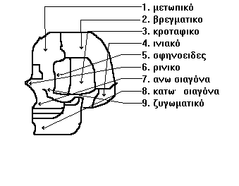
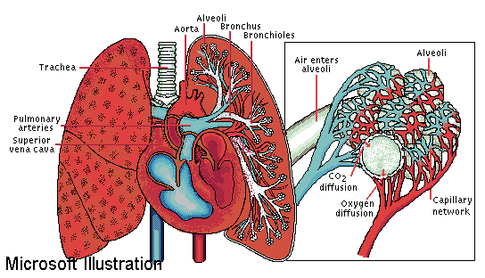
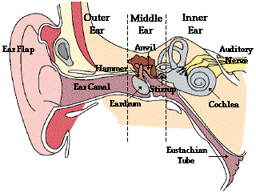
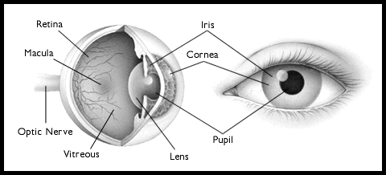
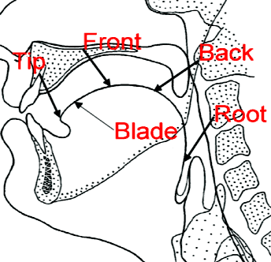
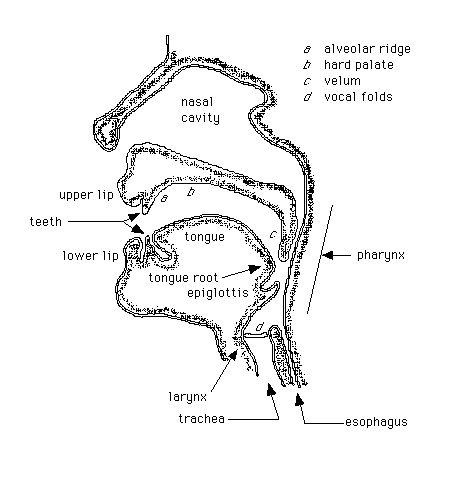
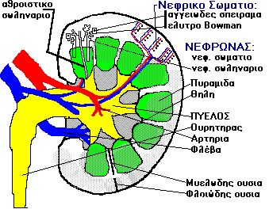

FvMcs.human'BODY
name::
* McsEngl.conceptHBody001,
* McsEngl.human'BODY@cptHBody,
* McsEngl.FvMcs.human'BODY@cptHBody,
* McsEngl.entity.body.organism.human@cptHBody001, {2012-07-31}
* McsEngl.sympan'earth'societyHuman'human'body@cptHBody001, {2012-07-31}
* McsEngl.body.human@cptHBody001,
* McsEngl.humanbdy@cptHBody,
* McsEngl.human-body@cptHBody001,
* McsEngl.humanbody@cptHBody001,
* McsEngl.human-organism@cptHBody,
* McsEngl.hbd@cptHBody001, {2012-08-13}
* McsEngl.bodyHmn@cptHBody001, {2012-07-31}
* McsEngl.hbody@cptHBody001,
====== lagoGreek:
* McsElln.ΑΝΘΡΩΠΙΝΟ-ΣΩΜΑ@cptHBody,
DEFINITION
Σ'αυτή εδώ τη βάση αναλύεται η ανατομια και φυσιολογια (λειτουργιες) ΑΝΘΡΩΠΙΝΟΥ ΣΩΜΑΤΟΣ και όχι ο 'ΑΝΘΡΩΠΟΣ' που τον θεωρώ ένα υπερσύστημα που έχει μια κοσμοθεωρία, εκτελεί διάφορα επαγγέλματα, έρχεται σε σχέσεις με το περιβάλλον του πέραν αυτές της επιβίωσης.
[hmnSngo.1995-03]
The human body is the entire structure of a human organism, and consists of a head, neck, torso, two arms and two legs. By the time the human reaches adulthood, the body consists of close to 100 trillion cells,[1] the basic unit of life. These cells are organised biologically to eventually form the whole body.
[http://en.wikipedia.org/wiki/Human_body]
analytic
ΑΡΧΙΚΟΣ ΟΡΙΣΜΟΣ ΑΝΑΛΥΣΗΣ για το ανθρώπινο-κύτταρο.
ΑΝΘΡΩΠΙΝΟ-ΣΩΜΑ ονομάζω το μέρος του ΑΝΘΡΩΠΟΥ#cptCore401.1# που αποτελείται καθαρά από 'σάρκα και οστά'.
[hmnSngo.1995-03]
synthetic
ΤΕΛΙΚΟΣ ΟΡΙΣΜΟΣ ΣΥΝΘΕΣΗΣ για το ανθρωπινο κυτταρο.
Το ΑΝΘΡΩΠΙΝΟ-ΣΩΜΑ αποτελείται απο ένα σύνολο συνεργαζόμενων ΟΡΓΑΝΙΚΩΝ-ΣΥΣΤΗΜΑΤΩΝ#cptHBody516.s#.
[hmnSngo.1995-03]
"Ενα σύνολο συνεργαζόμενων οργανικών ΣΥΣΤΗΜΑΤΩΝ αποτελεί τον ΟΡΓΑΝΙΣΜΟ"
[ΑΡΓΥΡΗΣ, 1994, 9#cptResource29#]
bodyHmn'disease#cptHBody007: attPar#
name::
* McsEngl.bodyHmn'disease@cptHBody,
part-relation defect(cptHBody001)=cptHBody007.
cptHBody007 is in defect part-relation with conceptHBody001
Παροιμιακός κανόνας:
έχε τα πόδια σου ζεστά,
την κεφαλή σου κρύα,
τον στόμαχόν σου ελαφρύ,
γιατρού δεν έχεις χρεία.
bodyHmn'health
name::
* McsEngl.bodyHmn'health@cptHBody,
* McsEngl.health@cptHBody,
* McsEngl.health.human@cptHBody,
* McsEngl.human'health@cptHBody,
Social isolation, regardless of feelings of loneliness, may have negative health consequences and even shorten lives.
Social isolation -- a lack of companionship or interaction -- might correlate with a higher rate of illness and mortality, according to a study that followed participants age 52 or older from 2004-2012.
Even if the respondents did not necessarily feel lonely, researchers found that the most socially isolated participants had a 26% higher mortality rate.
These findings led researchers to think that having confidants could result in symptoms of illness or poor health being noticed sooner.
In addition, physical contact correlated with a decrease in health symptoms such as pain or high blood pressure.
[http://www.wisegeek.com/does-social-isolation-impact-mortality.htm?m, [2013-08-22}]
bodyHmn'resource
name::
* McsEngl.bodyHmn'resource@cptHBody,
* hbody'resource,
_ADDRESS.WPG:
* http://www.outnow.gr/news/health-news/15-kolpa-pou-den-xeris-oti-boris-na-kanis-me-to-soma-sou//
bodyHmn'structure#cptCore515#
name::
* McsEngl.bodyHmn'structure@cptHBody,
_Structure.bodyHmn:
* nodeHbody#cptHBody515#
===
* sysOrgns#cptHBody059#
* organ#cptHBody060#
* tissue#cptHBody053#
* cell#cptHBody063#
===
* skeletal#cptHBody102#
* muscular (κίνηση)#cptHBody331#
* nervous#cptHBody030#
* circulatory (κυκλοφορια αιματος/λέμφου)#cptHBody005#
* digestive (πέψη)#cptHBody071#
* excretory (απέκκριση)#cptHBody290#
* respiratory#cptHBody146#
* reproductive#cptHBody152#
ΑΝΑΤΟΜΙΑ ονομάζουν τη μελέτη μορφής, κατασκευής.
[ΑΡΓΥΡΗΣ, 1994, 10#cptResource29#]
Ο οργανισμός αποτελείται από ένα σύνολο συνεργαζόμενων ΣΥΣΤΗΜΑΤΩΝ.
[ΑΡΓΥΡΗΣ, 1994, 9#cptResource29#]
bodyHmn'weight
name::
* McsEngl.bodyHmn'weight@cptHBody,
* McsEngl.weight.hmnbody@cptHBody,
How Does Weight Gain Impact Joint Pressure?
For every additional pound (0.45 kg) of body weight, 4 pounds (.91 kg) of pressure is added to the knees.
Weight gain impacts joint pressure because extra weight causes stress on the joints of the lower body, especially the knees.
In fact, with every extra pound (0.45 kg) of additional body weight, 4 pounds (1.81 kg) of pressure is added to the knees, the joints that are responsible for carrying the most body weight.
More than half of all people who suffer from arthritis, a disease that causes joint inflammation, are obese.
Weight gain might especially affect the joint pressure in children because the stress on the joints could damage the cartilage at the end of bones while they are still growing.
[http://www.wisegeek.com/how-does-weight-gain-impact-joint-pressure.htm?m, {2014-05-06}]
weight'loss
name::
* McsEngl.weight'loss@cptHBody,
When People Lose Weight, Where Does It Go?
Eighty-four percent of weight loss is expelled by the lungs as carbon dioxide; the rest is released as water.
If you want to lose weight, take a deep breath before reading this -- and then exhale.
It turns out that your lungs are the primary exit avenue for those excess pounds.
Your body stores excessive caloric intake in the form of fat, or triglyceride molecules.
To get rid of the excess, your body must break down the molecules into their constituent parts: carbon, oxygen, and hydrogen.
Although exercise is required to release energy and break down the triglycerides, the atoms still remain.
Your lungs remove most of these extra atoms -- about 84 percent -- in the form of carbon dioxide.
The rest is turned into water and released as urine, sweat, tears, and other liquids.
[http://www.wisegeek.com/when-people-lose-weight-where-does-it-go.htm?m {2018-08-17}]
bodyHmn'ATTRIBUTE#cptCore546.174#
name::
* McsEngl.bodyHmn'ATTRIBUTE@cptHBody,
bodyHmn'atom
name::
* McsEngl.bodyHmn'atom@cptHBody,
* McsEngl.atom.bodyHmn@cptHBody,
_SPECIFIC:
How Many Atoms Does the Human Body Contain?
There are roughly 7 octillion (7,000,000,000,000,000,000,000,000,000) atoms in an adult human's body.
There are about 7 octillion atoms in the adult human body.
The number of atoms in the human body is never constant, but an estimate can be calculated based on the average weight of a human adult and the average mass of an atom.
An average human weighs 70 kilograms (about 154 pounds) and the average mass of an atom is a thousandth of a trillion of a trillion of 1 kilogram (0 followed by 27 decimal places).
The calculation results in 7 octillion atoms or a 7 followed by 27 zeroes.
[http://www.wisegeek.com/how-many-atoms-does-the-human-body-contain.htm?m, {2015-03-10}]
bodyHmn'light
name::
* McsEngl.bodyHmn'light@cptHBody,
Humans give off trace amounts of light that gets brightest in late afternoon and dimmest at night.
The human body has been found to emit light, but in extremely small amounts -- about 1,000 times lower than the sensitivity of the human eye.
The process of the body releasing energy as light is known as bioluminescence.
This process was once thought to occur only in certain animals, but researchers discovered with the use of cameras that were hypersensitive to light that human beings also emit trace amounts of light.
The light intensity emitted from humans tends to operate in 24-hour cycles.
In the late afternoon, the light tends to be brightest, and the levels are their dimmest at night.
[http://www.wisegeek.com/do-human-bodies-emit-light.htm?m, {2013-06-08}]
bodyHmn'substance.IRON
name::
* McsEngl.bodyHmn'substance.IRON@cptHBody,
* McsEngl.bodyHmn'iron@cptHBody,
How Much Iron is in the Human Body?
There is enough iron in the human body to make one small nail.
Compared to all other elements in the human body, iron makes up roughly 0.006%.
On average, the body loses 1-2 milligrams of iron a day through sweat, urine, and menstrual cycles.
Iron is replenished through food.
[http://www.wisegeek.com/how-much-iron-is-in-the-human-body.htm?m, {2014-09-21}]
bodyHmn'Tattoo
name::
* McsEngl.bodyHmn'Tattoo@cptHBody,
Will Getting a Tattoo Hurt My Immune System?
Research suggests that over time, getting several tattoos can make your immune system stronger.
A 2016 study published in the American Journal of Human Biology indicates that getting several tattoos over time can make your immune system stronger.
This does not mean, however, that getting a tattoo will immediately improve your overall health and reduce the likelihood of getting the flu this year.
The study does indicate that someone who has had several tattoos experiences less suppression of the immune system than an individual getting tattooed for the first time.
In this way, the body of the tattoo "veteran" toughens up, similar to the way in which exercise
strengthens muscles.
[http://www.wisegeek.com/will-getting-a-tattoo-hurt-my-immune-system.htm?m {2016-09-03}]
bodyHmn'doing#cptHBody147#
name::
* McsEngl.bodyHmn'doing@cptHBody,
bodyHmn'doing.CLEANING
name::
* McsEngl.bodyHmn'doing.CLEANING@cptHBody,
Θα εκπλαγείτε από το πόσο συχνά συμβουλεύουν οι επιστήμονες να κάνουμε ντους...
Θεωρείται κοινός τόπος πως ο καθημερινός καθαρισμός του σώματός μας είναι ένας βασικός κανόνας υγιεινής. Και όμως η συχνότητα με την οποία θα πρέπει να κάνουμε ντους σύμφωνα με τους επιστήμονες δεν είναι αυτή που πιθανά φαντάζεστε.
Σύμφωνα με πρόσφατες δηλώσεις της καθηγήτριας δερματολογίας Dr Elaine Larson, που είναι ειδική σε θέματα μολύνσεων του δέρματος στο πανεπιστήμιο Columbia των ΗΠΑ, δεν θα πρέπει να κάνουμε ντους καθημερινά, αλλά μόνο μία με δύο φορές την εβδομάδα.
Η ίδια είπε στο περιοδικό Time, πως ο κόσμος κακώς θεωρεί πως τα συχνά ντους βοηθούν το δέρμα τους να είναι υγιές, και εξηγεί πως μπορεί να είναι μεν πιο "εύοσμο", αλλά από θέμα υγείας με κάθε πλύσιμο εκτός από τις δυσάρεστες οσμές απομακρύνονται έλαια και "καλά βακτήρια" που αναπτύσσονται φυσιολογικά στο δέρμα, τα οποία είναι απαραίτητα για την υγεία του οργανισμού και η απουσία τους μπορεί να οδηγήσει σε πιο σοβαρές δερματοπάθειες και άλλα προβλήματα υγείας. Παράλληλα τονίζει πως το καθημερινό πλύσιμο είναι απαραίτητο μόνο για τα χέρια και όχι για ολόκληρο το σώμα.
Με την αποψή της συμφωνεί και ο καθηγητής δερματολογίας του πανεπιστημίου George Washington, ο Dr. C. Brandon Mitchell, ο οποίος ωστόσο εξηγεί πως αναγνωρίζει πως οι "οσμές" είναι ενοχλητικές και προτείνει να πλένετε καθημερινά τοπικά μόνο τις μασχάλες σας, τα οπίσθια και την περιοχή γύρω από τα γεννητικά όργανα, που είναι οι περιοχές του σώματος που παράγουν τις περισσότερες οσμές και τονίζει πως "το υπόλοιπο σώμα δεν χρειάζεται καθημερινά σαπούνισμα".
[http://yolife.gr/poso-syxna-prepei-na-kanoyme-ntoys-symfwna-me-toys-giatroys {2016-11-04}]
bodyHmn'doing.EVOLUTING#cptCore546.171#
name::
* McsEngl.bodyHmn'doing.EVOLUTING@cptHBody,
_SPECIFIC:
Τα ΣΤΑΔΙΑ/ΦΑΣΕΙΣ εξέλιξης ενός τυχαίου οργανισμού.
ΑΝΑΠΑΡΑΓΩΓΗ#cptHBody204: attPar#
ΓΟΝΙΜΟΠΟΙΗΣΗ#cptHBody558: attPar#
ΕΝΔΟΜΗΤΡΙΑ-ΖΩΗ#ql:[Level CONCEPT:rl? conceptHBody324]##cptHBody324: attPar#
ΤΟΚΕΤΟΣ#cptHBody559: attPar#
ΖΩΗ#cptHBody560: attPar#
ΜΩΡΟΥ ΣΤΑΔΙΟ
ΠΑΙΔΙΟΥ ΣΤΑΔΙΟ
ΕΦΗΒΟΥ ΣΤΑΔΙΟ
ΕΝΗΛΙΚΑ ΣΤΑΔΙΟ
ΩΡΙΜΟΥ ΣΤΑΔΙΟ
ΓΕΡΟΥ ΣΤΑΔΙΟ
ΘΑΝΑΤΟΣ#cptHBody561: attPar#
Anyone who lived 2,000-3,000 years ago is either the ancestor of everyone now living or nobody now living.
The common ancestors of all humans are thought to have lived 2,000-3,000 years ago.
The term "common ancestor" is used in the study of human genetic heritage and refers to an individual from which a group is directly descended.
It is thought that anyone who was alive about 3,000 years ago is either an ancestor of everyone now on Earth or not an ancestor of anyone now on Earth.
[http://www.wisegeek.com/how-long-ago-did-the-common-ancestors-of-all-humans-live.htm?m, {2013-07-24}]
bodyHmn'WHOLE
_WHOLE:
* sympan'earth'societyHuman'human#cptCore401#
bodyHmn'ENVIRONMENT#cptCore756#
name::
* McsEngl.bodyHmn'ENVIRONMENT@cptHBody,
ΒΛΑΒΕΡΕΣ ΟΝΤΟΤΗΤΕΣ ΠΕΡΙΒΑΛΛΟΝΤΟΣ:
ΒΛΑΒΕΡΕΣ-(ΕΞΩΤΕΡΙΚΕΣ)-ΔΙΑΔΙΚΑΣΙΕΣ#ql:[Level CONCEPT:rl? conceptHBody216]##cptHBody216#
ΒΛΑΒΕΡΑ-(ΕΞΩΤΕΡΙΚΑ)-ΑΝΤΙΚΕΙΜΕΝΑ#ql:[Level CONCEPT:rl? conceptHBody246]##cptHBody246#
ΕΝΔΥΜΑΣΙΑ/CLOTHES#ql:[Level CONCEPT:rl? conceptHBody119]##cptHBody119#
ΚΑΤΟΙΚΙΑ/SHELTER#ql:[Level CONCEPT:rl? conceptHBody118]##cptHBody118#
ΝΑΡΚΩΤΙΚΑ/NARCOTIC#ql:[Level CONCEPT:rl? conceptHBody122]##cptHBody121#
ΟΞΥΓΟΝΟ/OXYGEN#ql:[Level CONCEPT:rl? conceptHBody124]##cptHBody124#
ΤΡΟΦΗ/FOOD#ql:[Level CONCEPT:rl? conceptHBody055]##cptHBody055#
ΦΑΓΗΤΟ/MEAL#cptHBody567#
ΦΑΡΜΑΚΑ/DRUG#ql:[Level CONCEPT:rl? conceptHBody121]##cptHBody121#
bodyHmn'GENERIC
_GENERIC:
* entity.body.organism#cptCore482.18#
SPECIFIC
name::
* McsEngl.bodyHmn.specific@cptHBody,
_SPECIFIC: bodyHmn.alphabetically:
* bodyHmn.infant#cptHBody401.22#
* bodyHmn.man#cptHBody205#
* bodyHmn.woman#cptHBody206#
* bodyHmn.zygot#cptHBody647#
bodyHmn.SPECIFIC-DIVISION.gender
name::
* McsEngl.bodyHmn.SPECIFIC-DIVISION.gender@cptHBody,
ΓΕΝΝΗΤΙΚΟΥ ΣΥΣΤΗΜΑΤΟΣ ΚΛΑΣΗ
_SPECIFIC:
Ανάλογα με το ΓΕΝΝΗΤΙΚΟ ΣΥΣΤΗΜΑ οι ανθρώπινοι οργανισμοί διακρίνονται σε:
* ΑΝΤΡΑΣ#ql:[Level CONCEPT:rl? conceptHBody205]##cptHBody205#
* ΓΥΝΑΙΚΑ#ql:[Level CONCEPT:rl? conceptHBody206]##cptHBody206#
bodyHmn.SPECIFIC-DIVISION.evoluting
name::
* McsEngl.bodyHmn.SPECIFIC-DIVISION.evoluting@cptHBody,
ΕΞΕΛΙΞΗΣ ΚΛΑΣΣΗ
_SPECIFIC:
* ΖΥΓΩΤΟ#cptHBody647#
* ΕΜΒΡΙΟ#cptHBody628#
* ΜΩΡΟ#cptHBody203##cptHBody401.22#
* ΠΑΙΔΙ
* ΕΦΗΒΟΣ
* ΕΝΗΛΙΚΑΣ
* ΩΡΙΜΟΣ
* ΓΕΡΟΣ
FvMcs.bodyHmn.MAN-ΑΝΤΡΑΣ
name::
* McsEngl.conceptHBody205,
* McsEngl.bodyHmn.MAN-ΑΝΤΡΑΣ@cptHBody,
* McsEngl.FvMcs.bodyHmn.MAN-ΑΝΤΡΑΣ@cptHBody,
* McsEngl.man@cptHBody205,
* McsEngl.man@cptHBody,
* McsElln.ΑΝΤΡΑΣ@cptHBody205,
* McsElln.ΑΝΤΡΑΣ@cptHBody,
DEFINITION
analytic
ΑΝΤΡΑΣ είναι ο ΑΝΘΡΩΠΙΝΟΣ ΟΡΓΑΝΙΣΜΟΣ που έχει το αρσενικό γεννητικο σύστημα.
GENERIC
_GENERIC:
* human-body#cptHBody001#
SPECIFIC
_SPECIFIC:#ql:_GENERIC cptHBody205#
FvMcs.bodyHmn.WOMAN-ΓΥΝΑΙΚΑ
name::
* McsEngl.conceptHBody206,
* McsEngl.bodyHmn.WOMAN-ΓΥΝΑΙΚΑ@cptHBody,
* McsEngl.FvMcs.bodyHmn.WOMAN-ΓΥΝΑΙΚΑ@cptHBody,
* McsEngl.woman@cptHBody206,
* McsEngl.woman@cptHBody,
* McsElln.ΓΥΝΑΙΚΑ@cptHBody206,
* McsElln.ΓΥΝΑΙΚΑ@cptHBody,
DEFINITION
analytic
ΓΥΝΑΙΚΑ είναι ο ΑΝΘΡΩΠΙΝΟΣ ΟΡΓΑΝΙΣΜΟΣ που έχει το θηλυκό γεννητικό σύστημα.
SPECIFIC
_SPECIFIC:#ql:_GENERIC cptHBody206#
FvMcs.bodyHmn.ZYGOTE
name::
* McsEngl.conceptHBody647,
* McsEngl.bodyHmn.ZYGOTE@cptHBody,
* McsEngl.FvMcs.bodyHmn.ZYGOTE@cptHBody,
* McsEngl.zygote@cptHBody647, {2012-07-31}
* McsElln.ΖΥΓΩΤΟ@cptHBody,
DEFINITION
A zygote (from Greek ????t?? zygotos "joined" or "yoked", from ?????? zygoun "to join" or "to yoke"),[1] or zygocyte, is the initial cell formed when two gamete cells are joined by means of sexual reproduction. In multicellular organisms, it is the earliest developmental stage of the embryo. In single-celled organisms, the zygote divides to produce offspring, usually through meiosis.
A zygote is always synthesized from the union of two gametes, and constitutes the first stage in a unique organism's development. Zygotes are usually produced by a fertilization event between two haploid cells—an ovum (female gamete) and a sperm cell (male gamete)—which combine to form the single diploid cell. Such zygotes contain DNA derived from both the parents, and this provides all the genetic information necessary to form a new individual.
[http://en.wikipedia.org/wiki/Zygote]
analytic
ΖΥΓΩΤΟ είναι το γονιμοποιημένο ωάριο.
[ΒΗΜΑ, 3 NOEM. 1996, TO ΑΛΛΟ ΒΗΜΑ 21]
EVOLUTION#cptCore546.171#
Το ζυγωτό αρχίζει αμέσως να διαιρείται και στη συνέχεια διαιρούνται με τον ίδιο τρόπο τα θυγατρικά κύτταρα για να μεγαλώσει το έμβρυο και αρχίζει η κατανομή των έργων.
[ΒΗΜΑ, 3 NOEM. 1996, TO ΑΛΛΟ ΒΗΜΑ 21]
SPECIFIC
_SPECIFIC#ql:_GENERIC cptHBody647#
FvMcs.doing.HUMAN-BODY-ΔΙΑΔΙΚΑΣΙΑ
name::
* McsEngl.conceptHBody147,
* McsEngl.doing.HUMAN-BODY-ΔΙΑΔΙΚΑΣΙΑ@cptHBody,
* McsEngl.FvMcs.doing.HUMAN-BODY-ΔΙΑΔΙΚΑΣΙΑ@cptHBody,
* McsEngl.entity.bodyNo.doing.doingHbd@cptHBody147, {2012-08-15}
* McsEngl.function.human'body@cptHBody147,
* McsEngl.hbody'doing@cptHBody,
* McsEngl.human-body-function@cptHBody,
* McsEngl.human-body'doing@cptHBody,
* McsEngl.doingHbd@cptHBody147, {2012-08-15}
====== lagoGreek:
* McsElln.ΛΕΙΤΟΥΡΓΙΑ@cptHBody147,
* McsElln.ΛΕΙΤΟΥΡΓΙΑ-ΑΝΘΡΩΠΙΝΟΥ-ΣΩΜΑΤΟΣ@cptHBody,
* McsElln.ΛΕΙΤΟΥΡΓΙΑ-ΤΟΥ-ΟΡΓΑΝΙΣΜΟΥ@cptHBody,
* McsElln.ΟΡΓΑΝΙΚΗ-ΛΕΙΤΟΥΡΓΙΑ@cptHBody,
ΦΥΣΙΟΛΟΓΙΑ ονομάζουν τη μελέτη λειτουργίας
[ΑΡΓΥΡΗΣ, 1994, 10#cptResource29#]
DEFINITION
analytic
ΛΕΙΤΟΥΡΓΙΑ ΤΟΥ ΟΡΓΑΝΙΣΜΟΥ ονομάζω κάθε ΔΙΑΔΙΚΑΣΙΑ που εκτελεί ο ΟΡΓΑΝΙΣΜΟΣ σαν ολότητα.
[hmnSngo.1995-02]
doingHbd'GENERIC
_GENERIC:
* entity.bodyNo.doing#cptCore475#
doingHbd'WHOLE
_WHOLE:
* sympan'earth'societyHuman'human'body#cptHBody001#
SPECIFIC
name::
* McsEngl.doingHbd.specific@cptHBody,
_SPECIFIC: doingHbd.alphabetically:
* doingHbd.breathing#cptHBody148#
* doingHbd.communicating#cptHBody298#
* doingHbd.digesting#cptHBody334#
* doingHbd.excreting#cptHBody145#
* doingHbd.fooding#cptHBody333#
* doingHbd.governing#cptHBody297#
* doingHbd.homeostasis#cptHBody377#
* doingHbd.metabolizing#cptHBody144.1#
* doingHbd.moving#cptHBody332#
* doingHbd.reproducing#cptHBody204#
* doingHbd.sleeping##
===
* ΑΝΑΠΑΡΑΓΩΓΗ#cptHBody204#
* ΑΠΕΚΚΡΙΣΗ ΟΥΣΙΩΝ/EXCRETION#cptHBody145#
* ΕΠΙΚΟΙΝΩΝΙΑ#cptHBody298#
* ΚΙΝΗΣΗ/MOTION#cptHBody332#
* ΛΗΨΗ ΟΥΣΙΩΝ (ΤΡΩΜΕ, ΠΙΝΟΥΜΕ, ΑΝΑΠΝΕΟΥΜΕ)
* ΑΝΑΠΝΟΗ/BREATH#cptHBody148#
* ΔΙΑΤΡΟΦΗ/NUTRITION (ΛΗΨΗ ΣΤΕΡΕΑ ΤΡΟΦΗΣ/ΥΓΡΩΝ)#cptHBody333#
* ΜΑΝΑΤΖΜΕΝΤ/MANAGEMENT#cptHBody297#
* ΠΕΨΗ/DIGETION#cptHBody334#
Το σώμα ΣΑΝ ΟΛΟΤΗΤΑ εκτελεί τις λειτουργίες:
- ΑΝΑΠΑΡΑΓΕΤΑΙ (γεννητικο συστημα)
- ΑΝΤΙΔΡΑ στα εξωτερικά ερεθίσματα (αισθησεων σύστημα)
- ΚΙΝΕΙΤΑΙ (ερειστικομυικο σύστημα)
- ΣΥΝΤΟΝΙΖΕΙ την όλη του δραστηριότητα (νευρικο συστ.)
- ΤΡΩΕΙ (πεπτικο συστημα)
doingHbd.SLEEPING
_CREATED: {2014-01-07}
name::
* McsEngl.doingHbd.SLEEPING@cptHBody,
* McsEngl.sleep.human@cptHBody,
* McsEngl.sleepHmn@cptHBody,
* McsEngl.sleeping.human@cptHBody,
* McsEngl.sleepingHmn@cptHBody,
sleepingHmn'pattern
name::
* McsEngl.sleepingHmn'pattern@cptHBody,
How Have Our Sleep Patterns Changed throughout History?
Many historical accounts refer to people sleeping in two segments, with a period of wakefulness around midnight.
Most people try to get around eight hours of unbroken sleep each night. But
that wasn't always the preferred sleep pattern. In pre-industrial Europe,
as well as in many other parts of the world, it was common for people to
sleep in two segments, waking up for an hour or two in between, around
midnight. These sleep shifts were known as "first sleep" and "second
sleep," and were referenced frequently in literary works and diaries from
the period. Without electric lights, people would go to sleep fairly early,
a couple hours after sundown. After waking up, during a period of time
sometimes referred to as "the watching," people would do indoor activities
such as praying, reading, sewing, tending to the fire, or possibly
socializing with neighbors. Some doctors even recommended this period of
wakefulness as being the ideal time to conceive a child. Afterwards, people
would go back to sleep for another few hours, waking up around dawn.
Read More:
http://www.wisegeek.com/how-have-our-sleep-patterns-changed-throughout-history.htm?m {2018-11-29}
sleepingHmn'disease
name::
* McsEngl.sleepingHmn'disease@cptHBody,
* McsEngl.disease.sleep@cptHBody,
* McsEngl.sleep-disorder@cptHBody,
* McsEngl.sleeping-disorder@cptHBody,
_ADDRESS.WPG:
* {2018-07-13} Sharon-Ackman, How to Fall Asleep in 120 Seconds
Trouble sleeping? Here’s a military-tested trick for guaranteed slumber
https://medium.com/s/story/combat-tested-training-unwind-and-sleep-anywhere-in-120-seconds-27d5307b7606,
Why You Don’t Sleep Well in Someone Else’s Bed
Mandy Oaklander @mandyoaklander April 22, 2016
Half of your brain may be staying awake to keep watch
The researchers found evidence that something unique indeed goes on in the brain during the first night: one hemisphere of the brain, the left, shows wakefulness while the other shows sleep. This alertness during sleep in half of the brain has been observed in other animals—including whales, dolphins and birds—and is thought to act as a kind of night watch. “The environment is so new to us, we might need a surveillance system so we can monitor the surroundings and we can detect anything unusual,” says Masako Tamaki, one of the authors of the study and research associate at the Laboratory for Cognitive and Perceptual Learning at Brown University. We’re most vulnerable when we’re asleep, in other words, and by staying partially awake, our brains might be trying to protect us.
[http://time.com/4303394/sleep-disorders//]
5) Απόκτησε μια ρουτίνα πριν πέσεις για ύπνο: Ύστερα από μια δύσκολη μέρα στην δουλειά το μόνο που έχεις να κάνεις είναι να χαλαρώσεις. Κανε ένα χλιαρό μπανάκι, φόρεσε τα άνετα ρούχα σου, πιες ένα χαμομήλι και το μόνο σίγουρο είναι πως θα κοιμηθείς σαν πουλάκι.
[http://www.altsantiri.gr/health/ipoferis-apo-aipnies-mathe-pos-tha-tis-antimetopisis/]
How Many Americans Suffer from Chronic Sleep Disorders?
About 40 million Americans suffer from chronic sleep disorders, causing $16
billion USD in medical costs each year.
An estimated 40 million Americans suffer from chronic sleep disorders, and
an additional 20 million have short-term sleeping issues, experts say. The
frequency of chronic sleep disorders is higher for the elderly, as about
half of all people older than 65 have reported having sleep difficulties.
The most common sleep disorders include insomnia, which is when it’s
difficult to fall asleep or stay asleep, and sleep apnea, a disorder that
is characterized by short stops in breathing during sleep. In the US, sleep
disorders and their accompanying sleep deprivation are estimated to lead to
about $16 billion US Dollars (USD) in medical expenses every year.
Read More: http://www.wisegeek.com/how-many-americans-suffer-from-chronic-sleep-disorders.htm?m, {2014-04-06}
Do Blind People Have Difficulty Sleeping?
An estimated 80% of blind people have difficulty sleeping.
About 80% of blind people have difficulty sleeping, research shows. The
brain generally processes the light that comes through the eyes in order to
set the body’s circadian rhythm, or the 24-hour "clock" that regulates
the person's waking and sleeping patterns. People who are not completely
blind don’t tend to suffer as many sleep difficulties as those who are
completely blind and have no ability so see light signals. The body’s
inability to regulate its sleep cycle because of the lack of light signals
is a sleep disorder known as non-24-hour wake disorder. It is estimated to
affect as many as 95,000 Americans, most of whom are totally blind.
Read More: http://www.wisegeek.com/do-blind-people-have-difficulty-sleeping.htm?m, {2014-04-17}
Το ηλεκτρονικό διάβασμα καταστρέφει τον ύπνο
Παρασκευή, 09 Ιανουαρίου 2015 11:39 UPD:11:39
Μελέτη που έγινε στο Χάρβαρντ αποτύπωσε τις διαταραχές στον ύπνο των ατόμων που χρησιμοποιούσαν ηλεκτρονικά βιβλία, καθώς το φως που εξέπεμπαν χαλούσε το ρυθμό του ύπνου τους.
Η νέα μόδα των ηλεκτρονικών βιβλίων καταστρέφει σύμφωνα με τους επιστήμονες τον ύπνο όχι μόνο αυτού που διαβάζει αλλά και του ατόμου που κοιμάται δίπλα του. Μελέτη που έγινε στο Χάρβαρντ αποτύπωσε τις διαταραχές στον ύπνο των ατόμων που χρησιμοποιούσαν ηλεκτρονικά βιβλία, καθώς το φως που εξέπεμπαν χαλούσε το ρυθμό του ύπνου τους. Αυτό σύμφωνα με τους ερευνητές οφείλεται στο γεγονός ότι μειώνεται δραστικά η έκκριση μελατονίνης.
Οι ερευνητές χρησιμοποίησαν 12 ενήλικες σε ελεγχόμενες συνθήκες ανάγνωσης ηλεκτρονικών και τυπωμένων βιβλίων. Για 5 μέρες οι συμμετέχοντες διάβαζαν ηλεκτρονικά βιβλία πριν κοιμηθούν και μετά από διάλλειμα μίας ημέρας ακολουθούσαν άλλες 5 μέρες με διάβασμα τυπωμένων βιβλίων, με διάρκεια ανάγνωσης 4 ωρών κάθε φορά, από τις 6 το απόγευμα έως τις 10 το βράδυ. Στη συνέχεια έκλειναν το φως μέχρι το πρωί. Η μελέτη έδειξε ότι τα άτομα που χρησιμοποίησαν συσκευές eReader χρειάστηκαν κατά μέσο όρο δέκα λεπτά παραπάνω για να κοιμηθούν.
Επιπλέον, οι φάσεις REM αυτών των ατόμων ήταν περίπου δώδεκα λεπτά συντομότερες και αισθάνονταν σε σημαντικό βαθμό πιο νυσταγμένοι το επόμενο πρωί. Η διαφορά στην έκκριση μελατονίνης ήταν ιδιαίτερα εμφανής. Μεταξύ των συμμετεχόντων που χρησιμοποιούσαν συσκευές eReaders, ήταν 55 τοις εκατό χαμηλότερη. Μετά από πέντε βράδια με τέσσερις ώρες ανάγνωσης με χρήση ψηφιακών συσκευών, το κιρκαδικό ρολόι των συμμετεχόντων καθυστέρησε κατά μέσο όρο 1,5 ώρες.
Αξίζει να σημειωθεί ότι σε προηγούμενες μελέτες είχε αποδειχθεί ότι το μπλε φως μικρού μήκους κύματος ενεργεί ως σήμα συναγερμού στους ανθρώπους, προκαλώντας στον οργανισμό καταστολή της υπνηλίας και μειώνοντας την έκκριση της ορμόνης του ύπνου. Το γεγονός αυτό έρχεται να προστεθεί στα νέα δεδομένα καθώς σύμφωνα με την επικεφαλής της νέας μελέτης, Anne-Marie Chang το ηλεκτρικό φως στο οποίο είμαστε εκτεθειμένοι μεταξύ της δύσης του ήλιου και του βραδινού ύπνου, έχει εκτεταμένες βιολογικές επιδράσεις. Όπως επισημαίνει η κ. Chang το ηλεκτρονικό φως των συσκευών αυτών ήταν εξαιρετικά έντονο, ενώ αντίθετα το φως που χρησιμοποιούσαν οι αναγνώστες για το διάβασμα των τυπωμένων βιβλίων ήταν απαλό. Η διαφορά αυτή του φωτός επέφερε τις διαταραχές στον ύπνο.
[http://www.naftemporiki.gr/story/899950/to-ilektroniko-diabasma-katastrefei-ton-upno]
therapy
Τι να κάνετε για αποκοιμηθείτε εύκολα αν ξυπνήσετε στο μέσο της νύχτας
29-01-2017 - 23:43μμ
Αν ξυπνήσετε στο μέσο της νύχτας, δυσκολεύεστε να αποκοιμηθείτε; Στριφογυρνάτε στο κρεβάτι; Μετράτε προβατάκια; Και όλα αυτά χωρίς αποτέλεσμα; Ο ειδικός σε θέματα ύπνου Dr. Michael Breus, επισημαίνει πως υπάρχουν δύο τρόποι που θα σας βοηθήσουν να αποκοιμηθείτε αμέσως.
Οι συμβουλές που δίνει είναι οι εξής:
Μην σηκωθείτε από το κρεβάτι για να κάνετε βόλτες παρά μόνο αν πραγματικά έχετε ανάγκη π.χ. να πάτε στην τουαλέτα. Ο λόγος; Όπως εξηγεί, ο σφυγμός μας πριν αποκοιμηθούμε κυμαίνεται συνήθως γύρω στους 60 χτύπους ανά λεπτό. Αν σηκωθούμε από το κρεβάτι ο σφυγμός αυξάνεται που σημαίνει ότι θα χρειαστούμε παραπάνω χρόνο για να χαλαρώσουμε και να καταφέρουμε να ξανακοιμηθούμε.
Χαλαρώστε και αποφύγετε να κοιτάξετε το ρολόι. Για πολλούς ανθρώπους το χειρότερο που θα μπορούσε να τους συμβεί είναι να αγχωθούν ότι δεν θα κοιμηθούν αρκετά, κοιτάζοντας μάλιστα την ώρα στο ρολόι και υπολογίζοντας πόσες ώρες έχουν ακόμα στη διάθεσή τους. Ο Breus μας συμβουλεύει να κάνουμε το αντίθετο: αντί να κοιτάμε το ρολόι η λύση είναι να χαλαρώσουμε και μην απασχολούμε το μυαλό μας με ο,τιδήποτε έχει να κάνει με την ώρα.
[http://www.altsantiri.gr/ygeia/ti-na-kanete-gia-apokimithite-efkola-xypnisete-sto-meso-tis-nychtas/]
Μυστικά για να κοιμάστε… σαν πουλάκι
ΑΘΗΝΑ 15/01/2015
Ακούγεται αυτονόητο, όμως πόσοι από εμάς πραγματικά το κάνουμε πράξη; Πέρα από την καλή και ισορροπημένη διατροφή, ο ύπνος παίζει επίσης πολύ σημαντικό ρόλο στην αίσθηση ευεξίας και ηρεμίας του οργανισμού.
Μερικές από τις παρενέργειες της έλλειψης ύπνου είναι: η απώλεια της μνήμης, η σύγχυση, η υψηλή αρτηριακή πίεση, η παχυσαρκία, οι καρδιαγγειακές ασθένειες και η κατάθλιψη.
Για όσους ταλαιπωρούνται από προβλήματα στον ύπνο και θέλουν να μάθουν μερικούς απλούς, φυσικούς τρόπους για να… δουν «όνειρα γλυκά», σας παρουσιάζουμε μερικά από τα «μυστικά ύπνου», όπως παρουσιάστηκαν σε δημοσίευμα της βρετανικής εφημερίδας Daily Mail.
1. Οι ξηροί καρποί (όπως τα καρύδια και τα καρύδια Βραζιλίας) προκαλούν νύστα, καθώς είναι πλούσια σε πρωτεΐνες, κάλιο και σελήνιο, ουσίες που βοηθούν στην παραγωγή μελατονίνης, της αποκαλούμενης «ορμόνης του ύπνου». Την ίδια επίδραση έχει και η κατανάλωση καλέ, ρεβυθιών και σπανακίου, ενώ οι γαρίδες και ο αστακός είναι καλές πηγές τρυπτοφάνης, μιας ουσίας που μπορεί να μετατραπεί σε σεροτονίνη, η οποία βοηθά τον οργανισμό να νυστάξει.
2. Φάτε σαλάτα για βραδινό. Το μαρούλι περιέχει την ουσία lactucarium, η οποία έχει καταπραϋντικές ιδιότητες και χαλαρώνει τον εγκέφαλο. Εναλλακτικά, φτιάξτε λίγο πριν από τον ύπνο τσάι από μαρούλι, σιγοβράζοντας μερικά φύλλα μαρουλιού σε ζεστό νερό για 10-15 λεπτά.
3. Ο οργανισμός έχει ανάγκη από βιταμίνη Β6 για την παραγωγή μελατονίνης και σεροτονίνης. Τροφές πλούσιες σε βιταμίνη Β6 είναι τα ψάρια (όπως τόνος και σολομός), καθώς επίσης το ωμό σκόρδο και τα φιστίκια.
4. Το τσάι από χαμομήλι περιέχει γλυκίνη, μια ουσία που χαλαρώνει τα νεύρα και τους μυς και μπορεί να λειτουργήσει ως ήπιο ηρεμιστικό, μειώνοντας το άγχος.
5. Κλείστε την τηλεόραση, τον υπολογιστή και οποιαδήποτε άλλη ηλεκτρονική συσκευή διαθέτετε μία ώρα πριν πέσετε για ύπνο.
6. Μισή ώρα προτού ξαπλώσετε, χαλαρώστε ακούγοντας ήρεμη μουσική. Προσπαθήστε να κοιμάστε τις ίδιες ώρες κάθε μέρα και να πέφτετε για ύπνο περίπου την ίδια ώρα, ακόμη και τα σαββατοκύριακα.
7. Κάντε ένα χαλαρωτικό, ζεστό ντους.
8. Ζεστάνετε γάλα ή φάτε μια μπανάνα. Και οι δύο αυτές τροφές απελευθερώνουν φυσικά χημικά, που βοηθούν τον οργανισμό να χαλαρώσει χάρη στην περιεκτικότητά τους σε ασβέστιο και τρυπτοφάνη.
Πηγή: Medicalnews
[http://www.nooz.gr/woman/mustika-gia-na-koimaste-san-poulaki]
Μερικές καλές επιλογές είναι οι εξής:
- Κρακεράκια ολικής άλεσης και μία φέτα γαλοπούλα: Τα προϊόντα ολικής άλεσης είναι καλή πηγή φυτικών ινών, οπότε είναι ιδανικά για να κρατήσουμε μακριά την πείνα. Από την άλλη, η γαλοπούλα παρέχει τρυπτοφάνη, ένα αμινοξύ που προωθεί τη χαλάρωση και διευκολύνει τον ύπνο.
- Στραγγιστό γιαούρτι: Το γιαούρτι είναι πλούσιο σε πρωτεΐνες και παρέχει μικρή ποσότητα υδατανθράκων, ενώ το ασβέστιο που παρέχει εξασφαλίζει καλύτερο ύπνο.
- Φιστικοβούτυρο με μία φέτα ψωμί: Ο συνδυασμός των δύο παρέχει μια καλή δόση πρωτεϊνών, καλών λιπαρών και σύνθετων υδατανθράκων, οι οποίοι προωθούν την απελευθέρωση της «ορμόνης του ύπνου» (μελατονίνη).
- Τυρί κότατζ και φρούτα: Τα φρούτα παρέχουν βιταμίνες, αντιοξειδωτικές ουσίες και φυτικές ίνες, ενώ παράλληλα προωθούν τη σύνθεση της σεροτονίνης, ενός νευροδιαβιβαστή που συνδέεται με την καλύτερη ποιότητα ύπνου. Το τυρί κότατζ παρέχει μια καλή δόση χορταστικών πρωτεϊνών.
Πηγή: Onmed.gr
[http://www.nooz.gr/Health/poia-einai-ta-idanika-snak-prin-ton-ipno]
medication
_SPECIFIC:
* Zopiclone Zolpidem
Sleep-Drunkenness
Is Sleep Drunkenness a Real Sleep Disorder?
Sleep drunkenness is a recently discovered sleep disorder affecting 1 in 7 people.
Sleep drunkenness is a real sleep disorder, officially referred to as
confusional arousal. It is characterized by episodes in which a person
awakes and remains in a state of disorientation, and occurs in one out of
every seven people, according to a 2014 study from the National Institutes
of Health. Sleep drunkenness is most likely to occur when a person is in
the deeper state of the sleep cycle known as non-rapid eye movement (REM)
sleep, and gets woken up suddenly. Over 60% of all reported episodes of
sleep drunkenness last over five minutes, and 84% of people with the
disorder also reported having other sleeping disorders or using drugs that
alter brain chemicals, such as antidepressants.
Read More: http://www.wisegeek.com/is-sleep-drunkenness-a-real-sleep-disorder.htm?m, {2015-01-11}
sleepingHmn'lauphing
name::
* McsEngl.sleepingHmn'lauphing@cptHBody,
Can Laughing Help People Sleep Better?
Research shows that laughing can promote the production of melatonin, which
helps people fall asleep and sleep well.
Laughing could help people sleep better because it encourages the body to
produce melatonin, a hormone responsible for regulating sleep cycles,
research suggests. Researchers analyzed the levels of melatonin in the
breast milk of nursing mothers and found that more melatonin was present in
the breast milk of participants who had viewed a comedy movie than in the
breast milk of women who had viewed an informational weather program. It is
not known why laughter helps with melatonin production, but researchers
believe it might be because laughter decreases stress levels.
Read More: http://www.wisegeek.com/can-laughing-help-people-sleep-better.htm?m, {2014-01-07}
doingHbd.WASHING
name::
* McsEngl.doingHbd.WASHING@cptHBody,
* McsEngl.washing.humanBody@cptHBody,
How Long Should a Person Wash His or Her Hands?
A person should spend enough time hand washing to be able to hum the "Happy
Birthday" song twice--roughly 20 seconds.
A person should wash his or her hands for approximately 20 seconds,
according to guidelines from the Centers for Disease Control and Prevention
(CDC). In order to roughly estimate the recommended amount of time, the CDC
advises humming the “Happy Birthday” song two times while scrubbing the
hands and fingernails before rinsing. Only approximately 5% of people wash
their hands for the recommended time, according to a 2013 Michigan State
University study of hand washing habits in public restrooms. The average
length of time people spend washing their hands falls short of the CDC’s
recommended 20 seconds, at approximately six seconds.
Read More: http://www.wisegeek.com/how-long-should-a-person-wash-his-or-her-hands.htm?m, {2014-12-14}
FvMcs.doingHbd.BREATHING
name::
* McsEngl.conceptHBody148,
* McsEngl.doingHbd.BREATHING@cptHBody,
* McsEngl.FvMcs.doingHbd.BREATHING@cptHBody,
* McsEngl.breath@cptHBody148,
* McsEngl.breath@cptHBody,
* McsEngl.respiration@cptHBody148,
* McsElln.ΑΝΑΠΝΕΥΣΤΙΚΗ-ΚΙΝΗΣΗ@cptHBody,
* McsElln.ΑΝΑΠΝΟΗ@cptHBody148,
DEFINITION
analytic
ΑΝΑΠΝΟΗ είναι ο ΟΡΓΑΝΙΚΗ-ΛΕΙΤΟΥΡΓΙΑ#cptHBody147.a# πρόσληψης οξυγόνου (που πάει στο αίμα) και αποβολής διοξειδίου του άνθρακα στο περιβάλλον.
[hmnSngo.1995-03]
ΑΝΑΠΝΟΗ λέγονται οι ΔΙΑΔΙΚΑΣΙΕΣ#cptHBody147.a# με τις οποιες το οξυγόνο φτάνει από την ατμόσφαιρα στο αίμα και το διοξείδιο απο το αίμα στην ατμόσφαιρα.
Εδώ θα πρέπει να παρατηρήσουμε ότι με τη λέξη αναπνοή εννοούμε ΣΗΜΕΡΑ και τη βιοχημικη διαδικασία της διάσπασης της γλυκόζης.
ΕΞΩΤΕΡΙΚΗ ΑΝΑΠΝΟΗ εννοούμε όλες τις διαδικασίες ανταλλαγής αναπνευστικών αερίων μεταξύ αίματος και ατμόσφαιρας. ΕΣΩΤΕΡΙΚΗ ΑΝΑΠΝΟΗ λέμε την ανταλλαγή μεταξύ αίματος και κυττάρων.
[ΑΡΓΥΡΗΣ, 1994, 73#cptResource29#]
GENERIC
_GENERIC:
* entity.bodyNo.doing.doingHbd#cptHBody147#
WHOLE
_WHOLE:
ΑΝΑΠΝΕΥΣΤΙΚΟ ΣΥΣΤΗΜΑ#cptHBody146#
EVOLUTION#cptCore546.171#
ΕΙΣΠΝΟΗ
ΕΚΠΝΟΗ
Ο μηχανισμός της αναπνοής περιλαμβάνει δύο ΦΑΣΕΙΣ, την εισπνοή και την εκπνοή.
Η ΕΙΣΠΝΟΗ γίνεται ενεργητικά με τη συστολή του διαφράγματος και των μεσοπλευρικών μυών, οπότε διευρύνεται η θωρακική κοιλότητα, γιατί κατεβαίνει το διάφραγμα και ανεβαίνει προς τα πάνω και έξω οι πλευρές. Σύγχρονα όμως διευρύνεται και ο εσωτερικός χώρος, με αποτέλεσμα να προκαλείται εισροή αέρα στις κυψελίδες.
Η ΕΚΠΝΟΗ περιλαμβάνει τη χαλαρωση των αναπνευστικών μυών, διαφράγματος και μεσοπλευρικών μυών, οπότε στενεύει ο χώρος της θωρακικής κοιλότητας, μυμπιέζεται ο αέρας στους πνεύμονες και βγαίνει στην ατμόσφαιρα από τα αεραγωγά όργανα.
[ΑΡΓΥΡΗΣ, 1994, 74#cptResource29#]
Managing#cptCore659.2#
Ο ρυθμός των αναπνευστικών κινήσεων ελέγχεται από τον ΠΡΟΜΗΚΗ ΜΥΕΛΟ, όπου υπάρχει το 'ΑΝΑΠΝΕΥΣΤΙΚΟ ΚΕΝΤΡΟ'. Η περιεκτικότητα του αίματος σε διοξείδιο του άνθρακα ρυθμίζει τη λειτουργία του κέντρου αυτού: Αύξηση σε διοξείδιο του άνθρακα προκαλεί αύξηση των αναπνευστικών κινήσεων, ενώ η μείωση επιφέρει ελάττωση.
[ΑΡΓΥΡΗΣ, 1994, 77#cptResource29#]
SPECIFIC
H ΣΥΧΝΟΤΗΤΑ/ΡΥΘΜΟΣ των αναπνευστικών κινήσεων εξαρτάται από την ηλικία των ατόμων: Οι ενήλικες έχουν 16-20 το λεπτό, ενώ τα νήπια έχουν 60 το λεπτό.
[ΑΡΓΥΡΗΣ, 1994, 77#cptResource29#]
FvMcs.doingHbd.COMMUNICATING-ΕΠΙΚΟΙΝΩΝΙΑ
name::
* McsEngl.conceptHBody298,
* McsEngl.doingHbd.COMMUNICATING-ΕΠΙΚΟΙΝΩΝΙΑ@cptHBody,
* McsEngl.FvMcs.doingHbd.COMMUNICATING-ΕΠΙΚΟΙΝΩΝΙΑ@cptHBody,
* McsEngl.communication-function@cptHBody,
* McsEngl.communication@cptHBody298,
* McsElln.ΕΠΙΚΟΙΝΩΝΙΑ@cptHBody298,
DEFINITION
analytic
ΕΠΙΚΟΙΝΩΝΙΑ είναι η ΛΕΙΤΟΥΡΓΙΑ-του-ανθρώπινου-σώματος#cptHBody147.a# με την οποία
- ΠΡΟΣΛΑΜΒΑΝΕΙ ΕΡΕΘΙΣΜΑΤΑ του περιβάλλοντος και
- ΜΕΤΑΔΙΔΕΙ ερεθίσματα στα διάφορα όργανά του.
[hmnSngo.1995-03]
GENERIC
_GENERIC:
* entity.bodyNo.doing.doingHbd#cptHBody147#
WHOLE
_WHOLE:
* nervous-system#cptHBody030#
SPECIFIC
ΠΡΟΣΛΗΨΗ-ΕΡΕΘΙΣΜΑΤΩΝ-(ΑΙΣΘΗΣΕΙΣ)#ql:[Level CONCEPT:rl? conceptHBody310]##cptHBody310: attSpe#
ΜΕΤΑΒΙΒΑΣΗ ΕΡΕΘΙΣΜΑΤΩΝ ΣΕ ΟΡΓΑΝΑ
FvMcs.doingHmn.DIGESTING-ΠΕΨΗ
name::
* McsEngl.conceptHBody334,
* McsEngl.doingHmn.DIGESTING-ΠΕΨΗ@cptHBody,
* McsEngl.FvMcs.doingHmn.DIGESTING-ΠΕΨΗ@cptHBody,
* McsEngl.digesting.human@cptHBody334, {2012-08-12}
* McsEngl.digestion@cptHBody,
====== lagoGreek:
* McsElln.ΠΕΨΗ@cptHBody,
* McsElln.πεψη-ανθρωπου@cptHBody334, {2012-08-12}
DEFINITION
analytic
Η ΠΕΨΗ ΤΡΟΦΩΝ είναι ΟΡΓΑΝΙΚΗ-ΛΕΙΤΟΥΡΓΙΑ#cptHBody147.a# με την οποία μεγάλα χημικά μόρια ΔΙΑΣΠΩΝΤΑΙ σε μικρότερα για να μπορούν να διαπερνούν τα τοιχώματα του λεπτου εντέρου και να χρησιμοποιούνται από τα κύτταρα.
[hmnSngo.1995-03]
Η ΠΕΨΗ των τροφών είναι η ΔΙΑΔΙΚΑΣΙΑ με την οποία μεγάλα χημικά μόρια ΔΙΑΣΠΩΝΤΑΙ σε μικρότερα για να μπορούν να διαπερνούν τα τοιχώματα του λεπτου εντέρου και να χρησιμοποιούνται από τα κύτταρα.
[ΑΡΓΥΡΗΣ, 1994, 32#cptResource29#]
GENERIC
_GENERIC:
* entity.bodyNo.doing.doingHbd#cptHBody147#
WHOLE
_WHOLE:
ΑΝΘΡΩΠΙΝΟ ΣΩΜΑ
FvMcs.doingHbd.EXCRETING-ΑΠΕΚΚΡΙΣΗ
name::
* McsEngl.conceptHBody145,
* McsEngl.doingHbd.EXCRETING-ΑΠΕΚΚΡΙΣΗ@cptHBody,
* McsEngl.FvMcs.doingHbd.EXCRETING-ΑΠΕΚΚΡΙΣΗ@cptHBody,
* McsEngl.excretion@cptHBody145,
* McsElln.ΑΠΕΚΚΡΙΣΗ@cptHBody145,
* McsElln.ΑΠΕΚΚΡΙΣΗ@cptHBody,
DEFINITION
analytic
ΑΠΕΚΚΡΙΣΗ λέγεται η ΛΕΙΤΟΥΡΓΙΑ#cptHBody147.a# της απομάκρυνσης των άχρηστων και βλαπτικών προϊόντων του μεταβολισμού που πρέπει να απομακρυνθούν από το σώμα μας.
[ΑΡΓΥΡΗΣ, 1994, 70#cptResource29#]
GENERIC
_GENERIC:
ΛΕΙΤΟΥΡΓΙΑ#ql:[Level CONCEPT:rl? conceptCore358]##cptCore475#
* entity.bodyNo.doing.doingHbd#cptHBody147#
SPECIFIC
_SPECIFIC:#ql:_GENERIC cptHBody145#
Τα όργανα που συμμετέχουν στη διαδικασία της απέκκρισης λέγονται ΑΠΕΚΚΡΙΤΙΚΑ ΟΡΓΑΝΑ.
Κύρια απεκκριτική λειτουργια κάνουν οι νεφροί, ενώ μερική επιτελούν οι πνεύμονες, το παχύ έντερο, το δερμα.
[ΑΡΓΥΡΗΣ, 1994, 70#cptResource29#]
FvMcs.doingHbd.FOODING-ΔΙΑΤΡΟΦΗ
name::
* McsEngl.conceptHBody333,
* McsEngl.doingHbd.FOODING-ΔΙΑΤΡΟΦΗ@cptHBody,
* McsEngl.FvMcs.doingHbd.FOODING-ΔΙΑΤΡΟΦΗ@cptHBody,
* McsEngl.fooding@cptHBody,
* McsEngl.nutrition@cptHBody,
* McsElln.ΔΙΑΤΡΟΦΗ@cptHBody333,
DEFINITION
analytic
ΔΙΑΤΡΟΦΗ είναι η ΟΡΓΑΝΙΚΗ-ΛΕΙΤΟΥΡΓΙΑ#cptHBody147.a# με την οποία ο οργανισμός λαμβάνει ΤΡΟΦΕΣ.
[hmnSngo.1995-03]
GENERIC
_GENERIC:
* entity.bodyNo.doing.doingHbd#cptHBody147#
WHOLE
_WHOLE:
* sympan'earth'societyHuman'human'body#cptHBody001#
ΚΑΝΟΝΕΣ ΔΙΑΤΡΟΦΗΣ
Απευθύνονται σε υγιείς αλλά επιπόλαιους και πολυάσχολους που δεν αφιερώνουν ούτε μία σκέψη τους στο μπανάλ ζήτημα του σωστού τρόπου οργάνωσης και λήψης των γευμάτων τους:
1. Μήν τρώτε αν δεν πειτάτε. Μήν τσιμπολογάτε ανάμεσα στα γεύματα, φέρνοντας σε απόγνωση το πεπτικό σας σύστημα από υπερκόπωση.
2. Μήν κάθεστε στο τραπέζι με διαταραγμένο θυμικό. Αν είστε έξω φρενών από θυμό ή λύπη (και άν δεν σας κόβεται φυσιολογικά εξ αυτού η όρεξη) μην φάτε τότε. Δοκιμάστε αργότερα.
3. Σερβίρετε μικρές ποσότητες, δεν χάνετε το δικαίωμα να επανέλθετε. Προτιμήστε σαλάτες και υδατάνθρακες έναντι των πρωτεϊνούχων και των λιπαρών τροφών.
4. Μασάτε καλά.
5. Σταματήστε πριν νιώσετε ολότελα χορτάτος. Η πείνα προέρχεται από στομαχική λειτουργία. Η λαιμαργία εδρεύει στο μυαλό.
6. Εμπιστευτείτε τη γεύση, την όσφρηση και τον στομαχικό σας σάκο.
7. Μην ξεχνάτε να πίνετε νερό όταν διψάτε, αλλά αποφεύγετε να αραιώνετε το γαστρικό υγρό κατά τη διάρκεια των γευμάτων.
8. Απομακρύνετε τους πειρασμούς από το τραπέζι μόλις τελειώσετε ή απομακρυνθείτε εσείς. Μην επιδοθείτε αμέσως σε σωματικές ή ψυχολογικές ασκήσεις.
[ΚΑΘΗΜΕΡΙΝΗ, 28 ΙΑΝ. 1996, 35]
ENVIRONMENT#cptCore756#
EFFECT#cptCore546.189#
Η τέχνη του διατρέφεσθαι αποτελεί ουσιαστικό παράγοντα της σωματικής και ψυχικής μας υγείας.
[ΚΑΘΗΜΕΡΙΝΗ, 28 ΙΑΝ. 1996, 35]
SPECIFIC
Η ΔΙΑΤΡΟΦΗ ΤΟΥ ΠΑΙΔΙΟΥ
Το μεγαλύτερο ενδιαφέρον για τη διατροφή του ανθρώπου επικεντρώνεται στην παιδική ηλικία γιατί είναι η περίοδος κατά την οποία αυξάνεται και διαπλάσσεται ο ανθρώπινος οργανισμός. Πρόσθετα στην περίοδο αυτή εγκαθίστανται και διαμορφώνονται οι διαιτητικές συνήθειες που θα συνεχισθούν και θα ακολουθούν τον άνθρωπο σε όλη του τη ζωή. Νοσήματα φθοράς που συνήθως εκδηλώνονται στην ενήλικο ζωή όπως είναι η παχυσαρκία, η στηθάγχη, η αρτηριακή υπέρταση και ο σακχαρώδης διαβήτης αρχίζουν από την παιδική ηλικία και συχνά θα μπορούσαν να είχαν προληφθεί αν από πολύ ενωρίς είχε εφαρμοσθεί ένα σωστό, υγιεινό διαιτολόγιο.
Η διατροφή του παιδιού στους πρώτους 6 μήνες της ζωής του πρέπει να περιλαμβάνει αποκλειστικά γάλα, κατά προτίμηση μητρικό. Τα τελευταία χρόνια έχει πλέον συνειδητοποιηθεί ότι το μητρικό γάλα αποτελεί την ιδανική τροφή για κάθε φυσιολογικό βρέφος. Η σύστασή του, δηλαδή η περιεκτικότητά του σε λεύκωμα, υδατάνθρακες, λίπος, βιταμίνες και ιχνοστοιχεία διαφέρει από μητέρα σε μητέρα, από μέρα σε μέρα, από θηλασμό σε θηλασμό όπως και στη διάρκεια του ίδιου θηλασμού έτσι ώστε να ανταποκρίνεται στις ανάγκες ενός συγκεκριμένου βρέφους την κάθε δεδομένη στιγμή. Εξάλλου το μητρικό γάλα περιέχει αμυντικούς παράγοντες που σε ένα βαθμό προστατεύουν το παιδί από νοσήματα που προκαλούν μικρόβια και ιοί.
Σε περίπτωση που ο μητρικός θηλασμός είναι ανέφικτος (π.χ. χρόνια ασθένεια της μητέρας) ή ανεπιθύμητος, το βρέφος στους 6 πρώτους μήνες πρέπει να τρέφεται με γάλα αγελαδινό, ειδικά τροποποιημένο για τις ανάγκες των παιδιών αυτής της ηλικίας (τροποποιημένο αγελαδινό γάλα πρώτης βρεφικής ηλικίας). Πρέπει όμως να τονισθεί ότι η επαφή του οργανισμού του βρέφους στους πρώτους μήνες της ζωής με τις πρωτεΐνες του αγελαδινού γάλακτος μπορεί να έχει ως αποτέλεσμα την εκδήλωση αλλεργικών νοσημάτων, όπως άσθματος και εκζέματος.
Στη διάρκεια του δεύτερου εξαμήνου της ζωής το γάλα παύει να είναι η αποκλειστική τροφή, εξακολουθεί όμως να είναι η κύρια τροφή του βρέφους. Το καλύτερο γάλα εξακολουθεί να είναι το μητρικό, αν όμως το παιδί δεν θηλάζει τότε προτιμάται το αγελαδινό γάλα που είναι ειδικά τροποποιημένο για την κάλυψη των αναγκών παιδιών αυτής της ηλικίας (τροποποιημένο αγελαδινό γάλα της δεύτερης βρεφικής ηλικίας).
Στη διάρκεια του 2ου εξαμήνου της ζωής προστίθενται στο διαιτολόγιο στερεές τροφές (φρούτα, δημητριακά, λαχανικά, κρέας κοτόπουλο, ψάρι, αυγό). Η προσθήκη στερεών τροφών στην ηλικία αυτή είναι δυνατή γιατί έχει ωριμάσει το πεπτικό σύστημα του ώστε το βρέφος να μπορεί να πέψει και να απορροφήσει τις τροφές αυτές, όπως επίσης έχει ωριμάσει το νευρικό σύστημα ώστε να μπορεί να μασάει και να καταπίνει τροφές που δεν είναι υγρές. Η προσθήκη στερεών τροφών πρέπει να γίνεται σταδιακά, δηλαδή η κάθε μια απ' αυτές να χορηγείται ξεχωριστά αρχίζοντας από μικρές ποσότητες. Συνήθως δίνεται πρώτα το ρύζι (κρέμα ρυζαλεύρου) και ακολουθούν τα φρούτα, τα λαχανικά και το κρέας. Ο κρόκος του αυγού, το σιτάλευρο (κρέμα σιταλεύρου) και το ψάρι πρέπει να δίνονται μετά τους 8 μήνες. Το ασπράδι του αυγού, το σπανάκι τα πατζάρια και τα γογγύλια πρέπει να δίνονται μετά τον πρώτο χρόνο της ζωής.
Βασικό διαιτητικό κανόνα στη διατροφή του νηπίου και του μεγαλύτερου παιδιού αποτελεί η ποικιλία του διαιτολογίου του που σε καθημερινή βάση πρέπει να περιλαμβάνει τροφές που ανήκουν στις ακόλουθες 4 κύριες ομάδες:
• Η 1η ομάδα περιλαμβάνει κρέας, κοτόπουλο, ψάρι, αυγό
• Η 2η ομάδα περιλαμβάνει γάλα και γαλακτοκομικά προϊόντα (τυρί, κρέμα, γιαούρτι, παγωτό)
• Η 3η ομάδα περιλαμβάνει ψωμί, μακαρόνια, ρύζι
• Η 4η ομάδα περιλαμβάνει φρούτα και λαχανικά.
Οι τροφές της 1ης ομάδας αποτελούν την κύρια πηγή πρωτεϊνών που είναι απαραίτητες για τη δομή νέων ιστών και την παραγωγή πολυτίμων ουσιών για τον ανθρώπινο οργανισμό όπως είναι τα ένζυμα, οι ορμόνες και τα αντισώματα. Οι τροφές της 1ης ομάδας επίσης αποτελούν την κύρια πηγή προμήθειας στο παιδί σιδήρου και βιταμινών.
Οι τροφές της 2ης ομάδας είναι απαραίτητες γιατί πρακτικά είναι οι μόνες που προμηθεύουν ασβέστιο στο παιδί. Για να καλύψει ένα παιδί τις ημερήσιες ανάγκες του σε ασβέστιο πρέπει να πιει 3 ποτήρια γάλα ή να φάει ισοδύναμη ποσότητα γαλακτοκομικού προϊόντος π.χ. 100 γραμμάρια σκληρού τυριού (κασέρι, γραβιέρα, κεφαλοτύρι).
Οι τροφές της 3ης ομάδας περιέχουν κυρίως πολυσακχαρίτες που προσφέρουν στο παιδί την κύρια πηγή θερμίδων που χρειάζεται για τις διάφορες δραστηριότητές του. Εχει βρεθεί ότι οι πολυσακχαρίτες που περιέχονται στο ψωμί, το ρύζι, τα μακαρόνια είναι σάκχαρα πολύ καλύτερης ποιότητας από την κοινή ζάχαρη.
Οι τροφές της 4ης ομάδας όπως και πολλές από τις τροφές της 3ης ομάδας είναι πλούσιες σε φυτικές ίνες. Οι ίνες αυτές αυξάνουν τον όγκο και τον αριθμό των κενώσεων και επομένως προφυλάσουν από δυσκοιλιότητα όπως επίσης από σκωληκοειδίτιδα και καρκίνο του εντέρου. Ακόμη τα φρούτα και λαχανικά αποτελούν την κύρια πηγή βιταμινών και κυρίως της C, της Α και του φυλλικού οξέος.
Αρκετές από τις ζωικές και φυτικές τροφές είναι πλούσιες σε λίπος που αποτελεί συμπυκνωμένη μορφή ενέργειας και καλύπτει 35-45% των θερμιδικών αναγκών του παιδιού. Το ελαιόλαδο που κυρίως χρησιμοποιείται από τους Μεσογειακούς λαούς είναι ποιοτικά το καλύτερο λίπος και φαίνεται ότι προφυλάσσει σημαντικά από τη στεφανιαία νόσο.
Η προσθήκη αλατιού στις τροφές πρέπει να περιορίζεται ήδη από την παιδική ηλικία για να μειώνεται η πιθανότητα ανάπτυξης αρτηριακής υπέρτασης στην ενήλικο ζωή.
Η εφηβεία διακρίνεται για τον εκρηκτικό ρυθμό αύξησης και την έντονη σωματική δραστηριότητα. Είναι λοιπόν αυξημένες οι θερμιδικές ανάγκες όπως επίσης οι ανάγκες σε σίδηρο, ασβέστιο και βιταμίνες. Οι ανάγκες αυτές πρέπει να καλύπτονται με ένα επαρκές και ποικίλο διαιτολόγιο.
[ΙΚΠΙ 1997]
FvMcs.doingHbd.GOVERNING
name::
* McsEngl.conceptHBody297,
* McsEngl.doingHbd.GOVERNING@cptHBody,
* McsEngl.FvMcs.doingHbd.GOVERNING@cptHBody,
* McsEngl.management-function@cptHBody,
* McsEngl.management@cptHBody297,
* McsElln.ΕΛΕΓΧΟΣ@cptHBody,
* McsElln.ΜΑΝΑΤΖΜΕΝΤ@cptHBody297,
* McsElln.ΣΥΝΤΟΝΙΣΜΟΣ@cptHBody,
* McsElln.ΡΥΘΜΙΣΗ@cptHBody,
DEFINITION
analytic
Μανατζμεντ ανθρωπινου-σωματος είναι η ΛΕΙΤΟΥΡΓΙΑ#cptHBody147.a# ΔΙΑΧΕΙΡΙΣΗΣ των υποσυστηματων του και του ίδιου που κάνει ο άνθρωπος.
[hmnSngo.1995-03]
GENERIC
_GENERIC:
* entity.bodyNo.doing.doingHbd#cptHBody147#
NERVOUS-SYSTEM#cptHBody030#
FvMcs.doingHbd.MEMORIZING-(ΑΝΘΡΩΠΙΝΗ-ΜΝΗΜΗ)
name::
* McsEngl.conceptHBody003,
* McsEngl.doingHbd.MEMORIZING-(ΑΝΘΡΩΠΙΝΗ-ΜΝΗΜΗ)@cptHBody,
* McsEngl.FvMcs.doingHbd.MEMORIZING-(ΑΝΘΡΩΠΙΝΗ-ΜΝΗΜΗ)@cptHBody,
* McsEngl.human-memory@cptHBody,
* McsEngl.human'memory@cptHBody003,
* McsEngl.memorizing@cptHBody,
* McsEngl.memory.human@cptHBody003,
* McsElln.ΑΝΘΡΩΠΙΝΗ-ΜΝΗΜΗ@cptHBody,
* McsElln.ΑΠΟΜΝΗΜΟΝΕΥΣΗ@cptHBody,
* McsElln.ΜΝΗΜΗ@cptHBody,
* McsElln.ΜΝΗΜΗ.ΑΝΘΡΩΠΙΝΗ@cptHBody003,
DEFINITION
analytic
MEMORY is the PART of the BRAIN that stores CONCEPTUAL-MODELS.
[hmnSngo.2003-01-16]
Μνημη είναι η λειτουργία του ΕΓΚΕΦΑΛΟΥ με την οποία διατηρεί τα ΑΙΣΘΗΜΑΤΑ.
[hmnSngo.1995-03]
Memory (psychology), process of storing and retrieving information in the brain. The process is central to learning and thinking.
"Memory (psychology)," Microsoft(R) Encarta(R) 97 Encyclopedia. (c) 1993-1996 Microsoft Corporation. All rights reserved.
"ΜΝΗΜΗ: Η ΙΚΑΝΟΤΗΤΑ ΑΝΑΠΑΡΑΣΤΑΣΗΣ ΤΗΣ ΠΕΡΑΣΜΕΝΗΣ ΕΜΠΕΙΡΙΑΣ. ΜΙΑ ΑΠΟ ΤΙΣ ΒΑΣΙΚΕΣ ΙΔΙΟΤΗΤΕΣ ΤΟΥ ΝΕΥΡΙΚΟΥ ΣΥΣΤΗΜΑΤΟΣ, ΠΟΥ ΕΚΦΡΑΖΕΤΑΙ ΜΕ ΤΗΝ ΙΚΑΝΟΤΗΤΑ-ΤΟΥ ΝΑ ΦΥΛΑΓΕΙ ΜΙΑ ΠΛΗΡΟΦΟΡΙΑ ΓΙΑ ΓΕΓΟΝΟΤΑ ΤΟΥ ΕΞΩΤΕΡΙΚΟΥ ΚΟΣΜΟΥ ΚΑΙ ΓΙΑ ΤΙΣ ΑΝΤΙΔΡΑΣΕΙΣ ΤΟΥ ΟΡΓΑΝΙΣΜΟΥ ΚΑΙ ΝΑ ΤΗΝ ΕΙΣΑΓΕΙ ΚΑΤ'ΕΠΑΝΑΛΗΨΗ ΣΤΗ ΣΦΑΙΡΑ ΤΗΣ ΣΥΝΕΙΔΗΣΗΣ ΚΑΙ ΤΗΣ ΣΥΜΠΕΡΙΦΟΡΑΣ"
[ΗΛΙΤΣΕΦ ΚΛΠ, ΦΙΛΟΣΟΦΙΚΟ ΛΕΞΙΚΟ 1985, Γ404#cptResource164#]
WHOLE
_WHOLE:
* BRAIN#cptHBody002#
CAPACITY
name::
* McsEngl.conceptHBody003.1,
* McsEngl.capacity'of'memory@cptHBody003.1,
view.human.conceptbrain#cptCore93.33#
name::
* McsEngl.view.human.conceptbrain@cptHBody,
Functing#cptCore475.2#
Η εισπνοή οξυγόνου για 60 δευτερόλεπτα, διπλασιάζει την ποσότητα λέξεων που θυμόμαστε σε τέστ.
[ΚΑΘΗΜΕΡΙΝΗ, 18 ΑΥΓ. 1996, 11]
FREE-RECALL-TASK
Free recall is a basic paradigm used to study human memory. In a free recall task, a subject is presented a list of to-be-remembered items, one at at time. For example, an experimenter might read a list of 20 words aloud, presenting a new word to the subject every 4 seconds. At the end of the presentation of the list, the subject is asked to recall the items (e.g., by writing down as many items from the list as possible). It is called a free recall task because the subject is free to recall the items in any order that he or she desires.
The free recall task is of interest to cognitive science because it provided some of the basic information used to decompose the mental state term "memory" into simpler subfunctions ("primary memory", "secondary memory"). This is because the results of a free recall task were typically plotted as a serial position curve. This curve exhibited a recency effect and a primacy effect. The behavior of these two effects provided support to the hypothesis that the free recall task called upon both a short-term and a long-term memory.
[U of A Cog Sci Dictionary]
relation-to-coffeine
name::
* McsEngl.coffeine-relation-to-memory@cptHBody,
Does Caffeine Really Enhance Memory?
Studies suggest that consuming 1-2 cups of coffee during and after a task
promotes long-term memory retention.
Caffeine might enhance one's memory, research suggests. Long-term memory
retention was found to be improved in participants who consumed a caffeine
tablet equivalent of one to two cups of coffee both during and after
performing a study session. Compared with participants who took a placebo
with no caffeine, those who ingested caffeine were better at remembering
images from previous study sessions and being able to differentiate them
from other very similar images. Recognizing small differences in detail
from a previous image requires the use of long-term memory storage.
Researchers were not able to determine how exactly caffeine affects the
brain mechanism for long-term memory, however.
Read More: http://www.wisegeek.com/does-caffeine-really-enhance-memory.htm?m, {2014-05-19}
RETRIEVAL
name::
* McsEngl.conceptHBody003.2,
There are two types of information retrieval: recall and recognition. In recall, the information is reproduced from memory. In recognition the presentation of the information provides the knowledge that the information has been seen before. Recognition is of lesser complexity, as the information is provided as a cue. However, the recall can be assisted by the provision of retrieval cues which enable the subject to quickly access the information in memory.
resourceInfHmn#cptResource843#
_ADDRESS.WPG:
* https://www.weforum.org/agenda/2018/12/memories-can-be-inherited-and-scientists-may-have-just-figured-out-how,
* {time.2017-09-01} The secret of how we retrieve memories has been unlocked: https://www.weforum.org/agenda/2017/09/the-secret-of-how-we-retrieve-memories-has-been-unlocked,
THE MEMORY EXHIBIT:
http://www.exploratorium.edu/memory/index.html:
The Memory Exhibit at San Fransisco's Exploratory is an on-line exhibit of scientific information about memory, and includes research links, games, experiments, and other fascinating on-line learning activities.
Norman, D. A. Learning and Memory. New York: W. H. Freeman, New York, NY, 1982.
ΒΗΜΑ 2003-01-26
Τα μυστήρια της μνήμης Ο βραβευμένος με Νομπέλ Ερικ Καντέλ συνεργάστηκε με τον καθηγητή Δημήτρη Θάνο για να εξερευνήσουν λιγότερο γνωστές περιοχές του εγκεφάλου, όπως οι μοριακοί μηχανισμοί οι οποίοι σχετίζονται με τη μνήμη και τη μάθηση
ΙΩΑΝΝΑ ΣΟΥΦΛΕΡΗ
Υπάρχουν φορές που θυμόμαστε κάτι που μας είπαν ή κάτι που είδαμε, έστω και αν έχουν περάσει πολλά χρόνια από τότε. Αλλοτε πάλι δεν μπορούμε να θυμηθούμε κάτι που έγινε μερικές ώρες πριν. Τα μυστικά του ανθρωπίνου εγκεφάλου, του πλέον θαυμαστού οργάνου που δημιούργησε η εξέλιξη, συνεχίζουν ακόμη να προβληματίζουν τους επιστήμονες. Ωστόσο τα τελευταία χρόνια έχουν αποκαλυφθεί πολλές λεπτομέρειες σχετικά με τους μοριακούς μηχανισμούς οι οποίοι σχετίζονται με τη μνήμη και την εκμάθηση. Πρωτοπόρος στην έρευνα των μοριακών μηχανισμών οι οποίοι καθορίζουν την αποθήκευση στον εγκέφαλο των πληροφοριών που προσλαμβάνουμε είναι ο Ερικ Καντέλ, ο οποίος τιμήθηκε για το έργο του με το βραβείο Νομπέλ Φυσιολογίας και Ιατρικής το 2000. Προσφάτως ο Ερικ Καντέλ συνεργάστηκε με τον έλληνα βιολόγο κ. Δημήτρη Θάνο, καθηγητή της Ιατρικής Σχολής του Πανεπιστημίου Κολούμπια των ΗΠΑ και διευθυντή του Ινστιτούτου Μοριακής Βιολογίας και Γενετικής του Ερευνητικού Κέντρου Βιοϊατρικών Επιστημών «Αλέξανδρος Φλέμιγκ». Σήμερα «Το Βήμα» παρουσιάζει τα αποτελέσματα της συνεργασίας αυτής, τα οποία δημοσιεύθηκαν στο τεύχος 111 της έγκυρης επιστημονικής επιθεώρησης «Cell».
(141 KB)
Δεν θα ήταν υπερβολή να πει κανείς ότι ο Ερικ Καντέλ καθόρισε τον τρόπο με τον οποίο οι επιστήμονες αντιλαμβάνονται τη λειτουργία του εγκεφάλου καθώς ήταν ο πρώτος που ανακάλυψε τις προϋποθέσεις για την αποθήκευση των πληροφοριών που προσλαμβάνονται από τα νευρικά κύτταρα του εγκεφάλου.
Οπως αναφέρεται στην ανακοίνωση που εξέδωσε η Σουηδική Ακαδημία Επιστημών με την ευκαιρία της απονομής των βραβείων Νομπέλ του 2000, ο Ερικ Καντέλ, καθηγητής του Πανεπιστημίου Κολούμπια των ΗΠΑ, τιμήθηκε για τις ανακαλύψεις του «σχετικά με το πώς η αποτελεσματικότητα των συνάψεων (των σημείων επικοινωνίας των νευρικών κυττάρων) μπορεί να διαμορφωθεί και ποιοι είναι οι μοριακοί μηχανισμοί που απαιτούνται γι' αυτό. Κατέδειξε ότι οι αλλαγές στη λειτουργία των συνάψεων είναι καθοριστικής σημασίας για την εκμάθηση και τη μνήμη».
Ο αυστριακής καταγωγής επιστήμονας πραγματοποίησε τις έρευνές του σε έναν ασυνήθιστο οργανισμό, την Aplysia (προφέρεται απλίζια). Πρόκειται για έναν θαλάσσιο γυμνοσάλιαγκα ο οποίος διαθέτει πολύ μεγάλα νευρικά κύτταρα, βασικό πλεονέκτημα για τη μελέτη του νευρικού συστήματος. Χρησιμοποιώντας τον ο Καντέλ κατέληξε σε μια σειρά συμπεράσματα τα οποία άνοιξαν νέους ορίζοντες στη μελέτη του εγκεφάλου.
Μεταξύ άλλων ο Καντέλ ανακάλυψε ότι για την ανάπτυξη της μνήμης μακράς διαρκείας απαιτείται η σύνθεση νέων πρωτεϊνών, οι οποίες με τη σειρά τους τροποποιούν τη μορφολογία και τη λειτουργικότητα των συνάψεων. Με άλλα λόγια, ο Καντέλ διαπίστωσε ότι για να διατηρηθεί κάτι στη μνήμη της Aplysia πρέπει τα νευρικά κύτταρά της να συνθέσουν νέες πρωτεΐνες οι οποίες θα τροποποιήσουν κατάλληλα τις νευρικές συνάψεις.
Η Aplysia ήταν ο οργανισμός που επελέγη και για τις έρευνες που πραγματοποίησαν σε συνεργασία οι ερευνητικές ομάδες των κκ. Καντέλ και Θάνου. Τα σχετικά πειράματα πραγματοποιήθηκαν από τον κ. Σταύρο Λομβαρδά, μεταπτυχιακό φοιτητή στο εργαστήριο του κ. Θάνου. Ειδικότερα οι επιστήμονες θέλησαν να εξετάσουν τι συμβαίνει προκειμένου να αποφασίσει ένα νευρικό κύτταρο αν θα συνεχίσει να θυμάται κάτι ή αν θα πάψει να το θυμάται. Σύμφωνα με τα ευρήματά τους, η απόφαση του κυττάρου, η οποία μεταφράζεται πρακτικά σε τροποποίηση συγκεκριμένων συνάψεων, εξαρτάται από τα σήματα, από τις οδηγίες που αυτό δέχεται. Ετσι, αν η εντολή είναι να αποθηκευτεί η πληροφορία επί μακρόν, το κύτταρο παράγει μεγάλες ποσότητες μιας συγκεκριμένης πρωτεΐνης η οποία υπό άλλες συνθήκες βρίσκεται στο κύτταρο σε χαμηλά επίπεδα. Αν η εντολή είναι να διαγραφεί η πληροφορία, τα επίπεδα της εν λόγω πρωτεΐνης σχεδόν μηδενίζονται.
Τι γίνεται όμως όταν το κύτταρο λάβει ταυτόχρονα δύο εντολές που η μία αναιρεί την άλλη; Τι γίνεται, δηλαδή, όταν το ένα σήμα του λέει πως πρέπει να αποθηκεύσει την πληροφορία και το άλλο πως πρέπει να τη διαγράψει; Ε, λοιπόν, τότε υπερισχύει η εντολή διαγραφής της πληροφορίας! Οπως εξήγησε μιλώντας στο «Βήμα» ο κ. Θάνος, «το αν θα συντεθεί η πρωτεΐνη η δράση της οποίας είναι καθοριστική για την τύχη της πληροφορίας αυτό ρυθμίζεται από τα τεκταινόμενα στον πυρήνα του νευρικού κυττάρου και ειδικότερα από αυτά που συμβαίνουν στη ρυθμιστική αλληλουχία του DNA που προηγείται του γονιδίου που κωδικοποιεί την πρωτεΐνη. Στην περιοχή αυτή έχουν τη δυνατότητα να συνδεθούν τόσο τα μόρια τα οποία θα προωθήσουν τη σύνθεση της πρωτεΐνης όσο και εκείνα που θα την καταστείλουν. Οταν αυτά τα μόρια, τα οποία ανταγωνίζονται για τη θέση πρόσδεσης επάνω στο DNA, συνυπάρχουν, υπερισχύει εκείνο που ασκεί την κατασταλτική δράση».
Το εύλογο ερώτημα που γεννάται είναι αν τα τεκταινόμενα στο νευρικό κύτταρο της Aplysia έχουν κάτι κοινό με τα τεκταινόμενα στο ανθρώπινο νευρικό κύτταρο. «Οχι απλώς έχουν σχέση αλλά η ομοιότητά τους είναι εντυπωσιακή» λέει ο κ. Θάνος και προσθέτει: «Τόσο οι βασικοί παράγοντες που ρυθμίζουν τη γονιδιακή έκφραση όσο και οι μοριακοί μηχανισμοί οι οποίοι χρησιμοποιούνται προκειμένου να αποφασιστεί το αν μια πληροφορία θα αποθηκευτεί στη μνήμη μας είναι ταυτόσημοι».
Τα παραπάνω αποτελέσματα, τα οποία αποτελούν προϊόν βασικής έρευνας, δεν συνελέγησαν μόνο για να ικανοποιήσουν την περιέργεια των ερευνητών (και τη δική μας). Κάποια στιγμή θα μπορούσαν να έχουν και πρακτική σημασία. Οπως εξηγεί ο έλληνας ερευνητής, «από τις γνώσεις που αποκτήσαμε από τα πειράματά μας θα μπορούσαμε να επινοήσουμε φάρμακα τα οποία βελτιώνουν τη μνήμη. Κάτι τέτοιο το έχουμε ήδη πετύχει με την Aplysia. Εχουμε, δηλαδή, επιτύχει να αναστρέψουμε τη μοριακή ισορροπία έτσι ώστε να υπερισχύει η εντολή για αποθήκευση της πληροφορίας. Παρά το γεγονός ότι το φάρμακο που χρησιμοποιήσαμε στην Aplysia είναι τοξικό για τον άνθρωπο, εκτιμώ ότι ανάλογα φάρμακα χωρίς τοξική δράση είναι δυνατόν να αναπτυχθούν για χρήση στον άνθρωπο».
Ακόμη και αν δεν υπάρξει όμως φάρμακο για τη βελτίωση της μνήμης, τα πειράματα των δύο ερευνητικών ομάδων θα μας έχουν κάνει δώρο ένα ταξίδι στο κέντρο των νευρικών κυττάρων, στην ουσία ένα ταξίδι στο κέντρο του εγκεφάλου. Ετσι την άλλη φορά που θα ξεχάσουμε κάτι ίσως είμαστε επιεικέστεροι με τον εαυτό μας...
ΤΟ ΒΗΜΑ , 26-01-2003 Κωδικός άρθρου: B13773H081
structure#cptCore515#
Scientists do not yet understand many things about human memory and many of the ideas and theories about it are still quite controvercial. The following discussion emphasizes some of the more widely agreed upon ideas. For instance, most scientists agree that it is very useful to describe human memory as a set of STORES which are "places" to put information, plus a set of PROCESSES that that act on the stores.
A very simple model might contain 3 different stores:
- The Sensory Information Store (SIS)
- The Short-Term Store (STS)
- The Long-Term Store (LTS)
... and 3 processes
- Encoding (putting information into a store)
- Maintenance (keeping it "alive")
- Retrieval (finding encoded information)
Short Term Memory
Generally cognitive psychologists divide memory into three stores: sensory store, short-term store, and long-term store. After entering the sensory store, some information proceeds into the short-term store. This short-term store is commonly refered to as short-term memory.
Short-term memory has two important characteristics. First, short-term memory can contain at any one time seven, plus or minus two, "chunks" of informaton. Second, items remain in short-term memory around twenty seconds. These unique characteristics, among others, suggested to researchers that short-term memory was autonomous from sensory and long-term memory stores
Craik and Lockhart (1972) argued short-term memory was not autonomous from the other memory systems. They suggested that short-term memory and long-term memory were different manifestations of a single, underlying memory system.
As an alternative to short-term memory Baddely and Hitch have propsed the concept of a working memory. As in traditional models of short-term memory, working memory is limited in the amount of information that it can store, and the length of time that it can store information.
[U of A Cog Sci Dictionary]
Working memory, the more contemporary term for short-term memory, is conceptualized as an active system for temporarily storing and manipulating information needed in the execution of complex cognitive tasks (e.g., learning, reasoning, and comprehension). There are two types of components: storage and central executive functions (see Baddeley, 1986 for a review). The two storage systems within the model (the articulatory loop [AL] and the visuospatial sketchpad or scratchpad [VSSP] are seen as relatively passive slave systems primarily responsible for the temporary storage of verbal and visual information (respectively).
The most important, and least understood, aspect of Working Memory is the central executive, which is conceptualized as very active and responsible for the selection, initiation, and termination of processing routines (e.g., encoding, storing, and retrieving).
References:
Baddeley, A. (1986). Working memory. Oxford: Clarendon Press.
[U of A Cog Sci Dictionary]
SPECIFIC
"Η ΕΡΕΥΝΑ ΑΠΕΔΕΙΞΕ ΟΤΙ ΟΙ ΑΝΘΡΩΠΟΙ ΑΠΟΜΝΗΜΟΝΕΥΟΥΝ
- ΤΟ 10% ΤΩΝ ΑΝΑΓΝΩΣΜΑΤΩΝ ΤΟΥΣ,
- 30% ΤΩΝ ΟΠΤΙΚΩΝ ΤΟΥΣ ΕΡΕΘΙΣΜΑΤΩΝ ΚΑΙ
- 90% ΤΩΝ ΚΙΝΗΣΕΩΝ ΤΟΥΣ" ΛΕΕΙ Ο ΣΤΙΒΕΝ ΧΕΙΓΚΕΝ ΕΠΙΚΕΦΑΛΗΣ ΤΟΥ ΚΟΙΝΟΤΙΚΟΥ ΣΧΕΔΙΟΥ ELOQUENT ΠΟΥ ΣΤΟΧΕΥΕΙ ΣΤΗΝ ΕΚΜΑΘΗΣΗ ΞΕΝΩΝ ΓΛΩΣΣΩΝ ΜΕΣΩ ΥΠΟΛΟΓΙΣΤΗ.
[ΒΗΜΑ, 2 ΜΑΙΟ 1993, Ε10]
ΕΙΔΗΤΙΚΗ ΜΝΗΜΗ
ΕΙΔΗΤΙΚΗ ΜΝΗΜΗ: Ο ΕΙΔΙΑΙΤΕΡΟΣ "ΕΙΚΟΝΙΚΟΣ" ΧΑΡΑΚΤΗΡΑΣ ΤΗΣ ΜΝΗΜΗΣ, ΚΥΡΙΩΣ ΣΤΗΝ ΟΠΤΙΚΗ ΑΝΤΙΛΗΨΗ ΠΟΥ ΤΗΣ ΔΙΝΕΙ ΤΗ ΔΥΝΑΤΟΤΗΤΑ ΝΑ ΣΥΓΚΡΑΤΕΙ ΚΑΙ ΝΑ ΑΝΑΠΑΡΑΓΕΙ ΜΙΑ ΕΞΑΙΡΕΤΙΚΑ ΖΩΝΤΑΝΗ ΕΙΚΟΝΑ ΤΟΥ ΑΝΤΙΚΕΙΜΕΝΟΥ ΤΟ ΟΠΟΙΟ ΕΧΕΙ ΓΙΝΕΙ ΑΝΤΙΛΗΠΤΟ ΚΑΙ Η ΟΠΟΙΑ, ΟΣΟΝ ΑΦΟΡΑ ΤΗΝ ΚΑΘΑΡΟΤΗΤΑ ΚΑΙ ΤΙΣ ΛΕΠΤΟΜΕΡΕΙΕΣ, ΔΕΝ ΥΠΟΛΕΙΠΕΤΑΙ ΑΠΟ ΤΗΝ ΕΙΚΟΝΑ ΠΟΥ ΕΓΙΝΕ ΑΝΤΙΛΗΠΤΗ. ΣΤΗΝ ΜΙΑ ή ΤΗΝ ΑΛΛΗ ΜΟΡΦΗ ΤΗΣ ΚΑΙ ΣΤΟΝ ΕΝΑ ή ΤΟΝ ΑΛΛΟ ΒΑΘΜΟ, Η ΕΙΔΗΤΙΚΗ ΜΝΗΜΗ ΥΠΑΡΧΕΙ ΣΕ ΚΑΘΕ ΑΝΘΡΩΠΟ, ΙΔΙΑΙΤΕΡΑ ΣΤΗΝ ΠΑΙΔΙΚΗ ΚΑΙ ΤΗΝ ΕΦΗΒΙΚΗ ΗΛΙΚΙΑ.
[ΗΛΙΤΣΕΦ ΚΛΠ, ΦΙΛΟΣΟΦΙΚΟ ΛΕΞΙΚΟ 1985, Β82#cptResource164#]
FvMcs.doingHbd.MOVING-ΚΙΝΗΣΗ
name::
* McsEngl.conceptHBody332,
* McsEngl.doingHbd.MOVING-ΚΙΝΗΣΗ@cptHBody,
* McsEngl.FvMcs.doingHbd.MOVING-ΚΙΝΗΣΗ@cptHBody,
* McsEngl.motion@cptHBody,
* McsEngl.motion.human'body@cptHBody332,
* McsElln.ΚΙΝΗΣΗ@cptHBody,
* McsElln.ΚΙΝΗΣΗ.ΑΝΘΡΩΠΟΥ@cptHBody332,
function.MOTION#cptCore475.5#
name::
* McsEngl.doing-475.5@cptHBody,
* McsEngl.function.motion@cptHBody,
DEFINITION
ΚΙΝΗΣΗ είναι ΟΡΓΑΝΙΚΗ-ΛΕΙΤΟΥΡΓΙΑ#cptHBody147.a#. με την οποία ο οργανισμός και τα διάφορα μέλη του αλλάζουν θέση στο χώρο.
[hmnSngo.1995-03]
GENERIC
_GENERIC:
* MOTION-FUNTION#cptCore475.5#
* entity.bodyNo.doing.doingHbd#cptHBody147#
WHOLE
_WHOLE:
* sympan'earth'societyHuman'human'body#cptHBody001#
FvMcs.doingHbd.REPRODUCING-ΑΝΑΠΑΡΑΓΩΓΗ
name::
* McsEngl.conceptHBody204,
* McsEngl.doingHbd.REPRODUCING-ΑΝΑΠΑΡΑΓΩΓΗ@cptHBody,
* McsEngl.FvMcs.doingHbd.REPRODUCING-ΑΝΑΠΑΡΑΓΩΓΗ@cptHBody,
* McsEngl.copulation@cptHBody204,
* McsEngl.making-love@cptHBody,
* McsEngl.reproducing.human@cptHBody204, {2012-08-15}
* McsEngl.reproduction@cptHBody,
* McsEngl.sex@cptHBody,
====== lagoGreek:
* McsElln.ΑΝΑΠΑΡΑΓΩΓΗ@cptHBody204,
* McsElln.ΑΝΑΠΑΡΑΓΩΓΗ@cptHBody,
* McsElln.ΓΑΜΙΣΙ@cptHBody,
* McsElln.ΣΕΞ@cptHBody,
* McsElln.ΣΥΝΟΥΣΙΑ@cptHBody,
DEFINITION
analytic
ΑΝΑΠΑΡΑΓΩΓΗ είναι η ΛΕΙΤΟΥΡΓΙΑ-του-οργανισμού#cptHBody147.a# με την οποία δημιουργείται καινούργιος οργανισμός.
[hmnSngo.1995-03]
GENERIC
_GENERIC:
* entity.bodyNo.doing.doingHbd#cptHBody147#
ΑΝΑΠΑΡΑΓΩΓΗ#cptCore575###
EVOLUTION#cptCore546.171#
ΓΟΝΙΜΟΠΟΙΗΣΗ/ΣΥΛΛΗΨΗ#cptHBody558: attPar#
H τελική φάση της αναπαραγωής περιλαμβάνει την ένωση των πυρήνων 2 κυττάρων, που έχουν παραχθεί σε ειδικά όργανα, τα γεννητικά, που λέγονται και γονάδες.
[ΑΡΓΥΡΗΣ, 1994, 111#cptResource29#]
Disease#cptHBody007#
ΠΑΘΗΣΕΙΣ-ΑΝΑΠΑΡΑΓΩΓΗΣ#cptHBody211: attPar#
ΠΑΘΗΣΕΙΣ-ΣΤΥΣΗΣ#cptHBody212: attPar#
Depression Drugs Can Delay Male Orgasm
NEW YORK (Reuters) -- Some of the latest drugs for combating depression may "seriously" delay orgasm in men, a new study shows.
The drugs include fluoxetine (Prozac), sertraline (Zoloft), and paroxetine (Paxil) -- and according to new findings, the orgasm delays may be long enough to disrupt intercourse. Among the four drugs tested, only fluvoxamine (Luvox) did not disrupt orgasm.
The findings come from the first closely controlled comparison study of the four compounds, collectively known as selective serotonin reuptake inhibitors (SSRIs). Details of the study were reported at the 6th World Congress of Biological Psychiatry held last month in Nice, France.
Researchers led by Dr. Marcel Waldinger, head of the department of psychiatry and neurosexology at Leyenburg Hospital in The Hague, Netherlands, reported that the gap between fluvoxamine and the other compounds may indicate that it operates by different mechanisms in the brain.
The six-week study involved 60 men ranging in age from 22 to 60 years of age. All were in good physical and mental health, and were randomized to receive either placebo (inactive pills), or one of the four SSRIs at standard dosages. Meanwhile, the men continued normal sexual relations with their wives, who were responsible for timing ejaculations with a stopwatch.
The results were "dramatic," Waldinger said. Delay in ejaculation with fluvoxamine was about equivalent to placebo (time to orgasm increased 1.9-fold compared with 1.5-fold for placebo). But for those taking the other three compounds, time to orgasm increased by about 4-fold for sertraline, 6-fold for fluoxetine, and almost 8-fold for paroxetine.
The researchers noted that the normal (baseline) ejaculation times for study participants were quite short -- less than one minute. They said that may explain why the delays associated with the drugs were easily tolerated. But Waldinger pointed out that for men with higher regular ejaculation times, the delay in orgasm would have escalated seriously.
"For many men, the baseline time to ejaculation is in fact about 10 to 15 minutes," he said. "Applying these ratios would have delayed the male orgasm so long that most couples would have probably ceased intercourse."
The importance of the new findings were also highlighted by the results of another study reported at the meeting in Nice. According to a survey in France, Germany, the Netherlands and Portugal, it seems that doctors are reluctant to ask depressed patients about sexual dysfunction, which often accompanies depression.
Psychiatrist Dr. Stuart Montgomery of St. Mary's Hospital Medical School in London, England, noted that such problems may include reduced sex drive, delayed orgasm or orgasm failure, and erectile dysfunction -- the difficulty to achieve and sustain an erection.
Montgomery said people may stop taking medications associated with these sexual difficulties and may then relapse or even require hospitalization. He said the appropriate selection of antidepressants is, therefore, very important.
Depression is widespread throughout the world and is one of a wide range of mental disorders associated with falling levels of the brain chemical serotonin. Others include compulsive disorders, eating disorders -- including bulimia -- and certain phobias such as social avoidance.
FvMcs.doingHbd.SENSING-(ΦΥΣΙΟΛΟΓΙΚΗ-ΑΙΣΘΗΣΗ)
name::
* McsEngl.conceptHBody310,
* McsEngl.doingHbd.SENSING-(ΦΥΣΙΟΛΟΓΙΚΗ-ΑΙΣΘΗΣΗ)@cptHBody,
* McsEngl.FvMcs.doingHbd.SENSING-(ΦΥΣΙΟΛΟΓΙΚΗ-ΑΙΣΘΗΣΗ)@cptHBody,
* McsEngl.senseHuman@cptHBody,
* McsEngl.physiological'feeling@cptHBody310,
* McsEngl.sense@cptHBody310,
* McsEngl.sensory-feeling@cptHBody,
* McsEngl.sensory'feeling@cptHBody310,
* McsEngl.sensufino.homo@cptHBody310,
====== lagoGreek:
* McsElln.ΑΙΣΘΗΣΗ@cptHBody310,
DEFINITION
analytic
HUMAN-SENSE is a HUMAN-FEELING#ql:human'feeling-475.169# which is not psychological.
[hmnSngo.2002-12-13]
ΑΙΣΘΗΣΗ είναι η ΛΕΙΤΟΥΡΓΙΑ-ΕΠΙΚΟΙΝΩΝΙΑΣ#cptHBody298.a# του 'νευρικου-συστηματος#cptHBody030.a#' με την οποία γίνεται ΠΡΟΣΛΗΨΗ 'ερεθισματων#cptHBody386.a#' απο το περιβάλλον αλλά και από τον ίδιο τον οργανισμό.
[hmnSngo.1995-03]
"ΑΙΣΘΗΣΗ: ΑΝΤΑΝΑΚΛΑΣΗ ΤΩΝ ΙΔΙΟΤΗΤΩΝ ΤΩΝ ΠΡΑΓΜΑΤΩΝ ΤΟΥ ΑΝΤΙΚΕΙΜΕΝΙΚΟΥ ΚΟΣΜΟΥ, ΠΟΥ ΕΙΝΑΙ ΑΠΟΤΕΛΕΣΜΑ ΤΗΣ ΕΠΙΔΡΑΣΗΣ-ΤΟΥΣ ΠΑΝΩ ΣΤΑ ΑΙΣΘΗΤΗΡΙΑ ΟΡΓΑΝΑ ΚΑΙ ΤΟΥ ΕΡΕΘΙΣΜΟΥ ΤΩΝ ΝΕΥΡΙΚΩΝ ΚΕΝΤΡΩΝ ΤΟΥ ΕΓΚΕΦΑΛΟΥ. Η ΑΙΣΘΗΣΗ ΕΙΝΑΙ Η ΑΦΕΤΗΡΙΑ ΤΗΣ ΓΝΩΣΗΣ, ΑΝΑΠΟΣΠΑΣΤΟ ΣΤΟΙΧΕΙΟ-ΤΗΣ".
[ΗΛΙΤΣΕΦ ΚΛΠ, ΦΙΛΟΣΟΦΙΚΟ ΛΕΞΙΚΟ 1985, Α50#cptResource164#]
"SENSATION is the reflection of individual properties of objects or phenomena belonging to the material world and acting directly on the sense organs (for example, the reflection of bitter, salty, hot, red, round, smooth, etc, properties...
Sensations as the subjective image of an objetive world arise in the cortex...
SENSATIONS arise due to the effect of objects on the various sense organs-sight, hearing, smell, touch, taste"
[Getmanova, Logic 1989, 15#cptResource19#]
GENERIC
_GENERIC:
* sensing#cptCore475.28#
* HUMAN-FEELING#cptCore475.169#
* ΕΠΙΚΟΙΝΩΝΙΑ#cptHBody298#
WHOLE
_WHOLE:
* nervous-system#cptHBody030#
* sense-system#cptHBody311#
Preconcept#cptCore181.65#
Speed
What Is the Fastest Sense in Humans?
Your ears are able to process sound up to 10 times more quickly than your
eyes can process visual cues.
Which is a human’s fastest-reacting sense? Scientists rating the speed
associated with the brain’s recognition of sight, sound, taste, smell and
the sense of touch have found that hearing is No. 1. Forget about the speed
of light vs. the speed of sound; the only thing that matters is how long it
takes for information to reach the brain, and some parts of the ear -- such
as the stapes reflex, which protects against loud noises -- engage within
.025 seconds. That’s 10 times faster than the .2 seconds it takes for the
brain to understand the light that reaches the eye, or the .2 seconds it
takes for the brain to acknowledge a touch.
Read More: http://www.wisegeek.com/what-is-the-fastest-sense-in-humans.htm?m {2016-12-30}
SPECIFIC
_SPECIFIC:
* HEARING / ΑΚΟΗΣ-ΑΙΣΘΗΣΗ-(ΗΧΟΣ)#ql:[Level CONCEPT:rl? conceptHBody314]##cptHBody314: attSpe#
* SIGHT / ΟΡΑΣΗΣ-ΑΙΣΘΗΣΗ-(ΕΙΚΟΝΕΣ)#ql:[Level CONCEPT:rl? conceptHBody313]##cptHBody313: attSpe#
* SMELL / ΟΣΦΡΗΣΗΣ-ΑΙΣΘΗΣΗ-(ΜΥΡΩΔΙΑ)#ql:[Level CONCEPT:rl? conceptHBody317]##cptHBody317: attSpe#
* TASTE / ΓΕΥΣΗΣ-ΑΙΣΘΗΣΗ-(ΓΕΥΣΗ)#ql:[Level CONCEPT:rl? conceptHBody316]##cptHBody316: attSpe#
* TOUCH / ΑΦΗΣ-ΑΙΣΘΗΣΗ-(ΣΚΛΗΡΟ|ΜΑΛΑΚΟ)#cptHBody448: attSpe#
* THIRST / ΔΙΨΑΣ-ΑΙΣΘΗΣΗ-(ΔΙΨΑ)#cptHBody452: attSpe#
* ΘΕΡΜΟΚΡΑΣΙΑΣ-ΑΙΣΘΗΣΗ-(ΘΕΡΜΟ/ΨΥΧΡΟ)#cptHBody451: attSpe#
* ΙΣΟΡΡΟΠΙΑΣ-ΑΙΣΘΗΣΗ#ql:[Level CONCEPT:rl? conceptHBody315]##cptHBody315: attSpe#
* ΚΝΗΣΜΟΥ-ΑΙΣΘΗΣΗ-(ΚΝΗΣΜΟΣ)#cptHBody453: attSpe#
* HUNGER / ΠΕΙΝΑΣ-ΑΙΣΘΗΣΗ-(ΠΕΙΝΑ)#cptHBody454: attSpe#
* PRESSURE / ΠΙΕΣΗΣ-ΑΙΣΘΗΣΗ-(ΠΙΕΣΗ)#cptHBody449: attSpe#
* PAIN / ΠΟΝΟΥ-ΑΙΣΘΗΣΗ-(ΠΟΝΟΣ)#cptHBody450: attSpe#
* ΓΕΝΙΚΗ-ΑΙΣΘΗΣΗ
* ΕΙΔΙΚΕΣ ΑΙΣΘΗΣΕΙΣ
* ΣΩΜΑΤΙΚΕΣ ΑΙΣΘΗΣΕΙΣ
* ΧΗΜΙΚΕΣ ΑΙΣΘΗΣΕΙΣ
Hearing, sight, smell, taste, and touch are regarded as the classical five senses.
Touch has a multiplicity of subdivisions, including the senses of pressure, heat, cold, and pain.
Scientists have determined the existence of as many as 15 additional senses.
Sense organs buried deep in the tissues of muscles, tendons, and joints, for example, give rise to sensations of weight, position of the body, and amount of bending of the various joints; these organs are called proprioceptors. Within the semicircular canal of the ear is the organ of equilibrium, concerned with the sense of balance.
General senses, which produce information concerning bodily needs (hunger, thirst, fatigue, and pain), are also recognized.
"Sense Organs," Microsoft(R) Encarta(R) 97 Encyclopedia. (c) 1993-1996 Microsoft Corporation. All rights reserved.
ΓΕΝΙΚΕΣ/ΕΙΔΙΚΕΣ:
Οι αισθήσεις χωρίζονται σε δύο μεγάλες κατηγορίες, τις ΓΕΝΙΚΕΣ και τις ΕΙΔΙΚΕΣ.
Οι γενικές αισθήσεις γίνονται αντιληπτές από όλα τα σημεία του σώματος (δέρμα, μυς, αρθρώσεις, σπλάγχνα) και αφορούν ερεθίσματα που προκαλούν πόνο, πίεση, θερμοκρασία κτλ. Τα ερεθίσματα παραλαμβάνονται από τα αισθητικά νεύρα και με την αισθητική οδό φτάνουν στο αισθητικό κέντρο του φλοιού του εγκεφάλου.
Οι ειδικές αισθήσεις διαθέτουν ειδικά όργανα, εντελώς εξειδικευμένα για την υποδοχή των αντίστοιχων ερεθισμάτων, όπως πχ το μάτι για τα φωτεινά ερεθίσματα, το αυτί για τα ηχητικά κτλ. Ειδικές αισθήσεις είναι η όραση, η ακοή και η αίσθηση της ισορροπίας στο χώρο, η όσφρηση και η γεύση.
[ΑΡΓΥΡΗΣ, 1994, 272#cptResource31#]
ΣΩΜΑΤΙΚΕΣ/ΕΙΔΙΚΕΣ:
Τις αισθήσεις τις διακρίνουμε σε ΣΩΜΑΤΙΚΕΣ (πόνος, κνησμός, αίσθηση θερμού-ψυχρού, δίψας, πεινας) και σε ΕΙΔΙΚΕΣ (όραση, ακοή, όσφρηση, γεύση)
[ΑΡΓΥΡΗΣ, 1994, 96#cptResource29#]
FvMcs.doingHbd.sensing.SEEING
name::
* McsEngl.conceptHBody313,
* McsEngl.doingHbd.sensing.SEEING@cptHBody,
* McsEngl.FvMcs.doingHbd.sensing.SEEING@cptHBody,
* McsEngl.seeing-process@cptHBody,
* McsEngl.vision@cptHBody313,
* McsElln.ΑΙΣΘΗΣΗ-ΟΡΑΣΗΣ@cptHBody,
* McsElln.ΑΙΣΘΗΣΗ'ΟΡΑΣΗΣ@cptHBody313,
* McsElln.ΟΡΑΣΗ@cptHBody313,
DEFINITION
analytic
Οραση είναι η ΑΙΣΘΗΣΗ#cptHBody310.a# με την οποία γίνεται πρόσληψη του ΦΩΤΟΣ.
[hmnSngo.1995-03]
GENERIC
_GENERIC:
* SENSUFINO#cptHBody310#
WHOLE
_WHOLE:
* vision-system#cptHBody312#
EVOLUTION#cptCore546.171#
Το φώς περνώντας από τη ΔΙΑΘΛΑΣΤΙΚΗ ΣΥΣΚΕΥΗ απορροφάται από τις ΦΩΤΟΕΥΑΙΣΘΗΤΕΣ ΟΥΣΙΕΣ του αμφιβληστροειδή, που παθαίνουν δομικές μεταβολές. Αποτέλεσμα των μεταβολών αυτών είναι η δημιουργία ΝΕΥΡΙΚΗΣ ΩΣΗΣ. Η νευρική ώση μέσω της οπτικής οδού φτάνει στο ΟΠΤΙΚΟ ΚΕΝΤΡΟ, όπου γίνεται η συνένωση των δύο εικόνων σε μία και η ΑΝΟΡΘΩΣΗ τους (στον αμφιβληστροειδή τα είδωλα είναι ανεστραμμένα). Η ανόρθωση των οπτικών εικόνων, η ταύτισή τους με το αντικείμενο στο οποίο αντιστοιχούν και η προβολή τους στη θέση που βρίσκονται στο χώρο είναι ένα καθαρά σύνθετο εγκεφαλικό φαινόμενο.
[ΑΡΓΥΡΗΣ, 1994, 278#cptResource31#]
Το φώς περνάει από τον κερατοειδή, το υδατοειδές υγρό, φτάνει και περνάει στον κρυσταλλικό φακό, μέσα από την κόρη. Ο φακός ρυθμίζει, με τη βοήθεια των μυών του, έτσι την κυρτότητά του, ώστε οι φωτεινές ακτίνες να σχηματίσουν το είδωλο ακριβώς επάνω στον αμφιβληστροειδή, εφόσον η απόσταση του αντικειμένου δεν είναι μικρότερη από 12 εκ. Η μεταβολή της κυρτότητας του φακού με τη βοήθεια των μυών λέγεται ΠΡΟΣΑΡΜΟΣΤΙΚΗ ΙΚΑΝΟΤΗΤΑ του ματιού.
Τα κωνία, οι φωτοδέκτες, ερεθίζονται και μεταβιβάζουν τη νευρική διέγερση στο οπτικό νεύρο και αυτό στο οπτικό κέντρο του εγκεφάλου. Εκεί συνειδητοποιούμε την εικόνα, η οποία στη συνέχεια προβάλλεται μέσω του ματιού στη θέση που βρίσκεται το αντικείμενο, έτσι έχουμε την αίσθηση οτι τη βλέπουμε με τα βάτια μας.
Σε αμυδρά φωτιζόμενους χώρους έχουμε κάποιες δυσκολίες στο να διακρίνουμε τα αντικείμενα. Αυτό συμβαίνει, γιατί τα ραβδία που είναι υπεύθυνα για την όραση σε λίγο φώς, είναι λίγα στο ανθρώπινο μάτι σε σύγκριση με άλλα ζώα, όπως η γάτα που βλέπει στο σκοτάδι, γιατί έχει πολλά ραβδία.
[ΑΡΓΥΡΗΣ, 1994, 99#cptResource29#]
FvMcs.doingHbd.sensing.HEARING
name::
* McsEngl.conceptHBody314,
* McsEngl.doingHbd.sensing.HEARING@cptHBody,
* McsEngl.FvMcs.doingHbd.sensing.HEARING@cptHBody,
* McsEngl.hearing@cptHBody314,
* McsElln.ΑΚΟΗ@cptHBody314,
DEFINITION
analytic
HEARING is the SENSE#cptHBody310# of perceiving SOUND-WAVES#cptCore11#.
[hmnSngo.2002-12-24]
Ακοη είναι η ΑΙΣΘΗΣΗ#cptHBody310.a# με την οποια γίνεται πρόσληψη του ΗΧΗΤΙΚΩΝ ΕΡΕΘΙΣΜΑΤΩΝ.
[hmnSngo.1995-03]
GENERIC
_GENERIC:
* SENSUFINO#cptHBody310#
WHOLE
_WHOLE:
* auditory-system#cptHBody296#
FvMcs.doingHbd.sensing.BALANCING
name::
* McsEngl.conceptHBody315,
* McsEngl.doingHbd.sensing.BALANCING@cptHBody,
* McsEngl.FvMcs.doingHbd.sensing.BALANCING@cptHBody,
* McsEngl.balance@cptHBody,
* McsEngl.balance'sensufino'human@cptHBody315,
* McsElln.ΙΣΟΡΡΟΠΙΑ@cptHBody315,
* McsElln.ΙΣΟΡΡΟΠΙΑ@cptHBody,
DEFINITION
analytic
Η ΑΙΣΘΗΣΗ ΙΣΟΡΡΟΠΙΑΣ είναι ΑΙΣΘΗΣΗ#cptHBody310.a# με την οποία αντιλαμβανόμαστε τη σταση και τις κινήσεις του σώματός μας.
Γενικά η αντίληψη της θέσης του σώματος στο χώρο.
[hmnSngo.1995-03]
GENERIC
_GENERIC:
* SENSUFINO#cptHBody310#
FvMcs.doingHbd.sensing.TASTING
name::
* McsEngl.conceptHBody316,
* McsEngl.doingHbd.sensing.TASTING@cptHBody,
* McsEngl.FvMcs.doingHbd.sensing.TASTING@cptHBody,
* McsEngl.taste@cptHBody316,
* McsElln.ΓΕΥΣΗΣ-ΑΙΣΘΗΣΗ@cptHBody,
* McsElln.ΓΕΥΣΗ@cptHBody316,
DEFINITION
analytic
Γεύση είναι η αισθηση#cptHBody310.a# με την οποία αντιλαμβανόμαστα χαρακτηριστικά ουσιών που έρχονται σε επαφή με τη γλώσσα.
[hmnSngo.1995-03]
GENERIC
_GENERIC:
* SENSUFINO#cptHBody310#
WHOLE
_WHOLE:
ΓΕΥΣΗΣ-ΣΥΣΤΗΜΑ#cptHBody319#
EVOLUTION#cptCore546.171#
Η αίσθηση της γεύσης δημιουργείται ως εξής: Οι χημικές ουσίες ερεθίζουν τα ΓΕΥΣΤΙΚΑ-ΚΥΤΤΑΡΑ#cptHBody447.a#, από τα οποία ξεκινάει η νευρική ώση που μεταφέρεται στο ΚΕΝΤΡΟ ΤΗΣ ΓΕΥΣΗΣ (βρεγματικός λοβός). Η μεταφορά της νευρικής ώσης από τα γευστικά κύτταρα μέχρι το αντίστοιχο εγκεφαλικό κέντρο γίνεται με τη ΓΕΥΣΤΙΚΟ ΟΔΟ που την αποτελούν νευρικές ίνες 3 εγκεφαλικών νεύρων (γλωσσοφαρυγγικού, προσωπικού και πνευμονογαστρικού), που ξεκινούν από τις γευστικές κάλυκες.
[ΑΡΓΥΡΗΣ, 1994, 287#cptResource31#]
tasteHmn'relation-to-saliva
name::
* McsEngl.tasteHmn'relation-to-saliva@cptHBody,
You can't taste if your mouth or tongue is too dry.
The tongue is not fully able to taste if it is dry, because saliva plays a
key role in moistening and dissolving chemicals in food. The receptors of
the taste buds are activated when they come into contact with these
dissolved chemicals. Once the receptors are able to determine the specific
taste, they send the information as a message to the brain. In addition to
saliva, a sense of smell typically is required to taste food properly, and
stuffy noses have been found to make food seem less flavorful.
http://www.wisegeek.com/can-you-taste-with-a-dry-tongue.htm?m, {2013-09-01}
FvMcs.doingHbd.sensing.SMELLING-(ΟΣΦΡΗΣΗ)
name::
* McsEngl.conceptHBody317,
* McsEngl.doingHbd.sensing.SMELLING-(ΟΣΦΡΗΣΗ)@cptHBody,
* McsEngl.FvMcs.doingHbd.sensing.SMELLING-(ΟΣΦΡΗΣΗ)@cptHBody,
* McsEngl.smell@cptHBody317,
* McsElln.ΟΣΦΡΗΣΗΣ-ΑΙΣΘΗΣΗ@cptHBody,
* McsElln.ΟΣΦΡΗΣΗ@cptHBody317,
DEFINITION
analytic
ΟΣΦΡΗΣΗ είναι η αίσθηση#cptHBody310.a# με την οποία αντιλαμβανόμαστε οσμές (αερια).
[hmnSngo.1995-03]
GENERIC
_GENERIC:
* SENSUFINO#cptHBody310#
WHOLE
_WHOLE:
ΟΣΦΡΗΣΗΣ-ΣΥΣΤΗΜΑ#cptHBody318#
EVOLUTION#cptCore546.171#
Η αίσθηση της όσφρησης δημιουργείται ως εξής: Οι οσμηρες ουσίες, όταν φτάσουν με τον εισπνεόμενο αέρα στο επιθήλιο του οσφρητικού βλεννογόνου, ερεθίζουν τους οσφρητικούς υποδοχείς και δημιουργείται έτσι ΝΕΥΡΙΚΗ ΩΣΗ, που, με το οσφρητικό νεύρο μεταφέρεται στο ΚΕΝΤΡΟ της όσφρησης.
[ΑΡΓΥΡΗΣ, 1994, 285#cptResource31#]
FvMcs.disease.HUMAN-ΠΑΘΗΣΗ
name::
* McsEngl.conceptHBody007,
* McsEngl.disease.HUMAN-ΠΑΘΗΣΗ@cptHBody,
* McsEngl.FvMcs.disease.HUMAN-ΠΑΘΗΣΗ@cptHBody,
* McsEngl.conceptHBody007,
* McsEngl.entity.information.evaluation.problem.disease.animal.human@cptHBody, {2012-07-31}
* McsEngl.sympan'earth'societyHuman'human'disease@cptHBody, {2012-07-31}
* McsEngl.affliction@cptHBody,
* McsEngl.defect.human-body@cptHBody,
* McsEngl.defect@cptHBody,
* McsEngl.disease@cptHBody, {2012-03-11}
* McsEngl.disease.human@cptHBody,
* McsEngl.diseaseHuman@cptHBody,
* McsEngl.disorder@cptHBody, {2012-03-11}
* McsEngl.human-disease@cptHBody,
* McsEngl.illness@cptHBody, {2012-03-11}
* McsEngl.indisposition@cptHBody,
* McsEngl.infirmity@cptHBody,
* McsEngl.morbidity@cptHBody,
* McsEngl.sickness@cptHBody,
* McsEngl.dszHmn@cptHBody, {2014-10-04}
* McsEngl.dszHmn@cptHBody,
* McsEngl.dssHmn@cptHBody, {2014-04-21}
* McsEngl.dissHmn@cptHBody, {2012-12-14}
* McsEngl.diseaseHmn@cptHBody, {2012-07-31}
* McsEngl.dssHmn@cptHBody, {2012-05-05}
=== _NOTES: In many cases, the terms disease, disorder, morbidity and illness are used interchangeably.[2] In some situations, specific terms are considered preferable.
[http://en.wikipedia.org/wiki/Disease]
====== lagoGreek:
* McsElln.ΑΠΟΚΛΙΣΗ@cptHBody,
* McsElln.ΑΡΡΩΣΤΙΑ.ανθρώπου@cptHBody,
* McsElln.ΑΣΘΕΝΕΙΑ@cptHBody007,
* McsElln.ασθένεια@cptHBody007,
* McsElln.ασθένεια.ανθρώπου@cptHBody007,
* McsElln.ΝΟΣΗΜΑ@cptHBody,
* McsElln.ΝΟΣΟΣ@cptHBody,
* McsElln.ΠΑΘΗΣΗ@cptHBody007,
* McsElln.ΠΑΘΗΣΗ@cptHBody,
* McsElln.ΠΑΡΕΚΛΙΣΗ@cptHBody,
DEFINITION
analytic
ΠΑΘΗΣΗ ονομάζω ΚΑΘΕ
- ΔΥΣΛΕΙΤΟΥΡΓΙΑ ή
- ΑΝΩΜΑΛΗ ΔΟΜΗ
του ανθρώπινου σώματος ή μέρους του.
[hmnSngo.1995-03]
"ΕΚΤΟΣ ΑΠΟ ΤΙΣ ΚΑΘΑΡΑ ΨΥΧΙΚΕΣ ΑΣΘΕΝΕΙΕΣ, ΟΛΕΣ ΟΙ ΑΣΘΕΝΕΙΕΣ ΟΦΕΙΛΟΝΤΑΙ ΣΕ ΤΕΛΕΥΤΑΙΑ ΑΝΑΛΥΣΗ, ΣΕ ΣΤΕΡΗΣΗ ή ΔΗΛΗΤΗΡΙΑΣΗ"
[Bernal, 1982, 963#cptResource194#]
ΕΥΡΕΣΗ ΑΡΡΩΣΤΙΑΣ ΒΑΣΕΙ ΣΥΜΠΤΩΜΑΤΩΝ:
ψάχνω στο ΕΠΙΠΕΔΟ4 'obj.aaa-105' τα διάφορα συμπτώματα και το σύστημα μου βρίσκει ποιές αρρώστιες έχουν αυτά τα συμπτώματα.
diseaseHmn'ENVIRONMENT#cptCore756#
name::
* McsEngl.diseaseHmn'ENVIRONMENT@cptHBody,
Ο παρακάτω είναι ΜΕΛΛΟΝΤΙΚΟΣ τρόπος παρουσίασης των χαρακτηριστικών έννοιας. Στο τωρινό σύστημα είναι ασύμφορος, και ακολουθώ μόνο τον ΑΛΦΑΒΗΤΙΚΟ τρόπο παρουσίασης.
[ΝΙΚΟΣ, 3 ΣΕΠΤ. 1995]
ΑΙΤΙΩΔΗΣ ΣΧΕΣΗ#cptCore546.190#
name::
* McsElln.ΑΙΤΙΩΔΗΣ ΣΧΕΣΗ@cptHBody,
SYMPTOM#ql:[Level CONCEPT:rl? conceptHBody009]; cptHBody009: attPar#
diseaseHmn'OTHER-VIEW#cptCore505#
name::
* McsEngl.diseaseHmn'OTHER-VIEW@cptHBody,
diseaseHmn'cause|αιτία
name::
* McsEngl.diseaseHmn'cause|αιτία@cptHBody,
* McsEngl.conceptHBody051,
* McsEngl.defect'cause@cptHBody051,
* McsEngl.disease'cause@cptHBody051, {2012-03-10}
* McsEngl.cause-of-defect@cptHBody,
* McsElln.ΑΙΤΙΑ-ΠΑΘΗΣΗΣ@cptHBody,
DEFINITION
ΑΦΟΥ την ΠΑΘΗΣΗ τη θεωρω ΜΕΡΟΣ μιας ολότητας,
ΓΙΑΥΤΟ η ΑΙΤΙΑ μιας πάθησης είναι ΟΛΟΤΗΤΑ ΤΟΥ.
[hmnSngo.1995-02]
Η αιτία πάθησης ανήκει στο περιβάλλον έννοιας.
[hmnSngo.1995-04]
GENERIC
_GENERIC:
* attribute.cause#cptCore514.1#
diseaseHmn'symptom|σύμπτωμα
name::
* McsEngl.diseaseHmn'symptom|σύμπτωμα@cptHBody,
* McsEngl.conceptHBody009,
* McsEngl.symptom@cptHBody009,
* McsEngl.symptom@cptHBody,
* McsElln.ΑΡΝΗΤΙΚΗ-ΕΠΙΔΡΑΣΗ@cptHBody,
* McsElln.ΕΚΔΗΛΩΣΗ-ΠΑΘΗΣΗΣ@cptHBody,
* McsElln.ΣΥΜΠΤΩΜΑ-ΑΣΘΕΝΕΙΑΣ@cptHBody,
* McsElln.ΣΥΜΠΤΩΜΑ@cptHBody009,
DEFINITION
Συμπτώματα ονομάζω "ΠΑΘΗΣΕΙΣ" που είναι ΑΠΟΤΕΛΕΣΜΑ πάθησης/θεραπειας.
[ΝΙΚΟΣ, 21 ΦΕΒ. 1995]
ΣΥΜΠΤΩΜΑΤΑ ΑΣΘΕΝΕΙΑΣ ονομάζω φαινομενικες αντιδράσεις ή καταστάσεις αρώστου
[ΝΙΚΟΣ, ΝΟΕΜ. 1994]
GENERIC
_GENERIC:
* result##
SPECIFIC
_SPECIFIC:
Σύμπτωμα μπορεί να είναι οποιοδήποτε ΑΠΟΤΕΛΕΣΜΑ κάποιας ΑΙΤΙΑΣ. Εδώ καταγράφω, για να ΤΥΠΟΠΟΙΗΣΩ γενικά συμπτώματα που παρουσιάζονται σε πολλές αρρώστιες.
[hmnSngo.1995-02]
===
* εμετος
* ΕΞΑΝΘΗΜΑ
* ΖΑΛΗ
* ΚΝΗΣΜΟΣ
* ΠΟΝΟΣ
* ΠΡΗΞΙΜΟ
* ΠΥΡΕΤΟΣ
* ΤΡΑΥΜΑ
symptom.vomiting
name::
* McsEngl.symptom.vomiting@cptHBody,
====== lagoGreek:
* McsElln.εμετός@cptHBody,
ΝΑΥΤΙΑ & ΕΜΕΤΟΣ; ΑΝΤΙΜΕΤΩΠΙΣΗ ΜΕ ΑΦΕΨΗΜΑ ΚΑΝΕΛΑΣ
Η συστολή των μυών του στομάχου, που οδηγεί στην αποβολή των τροφών και των υγρών, μπορεί να προκληθεί από διάφορες αιτίες.
Η εγκυμοσύνη, η κατανάλωση αλκοόλ, η υπερφαγία, η γρίπη και άλλες ασθένειες ή διαταραχές μπορεί να προκαλέσουν ναυτία και εμετό. Τα συμπτώματα είναι ζάλη, μεταβολή της θερμοκρασίας, αύξηση των παλμών της καρδιάς αλλά και κακή διάθεση.
Ένα γιατροσόφι για την αντιμετώπιση της ναυτίας είναι η κανέλα.
Φτιάξτε ένα αφέψημα κανέλας & μελιού και πιέστε το διαδοχικά 2-3 φορές την ημέρα. Σε ένα μπρίκι βράστε ένα φλιτζάνι νερό, στο οποίο θα έχετε προσθέσει ένα κουταλάκι του γλυκού κανέλα ή ένα ξυλάκι κανέλα. Στραγγίστε το και προσθέστε μια κουταλιά μέλι για να του δώσετε γλυκιά γεύση. Όποτε νιώθετε έντονα το αίσθημα της ναυτίας, πίνετε μερικές γουλιές από το παρασκεύασμα και σύντομα θα νιώσετε καλύτερα και θα αποφύγετε τον εμετό.
[http://monoprasino.blogspot.gr/2012/10/blog-post_3049.html]
diseaseHmn'diagnosis
name::
* McsEngl.diseaseHmn'diagnosis@cptHBody,
* McsEngl.conceptHBody656,
* McsEngl.diagnosis@cptHBody,
====== lagoGreek:
* McsElln.διάγνωση-ασθένειας@cptHBody656,
DEFINITION
ΔΙΑΓΝΩΣΗ είναι η ΔΙΑΔΙΚΑΣΙΑ με την οποία βρισκουμε τί αρρώστεια έχει ένας άνθρωπος.
[ΝΙΚΟΣ, 1997ιουν30]
diagnosis diagnosis; diagnoses
Diagnosis is the discovery and naming of what is wrong with someone who is ill or with something that is not working properly.
I need to have a second test to confirm the diagnosis.
Symptoms may not appear for some weeks, so diagnosis can be difficult.
N-VAR
(c) HarperCollins Publishers.
diagnosis.CAT-MRI
name::
* McsEngl.diagnosis.CAT-MRI@cptHBody,
* McsEngl.computed-axial-tomography@cptHBody,
* McsEngl.Magnetic-Resonance-Imaging@cptHBody,
Μαγνητική vs. αξονική: Ποια είναι καλύτερη;
ΑΘΗΝΑ 16/02/2015
Εσείς γνωρίζετε ποιες είναι οι διαφορές ανάμεσα στην αξονική και τη μαγνητική τομογραφία; Πότε χρειάζεται η μία και πότε η άλλη; Τόσο η μαγνητική όσο και η αξονική αποτελούν πρότυπες μεθόδους απεικόνισης που χρησιμοποιούνται κατά τη διαδικασία διάγνωσης πολλών διαφορετικών παθήσεων, όμως εξυπηρετούν διαφορετικούς σκοπούς.
Στην αξονική ή υπολογιστική τομογραφία (Computed Tomography - CT), ακτίνες Χ διαπερνούν το σώμα και οι εικόνες αποτυπώνουν την πυκνότητα και τους ιστούς εντός ενός οργάνου. Η αξονική τομογραφία παρέχει λεπτομερείς πληροφορίες για το ανθρώπινο σώμα, όπως το κεφάλι (εγκέφαλος και αιμοφόρα αγγεία του εγκεφάλου, μάτια, έσω ους, ιγμόρεια), ο θώρακας (καρδιά και πνεύμονες), το σκελετικό σύστημα (αυχένας, ώμοι και σπονδυλική στήλη), η πυελική χώρα και το ισχίο, το αναπαραγωγικό, το ουροποιητικό και το γαστρεντερικό σύστημα.
Οι εξελίξεις της τεχνολογίας επιτρέπουν σήμερα η αξονική να προκαλεί λιγότερη δυσφορία στους ασθενείς, να ολοκληρώνεται ταχύτερα και να παρέχει εικόνες υψηλότερης ανάλυσης. Χάρη στην αυξημένη ταχύτητα, μειώνονται επίσης τα επίπεδα έκθεσης στην ακτινοβολία Χ.
Στην απεικόνιση δια μαγνητικού συντονισμού (Magnetic Resonance Imaging - MRI) δεν χρησιμοποιούνται ακτίνες Χ αλλά ισχυρά μαγνητικά πεδία και ραδιοκύματα για να αποτυπωθούν λεπτομερείς εικόνες οργάνων, μαλακών ιστών, οστών και άλλων εσωτερικών δομών του σώματος. Οι διαφορές μεταξύ φυσιολογικών και μη φυσιολογικών ιστών είναι συνήθως εμφανέστερες με τη μαγνητική σε σύγκριση με την αξονική τομογραφία. Αν και δεν εκπέμπεται ακτινοβολία κατά τη μαγνητική τομογραφία, η εξέταση είναι ενοχλητική για τον ασθενή καθώς παράγεται δυνατός ήχος και παράλληλα η εξέταση παίρνει περισσότερη ώρα.
Η επιλογή μαγνητικής έναντι αξονικής εξαρτάται από το μέρος του σώματος που θέλει να εξετάσει ο γιατρός αλλά και από το λόγο για τον οποίο θα γίνει η εξέταση.
Για παράδειγμα, ο γιατρός προτείνει αξονική τομογραφία όταν θέλει να εξετάσει ένα μυ ή ένα οστό ή όταν αναζητά έναν καρκινικό όγκο, ένα κάταγμα ή ένα θρόμβο. Επίσης, η εγκεφαλική αιμορραγία, ειδικότερα μετά από τραυματισμό, εξετάζεται καλύτερα με την αξονική.
Από την άλλη, εάν ο γιατρός θέλει να εξετάσει τους συνδέσμους και τους τένοντες, πιθανότατα θα προτείνει μαγνητική τομογραφία. Επίσης, η μαγνητική απεικονίζει καλύτερα το νωτιαίο μυελό.
Πηγή: www.onmed.gr
[http://www.nooz.gr/Health/magnitiki-vs-aksoniki-poia-einai-kaliteri]
diagnosis.CHECKUP
name::
* McsEngl.diagnosis.CHECKUP@cptHBody,
* McsEngl.conceptHBody129,
* McsEngl.CHECK-UP@cptHBody,
* McsEngl.checkup@cptHBody,
====== lagoGreek:
* McsElln.ΠΡΟΛΗΠΤΙΚΟΣ-ΕΛΕΓΧΟΣ-ΥΓΕΙΑΣ@cptHBody,
ΛΙΣΤΑ ΠΑΠΑΝΑΣΤΑΣΙΟΥ
12-14 ΩΡΕΣ ΝΗΣΤΙΚΟΣ, ΟΧΙ ΖΩΙΚΗ ΤΡΟΦΗ ΠΡΟΗΓΟΥΜΕΝΑ:
* ΓΕΝΙΚΗ ΑΙΜΑΤΟΣ
* ΤΚΕ
* ΧΡΟΝΟΣ ΠΡΟΘΡΟΜΒΙΝΗΣ
* ΟΥΡΙΑ
* ΚΡΕΑΤΙΝΙΝΗ
* ΟΥΡΙΚΟ ΟΞΥ
* ΗΛΕΚΤΡΟΛΥΤΕΣ ΟΡΟΥ
* ΣΑΚΧΑΡΟ
* ΤΡΑΝΣΑΜΙΝΑΣΕΣ
* ΑΛΚΑΛΙΚΗ ΦΩΣΦΑΤΑΣΗ
* γGT
* ΛΕΥΚΩΜΑΤΑ ΑΙΜΑΤΟΣ
* ΧΟΛΗΣΤΕΡΙΝΗ#ql:cholesterol_cptHBody040#
* ΤΡΙΓΛΥΚΕΡΙΔΙΑ
* HDL
* LDL
* ΑΘΗΡΩΜΑΤΙΚΟΣ ΔΕΙΚΤΗΣ
* ΓΕΝΙΚΗ ΟΥΡΩΝ
* ΑΚ/ΦΙΑ ΘΩΡΑΚΟΣ (F/P)
* ΣΠΙΡΟΓΡΑΦΗΜΑ#ql:σπιρομέτρηση_εννασωμα#
* ΗΚΓ#ql:ηλεκτροκαρδιογράφημμα@cptHBody#
* ΒΥΘΟΣΚΟΠΗΣΗ#ql:βυθοσκόπηση_εννασωμα#
===
ΑΝΩ ΤΩΝ 40 ΕΤΩΝ:
* ΟΞΙΝΗ ΦΩΣΦΑΤΑΣΗ
* ΠΡΟΣΤΑΤΙΚΟ ΚΛΑΣΜΑ
* PSA
=== ΓΥΝΑΙΚΕΣ:
* ΤΕΣΤ ΚΑΤΑ ΠΑΠΑΝΙΚΟΛΑΟΥ
diseaseHmn'therapy|θεραπεία#cptHBody010#
name::
* McsEngl.diseaseHmn'therapy|θεραπεία@cptHBody,
diseaseHmn'protection|πρόληψη
name::
* McsEngl.diseaseHmn'protection|πρόληψη@cptHBody,
* McsEngl.conceptHBody008,
* McsEngl.prevention@cptHBody,
* McsEngl.protection@cptHBody,
====== lagoGreek:
* McsElln.ΠΡΟΛΗΨΗ@cptHBody,
* McsElln.ΠΡΟΦΥΛΑΞΗ-ΑΠΟ-ΑΡΩΣΤΕΙΑ@cptHBody,
* McsElln.πάθησης-προστασία@cptHBody,
DEFINITION
ΠΡΟΦΥΛΑΞΗ ονομάζω διαδικασίες που πρεπει να ακολουθηθουν για να μην προκληθει καποια DEFECT.
[hmnSngo.1995-02]
GENERIC
_GENERIC:
* entity.bodyNo.doing#cptCore475#
WHOLE
_WHOLE:
* disease#cptHBody007#
SPECIFIC
CHECK-UP/ΠΡΟΛΗΠΤΙΚΟΣ-ΕΛΕΓΧΟΣ-ΥΓΕΙΑΣ#ql:[Level CONCEPT:rl? conceptHBody129]##cptHBody129#
hand-washing
Is It Really That Important to Wash One's Hands?
Proper hand washing with soap could save a million lives a year around the world.
It is really that important to wash one's hands. If all people practiced
proper hand washing with soap, it could save approximately 1 million lives
every year, according to a 2003 Lancet Infectious Diseases report.
Read More: http://www.wisegeek.com/is-it-really-that-important-to-wash-ones-hands.htm?m, 2015,
smelling
Can Humans Smell Disease?
Humans can smell disease, research suggests.
Studies suggest that humans have the ability to smell disease, which
researchers believe could be a mechanism designed to help healthy
individuals avoid people who are contagious. A 2014 study found that the
T-shirts worn by participants who had been injected with a bacterial toxin
were rated as smelling worse than those worn by participants who had been
injected with salt water. The researchers found that it took about four
hours to activate the immune system enough to be able to smell disease and
that participants whose immune systems were the most sensitive to the toxin
also rated the fabric as smelling the worst.
Read More: http://www.wisegeek.com/can-humans-smell-disease.htm?m, {2014-03-08}
diseaseHmn'diet|δίαιτα
name::
* McsEngl.diseaseHmn'diet|δίαιτα@cptHBody,
* McsEngl.conceptHBody658,
* McsEngl.disease'diet@cptHBody,
* McsElln.ΔΙΑΙΤΑ-ΠΑΘΗΣΗΣ@cptHBody,
diseaseHmn'drug-prescription
name::
* McsEngl.diseaseHmn'drug-prescription@cptHBody,
* McsEngl.drug-prescription@cptHBody,
How Much Does the Most Expensive Drug Prescription Cost?
The most expensive drug prescription costs more than $409,000 per year.
Alexion Pharmaceutical’s Soliris, the most expensive drug prescription,
costs approximately over $490,000 US Dollars (USD) every year. This
medication is a monoclonal antibody drug, in which antibodies are used in
an attempt to have the body’s immune system fight against autoimmune
disease. Soliris began being sold in 2009 for the treatment of paroxysmal
nocturnal hemoglobinuria (PNH), a rare disorder that causes the body’s
immune system to kill off its own red blood cells nightly. This can result
in life-threatening blood clots or excessive bleeding. The high cost of
Soliris is thought to be the result of how rare PNH is, as the disorder
affects approximately 8,000 Americans each year.
Read More: http://www.wisegeek.com/how-much-does-the-most-expensive-drug-prescription-cost.htm?m, {2014-08-03}
diseaseHmn'frequency
name::
* McsEngl.diseaseHmn'frequency@cptHBody,
συχνοτητα πχ εμφάνισης της ασθένειας.
diseaseHmn'transmission
name::
* McsEngl.diseaseHmn'transmission@cptHBody,
* McsEngl.conceptHBody165,
* McsEngl.transimmsion-of-diseaseHmn@cptHBody165,
* McsEngl.infection@cptHBody,
====== lagoGreek:
* McsElln.ΜΕΤΑΔΟΣΗ-αρρώστιας@cptHBody165,
* McsElln.ΜΕΤΑΔΟΣΗ@cptHBody,
DEFINITION
ΜΕΤΑΔΟΣΗ ΠΑΘΗΣΗΣ ονομάζω το ΧΑΡΑΚΤΗΡΙΣΤΙΚΟ ΠΑΘΗΣΗΣ να μεταβιβάζεται στα άτομα με τα οποία έρχεται σε επικοινωνία ο πάσχον.
[hmnSngo.1995-02]
SPECIFIC
_SPECIFIC:#ql:_GENERIC cptHBody165#
ΜΕΤΑΔΟΣΗ ΜΕ ΤΗΝ ΟΜΙΛΙΑ
ΜΕΤΑΔΟΣΗ ΜΕ ΕΠΑΦΗ
ΜΕΤΑΔΟΣΗ ΣΕΞΟΥΑΛΙΚΗ
diseaseHmn'resourceInfHmnn#cptResource843#
name::
* McsEngl.diseaseHmn'resourceInfHmnn@cptHBody,
_ADDRESS.WPG:
* http://medlabgr.blogspot.com//
To blog αυτό δημιουργήθηκε τον Φεβρουάριο του 2011, από τον ιατρό χειρουργό Αλέξανδρο Γιατζίδη, Γενικό Διευθυντή του ομίλου MEDLAB. Έχει σκοπό την ιατρική ενημέρωση, με απλό αλλά τεκμηριωμένο τρόπο σε καθημερινά θέματα. Τα θέματα τα επιμελούνται οι γιατροί του ΜΕDLAB αλλά και άλλοι φίλοι επιστήμονες - συνεργάτες.
Site Administrator: Konstantinos Papadopoulos
Tο MEDLAB IATPIKO INΣTITOYTO είναι εξειδικευμένο διαγνωστικό κέντρο, στα μεταβολικά νοσήματα των οστών και στην πρόληψη και διάγνωση του καρκίνου του δέρματος.
diseaseHmn'risk-factor
name::
* McsEngl.diseaseHmn'risk-factor@cptHBody,
* McsEngl.conceptHBody655,
* McsEngl.diseaseHmn'risk-factor@cptHBody,
* McsElln.ΣΥΝΤΕΛΕΣΤΗΣ-ΚΙΝΔΥΝΟΥ-ΑΣΘΕΝΕΙΑΣ@cptHBody,
diseaseHmn'doing
name::
* McsEngl.diseaseHmn'doing@cptHBody,
* McsEngl.conceptHBody659,
* McsEngl.activity-of-diseaseHmn@cptHBody,
* McsEngl.disease's-doing@cptHBody659,
* McsElln.ΔΡΑΣΤΗΡΙΟΤΗΤΑ-ΣΕ-ΜΙΑ-ΠΑΘΗΣΗ@cptHBody,
DEFINITION
The doings a human with a disease can do.
[hmnSngo.2012-04-02]
GENERIC
_GENERIC:
* entity.bodyNo.doing#cptCore475#
diseaseHmn'doing.functing#cptCore475.2#
name::
* McsEngl.diseaseHmn'doing.functing@cptHBody,
diseaseHmn'evoluting#cptCore546.171#
name::
* McsEngl.diseaseHmn'evoluting@cptHBody,
diseaseHmn'WHOLE
_WHOLE:
* sympan'earth'societyHuman'human'body#cptHBody001#
* sympan'earth'societyHuman'human#cptCore401#
diseaseHmn'GENERIC
_GENERIC:
* entity.model.information.evaluation.problem.disease.animal#cptCore1204#
* entity.model.information.evaluation.problem.disease#cptCore1205#
* entity.model.information.evaluation.problem#cptCore774#
SPECIFIC
name::
* McsEngl.dszHmn.specific@cptHBody,
* McsEngl.diseaseHmn.specific@cptHBody,
_SPECIFIC#ql:_GENERIC cptHBody007#:
* 130, 2012-07-31,
* 95
_ΠΑΡΑΤΗΡΗΣΗ:
σ' αυτό εδώ το χώρο θα καταγράψω αλφαβητικά ΟΛΕΣ τις παθήσεις, αφηρημένες και συγγκεκριμένες. Με αυτό τον τρόπο λύνεται το μειονέκτημα ότι οι δομημένες πληροφορίες καταχωρούνται φυσικά με αριθμητική σειρά και όχι με αλφαβητική. Η καταγραφή τους και στις υποομάδες (πχ η αιμοφυλια στις παθήσεις αίματος) τους θα γίνει αργότερα.
[hmnSngo.1995-02]#
_ADDRESS.WPG:
* http://www.who.int/health-topics/international-classification-of-diseases,
_SPECIFIC: diseaseHmn.SPECIFIC_DIVISION.Cause:
* external-cause ΠΕΡΙΒΑΛΛΟΝΤΙΚΕΣ ΠΑΘΗΣΕΙΣ#cptHBody490#
* internal-cause ΟΡΓΑΝΙΣΜΙΚΕΣ ΠΑΘΗΣΕΙΣ#cptHBody491#
_SPECIFIC: diseaseHmn.SPECIFIC_DIVISION.Infection
* ΜΕΤΑΔΟΤΙΚΕΣ-ΠΑΘΗΣΕΙΣ#cptHBody492#
* ΜΗ-ΜΕΤΑΔΟΤΙΚΕΣ-ΠΑΘΗΣΕΙΣ#cptHBody493#
_SPECIFIC: diseaseHmn.SPECIFIC_DIVISION.Symptom
ΕΞΑΝΘΗΜΑΤΩΝ ΠΑΘΗΣΕΙΣ
ΠΟΝΟΥ ΠΑΘΗΣΕΙΣ
diseaseHmn.Alphabetically
name::
* McsEngl.diseaseHmn.Alphabetically@cptHBody,
Δεν είναι κλάσση γιατί υπάρχουν πολλές ταξινομήσεις των ίδιων παθήσεων συγχρόνως.
[hmnSngo.1995-03]
_SPECIFIC: diseaseHmn.Alphabetically:
* diseaseHmn.aerophagia#cptHBody113#
* diseaseHmn.aids#cptHBody114#
* diseaseHmn.alzheimer#cptHBody115#
* diseaseHmn.amniocentesis#cptHBody671#
* diseaseHmn.amoebiasis#cptHBody183#
* diseaseHmn.ams#cptHBody634#
* diseaseHmn.anaemia#cptHBody066#
* diseaseHmn.angina#cptHBody039#
* diseaseHmn.arteriosclerosis#cptHBody033#
* diseaseHmn.arthritis#cptHBody662#
* diseaseHmn.ascariasis#cptHBody184#
* diseaseHmn.astigmatism#cptHBody434#
* diseaseHmn.bacterial_infection##
* diseaseHmn.blood#cptHBody065#
* diseaseHmn.bronchial_asthma#cptHBody651#
* diseaseHmn.bronchiectasis#cptHBody670#
* diseaseHmn.bronchiolitis#cptHBody649#
* diseaseHmn.bronchitis#cptHBody126#
* diseaseHmn.burn#cptHBody239#
* diseaseHmn.cancer#cptHBody052#
* diseaseHmn.caries#cptHBody276#
* diseaseHmn.catarract#cptHBody097#
* diseaseHmn.chicken_pox#cptHBody163#
* diseaseHmn.cholecystitis#cptHBody488#
* diseaseHmn.cholelithiasis#cptHBody489#
* diseaseHmn.cholera#cptHBody672#
* diseaseHmn.cholesterol#cptHBody041#
* diseaseHmn.chronic#
* diseaseHmn.chronic_obstructive_pulmonary#cptHBody657#
* diseaseHmn.cids#cptHBody667#
* diseaseHmn.common_cold#cptHBody124#
* diseaseHmn.contraception#cptHBody210#
* diseaseHmn.coronary_heart_disease#cptHBody035#
* diseaseHmn.coughing#cptHBody120#
* diseaseHmn.cramp#cptHBody631#
* diseaseHmn.cryptorchidism#cptHBody501#
* diseaseHmn.dandruff#cptHBody244#
* diseaseHmn.dehydration#cptHBody676#
* diseaseHmn.dementia#cptHBody116#
* diseaseHmn.diabetes#cptHBody043#
* diseaseHmn.diarrhea#cptHBody128#
* diseaseHmn.diphtheria#cptHBody178#
* diseaseHmn.ear#cptHBody112#
* diseaseHmn.echinococcus#cptHBody187#
* diseaseHmn.eczema#cptHBody237#
* diseaseHmn.emphysema#cptHBody660#
* diseaseHmn.environment#cptHBody490#
* diseaseHmn.environmentno#cptHBody491#
* diseaseHmn.erection#cptHBody212#
* diseaseHmn.esophagitis#cptHBody644#
* diseaseHmn.eye#cptHBody096#
* diseaseHmn.faint#cptHBody222#
* diseaseHmn.flat_feet#cptHBody376#
* diseaseHmn.food_poisoning#cptHBody213#
* diseaseHmn.fracture#cptHBody264#
* diseaseHmn.fungal#cptHBody190#
* diseaseHmn.gastric_ulcer#cptHBody229#
* diseaseHmn.gastroenteritis#cptHBody#
* diseaseHmn.gastroenteritis_sigkella#cptHBody646#
* diseaseHmn.gonorrhoea#cptHBody182#
* diseaseHmn.hair_loss#cptHBody243#
* diseaseHmn.headache#cptHBody645#
* diseaseHmn.heart #cptHBody047#
* diseaseHmn.heart_failure#cptHBody048#
* diseaseHmn.heart_sound#cptHBody046#
* diseaseHmn.heartvessel_system#cptHBody032#
* diseaseHmn.hemophilia#cptHBody198#
* diseaseHmn.hemorrhage#cptHBody134#
* diseaseHmn.hepatitis#cptHBody166#
* diseaseHmn.herpes#cptHBody238#
* diseaseHmn.hypermetropia#cptHBody436#
* diseaseHmn.hypertension#cptHBody042#
* diseaseHmn.hypotension#cptHBody132#
* diseaseHmn.infection#cptHBody624#
* diseaseHmn.infectious#cptHBody492#
* diseaseHmn.infectious.no#cptHBody493#
* diseaseHmn.inflammation#cptHBody650#
* diseaseHmn.influenza#cptHBody127#
* diseaseHmn.info_tech#cptit15#
* diseaseHmn.insect_stinging#cptHBody241#
* diseaseHmn.insomnia#cptHBody209#
* diseaseHmn.jaundice#cptHBody486#
* diseaseHmn.jellyfish_stinging#cptHBody240#
* diseaseHmn.kidney_colic#cptHBody226#
* diseaseHmn.leprosy#cptHBody180#
* diseaseHmn.leucocyte#cptHBody068#
* diseaseHmn.leukemia#cptHBody069#
* diseaseHmn.lousiness#cptHBody189#
* diseaseHmn.lung_cancer#cptHBody665#
* diseaseHmn.malaria#cptHBody648#
* diseaseHmn.malta_fever#cptHBody179#
* diseaseHmn.measles#cptHBody167#
* diseaseHmn.meningitis#cptHBody174#
* diseaseHmn.mental_disorder#cptHBody108#
* diseaseHmn.multiple_sclerosis#cptHBody195#
* diseaseHmn.muscle_atrophy#cptHBody267#
* diseaseHmn.myocardial_infarction#cptHBody036#
* diseaseHmn.myopia#cptHBody437#
* diseaseHmn.nausea#cptHBody225#
* diseaseHmn.nephritis#cptHBody293#
* diseaseHmn.obesity#cptHBody199#
* diseaseHmn.obstructive_jaundice#cptHBody487#
* diseaseHmn.otitis#cptHBody673#
* diseaseHmn.parkinson#cptHBody622#
* diseaseHmn.parotitis#cptHBody169#
* diseaseHmn.photochemical_allergy#cptHBody245#
* diseaseHmn.pneumonia#cptHBody626#
* diseaseHmn.poisoning#cptHBody668#
* diseaseHmn.polio#cptHBody170#
* diseaseHmn.presbyopia#cptHBody435#
* diseaseHmn.prostate#cptHBody207.1.1#
* diseaseHmn.rabies#cptHBody168#
* diseaseHmn.rachitis#cptHBody263#
* diseaseHmn.reproduction#cptHBody211#
* diseaseHmn.rubella#cptHBody164#
* diseaseHmn.scabies#cptHBody188#
* diseaseHmn.scarlet_fever#cptHBody173#
* diseaseHmn.sexual_desire#cptHBody228#
* diseaseHmn.skeletal_system#cptHBody104#
* diseaseHmn.skin#cptHBody037#
* diseaseHmn.smallpox#cptHBody171#
* diseaseHmn.squint#cptHBody555#
* diseaseHmn.stain#cptHBody265#
* diseaseHmn.stomatitis#cptHBody674#
* diseaseHmn.stroke#cptHBody664#
* diseaseHmn.sudden_death#cptHBody050#
* diseaseHmn.syphilis#cptHBody181#
* diseaseHmn.tachypnea#cptHBody666#
* diseaseHmn.tetanus#cptHBody176#
* diseaseHmn.thalassemia#cptHBody223#
* diseaseHmn.tooth#cptHBody215#
* diseaseHmn.travel_diarrhea#cptHBody643#
* diseaseHmn.trichinosis#cptHBody186#
* diseaseHmn.tuberculosis#cptHBody007.4#
* diseaseHmn.typhoid_fever#cptHBody175#
* diseaseHmn.undernourishment#cptHBody200#
* diseaseHmn.uremia#cptHBody249#
* diseaseHmn.vessel#cptHBody130#
* diseaseHmn.viral#cptHBody162#
* diseaseHmn.vitamin_deficiency#cptHBody277#
* diseaseHmn.whooping_cough#cptHBody623#
* diseaseHmn.wound#cptHBody242#
παθηση.Αλφαβητικα, αρωστια.Αλφαβητικα:
ΠΑΘΗΣΗ.Α:
* ΑΒΙΤΑΜΙΝΩΣΕΙΣ#cptHBody277#
* ΑΓΓΕΙΩΝ ΠΑΘΗΣΗ#cptHBody130#
* ΑΕΡΟΦΑΓΙΑ#cptHBody113#
* ΑΙΜΑΤΟΣ ΠΑΘΗΣΗ#cptHBody065#
* ΑΙΜΟΦΙΛΙΑ#cptHBody198#
* ΑΙΦΝΙΔΙΟΣ ΘΑΝΑΤΟΣ#cptHBody50#
* ΑΚΟΗΣ ΠΑΘΗΣΗ#cptHBody112#
* ΑΛΛΕΡΓΙΑ#cptHBody652#
* ΑΛΤΣΧΑΙΜΕΡ ΝΟΣΟΣ#cptHBody115#
* ΑΜΟΙΒΑΔΙΚΗ ΔΥΣΕΝΤΕΡΙΑ#cptHBody183#
* ΑΝΑΙΜΙΑ#cptHBody066#
* ΑΝΑΠΑΡΑΓΩΓΗΣ ΠΑΘΗΣΕΙΣ#cptHBody211#
* ΑΝΕΜΟΒΛΟΓΙΑ#cptHBody163#
* ΑΝΙΑ#cptHBody116#
* ΑΝΤΙΣΥΛΛΗΨΗ#cptHBody210#
* ΑΠΟΦΡΑΚΤΙΚΟΣ ΙΚΤΕΡΟΣ#cptHBody487#
* ΑΡΘΡΙΤΙΣ#cptHBody662#
* ΑΣΘΜΑ#cptHBody651#
* ΑΣΚΑΡΙΔΙΑΣΗ#cptHBody184#
* ΑΤΡΟΦΙΑ ΜΥΟΣ#cptHBody267#
* ΑΥΠΝΙΑ#cptHBody209#
* ΑΦΡΟΔΙΣΙΑ ΝΟΣΗΜΑΤΑ
* ΑΦΥΔΑΤΩΣΗ#cptHBody676#
ΠΑΘΗΣΗ.Β
* ΒΗΧΑΣ#cptHBody120#
* ΒΛΕΝΟΡΡΟΙΑ#cptHBody182#
* ΒΡΟΓΧΙΟΛΙΤΙΔΑ#cptHBody649#
* ΒΡΟΓΧΙΤΙΔΑ#cptHBody126#
* ΒΡΟΓΧΟΕΚΤΑΣΗ#cptHBody670#
ΠΑΘΗΣΗ.Γ
* ΓΑΣΤΡΟΟΙΣΟΦΑΓΙΚΗ ΠΑΛΙΝΔΡΟΜΗΣΗ#cptHBody661#
* ΓΟΝΙΜΟΤΗΤΑ##
* ΓΡΙΠΗ#cptHBody127#
ΠΑΘΗΣΗ.Δ
* ΔΕΡΜΑΤΟΣ ΠΑΘΗΣΕΙΣ#cptHBody037#
* ΔΗΛΗΤΗΡΙΑΣΗ#cptHBody668#
* ΔΙΑΒΗΤΗΣ#cptHBody043#
* ΔΙΑΡΡΟΙΑ#cptHBody128#
* ΔΙΑΣΤΡΕΜΜΑΤΑ#cptHBody265#
* ΔΙΣΚΟΙΛΙΟΤΗΤΑ#cptHBody214#
* ΔΙΦΘΕΡΙΤΙΔΑ#cptHBody178#
* ΔΟΝΤΙΩΝ ΠΑΘΗΣΕΙΣ#cptHBody215#
ΠΑΘΗΣΗ.Ε
* ΕΓΚΕΦΑΛΙΚΟ ΕΠΕΙΣΟΔΙΟ#cptHBody664#
* ΕΓΚΥΜΟΣΥΝΗ##
* ΕΚΖΕΜΑ#cptHBody237#
* ΕΛΟΝΟΣΙΑ/ΜΑΛΑΡΙΑ#cptHBody648#
* ΕΜΦΥΣΗΜΑ#cptHBody660#
* ΕΠΙΔΗΜΙΚΗ ΜΗΝΙΓΓΙΤΙΔΑ#cptHBody174#
* ΕΡΠΗΣ#cptHBody238#
* ΕΡΥΘΡΑ#cptHBody164#
* ΕΧΙΝΟΚΟΚΚΟΣ#cptHBody187#
* ΕΥΛΟΓΙΑ#cptHBody171#
ΠΑΘΗΣΗ.Η
* ΗΠΑΤΙΤΙΔΑ#cptHBody166#
ΠΑΘΗΣΗ.Ι
* ΙΓΜΟΡΙΤΙΔΑ#cptHBody218#
* ΙΚΤΕΡΟΣ#cptHBody486#
* ΙΛΑΡΑ#cptHBody167#
ΠΑΘΗΣΗ.Κ
* ΚΑΡΔΙΑΓΓΕΙΑΚΕΣ ΠΑΘΗΣΕΙΣ#cptHBody032#
* ΚΑΡΔΙΑΣ ΠΑΘΗΣΕΙΣ#cptHBody047#
* ΚΑΡΚΙΝΟΣ#cptHBody052#
* ΚΑΡΚΙΝΟΣ ΠΝΕΥΜΟΝΩΝ#cptHBody665#
* ΚΑΤΑΓΜΑΤΑ ΟΣΤΩΝ#cptHBody264#
* ΚΑΨΙΜΟ#cptHBody239#
* ΚΟΚΙΤΗΣ#cptHBody623#
* ΚΟΥΡΑΣΗ#cptHBody219#
* ΚΡΥΨΟΡΧΙΑ#cptHBody501#
* ΚΩΛΙΚΟΣ ΝΕΦΡΟΥ#cptHBody226#
ΠΑΘΗΣΗ.Λ
* ΛΑΙΜΟΥ ΠΑΘΗΣΕΙΣ#cptHBody220#
* ΛΕΠΡΑ#cptHBody180#
* ΛΕΥΧΑΙΜΙΑ#cptHBody069#
* ΛΙΠΟΘΥΜΙΑ#cptHBody222#
* ΛΟΙΜΩΞΗ#cptHBody624#
* ΛΥΣΣΑ#cptHBody168#
ΠΑΘΗΣΗ.Μ
* ΜΑΛΛΙΩΝ ΠΕΣΙΜΟ#cptHBody243#
* ΜΑΤΙΟΥ ΠΑΘΗΣΗ#cptHBody142#
* ΜΕΛΙΤΑΙΟΣ#cptHBody179#
* ΜΕΣΟΓΕΙΑΚΗ-ΑΝΑΙΜΙΑ#cptHBody223#
* ΜΕΤΑΔΟΤΙΚΕΣ ΠΑΘΗΣΕΙΣ#cptHBody492#
* ΜΗ ΜΕΤΑΔΟΤΙΚΕΣ ΠΑΘΗΣΕΙΣ#cptHBody493#
* ΜΟΛΥΝΣΗ (παθηση απο μικρόβια?)
* ΜΩΡΩΝ ΠΑΘΗΣΕΙΣ#cptHBody224#
ΠΑΘΗΣΗ.Ν
* ΝΑΥΤΙΑ#cptHBody225#
* ΝΕΥΡΟΜΥΙΚΕΣ ΠΑΘΗΣΕΙΣ
* ΝΕΦΡΙΤΙΔΑ#cptHBody293: attPar#
ΠΑΘΗΣΗ.Ο
* ΟΙΣΟΦΑΓΙΤΙΔΑ#cptHBody644#
* ΟΞΕΙΑ ΝΟΣΟΣ ΤΩΝ ΟΡΕΩΝ#cptHBody634#
* ΟΞΥΟΥΡΙΑΣΗ#cptHBody185#
* ΟΡΓΑΝΙΣΜΙΚΕΣ ΠΑΘΗΣΕΙΣ#cptHBody491#
* ΟΣΤΕΟΠΟΡΩΣΗ#cptHBody262#
* ΟΣΤΡΑΚΙΑ#cptHBody173#
* ΟΥΡΑΙΜΙΑ#cptHBody249#
ΠΑΘΗΣΗ.Π
* ΠΑΡΚΙΝΣΟΝ#cptHBody622#
* ΠΑΡΩΤΙΤΙΔΑ#cptHBody169#
* ΠΑXΥΣΑΡΚΙΑ#cptHBody199#
* ΠΕΡΙΒΑΛΛΟΝΤΙΚΕΣ ΠΑΘΗΣΕΙΣ#cptHBody490#
* ΠΕΡΙΟΔΟΥ ΠΑΘΗΣΕΙΣ
* ΠΙΤΥΡΙΔΑ#cptHBody244#
* ΠΛΑΤΥΠΟΔΙΑ#cptHBody376: attPar#
* ΠΛΗΓΕΣ#cptHBody242#
* ΠΝΕΥΜΟΝΙΑ#cptHBody626#
* ΠΟΛΙΟΜΥΕΛΙΤΙΔΑ#cptHBody170#
* ΠΟΝΟΚΕΦΑΛΟΣ#cptHBody645#
* ΠΡΗΞΙΜΟ/ΟΙΔΗΜΑ
* ΠΡΟΣΤΑΤΗ ΠΑΘΗΣΕΙΣ#cptHBody207.1.1#
* ΠΥΡΕΤΟΣ#cptHBody654#
ΠΑΘΗΣΗ.Ρ
* ΡΑΧΙΤΙΔΑ#cptHBody263#
ΠΑΘΗΣΗ.Σ
* ΣΕΞΟΥΑΛΙΚΗΣ ΕΠΙΘΥΜΙΑΣ ΠΑΘΗΣΕΙΣ#cptHBody228#
* ΣΙΓΚΕΛΛΑ#cptHBody646#
* ΣΚΛΗΡΥΝΣΗ ΚΑΤΑ ΠΛΑΚΑΣ#cptHBody195#
* ΣΤΟΜΑΤΙΤΙΔΑ#cptHBody674#
* ΣΤΟΜΑΧΟΥ ΔΗΛΗΤΗΡΙΑΣΗ#cptHBody213#
* ΣΤΟΜΑΧΟΥ ΕΛΚΟΣ#cptHBody229#
* ΣΤΡΑΒΙΣΜΟΣ#cptHBody555#
* ΣΤΥΣΗΣ ΠΑΘΗΣΕΙΣ#cptHBody212#
* ΣΥΦΙΛΗ#cptHBody181#
* ΣΧΙΖΟΦΡΕΝΕΙΑ
ΠΑΘΗΣΗ.Τ
* ΤΑΞΙΔΙΩΤΙΚΗ ΔΙΑΡΡΟΙΑ#cptHBody643#
* ΤΑΧΥΠΝΟΙΑ#cptHBody666#
* ΤΕΡΗΔΟΝΑ#cptHBody276#
* ΤΕΤΑΝΟΣ#cptHBody176#
* ΤΡΙΧΙΝΩΣΗ#cptHBody186#
* ΤΡΟΦΙΚΗ ΔΗΛΗΤΗΡΙΑΣΗ#cptHBody213#
* ΤΣΙΜΠΗΜΑ ΕΝΤΟΜΩΝ#cptHBody241#
* ΤΣΙΜΠΗΜΑ ΤΣΟΥΧΤΡΑΣ#cptHBody240#
* ΤΥΦΟΕΙΔΗΣ ΠΥΡΕΤΟΣ#cptHBody175#
ΠΑΘΗΣΗ.Υ
* ΥΠΕΡΤΑΣΗ#cptHBody042#
* ΥΠΟΤΑΣΗ#cptHBody132#
* ΥΠΝΗΛΙΑ
* ΥΠΟΣΙΤΙΣΜΟΣ#cptHBody200#
ΠΑΘΗΣΗ.Φ
* ΦΘΕΙΡΙΑΣΗ#cptHBody189#
* ΦΛΕΓΜΟΝΗ#cptHBody650#
* ΦΥΛΛΟΥ ΠΑΘΗΣΕΙΣ
* ΦΥΜΑΤΙΩΣΗ#cptHBody007.4#
* ΦΩΤΟΧΕΙΜΙΚΗ ΑΛΛΕΡΓΙΑ#cptHBody245#
ΠΑΘΗΣΗ.Χ
* ΧΟΛΕΡΑ#cptHBody672#
* ΧΟΛΟΚΥΣΤΙΤΙΔΑ#cptHBody488#
* ΧΟΛΟΛΙΘΙΑΣΗ#cptHBody489#
ΠΑΘΗΣΗ.Ψ
* Ψυχικη-παθηση#cptHBody108#
* ΨΩΡΑ#cptHBody188#
ΠΑΘΗΣΗ.Ω
* ΩΤΙΤΙΔΑ#cptHBody673#
diseaseHmn.ANIMAL-CAUSE
_CREATED: {2018-12-31}
name::
* McsEngl.diseaseHmn.ANIMAL-CAUSE@cptHBody,
* McsEngl.diseaseHumanAnimal@cptHBody,
Which Animal Poses the Biggest Threat to Humans?
Mosquito-borne diseases kill approximately 725,000 people every year, making the mosquito the most dangerous animal.
Snakes kill 50,000 people a year, but they are not the world’s most
dangerous animal. The most bloodthirsty animal on Earth is also one of the
smallest: The pesky little mosquito, which during peak breeding seasons
outnumbers every other animal on the planet, with the exception of termites
and ants. The mosquito -- Spanish for “little fly” -- carries a host of
different diseases, including often-deadly malaria and the Zika virus.
Other airborne death sentences delivered by mosquitoes include dengue
fever, yellow fever, and encephalitis. All told, this little fly is
responsible for around 725,000 human deaths every year.
Read More:
http://www.wisegeek.com/which-animal-poses-the-biggest-threat-to-humans.htm?m {2018-12-31}
diseaseHmn.BITE
name::
* McsEngl.diseaseHmn.BITE@cptHBody,
* McsEngl.bite@cptHBody,
Is a Common Battery Really A Cure for Bug Bites?
A 9-volt battery placed on a wet bite from a spider, bee, wasp or ant could stop the pain.
A common battery could be a cure for bug bites from insects that inject
venom, and it has been found that placing a 9-volt battery onto a wet
spider, bee, wasp or ant bite stops the pain in some cases. Research has
shown that an electric current, such as from a common battery, has the
ability to deactivate the venom, or toxic substance, released by snakes and
certain insects. Wetting the bug bite might make the battery remedy even
more effective because moisture improves the conductivity of the electric
current.
Read More: http://www.wisegeek.com/is-a-common-battery-really-a-cure-for-bug-bites.htm?m, {2014-06-26}
diseaseHmn.ICD
_CREATED: {2012-07-31}
name::
* McsEngl.diseaseHmn.ICD@cptHBody,
* McsEngl.conceptHBody007.1,
* McsEngl.ICD@cptHBody007.1, {2012-07-31}
* McsEngl.international-classification-of-diseases@cptHBody007.1, {2012-07-31}
The International Classification of Diseases (most commonly known by the abbreviation ICD) is according to its publisher, the United Nations-sponsored World Health Organization "the standard diagnostic tool for epidemiology, health management and clinical purposes."[1] It is known as an health care classification system that provides codes to classify diseases and a wide variety of signs, symptoms, abnormal findings, complaints, social circumstances, and external causes of injury or disease. Under this system, every health condition can be assigned to a unique category and given a code, up to six characters long. Such categories can include a set of similar diseases.
The International Classification of Diseases is published by the World Health Organization (WHO) and used worldwide for morbidity and mortality statistics, reimbursement systems, and automated decision support in health care. This system is designed to promote international comparability in the collection, processing, classification, and presentation of these statistics. The ICD is a core classification of the WHO Family of International Classifications (WHO-FIC).[2]
The ICD is revised periodically and is currently in its tenth edition. The ICD-10, as it is therefore known, was developed in 1992 to track health statistics. ICD-11[3] is planned for 2015[4] and will be revised using Web 2.0 principles.[5] Annual minor updates and triennial major updates are published by the WHO.[6] The ICD is part of a "family" of guides that can be used to complement each other, including also the International Classification of Functioning, Disability and Health which focuses on the domains of functioning (disability) associated with health conditions, from both medical and social perspectives.
[http://en.wikipedia.org/wiki/International_Statistical_Classification_of_Diseases_and_Related_Health_Problems]
resourceInfHmn#cptResource843#
_ADDRESS.WPG:
* http://www.icd9data.com//
* http://apps.who.int/classifications/icd10/browse/2010/en,
diseaseHmn.ALCOHOL-INTOXICATION
_CREATED: {2014-10-04}
name::
* McsEngl.diseaseHmn.ALCOHOL-INTOXICATION@cptHBody,
* McsEngl.alcohol-intoxication@cptHBody,
* McsEngl.drunk-person@cptHBody,
* McsEngl.drunkenness@cptHBody,
* McsEngl.inebriation@cptHBody,
_DESCRIPTION:
Alcohol intoxication (also known as drunkenness or inebriation) is a physiological state (that may also include psychological alterations of consciousness) induced by the ingestion of ethyl alcohol (ethanol).
Alcohol intoxication is the consequence of alcohol entering the bloodstream faster than it can be metabolized by the liver, which breaks down the ethanol into non-intoxicating byproducts. Some effects of alcohol intoxication (such as euphoria and lowered social inhibitions) are central to alcohol's desirability as a beverage and its history as one of the world's most widespread recreational drugs. Despite this widespread use and alcohol's legality in most countries, many medical sources tend to describe any level of alcohol intoxication as a form of poisoning due to ethanol's damaging effects on the body in large doses; and some religions consider alcohol intoxication to be a sin.
Symptoms of alcohol intoxication include euphoria, flushed skin and decreased social inhibition at lower doses, with larger doses producing progressively severe impairments of balance, muscle coordination (ataxia), and decision-making ability (potentially leading to violent or erratic behavior) as well as nausea or vomiting from alcohol's disruptive effect on the semicircular canals of the inner ear and chemical irritation of the gastric mucosa. Sufficiently high levels of blood-borne alcohol will cause coma and death from the depressive effects of alcohol upon the central nervous system.
"Acute alcohol poisoning" is a related medical term used to indicate a dangerously high concentration of alcohol in the blood, high enough to induce coma, respiratory depression, or even death. It is considered a medical emergency. The term is mostly used by healthcare providers. Toxicologists use the term "alcohol intoxication" to discriminate between alcohol and other toxins.
[http://en.wikipedia.org/wiki/Alcohol_intoxication]
AUTO-BREWERY-SYNDROME
What is Auto-brewery Syndrome?
Auto-brewery syndrome is a rare condition that makes people drunk without consuming alcohol.
Auto-brewery syndrome, also referred to as gut fermentation syndrome, is a
rare and little known condition in which a person can become drunk without
the consumption of alcohol. It is thought to occur as a result of an
excessive amount of Saccharomyces cerevisiae, the yeast used to make beer,
wine, and other alcohol, in the gastrointestinal tract. The yeast is then
thought to ferment with consumed carbohydrates into alcohol in the blood
rather than metabolizing it in the bloodstream for energy. In the reported
cases, after the consumption of foods rich in carbohydrates, such as fruit,
bread, and pasta, the person’s blood alcohol level will increase to the
point of being legally drunk.
Read More: http://www.wisegeek.com/what-is-auto-brewery-syndrome.htm?m, {2014-10-04}
driver.drunk
name::
* McsEngl.driver.drunk@cptHBody,
* McsEngl.drunk-driver@cptHBody,
How Likely Is a Drunken Driver to Be Caught?
On average, someone arrested for drunken driving has driven drunk 80 times before, without being caught.
Each day, almost 300,000 drunk drivers take to the roads in the US and on
average, just over 3,500 are arrested for driving under the influence,
according to 2012 FBI statistics. So, a drunken driver has less than a 1.5%
chance of being caught. On average, a drunk driver will drive under the
influence about 80 times before their first arrest.
Read More: http://www.wisegeek.com/how-likely-is-a-drunken-driver-to-be-caught.htm?m, {2015-03-13}
diseaseHmn.ANXIETY-DISORDER
_CREATED: {2013-10-31}
name::
* McsEngl.diseaseHmn.ANXIETY-DISORDER@cptHBody,
* McsEngl.anxiety-disorder@cptHBody,
* McsEngl.stress-disorder@cptHBody,
====== lagoGreek:
* McsElln.αγχώδη-διαταραχή@cptHBody,
* McsElln.διαταραχές-άγχους@cptHBody,
_DESCRIPTION:
Στην ψυχολογια τα συμπτωματα αγχους μπορούν να σας βοηθήσουν να προσδιορίσετε αν έχετε αγχος, πόσο αγχος έχετε και αν είναι πολύ συχνά, έτσι ώστε να μπορέσετε να λάβετε προληπτικά μέτρα. Σύμφωνα με την ψυχολογια κάθε φορά που αισθανόμαστε ανησυχία για συγκεκριμένα πράγματα ή φοβο για το τι μπορεί να συμβεί αν.. (πολλά αν) είναι αυτό που λέμε αγχος. Στην ψυχολογια, αγχος είναι ένα σύντομο, επίμονο, και ακραίο αίσθημα ανησυχίας, αβεβαιότητας, και φοβος για μια τεταμένη κατάσταση, και ευτυχώς, είναι ελεγχόμενο. Πράγματι, σύμφωνα με την ψυχολογία το αγχος είναι αναστρέψιμο, και μπορεί να θεραπευτεί επιτυχώς εάν φυσικά το ανακαλύψετε από τα συμπτώματα. Μια κατάσταση άγχους στην ψυχολογία δεν είναι τυχαία, άγνωστη και ανεξέλεγκτη ασθένεια, ακόμα και αν αισθάνεστε ότι είναι. Οι καταστάσεις του άγχους σύμφωνα με την ψυχολογία έρχονται στην επιφάνεια για συγκεκριμένους λόγους και υπάρχουν συγκεκριμένοι λόγοι και βαθύτερες εξηγήσεις για τους οποίους συνεχίζουν.
[http://www.anew.gr/psychology/article.php?aid=73]
Most people think of anxiety as a terrible enemy. It doesn’t have to be. Anxiety is a normal part of life, and it’s a vital part of your survival. You actually need some anxiety to perform efficiently. The problem isn't anxiety. The problem is when anxiety gets out of control ...
That's when you have an anxiety disorder. Diagnosis of an anxiety disorder means you have problems dealing with stress and pressure. You may be ashamed of it, but you really shouldn’t be: as many as 15% of the population suffers from anxiety. Along with depression, anxiety disorders are the most common and widespread psychological conditions. There are more people than you imagine who can relate with your predicament.
[http://www.calmclinic.com/]
===
Anxiety is an unpleasant state of inner turmoil, often accompanied by nervous behavior, such as pacing back and forth, somatic complaints and rumination.[2] It is the subjectively unpleasant feelings of dread over something unlikely to happen, such as the feeling of imminent death.[3] Anxiety is not the same as fear, which is felt about something realistically intimidating or dangerous and is an appropriate response to a perceived threat;[4] anxiety is a feeling of fear, worry, and uneasiness, usually generalized and unfocused as an overreaction to a situation that is only subjectively seen as menacing.[5] It is often accompanied by restlessness, fatigue, problems in concentration, and muscular tension. Anxiety is not considered to be a normal reaction to a perceived stressor although many feel it occasionally.
[http://en.wikipedia.org/wiki/Anxiety]
anxiety'cause
name::
* McsEngl.anxiety'cause@cptHBody,
_SPECIFIC:
* cortisol##
_CORTIZOLE:
Chocolate – especially pure dark chocolate without the added sugars or milks – is also a great food for those living with anxiety and stress. Chocolate reduces cortisol – the stress hormone that causes anxiety symptoms. There are also compounds inside dark chocolate that improve mood.
[http://www.calmclinic.com/anxiety/treatment/7-foods-that-fight-anxiety]
===
Q: Why does anxiety cause panic attacks?
A: A trigger can be just about anything that causes your to feel anxious. Part of managing anxiety is identifying your own personal triggers. You can do this by keeping a log of what you were thinking, doing, eating, etc. right before your anxiety began. As you keep track, you can share the information with your therapist and work to develop a plan of action.
- See more at: http://www.healthcentral.com/anxiety/cf/slideshows/faqs-about-living-with-anxiety?ic=obnetwork#slide=10
anxiety'resource
name::
* McsEngl.anxiety'resource@cptHBody,
_ADDRESS.WPG:
* http://www.calmclinic.com/anxiety/treatment/7-foods-that-fight-anxiety,
* http://www.wikihow.com/Deal-With-Panic-Attacks-As-a-Child-or-Teenager,
* How Your Brain Can Turn Anxiety into Calmness: http://www.youtube.com/watch?v=KYJdekjiAog,
anxiety'symptom
name::
* McsEngl.anxiety'symptom@cptHBody,
_DESCRIPTION:
Q: What are the physical symptoms of anxiety?
Q: What are the physical symptoms of anxiety?
A: Some physical symptoms of anxiety include: heart palpitations, trembling or shaking, shortness of breath, chest pain, stomach pain, sweating, difficulty swallowing and dizziness. It is always best to check with your doctor and rule out any physical illness that could be causing your symptoms.
- See more at: http://www.healthcentral.com/anxiety/cf/slideshows/faqs-about-living-with-anxiety?ic=obnetwork#slide=9
anxiety'symptom.GAGGING
name::
* McsEngl.anxiety'symptom.GAGGING@cptHBody,
* McsEngl.anxiety-induced-gagging@cptHBody,
* McsEngl.gag-reflex@cptHBody,
* McsEngl.over-reactive-gag-reflex@cptHBody,
* McsEngl.sensitive-gag-reflex@cptHBody,
_ADDRESS.WPG:
* http://www.wikihow.com/Suppress-the-Gag-Reflex,
* http://www.healthcentral.com/anxiety/c/157571/119343/anxiety-symptoms//
Anxiety Symptoms Series: Gagging:
By Merely Me, Health GuideTuesday, September 07, 201011
When you suffer from anxiety many of the symptoms can be physical. Some people experience a wide range of physical symptoms including anything from headaches to heart palpitations. In this series we will explore the many ways that anxiety can manifest in both physical and mental symptoms and what you can do about it. I thought we would start off this series by discussing the symptom of gagging.
Over the years we have received multiple questions about this particular symptom from members wondering what they can do about their anxiety induced gagging. For example, member Jacob asks, “How can I stop gagging?”
My "full-blown" panic attacks involve gagging and dry-heaving. When I start to get nervous, I can tell it's about to happen (a panic attack) and I start gagging uncontrollably. It's ruining my life!!
And member Michael wrote in to tell us, “I feel like, and do gag when I get nervous.” He goes on to describe how difficult it is to do things like go to the dentist:
Today I have to go to the dentist, and just the thought of going there and placing those x-ray things in my mouth makes me gag. If I'm around certain people, at times I do the same thing. Is there anything I can do? I have never seen a doctor to discuss this, and feel quite abnormal, even embarrassed.
Judging by the number of follow up comments it is clear to see that Jacob and Michael are not alone in dealing with this gagging problem. In researching this symptom I have found people who write on a variety of forums including those for ears, nose and throat, gastrointestinal, and anxiety health sites looking for some sort of remedy. It can be a very difficult symptom to deal with and especially you are not sure what is causing it in the first place.
What is the gag reflex?
The gag reflex is actually very beneficial to our survival as it helps to prevent us from choking or ingesting harmful substances. When the gag reflex is triggered, the muscles of the back of the throat start to contract in order to repel the toxic substance or prevent us from swallowing something which could impair our breathing. Gagging, dry heaves, diarrhea, nausea and vomiting can all be considered nervous system defensive behaviors, having the same purpose of getting rid of potentially harmful substances from our body.
With some people, this gag reflex is considered to be hyperactive and is set off by something other than the normal environmental triggers. One of the possible triggers for an over-reactive gag reflex can be anxiety as stress can fire off chemical signals to stimulate nervous system reactions including gagging or dry heaves.
Are there medical conditions which can cause the symptom of gagging?
If you are dealing with the feeling of chronic gagging, you really need to get this symptom checked out by a doctor first. Anxiety could be exacerbating an already existing medical condition which has been left untreated. It is always wise to rule out any medical cause for physical symptoms you may be experiencing so that the appropriate treatment is given.
Here are some medical issues which can cause gagging:
• Multiple Sclerosis: Some MS patients experience what is known as dysphagia, which causes difficulty swallowing. The person may choke or gag after drinking liquids or eating certain foods. The person’s speech may also be affected.
• Post Nasal Drip: Sometimes the nasal drip caused by having a virus or allergy can cause irritation in the throat to cause you to have to constantly clear your throat or even gag.
• An acid reflux problem could also be a culprit behind symptoms of gagging. Jan Gambino, an expert on our acid reflux site, describes the symptoms of acid reflux or GERD:
“If you have frequent symptoms such as heartburn, indigestion, burning, throat pain, difficulty swallowing and irritation to your esophagus, the doctor may diagnose G astroe sophageal R eflux D isease or GERD.”
There may be other medical causes for the symptom of an over-reactive gag reflex, so you want to allow your doctor to investigate first, before assuming that it is caused by anxiety. In one case I read about, the patient’s gagging was due to a physical anomaly of having an oversized “nasal concha” or turbinate. Turbinates control air-flow through your nasal passages and moisturize the air as it flows. In this person’s case, the enlarged turbinate was restricting airflow as well as pressing down into the nasopharynx and soft palate, triggering his gag reflex. It took an Ear, Nose, and Throat specialist to discover this structural cause.
My doctor has determined that my gagging is not caused by medical reasons, now what?
If you have been thoroughly checked out by doctor and/or any specialists to rule out a physical or medical cause for your symptom of gagging, there is a strong possibility that your hyperactive gag reflex may be caused by anxiety.
In reading about this problem from some of our members on Anxiety Connection, it does seem like a very hard issue to cope with especially when it interferes with everyday life. Things like eating out or going to the dentist may provoke a gagging response. You may feel a loss of control not knowing where or when the symptom may occur. The fear of it happening may actually become worse than the symptom itself. Some people may feel that losing the ability to control their gag reflex is destroying their life.
So what can be done about this?
In researching for this article I found that many anxiety sufferers who have this gagging symptom may have been dealing with this since a very young age. Some people use remedies such as drinking a lot of fluids, sucking on candy, chewing strong flavored gum such as peppermint, or eating salty snacks. But for many, the homespun remedies don’t work very well all the time.
If you feel that your gagging and/or dry heaves are caused by anxiety it makes sense to treat your anxiety. Here are some things you can do:
• Figure out the triggers which set off your gag reflex. You may have to keep a journal and write down which circumstances seem to provoke this symptom in order to look for patterns. We have an article to help you to understand panic attacks and triggers.
• One relaxation technique which may help is to learn how to control your breathing. Our Dr. Walcutt teaches how to use breathing techniques to feel calm and relaxed.
• Another relaxation technique which may reduce the anxiety which is causing you to gag is called Progressive Muscle Relaxation. Psychologist Jennifer L. Fee walks us through the step by step process of tensing and relaxing muscles to achieve a sense of well being and calm.
• Seeking the help of a qualified mental health therapist may be one of the best methods of treating your anxiety related symptoms. There are also many options of anxiety medications which may relieve the somatic symptoms associated with anxiety disorders.
• There is research to show that hypnotherapy can be an effective method to treat an over-reactive gag reflex caused by anxiety. In a 2002 report entitled, “Psychic aspects of the overactive gag reflex (gagging) in connection with a clinical case” it is suggested that hypnosis therapy can be an effective treatment to augment any therapy designed to decrease anxiety induced gagging behaviors. Hypnotherapy seems to be used with good results especially for those who suffer from gagging during dental procedures. In a case study published in a 2005 issue of the International Journal of Clinical and Experimental Hypnosis, hypnopuncture (a a combination treatment of hypnosis and acupuncture) was used successfully to treat a patient suffering from an severe gag reflex.
Now we would like to hear from our members. Do you suffer from an over-reactive gag reflex caused by anxiety? How do you cope with this symptom? Let us hear your story as it could help someone else who is going through the same thing. Your thoughts, stories, and opinions are very important to us.
[http://www.healthcentral.com/anxiety/c/157571/119343/anxiety-symptoms/]
Hypersensitive Gag Reflex
Contact: (0191) 232 5125 - Prosthodontics Department
Introduction
This information has been produced to help answer questions about your hypersensitive gag reflex and aims to answer any questions that you may have. If you require any further information please do not hesitate to ask the dental and nursing staff.
What is a gag reflex?
The gag reflex is a normal body reaction. It is important as it helps to prevent dangerous substances entering the upper airway and lungs. The gag reflex is started when certain areas of your mouth are touched. These include the roof of your mouth, the back of your tongue, the area around your tonsils and the back of your throat.
Why is my gag reflex hypersensitive?
A hypersensitive gag reflex occurs when this normal reflex has become heightened for some reason. It may be that you have had experiences in the past that have caused particular areas of your mouth to become more likely to trigger the gag reflex. Some people can remember when they were first affected and it is commonly linked to a dental experience, for example, having an impression taken. A hypersensitive gag reflex is usually a learned or conditioned response, which occurs following a previous experience. We know this because you are able to tolerate things in your mouth and throat when eating without the gag reflex occurring.
What difficulties can a hypersensitive gag reflex cause?
A hypersensitive gag reflex can give rise to a number of difficulties which include:
Brushing your teeth
Having dental treatment, impressions and dental x rays
Using a denture
How can a hypersensitive gag reflex be treated?
Treatment is simple. It is designed to reduce your hypersensitive reflex so that dental treatment can be carried out in the normal way, and for some people to help them wear dentures.
Your dentist will tell you about the two exercises outlined below. Try to carry these out each day and work at your own pace. Some people find they are able to feel an improvement quickly, for others it takes more practice. There may also be times when you have a relapse that may require additional time and effort. If your dentures are causing a gag reflex, your dentist may use a “training appliance” as the next step in the process. Your dentist will arrange a review appointment to monitor your progress.
Exercise 1
This will help you to relearn how to automatically protect your airway
1. Relax
2. Breathing through your nose, lift the back of your tongue up to touch the back of your palate. This means you are forming a seal at the back of your mouth.
3. Now try doing this again but open your mouth a comfortable amount.
4. Practice this sequence, increasing the time you are able to hold the position comfortably.
TIP: A good idea is to use this exercise to create a seal at the back when you are brushing your teeth.
Exercise 2
This is a direct desensitisation exercise
1. Relax
2. Take a small soft toothbrush and gently massage your palate just behind your upper front teeth for a few minutes. Practice this at least once a day. It is important to just massage to where you can comfortably tolerate the brush. We do not want you to stimulate your gag reflex as this will simply reinforce your hypersensitive response.
3. When you are comfortable with this, move the brush slightly further backwards over your palate and carry on massaging. Again we do not want you to stimulate your hypersensitive gag reflex, so if it feels too much just move the brush forwards again.
4. Practice this exercise until you are comfortable massaging the front half of your palate.
TIP: It is a good idea to carry out this exercise when you are relaxing in the evening, for example whilst watching TV.
Remember, without practice this treatment will not be effective. Making a simple diary of your exercises can be a useful way of monitoring your progress.
[http://www.newcastle-hospitals.org.uk/services/dental_treamtment_and_medication_hypersensitive-gag-reflex.aspx]
anxiety'therapy
name::
* McsEngl.anxiety'therapy@cptHBody,
* McsEngl.anxiety'remedy@cptHBody,
* McsEngl.anxiety'treatment@cptHBody,
_ADDRESS.WPG:
* http://www.wikihow.com/Overcome-Anxiety,
_SPECIFIC:
* cognitive behavioral therapy##
* exercise##
* food triggers avoidance##
* herbal-remedy##
* medication
* relaxation therapy##
* supplement##
19 Natural Remedies for Anxiety
* No Rx needed
* chamomile
* L-theanine (or green tea)
* Hops
* Valerian
* Lemon balm
* Exercise
* The 21-minute cure
* Passionflower
* Lavender
* Hold your breath!
* Eat something, quick
* Eat breakfast
* Eat omega-3s
* Stop catastrophizing
* Get hot
* Take a 'forest bath'
* Learn mindfulness meditation
* Breath and question
* Give yourself credit
[http://www.health.com/health/gallery/thumbnails/0,,20669377,00.html]
Πως να διώξετε το άγχος
ΑΘΗΝΑ 30/05/2014
Το άγχος είναι ένα φυσιολογικό κομμάτι της ζωής μας. Ανάλογα όμως με τους τρόπους που το διαχειρίζεται ο καθένας, έχει μεγάλες ή μικρότερες επιπτώσεις στην υγεία μας. Σύμφωνα με μια έρευνα που δημοσιεύτηκε στο Annals of Behavioral Medicine, αν το άγχος γίνει μέρος της καθημερινότητα μας, ο κίνδυνος για μακροχρόνια προβλήματα θα διπλασιαστεί.
Γι’ αυτό στην έρευνα προτείνονται έξι τρόποι για να διαχειριζόμαστε αυτό το συναίσθημα και να αποκομίσουμε μόνο τις θετικές του επιδράσεις.
Γυμναστείτε
Σταματήστε να κάθεστε στον καναπέ του σπιτιού σας και να αγχώνεστε για την καθημερινότητα. Με τη γυμναστική ανεβαίνουν οι παλμοί της καρδιάς και η γλυκόζη μεταφέρεται σε όλα τα σημεία του σώματος κάτι που μας δίνει φυσική ευεξία. Δοκιμάστε να ξεκινήσετε με γυμναστική μια φαινομενικά δύσκολη μέρα
Βρείτε λύσεις στα προβλήματά σας
Όταν σκέφτεστε τα προβλήματα, δεν τα λύνετε. Είναι προτιμότερο να γράψετε μια λίστα με αυτά και να ξεκινήσετε από τα πιο εύκολα.
Γελάστε
Όσα προβλήματα και αν έχετε, δείτε την χιουμοριστική πλευρά και γελάστε, είτε αυτό σημαίνει να παρακολουθήσετε τηλεόραση είτε το να μιλήσετε με έναν αστείο φίλο κ.ά.
Κάντε μασάζ
Το μασάζ δεν κάνει καλό μόνο στο σώμα αλά και στο μυαλό. Χαλαρώνει, με αποτέλεσμα να εκκρίνεται από τον εγκέφαλό σας η σεροτονίνη, η οποία είναι υπεύθυνη για την καλή σας διάθεση.
Φάτε λαχανικά
Νέες έρευνες έδειξαν πως οι άνθρωποι που καταναλώνουν σε συχνή βάση λαχανικά έχουν καλύτερη διάθεση και λιγότερο άγχος από αυτούς που δεν είχαν βάλει τα λαχανικά στην διατροφή τους.
[http://www.nooz.gr/woman/pos-na-dioxete-to-agxos]
10 Ways to Overcome Your Anxiety and Panic Attacks:
Posted June 5, 2012
Keywords: anxiety attacks, deal with anxiety, gad, Home Health, overcome anxiety, panic attacks, panic disorder
Those who never experienced anxiety and panic attacks – Just don’t get it. The constant fear of another panic attack, the fear of dying, the loss of breath, the chest pains, the weird tingling and numbness, the feeling that it will never go away, the daily frustration – It’s literally destroying your life.
You can’t work, you can’t talk to anyone (who will understand?) and you can’t function.
As a former sufferer of this awful condition, it’s important to me to convince you that hope is out there. There are many ways to overcome anxiety and panic attacks and don’t let anyone tell you otherwise.
I’ve compiled a list of the top 10 natural and effective ways to overcome anxiety and panic attacks – Without medication. All you pill-fans out there – Don’t get mad at me – But I hate medication. Especially medication that only hides the symptoms (if it even works) and does nothing to actually cure your condition.
Instead, anxiety meds do two things: The first is cause awful side effects, sometimes worse than the anxiety itself, while potentially causing liver and kidney damage (not to mention how addictive they can become). The second thing they do is get pharmaceutical companies richer every day, at your expense.
So…without more nagging, here are 10 Natural Ways to Overcome Anxiety and Panic Attacks:
#1 – Herbal Remedies
chamomile reduced 1024x768 10 Ways to Overcome Your Anxiety and Panic Attacks (That Drug Companies Dont Want You to Know About)
A number of studies have already confirmed that Chamomile, St. Johns Wort and Valerian root can significantly reduce anxiety symptoms. In my experience, these are more effective for mild cases of anxiety and they will not be very helpful for an acute panic attack.
Chamomile tea is especially recommended if anxiety is ruining sleep due to its sedative effect. If you want to know about preparation and dosage of St. Johns Wort and Valerian root – Read more here.
If you are taking any medication, check for counter interactions before you start.
#2 – Supplements
Researchers have found that Magnesium is necessary to dissipate the effects of traumatic stress that can occur from intense episodes of fear or anxiety. Magnesium also helps undo the bad programming from prior anxiety attacks by helping to create new brain response patterns not influenced by fear or anxiety. If you can, get a blood test and check to see if you have a magnesium deficiency. If you do, consider a Natural magnesium supplement 10 Ways to Overcome Your Anxiety and Panic Attacks (That Drug Companies Dont Want You to Know About). You might be surprised by the results.
natural calm 10 Ways to Overcome Your Anxiety and Panic Attacks (That Drug Companies Dont Want You to Know About)
Magnesium supplement
Omega 3 fatty acids were found to reduce the effects of stress and anxiety by 20 percent. Make sure you get proper omega-3 status by having more fatty fish in your diet, or by taking an organic fish oil supplement 10 Ways to Overcome Your Anxiety and Panic Attacks (That Drug Companies Dont Want You to Know About). It can reduce anxiety and also systemic inflammation all over your body.
GABA – GABA is short for gamma-aminobutyric acid, and its role in the body is to calm the firing nerves in our central nervous systems. Long term stress can interfere with production of this neurotransmitter, and you don’t have enough of it, you can experience manic behavior, alcoholism, anxiety and recklessness. Other symptoms of GABA deficiency include headaches, palpitations and low libido. You may consider trying 500-1000 mg a day of a GABA supplement 10 Ways to Overcome Your Anxiety and Panic Attacks (That Drug Companies Dont Want You to Know About), or have more food that increases its production: Nuts, bananas, broccoli and spinach, green tea, citrus fruit and rice bran.
#3 – Anti-Anxiety Diet (Not Actually a diet at all!)
Anxiety and panic have always been considered to be mental conditions, right?
Wrong. New research has found Anxiety and depression may actually originate from the gut. That’s why so many people suffer from both Irritable Bowel Syndrome and Anxiety at the same time. A healthy diet will definitely, and I repeat definitely, dramatically help you overcome anxiety and panic attacks.
We all know what a healthy diet is, so no excuses please. Reduce sugar, fat, meat and dairy as much as you can, and eat much more vegetables and fruits.
#4 – Eliminate Food Triggers
Many people report that caffeine is a major panic trigger for them. Others say the glutamine is. You may have a ssensitivity or allergy to certain foods, which can cause your panic attacks, or make them worse. A good way to find out is to write a food diary.
Write a diary and list all the food that you eat everyday and look for a potential link between your diet and anxiety or panic attacks. If you find a link, eliminate the source and see what happens. Sometimes there’s a simple solution to a big problem.
#5 – Relaxation Therapies
yoga reduced 10 Ways to Overcome Your Anxiety and Panic Attacks (That Drug Companies Dont Want You to Know About)
Massage, Yoga, Reiki, Meditation – Are not only a lot of fun – They are very relaxing as well. If you can get a relaxing massage once a week or two – Good for you and very good for chronic anxiety. Yoga and Reiki are helpful as well and meditation, if you have time for it, is especially effective.
All of these therapies elevate the levels of your “feel good” hormones – Like Serotonin. They have other amazing benefits to your overall health, which help your body deal with stressful events thus preventing panic attacks.
#6 – Exercise, Exercise and more Exercise
You have to get your heart pumping every day. Remind your heart that you’re still alive and it will love you back instantly. Many studies have proven that regular exercise (and I don’t mean your daily walk from the bathroom to the kitchen) is an excellent anxiety treatment.
It reduces the stress hormones and elevates those “feel good” hormones mentioned above. At least try to walk (as fast as you can) for a half an hour every day. You won’t believe how amazing you will feel (not to mention how much healthier you will become).
#7 – Acknowledge Work Related Anxiety
1344531170932 2757086 10 Ways to Overcome Your Anxiety and Panic Attacks (That Drug Companies Dont Want You to Know About)
40 million Americans suffer from anxiety just because they resent their job, hate their job or just work too much (more than 48 hours a week). If you have no idea where your anxiety and panic attacks came from, it’s time to ask yourself if you work too much or just simply hate your job.
I know that some of you will say I’m crazy and these are hard times and work is sometimes hard to replace, but if it gives you anxiety which ruins your life, isn’t it time to look for something else?
Think about it before you dismiss it. It’s closing a door, which could be frightening, but opening a door to a new adventure, to a chance of a happier and a fulfilling life – A life without anxiety.
#8 – Limit Facebook Time
It’s o.k to use Facebook to keep in touch with friends occasionally. But, when Facebook becomes “an addiction” (those of you who are addicted know who they are), it’s difficult to notice how it promotes feelings of loneliness, low self-image, jealousy, insecurity and feelings of inadequacy – All og them leading to anxiety.
Limiting your time on Facebook is one of the best things you can do for your mental health in general.
#9 – Breathe
There are specific breathing exercises and techniques that can be very helpful when you feel anxious and practicing them every day can really lower your symptoms. I’ve written about the top 2 breathing exercises for anxiety – Right Here . Why not give them a try?
#10 – Cognitive Behavioral Techniques
I’m not talking about cognitive behavioral therapy sessions, though I highly recommend it if you can get it. There are CBT techniques that you can practice at home whenever you need to, and they can be very effective (In my case so effective that I got rid of my health anxiety completely).
The first thing you have to understand is that emotions are like waves. They come and go, but they can’t get a long-term grip on you. Every emotion you have, even the awful and crippling fear of dying – Is only temporary. This is something you forget when you are having a panic attack.
Keeping this in mind when a panic attack starts rising its ugly head will help you relax and reduce the intensity of the panic attack.
The Panic Away Program has an excellent technique to stop panic attacks right when it starts. It’s called “The 20 second countdown” and it stops your panic attack in 20 seconds. I “borrowed” this technique (don’t tell them please) and put in on my blog – Right Here.
How about you? Do you know of other ways to overcome anxiety and panic attacks without meds?
To your health and happiness,
Meital
[http://healthworkscollective.com/frmeital/33853/10-ways-overcome-your-anxiety-and-panic-attacks-drug-companies-won-t-tell-you-about]
What Is the Most Unusual Way to De-Stress?
There is a prison-themed retreat in South Korea where guests stay in locked cells to escape the stresses of work.
Most people want to avoid prison at all costs. But in Hongcheon, South
Korea, a prison-themed retreat is proving very popular among overworked
individuals who want to escape from the stresses of modern life. Opened in
2008, "Prison Inside Me" is a essentially a prison -- with 28 identical
cells equipped with only the most basic of furnishings, such as a desk,
yoga mat, tea set, a toilet, and washbowl. Guests have to wear a blue
uniform and sleep on the floor. The cell doors are locked, although guests
can still open them from the inside, and there is also a panic button. The
facility, located two hours northeast of Seoul, allows the guests
(inmates?) to spend their time in reflection and meditation. Phones and
clocks are not allowed, and guests participate in chores around the prison,
when they aren't locked up in voluntary solitary confinement.
Read More:
http://www.wisegeek.com/whats-the-most-unusual-way-to-de-stress.htm?m {2018-11-24}
anxiety'therapy.exams
name::
* McsEngl.anxiety'therapy.exams@cptHBody,
Απλές πρακτικές για διαχείριση του άγχους των εξετάσεων
ΑΘΗΝΑ 15/06/2014
Όταν φτάνει η περίοδος των εξετάσεων αρχίζουν να αγχώνονται όλα τα παιδιά, είτε είναι καλοί μαθητές είτε όχι. Έχουν πολύ διάβασμα, σκέφτονται αν θα καταφέρουν να πετύχουν και όλο αυτό τα πανικοβάλει.
Το άγχος πριν τις εξετάσεις είναι φυσιολογικό! Οι περισσότεροι μαθητές έχουν άγχος πριν τις εξετάσεις. Aλλοι μαθητές έχουν περισσότερο άγχος και άλλοι λιγότερο και ο κάθε ένας το εκδηλώνει διαφορετικά. ??Το άγχος πριν τις εξετάσεις πηγάζει από το φόβο που έχουμε μήπως αποτύχουμε και για να το αντιμετωπίσουμε είναι πολύ σημαντικό να το συνειδητοποιήσουμε. Αν μάθουμε να αναγνωρίζουμε το άγχος και τα συμπτώματα του θα μπορέσουμε να το ξεπεράσουμε.
Υπάρχουν μια σειρά από βήματα για να νιώσουν οι εξεταζόμενοι καλύτερα και να διαχειριστούν το άγχος τους
1. Ο εγκέφαλός τους θα λειτουργήσει σωστά και αποδοτικά, αν η γλυκόζη δηλαδή το ζάχαρο στο αίμα διατηρείται σε σταθερά επίπεδα.
2. Για να επιτευχθεί αυτό θα πρέπει να τρώει 5 γεύματα ημερησίως. Δηλαδή 3 βασικά (πρωινό, μεσημεριανό, βραδινό) και 2 σνακ (δεκατιανό, απογευματινό). Το κάθε γεύμα θα πρέπει να απέχει από το άλλο τουλάχιστον 3 ώρες.
3. Να τρώει το πρωί σαν βασιλιάς, το μεσημέρι σαν πρίγκιπας και το βράδυ σαν ζητιάνος. Δηλαδή το βράδυ ελαφρύ φαγητό και τουλάχιστον 2 ώρες πριν τον βραδινό ύπνο για να μην έχει διαταραχές κατά την διάρκεια του ύπνου.
4. Λίγη μαύρη σοκολάτα. Μία ή δύο φορές την ημέρα ενισχύει την μνήμη και επειδή περιέχει ουσίες που διεγείρουν την ευφορία συμβάλλει στην μείωση του άγχους.
5. Τα φρούτα να συνοδεύονται πάντοτε με λίγους ξηρούς καρπούς.
6. Να πίνει 2 λίτρα νερό την ημέρα. Βοηθάει στην παραγωγή ενέργειας.
7. Όχι στους καφέδες και το τσάι. Η καφεΐνη που περιέχουν προκαλεί πολύ διούρηση και έτσι το παιδί αφυδατώνεται. Επιπλέον η καφεΐνη δημιουργεί αϋπνίες, διέγερση και εκνευρισμό.
8. Να κοιμάται 6 έως 7 ώρες το 24ωρο.
9. Να περπατάει μία ώρα την ημέρα.
10. Κάθε 1 ώρα διαβάσματος να ξεκουράζεται 10 λεπτά.
Αν ο μαθητής έχει παθολογικό άγχος το καταλαβαίνουμε διότι μπορεί να έχει:
ταχυκαρδίες,
ταχυπαλμίες,
εφιδρώσεις,
κοκκίνισμα προσώπου,
συχνοουρία,
διάρροια ή δυσκοιλιότητα,
καούρες,
φουσκώματα,
πόνο στο στομάχι,
λιποθυμικές τάσεις,
αϋπνία,
σπασμωδικό βήχα,
τικ όπως ανοιγόκλεισμα των ματιών
Αν συμβαίνει κάποιο από αυτά δεν δίνουμε φάρμακα, αλλά απευθυνόμαστε σε ειδικό παιδίατρο ή ψυχολόγο.
Η ζωή συνεχίζεται και μετά τις εξετάσεις. Μια αποτυχία, μικρή ή μεγάλη, δεν είναι το τέλος του κόσμου, ακόμα κι αν φαίνεται έτσι. Θα υπάρξουν πολλές ευκαιρίες για να δοκιμαστείτε και να πετύχετε στους μελλοντικούς σας στόχους. ??
Ο κύριος σκοπός της εκπαίδευσης είναι να βοηθήσει τους νέους ανθρώπους να μαθαίνουν να ανταποκρίνονται με επιτυχία στις συνεχώς μεταβαλλόμενες κοινωνικο-πολιτικές και οικονομικές συνθήκες.
Πηγή: www.medlabnews.gr
[http://www.nooz.gr/Health/aples-praktikes-gia-diaxeirisi-tou-agxous-ton-eksetaseon]
anxiety'therapy.food
name::
* McsEngl.anxiety'therapy.food@cptHBody,
* McsEngl.anxiety'food@cptHBody,
_ADDRESS.WPG:
* http://news.pathfinder.gr/health/features/foods-avoid-stress.html,
_DESCRIPTION:
The Best 7 Anti Anxiety Foods
Overcoming anxiety without medications involves making lifestyle changes, and that includes changing your diet. There are foods that will help cure anxiety, and foods that will contribute to anxiety, and by choosing the right foods, you can drastically cut down on the amount of anxiety you experience – and possibly improve your mood.
In this article, we'll take a look at some of the foods that improve happiness and reduce stress, so that you can make better decisions with your eating habits.
How to Create a Diet That Cures Anxiety
There are absolutely foods that will cure anxiety, but the only way to cure your anxiety and stress forever is to learn exactly what type of anxiety you have and what it takes to fix it. I create a free anxiety quiz specifically for that purpose, and taking it will give you a graphical snapshot of your anxiety that is crucial if you want to cure it.
Take our 7 minute anxiety quiz.
Crucial Foods to Avoid
There are foods that help anxiety, but just as important is making sure that you're not eating foods that contribute to anxiety. Examples of these types of foods include fried foods, high glycemic carbs, unrefined sugars, and alcoholic beverages.
Other foods depend on how much you understand you own anxiety. If you have panic attacks, you may want to avoid coffee, because coffee can increase your heart rate and trigger an attack. But if you have more general anxiety, coffee may actually be beneficial. Many find that caffeine (in low quantities, of course), can actually reduce stress and improve mood.
If you're not sure, take our 7 minute anxiety test to get a snapshot of your own anxiety.
Seven Foods that Cure Anxiety
Whole Grain Foods
Those that can tolerate gluten may benefit from foods with whole grains, like whole grain pasta and bread. Studies have shown that true whole grains (some "whole grain foods" still contain processed ingredients) have several benefits for those with anxiety:
Whole grain is rich in magnesium, and magnesium deficiency may lead to anxiety.
Whole grain contains tryptophan, which becomes serotonin – a calming neurotransmitter.
Whole grains create healthy energy while reducing hunger – both important for anxiety.
Whole grain foods can have a powerful effect on anxiety, and contain nutrients that have been stripped out of modern day diets.
Seaweed
Seaweed has many of the same benefits as whole grains. Not only is it rich in nutrients – it also appears to have a high magnesium content, and kelp and other seaweed appear to be very high in tryptophan content. Seaweed is a good alternative to whole grains for those that are gluten sensitive.
Blueberries
Blueberries are more than a delicious fruit. Many consider it to be a superfood. It's rich in vitamins and phytonutrients (plant nutrients), with a variety of antioxidants that are considered extremely beneficial for relieving stress. Many experts also believe that peaches fall into this category as well, because they have nutrients that appear to have a sedation (calming) effect.
Acai Berries
Acai berry is essentially the newest super food, and one that has received a great deal of press recently. It may not be the weight loss fruit that many people claimed it was, but acai berries are still rich in phytonutrients like the blueberry, and the antioxidant levels are off the charts.
Almonds
Almonds are an underrated food. They contain zinc, a key nutrient for maintaining a balanced mood – and have both iron and healthy fats. Healthy fats are an important part of a balanced diet, and low iron levels have been known to cause brain fatigue, which can contribute to both anxiety and a lack of energy.
Chocolate
Chocolate – especially pure dark chocolate without the added sugars or milks – is also a great food for those living with anxiety and stress. Chocolate reduces cortisol – the stress hormone that causes anxiety symptoms. There are also compounds inside dark chocolate that improve mood.
Maca Root
Maca root is not exactly a popular food item in grocery stores, but the powder can be added to several foods and beverages and is found in a variety of health food stores. It's believed that this root has more phytonutrients than nearly every type of fruit and vegetable, including magnesium and iron – two important nutrients for controlling anxiety. It also is often used for healthy stamina and energy.
Other Foods for Anxiety and Stress
Healthy eating is one of the best ways to control anxiety and stress. In fact, one of the best things you can add to your diet is more water. Many studies have found that dehydration affects as many as 25% of those with persistent stress or more, and dehydration is known to cause more anxiety.
As for foods, anything with magnesium, vitamin B12 (and other B vitamins), zinc, and antioxidants can be beneficial for helping you deal with stress. There are also herbal supplements like kava and passionflower that may be valuable for anxiety.
Food is NOT the only answer.
There are ways to improve your stress and anxiety with your diet, but lifestyle changes, training, and a better understanding of your own anxiety is crucial. Diet is only the first step.
Take the 7 minute anxiety test to understand your anxiety further.
Controlling Anxiety with Food
All of the above foods are beneficial for dealing with your anxiety. They provide vitamins and nutrients that are known to calm the mind and body while also increasing energy and stabilizing your mood. Combine those foods with a balanced diet that is free of fried foods and harmful ingredients and you should see a marked difference in your anxiety levels.
Still, it's important to remember that understanding your anxiety is still step one. I've helped thousands of people learn to deal with their anxiety and I always recommend they start with my anxiety test I created specifically to provide a snapshot of your current anxiety. This test will help you:
Find out what symptoms you experience are caused by anxiety (if any).
Understand the core components of your anxiety experience (with graphs).
Provide the next steps for overcoming anxiety.
Foods for anxiety are a great first step, but they're only a first step. Take my anxiety test, and learn what it takes to cure anxiety once and for all.
[http://www.calmclinic.com/anxiety/treatment/7-foods-that-fight-anxiety]
_SUBSTANCE:
* iron (maca root, almons)
* magnesium (maca root)
* zinc (almons)
magnesium and iron – two important nutrients for controlling anxiety.
almons
_DESCRIPTION:
Almonds are an underrated food. They contain zinc, a key nutrient for maintaining a balanced mood – and have both iron and healthy fats. Healthy fats are an important part of a balanced diet, and low iron levels have been known to cause brain fatigue, which can contribute to both anxiety and a lack of energy.[http://www.calmclinic.com/anxiety/treatment/7-foods-that-fight-anxiety]
===
Τα αμύγδαλα αποτελούν καλή πηγή Βιταμινών Β2 και Ε. Όπως η βιταμίνη C, και η βιταμίνη Ε, έχει αποδειχθεί ότι συμβάλλει στην καταπολέμηση των ελεύθερων ριζών που συνδέονται με το άγχος.
[http://news.pathfinder.gr/health/features/foods-avoid-stress.html]
cheese
_DESCRIPTION:
Το τυρί και τα γαλακτοκομικά, επειδή περιέχουν ασβέστιο θεωρείται ότι μπορούν να βοηθήσουν στην αντιμετώπιση τους στρες. Σύμφωνα με έρευνες το ασβέστιο διαθέτει «ηρεμιστικές» ιδιότητες και για αυτό όταν μας λείπει, δυσκολευόμαστε να χαλαρώσουμε.
[http://news.pathfinder.gr/health/features/foods-avoid-stress.html]
chocolate
_DESCRIPTION:
Chocolate – especially pure dark chocolate without the added sugars or milks – is also a great food for those living with anxiety and stress. Chocolate reduces cortisol – the stress hormone that causes anxiety symptoms. There are also compounds inside dark chocolate that improve mood.
[http://www.calmclinic.com/anxiety/treatment/7-foods-that-fight-anxiety]
===
Η σοκολάτα είναι πλούσια σε τρυπτοφάνη, ένα αμινοξύ που μετατρέπεται στον οργανισμό σε σεροτονίνη. Το συγκεκριμένο αμινοξύ βρίσκεται ακόμη στα αυγά, ψάρια, το σουσάμι, τη γαλοπούλα και τον τόνο.
[http://news.pathfinder.gr/health/features/foods-avoid-stress.html]
green-vegetable
_DESCRIPTION:
Τα σκούρα πράσινα λαχανικά όπως το μπρόκολο και η ρόκα περιέχουν τις βιταμίνες που χρειάζεται το σώμα μας σε περιόδους στρες. Πολλά από αυτά τα λαχανικά περιέχουν επίσης κάλιο, το οποίο είναι απαραίτητο για το νευρικό μας σύστημα και μπορεί να μας ηρεμήσει.
[http://news.pathfinder.gr/health/features/foods-avoid-stress.html]
maca-root
_DESCRIPTION:
Maca root is not exactly a popular food item in grocery stores, but the powder can be added to several foods and beverages and is found in a variety of health food stores. It's believed that this root has more phytonutrients than nearly every type of fruit and vegetable, including magnesium and iron – two important nutrients for controlling anxiety. It also is often used for healthy stamina and energy.
[http://www.calmclinic.com/anxiety/treatment/7-foods-that-fight-anxiety]
orange
_DESCRIPTION:
Τα πορτοκάλια και οι πιπεριές είναι τρόφιμα πολύ πλούσια σε βιταμίνη C. Γιατί όμως χρειαζόμαστε τη βιταμίνη C σε περιόδους έντονου άγχους; Όταν έχουμε άγχος, το σώμα μας παράγει περισσότερες ελεύθερες ρίζες από ό, τι συνήθως, ενώ η βιταμίνη C βοηθά στην καταπολέμηση τους προστατεύοντας τον οργανισμό μας από τις σωρευτικές επιπτώσεις του στρες.
[http://news.pathfinder.gr/health/features/foods-avoid-stress.html]
anxiety'therapy.herbal-remedy
name::
* McsEngl.anxiety'therapy.herbal-remedy@cptHBody,
_DESCRIPTION:
A number of studies have already confirmed that Chamomile, St. Johns Wort and Valerian root can significantly reduce anxiety symptoms. In my experience, these are more effective for mild cases of anxiety and they will not be very helpful for an acute panic attack.
Chamomile tea is especially recommended if anxiety is ruining sleep due to its sedative effect. If you want to know about preparation and dosage of St. Johns Wort and Valerian root – Read more here.
If you are taking any medication, check for counter interactions before you start.
[http://healthworkscollective.com/frmeital/33853/10-ways-overcome-your-anxiety-and-panic-attacks-drug-companies-won-t-tell-you-about]
_SPECIFIC:
* chamomile
* Ginseng
* St. Johns Wort
* valerian root##
anxiety'therapy.medication
name::
* McsEngl.anxiety'therapy.medication@cptHBody,
_SPECIFIC:
* Pristiq 50mg
* Xanax
* Zoloft
_OPINION:
panicmode1979
7 01/16/11 4:55am
I am 49 yrs old,I have had anxiety and panic attacks ever since I was in High School. A couple of years ago I finally went to a doctor to try to end the "curse." I was first prescribed Zoloft to take daily and Xanax for high anxiety situations. The Zoloft made me feel just plain bad and did little for Depression or Anxiety. The Xanax did help curb anxiety and panic but made me fall asleep standing up. I quit taking both medications and my Doctor prescribed Pristiq 50mg. After just a few weeks my anxiety level dropped considerably, with no side effects. I have been taking it now for about 2yrs and it still is quite effective. There are some days when I still experience some anxiety in social situations but it is controllable. The panic has seemed to go away for the most part. I am thinking of talking to my Doctor about additional medication for high anxiety days. I have never felt better since I've been on the Pristiq. Keep trying there are a lot of Medications out there and they effect people in different ways.
anxiety'therapy.supplement
name::
* McsEngl.anxiety'therapy.supplement@cptHBody,
_SPECIFIC:
* magnesium
_DESCRIPTION:
Remember that you must be very careful when taking supplements. They are not regulated by the FDA, and some supplements can interfere with other medication. Talk with your doctor before taking supplements. - See more at: http://www.healthcentral.com/anxiety/cf/slideshows/faqs-about-living-with-anxiety?ic=obnetwork#slide=7
===
Researchers have found that Magnesium is necessary to dissipate the effects of traumatic stress that can occur from intense episodes of fear or anxiety. Magnesium also helps undo the bad programming from prior anxiety attacks by helping to create new brain response patterns not influenced by fear or anxiety. If you can, get a blood test and check to see if you have a magnesium deficiency. If you do, consider a Natural magnesium supplement 10 Ways to Overcome Your Anxiety and Panic Attacks (That Drug Companies Dont Want You to Know About). You might be surprised by the results.
natural calm 10 Ways to Overcome Your Anxiety and Panic Attacks (That Drug Companies Dont Want You to Know About)
Magnesium supplement
Omega 3 fatty acids were found to reduce the effects of stress and anxiety by 20 percent. Make sure you get proper omega-3 status by having more fatty fish in your diet, or by taking an organic fish oil supplement 10 Ways to Overcome Your Anxiety and Panic Attacks (That Drug Companies Dont Want You to Know About). It can reduce anxiety and also systemic inflammation all over your body.
GABA – GABA is short for gamma-aminobutyric acid, and its role in the body is to calm the firing nerves in our central nervous systems. Long term stress can interfere with production of this neurotransmitter, and you don’t have enough of it, you can experience manic behavior, alcoholism, anxiety and recklessness. Other symptoms of GABA deficiency include headaches, palpitations and low libido. You may consider trying 500-1000 mg a day of a GABA supplement 10 Ways to Overcome Your Anxiety and Panic Attacks (That Drug Companies Dont Want You to Know About), or have more food that increases its production: Nuts, bananas, broccoli and spinach, green tea, citrus fruit and rice bran.
[http://healthworkscollective.com/frmeital/33853/10-ways-overcome-your-anxiety-and-panic-attacks-drug-companies-won-t-tell-you-about]
anxiety.SOCIETY
name::
* McsEngl.anxiety.SOCIETY@cptHBody,
Are Americans More Stressed than the Rest of the World?
In a 2018 poll, 55% of Americans reported feeling significantly stressed, compared to the global average of 35%.
Gallup launched its annual global survey of emotions in 2005, in an attempt
to understand the amount of stress, worry, and anger that was being
experienced in every country. The results of the 2018 survey included 1,000
American respondents, out of more than 150,000 people polled overall. There
was a pronounced uptick in negative feelings among Americans, 55 percent of
whom reported feeling a lot of stress on the previous day. This was
significantly higher than the global average of 35 percent and the
fourth-highest amount of stress worldwide, behind only Greece (59 percent),
the Philippines (58 percent), and Tanzania (57 percent).
Read More:
http://www.wisegeek.com/are-americans-more-stressed-than-the-rest-of-the-world.htm?m {2019-06-28}
anxiety.PTSD
name::
* McsEngl.anxiety.PTSD@cptHBody,
* McsEngl.post-traymatic-stress-disorder@cptHBody,
* McsEngl.PTSD@cptHBody,
_THERAPY:
Can Playing Video Games Help With PTSD Symptoms?
Research suggests that playing certain video games could reduce flashbacks
in people who suffer from PTSD.
Post-traumatic stress disorder (PTSD) is an anxiety disorder that affects
people who have experienced traumatic events, such as war or rape, and it
can cause symptoms such as flashbacks that could affect their ability to
function. Research suggests that certain video games help with PTSD
symptoms. In one study, participants who played Tetris, a video game that
requires visual-spatial skills to stack shapes, within six hours after
exposure to a movie that included disturbing images reported fewer
flashbacks than people who did not play the game. Researchers believe that
engaging the brain with visual-spatial activities in the short-term
aftermath of traumatic events might prevent the brain from fully creating
mental images of the event, thus reducing the frequency of flashbacks.
Read More: http://www.wisegeek.com/can-playing-video-games-help-with-ptsd-symptoms.htm?m, {2013-12-06}
diseaseHmn.BACTERIAL-INFECTION
name::
* McsEngl.diseaseHmn.BACTERIAL-INFECTION@cptHBody,
* McsEngl.bacterial-infection@cptHBody,
_DESCRIPTION:
The brain may not only control our thoughts and basic physical functions. Recent studies indicate that it also controls the way our body responds to the threat of bacterial infections. It does this by boosting the production of a protective molecule called PCTR1 that helps white blood cells kill the invading bacteria.
[https://www.weforum.org/agenda/2017/01/heres-how-your-brain-helps-your-body-fight-bacteria?]
_ADDRESS.WPG:
* https://www.weforum.org/agenda/2017/01/heres-how-your-brain-helps-your-body-fight-bacteria??
antibiotic#ql:antibiotic#
diseaseHmn.CHRONIC
_CREATED: {2012-07-31}
name::
* McsEngl.diseaseHmn.CHRONIC@cptHBody,
* McsEngl.conceptHBody007.2,
* McsEngl.chronic-diseaseHmn@cptHBody007.2, {2012-07-31}
_DESCRIPTION:
A chronic condition is a human health condition or disease that is persistent or otherwise long-lasting in its effects.[1] The term chronic is usually applied when the course of the disease lasts for more than three months.[1] Common chronic diseases include arthritis, asthma, cancer, COPD, diabetes and HIV/AIDS, Back Pain.
In medicine, the opposite of chronic is acute. A chronic course is further distinguished from a recurrent course; recurrent diseases relapse repeatedly, with periods of remission in between.
The non-communicable diseases are also usually lasting medical conditions but are separated by their non-infectious causes. In contrast, some chronic diseases, such as HIV/AIDS, are caused by transmissible infections.
Chronic diseases constitute a major cause of mortality and the World Health Organization (WHO) reports chronic non-communicable conditions to be by far the leading cause of mortality in the world, representing 35 million deaths in 2005 and over 60% of all deaths.[1] Chronic illnesses cause about 70% of deaths in the US and in 2002 chronic conditions (heart disease, cancers, stroke, chronic respiratory diseases, diabetes, Alzheimer’s disease and kidney diseases) were 6 of the top ten causes of mortality in the general US population. [2] 90% of seniors have at least one chronic disease, and 77% have two or more chronic conditions.[3] For most people, medical conditions do not impair normal activities.
[http://en.wikipedia.org/wiki/Chronic_diseases]
diseaseHmn.GASTROENTERITIS
_CREATED: {2013-01-09}
name::
* McsEngl.diseaseHmn.GASTROENTERITIS@cptHBody,
* McsEngl.conceptHBody007.3,
* McsEngl.gastroenteritis@cptHBody007.3, {2013-01-09}
====== lagoGreek:
* McsElln.γαστρεντεριτιδα@cptHBody007.3, {2013-01-09}
_DESCRIPTION:
Gastroenteritis is a medical condition characterized by inflammation ("-itis") of the gastrointestinal tract that involves both the stomach ("gastro"-) and the small intestine ("entero"-), resulting in some combination of diarrhea, vomiting, and abdominal pain and cramping.[1] Gastroenteritis has also been referred to as gastro, stomach bug, and stomach virus. Although unrelated to influenza, it has also been called stomach flu and gastric flu.
Globally, most cases in children are caused by rotavirus.[2] In adults, norovirus[3] and Campylobacter[4] are more common. Less common causes include other bacteria (or their toxins) and parasites. Transmission may occur due to consumption of improperly prepared foods or contaminated water or via close contact with individuals who are infectious.
The foundation of management is adequate hydration. For mild or moderate cases, this can typically be achieved via oral rehydration solution. For more severe cases, intravenous fluids may be needed. Gastroenteritis primarily affects children and those in the developing world.
[http://en.wikipedia.org/wiki/Gastroenteritis]
===
Ποιος σας "κόλλησε" τη γαστρεντερίτιδα;
Τζούλυ Αποστολάτου
ΤΕΥΧΟΣ - Μάρτιος 2008
Τα κρούσματα γαστρεντερίτιδας έχουν πάρει διαστάσεις επιδημίας τα τελευταία χρόνια. Σχεδόν το 95% των περιπτώσεων οφείλεται σε ιούς. Πολλοί ειδικοί υποστηρίζουν ότι η γαστρεντερίτιδα αποτελεί τη δεύτερη πιο συχνή ίωση μετά το κοινό κρυολόγημα, επειδή μεταδίδεται πολύ εύκολα. Μάλιστα, σύμφωνα με μια πρόσφατη αμερικανική έρευνα, ένα είδος ιού που ευθύνεται για τη γαστρεντερίτιδα, ο νοροϊός, «κολλάει» πολύ εύκολα, ακόμα και από τα πληκτρολόγια των κομπιούτερ! Το μόνο που μπορείτε να κάνετε για να περιορίσετε τις πιθανότητες να «κολλήσετε» είναι να πλένετε σχολαστικά τα χέρια σας, ιδιαίτερα την περίοδο που υπάρχει έξαρση της νόσου (Oκτώβριος-Απρίλιος).
Πώς μπορεί να «κολλήσετε»
Αν δεν τηρείτε τους κανόνες υγιεινής (π.χ. δεν πλένετε τα χέρια σας αφού χρησιμοποιήσετε την τουαλέτα).
• Τρώγοντας μολυσμένα τρόφιμα ή πίνοντας μολυσμένο νερό. Αν χρησιμοποιείτε μαγειρικά σκεύη που δεν είναι καθαρά.
• Ακουμπώντας σε επιφάνειες κοινόχρηστων χώρων, όπως τουαλέτες, μέσα μαζικής μεταφοράς, δημόσιες υπηρεσίες, σχολεία κλπ.
• Αν τρώτε σε εστιατόρια όπου δεν τηρούνται οι κανόνες υγιεινής.
• Αν έρθετε σε άμεση επαφή με άτομα που νοσούν ή είναι σε περίοδο ανάρρωσης (3-4 ημέρες αφού υποχωρήσουν τα συμπτώματα). Για παράδειγμα, όταν χρησιμοποιείτε τα δικά τους ποτήρια, πιάτα, μαχαιροπίρουνα, πετσέτες, σεντόνια και κουβέρτες και επιπλέον την ίδια τουαλέτα.
Πώς θα καταλάβετε ότι υπάρχει πρόβλημα
Πρόκειται για μια ίωση που «δίνει» ξαφνικά συμπτώματα, χωρίς προειδοποίηση, και τα οποία είναι κοινά σε όλους.
1. Επαναλαμβανόμενοι εμετοί. Συνήθως εμφανίζονται τις πρώτες 6-10 ώρες και μετά υποχωρούν σταδιακά.
2. Συνεχείς κενώσεις (διάρροια). Ενδέχεται να ξεκινήσουν παράλληλα με τους εμετούς ή αφού τελειώσουν, αλλά διαρκούν περισσότερο από αυτούς.
3. Πυρετός. Μπορεί να είναι υψηλός ή μόνο δέκατα.
4. Αδυναμία, εξάντληση, ανορεξία.
Ποιοι κινδυνεύουν περισσότερο
• Oμάδες πληθυσμού που δεν έχουν ισχυρό ανοσοποιητικό, δηλαδή βρέφη, μικρά παιδιά, ηλικιωμένοι και όσοι πάσχουν από χρόνιες παθήσεις έχουν πιο έντονα συμπτώματα.
• Όσοι πάσχουν από σακχαρώδη διαβήτη, έχουν καρδιαγγειακά ή αναπνευστικά προβλήματα και ακολουθούν ειδική φαρμακευτική αγωγή. Η απώλεια ηλεκτρολυτών, λόγω του εμετού και της διάρροιας, μπορεί να τους δημιουργήσει μεγαλύτερα προβλήματα από ό,τι στους υπόλοιπους. Γι’ αυτό, θα πρέπει να συμβουλεύονται το γιατρό τους.
Πότε να ανησυχήσετε
Όταν τα συμπτώματα επιμένουν, δηλαδή κρατούν πάνω από 3 ημέρες και είναι έντονα, θα πρέπει να πάτε οπωσδήποτε στο γιατρό σας. Ειδικότερα:
• Αν δεν σταματούν οι εμετοί.
• Αν έχετε πολύ υψηλό πυρετό που δεν υποχωρεί.
• Αν παρατηρήσετε στις κενώσεις σας αίμα.
• Αν έχετε χάσει πολλά υγρά και νιώθετε εξάντληση, κάτι που ίσως να σημαίνει ότι έχετε πάθει αφυδάτωση.
Η έγκαιρη διάγνωση
Τις περισσότερες φορές, ο γιατρός κάνει κλινική εκτίμηση των συμπτωμάτων. Μόνο όταν τα συμπτώματα είναι πολύ έντονα ή διαρκούν περισσότερο από 3-4 ημέρες θα πρέπει να διερευνηθεί το ενδεχόμενο να υποκρύπτεται κάτι πιο σοβαρό, όπως η γαστρεντερίτιδα να οφείλεται σε κάποιο μικρόβιο (σαλμονέλα) ή να πρόκειται για τυφοειδή πυρετό κλπ. Στην περίπτωση αυτή, γίνονται εξέταση αίματος και καλλιέργεια κοπράνων.
Η σωστή αντιμετώπιση
Στην πλειονότητά τους, οι ιογενείς γαστρεντερίτιδες είναι αυτοϊάσιμες. Δηλαδή, κάνουν τον κύκλο τους και τα συμπτώματα υποχωρούν από μόνα τους. Θα συνέλθετε πιο σύντομα εάν:
• Μείνετε στο σπίτι και αναπαυθείτε.
• Χρησιμοποιήσετε αντιδιαρροϊκά ή αντιεμετικά φάρμακα, μόνο στην περίπτωση που το κρίνει απαραίτητο ο γιατρός σας. (Αποφύγετε τα ισχυρά αντιδιαρροϊκά φάρμακα, γιατί μπορεί να προκαλέσουν σοβαρά προβλήματα, ακόμα και παράλυση του εντέρου.)
• Αν έχετε πυρετό, πάρτε ένα απλό αντιπυρετικό (παρακεταμόλη). Μην πάρετε ασπιρίνη ή αντιφλεγμονώδη φάρμακα, επειδή μπορεί να προκαλέσουν στο ήδη ερεθισμένο στομάχι ή έντερό σας περισσότερα προβλήματα (π.χ. αιμορραγία).
• Αναπληρώστε τα υγρά που χάσατε με τη διάρροια και τον εμετό, πίνοντας νερό και ηλεκτρολυτικά διαλύματα. Με αυτό τον τρόπο, θα αποφύγετε την αφυδάτωση, που αποτελεί το βασικότερο κίνδυνο για όσους «κολλήσουν» γαστρεντερίτιδα.
Πώς θα ξανακερδίσετε τους «χαμένους» ηλεκτρολύτες
Όταν υποχωρήσουν οι εμετοί, θα πρέπει να αρχίσετε να πίνετε σιγά-σιγά και σε μικρές ποσότητες:
1. Κάποιο ηλεκτρολυτικό διάλυμα που περιέχει κάλιο, νάτριο, ασβέστιο κλπ., το οποίο θα βρείτε σε φαρμακείο. Θα βοηθήσει τον οργανισμό σας να αναπληρώσει τους βασικούς αυτούς ηλεκτρολύτες που είναι απαραίτητοι για την καλή του λειτουργία.
2. Εάν για οποιονδήποτε λόγο δεν μπορείτε να βρείτε ένα ηλεκτρολυτικό διάλυμα, εναλλακτικά κάντε το εξής: Βάλτε λίγη σόδα και αλάτι (στη «μύτη» ενός κουταλιού του γλυκού) και μισό κουτάλι του γλυκού ζάχαρη σε ένα ποτήρι νερό. Η σόδα περιέχει δισανθρακικό οξύ, το αλάτι χλώριο και νάτριο και η ζάχαρη γλυκόζη, που τονώνει τον οργανισμό.
3. Όταν νιώσετε καλύτερα και μπορείτε να φάτε, καταναλώστε μικρές ποσότητες μπανάνας και μήλου, που είναι πλούσιες πηγές καλίου. Θα αναπληρώσετε άλλον ένα «χαμένο» ηλεκτρολύτη. Επίσης, καλό είναι να πίνετε νερό, τσάι και να τρώτε σούπα ρυζιού ή φιδέ με λίγο περισσότερο αλάτι από ό,τι συνήθως.
Πότε πρέπει να πάρετε αντιβίωση
Σε ελάχιστες περιπτώσεις. Όταν περάσουν τουλάχιστον 2 ημέρες και η κατάσταση δεν βελτιώνεται αλλά χειροτερεύει, τότε συνήθως ενδείκνυται η χρήση αντιβίωσης. Όμως, ακόμη και τότε θα πρέπει να προηγηθούν εξετάσεις, ώστε ο γιατρός να διαγνώσει την ακριβή αιτία του προβλήματος και να δώσει τη σωστή αντιβίωση, επειδή, αν χορηγηθεί ένα ακατάλληλο αντιβιοτικό, ενδέχεται να επιβαρυνθεί η κατάστασή σας.
Η μικροβιακή γαστρεντερίτιδα
Ένα μικρό ποσοστό (περίπου 4-5%) των κρουσμάτων γαστρεντερίτιδας οφείλονται σε κάποιο μικρόβιο και κυρίως στη σαλμονέλα, που μεταδίδεται στον άνθρωπο από τρόφιμα που δεν έχουν συντηρηθεί ή μαγειρευτεί επαρκώς (αυγά, κοτόπουλα, θαλασσινά) ή από νερό που προέρχεται από πηγάδια, στέρνες κλπ. Η μικροβιακή γαστρεντερίτιδα εμφανίζεται συχνότερα τους θερινούς μήνες, λόγω της υψηλής θερμοκρασίας που ευνοεί την ανάπτυξη μικροβίων, και της κακής συντήρησης των τροφίμων. Έχει τα ίδια συμπτώματα με την ιογενή, διαρκεί περίπου το ίδιο διάστημα, και τις περισσότερες φορές είναι αυτοϊάσιμη. Αν εκδηλωθεί με έντονα συμπτώματα, π.χ. με πολλές βλεννώδεις, αιματηρές κενώσεις και υψηλό πυρετό, χορηγείται αντιβίωση και ίσως χρειαστεί νοσηλεία.
Τα αναψυκτικά τύπου cola μάς βοηθάνε;
Εκτός από το τσάι, που έχει αποδεδειγμένη αντιδιαρροϊκή δράση, πολύς κόσμος, όταν έχει διάρροια, πίνει αναψυκτικά τύπου cola. Πράγματι βοηθάνε, γιατί περιέχουν τανίνες που περιορίζουν την κινητικότητα του εντέρου και κατά συνέπεια τον αριθμό των κενώσεων. Όμως, θα πρέπει να καταναλώνονται με μέτρο. Ένα ποτήρι την ημέρα είναι αρκετό. Αν πιείτε περισσότερο, λόγω της καφεΐνης που περιέχουν, θα σας προκαλέσουν έντονη διούρηση, με αποτέλεσμα να χάσετε ακόμα περισσότερα υγρά από όσα έχετε ήδη χάσει λόγω της διάρροιας και του εμετού. Επίσης, αποφεύγετε τα αναψυκτικά τύπου cola που είναι light ή δεν έχουν ζάχαρη, γιατί περιέχουν ασπαρτάμη, ουσία που μπορεί να επιδεινώσει το πρόβλημά σας.
[http://www.vita.gr/html/ent/338/ent.5338.asp]
diseaseHmn.HICCUP
name::
* McsEngl.diseaseHmn.HICCUP@cptHBody,
* McsEngl.hiccup@cptHBody,
====== lagoGreek:
* McsElln.λόξυγγας@cptHBody,
Λόξιγκας: 2 παράδοξα τρικ για να σταματήσει
ΑΘΗΝΑ 11/04/2015
Συνήθως δεν επιμένει για περισσότερο από μερικά λεπτά, έχουν ωστόσο καταγραφεί περιστατικά όπου ο λόξιγκας κρατά για... χρόνια! Την επόμενη φορά που θα εμφανιστεί ο λόξιγκας, δοκιμάστε τα δύο παρακάτω τρικ για εγγυημένο αποτέλεσμα.
1. Πιείτε νερό με κλειστά αφτιά
Δοκιμάστε να πιείτε ένα ολόκληρο ποτήρι παγωμένο νερό με καλαμάκι ενώ ταυτόχρονα κάποιος σας κλείνει τα αφτιά με τα δάχτυλά του. Όταν έχουμε λόξιγκα, υπάρχει βλάβη ή ερεθισμός είτε στο πνευμονογαστρικό είτε στο διαφραγματικό (φρενικό) νεύρο κι έτσι χρειάζεται ένα εξωτερικό ερέθισμα για να επανέλθει η φυσιολογική λειτουργία του. Καθώς το πνευμονογαστρικό νεύρο επεκτείνεται στο ακουστικό σύστημα, κλείνοντας τα αφτιά ενεργοποιούνται οι νευρικές απολήξεις του πνευμονογαστρικού νεύρου.
2. Τραβήξτε τη γλώσσα σας
Με τον τρόπο αυτό ενεργοποιείται το πνευμονογαστρικό νεύρο και υποχωρούν οι διαφραγματικοί σπασμοί, ενώ ταυτόχρονα αντιμετωπίζεται και η αναγούλα.
Πηγή: www.onmed.gr
[http://www.nooz.gr/Health/loksigkas-2-paradoksa-trik-gia-na-stamatisei]
What Is the Longest Recorded Case of the Hiccups?
The longest recorded case of the hiccups lasted 68 years, from 1922 to 1990.
The longest recorded case of the hiccups was 68 years long. From 1922 to
1990, a US man named Charles Osborne continuously hiccupped from 20 to 40
times every minute. Osborne reportedly first experienced the
record-breaking case of hiccups in 1922 when he fell down while attempting
to weigh a 350 pound (158.76 kg) hog before butchering it. It is thought
that Osborne may have damaged the area of his brain stem that is
responsible for controlling the spasms of the diaphragm that cause hiccups.
One year before his death at age 97, Osborne’s hiccups suddenly stopped,
but his doctors could not come up with a conclusive medical explanation.
Read More: http://www.wisegeek.com/what-is-the-longest-recorded-case-of-the-hiccups.htm?m, {2014-11-08}
diseaseHmn.HYPOCHONDRIASIS
name::
* McsEngl.diseaseHmn.HYPOCHONDRIASIS@cptHBody,
* McsEngl.health-anxiety@cptHBody,
* McsEngl.health-phobia@cptHBody,
* McsEngl.hypochondriasis@cptHBody,
_DESCRIPTION:
Hypochondriasis or hypochondria (sometimes referred to as health phobia or health anxiety) refers to excessive preoccupancy or worry about having a serious illness. This debilitating condition is the result of an inaccurate perception of the condition of body or mind despite the absence of an actual medical condition.[1] An individual suffering from hypochondriasis is known as a hypochondriac. Hypochondriacs become unduly alarmed about any physical or psychological symptoms they detect, no matter how minor the symptom may be, and are convinced that they have or are about to be diagnosed with a serious illness.[2]
Often, hypochondria persists even after a physician has evaluated a person and reassured them that their concerns about symptoms do not have an underlying medical basis or, if there is a medical illness, their concerns are far in excess of what is appropriate for the level of disease. Many hypochondriacs focus on a particular symptom as the catalyst of their worrying, such as gastro-intestinal problems, palpitations, or muscle fatigue. To qualify for the diagnosis of hypochondria the symptoms must have been experienced for at least 6 months.[3]
The DSM-IV-TR defines this disorder, "Hypochondriasis", as a somatoform disorder[4] and one study has shown it to affect about 3% of the visitors to primary care settings.[5] The newly published DSM-5 replaces the diagnosis of hypochondriasis with illness anxiety disorder.
Hypochondria is often characterized by fears that minor bodily or mental symptoms may indicate a serious illness, constant self-examination and self-diagnosis, and a preoccupation with one's body. Many individuals with hypochondriasis express doubt and disbelief in the doctors' diagnosis, and report that doctors’ reassurance about an absence of a serious medical condition is unconvincing, or short-lasting. Additionally, many hypochondriacs experience elevated blood pressure, stress, and anxiety in the presence of doctors or while occupying a medical facility, a condition known as "white coat syndrome". Many hypochondriacs require constant reassurance, either from doctors, family, or friends, and the disorder can become a disabling torment for the individual with hypochondriasis, as well as his or her family and friends.[6] Some hypochondriacal individuals completely avoid any reminder of illness, whereas others frequently visit medical facilities, sometimes obsessively. Other hypochondriacs will never speak about their terror, convinced that their fear of having a serious illness will not be taken seriously by those in whom they confide.
[http://en.wikipedia.org/wiki/Hypochondriasis]
===
Η υποχονδρίαση ανήκει στις σωματόμορφες διαταραχές και χαρακτηρίζεται από την μεγιστοποίηση συνηθισμένων σωματικών ενοχλημάτων και την δημιουργία φόβου ότι το άτομο πάσχει από κάποια ασθένεια[1]. Ουσιαστικά το άτομο με υποχονδρίαση πιστεύει ότι είναι πολύ πιθανό να πάσχει ή να εμφανίσει σοβαρή νόσο και σταδιακά πείθεται ότι είναι άρρωστος, ενώ στην πραγματικότητα δεν είναι. Με το παραμικρό σύμπτωμα ο υποχόνδριος έχει επιβεβαιωθεί ότι είναι άρρωστος. Παράλληλα, συνήθως αντιστέκεται σθεναρά στον καθησυχασμό, όπως για παράδειγμα τις ιατρικές εξετάσεις και νομίζει ότι τα αποτελέσματα είναι λανθασμένα ή καθησυχάζεται για ένα πολύ μικρό χρονικό διάστημα και στην συνέχεια πιστεύει ότι είναι άρρωστος. Το άτομο αποκτά εμμονή με την υγεία του, αναπτύσσει μη ρεαλιστικούς φόβους μόλυνσης και έντονο ενδιαφέρον για τις ιατρικές πληροφορίες, ενώ συχνά αποκτά έντονο φόβο για τα φάρμακα και τις αντιβιώσεις.
[http://el.wikipedia.org/wiki/Υποχονδρίαση]
diseaseHmn.NAUSEA
name::
* McsEngl.diseaseHmn.NAUSEA@cptHBody,
* McsEngl.nausea@cptHBody,
====== lagoGreek:
* McsElln.ναυτία@cptHBody,
_DESCRIPTION:
Πρόκειται για ένα δυσάρεστο συναίσθημα το οποίο είναι δύσκολο να καθοριστεί και συνήθως προηγείται του εμέτου. Ο ασθενής περιγράφει τη ναυτία ως αίσθηση ζάλης συνοδευόμενη από τάση για έμετο και άλλοτε ως ενοχλητική γαστρική ενόχληση που ακολουθείται από διέγερση για έμετο. Μεγάλη ποικιλία ερεθισμάτων μπορεί να προκαλέσουν ναυτία. Οι νευρικές οδοί που εμπλέκονται στο μηχανισμό δημιουργίας της δεν είναι ευρέως γνωστές.
Υπάρχουν ωστόσο ενδείξεις ότι είναι οι ίδιες οδοί που ενέχονται στην πρόκληση εμέτου. Συγκεκριμένα η ήπια διέγερση των οδών αυτών οδηγεί στην πρόκληση ναυτίας και η εντονότερη σε τάση για έμετο και έμετο. Κατά τη διάρκεια της ναυτίας ο τόνος του στομάχου και η περισταλτικότητα του ελαττώνονται ενώ αντίθετα ο τόνος του δωδεκαδακτύλου και του αρχικού τμήματος της νήστιδας αυξάνονται.
[http://www.doctorshospital.gr/medical-library-diseases/nausea.html]
nausea'cause|αιτία#cptHBody051#
name::
* McsEngl.nausea'cause|αιτία@cptHBody,
_DESCRIPTION:
Αναρίθμητες είναι οι καταστάσεις που προκαλούν ναυτία. Αποτελεί σύμπτωμα πολλαπλών παθήσεων και σχετίζεται με λειτουργικές και οργανικές βλάβες. Σε γενικές γραμμές η ναυτία διακρίνεται σε οξεία και χρόνια. Οξεία ναυτία Οξεία ναυτία προκαλείται από λοιμώξεις του γαστρεντερικού συστήματος, είσοδο τοξινών (δηλητηρίαση), τραύμα κεφαλής, κύηση και οξεία εντερική απόφραξη και ισχαιμία. Χρόνια ναυτία Χρόνια ναυτία προκαλείται από χρόνια νοσήματα όπως ενδοκράνιες διεργασίες, παθήσεις που οδηγούν σε μερική απόφραξη του γαστρεντερικού σωλήνα και ποικίλα μεταβολικά και ενδοκρινικά νοσήματα. Αναλυτικά τα αίτια της ναυτίας είναι:
Παθήσεις γαστρεντερικού
• Γαστρίτιδα • Γαστρικό έλκος • Νεοπλασίες γαστρεντερικού • Λοιμώξεις (σαλμονέλλα, σιγκέλα κ.α) • Πυλωρική στένωση • Γαστρική πάρεση • Εντερική απόφραξη • Εντερικά παράσιτα • Ελκώδης κολίτιδα • Νόσος Crohn • Σύνδρομο ευερέθιστου εντέρου • Σκωλικοειδίτιδα • Χολοκυστίτιδα • Παγκρεατίτιδα • Νεοπλασίες παγκρέατος
Άλλες κοιλιακές παθήσεις
• Εξωμήτριος κύηση • Κύηση • Εξαρτηματίτιδα • Κολικός νεφρού • Πορφύρα henoch-schoenlein
Εξωκοιλιακές παθήσεις
• Πνευμονικές παθήσεις • Φυματίωση • Έμφραγμα μυοκαρδίου • Συμφορητική καρδιακή ανεπάρκεια
Διαταραχές κεντρικού νευρικού και λαβυρίνθου
• Κρανιοεγκεφαλική κάκωση • Ταξιδιωτική ναυτία • Μηνιγγίτιδα • Εγκεφαλίτιδα • Υδροκέφαλος • Ενδοκράνιοι όγκοι • Επιληψία • Νόσοι λαβυρίνθου • Εγκεφαλική αιμορραγία
Ψυχικές παθήσεις • Κατάθλιψη • Ψυχογενής ανορεξία • Ψυχογενής βουλιμία
Μεταβολικά-ενδοκρινικά νοσήματα
• Νόσος Addison • Διαβητική κετοξέωση • Ουραιμία • Υπερασβαστιαιμία
Φάρμακα
• Χημειοθεραπευτικά • Αντιπαρκινσονικά • Αναλγητικά (μορφίνη) • Μυοχαλαρωτικά • Ασπιρίνη • Μη στεροειδή αντιφλεγμονώδη • Δακτυλίτιδα • Κινιδίνη • Αντιαρρυθμικά • Μακρολίδες • Τετρακυκλίνη • Σουλφοναμίδες
• Κολχικίνη • Οιστρογόνα • Σωματοστατίνη
Συστηματικές λοιμώξεις
[http://www.doctorshospital.gr/medical-library-diseases/nausea.html]
nausea'protection
name::
* McsEngl.nausea'protection@cptHBody,
_DESCRIPTION:
Τι να τρώτε όταν έχετε ναυτία και εμετό
ΑΘΗΝΑ 31/05/2014
Πολύ συχνά εξαιτίας κάποιας ίωσης, της εγκυμοσύνης ή ακόμη και ως συνέπεια του στρες και της κακής ψυχολογικής κατάστασης, νιώθουμε έντονη ναυτία η οποία μπορεί να καταλήξει ακόμη και σε εμετούς.
Συνήθως όσοι βιώνουν αυτή την κατάσταση δεν ξέρουν τι μπορούν να φάνε ώστε να μειωθούν τα συμπτώματα ή ακόμη και να υποχωρήσουν.
Σίγουρα η αιτία που προκαλεί τη ναυτία και τους εμετούς καθορίζει και τη διατροφή, όμως σε γενικές γραμμές υπάρχουν κάποιες βασικές συμβουλές που βελτιώνουν τα συμπτώματα σε κάθε περίπτωση.
Αν λοιπόν έχετε βιώσει μια τέτοια κατάσταση θυμηθείτε να καταναλώνετε μόνο μικρές ποσότητες υγρών σε μικρές γουλιές και χωρίς να τα αναμιγνύετε με στερεά τρόφιμα.
Προτιμήστε τρόφιμα κρύα και χωρίς έντονες οσμές, ενώ τρόφιμα αφυδατωμένα όπως φρυγανιές, κράκερ, ψημένο ψωμί και δημητριακά πρωινού φαίνεται ότι βελτιώνουν τα συμπτώματα.
Καλό είναι να αποφεύγετε τα πολύ λιπαρά και τα πολύ γλυκά τρόφιμα, καθώς ενισχύουν τη ναυτία.
Έχετε μικρά και συχνά γεύματα καθώς αποτελούν την καλύτερη λύση μιας και με αυτό τον τρόπο αποφεύγεται τόσο η διάταση του στομάχου από ένα μεγάλο γεύμα, όσο και η παραμονή για μεγάλο χρονικό διάστημα με άδειο στομάχι το οποίο επίσης επιδεινώνει την κατάσταση.
Πηγή: neadiatrofis.gr
[http://www.nooz.gr/Health/ti-na-trote-otan-exete-nautia-kai-emeto]
nausea'symptom|σύμπτωμα#cptHBody009#
name::
* McsEngl.nausea'symptom|σύμπτωμα@cptHBody,
_DESCRIPTION:
Η ναυτία αποτελεί σύμπτωμα. Σε πολλές περιπτώσεις ακολουθείται από τάση για έμετο ή και έμετο. Επίσης συνήθως ακολουθείται και από ταχυκαρδία.
[http://www.doctorshospital.gr/medical-library-diseases/nausea.html]
nausea'therapy|θεραπεία#cptHBody010#
name::
* McsEngl.nausea'therapy|θεραπεία@cptHBody,
_DESCRIPTION:
Η θεραπευτική προσέγγιση της ναυτίας καθορίζεται από τον προσδιορισμό και την αντιμετώπιση της εκάστοτε αιτίας. Σε συνθήκες μη αναγνώρισης της υποκείμενης διαταραχής ή σε καταστάσεις που χρήζουν συμπτωματικής αντιμετώπισης παράγοντες όπως αντιχολινεργικά φάρμακα (σκοπολαμίνη), νευροληπτικά και προκινητικές ουσίες (μετοκλοπραμίδη, σισαπρίδη) δίναται να χορηγηθούν.
[http://www.doctorshospital.gr/medical-library-diseases/nausea.html]
_ΓΙΑΤΡΟΣΟΦΙ:
Ένα γιατροσόφι για την αντιμετώπιση της ναυτίας είναι η κανέλα.
Φτιάξτε ένα αφέψημα κανέλας & μελιού και πιέστε το διαδοχικά 2-3 φορές την ημέρα. Σε ένα μπρίκι βράστε ένα φλιτζάνι νερό, στο οποίο θα έχετε προσθέσει ένα κουταλάκι του γλυκού κανέλα ή ένα ξυλάκι κανέλα. Στραγγίστε το και προσθέστε μια κουταλιά μέλι για να του δώσετε γλυκιά γεύση. Όποτε νιώθετε έντονα το αίσθημα της ναυτίας, πίνετε μερικές γουλιές από το παρασκεύασμα και σύντομα θα νιώσετε καλύτερα και θα αποφύγετε τον εμετό.
[http://monoprasino.blogspot.gr/2012/10/blog-post_3049.html]
diseaseHmn.PANDEMIC
name::
* McsEngl.diseaseHmn.PANDEMIC@cptHBody,
* McsEngl.pandemic@cptHBody,
diseaseHmn.BLACK-DEACH
name::
* McsEngl.diseaseHmn.BLACK-DEACH@cptHBody,
* McsEngl.Black-Death@cptHBody,
Were Rats Actually Responsible for Spreading the Black Death?
New research suggests that parasites on humans, not on rats, probably spread the Black Death in the mid-1300s.
The Black Death killed at least 75 million people in Europe between 1347
and 1351, making it one of the worst pandemics in human history. Some put
the death toll as high as 200 million. The plague was tied to the the
bacterium Yersinia pestis, supposedly spread by rats. But a 2018 study
conducted by scientists at the University of Oslo and the University of
Ferrara suggests that it is more likely that human “ectoparasites” --
such as body lice and human fleas -- actually caused the deadly epidemic.
Read More: http://www.wisegeek.com/were-rats-actually-responsible-for-spreading-the-black-death.htm?m {2018-01-28}
diseaseHmn.PANIC-ATTACK
name::
* McsEngl.diseaseHmn.PANIC-ATTACK@cptHBody,
* McsEngl.panic-attack@cptHBody,
====== lagoGreek:
* McsElln.κρίση-πανικού@cptHBody,
_ADDRESS.WPG:
* {17/01/2016} Skapinakis: http://www.nooz.gr/greece/aiksisi-kata-20-25-ton-kriseon-panikoi,
_DESCRIPTION:
Panic attacks are periods of intense fear or apprehension that are of sudden onset[1] and of variable duration from minutes to hours. Panic attacks usually begin abruptly, may reach a peak within 10 minutes, but may continue for much longer if the sufferer had the attack triggered by a situation from which they are not able to escape. In panic attacks that continue unabated, and are triggered by a situation from which the sufferer desires to escape, some sufferers may make frantic efforts to escape, which may be violent if others attempt to contain the sufferer. Some panic attacks can subside on their own over the next several hours. Often, those afflicted will experience significant anticipatory anxiety and limited symptom attacks in between attacks, in situations where attacks have previously occurred. The effects of a panic attack vary. Some, notably first-time sufferers, may call for emergency services. Many who experience a panic attack, mostly for the first time, fear they are having a heart attack or a nervous breakdown.[2] Experiencing a panic attack has been said to be one of the most intensely frightening, upsetting, and uncomfortable experiences of a person's life and may take days to initially recover from.[3] Repeated panic attacks are considered a symptom of panic disorder.[4] Screening tools like Panic Disorder Severity Scale can be used to detect possible cases of disorder, and suggest the need for a formal diagnostic assessment.[5][6]
[http://en.wikipedia.org/wiki/Panic_attack]
FAQ
FAQ (συχνές ερωτήσεις) - Πανικός - αγοραφοβία
Τι είναι οι κρίσεις πανικού και πως συνδέονται με την αγοραφοβία;
Φοβάμαι ότι θα πάθω κρίση πανικού και αποφεύγω κάποια μέρη.
Τι είναι η αγοραφοβία;
Πώς αντιμετωπίζεται ο πανικός και η αγοραφοβία;
Μπορώ να είμαι σίγουρος ότι έχω κρίσεις πανικού και όχι κάτι σωματικό;
Σε τι οφείλεται η κρίση πανικού;
Θα πρέπει να παίρνω πάντα φάρμακα για τις κρίσεις πανικού;
Διέκοψα τα φάρμακα και επέστρεψαν οι πανικοί.
Η διαταραχή πανικού μπορεί να αντιμετωπιστεί αποτελεσματικά;
Μπορώ να απαλλαγώ μόνος μου από τη διαταραχή πανικού;
Μπορεί να έχω κρίσεις πανικού ενώ όλα στη ζωή μου πηγαίνουν καλά;
Μπορεί να πάθω κάτι αν είμαι μόνος μου και έχω κρίση πανικού;
Παθαίνω κρίσεις πανικού σε στιγμές που δεν έχω άγχος.
Οι κρίσεις πανικού είναι «στο μυαλό μας»;
Οι κρίσεις πανικού σε έγκυο γυναίκα έχουν αρνητικές επιπτώσεις;
Οι κρίσεις υπερέντασης που νιώθω κάποιες φορές οφείλονται στο άγχος;
Έχω την αίσθηση ότι το περιβάλλον γύρω είναι λιγότερο «οικείο».
Ποιά βιβλία αυτοβοήθειας υπάρχουν για τον πανικό;
Που αλλού μπορώ να βρω πληροφορίες για πανικό - αγοραφοβία;
Ποιος είναι υπεύθυνος για τις πληροφορίες σε αυτή την ενότητα;
Τι είναι οι κρίσεις πανικού και πως συνδέονται με την αγοραφοβία;
Πανικό ονομάζουμε τα επεισόδια ξαφνικού και έντονου άγχους, που συνοδεύονται από σωματικά συμπτώματα καταστροφικές σκέψεις (π.χ. "θα τρελαθώ, θα χάσω τον έλεγχο, θα πάθω κάτι, θα γελοιοποιηθώ"). Το κεντρικό σημείο του μηχανισμού γέννησης των κρίσεων πανικού είναι ότι είναι δυνατόν να έχουμε αισθήσεις από το σώμα μας οι οποίες να μην είναι ενδεικτικές κάποιου σοβαρού προβλήματος. Όλα τα συναισθήματα, όπως και το άγχος συνοδεύονται από σωματικές εκδηλώσεις, ενώ σωματικές αισθήσεις συνοδεύουν και άλλες απολύτως φυσιολογικές καταστάσεις και λειτουργίες, όπως την κούραση, την αϋπνία, την πέψη κλπ. Αυτό που συμβαίνει σε γενικές γραμμές στη διαταραχή πανικού είναι ότι το άτομο παρερμηνεύει κάποιες φυσιολογικές σωματικές αισθήσεις ως ενδείξεις κάποιας πολύ αρνητικής κατάληξης (π.χ. ότι θα τρελαθεί, ότι θα χάσει τον έλεγχο, ότι θα πεθάνει κλπ.) με αποτέλεσμα να αγχώνεται περισσότερο. Η εμπειρία του άγχους συνοδεύεται από σωματικές αλλαγές (όπως η δυσκολία στην κατάποση) με αποτέλεσμα η αίσθηση που αρχικά είχαμε από το σώμα μας να γίνεται πιο έντονη, αλλά παρουσιάζονται και άλλα σωματικά συμπτώματα, όπως η ταχυκαρδία Η εντονότερη αίσθηση μας προκαλεί ακόμη περισσότερο άγχος, το περισσότερο άγχος εντονότερες αισθήσεις κ.ο.κ..
Η κορύφωση του άγχους μέσω αυτού του φαύλου κύκλου οδηγεί σε ένα επεισόδιο με πολύ έντονες αρνητικές αισθήσεις και συναισθήματα που ονομάζουμε κρίση πανικού, η οποία διαρκεί 2 έως 30 λεπτά. Πέρα από τον παραπάνω μηχανισμό το πρόβλημα συντηρείται από άλλους παράγοντες, όπως ο εστιασμός της προσοχής μας στις σωματικές μας αισθήσεις κλπ. Πολλές φορές οι άνθρωποι δεν καταλαβαίνουν ότι το πρόβλημα σχετίζεται με το άγχος και αυτό είναι κατανοητό καθώς τα σωματικά συμπτώματα (π.χ. δυσκολία στην αναπνοή, αίσθηση πνιγμού, σφίξιμο στο στήθος, τρέμουλο, εφίδρωση, μούδιασμα, αίσθημα παλμών, τάση για λιποθυμία, ζαλάδα, ναυτία, στομαχικές ενοχλήσεις κλπ.) του πανικού τους κάνουν να πιστεύουν ότι πάσχουν από κάποια σωματική ασθένεια.
Αν και ορισμένα άτομα παρουσιάζουν επαναλαμβανόμενα επεισόδια πανικού, συνήθως οι άνθρωποι εκδηλώνουν μόνο μία ή δύο έντονες κρίσεις πανικού και στη συνέχεια αρχίζουν να φοβούνται μήπως εκδηλώσουν και άλλες. Εν συνεχεία, το άτομο συνδέει τις κρίσεις αυτές με αρχικώς ουδέτερα περιβάλλοντα (π.χ. μέρη με πολύ κόσμο) με αποτέλεσμα να αρχίσει να τα αποφεύγει προκειμένου να μην εμφανίσει νέα επεισόδια πανικού. Με αυτό το μηχανισμό εγκαθίσταται η αγοραφοβία.
Επιστροφή στην κορυφή
Φοβάμαι ότι θα πάθω κρίση πανικού και αποφεύγω κάποια μέρη.
Δεν έχει σημασία το αν θα σας "ξαναπιάσει κρίση πανικού", αλλά το ότι συνεχίζετε να φοβάστε ότι μπορεί να έχετε μία τέτοια κρίση, όταν βρίσκεστε μακριά από το σπίτι σας. Ο φόβος βασίζεται στην προσδοκία που συντηρείτε ότι θα συμβεί κάτι τρομερό στους χώρους που αποφεύγετε.
Το πρόβλημα, λοιπόν, δεν είναι αυτές καθαυτές οι κρίσεις πανικού (οι οποίες άλλωστε όσο άσχημα και αν σας κάνουν να νιώθετε δεν αποτελούν απειλή για τη σωματική ή την ψυχική σας υγεία), αλλά η αποφυγή χώρων και καταστάσεων που σας αποκλείουν από ευχάριστες δραστηριότητες που επιθυμείτε πολύ. Ο τρόπος για να αντιμετωπιστούν αυτές οι "αποφυγές" είναι η σταδιακή "έκθεση" στις καταστάσεις που σας προκαλούν άγχος. Παραμένοντας σε μία κατάσταση που αποφεύγετε, μέχρι να αρχίσει το άγχος σας να υποχωρεί, σιγά - σιγά θα διαπιστώσετε βιωματικά ότι ο φόβος σας βασιζόταν σε ένα αυθαίρετο συμπέρασμα, στην υπερεκτίμηση της επικινδυνότητας της κατάστασης και στην υποτίμηση των δικών σας ικανοτήτων να αντιμετωπίσετε αυτήν την κατάσταση.
Καλό θα ήταν να οργανώσετε την προσπάθειά σας χρησιμοποιώντας κάποιο βιβλίο αυτοβοήθειας. Όμως, η άποψή μας είναι ότι θα σας ήταν ιδιαίτερα χρήσιμη η συνεργασία με έναν ειδικό, γιατί, παρά το γεγονός ότι δεν έχετε συχνές κρίσεις πανικού, αναφέρετε πρότυπα σκέψης και συμπεριφοράς που σας καθιστούν ευάλωτο-η σε μία πιθανή επιδείνωση. Το πρόβλημα που σας απασχολεί είναι πολύ συχνό και αν αποφασίσετε να συμμετάσχετε ενεργά στη συνεργασία με έναν ειδικό, μπορείτε να προσδοκάτε ότι σύντομα θα επιστρέψετε στην προηγούμενη λειτουργικότητά σας.
Επιστροφή στην κορυφή
Τι είναι η αγοραφοβία;
Πολλοί άνθρωποι που βιώνουν μία κρίση πανικού αναπτύσσουν ένα σύστημα αποφυγών καταστάσεων και δραστηριοτήτων που ονομάζεται αγοραφοβία. Αυτό που συμβαίνει είναι ότι συνδέουν αυθαίρετα την πιθανότητα να υποστούν μία νέα κρίση πανικού με μη σχετικές καταστάσεις και κάποιες φορές κλείνονται στο σπίτι τους, καθώς θεωρούν ότι αυτό είναι ο μόνος "ασφαλής" χώρος.
Η αγοραφοβία είναι λοιπόν η φοβία των καταστάσεων στις οποίες είναι δυνατόν να εμφανιστεί μία κρίση πανικού. Συνήθως το άτομο αποφεύγει καταστάσεις από τις οποίες η διαφυγή είναι δύσκολη αν παρουσιάσει μία κρίση πανικού ή τις υπομένει με μεγάλη δυσφορία. Μερικές φορές το άτομο διαπιστώνει ότι μπορεί να αντιμετωπίσει τις καταστάσεις που φοβάται μόνο αν συνοδεύεται από ένα έμπιστο άτομο. Άλλες φορές το άτομο όταν βρίσκεται σε ένα δημόσιο χώρο (π.χ. κινηματογράφο, μπαρ κλπ.) επιλέγει να καθίσει όσο το δυνατόν πιο κοντά στην έξοδο ώστε να μπορέσει να βγει γρήγορα αν αισθανθεί άγχος.
Επιστροφή στην κορυφή
Πώς αντιμετωπίζεται ο πανικός και η αγοραφοβία;
Το άγχος και ο πανικός μπορούν να θεραπευτούν μέσω ψυχοθεραπείας, μέσω φαρμακευτικής αγωγής ή μέσω συνδυασμού αυτών. Όλες οι μορφές θεραπείας θεωρούνται αποτελεσματικές με την ψυχοθεραπεία να πλεονεκτεί ως προς τη διατήρηση του θεραπευτικού αποτελέσματος, δηλαδή ως προς την προφύλαξή σας από μελλοντικές επανεμφανίσεις του προβλήματος. Είναι θεωρητικά δυνατόν να ξεπεράσετε το πρόβλημα και μόνος σας ή χρησιμοποιώντας κάποιο από τα βιβλία αυτοβοήθειας, αλλά θεωρούμε ότι το σημαντικό είναι να αντιμετωπίσετε το πρόβλημα πλήρως και αποτελεσματικά και όχι το να καταφέρετε να το επιτύχετε βασισμένος μόνο στις δικές σας δυνάμεις. Δεν υπάρχει κανένας λόγος να ταλαιπωρήστε και αυτό που έχει σημασία είναι να αφήσετε το πρόβλημα πίσω σας και να συνεχίσετε τη ζωή σας.
Στη συντριπτική πλειοψηφία των περιπτώσεων δεν είναι απαραίτητη η λήψη φαρμακευτικής αγωγής, η οποία συνήθως χρησιμοποιείται στα αρχικά στάδια, προκειμένου να μπορέσει το άτομο να είναι αρκετά λειτουργικό ώστε να ανταποκριθεί στις ψυχοθεραπευτικές παρεμβάσεις. Πάντως ακόμη και αν χρειαστεί να λάβετε φάρμακα δε θα πρέπει να ανησυχείτε, καθώς τα αγχολυτικά φάρμακα είναι απολύτως ασφαλή όταν λαμβάνονται υπό παρακολούθηση ψυχιάτρου. Η συνεργασία σας με έναν ειδικό θα σας βοηθήσει να συστηματοποιήσετε την προσπάθειά σας. Ο ειδικός θα σας κατευθύνει στα απαραίτητα βήματα, θα σας καθοδηγήσει στη σωστή εφαρμογή τους και θα σας υποδείξει πώς να τα επιτύχετε με μεγαλύτερη ευκολία και κατά τρόπο που ταιριάζει σε εσάς προσωπικά. Θα είναι ο σύμμαχός σας στην προσπάθειά σας, αλλά η τελική ευθύνη θα παραμείνει σε εσάς. Σε γενικές γραμμές τα στάδια της συνεργασίας είναι τα ακόλουθα: (α) Κατανόηση της φύσης του πανικού και της αγοραφοβίας γενικά και των μηχανισμών εγκατάστασης και διατήρησης σε ατομικό επίπεδο. (β) Εκπαίδευση σε τρόπους αντιμετώπισης των συμπτωμάτων του άγχους. (γ) Αμφισβήτηση και αλλαγή των αναποτελεσματικών τρόπων σκέψης. (δ) Σταδιακή έκθεση στις καταστάσεις που αποφεύγονται. Με άλλα λόγια η αντιμετώπιση συνίσταται στο να μάθει το άτομο να ελέγχει και στη συνέχεια να εμποδίζει τις κρίσεις πανικού και τον φόβο του.
Επιστροφή στην κορυφή
Μπορώ να είμαι σίγουρος ότι έχω κρίσεις πανικού και όχι κάτι σωματικό;
Ουσιαστικά αυτό που συμβαίνει στον πανικό είναι ότι παρερμηνεύουμε μία εντελώς φυσιολογική σωματική αίσθηση ή ένα περιστασιακό σωματικό σύμπτωμα χωρίς σημασία, ως ενδεικτικό ενός πολύ σοβαρού προβλήματος. Δηλαδή το πρόβλημα είναι ακριβώς το που πηγαίνει το μυαλό σας και όχι η σωματική πραγματικότητα που βιώνετε. Όπως καταλαβαίνετε από τη στιγμή που θα αρχίσετε να αναρωτιέστε τι είναι αυτό που σας συμβαίνει αγχώνεστε και το άγχος συνοδεύεται πάντοτε από σωματικές αλλαγές, όπως αύξηση του καρδιακού ρυθμού (σκεφτείτε πώς νιώθετε όταν περιμένετε κάτι με μεγάλη αγωνία). Αυτό έχει ως συνέπεια να αρχίσετε να έχετε ακόμη πιο έντονες σωματικές αισθήσεις, με αποτέλεσμα να αγχώνεστε ακόμη πιο πολύ κ.ο.κ.
Βέβαια η εμπειρία μίας κρίσης πανικού είναι εξαιρετικά δυσάρεστη και για αυτό συνήθως δυσκολευόμαστε να πιστέψουμε τις διαβεβαιώσεις που μας παρέχουν οι γιατροί. Μετά τις επισκέψεις σας σε διάφορους γιατρούς έχει έρθει η στιγμή να αντιμετωπίσετε την αιτία του προβλήματος, που είναι το νόημα που δίνετε στις αισθήσεις που έχετε από το σώμα σας. Προκειμένου να αλλάξετε αυτό το νόημα, δεν αρκεί να σας δώσει κανείς μία διάγνωση ή να σας διαβεβαιώσει. Απαιτείται μία συγκεκριμένη ψυχοθεραπευτική διαδικασία με συγκεκριμένα βήματα, τα οποία θα σας επιτρέψουν σταδιακά και βιωματικά να πειστείτε για το γεγονός ότι δεν διατρέχετε κάποιο κίνδυνο.
Επιστροφή στην κορυφή
Σε τι οφείλεται η κρίση πανικού;
Πολλοί παράγοντες συνεπιδρούν στην εμφάνιση των κρίσεων πανικού. Μερικοί άνθρωποι είναι ευάλωτοι ως αποτέλεσμα της ιδιοσυγκρασίας τους ή εξαιτίας εμπειριών που είχαν κατά τα πρώτα χρόνια της ζωής τους. Όταν τα άτομα αυτά εκτεθούν σε άμεσο στρες λόγω περιβαλλοντικών συνθηκών εκδηλώνουν κρίσεις πανικού.
Επιστροφή στην κορυφή
Θα πρέπει να παίρνω πάντα φάρμακα για τις κρίσεις πανικού;
Οι κρίσεις πανικού αντιμετωπίζονται σήμερα αποτελεσματικά και δεν υπάρχει λόγος να υποθέσει κανείς ότι θα έχετε ανάγκη μόνιμης φαρμακευτικής αγωγής. Μάλιστα εάν η φαρμακευτική θεραπεία δε σας κάλυψε πλήρως, ίσως θα σας ήταν χρήσιμο να δοκιμάσετε κάποια ψυχοθεραπευτική προσέγγιση. Η ψυχοθεραπεία εκλογής για τις κρίσεις πανικού είναι η γνωσιακή -συμπεριφοριστική ψυχοθεραπεία, η οποία όχι μόνο έχει πολύ καλά αποτελέσματα, αλλά ακριβώς επειδή βασίζεται στο να μάθετε να ελέγχετε τις σκέψεις και τα σωματικά συμπτώματα που οδηγούν στον πανικό, θα σας προσφέρει πολύ μεγαλύτερη προφύλαξη για την αποτροπή της επανεμφάνισης του προβλήματος.
Επιστροφή στην κορυφή
Διέκοψα τα φάρμακα και επέστρεψαν οι πανικοί.
Κάποιες φορές συμβαίνει η διακοπή της φαρμακευτικής αγωγής να επαναφέρει τα συμπτώματα άγχους, ειδικά όταν οι στρεσογόνοι παράγοντες συνεχίζουν να υπάρχουν στο περιβάλλον. Δεν υπάρχει όμως λόγος να απογοητεύεστε καθώς οι κρίσεις πανικού σήμερα αντιμετωπίζονται αποτελεσματικά και ψυχοθεραπευτικά, με παρεμβάσεις οι οποίες έχουν πιο σταθερά στο χρόνο αποτελέσματα καθώς δεν απευθύνονται μόνο στην αντιμετώπιση των συμπτωμάτων, αλλά δίνουν έμφαση και σε όλους τους άλλους παράγοντες που δημιουργούν και διατηρούν το πρόβλημα.
Επιστροφή στην κορυφή
Η διαταραχή πανικού μπορεί να αντιμετωπιστεί αποτελεσματικά;
Σήμερα η διαταραχή πανικού αντιμετωπίζεται αποτελεσματικά και έρευνες έχουν δείξει ότι με την κατάλληλη θεραπεία, η οποία είναι μία μορφή ψυχοθεραπείας που ονομάζεται γνωσιακή - συμπεριφοριστική (που μπορεί να συνδυαστεί ή όχι με φαρμακοθεραπεία ανάλογα με την περίσταση) θεραπεύεται το 70 με 90 τοις εκατό των περιπτώσεων.
Μάλιστα η συγκεκριμένη μορφή ψυχοθεραπείας έχει αποτελέσματα που παρουσιάζουν πολύ καλή διατήρηση στο χρόνο. Ο λόγος είναι ότι η θεραπεία ουσιαστικά συνίσταται στην εκπαίδευση του ατόμου να βλέπει με διαφορετικό τρόπο τις κρίσεις πανικού, αλλά και σε τρόπους διαχείρισης και μείωσης του άγχους. Ορισμένοι άνθρωποι βοηθιούνται πολύ από τη χρήση φαρμάκων, τα οποία βοηθούν στην πρόληψη των κρίσεων πανικού ή στη μείωση της συχνότητας και της έντασής τους.
Αυτό που είναι σημαντικό να γνωρίζετε είναι τι εννοούμε όταν λέμε αποτελεσματική θεραπεία. Πολλά άτομα που υποφέρουν από κρίσεις πανικού όταν ξεπεράσουν το στάδιο της εκδήλωσης συμπτωμάτων διαμαρτύρονται για το γεγονός ότι ακόμη κάνουν σκέψεις "τύπου πανικού" που είναι αναγκασμένοι να πολεμήσουν για να μην εκδηλώσουν συμπτώματα. Παρότι τα καταφέρνουν, βρίσκουν τη διαδικασία βασανιστική και θεωρούν ότι δεν έχουν ξεπεράσει το πρόβλημα ολοκληρωτικά. Ωστόσο αυτό που συμβαίνει είναι απολύτως φυσιολογικό. Η θεραπεία συνίσταται σε μία εντατική περίοδο εκπαίδευσης στην αντιμετώπιση του άγχους και σε μία λιγότερο εντατική περίοδο (όπου η επαφή με τον θεραπευτή είναι πολύ αραιή ή και ανύπαρκτη) κατά την οποία εγκαθιδρύονται οι νέες συμπεριφορές. Σε αυτή τη δεύτερη φάση προοδευτικά η αντιμετώπιση των σκέψεων που οδηγούν στον πανικό γίνεται πιο εύκολα, μέχρι που κάποια στιγμή η διαδικασία αυτοματοποιείται εντελώς. Σε αυτό το αυτοματοποιημένο στάδιο βρίσκονται και όλοι οι άνθρωποι που δεν έχουν εκδηλώσει ποτέ διαταραχή πανικού. Ιδέες επικινδυνότητας περνάν από το μυαλό όλων μας, αλλά τις αντιμετωπίζουμε σχεδόν αυτόματα
Επιστροφή στην κορυφή
Μπορώ να απαλλαγώ μόνος μου από τη διαταραχή πανικού;
Το να προσπαθούμε μόνοι μας χωρίς να εκμεταλλευόμαστε κάθε διαθέσιμη βοήθεια είναι αντίθετο στην ευτυχία μας και υποδαυλίζει την πιθανότητα να επιτύχουμε τους στόχους μας. Μάλιστα σε μερικές περιπτώσεις είναι απλώς ανέφικτο, καθώς υπάρχουν πολλές δυσκολίες στη ζωή μας που πολύ απλά δεν μπορούμε να ξεπεράσουμε μόνοι μας (από τον πόνο σε ένα δόντι, μέχρι το να σηκώσουμε ένα πολύ βαρύ αντικείμενο). Κάποιες φορές οι ψυχολογικού τύπου δυσκολίες εντάσσονται σε αυτήν την κατηγορία, ιδίως όταν μας απασχολούν για μεγάλο χρονικό διάστημα και αποκτούν χρόνιο χαρακτήρα, αλλά και όταν έχουμε άλλου είδους πεποιθήσεις που μας εμποδίζουν να αναζητήσουμε και να λάβουμε βοήθεια.
Συμφωνούμε μαζί σας ότι πρέπει να βοηθήσετε τον εαυτό σας να ξεπεράσετε τις κρίσεις πανικού που σας απασχολούν, αλλά διαφωνούμε με την απόφασή σας να παραιτηθείτε κάθε προσπάθειας αναζήτησης εξωτερικής βοήθειας. Το να κάνετε ένα τόσο μεγάλο βήμα βασιζόμενος αποκλειστικά στη δύναμη της θέλησής, στην καλύτερη περίπτωση θα είναι μία κίνηση που θα σας προκαλέσει εξαιρετικά μεγάλο στρες.
Επιστροφή στην κορυφή
Μπορεί να έχω κρίσεις πανικού ενώ όλα στη ζωή μου πηγαίνουν καλά;
Δε θα πρέπει να σας κάνει εντύπωση το γεγονός ότι παρουσιάζετε κρίσεις πανικού ενώ η ζωή σας πηγαίνει γενικώς καλά. Oι κρίσεις πανικού είναι ουσιαστικά μαθημένες αντιδράσεις σε εξωτερικά ή εσωτερικά ερεθίσματα (δηλαδή στις αισθήσεις του ίδιου μας του σώματος που ερμηνεύουμε με καταστροφικό τρόπο) και μπορεί να εμφανιστούν ανεξάρτητα από τη γενική κατάσταση της ζωής μας. Στο πλαίσιο αυτό η γνώμη μας είναι ότι θα ήταν χρήσιμο να ζητήσετε εξειδικευμένη βοήθεια, την οποία δεν μπορείτε να λάβετε από τη θετική στάση των ανθρώπων που βρίσκονται γύρω σας. Μπορείτε να προσπαθήσετε αρχικά μόνη σας χρησιμοποιώντας κάποια από τα βιβλία αυτοβοήθειας που προτείνουμε. Aκόμα και αν χρειαστεί να απευθυνθείτε σε κάποιον, θα έχετε κάνει μία πρώτη αρχή που θα διευκολύνει την περαιτέρω συνεργασία σας με τον ειδικό και θα έχετε αποκτήσει μία καλύτερη εικόνα του προβλήματος.
Όταν αναφερόμαστε σε μία καλύτερη εικόνα του προβλήματος, ουσιαστικά αναφερόμαστε στο μηχανισμό που κρύβεται πίσω από τις κρίσεις πανικού που σας συμβαίνουν. Παρότι έχετε την αίσθηση ότι σας συμβαίνουν αδικαιολόγητα, στην πραγματικότητά είναι απόλυτα "δικαιολογημένες" στο πλαίσιο της καταστροφικής παρερμηνείας των σωματικών σας αισθήσεων (δηλαδή στην αίσθηση ότι θα πεθάνετε εξαιτίας των σωματικών συμπτωμάτων που εμφανίζετε).
Επιστροφή στην κορυφή
Μπορεί να πάθω κάτι αν είμαι μόνος μου και έχω κρίση πανικού;
Τα συμπτώματα του πανικού παρότι είναι πολύ δυσάρεστα δε δημιουργούν πραγματικούς κινδύνους για τη σωματική σας υγεία. Η κρίση πανικού δεν μπορεί να επιφέρει κανενός είδους μόνιμη βλάβη, είτε στη σωματική είτε στην ψυχική σας υγεία. Κατά συνέπεια δεν υπάρχει κανένας λόγος να υπάρχει μαζί σας κάποιος για να σας βοηθήσει, γιατί ακόμη και αν παθαίνατε την κρίση σε μία εντελώς απομονωμένη περιοχή μετά από λίγη ώρα θα περνούσε και δεν θα είχατε κανένα πρόβλημα.
Επιστροφή στην κορυφή
Παθαίνω κρίσεις πανικού σε στιγμές που δεν έχω άγχος.
Οι κρίσεις πανικού οφείλονται ακριβώς στο λανθασμένο προσδιορισμό του αιτίου των σωματικών αλλαγών που βιώνει το άτομο ανά πάσα στιγμή. Επειδή οι περισσότεροι άνθρωποι θεωρούν αναμενόμενο να βιώνουν σωματικά την ταραχή τους σε στιγμές στρες, σε αυτές τις καταστάσεις δεν προχωρούν σε λανθασμένη απόδοση της αιτίας των σωματικών τους συμπτωμάτων. Αντίθετα, είναι ακριβώς σε στιγμές ῃρεμίας' που οποιαδήποτε σωματική αλλαγή μοιάζει 'ανεξήγητη', οπότε και είναι πιο πιθανό να την παρερμηνεύσουν ως ένδειξη κάποιου σοβαρού προβλήματος.
Επιστροφή στην κορυφή
Οι κρίσεις πανικού είναι «στο μυαλό μας»;
Όντως όλα λειτουργούν με το μυαλό μας, υπό την έννοια ότι οι κρίσεις πανικού βασίζονται στη εκτίμηση του ατόμου ότι οι σωματικές αισθήσεις που βιώνει είναι ενδεικτικές κάποιου σοβαρού προβλήματος. Από τη στιγμή που το άτομο μπορέσει να εκτιμήσει με διαφορετικό τρόπο τις αισθήσεις από το σώμα του (ότι είναι φυσιολογικές, ότι οφείλονται στο άγχος ή σε κάποιο άλλο παράγοντα), όντως τα συμπτώματα υποχωρούν, καθώς δεν τροφοδοτούνται από το άγχος που προέρχεται από τις καταστροφικές εκτιμήσεις του ατόμου (ότι πρόκειται να πάθει κάτι σοβαρό, να χάσει τον έλεγχο, να τρελαθεί κλπ.).
Επιστροφή στην κορυφή
Οι κρίσεις πανικού σε έγκυο γυναίκα έχουν αρνητικές επιπτώσεις;
Οι κρίσεις πανικού μπορεί να αποτελούν πολύ δυσάρεστες συναισθηματικές εμπειρίες, αλλά δεν απειλούν τη σωματική σας υγεία. Έτσι δεν πρόκειται να σας επηρεάσουν περισσότερο όταν θα είστε έγκυος από ό,τι σας επηρεάζουν τώρα, αλλά ούτε και την υγεία του εμβρύου. Μάλιστα οι ορμονικές αλλαγές που παρατηρούνται κατά τη διάρκεια της εγκυμοσύνης είναι πιθανό να λειτουργήσουν προστατευτικά ως προς την εμφάνιση κρίσεων πανικού.
Κατά συνέπεια η ύπαρξη κρίσεων πανικού δε θα πρέπει να σας επηρεάσουν ως προς την απόφασή σας να μείνετε έγκυος, εκτός και αν περνάτε μία περίοδο έξαρσης των κρίσεων, οπότε καλό θα ήταν να δώσετε προτεραιότητα στη θεραπεία σας. Μάλιστα θεωρούμε ότι ανεξάρτητα από το θέμα της εγκυμοσύνης δεν υπάρχει κανένας λόγος να συνεχίσετε να υποφέρετε. Είναι γεγονός ότι κατά τη διάρκεια της εγκυμοσύνης δεν προτείνεται η χρήση φαρμάκων αλλά ούτως η άλλως η πιο αποτελεσματική θεραπεία για το άγχος και τον πανικό είναι η γνωσιακή ― συμπεριφοριστική ψυχοθεραπεία
Επιστροφή στην κορυφή
Οι κρίσεις υπερέντασης που νιώθω κάποιες φορές οφείλονται στο άγχος;
Το πρώτο βήμα που θα πρέπει να κάνετε είναι να αποκλείσετε την πιθανότητα οι κρίσεις που περιγράφετε να οφείλονται σε οργανικούς παράγοντες με μία επίσκεψη στον οικογενειακό σας γιατρό. Από εκεί και πέρα θα πρέπει να γνωρίζετε ότι τα συμπτώματα που αναφέρετε θα μπορούσαν να οφείλονται στο άγχος, δηλαδή αυτό που σας περιέγραψαν ως "κρίσεις υπερέντασης". Μάλιστα η ανησυχία του ατόμου για την έννοια και τη σημασία των συμπτωμάτων αποτελεί χαρακτηριστικό των κρίσεων άγχους, καθώς το άτομο μπορεί να φοβάται ότι θα πάθει κάτι σοβαρό, ότι θα χάσει τον έλεγχο των πράξεών του, ότι θα τρελαθεί κλπ.
Η συγκεκριμένη μορφή άγχους σήμερα αντιμετωπίζεται αποτελεσματικά, μέσω ψυχοθεραπείας, φαρμακευτικής αγωγής ή συνδυασμού των δύο. Η αποτελεσματικότερη μορφή θεραπείας με την καλύτερη διατήρηση των θεραπευτικών αποτελεσμάτων έχει βρεθεί ότι είναι η γνωσιακή - συμπεριφοριστική ψυχοθεραπεία.
Επιστροφή στην κορυφή
Έχω την αίσθηση ότι το περιβάλλον γύρω είναι λιγότερο «οικείο».
Αν αναφέρεστε σε μία γενικότερη αίσθηση ότι τα αντικείμενα και οι άνθρωποι γύρω σας μοιάζουν μη πραγματικοί, απόμακροι, άχρωμοι, χωρίς ζωή κλπ. τότε θα πρέπει να γνωρίζετε ότι βεβαίως και η αίσθηση αυτή μπορεί και να συσχετίζεται με άγχος. Μία άλλη περίπτωση είναι η αίσθηση να ανακύπτει στο πλαίσιο δυσκολιών που αφορούν στην ψυχολογική σας διάθεση. Θα άξιζε να εξετάσετε αν τα συμπτώματα εμφανίζονται σε περιόδους ιδιαίτερου άγχους ή κακής ψυχολογικής διάθεσης και υφαίνονται καθώς υποχωρούν τα συναισθήματα αυτά. Σε κάθε περίπτωση η γνώμη μας είναι ότι δεν υπάρχει κανένας λόγος να συνεχίσετε να εμφανίζετε συμπτώματα αυτού του είδους (τα οποία λόγω της φύσης τους είναι λογικό να σας προκαλούν ανησυχία) και θεωρούμε ότι θα πρέπει να έρθετε στο ΣΚΦ ή να απευθυνθείτε σε έναν ειδικό ψυχικής υγείας προκειμένου να εντοπίσετε τα αίτιά τους και να τα αντιμετωπίσετε.
Επιστροφή στην κορυφή
Ποιά βιβλία αυτοβοήθειας υπάρχουν για τον πανικό;
Μπορούμε να σας προτείνουμε το παρακάτω βιβλίο αυτοβοήθειας για τον πανικό:
Silove, D., & Manicavasager, V. (2000). Ξεπερνώντας τον πανικό: Ένας οδηγός αυτοβοήθειας με γνωστικές-συμπεριφοριστικές τεχνικές. Αθήνα: Ελληνικά Γράμματα
Θα πρέπει να θυμάστε ότι τα βιβλία αυτοβοήθειας μπορεί να αποδειχθούν πολύ χρήσιμα, αλλά δεν υποκαθιστούν τη βοήθεια ενός ειδικού. Υπάρχουν πολλά πράγματα που μπορείτε να κάνετε μόνοι σας, αλλά αν νιώσετε την ανάγκη να απευθυνθείτε και σε κάποιον ειδικό, δε θα σημαίνει ότι έχετε αποτύχει.
Επιστροφή στην κορυφή
Που αλλού μπορώ να βρω πληροφορίες για πανικό - αγοραφοβία;
Περισσότερες πληροφορίες για τον πανικό και την αγοραφοβία μπορείτε να βρείτε στους δικτυακούς τόπους του Ινστιτούτου Έρευνας και Θεραπείας Συμπεριφοράς και της Mednet Hellas
Διευκρίνηση:
Οι παραπάνω σύνδεσμοι οδηγούν σε δικτυακούς τόπους που θεωρούμε ότι περιέχουν χρήσιμες πληροφορίες. Κανένας από αυτούς τους τόπους δεν ανήκει στο Συμβουλευτικό Κέντρο Φοιτητών και η ευθύνη για το περιεχόμενό τους ανήκει στους δημιουργούς τους.
Επιστροφή στην κορυφή
Ποιος είναι υπεύθυνος για τις πληροφορίες σε αυτή την ενότητα;
Μέρος των πληροφοριών που υπάρχουν σε αυτή την ενότητα προέρχονται από τις απαντήσεις που δόθηκαν από τον Γιώργο Ευσταθίου κατά την πρώτη περίοδο λειτουργίας της υπηρεσίας τηλεσυμβουλευτικής. Την ευθύνη για την αποδελτίωση των πληροφοριών σε μορφή απαντήσεων σε συχνές ερωτήσεις (FAQ) είχε η Χριστίνα Βαρβέρη.
Τα σχετικά μηνύματα από την πρώτη περίοδο λειτουργίας της υπηρεσίας θα τα βρείτε εδώ.
Οι πληροφορίες εμπλουτίζονται συνεχώς από τις απαντήσεις που δίνονται σε ερωτήματα κατά την τρέχουσα λειτουργία της υπηρεσίας, με ευθύνη των ψυχολόγων-συμβούλων της υπηρεσίας. Τα σχετικά μηνύματα θα τα βρείτε εδώ .
Επιστροφή στην κορυφή
Διευκρίνιση:
Παρότι οι Διαδικτυακές Υπηρεσίες του Εργαστηρίου Ψυχολογικής Συμβουλευτικής Φοιτητών προσφέρονται από ειδικούς ψυχικής υγείας, σε καμία περίπτωση οι πληροφορίες που δημοσιεύονται δεν αποτελούν επίσημη διάγνωση ή γνωμάτευση, σε καμία περίπτωση δεν αποσκοπούν στην παροχή ολοκληρωμένων συμβουλευτικών ή ψυχοθεραπευτικών υπηρεσιών και σε καμία περίπτωση δεν υποκαθιστούν την προσωπική επαφή με έναν ειδικό ψυχικής υγείας.
© ΕΡΓΑΣΤΗΡΙΟ ΨΥΧΟΛΟΓΙΚΗΣ ΣΥΜΒΟΥΛΕΥΤΙΚΗΣ ΦΟΙΤΗΤΩΝ
Εθνικό και Καποδιστριακό Πανεπιστήμιο Αθηνών
Τμήμα Φιλοσοφίας, Παιδαγωγικής και Ψυχολογίας
Τομέας Ψυχολογίας
Υπεύθυνος δικτυακού τόπου: Γιώργος Ευσταθίου
Φιλοξενείται στο Γραφείο Διασύνδεσης
Χρησιμοποιείται Drupal
[http://www.mpes.uoa.gr/faq/135]
resource
_ADDRESS.WPG:
* http://www.medlook.net.cy/article.asp?item_id=1616,
diseaseHmn.PREVENTABLE
name::
* McsEngl.diseaseHmn.PREVENTABLE@cptHBody,
_DESCRIPTION:
How Much of Worldwide Disease Is Preventable?
About one-fourth of worldwide disease is caused by environmental factors.
About one-fourth of all instances of disease are preventable and caused by
environmental factors that could be changed, health experts say. Children
are even more affected by diseases caused by environmental factors, with
about one-third of all instances of disease being preventable in children
younger than 5 years old. It is estimated that about 13 million lives could
be saved every year if precautions were taken to better manage
environments. The main preventable worldwide diseases are diarrhea,
malaria, lower respiratory infections and accidental injuries. These could
be reduced by improved hygiene with water storage and handling of toxic
substances, cleaner fuel usage and improved building safety.
Read More: http://www.wisegeek.com/how-much-of-worldwide-disease-is-preventable.htm?m, {2013-11-24}
diseaseHmn.TUBERCULOSIS
name::
* McsEngl.diseaseHmn.TUBERCULOSIS@cptHBody,
* McsEngl.conceptHBody007.4,
* McsEngl.conceptHBody177,
* McsEngl.tuberculosis@cptHBody177,
* McsElln.ΦΥΜΑΤΙΩΣΗ@cptHBody177,
DEFINITION
είναι DEFECT.
[hmnSngo.1995-03]
GENERIC
_GENERIC:
* entity.model.information.evaluation.problem.disease.animal.human#cptHBody007#
WHOLE
_WHOLE:
bacterium#cptHBody172#
Οφείλεται στο βακτήριο της φυματίωσης.
Βάκιλος του Κοχ
INFECTION#cptHBody165#
Μεταδίδεται συνήθως με τον αερα αλλά και με το γάλα.
[ΑΡΓΥΡΗΣ, 1994, 128#cptResource29#]
Mantoux-test
The Mantoux test or Mendel-Mantoux test (also known as the Mantoux screening test, tuberculin sensitivity test, Pirquet test, or PPD test for purified protein derivative) is a diagnostic tool for tuberculosis (TB). It is one of the major tuberculin skin tests used around the world, largely replacing multiple-puncture tests such as the Tine test. The Heaf test was used until 2005 in the UK, when it was replaced by the Mantoux test. It is endorsed by the American Thoracic Society and Centers for Disease Control and Prevention. It was also used in the USSR and is now prevalent in most of the former Soviet states.
[http://en.wikipedia.org/wiki/Mantoux_test]
measure#cptCore88#
Υπαρχει μέγας κίνδυνος οι νεκροί από φυματίωση να ξεπεράσουν διεθνώς τα 4.000.000 το χρόνο λέει η ΠΟΥ (παγκόσμια οργάνωση υγείας)
[ΒΗΜΑ, 3 ΑΠΡ. 1995, Α29]
Τελευταία παρατηρείται έξαρση της αρρώστιας.
[ΑΡΓΥΡΗΣ, 1994, 128#cptResource29#]
PROTECTION#cptHBody008#
Υπαρχει εμβόλιο.
Η αναζήτηση των πασχόντων γίνεται στα σχολεια με τη δοκιμασία ΜΑΝΤΟΥ.
[ΑΡΓΥΡΗΣ, 1994, 128#cptResource29#]
SYMPTOM#cptHBody009#
Το μικρόβιο προσβάλει κυρίως τους πνεύμονες αλλά και άλλα όργανα.
[ΑΡΓΥΡΗΣ, 1994, 128#cptResource29#]
therapy#cptHBody010#
Η ΠΟΥ προτείνει μια θεραπεία ληψης φαρμάκων για ένα εξάμηνο και συνεχή παρακουλούθηση γιατρού.
[hmnSngo.1995-04]
diseaseHmn.WART
name::
* McsEngl.diseaseHmn.WART@cptHBody,
* McsEngl.wart@cptHBody,
====== lagoGreek:
* McsElln.γαρδαβίτσα@cptHBody,
* McsElln.καρναβίτσα@cptHBody,
* McsElln.μπασδραβίτσα@cptHBody,
* McsElln.μυρμηγκιά@cptHBody,
_DESCRIPTION:
καλοήθες ιογενές εξόγκωμα που προκαλείται στα ανώτερα στρώματα της επιδερμίδας και μεταδίδεται με την επαφή. Ο ιός ανήκει στην οικογένεια των ιών που ονομάζονται HPV human pappillomavirus. Οι μυρμηγκιές συνήθως έχουν το χρώμα του δέρματος και είναι άγριες στην υφή τους. Σε πολλές περιοχές της Ελλάδας τη μυρμηγκιά την απαντούμε και ως καρναβίτσα, μπασδραβίτσα, γαρδαβίτσα κ.λπ.
[http://el.wiktionary.org/wiki/%CE%BC%CF%85%CF%81%CE%BC%CE%B7%CE%B3%CE%BA%CE%B9%CE%AC]
dszWart'treatment
name::
* McsEngl.dszWart'treatment@cptHBody,
άνθος ντομάτας.
FvMcs.diseaseHmn.BLOOD-ΠΑΘΗΣΕΙΣ ΑΙΜΑΤΟΣ
name::
* McsEngl.conceptHBody065,
* McsEngl.diseaseHmn.BLOOD-ΠΑΘΗΣΕΙΣ ΑΙΜΑΤΟΣ@cptHBody,
* McsEngl.FvMcs.diseaseHmn.BLOOD-ΠΑΘΗΣΕΙΣ ΑΙΜΑΤΟΣ@cptHBody,
* McsEngl.blood'defect@cptHBody065,
* McsEngl.defect-of-blood@cptHBody,
* McsElln.ΠΑΘΗΣΗ-ΑΙΜΑΤΟΣ@cptHBody,
DEFINITION
analytic
ΠΑΘΗΣΗ ΑΙΜΑΤΟΣ ονομάζω κάθε DEFECT του αίματος#cptHBody028.a#.
GENERIC
_GENERIC:
* entity.model.information.evaluation.problem.disease.animal.human#cptHBody007#
heartvessel ΠΑΘΗΣΗ#cptHBody032#
WHOLE
_WHOLE:
blood#cptHBody028#
SPECIFIC
_SPECIFIC:#ql:_GENERIC cptHBody065#
ΑΙΜΟΦΙΛΙΑ#ql:[Level CONCEPT:rl? conceptHBody198]##cptHBody198#
ΑΝΑΙΜΙΑ#ql:[Level CONCEPT:rl? conceptHBody066]##cptHBody066#
ΑΡΤΗΡΙΑΚΗ-ΥΠΕΡΤΑΣΗ#ql:[Level CONCEPT:rl? conceptHBody042]##cptHBody042#
ΑΡΤΗΡΙΑΚΗ-ΥΠΟΤΑΣΗ#ql:[Level CONCEPT:rl? conceptHBody132]##cptHBody132#
ΘΡΟΜΒΩΣΗ = πήξη του αίματος.
ΛΕΥΚΟΚΥΤΤΑΡΩΝ-ΠΑΘΗΣΕΙΣ#ql:[Level CONCEPT:rl? conceptHBody068]##cptHBody068#
ΟΥΡΑΙΜΙΑ#ql:[Level CONCEPT:rl? conceptHBody249]##cptHBody249#
FvMcs.diseaseHmn.ANAEMIA-ΑΝΑΙΜΙΑ
name::
* McsEngl.conceptHBody066,
* McsEngl.diseaseHmn.ANAEMIA-ΑΝΑΙΜΙΑ@cptHBody,
* McsEngl.FvMcs.diseaseHmn.ANAEMIA-ΑΝΑΙΜΙΑ@cptHBody,
* McsEngl.anaemia@cptHBody066,
* McsEngl.anaemia@cptHBody,
* McsEngl.anemia@cptHBody,
* McsElln.ΑΝΑΙΜΙΑ@cptHBody066,
* McsElln.ΑΝΑΙΜΙΑ@cptHBody,
DEFINITION
analytic
Η αναιμια είναι μια ΑΣΘΕΝΕΙΑ ΤΟΥ ΑΙΜΑΤΟΣ στην οποία έχουμε κάτω από το κανονικό ΑΙΜΟΣΦΑΙΡΙΝΗ#cptHBody194.a# στο αίμα.
ΑΝΑΙΜΙΑ είναι μια παθολογική κατάσταση που χαρακτηρίζει τη μειωμένη παρουσια, κάτω από το κανονικό, ΑΙΜΟΣΦΑΙΡΙΝΗΣ στο αίμα.
[ΑΡΓΥΡΗΣ, 1994, 50#cptResource29#]
GENERIC
_GENERIC:
* entity.model.information.evaluation.problem.disease.animal.human#cptHBody007#
blood ΠΑΘΗΣΗ#cptHBody065#
WHOLE
_WHOLE:
blood#cptHBody028#
Cause#cptHBody051#
Οφείλεται είτε στο μειωμένο αριθμό αιμοσφαιρίων είτε στη χαμηλή ποσότητα της αιμοσφαιρίνης. Γενικά η αναιμία προέρχεται από:
- μη φυσιολογική ΚΑΤΑΣΚΕΥΗ των ερυθρών αιμοσφαιρίων (δρεπανοκυτταρική αναιμία, μεσογειακή αναιμία).
- ελάττωση ή καταστροφή της αιμοποιητικής λειτουργίας του μυελού των οστών.
- έλλειψη σιδήρου ή αιμοποιητικών παραγόντων.
[ΑΡΓΥΡΗΣ, 1994, 50#cptResource29#]
Therapy#cptHBody010#
After years of searching, two teams of researchers have discovered the protein which transports iron into the body, a finding that ultimately may lead to better treatment for iron-related disorders. Such disorders include hemochromatosis, a disease that causes an excess of iron to be transported into the body, and anemia, which can occur because of lack of iron in the diet.
[http://www.yahoo.com/headlines/970729/health/summary_1.html]
SYMPTOM#cptHBody009#
η πιο σοβαρή συνέπεια είναι οι λοιμώξεις.
Η χροιά του επιπεφυκότα έχει σημασία για ορισμένες παθολογικές καταστάσεις. Φυσιολογικά έχει ένα ροδαλό χρώμα, το οποίο όμως χάνει (λευκάζει) κατά την αναιμία.
[ΑΡΓΥΡΗΣ, 1994, 280#cptResource31#]
SPECIFIC
_SPECIFIC:#ql:_GENERIC cptHBody066#
ΑΙΜΟΛΥΤΙΚΕΣ ΑΝΑΙΜΙΕΣ
ΔΡΕΠΑΝΟΚΥΤΤΑΡΙΚΗ ΑΝΑΙΜΙΑ: Οι ασθενεις είναι ευπαθεις σε πονο, κόπωση, βακτηριακές λοιμώξεις.
ΜΕΣΟΓΕΙΑΚΗ-ΑΝΑΙΜΙΑ#ql:[Level CONCEPT:rl? conceptHBody223]##cptHBody223#
FvMcs.diseaseHmn.LEUCOCYTE-ΠΑΘΗΣΗ ΛΕΥΚΟΚΥΤΤΑΡΩΝ
name::
* McsEngl.conceptHBody068,
* McsEngl.diseaseHmn.LEUCOCYTE-ΠΑΘΗΣΗ ΛΕΥΚΟΚΥΤΤΑΡΩΝ@cptHBody,
* McsEngl.FvMcs.diseaseHmn.LEUCOCYTE-ΠΑΘΗΣΗ ΛΕΥΚΟΚΥΤΤΑΡΩΝ@cptHBody,
* McsEngl.defect-of-leucocyte@cptHBody,
* McsElln.ΠΑΘΗΣΗ-ΛΕΥΚΟΚΥΤΤΑΡΟΥ@cptHBody,
DEFINITION
analytic
Παθήσεις λευκοκυττάρων είναι ΠΑΘΗΣΕΙΣ-ΑΙΜΑΤΟΣ στις οποίες παρατηρούνται παθήσεις στα ΛΕΥΚΟΚΥΤΤΑΡΑ.
[hmnSngo.1995-03]
GENERIC
_GENERIC:
* entity.model.information.evaluation.problem.disease.animal.human#cptHBody007#
ΠΑΘΗΣΗ of blood#cptHBody065#
WHOLE
_WHOLE:
leucocyte#cptHBody067#
SPECIFIC
_SPECIFIC:#ql:_GENERIC cptHBody068#
leukemia#cptHBody069#
FvMcs.diseaseHmn.LEUKEMIA-ΛΕΥΧΑΙΜΙΑ
name::
* McsEngl.conceptHBody069,
* McsEngl.diseaseHmn.LEUKEMIA-ΛΕΥΧΑΙΜΙΑ@cptHBody,
* McsEngl.FvMcs.diseaseHmn.LEUKEMIA-ΛΕΥΧΑΙΜΙΑ@cptHBody,
* McsEngl.leukemia@cptHBody069,
* McsEngl.leukemia@cptHBody,
* McsElln.ΚΑΡΚΙΝΟΣ-ΤΟΥ-ΑΙΜΑΤΟΣ@cptHBody,
* McsElln.ΛΕΥΧΑΙΜΙΑ@cptHBody069,
* McsElln.ΛΕΥΧΑΙΜΙΑ@cptHBody,
DEFINITION
analytic
είναι DEFECT.
[hmnSngo.1995-03]
LEUKEMIA: a cancerous disease in which white blood cells increase greatly.
[FRANKLIN, LM-6000]
Σαν λευχαιμία μπορεί να χαρακτηριστεί η έξω από κάθε έλεγχο ΥΠΕΡΠΑΡΑΓΩΓΗ καρκινικών λευκοκυττάρων μυελογενούς τύπου (μυελογενείς λευχαιμιες) ή λεμφογενούς τύπου (λεμφογενείς λευχαιμίες)... Στις λευχαιμίες ο αριθμός των λευκοκυττάρων αυξάνει σημαντικά σε σχέση με τον αριθμό των φυσιολογικων λευκοκυττάρων.
[ΑΡΓΥΡΗΣ, 1994, 383#cptResource31#]
GENERIC
_GENERIC:
ΠΑΘΗΣΗ ΛΕΥΚΟΚΥΤΤΑΡΩΝ#cptHBody068#
Cause#cptHBody051#
Infants who develop acute lymphoblastic leukemia (ALL) -- an aggressive, often fatal form of leukemia that is the most common cancer in children -- have defects in a gene known as Ikaros, according to a report in the January 19th issue of the Proceedings of the National Academy of Sciences.
[http://dailynews.yahoo.com/headlines/hl/] 1999jan20
SYMPTOM#cptHBody009#
Μια υπερβολική αύξηση του αριθμού των λευκών αιμοσφαιρίων χωρίς προφανή αιτία, μπορει να είναι λευχαιμία.
[ΑΡΓΥΡΗΣ, 1994, 51#cptResource29#]
Therapy#cptHBody010#
Experimental drug cures leukemia in mice An experimental drug known as CGP57148B is a promising therapy for chronic myeloid leukemia, researchers report. This form of leukemia most often affects adults over 30 years of age.
[http://dailynews.yahoo.com/headlines/hl/] 1999jan20
T-cell
Sci Transl Med 10 August 2011:
Vol. 3, Issue 95, p. 95ra73
DOI: 10.1126/scitranslmed.3002842
RESEARCH ARTICLE
LEUKEMIA
T Cells with Chimeric Antigen Receptors Have Potent Antitumor Effects and Can Establish Memory in Patients with Advanced Leukemia
* http://stm.sciencemag.org/content/3/95/95ra73.full
* http://www.tovima.gr/science/medicine-biology/article/?aid=414817&h1=true
ΟΜΦΑΛΙΟ ΑΙΜΑ
Σύμφωνα με πρόσφατη ανακοίνωση του περιοδικού "New England Journal of Medicin" μετάγγιση αίματος από τον πλακούντα νεογνού φαίνεται πιο αποτελεσματική μέθοδος από τη μεταμόσχευση μυελού των οστών.
[ΚΑΘΗΜΕΡΙΝΗ, 25 ΑΥΓ. 1996, 21]
Πειραματίζονται στη χρησιμοποίηση αυτου αντί Μυελού.
ΜΕΤΑΜΟΣΧΕΥΣΗ ΜΥΕΛΟΥ ΟΣΤΩΝ
μονάδα στο νοσοκομειο παιδων "Αγια Σοφια" τέλη 1992
ΓΟΝΙΔΙΟ
ΕΡΕΥΝΗΤΕΣ ΤΟΥ ΠΑΝΕΠΙΣΤΗΜΙΟΥ ΤΟΜΑΣ ΤΖΕΦΕΡΣΟΝ ΤΗΣ ΦΙΛΑΔΕΛΦΕΙΑΣ ΑΝΑΚΑΛΥΨΑΝ ΤΟ ΓΟΝΙΔΙΟ ΠΟΥ ΤΗΝ ΠΡΟΚΑΛΕΙ, ΤΟ ΟΝΟΜΑΣΑΝ All-1. ΠΙΣΤΕΥΟΥΝ ΣΕ ΕΝΑ ΔΥΟ ΧΡΟΝΙΑ ΘΑ ΒΕΛΤΙΩΘΕΙ ΡΙΖΙΚΑ Η ΘΕΡΑΠΕΙΑ.
[ΝΕΑ 16 ΝΟΕΜ 92]
SPECIFIC
_SPECIFIC:#ql:_GENERIC cptHBody069#
FvMcs.diseaseHmn.HEARTVESSEL-SYSTEM-ΠΑΘΗΣΗ ΚΑΡΔΙΑΓΓΕΙΑΚΗ
name::
* McsEngl.conceptHBody032,
* McsEngl.diseaseHmn.HEARTVESSEL-SYSTEM-ΠΑΘΗΣΗ ΚΑΡΔΙΑΓΓΕΙΑΚΗ@cptHBody,
* McsEngl.FvMcs.diseaseHmn.HEARTVESSEL-SYSTEM-ΠΑΘΗΣΗ ΚΑΡΔΙΑΓΓΕΙΑΚΗ@cptHBody,
* McsEngl.cardiovascular-disease@cptHBody,
* McsEngl.disease.Hearvessel-system@cptHBody032,
* McsEngl.heartvessel'defect@cptHBody032,
* McsEngl.defect-of-heartvessel-system@cptHBody,
* McsElln.ΠΑΘΗΣΗ-ΚΑΡΔΙΑΓΓΕΙΑΚΗ@cptHBody,
* McsElln.ΠΑΘΗΣΗ-ΚΑΡΔΙΑΓΓΕΙΑΚΟΥ-ΣΥΣΤΗΜΑΤΟΣ@cptHBody,
DEFINITION
analytic
Παθησεις καρδιαγγειακου-συστηματος είναι κάθε DEFECT του ΚΑΡΔΙΑΓΓΕΙΑΚΟΥ ΣΥΣΤΗΜΑΤΟΣ.
GENERIC
_GENERIC:
* entity.model.information.evaluation.problem.disease.animal.human#cptHBody007#
WHOLE
_WHOLE:
καρδιαγγειακο συστημα#cptHBody005#
Cause#cptHBody051#
ΔΙΑΒΗΤΗΣ#cptHBody043#
ΔΙΑΤΡΟΦΗ#cptHBody055#
ΚΑΘΙΣΤΙΚΟ ΕΠΑΓΓΕΛΜΑ
ΚΑΠΝΙΣΜΑ#cptHBody143#
ΠΑΧΥΣΑΡΚΙΑ#cptHBody199#
ΥΠΕΡΤΑΣΗ#cptHBody042#
ΧΟΛΗΣΤΕΡΙΝΗ#cptHBody040#
Οι καρδιαγγειακές παθήσεις οφείλονται σε συνδιασμένη επίδραση πολλών παραγόντων όπως: ΔΙΑΤΡΟΦΗ, ΧΟΛΗΣΤΕΡΙΝΗ, ΠΑΧΥΣΑΡΚΙΑ, ΔΙΑΒΗΤΗΣ, ΚΑΠΝΙΣΜΑ.
[ΑΡΓΥΡΗΣ, 1994, 67#cptResource29#]
measure#cptCore88#
Υπάρχει μια συνεχής αύξηση στη ΣΥΧΝΟΤΗΤΑ των καρδιαγγειακών παθήσεων.
[ΑΡΓΥΡΗΣ, 1994, 67#cptResource29#]
resource
_ADDRESS.WPG:
* http://www.e-cardio.gr/default.aspx?catid=285,
SPECIFIC
SPECIFIC:
* ΑΡΡΩΣΤΙΕΣ-ΑΙΜΑΤΟΣ#ql:[Level CONCEPT:rl? conceptHBody065]##cptHBody065#
* ΑΡΡΩΣΤΙΕΣ-ΑΓΓΕΙΩΝ#ql:[Level CONCEPT:rl? conceptHBody130]##cptHBody130#
* ΑΡΡΩΣΤΙΕΣ-ΚΑΡΔΙΑΣ#ql:[Level CONCEPT:rl? conceptHBody047]##cptHBody047#
FvMcs.diseaseHmn.ARTERIOSCLEROSIS-ΑΡΤΗΡΙΟΣΚΛΗΡΥΝΣΗ
name::
* McsEngl.conceptHBody033,
* McsEngl.diseaseHmn.ARTERIOSCLEROSIS-ΑΡΤΗΡΙΟΣΚΛΗΡΥΝΣΗ@cptHBody,
* McsEngl.FvMcs.diseaseHmn.ARTERIOSCLEROSIS-ΑΡΤΗΡΙΟΣΚΛΗΡΥΝΣΗ@cptHBody,
* McsEngl.arteriosclerosis@cptHBody033,
* McsEngl.arteriosclerosis@cptHBody,
* McsEngl.disease.Arteriosclerosis@cptHBody033,
* McsElln.ΑΘΗΡΩΜΑΤΙΚΗ-ΝΟΣΟΣ-ΤΩΝ-ΑΡΤΗΡΙΩΝ@cptHBody,
* McsElln.ΑΡΤΗΡΙΟΣΚΛΗΡΩΣΗ@cptHBody,
* McsElln.ΑΡΤΗΡΙΟΣΚΛΗΡΥΝΣΗ@cptHBody,
DEFINITION
analytic
ΑΡΤΗΡΙΟΣΚΛΗΡΥΝΣΗ είναι αρρώστια που προσβάλει τις αρτηρίες. Δημιουργείται από την εναπόθεση χοληστερίνης, λίπους, νεκρωμένων μυϊκων κυτταρων, ινώδους ιστού, ασβεστίου.
[ΕΙΚ, 1994, 26#cptResource33#]
GENERIC
_GENERIC:
* entity.model.information.evaluation.problem.disease.animal.human#cptHBody007#
vessel ΠΑΘΗΣΗ#cptHBody130#
WHOLE
_WHOLE:
αρτηρια#cptHBody034#
Cause#cptHBody051#
Χοληστερίνη, Υπέρταση, Κάπνισμα.
ΕΝΕΡΓΟΣ ΠΡΩΤΕΙΝΗ C:
Η φλεγμονή των αρτηριών είναι σημαντικός παράγοντας που δείχνει με μια απλή εξέταση αυτούς που έχουν προδιάθεση, ανακοίνωσαν Αμερικανοί επιστήμονες
[MEGA {1997-04-05}]
PROTECTION#cptHBody008#
Το κάπνισμα,
τα υψηλα επίπεδα χοληστερινης στο αίμα,
η υπέρταση,
η παχυσαρκία,
ο σακχαρώδης διαβήτης,
η έλλειψη σωματικής άσκησης και
κληρονομικοί παράγοντες
παίζουν σπουδαίο ρόλο στην ανάπτυξη της αρτηριοσκλήρυνσης.
[ΕΙΚ, 1994, 26#cptResource33#]
Οταν εμφανιστούν οι κλινικές εκδηλώσεις, ΔΕΝ υπάρχει οριστική θεραπεία. Γιαυτό πρέπει να επιδιώκεται ΠΡΟΛΗΨΗ της νόσου. Αυτό μπορεί να επιτευχθεί σε μεγάλο βαθμο, εφόσον αρχίσει συστηματικός έλεγχος απο την παιδική ηλικία των ΠΑΡΑΓΟΝΤΩΝ που προδιαθέτουν στην εμφάνιση της νόσου.
[ΕΙΚ, 1994, 36#cptResource33#]
Παραγοντες που προκαλούν αρτηριοσκήρυνση είναι:
- χοληστερίνη
- καπνισμα
- αρτηριακή υπέρταση
[ΕΙΚ, 1994, 37#cptResource33#]
SYMPTOM#cptHBody009#
Δεν παρουσιάζει συμπτώματα στην αρχή και όταν αυτά εμφανιστούν η νόσος είναι συνήθως προχωρημένη.
[ΕΙΚ, 1994, 26#cptResource33#]
Therapy#cptHBody010#
ΝΕΑ ΜΕΘΟΔΟΣ: Από το 1993 στο γενικό λαϊκό με λεϊζερ χωρις εγχυριση.
FvMcs.diseaseHmn.SKIN-(ΠΑΘΗΣΗ-ΔΕΡΜΑΤΟΣ)
name::
* McsEngl.conceptHBody037,
* McsEngl.diseaseHmn.SKIN-(ΠΑΘΗΣΗ-ΔΕΡΜΑΤΟΣ)@cptHBody,
* McsEngl.FvMcs.diseaseHmn.SKIN-(ΠΑΘΗΣΗ-ΔΕΡΜΑΤΟΣ)@cptHBody,
* McsEngl.skin'defect@cptHBody037,
* McsEngl.skin-defect@cptHBody,
* McsElln.ΠΑΘΗΣΗ-ΔΕΡΜΑΤΟΣ@cptHBody,
DEFINITION
analytic
Παθήσεις δέρματος ονομάζω ΠΑΘΗΣΕΙΣ που παρουσιάζει το ανθρώπινο ΔΕΡΜΑ#cptHBody038.a#.
WHOLE
_WHOLE:
skin#cptHBody038#
SPECIFIC
* ΔΕΡΜΑΤΙΤΙΔΑ,
* ΕΚΖΕΜΑ#ql:[Level CONCEPT:rl? conceptHBody237]##cptHBody237#
* ΕΡΠΗΣ#ql:[Level CONCEPT:rl? conceptHBody238]##cptHBody238#
* ΚΑΨΙΜΟ#ql:[Level CONCEPT:rl? conceptHBody239]##cptHBody239#
* ΜΑΛΛΙΩΝ-ΠΕΣΙΜΟ#ql:[Level CONCEPT:rl? conceptHBody243]##cptHBody243#
* ΠΙΤΥΡΙΔΑ#ql:[Level CONCEPT:rl? conceptHBody244]##cptHBody244#
* ΠΛΗΓΕΣ#ql:[Level CONCEPT:rl? conceptHBody242]##cptHBody242#
* ΤΣΙΜΠΗΜΑ-ΕΝΤΟΜΩΝ#ql:[Level CONCEPT:rl? conceptHBody241]##cptHBody241#
* ΤΣΙΜΠΗΜΑ-ΤΣΟΥΧΤΡΑΣ#ql:[Level CONCEPT:rl? conceptHBody240]##cptHBody240#
* ΦΘΕΙΡΙΑΣΗ#ql:[Level CONCEPT:rl? conceptHBody189]##cptHBody189#
* ΦΩΤΟΧΕΙΜΙΚΗ-ΑΛΛΕΡΓΙΑ#ql:[Level CONCEPT:rl? conceptHBody245]##cptHBody245#
* ΨΩΡΙΑΣΗ#ql:[Level CONCEPT:rl? conceptHBody188]##cptHBody188#
DERMATITIS
name::
* McsEngl.conceptHBody037.2,
====== lagoGreek:
* McsElln.δερματίτιδα-ανθρώπου@cptHBody037.2, {2012-08-13}
GENERIC:
* skin-defect#cptHBody037#
_DESCRIPTION:
Dermatitis is inflammation of the skin (i.e. rash).
TREATMENT:
Απόστολος στο ερεθισμένο πρόσωπο:
Fucicort cream: a) Fusidic Acid 20mg b) Betamethasome 1mg.
[Χαλιάσος 1998μαρτ]
Mole
name::
* McsEngl.conceptHBody037.1,
====== lagoGreek:
* McsElln.ελλιά-δέρματος-ανθρώπου@cptHBody037.1, {2012-08-13}
* McsElln.σπίλος-ανθρώπου@cptHBody037.1, {2012-08-13}
_DESCRIPTION:
A melanocytic nevus (also known as "Nevocytic nevus"[1]:) is a type of lesion that contains nevus cells (melanocytes).[2] Some sources equate the term mole with "melanocytic nevus".[3] Other sources reserve the term "mole" for other purposes.[4]
The majority of moles appear during the first two decades of a person’s life, while about one in every 100 babies is born with moles.[5] Acquired moles are a form of benign neoplasm, while congenital moles, or congenital nevi, are considered a minor malformation or hamartoma and may be at a higher risk for melanoma.[5] A mole can be either subdermal (under the skin) or a pigmented growth on the skin, formed mostly of a type of cell known as a melanocyte. The high concentration of the body’s pigmenting agent, melanin, is responsible for their dark color. Moles are a member of the family of skin lesions known as nevi.
[http://en.wikipedia.org/wiki/Melanocytic_nevus]
===
Nevus (or naevus, plural nevi or naevi, from nζvus, Latin for "birthmark") is the medical term for sharply-circumscribed[1] and chronic lesions of the skin. These lesions are commonly named birthmarks and moles. Nevi are benign by definition. However, 50% of malignant melanomas (a skin cancer) arise from pre-existing naevi.[2] Using the term nevus and nevi loosely, most physicians and dermatologists are actually referring to a variant of nevus called the "melanocytic nevus", which are composed of melanocytes. Histologically, melanocytic nevi are differentiated from lentigines (also a type of benign pigmented macule) by the presence of nests of melanocytes, which lentigines (plural form of lentigo) lack.
[http://en.wikipedia.org/wiki/Nevi]
Προσοχή στις ελιές, ο ήλιος δεν είναι σύμμαχος ειδικά το καλοκαίρι
Πολλοί άνθρωποι πηγαίνουν στο δερματολόγο λόγω κάποιας πάθησης ή για κάποια αισθητική-επανορθωτική επέμβαση, ολοκληρώνεται η επίσκεψη και φεύγουν χωρίς να έχουν ελέγξει το σημαντικότερο κατά τη γνώμη μου θέμα που έχει σχέση με το δέρμα τους αλλά και την υγεία τους γενικότερα: τους σπίλους ή αλλιώς ελιές που όλοι έχουμε στο σώμα μας και την πιθανότητα κάποια να είναι ή να εξελίσσεται σε μελάνωμα, έναν από τους πιο επικίνδυνους καρκίνους στο σώμα.
Συχνά και οι ίδιοι οι γιατροί ξεχνάνε λόγω φόρτου εργασίας να κοιτάξουν το δέρμα του ασθενούς για σπίλους ή τουλάχιστον να κάνουν μια διερευνητική ερώτηση για το αν υπάρχει κάποια ελιά που ανησυχεί τον άνθρωπο που έχουν απεναντι τους.
Ας δούμε λοιπόν κάποια βασικά χαρακτηριστικά ενός ύποπτου σπίλου που ο καθένας μπορεί να αντιληφθεί και που πρέπει να τον οδηγήσουν στο δερματολόγο. Θα ακολουθήσουμε τον διεθνώς αναγνωρισμένο μνημονικό κανόνα ABCDE που μας βοηθά να ταξινομήσουμε όσα πρέπει να ελέγξουμε.
Α (asymmetry) ΑΣΥΜΜΕΤΡΙΑ του σπίλου ,δηλαδή αν χωρίσουμε το σπίλο σε κάθετο και οριζόντιο άξονα (γραμμή) το δεξί με το αριστερό και το πάνω με το κάτω τμήμα να μην είναι παρόμοια μεταξύ τους
Β (border) Το ΟΡΙΟ στην περιφέρεια του σπίλου αν έχει προσεκβολές σαν δάκτυλα ή δαντελωτή όψη θα πρέπει να μας οδηγήσει για περαιτέρω έλεγχο στο δερματολόγο
C (color) To ΧΡΩΜΑ του σπίλου αν δεν είναι ομοιόμορφο και έχει μεγάλη ποικιλία (πχ ένας ή περισσότεροι συνδυασμοί από μαύρα, καφέ, γκρι, μπλε, κόκκινα και λευκά στοιχεία) πρέπει να μας κινητοποιήσει
D (diameter) Η ΔΙΑΜΕΤΡΟΣ της ελιάς, αν είναι πάνω από 5-6 χιλιοστά επίσης θεωρείται σημείο για διερεύνηση
Ε (evolution) Η ΕΞΕΛΙΞΗ των ABCD δηλαδή η αλλαγή τους σε σχετικά μικρό χρονικό διάστημα (συνήθως απο μήνες μέχρι έτος) είναι το ΣΗΜΑΝΤΙΚΟΤΕΡΟ στοιχείο και πρέπει να απευθυνθούμε σύντομα στο δερματολόγο
Αν επίσης δούμε μια καινούργια βλάβη να εμφανίζεται, ιδιαίτερα σε μεγαλύτερη ηλικία (μετά τα 40) και είναι διαφορετική από τις ελιές που ήδη έχουμε πρέπει να προγραμματίσουμε εξέταση από ειδικό γιατρό σε σύντομο χρονικό διάστημα. Φυσικά η εμφάνιση του μελανώματος δεν εξαιρεί και μικρότερες ηλικίες οπότε γενικά δεν πρέπει να επαναπαυόμαστε.
Τέλος άλλα στοιχεία που χτυπάνε το καμπανάκι του κινδύνου είναι αν μια ελιά αρχίσει να αιμορραγεί χωρίς να την τραυματίσουμε ή βγάζει υγρό, αν μας ξύνει ή χάνει τις τρίχες που είχε πάντα πάνω της και γενικότερα αν αλλάζει χαρακτηριστικά σε σχέση με οτι είχαμε συνηθίσει.
Όπως καταλαβαίνετε καλό είναι σε τακτά χρονικά διαστήματα ( πχ κάθε 1-2 μήνες) να ελέγχετε το δέρμα σας ή να εξετάζετε τον/τη σύντροφό σας ή τα μέλη της οικογένειάς σας ώστε να ανακαλύψετε έγκαιρα μια ύποπτη βλάβη και να βοηθήσετε το γιατρό για την περαιτέρω αντιμετώπιση.
Άγις Γραφάκος, Δερματολόγος
Αισθητική Δερματολογία-δερματοχειρ/κή
agis_grafakos@yahoo.gr
[http://www.iatropedia.gr/articles/read/832] {2012-08-13}
FvMcs.diseaseHmn.HYPERTENSION-ΥΠΕΡΤΑΣΗ
name::
* McsEngl.conceptHBody042,
* McsEngl.diseaseHmn.HYPERTENSION-ΥΠΕΡΤΑΣΗ@cptHBody,
* McsEngl.FvMcs.diseaseHmn.HYPERTENSION-ΥΠΕΡΤΑΣΗ@cptHBody,
* McsEngl.hypertension@cptHBody042,
* McsEngl.hypertension@cptHBody,
====== lagoGreek:
* McsElln.ΥΠΕΡΤΑΣΗ@cptHBody042,
* McsElln.υπέρταση@cptHBody,
DEFINITION
analytic
Η υπερταση είναι ΠΑΘΗΣΗ-ΑΙΜΑΤΟΣ στην οποία η ΠΙΕΣΗ#cptHBody288.a# του αιματος είναι παραπάνω απο το φυσιλογικο.
[hmnSngo.1995-03]
Η αρτηριακή πίεση έχει δύο τιμές: συστολική και διαστολική.
Συστολική πίεση (μεγάλη), η πίεση του αίματος οταν η καρδιά πάλλεται.
Διαστολική πίεση (μικρή), στη φαση της χαλάρωσης.
GENERIC
_GENERIC:
* entity.model.information.evaluation.problem.disease.animal.human#cptHBody007#
ΠΑΘΗΣΗ of blood#cptHBody065#
PROTECTION#cptHBody008#
ΠΡΟΦΥΛΑΞΗ ΥΠΕΡΤΑΣΗΣ:
- ΣΕΛΙΝΟ κάνει καλό.
- ΑΥΞΗΣΗ ΚΑΤΑΝΑΛΩΣΕΩΣ ΚΑΛΙΟΥ ΙΣΩΣ. ΤΡΟΦΕΣ ΜΕ ΚΑΛΙΟ ΕΙΝΑΙ ΦΡΕΣΚΑ ΦΡΟΥΤΑ ΚΑΙ ΛΑΧΑΝΙΚΑ.
Potassium Lowers Blood Pressure - Adding potassium to the diet may help lower high blood pressure in older people, a new study shows. Eight patients over 68 years old took prescribed potassium tablets each day for four to five months. This treatment was associated with a significant reduction in systolic blood pressure, averaging about 15 points. But the researchers also caution that if people do increase their intake of the mineral, then blood levels of potassium should be checked regularly to avoid hyperkalaemia -- too much potassium.
[http://www.yahoo.com/headlines/970729/health/summary_1.html]
resource
_ADDRESS.WPG:
* http://medlabgr.blogspot.com/2013/08/blog-post.html,
SYMPTOM#cptHBody009#
ΖΑΛΑΔΑ
ΚΟΥΡΑΣΗ
ταση για κλαμα,
Προβλήματα και επιπλοκές της υπέρτασης:
- στεφανιαία νόσος (στηθάγχη, έμφραγμα του μυοκαρδίου, αιφνίδιος θάνατος).
- καρδιακή ανεπαρκεια (δύσπνοια, οιδήματα κα)
- εγκεφαλικό επεισόδιο (παράλυση χεριού, ποδιού κα)
- νεφρική ανεπαρκεια
- ανεύρισμα (διάταση) της αορτής.
- αποφρακτική αρτηριοπάθεια των κάτω άκρων - διαλείπουσα χωλότητα.
[ΕΙΚ, 1994, 13#cptResource33#]
Οι αρτηρίες της καρδιάς, αλλά και ολόκληρου του σώματος, χάνουν σιγά σιγά την ελαστικότητά τους και ασβεστοποιούνται.
[ΕΙΚ, 1994, 49#cptResource33#]
Therapy#cptHBody010#
_ΒΟΤΑΤΑ:
* τίλιο,
* μελισσόχορτο,
* σκόρδο,
Τι είναι η υπερτασική κρίση και πως αντιμετωπίζεται;
• Είναι συνηθισμένη τακτική, όταν η πίεση βρίσκεται πολύ αυξημένη σε τυχαία μέτρηση με αφορμή κάποιο σύμπτωμα (π.χ. πονοκέφαλο ή ζάλη) να χορηγείται «εκτάκτως» κάποιο αντιυπερτασικό χάπι, συχνά υπογλώσσιο. Η τακτική αυτή δεν είναι σωστή και οφείλεται στην απαρχαιωμένη αντίληψη ότι τα εγκεφαλικά επεισόδια προκαλούνται από ρήξη κάποιας αρτηρίας του εγκεφάλου και αιμορραγία λόγω της απότομης αύξησης της πίεσης.
• Ο κίνδυνος απ' την υπέρταση είναι μακροχρόνιος και όχι στιγμιαίος. Με τα χρόνια, η αυξημένη πίεση προκαλεί σκλήρυνση των αρτηριών (αρτηριοσκλήρυνση) και στένωση του αυλού τους από την προοδευτική εναπόθεση χοληστερίνης και ασβεστίου (αθηρωμάτωση). Το αποτέλεσμα είναι τελικά η απόφραξη (θρόμβωση) του αγγείου π.χ. στην καρδιά (οπότε συμβαίνει έμφραγμα) ή στον εγκέφαλο (εγκεφαλικό επεισόδιο). Κατά κανόνα, λοιπόν, η υπέρταση δεν προκαλεί αιμορραγία στον εγκέφαλο αλλά θρομβωτικό εγκεφαλικό επεισόδιο, το οποίο είναι αποτέλεσμα μακροχρόνιας και όχι απότομης αύξησης της πίεσης.
• Η χρησιμοποίηση υπογλώσσιων χαπιών για την ταχεία μείωση της πίεσης όχι μόνο δεν ωφελεί, αλλά λόγω της απότομης και μεγάλης πτώσης της πίεσης που προκαλεί μπορεί να ελαττώσει την παροχή αίματος από τις στενωμένες αρτηρίες με αποτέλεσμα έμφραγμα ή εγκεφαλικό επεισόδιο, ιδίως σε ηλικιωμένους ή αρρώστους με αρτηριοσκλήρυνση. Γενικά, υπογλώσσια φάρμακα δεν χρησιμοποιούνται στην υπέρταση, αλλά μόνο στη στηθάγχη (πόνος στο στήθος από ισχαιμία της καρδιάς).
• Επείγουσα αντιμετώπιση της πίεσης απαιτείται μόνο σε σπάνιες και σοβαρές καταστάσεις στις οποίες χρειάζεται νοσηλεία στο νοσοκομείο. Στις περιπτώσεις αυτές η μεγάλη αύξηση της πίεσης συνήθως συνοδεύεται από πόνο στο στήθος ή δυσκολία στην αναπνοή ή άλλα σοβαρά συμπτώματα, οπότε η κατάσταση χρειάζεται άμεση αξιολόγηση από γιατρό.
Read more: http://medlabgr.blogspot.com/2013/08/blog-post.html#ixzz3DHDvr8B0
Το πρώτο στάδιο προφύλαξης είναι πάντα οδηγίες για απώλεια ΒΑΡΟΥΣ,
για μειωμένη χρήση ΑΛΑΤΙΟΥ,
για διακοπή του ΚΑΠΝΙΣΜΑΤΟΣ,
για αύξηση της άσκησης και
για μείωση του stress.
[ΕΙΚ, 1994, 49#cptResource33#]
Αν τα πρώτα μετρα δεν κανουν τίποτα τότε παίρνουμε φάρμακα και υπάρχουν πολλά. Διουρητικά, β-αναστολείς, αναστολείς των διαύλων ασβεστίου, οι αναστολείς του μετατρεπτικού ενζύμου κα.
[ΕΙΚ, 1994, 50#cptResource33#]
FvMcs.diseaseHmn.DIABETES-ΔΙΑΒΗΤΗΣ
name::
* McsEngl.conceptHBody043,
* McsEngl.diseaseHmn.DIABETES-ΔΙΑΒΗΤΗΣ@cptHBody,
* McsEngl.FvMcs.diseaseHmn.DIABETES-ΔΙΑΒΗΤΗΣ@cptHBody,
* McsEngl.diabetes@cptHBody043,
* McsEngl.diabetes@cptHBody,
* McsElln.ΔΙΑΒΗΤΗΣ@cptHBody043,
* McsElln.ΔΙΑΒΗΤΗΣ@cptHBody,
* McsElln.ΣΑΚΧΑΡΩΔΗΣ-ΔΙΑΒΗΤΗΣ@cptHBody,
DEFINITION
analytic
Ο διαβητης είναι DEFECT.
[hmnSngo.1995-03]
Οταν για κάποιο λόγο δεν παράγεται ινσουλίνη ή δεν είναι αρκετή, η ΓΛΥΚΟΖΗ δεν καίγεται επαρκώς και η πυκνότητά της αυξάνει πολύ στο αίμα. Αυτό οδηγεί σε μια κατάσταση που ονομάζεται ΔΙΑΒΗΤΗΣ.
[ΕΙΚ, 1994, 52#cptResource33#]
GENERIC
_GENERIC:
* entity.model.information.evaluation.problem.disease.animal.human#cptHBody007#
WHOLE
_WHOLE:
ΙΝΣΟΥΛΙΝΗ#cptHBody156#
Therapy#cptHBody010#
INSULIN BYPRODUCT MIGHT HELP DIABETICS
New research suggests the insulin byproduct C-peptide, which drug companies toss in the trash, may help treat diabetes. Scientists said diabetics who take C-peptide with their insulin may get more protection against the heart and nerve damage caused by diabetes. Experts said a study of rats backs up a handful of reports from Sweden that suggest human diabetics may benefit from the substance. The findings are being published Friday in the journal Science.
[CNN 1997jul25]
PROTECTION#cptHBody008#
ΟΙ ΑΣΘΕΝΕΙΣ ΔΙΔΑΣΚΟΝΤΑΙ
- ΝΑ ΛΑΜΒΑΝΟΥΝ ΤΙΣ ΑΠΑΡΑΙΤΗΤΕΣ ΠΡΩΤΕΙΝΕΣ ΑΠΟ ΨΑΡΙΑ ΚΑΙ ΚΡΕΑΤΑ ΛΙΓΩΝ ΛΙΠΑΡΩΝ,
- ΝΑ ΠΡΟΤΙΜΟΥΝ ΦΡΕΣΚΑ ΛΑΧΑΝΙΚΑ ΓΙΑ ΛΗΨΗ ΒΙΤΑΜΙΝΩΝ ΚΑΙ ΙΝΩΝ,
- ΝΑ ΤΡΩΝΕ ΠΟΛΛΑ ΔΗΜΗΤΡΙΑΚΑ ΟΛΙΚΗΣ ΑΛΕΣΕΩΣ
- ΝΑ ΛΑΜΒΑΝΟΥΝ ΤΟΥΣ ΑΠΑΙΤΟΥΜΕΝΟΥΣ ΣΥΝΘΕΤΟΥΣ ΥΔΑΤΑΝΘΡΑΚΕΣ ΑΠΟ ΤΡΟΦΕΣ ΟΠΩΣ ΞΕΡΑ ΦΑΣΟΛΙΑ.
- ΝΑ ΑΠΟΦΕΥΓΟΥΝ ΚΟΝΣΕΡΒΕΣ ΚΑΙ ΕΠΕΞΕΡΓΑΣΜΕΝΕΣ ΤΡΟΦΕΣ ΓΙΑΤΙ ΠΕΡΙΕΧΟΥΝ ΣΑΚΧΑΡΑ.
ΟΧΙ ΟΙΝΟΠΝΕΥΜΑΤΩΔΗ. ΑΠΑΧΟ ΓΑΛΑ. ΟΧΙ ΛΙΠΑΡΑ. ΚΑΛΑΜΠΟΚΕΛΑΙΟ ΠΑΡΑ ΕΛΑΙΟΛΑΔΟ.
- ΝΑΙ ΣΤΑ ΜΠΑΧΑΡΙΚΑ.
measure#cptCore88#
ΤΟ 5% ΤΟΥ ΑΜΕΡΙΚΑΝΙΚΟΥ ΠΛΗΘΥΣΜΟΥ ΔΗΛΑΔΗ ΠΑΝΩ ΑΠΟ 12 ΕΚ. ΠΑΣΧΕΙ ΑΠΟ ΔΙΑΒΗΤΗ.
SYMPTOM#cptHBody009#
vessel#cptHBody029#
Ο διαβήτης είναι μια αρρώστια που προκαλεί βλάβες στα αγγεία.
[ΑΡΓΥΡΗΣ, 1994, 67#cptResource29#]
Η αύξηση του σακχάρου στο αίμα (υπεργλυκαιμία) και στα ούρα, η εμφάνιση ορισμένων κλινικών συμπτωμάτων, όπως η δίψα κα, βοηθούν στη διάγνωση του διαβήτη.
[ΑΡΓΥΡΗΣ, 1994, 424#cptResource31#]
FvMcs.diseaseHmn.HEART -ΠΑΘΗΣΕΙΣ ΚΑΡΔΙΑΣ
name::
* McsEngl.conceptHBody047,
* McsEngl.diseaseHmn.HEART -ΠΑΘΗΣΕΙΣ ΚΑΡΔΙΑΣ@cptHBody,
* McsEngl.FvMcs.diseaseHmn.HEART -ΠΑΘΗΣΕΙΣ ΚΑΡΔΙΑΣ@cptHBody,
* McsEngl.heart-defect@cptHBody047,
* McsEngl.heart-diseaseHmn@cptHBody047,
====== lagoGreek:
* McsElln.ΠΑΘΗΣΗ-ΚΑΡΔΙΑΣ@cptHBody047,
DEFINITION
analytic
ΚΑΘΕ πάθηση της καρδιας,
GENERIC
_GENERIC:
* entity.model.information.evaluation.problem.disease.animal.human#cptHBody007#
heartvessel ΠΑΘΗΣΗ#cptHBody032#
WHOLE
_WHOLE:
heart#cptHBody004#
EVOLUTION#cptCore546.171#
Deaths from heart disease and stroke have dropped by 50% in the US since 1981.
wiseGEEK <learn@wisegeeknewsletter.com>
2013-04-27 9:54 AM (1 hour ago)
Deaths from heart disease and stroke have dropped by 50% in the US since
1981.
Deaths from heart disease and stroke in the US have dropped by about 50%
since the 1980s. This is thought to be due to fewer people smoking, more
people maintaining healthy diets, and improvement in screening and
treatment. Despite this, heart disease remains the leading cause of death
in the US, with about 2 out of every 1,000 people a year dying from it.
http://www.wisegeek.com/how-have-us-deaths-due-to-heart-disease-changed-over-time.htm?m
diagnosis
_ADDRESS.WPG:
* {2018-02-22} Google can predict your risk of a heart attack by scanning your retina
https://www.weforum.org/agenda/2018/02/google-has-developed-a-way-to-predict-your-risk-of-a-heart-attack-just-by-scanning-your-eye,
PROTECTION#cptHBody008#
ΕΧΘΡΟΙ:
Κάπνισμα, σιδηρος, υψηλή χοληστερινη, διαβήτης, ιστορικο.
ΣΙΔΗΡΟΣ: υψηλα επίπεδα κανουν κακο..
ΜΕΘΟΔΟΣ: ΙΣΟΡΡΟΠΗΜΕΝΟ ΔΙΑΙΤΟΛΟΓΙΟ ΦΤΩΧΟ ΣΕ ΛΥΠΗ ΚΑΙ ΑΛΑΤΙ..
ΜΕΘΟΔΟΣ: ΑΠΩΛΕΙΑ ΒΑΡΟΥΣ..
ΜΕΘΟΔΟΣ: ΑΣΚΗΣΗ & ΔΙΑΚΟΠΗ ΚΑΠΝΙΣΜΑΤΟΣ..
ΦΙΛΟΙ:
ΨΑΡΙΑ:
οσοι διατρεφονται με ψαρια δεν παθαίνουν ΕΜΦΡΑΓΜΑ ΤΟΥ ΜΥΟΚΑΡΔΙΟΥ και εγκεφαλικές θρομβώσεις.
[ΒΗΜΑ, 20 ΝΟΕΜ. 1994, Α49]
Κρέας άγριων ζώων..
Η ΛΗΨΗ ΒΙΤΑΜΙΝΗΣ Ε ΕΠΙ ΔΥΟ ΧΡΟΝΙΑ ΠΕΡΙΟΡΙΖΕΙ ΑΙΣΘΗΤΑ ΤΙΣ ΚΑΡΔΙΑΓΓΕΙΑΚΕΣ ΠΑΘΗΣΕΙΣ..
Is It Possible to Overdose on Candy?
Inbox
x
wiseGEEK <learn@wisegeeknewsletter.com> Unsubscribe
10:59 AM (5 minutes ago)
to me
Black licorice contains a sweetening compound called glycyrrhizin that can
be harmful to the heart in high doses.
If you have a sweet tooth, Halloween may be one of your favorite holidays.
But if you’re 40 years old or older, make sure that you don't go
overboard with black licorice. Right before Halloween in 2017, the U.S.
Food and Drug Administration warned that eating two ounces of black
licorice every day, for at least two weeks straight, can cause irregular
heart rhythms. The danger of arrhythmia comes from a compound called
glycyrrhizin, a sweetening compound found in licorice root.
Read More: http://www.wisegeek.com/is-it-possible-to-overdose-on-candy.htm?m {2017-11-12}
SPECIFIC
_SPECIFIC:
* ΑΝΕΠΑΡΚΕΙΑ-ΚΑΡΔΙΑΚΗ#ql:[Level CONCEPT:rl? conceptHBody048]##cptHBody48#
* ΗΧΗΤΙΚΕΣ-ΠΑΘΗΣΕΙΣ#ql:[Level CONCEPT:rl? conceptHBody046]##cptHBody046.
* ΛΟΙΜΩΔΗΣ (ΜΙΚΡΟΒΙΑΚΗ) ΕΝΔΟΚΑΡΔΙΤΙΔΑ,
* ΜΥΟΚΑΡΔΙΟΠΑΘΕΙΕΣ,
* ΠΕΡΙΚΑΡΔΙΤΙΔΑ,
* ΣΤΕΦΑΝΙΑΙΑ-ΝΟΣΟΣ#ql:[Level CONCEPT:rl? conceptHBody035]##cptHBody035#
* ΣΥΓΓΕΝΕΙΣ ΚΑΡΔΙΟΠΑΘΕΙΕΣ
* ΧΡΟΝΙΑ ΡΕΥΜΑΤΙΚΗ ΒΑΛΒΙΔΟΠΑΘΕΙΑ
ANGINA
name::
* McsEngl.conceptHBody039,
* McsEngl.angina-pectoris@cptHBody,
* McsEngl.cardialgia@cptHBody,
* McsEngl.dszHmn.ANGINA@cptHBody,
====== lagoGreek:
* McsElln.ΣΤΗΘΑΓΧΗ@cptHBody,
DEFINITION
Angina pectoris, commonly known as angina, is chest pain due to ischemia (a lack of blood, thus a lack of oxygen supply and waste removal) of the heart muscle, generally due to obstruction or spasm of the coronary arteries (the heart's blood vessels).[1] Coronary artery disease, the main cause of angina, is due to atherosclerosis of the coronary arteries. The term derives from the Latin angina ("infection of the throat") from the Greek ?γχόνη ankhone ("strangling"), and the Latin pectus ("chest"), and can therefore be translated as "a strangling feeling in the chest".
There is a weak relationship between severity of pain and degree of oxygen deprivation in the heart muscle (i.e., there can be severe pain with little or no risk of a heart attack, and a heart attack can occur without pain).
Worsening ("crescendo") angina attacks, sudden-onset angina at rest, and angina lasting more than 15 minutes are symptoms of unstable angina (usually grouped with similar conditions as the acute coronary syndrome). As these may herald myocardial infarction (a heart attack), they require urgent medical attention and are generally treated as a presumed heart attack.
[http://en.wikipedia.org/wiki/Angina_pectoris]
Η στηθαγχη είναι DEFECT.
[hmnSngo.1995-03]
Η στένωση του αυλού μιας ή περισσότερων αρτηριών έχει ως αποτέλεσμα την ελάττωση του ποσού του αίματος που δέχεται το τμήμα του καρδιακού μυός από τη στενωμένη αρτηρία. Ετσι το καρδιακό αυτό τμήμα ΙΣΧΑΙΜΕΙ, δηλαδή δέχεται μικρότερη ποσότητα αίματος απο τη φυσιολογική. Το κύριο σύμπτωμα της στηθάγχης είναι ΠΟΝΟΣ στο στήθος, ο οποίος οφείλεται στο οτι ο καρδιακός μυς δεν μπορεί να αντιμετωπίσει τις ανάγκες του.
[ΕΙΚ, 1994, 28#cptResource33#]
GENERIC
_GENERIC:
* entity.model.information.evaluation.problem.disease.animal.human#cptHBody007#
WHOLE
_WHOLE:
artery#cptHBody034#
heart#cptHBody004#
CORONARY-HEART-DISEASE
name::
* McsEngl.conceptHBody035,
* McsEngl.CHD@cptHBody,
* McsEngl.coronary-heart-disease@cptHBody035, {2012-07-31}
* McsEngl.dszHmn.CORONARY-HEART-DISEASE@cptHBody,
====== lagoGreek:
* McsElln.ΣΤΕΦΑΝΙΑΙΑ-ΝΟΣΟΣ@cptHBody,
* McsElln.στεφανιαία-νόσος@cptHBody,
DEFINITION
Coronary heart disease (CHD) is the narrowing or blockage of the coronary arteries, usually caused by atherosclerosis. Atherosclerosis (sometimes called “hardening” or “clogging” of the arteries) is the buildup of cholesterol and fatty deposits (called plaques) on the inner walls of the arteries. These plaques can restrict blood flow to the heart muscle by physically clogging the artery or by causing abnormal artery tone and function.
Without an adequate blood supply, the heart becomes starved of oxygen and the vital nutrients it needs to work properly. This can cause chest pain called angina. If blood supply to a portion of the heart muscle is cut off entirely, or if the energy demands of the heart become much greater than its blood supply, a heart attack (injury to the heart muscle) may occur.
It is most commonly equated with atherosclerotic coronary artery disease, but coronary disease can be due to other causes, such as coronary vasospasm,[1] where the stenosis to be caused by spasm of the blood vessels of the heart it is then usually called Prinzmetal's angina.[2]
[http://en.wikipedia.org/wiki/Coronary_disease]
ΣΤΕΦΑΝΙΑΙΑ ΝΟΣΟΣ είναι παθήσεις των ΑΡΤΗΡΙΩΝ που στέλνουν αίμα στον καρδιακό μυ, που λεγονται επισης στεφανιαίες αρτηρίες.
[ΕΙΚ, 1994, 27#cptResource33#]
GENERIC
_GENERIC:
* entity.model.information.evaluation.problem.disease.animal.human#cptHBody007#
heart ΠΑΘΗΣΗ#cptHBody047#
WHOLE
_WHOLE:
heart#cptHBody004#
ΕΜΦΡΑΓΜΑ-ΤΟΥ-ΜΥΟΚΑΡΔΙΟΥ#ql:[Level CONCEPT:rl? conceptHBody036]##cptHBody036#
ΣΤΗΘΑΓΧΗ#ql:[Level CONCEPT:rl? conceptHBody039]##cptHBody039#
HEART_SOUND
name::
* McsEngl.conceptHBody046,
* McsEngl.dszHmn.HEART-SOUND@cptHBody,
* McsEngl.heart sound defect@cptHBody,
* McsElln.ΗΧΗΤΙΚΗ ΠΑΘΗΣΗ ΚΑΡΔΙΑΣ@cptHBody,
* McsElln.ΦΥΣΗΜΑΤΑ ΚΑΡΔΙΑΣ@cptHBody,
DEFINITION
Ηχητικη παθηση καρδιας ονομάζω ΠΑΘΗΣΕΙΣ ΚΑΡΔΙΑΣ με σύμπτωμα ηχητικό.
[hmnSngo.1995-03]
Εκτός απο τους καρδιακούς τόνους διαπιστώνονται πολλές φορές πρόσθετοι καρδιακοί ήχοι, οι οποίοι εκτός από ελάχιστες εξαιρέσεις, θεωρούνται παθολογικοί. Τέτοιοι πρόσθετοι ήχοι είναι τα φυσήματα, τα κλικ, η περικαρδιακή τριβή και άλλοι απανιότεροι ήχοι.
[ΕΙΚ, 1994, 74#cptResource33#]
MYOCARDIAL_INFARCTION
name::
* McsEngl.conceptHBody036,
* McsEngl.dszHmn.MYOCARDIAL-INFARCTION@cptHBody,
* McsEngl.myocardial infarction@cptHBody,
* McsEngl.heart-attack@cptHBody,
* McsElln.ΕΜΦΡΑΓΜΑ ΤΟΥ ΜΥΟΚΑΡΔΙΟΥ@cptHBody,
* McsElln.ΕΜΦΡΑΓΜΑ-ΜΥΟΚΑΡΔΙΟΥ@cptHBody,
* McsElln.έμφραγμα@cptHBody,
DEFINITION
_DESCRIPTION:
Myocardial infarction (from Latin: Infarctus myocardii, MI) or acute myocardial infarction (AMI) is the medical term for an event commonly known as a heart attack. It happens when blood stops flowing properly to part of the heart and the heart muscle is injured due to not receiving enough oxygen. Usually this is because one of the coronary arteries that supplies blood to the heart develops a blockage due to an unstable buildup of white blood cells, cholesterol and fat. The event is called "acute" if it is sudden and serious.
A person having an acute MI usually has sudden chest pain that is felt behind the breast bone and sometimes travels to the left arm or the left side of the neck. Additionally, the person may have shortness of breath, sweating, nausea, vomiting, abnormal heartbeats, and anxiety. Women experience fewer of these symptoms than men, but usually have shortness of breath, weakness, a feeling of indigestion, and fatigue.[1] In many cases, in some estimates as high as 64%, the person does not have chest pain or other symptoms.[2] These are called "silent" myocardial infarctions.
Important risk factors are previous cardiovascular disease, old age, tobacco smoking, high blood levels of certain lipids (low-density lipoprotein cholesterol, triglycerides) and low levels of high density lipoprotein (HDL) cholesterol, diabetes, high blood pressure, lack of physical activity, obesity, chronic kidney disease, excessive alcohol consumption, and the use of cocaine and amphetamines.[3][4] The main way to determine if a person has had a myocardial infarction are electrocardiograms (ECGs) that trace the electrical signals in the heart and testing the blood for substances associated with damage to the heart muscle. Common blood tests are troponin and creatine kinase (CK-MB). ECG testing is used to differentiate between two types of myocardial infarctions based on the shape of the tracing. An ST section of the tracing higher than the baseline is called an ST elevation MI (STEMI) which usually requires more aggressive treatment.
Immediate treatments for a suspected MI include aspirin, which prevents further blood from clotting, and sometimes nitroglycerin to treat chest pain and oxygen.[5] STEMI is treated by restoring circulation to the heart, called reperfusion therapy, and typical methods are angioplasty, where the arteries are pushed open, and thrombolysis, where the blockage is removed using medications.[6] Non-ST elevation myocardial infarction (NSTEMI) may be managed with medication, although angioplasty may be required if the person is considered to be at high risk.[7] People who have multiple blockages of their coronary arteries, particularly if they also have diabetes, may also be treated with bypass surgery (CABG).[8][9] Ischemic heart disease, which includes MI, angina, and heart failure when it happens after MI, was the leading cause of death for both men and women worldwide in 2011.[10][11]
[http://en.wikipedia.org/wiki/Heart_attack]
Εμφαραγμα-του-μυοκαρδιου είναι DEFECT.
[hmnSngo.1995-03]
Αν ο αυλός της στεφανιαίας αρτηρίας κλείσει τελείως από μεγάλου μεγέθους αρτηριοσκληρυντική πλάκα ή και θρόμβο (πήξυμο αίματος), το αίμα θα σταματήσει εντελώς να περνάει απο αυτή την αρτηρία. Τότε, το τμήμα του μυοκαρδίου που δε δέχεται αίμα, θα νεκρωθεί, δηλαδή θα πάθει έμφραγμα.
[ΕΙΚ, 1994, 29#cptResource33#]
GENERIC
_GENERIC:
* entity.model.information.evaluation.problem.disease.animal.human#cptHBody007#
WHOLE
_WHOLE:
heart#cptHBody004#
protection#cptHBody008#
_Protection:
=== ΜΑΥΡΗ ΣΟΚΟΛΑΤΑ
Αυστραλιανή μελέτη επιβεβαιώνει τα οφέλη στην πρόληψη του εμφράγματος από την τακτική κατανάλωση της μαύρης σοκολάτας.
[http://www.nooz.gr/science/i-mairi-sokolata-prolamvanei-to-emfagma, 2012-06-01]
Οι φυτικές ίνες "ασπίδα" μετά το έμφραγμα
ΑΘΗΝΑ 02/05/2014
Οι άνθρωποι που έχουν ήδη πάθει έμφραγμα, πρέπει να τρώνε τροφές με άφθονες φυτικές ίνες, γιατί αυτή η διατροφή βοηθά σημαντικά στην αποκατάσταση της υγείας τους και απομακρύνει τον κίνδυνο πρόωρου θανάτου, σύμφωνα με μια νέα αμερικανική επιστημονική έρευνα.
Οι ερευνητές του Τμήματος Επιδημιολογίας της Σχολής Δημόσιας Υγείας του Πανεπιστημίου Χάρβαρντ, που έκαναν τη σχετική δημοσίευση στο βρετανικό ιατρικό περιοδικό "British Medical Journal", σύμφωνα με το BBC, ανέλυσαν στοιχεία για πάνω από 4.000 άνδρες και γυναίκες, που είχαν επιβιώσει μετά από έμφραγμα.
Οι άνθρωποι αυτοί, στη συνέχεια, παρακολουθήθηκαν κατά μέσο όρο επί εννέα χρόνια, στη διάρκεια των οποίων πέθαναν 682 γυναίκες και 451 άνδρες. Η έρευνα έδειξε ότι οι πιθανότητες επιβίωσης είχαν σχέση με την ποσότητα φυτικών ινών που κατανάλωναν μετά το έμφραγμα.
Όσοι έτρωγαν τις περισσότερες ίνες, είχαν κατά μέσο όρο 25% μικρότερο κίνδυνο πρόωρου θανάτου (από οποιαδήποτε αιτία), σε σχέση με όσους έτρωγαν τις λιγότερες ίνες. Κάθε αύξηση κατά δέκα γραμμάρια την ημέρα στην κατανάλωση ινών σχετιζόταν με μια μείωση κατά 15% στον κίνδυνο θανάτου. Επιπλέον, οι άνθρωποι που έτρωγαν τις πιο πολλές φυτικές ίνες, είχαν 13% μικρότερη πιθανότητα να πάθουν νέο θανατηφόρο έμφραγμα.
Οι ερευνητές επεσήμαναν πως, πέρα από τη λήψη των αναγκαίων φαρμάκων μετά το έμφραγμα, ο τρόπος ζωής και ειδικότερα η διατροφή παίζουν σημαντικό ρόλο. Αν και δεν είναι πάντα ξεκάθαρο πού οφείλονται τα οφέλη των ινών, η νέα μελέτη δείχνει ότι είναι ιδιαίτερα ωφέλιμα για τους καρδιοπαθείς.
Οι φυτικές ίνες, που μπορούν να ρίξουν την υψηλή αρτηριακή πίεση και χοληστερόλη, περιέχονται σε διάφορες τροφές, όπως φρούτα, λαχανικά, όσπρια και δημητριακά ολικής άλεσης. Μπανάνες, καρότα, μήλα, πατάτες και δημητριακά είναι ιδιαίτερα καλές πηγές φυτικών ινών.
Οι ειδικοί στις ΗΠΑ συνιστούν ημερήσια κατανάλωση ινών της τάξης των 38 γραμμαρίων. Ενδεικτικά, ένα πορτοκάλι περιέχει περίπου τρία γραμμάρια ινών, ένα μπολ δημητριακών δέκα γραμμάρια, ενώ δύο φέτες ψωμί ολικής άλεσης 4,2 γραμμάρια.
Μια διατροφή φτωχή σε ίνες έχει συσχετιστεί με διάφορα προβλήματα, όπως δυσκοιλιότητα και γαστρεντερικές παθήσεις (μεταξύ των οποίων καρκίνο του εντέρου), ενώ, όπως δείχνει η νέα μελέτη, επιβαρύνει και την καρδιά.
Πηγή: ΑΠΕ/ΜΠΕ
[http://www.nooz.gr/science/oi-futikes-ines-aspida-gia-osous-exoun-pa8ei-emfragma]
FvMcs.diseaseHmn.HEART_FAILURE-ΚΑΡΔΙΑΚΗ ΑΝΕΠΑΡΚΕΙΑ
name::
* McsEngl.conceptHBody048,
* McsEngl.heart-failure@cptHBody048, {2012-07-31}
* McsElln.ΚΑΡΔΙΑΚΗ ΑΝΕΠΑΡΚΕΙΑ@cptHBody,
DEFINITION
Heart failure (HF), often called congestive heart failure (CHF) or congestive cardiac failure (CCF), is an inability of the heart to provide sufficient pump action to distribute blood flow to meet the needs of the body.[1][2][3] Heart failure can cause a number of symptoms including shortness of breath, leg swelling, and exercise intolerance. The condition is diagnosed with echocardiography and blood tests. Treatment commonly consists of lifestyle measures such as smoking cessation, light exercise including breathing protocols, decreased salt intake and other dietary changes) and medications. Sometimes it is treated with implanted devices (pacemakers or ventricular assist devices) and occasionally a heart transplant.
Common causes of heart failure include myocardial infarction and other forms of ischemic heart disease, hypertension, valvular heart disease, and cardiomyopathy.[4] The term "heart failure" is sometimes incorrectly used to describe other cardiac-related illnesses, such as myocardial infarction (heart attack) or cardiac arrest, which can cause heart failure but are not equivalent to heart failure.
Heart failure is a common, costly, disabling, and potentially deadly condition.[4] In developed countries, around 2% of adults suffer from heart failure, but in those over the age of 65, this increases to 6–10%.[4][5]
[http://en.wikipedia.org/wiki/Heart_failure]
analytic
Η καρδιακη-ανεπαρκεια είναι ΠΑΘΗΣΗ-ΚΑΡΔΙΑΣ#cptHBody047.a#.
[hmnSngo.1995-03]
ΚΑΡΔΙΑΚΗ ΑΝΕΠΑΡΚΕΙΑ λέμε την αρώστια στην οποία η καρδιά δεν ΔΟΥΛΕΥΕΙ τόσο αποτελεσματικά όσο θα έπρεπε για να ανταποκριθεί στις ανάγκες οξυγόνωσης του σώματος. Αυτό μπορεί να συμβαίνει είτε κατά την άσκηση, είτε πολλές φορες και σε κατάσταση ηρεμίας. Οταν η μειωμένη λειτουργία και απόδοση της καρδιάς συνοδεύεται από συγκέντρωση υγρών μιλάμε για ΣΥΜΦΟΡΗΤΙΚΗ ΚΑΡΔΙΑΚΗ ΑΝΕΠΑΡΚΕΙΑ.
[ΕΙΚ, 1994, 13#cptResource33#]
GENERIC
_GENERIC:
* entity.model.information.evaluation.problem.disease.animal.human#cptHBody007#
heart ΠΑΘΗΣΗ#cptHBody047#
WHOLE
_WHOLE:
heart#cptHBody004#
PROTECTION#cptHBody008#
Η καλύτερη θεραπεία της καρδιακής ανεπάρκειας είναι η πρόληψη. Επειδή αιτία έχει τη στεφανιαία νοσο και την αρτηριακή υπερταση, μερικά απλά χρήσιμα μέτρα προστασίας είναι:
- αποφυγή καπνίσματος
- μέτρια χρήση αλκοόλ
- απαλλαγμένη απο λιπαρές ουσίες δίαιτα,
- άσκηση
- διατήρηση κανονικού βάρους
- να παρακολουθείται η αρτηριακή πίεση.
[ΕΙΚ, 1994, 13#cptResource33#]
FvMcs.diseaseHmn.SUDDEN_DEATH-ΑΙΦΝΙΔΙΟΣ ΘΑΝΑΤΟΣ
name::
* McsEngl.conceptHBody050,
* McsEngl.sudden-death@cptHBody050, {2012-07-31}
* McsElln.ΑΙΦΝΙΔΙΟΣ ΘΑΝΑΤΟΣ@cptHBody,
DEFINITION
analytic
ΑΙΦΝΙΔΙΟΣ ΘΑΝΑΤΟΣ είναι DEFECT.
[hmnSngo.1995-03]
ΑΙΦΝΙΔΙΟ ΘΑΝΑΤΟ χαρακτηρίζουμε το θάνατο που συμβαίνει σένα άτομο ξαφνικά, δηλαδή απότομα, χωρίς, συνήθως, καμιά προειδοποίηση.
[ΕΙΚ, 1994, 82#cptResource33#]
GENERIC
_GENERIC:
* entity.model.information.evaluation.problem.disease.animal.human#cptHBody007#
CAUSE#cptHBody51#
Αιφνίδιο θάνατο μπορεί να προκαλέσουν πολλές αιτίες, τόσο παθολογικές όσο και ατυχήματα. Ενδεικτικά αναφέρουμε παθολογικές αιτιες απο την καρδια (οξύ έμφραγμα του μυοκαρδιου ή μια σοβαρη καρδιακή αρρυθμία, πχ μυοκαρδιοπάθεια), αιτίες απο τους πνεύμονες (όπως μια εκτεταμένη πνευμονική εμβολή), άλλες παθολογικές αιτίες (όπως μια ραγδαία αιμορραγία) ή ατυχήματα (όπως πνιγμός, ένας βαρύς τραυματισμός, μια οξεία απόφραξη των αεροφάγων οδών πχ λαρυγγα ή βρόγχων με ξένο σώμα).
[ΕΙΚ, 1994, 82#cptResource33#]
SYMPTOM#cptHBody009#
Απώλεια αισθήσεων,
Παύση ή διαταραχή αναπνευστικης λειτουργίας,
Μπορεί να παρατηρηθεί ΜΕΛΑΝΙΑΣΜΑ,
Therapy#cptHBody010#
ΚΑΡΔΙΟΑΝΑΠΝΕΥΣΤΙΚΗ ΑΝΑΝΗΨΗ (ΤΕΧΝΗΤΗ ΑΝΑΠΝΟΗ):
1. Οριζοντίωση αρρώστου
2. Απελευθέρωση ανωτέρων αναπνευστικών οδών (στόμα, μύτη.)
3. Τεχνιτή αναπνοή στόμα με στομα (12 εμφυσήσεις το λεπτό)
4. Υποβοήθηση κυκλοφορίας (50 μαλάξεις καρδιάς το λεπτο)
Επιβίωσε ασθενής και μετά απο διάστημα χειρισμων ανανήψεων ΔΥΟ ΚΑΙ ΠΕΡΙΣΣΟΤΕΡΩΝ ΩΡΩΝ που χρειάστηκε για να μεταφερθεί ο ασθενής στο νοσοκομείο.
[ΕΙΚ, 1994, 85#cptResource33#]
FvMcs.diseaseHmn.CANCER
name::
* McsEngl.conceptHBody052,
* McsEngl.cancer-disease@cptHBody,
* McsEngl.cancer.human@cptHBody,
* McsEngl.disease.human.cancer@cptHBody052, {2012-05-30}
* McsElln.ΚΑΡΚΙΝΟΣ-εννΑσωμα052@cptHBody,
* McsElln.καρκίνος-εννΑσωμα052@cptHBody,
dszCancer'DEFINITION
analytic
Ο καρκινος είναι DEFECT.
[hmnSngo.1995-03]
CANCER: a malignat (θανατηφορο) tumor (mass of tissue) that tends to spread in the body.
[FRANKLIN, LM-6000]
dszCancer'Cause#cptHBody051#
name::
* McsEngl.dszCancer'Cause@cptHBody,
RESEARCHERS IDENTIFY A CANCER-RELATED GENE
Researchers Thursday found a second gene that could be responsible for many cases of cancer. The gene, p73, is a close cousin of p53, blamed for 60 percent of all cases of cancer. The gene p53 is a tumor suppressor. When it goes wrong, tumors can develop. Other cancers have genes that affect their development, but no single gene is as influential as p53. The structure of p73 is similar to p53, and they behave alike in tests.
[CNN 1997aug22]
Το γονίδιο FHIT είναι υπέυθυνο για καρκίνο των πνευμόνων ανακοίνωσαν επιστήμονες.
[MEGA, ΕΙΔΗΣΕΙΣ 8:30, 23 ΦΕΒ. 1996]
Σήμερα γνωρίζουμε πολλές χημικές ουσίες, χρωστικές, ορμόνες, που είναι καρκινογόνες. Μερικές χημικές ουσίες βρίσκονται σε τροφές, σε χρώματα, στην πίσσα και στον ατμοσφαιρικό αέρα στις βιομηχανικές κυρίως περιοχές. Τυπικό παράδειγμα είναι ο ΚΑΠΝΟΣ. Η ΡΑΔΙΕΝΕΡΓΕΙΑ, καρκινογόνοι ιοί.
[ΑΡΓΥΡΗΣ, 1994, 134#cptResource29#]
dszCancer'death
name::
* McsEngl.dszCancer'death@cptHBody,
Cancer death rates in the US fell by 20% from 1991 to 2009.
Cancer death rates in the US dropped by about 20% from 1991 to 2009. This
is estimated to equal about 1.2 million lives that were saved. The
increased survival rates are thought to be the result of improved detection
and early treatment for lung, colon, prostate and breast cancers -- the
four main types of fatal cancers. France and Japan have the next-highest
survival rates for these cancers. Overall statistics for cancer death rates
worldwide tend to vary widely depending on the country and type of cancer,
and they are often difficult to track in underdeveloped countries where
people might not have regular access to healthcare.
http://www.wisegeek.com/how-have-cancer-death-rates-changed.htm?m, {2013-06-11}
dszCancer'Diagnosis#cptHBody656: attPar#
name::
* McsEngl.dszCancer'Diagnosis@cptHBody,
* McsEngl.cancer-detection@cptHBody, {2012-11-19}
====== lagoGreek:
* McsElln.ανίxνευση-καρκίνου@cptHBody, {2012-11-19}
* McsElln.διάγνωση-καρκίνου@cptHBody, {2012-11-19}
_DESCRIPTION:
Σήμερα, ο καρκίνος μπορεί να αντιμετωπιστεί στις περισσότερες περιπτώσεις. Για να θεραπευτεί όμως, πρέπει η διάγνωση να γίνει σε πρώιμα στάδια της νόσου. Η διάγνωση των διαφόρων ειδών του καρκίνου δεν είναι εύκολη, τουλάχιστον στα πρώτα στάδια.
Η ασυμπτωματική περίοδος μπορεί να διαρκέσει μήνες ή χρόνια. Υπάρχει λοιπόν ο κίνδυνος, η διάγνωση της νόσου να γίνει όταν ο όγκος έχει επεκταθεί τοπικά ή και να έχει χορηγήσει μεταστάσεις. Κάθε ένδειξη (π.χ. επίμονος βήχας, αίμα στα κόπρανα) πρέπει να κινητοποιήσει το άτομο για να αναζητήσει ιατρική βοήθεια. Η αναγνώριση ενός συμπτώματος μπορεί να αποτελεί το πρώτο βήμα για την έγκαιρη διάγνωση του καρκίνου. Δυστυχώς, πολλοί άνθρωποι δεν δίνουν σημασία σε αυτά τα προειδοποιητικά σημεία.
Πολλές φορές καθυστερούν ακόμη και μήνες την επίσκεψη στον ιατρό, με αποτέλεσμα η πρόγνωση της νόσου να καθίσταται δυσχερέστερη. Ο ιατρός διαπιστώνει ή όχι συγκεκριμένα σημεία της νόσου κατά την διάρκεια της εξέτασης. Αυτό προκύπτει από τα συμπτώματα, την κλινική εξέταση και το ιστορικό του ασθενούς.
Στην υπηρεσία της διαγνώσεως του καρκίνου υπάρχουν πολλά μέσα. Οι εργαστηριακές εξετάσεις όπως οι αναλύσεις αίματος, κυτταρολογικές, απεικονιστικές και ιστολογικές εξετάσεις οδηγούν στην διάγνωση του καρκίνου. Ήδη στο εξωτερικό και ιδιαίτερα στις Η.Π.Α., εφαρμόζεται το τσεκ-απ σε μεγάλη κλίμακα, δυο φορές το χρόνο. Μπαίνουν δηλ. οι άνθρωποι στα νοσοκομεία δύο φορές το χρόνο και κάνουν όλες τις γενικές εξετάσεις. Το μέτρο αυτό είναι προληπτικό, ώστε να διαγνωστούν έγκαιρα όλες οι περιπτώσεις αρχής του καρκίνου.
BeStrong.org.gr - 02.04.12
[http://www.bestrong.org.gr/el/cancer/basicdetails/cancerdetection/generaral_information/]
===
Διάγνωση καρκίνου
3
Μαζί με την πρόληψη μια από τις καλύτερες προσεγγίσεις για την καταπολέμηση του καρκίνου είναι η έγκαιρη διάγνωση. Στις περισσότερες περιπτώσεις, όσο πιο νωρίς εντοπίζεται ο καρκίνος, τόσο μεγαλύτερες είναι οι πιθανότητες να θεραπευθεί, πριν εξαπλωθεί και σε άλλο ιστό ή όργανα.
Με τις προληπτικές εξετάσεις για τον καρκίνο που είναι διαθέσιμες σήμερα πολλοί καρκίνοι μπορούν να εντοπιστούν αρκετά νωρίς, ώστε να είναι δυνατόν να θεραπευθούν. Η διάγνωση του καρκίνου έχει σκοπό να διαπιστώσει τον τύπο και τη θέση του.
Κάθε τύπος έχει το δικό του χαρακτηριστικό ρυθμό ανάπτυξης, τη δική του τάση εξάπλωσης και συγκεκριμένη ομάδα ιστών ή οργάνων στα οποία είναι πιθανόν να εξαπλωθεί. Η αναγνώριση του τύπου του καρκίνου επιτρέπει στο γιατρό να προβλέψει τον τρόπο εξέλιξής του.
Αυτό επιτρέπει σε σας και στο γιατρό σας να προγραμματίσετε τις κατάλληλες θεραπευτικές διαδικασίες. Αν ο γιατρός υποπτεύεται την πιθανή παρουσία καρκίνου εξαιτίας κάποιων σημείων και συμπτωμάτων ή των αποτελεσμάτων κάποιας εξέτασης για καρκίνο, μπορεί να ζητήσει βιοψία.
Η βιοψία γίνεται με τη λήψη ενός δείγματος από τον προσβεβλημένο ιστό, για να εξεταστεί στο μικροσκόπιο. Τα δείγματα των ιστών μπορεί να ληφθούν χειρουργικά ή με μια βελόνα. Η βιοψία μπορεί να βοηθήσει στην εξακρίβωση της καλοήθειας ή κακοήθειας ενός όγκου. Οι βιοψίες χρησιμοποιούνται επίσης ως εργαλεία εξετάσεων για τον έλεγχο κυτταρικών ανωμαλιών (προκαρκινικών αλλαγών) που συμβαίνουν συχνά πριν από την ανάπτυξη του καρκίνου.
Βαθμός κακοήθειας
Η μικροσκοπική εξέταση ενός δείγματος ιστού μπορεί επίσης να δώσει στοιχεία για τον τρόπο συμπεριφοράς του όγκου ή ανταπόκρισης στη θεραπεία. Όσο πιο φυσιολογικά εμφανίζονται τα κύτταρα και όσο πιο μικρός είναι ο αριθμός τους, τόσο πιθανότερο είναι ο όγκος να μεγαλώνει με αργούς ρυθμούς και να ανταποκρίνεται στη θεραπεία. Ανάλογα με την κυτταρική εμφάνιση του δείγματος δίνεται ένας αριθμός στον όγκο που κυμαίνεται από I μέχρι IV. Ένας πιο μικρός βαθμός φανερώνει γενικά λιγότερες κυτταρικές ανωμαλίες. Οι μεγαλύτεροι βαθμοί δείχνουν περισσότερες ανωμαλίες.
Σταδιοποίηση
Αν ένας όγκος είναι καλοήθης, ο γιατρός μπορεί να συστήσει την αφαίρεσή του, για να αποφευχθεί η πιθανότητα να γίνει καρκινικός. Αν ο όγκος είναι καρκινικός, ο γιατρός θα θέλει να εξακριβώσει κατά πόσο έχει εξαπλωθεί, μια διαδικασία που ονομάζεται σταδιοποίηση. Για τη σταδιοποίηση ακολουθούνται συγκεκριμένα βήματα.
Ξεκινάει με αναλυτική σωματική εξέταση και λήψη του ιστορικού και ακολουθούν διαγνωστικές εξετάσεις που μπορεί να περιλαμβάνουν αξονική ή μαγνητική τομογραφία, σπινθηρογράφημα οστών, ακτινογραφίες και εξετάσεις αίματος ή άλλες εργαστηριακές εξετάσεις. Η σταδιοποίηση είναι διαφορετική για κάθε τύπο καρκίνου. Οι πληροφορίες που συλλέγονται από αυτές τις εξετάσεις βοηθούν στην κατηγοριοποίηση του σταδίου του καρκίνου.
Υπάρχουν διάφοροι τρόποι κατάταξης των κατηγοριών κακοήθων όγκων. Η πιο συνηθισμένη μέθοδος είναι το σύστημα ΤΝΜ. Αυτό το σύστημα συνεκτιμά τρεις παραμέτρους: τον κύριο όγκο ( Τ από tumor), τους λεμφαδένες ( Ν από nodes) και τις μεταστάσεις (Μ) απαντώντας στις ακόλουθες σημαντικές ερωτήσεις:
Τ: Πόσο μεγάλος είναι ο όγκος και αν έχει εξαπλωθεί τοπικά;
Ν: Έχουν εξαπλωθεί τα καρκινικά κύτταρα στους γειτονικούς λεμφαδένες;
Μ: Έχει κάνει ο καρκίνος μεταστάσεις σε άλλες απομακρυσμένες περιοχές του σώματος;
Για κάθε μια από αυτές τις κατηγορίες αντιστοιχούν νούμερα, που δηλώνουν το βαθμό που έχει μεγαλώσει ή εξαπλωθεί ο όγκος. Όταν καθοριστεί η κατάταξη με βάση το σύστημα ΤΝΜ, ο γιατρός μπορεί να καθορίσει το στάδιο του καρκίνου. Όπως και με τους βαθμούς κακοήθειας, ένας μικρότερος αριθμός δείχνει ότι ο καρκίνος βρίσκεται ακόμα σε αρχικά στάδια, ενώ ένας μεγαλύτερος αριθμός δείχνει ότι είναι ένας πιο προχωρημένος καρκίνος.
Αν τα καρκινικά κύτταρα εμφανίζονται σε κάποιο συγκεκριμένο σημείο, αλλά δεν έχουν ξεκινήσει να εισβάλλουν σε γειτονικούς ιστούς, το στάδιο μπορεί να περιγραφεί και ως in situ, ένας λατινικός όρος που σημαίνει "στη θέση του". Αυτό είναι ένα πολύ αρχικό στάδιο ανάπτυξης του καρκίνου και συνήθως έχει πολύ καλή πρόγνωση. Αν ο καρκίνος έχει εισβάλλει σε γειτονικό ιστό, τότε ονομάζεται επιθετικός. Αν ο καρκίνος έχει ταξιδέψει σε ένα διαφορετικό σημείο του σώματος, τότε ονομάζεται μεταστατικός.
Εκτιμώντας το ποσοστό επιβίωσης
Οι γιατροί χρησιμοποιούν συχνά στατιστικές, για να εκτιμήσουν την πρόγνωση, που αφορά την πρόβλεψη της πορείας και της έκβασης της ασθένειας καθώς και την πιθανότητα ανάρρωσης. Μια συνηθισμένη στατιστική που χρησιμοποιείται στη μελέτη του καρκίνου είναι το πενταετές ποσοστό επιβίωσης. Αυτό το ποσοστό βασίζεται στα άτομα που έχουν καρκίνο και έχουν επιβιώσει για περίοδο πέντε ετών, είτε o καρκίνος υποχώρησε (ύφεση), είτε θεραπεύθηκε, είτε βρίσκεται σε στάδιο θεραπείας. Αυτή η στατιστική παρέχει μόνο μια κατά προσέγγιση εκτίμηση της έκβασης του μέσου όρου των ασθενών με το συγκεκριμένο τύπο καρκίνο.
Εκτιμώντας τα αποτελέσματα
Όλα αυτά τα διαγνωστικά εργαλεία, οι εργαστηριακές και απεικονιστικές εξετάσεις, οι κατατάξεις βαθμού κακοήθειας και σταδιοποίησης και οι στατιστικοί μέσοι όροι, μπορούν να καθοδηγήσουν εσάς και το γιατρό σας προς την καλύτερη δυνατή θεραπεία για το συγκεκριμένο τύπου καρκίνου. Η διάγνωση και η σταδιοποίηση του καρκίνου μπορεί να χρειαστεί αρκετές μέρες ή εβδομάδες. Η θεραπεία βασίζεται στην ενδελεχή και ακριβή διάγνωση.
BeStrong.org.gr - 26.04.12
[http://www.bestrong.org.gr/el/cancer/basicdetails/cancerdetection/diagnosisofcancer/]
Τεστ οσμίζεται τον καρκίνο στην αναπνοή
Φτηνό και μη επεμβατικό, θα μπορούσε να χρησιμοποιηθεί ευρέως για την εξέταση του πληθυσμού
ΔΗΜΟΣΙΕΥΣΗ: 13/06/2012, 15:08
Προς το παρόν, οι ερευνητές εξετάζουν τις δυνατότητες του τεστ. Εξετάζοντας για 300 διαφορετικά πτητικά μόρια στην εκπνοή 20 υγιών γυναικών και 20 γυναικών που μόλις είχαν διαγνωστεί με καρκίνο του μαστού και δεν είχαν λάβει ακόμη θεραπεία, οι ερευνητές μπόρεσαν να εντοπίσουν τις ασθενείς με ποσοστό επιτυχίας που ανέρχεται στο 78%.
[http://www.tovima.gr/science/medicine-biology/article/?aid=462124&h1=true]
Computer-program
_ADDRESS.WPG:
* {2017-03-29} http://www.nooz.gr/tech/programma-upologisti-kanei-diagnoseis-karkinou,
Εργαστηριακές-εξετάσεις
name::
* McsElln.Εργαστηριακές-εξετάσεις@cptHBody,
Εργαστηριακές εξετάσεις για την ανίχνευση του καρκίνου
Εξετάσεις αίματος
Οι νεοπλασματικοί δείκτες είναι χημικές ουσίες, που παράγονται από διάφορες μορφές καρκίνου. Σε ορισμένες φλεγμονές μπορεί να εμφανιστούν σχετικά χαμηλά επίπεδα των δεικτών αυτών, αλλά οι νεοπλασίες των αντίστοιχων οργάνων συσχετίζονται με πολύ υψηλά επίπεδα.
Ακτινολογικός έλεγχος
Ιδιαίτερα σημαντικός για την διάγνωση του καρκίνου του πνεύμονα (ακτινογραφία θώρακα), του πεπτικού (οισοφάγος, στόμαχος, εντέρου) και μαστού (μαστογραφία).
Αξονική - Μαγνητική τομογραφία
Σύγχρονες εξετάσεις με βάση τον μαγνητικό συντονισμό και με ποσοστό αποτυχίας ελάχιστο. Ενδείκνυται για όλες σχεδόν τις μορφές καρκίνων.
Υπερηχοτομογραφικός έλεγχος
Είναι μια εύκολη και ανώδυνη μέθοδος με μεγάλο ποσοστό επιτυχίας στην διάγνωση.
Ραδιοϊσοτοπικός έλεγχος
Γίνεται με ραδιενεργά ισότοπα και είναι πολύ χρήσιμη μέθοδος για τον εντοπισμό καρκίνων του ήπατος, θυροειδούς, νεφρού.
Κυτταρολογική εξέταση
Εξετάζουμε εκκρίματα (ούρα, γαστρικό υγρό κλπ) και ύστερα από την κατάλληλη επεξεργασία διαβαθμίζουμε ανάλογα ως εξής:
Κλάση Ι Φυσιολογικά κύτταρα.
Κλάση ΙΙ φυσιολογικά κύτταρα αλλοιωμένα από φλεγμονή.
Κλάση ΙΙΙ Ανώμαλα κύτταρα υποψία καρκίνου.
Κλάση ΙV ανώμαλα κύτταρα σοβαρή υποψία καρκίνου.
Κλάση V Καρκινικά κύτταρα.
Ιστολογική εξέταση
Θέτει την τελική διάγνωση. Είναι απαραίτητη για την πρόγνωση και την θεραπευτική αγωγή.
Ενδοσκοπήσεις
Μεγάλη βοήθεια στην διάγνωση μας δίνουν σήμερα οι εξετάσεις με τα εύκαμπτα βρογχοσκόπια, κολονοσκόπια, γαστροσκόπια που έχουν την δυνατότητα να παίρνουν μικρά τεμάχια για ιστολογική εξέταση.
BeStrong.org.gr - 26.04.12
[http://www.bestrong.org.gr/el/cancer/basicdetails/cancerdetection/laboratoryexaminations/]
_ΤΕΣΤ_ΑΙΜΑΤΟΣ:
Τεστ αίματος για την ανίχνευση καρκινικών όγκων
ΑΘΗΝΑ 21/04/2014
Αμερικανοί επιστήμονες παρουσίασαν ένα βελτιωμένο αιματολογικό - γενετικό τεστ, που φιλοδοξεί να αποτελέσει μια γρήγορη και ακριβή μέθοδο έγκαιρης διάγνωσης των στερεών καρκινικών όγκων.
Το τεστ βρίσκεται ακόμα στη φάση της ανάπτυξης, έχει περαιτέρω περιθώρια βελτίωσης και κάποια ημέρα, σύμφωνα με τους δημιουργούς του, θα χρησιμοποιείται ευρέως για την ανίχνευση πολλών ειδών καρκίνου, καθώς επίσης για διερεύνηση του βαθμό που η νόσος έχει προχωρήσει και κατά πόσο μπορεί να ανταποκριθεί στη θεραπεία.
Οι ερευνητές της Ιατρικής Σχολής του Πανεπιστημίου Στάνφορντ της Καλιφόρνια, με επικεφαλής τον επίκουρο καθηγητή ογκολογίας Μαξιμίλιαν Ντιν, που έκαναν τη σχετική δημοσίευση στο περιοδικό ιατρικής "Nature Medicine", ανέφεραν ότι στην τωρινή μορφή του το τεστ εντόπισε περίπου τους μισούς ασθενείς (50%) με καρκίνο του πνεύμονα αρχικού σταδίου (στάδιο 1), καθώς και όλους τους ασθενείς με πιο προχωρημένο καρκίνο του πνεύμονα (στάδιο και 2 και πάνω).
Το τεστ εντοπίζει ίχνη του DNA του όγκου, που κυκλοφορούν στο αίμα. Έως τώρα το τεστ ήταν δύσχρηστο, χρονοβόρο και όχι πολύ ακριβές.
Μετά τις νέες βελτιώσεις που επέφεραν οι αμερικανοί επιστήμονες, το τεστ είναι πολύ πιο ευαίσθητο («πιάνοντας» πολύ μικρές ποσότητες του καρκινικού DNA) και κλινικά πιο εύχρηστο.
Οι γιατροί μέχρι σήμερα μπορούν πιο εύκολα να διαγνώσουν και να παρακολουθήσουν αιματολογικά την εξέλιξη των «υγρών» καρκίνων (όπως η λευχαιμία), από ό,τι των «στερεών».
Το νέο τεστ, κατά κάποιο τρόπο, όπως δήλωσε ο αιματολόγος - ογκολόγος Ας Αλιζαντέχ, «στην ουσία επιχειρεί να μετατρέψει τους στερεούς όγκους σε υγρούς, ώστε να ανιχνεύονται και να παρακολουθούνται πιο εύκολα».
Τα καρκινικά κύτταρα συνεχώς διαιρούνται και πεθαίνουν. Καθώς αυτό συμβαίνει, απελευθερώνουν DNA στο αίμα του ασθενούς.
Η ανίχνευση αυτών των γενετικών «υπογραφών» δεν είναι όμως εύκολη υπόθεση, επειδή -ακόμα και στους ασθενείς με πολύ προχωρημένο καρκίνο- η συντριπτική πλειονότητα του κυκλοφορούντος DNA στο αίμα προέρχεται από τα φυσιολογικά μη καρκινικά κύτταρα.
Η επιτυχία των αμερικανών ερευνητών είναι ότι βρήκαν μεθόδους να απομονώνουν το καρκινικό DNA και να το αναλύουν.
Η τεχνική τους, που ονομάζεται CAPP-Seq (Cancer Personalized Profiling by deep Sequencing), είναι σε θέση να ανιχνεύσει ένα μόνο μόριο από το DNA του καρκινικού όγκου, το οποίο «πλέει» σε μια θάλασσα 10.000 υγιών μορίων DNA.
Το DNA του καρκίνου διαφέρει από το υγιές DNA λόγω συγκεκριμένων μεταλλάξεων που έχει υποστεί. Κάθε καρκίνος τείνει να έχει διαφορετικό γενετικό «προφίλ» από ασθενή σε ασθενή, όμως ορισμένες μεταλλάξεις είναι κοινές. Κανείς καρκινοπαθής δεν έχει ακριβώς τις ίδιες μεταλλάξεις με τον άλλο, αλλά τουλάχιστον μία είναι κοινή.
Αν και σε αυτή τη φάση, το τεστ δοκιμάστηκε με επιτυχία μόνο στον καρκίνο του πνεύμονα (τον συχνότερο καρκίνο και ταυτόχρονα τη Νο 1 αιτία θανάτου από καρκίνο), στο μέλλον αναμένεται να χρησιμοποιηθεί σε πολλούς διαφορετικούς στερεούς όγκους που εμφανίζονται σε άλλα σημεία του σώματος.
Ήδη, οι ερευνητές σχεδιάζουν τις σχετικές κλινικές δοκιμές.
Η ελπίδα είναι ότι κάποτε ο υγιής πληθυσμός θα μπορεί να κάνει προγνωστικά το τεστ, προκειμένου να ελέγχεται για τυχόν πρώιμα σημάδια καρκίνου.
Συνήθως όσο πιο έγκαιρα γίνεται η διάγνωση του όγκου, τόσο πιο αποτελεσματική είναι η θεραπεία που ακολουθεί (χειρουργική αφαίρεση, ακτινοθεραπεία, χημειοθεραπεία, φαρμακοθεραπεία).
Επίσης, το κόστος του νέου τεστ αναμένεται να είναι σαφώς χαμηλότερο από τις απεικονιστικές μεθόδους διάγνωσης του καρκίνου.
Πηγή: ΑΠΕ/ΜΠΕ
[http://www.nooz.gr/science/test-aimatos-gia-tin-anixneusi-karkinikon-ogkon]
Καρκινικός-δείκτης
name::
* McsElln.Καρκινικός-δείκτης@cptHBody,
Καρκινικοί δείκτες για την ανίχνευση του καρκίνου
Όταν στο σώμα αναπτύσσεται ένας καρκίνος τότε μπορεί τα κύτταρα που τον συνιστούν, τα ίδια ή οι ιστοί του σώματος, να παράγουν ουσίες που είναι δυνατόν να ανιχνευθούν στο αίμα, ή στα ούρα ή στους ιστούς. Οι ουσίες αυτές διαλυτές στο αίμα, ανιχνεύονται συνήθως με μονοκλωνικά αντισώματα και αναγνωρίζονται ως καρκινικοί δείκτες. Σε δύο περιόδους της ζωής μας, το ενδιαφέρον μας επικεντρώνεται στην ανάγκη να ανανγωρίσουμε αν κάποια κύτταρα του σώματός μας δεν υπόκεινται στο ρυθμιστικό σύστημα της αύξησής τους, διηθούν δηλαδή πλησίον ιστούς ή σχηματίζουν μεταστάσεις, οπότε πάσχουμε από καρκίνο:
Η πρώτη περίοδος είναι το στάδιο της υποψίας, μέχρι να γίνει η διάνγωση.
Η δεύτερη αφού έγινε η διάγνωση ή αρχισε η θεραπεία, για να γνωρίζουμε την εξέλιξη της νόσου.
Η εκτροπή των κυττάρων σε καρκινικά μπορεί να θεωρηθεί απορύθμιση των παραγόντων που τα οδηγούν στη φυσιολογική εξέλιξή τους ή σε αύξηση των υποδοχέων τους, σε ένα κυτταρικό επίπεδο που οδηγεί σε αυτοδιέγερση της ανάπτυξής τους. Στο πρώιμο στάδιο, η διάγνωση του καρκίνου, κλινικά είναι σχεδόν αδύνατη. Οι συνήθεις διαγνωστικές διαδικασίες δεν μπορούν να διαγνώσουν αθροίσεις κυττάρων που αποτελούνται ήδη από μερικά εκατομμύρια, αλλά έχουν όγκο 1-2 εκ.
Όταν στο σώμα μας αναπτύσσεται ένας καρκίνος, τότε μπορεί τα κύτταρα που τον συνιστούν, τα ίδια ή οι ιστοί του σώματος, σε απάντηση προς την παρουσία του, να παράγουν ουσίες που είναι δυνατόν ν’ ανιχνευθούν στο αίμα ή στα ούρα ή στους ιστούς. Οι ουσίες αυτές, διαλυτές στο αίμα, είναι συνήθως γλυκοπρωτεΐνες (όχι πάντα, π.χ. το ασβέστιο του αίματος μπορεί να παίξει έναν τέτοιο ρόλο), οι οποίες ανιχνεύονται συνήθως με μονοκλωνικά αντισώματα και αναγνωρίζονται ως καρκινικοί δείκτες.
Μερικές φορές τέτοιες ουσίες είναι παρούσες κατά τη διάρκεια φυσιολογικής ανάπτυξης ιστών και γι’ αυτό στη βιβλιογραφία αναφέρονται και ως ογκο-εμβρυοπρωτεΐνες. Κάθε «δείκτης» έχει ιδιαίτερα χαρακτηριστικά χρησιμότητας, όπως ανίχνευσης, προσδιορισμού διάγνωσης και πρόγνωσης, στάθμισης της ανταπόκρισης στη θεραπεία και παρακολούθησης της επανεμφάνισης της νόσου.
Συνήθεις Χρησιμοποιούμενοι Δείκτες
CEA, καρκινοεμβρυϊκό αντιγόνο, γλυκοπρωτεΐνη Μ.Β. 180.000, ένα εκ των αντιγόνων που παράγονται κατά τη διάρκεια της εμβρυϊκής ανάπτυξης (γαστρεντερικής οδός). Μετά τη γέννηση μειώνεται συνεχώς, ώστε σε φυσιολογικό ενήλικο η τιμή του φτάνει στα 3-5 ng/ml. Οι μέγιστες τιμές παρατηρούνται σε καπνιστές. Παράγεται από τα γονίδια της «οικογένειας CEA». Προσδιορίζει καρκινική εξέλιξη στο έντερο και τους πνεύμονες. Άνω των 100mg σε μεταστάσεις. Πτώση στο φυσιολογικό αναμένεται από επιτυχή κολεκτομή. Μετά, σε περίπτωση ανόδου, χρειάζεται γενική έρευνα.
Άλφα φετοπρωτεΐνη, άλφα εμβρυϊκή σφαιρίνη, γλυκοπρωτεΐνη Μ.Β. 70.000, από το ήπαρ του εμβρύου. Επί καρκίνου του ήπατος και σε σπερματικούς όγκους (φυσιολογική τιμή 0-6,4 μονάδες), (500mg) ανά κ.εκ. Μετεγχειρητικά, αύξηση προδικάζει υποτροπή ακόμα και ύστερα από 6 μήνες. Τελευταίως και ο TRA-1-60. Μη καρκινική αύξηση σημειώνεται σε κύηση, όταν το έμβρυο παρουσιάζει ανωμαλίες.
Χοριακή γοαδοτροπίνη, hCG, βήτα υποομάς, σιαλογλυκοπρωτεΐνη Μ.Β. 46.000, δομής υποφυσιακών ορμονών. Συντίθεται στην έναρξη της εγκυμοσύνης από τα τροφοβλαστικά κύτταρα και αργότερα από τα κύτταρα της συγκυτιοτροφοβλάστης του πλακούντα. Κλινικά καθορίζει την εγκυμοσύνη και χρήστες μαριχουάνας. Διάγνωση καρκίνων των τροφοβλαστικών όγκων σε μη έγκυο (100%), χοριοκαρκινώματα, μήλη κύηση. Φυσιολογικές τιμές > 31 U/ml. Σε μήλη κύηση και 1.000.000. Ένα 50% των χοριοκαρκινωμάτων αναπτύσσεται από μήλη κύηση.
Καρκινικό αντιγόνο 15-3 (CA15-3). Είναι βλεννώδους τύπου αντιγόνο μεγάλου μοριακού βάρους από τα κύτταρα του καρκίνου του μαστού. Αντιδρά με δυο μονοκλωνικά αντισώματα (115D8 και DF3). Φ.Τ.<31 U/ml. Προσδιορίζει τον καρκίνο του μαστού και τις μεταστάσεις του. Και σε νόσους του ήπατος. Παράλληλοι δείκτες ο MCA και ο CA 549.
Υδατανθρακικό αντιγόνο 19-9 (CA19-9), υδατάνθρακας υψηλού μοριακού βάρους, πλούσιος σε βλεννίνη. Από καρκίνωμα του ορθού και του παχέος εντέρου, σε καρκίνο του παγκρέατος κυρίως, και δευτερευόντως του ΓΕΣ. ΦΤ. <33-60 U/ml. Συγκεντρώσεις άνω του του 10.000 πιστοποιούν μεταστάσεις. Πρόδρομός του, ο δείκτης CA 50.
Καρκινικό αντιγόνο 125 (CA125). Βλεννώδης γλυκοπρωτεΐνη, Μ.Β. 200.000, αναγνωρίζεται με το μονοκλωνικό αντίσωμα OC 125. Συναντάται σε παράγωγα εμβρυϊκού επιθηλίου, ωοθηκικού καρκινώματος και σε ιστούς αδενοκαρκινώματος. Φ.Τ. 0-35 U/ml. Και σε ενδομητρίωση, κίρρωση, κύηση κ.α. Επίσης η τοποϊσομεράση ΙΙ, η melan Α και η inhibine-alpha εφαρμόζονται σε μερικές περιπτώσεις.
Προστατικό ειδικό αντιγόνο (PSA), γλυκοπρωτεΐνη, Μ.Β. 34.000. Ειδικό για το όργανο προστάτη, αλλά όχι ειδικό για τον καρκίνο του προστάτη. Το ποσόν και οι μεταβολές του (άνω του 75 ng/ml το χρόνο) οδηγούν στην πρώιμη διάγνωση καρκίνων και μεταστάσεών του. Φ.Τ. αναλόγως της ηλικίας <4 ng/ml. Αναστέλλεται από την αντιανδρογόνο θεραπεία. Και οι δύο αυτοί δείκτες αυξάνουν ύστερα από δακτυλική εξέταση του προστάτη, ύστερα από συνουσία κ.τ.λ.
Άλλοι δείκτες
Καρκινικό αντιγόνο 72-4 (CA72-4), δείκτης για καρκίνωμα του στομάχου μη ειδικό.
Αντιγόνο εκ καρκινώματος πλακωδών κυττάρων (Squamus cell carcinoma SCC Antigen), του τραχήλου, του πνεύμονα, ΩΡΛ.
Νευρωνο-ειδική ενολάση (ΝSE), νευροβλάστωμα και μικρο-κυτταρικό βρογχικό καρκίνωμα.
Βήτα-2-μικροσφαιρίνη (Β2-Μ), βοηθητικός δείκτης σε κακοήθεις νόσους του λεμφικού. LDH, ομοίως.
Καλσπονίνη πολυπεπτίδιο από τα παραθυλακιώδη (C) κύτταρα του θυρεοειδούς. Φ.Τ. <50-100pg στο ορό. Προηγείται διέγερση με πενταγαστρίνη για τη διάγνωση του καρκίνου των C κυττάρων.
5-ΗΙΑΑ, καρκινοειδές, λόγω μεταβολισμού της 5-ΗΤ.
Αντιδιουρητική ορμόνη (ADH), μικροκυτταρικός καρκίνος των βρόγχων, αδενοκαρκίνωμα.
Καρκινικό αντιγόνο της κύστης (ΒΤΑ), ΝΜΡ, ομοίως.
Η διάνγωση των νεοπλασιών επιχειρείται σήμερα και μέσω της ανίχνευσης ογκογονιδίων (ACP, DPC4, NF1, NF2, MTS1, rb, p53. K-ras, N-ras, C, N, L-Myc k.lp.) ή του προσδιορισμού ανυπαρξίας ογκογονιδίων. Πάντως γενικές αρχές στην αξιολόγηση των αποτελεσμάτων των εργαστηριακών προσδιορισμών πρέπει να λαμβάνονται υπόψη. Και φυσιολογικά στον οργανισμό ανιχνεύονται οι χημικές ουσίες που χαρακτηρίζονται καρκινικοί δείκτες. Είναι όμως σε πυκνότητες μη παθογνωμονικές. Οφείλουμε να γνωρίζουμε αυτές τις τιμές.
Μερικοί δείκτες είναι ειδικοί για έναν τύπο καρκίνου. Άλλοι εμφανίζονται σε περισσότερους τύπους καρκίνων. Καλά μελετημένοι δείκτες υπάρχουν. Ερευνώνται όμως αρκετοί άλλοι, που δεν πρέπει ν’ αξιολογούνται αν δεν υπάρχουν άλλα στοιχεία. Ποτέ μη βασίζεστε στο αποτέλεσμα ενός μόνο τεστ. Αν παρακολουθείτε την εξέλιξη της νόσου σ’ έναν ασθενή, οι προσδιορισμοί πρέπει να γίνονται στο ίδιο εργαστήριο και με την ίδια μέθοδο.
Μετά την εγχείρηση ή την ακτινοθεραπεία πρέπει να παρακολουθείται ο ίδιος καρκινικός δείκτης, εκείνος που προ της θεραπείας είχε βρεθεί αυξημένος. Αυξημένος δείκτης δε σημαίνει πάντα καρκίνο. Και σε φλεγμονή μπορεί να δώσει παθολογικές τιμές, π.χ. PSA. Ύστερα από επιτυχή ειδική θεραπεία, π.χ. κρυοπηξία, ο δείκτης σημειώνει συχνά απότομη αύξηση η οποία οφείλεται σε κυτταρική λύση. Αντιθέτως, αν η θεραπεία δεν δικαιολογεί λύση κυττάρων, π.χ. χειρουργικά, αυτό δικαιολογεί αποτυχία της θεραπευτικής επέμβασης.
Πρέπει να γνωρίζει ο μελετητής το χρόνο ημιζωής του δείκτη, (σε πόσο χρόνο μια ποσότητα του δείκτη θα μειωθεί στο μισό στο αίμα, όταν η πηγή της παραγωγής του εξέλλειπε), πώς ο δείκτης μεταβολίζεται ή αποβάλλεται και την ευαισθησία και την εξειδίκευση του κάθε δείκτη. Κάθε πότε πρέπει να επαναλαμβάνεται η εξέταση; Πρέπει η εξέταση να γίνεται ρουτίνα και να ζει το άτομο με το φάσμα του επερχόμενου καρκίνου;
BeStrong.org.gr - 26.04.12
[http://www.bestrong.org.gr/el/cancer/basicdetails/cancerdetection/cancerbloodtests/]
Σημάδια
Σημάδια & συμπτώματα του καρκίνου
Όταν μία κακοήθης νεοπλασία αποκτήσει ένα ορισμένο μέγεθος, προκαλεί διάφορες εκδηλώσεις: πιέζει γειτονικούς ιστούς (συνεπώς μπορεί να προκαλεί πόνο), να διηθεί γειτονικά αιμοφόρα αγγεία (μπορεί να προκαλέσει αιμορραγία), να αποκτά τέτοιο μέγεθος που καθίσταται ψηλαφητή, να διαταράσσει την φυσιολογική λειτουργία των οργάνων (με αποτέλεσμα την εμφάνιση δυσκολίας στην κατάποση, μεταβολής στην χροιά της φωνής κ.α.). Η Αμερικανική Αντικαρκινική Εταιρία έχει καταρτίσει έναν κατάλογο πρώιμων εκδηλώσεων, που θέτουν υποψίες για την ύπαρξη κακοήθειας:
Αλλαγές στην συμπεριφορά του εντέρου ή της κύστης όπως, η μεταβολή στις κενώσεις ή δυσπεπτικά φαινόμενα που επιμένουν.
Φλεγμονή του φάρυγγα που δεν υποχωρεί.
Ασυνήθεις αιμορραγίες που δεν επουλώνονται ή παθολογικό έκκριμα.
Ογκίδιο ή σκληρότητα οπουδήποτε στο δέρμα, όπως η σκλήρυνση ή διόγκωση στον μαστό ή σε άλλο σημείο του σώματος.
Δυσπεπτικά ενοχλήματα ή δυσκολία κατάποσης.
Εμφανής αλλαγή σε σπίλο ή κρεατοελιά, όπως οταν μεγαλώνει ξαφνικά και πολλαπλασιάζεται.
Βήχας που συνεχίζεται για μεγάλο διάστημα ή βράχνιασμα της φωνής.
Μεγάλη απώλεια βάρους σε μικρό διάστημα.
Βέβαια όλα αυτά τα σημεία δεν σημαίνουν πάντα την ύπαρξη καρκίνου. Ωστόσο είναι μερικές από τις εκδηλώσεις του, γι΄ αυτό και η εμφάνιση τους πρέπει να δημιουργήσει υποψίες. Όπως και να έχει, οτιδήποτε παρατηρήσετε στον οργανισμό σας πέραν του συνηθισμένου ή φυσιολογικού, μην διστάσετε ούτε λεπτο. Επισκεφτείτε αμέσως τον γιατρό σας. Είναι μια απλή κίνηση που όμως μπορεί να σας σώσει την ζωή!
BeStrong.org.gr - 02.04.12
[http://www.bestrong.org.gr/el/cancer/basicdetails/cancerdetection/signsandsymptomsofcancer/]
Κλινική-εξέταση
name::
* McsElln.Κλινική-εξέταση@cptHBody,
Κλινική εξέταση & Ιστορικό για την ανίχνευση του καρκίνου
Οι πρώτες ενδείξεις για την ύπαρξη μίας νεοπλασίας μπορεί να προκύψουν κατά την κλινική εξέταση του ασθενούς. Η πλήρης κλινική εξέταση αφορά το σύνολο των συστημάτων του οργανισμού και έχει ως στόχο την αποκάλυψη ενδείξεων μη φυσιολογικής λειτουργίας των οργάνων του σώματος. Ιδιαίτερη έμφαση πρέπει να δίδεται στις εξής περιοχές:
Εξέταση της ρινικής και της στοματικής κοιλότητας.
Εξέταση του λάρυγγα (λαρυγγοσκόπηση).
Ψηλάφηση των λεμφαδένων (τράχηλος, πάνω από την κλείδα, μασχάλες, βουβωνικές περιοχές).
Ψηλάφηση μαστών στις γυναίκες - όρχεων στους άνδρες.
Εξέταση της κοιλιάς. Το επιγάστριο ψηλαφείται προσεκτικά για διόγκωση κάποιου κοιλιακού οργάνου (ιδιαίτερα ήπατος ή σπληνός).
Γυναικολογική εξέταση.
Δακτυλική εξέταση από τον πρωκτό.
Κατά την εξέταση, ο ιατρός συλλέγει πληροφορίες από τον ασθενή σχετικά με διάφορες λειτουργίες του οργανισμού. Μερικές ερωτήσεις μπορεί να είναι πιο ειδικές, π.χ.:
Είχατε βραχνάδα;
Παρατηρήσατε αίμα στα κόπρανα;
Είχατε δυσκοιλιότητα;
Παρατηρήσατε πρόβλημα στην κατάποση;
Είχατε ποτέ αιματηρή απόχρεμψη;
Καταφατική απάντηση σε αυτές τις ερωτήσεις οδηγεί σε ειδικότερη κλινική εξέταση και πιθανόν σε εξετάσεις αίματος ή ακτινολογικό έλεγχο. Ύποπτα ευρήματα σε οποιοδήποτε σύστημα οδηγούν σε περαιτέρω εξετάσεις. Για παράδειγμα, η διόγκωση ενός τραχηλικού λεμφαδένα μπορεί να οφείλεται σε όγκο, που έχει χορηγήσει μετάσταση από άλλο σημείο του σώματος. Συνεπώς, πρέπει να γίνει λεπτομερής έρευνα ώστε να εντοπιστεί η πρωτοπαθής εστία. Ακόμα, γίνονται ερωτήσεις σχετικά με το οικογενειακό ιστορικό καρκίνου, ιδιαίτερα των πλησιέστερων συγγενών (γονέων, παππούδων, θείων και αδελφών). Οι ερωτήσεις αυτές αποσκοπούν στον εντοπισμό καρκίνου με κληρονομική προδιάθεση.
BeStrong.org.gr - 02.04.12
[http://www.bestrong.org.gr/el/cancer/basicdetails/cancerdetection/clinicalexaminationandbackground/]
Προσυμπτωματικός-έλεγχος
name::
* McsElln.Προσυμπτωματικός-έλεγχος@cptHBody,
Προσυμπτωματικός έλεγχος καρκίνων με μια ματιά
H έγκαιρη ανίχνευση αποτελεί σημαντικό παράγοντα για τη μείωση της θνησιμότητας από καρκίνο, είτε αυτή επιτυγχάνεται με προσωπικές ενέργειες, είτε μέσω της συμμετοχής σε οργανωμένα προγράμματα δημόσιας υγείας.
Υπάρχουν προγράμματα Δημόσιας Υγείας, τα οποία μπορούν να εμποδίσουν την ανάπτυξη ορισμένων καρκίνων ή να αυξήσουν την πιθανότητα ενός καρκίνου να θεραπευτεί.
Τα προτεινόμενα χρονικά διαστήματα μεταξύ των εξετάσεων, πρέπει να βραχύνονται σε συνεννόηση με τον θεράποντα ιατρό, όταν υπάρχουν παθολογικά ή οριακά ευρήματα και όταν υπάρχει βεβαρυμένο οικογενειακό ιστορικό. Στα άτομα με ανοιχτόχρωμο δέρμα συνίσταται εξέταση δέρματος κάθε χρόνο μετά την ηλικία των 40. Οι περισσότεροι καρκίνοι μπορούν να θεραπευτούν εάν ανιχνευτούν εγκαίρως!
ΗΛΙΚΙΑ ΓΥΝΑΙΚΕΣ ΑΝΔΡΕΣ
20 - 39
Pap Test
Κάθε χρόνο
40 - 49
Pap Test
Κάθε 2 χρόνια
Αιματολογική κοπράνων
Κάθε 2 χρόνια
Εξέταση Μαστού
Κάθε χρόνο
Μαστογραφία
Κάθε 3 χρόνια
Αιματολογική κοπράνων
Κάθε 2 χρόνια
50 - 59
Pap Test
Κάθε 2 χρόνια
Αιματολογική κοπράνων
Κάθε χρόνο
Εξέταση Μαστού
Κάθε χρόνο
Κολονοσκόπηση
Κάθε 5 χρόνια
Μαστογραφία
Κάθε 2 χρόνια
PSA - Ουρολογική εξέταση
Κάθε 3 χρόνια
Αιματολογική κοπράνων
Κάθε χρόνο
Εξέταση δέρματος
Κάθε 2 χρόνια
Κολονοσκόπηση
Κάθε 5 χρόνια
Εξέταση δέρματος
Κάθε 2 χρόνια
60 & άνω
Pap Test
Κάθε 2 χρόνια,
μέχρι 70 ετών
Αιματολογική κοπράνων
Κάθε χρόνο
Εξέταση Μαστού
Κάθε χρόνο
Κολονοσκόπηση
Κάθε 5 χρόνια
Μαστογραφία
Κάθε 2 χρόνια
PSA - Ουρολογική εξέταση
Κάθε 2 χρόνια
Αιματολογική κοπράνων
Κάθε χρόνο
Εξέταση δέρματος
Κάθε 2 χρόνια
Κολονοσκόπηση
Κάθε 5 χρόνια
Εξέταση δέρματος
Κάθε 2 χρόνια
BeStrong.org.gr - 02.04.12
dszCancer'Therapy#cptHBody010#
name::
* McsEngl.dszCancer'Therapy@cptHBody,
"ΤΗΝ ΑΝΑΚΑΛΥΨΗ ΜΙΑΣ ΠΡΩΤΕΙΝΗΣ ΠΟΥ ΠΙΘΑΝΩΣ ΑΝΑΣΤΕΛΛΕΙ ΤΗΝ ΑΝΑΠΤΥΞΗ ΤΩΝ ΚΑΡΚΙΝΙΚΩΝ ΟΓΚΩΝ, ΚΥΡΙΩΣ ΣΤΙΣ ΛΕΥΧΑΙΜΙΕΣ, ΣΤΟΝ ΚΑΡΚΙΝΟ ΤΟΥ ΜΑΣΤΟΥ ΚΑΙ ΣΤΑ ΛΕΜΦΩΜΑΤΑ, ΑΝΑΚΟΙΝΩΣΕ ΧΘΕΣ ΣΤΟ 5ο ΠΑΓΚΟΣΜΙΟ ΣΥΝΕΔΡΙΟ ΦΛΕΓΜΟΝΗΣ ΣΤΗ ΓΕΝΕΥΗ, Ο ΕΛΛΗΝΑΣ ΚΑΘΗΓΗΤΗΣ ΦΑΡΜΑΚΟΛΟΓΙΑΣ ΚΑΙ ΠΕΙΡΑΜΑΤΙΚΗΣ ΣΤΗΝ ΙΑΤΡΙΚΗ ΣΧΟΛΗ ΤΟΥ ΠΑΝΕΠΙΣΤΗΜΙΟΥ ΤΑΦΤΣ ΣΤΗ ΒΟΣΤΩΝΗ ΤΩΝ ΗΠΑ, Κ. ΧΑΡΗΣ ΘΕΟΧΑΡΙΔΗΣ"
[ΝΕΑ, 28 ΑΠΡΙ 1993, 10]
ΧΡΗΣΤΟΣ ΚΑΡΑΜΕΤΑΣ:
Φαρμακοποιός στη Πύλη Τρικάλων. Από ρίζα δένδρου, δωρεάν.
[2005-03-20]
gene
Γονίδιο εξολοθρεύει «εκ των έσω» τον καρκίνο
Η μεταλλαγμένη μορφή του Chk1 σταματά μόνιμα την καρκινική ανάπτυξη
ΔΗΜΟΣΙΕΥΣΗ: 17:52
Ελπίδα για εξολόθρευση του καρκίνου χωρίς την ανάγκη χημειοθεραπείας ή ακτινοθεραπείας δίνει μια νέα μελέτη
Ουάσινγκτον
Νέους δρόμους στη θεραπεία του καρκίνου ανοίγει η ανακάλυψη της μεταλλαγμένης μορφής ενός γονιδίου – Chk1- που όταν εκφράζεται στα καρκινικά κύτταρα σταματά μόνιμα τον πολλαπλασιασμό τους. Η νέα ανακάλυψη που δημοσιεύεται στην επιθεώρηση «Cancer Research» δίνει μελλοντική ελπίδα για «εκ των έσω» θάνατο των καρκινικών κυττάρων χωρίς να απαιτείται η χρήση χημειοθεραπείας ή ακτινοθεραπείας οι οποίες εφαρμόζονται ευρέως σήμερα για την αντιμετώπιση του καρκίνου και συνδέονται με πλήθος παρενεργειών.
Οι ερευνητές της Ιατρικής Σχολής του Πανεπιστημίου Case Western Reserve στις ΗΠΑ, με επικεφαλής τον επίκουρο καθηγητή Φαρμακολογίας Γιουέι Ζανγκ , ευελπιστούν ότι εάν καταφέρουν να ενεργοποιήσουν με τεχνητό τρόπο μέσα στα καρκινικά κύτταρα την «αντικαρκινική» μεταλλαγμένη μορφή του Chk1, θα οδηγήσουν τον καρκίνο στον θάνατο. «Βρήκαμε μια νέα κατεύθυνση στη θεραπεία του καρκίνου και η κατεύθυνση αυτή μας οδηγεί στη μείωση της τοξικότητας των αντικαρκινικών θεραπειών. Με τη νέα ανακάλυψη οι επιστήμονες θα μπορούν να σταματούν τον πολλαπλασιασμό των καρκινικών κυττάρων» είπε χαρακτηριστικά ο δρ Ζανγκ.
Ερευνα σε αρχικό στάδιο
Προς το παρόν, η έρευνα βρίσκεται σε πολύ αρχικό στάδιο και η αποτελεσματικότητα του συγκεκριμένου γονιδίου και της πρωτεΐνης για την οποία αυτό κωδικοποιεί, έχει δοκιμαστεί μόνο σε καλλιέργειες καρκινικών κυττάρων στο εργαστήριο. Πάντως τα αποτελέσματα από το εργαστήριο ήταν άκρως ενθαρρυντικά καθώς όπως προέκυψε η «εκ των έσω» θεραπεία σταμάτησε την ανάπτυξη και τον πολλαπλασιασμό των καρκινικών κυττάρων χωρίς να χρειάζεται η προσθήκη κάποιου χημειοθεραπευτικού φαρμάκου.
Οι ερευνητές θα μελετήσουν τώρα ποιος είναι ο καλύτερος τρόπος για να ενεργοποιήσουν τεχνητά το γονίδιο Chk1 μέσα στα καρκινικά κύτταρα. Μια πιθανότητα είναι η εφαρμογή γονιδιακής θεραπείας η οποία θα μεταφέρει την ενεργή μεταλλαγμένη μορφή του Chk1 μέσα στα καρκινικά κύτταρα. Μια δεύτερη πιθανότητα είναι η αναζήτηση μικρών μορίων τα οποία θα εισάγονται μέσα στα καρκινικά κύτταρα ώστε να ενεργοποιούν τη μεταλλαγμένη μορφή του Chk1.
[http://www.tovima.gr/science/medicine-biology/article/?aid=469300, 2012-08-01]
Τεράστιο ενδιαφέρον παρουσιάζει η προσπάθεια που γίνεται τα τελευταία χρόνια για τη γονιδιακή θεραπεία του καρκίνου. Η ιδέα οτι η "μεταμόσχευση' φυσιολογικών ογκοδιασταλτικών γονιδίων ίσως σταματήσει, ει δυνατόν, ακόμη και θεραπεύσει τον καρκίνο κρατά ζωηρό το ενδιαφέρον της επιστημονικής κοινότητας.
[ΒΗΜΑ, 16 ΑΠΡ. 1995, Α51]
HOUSTON (CNN) --
Scientists at a Houston medical center announced a cancer treatment breakthrough Wednesday. By injecting terminal cancer patients with a gene that acts to slow down the disease, they were able to either shrink or slow the growth of cancer tumors in over half their subjects.
It is the first time that cancer researchers have been able to change the genetic code of lung cancer cells inside the body. The treatment could prove to be the key to treating other cancers, including colon and breast cancer tumors.
[http://www.cnn.com/HEALTH/9608/28/nfm/lung.cancer/index.html, 30 Aug 1996]
Γενετική ασθένεια ο καρκίνος
TO 2000 θα έxει ολοκληρωθεί η xαρτογράφηση του ανθρώπινου γονιδιώματος, τρία έως πέντε xρόνια νωρίτερα από τις αρxικές προβλέψεις των επιστημόνων. H ολοκλήρωση της xαρτογράφησης θα δώσει το σήμα για την επέκταση των ερευνών από την επιστημονική κοινότητα για τη γονιδιακή θεραπεία.
Tα παραπάνω τόνισε xθες ο καθ. Victor McKusick από το Πανεπιστήμιο Johns Hopkins της Bαλτιμόρης σε συνέντευξη Tύπου, πριν την αναγόρευσή του σε επίτιμο διδάκτορα του Πανεπιστημίου Aθηνών.
O καθ. McKusick τόνισε ότι η μελέτη των ανθρώπινων γονιδίων θα ήταν αδύνατη xωρίς την πληροφορική και σημείωσε ότι υπάρxουν δύο τράπεζες δεδομένων σxετικά με το θέμα. Mιλώντας για την ομοιογένεια ή τις διαφορές μεταξύ των ανθρώπων, είπε ότι το δομικό υλικό του DNA, τα νουκλεοτίδια είναι τρία δισεκατομμύρια στον άνθρωπο, όμως κατά 999 τοις xιλίοις μοιάζουμε μεταξύ μας, αφού οι διαφοροποιήσεις είναι ένα τοις xιλίοις.
Oσον αφορά τον καρκίνο, τον xαρακτήρισε γενετική ασθένεια και τόνισε ότι με τη xαρτογράφηση του γονιδιώματος η διάγνωση και θεραπεία για κάθε τύπο της νόσου, θα βελτιωθεί σημαντικά.
Aναφερόμενος στις ιστορίες του Iουλίου Bερν και την επιστημονική φαντασία, ο κ. McKusick είπε πως δεν αποκλείεται μέxρι το 2030 τα νεογνά να συνοδεύονται από μια καρτέλα με το γενετικό τους φορτίο, που θα καθορίζει την ιατρική τους παρακολούθηση. Σημείωσε όμως ότι το ενδεχόμενο δημιουργεί ηθικά, νομικά και κοινωνικά ζητήματα σxετικά με τις πληροφορίες που θα μπορούν να αντληθούν για τον κάθε ένα από εμάς.
ANNA ΠAΠAΔOMAPKAKH
[Ναυτεμπορική Σάββατο, 16 Οκτωβρίου 1999]
2006-09-01
Ελπίδες
Για το Flash.gr, Κόσμος
Διεύθυνση του άρθρου: http://world.flash.gr/cosmosl/2006/9/1/29589id/
Δύο ασθενείς με μελάνωμα στο τελικό στάδιο απαλλάχθηκαν από τον καρκίνο, όταν οι γιατροί απομόνωσαν από το αίμα τους ειδικά κύτταρα του ανοσοποιητικού συστήματος και τα τροποποίησαν γενετικά, ώστε να επιτίθενται στους όγκους. Δεκαπέντε άλλοι εθελοντές στους οποίους δοκιμάστηκε η μέθοδος, δεν έδειξαν βελτίωση.
Το αμερικανικό Εθνικό Ινστιτούτο Καρκίνου, όπου πραγματοποιήθηκε η μελέτη, χαρακτηρίζει τα αποτελέσματα την πρώτη πραγματική επιτυχία της γονιδιακής θεραπείας στην καταπολέμηση του καρκίνου.
Η τακτική της εισαγωγής επιπλέον γονιδίων στον οργανισμό των ασθενών θεωρήθηκε παλαιότερα η πλέον υποσχόμενη προσέγγιση για την αντιμετώπιση πληθώρας ασθενειών. Η αισιοδοξία μετριάστηκε από τις σοβαρές παρενέργειες που εμφανίστηκαν σε ορισμένες μελέτες, με χαρακτηριστικότερη περίπτωση δύο παιδιά από τη Γαλλία που θεραπεύτηκαν από θανατηφόρο, κληρονομική ασθένεια του ανοσοποιητικού συστήματος, αργότερα όμως εμφάνισαν λευχαιμία.
Στην τελευταία έρευνα, οι δύο ασθενείς παραμένουν απαλλαγμένοι από τον καρκίνο και υγιείς σχεδόν δύο χρόνια μετά τη θεραπεία. Αρχικά οι γιατροί τους έδιναν μόνο τρεις με έξι μήνες ζωής.
Η γονιδιακή θεραπεία βασίστηκε στα Τ-κύτταρα, λευκά αιμοσφαίρια τα οποία εξοντώνουν μικρόβια και άλλα ξένα σώματα.
Το 2002, Δρ Στίβεν Ρόσενμπεργκ και οι συνεργάτες του απομόνωσαν από ορισμένους ασθενείς με μελάνωμα Τ-κύτταρα τα οποία αναγνώριζαν και κατέστρεφαν τους όγκους. Οταν τα κύτταρα αυτά καλλιεργήθηκαν σε μεγάλους αριθμούς στο εργαστήριο και μεταφέρθηκαν πίσω στον οργανισμό των ασθενών, ο καρκίνος υποχώρησε.
Φαίνεται ότι Τ-κύτταρα που αναγνωρίζουν τους όγκους, υπάρχουν στον οργανισμό πολλών ασθενών, δεν είναι όμως αρκετά ώστε να τους εξαλείψουν.
Αυτή τη φορά, ο Ρόσενμπεργκ αποφάσισε να δημιουργήσει τέτοια κύτταρα από το μηδέν. Απομόνωσε από τους εθελοντές κανονικά Τ-κύτταρα, τα οποία στη συνέχεια μόλυνε με έναν ιό που χρησιμοποιείται για την εισαγωγή ξένων γονιδίων. Χάρη στα επιπλέον γονίδια, τα λευκά αιμοσφαίρια παράγουν υποδοχείς που συνδέονται πάνω στα καρκινικά κύτταρα και τα αναγνωρίζουν ως στόχους.
Σε 15 από τους 17 ασθενείς τα Τ-κύτταρα εδραιώθηκαν και πολλαπλασιάστηκαν αργά τους επόμενους μήνες. Μόνο σε δύο όμως εξόντωσαν τον καρκίνο.
Αν και το ποσοστό αποτυχίας ήταν υψηλό, τα συμπεράσματα θεωρούνται θριαμβευτικά. Η μέθοδος επιδέχεται βελτιώσεων σε πολλά επίπεδα, για παράδειγμα στην επιλογή κατάλληλων Τ-κυττάρων και κατάλληλων υποδοχέων.
OLAPARIB
Νέο αντικαρκινικό φάρμακο δημιουργεί ελπίδες
ΑΘΗΝΑ 25/06/2009
Εντυπωσιακά αποτελέσματα στην αντιμετώπιση σοβαρών μορφών καρκίνου, προκύπτουν από νέο φάρμακο που βρίσκεται σε πειραματικό στάδιο και επιδρά σε γενετική μετάλλαξη των καρκινικών κυττάρων.
Το φάρμακο αυτό, με την ονομασία Olaparib, έχει μέχρι στιγμής χορηγηθεί σε 19 ασθενείς με κληρονομικές μορφές καρκίνου του στήθους, των ωοθηκών και του προστάτη. Σε 12 από τους ασθενείς - οι οποίοι είχαν ήδη υποβληθεί σε άλλες θεραπείες χωρίς αποτέλεσμα - η εξέλιξη των όγκων είτε ανεκόπη, είτε οι όγκοι συρρικνώθηκαν. Μάλιστα, οι ασθενείς ανέφεραν πολύ λίγες ανεπιθύμητες παρενέργειες, ενώ μεγάλο ποσοστό το βρήκε πολύ ευκολότερο από τη χημειοθεραπεία.
Το Olaparib, το οποίο ανήκει σε μία νέα τάξη φαρμάκων που ονομάζονται αναστολείς PARP, πλήττουν τα καρκινικά κύτταρα αλλά αφήνουν σχετικά άθικτα τα υγιή. Ουσιαστικά, το Olaparib μπλοκάρει το ένζυμο PARP, το οποίο "επιδιορθώνει" τα κύτταρα. Τα φυσιολογικά κύτταρα δεν επηρεάζονται καθώς διαθέτουν εναλλακτικούς μηχανισμούς αποκατάστασης, οι οποίοι ελέγχονται από υγιή γονίδια. Τα δε καρκινικά κύτταρα, στα οποία τα συγκεκριμένα γονίδια είναι ανενεργά λόγω γενετικής μετάλλαξης, δεν έχουν εναλλακτική "λύση" για να αποκατασταθούν και έτσι πεθαίνουν.
Πάντως, σύμφωνα με τον καθηγητή Σταν Κέι, ο οποίος συμμετέχει στην ερευνητική ομάδα και μίλησε στο BBC, σύντομα το Olaparib θα δοκιμαστεί και σε άλλες μορφές καρκίνου. "Το επόμενο βήμα είναι να δοκιμάσουμε το φάρμακο σε άλλες, πιο κοινές μορφές καρκίνου των ωοθηκών και του προστάτη. Ελπίζουμε να είναι το ίδιο αποτελεσματικό και με αυτές".
Ο δρ. Πίτερ Σνέντον, από το βρετανικό ίδρυμα Cancer Research δηλώνει ότι "είναι πολύ ενθαρρυντικό να βλέπουμε τις εξελίξεις πάνω σε εξατομικευμένες θεραπείες, οι οποίες ανταποκρίνονται στις συγκεκριμένες ανάγκες του κάθε ασθενούς". Συμπληρώνει δε ότι "παρότι το φάρμακο αυτό είναι ακόμη στα πρώτα στάδια της έρευνας, είναι ελπιδοφόρο το γεγονός ότι φέρνει αποτελέσματα, εκεί που πιο παραδοσιακές θεραπείες έχουν αποτύχει".
Το σχετικό δημοσίευμα του BBC, παρουσιάζει την περίπτωση του 62χρονου Τζούλιαν Λιούις ο οποίος υποφέρει από καρκίνο του προστάτη και στον οποίο χορηγήθηκε το φάρμακο. Τα αποτελέσματα ήταν εξαιρετικά καθώς η ανάπτυξη του καρκίνου του μειώθηκε και έμεινε σε χαμηλά επίπεδα για πάνω από δύο χρόνια. Επιπλέον, δευτερεύοντες όγκοι που είχε στα οστά του, σχεδόν εξαφανίστηκαν.
Τα ανεπιθύμητα αποτελέσματα που είχε περιλαμβάνουν μόνο ελαφριά στομαχική διαταραχή και ελαφριά ναυτία. "Ελπίζω να συνεχίσω με αυτό όσο μπορώ. Ο στόχος είναι ο προφανής, δηλαδή να εμποδίσω την εξάπλωση του καρκίνου, όμως υπάρχει και ένας ευρύτερος στόχος: να δούμε για πόσο διάστημα το φάρμακο μπορεί να χορηγείται με ασφάλεια", δηλώνει ο κ. Λιούις.
[http://www.nooz.gr/page.ashx?pid=9&aid=305298&cid=8]
DCA
_CREATED: {2009-03-26}
* http://www.youtube.com/watch?v=0qiY93khAYI
Ευάγγελος Μιχαλάκης.
D.C.A. DiChloroAcetate,
ΦΩΤΟΘΕΡΜΙΑ
name::
* McsElln.φωτοθερμία@cptHBody,
16χρονος "θεραπεύει" τον καρκίνο με... χρυσό
ΑΘΗΝΑ 11/04/2013
Ένας 16χρονος μαθητής από το Κάλγκαρι, στο δυτικό Καναδά, τιμήθηκε για την έρευνά του για μια αντικαρκινική θεραπεία, στην οποία νανοσωματίδια χρυσού εγχύονται στον όγκο και θερμαίνονται, σκοτώνοντας τα καρκινικά κύτταρα.
Ο Αρτζούν Νάιρ, 16 ετών, είναι ινδικής καταγωγής και φοιτά στην Ακαδημία Γουέμπερ του Κάλγκαρι. Συνέβαλε στην ανάπτυξη αυτής της θεραπείας μέσω φωτοθερμίας, καταδεικνύοντας ότι μια αντιβιοτική ουσία (η 17-AAG) μπορεί να επιτρέψει να ξεπεραστούν οι αμυντικοί μηχανισμοί των καρκινικών κυττάρων ενάντια στα νανοσωματίδια και να καταστήσει πιο αποτελεσματική τη θεραπεία.
Ένα από τα προβλήματα που μείωναν την αποτελεσματικότητα της φωτοθερμίας απέναντι στους όγκους ήταν ότι οι τελευταίοι "αμύνονταν" παράγοντας πρωτεΐνες για να προστατευθούν από τη θερμότητα που σκότωνε τα καρκινικά κύτταρα.
Ο Αρτζούν Νάιρ κέρδισε το πρώτο βραβείο, ύψους 5.000 δολαρίων Καναδά, του διαγωνισμού Sanofi BioGENEius Challenge Canada, το οποίο του απονεμήθηκε από μια επιτροπή ερευνητών υπό την προεδρία του Δρ. Λουίς Μπαρέτο, πρώην αντιπροέδρου της Sanofi Pasteur. Ταυτόχρονα, ο νεαρός τιμήθηκε και με το ειδικό βραβείο για την έρευνα με τις μεγαλύτερες εμπορικές δυνατότητες.
Ο 16χρονος δούλευε επί δύο χρόνια την ιδέα του. Πέρσι μπόρεσε να χρησιμοποιήσει τις εγκαταστάσεις δύο εργαστηρίων του πανεπιστημίου του Κάλγκαρι και να συνεργαστεί με τους διευθυντές τους, τον Σάιμον Τράντελ και τον Ντέιβιντ Κραμπ, μια σπάνια ευκαιρία για έναν μαθητή λυκείου.
[http://www.nooz.gr/world/16xronos-8erapeiei-ton-karkino-me-nanosomatidia-xrusoi]
καψαϊκίνη
Τσίλι εναντία στον καρκίνο!
ΑΘΗΝΑ 26/08/2013
Το συστατικό που κάνει καυτερά τα πικάντικα φαγητά και το οποίο παράγει τη θερμότητα στα σκευάσματα για τις κακώσεις των μυών ενδέχεται να αποτελεί το κλειδί μιας νέας γενιάς αντικαρκινικών φαρμάκων που θα σκοτώνουν τους όγκους δίχως να προκαλούν παρενέργειες, ανακοίνωσε κορυφαίος ογκολόγος.
Το συστατικό που κάνει καυτερά τα πικάντικα φαγητά και το οποίο παράγει τη θερμότητα στα σκευάσματα για τις κακώσεις των μυών ενδέχεται να αποτελεί το κλειδί μιας νέας γενιάς αντικαρκινικών φαρμάκων που θα σκοτώνουν τους όγκους δίχως να προκαλούν παρενέργειες, ανακοίνωσε κορυφαίος ογκολόγος.
Η καψαϊκίνη, το ενεργό συστατικό των καυτερών φαγητών, κατόρθωσε να σκοτώσει πλήθος καρκινικών κυττάρων σε πειράματα που έγιναν- μεταξύ αυτών και κύτταρα καρκίνου του παγκρέατος, ο οποίος αποτελεί έναν από τους δυσκολότερα αντιμετωπίσιμους καρκίνους.
Ο δρ Τίμοθι Μπέιτς, από το Πανεπιστήμιο του Νότιγχαμ, ανακοίνωσε ότι με τους συνεργάτες του ανακάλυψαν μία πιθανή αχίλλεια πτέρνα όλων των καρκίνων, διότι η καψαϊκίνη επιτίθεται στην ενεργειακή πηγή των καρκινικών κυττάρων.
Εκπληκτικό εύρημα
Η ανακάλυψη αυτή μπορεί να οδηγήσει στην παραγωγή φαρμάκων που θα θεραπεύουν πλήθος καρκίνων με κόστος απειροελάχιστο σε σύγκριση με αυτό των υπαρχόντων φαρμάκων, δεδομένου ότι η καψαϊκίνη καταναλώνεται καθημερινά από εκατομμύρια ανθρώπους, ενώ ήδη χρησιμοποιείται ευρέως ως δραστικό συστατικό θερμαντικών αλοιφών και θεραπειών για την ψωρίαση.
«Το εύρημα είναι εκπληκτικό και πιθανόν να εξηγεί γιατί σε χώρες όπως το Μεξικό και η Ινδία, όπου παραδοσιακά το φαγητό είναι ιδιαίτερα πικάντικο, υπάρχει χαμηλότερη συχνότητα στην ανάπτυξη πολλών καρκίνων συγκριτικά με τον δυτικό κόσμο. Φαίνεται ότι έχουμε ανακαλύψει μια ουσιώδη αδυναμία όλων των καρκινικών κυττάρων. Η καψαϊκίνη επιτίθεται ειδικά στα καρκινικά κύτταρα, οδηγώντας στην πιθανότητα να μπορεί να επινοηθεί ένα φάρμακο που θα σκοτώνει τους καρκινικούς όγκους έχοντας λίγες ή καμία παρενέργεια για τον ασθενή».
Πώς έδρασε στο πείραμα
Όταν η καψαϊκίνη απελευθερώνεται στα καρκινικά κύτταρα, επιτίθεται στα μιτοχόνδριά τους- τις δομές που είναι υπεύθυνες για την παραγωγή του ΑΤΡ, της κύριας ουσίας του οργανισμού που παράγει ενέργεια. Στην πραγματικότητα, η καψαϊκίνη ενώνεται με μία πρωτεϊνη μέσα στα μιτοχόνδρια, ενεργοποιώντας τη διαδικασία του φυσικού κυτταρικού θανάτου (λέγεται απόπτωση).
Πειράματα που πραγματοποίησαν οι ειδικοί του Νότιγχαμ έδειξαν ότι η καψαϊκίνη δεν επηρεάζει τα παρακείμενα υγιή κύτταρα. Στα πειράματά τους χρησιμοποίησαν κύτταρα ασθενών με καρκίνο του πνεύμονος (σε αυτά τα κύτταρα δοκιμάζονται συνήθως πρώτα τα αντικαρκινικά φάρμακα) πετυχαίνοντας «εκπληκτικά» ποσοστά κυτταρικού θανάτου. Ανάλογα ποσοστά υπήρξαν και στα παγκρεατικά καρκινικά κύτταρα.
Δεν έχει μελετηθεί
Σχολιάζοντας τη μελέτη η δρ Τζόζεφιν Κερίντο, υπεύθυνη για την ενημέρωση γύρω από θέματα καρκίνου στον έγκυρο βρετανικό οργανισμό Cancer Research UΚ, επεσήμανε ότι η μελέτη αυτή δεν σημαίνει ότι η κατανάλωση τεράστιων ποσοτήτων καυτερών φαγητών θα συμβάλει στην πρόληψη ή στη θεραπεία του καρκίνου. «Τα πειράματα έδειξαν ότι τα εκχυλίσματα της πιπεριάς σκοτώνουν τα καρκινικά κύτταρα που αναπτύσσονται στο εργαστήριο, αλλά δεν έχει μελετηθεί ακόμα η ασφάλεια και η αποτελεσματικότητά τους στους ανθρώπους», τόνισε. «Συνεπώς, όχι στις υπερβολές. Θα έχει ενδιαφέρον να δούμε πώς θα εξελιχθεί η έρευνα γύρω από την καψαϊκίνη».
Πηγή: www.cooknews.gr
Γιάννης Πλατής (yplatis@nooz.gr)
[http://www.nooz.gr/gourmet/tsili-enantia-ston-karkino]
CHEMOTHERAPY
name::
* McsEngl.chemotherapy@cptHBody,
How Was Chemotherapy Invented?
Chemotherapy came about as a result of studying the effects of mustard gas, a chemical warfare agent used during WWI.
Industrial chemists played a key role in World War I. Amid the bullets and
bombs, chemists developed a weapon that killed in easier ways, a ghastly
death that spread fear to every trench and foxhole. The deployment of
mustard gas, reportedly used as early as 1917 in Belgium, caused horrible
blisters and uncontrolled itching, creating a living hell for the afflicted
until death brought relief weeks later. However, in an odd twist of fate,
research on the effects of this lethal gas ultimately led to the
development of chemotherapy, used today to fight cancer.
Read More: http://www.wisegeek.com/how-was-chemotherapy-invented.htm?m {2016-06-27}
virotherapy
_ADDRESS.WPG:
* {2018-11-05} New virus could help destroy cancer: https://www.medicalnewstoday.com/articles/323552.php,
dszCancer'Doing#cptCore475#
name::
* McsEngl.dszCancer'Doing@cptHBody,
Εχει την ιδιοτητα να μεγαλώνει και να επεκτείνεται λόγω ανώμαλου πολλαπλασιασμού των κυττάρων.
[ΑΡΓΥΡΗΣ, 1994, 134#cptResource29#]
dszCancer'International-Agency-for-Research-on-Cancer
name::
* McsEngl.dszCancer'International-Agency-for-Research-on-Cancer@cptHBody,
The International Agency for Research on Cancer (IARC; French: CIRC) is an intergovernmental agency forming part of the World Health Organisation of the United Nations.
Its main offices are in Lyon, France. Its role is to conduct and coordinate research into the causes of cancer. It also conducts epidemiological studies into the occurrence of cancer worldwide.[1] It maintains a series of monographs on the carcinogenic risks to humans posed by a variety of agents, mixtures and exposures.[2]
dszCancer'structure#cptCore515#
name::
* McsEngl.dszCancer'structure@cptHBody,
Οταν λέμε καρκίνο, εννοούμε κάθε ΟΓΚΟ που μπορεί να αναπτυχθεί σε μια θέση του σώματος.
[ΑΡΓΥΡΗΣ, 1994, 134#cptResource29#]
dszCancer'Symptom#cptHBody009#
name::
* McsEngl.dszCancer'Symptom@cptHBody,
dszCancer'Protecting#cptHBody008#
name::
* McsEngl.dszCancer'Protecting@cptHBody,
ΜΑΝΙΤΑΡΙΑ:
* https://www.nooz.gr/health/1557388/to-antikarkiniko-trofimo-poy-energopoiei-to-anosopoiitiko-systima
ΚΑΡΚΙΝΟΣ ΤΟΥ ΠΝΕΥΜΟΝΑ:
5% οφείλεται σε παθητικό καπνισμα. 27% εχουν γενετικη προδιάθεση.
Προφύλαξη: βιταμίνη Α, β-καροτίνη.
BBC NEWS
Experts crack cancer 'gene code'
By Michelle Roberts
Health reporter, BBC News
Scientists have unlocked the entire genetic code of two of the most common cancers - skin and lung - a move they say could revolutionise cancer care.
Not only will the cancer maps pave the way for blood tests to spot tumours far earlier, they will also yield new drug targets, says the Wellcome Trust team.
Scientists around the globe are now working to catalogue all the genes that go wrong in many types of human cancer.
The UK is looking at breast cancer, Japan at liver and India at mouth.
China is studying stomach cancer, and the US is looking at cancers of the brain, ovary and pancreas.
“ These catalogues are going to change the way we think about individual cancers ”
Wellcome Trust scientist Professor Michael Stratton
The International Cancer Genome Consortium scientists from the 10 countries involved say it will take them at least five years and many hundreds of thousands of dollars to complete this mammoth task.
But once they have done this, patients will reap the benefits.
Professor Michael Stratton, who is the UK lead, said: "These catalogues are going to change the way we think about individual cancers.
"By identifying all the cancer genes we will be able to develop new drugs that target the specific mutated genes and work out which patients will benefit from these novel treatments.
"We can envisage a time when following the removal of a cancer cataloguing it will become routine."
It could even be possible to develop MoT-style blood tests for healthy adults that can check for tell-tale DNA patterns suggestive of cancer.
Russian roulette
The scientists found the DNA code for a skin cancer called melanoma contained more than 30,000 errors almost entirely caused by too much sun exposure.
“ Most of the time the mutations will land in innocent parts of the genome, but some will hit the right targets for cancer ”
Wellcome Trust researcher Dr Peter Campbell
The lung cancer DNA code had more than 23,000 errors largely triggered by cigarette smoke exposure.
From this, the experts estimate a typical smoker acquires one new mutation for every 15 cigarettes they smoke.
Although many of these mutations will be harmless, some will trigger cancer.
Wellcome Trust researcher Dr Peter Campbell, who conducted this research, published in the journal Nature, said: "It's like playing Russian roulette.
"Most of the time the mutations will land in innocent parts of the genome, but some will hit the right targets for cancer."
By quitting smoking, people could reduce their cancer risk back down to "normal" with time, he said.
The suspicion is lung cells containing mutations are eventually replaced with new ones free of genetic errors.
By studying the cancer catalogues in detail, the scientists say it should be possible to find exactly which lifestyle and environmental factors trigger different tumours.
Treatment and prevention
Tom Haswell, who was successfully treated 15 years ago for lung cancer, believes the research will benefit the next generation:
"For future patients I think it's tremendous news because hopefully treatments can be targeted to their particular genome mutations, hopefully... reducing some of the side effects we get".
Cancer experts have applauded the work.
The Institute of Cancer Research said: "This is the first time that a complete cancer genome has been sequenced and similar insights into other cancer genomes are likely to follow.
"As more cancer genomes are revealed by this technique, we will gain a greater understanding of how cancer is caused and develops, improving our ability to prevent, treat and cure cancer."
Professor Carlos Caldas, from Cancer Research UK's Cambridge Research Institute called the research "groundbreaking".
"Like molecular archaeologists, these researchers have dug through layers of genetic information to uncover the history of these patients' disease.
"What is so new in this study is the researchers have been able to link particular mutations to their cause.
"The hope and excitement for the future is that we will eventually have detailed picture of how different cancers develop, and ultimately how better to treat and prevent them."
Story from BBC NEWS:
http://news.bbc.co.uk/go/pr/fr/-/2/hi/health/8414124.stm
Published: 2009/12/16 18:00:06 GMT
© BBC MMX
[http://newsvote.bbc.co.uk/mpapps/pagetools/print/news.bbc.co.uk/2/hi/health/8414124.stm?ad=1] 2010-03-05
carcinogenic-food
_ADDRESS.WPG:
* 2015.10: http://www.who.int/features/qa/cancer-red-meat/en//
8. Processed meat was classified as Group 1, carcinogenic to humans. What does this mean?
This category is used when there is sufficient evidence of carcinogenicity in humans. In other words, there is convincing evidence that the agent causes cancer. The evaluation is usually based on epidemiological studies showing the development of cancer in exposed humans.
In the case of processed meat, this classification is based on sufficient evidence from epidemiological studies that eating processed meat causes colorectal cancer.
10 foods
Οι 10 τροφές-«ασπίδα» για τον καρκίνο
ΔΗΜΟΣΙΕΥΘΗΚΕ: Σάββατο 26 Νοεμβρίου 2011
Τελευταία ενημέρωση: 26/11/2011 18:04
Web-Only
«Όπλο» κατά του καρκίνου μπορεί να αποτελέσει το φαγητό, σύμφωνα με τους επιστήμονες. Οι γιατροί συμβουλεύουν ότι μέσα από τη διατροφή μας μπορούμε αν όχι να καταπολεμήσουμε, σίγουρα να προλάβουμε την ασθένεια, η οποία αποτελεί τη δεύτερη πιο συχνή αιτία θανάτου μετά τις καρδιοπάθειες στις αναπτυγμένες χώρες.
Διαβάστε 10 χρήσιμες διατροφικές οδηγίες που πιθανόν να συμβάλλουν στην πρόληψη του καρκίνου:
1. Προσθέστε σκόρδο σε ό,τι τρώτε
Το σκόρδο περιέχει ενώσεις του θείου οι οποίες ενεργοποιούν τις φυσικές άμυνες του ανοσοποιητικού συστήματος κατά του καρκίνου, μειώνοντας την ανάπτυξη των όγκων.
2. Συνοδέψτε το γεύμα σας με μπρόκολο ατμού. Προσοχή: όχι στο μπρόκολο του φούρνου μικροκυμάτων
Το μπρόκολο είναι ένα από τα πιο εμπλουτισμένα λαχανικά με αντικαρκινικέςιδιότητες. Σύμφωνα με έρευνα που έγινε στη Ισπανία, τα μικροκύματα εξουδετερώνουν το 97% των αντικαρκινικών ουσιών. Οπότε συνίσταται να μαγειρεύεται στον ατμό.
3. Θρυμματίστε μερικούς ξηρούς καρπούς Βραζιλίας και πασπαλίστε τους πάνω στη σαλάτα σας
Οι ξηροί καρποί είναι εμπλουτισμένοι με σελήνιο, ένα ιχνοστοιχείο που «σκοτώνει» τα καρκινικά κύτταρα και ταυτόχρονα «επιδιορθώνει» το DNA. Σύμφωνα με μελέτη του Πανεπιστημίου Χάρβαρντ, η οποία παρακολούθησε περισσότερους από 1.000 άνδρες με καρκίνο του προστάτη, διαπιστώθηκε ότι εκείνοι που βρέθηκαν με τα υψηλότερα επίπεδα σεληνίου στο αίμα τους είχαν 48% λιγότερες πιθανότητες να αναπτύξουν τη νόσο σε προχωρημένο στάδιο για πάνω από 13 χρόνια σε σύγκριση με τους άνδρες με τα χαμηλότερα επίπεδα.
4. Χρησιμοποιήστε λεμόνια στο φαγητό σας ή στύψτε λεμονάδα
Μια ημερήσια δόση εσπεριδοειδών μπορεί να μειώσει κατά το ήμισυ τον κίνδυνο του καρκίνου του στόματος, του λαιμού, του στομάχου.
5. Προσθέστε μισό φλιτζάνι βατόμουρα στα δημητριακά του πρωινού σας
Τα βατόμουρα είναι «νούμερο ένα» όσον αφορά στην αντιοξειδωτική δράση τους. Τα αντιοξειδωτικά εξουδετερώνουν τις ελεύθερες ρίζες, που μπορούν να βλάψουν τα κύτταρα και να οδηγήσουν σε ασθένειες όπως ο καρκίνος.
6. Μάθετε να τρώτε αγκινάρες
Οι αγκινάρες περιέχουν αντιοξειδωτικά που μπορούν να βοηθήσουν στην πρόληψη του καρκίνου του δέρματος
7. Ψήστε λίγο σολομό στο γκριλ
Αυστραλοί ερευνητές ανακάλυψαν ότι εκείνοι που έτρωγαν τέσσερις ή περισσότερες μερίδες ψάρι την εβδομάδα είχαν σχεδόν κατά ένα τρίτο λιγότερες πιθανότητες να αναπτύξουν καρκίνο στο αίμα. Άλλες μελέτες δείχνουν μια σχέση μεταξύ της κατανάλωσης λιπαρών ψαριών (σολομός, σκουμπρί, ιππόγλωσσα, σαρδέλες και τόνος, καθώς και οι γαρίδες και τα χτένια) και του μειωμένου κίνδυνου καρκίνου του ενδομητρίου στις γυναίκες..
8. Βάλτε ακτινίδια στη διατροφή σας
Τα ακτινίδια είναι πλούσια σε βιταμίνη C, βιταμίνη Ε, λουτεΐνη, και χαλκό, ό,τι πρέπει δηλαδή για την καταπολέμηση του καρκίνου.
9. Ρίξτε κρεμμυδάκια στη σαλάτα σας
Μια διατροφή πλούσια σε κρεμμύδια μπορεί να μειώσει τον κίνδυνο του καρκίνου του προστάτη έως και 50%. Τα αποτελέσματα είναι ισχυρότερα όταν τα κρεμμυδάκια τρώγονται ωμά ή ελαφρώς μαγειρεμένα
10. Σερβίρετε λάχανο τουρσί
Σύμφωνα με μελέτες που πραγματοποιήθηκαν στη Φινλανδία, το λάχανο τουρσί περιέχει ουσίες που συμβάλλουν στην καταπολέμηση των καρκινικών ενώσεων.
[http://www.tanea.gr/%CE%95%CE%BA%CF%84%CF%8D%CF%80%CF%89%CF%83%CE%B7%CE%86%CF%81%CE%B8%CF%81%CE%BF%CF%85/?aid=4675934]
Risk-factor
How Much Do Americans Know about Cancer Risk Factors?
According to a 2017 survey, most Americans are unaware that obesity and drinking alcohol are cancer risk factors.
Most Americans are aware that sun exposure and smoking tobacco are risk
factors for cancer. But an alarming percentage of the 4,000 adult
participants in the National Cancer Opinion Survey commissioned in 2017 by
the American Society of Clinical Oncology apparently were not aware of
other conditions and lifestyle choices that can cause cancer. For example,
only 31 percent knew that obesity is a risk factor, and only 30 percent of
the respondents identified drinking alcohol as a cancer risk.
Read More: http://www.wisegeek.com/how-much-do-americans-know-about-cancer-risk-factors.htm?m {2017-10-29}
vegetable
Λαχανικά και φρούτα ασπίδα για τον καρκίνο
ΑΘΗΝΑ 16/03/2014
Το Αμερικάνικο Ινστιτούτο Έρευνας κατά του Καρκίνου και το Παγκόσμιο Κέντρο Ερευνών κατά του Καρκίνου, με έρευνές του απέδειξε ότι υπάρχουν τροφές φυτικής προέλευσης με προστατευτική δράση απέναντι σε πλήθος καρκίνων, ανάμεσά τους ο οισοφαγικός, ο καρκίνος του στομάχου, του εντέρου, του ήπατος, του παγκρέατος, των ωοθηκών, του ενδομητρίου και του προστάτη.
Έτσι, καθημερινά στο διαιτολόγιό σας θα πρέπει να συμπεριλάβετε:
Καυτερές πιπεριές
Η ουσία καψαϊκίνη στην οποία είναι πλούσιες εξουδετερώνει την καρκινική ουσία νιτροσαμίνη κι έτσι αποτρέπει την εμφάνιση καρκίνου του μαστού.
Βατόμουρα
Περιέχουν ένα από τα πιο ισχυρά αντιοξειδωτικά, το ελαγικό οξύ, που εμποδίζει την ανάπτυξη των καρκινικών κυττάρων.
Σύμφωνα με τα συμπεράσματα έρευνας του Πανεπιστημίου του Οχάιο, η διατροφή με τα συγκεκριμένα φρούτα συμβάλλει στην μείωση των όγκων του οισοφάγου κατά 60% και του εντέρου κατά 80%.
Καρότα
Ερευνητές από το Ινστιτούτο Γεωργικών Επιστημών της Δανίας διαπίστωσαν ότι καρκινικά κύτταρα αναπτύσσονται πιο αργά όταν εκτίθενται σε φαλκαρινόλη, μία ουσία που περιέχεται στα καρότα.
Παράλληλα, έχει αποδειχθεί ότι η βήτα καροτίνη περιορίζει την πιθανότητα εμφάνισης συγκεκριμένων ειδών καρκίνου.
Ντομάτες
Είναι πλούσιες σε λυκοπένιο, ένα αντιοξειδωτικό γνωστό για τις αντικαρκινικές του ιδιότητες. Πρόσφατη έρευνα κατέδειξε ότι η αύξηση στην πρόσληψη λυκοπενίου μειώνει την πιθανότητα εκδήλωσης καρκίνου του μαστού, του προστάτη, του παγκρέατος και του παχέος εντέρου.
Παράλληλα, άλλη μελέτη από το Πανεπιστήμιο του Χάρβαρντ δείχνει ότι οι άντρες που περιλαμβάνουν τις ντομάτες στα γεύματά τους τουλάχιστον δυο φορές την εβδομάδα, περιορίζουν κατά 1/3 τον κίνδυνο ανάπτυξης καρκίνου του προστάτη.
Κρεμμύδι και σκόρδο
Η κατανάλωσή τους αυξάνει τη δραστηριότητα των απρόσβλητων κυττάρων που καταπολεμούν τον καρκίνο, εμποδίζοντας τις καρκινογενείς ουσίες από το να εισέλθουν στα υγιή κύτταρα, ενώ ταυτόχρονα καθυστερούν την ανάπτυξη όγκων.
Μάλιστα, πρόσφατες μελέτες έχουν καταδείξει τη δράση τους έναντι του καρκίνου του στομάχου, του οισοφάγου και του εντέρου.
Αβοκάντο
Πλούσιο σε γλουταθειόνη, ένα αντιοξειδωτικό που επιτίθεται στις ελεύθερες ρίζες του σώματος και μπλοκάρει την απορρόφηση συγκεκριμένων λιπαρών από το έντερο.
Παρέχει κάλιο στον οργανισμό και αποτελεί ιδανική πηγή βήτα-καροτίνης, που προστατεύει από διάφορα είδη καρκίνου, ιδίως του προστάτη, του στομάχου, των πνευμόνων, του στήθους, της ουροδόχου κύστης και του παχέος εντέρου.
Λαχανικά
Περιέχουν αντιοξειδωτικά, όπως η λουτεΐνη και η ζεαξανθίνη, το φυτοχημικό ινδόλη-3-καρβινόλη, αλλά και σουλφοραφάνη τα οποία δρουν κατά του καρκίνου και ιδιαιτέρως ενάντια σε συγκεκριμένες μορφές όπως του μαστού και του εντέρου.
Προϊόντα σόγιας
Αυτή η κατηγορία τροφών είναι πλούσια σε φυτοοιστρογόνα που περιορίζουν τον κίνδυνο τόσο για εμφάνιση καρκίνου του μαστού, αλλά και του προστάτη, μπλοκάροντας διάφορες καρκινογόνες μεταβολές.
Σταφύλια
Περιέχουν βιοφλαβονοειδή, ισχυρά αντιοξειδωτικά που δρουν κατά του καρκίνου, ενώ ταυτόχρονα είναι πλούσια σε ρεσβερατρόλη, μια φυσική φαινόλη που εμποδίζει τη δράση των ενζύμων που διεγείρουν την ανάπτυξη καρκινικών κυττάρων.
Πράσινο και μαύρο τσάι
Όπως δημοσιεύεται στο «Journal of Cellular Biochemistry» οι πολυφαινόλες που περιέχουν, είναι γνωστές για τη δράση τους κατά τη διαίρεση των καρκινικών κυττάρων.
[http://www.nooz.gr/woman/laxanika-kai-froita-aspida-gia-ton-karkino]
dszCancer'EVOLUTION#cptCore546.171#
name::
* McsEngl.dszCancer'EVOLUTION@cptHBody,
* McsEngl.evoluting-of-cancer@cptHBody,
{time.2030forcast2012}:
Global cancer rate to surge 75% by 2030
Poor countries that adopt unhealthy 'Westernized' lifestyles are expected to see the greatest rise
BY KATE KELLAND, REUTERS JUNE 1, 2012
The number of people with cancer is set to surge by more than 75% across the world by 2030, with particularly sharp rises in poor countries as they adopt unhealthy "Westernized" lifestyles, a study said on Friday.
[http://www.vancouversun.com/news/Global+cancer+rate+surge+2030/6719740/story.html]
dszCancer'Resource
name::
* McsEngl.dszCancer'Resource@cptHBody,
_ADDRESS.WPG:
* https://www.quora.com/profile/Gary-Larson-15,
* http://www.ert.gr/chania-apokardiotika-ta-apotelesmata-tis-katagrafis-tou-karkinou-stin-kriti//
dszCancer'Therapy#cptHBody010#
name::
* McsEngl.dszCancer'Therapy@cptHBody,
_ADDRESS.WPG:
* {2017-03-08} http://www.nooz.gr/Health/neo-test-aimatos-entopizei-ton-karkino-sto-soma,
* https://www.weforum.org/agenda/2016/07/bacteria-could-be-the-answer-to-curing-cancer-scientists-say//
dszCancer'GENERIC
_GENERIC:
* entity.model.information.evaluation.problem.disease.animal.human#cptHBody007#
SPECIFIC
name::
* McsEngl.cancer.specific@cptHBody,
_SPECIFIC: cancer.alphabetically:
* cancer.colon##
* cancer.lung#cptHBody052.2#
* cancer.prostate##
* cancer skin#cptHBody052.1#
* cancer.unary
===
ΚΑΡΚΙΝΟΣ ΠΑΓΚΡΕΑΤΟΣ
ΚΑΡΚΙΝΟΣ ΠΑΧΕΟΣ ΕΝΤΕΡΟΥ
ΚΑΡΚΙΝΟΣ ΠΡΟΣΤΑΤΗ
ΚΑΡΚΙΝΟΣ ΣΤΗΘΟΥΣ
ΛΕΥΚΩΜΑ
dszCancer.AGGREGATE
name::
* McsEngl.dszCancer.AGGREGATE@cptHBody,
Why Are More People Being Diagnosed with Cancer?
Globally, cancer diagnoses increased by 28% from 2006 to 2016, mainly due to life expectancy and population growth.
Globally, cancer diagnoses increased by a startling 28 percent between 2006
and 2016, but at least part of the reason is simply that people are living
longer. Therefore, they are more likely to be diagnosed with the disease at
some point. Screening for various forms of cancer has also improved,
meaning that although diagnoses have increased, early treatment is likely
to be more successful in prolonging lives. According to research published
in the journal JAMA Oncology by the Global Burden of Disease Cancer
Collaboration, which reviewed the prevalence of 29 types of cancer, 17.2
million people were diagnosed with some form of cancer in 2016, and 8.9
million people died from cancer. Lifestyle factors such as smoking,
drinking alcohol, eating processed foods, sun exposure, and being sedentary
were also blamed for an increase in certain cancers, above the expected
rise due to longer life expectancy alone.
Read More:
http://www.wisegeek.com/why-are-more-people-being-diagnosed-with-cancer.htm?m {2018-10-17}
dszCancer.BREAST
name::
* McsEngl.dszCancer.BREAST@cptHBody,
Mastectomy
name::
* McsEngl.mastectomy@cptHBody, {2013-01-05}
====== lagoGreek:
* McsElln.μαστεκτομή@cptHBody,
_DESCRIPTION:
Mastectomy is the medical term for the surgical removal of one or both breasts, partially or completely. Mastectomy is usually done to treat breast cancer; in some cases, women and some men believed to be at high risk of breast cancer have the operation prophylactically, that is, to prevent cancer rather than treat it. It is also the medical procedure carried out to remove breast cancer tissue in males. Alternatively, certain patients can choose to have a wide local excision, also known as a lumpectomy, an operation in which a small volume of breast tissue containing the tumor and some surrounding healthy tissue is removed to conserve the breast. Both mastectomy and lumpectomy are what are referred to as "local therapies" for breast cancer, targeting the area of the tumor, as opposed to systemic therapies such as chemotherapy, hormonal therapy, or immunotherapy.
Traditionally, in the case of breast cancer, the whole breast was removed. Currently the decision to do the mastectomy is based on various factors including breast size, number of lesions, biologic aggressiveness of a breast cancer, the availability of adjuvant radiation, and the willingness of the patient to accept higher rates of tumor recurrences after lumpectomy and radiation. Outcome studies comparing mastectomy to lumpectomy with radiation have suggested that routine radical mastectomy surgeries will not always prevent later distant secondary tumors arising from micro-metastases prior to discovery, diagnosis, and operation.
[http://en.wikipedia.org/wiki/Mastectomy]
resource
_ADDRESS.WPG:
* Συχνές Ερωτήσεις για την Πλαστική Αποκατάσταση: http://www.almazois.gr/gr/index.php?option=ozo_content&perform=view&id=106&Itemid=59,
dszCancer.COLON
name::
* McsEngl.dszCancer.COLON@cptHBody,
====== lagoGreek:
* McsElln.ΚΑΡΚΙΝΟΣ-ΠΑΧΕΟΣ-ΕΝΤΕΡΟΥ@cptHBody,
* McsElln.καρκίνος-παxέος-εντέρου@cptHBody, {2012-12-14}
Το σπανάκι προστατεύει από τον καρκίνο του εντέρου
Τελευταία ενημέρωση: 24/06/2012 12:06
Το σπανάκι δεν αποτελεί μόνο μία πολύ καλή πηγή σιδήρου, αλλά μπορεί να μας προστατεύει και από τον καρκίνο του παχέος εντέρου, αναφέρουν αμερικανοί ερευνητές.
[http://www.tanea.gr/ 2012-06-24]
Ποιες συνήθειες προέκυψε ότι προστατεύουν από τον συγκεκριμένο τύποι καρκίνου
– Υγιεινή διατροφή πλούσια σε φυτικές ίνες
– Διατροφή φτωχή σε κόκκινο και επεξεργασμένο κρέας
– Συστηματική άσκηση
– Διατήρηση υγιούς σωματικού βάρους
– Μετρημένη κατανάλωση αλκοόλ και καπνίσματος
[http://www.nooz.gr/Health/karkinos-paxeos-enterou-5-allages-pou-sas-prostateioun]
dszCancer.LUNG
name::
* McsEngl.dszCancer.LUNG@cptHBody,
* McsEngl.conceptHBody052.2,
* McsEngl.conceptHBody665,
* McsEngl.lung-cancer@cptHBody,
====== lagoGreek:
* McsElln.ΚΑΡΚΙΝΟΣ-ΠΝΕΥΜΟΝΩΝ@cptHBody665,
* McsElln.ΚΑΡΚΙΝΟΣ-ΠΝΕΥΜΟΝΑ@cptHBody,
* McsElln.καρκίνος-πνεύμονα@cptHBody, {2012-12-14}
Protection#cptHBody008#
Fruits, Veggies Reduce Lung Cancer - A diet rich in fruits and vegetables -- especially apples -- may help lower the risk of lung cancer, a study suggests. It appears that the cancer protective effect largely stems from their flavonoids -- products of plant metabolism that are effective antioxidants -- and not from their vitamin C and beta carotene content
[ΠΗΓΗ: http://www.yahoo.com/headlines/970730/health/summary_1.html]
dszCancer.PANCREAS
_CREATED: {2013-03-03}
name::
* McsEngl.dszCancer.PANCREAS@cptHBody,
* McsEngl.pancreas'cancer@cptHBody,
Έφηβος ανακάλυψε τεστ για τον καρκίνο
ΑΘΗΝΑ 03/03/2013
Ο έφηβος Τζακ Αντράκα, ο οποίος στα 15 του χρόνια έγινε παγκοσμίως διάσημος με ένα τεστ για τη διάγνωση του καρκίνου του παγκρέατος, αφηγήθηκε πώς κατάφερε, χάρη στο διαδίκτυο, να δώσει ελπίδες σε εκατομμύρια καρκινοπαθείς και να βάλει τα γυαλιά στην ιατρική κοινότητα.
"Χάρη στο διαδίκτυο, όλα είναι δυνατά", είπε ο Τζακ που τον Ιανουάριο γιόρτασε τα 16α γενέθλιά του. "Μπορούμε να κάνουμε μ' αυτό πολύ περισσότερα πράγματα από το να ανεβάζουμε αστείες φωτογραφίες μας. Αν ένας 15χρονος έφηβος που δεν ξέρει καν τι είναι το πάγκρεας κατάφερε να βρει έναν τρόπο για να εντοπίζει τον καρκίνο αυτού του οργάνου, φανταστείτε τι θα μπορούσατε να κάνετε εσείς", πρόσθεσε μιλώντας στο συνέδριο TED του Λονγκ Μπιτς.
Ο Αντράκα είπε ότι άρχισε να ενδιαφέρεται για τον καρκίνο του παγκρέατος πριν από 3 χρόνια, με αφορμή το θάνατο ενός συγγενούς του. Ανακάλυψε τότε ότι ο καρκίνος αυτός διαγιγνώσκεται πολύ αργά για να σωθεί ο ασθενής και ότι το διαγνωστικό τεστ που χρησιμοποιείται σήμερα είναι μια μέθοδος που εφευρέθηκε πριν από 60 χρόνια.
"Είναι πιο γέρικο κι από τον πατέρα μου" αστειεύτηκε. "Όμως κυρίως, είναι πολύ ακριβό και όχι ιδιαίτερα αξιόπιστο", πρόσθεσε.
Για να πετύχει το σκοπό του, ο νεαρός στράφηκε "στους δύο καλύτερους φίλους ενός εφήβου: το Google και τη Βικιπαίδεια" και διαβάζοντας άρθρα έμαθε ότι στο αίμα ενός ανθρώπου που πάσχει από καρκίνο του παγκρέατος μπορούν να εντοπιστούν χιλιάδες πρωτεΐνες. Κατέληξε στο συμπέρασμα ότι μία από αυτές, η μεσοθηλίνη, μπορεί να χρησιμοποιηθεί για την έγκαιρη διάγνωση και έφτιαξε ένα απλό τεστ αίματος, παρόμοιο με αυτό που χρησιμοποιούν οι διαβητικοί, για τον εντοπισμό της. Όπως είπε ο ίδιος, το τεστ του είναι "τόσο απλό όσο η συνταγή για να φτιάξεις μπισκότα". Επιπροσθέτως, το τεστ αυτό είναι πάμφθηνο --στοιχίζει μόλις 3 σεντς-- διαρκεί λίγα λεπτά και, όπως υποστηρίζει ο Αντράκα, είναι αξιόπιστο 100%.
Ο Τζακ Αντράκα βραβεύτηκε για την ανακάλυψή του με το Μεγάλο Βραβείο 2012 της Διεθνούς Έκθεσης Επιστήμης και Μηχανικής. Σήμερα συνεχίζει τις έρευνές του στο Πανεπιστήμιο Τζονς Χόπκινς του Μέριλαντ και ελπίζει ότι θα μπορέσει να εφαρμόσει το τεστ του για την έγκαιρη διάγνωση και άλλων μορφών καρκίνου ή σοβαρών ασθενειών.
[http://www.nooz.gr/science/efivos-anakalupse-test-gia-ton-karkino-tou-pagkreatos]
dszCancer.PROSTATE
name::
* McsEngl.dszCancer.PROSTATE@cptHBody,
====== lagoGreek:
* McsElln.καρκίνος-προστάτη@cptHBody, {2012-12-14}
Symptom#cptHBody009#
Συμπτώματα Καρκίνου του Προστάτη
• Μη ύπαρξη πρώιμων συμπτωμάτων
• Ουρικά προβλήματα
• Συχνουρία
• Ούρηση τη νύχτα
• Δυσκολία έναρξης ούρησης
• Αδυναμία ούρησης
• Ασθενής ροή ούρων
• Ουρική απόφραξη
• Διακοπτόμενη ροή ούρων
• Επώδυνη ούρηση
• Κάψιμο κατά την ούρηση
• Δυσκολία στύσης
• Επώδυνη εκσπερμάτωση
• Αίμα στο σπέρμα
• Αίμα στα ούρα
• Λευκά αιμοσφαίρια στα ούρα
• Πόνος χαμηλά στην πλάτη
• Πόνος στους γοφούς
• Πόνος στο επάνω μέρος των μηρών
• Πιάσιμο πλάτης
• Πιάσιμο γοφών
[http://ns2.ygeiaonline.gr/index.php?option=com_content&view=article&id=751:2008-12-23-20-36-29&catid=92:man-symptoms&directory=136]
Therapy#cptHBody010#
«Θεαματικά αποτελέσματα» δίνει πειραματική θεραπεία για τον καρκίνο του προστάτη
Έκπληκοι οι γιατροί
ΔΗΜΟΣΙΕΥΘΗΚΕ: Δευτέρα 22 Ιουνίου 2009
Δύο ασθενείς με καρκίνο του προστάτη σε προχωρημένο στάδιο φαίνεται ότι απαλλάχθηκαν οριστικά από την ασθένεια έπειτα από θεραπεία με ένα αντίσωμα στα πρώτα στάδια των κλινικών μελετών. Έκπληκτοι δηλώνουν οι γιατροί τους στη γνωστή αμερικανική Κλινική Mayo.
«Σκοπός της θεραπείας ήταν να διαπιστώσουμε αν μπορούμε να βελτιώσουμε οριακά τις σημερινές θεραπείες για τον καρκίνο του προστάτη» δήλωσε ο Δρ Γιουτζίν Κουόν, ουρολόγος της Mayο και επικεφαλής της κλινικής δοκιμής. «Οι υποψήφιοι για αυτή τη μελέτη ήταν άνθρωποι που δεν είχαν πολλές άλλες επιλογές. Μείναμε όμως έκπληκτοι όταν είδαμε βελτιώσεις που υπερέβαιναν κατά πολύ τις προσδοκίες μας».
Το ανθρώπινο μονοκλωνικό αντίσωμα, με την ονομασία ιπιλιμουμάμπη ή MDX-010, συνδέεται στα καρκινικά κύτταρα και προσελκύει επιθέσεις του ανοσοποιητικού συστήματος.
Δοκιμάστηκε σε δύο άτομα με όγκους του προστάτη οι οποίοι είχαν επεκταθεί στην κοιλιακή χώρα και δεν ήταν δυνατόν να απομακρυνθούν χειρουργικά.
Για να μειωθεί το μέγεθος των όγκων οι ασθενείς υποβλήθηκαν αρχικά σε ορμονική θεραπεία, η οποία εξουδετερώνει τη δράση της τεστοστερόνης που ενισχύει τον καρκίνο. Στη συνέχεια τους χορηγήθηκε μία και μόνο δόση του MDX-010.
Λίγες εβδομάδες αργότερα, «οι όγκοι είχαν συρρικνωθεί θεαματικά» δήλωσε ο Μάικλ Μπλουτ, ο χειρουργός που αφαίρεσε τελικά τους καρκίνους. «Δεν έχω ξαναδεί κάτι παρόμοιο. Δυσκολεύτηκα να διακρίνω τον καρκίνο. Κάποια στιγμή, ο παθολόγος [που βρισκόταν στο χειρουργείο] με ρώτησε αν τα δείγματα που του έστελνα ήταν από τον ίδιο ασθενή».
Ένας από τους ασθενείς χρειάστηκε να υποβληθεί και σε ραδιοθεραπεία μετά την επέμβαση. Και οι δύο έχουν πια επιστρέψει στην κανονική τους ζωή.
Το MDX-010 θα πρέπει τώρα να υποβληθεί σε μεγαλύτερες κλινικές μελέτες προκειμένου να επιβεβαιωθεί η ασφάλεια και η αποτελεσματικότητά του.
Το ίδιο αντίσωμα δοκιμάζεται επίσης για την αντιμετώπιση του μελανώματος.
http://www.tanea.gr/default.asp?pid=41&nid=1025901
dszCancer.SKIN
name::
* McsEngl.dszCancer.SKIN@cptHBody,
* McsEngl.conceptHBody052.1,
* McsEngl.conceptHBody663,
* McsElln.ΚΑΡΚΙΝΟΣ-ΔΕΡΜΑΤΟΣ@cptHBody,
* McsElln.ΚΑΡΚΙΝΟΣ.ΔΕΡΜΑΤΟΣ@cptHBody663,
Protecting#cptHBody008#
_ΜΑΥΡΗ_ΣΟΚΟΛΑΤΑ:
Μαύρη σοκολάτα για την καρδιά και το δέρμα
Λίγα κομματάκια μαύρης σοκολάτας ικανοποιούν τους γευστικούς σας κάλυκες και μειώνουν τον κίνδυνο καρδιαγγειακής νόσου. Ωστόσο, η μαύρη σοκολάτα μπορεί να βοηθήσει στην προστασία του δέρματος από τις βλαβερές συνέπειες της υπεριώδους ακτινοβολίας, όπως αναφέρει μια μελέτη που δημοσιεύθηκε στο περιοδικό «Journal of Cosmetic Dermatology».
Οι ερευνητές λένε, ότι η μαύρη σοκολάτα είναι πλούσια σε φλαβονοειδή, αντιοξειδωτικές ουσίες που θα μπορούσαν να αποτρέψουν τις ρυτίδες και να μειώσουν τον κίνδυνο καρκίνου του δέρματος που προκαλείται από την έκθεση στο ηλιακό φως.
[http://www.clickatlife.gr/story.aspx?id=2312561], {2013-10-20}
Τα κοινά παυσίπονα «προστατεύουν και από τον καρκίνο του δέρματος»
2012-05-30: Τα Νέα Οnline - ?πριν από 12 ώρες?
Η λήψη Μη Στεροειδών Αντιφλεγμονωδών Φαρμάκων (ΜΣΑΦ) όπως η ασπιρίνη, η ιβουπροφένη και η ναπροξένη φαίνεται ότι μπορεί να αποτελέσει «ασπίδα» ενάντια στην εμφάνιση καρκίνου του δέρματος. Αυτό αναφέρουν ερευνητές του Πανεπιστημιακού Νοσοκομείου του ...
resourceInfHmn#cptResource843#
_ADDRESS.WPG:
* http://www.nooz.gr/Health/nea-elliniki-texniki-diagnosis-tou-karkinou-tou-dermatos/ {2016-12-06}
* Cured: A Cannabis Story http://www.youtube.com/watch?v=JPm0Jq9bj98,
SPECIFIC
Υπάρχουν 3 βασικοί τύποι καρκίνου του δερματος.
Πρόκειται για το ΒΑΣΙΚΟΚΥΤΤΑΡΙΚΟ ΚΑΡΚΙΝΩΜΑ, που εκδηλώνεται από τα κύτταρα στη βάση του δέρματος και συνήθως ευθύνεται για το 75% όλων των τύπων του καρκίνου του δέρματος, το ΑΚΑΝΘΟΚΥΤΤΑΡΙΚΟ ΚΑΡΚΙΝΩΜΑ που ξεκινά από την επιφάνεια του δέρματος και, τέλος, πιο σπάνια το κακόηθες ΜΕΛΑΝΩΜΑ που όταν πρωτοεμφανίζεται μοιάζει με ελια.
[ΚΑΘΗΜΕΡΙΝΗ 1997ιουλ20 33]
Melanoma
USA TODAY
Melanoma cases rising; young women at greatest risk
USA TODAY - ?2 hours ago?
By Janice Lloyd, USA TODAY Planning to head to a tanning salon to beef up your bronze looks for prom and graduation or to get a head start on beach season?
[2012-04-02]
dszCancer.URINARY-BLADDER
name::
* McsEngl.dszCancer.URINARY-BLADDER@cptHBody,
Η ΣΑΚΧΑΡΙΝΗ/ΖΑΧΑΡΙΝΗ εχει ενοχοποιηθεί ως αιτία που προκαλεί τον καρκινο της ουροδόχου κύστης.
[ΕΙΚ, 1994, 82#cptResource33#]
dszCancer.EVOLUTING#cptCore546.171#
name::
* McsEngl.dszCancer.EVOLUTING@cptHBody,
{time.1996, f2000}:
Υπάρχει η εκτίμηση ότι το 2000 ο καρκίνος θα ξεπεράσει τις καρδιοπάθειες και θα πάρει τη θέση του πρώτου ενόχου για φόνο του ανθρώπου.
[ΚΑΘΗΜΕΡΙΝΗ, 3 ΜΑΡΤ. 1996, 20]
{time.1994}:
ΔΕΝ ξέρουμε το μηχανισμό καρκινογέννησης
[ΑΡΓΥΡΗΣ, 1994, 134#cptResource29#]
FvMcs.diseaseHmn.EYE-ΠΑΘΗΣΕΙΣ ΜΑΤΙΟΥ
name::
* McsEngl.conceptHBody096,
* McsEngl.diseaseHmn.EYE-ΠΑΘΗΣΕΙΣ ΜΑΤΙΟΥ@cptHBody,
* McsEngl.FvMcs.diseaseHmn.EYE-ΠΑΘΗΣΕΙΣ ΜΑΤΙΟΥ@cptHBody,
* McsEngl.diseaseHmn.eye@cptHBody,
* McsEngl.eye'defect@cptHBody096,
* McsEngl.defect-of-eye@cptHBody,
====== lagoGreek:
* McsElln.ΠΑΘΗΣΗ-ΜΑΤΙΟΥ@cptHBody,
DEFINITION
analytic
Παθήσεις ματιού ονομάζω κάθε DEFECT του ΜΑΤΙΟΥ.
[hmnSngo.1995-03]
GENERIC
_GENERIC:
* entity.model.information.evaluation.problem.disease.animal.human#cptHBody007#
WHOLE
_WHOLE:
eye#cptHBody078#
PROTECTION#cptHBody008#
Τα καρότα καθώς και άλλα λαχανικά που περιέχουν βιταμίνες γνωστες ως καροτινοειδή είναι σημαντικά για την υγεία των ματιών.
[ΚΑΘΗΜΕΡΙΝΗ, 27 ΝΟΕΜ. 1994, 22]
ΒΙΤΑΜΙΝΗ_Α:
Η σωστή και ισορροπημένη διατροφή παίζει καθοριστικό ρόλο στην αποτελεσματική λειτουργία σχεδόν όλων των οργάνων και συστημάτων του ανθρώπινου σώματος, συμπεριλαμβάνων των ματιών.
Πολλά τρόφιμα αλλά και μεμονωμένα διατροφικά συστατικά, έχουν σχετιστεί με την καλή λειτουργία της όρασης και την υγεία των ματιών.
Δείτε για παράδειγμα παρακάτω πέντε τροφές που βοηθούν στην προστασία των ματιών και της όρασης…
Κοτόπουλο, βοδινό κρέας, συκώτι, τυρί, πλήρες γάλα
Είναι τροφές πλούσιες σε βιταμίνη Α ή ρετινόλη, η οποία προστατεύει την υγεία των ματιών. Επιστημονικές μελέτες έχουν δείξει ότι η βιταμίνη Α που περιέχεται στις συγκεκριμένες τροφές παίζει σημαντικό ρόλο στη μείωση του κινδύνου ηλικιακής εκφύλισης της ωχράς κηλίδας. Ο συνδυασμός μάλιστα βιταμίνης Α και λουτεΐνης μπορεί να παρατείνει την καλή όραση σε άτομα που πάσχουν από μελαγχρωστική αμφιβληστροειδοπάθεια (RP)
Πηγή: iatrikanea.gr
[http://www.nooz.gr/Health/oi-pente-trofes-pou-prostateioun-tin-orasi]
SPECIFIC
_SPECIFIC:#ql:_GENERIC cptHBody096#.
* https://www.eyediathlasis.gr/el/eye-diseases,
Horner's syndrome,
ΑΣΤΙΓΜΑΤΙΣΜΟΣ#cptHBody434: attSpe#
ΒΛΕΦΑΡΙΤΙΔΑ
ΔΑΛΤΩΝΙΣΜΟΣ
ΕΚΦΥΛΙΣΜΟΣ ΩΧΡΗΣ ΚΗΛΙΔΟΣ,
ΚΑΡΚΙΝΟΣ ΤΟΥ ΑΜΦΙΒΛΗΣΤΡΟΕΙΔΟΥΣ
ΚΑΤΑΡΡΑΚΤΗΣ#ql:[Level CONCEPT:rl? conceptHBody097]##cptHBody097: attSpe#
ΜΥΩΠΙΑ#cptHBody437: attSpe#
ΠΟΝΟΜΑΤΟΣ
ΠΡΕΣΒΥΩΠΙΑ#cptHBody435: attSpe#
ΣΤΡΑΒΙΣΜΟΣ#cptHBody555: attSpe#
ΣΥΓΓΕΝΕΣ ΓΛΑΥΚΩΜΑ
ΤΡΑΧΩΜΑ
ΤΥΦΛΩΣΗ
ΥΠΕΡΜΕΤΡΩΠΙΑ#cptHBody436: attSpe#
chalazion
therapy
* eye drops: fucithalmic bit:
- one week,
myopia
name::
* McsEngl.nearsightedness@cptHBody,
* McsEngl.myopia-/maiópia/@cptHBody,
How Severe a Problem Is Myopia among Young People in China?
In the 1960s, around 20% of the Chinese population was nearsighted; today, nearly 90% of young adults are myopic.
East Asia appears to be losing its sight. According to a 2012 study
published in The Lancet medical journal, a shockingly large number of young
people in East Asian countries are being diagnosed with myopia, or
nearsightedness. South Korea tops the list, with 96 percent of people under
20 being diagnosed, but the pattern continues in China, Taiwan, Singapore,
and elsewhere. Although myopia is a relatively common eye problem, its
increased prevalence in recent years has been staggering. In China, nearly
90% of young adults are nearsighted, while just 50 years ago, less than 20%
of the population had myopia. And while the reasons for the sudden change
are elusive, Shanghai ophthalmologist Xu Xun says the cause is not genetic,
since the increased rates of nearsightedness have happened far too quickly
for it to be hereditary. Instead, Dr. Xu blames the lack of exposure to
natural light, as this is a known precursor to myopia. An Australian study
appears to agree, as it found a much slower rate of progression of myopia
in children during the summer, when kids are more likely to be outside in
the sunshine, than in the winter.
Read More:
http://www.wisegeek.com/how-severe-a-problem-is-myopia-among-young-people-in-china.htm?m {2019-08-12}
poor-vision
How Important Is Access to Corrective Lenses?
Globally, there are around 2.5 billion people with poor vision who don’t have access to corrective lenses.
Think about how different life would be if you couldn’t easily read from
a computer screen, or fill out a job application, or even order food at a
restaurant. In relatively wealthy nations, vision problems can usually be
solved with an eye exam and corrective lenses. But there are 2.5 billion
people, mainly in the developing world, who live with poor vision due to
lack of access to eye care and affordable glasses. According to different
estimates, the lack of corrective lenses costs the world economy anywhere
from $227 billion to $3 trillion USD a year in lost productivity. In many
cases, access to affordable glasses does not exist, even though
manufacturing costs can be as little as $1 USD a pair.
Read More:
http://www.wisegeek.com/how-important-is-access-to-corrective-lenses.htm?m {2019-05-26}
FvMcs.diseaseHmn.CATARRACT-(ΚΑΤΑΡΡΑΚΤΗΣ)
name::
* McsEngl.conceptHBody097,
* McsEngl.diseaseHmn.CATARRACT-(ΚΑΤΑΡΡΑΚΤΗΣ)@cptHBody,
* McsEngl.FvMcs.diseaseHmn.CATARRACT-(ΚΑΤΑΡΡΑΚΤΗΣ)@cptHBody,
* McsEngl.catarract@cptHBody,
* McsElln.ΚΑΤΑΡΡΑΚΤΗΣ@cptHBody097,
DEFINITION
analytic
είναι ΠΑΘΗΣΗ-ΜΑΤΙΟΥ#cptHBody096.a# που προέρχεται από θόλωση του φακού#cptHBody431.a#.
[hmnSngo.1995-03]
GENERIC
_GENERIC:
* entity.model.information.evaluation.problem.disease.animal.human#cptHBody007#
ΠΑΘΗΣΗ-ΜΑΤΙΟΥ#cptHBody096#
WHOLE
_WHOLE:
ΜΑΤΙ#cptHBody078#
PROTECTION#cptHBody008#
ΟΙ ΗΛΙΚΙΩΜΕΝΟΙ ΠΟΥ ΔΙΑΤΡΕΦΟΝΤΑΙ ΜΕ ΤΡΟΦΕΣ ΠΟΥ ΠΕΡΙΕΧΟΥΝ ΜΕΓΑΛΕΣ ΠΟΣΟΤΗΤΕΣ ΒΙΤΑΜΙΝΗΣ C, E ΚΑΙ ΒΗΤΑ-ΚΑΡΟΤΙΝΗΣ, ΕΧΟΥΝ ΜΙΚΡΟΤΕΡΕΣ ΠΙΘΑΝΟΤΗΤΕΣ ΝΑ ΕΜΦΑΝΙΣΟΥΝ ΚΑΤΑΡΡΑΚΤΗ.
FvMcs.diseaseHmn.SKELETAL-SYSTEM
name::
* McsEngl.conceptHBody104,
* McsEngl.diseaseHmn.SKELETAL-SYSTEM@cptHBody,
* McsEngl.FvMcs.diseaseHmn.SKELETAL-SYSTEM@cptHBody,
* McsEngl.disorder-of-skeletal-system@cptHBody,
* McsEngl.disorder.skeletal-system@cptHBody,
* McsEngl.defect-of-skeletal-system@cptHBody,
* McsEngl.defect.skeletal-system@cptHBody,
* McsElln.ΠΑΘΗΣΗ-ΕΡΕΙΣΤΙΚΟΥ-ΣΥΣΤΗΜΑΤΟΣ@cptHBody,
DEFINITION
analytic
Παθηση ερειστικου συστηματος είναι κάθε DEFECT του ερειστικού συστήματος.
[hmnSngo.1995-03]
GENERIC
_GENERIC:
* entity.model.information.evaluation.problem.disease.animal.human#cptHBody007#
WHOLE
_WHOLE:
* sympan'earth'societyHuman'human'body'sysOrgansSkeletal#cptHBody102#
Cause#cptHBody051#
Οι σκελετικές ανωμαλίες έχουν τρεις κυρίως αιτίες:
- ΔΙΑΤΡΟΦΗ πολύ φτωχή σε άλατα ή βιταμίνη D.
- κακή λειτουργία των ΕΝΔΟΚΡΙΝΩΝ ΑΔΕΝΩΝ
- ΜΗΧΑΝΙΚΕΣ καθαρά αιτίες πχ κακές μακροχρόνιες συνήθειες.
resourceInfHmn#cptResource843#
_ADDRESS.WPG:
* http://www.youtube.com/watch?feature=player_embedded&v=xMYjfb_M9wM,
ΠΡΟΦΥΛΑΞΗ#cptHBody008#
Για την καλή ανάπτυξη του σκελετου χρειάζονται:
- ΤΡΟΦΙΜΑ ΠΛΟΥΣΙΑ ΣΕ ΑΣΒΕΣΤΙΟ: Ψάρια (ιδιαίτερα ο μπακαλιάρος, οστρακοειδή, γάλα, τυριά, όσπρια, ελιές, ξηροί καρποι, αποξηραμένα φρούτα.
- ΤΡΟΦΙΜΑ ΠΛΟΥΣΙΑ ΣΕ ΦΩΣΦΟΡΟ: Κρέας, συκώτι, ψάρια, οστρακοειδή, αυγά, γάλα, τυριά, όσπρια, ξηροί καρποί.
- ΒΙΤΑΜΙΝΗ D.
[ΑΡΓΥΡΗΣ, 1994, 25#cptResource29#]
SPECIFIC#cptCore546.23#
_SPECIFIC:#ql:_GENERIC cptHBody104#
ΠΑΘΗΣΕΙΣ ΔΙΑΤΡΟΦΗΣ:
ΡΑΧΙΤΙΔΑ#ql:[Level CONCEPT:rl? conceptHBody263]##cptHBody263: attSpe#
ΟΣΤΕΟΠΟΡΩΣΗ#ql:[Level CONCEPT:rl? conceptHBody262]##cptHBody262: attSpe#
ΠΑΡΑΜΟΡΦΩΣΕΙΣ ΣΚΕΛΕΤΟΥ ΑΠΟ ΜΗΧΑΝΙΚΕΣ ΑΙΤΙΕΣ:
- ΣΚΟΛΙΩΣΗ
- ΚΥΦΩΣΗ
- ΛΟΡΔΩΣΗ
ΣΚΕΛΕΤΙΚΑ ΑΤΥΧΗΜΑΤΑ:
- ΚΑΤΑΓΜΑΤΑ#ql:[Level CONCEPT:rl? conceptHBody264]##cptHBody264: attSpe#
- ΕΞΑΡΘΡΗΜΑΤΑ
- ΔΙΑΣΤΡΕΜΜΑΤΑ#ql:[Level CONCEPT:rl? conceptHBody265]##cptHBody265: attSpe#.
[ΑΡΓΥΡΗΣ, 1994, 25#cptResource29#]
FvMcs.diseaseHmn.MENTAL_DISORDER
_CREATED: {2012-03-11}
name::
* McsEngl.conceptHBody108,
* McsEngl.disease.human.mental@cptHBody,
* McsEngl.mental-disorder@cptHBody108, {2012-03-11}
* McsEngl.mental-illness@cptHBody108, {2012-03-11}
* McsEngl.psychosis@cptHBody,
* McsEngl.psychotic-disorder@cptHBody,
* McsEngl.dszMtl@cptHBody, {2014-10-11}
* McsElln.ψυχικη-ασθενεια@cptHBody,
dszMtl'DEFINITION
A mental disorder or mental illness is a psychological pattern, potentially reflected in behavior, that is generally associated with distress or disability, and which is not considered part of normal development of a person's culture. Mental disorders are generally defined by a combination of how a person feels, acts, thinks or perceives. This may be associated with particular regions or functions of the brain or rest of the nervous system, often in a social context. The recognition and understanding of mental health conditions have changed over time and across cultures, and there are still variations in definition, assessment and classification, although standard guideline criteria are widely used. According to the World Health Organisation (WHO), over a third of people in most countries report problems at some time in their life which meet criteria for diagnosis of one or more of the common types of mental disorder.[1]
The causes of mental disorders are varied and in some cases unclear, and theories may incorporate findings from a range of fields. Services are based in psychiatric hospitals or in the community, and assessments are carried out by psychiatrists, clinical psychologists and clinical social workers, using various methods but often relying on observation and questioning. Clinical treatments are provided by various mental health professionals. Psychotherapy and psychiatric medication are two major treatment options, as are social interventions, peer support and self-help. In a minority of cases there might be involuntary detention or involuntary treatment, where legislation allows. Stigma and discrimination can add to the suffering and disability associated with mental disorders (or with being diagnosed or judged as having a mental disorder), leading to various social movements attempting to increase understanding and challenge social exclusion.
[http://en.wikipedia.org/wiki/Mental_disorder]
Ψύχωση
Ένας όρος-ομπρέλα που περιλαμβάνει ποικιλία διαταραχών. Οι λεγόμενες ψυχωσικές διαταραχές ή ψυχώσεις αφορούν στην απώλεια επαφής με την πραγματικότητα και χαρακτηρίζονται από τις ψευδαισθήσεις και τις παραισθήσεις. Ένα ψυχωσικό άτομο μπορεί να πιστεύει ότι οι άλλοι θέλουν να το βλάψουν ή ότι συνωμοτούν εναντίον του. Εάν εκδηλώνονται παραισθήσεις, το άτομο μπορεί να ακούει φωνές ή να βλέπει εικόνες που στην πραγματικότητα δεν υπάρχουν. Ενδεικτικά, η σχιζοφρένεια κατατάσσεται στις ψυχωσικές διαταραχές. Επίσης, άτομα που πάσχουν από διπολική διαταραχή ή κατάθλιψη μπορεί να εκδηλώσουν συμπτώματα ψύχωσης. Η φαρμακευτική αγωγή και η γνωστική συμπεριφορική θεραπεία βοηθούν στην αντιμετώπιση της ψύχωσης.
[http://www.nooz.gr/Health/psuxopa8eia-vs-psixosi-deite-tis-diafores]
dszMtl'GENERIC
_GENERIC:
* entity.model.information.evaluation.problem.disease.animal.human#cptHBody007#
evoluting
"Επιδημία" ψυχικών παθήσεων σε όλο τον κόσμο
ΑΘΗΝΑ 10/10/2014
Για παγκόσμια «επιδημία» ψυχικών διαταραχών κάνουν λόγο οι ειδικοί επικαλούμενοι στοιχεία του Παγκόσμιου Οργανισμού Υγείας.
Στις μέρες μας ο αριθμός των πασχόντων από κατάθλιψη ξεπερνά παγκοσμίως τα 154 εκατομμύρια ενώ έως το 2020 η κατάθλιψη θα είναι η δεύτερη αιτία θανάτου. Όσον αφορά στη χώρα μας και σύμφωνα με πανεπιστημιακές έρευνες, λιγότερο από το 50% όσων πάσχουν από κατάθλιψη αναζητούν βοήθεια και προσφεύγουν στη στήριξη ιατρού.
Εξάλλου ένα ποσοστό 10 έως 12% του συνόλου του πληθυσμού όλων των ηλικιών πάσχει από ψυχικές ασθένειες. Τα στοιχεία αυτά ανακοινώθηκαν από το Τμήμα Πρόληψης και Προαγωγής Υγείας της Περιφέρειας Κεντρικής Μακεδονίας με αφορμή την Παγκόσμια Ημέρα Ψυχικής Υγείας (10 Οκτωβρίου).
Το θέμα της φετινής Παγκόσμιας Ημέρας Ψυχικής Υγείας είναι "Ζώντας με τη σχιζοφρένεια». Η σχιζοφρένεια είναι μια σοβαρή μορφή της ψυχικής ασθένειας που επηρεάζει περίπου 7 τοις χιλίοις του πληθυσμού των ενηλίκων, κυρίως στην ηλικιακή ομάδα 15-35 ετών. Αν και η συχνότητα εμφάνισης είναι χαμηλή, ο επιπολασμός είναι υψηλός λόγω της χρονιότητας. Είναι μια σοβαρή ψυχική διαταραχή που χαρακτηρίζεται από βαθιές διαταραχές στον τρόπο σκέψης, οι οποίες επηρεάζουν τη γλώσσα, την αντίληψη και την αίσθηση του εαυτού.
Τα στοιχεία που δίνει ο Π.Ο.Υ. είναι τα εξής:
• Η σχιζοφρένεια επηρεάζει περίπου 24 εκατομμύρια ανθρώπους παγκοσμίως.
• Είναι μια θεραπεύσιμη διαταραχή. Η θεραπεία είναι πιο αποτελεσματική στα αρχικά της στάδια.
• Περισσότερο από το 50% των ατόμων με σχιζοφρένεια δε λαμβάνουν την κατάλληλη φροντίδα.
• 90% των ατόμων με σχιζοφρένεια που μένουν χωρίς θεραπεία κατοικούν στις αναπτυσσόμενες χώρες.
• Η φροντίδα των ατόμων με σχιζοφρένεια σε κοινοτικό επίπεδο παρέχεται με την ενεργό συμμετοχή της οικογένειας και της κοινότητας.
Υπάρχουν διαθέσιμες αποτελεσματικές παρεμβάσεις (φαρμακολογικές και ψυχοκοινωνικές). Ωστόσο, η πλειονότητα των ατόμων με χρόνια σχιζοφρένεια δεν λαμβάνει θεραπεία και αυτό συμβάλλει στη χρονιότητα της νόσου. Οι κοινωνικές επιπτώσεις της σχιζοφρένειας είναι σοβαρές και εκτείνονται σε μεγάλο βάθος χρόνου.
Η αντιμετώπισή της έχει οικονομικό κόστος, όμως ακόμη μεγαλύτερο κόστος έχει η μη αντιμετώπισή της. Το ίδιο ισχύει και για τις προληπτικές παρεμβάσεις που ασφαλώς στοιχίζουν λιγότερο από τη θεραπεία και την αποκατάσταση.
Εκδηλώσεις για την Παγκόσμια Ημέρα Ψυχικής Υγείας
Με αφορμή την Παγκόσμια Ημέρα Ψυχικής Υγείας η διοίκηση του Γ.Ν.Θ. “Γ. Παπανικολάου” Οργανική Μονάδα Ψυχιατρικό Νοσοκομείο Θεσσαλονίκης, διοργανώνει σήμερα Παρασκευή, μέσω του Γραφείου Εκπαίδευσης, Πολιτισμού, Έρευνας και Καινοτόμων Δράσεων και σε συνεργασία με τα τρία (3) Κέντρα Ψυχικής Υγείας, δράση ενημέρωσης και ευαισθητοποίησης της κοινής γνώμης για τα ψυχικά νοσήματα και ασθένειες.
Στο πλαίσιο αυτό αύριο από τις 10 π.μ. έως τις 2 μ.μ., θα λειτουργήσει στην Πλατεία Αριστοτέλους (συμβολή με οδό Βασ. Ηρακλείου) περίπτερο-σταντ ενημέρωσης για τις υπηρεσίες Ψυχικής Υγείας του συγκεκριμένου φορέα.
[http://www.nooz.gr/science/epidimia-psuxikon-pa8iseon-se-olo-ton-kosmo]
dszMtl'therapy#cptHBody010#
name::
* McsEngl.dszMtl'therapy@cptHBody,
_SPECIFIC:
* ΜΙΝΟΚΥΚΛΙΝΗ,
SPECIFIC
dszMtl.specific,
depression
name::
* McsEngl.depression@cptHBody,
* McsElln.κατάθλιψη@cptHBody,
* McsElln.μελαγχολία@cptHBody,
_SYMPTOM:
* useless and joyless – classic symptoms of depression –
[https://www.weforum.org/agenda/2017/11/smartphones-are-damaging-this-generations-mental-health]
_ADDRESS.WPG:
* {2017-11-17} Smartphones are damaging this generation's mental health,
insanity
name::
* McsEngl.insanity@cptHBody,
* McsEngl.madness@cptHBody,
Was France's King Charles VI Insane?
King Charles VI of France believed he was made of glass and had himself wrapped in blankets for safety.
To meet the legal definition for insanity in most countries, a person must be incapable of telling right from wrong.
By that definition, was France's King Charles VI insane? Maybe. Was he mentally ill? Unquestionably. With
only the benefit of medieval accounts, it's difficult to make a diagnosis,
but Charles VI did have psychotic episodes throughout his life, beginning
at age 24. His episodes lasted from three to nine months, and recurred
about every three to five months until his death. His contemporaries
reported that the madness started after a mysterious disease caused his
hair and nails to fall out.
Read More: http://www.wisegeek.com/was-frances-king-charles-vi-insane.htm?m, {2016-01-03}
psychopathy
name::
* McsEngl.psychopathy@cptHBody,
_DESCRIPTION:
Ψυχοπάθεια
Ως ψυχοπαθής ορίζεται ένα άτομο που εμφανίζει σοβαρή έλλειψη ενσυναίσθησης (συναισθηματική ταύτιση) προς άλλους ανθρώπους ή προς τα ζώα. Οι τάσεις ψυχοπάθειας εκδηλώνονται συνήθως σε νεαρή ηλικία: το παιδί έχει καταστροφικές παρορμήσεις –για παράδειγμα κάνει κακό στα ζώα ή εκφοβίζει έντονα άλλα παιδιά– και δεν δείχνει καμία μεταμέλεια για τις πράξεις του. Οι ψυχοπαθείς εκμεταλλεύονται συνήθως τους άλλους για να εξυπηρετήσουν τα δικά τους συμφέροντα και μερικές φορές –όχι όμως πάντοτε– έχουν βίαιες τάσεις. Ο φόβος που εμπνέει ένας ψυχοπαθής πηγάζει κυρίως από την αίσθηση ότι είναι ένας άνθρωπος χωρίς όρια. Με μια πρώτη ματιά, ένας ψυχοπαθής μοιάζει ιδιαιτέρως ευφυής και γοητευτικός, είναι όμως χειριστικός και δεν συμμορφώνεται με την τιμωρία ούτε μαθαίνει από τα λάθη του. Δεν υπάρχει απόλυτη συμφωνία μεταξύ των ειδικών σχετικά με το αν η ψυχοπάθεια μπορεί να αντιμετωπιστεί.
[http://www.nooz.gr/Health/psuxopa8eia-vs-psixosi-deite-tis-diafores]
FvMcs.diseaseHmn.EAR-ΠΑΘΗΣΕΙΣ ΑΥΤΙΟΥ
name::
* McsEngl.conceptHBody112,
* McsEngl.diseaseHmn.EAR-ΠΑΘΗΣΕΙΣ ΑΥΤΙΟΥ@cptHBody,
* McsEngl.FvMcs.diseaseHmn.EAR-ΠΑΘΗΣΕΙΣ ΑΥΤΙΟΥ@cptHBody,
* McsEngl.defect-of-ear@cptHBody,
* McsElln.ΠΑΘΗΣΗ-ΑΥΤΙΟΥ@cptHBody,
GENERIC
_GENERIC:
* entity.model.information.evaluation.problem.disease.animal.human#cptHBody007#
WHOLE
_WHOLE:
ear#cptHBody079#
PROTECTION#cptHBody008#
ΚΑΘΕ ΑΠΩΛΕΙΑ ΑΚΟΗΣ ΠΟΥ ΣΥΝΟΔΕΥΕΙ ΠΧ ΜΙΑ ΣΥΝΑΥΛΙΑ ΕΙΝΑΙ ΠΑΡΟΔΙΚΗ ΤΗΝ ΠΡΩΤΗ ΦΟΡΑ. Η ΕΠΑΝΑΛΑΜΒΑΝΟΜΕΝΗ ΕΚΘΕΣΗ ΠΡΟΚΑΛΕΙ ΜΟΝΙΜΗ ΑΠΩΛΕΙΑ ΑΚΟΗΣ..
SPECIFIC
_SPECIFIC:#ql:_GENERIC cptHBody112#
FvMcs.diseaseHmn.AEROPHAGIA-ΑΕΡΟΦΑΓΙΑ
name::
* McsEngl.conceptHBody113,
* McsEngl.diseaseHmn.AEROPHAGIA-ΑΕΡΟΦΑΓΙΑ@cptHBody,
* McsEngl.FvMcs.diseaseHmn.AEROPHAGIA-ΑΕΡΟΦΑΓΙΑ@cptHBody,
* McsEngl.aerophagia@cptHBody,
* McsElln.ΑΕΡΟΦΑΓΙΑ@cptHBody,
DEFINITION
Aerophagia (var. aerophagy) is a condition that occurs when a person swallows too much air, which goes to the stomach. It causes abdominal bloating and frequent belching and may cause pain.
[edit]Causes
Aerophagia is associated with chewing gum, smoking, drinking carbonated drinks, eating too fast, CPAP air pressure (if it's too high) and wearing loose dentures. In people with cervical spinal blockages, inhaling can cause air to enter the esophagus and stomach.[1]
Aerophagia is diagnosed in 8.8% of cognitively delayed patients[2] where the coordination between swallowing and respiration is not well defined.[3] In one case, aerophagia was successfully treated with thorazine, an antipsychotic sometimes used to treat hiccups.[4]
Aerophagia is a dangerous side effect of noninvasive ventilation (NIV), commonly used in treatments of respiratory problems and cardiovascular critical care or in surgery when a general anaesthetic is required. In the case of aerophagia during NIV, it is normally diagnosed by experienced medical specialists who check on patients intermittently during NIV use. The diagnosis is based on the sound heard by listening through a stethoscope placed outside the abdominal cavity. Using this approach, the problem is sometimes detected later than when it develops, possibly also later than necessary. Belated detection of aerophagia may lead to gastric distension, which in turn could inflate the diaphragm or cause aspiration of the stomach contents into the lungs[5] or pneumatic rupture of the oesophagus due to extreme gastric insufflation.[6]
Aerophagia may also refer to an unusual condition where the primary symptom is excessive flatus, belching is not present, and the actual mechanism by which air enters the gut is obscure.[7]
[http://en.wikipedia.org/wiki/Aerophagia]
GENERIC
_GENERIC:
* entity.model.information.evaluation.problem.disease.animal.human#cptHBody007#
WHOLE
_WHOLE:
* sympan'earth'societyHuman'human'body'sysOrgnsDigestive#cptHBody071#
Therapy#cptHBody010#
ζουμι δάφνης
SPECIFIC
_SPECIFIC:#ql:_GENERIC cptHBody113#
FvMcs.diseaseHmn.AIDS-ΕΙΤΖ
name::
* McsEngl.conceptHBody114,
* McsEngl.diseaseHmn.AIDS-ΕΙΤΖ@cptHBody,
* McsEngl.FvMcs.diseaseHmn.AIDS-ΕΙΤΖ@cptHBody,
* McsEngl.aids@cptHBody114,
* McsEngl.aids@cptHBody,
* McsEngl.acquired-immune-deficiency-syndrome@cptHBody,
* McsEngl.dszAids@cptHBody,
====== lagoGreek:
* McsElln.ΕΙΤΖ@cptHBody114,
* McsElln.ΣΥΝΔΡΟΜΟ-ΕΠΙΚΤΗΤΗΣ-ΑΝΟΣΟΛΟΓΙΚΗΣ-ΑΝΕΠΑΡΚΕΙΑΣ@cptHBody,
* McsElln.ΣΥΝΔΡΟΜΟ-ΕΠΙΚΤΗΤΗΣ-ΑΝΟΣΟΠΟΙΗΤΙΚΗΣ-ΑΝΕΠΑΡΚΕΙΑΣ@cptHBody,
DEFINITION
analytic
ΤΟ AIDS είναι ΠΑΘΗΣΗ, που προκαλείται απο τον 'ιό του aids'.
[hmnSngo.1995-05]
{time.1983}:
Ανακαλύπτεται ο υιος του AIDS από το γάλλο καθηγητή Μοντανιέ και τους συνεργάτες του στο Ινστιτούτο Παστέρ. Η αναγνώριση περιλαμβάνεται σε ομόφωνη απόφαση του αμερικανο-γαλλικού ιδρύματος για το AIDS που συνεδρίασε την περασμένη δευτέρα στο Μέριλαντ. Η διαμάχη κράτησε 11 χρόνια.
[ΒΗΜΑ, 17 ΙΟΥΛ. 1994, Α20]
GENERIC
_GENERIC:
* entity.model.information.evaluation.problem.disease.animal.human#cptHBody007#
WHOLE
_WHOLE:
* ΙΟΣ ΤΟΥ AIDS,
ΕΝΗΜΕΡΩΣΗ
01-7.222.222 για αναπάντητα ερωτήματα.
ΕΘΝΙΚΟ ΚΕΝΤΡΟ ΑΝΑΦΟΡΑΣ ΒΟΡΕΙΟΔΥΤΙΚΗΣ ΕΛΛΑΔΑΣ:
* τομέας παθολογίας - ιατρική σχολή Παν. Ιωαννίνων, 45110 Ιωαννινα, τηλ. 92728
* Για εξέταση: Χατζηκώστα τηλ. 26529
dszAids'evoluting
name::
* McsEngl.dszAids'evoluting@cptHBody,
{time.1920}:
=== Το AIDS ξεκίνησε στο Κονγκό γύρω στο 1920
ΑΘΗΝΑ 04/10/2014
Οι επιστήμονες, μετά από πολλή έρευνα, εντόπισαν με σχεδόν βεβαιότητα τον τόπο καταγωγής της πανδημίας του AIDS στην πόλη Κινσάσα, πρωτεύουσα της σημερινής Δημοκρατίας του Κονγκό, κάποια στιγμή γύρω στο 1920.
Ο ιός του AIDS εκτιμάται ότι μεταδόθηκε από τους πιθήκους στους ανθρώπους τουλάχιστον 13 διαφορετικές φορές, αλλά μόνο μία από αυτές οδήγησε στην πανδημία - και αυτό έγινε στην Κινσάσα. Η μελέτη δείχνει ότι πολλοί παράγοντες συνέπεσαν (πληθυσμιακή έκρηξη, ανθούσα πορνεία, διευκόλυνση μετακινήσεων χάρη στις νέες σιδηροδρομικές γραμμές, χρήση μολυσμένων βελόνων στις κλινικές κ.α.), δημιουργώντας έτσι μια τέλεια «καταιγίδα» συμπτώσεων, με κατάληξη την εξάπλωση του ιού HIV.
Οι ερευνητές των πανεπιστημίων Οξφόρδης (Βρετανία) και Λουβέν (Βέλγιο), με επικεφαλής τον καθηγητή Όλιβερ Πάιμπας του Τμήματος Ζωολογίας, που έκαναν τη σχετική δημοσίευση στο περιοδικό "Science", σύμφωνα με το BBC και το "New Scientist", πραγματοποίησαν γενετική ανάλυση σε 800 δείγματα του HIV, μεταξύ των οποίων στο αρχαιότερο γνωστό δείγμα με την ονομασία ZR59, που προέρχεται από έναν άνθρωπο στην Κινσάσα το 1959.
Οι επιστήμονες κατάφεραν -«διαβάζοντας» τις διαδοχικές γενετικές μεταλλάξεις- να ανακατασκευάσουν το «οικογενειακό δέντρο» του ιού του AIDS και να βρούν τις πρώτες ρίζες του στη συγκεκριμένη περιοχή του Κονγκό.
Προηγούμενες μελέτες είχαν τοποθετήσει την αρχική μετάδοση του ιού από τους χιμπατζήδες στους ανθρώπους κάπου στο νοτιοανατολικό Καμερούν, όχι μακριά από τα σύνορα με το τότε βελγικό Κονγκό. Το AIDS έγινε αντιληπτό ως ασθένεια από τη διεθνή κοινότητα με καθυστέρηση το 1981 και ο ιός ανακαλύφθηκε επίσημα το 1983. Έκτοτε τα θύματά του έχουν φθάσει πάνω από 75 εκατομμύρια, κυρίως στην Αφρική.
Το Κονγκό, μια τεράστια χώρα με μέγεθος σχεδόν όσο όλη η Δυτική Ευρώπη, ήταν βελγική αποικία έως το 1960. Η πρωτεύουσα Κινσάσα λεγόταν τότε Λεοπολντβίλ και ήταν το μεγαλύτερο αστικό και οικονομικό κέντρο στην κεντρική Αφρική. Ήταν μια μεγάλη και ταχέως αναπτυσσόμενη περιοχή, όπου -σύμφωνα με τα βελγικά ιατρικά αρχεία- υπήρχαν πολλές σεξουαλικά μεταδιδόμενες νόσοι. Η μαζική εισροή από τα χωριά ανδρών που έψαχναν για δουλειά, είχε οδηγήσει σε «έκρηξη» της πορνείας.
Οι χρηματοδοτημένοι από τους βέλγους αποικιοκράτες σιδηρόδρομοι επέτρεψαν τη γρήγορη εξάπλωση των νόσων, μεταξύ αυτών και του ιού του AIDS, ο οποίος κάποια στιγμή μεταδόθηκε στους κατοίκους των χωριών, επειδή συνήθιζαν να τρώνε κρέας πιθήκων, που σκότωναν στα γειτονικά δάση. Όταν, λόγω εσωτερικής μετανάστευσης, αυτοί οι φορείς ήλθαν στην πόλη, ήταν θέμα χρόνου ο ιός να μεταδοθεί και σε άλλους εξαιτίας και των υπόλοιπων ευνοϊκών συνθηκών.
Μετά την Κινσάσα-Λεοπολντβίλ ο HIV εξαπλώθηκε στη γειτονική μεγάλη πόλη Μπραζαβίλ και, έως τη δεκαετία του΄30, στις εργατουπόλεις της επαρχίας Κατάνγκα με τα πολλά ορυχεία, 1.000 χιλιόμετρα νότια της Κινσάσα. Από εκεί, ο ιός βρήκε «γερό πάτημα» να εξαπλωθεί πια στην υπόλοιπη υπο-σαχάρια Αφρική και τελικά σε όλο τον κόσμο.
Ένα δεύτερο μωρό που η θεραπεία του ήταν προσωρινή
Εξάλλου, Ιταλοί επιστήμονες ανέφεραν την περίπτωση ενός μωρού που γεννήθηκε το 2009 με τον ιό HIV και το οποίο, ενώ αρχικά είχε φανεί ότι θεραπεύτηκε μετά από έγκαιρη θεραπεία, που άρχισε μόλις 12 ώρες μετά τη γέννησή του, τελικά εμφάνισε και πάλι ίχνη του ιού στο αίμα του. Πρόκειται για σημαντικό πλήγμα σε όσους είχαν ελπίσει ότι ίσως μια άμεση και επιθετική φαρμακοθεραπεία μπορεί όντως να νικήσει τον ιό.
Οι ερευνητές, με επικεφαλής τον καθηγητή Μάριο Κλέριτσι του Πανεπιστημίου του Μιλάνο, που έκαναν τη σχετική δημοσίευση στο ιατρικό περιοδικό "Lancet", ανέφεραν ότι στην ηλικία των τριών ετών το μωρό φαινόταν να έχει θεραπευτεί, καθώς ακόμη και τα αντισώματα κατά του ιού στον οργανισμό του είχαν εξαφανιστεί. Δυστυχώς όμως, τα νέα τεστ ήσαν και πάλι θετικά, καθώς ο ιός έκανε την επανεμφάνισή του μόλις δύο εβδομάδες μετά τη διακοπή της αντιικής θεραπείας, που είχε κριθεί πλέον περιττή. Αυτό σημαίνει ότι ο ιός όλο αυτό τον καιρό «κρυβόταν» κάπου απόμερα στο σώμα του παιδιού, με αποτέλεσμα να μην ανιχνεύεται για πάνω από τρία χρόνια.
Είχε προηγηθεί η περίπτωση ενός άλλου τετράχρονου κοριτσιού στο Μισισίπι των ΗΠΑ, στο οποίο επίσης φέτος τον Ιούλιο ο ιός εμφανίστηκε ξανά, παρά τις αρχικές ελπίδες περί θεραπείας του. Ο μόνος ενήλικος ασθενής που θεωρείται ότι έχει μέχρι σήμερα θεραπευτεί, είναι ο λεγόμενος «ασθενής του Βερολίνου» Τίμοθι Ρέι Μπράουν, ο οποίος από το 2008 παραμένει υγιής, μετά από μια τυχερή μεταμόσχευση μυελού των οστών από έναν δωρητή, ο οποίος είχε μια σπάνια φυσική ανοσία στον HIV.
Οι Ιταλοί επιστήμονες συμπέραναν ότι τα ισχυρά αντιικά φάρμακα έχουν μεν όντως μειώσει τη θνησιμότητα από το AIDS, όμως -ακόμη κι αν δοθούν λίγες μόνο ώρες μετά την μόλυνση- δεν μπορούν να εκριζώσουν τον ιό, επειδή αδυνατούν να καταστρέψουν τα «καταφύγιά» του μέσα στο σώμα. Οι ειδικοί επεσήμαναν ότι η μη ανίχνευση του ιού στο αίμα δεν ισοδυναμεί με πραγματική απαλλαγή του σώματος από την παρουσία του και ότι χρειάζεται ακόμη χρόνος εωσότου βρεθεί κάποια αποτελεσματική θεραπεία.
Πηγή: ΑΠΕ/ΜΠΕ, Παύλος Δρακόπουλος
[http://www.nooz.gr/world/to-aids-ksekinise-sto-kongko-giro-to-1920]
INFECTION#cptHBody165#
Μεταδίδεται κυρίως μέσω του αίματος και του σπέρματος, αλλά και ΙΣΩΣ μέσω του σάλιου.
[ΒΗΜΑ, 28 ΜΑΙΟΥ 1995, Α42 ΑΛΑΧΙΩΤΗΣ]
Η ασθένεια μπορεί να απαιτήσει περισσότερο από 10 χρόνια για να ΕΚΔΗΛΩΘΕΙ, αν και αρκετοί ασθενείς σε διάστημα τριών χρόνων από τη στιγμή της διάγνωσης.
[ΦΥΛΛΑΔΙΟ ΚΕΕΛ, 1995]
ΔΕΝ μεταδίδεται με την καθημερινή κοινωνική επαφή.
[ΦΥΛΛΑΔΙΟ ΚΕΕΛ, 1995]
measure#cptCore88#
Σύμφωνα με τις εκτιμήσεις της Παγκόσμιας Οργάνωσης Υγείας, έως τα μέσα περίπου του 1995, περισσότερα από 20.000.000 άτομα -από τα οποία πάνω από 1.500.000 είναι παιδιά- έχαν μολυνθεί με τον ιό. Περισσότεροι από 4.500.000 έχουν ήδη εκδηλώσει την ασθένεια.
[ΦΥΛΛΑΔΙΟ ΚΕΕΛ, 1995]
PROTECTION#cptHBody008#
Ο ΕΜΒΟΛΙΑΣΜΟΣ ΜΕ ΕΜΒΟΛΙΟ ΓΡΙΠΗΣ ΕΙΝΑΙ ΕΝΑ ΛΟΓΙΚΟ ΠΡΟΛΗΠΤΙΚΟ ΜΕΤΡΟ ΕΠΕΙΔΗ ΜΠΟΡΕΙ ΝΑ ΑΡΡΩΣΤΗΣΟΥΝ ΣΟΒΑΡΑ ΑΠΟ ΤΗ ΓΡΙΠΗ.
Nairobi prostitutes may hold key to AIDS vaccine A number of prostitutes who appear to be immune to AIDS may hold the key to developing a vaccine to fight the disease. Scientists suspect that their genetic makeup may help researchers develop an AIDS vaccine. AIDS is one of the major fatal diseases in the slums of Kenya's capital of Nairobi, where prostitutes have the highest risk of contracting the HIV virus that causes the disease. But doctors at a clinic have been astounded by the number of prostitutes who are AIDS-free.
[CNN 1997oct25]
Therapy#cptHBody010#
ΦΑΡΜΑΚΟ: H ΕΛΒ
ΔΕΝ μπορούν να του κατασκευάσουν ΕΜΒΟΛΙΟ, γιατί μεταλλάσσεται πολύ γρήγορα και έχουμε το ίδιο πρόβλημα που αντιμετωπίζουμε με τα εμβόλια για τον ιό της γρίπης, που δεν τον πιάνουν την επόμενη ή και την ίδια ακόμη χρονιά.
[ΒΗΜΑ, 28 ΜΑΙΟΥ 1995, Α42 ΑΛΑΧΙΩΤΗΣ]
FvMcs.diseaseHmn.ALZHEIMER-ΑΛΤΣΧΑΙΜΕΡ
name::
* McsEngl.conceptHBody115,
* McsEngl.diseaseHmn.ALZHEIMER-ΑΛΤΣΧΑΙΜΕΡ@cptHBody,
* McsEngl.FvMcs.diseaseHmn.ALZHEIMER-ΑΛΤΣΧΑΙΜΕΡ@cptHBody,
* McsEngl.alzheimer@cptHBody115,
* McsEngl.alzheimer's-disease@cptHBody,
* McsElln.ΑΛΤΣΧΑΙΜΕΡ-ΝΟΣΟΣ@cptHBody,
DEFINITION
Alzheimer's disease (AD), also called Alzheimer disease, senile dementia of the Alzheimer type, primary degenerative dementia of the Alzheimer's type, or simply Alzheimer's, is the most common form of dementia. This incurable, degenerative, and terminal disease was first described by German psychiatrist and neuropathologist Alois Alzheimer in 1906 and was named after him.[1] Most often, it is diagnosed in people over 65 years of age,[2] although the less-prevalent early-onset Alzheimer's can occur much earlier. In 2006, there were 26.6 million sufferers worldwide. Alzheimer's is predicted to affect 1 in 85 people globally by 2050.[3]
Although the course of Alzheimer's disease is unique for every individual, there are many common symptoms.[4] The earliest observable symptoms are often mistakenly thought to be 'age-related' concerns, or manifestations of stress.[5] In the early stages, the most common symptom is inability to acquire new memories, observed as difficulty in recalling recently observed events. When AD is suspected, the diagnosis is usually confirmed with behavioural assessments and cognitive tests, often followed by a brain scan if available.[6]
As the disease advances, symptoms include confusion, irritability and aggression, mood swings, language breakdown, long-term memory loss, and the general withdrawal of the sufferer as the senses decline.[5][7] Gradually, bodily functions are lost, ultimately leading to death.[8] Individual prognosis is difficult to assess, as the duration of the disease varies. AD develops for an indeterminate period of time before becoming fully apparent, and it can progress undiagnosed for years. The mean life expectancy following diagnosis is approximately seven years.[9] Fewer than three percent of individuals live more than fourteen years after diagnosis.[10]
The cause and progression of Alzheimer's disease are not well understood. Research indicates that the disease is associated with plaques and tangles in the brain.[11] Currently used treatments offer a small symptomatic benefit; no treatments to delay or halt the progression of the disease are, as of yet, available. As of 2008, more than 500 clinical trials have been conducted for identification of a possible treatment for AD, but it is unknown if any of the tested intervention strategies will show promising results.[12] A number of non-invasive, life-style habits have been suggested for the prevention of Alzheimer's disease, but there is a lack of adequate evidence for a link between these recommendations and reduced degeneration. Mental stimulation, exercise, and a balanced diet are suggested, as both a possible prevention and a sensible way of managing the disease.[13]
Because AD cannot be cured and is degenerative, management of patients is essential. The role of the main caregiver is often taken by the spouse or a close relative.[14] Alzheimer's disease is known for placing a great burden on caregivers; the pressures can be wide-ranging, involving social, psychological, physical, and economic elements of the caregiver's life.[15][16][17] In developed countries, AD is one of the most costly diseases to society.[18][19]
[http://en.wikipedia.org/wiki/Alzheimer%27s_disease] 2011-09-15
μόνο στις ΗΠΑ 4.000.000 χάνουν σταδιακά τη μνήμη τους και οδηγούνται στην άνοια λόγω αυτης της ασθένειας.
GENERIC
_GENERIC:
* entity.model.information.evaluation.problem.disease.animal.human#cptHBody007#
resourceInfHmn#cptResource843#
_ADDRESS.WPG:
* http://www.alzheimers.org/unravel.html,
Therapy#cptHBody010#
Πέντε φλιτζάνια καφέ κατά του Αλτσχάιμερ
BBC
Πέντε φλιτζάνια καφέ καθημερινά είναι δυνατόν να αποκαταστήσουν την απώλεια μνήμης που προκαλεί η νόσος Αλτσχάιμερ, λένε στην τελευταία έρευνά τους Αμερικανοί επιστήμονες.
Η μελέτη, η οποία πραγματοποιήθηκε σε πειραματόζωα, έδειξε ότι η αυξημένη πρόσληψη της διεγερτικής ουσίας, της καφεΐνης, παρεμπόδισε την παραγωγή την πρωτεϊνικών πλακών στον εγκέφαλο, αυτών δηλαδή που αποτελούν το χαρακτηριστικό της εκφυλιστικής νόσου. Στο παρελθόν, προηγούμενες μελέτες είχαν υποδείξει την ευεργετική δράση του καφέ. Παρ’ όλα αυτά, οι Βρετανοί νευρολόγοι που έμαθαν τα συμπεράσματα των Αμερικανών συναδέλφων τους επισημαίνουν ότι οι πάσχοντες δεν θα πρέπει να στραφούν στα διατροφικά συμπληρώματα που περιέχουν καφεΐνη, ευελπιστώντας ότι θα καταφέρουν να αναστείλουν την εξέλιξη της νόσου.
Τα 55 ποντίκια που χρησιμοποίησαν ως πειραματόζωα οι ερευνητές του πανεπιστημίου της Φλόριντα είχαν «παραχθεί» έτσι ώστε να εμφανίζουν συμπτώματα Αλτσχάιμερ.
Οπως διαπιστώθηκε από τα διάφορα πειράματα που έγιναν, τα τρωκτικά στα οποία οι ερευνητές χορήγησαν ποσότητα καφεΐνης που αντιστοιχεί σε πέντε φλιτζάνια καφέ είχαν καλύτερα αποτελέσματα στις δοκιμασίες αξιολόγησης της μνήμης, ενώ η πλάκα β΄ αμυλοειδών στον εγκέφαλό τους είχε συρρικνωθεί. Αυτή είναι το αίτιο της καταστροφής του εγκεφάλου των πασχόντων από Αλτσχάιμερ.
Aλλες μελέτες, επίσης, υπέδειξαν ότι η καφεΐνη επηρεάζει την παραγωγή όλων των ενζύμων που απαιτούνται για τη δημιουργία β-αμυλοειδούς. Τέλος, οι ερευνητές τείνουν να πιστέψουν ότι η καφεΐνη «καταπραΰνει» τις μεταβολές που προκαλούν οι φλεγμονές στον εγκέφαλο και τελικά οδηγούν στην υπερπαραγωγή της πρωτεΐνης και τη δημιουργία πλάκας.
Ο συντονιστής της τελευταίας μελέτης δρ Γκάρι Αρεντας επισημαίνει ότι τα συμπεράσματα είναι ιδιαίτερα ενδιαφέροντα, κυρίως διότι η καφεΐνη μπόρεσε και αντέστρεψε την ήδη υπάρχουσα απώλεια της μνήμης.
Hμερομηνία : 7/7/09
Copyright: http://www.kathimerini.gr
Bexarotene is an anticancer agent developed by Ligand Pharmaceuticals and marketed under the trade name Targretin. It was approved by the FDA for treating cutaneous T-cell lymphoma in 1999. The rights to bexarotene were purchased by Eisai in 2006. Recently, G. Landreth and co-workers showed that bexarotene removes amyloid-ί protein from the brains of mice with Alzheimer’s disease (AD) and thus restores their memory. Whether this finding can be applied to AD in humans remains to be seen.
[http://portal.acs.org/portal/acs/corg/content?_nfpb=true&_pageLabel=PP_ARTICLEMAIN&node_id=841&content_id=CNBP_030364&use_sec=true&sec_url_var=region1&__uuid=41054bae-0817-49bc-83ae-496be6493d05]
SPECIFIC#cptCore546.23#
_SPECIFIC:#ql:_GENERIC cptHBody115#
FvMcs.diseaseHmn.DEMENTIA-ΓΕΡΟΝΤΙΚΗ ΑΝΟΙΑ
name::
* McsEngl.conceptHBody116,
* McsEngl.senility@cptHBody116,
* McsEngl.Dementia@cptHBody116,
* McsEngl.dszDementia@cptHBody,
* McsElln.ανοια@cptHBody116,
* McsElln.άνοια@cptHBody116,
* McsElln.ΓΕΡΟΝΤΙΚΗ-ΑΝΟΙΑ@cptHBody,
dszDementia'DEFINITION
Dementia (taken from Latin, originally meaning "madness", from de- "without" + ment, the root of mens "mind") is a serious loss of cognitive ability in a previously unimpaired person, beyond what might be expected from normal aging. It may be static, the result of a unique global brain injury, or progressive, resulting in long-term decline due to damage or disease in the body. Although dementia is far more common in the geriatric population, it can occur before the age of 65, in which case it is termed "early onset dementia".[1]
[http://en.wikipedia.org/wiki/Dementia]
ΤΕΛΕΥΤΑΙΕΣ ΕΡΕΥΝΕΣ ΤΗΝ ΕΞΕΤΑΖΟΥΝ ΩΣ ΠΑΘΟΛΟΓΙΚΗ ΚΑΤΑΣΤΑΣΗ.
* ΟΙ ΕΞΩΣΤΡΕΦΕΙΣ ΕΙΝΑΙ ΠΙΟ ΕΠΙΡΡΕΠΕΙΣ.
dszDementia'GENERIC
_GENERIC:
* entity.model.information.evaluation.problem.disease.animal.human#cptHBody007#
dszDementia'SYMPTOM#cptHBody009#
name::
* McsEngl.dszDementia'SYMPTOM@cptHBody,
ΜΠΟΡΕΙ ΝΑ ΕΚΔΗΛΩΘΕΙ ΩΣ
- ΑΓΧΟΣ,
- ΕΠΙΘΕΤΙΚΟΤΗΤΑ,
- ΔΥΣΚΟΛΙΑ ΣΤΗ ΣΥΓΚΕΝΤΡΩΣΗ, ΥΠΝΗΛΙΑ ΚΑΙ
- ΕΚΝΕΥΡΙΣΜΟΣ.
* ΑΙΤΙΟ ΤΗΣ
- ΚΑΤΑΘΛΙΨΗΣ,
- ΑΛΚΟΟΛΙΣΜΟΥ,
- ΠΟΛΥΦΑΓΙΑΣ,
- ΝΑΡΚΩΤΙΚΩΝ,
- ΧΟΥΛΙΓΚΑΝΙΣΜΟΥ.
dszDementia'therapy
name::
* McsEngl.dszDementia'therapy@cptHBody,
Are There Alternatives to Nursing Homes for People with Dementia?
Located near Amsterdam, Hogewey is a dementia care facility that is designed to look like a typical Dutch village.
According to the World Health Organization, approximately 50 million people
around the globe suffer from dementia, with nearly 10 million new cases
being diagnosed each year. The number of people with dementia may double by
2030, and may even triple by 2050. But how do you care for all of these
people with diminishing memories? One innovative care model has been
pioneered in the Netherlands, where a gated "village" called Hogewey looks
after 152 residents. This progressive facility bears little resemblance to
the sterile, characterless environment sometimes found in nursing homes. At
Hogewey, the residents -- all of whom have advanced dementia -- essentially
live a “normal life” in a village with a restaurant, grocery store, and
theater. Yet the employees working behind the check-out counter or waiting
tables are all highly-trained caregivers who keep tabs on the residents at
all time. Reports indicate that Hogewey's residents are more active, live
longer, and require less medication than most dementia patients.
Read More:
http://www.wisegeek.com/are-there-alternatives-to-nursing-homes-for-people-with-dementia.htm?m {2019-01-05}
dszDementia'help
name::
* McsEngl.dszDementia'help@cptHBody,
2310-909000
dszDementia'resource
name::
* McsEngl.dszDementia'resource@cptHBody,
_ADDRESS.WPG:
* https://news.harvard.edu/gazette/story/2019/12/early-detection-of-alzheimers-possible-through-algorithm/
* http://www.nooz.gr/world/ena-xorio-mono-gia-ilikiomenous-me-anoia,
SPECIFIC
dszDementia.specific,
dszDementia.MCI
name::
* McsEngl.dszDementia.MCI@cptHBody,
* McsEngl.MCI@cptHBody116i,
_DESCRIPTION:
Mild cognitive impairment (MCI, also known as incipient dementia, or isolated memory impairment) is a diagnosis given to individuals who have cognitive impairments beyond that expected for their age and education, but that do not interfere significantly with their daily activities.[1] It is considered to be the boundary or transitional stage between normal aging and dementia. Although MCI can present with a variety of symptoms, when memory loss is the predominant symptom it is termed "amnestic MCI" and is frequently seen as a risk factor for Alzheimer's disease.[2]
Studies suggest that these individuals tend to progress to probable Alzheimer’s disease at a rate of approximately 10% to 15% per year.[2] Additionally, when individuals have impairments in domains other than memory it is classified as non-amnestic single- or multiple-domain MCI and these individuals are believed to be more likely to convert to other dementias (i.e. dementia with Lewy bodies).[3]
[http://en.wikipedia.org/wiki/Mild_cognitive_impairment]
FvMcs.diseaseHmn.COUGHING-ΒΗΧΑΣ
name::
* McsEngl.conceptHBody120,
* McsEngl.diseaseHmn.COUGHING-ΒΗΧΑΣ@cptHBody,
* McsEngl.FvMcs.diseaseHmn.COUGHING-ΒΗΧΑΣ@cptHBody,
* McsEngl.coughing@cptHBody120,
====== lagoGreek:
* McsElln.ΒΗΧΑΣ@cptHBody,
* McsElln.βήxας@cptHBody,
* McsElln.πάθηση.βήχας@cptHBody,
GENERIC
_GENERIC:
* entity.model.information.evaluation.problem.disease.animal.human#cptHBody007#
resource
_ADDRESS.WPG:
* http://www.wikihow.com/Get-Rid-of-a-Cough-Fast,
Therapy#cptHBody010#
TUCLASE (Pentoxyverine citrate - ΚΙΤΡΙΚΗ ΠΕΝΤΟΞΥΒΕΡΙΝΗ)
* ΕΝΔΕΙΞΕΙΣ: Συμπληρωματική θεραπεία για την συμπτωματική ανακούφιση από τον ξηρό, μη παραγωγικό βήχα οποιασδήποτε αιτιολογίας.
[Μας έδωσε για τον απόστολο η Γρίβα στις 2003-01-19]
SINECOD (ΚΙΤΡΙΚΗ ΒΟΥΤΑΜΙΡΑΤΗ) 1.5 ml/ml
* έδωσε στην ελένη ο ΩΡΛ Ευαγγέλου 2003-01-24
ΜΕΛΙ ΚΑΙ ΛΕΜΟΝΙ:
Γιατροσόφια και όχι φάρμακα για τον βήχα!
ΑΘΗΝΑ 19/10/2014
Το Εθνικό Πρόγραμμα Υγείας της Βρετανίας (NHS), καθώς και έγκριτοι βρετανοί παθολόγοι απορρίπτουν τα αντιβηχικά φάρμακα και προτείνουν παραδοσιακά γιατροσόφια με λεμόνι και μέλι, τα οποία θεωρούν ως την πιο αποτελεσματική αντιμετώπιση του βήχα.
Μάλιστα, στην ιστοσελίδα του NHS αναγράφεται ότι «ο απλούστερος και πιο οικονομικός τρόπος αντιμετώπισης ενός βήχα που διαρκεί λίγες μέρες ενδεχομένως να είναι μια σπιτική συνταγή που περιέχει λεμόνι και μέλι. Δεν υπάρχει γρήγορος τρόπος να ξεφορτωθούμε τον βήχα που προκαλείται από μια ίωση. Συνήθως, υποχωρεί όταν το ανοσοποιητικό μας σύστημα καταφέρει να νικήσει τον ιό».
Ο δρ. Tim Ballard, αντιπρόεδρος του Βασιλικού Κολεγίου Γενικών Ιατρών, επιβεβαίωσε τους ισχυρισμούς του NHS, λέγοντας:
«Τα ιατρικά στοιχεία που έχουμε στη διάθεσή μας και σχετίζονται με τα αντιβηχικά φάρμακα είναι αδύναμα, ενώ δεν υπάρχει αποδεικτικό στοιχείο που να αποδεικνύει ότι η φαρμακευτική αγωγή μειώνει τη διάρκεια των ιώσεων, επομένως και οι γιατροί δεν έχει νόημα να τα συνταγογραφούν».
Έρευνες δείχνουν ότι πολλά από τα φάρμακα που δίνονται για την αντιμετώπιση του βήχα δεν είναι τόσο αποτελεσματικά όσο ισχυρίζονται, ενώ ορισμένα περιέχουν εξαιρετικά μεγάλες ποσότητες ζάχαρης.
Γι’ αυτό και οι γιατροί προτείνουν, αντί για μια βόλτα στο φαρμακείο, να επισκεφθούμε την κουζίνα μας και να φτιάξουμε ένα γιατροσόφι με μέλι και λεμόνι.
Πηγή: vita.gr
[http://www.nooz.gr/woman/giatrosofia-kai-oxi-farmaka-gia-ton-vixa]
FvMcs.diseaseHmn.COMMON-COLD
_CREATED: {2012-07-31}
name::
* McsEngl.conceptHBody124,
* McsEngl.diseaseHmn.COMMON-COLD@cptHBody,
* McsEngl.FvMcs.diseaseHmn.COMMON-COLD@cptHBody,
* McsEngl.common-cold@cptHBody124, {2012-07-31}
====== lagoGreek:
* McsElln.κοινο-κρυολογημα@cptHBody,
* McsElln.κρυολόγημα@cptHBody124,
* McsElln.οξεια-ρινοφαρυγγιτιδα@cptHBody,
DEFINITION
Η οξεία ρινοφαρυγγίτιδα (γνωστή και ως κοινό κρυολόγημα ή απλώς κρυολόγημα) είναι μια εξαιρετικά μεταδοτική ιογενής λοίμωξη του ανωτέρου αναπνευστικού συστήματος που προκαλείται πρωταρχικά από ρινοϊούς[1].
Τα συμπτώματα περιλαμβάνουν, χαμηλό πυρετό[1], ευερεθιστότητα[1], ανησυχία[1], ρινική καταρροή[1], βήχα,[2], κόπωση[2], αδιαθεσία[2] μείωση της γεύσης και της όσφρησης[2] μυϊκούς πόνους, πονοκεφάλους καθώς και κοκκίνισμα των ματιών. Ο υψηλός πυρετός και η εξάντληση είναι περισσότερο συχνά στην γρίπη. Τα συμπτώματα του κρυολογήματος συνήθως εξαφανίζονται μετά από μια εβδομάδα, ωστόσο σε μερικές περιπτώσεις μπορεί να πάρει μέχρι και δύο εβδομάδες για να νοιώσει καλύτερα ο ασθενής ενώ τα συμπτώματα μπορεί να είναι περισσότερο έντονα στους ηλικιωμένους και τα παιδιά. Παρόλο που τα συμπτώματα του κρυολογήματος είναι ήπια και ανεκτικά, οι ασθενείς πολύ συχνά αποζητούν ιατρική βοήθεια, χρησιμοποιούν φάρμακα και χάνουν μέρες από τη δουλειά ή το σχολείο.
[http://el.wikipedia.org/wiki/Κρυολόγημα]
GENERIC
_GENERIC:
* entity.model.information.evaluation.problem.disease.animal.human#cptHBody007#
wholeNo-relation#cptCore546.15#
_ENVIRONMENT:
Κοινό κρυολόγημα ή γρίπη;
Το κοινό κρυολόγημα είναι και η συνηθέστερη λοίμωξη, την οποία πολύ συχνά μπερδεύουμε με τη γρίπη. Το κοινό κρυολόγημα παρουσιάζει έξαρση κατά τους φθινοπωρινούς και χειμερινούς μήνες, και χαρακτηρίζεται από ρινική καταρροή, δακρύρροια, φτέρνισμα, βήχα, αίσθημα αδυναμίας και από χαμηλό πυρετό. Παρόμοια είναι και τα συμπτώματα της γρίπης, που είναι όμως είναι πιο βαριά λοίμωξη. Μπορούμε, ενδεικτικά, ν’ αναφέρουμε ότι ενώ το κρυολόγημα αρχίζει βαθμιαία και συνοδεύεται από ήπιο πυρετό, μετά τις πρώτες 24 ώρες, η γρίπη αρχίζει απότομα και δημιουργεί πυρετό στο πρώτο 24ώρο. Επιπλέον, προκαλεί ανορεξία, έντονους πονοκεφάλους, πόνους στους μυς και στις αρθρώσεις, και εξάντληση. Το κοινό κρυολόγημα, αντιθέτως, είναι πιο ήπιο και δημιουργεί έντονη καταρροή, συνάχι δηλαδή, μπουκωμένη μύτη και πονόλαιμο.
[http://www.familylife.gr/el/paidi-2-6/ygeia/91-Τρέχει-η-μύτη-του-Κρύωμα-ή-αλλεργία?showall=1]
cause
Can You Catch a Cold Through Your Eyes?
You can catch a cold through your eyes.
It is possible to catch a cold through your eyes, because the eye ducts are
located closely to the nasal cavity and throat. When a person with a cold
coughs or sneezes, particles of infected mucus make their way into the air
and can land on surfaces that are commonly touched, such as doorknobs or
counter tops. If your hand touches an infected surface and then your eyes,
the virus is able to make its way through the eye ducts and down into the
nasal cavity and throat, where it can cause an infection that results in a
cold.
Read More: http://www.wisegeek.com/can-you-catch-a-cold-through-your-eyes.htm?m, {2013-12-29}
How Long Can the Flu Virus Live Outside the Body?
Flu viruses can live for 12 hours on cloth or tissues and for 48 hours on hard, nonporous surfaces.
How long the flu virus, or influenza virus, can live outside the body
varies depending on the infected surface. For example, the virus can live
for as long as 12 hours on porous materials such as tissue or cloth.
Nonporous materials, such as wood or metal, can carry a live flu virus for
as long as 48 hours after being infected. If a surface is wet, that can
increase the life of the virus to 72 hours outside the body. The flu virus
tends to live on skin for only a couple of minutes, but it can spread
rapidly during that time from contact with the hands or other parts of the
body.
Read More: http://www.wisegeek.com/how-long-can-the-flu-virus-live-outside-the-body.htm?m, {2014-02-16}
protection
What Are the Benefits of Hugging?
Research suggests that frequent hugs and perceived social support can help people avoid contracting the common cold.
The common cold can strike at any time of the year, but research now
suggests that there might be an equally commonplace method for fighting it
-- a nice warm hug. A team of researchers at Carnegie Mellon University
recruited more than 400 healthy adults after surveying them about lifestyle
factors such as how often they receive hugs and other emotional support and
how frequently they deal with interpersonal conflicts, since it has already
been proven that those conflicts can lessen the body's ability to fight
infection. The study team then exposed the volunteers to a cold virus and
kept them quarantined for assessment. They found that the participants who
had a good sense of social support were less likely to become infected,
even if they often dealt with interpersonal conflict. And among those who
did become infected, the cold symptoms were markedly less evident in those
who received hugs on a regular basis. The results did not determine whether
these health benefits came from the physical contact itself or from the
feeling of support that physical contact provided, but either way, the hugs
helped people to fend off the common cold.
Read More:
http://www.wisegeek.com/what-are-the-benefits-of-hugging.htm?m {2018-08-15}
Therapy#cptHBody010#
Θεραπεία
Δεν υπάρχει μέχρι στιγμής ιατρικώς αποδεδειγμένη και εγκεκριμένη θεραπεία που να στοχεύει στην καταπολέμηση του ιού του κρυολογήματος, δεν υπάρχει θεραπεία του κρυολογήματος. Η θεραπεία στοχεύει στην καταπολέμηση των συμπτωμάτων, στο να αυξάνει την άνεση του ασθενούς και στο να αποτρέπει πιθανή επιπλοκή εξαιτίας της νόσου.
Το ανοσοποιητικό σύστημα του ασθενούς καταπολεμά από μόνο του την ασθένεια. Μέσα σε λίγες μέρες το ανοσοποιητικό αντιδρά και αποτρέπει τον ιό να προσβάλλει περισσότερα κύτταρα. Επίσης μέσω αυτής της αντίδρασης τα λευκοκύτταρα καταστρέφουν τον ιό μέσω φαγοκύττωσης και καταστρέφουν τα μολυσμένα κύτταρα. Σε υγιής ανθρώπους το κρυολόγημα συνήθως περνάει μέσα σε επτά ημέρες. [9]
Η καλύτερη αντιμετώπιση του κρυολογήματος είναι μέσω ξεκούρασης, ο ασθενής επίσης πρέπει να πίνει πολλά υγρά, μέσω αντιβηχικών σιροπιών ή σπρέι, αποχρεμπτικών για να διευκολύνουν τη ρευστοποίηση των φλεγμάτων, αποσυμφορητικών έτσι ώστε να μειώνουν τη συμφόρηση στις διόδους και ιδιαίτερα στη μύτη και με τη χρήση αναλγητικών. Δεν πρέπει πλέον να χρησιμοποιούν φάρμακα για τον βήχα και το κρυολόγημα, που δίδονται χωρίς συνταγή, σε παιδιά κάτω των 6 ετών επειδή δεν υπάρχουν ενδείξεις ότι είναι αποτελεσματικά ενώ αντιθέτως μπορεί να προκαλέσουν παρενέργειες, όπως αλλεργικές αντιδράσεις, να επηρεάσουν τον ύπνο ή να δημιουργήσουν ψευδαισθήσεις. [22] Τα αναλγητικά που είναι προτιμότερο να χρησιμοποιούνται είναι η παρακεταμόλη και ιμπουπροφένη ενώ η χρήση ασπιρίνης πρέπει να αποφεύγεται καθώς είναι πιθανόν να προκαλέσει ένα σπάνιο σύνδρομο που αποκαλείται "σύνδρομο Reyes".[23]
Τα αντιβιοτικά στοχεύουν στην καταπολέμηση μικροοργανισμών όπως βακτήρια και μύκητες και συνεπώς δεν βοηθάνε στο κρυολόγημα καθώς δεν έχουν δράση στους ιούς.
Κάντε γαργάρες με αλατόνερο
Αν ο λαιμός σας έχει αρχίσει να σας ενοχλεί επικίνδυνα και το «γρατζούνισμα» που νιώθετε σας κάνει να βασανίζεστε κάθε φορά που καταπίνετε, δοκιμάστε να προσθέσετε μισό κουταλάκι του γλυκού αλάτι σε ένα ποτήρι ζεστό νερό και να κάνετε γαργάρες. Το αλάτι διώχνει το παραπάνω νερό που μπορεί να βρίσκεται στους ιστούς του λαιμού, μειώνοντας τη φλεγμονή και καθαρίζοντας τη βλέννα και ό,τι άλλο ερεθίζει το λαιμό. Η μέθοδος αυτή, μάλιστα, σας βοηθάει να καθαρίσετε τα βακτήρια και τους ιούς κι έτσι να εμποδίσετε την επιδείνωση του κρυώματος ή ακόμη και να αποτρέψετε την εμφάνισή του εξ αρχής.
[http://www.clickatlife.gr/story/ygeia/pos-tha-prolabete-to-kruologima-prin-sas-riksei-sto-krebati?id=2072989]
Αναμιγνύοντας και πίνοντας το χυμό μισού λεμονιού με συνθλιμμένο σκόρδο και λίγο ζεστό νερό, έχετε ένα τέλειο σύμμαχο στο κρυολόγημα.
[http://www.giatrosofia.com/%CE%B2%CF%8C%CF%84%CE%B1%CE%BD%CE%B1/%CE%A3%CE%BA%CF%8C%CF%81%CE%B4%CE%BF_(7)]
Φυσικές λύσεις για το κρυολόγημα
06 Νοεμβρίου 2014,
Η εποχή των ιώσεων έφτασε και εμείς την υποδεχόμαστε με μπουκωμένες μύτες, βήχα και «αγκάθια» στο λαιμό. Μάθετε πώς να αντιμετωπίσετε τα συμπτώματα του κρυολογήματος με τον πιο φυσικό τρόπο.
Το κρυολόγημα τους φθινοπωρινούς και χειμωνιάτικους μήνες είναι αναπόφευκτο. Δεν ισχύει όμως το ίδιο με τα φάρμακα και τις αντιβιώσεις που επιβαρύνουν τον οργανισμό –εκτός βέβαια από την περίπτωση που αποτελούν τη λύση την οποία συστήνει ο γιατρός μας. Το «φαρμακείο της φύσης» μας προμηθεύει με όσα χρειαζόμαστε για να νιώσουμε καλύτερα και να περιορίσουμε τα εκνευριστικά συμπτώματα των ιώσεων, με τον πιο feel good τρόπο. Ανοίξτε λοιπόν τα ντουλάπια σας και φτιάξτε μόνοι σας τα πιο αποτελεσματικά παραδοσιακά «γιατροσόφια» για το κρυολόγημα, όπως:
Ρινικό σπρέι με αλατούχο νερό και μαγειρική σόδα
Αποσυμφορήστε τη μύτη σας και προφυλάξτε την από μικρόβια, χάρη στην αντισηπτική δράση του αλατιού και της μαγειρικής σόδας. Σε ένα φλιτζάνι χλιαρό νερό (το οποίο έχετε αφήσει να βράσει για 5 λεπτά) ρίξτε 1/4 του κουταλιού αλάτι και ίδια ποσότητα μαγειρική σόδα. Γεμίστε με το μίγμα μία σύριγγα (στην οποία έχετε αφαιρέσει τη βελόνα) και ρίξτε σε κάθε ρουθούνι, έχοντας το κεφάλι γερμένο στο πλάι. Επαναλάβετε δύο τρεις φορές.
Γαργάρες με μέλι και λεμόνι για τον πονόλαιμο
Οι γαργάρες ενυδατώνουν και ανακουφίζουν την περιοχή του λαιμού. Μπορείτε να κάνετε γαργάρες με σκέτο αλατόνερο (ένα κουταλάκι αλάτι διαλυμένο σε ένα φλιτζάνι χλιαρό νερό). Καλά αποτελέσματα, υπόσχεται και ένα διάλυμα από μέλι (ένα κουταλάκι του γλυκού) σε νερό (δύο φλιτζάνια). Προσθέστε ένα κουταλάκι χυμό λεμονιού που έχει αντισηπτικές ιδιότητες. Φροντίστε το νερό να είναι αρκετά ζεστό ώστε να διαλυθεί το μέλι, αλλά μην το χρησιμοποιήσετε πριν έρθει σε θερμοκρασία περιβάλλοντος. Κάντε με αυτό γαργάρες τρεις-τέσσερις φορές την ημέρα.
Ρόφημα μέντας κατά του πυρετού
Τα φύλλα της μέντας μέσα σε βραστό νερό, αφήνουν ένα εκχύλισμα που λειτουργεί σαν αναλγητικό και προκαλεί εφίδρωση, η οποία συμβάλλει στην πτώση της θερμοκρασίας του σώματος. Βράστε δύο φλιτζάνια νερό, αποσύρετε από τη φωτιά και ρίξτε από μία κουταλιά αποξηραμένο elderflower, χιλιόφυλλο και μέντα (θα τα βρείτε σε καταστήματα που πωλούν μπαχαρικά). Καλύψτε το σκεύος με καπάκι και αφήστε το για 20-30 λεπτά. Σουρώστε και προσθέστε, αν θέλετε, μέλι και χυμό λεμονιού.
Τζίντζερ για τη βουλωμένη μύτη
Βράστε ένα φλιτζάνι νερό με ένα κουταλάκι τζίντζερ σε σκόνη. Μπορείτε είτε να κάνετε εισπνοές πάνω από το νερό που κοχλάζει ή να βουτήξετε γάζα στο μείγμα και να κάνετε κομπρέσες στη μύτη. Το τζίντζερ βοηθάει να ανοίξουν τα ιγμόρεια και να απομακρυνθούν οι βλεννώδεις εκκρίσεις. Εκτός από το συνάχι, το τζίντζερ βοηθάει συνολικά στην αντιμετώπιση του κρυολογήματος. Μπορείτε να τα καταναλώσετε και σαν αφέψημα, προσθέτοντας σε ένα φλιτζάνι βραστό νερό, ένα κουταλάκι τζίντζερ σε σκόνη ή λίγη τριμμένη φρέσκια ρίζα, ένα κουταλάκι μέλι και λίγο λεμόνι. Aφήστε το 3-4 λεπτά, σουρώστε το και πιείτε το.
Μαντζουράνα ενάντια στο βήχα
Βράστε ένα φλιτζάνι νερό και προσθέστε ένα κουταλάκι αποξηραμένη μαντζουράνα και ένα κουταλάκι του γλυκού χυμό λεμονιού. Αφήστε για 3-4 λεπτά και πιείτε το. Για καλύτερη γεύση, μπορείτε να προσθέσετε ένα κουταλάκι του γλυκού μέλι.
Προσοχή: Εάν τα συμπτώματά σας επιμένουν ή επιδεινώνονται, είναι σημαντικό να αναζητήσετε τη συμβουλή του γιατρού σας.
[http://www.as-milisoume.gr/el/Articles/fisikes-liseis-gia-to-kryologima?utm_medium=email&utm_campaign=&utm_content=+CID_edf49833f7d40072ac3bc63e00c1fbb3&utm_source=Email%20marketing%20software]
Can Chicken Soup Really Help Cure the Common Cold?
Research suggests that the medicinal benefits of chicken soup include anti-inflammatory and sinus-clearing effects.
For centuries, cultures around the world have relied on chicken soup to
help ease the symptoms of colds, and other maladies, but science has never
confirmed its curative powers. A 2017 study published in the medical
journal Chest now theorizes that chicken soup may have some
anti-inflammatory properties. Researchers at the University of Nebraska
Medical Center in Omaha studied the interaction of neutrophils, a type of
white blood cell, and chicken soup, and found less active cells -- perhaps
indicating that the soup can alleviate some cold symptoms.
Read More: http://www.wisegeek.com/can-chicken-soup-really-help-cure-the-common-cold.htm?m {2017-12-22}
βήχας
Μαντζουράνα ενάντια στο βήχα
Βράστε ένα φλιτζάνι νερό και προσθέστε ένα κουταλάκι αποξηραμένη μαντζουράνα και ένα κουταλάκι του γλυκού χυμό λεμονιού. Αφήστε για 3-4 λεπτά και πιείτε το. Για καλύτερη γεύση, μπορείτε να προσθέσετε ένα κουταλάκι του γλυκού μέλι.
[http://www.as-milisoume.gr/el/Articles/fisikes-liseis-gia-to-kryologima?utm_medium=email&utm_campaign=&utm_content=+CID_edf49833f7d40072ac3bc63e00c1fbb3&utm_source=Email%20marketing%20software]
πονολαιμος#ql:πονολαιμοσ_εννασωμα220#
ψευδάργυρος
Κρυολόγημα: Πότε παίρνουμε ψευδάργυρο και πόσο
ΑΘΗΝΑ 05/03/2015
Ο ψευδάργυρος είναι ένας πολύτιμος σύμμαχος στη μάχη με το κρυολόγημα, καθώς εμποδίζει την αναπαραγωγή των ιών και παράλληλα αποτρέπει την προσκόλληση του ιού στη μεμβράνη ενός υγιούς κυττάρου.
Δείτε τι πρέπει να προσέχετε όσον αφορά τη συχνότητα λήψης και την ιδανική δοσολογία ψευδαργύρου.
- Ο ψευδάργυρος βοηθά στην αντιμετώπιση, όχι στην πρόληψη, του κρυολογήματος
Η λήψη ψευδαργύρου συνιστάται εντός 24 ωρών από την εμφάνιση των πρώτων συμπτωμάτων ώστε να περιοριστεί η διάρκεια του κρυολογήματος. Σημαντικά οφέλη έχουν παρατηρηθεί από τη λήψη τουλάχιστον 75 mg ψευδαργύρου ημερησίως.
- Προτιμήστε τις παστίλιες
Ο ψευδάργυρος διατίθεται σε παστίλιες αλλά και σε μορφή σπρέι ή τζελ. Η πλέον ασφαλής μέθοδος λήψης είναι οι παστίλιες. Δεν πρέπει να δαγκώνουμε την παστίλια, καθώς αυτή πρέπει να διαλύεται αργά και σταδιακά για να είναι πιο αποτελεσματική.
- Περιεκτικότητα και δοσολογία
Μια παστίλια θα πρέπει να περιέχει 13-23 mg ψευδαργύρου για να είναι αποτελεσματική στην αντιμετώπιση του κρυολογήματος. Το ανώτατο ασφαλές όριο λήψης ψευδαργύρου για τους ενήλικες είναι τα 40 mg την ημέρα, σε δόσεις που απέχουν μεταξύ τους κατά τρεις περίπου ώρες. Η υπερδοσολογία ψευδαργύρου μπορεί να προκαλέσει ζαλάδα, πονοκέφαλο, υπνηλία, έντονη εφίδρωση, απώλεια μυϊκού συντονισμού κ.α.
Πηγή: www.onmed.gr
[http://www.nooz.gr/Health/kruologima-pote-pairnoume-pseudarguro-kai-poso]
FoodHmn#cptHBody055#
Οι 10 τροφές που καταπολεμούν το κρυολόγημα
Μαζί με την κουβέρτα που σας τυλίγει, το θερμόμετρο στο στόμα και τη θερμοφόρα στην αγκαλιά, σας χρειάζονται μερικές δυναμωτικές τροφές που θα τονώσουν το ανοσοποιητικό σας και θα σας κάνουν να σηκωθείτε γρήγορα από το κρεβάτι . Το click@Life σας προτείνει μερικές.
Παρασκευή, 14 Οκτωβρίου 2011
Οι Έλληνες «αρπάζουμε» εκατοντάδες ιώσεις το χρόνο, ενώ σύμφωνα με εκτιμήσεις υπάρχουν περισσότεροι από 200 ιοί που μπορούν να μας φέρουν στην ενοχλητική κατάσταση του πυρετού, της καταρροής, του πονοκεφάλου, του πονόλαιμου κ.ο.κ. Στη χειρότερη περίπτωση, δεν αποκλείεται να καταλήξουμε και στο νοσοκομείο με πνευμονία, μόλυνση στα αυτιά ή επιδείνωση του άσθματος, αν και συνήθως, όπως θα έχετε διαπιστώσει και μόνοι σας, το κρύωμα περνάει με λίγη ξεκούραση, κατάλληλη διατροφή και τα ανάλογα φάρμακα.
Πολλές φορές, όμως, τα φάρμακα για τη γρίπη δεν είναι και τόσο αποτελεσματικά. Τότε χρειάζεται να ρίξουμε το βάρος στη διατροφή μας και να την εμπλουτίσουμε με τροφές που βρίσκονται ήδη μέσα στην κουζίνα μας και μπορούν να επισπεύσουν την ανάρρωσή μας. Η παρακάτω λίστα θα σας δείξει τι μπορεί να σας βοηθήσει σε ώρες ανάγκης.
Κοτόσουπα: το γιατρικό της… μαμάς
Υπάρχει λόγος που όταν ήμασταν παιδιά, η μαμά πάντα μας έφτιαχνε κοτόσουπα όταν αρρωσταίναμε. Καταρχάς, όχι μόνο μας παρέχει με τα απαραίτητα υγρά που χρειάζεται ο οργανισμός μας για να καταπολεμήσει τους ιούς, αλλά ταυτόχρονα μειώνει και τη φλεγμονή που προκαλεί ενοχλητικά συμπτώματα όπως ρινική καταρροή. Δεν είναι, βέβαια, ξεκάθαρο ποιο ακριβώς συστατικό μας παρέχει τα περισσότερα οφέλη, αλλά οι ερευνητές πιστεύουν ότι πρόκειται για όλο το συνδυασμό του κοτόπουλου με λαχανικά που κάνουν ούτως ή άλλως καλό στην υγεία μας. Αν σας είναι δύσκολο να φτιάξετε κοτόσουπα από την αρχή, μπορείτε να δοκιμάσετε κάποια από τις έτοιμες σούπες που απλώς τις βράζετε, καθώς μελέτες έχουν δείξει ότι κι αυτές έχουν παρόμοια δράση.
Εσπεριδοειδή: παρέχουν την απαραίτητη βιταμίνη C
Η βιταμίνη C, η οποία υπάρχει σε γενναιόδωρες ποσότητες στα εσπεριδοειδή, είναι ένα αντιοξειδωτικό που μπορεί να μειώσει τα συμπτώματα του κρυολογήματος κατά 23%, όπως έχουν δείξει μελέτες. Συγκεκριμένα, ανασκόπηση παλιότερων μελετών έδειξε ότι 1 με 8 γραμμάρια της βιταμίνης (1000 με 8000 mg) μπορούν να φέρουν αποτελέσματα και μπορείτε να τα λάβετε είτε από εσπεριδοειδή, είτε από μπρόκολο, παπάγια, κόκκινη πιπεριά, ντομάτα, λαχανάκια Βρυξελλών ή ακόμη και από συμπληρώματα. Σε μερικούς ανθρώπους, οι υψηλές ποσότητες βιταμίνης C μπορεί να προκαλέσουν πεπτικά προβλήματα, γι’ αυτό αν παρατηρήσετε κάτι τέτοιο, μειώστε αμέσως την ποσότητα βιταμίνης C που λαμβάνετε.
Σκόρδο, κρεμμύδι και πράσο: το τρίπτυχο της επιτυχίας
Θέλετε να κάνετε την κοτόσουπά σας πιο «βαρβάτη»; Προσθέστε σκόρδο και κρεμμύδι. Όταν αυτά τα δύο συνδυάζονται μας κάνουν καλό λόγω των δεκάδων αντισηπτικών ευρέος φάσματος που περιέχουν και των συστατικών που τονώνουν το ανοσοποιητικό μας. Μελέτη που έγινε, μάλιστα, σε 142 άτομα τα οποία χωρίστηκαν σε δύο ομάδες, έδειξε ότι η ομάδα που λάμβανε το εικονικό φάρμακο παρουσίασε 65 κρυολογήματα, ενώ η ομάδα που κατανάλωνε σκόρδο και κρεμμύδι, μόνο 24. Άλλη μια ευεργετική δράση του σκόρδου είναι ότι βοηθάει να «ανοίξουν» τα μπλοκαρισμένα ιγμόρεια.
Τροφές πλούσιες σε σελήνιο: δυναμώνουν το ανοσοποιητικό
Περίπου 28 γραμμάρια φιστικιών Βραζιλίας ξεπερνούν την ημερήσια συνιστώμενη δόση σεληνίου, ενός μετάλλου που βοηθά στην τόνωση του ανοσοποιητικού. Στην πραγματικότητα, ένα μέσο βραζιλιάνικο φιστίκι περιέχει περίπου 70 μικρογραμμάρια σεληνίου, γι’ αυτό άλλωστε συστήνεται και από τους ειδικούς. Όταν υπάρχει επάρκεια σεληνίου στον οργανισμό μας, αυξάνεται η παραγωγή των κυτοκινών, οι οποίες βοηθούν να «ξεφορτωθούμε» τον ιό μια ώρα αρχύτερα. Το σημαντικό αυτό για τον οργανισμό μας μέταλλο μπορείτε να το λάβετε επίσης και από διάφορα θαλασσινά όπως αστακό, στρείδια, μύδια, καβούρια κ.λπ.
Μανιτάρια: μαγικά για το κρυολόγημα
Όπως και το σελήνιο, έτσι και τα μανιτάρια αυξάνουν την παραγωγή κυτοκινών που βοηθούν στην καταπολέμηση τέτοιου είδους ασθενειών , ενώ περιέχουν επίσης και πολυσακχαρίδες, μια άλλη κατηγορία που υποστηρίζει το ανοσοποιητικό μας σύστημα. Στην παραδοσιακή Κινέζικη ιατρική, μάλιστα, χρησιμοποιούνται συνήθως συγκεκριμένες ποικιλίες μανιταριών για την καταπολέμηση του κρυώματος, όπως τα ρέισι, σιτάκε και μαιτάκε.
Μαύρο πιπέρι: το μπαχαρικό που μειώνει την καταρροή
Κι όμως! Όσο ειρωνικό κι αν ακούγεται λόγω του ότι λίγο μαύρο πιπέρι μπορεί να μας προκαλέσει φτέρνισμα, αν ανακατέψουμε λίγο μαύρο πιπέρι με πιπερόριζα (τζίντζερ) και ξίδι, μπορούμε να αυξήσουμε την απορρόφηση φαρμάκων που έχουμε πάρει προκειμένου να μας βοηθήσουν στο κρύωμα. Οι κόκκοι του μαύρου πιπεριού, μάλιστα, έχουν ιδιαιτέρως υψηλή περιεκτικότητα σε πιπερίνη, η οποία έχει αναλγητικές και αντιπυρετικές ιδιότητες.
Μέλι: γλυκό και αντιμικροβιακό
Για πολλούς το μέλι είναι πανάκεια, αφού κάνει καλό στα πάντα, από καψίματα, μέχρι γρατζουνιές και μικροτραυματισμούς, λόγω των φυσικών αντισηπτικών ιδιοτήτων του. Όσον αφορά του κρύωμα, μπορεί να απαλύνει τον πονόλαιμο, ενώ οι αντιοξειδωτικές και αντιμικροβιακές ιδιότητές του βοηθούν στην καταπολέμηση των ιών, των βακτηρίων και των μυκητών. Αποφύγετε να δώσετε μέλι σε παιδιά κάτω του ενός έτους, καθώς το ανοσοποιητικό τους δεν έχει αναπτυχθεί αρκετά για να καταπολεμήσει την παιδική βοτουλίαση, η οποία μπορεί να προκληθεί από το μέλι.
Γιαούρτι: περιέχει τα «καλά» βακτήρια
Μέσα στα γιαούρτια με προβιοτικά, βρίσκεται ένα συγκεκριμένο βακτήριο ο Lactobacillus reuteri, ο οποίος μπλοκάρει τον πολλαπλασιασμό των ιών στο σώμα όταν αρρωσταίνουμε. Πρέπει, όμως, να δώσετε προσοχή στα γιαούρτια που αγοράζετε, καθώς δεν περιέχουν όλα προβιοτικά, γι’ αυτό ή ψάξτε αυτά που το αναγράφουν ή ζητήστε τα.
Πιπερόριζα: κατά του βήχα και της καταρροής
Το τζίντζερ – η γνωστή σε όλους μας πιπερόριζα – μπορεί να κάνει πολύ περισσότερα από το να ανακουφίσει το λαιμό που «γρατζουνάει», καθώς περιέχει χημικές ουσίες, οι οποίες στοχεύουν στους ιούς που προσβάλλουν τη ρινική κοιλότητα, αλλά και ουσίες που μας ανακουφίζουν από το βήχα. Ταυτόχρονα, αποτελεί έναν φυσικό τρόπο για τη μείωση του πόνου και του πυρετού, καθώς κι ένα ήπιο ηρεμιστικό που μας βοηθάει να ξεκουραστούμε όσο είμαστε άρρωστοι. Προσθέστε λίγο στο τσάι σας, προσέξτε, μόνο, την καυτερή του γεύση.
Κόκκινο κρασί: βοηθάει και στο κρύωμα
Η ρεσβερατρόλη και οι πολυφαινόλες του κόκκινου κρασιού δουλεύουν με τον ίδιο τρόπο που δουλεύουν και τα καλά βακτήρια του γιαουρτιού. Όταν οι ιοί εισχωρήσουν στον οργανισμό μας αρχίζουν να πολλαπλασιάζονται και τα παραπάνω συστατικά αποτρέπουν την εξάπλωσή τους. Αν, όμως, δεν είστε φίλοι του αλκοόλ ή αισθάνεστε πολύ άσχημα για να πιείτε λίγο κρασί, μπορείτε εναλλακτικά να δοκιμάσετε λίγο σταφύλι ή φιστίκια, τα οποία επίσης είναι πλούσια σε ρεσβερατρόλη.
[http://www.clickatlife.gr/story/diatrofi/oi-10-trofes-pou-katapolemoun-to-kruologima?id=2073770]
SPECIFIC
Do Men Really Suffer from “Man Flu”?
There is some evidence that men experience more severe symptoms than women when sick with the flu or a cold.
Most experts agree that “man flu” is a made-up term. Colds and flu
affect both sexes, and science is undecided about whether a man’s
symptoms are worse. But some research contains hints: A 2016 study in the
journal Nature Communications, for example, concluded that viruses have
evolved to be less harmful in women. In addition, Canadian research in 2009
suggested that women have stronger immune systems because of the hormone
estrogen, and a 2017 theory advanced by a Canadian doctor supported the
idea of an “immunity gap,” pointing out that testosterone suppresses
the immune system, while a female’s estradiol hormone actually protects
it. But more research is clearly needed before we can accept that "man flu"
really exists.
Read More: http://www.wisegeek.com/do-men-really-suffer-from-man-flu.htm?m {2017-12-19}
FvMcs.diseaseHmn.BRONCHITIS-ΒΡΟΓΧΙΤΙΔΑ
name::
* McsEngl.conceptHBody126,
* McsEngl.diseaseHmn.BRONCHITIS-ΒΡΟΓΧΙΤΙΔΑ@cptHBody,
* McsEngl.FvMcs.diseaseHmn.BRONCHITIS-ΒΡΟΓΧΙΤΙΔΑ@cptHBody,
* McsEngl.bronchitis@cptHBody126,
* McsElln.ΒΡΟΓΧΙΤΙΔΑ@cptHBody126,
DEFINITION
analytic
ΣΥΝΗΘΩΣ ΠΡΟΚΑΛΕΙΤΑΙ ΑΠΟ ΙΟ, ΑΡΑ ΔΕ ΜΠΟΡΕΙ ΝΑ ΑΝΤΙΜΕΤΩΠΙΣΘΕΙ ΑΠΟ ΑΝΤΙΒΙΟΤΙΚΑ..
Η ΟΞΕΙΑ ΣΥΝΗΘΩΣ ΥΠΟΧΩΡΕΙ ΜΟΝΗ ΤΗΣ ΣΕ ΜΙΑ ΔΥΟ ΒΔΟΜΑΔΕΣ..
Bronchitis, acute or chronic inflammation of any part of the bronchi and bronchial tubes. The bronchi are large, delicate tubes in the lungs that are attached to the trachea and carry air to smaller tubes in the lungs. Acute bronchitis is characterized by fever, chest pain, severe coughing, and often the secretion of a mucoid expectorate (mucous material coughed up from the respiratory tract).
The disease may be caused by the inhalation of irritant vapours or dust, or develop from an upper-respiratory infection. Acute bronchitis affects the branches of the bronchi and may develop into bronchial or lobular pneumonia. Chronic bronchitis, a serious and incurable disorder, may result from repeated attacks of acute bronchitis. Smoking is the main cause of chronic bronchitis and has also been found to cause acute bronchitis.
"Bronchitis," Microsoft(R) Encarta(R) 97 Encyclopedia. (c) 1993-1996 Microsoft Corporation. All rights reserved.
GENERIC
_GENERIC:
* entity.model.information.evaluation.problem.disease.animal.human#cptHBody007#
SYMPTOM#cptHBody009#
ΑΡΧΙΖΕΙ ΜΕ ΕΝΑ ΓΑΡΓΑΛΗΜΑ ΣΤΟ ΠΙΣΩ ΜΕΡΟΣ ΤΟΥ ΛΑΙΜΟΥ. ΜΕΤΑ ΓΑΡΓΑΛΑΕΙ ΒΑΘΙΑ ΣΤΗ ΘΩΡΑΚΙΚΗ ΚΟΙΛΟΤΗΤΑ. ΜΕΤΑ ΠΕΡΝΑΤΕ ΑΡΚΕΤΑ ΛΕΠΤΑ ΒΗΧΟΝΤΑΣ, ΜΕ ΦΛΕΓΜΑ..
Therapy#cptHBody010#
ΣΤΑΜΑΤΗΣΤΕ ΚΑΠΝΙΣΜΑ
ΑΠΟΦΥΓΕΤΕ ΤΟΝ ΚΑΠΝΟ ΑΛΛΩΝ
ΠΙΝΕΤΕ ΠΟΛΛΑ ΥΓΡΑ
ΑΝΑΠΝΕΕΤΕ ΖΕΣΤΟ ΥΓΡΟ ΑΕΡΑ
ΜΗΝ ΠΕΡΙΜΕΝΕΤΕ ΠΟΛΛΑ ΑΠΟ ΤΑ ΦΑΡΜΑΚΑ
ΑΝ Ο ΒΗΧΑΣ ΕΙΝΑΙ ΠΑΡΑΓΩΓΙΚΟΣ, ΠΑΡΑΓΕΙ ΦΛΕΜΑ, ΑΦΗΣΤΕ ΤΟΝ ΑΛΛΙΩΣ ΠΑΡΤΕ ΑΝΤΙΒΗΧΙΚΟ..
ΓΙΑ ΠΑΡΑΓΩΓΙΚΟ ΒΗΧΑ ΣΕ ΠΑΙΔΙΑ:
* AMBORAL (ΒΛΕΝΝΟΛΥΤΙΚΟ/ΒΛΕΝΝΟΚΙΝΗΤΙΚΟ)
* ASTHMOTRAT
SPECIFIC
_SPECIFIC:#ql:_GENERIC cptHBody126#
FvMcs.diseaseHmn.INFLUENZA-ΓΡΙΠΗ
name::
* McsEngl.conceptHBody127,
* McsEngl.diseaseHmn.INFLUENZA-ΓΡΙΠΗ@cptHBody,
* McsEngl.FvMcs.diseaseHmn.INFLUENZA-ΓΡΙΠΗ@cptHBody,
* McsEngl.flu@cptHBody,
* McsEngl.influenza@cptHBody,
====== lagoGreek:
* McsElln.ΓΡΙΠΗ@cptHBody,
* McsElln.γρίπη@cptHBody,
DEFINITION
analytic
H ΓΡΙΠΗ είναι DEFECT που οφείλεται σε ιό και έχει επώαση 2-3 μέρες.
[ΑΡΓΥΡΗΣ, 1994, 125#cptResource29#]
Influenza (Flu)
What Is Influenza (Flu) And How Is It Caused?
Influenza is a contagious disease caused by a virus. A virus is a germ that is very small. Influenza viruses infect many parts of the body, including the lungs.
When someone who has influenza sneezes, coughs, or even talks, the influenza virus is expelled into the air and may be inhaled by anyone close by. Influenza may also be transmitted by direct hand contact.
What Happens When You Get Influenza?
When influenza strikes the lungs, the lining of the respiratory tract is damaged. The tissues become swollen and inflamed. Fortunately, the damage is rarely permanent. The tissues usually heal within a few weeks.
Influenza is often called a respiratory disease, but it affects the whole body. The victim usually becomes acutely ill with fever, chills, weakness, loss of appetite and aching of the head, back, arms and legs. The influenza sufferer may also have a sore throat and a dry cough, nausea, and burning eyes.
The fever mounts quickly; temperature may rise to 104 degrees F but after two or three days, it usually subsides. The patient is often left exhausted for days afterwards.
Is Influenza Considered Serious?
For healthy children and adults, influenza is typically a moderately severe illness. Most people are back on their feet within a week.
For people who are not healthy or well to begin with, influenza can be very severe and even fatal. The symptoms described above have a greater impact on these persons. In addition, complications can occur.
Most of these complications are bacterial infections because the body can be so weakened by influenza that its defenses against bacteria are low. Bacterial pneumonia is the most common complication of influenza. But the sinuses and inner ears may become inflamed and painful.
Who Gets Influenza?
Anyone can get influenza, especially when it is widespread in the community. People who are not healthy or well to begin with are particularly susceptible to the complications that can follow. These people are known as "high risk" and should be immunized.
For anyone at high risk, influenza is a very serious illness. You may be at high risk if you:
•Have chronic lung disease such as asthma, emphysema, chronic bronchitis, bronchiectasis, tuberculosis, or cystic fibrosis.
•Have heart disease.
•Have chronic kidney disease.
•Have diabetes or another chronic metabolic disorder.
•Have severe anemia.
•Have diseases or are having treatments that depress immunity.
•Are residing in a nursing home or other chronic care facility.
•Are over 65 years of age.
A doctor, nurse, or other provider of care to high-risk persons should be immunized to protect high-risk patients.
How Are Influenza And Complications Prevented?
Influenza can be prevented with a high degree of success when a person receives the current influenza vaccine or influenza shot. This vaccine is made each year so that the vaccine can contain influenza viruses that are expected to cause illness that year.
The viruses in the vaccine are inactivated so that someone vaccinated cannot get influenza from the vaccine. Instead the person vaccinated develops protection in his or her body in the form of substances called antibodies.
The amount of antibodies in the body is greatest 1 or 2 months after vaccination and then gradually declines. For that reason and because the influenza viruses usually change each year, a high-risk person should be vaccinated each fall with the new vaccine.
October 15th to November 15th is the best time to get your influenza shot. Such a yearly vaccination has been found to be about 75 percent effective in preventing influenza. It may also reduce the severity of influenza and can be lifesaving.
The influenza shot is covered by Medicare and some other health plans.
Two antiviral drugs called amantadine and rimantadine also can be used to help prevent and treat influenza A.
What About Reactions To The Vaccine?
Most people have little or no reaction to the vaccine. One in four might have a swollen, red, tender area where the vaccination was given.
A much smaller number, probably more children than adults, might also develop a slight fever within 24 hours. They may have chills or a headache, or feel a little sick. People who already have a respiratory disease may find their symptoms worsened. Usually none of these reactions lasts for more than a few days.
In addition, adverse reactions to the vaccine, perhaps allergic in nature, have been observed in some people. These could be due to an egg protein allergy because the egg in which the virus is grown cannot be completely extracted. These people should be vaccinated only if their doctor believes it necessary and if the vaccine is given under close observation by a doctor.
Who Should Be Vaccinated?
People at high risk should be vaccinated yearly against influenza. In addition, those who provide care to high-risk patients should be vaccinated.
If you are not in a high-risk group, ask your doctor if you need the vaccine.
Can You Have A Recurrence Of Influenza?
A person can have influenza more than once. Here's why: The virus that causes influenza may belong to one of three different influenza virus families, A, B or C. Influenza A and influenza B are the major families.
Within each influenza virus family are many viral strains, like so many brothers and sisters. Both A and B have strains that cause illnesses of varying severity. But the influenza A family has more virulent strains than the B family.
If you have influenza, your body responds by developing antibodies. The following year, a new family member or a member of another family may appear. Your antibodies are less effective or ineffective against this unfamiliar strain. If you are exposed to it, you may come down with influenza again.
How Are Influenza And Complications Treated?
For uncomplicated influenza, your doctor will probably tell you to stay in bed at home as long as the sickness is severe, and perhaps for about two days after the fever is gone.
Two antiviral drugs called amantadine and rimantadine are useful for treating someone who develops influenza A, particularly if given as soon as possible after the onset of influenza. An antiviral drug also can be used as a preventive measure, but for prevention it must be taken daily as long as influenza cases continue to occur in a community.
Your doctor would have to decide whether to use an antiviral drug either for prevention or treatment. If it is used for treating an early case of influenza, it may shorten this illness and reduce the severity. Antiviral drugs work only against influenza A viruses and should be used only if influenza A is suspected.
Some antiviral drugs cause side effects such as difficulty sleeping, tremulousness, or depression; these are usually mild and often go away even when the medicine is continued.
The treatment of non-bacterial complications varies with the illness. If you should develop a bacterial complication, however, your doctor can give you an antibiotic.
Why In Some Years Do More People Get Influenza Than In Others?
Every 10 years of so, an influenza virus strain appears that is dramatically different from the other members of its family. When this major change occurs a worldwide epidemic, called a pandemic, almost inevitably follows. Few people have antibodies that are effective against the new virus.
One such virus caused the 1918 influenza epidemic that swept the world and left in its wake more than 20 million dead.
Mass vaccination programs continue today to protect people from the illness and death that can be caused by influenza.
Key Points To Remember
•If you are a high risk person, get your yearly influenza shot. It is covered by Medicare and some other health plans.
•Learn how to treat influenza in case it occurs despite your vaccination.
•Discuss this with your doctor.
------------------------------------------------------------------------
For more information on lung health, programs, and special events, call your local American Lung Association at 1-800-LUNG-USA.
When You Can't Breathe, Nothing Else Matters ® Copyright (C) 1997 American Lung Association [1997]
GENERIC
_GENERIC:
* entity.model.information.evaluation.problem.disease.animal.human#cptHBody007#
SYMPTOM#cptHBody009#
Αν λάβετε τα μέτρα σας από την πρώτη στιγμή του κρυολογήματος (π.χ. αν παρατηρήσετε ότι ο λαιμός σας είναι ερεθισμένος ή ξηρός ή όταν αρχίσετε να φτερνίζεστε) μπορείτε να το εμποδίσετε να εξελιχθεί ή τουλάχιστον να μειώσετε τη σοβαρότητα του.
Κάποια από τα συμπτώματα του κρυολογήματος είναι βουλωμένη μύτη, πονοκέφαλος, υγρά μάτια και βήχας ξερός ή με φλέγματα, ερεθισμένος λαιμός,
ενώ στην περίπτωση της γρίπης τα συμπτώματα είναι όλα τα παραπάνω συν πόνος σε μύες και αρθρώσεις και πυρετός.
[http://pharmaherb.gr/news/gripi/grippi]
Χαρακτηρίζεται απο ΥΨΗΛΟ ΠΥΡΕΤΟ, ΚΕΦΑΛΑΛΓΙΑ, ΚΑΤΑΒΟΛΗ ΤΩΝ ΔΥΝΑΜΕΩΝ
[ΑΡΓΥΡΗΣ, 1994, 125#cptResource29#]
ΜΠΟΡΕΙ ΝΑ ΕΠΗΡΕΑΣΕΙ ΤΟΥΣ ΠΝΕΥΜΟΝΕΣ ΚΑΙ ΝΑ ΕΜΠΟΔΙΣΕΙ ΤΟΝ ΕΜΠΛΟΥΤΙΣΜΟ ΤΟΥ ΑΙΜΑΤΟΣ ΜΕ ΟΞΥΓΟΝΟ. ΑΝ Η ΦΛΕΓΜΟΝΗ ΕΙΝΑΙ ΣΟΒΑΡΗ ΜΠΟΡΕΙ ΝΑ ΠΑΡΟΥΣΙΑΣΤΕΙ ΔΥΣΠΝΟΙΑ..
in.gr
name::
* McsEngl.in.gr@cptHBody,
Γρίπη και κρυολόγημα: Τα εμβόλια και οι απαραίτητες προφυλάξεις Αυτό το κείμενο εκτυπώθηκε από το health.in.gr στη διεύθυνση health.in.gr 7 ΣΕΠ 2001 15:34
health.in.gr URL: http://health.in.gr/news/narticle.asp?arcode=6744
H γρίπη είναι μια οξεία μεταδοτική νόσος που προκαλείται από τον ομώνυμο ιό. Προσβάλλει όλες τις ηλικίες και μπορεί να προξενήσει επιδημίες. Οι περισσότερες επιδημίες γρίπης οφείλονται στον τύπο Α του ιού και λιγότερες στον τύπο Β. Ο ιός μεταβάλλεται συνεχώς, με συνέπεια κάθε χρόνο να επικρατούν διαφορετικά στελέχη του.
Του Ινστιτούτου Παστέρ Επιμέλεια: Γιάννης Δεβετζόγλου
Ποιον μπορεί να προσβάλει η γρίπη 1. Οποιονδήποτε. Πολύ συχνά η γρίπη προσβάλλει τους μαθητές.
2. Η γρίπη εμφανίζεται συνήθως τους χειμερινούς μήνες. Συγκεκριμένα, ο ιός "κυκλοφορεί" από το Νοέμβριο μέχρι τον Απρίλιο στο βόρειο ημισφαίριο και από τον Απρίλιο μέχρι το Σεπτέμβριο στο νότιο ημισφαίριο. Από τα στοιχεία των δύο κέντρων αναφοράς της Ελλάδας προκύπτει ότι η γρίπη έρχεται στη χώρα μας με σχετική καθυστέρηση, συνήθως το Φεβρουάριο ή το Μάρτιο.
3. Το μέγεθος της προσβολής ενός πληθυσμού από τη νόσο ποικίλλει κάθε χρόνο και εξαρτάται από το εάν οι άνθρωποι έχουν μολυνθεί στο παρελθόν από παρόμοιο ιό ή από το αν έχουν εμβολιαστεί πρόσφατα. Εάν ο "νέος" ιός διαφέρει από τους προηγούμενους, ο πληθυσμός δεν θα έχει μεγάλη ανοσία. Μερικοί ιοί γρίπης προκαλούν βαρύτερη ασθένεια από άλλους. Γι' αυτόν το λόγο μερικές φορές οι άνθρωποι παρουσιάζουν σοβαρότερα συμπτώματα.
4. Κάθε λίγα χρόνια παρατηρείται μεγάλη αντιγονική αλλαγή στον ιό, η οποία μπορεί να οδηγήσει σε μεγάλη επιδημία, καθόσον κανένας σχεδόν άνθρωπος δεν έχει ανοσία στο νέο στέλεχος του ιού.
5. Παγκόσμιες επιδημίες (πανδημίες) γρίπης συμβαίνουν από καιρού εις καιρόν. Τον αιώνα που μόλις πέρασε συνέβησαν τρεις, το 1918, το 1957 και το 1968. Η πλέον φημισμένη ήταν αυτή της λεγόμενης ισπανικής γρίπης (1918-19), η οποία ήταν πιο φονική και από τον Α΄ Παγκόσμιο Πόλεμο, αφού σκότωσε πάνω από 20.000.000 άτομα παγκοσμίως.
Το στρες και τα κρυολογήματα
Πώς μεταδίδεται η γρίπη και ποιος είναι ο χρόνος επώασης 1. Η γρίπη μπορεί να μεταδοθεί πολύ εύκολα από άτομο σε άτομο. Όταν ένας άρρωστος με γρίπη βήχει ή φτερνίζεται, σταγονίδια μολυσμένα με τον ιό διασπείρονται στον αέρα. Αλλα άτομα μολύνονται με την εισπνοή αέρα που περιέχει τον ιό. Συχνός τρόπος μετάδοσης είναι και η χειραψία υγιών ατόμων με ασθενείς. Μετά τη χειραψία με τον πάσχοντα γίνεται ενοφθαλμισμός στο πρόσωπο (στόμα, μάτια, μύτη), με αποτέλεσμα ο ιός να μεταφέρεται στις ανώτερες αναπνευστικές οδούς. Μερικά στελέχη του ιού φαίνεται ότι είναι πιο λοιμογόνα από άλλα ή προκαλούν πιο βαριά νόσο.
2. Εάν έλθουμε σε επαφή με ασθενή από γρίπη, μπορεί να αρρωστήσουμε σε μία έως τέσσερις ημέρες μετά την έκθεση (χρόνος επώασης). Δεν αρρωσταίνουν όμως όλοι όσοι θα έλθουν σε επαφή με ήδη ασθενείς. Ένα άτομο είναι μολυσματικό μία ημέρα πριν και τρεις έως επτά ημέρες μετά την έναρξη των συμπτωμάτων. Μερικά παιδιά όμως μπορεί να είναι μολυσματικά για περισσότερο από επτά ημέρες.
Επτά στους δέκα Έλληνες παίρνουν άσκοπα αντιβιοτικά χάπια
Πώς εμφανίζεται 1. Η γρίπη είναι χειρότερη από το συνηθισμένο κρυολόγημα. Συνήθως εμφανίζεται ξαφνικά με υψηλό πυρετό (38,5-40°C), ο οποίος διαρκεί τρεις έως τέσσερις ημέρες. Συνυπάρχουν πονοκέφαλοι, ρίγη, ξερός βήχας, πονόλαιμος, φτέρνισμα, συνάχι, κόκκινα μάτια, αίσθημα κόπωσης και γενικευμένοι πόνοι στους μυς.
2. Ο πυρετός αρχίζει να υποχωρεί συνήθως μετά την τρίτη ημέρα, αλλά ο βήχας και οι πόνοι στο σώμα μπορεί να κρατήσουν δύο ή περισσότερες εβδομάδες. 3. Μερικά παιδιά μπορεί να αισθάνονται ναυτία και να έχουν εμετούς και διάρροια.
Πόσο σοβαρή ασθένεια είναι
1. Οι περισσότεροι άνθρωποι αναρρώνουν τελείως από τη γρίπη μέσα σε μερικές ημέρες ή σε μια εβδομάδα. Γι' άλλους όμως, όπως οι ηλικιωμένοι, όσοι έχουν και άλλες νόσους (π.χ., καρδιοπάθεια ή διαβήτη) και τα νεογέννητα, η γρίπη μπορεί να είναι σοβαρή.
2.Η σοβαρή νόσηση κατά κανόνα δεν οφείλεται στη γρίπη καθαυτή, αλλά σε δευτερογενή λοίμωξη από βακτήριο, η οποία συνήθως προκαλεί βρογχίτιδα ή πνευμονία.
Πώς μπορεί να προληφθεί η γρίπη
1. Πρέπει να αποφεύγουμε επισκέψεις σε αρρώστους, καθώς και τους κλειστούς χώρους όπου μαζεύονται πολλά άτομα, διότι ο κίνδυνος να κολλήσουμε γρίπη είναι μεγάλος. Επίσης, το συχνό πλύσιμο των χεριών βοηθά. Αν είμαστε οι ίδιοι άρρωστοι, θα πρέπει να καλύπτουμε τη μύτη και το στόμα μας όταν βήχουμε ή φτερνιζόμαστε με μαντίλι, ώστε να μη διασπείρουμε τον ιό.
2. Υπάρχει εμβόλιο εναντίον της γρίπης. Κάθε χρόνο ένα νέο εμβόλιο πρέπει να παραχθεί για την προστασία από στελέχη του ιού που αναμένεται να κυκλοφορήσουν το χειμώνα. Το εμβόλιο είναι αποτελεσματικό στο 70-90% των εμβολιαζόμενων ατόμων, εάν χορηγηθεί τουλάχιστον δύο εβδομάδες πριν από την έκθεση στον ιό. Η αποτελεσματικότητά του (πόση προστασία θα προσφέρει) εξαρτάται και από το πόσο καλά τα στελέχη γρίπης που χρησιμοποιήθηκαν για την παρασκευή του ταιριάζουν με εκείνα που κυκλοφορούν στον πληθυσμό. Ο εμβολιασμός είναι λιγότερο αποτελεσματικός σε ηλικιωμένα άτομα, αλλά μπορεί να μειώσει σημαντικά τον κίνδυνο βαριάς νόσησης ή και θανάτου.
Αμόφιλος γρίπης τύπου β
3. Το εμβόλιο είναι ασφαλές, οι παρενέργειες σπάνιες και συνήθως μέτριου βαθμού. Εάν έχουμε αλλεργία στα αβγά, δεν πρέπει να κάνουμε το εμβόλιο.
4. Το εμβόλιο πρέπει να χορηγείται το φθινόπωρο, πριν αρχίσει η εποχή της γρίπης. Δεν συνιστάται για τον καθένα, αλλά προορίζεται κυρίως για όσους αναμένεται να ασθενήσουν βαριά από την ασθένεια, δηλαδή: άτομα κάθε ηλικίας με χρόνια καρδιακά, πνευμονικά και μεταβολικά νοσήματα (του άσθματος και του διαβήτη συμπεριλαμβανομένων), άτομα κάθε ηλικίας με προβλήματα των νεφρών ή μειωμένη ανοσολογική απόκριση λόγω θεραπείας ή νόσου, κάθε άτομο άνω των 65 χρόνων, άτομα με μακρά παραμονή σε ιδρύματα όπου η γρίπη μπορεί να εξαπλωθεί εύκολα, υγειονομικοί που έρχονται σε επαφή με αρρώστους, έγκυοι.
Παιδιά και ενήλικοι κάτω των 65 χρόνων που δεν ανήκουν στις ανωτέρω ομάδες δεν συστήνεται να εμβολιάζονται.
Πόσο σύντομα πρέπει ένα παιδί να γυρίσει στο σχολείο Όπως αναφέραμε, η γρίπη είναι πολύ μεταδοτική μία ημέρα πριν και περίπου τρεις με επτά ημέρες μετά την έναρξη των συμπτωμάτων. Δεν υπάρχουν ιδιαίτερες οδηγίες για σχολεία και νηπιαγωγεία από την Παγκόσμια Οργάνωση Υγείς. Ένα παιδί μπορεί να γυρίσει στο σχολείο όταν αισθάνεται αρκετά καλά.
Πώς μπορεί να θεραπευτεί κάποιος με γρίπη Οι περισσότεροι άνθρωποι δεν χρειάζονται συγκεκριμένη θεραπεία. Η γρίπη προκαλείται από ιό, οπότε τα αντιβιοτικά βοηθούν μόνο σε επιπλοκές. Σε ορισμένες περιπτώσεις μπορεί να χορηγηθεί ένα ειδικό "αντιγριπικό" φάρμακο. Το καλύτερο είναι να παραμένει ο ασθενής στο σπίτι του όσο αισθάνεται άρρωστος, μειώνοντας έτσι και την πιθανότητα μετάδοσης της λοίμωξης. Πρέπει να ξεκουράζεται και να πίνει πολλά νερά, ώστε να αποφύγει την αφυδάτωση. Ως αντιπυρετικό μπορεί να χρησιμοποιείται παρακεταμόλη. Δεν πρέπει να δίνεται ασπιρίνη στα παιδιά, διότι η χορήγησή της στη γρίπη έχει συνδυαστεί -σπάνια- με την ανάπτυξη νευρολογικών συμπτωμάτων (σύνδρομο Reye's). Φάρμακα εναντίον της γρίπης Στα παλαιότερα φάρμακα που υπήρχαν για τη γρίπη (αμανταδίνη και ριμανταδίνη) έχουν προστεθεί πρόσφατα δυο νέα, η ζαναμιβίρη και οσελταμιβίρη. Εάν χορηγηθούν αμέσως μετά την έναρξη των συμπτωμάτων, μπορεί να περιορίσουν τη διάρκεια της νόσου και πιθανόν την ένταση των συμπτωμάτων. Τα παλαιότερα μπορούν να χορηγηθούν και για πρόληψη. Τα φάρμακα αυτά πρέπει να χορηγούνται πάντα με συνταγή γιατρού.
Γρίπη και ταξίδια Ποιος είναι ο κίνδυνος να "κολλήσει" κάποιος γρίπη κατά τη διάρκεια ενός ταξιδιού Ο κίνδυνος για έκθεση σε γρίπη κατά τη διάρκεια ενός ταξιδιού εξαρτάται από την εποχή του χρόνου, τον προορισμό και τον τύπο του ταξιδιού (π.χ., μεγάλα και οργανωμένα τουριστικά γκρουπ). H γρίπη δεν "κυκλοφορεί" ταυτόχρονα σε όλο τον κόσμο. Στις τροπικές χώρες εμφανίζεται καθ' όλη τη διάρκεια του έτους. Στις εύκρατες περιοχές του νότιου ημισφαίριου η γρίπη κορυφώνεται από τον Απρίλιο μέχρι το Σεπτέμβριο. Στο βόρειο ημισφαίριο ο αριθμός των κρουσμάτων αυξάνει συνήθως από το Νοέμβριο μέχρι το Μάρτιο. Πάντως, στις εύκρατες περιοχές και των δύο ημισφαιρίων οι ταξιδιώτες μπορεί να εκτεθούν στη γρίπη και κατά τη διάρκεια των θερινών μηνών, ειδικά αν ταξιδεύουν με μεγάλες οργανωμένες ομάδες που περιλαμβάνουν άτομα προερχόμενα από διάφορες περιοχές της γης, όπου πιθανόν κυκλοφορούν οι ιοί της γρίπης.
Πώς μπορώ να προφυλαχτώ από τη γρίπη κατά τη διάρκεια του ταξιδιού μου Η γρίπη γενικά μεταδίδεται με τα σταγονίδια που παράγονται από ένα μολυσμένο άτομο που βήχει ή φτερνίζεται. Αποφυγή ή περιορισμός της επαφής με μολυσμένα άτομα και συχνό πλύσιμο των χεριών μπορεί να μειώσουν αλλά δεν εξαλείφουν τον κίνδυνο λοίμωξης.
Η κύρια μέθοδος για την πρόληψη της γρίπης και των επιπλοκών της παραμένει βέβαια ο εμβολιασμός
Όταν η διάθεση εμβολίων δεν είναι επαρκής, όπως, π.χ., τους θερινούς μήνες, η συνταγογράφηση ειδικών αντιγριπικών φαρμάκων μπορεί να υποκαταστήσει εν μέρει τα εμβόλια τόσο για την πρόληψη όσο και για τη θεραπεία της νόσου. Οι γιατροί έχουν στη διάθεσή τους τόσο τα παλαιότερα φάρμακα αμανταδίνη και ριμανταδίνη για την πρόληψη και τη θεραπεία της γρίπης Α, όσο και τα νεότερα ζαναμιβίρη και οσελταμιβίρη για τη θεραπεία της γρίπης Α και Β. Τα φάρμακα αυτά είναι χρήσιμα για ταξιδιώτες, διότι εάν ληφθούν εντός δύο ημερών από την έναρξη των συμπτωμάτων, μπορεί να συντομεύσουν τη διάρκεια της νόσου. Ατομα άνω των 50 ετών πρέπει να συμβουλεύονται το γιατρό τους πριν ταξιδέψουν σε περιοχές με ενδημία γρίπης, προκειμένου να έχουν μαζί τους αντιικά φάρμακα, ανεξάρτητα από το εάν έχουν εμβολιαστεί (τα φάρμακα αυτά πρέπει να χορηγούνται από γιατρό).
Το κοινό κρυολόγημα
Tι είναι το κοινό κρυολόγημα και σε τι διαφέρει από τη γρίπη Ο όρος "γρίπη" πολλές φορές χρησιμοποιείται με λανθασμένο τρόπο. Tο χειμώνα πολλοί άνθρωποι όταν λένε ότι έχουν "γρίπη" εννοούν το κοινό κρυολόγημα. Η σύγχυση αυτή οφείλεται στο ότι η γρίπη και το κοινό κρυολόγημα έχουν αρκετά κοινά συμπτώματα. Η μεγάλη διαφορά όμως είναι ότι ο ιός της γρίπης μπορεί να προκαλέσει -σε αντίθεση με τους άλλους ιούς που προκαλούν γριπώδη συνδρομή- μεγάλες επιδημίες ή και πανδημίες με πολλούς θανάτους.
Ο όρος "γρίπη" πρέπει να χρησιμοποιείται μόνο για την ασθένεια που προκαλεί ο ομώνυμος ιός. Αν και για το κοινό κρυολόγημα ευθύνεται ένας μεγάλος αριθμός διαφορετικών ιών (αδενοϊοί, παραμυξοϊοί, ρινοϊοί, εντεροϊοί, coxsakie κ.λπ.), η συμπτωματολογία είναι σχεδόν ίδια. Μετά το κρυολόγημα αναπτύσσεται ανοσία μικρής διάρκειας έναντι του ιού που το προκάλεσε, αλλά όχι έναντι των άλλων ιών που προξενούν επίσης κοινό κρυολόγημα. Επομένως, στη διάρκεια του χειμώνα μπορεί να υπάρχουν αλλεπάλληλα κοινά κρυολογήματα από διαφορετικούς ιούς.
Πώς μεταδίδεται Παλαιότερα πιστευόταν ότι το κοινό κρυολόγημα οφείλεται στην έκθεση στο κρύο. Η αλήθεια είναι ότι το χειμώνα η συγκέντρωση ανθρώπων σε κλειστούς, μη καλά αεριζόμενους χώρους ευνοεί τη μετάδοση των ιών που είναι υπεύθυνοι για το κοινό κρυολόγημα. Οι περισσότεροι από τους ιούς που προκαλούν λοιμώξεις του αναπνευστικού μεταδίδονται με αποξηραμένα σταγονίδια της αναπνοής, το σάλιο ή άλλα εκκρίματα.
Σημαντικό μέσο μετάδοσης αποτελεί η αποξηραμένη βλέννα στα μαντήλια. Επίσης, η χειραψία με τον πάσχοντα οδηγεί σε ενοφθαλμισμό στο πρόσωπο (στόμα, μάτια, μύτη), με αποτέλεσμα ο ιός να μεταφέρεται στις ανώτερες αναπνευστικές οδούς. Το πλύσιμο των χεριών αποτελεί κύριο προληπτικό μέσο για την αποφυγή επέκτασης της λοίμωξης.
Καλό φθινόπωρο!
Therapy#cptHBody010#
ΔΕΝ ΥΠΑΡΧΕΙ.. ΠΡΕΠΕΙ ΝΑ ΟΛΟΚΛΗΡΩΣΕΙ ΤΟΝ ΚΥΚΛΟ ΤΗΣ..
Συνθετική πρωτεΐνη εξολοθρεύει τη γρίπη σε δύο ώρες!
Ενεργοποιεί το ανοσοποιητικό πριν εμφανιστούν συμπτώματα και υποκαθιστά το εμβόλιο
ΔΗΜΟΣΙΕΥΣΗ: 12:44
Η συνθετική πρωτεΐνη ΕΡ67 εξολοθρεύει τον ιό της γρίπης μέσα σε δυο ώρες από τη χορήγησή της, όπως έδειξαν πειράματα σε ποντίκια
Ουάσινγκτον
Το «κλειδί» που βοηθά το ανοσοποιητικό σύστημα να… εξολοθρεύσει τη γρίπη προτού εκείνη οδηγήσει σε εμφάνιση συμπτωμάτων πιστεύουν ότι βρήκαν ερευνητές του Πολιτειακού Πανεπιστημίου του Σαν Ντιέγκο.
Ενεργοποίηση σε δύο ώρες
Οι επιστήμονες ανακάλυψαν ότι μια ισχυρή συνθετική πρωτεΐνη, η ΕΡ67, μπορεί να ενεργοποιήσει το ανοσοποιητικό σύστημα εναντίον της γρίπης μέσα σε μόλις δύο ώρες από τη χορήγησή της, όπως αναφέρουν σε μελέτη τους που δημοσιεύεται στην επιθεώρηση «PloS ONE».
Μέχρι στιγμής η συνθετική πρωτεΐνη έχει δοκιμαστεί σε ποντίκια τα οποία είχαν μολυνθεί με τον ιό της γρίπης. Όπως φάνηκε, όσα πειραματόζωα έλαβαν μια δόση ΕΡ67 μέσα σε 24 ώρες από την έκθεσή τους στον ιό δεν εμφάνισαν συμπτώματα γρίπης – ή σε ορισμένες περιπτώσεις κατά τις οποίες εμφανίστηκαν συμπτώματα αυτά ήταν πολύ πιο ήπια σε σύγκριση με εκείνα που παρουσίασαν ποντίκια τα οποία δεν έλαβαν την πρωτεΐνη.
Τα επίπεδα νόσησης στα ποντίκια μετριούνται με βάση την απώλεια βάρους. Συνήθως τα ποντίκια που εκτίθενται στον ιό της γρίπης χάνουν σχεδόν το 20% του βάρους τους όταν μολύνονται. Ωστόσο τα ζώα που έλαβαν την πρωτεΐνη έχασαν μόλις το 6% του σωματικού βάρους τους. Το σημαντικότερο όμως ήταν ότι ζώα που έλαβαν τη θεραπεία μια ημέρα μετά την έκθεσή τους σε θανατηφόρα δόση του ιού της γρίπης, δεν πέθαναν.
Ανοσοενισχυτικό σε εμβόλια
Σημειώνεται ότι η ΕΡ67 έχει χρησιμοποιηθεί ως ανοσοενισχυτικό σε εμβόλια – πρόκειται για μια ουσία που προστίθεται στο εμβόλιο προκειμένου να προκαλείται ισχυρότερη απόκριση του ανοσοποιητικού συστήματος σε αυτό. Τώρα η Τζόι Φίλιπς, επικεφαλής της νέας μελέτης από το Πολιτειακό Πανεπιστήμιο του Σαν Ντιέγκο και ο συνάδελφός της Σαμ Σάντερσον από το Ιατρικό Κέντρο του Πανεπιστημίου της Νεμπράσκα είδαν ότι η συνθετική αυτή πρωτεΐνη μπορεί να κάνει… τη δουλειά και μόνη της, καταργώντας την ανάγκη εμβολίου.
Όπως εξήγησε η δρ Φίλιπς «ο ιός της γρίπης είναι πολύ ὕπουλος’ και δεν επιτρέπει στο ανοσοποιητικό σύστημα να τον αναγνωρίσει για αρκετές ημέρες έως ότου εμφανιστούν συμπτώματα. Η μελέτη μας έδειξε όμως ότι εάν εισαχθεί στον οργανισμό η ΕΡ67 μέσα σε 24 ώρες από την έκθεση στον ιό, οδηγεί σε σχεδόν άμεση απόκριση του ανοσοποιητικού συστήματος, πολύ πιο ταχεία από τη φυσιολογική απόκριση που θα είχε το σώμα».
Αποτελεσματικότητα ανεξαρτήτως στελέχους
Αξίζει να υπογραμμιστεί πως επειδή η ΕΡ67 επιδρά άμεσα στο ανοσοποιητικό σύστημα μπορεί να είναι αποτελεσματική ανεξαρτήτως του στελέχους γρίπης που έχει «χτυπήσει» το άτομο – αυτό της δίνει συγκριτικό πλεονέκτημα σε σχέση με τα εμβόλια για τη γρίπη τα οποία πρέπει να καλύπτουν συγκεκριμένα στελέχη που κυκλοφορούν κάθε περίοδο.
Σύμφωνα με τη δρα Φίλιπς παρότι η συγκεκριμένη μελέτη επικεντρώθηκε στη γρίπη η συνθετική πρωτεΐνη μπορεί να είναι αποτελεσματική ενάντια και σε άλλες αναπνευστικές νόσους καθώς και σε λοιμώξεις από μύκητες. Παράλληλα, η ερευνήτρια προσέθεσε ότι η ΕΡ67 μπορεί να αποδειχθεί άκρως χρήσιμη και στην κτηνιατρική καθώς είναι ενεργή στα ζώα, συμπεριλαμβανομένων των πτηνών.
[http://www.tovima.gr/science/medicine-biology/article/?aid=466111, 2012-07-09]
PROTECTION#cptHBody008#
ΤΑ ΟΦΕΛΗ ΤΟΥ ΕΜΒΟΛΙΟΥ ΓΡΙΠΗΣ ΕΙΝΑΙ ΠΟΛΥ ΠΙΟ ΣΗΜΑΝΤΙΚΑ ΑΠΟ ΤΙΣ ΠΑΡΕΝΕΡΓΕΙΕΣ ΤΟΥ.. ΕΙΝΑΙ ΑΣΦΑΛΕΣ ΓΙΑ ΤΙΣ ΕΓΚΥΟΥΣ ΠΡΟΤΙΜΙΤΕΟ 3 ΠΡΩΤΕΣ ΜΗΝΕΣ..
Επειδή ο ιός παρουσιάζει συχνές μεταβολές, πρέπει σε κάθε επιδημία να παρουσιάζεται εμβόλιο από το συγκεκριμένο ιό. Το εμβόλιο γίνεται προληπτικά σε άτομα με χρόνιες παθήσεις, διαβητικούς και υπερήλικες.
[ΑΡΓΥΡΗΣ, 1994, 126#cptResource29#]
Nasal Flu Vaccine Found Effective - Government health officials say a new nasally-administered influenza vaccine can protect children against the flu virus. "The initial results from this trial are very exciting," says National Institute of Allergy and Infectious Diseases (NIAID) director Dr. Anthony Fauci. "An influenza vaccine given in a nasal spray would be easier to administer and more acceptable than an injection, especially to children." NIAID trials found the vaccine effective in preventing flu in 99% of nearly 1,100 children during the 1996-1997 influenza season.
[http://www.yahoo.com/headlines/970715/health/summary_1.html]
ENVIRONMENT#cptCore756#
ΑΙΤΙΩΔΗΣ ΣΧΕΣΗ#cptCore546.190#
name::
* McsElln.ΑΙΤΙΩΔΗΣ ΣΧΕΣΗ@cptHBody,
Cause#cptHBody051#
ΙΟΣ#cptHBody162#
Ο ιος της γρίπης έχει μόνο RNA που αποτελείται από οκτώ χωριστά τμήματα που αντιστοιχούν σε περίπου 8 γονίδια.
Εχει αναρίθμητα πρόσωπα, καθώς μεταλλασεται με τρελό ρυθμό, κατα 2 εκατομύρια μεγαλύτερο από το μέσο ρυθμό μεταλλακτικότητας και έτσι δεν μπορεί να παρασκευασθεί εμβόλιο σταθερό.
[ΒΗΜΑ, 30 ΑΠΡ. 1995, Α28]
SPECIFIC
_SPECIFIC:#ql:_GENERIC cptHBody127#
flu.1918
name::
* McsEngl.flu.1918@cptHBody,
How Deadly Was the 1918 Influenza Pandemic?
The 1918 flu pandemic killed between 50 and 100 million people -- as much as 5% of the world population at the time.
One hundred years ago, about 500 million people came down with the flu,
resulting in a death toll that was higher than that of any war. The
so-called "Spanish flu" swept across the world in 1918, killing an
estimated 50 to 100 million people. At the time, that was as much as 5
percent of the global population, a deadly toll that is considered “the
greatest medical holocaust in history.” The end came swiftly for many --
more than two-thirds of the fatalities died during a 10-week period in the
autumn of that year.
Read More: http://www.wisegeek.com/how-deadly-was-the-1918-influenza-pandemic.htm?m {2018-02-10}
FvMcs.diseaseHmn.DIARRHEA-(ΔΙΑΡΡΟΙΑ)
name::
* McsEngl.conceptHBody128,
* McsEngl.diseaseHmn.DIARRHEA-(ΔΙΑΡΡΟΙΑ)@cptHBody,
* McsEngl.FvMcs.diseaseHmn.DIARRHEA-(ΔΙΑΡΡΟΙΑ)@cptHBody,
* McsEngl.diarrhoea@cptHBody,
* McsEngl.diarrhea.human@cptHBody128, {2012-08-13}
* McsEngl.human-diarrhea@cptHBody128, {2012-08-13}
====== lagoGreek:
* McsElln.ΔΙΑΡΡΟΙΑ@cptHBody,
* McsElln.διάρροια-ανθρώπου@cptHBody128, {2012-08-13}
* McsElln.ευκοίλια@cptHBody128,
* McsElln.κόψιμο.ασθένεια@cptHBody128,
DEFINITION
Diarrhea (or diarrhoea) (from the Greek d??????a, d?a dia "through" + ??? rheo "flow" meaning "flowing through"[2]) is the condition of having three or more loose or liquid bowel movements per day.[3] It is a common cause of death in developing countries and the second most common cause of infant deaths worldwide. The loss of fluids through diarrhea can cause dehydration and electrolyte disturbances such as potassium deficiency or other salt imbalances.
In 2009 diarrhea was estimated to have caused 1.1 million deaths in people aged 5 and over[4] and 1.5 million deaths in children under the age of 5.[1] Oral rehydration solutions (ORS) with modest amounts of salts and zinc tablets are the treatment of choice and have been estimated to have saved 50 million children in the past 25 years.[1] ORS should be begun at early as possible. Vomiting often occurs during the first hour or two of treatment with ORS, but this seldom prevents successful rehydration as most of the fluid is still absorbed. The World Health Organization (WHO) recommends that if a child vomits, to wait five or ten minutes and then start again more slowly. Homemade solutions recommended by WHO include salted drinks (e.g. salted rice water or a salted yoghurt drink) and vegetable or chicken soup with salt. If available, supplemental potassium, as well as supplemental zinc, can be added to or given with this homemade solution. It's also recommended that persons with diarrhea, if able, continue or resume eating as this speeds recovery of normal intestinal function and generally leads to diarrhea of shorter duration. Clean plain water can be one of several fluids given.[5] There are commercial solutions such as Pedialyte, and relief agencies such as UNICEF widely distribute packets of salts and sugar. A homemade solution can be made by adding between one-half to one teaspoon of salt (about 2-3 grams) and six teaspoons sugar (about 18 grams) to one liter of water[5][6]. If the person drinks solutions with too much sugar or too much salt, these can draw fluid from the body to the bowel, cause osmotic diarrhea, and make dehydration worse.[5] In a WHO publication, it's stated that a homemade Oral rehydration solution (ORS) should approximately have the “taste of tears.”[7]
[http://en.wikipedia.org/wiki/Diarrhea]
Διάρροια είναι η γρήγορη προώθηση των κοπράνων μέσα στο παχύ έντερο και προκαλείται συνήθως από μικρόβια. Ο ερεθισμός του βλεννογόνου έχει ως αποτέλεσμα την έκκριση μεγάλων ποσοτήτων βλέννας και ηλεκτρολυτών, που προκαλούν τη γρήγορη μετακίνηση των κοπράνων προς τον πρωκτό. Έτσι επιτυγχάνεται η απομάκρυνση του παθογόνου παράγοντα, αλλά ταυτόχρονα προκαλείται απώλεια νερού και ηλεκτρολυτών, που μπορεί να είναι επικίνδυνη, γι' αυτό και είναι απαραίτητη η άμεση αναπλήρωσή τους.
[http://digitalschool.minedu.gov.gr/modules/ebook/show.php/DSGL-A105/321/2155,7805/]
GENERIC
_GENERIC:
* entity.model.information.evaluation.problem.disease.animal.human#cptHBody007#
Therapy#cptHBody010#
Το IMODIUM κάνει τη σύσταση των κοπράνων πιο συμπαγή και ελαττώνει τη συχνότητα των κενώσεων.
ΡΥΖΟΝΕΡΟ ΜΕ ΖΑΧΑΡΗ ΣΥΝΗΘΩΣ ΘΕΡΑΠΕΥΕΙ ΗΠΙΑ ΔΙΑΡΡΟΙΑ ΜΩΡΩΝ. ΕΙΝΑΙ ΠΡΟΤΙΜΟΤΕΡΟ ΑΠΟ ΤΟ ΓΑΛΑ.
Η διάρροια είναι ένα πολύ συνηθισμένο πρόβλημα, ειδικά τώρα το καλοκαίρι, με την κατανάλωση τροφών αμφιβόλου ποιότητας σε διαφορά καλοκαιρινά μέρη.
Η αντιμετώπιση της διάρροιας μπορεί να γίνει με την κατανάλωση τροφών που προκαλούν το ακριβώς αντίθετο αποτέλεσμα.
Οι τροφές που είναι κατάλληλες για τον περιορισμό του προβλήματος, είναι η μπανάνα, το μήλο, το ρύζι, ο πουρές και ο κολίανδρος.
Το πρόβλημα εντείνεται ακόμα περισσότερο με την κατανάλωση φυτικών ινών, ενώ για την αποφυγή του κινδύνου αφυδάτωσης θα πρέπει ο οργανισμός να ενυδατώνεται με μικρές γουλιές νερού.
[http://www.onmed.gr/diatrofi/item/314076-oi-5-trofes-pou-kovoun-maxairi-ti-diarroia]
SPECIFIC
_SPECIFIC:#ql:_GENERIC cptHBody128#
ΤΑΞΙΔΙΩΤΙΚΗ-ΔΙΑΡΡΟΙΑ#cptHBody643: attSpe#
FvMcs.diseaseHmn.VESSEL-ΠΑΘΗΣΕΙΣ ΑΓΓΕΙΩΝ
name::
* McsEngl.conceptHBody130,
* McsEngl.diseaseHmn.VESSEL-ΠΑΘΗΣΕΙΣ ΑΓΓΕΙΩΝ@cptHBody,
* McsEngl.FvMcs.diseaseHmn.VESSEL-ΠΑΘΗΣΕΙΣ ΑΓΓΕΙΩΝ@cptHBody,
* McsEngl.vessel'defect@cptHBody130,
* McsEngl.defect-of-vessel@cptHBody,
* McsElln.ΠΑΘΗΣΗ-ΑΓΓΕΙΩΝ@cptHBody,
DEFINITION
analytic
ΠΑΘΗΣΗ ΑΓΓΕΙΩΝ είναι κάθε DEFECT των ΑΓΓΕΙΩΝ#cptHBody029.a#.
GENERIC
_GENERIC:
* entity.model.information.evaluation.problem.disease.animal.human#cptHBody007#
heartvessel ΠΑΘΗΣΗ#cptHBody032#
SPECIFIC#cptCore546.23#
_SPECIFIC:#ql:_GENERIC cptHBody130#
ΑΙΜΟΡΡΑΓΙΑ#ql:[Level CONCEPT:rl? conceptHBody134]##cptHBody134: attSpe#
ΑΡΤΗΡΙΟΣΚΛΗΡΥΝΣΗ#ql:[Level CONCEPT:rl? conceptHBody033]##cptHBody033: attSpe#
FvMcs.diseaseHmn.HYPOTENSION-ΥΠΟΤΑΣΗ
name::
* McsEngl.hypotension@cptHBody,
* McsEngl.low blood pressure@cptHBody,
* McsElln.ΥΠΟΤΑΣΗ@cptHBody132,
DEFINITION
analytic
Η Υποταση είναι ΠΑΘΗΣΗ-ΑΙΜΑΤΟΣ στην οποία η ΠΙΕΣΗ#cptHBody288.a# του αίματος είναι κάτω από το φυσιολογικό (10.5)
[hmnSngo.1995-03]
ΥΠΟΤΑΣΗ: όταν η συστολική πίεση είναι κάτω των 10,5 ή 105 χιλ. στήλης υδραργυρου.
GENERIC
_GENERIC:
* entity.model.information.evaluation.problem.disease.animal.human#cptHBody007#
FvMcs.diseaseHmn.HEMORRHAGE-ΑΙΜΟΡΡΑΓΙΑ
name::
* McsEngl.bleeding@cptHBody,
* McsEngl.hemorrhage@cptHBody134,
* McsEngl.haemorrhage@cptHBody,
* McsEngl.hemorrhage@cptHBody,
* McsElln.ΑΙΜΟΡΡΑΓΙΑ@cptHBody134,
DEFINITION
analytic
ΑΙΜΟΡΡΑΓΙΑ είναι ΠΑΘΗΣΗ ΑΓΓΕΙΩΝ κατά την οποία το αίμα εξέρχεται από σπασμένα αγγεία.
Οταν απο οποιαδήποτε αιτία τα αιμοφόρα αγγεία ΔΙΑΡΡΑΓΟΥΝ, το αίμα εξαγγειώνεται (βγαίνει απο τα αγγεία). Το φαινόμενο αυτό αποτελεί την ΑΙΜΟΡΡΑΓΙΑ.
[ΑΡΓΥΡΗΣ, 1994, 52#cptResource29#]
GENERIC
_GENERIC:
* entity.model.information.evaluation.problem.disease.animal.human#cptHBody007#
vessel ΠΑΘΗΣΗ#cptHBody130#
WHOLE
_WHOLE:
vessel#cptHBody029#
Therapy#cptHBody010#
ΠΗΞΗ-ΑΙΜΑΤΟΣ#ql:[Level CONCEPT:rl? conceptHBody283]##cptHBody283: attPar#
SPECIFIC#cptCore546.23#
_SPECIFIC:#ql:_GENERIC cptHBody134#
ΕΞΩΤΕΡΙΚΗ ΑΙΜΟΡΡΑΓΙΑ
ΕΣΩΤΕΡΙΚΗ ΑΙΜΟΡΡΑΓΙΑ
FvMcs.diseaseHmn.VIRAL_INFECTION
_CREATED: {2003-01-04}
name::
* McsEngl.conceptHBody162,
* McsEngl.entity.information.evaluation.problem.disease.animal.human.virus
* McsEngl.viral-infection@cptHBody162,
* McsElln.ιωση-ανθρωπου@cptHBody162,
dssHmnVrl'DEFINITION
In general, viral infections are systemic. This means they involve many different parts of the body or more than one body system at the same time; i.e. a runny nose, sinus congestion, cough, body aches etc. They can be local at times as in viral conjunctivitis or "pink eye" and herpes. Only a few viral infections are painful, like herpes. The pain of viral infections is often described as itchy or burning.[4]
[http://en.wikipedia.org/wiki/Viral_infection]
Κατά τη διαδικασία της μόλυνσης ορισμένοι ιοί μπορεί να θανατώσουν τα κύτταρα, απελευθερώνοντας πιθανώς υδρολυτικά ένζυμα από τα λυσοσώματα. Τα μολυσμένα κύτταρα μπορεί, με τη σειρά τους, να παράγουν τοξίνες. Οι βλάβες που μπορεί να προκαλέσει δυνητικά ο ιός εξαρτώνται μερικώς από την αναγεννητική ικανότητα του μολυσμένου ιστού μέσω της κυτταρικής διαίρεσης. Αν για παράδειγμα ασθενήσουμε από κρυολόγημα, η θεραπεία είναι πλήρης, καθώς οι ιοί μολύνουν τον επιθηλιακό ιστό της αναπνευστικής οδού, που μπορεί να αναπλαστεί αποτελεσματικά. Σε άλλες περιπτώσεις προσβάλλονται μη αναπλάσιμα κύτταρα - π.χ. τα νευρικά κύτταρα από την πολιομυελίτιδα - και, συνεπώς, προκαλείται μόνιμη βλάβη.
[http://el.wikipedia.org/wiki/Ιός]
dssHmnVrl'GENERIC
_GENERIC:
* entity.model.information.evaluation.problem.disease.animal.human#cptHBody007#
dssHmnVrl'Protection
name::
* McsEngl.dssHmnVrl'Protection@cptHBody,
Bασικοί κανόνες για να προστατεύονται τα παιδιά από ιώσεις και λοιμώξεις
13 ΣΕΠ 2016
Με αφορμή την έναρξη της νέας σχολικής χρονιάς η Ένωση Εργαζομένων Καταναλωτών Ελλάδας υπενθυμίζει βασικούς κανόνες υγιεινής που πρέπει να γνωρίζουν τα παιδιά για να προστατεύονται προληπτικά από ιώσεις και λοιμώξεις αλλά και να προστατεύουν τους γύρω τους.
Όπως αναφέρει η ΕΕΚΕ: «Μαθαίνουμε στα παιδιά μας:
-όταν βήχουν ή φτερνίζονται να σκεπάζουν το στόμα και τη μύτη με χαρτομάντηλο, το οποίο αμέσως μετά θα πετούν στο καλάθι απορριμμάτων
-εφόσον δεν υπάρχει χαρτομάντηλο, δεν πρέπει να χρησιμοποιούν ποτέ την παλάμη, αλλά την εσωτερική επιφάνεια του αγκώνα
-να πλένουν τα χέρια τους συχνά, οπωσδήποτε, πριν από κάθε γεύμα και αμέσως μετά την είσοδό τους στο σπίτι
-να πλένουν τα χέρια με σαπούνι για 15-20 δευτερόλεπτα ή με ειδικό αλκοολούχο διάλυμα ή μαντηλάκια εμποτισμένα με αλκοόλη
-να έχουν πάντα αντισηπτικά μαντηλάκια στην τσάντα τους
-όταν βρίσκονται εκτός σπιτιού, να χρησιμοποιούν τα αντισηπτικά μαντηλάκια, ακόμη και για να ακουμπήσουν ό,τι χρησιμοποιείται και από άλλους, όπως πόμολα, τηλέφωνα, χερούλια, ποντίκι υπολογιστή κλπ
-να μην ακουμπούν τα χέρια στο στόμα, στη μύτη ή στα μάτια
-να μη μοιράζονται τα προσωπικά τους είδη, και κυρίως σκεύη φαγητού, ποτήρι νερού κλπ
[http://www.ert.gr/basiki-kanones-gia-na-prostatevonte-ta-pedia-apo-iosis-ke-limoxis/]
dssHmnVrl'Therapy#cptHBody010#
name::
* McsEngl.dssHmnVrl'Therapy@cptHBody,
Currently, no completely satisfactory treatments exist for viral infections, because most drugs that destroy viruses also damage the cell. The drug amantadine is used extensively in some countries for treatment of respiratory infections caused by influenza-A viruses, and the drug AZT is used in the treatment of HIV.
One promising antiviral agent, interferon, is produced by the cell itself. This non-toxic protein, which is produced by some animal cells infected with viruses, can protect other cells against such infection. The use of interferon for treating cancer is under intensive study. Until recently, study of the use of interferon has been restricted by its limited availability in pure form. However, new techniques of molecular cloning of genetic material (See Genetic Engineering) now make it possible for scientists to obtain the protein in larger quantities. Its relative value as an antiviral agent has already been established.
The only effective way to prevent viral infection is by the use of vaccines. For example, vaccination for smallpox on a worldwide scale in the 1970s eradicated this disease. Many antiviral vaccines have been developed for humans and other animals. Those for humans include vaccines for rubeola (also known as measles), rubella, poliomyelitis, and influenza. Immunization with a virus vaccine stimulates the body's immune mechanism to produce a protein-called an antibody-that will protect against infection with the immunizing virus. The viruses are always altered before they are used for immunization so that they cannot themselves produce disease.
"Virus (biology)," Microsoft(R) Encarta(R) 97 Encyclopedia. (c) 1993-1996 Microsoft Corporation. All rights reserved.
dssHmnVrl'virus
name::
* McsEngl.dssHmnVrl'virus@cptHBody,
* McsEngl.virus.human@cptHBody,
SPECIFIC
name::
* McsEngl.dssHmnVrl.specific@cptHBody,
_SPECIFIC:
* MERS##
* SARS##
dssHmnVrl.MERS
name::
* McsEngl.dssHmnVrl.MERS@cptHBody,
* McsEngl.MERS@cptHBody,
_DESCRIPTION:
Σ. Αραβία: 76 θάνατοι από τον ιό MERS
ΑΘΗΝΑ 21/04/2014
Δεκατρία νέα κρούσματα του κοροναϊού MERS εντοπίστηκαν στη Σαουδική Αραβία, ανακοίνωσε το υπουργείο Υγείας της χώρας, τονίζοντας ωστόσο ότι η ασθένεια που έχει προκαλέσει το θάνατο 76 ανθρώπων δεν έχει φτάσει ακόμη σε στάδιο επιδημίας.
Σύμφωνα με την ανακοίνωση του υπουργού Αμπντάλα αλ Ράμπια, επτά νέα κρούσματα καταγράφηκαν στην Τζέντα, τέσσερα στο Ριάντ, ένα στη Μεδίνα και ένα στο Νατζράν.
Συνολικά 244 άνθρωποι έχουν ασθενήσει μέχρι σήμερα από τον κοροναϊό του αναπνευστικού Συνδρόμου της Μέσης Ανατολής και από αυτούς οι 76 έχουν πεθάνει.
Ο Ράμπια διαβεβαίωσε ότι τα μέτρα που λαμβάνουν οι αρχές για την αντιμετώπιση της ασθένειας είναι συμφωνα με τα διεθνή πρότυπα. Σημείωσε μάλιστα ότι είναι "καλό σημάδι" ότι δεν έχουν παρουσιαστεί κρούσματα μεταξύ μικρών μαθητών.
Ο υπουργός τόνισε επίσης ότι δεν πρόκειται για επιδημία και ότι "μόνο ο Παγκόσμιος Οργανισμός Υγείας έχει τη δυνατότητα" να κρίνει εάν μια ασθένεια έχει εξαπλωθεί σε σημείο που να έχει λάβει επιδημικές διαστάσεις.
Το υπουργείο έχει επίσης ζητήσει από πέντε διεθνείς φαρμακευτικές εταιρείες να συνεργαστούν με τις αρχές της Σαουδικής Αραβίας ούτως ώστε, με βάση τις πληροφορίες που υπάρχουν μέχρι στιγμής για την ασθένεια, να παραχθεί ένα εμβόλιο για την αντιμετώπισή της.
Ο κοροναϊός MERS θεωρείται πιο θανατηφόρος αλλά όχι τόσο μολυσματικός όσο ο ιός SARS (Σοβαρό Οξύ Αναπνευστικό Σύνδρομο) που προκάλεσε τον θάνατο 800 ανθρώπων σε όλον τον κόσμο το 2003.
[http://www.nooz.gr/article/s-aravia-76-8anatoi-apo-ton-io-mers]
dssHmnVrl.SARS
name::
* McsEngl.dssHmnVrl.SARS@cptHBody,
* McsEngl.SARS@cptHBody,
====== lagoGreek:
* McsElln.Σοβαρό-Οξύ-Αναπνευστικό-Σύνδρομο@cptHBody,
_DESCRIPTION:
Ο κοροναϊός MERS θεωρείται πιο θανατηφόρος αλλά όχι τόσο μολυσματικός όσο ο ιός SARS (Σοβαρό Οξύ Αναπνευστικό Σύνδρομο) που προκάλεσε τον θάνατο 800 ανθρώπων σε όλον τον κόσμο το 2003.
[http://www.nooz.gr/article/s-aravia-76-8anatoi-apo-ton-io-mers]
FvMcs.diseaseHmn.CHICKEN-POX-ΑΝΕΜΟΒΛΟΓΙΑ
name::
* McsEngl.conceptHBody163,
* McsEngl.diseaseHmn.CHICKEN-POX-ΑΝΕΜΟΒΛΟΓΙΑ@cptHBody,
* McsEngl.FvMcs.diseaseHmn.CHICKEN-POX-ΑΝΕΜΟΒΛΟΓΙΑ@cptHBody,
* McsEngl.chicken-pox@cptHBody,
* McsElln.ΑΝΕΜΟΒΛΟΓΙΑ@cptHBody163,
* McsElln.ΑΝΕΜΟΒΛΟΓΙΑ@cptHBody,
DEFINITION
analytic
Είναι σχετικά ελαφριά αρρώστια, ο χρόνος επωάσεως είναι 14 ημέρες.
[ΑΡΓΥΡΗΣ, 1994, 125#cptResource29#]
GENERIC
_GENERIC:
* entity.model.information.evaluation.problem.disease.animal.human#cptHBody007#
INFECTION#cptHBody165#
πολυ μεταδοτικη. Προκαλεί επιδυμίες στα παιδιά. Η απομόνωση του αρρώστου διαρκεί 2 εβδομάδες.
[ΑΡΓΥΡΗΣ, 1994, 125#cptResource29#]
PROTECTION#cptHBody008#
Βρέθηκε ΕΜΒΟΛΙΟ. Πουλιέται ήδη στην Αμερική.
[ΑΝΤΕΝΑ, 18 ΜΑΡ. 1995]
SYMPTOM#cptHBody009#
Χαρακτηρίζεται από ΕΞΑΝΘΗΜΑ ΦΥΣΑΛΙΔΩΔΕΣ.
[ΑΡΓΥΡΗΣ, 1994, 125#cptResource29#]
FvMcs.diseaseHmn.RUBELLA-ΕΡΥΘΡΑ
name::
* McsEngl.conceptHBody164,
* McsEngl.diseaseHmn.RUBELLA-ΕΡΥΘΡΑ@cptHBody,
* McsEngl.FvMcs.diseaseHmn.RUBELLA-ΕΡΥΘΡΑ@cptHBody,
* McsEngl.rubella@cptHBody,
* McsElln.ΕΡΥΘΡΑ@cptHBody164,
* McsElln.ΕΡΥΘΡΑ@cptHBody,
GENERIC
_GENERIC:
* entity.model.information.evaluation.problem.disease.animal.human#cptHBody007#
WHOLE
_WHOLE:
ΙΟΣ#cptHBody162#
EVOLUTION#cptCore546.171#
Διαρκεί μια περίπου βδομάδα.
[ΑΡΓΥΡΗΣ, 1994, 126#cptResource29#]
PROTECTION#cptHBody008#
Υπάρχει εμβόλιο.
[ΑΡΓΥΡΗΣ, 1994, 126#cptResource29#]
SYMPTOM#cptHBody009#
ΕΞΑΝΘΗΜΑ,
ΠΥΡΕΤΟΣ,
Είναι ΕΜΠΥΡΕΤΟ, ΕΞΑΝΘΗΜΑΤΙΚΟ νόσημα. Αν προσβληθεί έγκυος μέχρι τον 4ο μήνα της κυήσεως είναι δυνατόν το παιδί να παρουσιάσει συγγενείς ανωμαλίες (καρδιοπάθεια, κώφωση, καταρράκτη)
[ΑΡΓΥΡΗΣ, 1994, 126#cptResource29#]
SPECIFIC
_SPECIFIC:#ql:_GENERIC cptHBody164#
FvMcs.diseaseHmn.HEPATITIS-ΗΠΑΤΙΤΙΔΑ
name::
* McsEngl.conceptHBody166,
* McsEngl.diseaseHmn.HEPATITIS-ΗΠΑΤΙΤΙΔΑ@cptHBody,
* McsEngl.FvMcs.diseaseHmn.HEPATITIS-ΗΠΑΤΙΤΙΔΑ@cptHBody,
* McsEngl.hepatitis@cptHBody,
* McsElln.ΗΠΑΤΙΤΙΔΑ@cptHBody166,
* McsElln.ΗΠΑΤΙΤΙΔΑ@cptHBody,
DEFINITION
analytic
είναι DEFECT.
[hmnSngo.1995-03]
GENERIC
_GENERIC:
* entity.model.information.evaluation.problem.disease.animal.human#cptHBody007#
WHOLE
_WHOLE:
ΙΟΣ#cptHBody162#
EVOLUTION#cptCore546.171#
Στάδιο επωάσεως 60-120 ημέρες.
[ΑΡΓΥΡΗΣ, 1994, 126#cptResource29#]
Therapy#cptHBody010#
11 ΙΑΝ 2000 21:12
Υπό δοκιμή νέο φάρμακο κατά της ηπατίτιδας C
Reuters
Ινδιανάπολη: Οι φαρμακοβιομηχανίες Eli Lilly and Co και Ribozyme Pharmaceuticals Inc. δήλωσαν την Τρίτη ότι έχουν κάνει αίτηση για έγκριση, προκειμένου να ξεκινήσουν κλινικές δοκιμές μιας καινοτόμου χημικής ουσίας κατά της ηπατίτιδας C, μιας χρόνια ιογενούς μόλυνσης του αίματος που ταλαιπωρεί 125 εκατομμύρια ανθρώπους παγκοσμίως.
Το φάρμακο είναι το αντι-ηπατιτικό C ριβόζυμο της Ribozyme Pharmaceuticals που ονομάζεται LY466700.
Tα ριβόζυμα είναι παράγωγα μιας επιστημονικής ανακάλυψης που κέρδισε το βραβείο Νόμπελ και αυτήν τη στιγμή παρασκευάζονται συνθετικά και λειτουργούν σαν "μοριακά ψαλίδια" που τεμαχίζουν το ριβονουκλεϊκό οξύ (RNA) των ιών.
To RNA είναι η ουσία των κυττάρων από όπου δημιουργούνται οι πρωτεΐνες και πολλαπλασιάζονται οι ιοί.
Εάν η αμερικανική αρχή ελέγχου τροφίμων και φαρμάκων (FDA) εγκρίνει την διερευνητική εφαρμογή του νέου φαρμάκου, η αρχική κλινική έρευνα θα εστιαστεί στην ασφάλεια των υγιών εθελοντών. Σε δεύτερη φάση θα διεξαχθεί μελέτη σε πάσχοντες από ηπατίτιδα C, για να μελετηθεί τόσο η ασφάλεια όσο και η αποτελεσματικότητα του σκευάσματος.
Αναμένεται να είναι ευεργετικό σε όλες τις μορφές ηπατίτιδας C και να έχει αποτελέσματα μετά την επιμόλυνση και τον πολλαπλασιασμό του ιού, ανέφεραν οι εταιρείες.
Η ηπατίτιδα C είναι η πιο κοινή χρόνια μόλυνση του αίματος στις ΗΠΑ, με 4 εκατομμύρια πάσχοντες. Είναι τέσσερις φορές πιο συχνή από το HIV, τον ιό που προκαλεί το AIDS.
H xρόνια μόλυνση οδηγεί σε φλεγμονή του ήπατος, κίρρωση, καρκίνο και θάνατο.
Η θεραπεία είναι προς το παρόν περιορισμένη, καθώς ο ιός εξαλείφεται μόνο στο 20 με 40 τοις εκατό των ασθενών, ενώ έχει και σοβαρές παρενέργειες.
[www.in.gr]
INFECTION#cptHBody165#
Διακρίνεται σε
* ΛΟΙΜΩΔΗ, που μεταδίδεται με το νερό και τα τροφιμα, και σε
* ηπατίτιδα που μεταδίδεται με τη μετάγγιση του αίματος ή από χρησιμοποίηση μολυσμένης σύριγγας.
[ΑΡΓΥΡΗΣ, 1994, 126#cptResource29#]
ΗΠΑΤΙΤΙΔΑ Α
Η ΕΛΟΝΟΣΙΑ είναι η πρώτη ασθένεια που μπορεί να μεταδοθεί στον σύγχρονο ταξιδιώτη που δεν έχει εμβολιασθεί.
Μετά είναι η Ηπατίτιδα Α.
Η ηπατιτιδα Α ενδημεί στις περισσότερες χώρες της Αφρικης, στην Ινδία, στο Χονγκ Κονγκ, σε ορισμένες χώρες της Ανατολικής Ευρώπης σε ορισμένες χώρες της Νότιας Αμερικής, στην Καραϊβική και στο Μεξικό.
[ΒΗΜΑ, 1997ιουλ06 ΤΑΞΙΔΙΑ 16]
ΗΠΑΤΙΤΙΔΑ Β
Η ηπατιτιδα Β ενδημεί στις περισσότερες χώρες τις Αφρικής, της Ασίας, της Μέσης Ανατολής και σε ορισμένες χώρες της Νότιας Αμερικής.
[ΒΗΜΑ, 1997ιουλ06 ΤΑΞΙΔΙΑ 16]
Η μετάδοση του ιού της ΗΠΑΤΙΤΙΔΑΣ Β' γίνεται με τα υγρά του σώματος: μέσω του αίματος, με σεξουαλική επαφή, με το σάλιο, τα δάκρυα και τα κολπικά υγρά και βέβαια από μολυσμένες σύριγγες. Μεταδίδεται επίσης από φορέα-μητέρα στο παιδί της.
[ΚΑΘΗΜΕΡΙΝΗ, 14 ΙΑΝ. 1996, 20]
resourceInfHmn#cptResource843#
Μια σχετικά νέα αλλά σοβαρότατη απειλή για τη δημόσια υγεία. Ενας στους σαράντα ανθρώπους στον κόσμο έχει μολυνθεί από την «αθόρυβη μάστιγα» Πώς «θερίζει» η ηπατίτιδα C Η έλλειψη εμβολίου και οι δυσκολίες στη θεραπεία ΙΩΑΝΝΑ ΣΟΥΦΛΕΡΗ
(Εικόνα μεγέθους : 36464 bytes)
Με 170 εκατ. φορείς στον πλανήτη, έλλειψη εμβολίου και δυσκολίες θεραπείας, η ηπατίτιδα C αποτελεί σήμερα έναν από τους σοβαρότερους κινδύνους για τη δημόσια υγεία. Ωστόσο, οι αρχές μόλις τώρα δείχνουν να αντιλαμβάνονται το μέγεθος του προβλήματος. Ευτυχώς για τη χώρα μας το μήνυμα είναι αισιόδοξο: τα νέα κρούσματα μειώνονται και, αν λάβουμε τα απαιτούμενα μέτρα, η κατάσταση μπορεί να βελτιωθεί περισσότερο.
Θα μπορούσε να χαρακτηρισθεί «αθόρυβη μάστιγα». Σύμφωνα με εκτιμήσεις της Παγκόσμιας Οργάνωσης Υγείας, η ηπατίτιδα C έχει ήδη μολύνει το ένα τεσσαρακοστό του πληθυσμού της Γης. Ωστόσο, τα περισσότερα θύματά της αγνοούν ότι είναι φορείς του ιού που προκαλεί την ασθένεια και η έκταση των εκστρατειών ενημέρωσης του κοινού για τις μεθόδους πρόληψης δεν είναι σε καμία περίπτωση ανάλογη με το μέγεθος του προβλήματος. Ως αιτία αυτής της σοβαρής παράβλεψης θεωρείται το γεγονός ότι τόσο η επιστημονική κοινότητα όσο και οι υπηρεσίες δημόσιας υγείας απορροφήθηκαν τόσο πολύ από τη νόσο του AIDS ώστε δεν μπόρεσαν να διακρίνουν έναν άλλο σοβαρότερο ίσως κίνδυνο. Είναι χαρακτηριστικό ότι για το έτος 1997 το Εθνικό Ινστιτούτο Υγείας των ΗΠΑ διέθεσε 1,5 δισ. δολάρια για την έρευνα του AIDS ενώ μόλις 25 εκατ. δολάρια διετέθησαν για την έρευνα της ηπατίτιδας C! Ετσι κατά τη διάρκεια των δύο τελευταίων δεκαετιών μια σαρωτική επιδημία ηπατίτιδας C έχει ενσκήψει στον πλανήτη, κυριολεκτικά κάτω από τη μύτη των υπευθύνων, με αριθμό θυμάτων τουλάχιστον τετραπλάσιο από εκείνον του ιού του AIDS.
Η χώρα μας δεν αποτελεί εξαίρεση. Σύμφωνα με στοιχεία του Κέντρου Ηπατολογίας της Β' Παθολογικής Κλινικής του Ιπποκρατείου Νοσοκομείου, ο αριθμός των φορέων του ιού της ηπατίτιδας C στην Ελλάδα φθάνει ήδη τις 250.000. Τα στοιχεία αυτά ήρθαν στο φως κατά τα τελευταία χρόνια, δεδομένου ότι ο ιός ανακαλύφθηκε μόλις στις αρχές της δεκαετίας του '90, οπότε και αναπτύχθηκαν οι μέθοδοι διάγνωσής του. Ωστόσο, οι ενδείξεις της παρουσίας του ιού υπήρχαν από πολύ νωρίτερα. Οπως εξηγεί ο κ. Στέφανος Χατζηγιάννης, διευθυντής της Κλινικής και καθηγητής Παθολογίας στο Πανεπιστήμιο Αθηνών, «την παρουσία του ιού την είχαμε υποπτευθεί εδώ και πολλά χρόνια καθώς η εξέταση ασθενών έδειχνε ηπατίτιδα της οποίας τα αίτια δεν μπορούσαν να αποδοθούν στους ως τότε γνωστούς παράγοντες. Χάρη στις σύγχρονες τεχνικές μοριακής βιολογίας ταυτοποιήθηκε ο ιός και έγινε εφικτή η ανάπτυξη μεθόδων για τη διάγνωσή του».
Η διάγνωση του ιού γίνεται αρχικά με την ανίχνευση αντισωμάτων εναντίον του. Με άλλα λόγια, μέσα από μια εξέταση αίματος αναζητούνται οι ειδικές για τον ιό αμυντικές πρωτεΐνες τις οποίες έχει συνθέσει ο ανθρώπινος οργανισμός στην προσπάθειά του να αντιπαρέλθει τη μόλυνση. Η παρουσία αντισωμάτων όμως δεν είναι συνώνυμη της μόλυνσης. Σύμφωνα με τον κ. Χατζηγιάννη, «είναι δυνατόν αντισώματα να παραμένουν και σε θεραπευμένους ασθενείς. Η ανίχνευση αντισωμάτων ενάντια στον ιό είναι το πρώτο διαγνωστικό βήμα. Στη συνέχεια γίνεται έλεγχος για την παρουσία συστατικών του ιού, νουκλεϊνικών οξέων και πρωτεϊνών, εξέταση που επιβεβαιώνει την παρουσία ή την απουσία του ιού».
Για να γίνει όμως η διάγνωση της μόλυνσης θα πρέπει κανείς να πάει στον γιατρό. Και οι περισσότεροι από μας δεν πάμε στον γιατρό παρά μόνο όταν έχουμε συμπτώματα. Η ηπατίτιδα C είναι μια ασθένεια μακράς εξελίξεως και οι φορείς δεν εμφανίζουν συμπτώματα αμέσως μετά τη μόλυνσή τους από τον ιό αλλά πολύ αργότερα, όταν αυτός έχει εγκατασταθεί για τα καλά στο ήπαρ και έχει αρχίσει το καταστροφικό έργο του. Είναι χαρακτηριστικό ότι στις ΗΠΑ μόνο το ένα τέταρτο των φορέων γνωρίζει την κατάστασή του! Το μακρόν της εξέλιξης της νόσου, το οποίο σημαίνει πως ένας φορέας μπορεί να μολύνει συνανθρώπους του επειδή αγνοεί την κατάστασή του και δεν λαμβάνει μέτρα προφύλαξης, καθώς και το γεγονός ότι η διάγνωση της ασθένειας έγινε δυνατή μόλις στις αρχές της δεκαετίας που διανύουμε, υπήρξαν καθοριστικοί παράγοντες για την ευρεία εξάπλωση της νόσου. Ευτυχώς κατά την τελευταία διετία τα ποσοστά των νέων κρουσμάτων στη χώρα μας μειώνονται. Ωστόσο, η κατάσταση απέχει πολύ από το να είναι ικανοποιητική. Ακόμη και σήμερα άνθρωποι συνεχίζουν να μολύνονται. Τα ποσοστά μετάδοσης είναι ιδιαίτερα υψηλά ανάμεσα σε τοξικομανείς, παρά τις συστάσεις για βελόνες μιας χρήσεως.
Εκτός από τον μεγάλο αριθμό φορέων, άλλες αιτίες που καθιστούν την ηπατίτιδα C σοβαρό πρόβλημα δημόσιας υγείας είναι η έλλειψη προληπτικού εμβολίου καθώς και ικανοποιητικών μεθόδων θεραπείας. Εστω και αν η μόλυνση με τον ιό δεν σημαίνει απαραίτητα και εκδήλωση της νόσου, ένα πολύ μεγάλο ποσοστό των φορέων νοσεί. Από τις πρώτες επιπτώσεις της νόσου είναι οι αλλοιώσεις του ήπατος ενώ στα τελικά στάδια επέρχεται κίρρωση του ήπατος. Τα φάρμακα που χρησιμοποιούνται σήμερα έχουν αυξήσει τα ποσοστά των ατόμων που θεραπεύονται αλλά είναι πολλοί οι ασθενείς που δεν αντιδρούν με τον αναμενόμενο τρόπο στη θεραπευτική αγωγή. Η ανάγκη ανάπτυξης τόσο ενός εμβολίου όσο και νέων φαρμάκων είναι περισσότερο από επιτακτική και οι επιστημονικοί κύκλοι διεκδικούν μεγαλύτερες χρηματοδοτήσεις για την έρευνα που αφορά τη νόσο.
Εν αναμονή λοιπόν των βελτιωμένων μεθόδων θεραπείας οι ειδικοί συστήνουν προσοχή και λήψη μέτρων ώστε να αποφύγουμε τη μόλυνση. Οσο για τους φορείς, η αποφυγή του αλκοόλ και η καλή φυσική κατάσταση είναι ο καλύτερος τρόπος για να απομακρύνουν τον κίνδυνο να νοσήσουν. Οπως χαρακτηριστικά δήλωσε ο κ. Χατζηγιάννης, «αν για κάποιους από τους παράγοντες που επηρεάζουν την εξέλιξη της νόσου δεν μπορούμε να κάνουμε τίποτε, μπορούμε σαφώς να ελέγξουμε την καλή φυσική μας κατάσταση και την αποχή από το αλκοόλ».
Τα συμπτώματα και τα μέτρα προφύλαξης 10 ερωτήσεις - απαντήσεις 1 Τι είναι η ηπατίτιδα και τι η ηπατίτιδα C;
Με τον όρο ηπατίτιδα περιγράφεται μια πλειάδα φλεγμονών του ήπατος με διαφορετική για κάθε περίπτωση αιτιολογία. Ηπατίτιδα μπορεί να προκληθεί από χρόνια κατάχρηση φαρμάκων και αλκοόλ αλλά και από μια ομάδα ιών οι οποίοι χαρακτηρίζονται από ένα γράμμα του λατινικού αλφαβήτου. Παρά το γεγονός ότι η μόλυνση με τους ιούς αυτούς μπορεί να προκαλεί κοινή συμτττωματολογία, ο τρόπος μετάδοσής τους είναι διαφορετικός και διαφορετικές θεωρούνται και οι ασθένειες που προκαλούν. Ετσι η ηπατίτιδα C προκαλείται μετά από μόλυνση με τον ιό που φέρει το ίδιο όνομα.
2 Πώς διαγιγνώσκεται η ηπατίτιδα C;
Με εξέταση αίματος στην οποία ανιχνεύονται τόσο τα αντισώματα εναντίον του ιού όσο και συστατικά του ίδιου του ιού.
3 Πώς μεταδίδεται;
Η μετάδοση της ασθένειας γίνεται από το αίμα και τα προϊόντα του. Ετσι η κύρια οδός μετάδοσής της είναι η μετάγγιση αίματος και η λήψη παραγώγων του αίματος. Ωστόσο, τα τελευταία χρόνια ο διεξοδικός έλεγχος του μεταγγιζόμενου αίματος έχει εκμηδενίσει τον κίνδυνο μετάδοσης της ασθένειας. Αντίθετα, η συνεχιζόμενη χρήση κοινών βελονών ανάμεσα σε τοξικομανείς έχει ως αποτέλεσμα τα αυξημένα ποσοστά μετάδοσης του ιού σε αυτές τις ομάδες ατόμων. (Υπολογίζεται ότι το 85% των τοξικομανών της χώρας μας είναι ήδη φορείς της ασθένειας).
4 Δηλαδή, δεν υπάρχει κίνδυνος από την καθημερινή κοινωνική επαφή με τους φορείς;
Οχι. Η συναναστροφή με φορείς στη δουλειά ή στην οικογένεια δεν συνεπάγεται κίνδυνο μετάδοσης του ιού. Φυσικά θα πρέπει να αποφεύγει κανείς να μοιράζεται με φορείς αντικείμενα τα οποία μπορεί να έχουν μολυνθεί, όπως ξυριστικές μηχανές ή οδοντόβουρτσες.
5 Μεταδίδεται ο ιός με τη σεξουαλική πράξη;
Ο ιός έχει ανιχνευθεί σε σωματικά υγρά μόνο όταν υπάρχουν σε αυτά προσμείξεις αίματος. Εκτιμάται λοιπόν ότι δεν μεταδίδεται με τη σεξουαλική επαφή, εφόσον αυτή δεν συνεπάγεται τραυματισμό.
6 Πού οφείλεται λοιπόν η έξαρση του αριθμού των κρουσμάτων, δεδομένου ότι ο ιός δεν μεταδίδεται παρά μόνο μέσω του αίματος;
Στη χώρα μας δεν παρατηρείται αύξηση κρουσμάτων τα τελευταία χρόνια χάρη στον έλεγχο του προς μετάγγιση αίματος. Απλώς αναγνωρίζουμε τώρα κάτι που έγινε παλαιότερα. Η μόλυνση, δηλαδή, των περισσοτέρων φορέων έγινε πριν από την αρχή της δεκαετίας του '90 που αναπτύχθηκε το τεστ για τη διάγνωση του ιού.
7 Πόσα χρόνια κρατά η μόλυνση με τον ιό;
Οι μολύνσεις αυτές έχουν μια διαδρομή δεκαετιών. Κατά τη διάρκεια αυτών των χρόνων μερικές μπορεί να σβήσουν ενώ άλλες δραστηριοποιούνται και εξελίσσονται. Με άλλα λόγια, σε ένα (μικρό) ποσοστό μολυσμένων ατόμων μπορεί ακόμη να ανιχνεύουμε αντισώματα αλλά όχι τον ίδιο τον ιό και τα ένζυμα του ήπατος να είναι σε φυσιολογικά επίπεδα. Δυστυχώς αυτό συμβαίνει σπάνια γιατί ο συγκεκριμένος ιός έχει την ικανότητα να μεταλλάσσεται και να «ξεγλιστρά» από το ανοσοποιητικό σύστημα.
8 Από τη στιγμή της μόλυνσης πόσος χρόνος περνά ώσπου να εκδηλωθεί η νόσος;
Ο μέσος χρόνος επώασης της νόσου εκτιμάται γύρω στα δέκα χρόνια. Ωστόσο υπάρχουν παράγοντες που επιταχύνουν την εκδήλωσή της και παράγοντες που την αναστέλλουν. Η χρήση οινοπνεύματος αποτελεί έναν από τους πλέον επιβαρυντικούς παράγοντες ενώ από παράγοντες που επηρεάζουν την εξέλιξη της νόσου είναι η κατάσταση του ανοσοποιητικού συστήματος (π.χ., παρουσία άλλης μόλυνσης ή λήψη φαρμάκων που καταστέλλουν το ανοσοποιητικό σύστημα δεν βοηθάει), η ηλικία (όσο μικρότερος μολυνθεί κανείς τόσο λιγότερες πιθανότητες έχει να νοσήσει) και το φύλο (οι γυναίκες εμφανίζονται ανθεκτικότερες σε σχέση με τους άνδρες). Τέλος, μεγάλο ρόλο παίζει η εγγενής μολυσματικότητα των διαφορετικών στελεχών του ιού από τα οποία έχει κάποιος προσβληθεί.
9 Υπάρχει εμβόλιο κατά της ασθένειας;
Οχι. Οι διεθνείς προσπάθειες για την ανάπτυξη ενός εμβολίου, στις οποίες συμμετέχει και η χώρα μας, δεν έχουν ακόμη αποδώσει καρπούς.
10 Υπάρχουν φάρμακα για την αντιμετώπιση της νόσου;
Τα τελευταία χρόνια η συνδυασμένη χορήγηση ιντερφερόνης και ριμπαβιρίνης έχει τετραπλασιάσει τον αριθμό των ασθενών που θεραπεύονται. Βασικό δε παράγοντα για την επιτυχή θεραπεία αποτελεί η έγκαιρη διάγνωση. Ωστόσο, παρά τις σημαντικές προόδους, και για την ασθένεια αυτή η καλύτερη θεραπεία παραμένει η πρόληψη.
ΤΟ ΒΗΜΑ, 28-06-1998 Κωδικός άρθρου: B12487A583
PROTECTION#cptHBody008#
Χρησιμοποιηση υγιεινού νερού, επίβλεψη των τροφίμων.
[ΑΡΓΥΡΗΣ, 1994, 126#cptResource29#]
ΕΜΒΟΛΙΟ TWINRIX για ενήλικους:
παρέχει προστασία και στους δύο ιούς της ηπατίτιδας.
Η προστασία διαρκεί 10 χρόνια για Α και το λιγότερο 5 για τον ιό Β.
[ΒΗΜΑ, 1997ιουλ06 ΤΑΞΙΔΙΑ 16]
Το ΕΜΒΟΛΙΟ κατά της ηπατίτιδας β' είναι απολύτως αποτελεσματικό. Γι'αυτό η ΠΟΥ έκανε σύσταση να εφαρμόσουν ως το 1997 τον γενικό εμβολιασμό του πληθυσμού.
Τα εμβόλια που υπάρχουν είναι το
- recompbivax of Merk και το
- enzerix of Beecham.
[ΚΑΘΗΜΕΡΙΝΗ, 14 ΙΑΝ. 1996, 20]
SYMPTOM#cptHBody009#
ΗΠΑΤΙΤΙΔΑ Β
Η ηπατιτιδα Β είναι η 9η σε σειρά αιτία θανάτου παγκοσμίως.
[ΒΗΜΑ, 1997ιουλ06 ΤΑΞΙΔΙΑ 16]
Τα 2/3 των ατόμων, που προσβάλονται από τον ιό της ιπ. β' (HBV) θα εκδηλώσουν κλινικά συμπτώματα, που θα είναι ήπια: κόπωση, ζαλάδα, ανορεξία, πονοκέφαλο, μικρό πόνο και μικρό πυρετό. Ποσοστό 90% από τα άτομα αυτά θα αναρρώσουν πλήρως, το πολύ μέσα σε έξι μήνες.
Τα άτομα που δεν εκδηλώνουν συμπτώματα είναι πιο πιθανό να αναπτύξουν χρόνια εμμένουσα ηπατίτιδα ή χρόνια ενεργό. Συνέπειες και των δύο είναι η κίρρωση του ήπατος, πρωτοπαθής καρκίνος του ήπατος και θάνατος. Από τους 80.711 θανάτους από ασθένειες του ήπατος, που σημειώνονται ετησίως στις χώρες της ΕΕ οι 64569 θάνατοι οφείλονται στον ιό της Ηπατίτιδας β.
[ΚΑΘΗΜΕΡΙΝΗ, 14 ΙΑΝ. 1996, 20]
SPECIFIC
_SPECIFIC:#ql:_GENERIC cptHBody166#
ΗΠΑΤΙΤΙΔΑ Α'
ΗΠΑΤΙΤΙΔΑ Β'
ΗΠΑΤΙΤΙΔΑ C
FvMcs.diseaseHmn.MEASLES-ΙΛΑΡΑ
name::
* McsEngl.conceptHBody167,
* McsEngl.diseaseHmn.MEASLES-ΙΛΑΡΑ@cptHBody,
* McsEngl.FvMcs.diseaseHmn.MEASLES-ΙΛΑΡΑ@cptHBody,
* McsEngl.measles@cptHBody,
====== lagoGreek:
* McsElln.ΙΛΑΡΑ@cptHBody,
DEFINITION
είναι DEFECT που οφείλετια σε ΙΟ.
[hmnSngo.1995-03]
mea·sles
An infectious viral disease causing fever and a red rash on the skin, typically occurring in childhood.
[Google dict]
GENERIC
_GENERIC:
* viral-disease,
* entity.model.information.evaluation.problem.disease.animal.human#cptHBody007#
WHOLE
_WHOLE:
ΙΟΣ#cptHBody162#
SYMPTOM#cptHBody009#
ΕΞΑΝΘΗΜΑ,
ΠΥΡΕΤΟΣ,
Είναι ΕΜΠΥΡΕΤΟ, ΕΞΑΝΘΗΜΑΤΙΚΟ νόσημα. Κατά τη διαδρομή της είναι δυνατό να προκαλέσει ΕΠΙΠΛΟΚΕΣ.
[ΑΡΓΥΡΗΣ, 1994, 127#cptResource29#]
PROTECTION#cptHBody008#
Συνιστάται το ειδικό εμβόλιο, επειδή είναι δυνατό να προκαλέσει επιπλοκές.
[ΑΡΓΥΡΗΣ, 1994, 127#cptResource29#]
SPECIFIC
_SPECIFIC:#ql:_GENERIC cptHBody167#
FvMcs.diseaseHmn.RABIES-ΛΥΣΣΑ
name::
* McsEngl.conceptHBody168,
* McsEngl.diseaseHmn.RABIES-ΛΥΣΣΑ@cptHBody,
* McsEngl.FvMcs.diseaseHmn.RABIES-ΛΥΣΣΑ@cptHBody,
* McsEngl.rabies@cptHBody,
* McsElln.ΛΥΣΣΑ@cptHBody168,
* McsElln.ΛΥΣΣΑ@cptHBody,
DEFINITION
analytic
είναι DEFECT.
[hmnSngo.1995-03]
GENERIC
_GENERIC:
* entity.model.information.evaluation.problem.disease.animal.human#cptHBody007#
WHOLE
_WHOLE:
ΙΟΣ#cptHBody162#
INFECTION#cptHBody165#
Μεταδίδεται στον άνθρωπο από λυσσασμένα ζώα, όχι μόνο σκυλιά αλλά και γάτες και σπανιότερα από νυχτερίδες (Αμερική).
[ΑΡΓΥΡΗΣ, 1994, 127#cptResource29#]
PROTECTION#cptHBody008#
Σε κάθε ύποπτο δάγκωμα το ζώο απομονώνεται και παρακολουθείται επί μέρες μήπως παρουσιάσει συμπτώματα. Αν το ζώο χαθεί, αρχίζει αμέσως η χρησιμοποίηση αντιλυσσικού ορού.
[ΑΡΓΥΡΗΣ, 1994, 127#cptResource29#]
SYMPTOM#cptHBody009#
Προσβάλλει το νευρικό σύστημα.
[ΑΡΓΥΡΗΣ, 1994, 127#cptResource29#]
SPECIFIC
_SPECIFIC:#ql:_GENERIC cptHBody168#
FvMcs.diseaseHmn.PAROTITIS-ΠΑΡΩΤΙΤΙΔΑ
name::
* McsEngl.conceptHBody169,
* McsEngl.diseaseHmn.PAROTITIS-ΠΑΡΩΤΙΤΙΔΑ@cptHBody,
* McsEngl.FvMcs.diseaseHmn.PAROTITIS-ΠΑΡΩΤΙΤΙΔΑ@cptHBody,
* McsEngl.parotitis@cptHBody,
* McsElln.ΜΑΓΟΥΛΑΔΕΣ@cptHBody,
* McsElln.ΠΑΡΩΤΙΤΙΔΑ@cptHBody169,
* McsElln.ΠΑΡΩΤΙΤΙΔΑ@cptHBody,
DEFINITION
analytic
είναι DEFECT.
[hmnSngo.1995-03]
GENERIC
_GENERIC:
* entity.model.information.evaluation.problem.disease.animal.human#cptHBody007#
WHOLE
_WHOLE:
ΙΟΣ#cptHBody162#
INFECTION#cptHBody165#
Μεταδίδεται με σταγονίδια
[ΑΡΓΥΡΗΣ, 1994, 127#cptResource29#]
PROTECTION#cptHBody008#
Υπάρχει εμβόλιο.
[ΑΡΓΥΡΗΣ, 1994, 127#cptResource29#]
SYMPTOM#cptHBody009#
Εκδηλώνεται με ΔΙΟΓΚΩΣΗ από το ένα μάγουλο αρχικά και έπειτα από το άλλο.
[ΑΡΓΥΡΗΣ, 1994, 127#cptResource29#]
Therapy#cptHBody010#
Επιβάλλεται η παραμονή στο κρεβάτι επί 15 ημέρες, επειδή παρουσιάζει επιπλοκές.
[ΑΡΓΥΡΗΣ, 1994, 127#cptResource29#]
SPECIFIC
_SPECIFIC:#ql:_GENERIC cptHBody169#
FvMcs.diseaseHmn.POLIO-ΠΟΛΙΟΜΥΕΛΙΤΙΔΑ
name::
* McsEngl.conceptHBody170,
* McsEngl.diseaseHmn.POLIO-ΠΟΛΙΟΜΥΕΛΙΤΙΔΑ@cptHBody,
* McsEngl.FvMcs.diseaseHmn.POLIO-ΠΟΛΙΟΜΥΕΛΙΤΙΔΑ@cptHBody,
* McsEngl.poliomyelitis@cptHBody,
* McsEngl.polio@cptHBody,
* McsElln.ΠΟΛΙΟΜΥΕΛΙΤΙΔΑ@cptHBody170,
* McsElln.ΠΟΛΙΟΜΥΕΛΙΤΙΔΑ@cptHBody,
DEFINITION
analytic
Η ΠΟΛΙΟΜΥΕΛΙΤΙΔΑ είναι νευρομυική DEFECT.
[ΑΡΓΥΡΗΣ, 1994, 323#cptResource31#]
GENERIC
_GENERIC:
* entity.model.information.evaluation.problem.disease.animal.human#cptHBody007#
WHOLE
_WHOLE:
ΙΟΣ#cptHBody162#
INFECTION#cptHBody165#
Η μετάδοση γίνεται απο μολυσμένο νερό και τρόφιμα.
[ΑΡΓΥΡΗΣ, 1994, 127#cptResource29#]
PROTECTION#cptHBody008#
Τα τελευταία χρόνια στη χώρα μας γίνεται συστηματικος ΕΜΒΟΛΙΑΣΜΟΣ και η νόσος έχει σχεδόν εξαφανιστεί.
Υγιεινό νερό και καλή αποχέτευση.
[ΑΡΓΥΡΗΣ, 1994, 127#cptResource29#]
SYMPTOM#cptHBody009#
Προσβάλλει το ΝΕΥΡΙΚΟ ΣΥΣΤΗΜΑ και προκαλεί ΠΑΡΑΛΥΣΕΙΣ.
[ΑΡΓΥΡΗΣ, 1994, 127#cptResource29#]
SPECIFIC
_SPECIFIC:#ql:_GENERIC cptHBody170#
FvMcs.diseaseHmn.SMALLPOX-ΕΥΛΟΓΙΑ
name::
* McsEngl.conceptHBody171,
* McsEngl.diseaseHmn.SMALLPOX-ΕΥΛΟΓΙΑ@cptHBody,
* McsEngl.FvMcs.diseaseHmn.SMALLPOX-ΕΥΛΟΓΙΑ@cptHBody,
* McsEngl.smallpox@cptHBody,
* McsElln.ΕΥΛΟΓΙΑ@cptHBody171,
* McsElln.ΕΥΛΟΓΙΑ@cptHBody,
DEFINITION
analytic
είναι DEFECT.
[hmnSngo.1995-03]
GENERIC
_GENERIC:
* entity.model.information.evaluation.problem.disease.animal.human#cptHBody007#
WHOLE
_WHOLE:
ΙΟΣ#cptHBody162#
INFECTION#cptHBody165#
Είναι πολύ μεταδοτική.
[ΑΡΓΥΡΗΣ, 1994, 127#cptResource29#]
PROTECTION#cptHBody008#
Ο υποχρεωτικός εμβολιασμός (ΔΑΜΑΛΙΣΜΟΣ) έχει εξαφανίσει τελείως την αρρώστια.
[ΑΡΓΥΡΗΣ, 1994, 127#cptResource29#]
measure#cptCore88#
Ενδημούσε στην Ασία και στην Αφρική με πολλά θανατηφόρα κρούσματα.
Ο υποχρεωτικός εμβολιασμός (ΔΑΜΑΛΙΣΜΟΣ) έχει εξαφανίσει τελείως την αρρώστια.
[ΑΡΓΥΡΗΣ, 1994, 127#cptResource29#]
SYMPTOM#cptHBody009#
Είχε πολλά θανατηφόρα κρούσματα σε Ασία και στην Αφρική.
Παρουσιάζει βαρύ φυσαλιδώδες εξάνθημα.
[ΑΡΓΥΡΗΣ, 1994, 127#cptResource29#]
SPECIFIC
_SPECIFIC:#ql:_GENERIC cptHBody171#
FvMcs.diseaseHmn.SCARLET-FEVER-ΟΣΤΡΑΚΙΑ
name::
* McsEngl.conceptHBody173,
* McsEngl.diseaseHmn.SCARLET-FEVER-ΟΣΤΡΑΚΙΑ@cptHBody,
* McsEngl.FvMcs.diseaseHmn.SCARLET-FEVER-ΟΣΤΡΑΚΙΑ@cptHBody,
* McsEngl.scarlet-fever@cptHBody,
* McsElln.ΟΣΤΡΑΚΙΑ@cptHBody173,
* McsElln.ΟΣΤΡΑΚΙΑ@cptHBody,
DEFINITION
analytic
είναι DEFECT.
[hmnSngo.1995-03]
GENERIC
_GENERIC:
* entity.model.information.evaluation.problem.disease.animal.human#cptHBody007#
WHOLE
_WHOLE:
bacterium#cptHBody172#
οφείλεται σε ΣΤΡΕΠΤΟΚΟΚΚΟ
INFECTION#cptHBody165#
O άρρωστος απομονώνεται επί 10 ημέρες.
[ΑΡΓΥΡΗΣ, 1994, 128#cptResource29#]
SYMPTOM#cptHBody009#
Εξανθηματική αρρώστια.
Παρουσιάζει σαν επιπλοκή νεφρίτιδα.
[ΑΡΓΥΡΗΣ, 1994, 128#cptResource29#]
Therapy#cptHBody010#
Επειδή παρουσιάζει σαν επιπλοκή νεφρίτιδα, συνιστάται η θεραπευτική χορήγηση πενικιλίνης επί 10 ημέρες.
[ΑΡΓΥΡΗΣ, 1994, 128#cptResource29#]
SPECIFIC
_SPECIFIC:#ql:_GENERIC cptHBody173#
FvMcs.diseaseHmn.MENINGITIS-ΕΠΙΔΗΜΙΚΗ ΜΗΝΙΓΓΙΤΙΔΑ
name::
* McsEngl.conceptHBody174,
* McsEngl.diseaseHmn.MENINGITIS-ΕΠΙΔΗΜΙΚΗ ΜΗΝΙΓΓΙΤΙΔΑ@cptHBody,
* McsEngl.FvMcs.diseaseHmn.MENINGITIS-ΕΠΙΔΗΜΙΚΗ ΜΗΝΙΓΓΙΤΙΔΑ@cptHBody,
* McsEngl.meningitis@cptHBody174, {2012-07-31}
* McsElln.ΕΠΙΔΗΜΙΚΗ-ΜΗΝΙΓΓΙΤΙΔΑ@cptHBody,
DEFINITION
analytic
Μηνιγγίτιδα σημαίνει φλεγμονή των μηνίγγων#cptHBody300.a# του εγκεφάλου.
[Εθνική Σχολή Δημόσιας Υγείας, 1996]
είναι DEFECT.
[hmnSngo.1995-03]
GENERIC
_GENERIC:
* entity.model.information.evaluation.problem.disease.animal.human#cptHBody007#
WHOLE
_WHOLE:
bacterium#cptHBody172#
Οφείλεται σε μηνιγγιτικόκοκκο.
Cause#cptHBody051#
Μπορεί να προκληθεί από διάφορους μικροοργανισμούς - τόσο από μικρόβια όσο και από ιούς.
Οι συχνότεροι ιοί που προκαλούν την ΙΟΓΕΝΗ ΜΗΝΙΓΓΙΤΙΔΑ είναι οι εντεροϊοί και οι ιοί της ιλαράς, παρωτίτιδας και ανεμουλογιάς.
Τρια είναι τα πιό συνηθισμένα μικρόβια που προκαλούν την ΜΙΚΡΟΒΙΑΚΗ ΜΗΝΙΓΓΙΤΙΔΑ:
- ο μηνιγγιτιδόκοκκος (Neisseria meningitidis)
- ο πνευμονιόκοκκος
- ο αιμόφιλος της ινφλουένζας τύπου b (Hib)
Ο μηνιγγιτιδόκκοκος είναι ένα συνηθισμένο μικρόβιο και υπάρχει στο πίσω μέρος της μύτης και του φάρυγγα. Ατομα οποιασδήποτε ηλικίας μπορούν να μεταφέρουν τα μικρόβια για μερες, εβδομάδες ή και μήνες χωρίς να αρρωστήσουν και αποτελούν του φορείς του μικροβίου. Στη πραγματικότητα το να είναι κανείς φορέας, βοηθάει στην ανάπτυξη της φυσικής ανοσίας. Το ποσοστό των φορέων που εκδηλώνουν την νόσο είναι ελάχιστο. Το να νοσήσει κάποιος φορέας δεν εξαρτάται μόνον από το μικρόβιο αλλά και από τον ίδιο τον οργανισμό. Κάτω από ορισμένες συνθήκες που δεν είναι ακριβώς γνωστές τα μικρόβια μπορεί να περάσουν την άμυνα του οργανισμού και να προκαλέσουν τη νόσο. Οι μόνοι γνωστοί προδιαθεσικοί παράγοντες είναι ο εξασθενημένος οργανισμός, το στρές, η κούραση, ο συγχρωτισμός.
[Εθνική Σχολή Δημόσιας Υγείας, 1996]
EVOLUTION#cptCore546.171#
Meningitis epidemics on rise in Africa, WHO says
The World Health Organization says 1996 was the worst year on record for meningitis in Africa. The U.N. health agency says meningitis -- the inflammation of the brain and spinal cord -- took the lives of 16,000 Africans, mostly children, during the year. WHO is starting an emergency appeal for $6.3 million to purchase and distribute a meningitis vaccine, which costs 18 cents per dose.
[CNN, 1997feb05]
INFECTION#cptHBody165#
Η μετάδοση του ΜΗΝΙΓΓΙΤΙΔΟΚΟΚΚΟΥ γίνεται μόνο με άμεση επαφή δηλ. με το φτάρνισμα, βήχα ή το φίλημα. Το μικρόβιο δεν υπάρχει ελεύθερο στο περιβάλλον.
[Εθνική Σχολή Δημόσιας Υγείας, 1996]
PROTECTION#cptHBody008#
ΕΠΙΔΗΜΙΕΣ παρουσιάζονται στο τέλος του χειμώνα και στην αρχή της άνοιξης. ΚΡΟΥΣΜΑΤΑ εμφανίζονται συνήθως όπου ζούν πολλά άτομα μαζί (σχολεία, στρατώνες)
[ΑΡΓΥΡΗΣ, 1994, 128#cptResource29#]
Φιλοδοξεί να εξαλείψει τη μηνιγγίτιδα Eμβόλιο
Eνα νέο εμβόλιο κατά της μηνιγγίτιδας τύπου C πρόκειται να κυκλοφορήσει και στη xώρα μας έως το τέλος του έτους και φιλοδοξεί να εξαλείψει πλήρως τη μηνιγγίτιδα αυτού του τύπου. Oμως δεν έxει αποφασισθεί ακόμη αν θα ενταxθεί στο πρόγραμμα μαζικού εμβολιασμού του πληθυσμού, καθώς μελετάται αν εξαιτίας του θα ενισxυθεί η ανάπτυξη άλλων τύπων μηνιγγίτιδας.
Tα παραπάνω τόνισε xθες ο πρόεδρος της Eλληνικής Παιδιατρικής Eταιρίας, καθ. Aν. Kωνσταντόπουλος, με αφορμή το 38ο Πανελλήνιο Παιδιατρικό Συνέδριο που θα γίνει στην Kω στις 16-18 Iουνίου.
Στο συνέδριο θα συζητηθεί το θέμα της μηνιγγίτιδας, αλλά και ένας αναπνευστικός ιός (συγκυτιακός) ο οποίος προκαλεί λοιμώξεις στα παιδιά κάτω των 3 ετών. Tα παιδιά αυτά κινδυνεύουν να αναπτύξουν άσθμα όταν φθάσουν στην ηλικία των 7 ετών. Oμως με την ανάπτυξη ενός μονοκλωνικού αντισώματος, μπορεί η επιπλοκή αυτή να αποτραπεί.[TID ]
[http://www.naftemporiki.gr/news/00/06/13/0219.htm]
SYMPTOM#cptHBody009#
Τα συμπτώματα μοιάζουν και στις 2 μορφές, η διαφορά τους καθροίζεται μόνον με εργαστηριακές εξετάσεις στο νοσοκομείο.
Τα παρακάτω συμπτώματα μπορεί να εμφανιστούν αμέσως, καμμιά φορά όμως με καθυστέρηση
Εντονος πονοκέφαλος,
υψηλός πυρετός,
εμετός,
αυχενική δυσκαμψία,
πόνος στις αρθρώσεις,
ζαλάδα ή σύγχιση,
φωτοφοβία,
εξάνθημα κόκκινων κηλίδων,
κώμα.
Ατομα που έχουν μηνιγγίτιδα αισθάνονται ΕΞΑΣΘΕΝΗΜΕΝΑ. Η ασθένεια μπορεί να προχωρήσει σε μια ή δύο ημέρες, αλλά μπορεί να εξελιχθεί και πολύ γρήγορα μερικές φορές μέσα σε μερικές ώρες.
Τόσο στα παιδιά όσο και στους ενήλικες, μπορεί να υπάρχει εξάνθημα μικρών κόκκινων κηλίδων που προκαλούνται στο δέρμα. Οταν αυτό εμφανίζεται πιθανόν να υπάρχει μόλυνση και του αίματος και εμφανίζεται ιδιαίτερα σε μηνιγγίτιδα που οφείλεται στον μηνιγγιτιδόκοκκο.
ΕΠΙΚΙΝΔΥΝΟΤΗΤΑ:
Εάν γίνει η διαγνωση γρήγορα και αρχίσε έγκαιρα η θεραπεία, οι περισσότεροι άνθρωποι έχουν πλήρη ανάρρωση. Ωστόσο σε μερικές περιπτώσεις, παρά τις προσπάθειες του γιατρού μπορεί να αποβεί μοιραία, ή μπορεί να οδηγήσει σε μόνιμη αναπηρία, όπως κόφωση ή εγκεφαλική βλάβη.
[Εθνική Σχολή Δημόσιας Υγείας, 1996]
Υψηλό πυρετό, εμετούς και πονοκέφαλο.
[ΑΡΓΥΡΗΣ, 1994, 128#cptResource29#]
PROTECTION#cptHBody008#
Συνιστάται ο καλός αερισμός των χώρων, η μείωση του συχρωτισμού.
Η απολύμανση ΔΕΝ ενδείκνειται, δεδομένου ότι ο μηνιγγιτιδόκοκκος είναι αρκετά ευαίσθητος και δεν επιζεί στο περιβάλλον για πολλή ώρα.
Τα άτομα του στενού περιβαλλοντος του ασθενούς βρίσκονται σε αυξημένο κίνδυνο να κολλήσουν την ασθένεια. Σε περιστατικά με μηνιγγιτιδοκοκκική μηνιγγίτιδα, αν το κρίνουν οι γιατροί, χορηγούνται αντιβιοτικά στα άτομα με τα οποία ήρθε σε επαφή ο ασθενής. Τα αντιβιοτικά αυτά μειώνουν, χωρίς να εξαφανίζουν τον κίνδυνο να ασθενήσουν τα υπόλοιπα άτομα. Οι φίλοι στο σχολείο και άλλοι συνεργάτες, σπάνια βρίσκονται σε υψηλότερο κίνδυνο και συνήθως δεν χρειάζονται ειδική αγωγή.
ΕΜΒΟΛΙΑΣΜΟΣ. Σήμερα δεν υπάρχει εμβόλιο για όλα τα μικρόβια που μπορούν να προκαλέσουν μηνιγγίτιδα.
Για τον μηνιγγιτιδόκοκκο, υπάρχουν εμβόλια για τους τύπους A και C καθώς και το πολυδύναμο εμβόλιο για τους τύπους A, C, Y, W-135. Δεν υπάρχει για τον μηνιγγιτιδόκοκκο Β που προκαλεί και τα πιο πολλά κρούσματα στην Ελλάδα.
Εμβόλιο για τον αιμόφιλο της ομάδας b υπάρχει στη Ελλάδα όπως και σε όλες τις Ευρωπαϊκές χώρες. Αυτό το μικρόβιο προκαλεί μηνιγγίτιδα σχεδόν αποκλειστικά σε παιδιά κάτω των 4 ετών. Το εμβόλιο αποτελεί τώρα μέρος του συνηθισμένου προγράμματος εμβολιασμού για όλα τα μωρά.
Εμβόλια που προστατεύουν από την ΠΝΕΥΜΟΝΙΟΚΟΚΚΙΚΗ ΜΗΝΙΓΓΙΤΙΔΑ υπάρχουν αλλά συνιστώνται μόνο για άτομα ομάδων υψηλού κινδύνου για παράδειγμα άτομα με δρεπανοκυτταρική αναιμία ή άτομα που έχουν υποστεί σπληνεκτομή.
[Εθνική Σχολή Δημόσιας Υγείας, 1996]
SPECIFIC
_SPECIFIC:#ql:_GENERIC cptHBody174#
ΙΟΓΕΝΗΣ ΜΗΝΙΓΓΙΤΙΔΑ
Προέρχεται από ιούς, είναι πιο συχνή αλλά λιγότερο σοβαρή και τα αντιβιοτικά δεν μπορούν να βοηθήσουν.
[Εθνική Σχολή Δημόσιας Υγείας, 1996]
ΜΙΚΡΟΒΙΑΚΗ ΜΗΝΙΓΓΙΤΙΔΑ
Προέρχεται από μικρόβια, είναι λιγότερο συχνή, μπορεί να είναι πολύ σοβαρή και χρειάζεται επείγουσα θεραπεία με αντιβιοτικά.
[Εθνική Σχολή Δημόσιας Υγείας, 1996]
FvMcs.diseaseHmn.TYPHOID-FEVER-ΤΥΦΟΕΙΔΗΣ ΠΥΡΕΤΟΣ
name::
* McsEngl.conceptHBody175,
* McsEngl.diseaseHmn.TYPHOID-FEVER-ΤΥΦΟΕΙΔΗΣ ΠΥΡΕΤΟΣ@cptHBody,
* McsEngl.FvMcs.diseaseHmn.TYPHOID-FEVER-ΤΥΦΟΕΙΔΗΣ ΠΥΡΕΤΟΣ@cptHBody,
* McsEngl.typhoid-fever@cptHBody175, {2012-07-31}
* McsElln.ΤΥΦΟΕΙΔΗΣ-ΠΥΡΕΤΟΣ@cptHBody,
DEFINITION
analytic
είναι DEFECT.
[hmnSngo.1995-03]
GENERIC
_GENERIC:
* entity.model.information.evaluation.problem.disease.animal.human#cptHBody007#
WHOLE
_WHOLE:
bacterium#cptHBody172#
Οφείλεται σε βακτήριο που λέγεται ΣΑΛΜΟΝΕΛΑ.
INFECTION#cptHBody165#
Μεταδίδεται από Μολυσμένα νερά ή τρόφιμα.
[ΑΡΓΥΡΗΣ, 1994, 128#cptResource29#]
PROTECTION#cptHBody008#
Υγιεινή ύδρευση και αποχετευση, έλεγχος τροφίμων. Υπάρχει εμβόλιο.
[ΑΡΓΥΡΗΣ, 1994, 128#cptResource29#]
Εμβόλια κατά του τυφοειδούς πυρετού
Γ. Α. ΣΠΑΒΕΡΑΣ Ο τυφοειδής πυρετός προκαλείται από ένα συγκεκριμένο τύπο βακτηριδίου σαλμονέλας, του Salmonella typhi, για τον οποίο τύπο ο άνθρωπος είναι αποκλειστικώς η πηγή μολύνσεως. Τα συμπτώματα του τυφοειδούς πυρετού είναι μια κατάσταση όπως τα συμπτώματα κάποιας γρίπης με πυρετό, πονοκέφαλο, αδυναμία, ανορεξία, μυαλγία, πόνους στην κοιλιακή χώρα. Σε 50% των περιπτώσεων εμφανίζεται και διάρροια, η οποία πολλές φορές έχει και αίμα.
Χωρίς την κατάλληλη θεραπεία, το ποσοστό θνησιμότητας ανέρχεται από 9% ως 32%. Ο S. typhi μεταδίδεται με τις τροφές και το νερό που έχουν μολυνθεί από νοσούντα άνθρωπο ή από κόπρανα μικροβιοφορέων.
Υπολογίζεται ότι 33 εκατομμύρια περιπτώσεις τυφοειδούς πυρετού με 0,5 εκατομμύρια θανάτους συμβαίνουν ετησίως στον πλανήτη μας. Τα υψηλότερα ποσοστά αναφέρονται στο Περού, στη Χιλή, στη Νιγηρία, στην Ινδία, στο Πακιστάν και στην Ινδονησία. Αυτοί οι αριθμοί έχουν πυροδοτήσει στις υγειονομικές υπηρεσίες την ανάγκη για σαφή μέτρα υγιεινής των τροφών και του πόσιμου νερού μαζί με τον προληπτικό εμβολιασμό.
Τα περιστατικά μόλυνσης ποικίλλουν από μία περίπτωση σε 100.000 ανθρώπους σε αναπτυγμένες χώρες, 10 περιπτώσεις σε 100.000 ανθρώπους σε αναπτυσσόμενες χώρες και 100 περιπτώσεις σε 100.000 ανθρώπους στις ενδημικές περιοχές (χώρες Ν. Αμερικής, νησιά του Ινδονησιακού αρχιπελάγους, Αραβική Χερσόνησο, Αίγυπτος, χώρες πρώην Σοβιετικής Ενωσης), όπως προκύπτει από έκθεση της καναδικής Υγειονομικής Επιτροπής του 1994. Μια έρευνα στην πόλη της Νέας Υόρκης σε 479 περιπτώσεις τυφοειδούς πυρετού μεταξύ των ετών 1980-1990 έδειξε ότι τα περισσότερα περιστατικά συνέβησαν σε παιδιά και εφήβους εκ των οποίων το 67% είχε σχέση με κάποιο ταξίδι. Ταξιδιώτες με προορισμό χώρες της ΝΑ Ασίας έχουν τρεις φορές περισσότερες πιθανότητες να μολυνθούν από ταξιδιώτες που έχουν προορισμό χώρες της Ν. Αμερικής (4,38 περιστατικά ανά 100.000 κατοίκους έναντι 1,23 περιστατικού ανά 100.000 κατοίκους) και οκτώ φορές περισσότερες πιθανότητες από αυτούς που έχουν προορισμό νησιά της Καραϊβικής (0,53 περιστατικά ανά 100.000 κατοίκους). Ο κίνδυνος για τον σύγχρονο ταξιδιώτη από τον τυφοειδή πυρετό ευτυχώς είναι πολύ μικρός αλλά δεν πρέπει ποτέ να αγνοείται η παρουσία του σε μεγάλες περιοχές του πλανήτη μας και εκατομμύρια συνανθρώπους μας.
Ο εμβολιασμός είναι εφικτός με τρία εμβόλια που κυκλοφορούν σήμερα, κυρίως για τους ταξιδιώτες που ανήκουν στις ομάδες υψηλού κινδύνου· δηλαδή εκείνους που θα ζήσουν σε αναπτυσσόμενες χώρες, πρώην μετανάστες και τις οικογένειές τους που γυρίζουν για να επισκεφθούν συγγενείς σε αναπτυσσόμενες χώρες, ταξιδιώτες που θα επισκεφθούν περιοχή ενδημική του τυφοειδούς πυρετού για μεγάλο χρονικό διάστημα. Τα εμβόλια είναι αδρανή και ζωντανά και όλα έχουν ποσοστό επιτυχίας από 36% ως 77%.
α) Αδρανές πολυσακχαρικό εμβόλιο, Typhim vi, για ενηλόκους και παιδιά άνω των 18 μηνών, σε υποδερμική ένεση 0,5 ml, αποτελεσματικό έπειτα από 10 ημέρες, με διάρκεια προστασίας δύο - τρία χρόνια και ποσοστό επιτυχίας 50%-70%.
β) Μονοσθενικό εμβόλιο τύφου με ολόκληρο κύτταρο, για ενηλίκους και παιδιά άνω των 10 ετών, σε υποδερμική ένεση 0,5 ml. Για παιδιά ηλικίας 1-10 ετών 0,25 ml σε βαθιά υποδερμική ένεση. Χορηγείται σε δύο δόσεις με διάστημα μεταξύ τους ένα μήνα, έχει διάρκεια προστασίας τρία χρόνια και παρέχει ποσοστό επιτυχίας 51%-77%.
γ) Εμβόλιο τύφου Ty21a (Berna), λαμβανόμενο από το στόμα, για ενηλίκους και παιδιά άνω των 6 ετών, μία κάψουλα σε τρεις δόσεις με το ακόλουθο σχήμα: 1η ημέρα, 2η ημέρα, 4η ημέρα, παρέχοντας προστασία για ένα χρόνο και με ποσοστό επιτυχίας από 33% ως 66%.
Τα τελευταία χρόνια ένα νέο εμβόλιο λαμβανόμενο από το στόμα (το S. typhi. Ty21a - Vibrio Cholerae CVD 103-HgR) εξετάζεται από συνεργαζόμενα αμερικανικά, ελβετικά και αυστριακά πανεπιστήμια για την αποτελεσματικότητά του και σύντομα θα είναι στην αγορά.
Ο κ. Γιάννης Σπαβέρας είναι οδοντίατρος, υγιεινολόγος και μέλος της Διεθνούς Εταιρείας Ταξιδιωτικής Ιατρικής.
[ΒΗΜΑ 1997νοεμ02]
SPECIFIC
_SPECIFIC:#ql:_GENERIC cptHBody175#
FvMcs.diseaseHmn.TETANUS-ΤΕΤΑΝΟΣ
name::
* McsEngl.conceptHBody176,
* McsEngl.diseaseHmn.TETANUS-ΤΕΤΑΝΟΣ@cptHBody,
* McsEngl.FvMcs.diseaseHmn.TETANUS-ΤΕΤΑΝΟΣ@cptHBody,
* McsEngl.tetanus@cptHBody,
* McsElln.ΤΕΤΑΝΟΣ@cptHBody128,
* McsElln.ΤΕΤΑΝΟΣ@cptHBody,
DEFINITION
analytic
είναι DEFECT.
[hmnSngo.1995-03]
GENERIC
_GENERIC:
* entity.model.information.evaluation.problem.disease.animal.human#cptHBody007#
WHOLE
_WHOLE:
* MICROBE#cptCore1266#
Οφείλεται στο μικρόβιο (κλωστηρίδιο) του τετάνου.
[ΑΡΓΥΡΗΣ, 1994, 128#cptResource29#]
EVOLUTION#cptCore546.171#
O χρόνος επωάσεως μπορεί να φτάσει μέχρι 4-5 εβδομάδες.
[ΑΡΓΥΡΗΣ, 1994, 128#cptResource29#]
INFECTION#cptHBody165#
Η είσοδος του μικροβίου γίνεται μετά από τραυματισμο.
[ΑΡΓΥΡΗΣ, 1994, 128#cptResource29#]
PROTECTION#cptHBody008#
Συνιστάται αντιτετανικός εμβολιασμός από μικρή ηλικία και τακτικές αναμνηστικες δόσεις, ο καλός καθαρισμός των τραυμάτων και αντιτετανικός ορός ανάλογα με την περίπτωση.
[ΑΡΓΥΡΗΣ, 1994, 128#cptResource29#]
SYMPTOM#cptHBody009#
Η τοξίνη του προσβάλλει το ΝΕΥΡΙΚΟ ΣΥΣΤΗΜΑ.
Χαρακτηρίζεται από σπασμούς και ακαμψία.
[ΑΡΓΥΡΗΣ, 1994, 128#cptResource29#]
SPECIFIC
_SPECIFIC:#ql:_GENERIC cptHBody176#
FvMcs.diseaseHmn.DIPHTHERIA-ΔΙΦΘΕΡΙΤΙΔΑ
name::
* McsEngl.conceptHBody178,
* McsEngl.diseaseHmn.DIPHTHERIA-ΔΙΦΘΕΡΙΤΙΔΑ@cptHBody,
* McsEngl.FvMcs.diseaseHmn.DIPHTHERIA-ΔΙΦΘΕΡΙΤΙΔΑ@cptHBody,
* McsEngl.diphtheria@cptHBody,
* McsElln.ΔΙΦΘΕΡΙΤΙΔΑ@cptHBody178,
* McsElln.ΔΙΦΘΕΡΙΤΙΔΑ@cptHBody,
DEFINITION
analytic
είναι DEFECT.
[hmnSngo.1995-03]
GENERIC
_GENERIC:
* entity.model.information.evaluation.problem.disease.animal.human#cptHBody007#
WHOLE
_WHOLE:
bacterium#cptHBody172#
Οφείλεται στο βακτήριο της διφθερίτιδας.
[ΑΡΓΥΡΗΣ, 1994, 129#cptResource29#]
PROTECTION#cptHBody008#
Υπαρχει εμβόλιο που γίνεται μαζί με το αντιτετανικό από μικρή ηλικία.
[ΑΡΓΥΡΗΣ, 1994, 129#cptResource29#]
SYMPTOM#cptHBody009#
Χαρακτηρίζεται από ψευδομεμβράνες στις αμυγκαλές και στο λάρυγγα. Παράγει μια τοξίνη που προκαλεί βλάβες στην καρδιά, στους μυς και στους νεφρους.
[ΑΡΓΥΡΗΣ, 1994, 129#cptResource29#]
Therapy#cptHBody010#
Σε περίπτωση που εκδηλωθεί η αρρώστια, υπάρχει και αντιδιφθεριτικός ορός.
[ΑΡΓΥΡΗΣ, 1994, 129#cptResource29#]
SPECIFIC
_SPECIFIC:#ql:_GENERIC cptHBody178#
FvMcs.diseaseHmn.MALTA-FEVER-ΜΕΛΙΤΑΙΟΣ
name::
* McsEngl.conceptHBody179,
* McsEngl.diseaseHmn.MALTA-FEVER-ΜΕΛΙΤΑΙΟΣ@cptHBody,
* McsEngl.FvMcs.diseaseHmn.MALTA-FEVER-ΜΕΛΙΤΑΙΟΣ@cptHBody,
* McsEngl.malta/rock-fever@cptHBody,
* McsElln.ΜΕΛΙΤΑΙΟΣ@cptHBody179,
* McsElln.ΜΕΛΙΤΑΙΟΣ@cptHBody,
DEFINITION
analytic
είναι DEFECT.
[hmnSngo.1995-03]
GENERIC
_GENERIC:
* entity.model.information.evaluation.problem.disease.animal.human#cptHBody007#
WHOLE
_WHOLE:
* MICROBE#cptCore1266#
Οφείλεται στο μικρόβιο ΒΡΟΥΚΕΛΑ.
[ΑΡΓΥΡΗΣ, 1994, 129#cptResource29#]
INFECTION#cptHBody165#
Μεταδίδεται από μολυσμένο άβραστο γάλα ή γαλακτοκομικά προϊόντα.
[ΑΡΓΥΡΗΣ, 1994, 129#cptResource29#]
PROTECTION#cptHBody008#
Παστερίωση του γάλακτος και των προϊόντων του.
[ΑΡΓΥΡΗΣ, 1994, 129#cptResource29#]
SPECIFIC
_SPECIFIC:#ql:_GENERIC cptHBody179#
FvMcs.diseaseHmn.LEPROSY-ΛΕΠΡΑ
name::
* McsEngl.conceptHBody180,
* McsEngl.diseaseHmn.LEPROSY-ΛΕΠΡΑ@cptHBody,
* McsEngl.FvMcs.diseaseHmn.LEPROSY-ΛΕΠΡΑ@cptHBody,
* McsEngl.leprosy@cptHBody,
* McsElln.ΛΕΠΡΑ@cptHBody180,
* McsElln.ΛΕΠΡΑ@cptHBody,
DEFINITION
analytic
είναι DEFECT.
[hmnSngo.1995-03]
GENERIC
_GENERIC:
* entity.model.information.evaluation.problem.disease.animal.human#cptHBody007#
WHOLE
_WHOLE:
bacterium#cptHBody172#
Οφείλεται στο βακτηρίδιο της λέπρας (Hansen)
[ΑΡΓΥΡΗΣ, 1994, 129#cptResource29#]
SYMPTOM#cptHBody009#
Χαρακτηρίζεται από βλάβες του δερματος, των νεύρων και παραμορφώσεις.
[ΑΡΓΥΡΗΣ, 1994, 129#cptResource29#]
Therapy#cptHBody010#
Με την ανακάλυψη ειδικών φαρμάκων (ΣΟΥΛΦΟΝΕΣ) η αρρώστια αναχαιτίζεται.
[ΑΡΓΥΡΗΣ, 1994, 129#cptResource29#]
SPECIFIC
_SPECIFIC:#ql:_GENERIC cptHBody180#
FvMcs.diseaseHmn.SYPHILIS-ΣΥΦΙΛΗ
name::
* McsEngl.conceptHBody181,
* McsEngl.diseaseHmn.SYPHILIS-ΣΥΦΙΛΗ@cptHBody,
* McsEngl.FvMcs.diseaseHmn.SYPHILIS-ΣΥΦΙΛΗ@cptHBody,
* McsEngl.syphilis@cptHBody,
* McsElln.ΣΥΦΙΛΗ@cptHBody181,
* McsElln.ΣΥΦΙΛΗ@cptHBody,
DEFINITION
analytic
είναι DEFECT.
[hmnSngo.1995-03]
GENERIC
_GENERIC:
* entity.model.information.evaluation.problem.disease.animal.human#cptHBody007#
WHOLE
_WHOLE:
bacterium#cptHBody172#
Οφείλεται στην ΩΧΡΑ ΣΠΕΙΡΟΧΑΙΤΗ.
[ΑΡΓΥΡΗΣ, 1994, 129#cptResource29#]
SYMPTOM#cptHBody009#
Ελκος στα γεννητικά όργανα και βουβωνική αδενίτιδα.
[ΑΡΓΥΡΗΣ, 1994, 129#cptResource29#]
SPECIFIC
_SPECIFIC:#ql:_GENERIC cptHBody181#
FvMcs.diseaseHmn.GONORRHOEA-ΒΛΕΝΟΡΡΟΙΑ
name::
* McsEngl.conceptHBody182,
* McsEngl.diseaseHmn.GONORRHOEA-ΒΛΕΝΟΡΡΟΙΑ@cptHBody,
* McsEngl.FvMcs.diseaseHmn.GONORRHOEA-ΒΛΕΝΟΡΡΟΙΑ@cptHBody,
* McsEngl.gonorrhoea@cptHBody,
* McsElln.ΒΛΕΝΟΡΡΟΙΑ@cptHBody182,
* McsElln.ΒΛΕΝΝΟΡΡΟΙΑ@cptHBody,
DEFINITION
analytic
είναι DEFECT.
[hmnSngo.1995-03]
GENERIC
_GENERIC:
* entity.model.information.evaluation.problem.disease.animal.human#cptHBody007#
WHOLE
_WHOLE:
bacterium#cptHBody172#
Οφείλεται στο ΓΟΝΟΚΟΚΚΟ.
[ΑΡΓΥΡΗΣ, 1994, 129#cptResource29#]
SPECIFIC
_SPECIFIC:#ql:_GENERIC cptHBody182#
FvMcs.diseaseHmn.AMOEBIASIS-ΑΜΟΙΒΑΔΙΚΗ ΔΥΣΕΝΤΕΡΙΑ
name::
* McsEngl.conceptHBody183,
* McsEngl.diseaseHmn.AMOEBIASIS-ΑΜΟΙΒΑΔΙΚΗ ΔΥΣΕΝΤΕΡΙΑ@cptHBody,
* McsEngl.FvMcs.diseaseHmn.AMOEBIASIS-ΑΜΟΙΒΑΔΙΚΗ ΔΥΣΕΝΤΕΡΙΑ@cptHBody,
* McsEngl.amebiasis@cptHBody183, {2012-07-31}
* McsEngl.amoebiasis@cptHBody183, {2012-07-31}
* McsElln.ΑΜΟΙΒΑΔΙΚΗ-ΔΥΣΕΝΤΕΡΙΑ@cptHBody,
DEFINITION
Η αμοιβαδική δυσεντερία είναι μια ασθένεια που προκαλείται από το πρωτόζωο της ιστολυτικής αμοιβάδας. Η μόλυνση από την παρούσα ασθένεια γίνεται είτε από το νερό είτε από άπλυτα λαχανικά, όταν αυτά έχουν έλθει σε επαφή με ανθρώπινα περιττώματα.
Η ασθένεια αυτή προκαλεί 70.000 θανάτους το χρόνο παγκοσμίως.
[http://el.wikipedia.org/wiki/Αμοιβαδική_δυσεντερία]
GENERIC
_GENERIC:
* entity.model.information.evaluation.problem.disease.animal.human#cptHBody007#
Οφείλεται στην ΑΜΟΙΒΑΔΑ.
[ΑΡΓΥΡΗΣ, 1994, 129#cptResource29#]
SYMPTOM#cptHBody009#
Παρουσιάζει συμπτώματα στο ΠΕΠΤΙΚΟ ΣΥΣΤΗΜΑ.
[ΑΡΓΥΡΗΣ, 1994, 129#cptResource29#]
SPECIFIC
_SPECIFIC:#ql:_GENERIC cptHBody183#
FvMcs.diseaseHmn.ASCARIASIS-ΑΣΚΑΡΙΔΙΑΣΗ
name::
* McsEngl.conceptHBody184,
* McsEngl.diseaseHmn.ASCARIASIS-ΑΣΚΑΡΙΔΙΑΣΗ@cptHBody,
* McsEngl.FvMcs.diseaseHmn.ASCARIASIS-ΑΣΚΑΡΙΔΙΑΣΗ@cptHBody,
* McsEngl.ascariasis@cptHBody184, {2012-07-31}
* McsElln.ΑΣΚΑΡΙΔΙΑΣΗ@cptHBody184,
* McsElln.ΑΣΚΑΡΙΔΙΑΣΗ@cptHBody,
DEFINITION
Ascariasis is a disease of humans caused by the parasitic roundworm Ascaris lumbricoides. Perhaps as many as one quarter of the world's population are infected, with a prevalence of 45% in Latin America and 95% in parts of Africa.[1] Ascariasis is particularly prevalent in tropical and sub-tropical regions where hygiene is poor. Other species of the genus Ascaris can cause disease in domestic animals, such as Ascaris suum which infects pigs. Some genes have been identified in humans that may increase susceptibility to infection.[2]
Infection occurs by swallowing food contaminated with Ascaris eggs from feces. The larvae hatch in the intestine, burrow through the gut wall, and migrate to the lungs through the blood system. [3] There they break into the alveoli and pass up the trachea and oesophagus where they are coughed up and swallowed. The larvae pass through the stomach for a second time into the intestine where they mature into adult worms. They maintain their position by swimming against the intestinal flow caused by peristalsis. [3] Adult worms have a life-span of 1-2 years which means that individuals may be infected all their lives as worms die and new worms are acquired.[4]
Infections are usually asymptomatic, especially if the number of worms is small, because the degree of disease is related to the number of worms in the intestine as well as to the size and health of the human host. It is typical to find that most individuals harbour a small number of worms, while a small proportion are heavily infected, something that is characteristic of many worm infections. [4] The distribution of A.lumbricoides among human hosts is best described empirically by the negative binomial distribution.[5]
[http://en.wikipedia.org/wiki/Ascariasis]
GENERIC
_GENERIC:
* entity.model.information.evaluation.problem.disease.animal.human#cptHBody007#
Οφείλεται στην ΑΣΚΑΡΙΔΑ, ένα σκώληκα που παρασιτεί στο λεπτό έντερο.
[ΑΡΓΥΡΗΣ, 1994, 129#cptResource29#]
INFECTION#cptHBody165#
Η μόλυνση γίνεται από ΩΜΕΣ τροφές, φρούτα, λαχανικά.
[ΑΡΓΥΡΗΣ, 1994, 129#cptResource29#]
SPECIFIC
_SPECIFIC:#ql:_GENERIC cptHBody184#
FvMcs.diseaseHmn.ΟΞΥΟΥΡΙΑΣΗ
name::
* McsEngl.conceptHBody185,
* McsEngl.diseaseHmn.ΟΞΥΟΥΡΙΑΣΗ@cptHBody,
* McsEngl.FvMcs.diseaseHmn.ΟΞΥΟΥΡΙΑΣΗ@cptHBody,
* McsEngl.Oxyuriasis@cptHBody,
* McsElln.ΟΞΥΟΥΡΙΑΣΗ@cptHBody185,
* McsElln.ΟΞΥΟΥΡΙΑΣΗ@cptHBody,
DEFINITION
analytic
είναι DEFECT.
[hmnSngo.1995-03]
GENERIC
_GENERIC:
* entity.model.information.evaluation.problem.disease.animal.human#cptHBody007#
Οφείλεται στους ΟΞΥΟΥΡΟΥΣ, μικρούς σκώληκες που παρασιτούν στο τυφλό και στη σκωληκοειδή.
[ΑΡΓΥΡΗΣ, 1994, 129#cptResource29#]
SYMPTOM#cptHBody009#
Παρουσιάζει ΚΝΗΣΜΟ στην περιοχή του πρωκτού.
[ΑΡΓΥΡΗΣ, 1994, 129#cptResource29#]
FvMcs.diseaseHmn.TRICHINOSIS-ΤΡΙΧΙΝΩΣΗ
name::
* McsEngl.conceptHBody186,
* McsEngl.diseaseHmn.TRICHINOSIS-ΤΡΙΧΙΝΩΣΗ@cptHBody,
* McsEngl.FvMcs.diseaseHmn.TRICHINOSIS-ΤΡΙΧΙΝΩΣΗ@cptHBody,
* McsEngl.trichinosis@cptHBody186, {2012-07-31}
* McsElln.ΤΡΙΧΙΝΩΣΗ@cptHBody,
DEFINITION
analytic
είναι DEFECT.
[hmnSngo.1995-03]
GENERIC
_GENERIC:
* entity.model.information.evaluation.problem.disease.animal.human#cptHBody007#
Οφείλεται στην ΤΡΙΧΙΝΗ τη σπειροειδη. Παρασιτεί στο λεπτό έντερο και ιδιαίτερα στο δωδεκαδάκτυλο.
[ΑΡΓΥΡΗΣ, 1994, 130#cptResource29#]
PROTECTION#cptHBody008#
Συχνός αστυϊατρικός έλεγχος και το καλό ψήσιμο του χοιρινού κρέατος.
[ΑΡΓΥΡΗΣ, 1994, 130#cptResource29#]
measure#cptCore88#
Είναι συχνή στή Νότια Αμερική και στην Αφρική, όπου γίνεται χρήση χοιρινού κρέατος μισοψημένου.
[ΑΡΓΥΡΗΣ, 1994, 130#cptResource29#]
SYMPTOM#cptHBody009#
Τα σκουλήκια μπαίνουν στην κυκλοφορία του αίματος και εγκαθίστανται στους μυς με φοβερούς πόνους.
[ΑΡΓΥΡΗΣ, 1994, 130#cptResource29#]
SPECIFIC
_SPECIFIC:#ql:_GENERIC cptHBody186#
FvMcs.diseaseHmn.ECHINOCOCCUS-ΕΧΙΝΟΚΟΚΚΟΣ
name::
* McsEngl.conceptHBody187,
* McsEngl.diseaseHmn.ECHINOCOCCUS-ΕΧΙΝΟΚΟΚΚΟΣ@cptHBody,
* McsEngl.FvMcs.diseaseHmn.ECHINOCOCCUS-ΕΧΙΝΟΚΟΚΚΟΣ@cptHBody,
* McsEngl.echinococcus@cptHBody,
* McsElln.ΕΧΙΝΟΚΟΚΚΟΣ@cptHBody,
* McsElln.ΤΑΙΝΙΑ@cptHBody,
DEFINITION
analytic
είναι DEFECT.
[hmnSngo.1995-03]
GENERIC
_GENERIC:
* entity.model.information.evaluation.problem.disease.animal.human#cptHBody007#
οφείλεται σε παράσιτο.
INFECTION#cptHBody165#
Ο άνθρωπος παίρνει τα αυγά του παράσιτου από το σκύλο αλλά και από τρόφιμα κυρίως λαχανικά.
measure#cptCore88#
Πολύ συχνή στην Ελλάδα.
[ΑΡΓΥΡΗΣ, 1994, 130#cptResource29#]
SYMPTOM#cptHBody009#
Τα αυγά εκκολάπντονται στο πεπτικό σύστημα και τα έμβρυα που βγαίνουν μεταφέρονται με το αιμα στα διάφορα όργανα και σχηματίζουν ΚΥΣΤΕΙΣ γεμάτες υγρό.
[ΑΡΓΥΡΗΣ, 1994, 130#cptResource29#]
Therapy#cptHBody010#
Απαιτεί χειρουργική επέμβαση.
[ΑΡΓΥΡΗΣ, 1994, 130#cptResource29#]
SPECIFIC
_SPECIFIC:#ql:_GENERIC cptHBody187#
FvMcs.diseaseHmn.SCABIES-ΨΩΡΑ
name::
* McsEngl.conceptHBody188,
* McsEngl.diseaseHmn.SCABIES-ΨΩΡΑ@cptHBody,
* McsEngl.FvMcs.diseaseHmn.SCABIES-ΨΩΡΑ@cptHBody,
* McsEngl.scabies@cptHBody,
* McsElln.ΨΩΡΑ@cptHBody188,
* McsElln.ΨΩΡΑ@cptHBody,
* McsElln.ΨΩΡΙΑΣΗ@cptHBody188,
DEFINITION
analytic
είναι DEFECT.
[hmnSngo.1995-03]
GENERIC
_GENERIC:
* entity.model.information.evaluation.problem.disease.animal.human#cptHBody007#
Οφείλεται σ'ένα ΑΚΑΡΙ, μικρό αρθρόποδο.
[ΑΡΓΥΡΗΣ, 1994, 130#cptResource29#]
Δεν προκαλείται απο ιο αλλά απο διαταραχή του ανοσοποιητικού συστήματος. Αρα δεν μεταδίδεται.
SYMPTOM#cptHBody009#
Παρασιτεί στο ΔΕΡΜΑ, όπου ανοίγει ΑΥΛΑΚΕΣ και προκαλεί ισχυρό ΚΝΗΣΜΟ.
[ΑΡΓΥΡΗΣ, 1994, 130#cptResource29#]
FvMcs.diseaseHmn.LOUSINESS-ΦΘΕΙΡΙΑΣΗ
name::
* McsEngl.conceptHBody189,
* McsEngl.diseaseHmn.LOUSINESS-ΦΘΕΙΡΙΑΣΗ@cptHBody,
* McsEngl.FvMcs.diseaseHmn.LOUSINESS-ΦΘΕΙΡΙΑΣΗ@cptHBody,
* McsEngl.lousiness@cptHBody,
* McsElln.ΦΘΕΙΡΙΑΣΗ@cptHBody189,
* McsElln.ΦΘΕΙΡΙΑΣΗ@cptHBody,
* McsElln.ΨΕΙΡΕΣ@cptHBody,
DEFINITION
analytic
είναι DEFECT.
[hmnSngo.1995-03]
GENERIC
_GENERIC:
* entity.model.information.evaluation.problem.disease.animal.human#cptHBody007#
Προκαλείται από τις ΨΕΙΡΕΣ του κεφαλιού που γεννούν τα αυγά τους στις τρίχες.
[ΑΡΓΥΡΗΣ, 1994, 130#cptResource29#]
SYMPTOM#cptHBody009#
Χαρακτηριστικό ο ΕΝΤΟΝΟΣ ΚΝΗΣΜΟΣ.
[ΑΡΓΥΡΗΣ, 1994, 130#cptResource29#]
Therapy#cptHBody010#
Ατομική καθαριότητα και ΑΝΤΙΦΘΕΙΡΙΚΗ ΣΚΟΝΗ.
[ΑΡΓΥΡΗΣ, 1994, 130#cptResource29#]
ΔΙΑΤΙΘΕΝΤΑΙ ΤΑ ΦΑΡΜΑΚΑ: ΛΙΝΔΑΝΗ, ΠΕΡΜΕΘΡΙΝΗ, ΦΕΝΟΘΡΙΝΗ, ΜΑΛΑΘΙΟΝΗ..
Η ΛΙΝΔΑΝΗ ΘΕΩΡΕΙΤΑΙ ΤΟ ΙΣΧΥΡΟΤΕΡΟ..
ΟΙ ΕΙΔΙΚΟΙ ΣΥΝΙΣΤΟΥΝ ΝΑ ΜΗ ΧΡΗΣΙΜΟΠΟΙΕΙΤΑΙ ΤΟ ΙΔΙΟ ΦΑΡΜΑΚΟ ΣΥΝΕΧΩΣ..
SPECIFIC
_SPECIFIC:#ql:_GENERIC cptHBody189#
FvMcs.diseaseHmn.FUNGAL
_CREATED: {2003-01-03}
name::
* McsEngl.conceptHBody190,
* McsEngl.diseaseHmn.FUNGAL@cptHBody,
* McsEngl.FvMcs.diseaseHmn.FUNGAL@cptHBody,
* McsEngl.fungal-infection@cptHBody,
* McsEngl.fungal'infection@cptHBody190,
DEFINITION
analytic
Fungal Infections, diseases caused by the growth of fungi in or on the body. In most healthy people fungal infections are mild, involving only the skin, hair, nails, or other superficial sites, and they clear up spontaneously. They include the familiar ringworm and athlete's foot. In someone with an impaired immune system, however, such infections, called dermatophytoses, can persist for long periods. The organisms causing dermatophytoses belong to the genera Microsporum, Epidermophyton, and Trichophyton.
Fungi can also invade internal organs of the body, especially the lungs, where the infections resemble pneumonia or pulmonary tuberculosis. These infections usually occur in people whose immune system has been suppressed by diseases such as acquired immune deficiency syndrome (AIDS), by anticancer drugs, or by radiation. They may also occur in: patients being treated with steroid hormones, such as hydrocortisone; people with diabetes; and those being treated with antibiotic drugs for a long time. Two fungi often found in such cases are Cryptococcus and Aspergillus, which are called opportunistic pathogens.
Fungi belonging to the genus Candida, especially Candida albicans (which causes thrush), can infect both internal organs and mucous membranes of the mouth, throat, and genital tract. In people with impaired immunity, this organism can cause a chronic infection.
Many drugs are available for treating fungal infections. These include both intravenous and oral drugs, and many agents are available for topical (local) application. Individuals chronically infected with Candida, Histoplasma, or Cryptococcus may require long-term therapy with an oral or an intravenous drug.
"Fungal Infections," Microsoft(R) Encarta(R) 97 Encyclopedia. (c) 1993-1996 Microsoft Corporation. All rights reserved.
GENERIC
_GENERIC:
* entity.model.information.evaluation.problem.disease.animal.human#cptHBody007#
WHOLE
_WHOLE:
* FUNGUS#cptCore1226#
SPECIFIC
_SPECIFIC:#ql:_GENERIC cptHBody190#
FvMcs.diseaseHmn.MULTIPLE-SCLEROSIS
name::
* McsEngl.conceptHBody195,
* McsEngl.diseaseHmn.MULTIPLE-SCLEROSIS@cptHBody,
* McsEngl.FvMcs.diseaseHmn.MULTIPLE-SCLEROSIS@cptHBody,
* McsEngl.Multiple-Sclerosis@cptHBody,
* McsEngl.multiple-sclerosis@cptHBody195,
====== lagoGreek:
* McsElln.ΣΚΛΗΡΥΝΣΗ-ΚΑΤΑ-ΠΛΑΚΑΣ@cptHBody,
* McsElln.σκλήρυνση-κατά-πλάκας@cptHBody,
GENERIC
_GENERIC:
* entity.model.information.evaluation.problem.disease.animal.human#cptHBody007#
Cause#cptHBody051#
αλλά η αιτία που προκαλεί τη ΣΚΠ παραμένει προς το παρόν άγνωστη.
[ΕΕΣΚΠ, 1998]
ΔΙΑΙΤΑ-ΠΑΘΗΣΗΣ#cptHBody658#
name::
* McsElln.ΔΙΑΙΤΑ-ΠΑΘΗΣΗΣ@cptHBody,
#cptHBody658: attPar#
ΔΡΑΣΤΗΡΙΟΤΗΤΑ-ΠΑΘΗΣΗΣ#cptHBody659#
name::
* McsElln.ΔΡΑΣΤΗΡΙΟΤΗΤΑ-ΠΑΘΗΣΗΣ@cptHBody,
ΣΥΝΤΕΛΕΣΤΗΣ-ΚΙΝΔΥΝΟΥ#cptHBody655#
name::
* McsElln.ΣΥΝΤΕΛΕΣΤΗΣ-ΚΙΝΔΥΝΟΥ@cptHBody,
EVOLUTION#cptCore546.171#
Τα συμπτώματά της αναγνωρίστηκαν
για πρώτη φορά το 1868 από τον
Γάλλο νευρολόγο Charcot.
[ΕΕΣΚΠ]
Therapy#cptHBody010#
_ADDRESS.WPG:
* http://www.naftemporiki.gr/story/1002480/ekselikseis-stin-katapolemisi-tis-pollaplis-sklirunsis, PLP10 Formula,
BAF312
Ελπιδοφόρο νέο φάρμακο επιβραδύνει την πολλαπλή σκλήρυνση
19 ΣΕΠ 2016
Ενθαρρυντικά είναι τα αποτελέσματα των τελικών κλινικών δοκιμών ενός νέου φαρμάκου (BAF312) για τη σκλήρυνση κατά πλάκας ή πολλαπλή σκλήρυνση, τα οποία παρουσίασε η φαρμακευτική ελβετική εταιρεία Novartis το Σαββατοκύριακο, σε ευρωπαϊκό νευρολογικό συνέδριο για τη νόσο στο Λονδίνο.
Το φάρμακο δοκιμάσθηκε σε ασθενείς με δευτερογενή προϊούσα πολλαπλή σκλήρυνση, μία δύσκολα αντιμετωπίσιμη μορφή της νόσου, καθώς οι ασθενείς εμφανίζουν προοδευτική επιδείνωση.
Το BAF312 μείωσε κατά 21% τον κίνδυνο επιδείνωσης μέσα στο επόμενο τρίμηνο, σε σχέση με το ψευδοφάρμακο (placebo), σύμφωνα με το Reuters. Η μείωση του κινδύνου ήταν ακόμη μεγαλύτερη σε βάθος εξαμήνου.
Η κλινική δοκιμή φάσης 3 περιλάμβανε 1.651 ασθενείς σε 31 χώρες με μέση ηλικία 48 ετών.
Η Novartis υπολογίζει ότι θα είναι έτοιμη να ζητήσει άδεια κυκλοφορίας του φαρμάκου το 2019.
Μία άλλη ελβετική φαρμακοβιομηχανία, η Roche, έχει εμφανίσει επίσης ένα νέο φάρμακο, το Ocrevus, το οποίο απευθύνεται σε ασθενείς με άλλες μορφές της νόσου, την υποτροπιάζουσα-διαλείπουσα και την πρωτοπαθή προϊούσα.
Πηγή: ΑΠΕ-ΜΠΕ
[http://www.ert.gr/elpidoforo-neo-farmako-epivradyni-tin-pollapli-sklirynsi/]
alemtuzumab ΑΛΕΜΤΟΥΖΟΥΜΑΜΠΗ (2008-10-24)
ΦΑΡΜΑΚΟ-ΕΛΠΙΔΑ ΓΙΑ ΕΚΑΤΟΜΜΥΡΙΑ ΠΑΘΟΝΤΕΣ ΠΟΥ ΣΤΑΜΑΤΑ ΤΗΝ ΠΟΡΕΙΑ ΤΗΣ ΝΟΣΟΥ ΣΤΑ ΠΡΩΤΑ ΣΤΑΔΙΑ
Αντίσωμα στην πολλαπλή σκλήρυνση
Νέο φάρμακο-ελπίδα για εκατομμύρια ανθρώπους που υποφέρουν από πολλαπλή σκλήρυνση στα πρώτα στάδια προστίθεται στο οπλοστάσιο του ιατρικού κόσμου.
Πρόκειται για το αντίσωμα αλεμτουζουμάμπη (alemtuzumab), που αναπτύχθηκε αρχικά για την αντιμετώπιση της λευχαιμίας και φαίνεται να σταματά ή ακόμα και να αναστρέφει την πορεία της νόσου στα πρώτα στάδια.
«Είναι το πρώτο φάρμακο για το οποίο διαπιστώνεται ότι όντως επιφέρει βελτιώσεις στους ασθενείς», δήλωσε ο Αλασντερ Κόουλ, νευρολόγος του Πανεπιστημίου του Κέμπριτζ και επικεφαλής της ερευνητικής επιστημονικής ομάδας. Η μελέτη ξεκίνησε το 2005, όταν οι ερευνητές χορήγησαν σε ορισμένους από τους 334 εθελοντές με πολλαπλή σκλήρυνση στα αρχικά στάδια ιντερφερόνη β (μία από τις πλέον αποτελεσματικές θεραπείες) και στους υπόλοιπους την αλεμτουζουμάμπη. Τρία χρόνια μετά, η ομάδα της αλεμτουζουμάμπης παρουσίασε εντυπωσιακή βελτίωση: οι εξάρσεις της νόσου ήταν μειωμένες κατά 74% συγκριτικά με την ιντερφερόνη και η πιθανότητα επιδείνωσης είχε περιοριστεί κατά 71%.
Οπως αναφέρεται στην επιθεώρηση New England Journal of Medicine, όπου δημοσιεύεται το πόρισμα, «η αλεμτουζουμάμπη μπορεί να δίνει τη δυνατότητα στον εγκεφαλικό ιστό να αυτοεπιδιορθώνεται».
Σύμφωνα με τους Βρετανούς ερευνητές, το αντίσωμα πρόκειται να περάσει στην τρίτη φάση των κλινικών δοκιμών για την αντιμετώπιση της πολλαπλής σκλήρυνσης και ενδέχεται να φτάσει στην αγορά εντός τεσσάρων ετών.
ΙΩΑΝΝΑ ΝΙΑΩΤΗ (Πηγές: BBC, «The Times»)
ΕΛΕΥΘΕΡΟΤΥΠΙΑ - 24/10/2008
Νέο όπλο κατά της σκλήρυνσης κατά πλάκας
Ελπίδες δίνει γνωστό φάρμακο για τη λευχαιμία
The Guardian
Σταματάει την εξέλιξη της νόσου και αποκαθιστά τις βλάβες στον εγκεφαλικό ιστό που προκαλεί η σκλήρυνση κατά πλάκας, φαρμακευτικό σκεύασμα που ήδη χρησιμοποιείται κατά της λευχαιμίας. Σε αυτό το συμπέρασμα κατέληξαν επιστήμονες του Πανεπιστημίου του Κέμπριτζ έπειτα από κλινική έρευνα. Σύμφωνα με τους Βρετανούς γιατρούς, η διαπίστωσή τους είναι ίσως η πιο σημαντική και ελπιδοφόρα των τελευταίων ετών όσον αφορά στη θεραπεία της σκλήρυνσης κατά πλάκας.
Τα φάρμακα που χρησιμοποιούνται σήμερα κατά της σκλήρυνσης κατά πλάκας, όπως η βήτα ιντερφερόνη, στην καλύτερη περίπτωση επιβραδύνουν την εξέλιξη της νόσου που προκαλείται όταν το ανοσοποιητικό σύστημα του αρρώστου «τρελαίνεται», θεωρεί ότι το λίπος που περιβάλλει τις νευρικές ίνες είναι εχθρός και τους επιτίθεται καταστρέφοντάς τις.
Οι ειδικοί του Πανεπιστημίου του Κέμπριτζ πραγματοποιήσαν επί τρία χρόνια κλινική μελέτη χρησιμοποιώντας το φάρμακο alemtuzumab και συνέκριναν την αποτελεσματικότητά του με τη βήτα ιντερφερόνη. Στην έρευνα συμμετείχαν 334 πάσχοντες από τη νόσο που είχαν εμφανίσει μεν συμπτώματα το πολύ τρία χρόνια πριν από την έναρξη της έρευνας.
Οπως αποδείχθηκε, οι άρρωστοι στους οποίους χορηγήθηκε το νέο φάρμακο είχαν κατά 74% λιγότερες πιθανότητες να εμφανίσουν υποτροπή και κατά 71% λιγότερες πιθανότητες να παρουσιάσουν κάποιου είδους αναπηρία εξαιτίας της νόσου εντός τριών ετών από την έναρξη της μελέτης. Το πιο εκπληκτικό ήταν ότι όσοι έλαβαν τη νέα θεραπεία παρουσίασαν μείωση των κινητικών προβλημάτων κατά τη λήξη της μελέτης συγκριτικά με αυτά που παρουσίαζαν στην αρχή της έρευνας.
To σκεύασμα που χρησιμοποιήθηκε είναι ένα συνθετικό αντίσωμα που κατασκευάστηκε στο Κέμπριτζ πριν από τριάντα χρόνια και χρησιμοποιείται για τη θεραπεία της λευχαιμίας. Η χρήση του έχει εγκριθεί ως θεραπευτική αγωγή κατά της χρόνιας αυτής μορφής καρκίνου αλλά οι ερευνητές πίστευαν ότι θα αποδεικνυόταν ωφέλιμο και για τη θεραπεία της σκλήρυνσης κατά πλάκας καθώς περιορίζει την αντίδραση του ανοσοποιητικού συστήματος. Στην κλινική δοκιμή χορηγήθηκε σε μία ομάδα αρρώστων ενέσιμη βήτα ιντερφερόνη τρεις φορές εβδομαδιαίως επί ένα χρόνο και σε μία άλλη έγιναν εγχύσεις αlemtuzumab επί πέντε ημέρες, οι οποίες ακολουθήθηκαν από ανάλογες τριήμερες θεραπείες ένα χρόνο αργότερα. Το alemtuzumab σήμερα βρίσκεται στο τρίτο στάδιο κλινικών δοκιμών, στο οποίο αναζητείται η πιο αποτελεσματική θεραπευτική δόση. Εάν τελικώς η κλινική μελέτη αποδειχθεί επιτυχής, όπως αναμένεται από τους επιστήμονες, θα μείνει να πεισθούν τα ελεγκτικά σώματα ότι το φάρμακο μπορεί να χρησιμοποιηθεί ασφαλώς. Επί του παρόντος, έχουν καταγραφεί μόνο δύο σοβαρές παρενέργειες. Οταν το σκεύασμα χορηγείται στους πάσχοντες περιορίζει την ένταση των αντιδράσεων του ανοσοποιητικού συστήματος μειώνοντας τα λευκά αιμοσφαίρια, δηλαδή, τα λεμφοκύτταρα, που είναι απαραίτητα για την καταπολέμηση των λοιμώξεων από τον ανθρώπινο οργανισμό. Αν και οι ασθενείς που συμμετείχαν στην έρευνα δεν παρουσίασαν αύξηση των λοιμώξεων κάποιοι εμφάνισαν νέες δυσλειτουργίες του ανοσοποιητικού συστήματος. Η πιο συχνή παρενέργεια ήταν η επίθεση του ανοσοποιητικού συστήματος εναντίον του θυρεοειδούς, που εμφανίστηκε στο 25% όσων έλαβαν το σκεύασμα. Επίσης, ορισμένοι ασθενείς (κατά προσέγγιση το 2%) εμφάνισαν προβλήματα στα αιμοπετάλια και ένας άρρωστος απεβίωσε εξαιτίας τους. «Ωστόσο», επισημαίνει ο Αλασντερ Κόουλς, μέλος της ομάδας του Κέμπριτζ, «και τα δύο προβλήματα τίθενται υπό έλεγχο με την παρακολούθηση και την έγκαιρη θεραπεία».
Η μελέτη, τα συμπεράσματα της οποίας δημοσιεύονται στο New England Journal of Medicine, εστιάστηκε σε ασθενείς στο πρώτο στάδιο της νόσου.
Hμερομηνία : 24/10/08
Copyright: http://www.kathimerini.gr
ΝΑΤΑΛΙΖΟΥΜΑΜΠ
Νέο φάρμακο βάζει φρένο στην πολλαπλή σκλήρυνση
«Eθνος» 21/4
Νέο φάρμακο βάζει φρένο στην πολλαπλή σκλήρυνση
Του Γίαννη Κρητικού
jkritikos@pegasus.gr
Ελπίδα σε ασθενείς για καλύτερη αντιμετώπιση της ταχέως εξελισσόμενης σοβαρής υποτροπιάζουσας πολλαπλής σκλήρυνσης δίνει ένα νέο πρωτοποριακό φάρμακο από την κατηγορία των μονοκλωνικών αντισωμάτων, που πήρε έγκριση και ήδη κυκλοφορεί και στη χώρα μας.
Μάλιστα από την Ελλάδα, η δρ Κλημεντίνη Καραγεωργίου, διευθύντρια της Νευρολογικής Κλινικής και υπεύθυνη του Ειδικού Ιατρείου Απομυελινωτικών Νοσημάτων του Γ.Ν.Α. «Γ. Γεννηματάς», συμμετείχε στη διεθνή ερευνητική ομάδα που πραγματοποίησε τις κλινικές μελέτες του νέου σκευάσματος.
Πρόκειται για το φάρμακο «Ναταλιζουμάμπ», που δοκιμάστηκε σε 942 ασθενείς με υποτροπιάζουσα μορφή πολλαπλής σκλήρυνσης, σε 99 ειδικά κέντρα σε όλο τον κόσμο.
«Πρόκειται για μια τελείως νέα θεραπευτική εφαρμογή μονοκλωνικού αντισώματος, που εμποδίζει τα ανοσοκύτταρα να περάσουν από την κυκλοφορία στον εγκέφαλο και να δημιουργήσουν φλεγμονή και καταστροφή των νευραξόνων.
Εχουμε συνεπώς μπροστά μας μια πολύ σημαντική θεραπευτική πρόοδο στην πολλαπλή σκλήρυνση», εξηγεί στο «Εθνος της Κυριακής» η δρ Κλημεντίνη Καραγεωργίου.
Οι ιδιότητες
«Το συγκεκριμένο μονοκλωνικό αντίσωμα εμποδίζει τη μετανάστευση των κυττάρων του ανοσοποιητικού συστήματος στους ιστούς και καταστέλλει την υπάρχουσα φλεγμονώδη δραστηριότητα.
Η μελέτη έδειξε για ασθενείς ποσοστά επιτυχίας ιδιαίτερα αυξημένα.
Συγκεκριμένα, έδειξε μείωση κατά 64% του κινδύνου επιδείνωσης της αναπηρίας, μείωση κατά 68% της συχνότητας υποτροπών για διάστημα δύο ετών και μείωση κατά 75% της πιθανότητας νέας υποτροπής.
Το φάρμακο χορηγείται με ενδοφλέβια έγχυση μία φορά κάθε 4 εβδομάδες, περιορίζοντας σημαντικά την ταλαιπωρία των ασθενών, ενώ καλύπτεται εξ ολοκλήρου από τα ασφαλιστικά ταμεία».
8.000 ΑΣΘΕΝΕΙΣ ΣΤΗΝ ΕΛΛΑΔΑ
Η πολλαπλή σκλήρυνση είναι η πιο κοινή νευρολογική διαταραχή, θεωρείται πρωταρχικά ως φλεγμονώδης νόσος του κεντρικού νευρικού συστήματος, που προσβάλλει τους νέους ενήλικες. Περισσότεροι από 25 εκατομμύρια άνθρωποι, με συχνότερη την ηλικία των 25 ετών, πάσχουν παγκοσμίως. Στην Ελλάδα υπολογίζεται ότι υπάρχουν περίπου 8.000 ασθενείς. Δεν υπάρχει θεραπευτική δυνατότητα για ριζική θεραπεία της νόσου. Οι κυριότερες ανοσοτροποποιητικές θεραπείες είναι οι «ιντερφερόνες β», η «οξική γλατιραμέρη» και η «μιτοξανδρόνη». Η αποτελεσματικότητά τους αξιολογείται βάσει της ικανότητας τους να μειώνουν τη δραστηριότητα της νόσου.
CLADRIBINE | FINGOLIMOD
Τα πρώτα χάπια για τη σκλήρυνση κατά πλάκας
Μείωση των πιθανοτήτων υποτροπής και επιδείνωσης της κατάστασής τους χωρίς παρενέργειες υπόσχονται στους ασθενείς δυο νέα σκευάσματα.
Πρόκειται για τα χάπια Cladribine και Fingolimod, τα οποία στις κλινικές δοκιμές είχαν εντυπωσιακά αποτελέσματα.
Όσοι τα χρησιμοποίησαν είχαν τουλάχιστος 50% λιγότερες πιθανότητες να υποτροπιάσει η νόσος και 30% λιγότερες πιθανότητες επιδείνωσης.
Μέχρι τώρα όμως τα φάρμακα αυτά δεν έχουν δοκιμαστεί επί μακρό χρονικό διάστημα στους ασθενείς, διαδικασία απαραίτητη μέχρι τη μαζική παραγωγή τους.
[http://www.sigmalive.com/news/scitech/231308] 2010-01-24
INFECTION#cptHBody165: attPar#
ΜΕΤΑΔΟΣΗ#ql:[Level CONCEPT:rl? conceptHBody165]##cptHBody165: attPar#
resourceInfHmn#cptResource843#
ΕΛΛΗΝΙΚΗ ΕΤΑΙΡΕΙΑ ΓΙΑ ΤΗ ΣΚΛΗΡΥΝΣΗ ΚΑΤΑ ΠΛΑΚΑΣ (ΕΕΣΚΠ)
Η Ελληνική Εταιρεία για τη Σκλήρυνση κατά πλάκας, αριθμεί 2500 μέλη (πάσχοντες περίπου 2000, συγγενείς πασχόντων και επιστήμονες που ασχολούνται με τη νόσο). Ιδρύθηκε το 1993 κι έχει ως στόχο της την υποστήριξη των ανθρώπων με ΣΚΠ, ώστε να πετύχουν την αυτοδυναμία, το συντομότερο δυνατόν και με το λιγότερο κόπο, τη βελτίωση της καθημερινότητας τους και τη συμβολή, τόσο στη σωστή χρήση της υπάρχουσας θεραπείας, όσο και στην εύρεση της οριστικής θεραπείας.
ΘΕΣΣΑΛΟΝΙΚΗ: Φαέθωνος 2-4, ΤΚ 543 51, Άνω Τούμπα, Τηλ/Fax. 0310 949909
ΑΛΕΞΑΝΔΡΟΥΠΟΛΗ: Παλαιό Δημοτικό Σχολείο Παλαγίας, ΤΚ. 681 00, Τηλ. 05510 38334
ΛΑΡΙΣΑ: 7ο χιλ. Λαρίσης - Συκουρίου (πρώην Βιομηχανία Χάρτου), ΤΚ. 415 00, Τηλ. 0410 553540
Στοιχεία επικοινωνίας:
Διεύθυνση: Κ.Α.Α.Ν.Α. (ΠΡΩΗΝ ΑΜΕΡΙΚΑΝΙΚΗ ΒΑΣΗ), Λ. ΒΟΥΛΙΑΓΜΕΝΗΣ, 16777 ΕΛΛΗΝΙΚΟ
Χώρα: Ελλάδα
Τηλέφωνο: 210-9644166, -7 (εσωτ. 123), 9633383
FAX: 210 9633383
Email: mssoc@hol.gr
Url: http://www.visit.to/mssociety
ΣΥΝΕΔΡΙΟ
27/01/2005 12:20:14
Πηγή : Μακεδονικό Πρακτορείο Ειδήσεων
«Σκλήρυνση Κατά Πλάκας: Νέα Θεραπευτικά Δεδομένα και Ποιότητα Ζωής», είναι το θέμα του Διεθνούς Επιστημονικού Συμποσίου και του 7ου Πανελληνίου Συνεδρίου, το οποίο θα διεξαχθεί στη Θεσσαλονίκη στις 25-27 Σεπτεμβρίου 2005.
Στο συνέδριο θα τεθούν στο μικροσκόπιο της διεθνούς ιατρικής κοινότητας οι σημαίνουσες εξελίξεις, στο μείζον ζήτημα της σκλήρυνσης κατά πλάκας, που θα αποτελέσει το αντικείμενο του.
Κατά τη διάρκεια του Συνεδρίου:
-Θα διερευνηθούν οι σύγχρονες εξελίξεις στην έρευνα και θεραπεία για τη Σκλήρυνση Κατά Πλάκας, με αναφορά σε νέα δεδομένα από το Sylvia Lawry Centre for Multiple Sclerosis Research (SLCMSR)
-Θα αξιολογηθούν οι πρόσφατες στρατηγικές για τη διατήρηση της αυτονομίας των ατόμων με Σκλήρυνση Κατά Πλάκας, στην καθημερινότητα τους
-Θα εξεταστούν τεχνικές και γνώσεις για τη βελτίωση της ποιότητας ζωής των ατόμων, που πάσχουν από την ασθένεια
Στο συνέδριο θα παραστούν κορυφαίοι ξένοι επιστήμονες, όπως οι καθηγητές κ.κ. Kappos L., Kesselring J., Thompson A. από την MSIF, ενώ πρόεδρος της Οργανωτικής Επιτροπής είναι ο αναπληρωτής καθηγητής Νευρολογίας του Α.Π.Θ. Πρόεδρος Δ.Σ. της Ελληνικής Εταιρίας ΣΚΠ και μέλος Δ.Σ. της MSIF, Αναστάσιος Ωρολογάς.
Τέλος αξίζει να σημειωθεί ότι η Ελλάδα θα φιλοξενήσει για πρώτη φορά την ηγεσία της MSIF, η οποία, κατά την παραμονή της, στη χώρα μας, θα συνεδριάσει για να καθορίσει τη μελλοντική στρατηγική της, αναφορικά με την προώθηση των δικαιωμάτων των Ατόμων με Σκλήρυνση Κατά Πλάκας παγκοσμίως.
Αμφότερα τα συνεδριακά γεγονότα, θα φιλοξενηθούν στις εγκαταστάσεις του ξενοδοχείου Hyatt Regency Θεσσαλονίκης, ενώ πρέπει να υπογραμμιστεί πως για πρώτη φορά συνδιοργανώνεται στην Ελλάδα ένα σχετικό Συνέδριο με τη συνεργασία της Διεθνούς Ομοσπονδίας Εταιριών για τη Σκλήρυνση Κατά Πλάκας (MSIF) και της Ελληνικής Εταιρείας για τη Σκλήρυνση Κατά Πλάκας (ΕΕΣΚΠ).
INTERNET
http://www.disabled.gr/
http://www.solutionmedical.gr/
measure#cptCore88#
Η σκλήρυνση κατά πλάκας είναι η πιο
κοινή νευρολογική ασθένεια που προ-
σβάλλει περίπου 80.000 ανθρώπους
στη Βρετανία και 250.000 στις Η.Π.Α.
Στην Ελλάδα οι πάσχοντες υπολογίζο-
νται γύρω στους 5.000. Είναι πιο συ-
χνή στα ψυχρά κλίματα : όσο πιο μα-
κριά είναι κάποια χώρα από τον Ιση-
μερινό, τόσο μεγαλύτερη είναι και η
συχνότητα εμφάνισης της νόσου.
[ΕΕΣΚΠ]
PROTECTION#cptHBody008#
ΠΡΟΦΥΛΑΞΗ#ql:[Level CONCEPT:rl? conceptHBody008]##cptHBody008: attPar#
SPECIFIC
_SPECIFIC:#ql:_GENERIC cptHBody195#
FvMcs.diseaseHmn.HEMOPHILIA-ΑΙΜΟΦΙΛΙΑ
name::
* McsEngl.conceptHBody198,
* McsEngl.diseaseHmn.HEMOPHILIA-ΑΙΜΟΦΙΛΙΑ@cptHBody,
* McsEngl.FvMcs.diseaseHmn.HEMOPHILIA-ΑΙΜΟΦΙΛΙΑ@cptHBody,
* McsEngl.haemophilia@cptHBody,
* McsEngl.hemophilia@cptHBody198,
* McsEngl.hemophilia@cptHBody,
* McsElln.ΑΙΜΟΡΡΟΦΙΛΙΑ@cptHBody198,
* McsElln.ΑΙΜΟΡΡΟΦΙΛΙΑ@cptHBody,
* McsElln.ΑΙΜΟΦΙΛΙΑ@cptHBody198,
* McsElln.ΑΙΜΟΦΙΛΙΑ@cptHBody,
* McsElln.ΑΙΜΟΦΥΛΙΑ@cptHBody,
DEFINITION
analytic
ΑΙΜΟΦΥΛΙΑ ονομάζω την ΑΣΘΕΝΕΙΑ ΑΙΜΑΤΟΣ κατα την οποία θίγεται ο μηχανισμός πήξεως του αίματος.
[hmnSngo.1995-02]
ΑΙΜΟΦΥΛΙΑ: κληρονομική ασθένεια με την οποία θίγεται ο μηχανισμός ΠΗΞΕΩΣ του αίματος.
[ΑΡΓΥΡΗΣ, 1994, 144#cptResource29#]
GENERIC
_GENERIC:
* entity.model.information.evaluation.problem.disease.animal.human#cptHBody007#
blood ΠΑΘΗΣΗ#cptHBody387#
INFECTION#cptHBody165#
Η πάθηση είναι κληρονομική και μεταβιβάζεται από τη μητέρα σε κάποιο από τα αρσενικά παιδιά της, εφόσον αυτή φέρει τον παθολογικό παράγοντα, ο οποίος όμως εκδηλώνεται (η μητέρα δεν είναι αιμορροφιλική), γιατί επικαλύπτεται από τον αντίστοιχο φυσιολογικό παράγοντα.
Το γονίδιο που είναι υπεύθυνο για την αιμορροφιλία βρίσκεται στο Χ φυλετικό χρωμόσωμα και για να εκδηλώσει την ιδιότητά του πρέπει να απουσιάζει το υγιές γονίδιο που βρίσκεται στο άλλο Χ. Τα αρσενικά παιδιά έχουν ένα Χ που το παίρνουν από τη μητέρα τους. Αν αυτό είναι το 'άρρωστο', τότε το αγόρι θα είναι αιμορροφιλικό, αν όμως είναι το άλλο Χ, το 'υγιές', τότε θα είναι φυσιολογικό.
[ΑΡΓΥΡΗΣ, 1994, 52#cptResource29#]
SYMPTOM#cptHBody009#
ΑΙΜΟΡΡΑΓΙΑ
Κανονικά το αίμα πήζει σε 6-7 λεπτά, ενώ στον αιμορροφιλικό φτάνει τα 60 λεπτά και πιο πολύ, με αποτέλεσμα να πεθαίνει το άτομο από ακατάσχετη ΑΙΜΟΡΡΑΓΙΑ.
[ΑΡΓΥΡΗΣ, 1994, 52#cptResource29#]
FvMcs.diseaseHmn.OBESITY-ΠΑΧΥΣΑΡΚΙΑ
name::
* McsEngl.conceptHBody199,
* McsEngl.diseaseHmn.OBESITY-ΠΑΧΥΣΑΡΚΙΑ@cptHBody,
* McsEngl.FvMcs.diseaseHmn.OBESITY-ΠΑΧΥΣΑΡΚΙΑ@cptHBody,
* McsEngl.human'obesity@cptHBody,
* McsEngl.obesity@cptHBody,
====== lagoGreek:
* McsElln.ευσαρκία@cptHBody,
* McsElln.ΠΑXΥΣΑΡΚΙΑ@cptHBody,
* McsElln.παxυσαρκία-ανθρώπου@cptHBody199, {2012-08-14}
DEFINITION
analytic
ΠΑΧΥΣΑΡΚΙΑ ονομάζω την DEFECT όπου έχουμε ΥΠΕΡΒΟΛΙΚΗ ΑΥΞΗΣΗ του βάρους του σώματος λόγω υπερβολικού υποδόριου λίπους.
ΠΑΧΥΣΑΡΚΙΑ: αύξηση του βάρους του σώματος λόγω ΥΠΕΡΒΟΛΙΚΗΣ ΑΥΞΗΣΗΣ του υποδόριου λίπους.
[ΑΡΓΥΡΗΣ, 1994, 148#cptResource29#]
GENERIC
_GENERIC:
* entity.model.information.evaluation.problem.disease.animal.human#cptHBody007#
obesity'Protection#cptHBody008#
name::
* McsEngl.obesity'Protection@cptHBody,
Φάτε τη σωστή ώρα και αδυνατίστε!
ΑΘΗΝΑ 15/09/2012
Αν έχετε βαρεθεί τις ατέλειωτες δίατες κάνετε πολύ καλά, αφού το μυστικό για την απώλεια βάρους κρύβεται στο σωστό timing των γευμάτων ακόμη και αν αυτά είναι πλουσιότατα σε λίπος.
Αυτό υποστηρίζουν οι ερευνητές του Εβραϊκού Πανεπιστημίου της Ιερουσαλήμ σε έρευνά τους που δημοσιεύθηκε στο επιστημονικό περιοδικό FASEB.
Βέβαια, οι ερευνητές εξήγαγαν τα συμπεράσματά τους μετά από πειράματα σε ποντίκια αλλά είναι πολύ πιθανό να ισχύουν και σε ανθρώπους.
Ειδικότερα οι ερευνητές επί 18 εβδομάδες τάιζαν τέσσερις ομάδες ποντικιών με τους εξής τρόπους: τα ποντίκια της πρώτης ομάδες έτρωγαν γεύματα πλούσια σε λίπος σε συγκεκριμένες ώρες, εκείνα της δεύτερης κατανάλωναν χαμηλά σε λίπος γεύματα με αυστηρό ωράριο, τα πειραματόζωα της τρίτης έτρωγαν χαμηλά σε λιπαρά τρόφιμα όποτε ήθελαν, ενώ εκείνα της τελευταίας ομάδας έτρωγαν πλούσια σε λίπος τρόφιμα χωρίς πρόγραμμα.
Πρέπει να σημειωθεί ότι συνολικά δεν υπήρχαν μεγάλες διαφορές στις ποσότητες που κατανάλωναν οι τέσσερις ομάδες κατά τη διάρκεια της ημέρας.
Στο τέλος του πειράματος διαπιστώθηκε ότι όλα τα ποντίκια πήραν βάρος. Ποια όμως πήραν το περισσότερο; Εκείνα που έτρωγαν λιπαρά απρογραμμάτιστα απαντούν οι ειδικοί.
Και ποια είχαν πάρει το λιγότερο βάρος; Εκείνα που έτρωγαν λιπαρά φαγητά με αυστηρό ωράριο.
Η ενδιαφέρουσα αυτή διαπίστωση οδήγησε τους ερευνητές στο συμπέρασμα ότι το timing της κατανάλωσης φαγητού υπερέχει, συγκριτικά με το ποσοστό λίπους στις τροφές, και οδηγεί σε βελτιωμένο ρυθμό του μεταβολισμού γεγονός που βοηθά στην πρόληψη της παχυσαρκίας.
Επομένως, σύμφωνα με τους ερευνητές ο προσεχτικός προγραμματισμός των γευμάτων θα μπορούσε να αποτελέσει ένα θεραπευτικό όπλο για την καταπολέμηση της παχυσαρκίας.
[http://www.nooz.gr/woman/fate-ti-sosti-ora-kai-adunatiste]
Is the United States Making Progress in Tackling the Obesity Crisis?
In the last 2 years, US adult obesity rates have decreased; previously, obesity rates had not declined in a decade.
A report on adult obesity rates from the Trust for America’s Health
appears to show that Americans are making some progress in tackling what
had become a national health crisis. The report shows that between 2015 and
2016, obesity rates increased in only four states -- Colorado, Minnesota,
Washington, and West Virginia -- and actually decreased in one state,
Kansas. Although obesity is still a major national concern, the new data is
promising, especially when compared to the numbers from 2006, when obesity
rates increased in 31 states.
Read More: http://www.wisegeek.com/is-the-united-states-making-progress-in-tackling-the-obesity-crisis.htm?m {2017-09-09}
FvMcs.diseaseHmn.UNDERNOURISHMENT-ΥΠΟΣΙΤΙΣΜΟΣ
name::
* McsEngl.conceptHBody200,
* McsEngl.diseaseHmn.UNDERNOURISHMENT-ΥΠΟΣΙΤΙΣΜΟΣ@cptHBody,
* McsEngl.FvMcs.diseaseHmn.UNDERNOURISHMENT-ΥΠΟΣΙΤΙΣΜΟΣ@cptHBody,
* McsEngl.undernourishment@cptHBody,
* McsElln.ΥΠΟΣΙΤΙΣΜΟΣ@cptHBody200,
* McsElln.ΥΠΟΣΙΤΙΣΜΟΣ@cptHBody,
DEFINITION
analytic
ΥΠΟΣΙΤΙΣΜΟ ονομάζω την DEFECT στην οποία έχουμε ΣΤΕΡΗΣΗ μερική ή ολική θρεπτικών ουσιών.
GENERIC
_GENERIC:
* entity.model.information.evaluation.problem.disease.animal.human#cptHBody007#
SPECIFIC
_SPECIFIC:#ql:_GENERIC cptHBody200#
FvMcs.diseaseHmn.INSOMNIA-ΑΥΠΝΙΑ
name::
* McsEngl.conceptHBody209,
* McsEngl.diseaseHmn.INSOMNIA-ΑΥΠΝΙΑ@cptHBody,
* McsEngl.FvMcs.diseaseHmn.INSOMNIA-ΑΥΠΝΙΑ@cptHBody,
* McsEngl.insomnia@cptHBody,
* McsEngl.sleeplessness@cptHBody,
====== lagoGreek:
* McsElln.ΑΥΠΝΙΑ@cptHBody209,
* McsElln.ΑΥΠΝΙΑ@cptHBody,
DEFINITION
ΑΥΠΝΙΑ είναι η DEFECT κατά την οποία κάποιος δεν μπορεί να κοιμηθεί.
Is Insomnia Natural?
Waking up in the middle of the night is normal for humans.
Waking up in the middle of the night is natural, according to scientists.
People who have difficulty falling back to sleep after waking might be
diagnosed with the sleep disorder insomnia. However, historical findings
suggests that prior to the Industrial Revolution and invention of the light
bulb, humans naturally slept in two four-hour blocks, called segmented or
biphasic sleep, with an hour or two of being awake in between. With the
ability to turn lights on and continue productivity, human sleep patterns
changed. Undeveloped countries still show segmented sleep patterns as the
norm. Currently, scientists are finding that patients diagnosed with
insomnia are much more likely to easily fall back to sleep when they are
told that waking at night is natural.
Read More: http://www.wisegeek.com/is-insomnia-natural.htm?m, {2014-10-31}
GENERIC
_GENERIC:
* entity.model.information.evaluation.problem.disease.animal.human#cptHBody007#
Therapy#cptHBody010#
How to Do The “4-7-8? Exercise
Dr. Weil is an influential public supporter of a previously little-known breathing technique known as the “4-7-8 exercise.” This trick, which began to capture national attention several years ago and has since been the subject of innumerable headlines, including one on Oprah.com, is shockingly simple, takes hardly any time, and can be done pretty much anywhere.
Here is how you do the exercise:
1. Place the tip of your tongue against the tissue ridge right above your upper front teeth. Keep it there for the remainder of the exercise.
2. Exhale completely through your mouth, making a whoosh sound as you do so.
3. Close your mouth and inhale slowly through your nose while mentally counting to four.
4. Hold your breath for a mental count of seven.
5. Exhale completely through your mouth for a mental count of eight. Make the same whoosh sound from Step Two.
6. This concludes the first cycle. Repeat the same process three more times for a total of four renditions.
[http://motto.time.com/4238055/fall-asleep-under-one-minute/?xid=time_socialflow_twitter]
ΒΑΛΕΡΙΑΝΑ:
ΓΑΛΑ:
το γάλα βοηθάει όχι ομως για όλους.
ΤΙΛΙΟ:
ΧΑΜΟΜΗΛΙ:
Ένα βότανο την ημέρα την αϋπνία κάνει πέρα! Βότανα όπως η πασιφλόρα, ο λυκίσκος και η λεβάντα έχουν κατασταλτικές και χαλαρωτικές ιδιότητες. Ζητήστε από το φαρμακείο 100 γρ. έτοιμου μείγματος από τα τρία αυτά βότανα, ώστε να πίνετε ένα αφέψημα μία ώρα πριν από τον ύπνο για 15-20 ημέρες (1 κουταλάκι του γλυκού από το μείγμα για μία κούπα ζεστό νερό). Αμιγώς υπναγωγό δράση έχουν η βαλεριάνα και η πασιφλόρα, βότανα τα οποία μπορείτε να καταναλώσετε επίσης ως αφέψημα, μόνα τους ή σε συνδυασμό. Αν αντιμετωπίζετε έντονο πρόβλημα αϋπνίας, προτιμήστε τα ίδια βότανα σε μορφή κάψουλας ή σε σταγόνες.
[http://archive.in.gr/Reviews/placeholder.asp?lagReviewID=85719&lagChapterID=-1&lagItemID=85722]
Ένα μείγμα βοτάνων που μπορεί να φανεί αρκετά χρήσιμο σε ορισμένες περιπτώσεις είναι αυτό που αποτελείται από βότανα που βοηθάνε στο να κοιμηθούμε ή στην αδυναμία χαλάρωσης. Τα βασικά βότανα που έχουνε τέτοια δράση είναι τα εξής:
-Λυκίσκος
Χρησιμοποιείται στην ζυθοποιία, είναι η ουσία της μπύρας που μας φέρνει
υπνηλία.
-Πασιφλώρα (παθανθές)
Κατασταλτικό, ήπιο υπνωτικό
-Βαλεριάνα
Ισχυρό ηρεμιστικό της φύσης , ηρεμεί τα νεύρα χωρίς τις παρενέργειες
τωνα ανάλογων ιρθόδοξων φαρμάκων.
Πιο ήπια δράση:
-Χαμομήλι
Γνωστό ηρεμιστικό βότανο.
-Λεβάντα
Χαλαρωτική και σπασμολυτική δράση (βοηθάει και στον πονοκέφαλο)
-Μελισσόχορτο
Αντικαταθληπτική και σπαμολυτική δράση.
Συνδιάζουμε μαζί όποια θέλουμε ή όποια έχουμε.
[http://wwwaristofanis.blogspot.gr/2013/08/blog-post_7117.html]
Το www.Life2day.gr σας παρουσιάζει 5 σημαντικά χαλαρωτικά βότανα . ΒΑΛΕΡΙΑΝΑ Χρησιμοποιείται από τον 18ο αιώνα ως ηρεμιστικό του νευρικού συστήματος. Είναι γνωστή για τις χαλαρωτικές ιδιότητές της και περιλαμβάνεται σε αρκετά φαρμακευτικά σκευάσματα που ηρεμούν τον οργανισμό. Η βαλεριάνα μειώνει το άγχος, την υπερένταση και τις υστερικές κρίσεις, ενώ η χρήση της ήταν γνωστή από την αρχαιότητα. Μεταξύ άλλων αναφέρεται σε κείμενα του Πλίνιου και του Διοσκουρίδη. Τα έλαια που περιέχει έχουν παρόμοια δράση με τις βιοδιαζεπίνες, ενώ στο παρελθόν χρησιμοποιείτο και κατά της επιληψίας. Μικρές δόσεις αφεψήματος από τη ρίζα του φυτού ανακουφίζουν από τον πονοκέφαλο ενώ παράλληλα ηρεμούν και καταπολεμούν την αϋπνία. ΠΑΣΣΙΦΛΟΡΑ Στην Ελλάδα καλλιεργείται ως καλλωπιστικό φυτό γνωστό ως «ρολόι», όμως ήταν ιδιαίτερα δημοφιλής στους βοτανολόγους της Ευρώπης από τον 16ο αιώνα οι οποίοι τη χρησιμοποιούσαν ευρέως στα παρασκευάσματά τους. Τα σημαντικότερα συστατικά της είναι τα φλαβονοειδή, ιδίως η απιγενίνη και η ισοβιτεξίνη, και οι γλυκοσίδες, μεταξύ άλλων η γυνοκαρδίνη. Τα άνθη, τα φύλλα και οι στήμονές της χρησιμοποιούνται νωπά ή αποξηραμένα για τις ηρεμιστικές ιδιότητές τους. Η πασσιφλόρα είναι εξαιρετικά χρήσιμη στη θεραπεία της αϋπνίας, της διέγερσης, της οξυθυμίας και του άγχους. ΥΠΕΡΙΚΟ ή ΒΑΛΣΑΜΟΧΟΡΤΟ Διαδραμάτισε σημαντικό ρόλο στις δεισιδαιμονίες του Μεσαίωνα καθώς την εποχή εκείνη θεωρείτο ότι είχε τη δύναμη να διώχνει τους δαίμονες. Εχει ηρεμιστική δράση και χρησιμοποιείται για την αντιμετώπιση της κατάθλιψης. Αναφέρεται ακόμη και σε αρχαία κείμενα του Γαληνού ως αντικαταθλιπτικό, ενώ επιστημονικές μελέτες απέδειξαν ότι είναι εξίσου αποτελεσματικό με τα τρίκυκλα αντικαταθλιπτικά όταν αυτά χορηγούνται σε μικρές δόσεις. Αντενδείκνυται για γυναίκες που χρησιμοποιούν αντισυλληπτικά, ασθενείς που λαμβάνουν κυκλοσπορίνες ή πάσχουν από νόσους του ήπατος. Τις θεραπευτικές του ιδιότητες γνώριζαν οι αρχαίοι Ελληνες, οι Ιταλοί, οι Αραβες και οι Πέρσες. ΧΑΜΟΜΗΛΙ Ηταν γνωστό από την αρχαιότητα ενώ οι Αιγύπτιοι το είχαν αφιερώσει στον θεό Ηλιο που θεωρείτο γιατρός των μολυσματικών ασθενειών. Το τσάι του χαμομηλιού είναι χαλαρωτικό και συστήνεται για την επίτευξη ψυχικής ηρεμίας. Η γλυκίνη που βρέθηκε ότι περιέχεται στο χαμομήλι μειώνει τους μυϊκούς σπασμούς, ενώ σύμφωνα με τους επιστήμονες παραμένει στο αίμα για περίπου 2 εβδομάδες μετά την κατανάλωση του ροφήματος. Το χαμομήλι χρησιμοποιείται για παθήσεις νευρικής φύσεως όπως νευραλγίες, αϋπνίες, ζαλάδα, κρίσεις άσθματος και ημικρανίες και περιέχει φλαβονοειδή, κουμαρίνες, χολίνη, πυρίτιο, άλατα ασβεστίου, μαγνησίου και καλίου. ΜΑΝΤΖΟΥΡΑΝΑ Είναι ηρεμιστικό βότανο και σε μεγάλες δόσεις ναρκωτικό. Χρησιμοποιείται εδώ και αιώνες στη μαγειρική, όμως παράλληλα έχουν αναγνωριστεί οι θεραπευτικές ιδιότητές της καθώς το ρόφημα της μαντζουράνας καταπραΰνει το νευρικό σύστημα. Βοηθά στην ανακούφιση από το άγχος, τις αϋπνίες και τους πονοκεφάλους. Είναι γνωστή από την αρχαιότητα και χρησιμοποιείτο ως φάρμακο από τους Αιγύπτιους και τους Αραβες, ενώ συναντάται στη μεσογειακή φύση. Κατά των νευρικών πονοκεφάλων συστήνεται το αφέψημα ή το έγχυμά της.
Πηγή www.life2day.gr: http://www.life2day.gr/2012/06/5-%CE%B2%CF%8C%CF%84%CE%B1%CE%BD%CE%B1-%CE%B3%CE%B9%CE%B1-%CE%BD%CE%B1-%CE%B1%CF%80%CE%B1%CE%BB%CE%BB%CE%B1%CE%B3%CE%B5%CE%AF%CF%84%CE%B5-%CE%B1%CF%80%CF%8C-%CF%84%CE%B1-%CE%BD%CE%B5%CF%8D%CF%81%CE%B1/
SPECIFIC
_SPECIFIC:#ql:_GENERIC cptHBody209#
FvMcs.diseaseHmn.REPRODUCTION-ΠΑΘΗΣΕΙΣ ΑΝΑΠΑΡΑΓΩΓΗΣ
name::
* McsEngl.conceptHBody211,
* McsEngl.diseaseHmn.REPRODUCTION-ΠΑΘΗΣΕΙΣ ΑΝΑΠΑΡΑΓΩΓΗΣ@cptHBody,
* McsEngl.FvMcs.diseaseHmn.REPRODUCTION-ΠΑΘΗΣΕΙΣ ΑΝΑΠΑΡΑΓΩΓΗΣ@cptHBody,
* McsEngl.reproduction-disease@cptHBody,
====== lagoGreek:
* McsElln.ΑΝΑΠΑΡΑΓΩΓΗΣ-ΠΑΘΗΣΗ@cptHBody,
* McsElln.ΠΑΘΗΣΗ.ΑΝΑΠΑΡΑΓΩΓΗ@cptHBody211,
DEFINITION
analytic
ΑΝΑΠΑΡΑΓΩΓΗΣ ΠΑΘΗΣΗ ονομάζω κάθε δυσλειτουργία της αναπαραγωγής.
synthetic
Η ΤΕΣΤΟΣΤΕΡΟΝΗ ΕΙΝΑΙ Η ΟΡΜΟΝΗ ΠΟΥ ΚΑΘΟΡΙΖΕΙ ΤΗ ΣΕΞΟΥΑΛΙΚΗ ΣΥΜΠΕΡΙΦΟΡΑ ΚΑΙ ΓΟΝΙΜΟΤΗΤΑ..
* Ο ΤΣΑΡΛΙ ΤΣΑΠΛΙΝ ΕΚΑΝΕ ΤΟ ΜΙΚΡΟΤΕΡΟ ΓΙΟ ΤΟΥ ΣΤΑ 73 [ΝΕΑ]
* Η ΓΟΝΙΜΟΤΗΤΑ ΜΙΑΣ ΓΥΝΑΙΚΑΣ ΕΙΝΑΙ ΜΕΓΙΣΤΗ ΣΤΟ 25ο ΕΤΟΣ ΤΗΣ ΗΛΙΚΙΑΣ ΤΗΣ
ΣΤΟ 37ο ΕΤΟΣ ΠΑΡΑΤΗΡΕΙΤΑΙ ΤΕΡΑΣΤΙΑ ΜΕΙΩΣΗ ΤΟΥ ΑΡΙΘΜΟΥ ΤΩΝ ΩΑΡΙΩΝ ΤΗΣ.
* ΜΟΝΟ ΣΤΙΣ ΗΠΑ ΟΙ ΠΑΣΧΟΝΤΕΣ ΠΟΥ ΥΠΟΒΑΛΛΟΝΤΑΙ ΣΕ ΘΕΡΑΠΕΙΑ ΞΕΠΕΡΝΟΥΝ ΤΟ ΕΝΑ ΕΚΑΤΟΜΜΥΡΙΟ, ΕΝΩ ΠΟΛΛΟΙ ΔΕΝ ΠΗΓΑΙΝΟΥΝ ΣΤΟΥΣ ΓΙΑΤΡΟΥΣ.
[ΝΕΑ, 15 ΙΟΥΛ 1993, ΥΓΕΙΑ 4]
ΑΙΤΙΑ:
ΑΠΟΦΡΑΓΜΕΝΕΣ ΑΡΤΗΡΙΕΣ, ΥΠΕΡΤΑΣΗ, ΣΚΛΗΡΥΝΣΗ, ΕΓΚΕΦΑΛΙΚΑ, ΚΑΡΔΙΑΚΕΣ ΠΡΟΣΒΟΛΕΣ, ΜΠΟΡΕΙ ΝΑ ΕΥΘΥΝΟΝΤΑΙ.
- ΚΑΘΕ ΤΙ ΠΟΥ ΣΤΕΡΕΙ ΟΞΥΓΟΝΟ ΑΠΟ ΤΟ ΠΕΟΣ ΚΑΙ ΤΗΝ ΚΛΕΙΤΟΡΙΔΑ (ΑΓΓΕΙΑΚΑ ΠΡΟΒΛΗΜΑΤΑ, ΣΕΞΟΥΑΛΙΚΗ ΑΠΟΧΗ, ΕΛΛΕΙΨΗ ΑΣΚΗΣΕΩΣ, ΕΛΛΕΙΨΗ ΥΠΝΟΥ, ΚΑΠΝΙΣΜΑ, ΔΙΑΒΗΤΗΣ, ΤΡΑΥΜΑΤΙΣΜΟΙ) ΣΥΜΒΑΛΛΕΙ ΣΤΗΝ ΑΝΑΠΤΥΞΗ ΑΝΙΚΑΝΟΤΗΤΑΣ.
- ΤΟ ΧΑΛΑΡΩΜΕΝΟ ΠΕΟΣ ΕΧΕΙ ΠΟΛΥ ΛΙΓΟΤΕΡΟ ΟΞΥΓΟΝΟ ΑΠ'ΟΣΟ ΚΑΘΕ ΑΛΛΟ ΟΡΓΑΝΟ ΤΟΥ ΣΩΜΑΤΟΣ ΣΕ ΚΑΤΑΣΤΑΣΗ ΧΑΛΑΡΩΣΕΩΣ. ΑΥΤΟ ΕΧΕΙ ΣΟΒΑΡΕΣ ΣΥΝΕΠΕΙΕΣ ΣΕ ΠΟΛΛΟΥΣ ΑΝΔΡΕΣ, ΑΦΟΥ ΧΩΡΙΣ ΟΞΥΓΟΝΟ ΟΙ ΙΣΤΟΙ ΣΤΟ ΕΣΩΤΕΡΙΚΟ ΤΟΥ ΠΕΟΣ ΑΝΑΠΤΥΣΣΟΝΤΑΙ, ΜΕ ΕΠΑΚΟΛΟΥΘΟ ΤΑ ΑΡΤΗΡΙΔΙΑ ΝΑ ΧΑΝΟΥΝ ΤΗΝ ΕΛΑΣΤΙΚΟΤΗΤΑ ΚΑΙ ΤΗΝ ΙΚΑΝΟΤΗΤΑ ΔΙΑΣΤΟΛΗΣ ΤΟΥΣ. Η ΦΥΣΗ ΠΑΡΕΧΕΙ ΤΗ ΔΙΚΗ ΤΗΣ ΘΕΡΑΠΕΙΑ ΑΦΟΥ Η ΠΛΕΙΟΝΟΤΗΤΑ ΤΩΝ ΑΝΔΡΩΝ ΕΧΕΙ ΣΤΥΣΗ ΕΠΙ 3 ΩΡΕΣ, ΤΗΝ ΩΡΑ ΠΟΥ ΚΟΙΜΑΤΑΙ ΚΑΙ ΟΙ ΠΕΡΙΤΤΟΙ ΙΣΤΟΙ ΜΕ ΤΑ ΥΠΟΛΟΙΠΑ ΑΝΕΠΙΘΥΜΗΤΑ ΠΡΟΙΟΝΤΑ ΤΗΣ ΑΝΟΞΙΑΣ ΔΙΑΣΠΩΝΤΑΙ. ΤΟ ΟΞΥΓΟΝΟ ΠΡΟΑΓΕΙ ΕΠΙΣΗΣ ΤΗΝ ΥΓΙΗ ΠΑΡΑΓΩΓΗ ΝΙΤΡΙΚΩΝ ΟΞΕΩΝ, ΟΥΣΙΩΝ ΠΟΥ ΥΠΑΡΧΟΥΝ ΣΤΟΥΣ ΛΕΙΟΥΣ ΜΥΕΣ ΤΩΝ ΠΕΙΚΩΝ ΑΡΤΗΡΙΩΝ. ΚΑΤΑ ΤΗΝ ΕΡΩΤΙΚΗ ΔΙΕΓΕΡΣΗ ή ΚΑΤΑ ΤΟΝ ΥΠΝΟ ΤΑΧΕΙΑΣ ΚΙΝΗΣΕΩΣ ΤΩΝ ΜΑΤΙΩΝ (ΤΗΝ ΦΑΣΗ ΤΟΥ ΥΠΝΟΥ ΠΟΥ ΑΝΑΠΤΥΣΣΟΝΤΑΙ ΤΑ ΟΝΕΙΡΑ) Ο ΕΓΚΕΦΑΛΟΣ ΣΤΕΛΝΕΙ ΣΗΜΑ ΣΤΑ ΝΕΥΡΑ-ΠΑΡΑΓΩΓΕΙΣ ΤΩΝ ΝΙΤΡΙΚΩΝ ΟΞΕΩΝ ΝΑ ΧΑΛΑΡΩΣΟΥΝ. ΕΤΣΙ, Η ΡΟΗ ΑΙΜΑΤΟΣ ΠΡΟΣ ΤΟ ΠΕΟΣ ΑΥΞΑΝΕΤΑΙ.
[ΝΕΑ, 15 ΙΟΥΛ 1993, ΥΓΕΙΑ 4]
ΕΠΟΧΕΣ
ΘΕΡΜΟΚΡΑΣΙΑ
ΣΚΟΤΑΔΙ
ΦΩΣ
Η ΓΟΝΙΜΟΤΗΤΑ ΚΑΙ Η ΕΡΩΤΙΚΗ ΕΠΙΘΥΜΙΑ ΕΠΗΡΕΑΖΟΝΤΑΙ ΑΠΟ ΤΙΣ ΕΠΟΧΕΣ.. ΤΟ ΦΘΙΝΟΠΩΡΟ ΚΑΙ Ο ΧΕΙΜΩΝΑΣ ΤΟΝΩΝΟΥΝ ΤΗΝ ΕΡΩΤΙΚΗ ΔΙΑΘΕΣΗ..
ΤΟ ΦΩΣ ΕΙΝΑΙ ΕΠΙΣΗΣ ΣΗΜΑΝΤΙΚΟΣ ΠΑΡΑΓΩΝΤΑΣ, ΙΣΩΣ ΟΣΟ ΚΑΙ Η ΘΕΡΜΟΚΡΑΣΙΑ.. ΤΟ ΣΚΟΤΑΔΙ ΚΑΙ ΤΟ ΗΜΙΦΩΣ ΕΙΝΑΙ ΔΙΕΓΕΡΤΙΚΑ..
SPECIFIC
_SPECIFIC:#ql:_GENERIC cptHBody211#
_ΕΙΔΙΚΗ:
* ΑΝΤΙΣΥΛΛΗΨΗ#cptHBody210#
* ΓΟΝΙΜΟΤΗΤΑ (ΣΥΛΛΗΨΗ)
ΣΠΕΡΜΑΤΟΖΩΑΡΙΩΝ ΠΑΘΗΣΗ
ΩΑΡΙΩΝ ΠΑΘΗΣΗ
* ΕΡΩΤΙΚΗ ΕΠΙΘΥΜΙΑ
* ΟΡΓΑΣΜΟΣ
* ΣΤΥΣΗ#cptHBody212#
diseaseHmn.CONTRACEPTION
name::
* McsEngl.diseaseHmn.CONTRACEPTION@cptHBody,
* McsEngl.conceptHBody210,
* McsEngl.contraception@cptHBody,
* McsElln.ΑΝΕΠΙΘΥΜΗΤΗ-ΣΥΛΛΗΨΗ@cptHBody,
* McsElln.ΑΝΤΙΣΥΛΛΗΨΗ@cptHBody,
_DESCRIPTION:
ΑΝΕΠΙΘΥΜΗΤΗ ΣΥΛΛΗΨΗ είναι "defect = μη φυσιολογικό" διαδικασίας αναπαραγωγής κατα την οποία η ΜΗ σύλληψη μωρού είναι επιθυμητό. Δηλαδή εδώ έχουμε μια δυσλειτουργία, όμως επιθυμητή.
[hmnSngo.1995-02]
_GENERIC:
* entity.model.information.evaluation.problem.disease.animal.human#cptHBody007#
_WHOLE:
copulation#cptHBody204#
Therapy#cptHBody010#
ΒΑΖΕΚΤΟΜΗ
ΒΑΖΕΚΤΟΜΗ είναι η εκτομή των σπερματικών πόρων. Δεν παρεμβαίνει στη σεξουαλική ικανότητα του άνδρα που διατηρεί την ικανότητα στύσεως και εκσπερματώσεως.
ΕΥΝΟΥΧΙΣΜΟΣ
ΕΥΝΟΥΧΙΣΜΟΣ είναι η εκτομή των όρχεων.
RU 486
Ερευνα στο πανεπιστήμιο του Εδιμβούργου έδειξε ότι είναι λιγότερο τοξικό απο αλλες μεθόδους.
Είναι το αντισυλληπτικό του επόμενου πρωϊνού, δηλ. μετα τις σεξ σχέσεις.
Δέν έχει εγκριθεί απο την αμερικανική υπηρεσία φαρμακων και τροφίμων.
* ΕΠΙΤΥΧΙΑ
ΣΤΙΣ 100.000 ΓΥΝΑΙΚΕΣ ΣΤΗ ΓΑΛΛΙΑ ΚΑΙ Μ.ΒΡΕΤΑΝΙΑ ΠΟΥ ΧΡΗΣΙΜΟΠΟΙΗΣΑΝ ΤΗ ΜΕΘΟΔΟ ΤΟ ΠΟΣΟΣΤΟ ΕΠΙΤΥΧΙΑΣ ΗΤΑΝ 96%
[ΚΑΘΗΜΕΡΙΝΗ, 21 ΜΑΡΤ 1993, 31]
diseaseHmn.FERTILITY
name::
* McsEngl.diseaseHmn.FERTILITY@cptHBody,
* McsEngl.fertility@cptHBody,
* McsElln.γονιμότητα@cptHBody,
_ADDRESS.WPG:
* {2020-01-20} https://www.flash.gr/tech/1569749/wmega-3-lipara-gonimotita-aytos-einai-o-logos-poy-kathe-antras-prepei-na-ta-katanalwnei,
diseaseHmn.SEXUAL-DESIRE
name::
* McsEngl.diseaseHmn.SEXUAL-DESIRE@cptHBody,
* McsEngl.conceptHBody228,
* McsEngl.libido@cptHBody211, {2012-05-04}
* McsEngl.sexual-desire-desease@cptHBody228, {2012-07-31}
====== lagoGreek:
* McsElln.ΠΑΘΗΣΗ-ΣΕΞΟΥΑΛΙΚΗΣ/ΕΡΩΤΙΚΗΣ-ΕΠΙΘΥΜΙΑΣ@cptHBody,
DEFINITION
Παθηση σεξουαλικης επιθυμιας ονομάζω ΠΑΘΗΣΗ ΑΝΑΠΑΡΑΓΗΣ κατα την οποία υπάρχει ερωτική επιθυμια πέρα (λιγότερο!) απο το φυσιολογικό.
GENERIC
_GENERIC:
* entity.model.information.evaluation.problem.disease.animal.human#cptHBody007#
* reproduction ΠΑΘΗΣΗ#cptHBody211#
ΑΙΤΙΕΣ ΜΕΙΩΜΕΝΗΣ ΣΕΞΟΥΑΛΙΚΗΣ ΕΠΙΘΥΜΙΑΣ
ΣΥΜΠΤΩΜΑ ΚΑΤΑΘΛΙΨΕΩΣ ή ΜΕΙΩΜΕΝΩΝ ΟΡΜΟΝΙΚΩΝ ΕΠΙΠΕΔΩΝ. ΣΤΗΝ ΠΡΩΤΗ ΠΕΡΙΠΤΩΣΗ ΧΡΕΙΑΖΕΤΑΙ ΒΟΗΘΕΙΑ ΨΥΧΟΛΟΓΟΥ, ΣΤΗ ΔΕΥΤΕΡΗ ΕΝΔΟΚΡΙΝΟΛΟΓΟΥ.
ΣΤΡΕΣ, ΑΣΘΕΝΕΙΑ, ΟΡΜΟΝΙΚΕΣ ΔΙΑΤΑΡΑΧΕΣ, ΣΥΝΑΙΣΘΗΜΑΤΙΚΗ ΣΥΓΧΥΣΗ.
therapy#cptHBody010#
- ΑΣΚΗΣΗ.
ΑΥΞΑΝΕΙ ΤΕΣΤΟΣΤΕΡΟΝΗ. ΜΗΝ ΤΟ ΠΑΡΑΚΑΝΕΤΕ.
- ΔΙΑΤΡΟΦΗ. ΛΙΓΑ ΧΑΜΠΟΥΡΓΚΕΡ, ΤΗΓΑΝΙΤΕΣ ΠΑΤΑΤΕΣ, ΛΙΠΑΡΑ.
- ΗΛΙΟΘΕΡΑΠΕΙΑ. ΝΑ ΒΓΑΙΝΕΤΕ ΣΤΟΝ ΗΛΙΟ ΜΙΣΗ ΩΡΑ ΚΑΘΕ ΜΕΣΗΜΕΡΙ.
- ΔΙΑΒΑΣΤΕ ΕΤΙΚΕΤΕΣ ΦΑΡΜΑΚΩΝ.
- ΑΓΚΑΛΙΑΣΜΑ, ΦΙΛΙΑ, ΧΑΔΙΑ ΕΙΝΑΙ ΑΠΑΡΑΙΤΗΤΑ.
[ΝΕΑ, 15 ΙΟΥΛ 1993, ΥΓΕΙΑ 3]
diseaseHmn.ERECTION
name::
* McsEngl.diseaseHmn.ERECTION@cptHBody,
* McsEngl.conceptHBody212,
* McsEngl.disease.Erection@cptHBody,
* McsEngl.erectile-dysfunction@cptHBody,
====== lagoGreek:
* McsElln.ΠΑΘΗΣΕΙΣ-ΣΤΥΣΗΣ@cptHBody,
* McsElln.ΣΕΞΟΥΑΛΙΚΗ-ΑΝΙΚΑΝΟΤΗΤΑ-ΑΝΔΡΑ@cptHBody,
* McsElln.ΣΤΥΣΗ-ΑΝΔΡΑ@cptHBody,
* McsElln.ΣΤΥΣΗΣ-ΠΑΘΗΣΗ@cptHBody,
* McsElln.στυτική-δυσλειτουργία@cptHBody,
DEFINITION
ΠΑΘΗΣΕΙΣ ΣΤΥΣΗΣ είναι καθε DEFECT στύσης.
GENERIC
_GENERIC:
* entity.model.information.evaluation.problem.disease.animal.human#cptHBody007#
therapy#cptHBody010#
ΔΕΝ υπάρχουν ανίατες περιπτώσεις σεξουαλικής ανικανότητας σήμερα. Με την εφαρμογή της ΕΝΕΣΟΘΕΡΑΠΕΙΑΣ και για τα ανθεκτικά περιστατικά με τις ΕΓΧΕΙΡΗΣΕΙΣ η σεξουαλική ανικανότητα είναι πλέον μια ιάσιμη πάθηση.
[ΒΗΜΑ, 25 ΦΕΒ. 1996, ΤΟ ΑΛΛΟ ΒΗΜΑ ΑΠ. ΣΤΕΛΛΟΣ 27]
Η ΣΥΝΤΡΙΠΤΙΚΗ ΠΛΕΙΟΝΟΤΗΤΑ ΟΣΩΝ ΥΠΟΒΑΛΛΟΝΤΑΙ ΣΕ ΘΕΡΑΠΕΙΑ ΚΑΝΟΥΝ ΑΥΤΟΕΓΧΥΣΕΙΣ ΦΑΡΜΑΚΩΝ ΠΟΥ ΠΡΟΚΑΛΟΥΝ ΣΤΥΣΗ,
ΕΝΩ ΣΕ 20.000 ΕΤΗΣΙΩΣ ΠΡΟΤΙΜΟΥΝ ΤΑ ΠΕΙΚΑ ΕΜΦΥΤΕΥΜΑΤΑ.
ΠΕΡΙΠΟΥ 30.000 ΕΙΝΑΙ ΟΙ ΑΝΔΡΕΣ ΠΟΥ ΧΡΗΣΙΜΟΠΟΙΟΥΝ ΣΥΣΚΕΥΕΣ ΚΕΝΟΥ.
- ΥΠΑΡΧΟΥΝ ΚΑΙ ΕΙΔΙΚΕΣ ΑΛΟΙΦΕΣ ΠΟΥ ΠΡΟΚΑΛΟΥΝ ΣΤΥΣΗ.
- ΛΥΣΗ ΑΝΑΓΚΗΣ ΤΑ ΕΜΦΥΤΕΥΜΑΤΑ.
[ΝΕΑ, 15 ΙΟΥΛ 1993, ΥΓΕΙΑ 4]
Σούπερ-αφροδισιακό το ρόδι
Τελευταία ενημέρωση: 04/05/2012 17:06
Αν αναζητάτε ένα φυσικό αφροδισιακό, ξεχάστε τα μύδια και πιάστε τα ρόδια! Μια νέα μελέτη αποκαλύπτει ότι άντρες και γυναίκες που έπιναν καθημερινά ένα ποτήρι χυμό ροδιού, παρουσίασαν μέσα σε δύο εβδομάδες κατακόρυφη αύξηση στα επίπεδα της «ορμόνης του σεξ».
[http://www.tanea.gr/]
Μια φέτα καρπούζι απογειώνει τη... λίμπιντο
ΑΘΗΝΑ 08/07/2015
Επιστήμονες από το πανεπιστήμιο της Φότζια στην Ιταλία, διαπίστωσαν ότι ο χυμός του καρπουζιού προσφέρει πολύ μεγάλα οφέλη σε άντρες που υποφέρουν από ήπια, ή μέτρια στυτική δυσλειτουργία.
Σύμφωνα με την έρευνα, η οποία δημοσιεύθηκε στην επιστημονική επιθεώρηση Urology, το καρπούζι περιέχει μια ουσία που λέγεται σιτρουλίνη (citrulline), ένα αμινοξύ, το οποίο βελτιώνει σημαντικά την κυκλοφορία του αίματος προς τα γεννητικά όργανα.
Λειτουργεί δηλαδή σαν φυσικό...βιάγκρα.
Το καρπούζι αποτελείται κατά 92% από νερό, είναι μία πολύ καλή πηγή βιταμίνης C και έχει μόνο 71 θερμίδες ανά μερίδα.
Οι ερευνητές εξέτασαν τις επιδράσεις της σιτρουλίνης (με την μορφή συμπληρωμάτων) σε άντρες που είχαν προβλήματα στύσης. Σε αυτούς έδωσαν 1,5 γραμμάρια σιτρουλίνης ανά 10 λίτρα νερού για έναν μήνα και ένα φάρμακο placebo για άλλον ένα μήνα.
Διαπίστωσαν ότι οι άντρες που πήραν σιτρουλίνη βελτίωσαν την σεξουαλική τους επίδοση.
Μάλιστα από τους 24 συνολικά άντρες, οι 12 είχαν πολύ λιγότερα προβλήματα στύσης με την σιτρουλίνη, ενώ το ίδιο συνέβη μόνο με τους 2 από τους 24, όταν έπαιρναν το placebo, κάτι που δείχνει ότι οι συγκεκριμένοι είχαν μόνο πρόβλημα ψυχολογικό και όχι βιολογικό.
Το καρπούζι, μπορεί να μην “στοχεύει” στην ροή αίματος στο πέος ή στα γεννητικά όργανα γενικότερα (οι επιδράσεις του ισχύουν και για τις γυναίκες!), αλλά προσφέρει παρόμοιες επιδράσεις, χωρίς παρενέργειες.
[http://www.nooz.gr/woman/mia-feta-karpoizi-apogeionei-ti-limpinto]
Κυκλοφορεί από αύριο το φάρμακο κατά της ανδρικής ανικανότητας Σεξ χωρίς όρια Πόσο θα αλλάξει τη ζωή των ανδρών (αλλά και των γυναικών) το νέο, θαυματουργό χάπι
(Εικόνα μεγέθους : 19712 bytes)
Καθώς ο Οργανισμός Τροφίμων και Φαρμάκων των ΗΠΑ (FDA) δίνει την έγκρισή του για την κυκλοφορία του φαρμάκου Viagra κατά της ανδρικής ανικανότητας, οι ασθενείς εκδηλώνουν την ανακούφισή τους και οι μέτοχοι της φαρμακευτικής εταιρείας Pfizer τρίβουν τα χέρια τους.
«Είναι πια επίσημο. Ο FDA ενέκρινε το Viagra. Η αναμονή τελείωσε!». Με αυτή τη θριαμβευτική εισήγηση αρχίζει η σελίδα του Διαδικτύου η οποία έχει ανοιχτεί από την Pfizer, την αμερικανική φαρμακευτική εταιρεία η οποία κατασκεύασε το χάπι κατά της ανδρικής ανικανότητας. Σκοπός της σελίδας δεν είναι μόνο να πληροφορήσει τους ενδιαφερομένους για την επικείμενη κυκλοφορία του φαρμάκου αλλά να τους δώσει και τη δυνατότητα προεγγραφής (μέσω τηλεφώνου, fax και ηλεκτρονικής διεύθυνσης) στη λίστα αναμονής, η οποία προβλέπεται να είναι μακρά.
Το φάρμακο πέρασε επιτυχώς τις κλινικές δοκιμασίες, οι οποίες έγιναν σε 3.000 ασθενείς με ανικανότητα η οποία οφειλόταν σε μια σειρά παράγοντες, από καρκίνο του προστάτη και παράλυση της σπονδυλικής στήλης ως ψυχολογικές διαταραχές. Απεδείχθη αποτελεσματικό στο 70% - 80% των ασθενών και θα κυκλοφορήσει στις ΗΠΑ από αύριο στην τιμή των 105,09 δολαρίων για κάθε δέκα χάπια. Η συνιστώμενη δόση είναι ένα χάπι μία ώρα πριν από τη σεξουαλική επαφή και, σύμφωνα με τους κατασκευαστές του, η δράση του εκδηλώνεται μόνο όταν υπάρχει ταυτόχρονη σεξουαλική διέγερση, ενώ το χάπι σε καμία περίπτωση δεν μπορεί να χαρακτηριστεί αφροδισιακό.
Το Viagra δεν αποτελεί τον μόνο τρόπο αντιμετώπισης της ανδρικής ανικανότητας, η οποία σύμφωνα με τις στατιστικές ταλαιπωρεί σε μικρότερο ή μεγαλύτερο βαθμό τον μισό ανδρικό πληθυσμό μεταξύ 40 και 70 ετών. Αποτελεί όμως την πρώτη θεραπευτική αγωγή η οποία δεν απαιτεί χειρουργική επέμβαση και δεν είναι καθόλου περίπλοκη ή επώδυνη. Σύμφωνα με τα λεγόμενα ενός ασθενούς ο οποίος είχε δοκιμάσει και άλλες μεθόδους προτού λάβει μέρος στις κλινικές δοκιμασίες «το Viagra είναι το φυσικότερο πράγμα στον κόσμο».
Ο τρόπος δράσης του Viagra δικαιολογεί την αίσθηση του φυσιολογικού που δίνει το φάρμακο στους ασθενείς που το δοκίμασαν. Ειδικότερα, όταν ένας άνδρας διεγείρεται σεξουαλικά, ο εγκέφαλός του στέλνει το μήνυμα στα νευρικά κύτταρα του πέους τα οποία παράγουν το μονοξείδιο του αζώτου. Το μονοξείδιο του αζώτου ενεργοποιεί τα ένζυμα τα οποία ευθύνονται για τον σχηματισμό ενός άλλου μορίου, της κυκλικής μονοφωσφορικής γουανοσίνης (cGMP). Η cGMP είναι το μόριο - κλειδί για την επίτευξη της στύσης. Διευρύνοντας τα αιμοφόρα αγγεία του πέους πυροδοτεί την είσοδο μεγαλύτερης ποσότητας αίματος σε αυτά με αποτέλεσμα τη σκλήρυνσή του. Οσο διαρκεί η σεξουαλική διέγερση, η παραγωγή cGMP παραμένει σταθερή. Ταυτόχρονα όμως αρχίζει και η παραγωγή ενός άλλου μορίου, της φωσφοδιεστεράσης 5 (PDE5), η οποία καταστρέφει την cGMP. Αποτέλεσμα αυτής της συνεχούς παραγωγής cGMP και καταστροφής της από την PDE5 είναι η επίτευξη μιας ισορροπίας κατά την οποία το πέος βρίσκεται σε στύση. Με το πέρας της σεξουαλικής διέγερσης η παραγωγή cGMP σταματά και η PDE5 καταστρέφει την ήδη υπάρχουσα με αποτέλεσμα την απώλεια της στύσης.
Το Viagra παρεμβαίνει στη φυσιολογική διαδικασία της στύσης μπλοκάροντας την PDE5. Με άλλα λόγια παρατείνει τη ζωή της cGMP εμποδίζοντας την καταστροφή της από την PDE5. Αυτό έχει ως συνέπεια τη δημιουργία και τη διατήρηση της στύσης από άνδρες οι οποίοι παρουσιάζουν ανικανότητα. Είναι δε πολύ σημαντικό το γεγονός ότι η PDE5 δεν είναι ενεργή σε άλλο μέρος του σώματος παρά μόνο στο πέος και μόνο όταν ένας άνδρας βρίσκεται σε σεξουαλική διέγερση, πράγμα που μειώνει τις πιθανές παρενέργειες.
Από τους ασθενείς οι οποίοι έλαβαν μέρος στην κλινική δοκιμασία του φαρμάκου ένα ποσοστό 16% ανέφερε ως παρενέργεια πονοκεφάλους, ενώ σε μικρότερα ποσοστά παρατηρήθηκαν δυσπεψία και αγγειοδιαστολή. Είναι όμως χαρακτηριστικό ότι μετά το πέρας των δοκιμασιών το μεγαλύτερο μέρος των ασθενών έστειλε επιστολές στην εταιρεία παρακαλώντας να κρατήσει τα χάπια τα οποία δεν είχαν ακόμη ληφθεί, πράγμα το οποίο έγινε.
Οι επιστήμονες της Pfizer ανακάλυψαν κατά τύχη τις δυνατότητες του Viagra πριν από περίπου έξι χρόνια, όταν το χρησιμοποίησαν δοκιμαστικά σε ασθενείς με καρδιακά προβλήματα και για τους οποίους απεδείχθη μη αποτελεσματικό (δεδομένου ότι η δράση της PDE5 εντοπίζεται μόνο στα αγγεία του πέους και όχι του καρδιακού μυός). Ανάμεσα στις παρενέργειες οι οποίες αναφέρθηκαν από τους ασθενείς που είχαν λάβει μέρος στις δοκιμασίες ήταν η δημιουργία στύσης, γεγονός που οδήγησε τις έρευνες των επιστημόνων στον έλεγχο της δράσης του φαρμάκου κατά της ανδρικής ανικανότητας. Τα αποτελέσματα των κλινικών δοκιμασιών όχι μόνο τους δικαίωσαν αλλά ταυτόχρονα έστειλαν στα ύψη τις μετοχές της εταιρείας: εν αναμονή της απόφασης του FDA η αύξηση των μετοχών ήταν της τάξης του 21% στους δύο τελευταίους μήνες!
Το αν οι επενδυτές θα δικαιωθούν για την επιλογή τους να αγοράσουν μετοχές της εταιρείας είναι δύσκολο να προβλεφθεί αλλά οι οιωνοί είναι μάλλον καλοί. Η Pfizer είναι ούτως ή άλλως μια από τις κραταιότερες φαρμακευτικές βιομηχανίες και οι αναλυτές εκτιμούν ότι οι ετήσιες πωλήσεις της θα ξεπεράσουν το ένα δισ. δολάρια ως το 2000. Οσο για τις πωλήσεις του Viagra, παρά την αυξημένη εκδήλωση ενδιαφέροντος, η εταιρεία εμφανίζεται προσεκτική στις δηλώσεις της. Σύμφωνα με εκπρόσωπό της «είναι πολύ δύσκολο να προβλέψει κανείς το ύψος των πωλήσεων, δεδομένου ότι μόνο ένα 5% - 10% των ασθενών οι οποίοι θα μπορούσαν να ωφεληθούν από αυτό τείνουν να αναζητούν ιατρική βοήθεια».
Η απροθυμία για αναζήτηση ιατρικής βοήθειας σε περιπτώσεις ανικανότητας, αν και δεν έχει τεκμηριωθεί στατιστικά, φαίνεται πως υπάρχει και μάλιστα σε μεγάλα ποσοστά. Η ανδρική ανικανότητα είναι ένα θέμα ταμπού και δεν συζητείται ούτε ανάμεσα σε άνδρες. Επίσης ένα σημαντικό μέρος του πληθυσμού θεωρεί την ανικανότητα σύμπτωμα της ηλικίας και δεν πιστεύει πως υπάρχει θεραπεία.
Ενας άλλος παράγοντας που θα επηρεάσει τις πωλήσεις είναι η δυνατότητα πώλησης του φαρμάκου εκτός ΗΠΑ. Ηδη η Pfizer έχει ζητήσει την έγκριση του φαρμάκου από το υπεύθυνο όργανο της Ευρωπαϊκής Ενωσης και η απόφαση αναμένεται στους επόμενους 12 μήνες. Τέλος, ακόμη και αν το φάρμακο εγκριθεί, δεν είναι σίγουρο πως τα ασφαλιστικά ταμεία θα δεχθούν να πληρώσουν για ένα φάρμακο το οποίο, αν και χορηγείται μόνο με συνταγή γιατρού, δεν θεραπεύει μια νόσο που μπορεί να έχει θανατηφόρα αποτελέσματα.
Προς το παρόν πάντως η λίστα με τους υποψήφιους αγοραστές του φαρμάκου δεν μπορεί παρά να μακραίνει, δεδομένου ότι όλες οι προσπάθειές μας να τηλεφωνήσουμε στην εταιρεία αποδείχθηκαν άκαρπες. Η γραμμή ήταν κατειλημμένη...
ΙΩΑΝΝΑ ΣΟΥΦΛΕΡΗ
ΤΟ ΒΗΜΑ, 05-04-1998 Κωδικός άρθρου: B12475A581
FvMcs.diseaseHmn.FOOD-POISONING-ΣΤΟΜΑΧΟΥ ΔΗΛΗΤΗΡΙΑΣΗ
name::
* McsEngl.conceptHBody213,
* McsEngl.diseaseHmn.FOOD-POISONING-ΣΤΟΜΑΧΟΥ ΔΗΛΗΤΗΡΙΑΣΗ@cptHBody,
* McsEngl.FvMcs.diseaseHmn.FOOD-POISONING-ΣΤΟΜΑΧΟΥ ΔΗΛΗΤΗΡΙΑΣΗ@cptHBody,
* McsEngl.food-poisoning@cptHBody213, {2012-07-31}
* McsEngl.foodborne-disease@cptHBody213, {2012-07-31}
* McsEngl.foodborne-illness@cptHBody213, {2012-07-31}
* McsElln.ΔΗΛΗΤΗΡΙΑΣΗ'ΤΡΟΦΙΚΗ@cptHBody213,
* McsElln.ΣΤΟΜΑΧΟΥ-ΔΗΛΗΤΗΡΙΑΣΗ@cptHBody,
* McsElln.ΤΡΟΦΙΚΗ-ΔΗΛΗΤΗΡΙΑΣΗ@cptHBody,
DEFINITION
Foodborne illness (also foodborne disease and colloquially referred to as food poisoning)[1] is any illness resulting from the consumption of contaminated food, pathogenic bacteria, viruses, or parasites that contaminate food,[2] as well as chemical or natural toxins such as poisonous mushrooms.
[http://en.wikipedia.org/wiki/Food_poisoning]
GENERIC
_GENERIC:
* entity.model.information.evaluation.problem.disease.animal.human#cptHBody007#
WHOLE
_WHOLE:
stomach#cptHBody074#
EVOLUTION#cptCore546.171#
ΣΥΝΗΘΩΣ ΕΜΦΑΝΙΖΕΤΑΙ 2 ΜΕΡΕΣ ΜΕΤΑ ΤΗΝ ΚΑΤΑΝΑΛΩΣΗ ΤΗΣ ΜΟΛΥΣΜΕΝΗΣ ΤΡΟΦΗΣ. ΥΠΑΡΧΕΙ ΠΕΡΙΠΤΩΣΗ ΚΑΙ ΜΕΤΑ ΜΙΑ ΒΔΟΜΑΔΑ..
SPECIFIC
_SPECIFIC:#ql:_GENERIC cptHBody213#
FvMcs.diseaseHmn.CONSTIPATION-ΔΥΣΚΟΙΛΙΟΤΗΤΑ
name::
* McsEngl.conceptHBody214,
* McsEngl.diseaseHmn.CONSTIPATION-ΔΥΣΚΟΙΛΙΟΤΗΤΑ@cptHBody,
* McsEngl.FvMcs.diseaseHmn.CONSTIPATION-ΔΥΣΚΟΙΛΙΟΤΗΤΑ@cptHBody,
* McsEngl.constipation@cptHBody,
* McsEngl.costiveness@cptHBody,
* McsElln.ΔΙΣΚΟΙΛΙΟΤΗΤΑ@cptHBody214,
* McsElln.ΔΙΣΚΟΙΛΙΟΤΗΤΑ@cptHBody,
DEFINITION
analytic
είναι DEFECT.
[hmnSngo.1995-03]
Therapy#cptHBody010#
1. Δεν είναι υποχρεωτικό η καθημερινή αφόδευση.
2. Αρκετα υγρα και ίνες.
3. Γυμναστική.
4. Ηρεμία.
5. Καθαρτικό.
6. Δεν είναι ολα τα καθαρτικά το ίδιο.
7. Σπιτική συνταγή.
8. Προσέξτε τα φάρμακά σας
9. Αποφύγετε ορισμένες τροφές.
10. Μη... σφύγγεστε.
SPECIFIC
_SPECIFIC:#ql:_GENERIC cptHBody214#
FvMcs.diseaseHmn.FAINT-ΛΙΠΟΘΥΜΙΑ
name::
* McsEngl.conceptHBody222,
* McsEngl.diseaseHmn.FAINT-ΛΙΠΟΘΥΜΙΑ@cptHBody,
* McsEngl.FvMcs.diseaseHmn.FAINT-ΛΙΠΟΘΥΜΙΑ@cptHBody,
* McsEngl.faint@cptHBody222,
* McsEngl.faint@cptHBody,
* McsElln.ΛΙΠΟΘΥΜΙΑ@cptHBody222,
* McsElln.ΛΙΠΟΘΥΜΙΑ@cptHBody,
DEFINITION
analytic
ΛΙΠΟΘΥΜΙΑ είναι η DEFECT στην οποία ο οργανισμός χάνει τις αισθήσεις του.
GENERIC
_GENERIC:
* entity.model.information.evaluation.problem.disease.animal.human#cptHBody007#
Therapy#cptHBody010#
Βάζουμε τον άρωστο να ξαπλώσει. Τα γόνατα πιο ψηλά για να ανεβεί το αίμα. Λεμόνι στα χείλια. Φρεσκο αέρα.
ΤΕΧΝΙΤΗ ΑΝΑΠΝΟΗ όταν δεν γίνεται τίποτα άλλο.
SPECIFIC
_SPECIFIC:#ql:_GENERIC cptHBody222#
FvMcs.diseaseHmn.THALASSEMIA-ΜΕΣΟΓΕΙΑΚΗ ΑΝΑΙΜΙΑ
name::
* McsEngl.conceptHBody223,
* McsEngl.diseaseHmn.THALASSEMIA-ΜΕΣΟΓΕΙΑΚΗ ΑΝΑΙΜΙΑ@cptHBody,
* McsEngl.FvMcs.diseaseHmn.THALASSEMIA-ΜΕΣΟΓΕΙΑΚΗ ΑΝΑΙΜΙΑ@cptHBody,
* McsEngl.thalassemia@cptHBody223, {2012-07-31}
* McsElln.ΜΕΣΟΓΕΙΑΚΗ-ΑΝΑΙΜΙΑ@cptHBody,
DEFINITION
analytic
Η μεσογειακη αναιμια είναι ενα είδος ΑΝΑΙΜΙΑΣ.
GENERIC
_GENERIC:
* entity.model.information.evaluation.problem.disease.animal.human#cptHBody007#
αναιμια#cptHBody066#
measure#cptCore88#
300.000 ΠΑΙΔΙΑ ΓΕΝΙΟΥΝΤΑΙ ΤΟ ΧΡΟΝΟ. ΠΡΕΠΕΙ ΝΑ ΚΑΝΟΥΝ ΜΕΤΑΓΓΙΣΗ ΑΙΜΑΤΟΣ
[MEGA, 3 ΑΠΡΙ 1993]
Therapy#cptHBody010#
ΜΙΑ ΝΕΑ ΜΕΘΟΔΟ ΠΑΡΟΥΣΙΑΣΕ ΣΕ ΣΥΝΕΔΡΙΟ ΑΜΕΡΙΚΑΝΙΔΑ ΠΟΥ ΔΕΝ ΧΡΕΙΑΖΕΤΑΙ ΝΑ ΚΑΝΕΙ ΜΕΤΑΓΓΙΣΗ ΑΙΜΑΤΟΣ, ΑΛΛΑ ΧΩΡΗΓΣΗ ΦΑΡΜΑΚΩΝ
[MEGA, 3 ΑΠΡΙ 1993]
SPECIFIC
_SPECIFIC:#ql:_GENERIC cptHBody223#
FvMcs.diseaseHmn.BABY-ΠΑΘΗΣΕΙΣ ΜΩΡΩΝ
name::
* McsEngl.conceptHBody224,
* McsEngl.diseaseHmn.BABY-ΠΑΘΗΣΕΙΣ ΜΩΡΩΝ@cptHBody,
* McsEngl.FvMcs.diseaseHmn.BABY-ΠΑΘΗΣΕΙΣ ΜΩΡΩΝ@cptHBody,
* McsElln.ΜΩΡΩΝ-ΠΑΘΗΣΗ@cptHBody,
DEFINITION
analytic
ΠΑΘΗΣΕΙΣ ΜΩΡΩΝ ονομάζω κάθε DEFECT των ΜΩΡΩΝ.
PROTECTION#cptHBody008#
ΤΑ ΜΩΡΑ ΠΟΥ ΠΕΘΑΙΝΑΝ ΜΥΣΤΗΡΙΩΔΩΣ ΣΤΗ ΚΟΥΝΙΑ, ΜΕΙΩΘΗΚΑΝ ΚΑΤΑ ΤΟ ΜΙΣΟ ΑΠΟ ΤΟΤΕ ΠΟΥ ΜΙΑ ΚΑΜΠΑΝΙΑ ΠΡΟΤΕΙΝΕ ΝΑ ΤΑ ΒΑΖΟΥΝ ΝΑ ΚΟΙΜΟΥΝΤΑΙ ΑΝΑΣΚΕΛΑ
[ΝΕΑ 30 ΜΑΡΤ 1993, 28]
SPECIFIC
_SPECIFIC:#ql:_GENERIC cptHBody224#
FvMcs.diseaseHmn.NAUSEA-ΝΑΥΤΙΑ
name::
* McsEngl.conceptHBody225,
* McsEngl.diseaseHmn.NAUSEA-ΝΑΥΤΙΑ@cptHBody,
* McsEngl.FvMcs.diseaseHmn.NAUSEA-ΝΑΥΤΙΑ@cptHBody,
* McsEngl.seasickness@cptHBody,
* McsEngl.nausea@cptHBody,
* McsElln.ΝΑΥΤΙΑ@cptHBody225,
* McsElln.ΝΑΥΤΙΑ@cptHBody,
DEFINITION
analytic
ΝΑΥΤΙΑ είναι η ΠΑΘΗΣΗ που φέρνει ζάλη στα ταξίδια.
GENERIC
_GENERIC:
* entity.model.information.evaluation.problem.disease.animal.human#cptHBody007#
Therapy#cptHBody010#
Σκευάσματα και η διάρκειά τους:
* cinnarizine - primatour - touristil, 8 hours
* cyclizize - marzine, happy trip, 12 hours
* dimenhydrinate - dramamine, 8 hours
* hyoscine -scopoderm TTS, 72 hours
* meclozine - suprimal, 8 hours
* promethazine - phenergan, 18 hours
theoclate hydrocloride, 18 hours
Τα αυτοκόλλητα scopoderm πρεπει να χρησιμοποιούνται όταν όλα τα άλλα ΔΕΝ αποδίδουν. Για παιδιά μέχρι 18 ετών δεν πρεπει να χορηγούνται.
[ΒΗΜΑ, 3 ΜΑΡ. 1996, 16]
ΚΡΑΚΕΡ, ΦΡΥΓΑΝΙΕΣ, ΨΗΜΕΝΟ ΨΩΜΙ, ΓΙΟΥΡΤΙ, ΦΡΟΥΤΑ Η ΛΑΧΑΝΙΚΑ ΑΣΠΡΑ ΚΑΙ ΜΑΛΑΚΑ, ΨΗΤΟ Η ΒΡΑΣΤΟ ΚΟΤΟΠΟΥΛΟ, ΥΓΡΑ ΟΠΩΣ ΝΕΡΟ ΚΑΙ ΧΥΜΟΙ ΧΩΡΙΣ ΙΝΕΣ.
FvMcs.diseaseHmn.KIDNEY-COLIC-ΚΩΛΙΚΟΣ ΝΕΦΡΩΝ
name::
* McsEngl.conceptHBody226,
* McsEngl.diseaseHmn.KIDNEY-COLIC-ΚΩΛΙΚΟΣ ΝΕΦΡΩΝ@cptHBody,
* McsEngl.FvMcs.diseaseHmn.KIDNEY-COLIC-ΚΩΛΙΚΟΣ ΝΕΦΡΩΝ@cptHBody,
* McsEngl.conceptHBody226,
* McsEngl.kidney-colic@cptHBody,
====== lagoGreek:
* McsElln.ΚΩΛΙΚΟΣ-ΝΕΦΡΩΝ@cptHBody,
DEFINITION
analytic
Κωλικος-νεφρών είναι DEFECT των ΝΕΦΡΩΝ#cptHBody086.a#. με φοβερούς πόνους.
GENERIC
_GENERIC:
* entity.model.information.evaluation.problem.disease.animal.human#cptHBody007#
WHOLE
_WHOLE:
kidney#cptHBody086#
Αιτία είναι η μετακινηση ΝΕΦΡΙΚΩΝ ΛΙΘΩΝ που σχηματίζονται στους ΚΑΛΥΚΕΣ της ΝΕΦΡΙΚΗΣ-ΠΥΕΛΟΥ#cptHBody534.a# και μετακινούνται στον ΟΥΡΗΤΗΡΑ.
[ΑΡΓΥΡΗΣ, 1994, 409#cptResource31#]
PROTECTION#cptHBody008#
ΤΡΟΦΕΣ ΜΕ ΛΙΓΟ ΚΑΛΣΙΟ, ΜΕΙΩΝΟΥΝ ΚΑΤΑ 1/3 ΤΗ ΠΙΘΑΝΟΤΗΤΑ ΑΝΑΠΤΥΞΗΣ ΠΕΤΡΑΣ
[CNN 25 MAR 1993]
Therapy#cptHBody010#
ΣΟΔΑ-ΜΑΓΕΙΡΙΚΗ,
ΖΟΥΜΙ ΑΓΡΙΑΔΑΣ ΚΑΙ ΜΑΙΝΤΑΝΟ.
Is There an Easy Way to Pass Small Kidney Stones?
The rattling motion of a roller coaster can sometimes help people to pass small kidney stones.
Anyone who has ever been on the floor, writhing in pain from a lodged
kidney stone, knows that the thought of going to an amusement park -- or
anywhere other than the emergency room -- is out of the question. But if
you’ve developed small stones in the outer ducts of the kidney,
researchers from Michigan State University say that a ride on a roller
coaster can help those stones pass through to the bladder. The 2016 study,
published in The Journal of the American Osteopathic Association, found
that the rattling intensity of a coaster ride can be beneficial to patients
with stones that are five millimeters (.2 inches) or less in diameter.
Read More: http://www.wisegeek.com/is-there-an-easy-way-to-pass-small-kidney-stones.htm?m {2018-04-14}
FvMcs.diseaseHmn.PEPTIC-ULCER-(ΠΕΠΤΙΚΟ-ΕΛΚΟΣ)
name::
* McsEngl.conceptHBody229,
* McsEngl.diseaseHmn.PEPTIC-ULCER-(ΠΕΠΤΙΚΟ-ΕΛΚΟΣ)@cptHBody,
* McsEngl.FvMcs.diseaseHmn.PEPTIC-ULCER-(ΠΕΠΤΙΚΟ-ΕΛΚΟΣ)@cptHBody,
* McsEngl.gastric-ulcer@cptHBody229, {2012-07-31}
* McsEngl.peptic-ulcer@cptHBody229, {2012-08-13}
====== lagoGreek:
* McsElln.πεπτικό-έλκος@cptHBody229, {2012-08-13}
DEFINITION
Πεπτικό έλκος είναι η διάβρωση του βλεννογόνου του στομάχου (έλκος του στομάχου) ή του δωδεκαδάκτυλου (έλκος του δωδεκαδάκτυλου) και οφείλεται στη δράση, του HCI ή των πεπτικών ενζύμων. Ειδικά φάρμακα (τα αντιόξινα) χρησιμοποιούνται για να αναστείλουν την υπερβολική παραγωγή οξέος από τα αντίστοιχα κύτταρα. Τελευταίες έρευνες δείχνουν ότι για τις περισσότερες περιπτώσεις πεπτικού έλκους ευθύνεται ένα βακτήριο (Helicobacter pylori). Η θεραπεία σ' αυτή την περίπτωση είναι σχετικά εύκολη και περιλαμβάνει τη χορήγηση αντιβιοτικών.
[http://digitalschool.minedu.gov.gr/modules/ebook/show.php/DSGL-A105/321/2155,7805/]
Ελκος στομάχου είναι DEFECT του ΣΤΟΜΑΧΟΥ ...
[hmnSngo.1995-04]
GENERIC
_GENERIC:
* entity.model.information.evaluation.problem.disease.animal.human#cptHBody007#
Μέχρι το 1983 πίστευαν ότι προκαλείται από το άγχος. Τώρα πιστεύουν ότι είναι ΜΟΛΥΣΜΑΤΙΚΗ ΝΟΣΟΣ, προκαλείται απο μικρόβια.
[ΤΗΛΕΟΡΑΣΗ, ΑΠΡ. 1995]
WHOLE
_WHOLE:
stomach#cptHBody074#
PROTECTION#cptHBody008#
Ιταλοί γιατροί είπαν ότι βρήκαν ΕΜΒΟΛΙΟ#cptHBody191.a# για το έλκος. Θα είναι διαθέσιμο στην αγορά σε 5 χρόνια.
[ΤΗΛΕΟΡΑΣΗ, ΑΠΡ. 1995]
Therapy#cptHBody010#
"ΝΙΖΑΤΙΔΙΝΗ" ΝΕΩΤΕΡΗ ΓΕΝΙΑ ΤΩΝ Η2 ΑΝΤΑΓΩΝΙΣΤΩΝ, ΠΟΥ ΚΑΝΟΥΝ ΠΡΑΓΜΑΤΙΚΗ ΕΠΑΝΑΣΤΑΣΗ ΣΤΗ ΘΕΡΑΠΕΙΑ.
FvMcs.diseaseHmn.ECZEMA-ΕΚΖΕΜΑ
name::
* McsEngl.conceptHBody237,
* McsEngl.diseaseHmn.ECZEMA-ΕΚΖΕΜΑ@cptHBody,
* McsEngl.FvMcs.diseaseHmn.ECZEMA-ΕΚΖΕΜΑ@cptHBody,
* McsEngl.eczema@cptHBody,
* McsElln.ΕΚΖΕΜΑ@cptHBody237,
* McsElln.ΕΚΖΕΜΑ@cptHBody,
DEFINITION
analytic
Εκζεμα είναι μια ΠΑΘΗΣΗ ΔΕΡΜΑΤΟΣ.
GENERIC
_GENERIC:
* entity.model.information.evaluation.problem.disease.animal.human#cptHBody007#
skin ΠΑΘΗΣΗ#cptHBody037#
INFECTION#cptHBody165#
ΜΕΤΑΔΟΤΙΚΟΤΗΤΑ: ΟΧΙ
SPECIFIC
_SPECIFIC:#ql:_GENERIC cptHBody237#
FvMcs.diseaseHmn.HERPES-ΕΡΠΗΣ
name::
* McsEngl.conceptHBody238,
* McsEngl.diseaseHmn.HERPES-ΕΡΠΗΣ@cptHBody,
* McsEngl.FvMcs.diseaseHmn.HERPES-ΕΡΠΗΣ@cptHBody,
* McsEngl.herpes@cptHBody,
* McsElln.ΕΡΠΗΣ@cptHBody238,
* McsElln.ΕΡΠΗΣ@cptHBody,
DEFINITION
analytic
Ερπης είναι μια ΠΑΘΗΣΗ ΔΕΡΜΑΤΟΣ.
GENERIC
_GENERIC:
* entity.model.information.evaluation.problem.disease.animal.human#cptHBody007#
skin ΠΑΘΗΣΗ#cptHBody037#
herpes'cure
name::
* McsEngl.herpes'cure@cptHBody,
* McsEngl.herpes'remedy@cptHBody,
_ΛΕΜΟΝΙ:
θα ήθελα να προσθέσω στο άρθρο για τον επιχείλιο έρπητα μία θεραπεία άκρως αποτελεσματική την οποία άκουσα απο την γιαγιά μου, την έχω εφαρμόσει και τη μοιράζομαι μαζί σας ΄΄αμέσως μόλις αισθανθούμε την πρώτη ένδειξη[ελαφρύς πόνος και λίγο πρήξιμο] βάζουμε στο σημείο το ΄΄κερί΄΄ από το αυτί μας.Πιστέψτε με δεν θα υπάρξει συνέχεια.ευχαριστώ
[http://enallaktikidrasi.com/2013/05/erpis-antimetopisi-me-fisikes-methodous/]
_ΟΙΝΟΠΝΕΥΜΑ:
Βγαζω ερπη απο πολυ μικρη 3-4 φορες το χρονο σταθερα. Με το που αισθανθω στα χειλη την πρωτη φαγουρα, εμποτιζω λιγο βαμβακι με καθαρο οινοπνευμα κ το κρατω πανω στο κομματι που θα βγει ο ερπης μεχρι να νιωσω εντονο τσουξιμο. Προσοχη δεν το ταμποναρω, το πιεζω επανω για 5-10 λεπτα. Εχω σωθει. Ο ερπης πριν βγει, υποχωρει. Αμεσως μετα βαζω οδοντοκρεμα κ την αφηνω για μιση ωρα (οχι παραπανω διοτι δημιουργει εγκαυμα).
[http://enallaktikidrasi.com/2013/05/erpis-antimetopisi-me-fisikes-methodous/]
_ΣΤΑΧΤΗ:
Ένα πολύ αποτελεσματικό γιατροσόφι, που θέλει όμως να το κάνουμε αμέσως μόλις αισθανθούμε τα πρώτα συμπτώματα, είναι να αναμίξουμε αλάτι, το σάλιο μας και στάχτη από ξύλα. Φτιάχνουμε έτσι μια γκρίζα αλοιφή που την ανανεώνουμε συχνά. Αν πετύχουμε τη χρονική στιγμή πριν την εκδήλωση του έρπη τότε έχουμε πολύ καλό αποτέλεσμα. Υποχωρεί ο έρπης σε λίγες ώρες .
_GARLIC:
I was wondering was if anyone had tried garlic I tried it on my last outbreak 4pills a day two in the morning two at night and by the second day I saw a vast improvement.if anyone wants to test this out let me know if it worked for you.
===
Remedy for genital herpes,raw garlic,ginger,lemon,carrot,apple and betroot juice.Use blender to crushed the all raw and drink a cup on an empty stomach
[http://www.myhomeremedies.com/topic.cgi?topicid=101]
PROTECTION#cptHBody008#
ΣΤΑ ΧΕΙΛΙΑ: Οσοι έβαλαν αντηλιακά δέν τον έβγαλαν.
Έβγαζα για χρόνια, κάθε χρόνο 2 -3 φορές έρπη στα χείλια. Ένα καλοκαίρι μάλιστα είχα συνεχώς κάποιο έρπη, περνούσε ο ένας έβγαζα άλλον... Κάποια στιγμή αντιλήφθηκα οτι με το να βάζω στα χείλια μου κρέμα (τύπου liposan) συνεχώς και καθημερινά είναι τέλειο ΠΡΟΛΗΠΤΙΚΟ μέτρο. Δεν θα το πιστέψετε, αλλά εδώ και 5 τουλάχιστον χρόνια δεν μου έχει εμφανιστεί ποτέ έρπης, μ' αυτή τη μέθοδο. Μόλις καταλάβω οτι τα χείλια μου "τραβάνε" και είναι ξερά ή νοιώσω κάποιο κάψιμο, επιμένω λίγο περισσότερο, βάζω και στη γύρω περιοχή και πιο συχνά. Μάλιστα τελευταία έφτιαξα κι εγώ κεραλοιφή (με ελαιόλαδο και κερί μέλισσας 5 προς 1) και βάζω αντι για liposan. Κάνει την ίδια δουλειά και δεν κοστίζει τίποτα (εν τάξει, έχουμε 5 μελίσσια στον κήπο μας).
[http://enallaktikidrasi.com/2013/05/erpis-antimetopisi-me-fisikes-methodous/]
SPECIFIC
_SPECIFIC:#ql:_GENERIC cptHBody238#
Υπάρχουν τρεις διαφορετικοί ιοί που προκαλούν έρπητα. Ο απλός έρπης τύπου 1 (ΗSV1) προκαλεί επιχείλιο έρπητα, ο απλός έρπης τύπου 2 (ΗSV2) προκαλεί έρπητα των γεννητικών οργάνων, ενώ ο ιός (VZV) προκαλεί έρπητα ζωστήρα. Και οι τρεις ιοί προκαλούν φουσκάλες και έλκη (πληγές), τα οποία εκδηλώνονται σε διαφορετικά σημεία και με διαφορετική ένταση ανάλογα με τον τύπο του ιού. Ο επιχείλιος έρπης εμφανίζεται στα χείλια, το στόμα και το πρόσωπο. Ο έρπης των γεννητικών οργάνων εμφανίζεται στα γεννητικά όργανα, ενώ ο έρπης ζωστήρας, ο οποίος προσβάλλει μόνον όσους έχουν περάσει ανεμοβλογιά, εμφανίζεται κατά μήκος της οδού του νεύρου όπου κρυβόταν ο ιός από τότε που ο οργανισμός είχε προσβληθεί από ανεμοβλογιά.
[http://enallaktikidrasi.com/2013/05/erpis-antimetopisi-me-fisikes-methodous/]
FvMcs.diseaseHmn.BURN-ΚΑΨΙΜΟ
name::
* McsEngl.conceptHBody239,
* McsEngl.diseaseHmn.BURN-ΚΑΨΙΜΟ@cptHBody,
* McsEngl.FvMcs.diseaseHmn.BURN-ΚΑΨΙΜΟ@cptHBody,
* McsEngl.burn-diseaseHmn@cptHBody,
* McsEngl.scald@cptHBody,
====== lagoGreek:
* McsElln.έγκαυμα@cptHBody,
* McsElln.κάψιμο@cptHBody,
* McsElln.ΕΓΚΑΥΜΑ@cptHBody,
* McsElln.ΚΑΨΙΜΟ@cptHBody239,
* McsElln.ΚΑΨΙΜΟ@cptHBody,
DEFINITION
analytic
Το κάψιμο είναι μια ΠΑΘΗΣΗ ΔΕΡΜΑΤΟΣ.
GENERIC
_GENERIC:
* entity.model.information.evaluation.problem.disease.animal.human#cptHBody007#
skin ΠΑΘΗΣΗ#cptHBody037#
How Can Someone Walk on Hot Coals and Not Get Burned?
How Can Someone Walk on Hot Coals and Not Get Burned?
Firewalkers are able to walk on hot coals and not get burned because coal
is a poor conductor of heat.
Firewalking has been practiced by cultures all over the world, with the
earliest known reference dating back to 1,200 B.C. in India. It always
looks impressive, a mind-over-matter feat often used to test an
individual’s courage or faith. But walking barefoot over a bed of blazing
embers without getting third-degree burns is actually relatively simple --
although don't try it at home. Science tells us that your feet aren’t in
contact with the coals long enough to do any harm. Furthermore, coals are
typically poor conductors of heat, especially as they burn down.
Read More: http://www.wisegeek.com/how-can-someone-walk-on-hot-coals-and-not-get-burned.htm?m {2016-12-19}
Therapy#cptHBody010#
ΑΛΟΙΦΗ ΓΙΑΓΙΑΣ
* ΣΕ ΣΙΓΑΝΗ ΦΩΤΙΑ ΑΝΑΚΑΤΕΥΕΙΣ 2 ΚΡΟΚΟΥΣ ΑΥΓΩΝ ΚΑΙ κρύο ΛΑΔΙ για 25 λεπτά με ξύλινο κουτάλι. Πρώτα φουσκώνει και μετά καθεται,
* Το ρίχνουμε σε μια κουταλια κοσκινισμενο θιάφι.
* ΡΙΧΝΟΥΜΕ ΛΕΜΟΝΙ, φουσκώνει τότε.
* Αλείφουμε με φτερό την πληγή 3 φορές την ημέρα.
* Φυλάμε την αλειφή για καιρό.
Θεμα:Για καψιματα...
Παρακαλώ μοιραστείτε αυτό με τους φίλους σας και την οικογενειά σας.
Κρατήστε μια σημείωση ότι τα ασπράδια των αυγών είναι φάρμακο. Μην το
σβήνετε προτού το στείλετε.
Καψίματα Ένας νεαρός ψεκάζοντας το γρασίδι του με φυτοφάρμακα θέλησε
να ελέγξει τη στάθμη του βαρελιού για να δεί πόσο υπάρχει ακόμη.
Άνοιξε το καπάκι και άναψε τον αναπτήρα του, αμέσως τον τυλίξανε οι
φλόγες απο τις αναθυμιάσεις του φυτοφάρμακου. Πήδηξε απο την καρότσα
του φορτηγού του ουρλιάζοντας. Μια γειτόνισά του ακούγοντας τις φωνές
και βλέποντας το περιστατικό έτρεξε απο το σπίτι της με μια ντουζίνα
αυγά φωνάζοντας "φέρτε μου αυγά!" Τα έσπασε, διαχωρίζοντας το ασπράδι
απο τον κρόκο. Κατόπιν τα άπλωσε στο πρόσωπο του
άτυχου νέου. Όταν το ασθενοφόρο κατέφθασε και οι νοσοκόμοι είδαν τον
ασθενή ρώτησαν ποιός το έκανε αυτό. Όλοι δείξανε την γειτόνισα που
ειχε αναλάβει πρωτοβουλία.Την συγχαρήκανε και της είπανε "του σώσατε
το πρόσωπο". Προς το τέλος του καλοκαιριού ο νεαρός επισκέφτηκε την
γειτόνισά του με ένα μπουκέτο λουλούδια.
Το προσωπό του ήταν σαν μικρού παιδιού.
Θαυματουργή επίδραση στα καψίματα.
Θυμηθείτε αυτή την θεραπεία για καψίματα η οποία διδάσκεται στους νέους πυροσβέστες.
Πρώτα πρώτα ψεκάστε κρύο νερο στην καμένη περιοχή μέχρι η θερμότητα να μειωθεί και το κάψιμο ιστού να σταματήσει.
Κατόπιν, απλώστε ασπράδια στην καμένη περιοχή.Μια γυναίκα
έκαψε ένα μεγάλο μέρος του χεριού της με βραστό νερο.
Παρόλο τον πόνο έβαλε το χέρι της κάτω απο κρύο νερό, χώρισε δύο ασπράδια, τα ανακάτεψε ελαφρά και βούτηξε το χέρι της στο μίγμα.
Τα ασπράδια στεγνώσανε στο χέρι της και σχηματίσανε μια προστατευτική κρούστα.
Αργότερα έμαθε ότι τα ασπράδια περιέχουν φυσικό κολαγόνο και συνέχισε να εναποθέτει χτυπημένο ασπράδι στην περιοχή.
Μέχρι το απόγευμα δεν ένοιωθε πόνο και την επόμενη μέρα με δυσκολία μπορούσες να δείς σημάδι καθώς το δέρμα αποκτούσε το κανονικό του χρώμα.
Η καμένη περιοχή είχε τελείως αναγενηθεί χάρη στο κολαγόνο των ασπραδιών, ένα πλακούντα πλήρη σε βιταμίνες.
Αυτή η πληροφορία μπορεί να είναι πολύ χρήσιμη στον καθένα μας!
ΗΛΙΑΚΟ ΕΓΚΑΥΜΑ:
- LOCACORTEN 0,02%.
- BEPANTHEN, για ελαφρότερα
SPECIFIC
_SPECIFIC:#ql:_GENERIC cptHBody239#
FvMcs.diseaseHmn.JELLYFISH-STINGING-ΤΣΙΜΠΗΜΑ ΤΣΟΥΧΤΡΑΣ
name::
* McsEngl.conceptHBody240,
* McsEngl.diseaseHmn.JELLYFISH-STINGING-ΤΣΙΜΠΗΜΑ ΤΣΟΥΧΤΡΑΣ@cptHBody,
* McsEngl.FvMcs.diseaseHmn.JELLYFISH-STINGING-ΤΣΙΜΠΗΜΑ ΤΣΟΥΧΤΡΑΣ@cptHBody,
* McsEngl.sting-of-stinging-jellyfish@cptHBody,
* McsElln.ΤΣΙΜΠΗΜΑ-ΤΣΟΥΧΤΡΑΣ@cptHBody,
DEFINITION
analytic
είναι μια ΠΑΘΗΣΗ ΔΕΡΜΑΤΟΣ.
Τα πλοκάμια τους έχουν κύτταρα που εκρίνουν δηλητήριο σε επαφή με το δέρμα.
GENERIC
_GENERIC:
* entity.model.information.evaluation.problem.disease.animal.human#cptHBody007#
skin ΠΑΘΗΣΗ#cptHBody037#
Therapy#cptHBody010#
1. πλυθείτε καλα, με θαλασόνερο. Μη τρίψετε το δέρμα.
2. Εξουδετερώστε τα κύταρα. Οινόπνευμα, Ξύδι, Αμμωνία.
3. Αφαιρέστε τα εναπομείνοντα πλοκάμια. Πανί, αφρό ξυρισματος, ταυτοτητα.
4. Θεραπεύστε συμπτώματα.
5. Αντιτετανικό ορό.
FvMcs.diseaseHmn.INSECT-STINGING-ΤΣΙΜΠΗΜΑ ΕΝΤΟΜΩΝ
name::
* McsEngl.conceptHBody241,
* McsEngl.diseaseHmn.INSECT-STINGING-ΤΣΙΜΠΗΜΑ ΕΝΤΟΜΩΝ@cptHBody,
* McsEngl.FvMcs.diseaseHmn.INSECT-STINGING-ΤΣΙΜΠΗΜΑ ΕΝΤΟΜΩΝ@cptHBody,
* McsEngl.inset-sting@cptHBody,
* McsElln.ΤΣΙΜΠΗΜΑ-ΕΝΤΟΜΩΝ@cptHBody,
DEFINITION
analytic
είναι μια ΠΑΘΗΣΗ ΔΕΡΜΑΤΟΣ.
GENERIC
_GENERIC:
* entity.model.information.evaluation.problem.disease.animal.human#cptHBody007#
skin ΠΑΘΗΣΗ#cptHBody037#
Therapy#cptHBody010#
1. Αναγνωρίστε τον εχθρο.
2. Δραστε ταχέως.
3. Αφαιρέστε το κεντρί.
4. Καθαρίστε την περιοχή.
5. Καταπραύνετε τον πόνο. κρύο, ζέστη, ασπιρίνη, αμμωνία, σόδα, λασπη.
6. Αντιισταμινικό, περιορίζει διόγκωση, κοκίνισμα.
7. Αποφύγετε το τσίμπημα. Ασπρα ρούχα, οχι αρώματα, ψευδάργυρος, δάσος.
SPECIFIC
_SPECIFIC:#ql:_GENERIC cptHBody241#
ΤΣΙΜΠΗΜΑ-ΚΟΥΝΟΥΠΙΩΝ
name::
* McsElln.ΤΣΙΜΠΗΜΑ-ΚΟΥΝΟΥΠΙΩΝ@cptHBody,
ΤΣΙΜΠΗΜΑ ΚΟΥΝΟΥΠΙΩΝ:
Clenil: αλοιφή για μικρά παιδιά.
Σπιτικά μυστικά για τη φαγούρα από τσίμπημα κουνουπιού
ΑΘΗΝΑ 12/08/2014
Οι λάτρεις των καλοκαιρινών διακοπών είναι μοιραίο να έρθουν αντιμέτωποι με τα κουνούπια. Ιδιαίτερα όσοι επιθυμούν να περνούν τον ελεύθερο χρόνο τους στην ύπαιθρο και κοντά σε υγρά και ζεστά μέρη οφείλουν να είναι έτοιμοι να δεχτούν τσιμπήματα από σκνίπες και άλλα έντομα.
Στην αγορά υπάρχουν ένα σωρό από εντομοαπωθητικά αλλά και προϊόντα τα οποία αντιμετωπίζουν τον κνησμό και τη φαγούρα. Μήπως όμως είναι καλύτερα να τα φτιάξετε μόνοι σας;
Ακολουθούν, 7 σπιτικοί τρόποι αντιμετώπισης της φαγούρας και του ερεθισμού, για πιο ήρεμα βράδια.
Μπανανόφλουδα
Δεν είναι τυχαίο που οι μπανάνες είναι καλοκαιρινό φρούτο, όταν το έντομο του καλοκαιριού είναι το κουνούπι. Πριν πετάξετε την μπανανόφλουδα και αφού φάτε τη μπανάνα και πάρετε το κάλιο που χρειάζεστε, τρίψτε το εσωτερικό της φλούδας πάνω στο σημείο που είναι το τσίμπημα και η ανακούφιση από τη φαγούρα θα είναι άμεση και άκρως μυρωδάτη.
Μαγειρική σόδα και νερό
Φτιάξτε μια παχιά κρέμα από μαγειρική σόδα και νερό, αρωματίστε τη προαιρετικά με το αγαπημενο σας αιθέριο έλαιο και απλώστε τη πάνω στην περιοχή και γύρω από αυτή. Δώστε στην πάστα το χρόνο να στεγνώσει και μετά από 10 περίπου λεπτά ξεπλύνετε με καθαρό νερό. Το έλαιο θα αρωματίσει και ενυδατώσει την περιοχή, ενώ το μείγμα θα σας γλιτώσει από την ενοχλητική φαγούρα.
Το ζεστό κουτάλι
Ένας ακόμα πιο απλός και γρήγορος τρόπος αντιμετώπισης του κνησμού είναι αν τοποθετήσετε κάτω από το ζεστό νερό της βρύσης, ένα κουτάλι, και το κρατήσετε τόσο ώστε να είναι ζεστό και όχι καυτό, αφού θα το τοποθετήσετε πάνω στο δέρμα σας και ο στόχος είναι να σας ανακουφίσει και όχι να σας κάψει. Τοποθετήστε το ζεστό κουτάλι στο τσίμπημα για ένα περίπου λεπτό και θα δείτε διαφορά. Η ζέστη βοηθά στη διάσπαση των πρωτεϊνών που προκαλούν τη φαγούρα, ανακουφίζοντας από την ενόχληση και τον πόνο.
Άλατα
Εάν το προηγούμενο βράδυ τρύπωσε κάτω από τα σκεπάσματα σας ένα κουνούπι και –κοινώς- σας «θέρισε», τότε το καλύτερο που έχετε κάνετε είναι να βυθιστείτε σε μια μπανιέρα γεμάτη με ζεστό νερό και άλατα. Εκτός του ότι θα χαλαρώσετε, αρωματιστείτε, ενυδατωθείτε, ανεβάσετε το μαγνήσιο στον οργανισμό σας, θα απαλλαγείτε και από τα μαζικά κύματα φαγούρας.
Τσάι
Αν και το καλοκαίρι δεν συνηθίζουμε να πίνουμε τσάι, καλό είναι να γνωρίζετε πως τώρα έχετε έναν ακόμα λόγο να φτιάξετε ένα φλιτζάνι πράσινο ή μαύρο τσάι, πέρα από τα οφέλη που σας δίνουν τα συγκεκριμένα βότανα. Κρατήστε, λοιπόν, το σακουλάκι ή τα φύλλα και αφήστε τα να κρυώσουν. Στη συνέχεια βάλτε τα μέσα σε μια χαρτοπετσέτα, τοποθετήστε τα στο τσίμπημα και περιμένετε τη δροσιά τους να σας ανακουφίσει από την επίπονη φαγούρα.
Μηλόξιδο
Το μηλόξιδο έχει πολλά οφέλη, όπως είναι η ενίσχυση του μεταβολισμού, η ανακούφιση από το κρυολόγημα και τα λαμπερά μαλλιά. Σε αυτή τη λίστα, μπορείτε τώρα να προσθέσετε και την ανακούφιση από τη φαγούρα του κουνουπιού. Μουλιάστε ένα κομμάτι βαμβακερό ύφασμα ή λίγο βαμβάκι σε μηλόξιδο, σκουπίστε όλη την περιοχή που εντοπίζετε το πρόβλημα και γύρω από αυτήν και πείτε αντίο στη φαγούρα.
Σελοτέιπ
Μπορεί να μην είναι ο πιο ορθόδοξος τρόπος, αλλά αν είστε σε χώρο που δεν έχετε πρόσβαση ούτε σε μηλόξιδο, ούτε σε μπανιέρα και άλατα, είστε δηλαδή στο γραφείο, τότε καλύψτε το τσίμπημα με ένα κομμάτι κολλητικής ταινίας και όχι μόνο θα ανακουφιστείτε ελαφρώς από τον κνησμό, αλλά η ταινία θα σας εμποδίζει από το να ξύσετε επίμονα την περιοχή και να τη ματώσετε, όπως συχνά συμβαίνει με τα γερά τσιμπήματα.
[http://www.nooz.gr/woman/spitika-mustika-gia-ti-fagoira-apo-tsimpima-kounoupioi]
FvMcs.diseaseHmn.WOUND-ΠΛΗΓΕΣ
name::
* McsEngl.conceptHBody242,
* McsEngl.diseaseHmn.WOUND-ΠΛΗΓΕΣ@cptHBody,
* McsEngl.FvMcs.diseaseHmn.WOUND-ΠΛΗΓΕΣ@cptHBody,
* McsEngl.wound@cptHBody,
* McsEngl.woundHmn@cptHBody242,
====== lagoGreek:
* McsElln.πληγή@cptHBody,
* McsElln.ΠΛΗΓΗ@cptHBody242,
* McsElln.ΠΛΗΓΗ@cptHBody,
* McsElln.ΤΡΑΥΜΑ@cptHBody,
DEFINITION
analytic
Πληγή είναι μια ΠΑΘΗΣΗ ΔΕΡΜΑΤΟΣ.
GENERIC
_GENERIC:
* entity.model.information.evaluation.problem.disease.animal.human#cptHBody007#
skin ΠΑΘΗΣΗ#cptHBody037#
Therapy#cptHBody010#
Selestoderm
Βιταμίνη C, A, Ψευδάργυρος, ιχθυέλαια, ταχύτερη επούλωση.
ΤΟ ΘΑΛΑΣΣΙΝΟ ΝΕΡΟ δεν ΑΠΟΛΥΜΑΙΝΕΙ ΓΙΑΤΙ ΠΕΡΙΕΧΕΙ ΜΙΚΡΟΒΙΑ.
_SUGAR:
Does Sugar Help Wounds Heal?
Covering a wound with sugar will help it heal faster and better.
Sugar helps wounds heal better and faster than antibiotics do, according to
medical professionals who have revived the ancient use of sugar as a wound
treatment. Applying sugar to wounds is a practice that is thought to date
to the ancient Egyptians. It is believed that sugar absorbs the fluid in
wounds. Bacteria multiply more quickly in moist environments, so the fluid
absorption by sugar might help prevent infections in wounds. Drying the
wound might also help facilitate the faster growth of new tissue to make it
heal more quickly. Using sugar to treat wounds tends to be more common in
Europe and Africa, and critics claim that there are other, more advanced
and more effective treatments available.
Read More: http://www.wisegeek.com/does-sugar-help-wounds-heal.htm?m, {2014-01-11}
FvMcs.diseaseHmn.HAIR-LOSS-(ΜΑΛΛΙΩΝ ΠΕΣΙΜΟ)
name::
* McsEngl.conceptHBody243,
* McsEngl.diseaseHmn.HAIR-LOSS-(ΜΑΛΛΙΩΝ ΠΕΣΙΜΟ)@cptHBody,
* McsEngl.FvMcs.diseaseHmn.HAIR-LOSS-(ΜΑΛΛΙΩΝ ΠΕΣΙΜΟ)@cptHBody,
* McsEngl.hair-loss-diseaseHmn@cptCore243, {2012-07-31}
* McsElln.ΜΑΛΛΙΩΝ-ΠΕΣΙΜΟ@cptHBody,
DEFINITION
analytic
είναι μια ΠΑΘΗΣΗ ΔΕΡΜΑΤΟΣ.
GENERIC
_GENERIC:
* entity.model.information.evaluation.problem.disease.animal.human#cptHBody007#
skin ΠΑΘΗΣΗ#cptHBody037#
PROTECTION#cptHBody008#
1. Λούσιμο όταν χρειάζεται
2. Χρησιμοποίηση μαλακτικού
3. βάλτε μαγιονέζα
4. κόψτε τις άκρες
5. οχι ζέστη
6. οχι πολυς αέρας ηλιος
7. κολυμπατε με σκουφι (όχι χλώριο)
8. Μπύρα
9. αβοκάντο και μπανάνες
SPECIFIC
_SPECIFIC:#ql:_GENERIC cptHBody243#
FvMcs.diseaseHmn.DANDRUFF-ΠΙΤΥΡΙΔΑ
name::
* McsEngl.conceptHBody244,
* McsEngl.diseaseHmn.DANDRUFF-ΠΙΤΥΡΙΔΑ@cptHBody,
* McsEngl.FvMcs.diseaseHmn.DANDRUFF-ΠΙΤΥΡΙΔΑ@cptHBody,
* McsEngl.dandruff@cptHBody,
* McsElln.ΠΙΤΥΡΙΔΑ@cptHBody244,
* McsElln.ΠΙΤΥΡΙΔΑ@cptHBody,
DEFINITION
analytic
είναι μια ΠΑΘΗΣΗ ΔΕΡΜΑΤΟΣ.
GENERIC
_GENERIC:
* entity.model.information.evaluation.problem.disease.animal.human#cptHBody007#
* skin ΠΑΘΗΣΗ#cptHBody037#
ΑΙΤΙΑ: ΕΝΑΣ ΜΟΝΟΚΥΤΤΑΡΟΣ ΟΡΓΑΝΙΣΜΟΣ, ΕΝΑΣ ΜΥΚΗΤΑΣ, ΜΕ ΤΗΝ ΕΠΙΣΤΗΜΟΝΙΚΗ ΟΝΟΜΑΣΙΑ "ΠΙΤΥΡΙΣΠΟΡΟ ΤΟ ΩΟΕΙΔΕΣ"..
Therapy#cptHBody010#
JANSSEN-CILAG:
Σαμπουάν που υποστηρίζει ότι καταπολεμά τον ΜΥΚΗΤΑ pityrosporum ovale.
[ΒΗΜΑ, 21 ΙΑΝ. 1996, Α45 ΔΙΑΦΗΜΙΣΗ]
ΚΕΤΟΚΟΝΑΖΟΛΗ, 9 ΣΤΟΥΣ 10 ΘΕΡΑΠΕΥΟΝΤΑΙ. ΔΕΝ ΜΠΟΡΕΙ ΝΑ ΧΡΗΣΙΜΟΠΟΙΕΙΘΕΙ ΠΡΟΛΗΠΤΙΚΑ ΛΟΓΟΥ ΠΙΘΑΝΗΣ ΑΝΑΠΤΥΞΗΣ ΤΟΥ ΜΥΚΗΤΑ..
SPECIFIC
_SPECIFIC:#ql:_GENERIC cptHBody244#
FvMcs.diseaseHmn.PHOTOCHEMICAL-ALLERGY-ΦΩΤΟΧΗΜΙΚΗ ΑΛΕΡΓΙΑ
name::
* McsEngl.conceptHBody245,
* McsEngl.diseaseHmn.PHOTOCHEMICAL-ALLERGY-ΦΩΤΟΧΗΜΙΚΗ ΑΛΕΡΓΙΑ@cptHBody,
* McsEngl.FvMcs.diseaseHmn.PHOTOCHEMICAL-ALLERGY-ΦΩΤΟΧΗΜΙΚΗ ΑΛΕΡΓΙΑ@cptHBody,
* McsEngl.photochemical-allergy@cptHBody245, {2012-07-31}
* McsElln.ΦΩΤΟΧΗΜΙΚΗ-ΑΛΕΡΓΙΑ@cptHBody,
DEFINITION
analytic
είναι μια ΠΑΘΗΣΗ ΔΕΡΜΑΤΟΣ.
GENERIC
_GENERIC:
* entity.model.information.evaluation.problem.disease.animal.human#cptHBody007#
skin ΠΑΘΗΣΗ#cptHBody037#
SYMPTOM#cptHBody009#
Κοκκινιλες στο κορμι.
Therapy#cptHBody010#
Ζιρτέκ. 1 χαπι την ημερα.
SPECIFIC
_SPECIFIC:#ql:_GENERIC cptHBody245#
FvMcs.diseaseHmn.UREMIA-ΟΥΡΑΙΜΙΑ
name::
* McsEngl.conceptHBody249,
* McsEngl.diseaseHmn.UREMIA-ΟΥΡΑΙΜΙΑ@cptHBody,
* McsEngl.FvMcs.diseaseHmn.UREMIA-ΟΥΡΑΙΜΙΑ@cptHBody,
* McsEngl.uraemia@cptHBody,
* McsEngl.uremia@cptHBody,
* McsElln.ΟΥΡΑΙΜΙΑ@cptHBody249,
* McsElln.ΟΥΡΑΙΜΙΑ@cptHBody,
DEFINITION
analytic
Ουραιμια είναι ΠΑΘΗΣΗ-ΑΙΜΑΤΟΣ στην οποία παρατηρείται αύξηση της ΟΥΡΙΑΣ στο αίμα πάνω από τα φυσιολογικά όρια.
GENERIC
_GENERIC:
* entity.model.information.evaluation.problem.disease.animal.human#cptHBody007#
WHOLE
_WHOLE:
kidney#cptHBody086#
Cause#cptHBody051#
Η ουραιμία προκαλείται από την περίσσεια της ουρίας στο αίμα ΕΞΑΙΤΙΑΣ της ελαττωματικής λειτουργίας των νεφρων.
[ΑΡΓΥΡΗΣ, 1994, 150#cptResource29#]
FvMcs.diseaseHmn.ΟΣΤΕΟΠΟΡΩΣΗ
name::
* McsEngl.conceptHBody262,
* McsEngl.diseaseHmn.ΟΣΤΕΟΠΟΡΩΣΗ@cptHBody,
* McsEngl.FvMcs.diseaseHmn.ΟΣΤΕΟΠΟΡΩΣΗ@cptHBody,
* McsEngl.osteoporosis@cptHBody,
* McsElln.ΟΣΤΕΟΠΟΡΩΣΗ@cptHBody262,
DEFINITION
analytic
Οστεοπόρωση είναι ΠΑΘΗΣΗ των οστών στους ενήλικες λόγω έλλειψης βηταμίνης D.
[ΑΡΓΥΡΗΣ, 1994, 25#cptResource29#]
Cause#cptHBody051#
Women who are depressed are more likely to develop brittle bones late in life, a new study says.
The National Institutes of Health has found a link between depression and osteoporosis, a bone-thinning condition caused by a lack of calcium.
[http://www.cnn.com/HEALTH/index.html, 17 OKT. 1996]
Therapy#cptHBody010#
FDA panel votes to expand use of osteoporosis drug
An advisory panel to the FDA recommended Thursday to expand the usage of the drug Fosamax, a non-hormonal therapy that builds bone mass in the body, to help prevent osteoporosis. The committee voted to approve the drug for women likely to develop osteoporosis who are not taking estrogen and recommended further study to see if it should be prescribed for women taking estrogen.
[CNN 1997feb21]
ΦΘΟΡΙΟΥΧΟ ΧΑΠΙ βραδείας απελευθέρωσης δυναμώνει τα οστά ανακοίνωσε ο Charles Pak, του ιατρικού κέντρου του πανεπιστημίου του τέξας, στο συνέδριο της Αμερικανικής Εταιρίας για την έρευνα των οστών και των ανόργανων συστατικων τους στη Βαλτιμόρη.
[ΚΑΘΗΜΕΡΙΝΗ, 1 ΟΚΤ. 1995, 28]
Το FOSAMAX της εταιρείας Merck, ενέκρινε η Υπηρεσία τροφών και φαρμάκων της αμερικής.
[ΚΑΘΗΜΕΡΙΝΗ, 22 ΟΚΤ. 1995, 26]
ΣΟΥΚΑΚΟΣ:
Προτείνει για 2 χρόνια, 2 μήνες θα παίρνονται τα παρακάτω φάρμακα και 2 μήνες όχι.
ΗΜΕΡΗΣΙΑ:
- One-Alpha 0,25mg
- Mega-Calcium Sandoz
- Oruvail 200
- Calsynar nasal spray
ΜΗΝΙΑΙΩΣ: ένεση deca-durabolin.
[Νοέμβριος 1996]
CALCIUM, VITAMIN D CAN CUT RISK OF BROKEN BONES
Calcium and vitamin D supplements can cut in half older people's risk of broken bones, according to researchers at Tufts University. The study, published in the New England Journal of Medicine, found that men and women taking the supplements at age 65 or older slowed bone deterioration and maintained or slightly increased their bone density. And when elderly people taking the supplements fell, they were only half as likely to break a bone as those not taking them.
[cnn {1997-09-04}]
Monday September 15 2:41 PM EDT
Two New Drugs Combat Osteoporosis
NEW YORK (Reuters) -- Two new drugs, raloxifene and risedronate, appear to increase bone mineral density in older women with osteoporosis, according to research presented during the closing hours of The American Society for Bone and Mineral Research's 19th Annual Meeting in Cincinnati.
Preliminary research shows that an estrogen-like drug, raloxifene, counteracts the hormone's effect in breast and endometrial tissue but acts like estrogen in the skeletal and cardiovascular systems, according to Dr. Edward G. Lufkin of the Mayo Clinic in Rochester, Minnesota. Taking estrogen after menopause lowers the risk of osteoporosis and heart disease, but increases the risk of cancer of the endometrium or uterine lining. Women on hormone replacement therapy take a second hormone, progestin, to counter that effect. Some studies suggest that estrogen can also cause a small increase in breast cancer risk.
After a year of treatment with raloxifene, women had an increase in bone density in the hip and forearm, a reduction in total cholesterol level as well as reduction in the chemical signs of bone metabolism. Unlike estrogen, raloxifene had no adverse effects on breast or uterine tissue, no stimulation of the endometrium and caused no uterine bleeding.
Lufkin and colleagues from the Mayo Clinic in Scottsdale, Arizona; the Gunderson Clinic in LaCrosse, Wisconsin; and Eli Lilly in Indianapolis, Indiana, looked at 143 postmenopausal women with osteoporosis. All the women took 750 milligrams of calcium and 400 units of vitamin D daily. In addition, one-third received 60 milligrams of raloxifene; one-third received 120 milligrams; and one-third received a placebo, or inactive medication.
According to a second report presented at the Cincinnati meeting, another drug, called risedronate, can also increase bone mineral density in older women.
The study included 648 postmenopausal women who were not taking estrogen and who were in good health, despite having a low bone mineral density. One-third of study subjects received 2.5 milligrams of risedronate daily; one-third received 5 milligrams risedronate; and the rest were given a placebo. The women also took 1000 milligram calcium supplements daily, according to Dr. M.R. McClung, of Portland, Oregon.
After treatment for up to 18 months, women who received the higher dose of risedronate showed a 3% to 5% increase in bone mineral density of the hip and spine, while patients on the lower dose showed a lesser degree of improvement. Bone mineral density in the women on placebo did not change significantly.
For every 10% to 12% decrease of bone mineral density, risk of fracture increases 1.5- to 3-fold. Risedronate was well tolerated and, most notably, the investigators said, did not cause adverse gastrointestinal side effects.
Copyright © 1997 Reuters Limited. All rights reserved. Republication or redistribution of Reuters content is expressly prohibited without the prior written consent of Reuters. Reuters shall not be liable for any errors or delays in the content, or for any actions taken in reliance thereon Questions or Comments
Tibolone, a synthetic hormone, can boost bone density in postmenopausal women who have osteoporosis, according to a Scandinavian study.
[http://dailynews.yahoo.com/headlines/hl/] 1998oct12
FvMcs.diseaseHmn.RACHITIS-ΡΑΧΙΤΙΔΑ
name::
* McsEngl.conceptHBody263,
* McsEngl.diseaseHmn.RACHITIS-ΡΑΧΙΤΙΔΑ@cptHBody,
* McsEngl.FvMcs.diseaseHmn.RACHITIS-ΡΑΧΙΤΙΔΑ@cptHBody,
* McsEngl.rachitis@cptHBody,
* McsElln.ΡΑΧΙΤΙΔΑ@cptHBody,
DEFINITION
analytic
Ραχίτιδα είναι DEFECT των οστών της παιδικής ηλικίας λόγω έλειψης της βιταμίνης D.
[ΑΡΓΥΡΗΣ, 1994, 25#cptResource29#]
GENERIC
_GENERIC:
* entity.model.information.evaluation.problem.disease.animal.human#cptHBody007#
ΠΑΘΗΣΗ ερειστικου συστήματος#cptHBody104#
FvMcs.diseaseHmn.FRACTURE-ΚΑΤΑΓΜΑ ΟΣΤΩΝ
name::
* McsEngl.conceptHBody264,
* McsEngl.diseaseHmn.FRACTURE-ΚΑΤΑΓΜΑ ΟΣΤΩΝ@cptHBody,
* McsEngl.FvMcs.diseaseHmn.FRACTURE-ΚΑΤΑΓΜΑ ΟΣΤΩΝ@cptHBody,
* McsEngl.fracture@cptHBody,
* McsElln.ΚΑΤΑΓΜΑ@cptHBody264,
* McsElln.ΚΑΤΑΓΜΑ@cptHBody,
DEFINITION
analytic
Κάταγμα είναι ΠΑΘΗΣΗ οστών, όταν ένα κόκαλο σπάσει.
[ΑΡΓΥΡΗΣ, 1994, 26#cptResource29#]
GENERIC
_GENERIC:
* entity.model.information.evaluation.problem.disease.animal.human#cptHBody007#
ΠΑΘΗΣΗ ερειστικου συστήματος#cptHBody104#
FvMcs.diseaseHmn.STAIN-ΔΙΑΣΤΡΕΜΜΑΤΑ ΟΣΤΩΝ
name::
* McsEngl.conceptHBody265,
* McsEngl.diseaseHmn.STAIN-ΔΙΑΣΤΡΕΜΜΑΤΑ ΟΣΤΩΝ@cptHBody,
* McsEngl.FvMcs.diseaseHmn.STAIN-ΔΙΑΣΤΡΕΜΜΑΤΑ ΟΣΤΩΝ@cptHBody,
* McsEngl.stain@cptHBody,
* McsElln.ΣΤΡΑΜΠΟΥΛΙΣΜΑ@cptHBody,
* McsElln.ΣΤΡΑΜΠΟΥΛΙΓΜΑ@cptHBody,
* McsElln.ΔΙΑΣΤΡΕΜΜΑ@cptHBody265,
* McsElln.ΔΙΑΣΤΡΕΜΜΑ@cptHBody,
DEFINITION
analytic
Διάστρεμμα είναι ΠΑΘΗΣΗ ΟΣΤΩΝ κατά την οποία έχουμε προσωρινή μετατόπιση των οστών που βρίσκονται στο σημείο της άρθρωσης. Οι αρθρικές επιφανειες επανέρχονται στην κανονική θέση, αλλά η άρθρωση δε λειτουργεί κανονικά.
[ΑΡΓΥΡΗΣ, 1994, 27#cptResource29#]
GENERIC
_GENERIC:
* entity.model.information.evaluation.problem.disease.animal.human#cptHBody007#
ΠΑΘΗΣΗ ερειστικου συστήματος#cptHBody104#
FvMcs.diseaseHmn.MUSCLE-ATROPHY-ΑΤΡΟΦΙΑ ΜΥΟΣ
name::
* McsEngl.conceptHBody267,
* McsEngl.diseaseHmn.MUSCLE-ATROPHY-ΑΤΡΟΦΙΑ ΜΥΟΣ@cptHBody,
* McsEngl.FvMcs.diseaseHmn.MUSCLE-ATROPHY-ΑΤΡΟΦΙΑ ΜΥΟΣ@cptHBody,
* McsEngl.muscle-atrophy@cptHBody267, {2012-07-31}
* McsElln.ΑΤΡΟΦΙΑ-ΜΥΟΣ@cptHBody,
DEFINITION
analytic
ΑΤΡΟΦΙΑ ΜΥΟΣ είναι η κατάσταση μυος όταν μείνει καιρό χωρίς να εργαστεί.
[ΑΡΓΥΡΗΣ, 1994, 30#cptResource29#]
GENERIC
_GENERIC:
* entity.model.information.evaluation.problem.disease.animal.human#cptHBody007#
PROTECTION#cptHBody008#
Οι ΜΥΙΚΕΣ ΑΣΚΗΣΕΙΣ είναι απαραίτητες λίγο ΚΑΘΕ ΜΕΡΑ.
[ΑΡΓΥΡΗΣ, 1994, 30#cptResource29#]
ΤΡΟΠΟΣ ΔΙΑΤΡΟΦΗΣ:
Μιά διατροφή πλούσια σε υδατάνθρακες είναι απαραίτητη, όπως επίσης η διατροφή του αθλούμενου πρέπει να περιέχει βιταμίνες ιδιαίτερα B, C.
[ΑΡΓΥΡΗΣ, 1994, 31#cptResource29#]
FvMcs.diseaseHmn.DENTAL-CARIES-ΤΕΡΗΔΟΝΑ
name::
* McsEngl.conceptHBody276,
* McsEngl.diseaseHmn.DENTAL-CARIES-ΤΕΡΗΔΟΝΑ@cptHBody,
* McsEngl.FvMcs.diseaseHmn.DENTAL-CARIES-ΤΕΡΗΔΟΝΑ@cptHBody,
* McsEngl.caries@cptHBody,
* McsEngl.cavities@cptHBody,
* McsEngl.dental-caries@cptHBody,
* McsEngl.tooth-decay@cptHBody,
====== lagoGreek:
* McsElln.ΤΕΡΗΔΟΝΑ@cptHBody276,
* McsElln.ΤΕΡΗΔΟΝΑ@cptHBody,
DEFINITION
Dental caries (caries is Latin for "rottenness"[1]), also known as tooth decay, cavities, or caries, is breakdown of teeth due to the activities of bacteria.[2] The cavities may be a number of different colors from yellow to black.[3] Symptoms may include pain and difficulty with eating.[4][3] Complications may include inflammation of the tissue around the tooth, tooth loss, and infection or abscess formation.[1][3]
The bacteria break down the hard tissues of the teeth (enamel, dentin and cementum) by making acid from food debris on the tooth surface.[5] Simple sugars in food are these bacteria's primary energy source and thus a diet high in simple sugar is a risk factor.[5] If mineral breakdown is greater than build up from sources such as saliva, caries results.[5] Risk factors include conditions that result in less saliva such as: diabetes mellitus, Sjogren's syndrome and some medications.[5] Medications that decrease saliva production include antihistamines and antidepressants among others.[5] Caries are also associated with poverty, poor cleaning of the mouth, and receding gums resulting in exposure of the roots of the teeth.[6][2]
Prevention includes: regular cleaning of the teeth, a diet low in sugar and small amounts of fluoride.[5][4] Brushing the teeth two times per day and flossing between the teeth once a day is recommended by many.[2][7] Fluoride may be from water, salt or toothpaste among other sources.[4] Treating a mother's dental caries may decrease the risk in her children by decreasing the numbers of certain bacteria.[5] Screening can result in earlier detection.[2] Depending on the extent of destruction, various treatments can be used to restore the tooth to proper function or the tooth may be removed.[2] There is no known method to grow back large amounts of tooth.[8] The availability of treatment is often poor in the developing world.[4] Paracetamol (acetaminophen) or ibuprofen may be taken for pain.[2]
Worldwide, approximately 2.43 billion people (36% of the population) have dental caries in their permanent teeth.[9] The World Health Organizations estimates that nearly all adults have dental caries at some point in time.[4] In baby teeth it affects about 620 million people or 9% of the population.[9] They have become more common in both children and adults in recent years.[10] The disease is most common in the developed world and less common in the developing world due to greater simple sugar consumption.[2]
[http://en.wikipedia.org/wiki/Dental_caries]
Τερηδόνα είναι ΠΑΘΗΣΗ-ΔΟΝΤΩΝ#cptHBody215.a#. που χαρακτηρίζεται από προοδευτική καταστροφή των δοντιών.
GENERIC
_GENERIC:
* entity.model.information.evaluation.problem.disease.animal.human#cptHBody007#
protection
ΠΟΥ: νέες οδηγίες για μείωση της ζάχαρης και καταπολέμηση της τερηδόνας
Τετάρτη, 06 Μαΐου 2015 10:34 UPD:13:47
Παγκόσμια μελέτη – ορόσημο για την τερηδόνα που δημοσιεύθηκε, έδειξε ότι η επιβάρυνση που προκαλείται από τη μη αντιμετώπιση της τερηδόνας, μετατοπίζεται πλέον από την παιδική ηλικία στην ενήλικη ζωή.
Κορυφαίοι Ευρωπαίοι Ειδικοί της Οδοντιατρικής συστήνουν τα αποτελεσματικότερα μέτρα για την αντιμετώπιση της τερηδόνας συμμετέχουν στην κίνηση ACFF-Συμμαχία για ένα Μέλλον Χωρίς Τερηδόνα (Alliance for a Cavity-Free Future) ενώ, ο Παγκόσμιος Οργανισμός Υγείας εξέδωσε νέες κατευθυντήριες οδηγίες που προτείνουν μείωση της πρόσληψης ζάχαρης σε λιγότερο από 10% της ημερήσιας προσλαμβανόμενης ποσότητας ενέργειας, προκειμένου να μειωθεί η τερηδόνα στο γενικό πληθυσμό.
Παγκόσμια μελέτη – ορόσημο για την τερηδόνα που δημοσιεύθηκε, έδειξε ότι η επιβάρυνση που προκαλείται από τη μη αντιμετώπιση της τερηδόνας, μετατοπίζεται πλέον από την παιδική ηλικία στην ενήλικη ζωή. Μάλιστα, καταγράφηκε ότι άτομα που βρίσκονται στην ηλικία των 25 ετών διατρέχουν τον υψηλότερο κίνδυνο εκδήλωσης τερηδόνας, καθώς σε αυτήν την ηλικία συνηθίζουν να παραμελούν τη στοματική τους υγεία, αφού τα προηγούμενα χρόνια της ζωής τους δεν είχαν αποκτήσει την ανάλογη εκπαίδευση και δεν είχαν υιοθετήσει τις σωστές συνήθειες.
O καθηγητής Nigel Pitts, Συν-προεδρεύων του ACFF στην Ευρώπη και Διευθυντής του Κέντρου Οδοντιατρικής Καινοτομίας και Εφαρμογής (ITC) στο King’s College του Λονδίνου, επισημαίνει ότι η τερηδόνα είναι μία νόσος που εξελίσσεται ύπουλα και σταδιακά μπορεί να οδηγήσει σε κοιλότητες στο δόντι που θα χρειάζεται σφράγισμα ή και απώλεια του δοντιού. Εκτιμάται ότι η τερηδόνα προσβάλει το 60-90% των παιδιών σχολικής ηλικίας και σχεδόν το 100% των ενηλίκων παγκοσμίως. Στην Ελλάδα, σχεδόν όλοι οι ενήλικες έχουν εμπειρίας τερηδόνας με τα άτομα ηλικίας 35-44 ετών να έχουν χάσει κατά μέσο όρο 4 δόντια λόγω τερηδόνας και τα άτομα 65-74 ετών σε ποσοστό 35-40 % να έχουν ολικής οδοντοστοιχιες. Ανησυχητικό είναι επίσης το εύρημα ότι περίπου επτά στα δέκα παιδιά 12 ετών έχουν τερηδόνα. Τα καλά νέα είναι ότι οι τερηδονικές βλάβες στα αρχικά στάδια μπορούν να αναχαιτιστούν ή και να αναστραφούν.
Σύμφωνα με τους ειδικούς όσο περισσότερο εκθέτουμε τα δόντια μας στη ζάχαρη, τόσο περισσότερες βλάβες και κατά συνέπεια τερηδόνα μπορούμε να προκαλέσουμε. Ο ΠΟΥ προτείνει η ζάχαρη να μην ξεπερνά το 10% της ημερήσιας προσλαμβανόμενης ποσότητας. Για το μέσο ενήλικα με κανονικό βάρος, η συνιστώμενη μέγιστη ημερήσια ποσότητα ζάχαρης είναι 50 γρ. και η περιεκτικότητα σε ζάχαρη των ακόλουθων καθημερινών τροφών είναι:
1 ποτήρι χυμός πορτοκάλι έχει 48 γρ. ζάχαρης
2 μήλα έχουν 46 γρ. ζάχαρης
1 μικρό μπολ νιφάδων δημητριακών με γιαούρτι 0% λιπαρών περιέχει 50 γρ. ζάχαρης
1 κουτάκι αναψυκτικό τύπου Cola έχει 39 γρ. ζάχαρης
2 μπάρες δημητριακών έχουν περίπου 50 γρ. ζάχαρης
Οι 5 νέες, απλές συμβουλές από τον ACFF για την αντιμετώπιση της τερηδόνας
Σκεφτείτε πριν καταναλώσετε οτιδήποτε! Αναρωτηθείτε: «Μήπως έχω καταναλώσει περισσότερα από 50 γραμμάρια ζάχαρης σήμερα;»
Βουρτσίστε τα δόντια σας με οδοντόκρεμα που περιέχει φθόριο, τουλάχιστον δύο φορές την ημέρα και πάντα μετά τη κατανάλωση ζάχαρης.
Βουρτσίστε τα δόντια σας με το σωστό τρόπο ώστε να αφαιρεθεί η μικροβιακή πλάκα– βεβαιωθείτε ότι το βούρτσισμα διαρκεί τουλάχιστον δύο λεπτά και ότι η οδοντόβουρτσα φτάνει ακόμη και στα πιο δύσκολα σημεία που βρίσκονται στο πίσω μέρος του στόματος
Συνειδητοποιήστε ότι τα δόντια σας έχουν ιδιαίτερη αξία και για τη γενική σας υγεία και αλλάξτε τον τρόπο που τα αντιμετωπίζετε – φανταστείτε ότι όπως αφιερώνεται χρόνο μπροστά στον καθρέφτη παρατηρώντας και φροντίζοντας το δέρμα και τα μαλλιά σας, το ίδιο μπορείτε και θα πρέπει να κάνετε και με τα δόντια σας
Φροντίστε τα δόντια σας πριν να είναι πολύ αργά! – ζητήστε από τον οδοντίατρό σας να εκτιμήσει και να σας ενημερώσει για τον κίνδυνο που έχετε να αναπτύξετε τερηδόνα, μάθετε πόσο συχνά θα πρέπει να τον επισκέπτεστε προληπτικά και πάρτε τα απαραίτητα μέτρα για να σταματήσετε την τερηδόνα, πριν αυτή εμφανιστεί
[http://www.naftemporiki.gr/story/948339/poy-nees-odigies-gia-meiosi-tis-zaxaris-kai-katapolemisi-tis-teridonas]
FvMcs.diseaseHmn.VITAMIN-DEFICIENCY-ΑΒΙΤΑΜΙΝΩΣΗ
name::
* McsEngl.conceptHBody277,
* McsEngl.diseaseHmn.VITAMIN-DEFICIENCY-ΑΒΙΤΑΜΙΝΩΣΗ@cptHBody,
* McsEngl.FvMcs.diseaseHmn.VITAMIN-DEFICIENCY-ΑΒΙΤΑΜΙΝΩΣΗ@cptHBody,
* McsEngl.vitamin-deficiency@cptHBody,
* McsElln.ΑΒΙΤΑΜΙΝΩΣΗ@cptHBody277,
* McsElln.ΑΒΙΤΑΜΙΝΩΣΗ@cptHBody,
DEFINITION
analytic
Αβιταμινωση είναι ΑΣΘΕΝΕΙΑ που προέρχεται από έλλειψη βιταμινών στις τροφές.
[ΑΡΓΥΡΗΣ, 1994, 44#cptResource29#]
GENERIC
_GENERIC:
* entity.model.information.evaluation.problem.disease.animal.human#cptHBody007#
SPECIFIC
BERI-BERI
ΠΕΛΑΓΡΑ
ΣΚΟΡΒΟΥΤΟ
FvMcs.diseaseHmn.NEPHRITIS-ΝΕΦΡΙΤΙΔΑ
name::
* McsEngl.conceptHBody293,
* McsEngl.diseaseHmn.NEPHRITIS-ΝΕΦΡΙΤΙΔΑ@cptHBody,
* McsEngl.FvMcs.diseaseHmn.NEPHRITIS-ΝΕΦΡΙΤΙΔΑ@cptHBody,
* McsEngl.nephritis@cptHBody,
* McsElln.ΝΕΦΡΙΤΙΔΑ@cptHBody293,
DEFINITION
analytic
Νεφριτδα είναι DEFECT των ΝΕΦΡΩΝ#cptHBody086.a# λόγω βακτηρίων#cptHBody172.a#.
[ΑΡΓΥΡΗΣ, 1994, 72#cptResource29#]
GENERIC
_GENERIC:
* entity.model.information.evaluation.problem.disease.animal.human#cptHBody007#
WHOLE
_WHOLE:
kidney#cptHBody086#
FvMcs.diseaseHmn.ASTIGMATISM-ΑΣΤΙΓΜΑΤΙΣΜΟΣ
name::
* McsEngl.conceptHBody434,
* McsEngl.diseaseHmn.ASTIGMATISM-ΑΣΤΙΓΜΑΤΙΣΜΟΣ@cptHBody,
* McsEngl.FvMcs.diseaseHmn.ASTIGMATISM-ΑΣΤΙΓΜΑΤΙΣΜΟΣ@cptHBody,
* McsEngl.astigmatism@cptHBody,
* McsElln.ΑΣΤΙΓΜΑΤΙΣΜΟΣ@cptHBody434,
DEFINITION
analytic
ΑΣΤΙΓΜΑΤΙΣΜΟΣ είναι ΠΑΘΗΣΗ-ΜΑΤΙΟΥ#cptHBody096.a# που οφείλεται σε ΜΗ ομοιόμορφη κυρτότητα του κερατοειδή χειτώνα.
[ΑΡΓΥΡΗΣ, 1994, 279#cptResource31#]
GENERIC
_GENERIC:
* entity.model.information.evaluation.problem.disease.animal.human#cptHBody007#
ΠΑΘΗΣΗ-ΜΑΤΙΟΥ#cptHBody096#
WHOLE
_WHOLE:
ΜΑΤΙ#cptHBody078#
FvMcs.diseaseHmn.PRESBYOPIA-ΠΡΕΣΒΥΩΠΙΑ
name::
* McsEngl.conceptHBody435,
* McsEngl.diseaseHmn.PRESBYOPIA-ΠΡΕΣΒΥΩΠΙΑ@cptHBody,
* McsEngl.FvMcs.diseaseHmn.PRESBYOPIA-ΠΡΕΣΒΥΩΠΙΑ@cptHBody,
* McsEngl.presbyopia@cptHBody,
* McsElln.ΠΡΕΣΒΥΩΠΙΑ@cptHBody435,
DEFINITION
analytic
ΠΡΕΣΒΥΩΠΙΑ είναι ΠΑΘΗΣΗ-ΜΑΤΙΟΥ#cptHBody096.a# που οφείλεται στην ελλάτωση της ελαστικότητας του φακού.
[ΑΡΓΥΡΗΣ, 1994, 279#cptResource31#]
GENERIC
_GENERIC:
* entity.model.information.evaluation.problem.disease.animal.human#cptHBody007#
ΠΑΘΗΣΗ-ΜΑΤΙΟΥ#cptHBody096#
WHOLE
_WHOLE:
ΜΑΤΙ#cptHBody078#
therapy#cptHBody010#
Το Κέντρο Όρασης Ηπείρου [http://www.epirusvisioncenter.gr/] παραμένοντας στην αιχμή των εξελίξεων ανακοινώνει την εφαρμογή για πρώτη φορά στην Ελλάδα της μεθόδου KAMRA, χωρίς να χρειάζονται γυαλιά.
FvMcs.diseaseHmn.HYPERMETROPIA-ΥΠΕΡΜΕΤΡΩΠΙΑ
name::
* McsEngl.conceptHBody436,
* McsEngl.diseaseHmn.HYPERMETROPIA-ΥΠΕΡΜΕΤΡΩΠΙΑ@cptHBody,
* McsEngl.FvMcs.diseaseHmn.HYPERMETROPIA-ΥΠΕΡΜΕΤΡΩΠΙΑ@cptHBody,
* McsEngl.hypermetropia@cptHBody,
* McsElln.ΥΠΕΡΜΕΤΡΩΠΙΑ@cptHBody436,
DEFINITION
analytic
ΥΠΕΡΜΕΤΡΩΠΙΑ είναι ΠΑΘΗΣΗ-ΜΑΤΙΟΥ#cptHBody096.a# που οφείλεται σε ελάττωση της προσθιοπισθίας διαμέτρου του βολβού.
[ΑΡΓΥΡΗΣ, 1994, 279#cptResource31#]
GENERIC
_GENERIC:
* entity.model.information.evaluation.problem.disease.animal.human#cptHBody007#
ΠΑΘΗΣΗ-ΜΑΤΙΟΥ#cptHBody096#
WHOLE
_WHOLE:
ΜΑΤΙ#cptHBody078#
FvMcs.diseaseHmn.MYOPIA-ΜΥΩΠΙΑ
name::
* McsEngl.conceptHBody437,
* McsEngl.diseaseHmn.MYOPIA-ΜΥΩΠΙΑ@cptHBody,
* McsEngl.FvMcs.diseaseHmn.MYOPIA-ΜΥΩΠΙΑ@cptHBody,
* McsEngl.myopia@cptHBody,
* McsElln.ΜΥΩΠΙΑ@cptHBody437,
DEFINITION
analytic
ΜΥΩΠΙΑ είναι ΠΑΘΗΣΗ-ΜΑΤΙΟΥ#cptHBody096.a# που οφείλεται σε αύξηση της προσθιοπισθίας διαμέτρου του βολβού.
[ΑΡΓΥΡΗΣ, 1994, 279#cptResource31#]
GENERIC
_GENERIC:
* entity.model.information.evaluation.problem.disease.animal.human#cptHBody007#
ΠΑΘΗΣΗ-ΜΑΤΙΟΥ#cptHBody096#
WHOLE
_WHOLE:
ΜΑΤΙ#cptHBody078#
FvMcs.diseaseHmn.JAUNDICE-ΙΚΤΕΡΟΣ
name::
* McsEngl.conceptHBody486,
* McsEngl.diseaseHmn.JAUNDICE-ΙΚΤΕΡΟΣ@cptHBody,
* McsEngl.FvMcs.diseaseHmn.JAUNDICE-ΙΚΤΕΡΟΣ@cptHBody,
* McsEngl.human.jaundice@cptHBody486, {2012-08-13}
* McsEngl.jaundice-/'jjondis/@cptHBody,
* McsEngl.jaundice.human@cptHBody486, {2012-08-13}
====== lagoGreek:
* McsElln.ΙΚΤΕΡΟΣ@cptHBody,
* McsElln.ίκτερος-ανθρώπου@cptHBody486, {2012-08-13}
* McsElln.ΧΡΥΣΗ@cptHBody,
DEFINITION
analytic
ΙΚΤΕΡΟΣ είναι ΠΑΘΗΣΗ που οφείλεται σε αύξηση της στάθμης της χολερυθρίνης στο αίμα πάνω από τα φυσιολογικά όρια, για οποιοδήποτε λόγο.
[ΑΡΓΥΡΗΣ, 1994, 345#cptResource31#]
GENERIC
_GENERIC:
* entity.model.information.evaluation.problem.disease.animal.human#cptHBody007#
FvMcs.diseaseHmn.OBSTRUCTIVE-JAUNDICE-ΑΠΟΦΡΑΚΤΙΚΟΣ ΙΚΤΕΡΟΣ
name::
* McsEngl.conceptHBody487,
* McsEngl.diseaseHmn.OBSTRUCTIVE-JAUNDICE-ΑΠΟΦΡΑΚΤΙΚΟΣ ΙΚΤΕΡΟΣ@cptHBody,
* McsEngl.FvMcs.diseaseHmn.OBSTRUCTIVE-JAUNDICE-ΑΠΟΦΡΑΚΤΙΚΟΣ ΙΚΤΕΡΟΣ@cptHBody,
* McsEngl.obstructive-jaundice@cptHBody,
* McsElln.ΑΠΟΦΡΑΚΤΙΚΟΣ-ΙΚΤΕΡΟΣ@cptHBody,
* McsElln.ΑΠΟΦΡΑΚΤΙΚΟΣ'ΙΚΤΕΡΟΣ@cptHBody487,
DEFINITION
analytic
ΑΠΟΦΡΑΚΤΙΚΟΣ ΙΚΤΕΡΟΣ είναι DEFECT της ΧΟΛΗΔΟΧΟΥ-ΚΥΣΤΗΣ#cptHBody089.a# κατά την οποία κάποιος λίθος φράζει το χοληδόχο πόρο και ετσι εμποδίζεται η χολή να χυθεί προς το δωδεκαδάκτυλο.
[ΑΡΓΥΡΗΣ, 1994, 345#cptResource31#]
GENERIC
_GENERIC:
* entity.model.information.evaluation.problem.disease.animal.human#cptHBody007#
WHOLE
_WHOLE:
ΧΟΛΗΔΟΧΟΣ-ΚΥΣΤΗ#cptHBody089#
FvMcs.diseaseHmn.CHOLECYSTITIS-ΧΟΛΟΚΥΣΤΙΤΙΔΑ
name::
* McsEngl.conceptHBody488,
* McsEngl.diseaseHmn.CHOLECYSTITIS-ΧΟΛΟΚΥΣΤΙΤΙΔΑ@cptHBody,
* McsEngl.FvMcs.diseaseHmn.CHOLECYSTITIS-ΧΟΛΟΚΥΣΤΙΤΙΔΑ@cptHBody,
* McsEngl.cholecystitis@cptHBody,
* McsElln.ΧΟΛΟΚΥΣΤΙΤΙΔΑ@cptHBody488,
DEFINITION
analytic
ΧΟΛΟΚΥΣΤΙΤΙΔΑ είναι DEFECT της ΧΟΛΗΔΟΧΟΥ-ΚΥΣΤΗΣ#cptHBody089.a# κατά την οποία έχουμε φλεγμονή της κύστης.
[ΑΡΓΥΡΗΣ, 1994, 345#cptResource31#]
GENERIC
_GENERIC:
* entity.model.information.evaluation.problem.disease.animal.human#cptHBody007#
WHOLE
_WHOLE:
ΧΟΛΗΔΟΧΟΣ-ΚΥΣΤΗ#cptHBody089#
FvMcs.diseaseHmn.GALLSTONE-ΧΟΛΟΛΙΘΙΑΣΗ
name::
* McsEngl.conceptHBody489,
* McsEngl.diseaseHmn.GALLSTONE-ΧΟΛΟΛΙΘΙΑΣΗ@cptHBody,
* McsEngl.FvMcs.diseaseHmn.GALLSTONE-ΧΟΛΟΛΙΘΙΑΣΗ@cptHBody,
* McsEngl.cholelithiasis@cptHBody,
* McsElln.ΧΟΛΟΛΙΘΙΑΣΗ@cptHBody489,
DEFINITION
A gallstone is a crystalline concretion formed within the gallbladder by accretion of bile components. These calculi are formed in the gallbladder but may distally pass into other parts of the biliary tract such as the cystic duct, common bile duct, pancreatic duct, or the ampulla of Vater. Rarely, in cases of severe inflammation, gallstones may erode through the gallbladder into adherent bowel potentially causing an obstruction termed gallstone ileus.[1]
Presence of gallstones in the gallbladder may lead to acute cholecystitis, an inflammatory condition characterized by retention of bile in the gallbladder and often secondary infection by intestinal microorganisms, predominantly Escherichia coli and Bacteroides species. Presence of gallstones in other parts of the biliary tract can cause obstruction of the bile ducts, which can lead to serious conditions such as ascending cholangitis or pancreatitis. Either of these two conditions can be life-threatening and are therefore considered to be medical emergencies.
[http://en.wikipedia.org/wiki/Cholelithiasis]
analytic
ΧΟΛΟΛΙΘΙΑΣΗ είναι DEFECT της ΧΟΛΗΔΟΧΟΥ-ΚΥΣΤΗΣ#cptHBody089.a# κατά την οποία σχηματίζονται λίθοι μέσα στην κύστη.
[ΑΡΓΥΡΗΣ, 1994, 345#cptResource31#]
GENERIC
_GENERIC:
* entity.model.information.evaluation.problem.disease.animal.human#cptHBody007#
WHOLE
_WHOLE:
ΧΟΛΗΔΟΧΟΣ-ΚΥΣΤΗ#cptHBody089#
FvMcs.diseaseHmn.ENVIRONMENT-ΠΑΘΗΣΕΙΣ ΠΕΡΙΒΑΛΛΟΝΤΙΚΕΣ
name::
* McsEngl.conceptHBody490,
* McsEngl.diseaseHmn.ENVIRONMENT-ΠΑΘΗΣΕΙΣ ΠΕΡΙΒΑΛΛΟΝΤΙΚΕΣ@cptHBody,
* McsEngl.FvMcs.diseaseHmn.ENVIRONMENT-ΠΑΘΗΣΕΙΣ ΠΕΡΙΒΑΛΛΟΝΤΙΚΕΣ@cptHBody,
* McsEngl.environment-diseaseHmn@cptHBody490, {2012-07-31}
* McsElln.ΠΑΘΗΣΗ-ΠΕΡΙΒΑΛΛΟΝΤΙΚΗ@cptHBody,
* McsElln.ΠΑΘΗΣΗ'ΠΕΡΙΒΑΛΛΟΝΤΙΚΗ@cptHBody490,
DEFINITION
analytic
ΠΑΘΗΣΗ ΠΕΡΙΒΑΛΛΟΝΤΙΚΗ ονομάζω κάθε DEFECT που η αιτία της είναι ΟΝΤΟΤΗΤΑ του περιβάλλοντος του οργανισμού.
[ΝΙΚΟΣ, 12 ΜΑΡ. 1995]
GENERIC
_GENERIC:
* entity.model.information.evaluation.problem.disease.animal.human#cptHBody007#
SPECIFIC
_SPECIFIC:#ql:_GENERIC cptHBody490#
FvMcs.diseaseHmn.ENVIRONMENT.NO-ΠΑΘΗΣΕΙΣ ΟΡΓΑΝΙΣΜΙΚΕΣ
name::
* McsEngl.conceptHBody491,
* McsEngl.diseaseHmn.ENVIRONMENT.NO-ΠΑΘΗΣΕΙΣ ΟΡΓΑΝΙΣΜΙΚΕΣ@cptHBody,
* McsEngl.FvMcs.diseaseHmn.ENVIRONMENT.NO-ΠΑΘΗΣΕΙΣ ΟΡΓΑΝΙΣΜΙΚΕΣ@cptHBody,
* McsElln.ΠΑΘΗΣΗ-ΟΡΓΑΝΙΣΜΙΚΗ@cptHBody,
* McsElln.ΠΑΘΗΣΗ'ΟΡΓΑΝΙΣΜΙΚΗ@cptHBody491,
DEFINITION
analytic
ΠΑΘΗΣΗ ΟΡΓΑΝΙΣΜΙΚΗ ονομάζω κάθε ΠΑΘΗΣΗ που η αιτια της είναι ο οργανισμός σα σύνολο ή τμήμα του.
[ΝΙΚΟΣ, 12 ΜΑΡ. 1995]
GENERIC
_GENERIC:
* entity.model.information.evaluation.problem.disease.animal.human#cptHBody007#
SPECIFIC
_SPECIFIC:#ql:_GENERIC cptHBody491#
FvMcs.diseaseHmn.INFECTIOUS-ΠΑΘΗΣΕΙΣ ΜΕΤΑΔΟΤΙΚΕΣ
name::
* McsEngl.conceptHBody492,
* McsEngl.diseaseHmn.INFECTIOUS-ΠΑΘΗΣΕΙΣ ΜΕΤΑΔΟΤΙΚΕΣ@cptHBody,
* McsEngl.FvMcs.diseaseHmn.INFECTIOUS-ΠΑΘΗΣΕΙΣ ΜΕΤΑΔΟΤΙΚΕΣ@cptHBody,
* McsEngl.infectious-disease@cptHBody,
* McsElln.ΛΟΙΜΩΔΕΣ-ΝΟΣΗΜΑ@cptHBody,
* McsElln.ΠΑΘΗΣΗ-ΜΕΤΑΔΟΤΙΚΗ@cptHBody,
* McsElln.ΠΑΘΗΣΗ'ΜΕΤΑΔΟΤΙΚΗ@cptHBody492,
DEFINITION
analytic
ΜΕΤΑΔΟΤΙΚΕΣ ΠΑΘΗΣΕΙΣ ονομάζω τις ΠΑΘΗΣΕΙΣ που έχουν το χαρακτηριστικό της ΜΕΤΑΔΟΣΗΣ#cptHBody165.a#.
[hmnSngo.1995-03]
GENERIC
_GENERIC:
* entity.model.information.evaluation.problem.disease.animal.human#cptHBody007#
SPECIFIC
_SPECIFIC:#ql:_GENERIC cptHBody492#
FvMcs.diseaseHmn.INFECTIOUS.NO-ΠΑΘΗΣΕΙΣ ΜΗ ΜΕΤΑΔΟΤΙΚΕΣ
name::
* McsEngl.conceptHBody493,
* McsEngl.diseaseHmn.INFECTIOUS.NO-ΠΑΘΗΣΕΙΣ ΜΗ ΜΕΤΑΔΟΤΙΚΕΣ@cptHBody,
* McsEngl.FvMcs.diseaseHmn.INFECTIOUS.NO-ΠΑΘΗΣΕΙΣ ΜΗ ΜΕΤΑΔΟΤΙΚΕΣ@cptHBody,
* McsEngl.non-infectious-diseaseHmn@cptHBody493, {2012-07-31}
* McsElln.ΠΑΘΗΣΗ-ΜΗ-ΜΕΤΑΔΟΤΙΚΗ@cptHBody,
* McsElln.ΠΑΘΗΣΗ'ΜΗ'ΜΕΤΑΔΟΤΙΚΗ@cptHBody493,
DEFINITION
analytic
ΜΗ ΜΕΤΑΔΟΤΙΚΕΣ ΠΑΘΗΣΕΙΣ ονομάζω τις ΠΑΘΗΣΕΙΣ που ΔΕΝ έχουν το χαρακτηριστικό της ΜΕΤΑΔΟΣΗΣ#cptHBody165.a#.
[hmnSngo.1995-03]
GENERIC
_GENERIC:
* entity.model.information.evaluation.problem.disease.animal.human#cptHBody007#
SPECIFIC
_SPECIFIC:#ql:_GENERIC cptHBody493#
FvMcs.diseaseHmn.CRYPTORCHIDISM-ΚΡΥΨΟΡΧΙΑ
name::
* McsEngl.conceptHBody501,
* McsEngl.diseaseHmn.CRYPTORCHIDISM-ΚΡΥΨΟΡΧΙΑ@cptHBody,
* McsEngl.FvMcs.diseaseHmn.CRYPTORCHIDISM-ΚΡΥΨΟΡΧΙΑ@cptHBody,
* McsEngl.cryptorchidism@cptHBody,
* McsElln.ΚΡΥΨΟΡΧΙΑ@cptHBody501,
DEFINITION
analytic
ΚΡΥΨΟΡΧΙΑ είναι DEFECT των ΟΡΧΕΩΝ, όταν παραμένουν στην κοιλιά και δεν κατεβαίνουν στο ΟΣΧΕΟ.
[ΑΡΓΥΡΗΣ, 1994, 429#cptResource31#]
GENERIC
_GENERIC:
* entity.model.information.evaluation.problem.disease.animal.human#cptHBody007#
WHOLE
_WHOLE:
ΟΡΧΗΣ#cptHBody321#
SYMPTOM#cptHBody009#
Πρέπει να θεραπευτεί έγκαιρα γιατί η ψηλή θερμοκρασία της κοιλιάς δεν είναι ευνοϊκή για τα σπερματοζωάρια.
[ΑΡΓΥΡΗΣ, 1994, 429#cptResource31#]
FvMcs.diseaseHmn.SQUINT-ΣΤΡΑΒΙΣΜΟΣ
name::
* McsEngl.conceptHBody555,
* McsEngl.diseaseHmn.SQUINT-ΣΤΡΑΒΙΣΜΟΣ@cptHBody,
* McsEngl.FvMcs.diseaseHmn.SQUINT-ΣΤΡΑΒΙΣΜΟΣ@cptHBody,
* McsEngl.squint@cptHBody,
* McsEngl.strabismus@cptHBody,
* McsElln.ΣΤΡΑΒΙΣΜΟΣ@cptHBody555,
DEFINITION
analytic
ΣΤΡΑΒΙΣΜΟΣ είναι ΠΑΘΗΣΗ-ΟΦΘΑΛΜΟΥ#cptHBody096.a#.
GENERIC
_GENERIC:
* entity.model.information.evaluation.problem.disease.animal.human#cptHBody007#
ΠΑΘΗΣΗ-ΜΑΤΙΟΥ#cptHBody096#
WHOLE
_WHOLE:
ΜΑΤΙ#cptHBody078#
SYMPTOM#cptHBody009#
ΣΤΡΑΒΙΣΜΟΣ: ΜΠΟΡΕΙ ΝΑ ΟΔΗΓΗΣΕΙ ΣΤΗΝ ΑΜΒΛΥΩΠΙΑ, ΜΕ ΔΙΑΤΑΡΑΧΕΣ ΟΡΑΣΗΣ, ΔΕΝ ΕΙΝΑΙ ΔΗΛΑΔΗ ΜΟΝΟ ΑΙΣΘΗΤΙΚΟ ΠΡΟΒΛΗΜΑ..
FvMcs.diseaseHmn.PARKINSON-ΠΑΡΚΙΝΣΟΝ
name::
* McsEngl.conceptHBody622,
* McsEngl.diseaseHmn.PARKINSON-ΠΑΡΚΙΝΣΟΝ@cptHBody,
* McsEngl.FvMcs.diseaseHmn.PARKINSON-ΠΑΡΚΙΝΣΟΝ@cptHBody,
* McsEngl.Parkinson's-disease@cptHBody,
* McsElln.ΠΑΡΚΙΝΣΟΝ@cptHBody622,
GENERIC
_GENERIC:
* entity.model.information.evaluation.problem.disease.animal.human#cptHBody007#
resourceInfHmn#cptResource843#
http://www.ninds.nih.gov/patients/Disorder/parkinso/pdhtr.htm
SYMPTOM#cptHBody009#
Εκδηλώνεται με ΤΡΕΜΟΥΛΟ πρώτα στα δάχτυλα και των τεσσάρων άκρων κι ύστερα προχωρεί σολόκληρα τα χέρια και τα πόδια, ώσπου επεκτείνεται σόλο το σώμα εξόν από το κεφάλι.
[Ο-ΣΥΜΒΟΥΛΟΣ-ΤΩΝ-ΝΕΩΝ, {1966}, 4-61#cptResource12#]
FvMcs.diseaseHmn.WHOOPING_COUGH-ΚΟΚΙΤΗΣ
name::
* McsEngl.whooping cough@cptHBody,
* McsElln.ΚΟΚΙΤΗΣ@cptHBody623,
* McsElln.ΚΟΚΚΥΤΗΣ@cptHBody623,
DEFINITION
analytic
Μολυσματική, κυρίως τα παιδιά. Βήχα και δύσπνοια. Οφείλεται σε ειδικό βάκιλο.
GENERIC
_GENERIC:
* entity.model.information.evaluation.problem.disease.animal.human#cptHBody007#
SYMPTOM#cptHBody009#
Προκαλεί ασταμάτητες εκρήξεις βήχα, συχνά πολύ έντονου, που ακολουθούνται από μια βαθειά ανάσα που θυμίζει τη φωνή του κόκκορα. Στο πολύ μικρό παιδί μπορεί να προκαλέσουν σταμάτημα της αναπνοής και ασφυξία. Άλλοτε προπαλούν επικίνδυνες πνευμονικές εκδηλώσεις.
FvMcs.diseaseHmn.INFECTION-ΛΟΙΜΩΞΗ
name::
* McsEngl.conceptHBody624,
* McsEngl.infection@cptHBody624, {2012-07-31}
* McsElln.ΛΟΙΜΩΞΗ@cptHBody624,
infectionHmn'DEFINITION
ΛΟΙΜΩΞΗ είναι η DEFECT που προήλθε μετά από μόλυνση από μικρόβια.
[Ο-ΣΥΜΒΟΥΛΟΣ-ΤΩΝ-ΝΕΩΝ, {1966}, 4-307#cptResource12#]
Infection, injurious contamination of the body or part of the body by pathogenic agents, such as fungi, bacteria, protozoa, rickettsiae, or viruses, or by the toxins that these agents may produce. An infection may be local and confined to one area or generalized and spread throughout the body. Once the infectious agent enters the host and begins to proliferate, the defence mechanisms of the body react to the infection, producing the characteristic symptoms of pain, swelling, reddening at the site of infection, functional disorders, rise in body temperature and pulse rates, and an increase in the number of white cells.
"Infection," Microsoft(R) Encarta(R) 97 Encyclopedia. (c) 1993-1996 Microsoft Corporation. All rights reserved.
infectionHmn'GENERIC
_GENERIC:
* entity.model.information.evaluation.problem.disease.animal.human#cptHBody007#
infectionHmn'diagnosis
name::
* McsEngl.infectionHmn'diagnosis@cptHBody,
Τεστ αίματος διακρίνει πού οφείλεται μια λοίμωξη
ΑΘΗΝΑ 21/03/2015
Ένα γρήγορο τεστ αίματος, που ανέπτυξαν Ισραηλινοί επιστήμονες, μπορεί να βοηθήσει τους γιατρούς να μάθουν μέσα σε δύο μόνο ώρες αν η λοίμωξη ενός ασθενούς οφείλεται σε ιό ή βακτήριο.
Κάτι τέτοιο θα καταστήσει περιττή την χορήγηση αντιβιοτικών σε πολλές περιπτώσεις, όπου σήμερα αυτά τα φάρμακα δίνονται για λόγους προφύλαξης, παρ’ όλο που μπορεί να μην χρειάζονται (στις περιπτώσεις των ιώσεων).
Με τις σημερινές τεχνικές, χρειάζονται ημέρες ή και εβδομάδες, έως ότου διαγνωστεί ποιός ακριβώς παθογόνος μικροοργανισμός ευθύνεται για μια λοίμωξη. Έτσι, πολλοί ασθενείς παίρνουν αντιβιοτικά που δεν χρειάζονται, ενώ αντίστροφα ορισμένοι, που όντως τα έχουν ανάγκη, τελικά δεν τα παίρνουν έγκαιρα.
Το τεστ βρίσκεται ακόμη σε στάδιο δοκιμών στο εργαστήριο, ενώ ήδη προετοιμάζεται η χρήση του με τη βοήθεια φορητής συσκευής, κάτι που θα προσφέρει μεγάλη πρακτική ευκολία στους γιατρούς. Περαιτέρω έρευνες, θα χρειαστούν πάντως, για να επιβεβαιώσουν την αποτελεσματικότητα του τεστ σε βάθος χρόνου.
Οι ερευνητές αρκετών ισραηλινών ερευνητικών κέντρων και της εταιρείας MeMed, με επικεφαλής τον Εράν Έντεν, που έκαναν τη σχετική δημοσίευση στο περιοδικό «PLoS One», σύμφωνα με το BBC, ανέλυσαν δείγματα αίματος από 300 ασθενείς που ήσαν ύποπτοι για κάποια λοίμωξη. Το τεστ κατάφερε να διακρίνει γρήγορα και με σημαντική ακρίβεια αν επρόκειτο για ιό ή βακτήριο.
«Το τεστ είναι ακριβές. Για τους περισσότερους ασθενείς μπορεί κανείς να ξέρει αν η μόλυνση οφείλεται σε βακτήρια ή ιούς μέσα σε μόλις δύο ώρες. Δεν είναι τέλειο βέβαια και δεν αντικαθιστά την κρίση ενός γιατρού, αλλά είναι καλύτερο από πολλά τεστ ρουτίνας που σήμερα χρησιμοποιούνται» δήλωσε ο Εράν Έντεν.
Πηγή: ΑΠΕ/ΜΠΕ
[http://www.nooz.gr/world/test-aimatos-diakrinei-poi-ofeiletai-mia-loimoksi]
SPECIFIC
infectionHmn.SPECIFIC:
* bacterium, bacillus
* viral#cptHBody162#
* ΣΙΓΚΕΛΛΑ#cptHBody646: attSpe#
FvMcs.diseaseHmn.PNEUMONIA-ΠΝΕΥΜΟΝΙΑ
name::
* McsEngl.conceptHBody626,
* McsEngl.diseaseHmn.PNEUMONIA-ΠΝΕΥΜΟΝΙΑ@cptHBody,
* McsEngl.FvMcs.diseaseHmn.PNEUMONIA-ΠΝΕΥΜΟΝΙΑ@cptHBody,
* McsEngl.pneumonia@cptHBody626,
* McsElln.ΛΟΙΜΩΞΗ-ΤΩΝ-ΠΝΕΥΜΟΝΩΝ@cptHBody,
* McsElln.ΠΝΕΥΜΟΝΙΑ@cptHBody626,
* McsElln.ΠΝΕΥΜΟΝΙΚΗ-ΛΟΙΜΩΞΗ@cptHBody,
DEFINITION
analytic
Η πνευμονική λοίμωξη είναι μία ΦΛΕΓΜΟΝΗ, εξαιτίας της δράσης μικροβίου στο πνευμονικό παρέγχυμα, ενώ σπανιότερα μπορεί να οφείλεται σε ιό.
Εξαιτίας της φλεγμονής, οι πνευμονικές κυψελίδες καταλαμβάνονται από φλεγμονώδες υγρό, με αποτέλεσμα να μη μπορεί να φθάσει εκί ο αέρας και να γίνει η ανταλλαγή των αερίων.
[ΚΑΘΗΜΕΡΙΝΗ, 26 ΝΟΕΜ. 1995, 4]
Pneumonia, term applied to any of about 50 distinct inflammatory diseases of the lungs, characterized by the formation of a fibrinous exudate in the lungs. Pneumonia can be caused by bacteria, viruses, rickettsia, mycoplasma, funguses, protozoa, or by aspiration of vomitus.
["Pneumonia," Microsoft(R) Encarta(R) 97 Encyclopedia. (c) 1993-1996 Microsoft Corporation. All rights reserved.]
What Is Pneumonia?
Pneumonia is a serious infection or inflammation of your lungs. The air sacs in the lungs fill with pus and other liquid. Oxygen has trouble reaching your blood. If there is too little oxygen in your blood, your body cells can't work properly, and you may die.
Until 1936, pneumonia was the No.1 cause of death in the U.S. Then the use of antibiotics brought it under control. Pneumonia and influenza combined have ranked as the sixth leading cause of death since 1979.
Pneumonia affects your lungs in two ways.
Lobar pneumonia affects a section (lobe) of a lung.
Bronchial pneumonia (or bronchopneumonia) affects patches throughout both lungs.
Causes Of Pneumonia
Pneumonia is not a single disease. It can have over 30 different causes. There are four main causes of pneumonia:
•Bacteria.
•Viruses.
•Mycoplasmas.
•Other causes, such as pneumocystis.
1. Bacterial Pneumonia
Bacterial pneumonia can attack anyone from infants through the very old. Alcoholics, the debilitated, post-operative patients, people with respiratory diseases or viral infections and people who have weakened immune systems are at greater risk.
Pneumonia bacteria are present in some healthy throats. When body defenses are weakened in some way, by illness, old age, malnutrition, general debility or impaired immunity, the bacteria can multiply and cause serious damage. Usually, when a person's resistance is lowered, bacteria work their way into the lungs and inflame the air sacs.
The tissue of part of a lobe of the lung, an entire lobe, or even most of the lung's five lobes becomes completely filled with liquid (this is called "consolidation"). The infection quickly spreads through the bloodstream and the whole body is invaded.
The pneumococcus is the most common cause of bacterial pneumonia. It is one form of pneumonia for which a vaccine is available.
Symptoms: The onset of bacterial pneumonia can vary from gradual to sudden. In the most severe cases, the patient may experience shaking chills, chattering teeth, severe chest pain, and a cough that produces rust-colored or greenish mucus.
A person's temperature often rises as high as 105 degrees F. The patient sweats profusely, and breathing and pulse rate increase rapidly. Lips and nailbeds may have a bluish color due to lack of oxygen in the blood. A patient's mental state may be confused or delirious.
2. Viral Pneumonia
Half of all pneumonias are believed to be caused by viruses. More and more viruses are being identified as the cause of respiratory infection, and though most attack the upper respiratory tract, some produce pneumonia, especially in children. Most of these pneumonias are not serious and last a short time.
Influenza virus may be severe and occasionally fatal. The virus invades the lungs and multiplies, but there are almost no physical signs of lung tissue becoming filled with fluid. It finds many of its victims among those who have pre-existing heart or lung disease or are pregnant.
Symptoms: The initial symptoms of viral pneumonia are the same as influenza symptoms: fever, a dry cough, headache, muscle pain, and weakness. Within 12 to 36 hours, there is increasing breathlessness; the cough becomes worse and produces a small amount of mucus. There is a high fever and there may be blueness of the lips.
In extreme cases, the patient has a desperate need for air and extreme breathlessness. Other viral pneumonias are complicated by an invasion of bacteria, with all the typical symptoms of bacterial pneumonia.
3. Mycoplasma Pneumonia
Because of its somewhat different symptoms and physical signs, and because the course of the illness differed from classical pneumococcal pneumonia, mycoplasma pneumonia was once believed to be caused by one or more undiscovered viruses and was called "primary atypical pneumonia."
Identified during World War II, mycoplasmas are the smallest free-living agents of disease in humankind, unclassified as to whether bacteria or viruses, but having characteristics of both. They generally cause a mild and widespread pneumonia. They affect all age groups, occurring most frequently in older children and young adults. The death rate is low, even in untreated cases.
Symptoms: The most prominent symptom of mycoplasma pneumonia is a cough that tends to come in violent attacks, but produces only sparse whitish mucus. Chills and fever are early symptoms, and some patients experience nausea or vomiting. The patient's heartbeat is often slow, and in some extreme cases patients may suffer from breathlessness and have a bluish color to lips and nailbeds.
4. Other Kinds Of Pneumonia
Pneumocystis carinii pneumonia (PCP) is caused by an organism long thought of as a parasite but now believed to be a fungus. PCP is the first sign of illness in many persons with AIDS, and perhaps 80 percent of AIDS patients (four out of five) will develop it sooner or later.
PCP can be successfully treated in many cases. It may recur a few months later, but treatment can help to prevent or delay its recurrence.
Other less common pneumonias may be quite serious and are occurring more often. Various special pneumonias are caused by the inhalation of food, liquid, gases or dust, and by fungi. Foreign bodies or a bronchial obstruction such as a tumor may promote the occurrence of pneumonia, although they are not causes of pneumonia.
Rickettsia (also considered an organism somewhere between viruses and bacteria) cause Rocky Mountain spotted fever, Q fever, typhus and psittacosis, diseases that may have mild or severe effects on the lungs. Tuberculosis pneumonia is a very serious lung infection and extremely dangerous unless treated early.
Treating Pneumonia
If you develop pneumonia, your chances of a fast recovery are greatest under certain conditions: if you're young, if your pneumonia is caught early, if your defenses against disease are working well, if the infection hasn't spread, and if you're not suffering from other illnesses.
In the young and healthy, early treatment with antibiotics can cure bacterial pneumonia and speed recovery from mycoplasma pneumonia, and a certain percentage of rickettsia cases. There is no clearly effective treatment yet for viral pneumonia, which usually heals on its own.
The drugs used to fight pneumonia are determined by the germ causing the pneumonia and the judgment of the doctor. After a patient's temperature returns to normal, medication must be continued according to the doctor's instructions, otherwise the pneumonia may recur. Relapses can be far more serious than the first attack.
Besides antibiotics, patients are given supportive treatment: proper diet and oxygen to increase oxygen in the blood when needed. In some patients, medication to ease chest pain and to provide relief from violent cough may be necessary.
The vigorous young person may lead a normal life within a week of recovery from pneumonia. For the middle-aged, however, weeks may elapse before they regain their accustomed strength, vigor, and feeling of well-being. A person recovering from mycoplasma pneumonia may be weak for an extended period of time.
In general, a person should not be discouraged from returning to work or carrying out usual activities but must be warned to expect some difficulties. Adequate rest is important to maintain progress toward full recovery and to avoid relapse. Remember, don't rush recovery!
Preventing Pneumonia Is Possible
Because pneumonia is a common complication of influenza (flu), getting a flu shot every fall is good pneumonia prevention.
Vaccine is also available to help fight pneumococcal pneumonia, one type of bacterial pneumonia. Your doctor can help you decide if you, or a member of your family, needs the vaccine against pneumococcal pneumonia. It is usually given only to people at high risk of getting the disease and its life-threatening complications.
The greatest risk of pneumococcal pneumonia is usually among people who:
•Have chronic illnesses such as lung disease, heart disease, kidney disorders, sickle cell anemia, or diabetes.
•Are recovering from severe illness.
•Are in nursing homes or other chronic care facilities.
•Are age 65 or older.
If you are at risk, ask your doctor for the vaccine.
The vaccine is generally given only once. Ask your doctor about any revaccination recommendations. The vaccine is not recommended for pregnant women or children under age two.
Since pneumonia often follows ordinary respiratory infections, the most important preventive measure is to be alert to any symptoms of respiratory trouble that linger more than a few days. Good health habits, proper diet and hygiene, rest, regular exercise, etc., increase resistance to all respiratory illnesses. They also help promote fast recovery when illness does occur.
If You Have Symptoms Of Pneumonia
•Call your doctor immediately. Even with the many effective antibiotics, early diagnosis and treatment are important.
•Follow your doctor's advice. In serious cases, your doctor may advise a hospital stay. Or recovery at home may be possible.
•Continue to take the medicine your doctor prescribes until told you may stop. This will help prevent recurrence of pneumonia and relapse.
•Remember, even though pneumonia can be treated, it is an extremely serious illness. Don't wait, get treatment early.
For more information on lung health, programs, and special events, call your local American Lung Association at 1-800-LUNG-USA.
When You Can't Breathe, Nothing Else Matters ® Copyright (C) 1997 American Lung Association
GENERIC
_GENERIC:
* entity.model.information.evaluation.problem.disease.animal.human#cptHBody007#
SPECIFIC
_SPECIFIC#ql:_GENERIC cptHBody626#
FvMcs.diseaseHmn.CRAMP-ΚΡΑΜΠΑ
name::
* McsEngl.conceptHBody631,
* McsEngl.diseaseHmn.CRAMP-ΚΡΑΜΠΑ@cptHBody,
* McsEngl.FvMcs.diseaseHmn.CRAMP-ΚΡΑΜΠΑ@cptHBody,
* McsEngl.cramp@cptHBody,
====== lagoGreek:
* McsElln.ΚΡΑΜΠΑ@cptHBody,
* McsElln.κράμπα@cptHBody,
DEFINITION
analytic
ΚΡΑΜΠΑ είναι ΠΑΘΗΣΗ μυός με συμπτώματα πόνους και μη λειτουργία.
[hmnSngo.1996-01]
GENERIC
_GENERIC:
* entity.model.information.evaluation.problem.disease.animal.human#cptHBody007#
WHOLE
_WHOLE:
ΜΥΣ#cptHBody101#
Therapy#cptHBody010#
ΚΡΑΜΠΑ ΠΟΔΙΟΥ:
Τράβηγμα μεγάλου δακτύλου.
[ΠΑΝΑΓΙΩΤΑ ΚΑΡΑΓΙΑΝΗ]
Resource
Μυϊκές κράμπες: Όσα πρέπει να ξέρετε
ΑΘΗΝΑ 23/09/2017
Οι μυϊκές κράμπες είναι ακούσιες, αιφνίδιες και έντονες συσπάσεις ενός ή περισσοτέρων γραμμωτών μυών. Το αποτέλεσμα των μυϊκών αυτών συσπάσεων είναι συνήθως έντονο άλγος και αδυναμία λειτουργίας των πασχόντων μυών.
Είναι συχνό το φαινόμενο αθλητές να εγκαταλείπουν κατά τη διάρκεια του αγωνίσματος λόγω επώδυνων μυϊκών κραμπών. Το φαινόμενο αυτό συμβαίνει είτε προς το τέλος των αγωνισμάτων όπου οι αθλητές είναι μυϊκά καταπονημένοι αλλά και αφυδατωμένοι από την υπερπροσπάθεια. Ο ιατρός αγώνων πρέπει να τις διαφοροδιαγνώσει από μυϊκές θλάσεις και τραυματισμούς αλλά και από οξέα αγγειακά σύνδρομα.
Πρέπει να ειπωθεί ότι μυϊκές κράμπες συμβαίνουν και στα αθλήματα υγρού στίβου παρά την εσφαλμένη εντύπωση ότι οι αθλητές δεν αφυδατώνονται προστατευόμενοι από το υγρό περιβάλλον. Αντίθετα, οι αθλητές υγρού στίβου χάνουν πολλά υγρά και ηλεκτρολύτες λόγω της υπερπροσπάθειας υψηλών εντάσεων και αντιστάσεων εντός του υγρού στοιχείου αλλά και της μη λήψης επαρκών ποσοτήτων υγρών λόγω της ψευδαίσθησης που συχνά έχουν ότι δεν χρειάζονται ενυδάτωση. Επιπρόσθετα, η έκθεσή τους στην ηλιακή ακτινοβολία στο ανοικτό περιβάλλον εκτέλεσης των αθλημάτων τους, οι υψηλές θερμοκρασίες την περίοδο του καλοκαιριού που συνήθως εκτελούν αυτά τα αθλήματα αλλά και η άμεση έκθεση του γυμνού σώματός τους στο ζεστό περιβάλλον είναι παράγοντες απώλειας υγρών, αφυδάτωσης και ηλεκτρολυτικών διαταραχών που συχνά οδηγούν σε μυϊκές κράμπες.
Οι μύες που συνήθως παθαίνουν κράμπες εντοπίζονται:
Στο πίσω μέρος της κνήμης (γαστροκνήμιοι)
Στο πίσω μέρος του μηρού (οπίσθιοι μηριαίοι)
Στο πρόσθιο μέρος του μηρού (πρόσθιοι μηριαίοι)
Σπανιότερα εντοπίζονται στα πόδια, χέρια, βραχίονες, κοιλιά και στο θώρακα.
Γιατί συμβαίνουν οι μυϊκές κράμπες;
Κύρια αίτια των μυϊκών κραμπών στους αθλητές είναι η υπερκαταπόνηση και υπέρχρηση των μυϊκών ομάδων, το stress, η αφυδάτωση λόγω άθλησης σε θερμό περιβάλλον, ηλεκτρολυτικές διαταραχές (απώλεια καλίου) αλλά και η στάση του αθλητή σε συγκεκριμένη θέση για μακρό χρονικό διάστημα.
Κράμπες στον αντίχειρα και στα δύο πρώτα δάκτυλα του χεριού αναπτύσσουν επίσης οι συγγραφείς μετά από μακρά και έντονη συγγραφή κειμένων καθώς και υπαλληλοι που εκτελούν έντονη γραφειακή εργασία
Κράμπες στο χέρι και στο αντιβράχιο αναπτύσσονται μετά από συγκεκριμένες οικιακές εργασίες όπως κηπουρική και βαφή με ρολό ή πινέλο. Μερικές φορές οι μυϊκές κράμπες οφείλονται σε κυκλοφορικές και νευρολογικές διαταραχές.
Οι μυϊκές κράμπες χαρακτηρίζονται από:
Αιφνίδιο και οξύ μυϊκό άλγος (σύσπαση μυός) πιο συχνά στις γαστροκνημίες
Σκληρή διόγκωση του πάσχοντος μυός που είναι ορατή κάτω από το δέρμα
Διαρκούν από λίγα δευτερόλεπτα έως και 15 λεπτά.
Μπορεί να επανέλθουν αρκετές φορές μετά το πρώτο επεισόδιο.
Τα κυριότερα αίτια είναι:
Υπέρχρηση – υπερκαταπόνηση των μυών (π.χ. αθλητές μαραθωνίου, τριάθλου κλπ).
Αφυδάτωση (άθληση ή εργασία σε θερμό περιβάλλον).
Τραυματισμός των μυών.
Παρατεταμένη διατήρηση συγκεκριμένης στάσης του σώματος.
Κακή αιμάτωση λόγω στένωσης των αρτηριών (αθηρωμάτωση). Συνήθως αυτές οι κράμπες εξαφανίζονται ένα με δύο λεπτά μετά την διακοπή της άθλησης.
Πίεση νευρικών ριζών (σπονδυλική στένωση). Πρόκειται για άλγος που εμφανίζεται στις γαστροκνημίες κατά τη διάρκεια της βάδισης. Η διακοπή της βάδισης ή η βάδιση με ελαφρώς λυγισμένα γόνατα συνήθως σταματά το έντονο άλγος. Η μρφή αυτή μυϊκών κραμπών εντάσσεται στα πλαίσια του φαινομένου της διαλείπουσας χωλότητας.
Ηλεκτρολυτικές διαταραχές (απώλεια καλίου). Συμβαίνει συνήθως σε ασθενείς που λαμβάνουν διουριτικά φάρμακα για τη ρύθμιση της αρτηριακής πίεσης και τα οποία προκαλούν απώλεια καλίου δια των ούρων. Το κάλιο αποτελεί απαραίτητο στοιχείο για τη λειτουργία των νεύρων και των μυών.
Οι μυϊκές κράμπες αποτελούν συνοδό σύμπτωμα πολλών παθήσεων όπως νευρικών διαταραχών, ενδοκρινικών διαταραχών, θυρεοειδοπάθειας, σακχαρώδους διαβήτη (διαβητική νευροπάθεια και αγγειοπάθεια), υπομαγνησιαιμίας και αναιμίας.
Στους ενήλικες άνω των 45 ετών, η αποχή από έντονες αθλητικές και σωματικές δραστηριότητες προκαλεί ατροφία των μυών. Οι μύες χάνουν την ισχύ και την ελαστικότητά τους ενώ το σώμα χάνει την ικανότητα να αντιδρά στις αλλαγές της θερμοκρασίας και στις συνθήκες αφυδάτωσης.
Πότε απαιτείται η ιατρική συμβουλή;
Οι περισσότεροι άνθρωποι έχουν κατά καιρούς την εμπειρία μυϊκών κραμπών. Αυτές συνήθως παύουν χωρίς να απαιτούν ιατρική φροντίδα. Παρόλα αυτά, αν κάποιος υποφέρει από συχνές εκδηλώσεις εντόνων μυϊκών κραμπών πρέπει να συμβουλεύεται τον ιατρό.
Αντιμετώπιση:
Ο ιατρός θα συστήσει στον ασθενή συγκεκριμένα και εύκολα να εκτελεστούν στο σπίτι θεραπευτικά μέτρα που περιλαμβάνουν:
Διατάσεις των μυών
Την καλή ενυδάτωση πριν την άθληση
Τη χορήγηση διαζεπάμης (Valium, Stedon) πριν την νυκτερινή κατάκλιση σε περιπτώσεις ασθενών που εμφανίζουν μυϊκές κράμπες κατά τη διάρκεια του ύπνου.
Τη διόρθωση πιθανών ηλεκτρολυτικών διαταραχών (καλίου, ασβεστίου, μαγνησίου, κλπ)
Την αντιμετώπιση πιθανών παθήσεων που σχετίζονται με την εμφάνιση μυϊκών κραμπών (θυρεοειδοπάθειες, σακχαρώδης διαβήτης, κλπ)
Πως προλαμβάνονται οι μυϊκές κράμπες;
Αποφυγή αφυδάτωσης
Τα υγρά βοηθούν τους μύες να συσπώνται και να χαλαρώνουν και διατηρούν τα μυϊκά κύτταρα ενυδατωμένα και λιγότερο ευερέθιστα. Η κατανάλωση υγρών πριν και κατά τη διάρκεια της άθλησης ή της έντονης σωματικής εργασίας αποτελούν ικανό μέτρο πρόληψης.
Μυϊκές διατάσεις
Οι μυϊκές διατάσεις πριν και μετά το τέλος της άθλησης προλαμβάνουν τις κράμπες. Επίσης, οι διατάσεις πριν τη νυκτερινή κατάκλιση βοηθούν στη αποφυγή των μυϊκών κραμπών κατά τη διάρκεια του ύπνου.
Πως αντιμετωπίζονται οι μυϊκές κράμπες όταν εμφανιστούν;
Σε περίπτωση που εμφανιστούν μυϊκές κράμπες πρέπει άμεσα να κάνουμε τα εξής:
Διατάσεις των πασχόντων μυών και μαλάξεις με ήπιο τρίψιμο του πάσχοντος μυός.
Τοποθέτηση κρύου επιθέματος για την χαλάρωση του συσπασμένου μυός. Στη συνέχεια εφαρμόζουμε θερμά επιθέματα (π.χ. μια ζεστή πετσέτα) ή κάνουμε ένα ζεστό μπάνιο αν μετά τη λύση της κράμπας παραμείνει μυϊκός πόνος ή ευαισθησία.
Τρόπος διατάσεως των μυών των κάτω άκρων
Τετρακέφαλος μηριαίος: με το γόνατο σε κάμψη πιάνουμε το πόδι και το τραβάμε προς τα πίσω μέχρι να ακουμπήσει το γλουτό
Οπίσθιοι μηριαίοι: με το γόνατο σε έκταση κάνουμε βαθιά επίκυψη μέχρι να πιάσουμε τα δάκτυλα των ποδιών μας
Γαστροκνήμιοι: με το γόνατο σε έκταση γέρνουμε προς τα εμπρός κάνοντας μεγάλη κάμψη στην ποδοκνημική
Υποκνημίδιος: με το γόνατο σε κάμψη επαναλαμβάνουμε την ανωτέρω άσκηση
ΙΩΑΝΝΗΣ Κ.ΤΡΙΑΝΤΑΦΥΛΛΟΠΟΥΛΟΣ
ΕΠΙΚ.ΚΑΘΗΓΗΤΗΣ ΟΡΘΟΠΑΙΔΙΚΗΣ
ΙΑΤΡΙΚΗ ΣΧΟΛΗ ΠΑΝΕΠΙΣΤΗΜΙΟΥ ΑΘΗΝΩΝ
www.sportsorthopaedics.gr
[http://www.nooz.gr/Health/muikes-krampes-osa-prepei-na-kserete]
SPECIFIC
_SPECIFIC#ql:_GENERIC cptHBody631#
FvMcs.diseaseHmn.AMS-ΟΞΕΙΑ ΝΟΣΟΣ ΤΩΝ ΟΡΕΩΝ
name::
* McsEngl.conceptHBody634,
* McsEngl.diseaseHmn.AMS-ΟΞΕΙΑ ΝΟΣΟΣ ΤΩΝ ΟΡΕΩΝ@cptHBody,
* McsEngl.FvMcs.diseaseHmn.AMS-ΟΞΕΙΑ ΝΟΣΟΣ ΤΩΝ ΟΡΕΩΝ@cptHBody,
* McsEngl.AMS@cptHBody,
* McsElln.ΟΞΕΙΑ-ΝΟΣΟΣ-ΤΩΝ-ΟΡΕΩΝ@cptHBody,
GENERIC
_GENERIC:
* entity.model.information.evaluation.problem.disease.animal.human#cptHBody007#
Cause#cptHBody051#
Συμβαίνει στον άνθρωπο όταν βρεθεί σε υψόμετρο πάνω από 2500 μέτρα απότομα και συνεχίζει την προσπάθεια ανόδου σε μεγαλύτερο υψόμετρο χωρίς ενδιάμεση στάση για ξεκούραση και εγκλιματισμό.
[ΒΗΜΑ, 4 ΦΕΒ. 1996, ΤΑΞΙΔΙΑ 16]
Therapy#cptHBody010#
Diamox / Acetazolamide 1000mg (250 ανά 6ωρο) την ημέρα του έντονου προβλήματος και 500 κάθε επόμενο πρωινό και για τέσσερις ημέρες. Αν τα συμπτώματα δεν υποχωρούν, τότε πρεπει ο ασθενής αμέσως να μεταφερθεί σε χαμηλότερο υψόμετρο.
[ΒΗΜΑ, 4 ΦΕΒ. 1996, ΤΑΞΙΔΙΑ 16]
PROTECTION#cptHBody008#
Diamox 500mg κάθε πρωί επί πέντε μέρες, ξεκινώντας δύο ή τρείς μέρες πριν από την άφιξή του σε υψόμετρο μεγαλύτερο των 2500 μέτρων. Δεν συνιστάται καθόλου σε παιδιά.
[ΒΗΜΑ, 4 ΦΕΒ. 1996, ΤΑΞΙΔΙΑ 16]
SYMPTOM#cptHBody009#
Το σύνδρομο εκδηλώνεται με 2 μορφές -και οι δυο μορφές οφείλονται στη συγκέντρωση υγρού σε δύο περιοχές του οργανισμού- στον εγκέφαλο και στους πνεύμονες.
* Στην πρώτη περίπτωση τα συμπτώματα είναι έντονος πονοκέφαλος, έντονος εκνευρισμός, υπνηλία, κώμα και τέλος θάνατος.
* Στη δεύτερη περίπτωση τα συμπτώματα είναι δυσκολία στην αναπνοή, βήχας, έντονος βήχας, βήχας με αιμόπτυση.
Δυστυχώς τα συμπτώματα της νόσου δεν είναι ευκρινέστατα πάντοτε.
[ΒΗΜΑ, 4 ΦΕΒ. 1996, ΤΑΞΙΔΙΑ 16]
SPECIFIC
_SPECIFIC#ql:_GENERIC cptHBody634#
FvMcs.diseaseHmn.TRAVEL-DIARRHEA-ΤΑΞΙΔΙΩΤΙΚΗ ΔΙΑΡΡΟΙΑ
name::
* McsEngl.conceptHBody643,
* McsEngl.diseaseHmn.TRAVEL-DIARRHEA-ΤΑΞΙΔΙΩΤΙΚΗ ΔΙΑΡΡΟΙΑ@cptHBody,
* McsEngl.FvMcs.diseaseHmn.TRAVEL-DIARRHEA-ΤΑΞΙΔΙΩΤΙΚΗ ΔΙΑΡΡΟΙΑ@cptHBody,
* McsEngl.delhi-belly@cptHBody, ινδία
* McsEngl.la-turista@cptHBody, λ. αμερική
* McsEngl.montezuma's-revenge@cptHBody, μεξικό
* McsEngl.mummy-tummy@cptHBody, αίγυπτο
* McsEngl.travel-diarrhea@cptHBody643, {2012-07-31}
* McsElln.ΔΕΛΧΙ-ΜΠΕΛΙ@cptHBody,
* McsElln.ΕΚΔΙΚΗΣΗ-ΤΟΥ-ΜΟΝΤΕΖΟΥΜΑ@cptHBody,
* McsElln.ΛΑ-ΤΟΥΡΙΣΤΑ@cptHBody,
* McsElln.ΜΑΜ-ΤΑΜ@cptHBody,
* McsElln.ΤΑΞΙΔΙΩΤΙΚΗ-ΔΙΑΡΡΟΙΑ@cptHBody,
GENERIC
_GENERIC:
* entity.model.information.evaluation.problem.disease.animal.human#cptHBody007#
Cause#cptHBody051#
Στο 63% των περιπτώσεων αιτία είναι η E. coli,
στο 21% η σιγκέλα,
στο 6% η σαλμονέλα
στο 3-7% η plesiomonas shigelloides και
0,8% το cryptosporidium και
0,5 το giardia.
[ΤΟ ΒΗΜΑ, 7 ΑΠΡ. 1996, ΤΟΥΡΙΣΜΟΣ 16]
Therapy#cptHBody010#
Η Loperamide (Imodium) θεωρείται φάρμακο εκλογής. Σε εντονότερα συμπτωματα συνδυαμός του Imodium και Vibramycin.
[ΤΟ ΒΗΜΑ, 7 ΑΠΡ. 1996, ΤΟΥΡΙΣΜΟΣ 16]
INFECTION#cptHBody165#
Μολυσμένες τροφές και νερό είναι τα κύρια μέσα μετάδοσης.
[ΤΟ ΒΗΜΑ, 7 ΑΠΡ. 1996, ΤΟΥΡΙΣΜΟΣ 16]
PROTECTION#cptHBody008#
Να αποφεύγονται όλα τα φρούτα και τα λαχανικά ωμά και περισσότερο αυτά που προσφέρονται με τις φλούδες.
Ωμό ή μέτρια ψημένο κρέας, ωμά θαλασσινά, νερό βρύσης, παγάκια, γάλα μή παστεριωμένο και φαγητό από πλανόδιους.
Δέν υπάρχει αποτελεσματικό εμβόλιο.
Μιά μορφή πρόληψης είναι η λήψη Doxycycline 100mg (Vibramyan) σε δοσολογια 200mg την πρώτη μέρα και 100mg ημερησίως για όλη τη διάρκεια του ταξιδιού. Ενέχει όμως κινδύνους από παρατεταμένη χρήση αντιβιοτικού.
[ΤΟ ΒΗΜΑ, 7 ΑΠΡ. 1996, ΤΟΥΡΙΣΜΟΣ 16]
FvMcs.diseaseHmn.ESOPHAGITIS-ΟΙΣΟΦΑΓΙΤΙΔΑ
name::
* McsEngl.conceptHBody644,
* McsEngl.diseaseHmn.ESOPHAGITIS-ΟΙΣΟΦΑΓΙΤΙΔΑ@cptHBody,
* McsEngl.FvMcs.diseaseHmn.ESOPHAGITIS-ΟΙΣΟΦΑΓΙΤΙΔΑ@cptHBody,
* McsEngl.esophagitis@cptHBody,
* McsElln.ΠΑΘΗΣΗ.ΟΙΣΟΦΑΓΙΤΙΔΑ@cptHBody,
* McsElln.ΟΙΣΟΦΑΓΙΤΙΔΑ@cptHBody,
GENERIC
_GENERIC:
* entity.model.information.evaluation.problem.disease.animal.human#cptHBody007#
Therapy#cptHBody010#
Α ΒΑΘΜΟΥ:
Θεραπεία με LOSEC 20mg omeprazole (1 κάψουλα το πρωί)
SPECIFIC
_SPECIFIC#ql:_GENERIC cptHBody644#
ΟΙΣΟΦΑΓΙΤΙΔΑ Α ΒΑΘΜΟΥ
ΟΙΣΟΦΑΓΙΤΙΔΑ Β ΒΑΘΜΟΥ
ΟΙΣΟΦΑΓΙΤΙΔΑ Γ ΒΑΘΜΟΥ
FvMcs.diseaseHmn.HEADACHE-ΠΟΝΟΚΕΦΑΛΟΣ
name::
* McsEngl.conceptHBody645,
* McsEngl.diseaseHmn.HEADACHE-ΠΟΝΟΚΕΦΑΛΟΣ@cptHBody,
* McsEngl.FvMcs.diseaseHmn.HEADACHE-ΠΟΝΟΚΕΦΑΛΟΣ@cptHBody,
* McsEngl.headache@cptHBody,
====== lagoGreek:
* McsElln.ΠΟΝΟΚΕΦΑΛΟΣ@cptHBody645,
DEFINITION
analytic
Headache, pain in any part of the head. Although the condition is widespread, less than 1 per cent of all headaches indicate serious physical problems. This small percentage includes headaches caused by, or occurring after, concussion or injury to the head, meningitis, encephalitis, stroke, or brain tumours. Headache may also accompany misalignment of the jaw or teeth. Short-lived headaches may occur after eating very cold foods or foods high in nitrites or monosodium glutamate. Caffeine withdrawal may also provoke headaches.
The majority of headaches belong to one of three main groups:
- migraine, a recurrent, severe headache, usually with throbbing on one side, accompanied by nausea and sometimes impaired vision;
- cluster, similar to migraine, but of short duration, occurring daily in a series over weeks or months and predominantly in the area of one eye; and
- tension, a headache without consistent location thought to result from obscure causes, not being necessarily due to muscular tension in the face, scalp, or neck. Vascular changes are thought to underlie the tension headache.
Most tension headaches respond to mild analgesics such as aspirin and acetaminophen. Severe migraine and cluster headaches do not respond to aspirin, but can be relieved by a variety of medications that affect the expansion or contraction of blood vessels. Headaches of all three major categories have been relieved in many cases with biofeedback techniques.
"Headache," Microsoft(R) Encarta(R) 97 Encyclopedia. (c) 1993-1996 Microsoft Corporation. All rights reserved.
Does Everyone Get Headaches Now and Then?
Approximately 5 to 10 percent of people have never experienced a headache.
Most people get headaches from time to time, but not everyone is familiar
with the many different types of headaches that can occur. Ninety percent
of headaches are considered primary, including tension headaches,
migraines, and cluster headaches. Secondary headaches are triggered by an
underlying problem, such as sinusitis. Traction headaches or inflammatory
headaches are caused by a medical condition. And it may surprise you to
learn that not everyone gets headaches. In fact, the National Institute of
Neurological Disorders and Stroke says that about 10 percent of all men and
5 percent of women have never experienced a headache.
Read More: http://www.wisegeek.com/does-everyone-get-headaches-now-and-then.htm?m {2017-02-06}
GENERIC
_GENERIC:
* entity.model.information.evaluation.problem.disease.animal.human#cptHBody007#
Therapy#cptHBody010#
Στο περιοδικό της Αμερικανική Ιατρικής Ενωσης ανακοινώθηκε μελέτη κατά την οποία το παλιο ασφαλές αναισθητικό ΛΙΝΤΟΚΑΪΝΗ (lidocaine) ανακούφησε σε 5-15 λεπτά κατα 55% πάσχοντες από ΗΜΙΚΡΑΝΙΕΣ.
[ΚΑΘΗΜΕΡΙΝΗ, 25 ΑΥΓ. 1996, 21]
Πονοκέφαλος
Λεμόνι
Aν έχετε πονοκέφαλο, κόψτε ένα λεμόνι στα δύο και ακουμπήστε τις λεμονόκουπες στα μηνίγγια σας για ένα τέταρτο τής ώρας Tο λεμόνι, όπως άλλωστε και το ξίδι, περιέχει ένα οξύ που διευκολύνει την κυκλοφορία τού αίματος και σε κάποια είδη πονοκεφάλου δρα ανακουφιστικά.
Παγωμένο νερό
Kάντε για λίγα λεπτά ένα παγωμένο ποδόλουτρο. Aυτή η διαφορά της θερμοκρασίας θα προσελκύσει αίμα στα πόδια, ανακουφίζοντάς σας έτσι από το αίσθημα πίεσης και τον πονοκέφαλο.
Πατάτα
Mια εύκολη λύση είναι η πατάτα, που χάρη στις χαλαρωτικές για τους ιστούς ιδιότητες τού αμύλου, αλλά και στη σπασμολυτική δράση διαφόρων ατροπινικών ουσιών που περιέχει, μπορεί να σάς βοηθήσει. Aκουμπήστε 2 φρεσκοκομμένες φέτες ωμής πατάτας στους κροτάφους σας και ξαπλώστε σε ένα ήσυχο και σκοτεινό μέρος. Aνανεώνετε τις ροδέλες συχνά και για όση ώρα χρειάζεται, μέχρι να περάσει ο πονοκέφαλος.
Τρίψιμο αφτιού
Για να καταπολεμήσετε τον πονοκέφαλο, μπορείτε να δοκιμάσετε την εναλλακτική τακτική να τρίψετε το αφτί σας. Δεν θα πετύχετε με την πρώτη το σημείο που χρησιμοποιούν οι βελονιστές, αλλά κάνοντας μαλάξεις σε όλο το αφτί, πιθανόν να πιέσετε και το σημείο που θεωρητικά ελέγχει τον πονοκέφαλο.
Διαβάστε περισσότερα: Γιατροσόφια | Πάρε-Δώσε [http://www.pare-dose.net/?p=3737#ixzz1weYOs6hh]
8 σπιτικές θεραπείες για τον πονοκέφαλο
Πριν εθιστείτε στα παυσίπονα, δοκιμάστε σπιτικές θεραπείες, εναλλακτικής και μη προσέγγισης, για να ανακουφιστείτε από τον πονοκέφαλο και τις ημικρανίες.
Τρίτη, 17 Φεβρουαρίου 2015
Ο πονοκέφαλος έχει πολλές αιτίες και άλλες τόσες αφορμές να προκληθεί, γι’ αυτό και είναι ένας από τους συνηθέστερους πόνους και πολλοί είναι εκείνοι που αναζητούν σε καθημερινή βάση τρόπο για να απαλλαγούν από την ενοχλητική παρουσία του.
Πριν λοιπόν εθιστείτε στα παυσίπονα, δοκιμάστε σπιτικές θεραπείες, εναλλακτικής και μη προσέγγισης, για να ανακουφιστείτε από τον πονοκέφαλο και τις ημικρανίες.
Λάδι λεβάντας
Η λεβάντα όχι μόνο μυρίζει ωραία, αλλά δρα και σαν αναλγητικό. Μπορείτε να το εισπνεύσετε (2-4 σταγόνες για κάθε 2-3 κούπες βραστό νερό), είτε να το εφαρμόσετε αλείφοντας τοπικά, χωρίς να χρειάζεται να το διαλύσετε σε νερό πρώτα. Προσέξτε όμως γιατί δεν πρέπει να το καταπιείτε.
Λάδι μέντας
Εάν ταλαιπωρείστε συχνά από πονοκεφάλους των οποίων η αιτία είναι η ένταση και η πίεση, τότε η καλύτερη θεραπεία για εσάς είναι το λάδι μέντας. Οι αγγειο-συσταλτικές και -διασταλτικές ιδιότητές του, βοηθούν στην καλύτερη κυκλοφορία του αίματος στο σώμα και δεδομένου ότι οι πονοκέφαλοι και οι ημικρανίες οφείλονται συνήθως σε κακή κυκλοφορία του αίματος, το λάδι μέντας, βοηθάει στο λύσιμο της κυκλοφορίας. Επιπλέον, όλες οι σπιτικές θεραπείες που περιλαμβάνουν μέντα, ανοίγουν τις ρινικές οδούς, ώστε περισσότερο οξυγόνο να φτάνει στο αίμα και να διευκολύνεται ακόμα περισσότερο η κυκλοφορία του.
Λάδι βασιλικού
Το λάδι του βασιλικού λειτουργεί σαν μυοχαλαρωτικό, γι΄αυτό και είναι πολύ αποτελεσματικό σε περιπτώσεις που ο πονοκέφαλος έχει προκληθεί από ένταση και σφίξιμο των μυών.
Αλλαγές στη δίαιτά σας
Ένας ακόμα τρόπος να καταπολεμήσετε τους πονοκεφάλους είναι να αποφεύγετε τροφές που διευκολύνουν την πυροδότησή τους, όπως είναι τα γαλακτοκομικά, η σοκολάτα, το φυστικοβούτυρο, το αβοκάντο, η μπανάνα, τα εσπεριδοειδή, τα κρεμμύδια, το μπέικον, τα προϊόντα που περιέχουν τυραμίνη, τα τουρσιά και όλα τα τρόφιμα που έχουν υποστεί ζύμωση.
Καταγράφετε σε ένα χαρτί τις αντιδράσεις του οργανισμού σας σε αυτές τις τροφές και αναλόγως, αποφεύγετε την κατανάλωσή τους.
Κάντε μασάζ στο κεφάλι σας
Είτε κάνετε οι ίδιοι, είτε σας βοηθήσει κάποιος άλλος, το θεραπευτικό μασάζ, με αιθέρια έλαια, στο κρανίο και συγκεκριμένα στο ινιακό νεύρο στο πίσω μέρος, στη βάση του κεφαλιού, θα σας ανακουφίσει σημαντικά από τις ημικρανίες. Η ρεφλεξολογία σε συγκεκριμένα σημεία σε παλάμες και πατούσες, επίσης, θα φανεί χρήσιμη στην καταπολέμηση του πονοκεφάλου.
Βάλσαμο
Η καθημερινή κατανάλωση αφεψήματος από βάλσαμο αποτρέπει την εμφάνιση του πονοκεφάλου, αλλά και τον θεραπεύει. Αυτό το συμπέρασμα είναι αποτέλεσμα βρετανικής έρευνας που διεξήχθη τη δεκαετία του 1980, σύμφωνα με την οποία το 70% των πασχόντων, που έπαιρναν βάλσαμο καθημερινά παρατήρησαν σημαντική βελτίωση.
Λιναρόσπορος
Ορισμένοι πονοκέφαλοι, είναι συνέπεια φλεγμονής, η οποία, με τη σειρά της, αντιμετωπίζεται με την κατανάλωση Ω-3 λιπαρών οξέων. Ο λιναρόσπορος, δεδομένης της πλούσιας περιεκτικότητάς του σε λιπαρά οξέα, ανακουφίζει από τον πονοκέφαλο, ενώ οι μορφές που μπορείτε να τον καταναλώσετε είναι πολλές, είτε σε μορφή λαδιού, είτε αλεσμένο, είτε ολόκληρο.
Φαγόπυρο
Η περιεκτικότητα σε φυτοχημικά (φλαβονοειδή) που έχουν αντιοξειδωτικές ιδιότητες και περιέχονται στο φαγόπυρο, το κάνουν να λειτουργεί σαν αναλγητικό για τον πονοκέφαλο και τις ημικρανίες. Επιπλέον, ερευνητές από την Ταϊβάν, απέδειξαν τη δράση των φλαβονοειδών όσον αφορά στην καταπολέμηση φλεγμονών, που όπως είπαμε, είναι μια από τις κύριες και συνηθέστερες αιτίες πονοκεφάλου.
[http://www.clickatlife.gr/euzoia/story/50505/8-spitikes-therapeies-gia-ton-ponokefalo]
Ποιες είναι αυτές οι τροφές;
Σοκολάτα
Οι λάτρεις των γλυκών, είναι πολύ τυχεροί, καθώς η σοκολάτα είναι γεμάτη μαγνήσιο, το οποίο έχει αποδειχθεί πως ανακουφίζει από τους πονοκεφάλους. Προσοχή! Δεν είναι ανάγκη να φάμε δέκα. Όλα με μέτρο…
Αβοκάντο
Εξίσου μια τροφή, πλούσια σε μαγνήσιο και «καλά» λιπαρά, είναι το αβοκάντο, το οποίο μπορεί να ανακουφίσει από τους πονοκεφάλους και να σταθεροποιήσει το επίπεδο του σακχάρου στο αίμα. Το ίδιο ισχύει και για τους σπόρους και τους ξηρούς καρπούς.
Νερό
Όσο πιο πολύ, τόσο πιο καλά. Πολλές φορές οι πονοκέφαλοι, είναι δημιούργημα της αφυδάτωσης του οργανισμού μας. Φροντίστε πάντοτε να έχετε ένα μπουκαλάκι νερό μαζί σας και να πίνετε τις απαραίτητες ποσότητες…
[http://www.nooz.gr/health/1519195/treis-trofes-poy-anakoyfizoyn-apo-ton-ponokefalo]
SPECIFIC
_SPECIFIC#ql:_GENERIC cptHBody645#
ΠΟΝΟΚΕΦΑΛΟΣ ΕΝΤΑΣΗΣ
Προκαλούνται από σφιγμένους μύες στο κεφάλι και στο λαιμό και μπορούν να αντιμετωπιστούν ευκολότερα.
[ΚΑΘΗΜΕΡΙΝΗ 1997ιουλ20 33]
MIGRAINE/ΗΜΙΚΡΑΝΙΑ
name::
* McsEngl.conceptHBody645.1,
* McsEngl.migraine@cptHBody,
====== lagoGreek:
* McsElln.ΗΜΙΚΡΑΝΙΑ@cptHBody645.1,
_DEFINITION:
* Migraine, severe headache, which frequently occurs over one side of the head only. It is characterized by throbbing and associated with one or more of the following symptoms: sensitivity to light, nausea and vomiting, and dizziness. Flashes or patterns before the eyes may precede the headache. Women are twice as likely as men to experience these headaches, and some evidence suggests that migraine headaches are inherited. They can recur at intervals ranging from one day to several years.
At the onset of a migraine headache, blood vessels within the head constrict. This may cause a decrease in blood flow to the surface of the brain. A dilation of blood vessels of the head and scalp then occurs, setting off a chain of reactions that result in the headache. Evidence indicates that decreased localized brain metabolism initiates the attack and that the initial decrease in blood flow is a response to the lowered metabolic demand, rather than due to constriction of blood vessels. Among the biochemical changes associated with migraine is a reduced level of enkephalins, the brain's pain-relieving chemicals.
Hormone-level changes (such as those experienced by women during menopause or menstruation), endocrine imbalances, and stress are considered precipitating factors of migraine headaches in susceptible individuals. Several treatments have been successful in helping migraine sufferers. These include medications such as ergotamine tartrate, which thwarts the excessive expansion of blood vessels and aborts the acute attack; and propranolol, which stabilizes blood-vessel tone and prevents subsequent attacks. Biofeedback techniques have also proved useful.
"Migraine," Microsoft(R) Encarta(R) 97 Encyclopedia. (c) 1993-1996 Microsoft Corporation. All rights reserved.
* Προξενούν παλόμενους πόνους που σε μερικές περιπτώσεις έπονται παροξυσμών και μπορούν να διαρκέσουν από 12 μέχρι 24 ώρες. Προκαλούνται από διάφορες συστολές και διαστολές αιμοφόρων αγγείων.
[ΚΑΘΗΜΕΡΙΝΗ 1997ιουλ20 33]
* Ημικρανίες είναι ισχυροί κεφαλόπονοι που προσβάλλουν το 17% ανδρών και το 6% των γυναικών.
θεραπεία
Απαλλαγείτε από τις ημικρανίες με...ξίδι
ΑΘΗΝΑ 05/10/2015
Οι γυναίκες κυρίως υποφέρουμε από ημικρανίες που μας ταλαιπωρούν και μας χαλάνε τη διάθεση. Ένα έξυπνο φυσικό γιατροσόφι που θα σας απαλλάξει από τον πόνο χωρίς να χρειαστεί να καταφύγετε σε κάποιο φαρμακευτικό αναλγητικό, μπορείτε να το φτιάξετε με ξίδι.
Γρήγορη ανακούφιση από μια κρίση ημικρανίας μπορεί να σας δώσει μια κομπρέσα με ξίδι, που θα ακουμπήσετε στο μέτωπό σας και θα ασφαλίσετε με ένα μαντίλι δεμένο γύρω από το κεφάλι.
Tο ξίδι περιέχει, ως προϊόν της ζύμωσης που έχει υποστεί, οξικό οξύ, μια ουσία που δρα αποσυμφορητικά στα αιμοφόρα αγγεία, απαλλάσσοντάς σας από την υπεραιμία και τον πόνο.
Πηγή: vita.gr
[http://www.nooz.gr/woman/apallageite-apo-tis-imikranies-meksidi]
ΣΩΡΕΥΤΙΚΟΣ ΠΟΝΟΚΕΦΑΛΟΣ
Είναι χειρότεροι από τις ημικρανίες και υποπτεύονται ότι έχουν τις ρίζες τους σε υπερενεργά αιμοφόρα αγγεία.
Προσβάλλουν περιοδικά. Ο ασθενής, συνήθως άντρας, μπορεί να έχει 3 ή περισσότερες κρίσεις την ημέρα για μερικές εβδομάδες και μετά τίποτα για ένα έτος.
[ΚΑΘΗΜΕΡΙΝΗ 1997ιουλ20 33]
FvMcs.diseaseHmn.gastroenteritis-SIGKELLA-ΣΙΓΚΕΛΛΑ
name::
* McsEngl.conceptHBody646,
* McsEngl.diseaseHmn.gastroenteritis-SIGKELLA-ΣΙΓΚΕΛΛΑ@cptHBody,
* McsEngl.FvMcs.diseaseHmn.gastroenteritis-SIGKELLA-ΣΙΓΚΕΛΛΑ@cptHBody,
* McsEngl.gastroenteritis-SIGELLA@cptHBody,
* McsElln.ΣΙΓΚΕΛΛΑ@cptHBody646,
DEFINITION
analytic
Σιγκελλα είναι οξύ λοιμώδες νόσημα.
GENERIC
_GENERIC:
* entity.model.information.evaluation.problem.disease.animal.human#cptHBody007#
INFECTION#cptHBody165#
Η μετάδοση γίνεται με την είσοδο του μικροοργανισμού από το στόμα με μολυσμένα τρόφιμα, νερό.
[Νομαρχία Ιωαννίνων, Δημόσια Υγιεινή, 1996]
PROTECTION#cptHBody008#
Σχολαστική ατομική καθαριότητα των αρρώστων και των υγιών και κάθε ατόμου που έρχεται σε επαφή με αυτούς. Να μήν ξεχνάμε ότι είναι νόσος των ακάθαρτων χεριών και γενικότερα της παραμέλησης της ατομικής καθαριότητας.
[Νομαρχία Ιωαννίνων, Δημόσια Υγιεινή, 1996]
Χρειάζεται σχολαστική καθαριότητα στα αποχωρητήρια (λεκάνι -σιφώνι - νιπτήρα - πόρτες - χειρολαβές. Καλό πλύσιμο των χεριών πρίν το φαγητό και μετά την τουαλέτα.
[Νομαρχία Ιωαννίνων, Δημόσια Υγιεινή, 1996]
Διαφύλαξη των τροφίμων και σωστή συντήρησή τους στο ψυγείο.
[Νομαρχία Ιωαννίνων, Δημόσια Υγιεινή, 1996]
Οι μύγες μολύνουν τα τρόφιμα από τα μολυσμένα κόπρανα, γι'αυτό φροντίζουμε για την καταπολέμησή τους.
[Νομαρχία Ιωαννίνων, Δημόσια Υγιεινή, 1996]
SYMPTOM#cptHBody009#
Προκαλεί
πυρετό,
διάρροια,
κωλικούς στην κοιλιά,
ναυτία και
εμέτους.
[Νομαρχία Ιωαννίνων, Δημόσια Υγιεινή, 1996]
FvMcs.diseaseHmn.MALARIA-ΕΛΟΝΟΣΙΑ
name::
* McsEngl.conceptHBody648,
* McsEngl.diseaseHmn.MALARIA-ΕΛΟΝΟΣΙΑ@cptHBody,
* McsEngl.FvMcs.diseaseHmn.MALARIA-ΕΛΟΝΟΣΙΑ@cptHBody,
* McsEngl.malaria@cptHBody648,
* McsElln.ΕΛΟΝΟΣΙΑ@cptHBody648,
DEFINITION
Malaria is a mosquito-borne infectious disease of humans and other animals caused by protists (a type of microorganism) of the genus Plasmodium. The protists first infect the liver, then act as parasites within red blood cells, causing symptoms that typically include fever and headache, in severe cases progressing to coma or death. The disease is widespread in tropical and subtropical regions in a broad band around the equator, including much of Sub-Saharan Africa, Asia, and the Americas.
Five species of Plasmodium can infect and be transmitted by humans. Severe malaria is largely caused by P. falciparum while the disease caused by P. vivax, P. ovale, and P. malariae is generally a milder form that is rarely fatal. The zoonotic species P. knowlesi, prevalent in Southeast Asia, causes malaria in macaques but can also cause severe infections in humans. Malaria is prevalent in tropical regions because the significant amounts of rainfall, consistently high temperatures and high humidity, along with stagnant waters in which mosquito larvae readily mature, provide them with the environment they need for continuous breeding. Disease transmission can be reduced by preventing mosquito bites by distribution of mosquito nets and insect repellents, or with mosquito-control measures such as spraying insecticides and draining standing water.
The World Health Organization has estimated that in 2010, there were 216 million cases of malaria. Around 655,000 people died from the disease, most of whom were children under the age of five.[1] The actual number of deaths may be significantly higher, as precise statistics are unavailable in many rural areas, and many cases are undocumented. P. falciparum—responsible for the most severe form of malaria—causes the vast majority of deaths associated with the disease. Malaria is commonly associated with poverty, and can indeed be a cause of poverty and a major hindrance to economic development.
Despite a clear need, no vaccine offering a high level of protection currently exists. Efforts to develop one are ongoing. Several medications are available to prevent malaria in travelers to malaria-endemic countries (prophylaxis). A variety of antimalarial medications are available. Severe malaria is treated with intravenous or intramuscular quinine or, since the mid-2000s, the artemisinin derivative artesunate, which is superior to quinine in both children and adults. Resistance has developed to several antimalarial drugs, most notably chloroquine and artemisinin.
[http://en.wikipedia.org/wiki/Malaria]
GENERIC
_GENERIC:
* entity.model.information.evaluation.problem.disease.animal.human#cptHBody007#
INFECTION#cptHBody165#
Η ΕΛΟΝΟΣΙΑ είναι η πρώτη ασθένεια που μπορεί να μεταδοθεί στον σύγχρονο ταξιδιώτη που δεν έχει εμβολιασθεί. Μετά είναι η Ηπατίτιδα Α.
[ΒΗΜΑ, 1997ιουλ06 ΤΑΞΙΔΙΑ 16]
PROTECTION#cptHBody008#
Στην Καραϊβική υπάρχει στα νησιά Αιτή και Τρινιτάντ. Προφύλαξη για τον ταξιδιώτη είναι απαραίτητη με ανθελονοσιακά χάπια (Chloroquine). Αν βρεθεί με κρουαζερόπλοιο στην Αιτή για 1/2 βραδιές και συνεχίσει το ταξίδι του, καλό θα ήταν να χρησιμοποιήσει τις προφυλάξεις προς αποφυγή τσιμπήματος από τα κουνούπια, αντί να επιβαρύνει τον οργανισμό του με τη λήψη ανθελονοσιακών.
[ΒΗΜΑ, 1 ΔΕΚ. 1996, ΤΑΞΙΔΙΑ 16]
FvMcs.diseaseHmn.BRONCHIOLITIS-ΒΡΟΓΧΙΟΛΙΤΙΔΑ
name::
* McsEngl.conceptHBody649,
* McsEngl.diseaseHmn.BRONCHIOLITIS-ΒΡΟΓΧΙΟΛΙΤΙΔΑ@cptHBody,
* McsEngl.FvMcs.diseaseHmn.BRONCHIOLITIS-ΒΡΟΓΧΙΟΛΙΤΙΔΑ@cptHBody,
* McsEngl.bronchiolitis@cptHBody649,
* McsElln.ΒΡΟΓΧΙΟΛΙΤΙΔΑ@cptHBody649,
DEFINITION
analytic
ΦΛΕΓΜΟΝΗ των τελικών διακλαδώσεων των βρόγχων.
[Μικρό Ελληνικό Λεξικό Τεγόπουλος-Φυτράκης, 1995]
BRONCHIOLITIS
Inflammation of the bronchioles, the smallest branches of the respiratory tree which carry air from the large bronchial tubes to microscopic air sacs in the lungs. The air sacs transfer oxygen to the bloodstream. If mainly affects infants and young children under 2 years of age.
[http://www.rxmed.com/illnesses/bronchiolitis.html 1997jun28]
GENERIC
_GENERIC:
* entity.model.information.evaluation.problem.disease.animal.human#cptHBody007#
Cause#cptHBody051#
Υιός
Usually viral infection, most commonly respiratory syncytial virus (RSV). Some young children develop this disorder after every cold. Bronchiolitis is contagious {μεταδοτική} and often becomes epidemic.
[http://www.rxmed.com/illnesses/bronchiolitis.html 1997jun28]
ΔΙΑΙΤΑ-ΠΑΘΗΣΗΣ#cptHBody658#
name::
* McsElln.ΔΙΑΙΤΑ-ΠΑΘΗΣΗΣ@cptHBody,
Diet
Offer the child clear fluids frequently.
[http://www.rxmed.com/illnesses/bronchiolitis.html 1997jun28]
ΔΡΑΣΤΗΡΙΟΤΗΤΑ-ΠΑΘΗΣΗΣ#cptHBody659#
name::
* McsElln.ΔΡΑΣΤΗΡΙΟΤΗΤΑ-ΠΑΘΗΣΗΣ@cptHBody,
Activity
Have the child rest until symptoms have subsided for 48 hours. Then normal activities may be resumed gradually.
[http://www.rxmed.com/illnesses/bronchiolitis.html 1997jun28]
EVOLUTION#cptCore546.171#
Therapy#cptHBody010#
Ν. ΧΑΛΙΑΣΟΣ:
*Aerolin Syrup, κάθε 8 ώρες 1,5ml
βρογχοδιασταλτικό,
Περιέχει Σαλβουταμόλη, Κατάλληλο για αντιμετώπιση και πρόληψη κρίσης άσθματος.
*CECLOR, κάθε 8 ώρες, 2ml:
Περιέχει Κεφακλόρη,
Μικροβιοκτόνο δράση ευρέος φάσματος εναντίον πολλών Gram-θετικών/αρνητικών μικροοργανισμών.
General Measures
* Keep the humidity in the child's room as high as possible, preferably with an ultrasonic cool-mist humidifier. Clean humidifier daily. If you don't have a humidifier, run cold or hot water in the shower with windows and doors closed to produce a high-humidity room. Hold the child in this room for 20 minutes several times a day, especially at bedtime. If the child awakens at night with wheezing or shortness of breath, repeat the process.
* Breathing cool outside air may help.
* Hospitalization for intensive care and oxygen (severe cases).
Medication
* Antibiotics to fight secondary bacterial infection.
* Antiviral medications may help in severe cases.
* Bronchodilators (drugs that widen the airways in the lungs) may be helpful.
[http://www.rxmed.com/illnesses/bronchiolitis.html 1997jun28]
Prognosis
Usually curable in 7 days with treatment. However, infants who have 2 or more episodes of bronchilitis before age 2 are more likely to develop asthma.
[http://www.rxmed.com/illnesses/bronchiolitis.html 1997jun28]
Early anti-inflammatory therapy beneficial after bronchiolitis
Reported from Inpharma 1996 Jun 15; (1041): 15 Subscription details & sample copy request
------------------------------------------------------------------------
Anti-inflammatory therapy reduces wheezing after bronchiolitis.
The incidence of bronchial obstruction after bronchiolitis is reduced by early treatment with nebulised sodium cromoglycate [cromolyn sodium] or budesonide, report researchers from Kuopio University Hospital, Finland. In their study, 92 infants (aged 1-23 months) who were treated in hospital for acute bronchiolitis were randomised to receive nebulised sodium cromoglycate or budesonide starting on the second day of hospitalisation, or to act as controls. For the first 8 weeks, sodium cromoglycate was administered as 20mg 4 times daily and budesonide as 500µg twice daily; dosages were reduced to 20mg 3 times daily and 250µg twice daily, respectively, for the next 8 weeks. Treatment with bronchodilators and slow-release theophylline was permitted, if needed.
Wheezing and hospitalisation reduced
During the 16 weeks of treatment, at least one physician-diagnosed wheezing episode occurred in 42% of patients in each of the sodium cromoglycate and budesonide groups, compared with 67% of control patients. Hospitalisation because of a wheezing episode was necessary in 23% of sodium cromoglycate recipients and 13% of budesonide recipients, compared with 43% of control patients.
Anti-inflammatory treatment was particularly beneficial in atopic infants, who were noted to be at high risk of bronchial obstruction. Such infants should receive anti-inflammatory treatment for 3 to 4 months after an episode of acute bronchiolitis that requires hospitalisation, recommend the researchers.
Neither sodium cromoglycate nor budesonide treatment reduced the number of
[http://www.adis-usa.com/backlog/443104.html]
PROTECTION#cptHBody008#
* Use a cool-mist humidifier in the child's room. Use it every night during and after a respiratory infection for a child who is subject to bronchiolitis.
* Observe and avoid any activities that seem to trigger attacks in the child, such as active play in cool night air.
* Decrease the child's exposure to groups of people, especially other children, to avoid colds.
[http://www.rxmed.com/illnesses/bronchiolitis.html 1997jun28]
SYMPTOM#cptHBody009#
βήχας,
δύσκολη αναπνοή το βράδυ,
ανησυχία,
λιγότερο φαγητό,
* Sudden breathing difficulty, usually preceded by fever and a mild {μέτριο} common cold and cough, and characterized by the following:
* Wheezing.
* Rapid, shallow breathing (60 to 80 times a minute).
* Retractions (see-saw movements) of the chest and abdomen, and nasal flaring.
* Fever (occasionally).
* Blue discoloration of skin or nails (severe cases).
[http://www.rxmed.com/illnesses/bronchiolitis.html 1997jun28]
Possible Complications{παρενέργειες}
Rarely, permanent lung damage leading to chronic bronchitis, collapse of a small portion of the lung, bronchiectasis, repeated pneumonia, and rarely, obstructive pulmonary disease (COPD).
[http://www.rxmed.com/illnesses/bronchiolitis.html 1997jun28]
ΣΥΝΤΕΛΕΣΤΗΣ-ΚΙΝΔΥΝΟΥ#cptHBody655#
name::
* McsElln.ΣΥΝΤΕΛΕΣΤΗΣ-ΚΙΝΔΥΝΟΥ@cptHBody,
* Lowered resistance, especially respiratory infection.
* Family history of allergies.
* Day care environment.
* Contact with an infected person.
[http://www.rxmed.com/illnesses/bronchiolitis.html 1997jun28]
SPECIFIC
_SPECIFIC#ql:_GENERIC cptHBody649#
FvMcs.diseaseHmn.INFLAMMATION-ΦΛΕΓΜΟΝΗ
name::
* McsEngl.conceptHBody650,
* McsEngl.diseaseHmn.INFLAMMATION-ΦΛΕΓΜΟΝΗ@cptHBody,
* McsEngl.FvMcs.diseaseHmn.INFLAMMATION-ΦΛΕΓΜΟΝΗ@cptHBody,
* McsEngl.inflammation@cptHBody650,
* McsElln.ΦΛΕΓΜΟΝΗ@cptHBody650,
DEFINITION
analytic
Ιnflammation, in medicine, reaction of the body to tissue injury or infection. The injured site becomes red and warm because of increased blood flow; swelling and tenderness result from fluids seeping into local tissues, causing increased skin tension. Certain body chemicals involved in inflammation also add to the local pain. Within the inflamed area, special defence cells accumulate, including white blood cells, macrophages, and lymphocytes. The white blood cells break down the damaged tissue and signal macrophages; the latter ingest and digest foreign substances and dead tissue. In some diseases this process may be destructive to the host. Treatment depends on the cause.
["Inflammation," Microsoft(R) Encarta(R) 97 Encyclopedia. (c) 1993-1996 Microsoft Corporation. All rights reserved.]
GENERIC
_GENERIC:
* entity.model.information.evaluation.problem.disease.animal.human#cptHBody007#
SPECIFIC
_SPECIFIC#ql:_GENERIC cptHBody650#
FvMcs.diseaseHmn.BRONCHIAL-ASTHMA-ΑΣΘΜΑ
name::
* McsEngl.conceptHBody651,
* McsEngl.diseaseHmn.BRONCHIAL-ASTHMA-ΑΣΘΜΑ@cptHBody,
* McsEngl.FvMcs.diseaseHmn.BRONCHIAL-ASTHMA-ΑΣΘΜΑ@cptHBody,
* McsEngl.bronchial-asthma@cptHBody,
* McsEngl.asthma@cptHBody651,
* McsElln.ΑΣΘΜΑ@cptHBody651,
DEFINITION
analytic
Asthma, Bronchial (Grk., asthma, "panting"), respiratory disease in which spasm and constriction of the bronchial passages and swelling of their mucous lining cause obstruction of breathing, often due to allergy, particularly to dust, animal fur or feathers, moulds, and pollen. Many people with allergic asthma, also called atopic or extrinsic asthma, also suffer from hay fever. Asthma in adults is less likely to be caused by allergy, and more likely to be associated with respiratory infections and emotional upsets. Non-allergic asthma is called intrinsic asthma.
The frequency and severity of asthma symptoms varies markedly from one person to another. A typical attack, which often occurs at night, begins with coughing, wheezing, and shortness of breath, but in some individuals a dry cough may be the only symptom. Even without treatment, attacks usually subside after a few hours, with a change to a moist cough that brings up large amounts of mucus. Attacks may recur in hours or days, or may be absent for months or even years. Status asthmaticus, a prolonged attack that persists despite treatment with drugs, is a particularly severe and sometimes fatal form of the disease, and usually requires hospitalization. Some children with asthma stop having attacks when they reach adulthood.
Asthma attacks can be treated or prevented by a variety of drugs. Inhalation of bronchodilator drugs, such as albuterol or terbutaline, is the usual treatment, and can bring relief within minutes. Severe attacks that do not respond to these drugs may require treatment with corticosteroids. Drugs that can prevent asthma symptoms include theophylline, which is usually taken in tablets, and cromolyn sodium, which is inhaled.
When asthma is associated with allergy to inhaled particles, avoidance of the allergen responsible is generally recommended but often difficult to achieve. Feather pillows and pets can often be avoided, but dust, moulds, and pollens often may not. Skin testing may identify the offending allergens, and periodic desensitizing injections over several years of small amounts of these substances may be helpful.
"Asthma, Bronchial," Microsoft(R) Encarta(R) 97 Encyclopedia. (c) 1993-1996 Microsoft Corporation. All rights reserved.
GENERIC
_GENERIC:
* entity.model.information.evaluation.problem.disease.animal.human#cptHBody007#
©M. Eric Gershwin; M.D.
name::
* McsElln.©M. Eric Gershwin; M.D.@cptHBody,
ASTHMA From: Allergy & Asthma, Fall 1996
The Use of Multiple Inhalers in Asthma
While most people with asthma have mild, occasional symptoms that can be well controlled by intermittent use of an inhaled beta agonist, many other people require several drugs to control their symptoms.
For these patients, inhaled beta agonist agents remain the first-line treatment, followed by inhaled steroids; cromolyn sodium or nedocromil sodium; and, on occasion, ipratropium bromide. It is important for patients who must use several different inhaled medications to understand what each agent is used for and when to take it.
Inhaled beta agonists are the mainstay of asthma treatment. The metered dose inhaler (MDI), when used correctly, is an efficient means of delivering these safe, effective medications quickly. In fact, beta agonists are significantly more effective when delivered via an MDI (i.e., Proventil) than when administered orally. MDI delivery of beta agonists can even be as effective as jet nebulizer delivery, if the MDI is used under supervision, and if a spacing device is employed. Spacing devices collect and direct particles from an MDI into a patient's mouth and lungs, so that more of the medication reaches the airways.
Inhaled beta agonist dosing is usually two to three puffs administered one to two minutes apart and repeated as often as every two hours. Metaproterenol (Alupent), albuterol (Proventil; Ventolin), and pirbuterol (Maxair) canisters are available for MDI use. Maxair is also available as an "autohaler;" however, many patients prefer a traditional MDI.
A long-acting inhaled beta agonist is now available as well. Salmeterol (Serevent), is available as an MDI. This drug lasts up to 12 hours, and is useful for patients with stable but chronic asthma.
It is important to remember that the use of beta agonists can give patients a false sense of security. Patients who are using beta agonists should continue to use their peak flow meters, and remain aware of the signs of a severe asthma attack (see table 1).
For patients who do not achieve sufficient bronchodilation from a beta agonist delivered via an MDI, use of a jet aerosol nebulizer may be a good alternative. These nebulizers permit administration of larger doses of beta agonist medication than are possible with an MDI, and may be easier for some patients to use. A typical jet aerosol formula is 0.5 ml of 0.5 percent albuterol, or 0.3 ml of 5 percent metaproterenol, in 2.5 ml of normal saline.
Inhaled anti-inflammatory medications such as Vanceril are the second-line agents for the treatment of asthma. While these agents can produce excellent results, they must be taken on a regular basis to be effective. Anti-inflammatory agents are of no use in the treatment of acute bronchospasm-and they may even worsen an asthma attack by acting as an irritant. With regular use, however, anti-inflammatory medications can combat airway inflammation and help to prevent bronchospasm. Particularly effective are the topical steroids, including beclomethasone (Vanceril, Beclovent), flunisolide (AeroBid), and triamcinolone (Azmacort).
Beclomethasone and Azmacort are generally started at a dose of 2 puffs three times a day and can be increased to 16 puffs per day. If compliance is an issue, the topical steroid can be used twice a day. AeroBid, as the name suggests, can be prescribed in a twice-daily dose, but is often poorly tolerated due to its unpleasant taste (a mint flavor helps, but is still intolerable for some patients).
Although topical steroids have very good safety profiles, some patients may develop oral thrush after long-term use. To reduce this risk, patients who are using inhaled steroids should be advised to use mouthwash regularly.
In addition, chronic use of inhaled steroids during critical growth periods may stunt a child's growth. According to some estimates, long-term use of these agents in childhood may reduce potential adult height by one to one and a half inches. Whether or not these estimates prove valid, the risks and benefits of long-term inhaled steroid use should be evaluated on a case-by-case basis.
Cromolyn sodium (Intal) and nedocromil sodium (Tilade)are additional anti-inflammatory agents that can be delivered via an MDI. These drugs are not first- or second-line agents for the treatment of asthma, but can be an additional resource in patients who are already using an inhaled beta agonist and a topical steroid.
Ipratropium bromide (Atrovent) is a final class of inhaled drug available for asthma treatment. Atrovent, too, comes in MDI form. Although Atrovent is approved for bronchitis and emphysema rather than asthma, some studies have shown that it can enhance the effectiveness of beta agonist agents. Thus, Atrovent can be used in asthma-but only in combination with a beta agonist. If Atrovent is used, it should be administered immediately after the beta agonist.
Theophylline is not used as much as it was in past years because of its narrow therapeutic window. In addition, controversy has arisen over whether theophylline should be used with inhaled beta-agonist therapy, and the Food and Drug Administration has issued a warning regarding this combination. Using both drugs together may result in increased side effects, including tremor, agitation, and cardiac arrhythmias, both benign and lethal. Although some studies show no benefit in terms of measurable bronchodilation with combination therapy, theophylline provides many beneficial effects besides smooth-muscle relaxation. These include improved diaphragmatic contractility, improved mucociliary clearance, and increased central respiratory drive. Asthmatics with a history of cardiac disease or who are at high risk for cardiac disease may benefit from cardiac monitoring during initial intensive theophylline treatment.
Subcutaneous adrenergic agents, such as epinephrine, do not appear to be more effective than inhaled beta agonists, and are associated with increased side effects.
As the incidence of asthma continues to rise throughout the world, patients should not forget that asthma mortality is considerably higher today than it was 25 years ago. However, good compliance with inhaled medications-in concert with environmental control of asthma triggers, avoidance of secondhand smoke, and regular use of a peak flow meter-forms the cornerstone of successful asthma treatment.
------------------------------------------------------------------------
It May Not Be Asthma
First we should emphasize that not all dyspneic and wheezing patients have asthma. In adults, acute and chronic bronchitis also should be considered. Patients with bronchitis usually have purulent sputum and less reversible disease. Children who are suffering from a single episode of acute wheezing with cough may have bronchiolitis. Congestive heart failure with pulmonary edema, pulmonary embolism, and emphysema can mimic some symptoms of asthma. Airway obstruction due to a foreign body (especially in children) or malignancy (in adults) also can cause wheezing. Factitious asthma or anxiety and panic disorder also must be ruled out. In children, and rarely in adults, cystic fibrosis may be confused with asthma. Gastroesophageal reflux, in both adults and children, can be an important cause of wheezing.
------------------------------------------------------------------------
Clues to the Severity of an Asthma Attack
History
•Patient assessment of attack as serious •Previous intubation •Use of tobacco •Multiple recent visits to ED •Failure of usual medications •Inhalation of recreational drugs
Physical Examination
•Fatigued appearance •Tachypnea > 24-30/min •Tachycardia > 115 beats per minute •Pulsus paradoxus > 10 mm Hg •Use of accessory muscles of respiration •Intercostal retractions
Laboratory Tests
•PEFR < 100 to 120 L/min •PCO2 > 40mm Hg
------------------------------------------------------------------------
Dr. Gershwin is Chief of Allergy and Immunology and Professor of Medicine at the University of California, Davis. He is a graduate of Stanford Medical School and is board certified in internal medicine, allergy, and clinical immunology.
©1996 by Healthline Publishing Inc. All rights reserved.
Diagnosis#cptHBody656#
Pulmonary function tests, which are performed by having the patient blow into a tube, are important in making a diagnosis of asthma.
[http://www.medicalinfo.com/Pulmonary.html 1997jun30]
Therapy#cptHBody010#
Medications used to treat asthma include
- theophylline,
- a group of medicines called beta agonists (Maxair, Ventolin, Proventil, Alupent, and others) which can either be taken as a pill or inhaled into the lungs,
- ipatropium bromide (Atrovent) and
- steroids.
In recent years, inhaled steroids have been recommended to prevent episodes of asthma in people who have more than occasional episodes of wheezing and shortness of breath. A device called a peak flow meter may let patients monitor their asthma at home and detect worsening before a serious problem occurs.
[http://www.medicalinfo.com/Pulmonary.html 1997jun30]
measure#cptCore88#
Approximately 5% of people in the United States have asthma.
[http://www.medicalinfo.com/Pulmonary.html 1997jun30]
SYMPTOM#cptHBody009#
Asthma is a condition characterized by
- cough,
- wheezing,
- shortness of breath, and
- chest tightness.
- Every year hundreds of people die from asthma.
[http://www.medicalinfo.com/Pulmonary.html 1997jun30]
SPECIFIC
_SPECIFIC#ql:_GENERIC cptHBody651#
FvMcs.diseaseHmn.ALLERGY-ΑΛΛΕΡΓΙΑ
name::
* McsEngl.conceptHBody652,
* McsEngl.diseaseHmn.ALLERGY-ΑΛΛΕΡΓΙΑ@cptHBody,
* McsEngl.FvMcs.diseaseHmn.ALLERGY-ΑΛΛΕΡΓΙΑ@cptHBody,
* McsEngl.allergy@cptHBody652,
====== lagoGreek:
* McsElln.ΑΛΛΕΡΓΙΑ@cptHBody652,
DEFINITION
analytic
Allergy, a condition of hypersensitivity in certain people or animals to substances harmless to most individuals. Some people have characterized allergy as immunity "gone wrong". In the immune reaction, contact with a disease-producing micro-organism or a toxin prompts an individual to build up antibodies (proteins related to globulin serum) against the offending organism or toxin so that he or she will be protected against further exposure. All normal people are able to produce such protective antibodies, but in some the capacity to differentiate potentially harmful substances from harmless ones is absent. These people produce antibodies against one or many inoffensive substances and thus are said to be allergic. When an antibody reacts with an antigen (a substance that stimulates the formation of antibodies) an allergic reaction results. The symptoms of that reaction will depend on where it takes place. If it occurs in the nose, it may cause sneezing and running of the nose, giving rise to hay fever. In the air passages it may cause contraction, leading to wheezing, coughing, and difficulty in breathing, as in asthma. In the skin, it may produce itching spots, hives, or welts (urticaria). If the reaction takes place in the circulating blood, a severe reaction known as serum sickness may ensue. Rarely, it can result in anaphylactic shock and a sudden severe fall in blood pressure, which can be life threatening. The allergen, the substance producing the reaction, is usually a protein or protein-carbohydrate complex. It may be inhaled, as dust or pollen; it may be eaten, as eggs or shellfish; it may be injected, as penicillin; or it may act by mere contact, as wool, adhesive tape, or metal.
The variety of substances to which a person may be allergic is almost infinite; diagnosis involves discovering the particular substance or substances to which the patient is hypersensitive (reacting excessively). A careful history of the development of the allergic reaction may give a clue, particularly when it is seasonal, when it is associated with an exposure to a specific substance, or when it occurs only in a particular place. Often it is possible to remain unaffected merely by avoiding the particular allergen concerned, but common allergens such as dust or pollen cannot easily be avoided.
An allergic individual may develop new hypersensitivities, or old hypersensitivities may die out. Allergies usually first appear in childhood, adolescence, or early adulthood, but may develop for the first time later in life. Sometimes psychological factors, stemming from emotional conflicts, play an important role in allergy so that some allergies can be classified as stress-related disorders.
The mechanism of allergic reactions is not fully understood. Most probably the antigen becomes localized in a particular tissue, such as the cells lining the nasal passages or the bronchial tubes. The antibody reacts with the antigen at these sites, causing the release of certain chemical substances, including histamine, which mediates, or brings about, the reaction. Sometimes, testing the skin with a wide variety of common allergens can pinpoint the specific allergen or allergens that are causing the difficulties.
The simplest and best treatment is, when possible, to avoid contact with the allergen. A person allergic to feathers, particular pollens, foods, or medicines, for example, should avoid them. Where this is not feasible, because the allergen is unknown, because it affects more than one part of the body, or because too many allergens are present, drugs such as antihistamines or, in more serious cases, adrenal cortical steroids may be used to decrease the reaction. In other cases desensitization (the process of making the patient able to tolerate the antigen without having a reaction) may be accomplished by giving injections of antigen, first in minute doses and then in gradually increasing doses as tolerance builds up. Skin testing is always needed when desensitization treatment is being considered. Symptomatic treatment, such as the administration of drugs to relax spasms in the walls of the bronchi in asthmatics, decongestants for hay-fever sufferers, or local ointments to relieve itching for hives may also be useful. Anaphylactic shock is a medical emergency, requiring an injection of adrenaline.
"Allergy," Microsoft(R) Encarta(R) 97 Encyclopedia. (c) 1993-1996 Microsoft Corporation. All rights reserved.
SPECIFIC
dszAllergy.specific,
dszAllergy.FOOD
name::
* McsEngl.dszAllergy.FOOD@cptHBody,
How Many Foods Are Responsible for the Majority of Food Allergies?
The CDC reported that eight foods, including peanuts and milk, account for
90% of food allergies.
Eight foods account for 90% of food allergies, according to the Centers for
Disease Control and Prevention (CDC). These foods are
- soy,
- milk,
- eggs,
- fish,
- shellfish,
- wheat,
- peanuts, and
- other tree nuts.
Allergic reaction can be mild to severe. Mild symptoms include hives, stomach pain, sneezing, diarrhea, and more. People with severe symptoms may have trouble swallowing, experience shortness of breath, lose consciousness, and more. Mild and severe symptoms can occur at the same time.
Read More: http://www.wisegeek.com/how-many-foods-are-responsible-for-the-majority-of-food-allergies.htm?m, {2014-10-25}
FvMcs.diseaseHmn.CHRONIC-OBSTRUCTIVE-PULMONARY-(COPD)
name::
* McsEngl.conceptHBody657,
* McsEngl.diseaseHmn.CHRONIC-OBSTRUCTIVE-PULMONARY-(COPD)@cptHBody,
* McsEngl.FvMcs.diseaseHmn.CHRONIC-OBSTRUCTIVE-PULMONARY-(COPD)@cptHBody,
* McsEngl.Chronic-obstructive-pulmonary-disease-(COPD)@cptHBody,
* McsEngl.COPD@cptHBody657,
DEFINITION
analytic
Chronic obstructive pulmonary disease (COPD), Emphysema and chronic bronchitis are termed chronic obstructive pulmonary disease, which affects over 10 million Americans. The most common cause of these conditions is cigarette smoking. A rare condition called alpha-1 antitrypsin deficiency can lead to emphysema. The degree of emphysema can be evaluated by breathing tests called pulmonary function tests. There is a tendency of the lung function to decrease with age. People who smoke and have COPD can help prevent progression of the disease if they stop smoking. Treatments for these disorders include the medicines given for asthma, monitored exercise programs and oxygen. It has been shown that giving oxygen to people with severe COPD can prolong survival. In unusual situations, emphysema is treated by lung surgery.
Updated June 3, 1996
[http://www.medicalinfo.com/Pulmonary.html]
GENERIC
_GENERIC:
* entity.model.information.evaluation.problem.disease.animal.human#cptHBody007#
FvMcs.diseaseHmn.EMPHYSEMA-ΕΜΦΥΣΗΜΑ
name::
* McsEngl.conceptHBody660,
* McsEngl.diseaseHmn.EMPHYSEMA-ΕΜΦΥΣΗΜΑ@cptHBody,
* McsEngl.FvMcs.diseaseHmn.EMPHYSEMA-ΕΜΦΥΣΗΜΑ@cptHBody,
* McsEngl.emphysema@cptHBody660,
* McsElln.ΕΜΦΥΣΗΜΑ@cptHBody,
DEFINITION
analytic
Emphysema is a lung condition that is marked by shortness of breath. It is diagnosed when the small air sacs that make up our lungs have become weakened and lose their elasticity. Normally, these sacs, called alveoli, expand with each breath and then return to their normal small size between breaths. In emphysema, each sac is stretched out like an old balloon and do not return to a small size. In addition to being stretched out, the weakened alveoli don't exchange carbon dioxide for oxygen as they should. Because the alveoli are not working properly, the respiratory muscles of the chest must work harder. This leads to a barrel-chested appearance in many emphysema sufferers. They also lose weight and tire very easily. Emphysema has a biochemical cause that is created or worsened by environmental factors. Normally, chemicals called proteases fight off bacteria and viruses in the lung and are regulated by another chemical called alpha-1-antitrypsin. In emphysema, alpha-1-antitrypsin is inactivated or missing and the proteases go wild and start to attack healthy lung tissue. Smoking inactivates alpha-1-antitrypsin, which is why smoking is the leading cause of emphysema. Some cases of emphysema are related to genetic biochemical defects, however. There is no treatment for emphysema nor is there any way to reverse the damage once it has begun. However, stopping smoking will prevent lung damage from progressing.
[Family Doctor]
SPECIFIC
_SPECIFIC#ql:_GENERIC cptHBody660#
FvMcs.diseaseHmn.GASTROESOPHAGEAL-REFLUX-ΓΑΣΤΡΟΟΙΣΟΦΑΓΙΚΗ-ΠΑΛΙΝΔΡΟΜΗΣΗ
name::
* McsEngl.conceptHBody661,
* McsEngl.diseaseHmn.GASTROESOPHAGEAL-REFLUX-ΓΑΣΤΡΟΟΙΣΟΦΑΓΙΚΗ-ΠΑΛΙΝΔΡΟΜΗΣΗ@cptHBody,
* McsEngl.FvMcs.diseaseHmn.GASTROESOPHAGEAL-REFLUX-ΓΑΣΤΡΟΟΙΣΟΦΑΓΙΚΗ-ΠΑΛΙΝΔΡΟΜΗΣΗ@cptHBody,
* McsEngl.gastroesophageal-reflux-disease@cptHBody,
* McsElln.ΓΑΣΤΡΟΟΙΣΟΦΑΓΙΚΗ-ΠΑΛΙΝΔΡΟΜΗΣΗ@cptHBody,
* McsElln.ΓΑΣΤΡΟΟΙΣΟΦΑΓΙΚΗ'ΠΑΛΙΝΔΡΟΜΗΣΗ@cptHBody661,
GENERIC
_GENERIC:
* entity.model.information.evaluation.problem.disease.animal.human#cptHBody007#
Therapy#cptHBody010#
ΜΩΡΑ:
* baby relax
* Alimix 0,5mlx3
[ΠΠΝΙ 1997ιουλ]
FvMcs.diseaseHmn.ARTHRITIS-ΑΡΘΡΙΤΙΔΑ
name::
* McsEngl.conceptHBody662,
* McsEngl.diseaseHmn.ARTHRITIS-ΑΡΘΡΙΤΙΔΑ@cptHBody,
* McsEngl.FvMcs.diseaseHmn.ARTHRITIS-ΑΡΘΡΙΤΙΔΑ@cptHBody,
* McsEngl.arthritis@cptHBody,
* McsEngl.arthritis@cptHBody,
====== lagoGreek:
* McsElln.ΑΡΘΡΙΤΙΔΑ@cptHBody662,
* McsElln.ΑΡΘΡΙΤΙΣ@cptHBody,
DEFINITION
analytic
ARTHRITIS, RHEUMATOID What is it?A chronic illness characterized by joint disease that affects muscles, membrane linings of the joints and cartilage. Sometimes the eyes and blood vessels are affected. It is 3 times more common in women than men. It begins between ages 20 and 60, with a peak incidence between ages 35 and 45.CausesUnknown, but probably an autoimmune disease.Signs and Symptoms* Slow or sudden onset of:* Redness, pain, warmth and tenderness in any or all active joints in the hands, wrists, elbows, shoulders, feet and ankles.* Morning stiffness.* Low-grade fever.* Nodules under the skin(sometimes).* Fatigue.Risk Factors* Family history of rheumatoid arthritis or other autoimmune disorders.* Genetic factors, such as autoimmune system defects.* Female age 20-50.* Native American ethnicity (prevalence is higher in this group).PreventionNo specific preventive measures.Diagnosis and TreatmentGeneral Measures* Laboratory blood studies.* Splints at night may be helpful to support and protect a joint with active disease.* Gloves at night to retain heat.* Relieve pain with heat, including hot soaks, heat lamps, heating pads or whirlpool treatment.* If you don't have a firm mattress, place 3/4 inch plywood between your bed springs and mattress to support your back.* Consider moving to a dry climate. Damp weather aggravates symptoms.* Additional information available from the American Rheumatism Association, telephone (800)282-7023; or Arthritis Foundation, 1314 Spring Street N.W., Atlanta, GA 30309. Telephone (800)283-7800. In Canada, contact the Arthritis Society at 1-800-321-1433.Medications* Nonsteroidal anti-inflammatory drugs, including aspirin and other salicylates; gold compounds; immunosuppressive drugs.* Cotisone drugs usually relieve pain dramatically for short periods, but they are less effective for long-term use. They don't prevent progressive joint destruction, and they sometimes have hazardous side effects. Cortisone injections into joints can temporarily relieve pain.* Caution: nonsteroidal anti-inflammatory drugs may cause stomach ulcers and gastritis.Activity* Stay in bed, except to use the bathroom, until fever and other signs of an active flare-up disappear.* Remain active, but include daily rest periods. Sleep for 10-12 hours each night. Don't become overtired.* Stand, walk and sit erectly.* When able, exercise actively to preserve strength and joint mobility. Build up slowly to the amount suggested. Exercsing in a heated pool is good for stiff joints.* Exercise disabled joints passively to help prevent contractures.* Physiotherapy may be prescribed.DietEat a normal, well-balanced diet. Avoid arthritis diet fads, which are common. Lose weight if you are obese. Obesity stresses the joint.Possible Complications* Impaired vision.* Permanent deformity and crippling.* Drugs used in treatment can induce complications, such as gastric problems, and those associated with long-term steroid use.Prognosis* The disease may be mild or severe. It is presently incurable, but pain relief, prevention of disability and an active, normal life span are usually possible with early diagnosis.* Conservative treatment relieves symptoms in 1 year in 75% of patients. About 5% to 10% of patients are eventually disabled, despite treatment.
[http://www.rxmed.com/illnesses/arthritis,_rheumatoid.html 1997jul18]
GENERIC
_GENERIC:
* entity.model.information.evaluation.problem.disease.animal.human#cptHBody007#
Therapy#cptHBody010#
NEW DRUG MAY EASE PAIN OF RHEUMATOID ARTHRITIS
More than 2 million Americans who suffer from rheumatoid arthritis could benefit from a new drug that appears to significantly reduce their symptoms, says a study published in Thursday's [jul17] issue of the New England Journal of Medicine. A genetically engineered protein in the drug, known by the name Enbrel, blocks a natural substance in the body called tumor necrosis factor, or TNF. A study at the University of Alabama at Birmingham found that blocking TNF reduced the number of swollen or sore joints in people with the affliction.
[CNN 1997jul17]
Vitamins Slow Arthritis Progression - People taking middling to high doses of vitamin C had a threefold reduction in risk for osteoarthritis (OA) progression, according to research published Tuesday in the Annals of the Rheumatic Diseases. Those taking the highest doses of the vitamin also had a reduced risk of developing knee pain. A reduction in the risk of progression was also seen for beta carotene -- although this effect was less strong that that for vitamin C -- and for vitamin E, but only in men.
HRT Cuts Knee Osteoarthritis Risk - Continuous use of hormone replacement therapy (HRT) reduces the risk of knee osteoarthritis in women by threefold, and also causes a modest decrease in the risk of distal interphalangeal (finger joint) osteoarthritis, according to results of The Chingford Study, which appear in the current issue of Annals of the Rheumatic Diseases. Researchers at St. Thomas' Hospital in London found that continuous use of hormone replacement therapy for more than 12 months provided a "significant protective effect" against osteoarthritis of the knee in HRT users compared with never users.
[http://www.yahoo.com/headlines/970722/health/summary_1.html]
SPECIFIC
_SPECIFIC#ql:_GENERIC cptHBody662#
FvMcs.diseaseHmn.STROKE-ΕΓΚΕΦΑΛΙΚΟ-ΕΠΕΙΣΟΔΙΟ
name::
* McsEngl.conceptHBody664,
* McsEngl.diseaseHmn.STROKE-ΕΓΚΕΦΑΛΙΚΟ-ΕΠΕΙΣΟΔΙΟ@cptHBody,
* McsEngl.FvMcs.diseaseHmn.STROKE-ΕΓΚΕΦΑΛΙΚΟ-ΕΠΕΙΣΟΔΙΟ@cptHBody,
* McsEngl.stroke@cptHBody,
====== lagoGreek:
* McsElln.εγκεφαλικό@cptHBody664,
* McsElln.ΕΓΚΕΦΑΛΙΚΟ-ΕΠΕΙΣΟΔΙΟ@cptHBody664,
DEFINITION
analytic
Stroke, ischaemic damage of the brain due to a blockage in blood flow, or to a haemorrhage of blood vessels in the brain. Without blood, sections of brain tissue quickly deteriorate or die, resulting in paralysis of limbs or organs controlled by the affected brain area. Most strokes are associated with high blood pressure, atherosclerosis, or both. Some of the signs of major stroke are facial weakness, inability to talk, loss of bladder control, difficulty in breathing and swallowing, and paralysis or weakness, particularly on one side of the body. Stroke is also called cerebral apoplexy and cerebrovascular accident (CVA).
Causes
The majority of stroke cases are due to arterial blockage caused by either thrombosis or embolism. Thrombosis involves the gradual building up of fatty substances, or atherosclerotic plaque, in one or more of the four main arteries leading to the brain. As these arteries become narrowed, a potential stroke victim often experiences recurrent warnings of transient paralysis, such as in one arm or leg or on one side of the face, or discovers impairments in speech, vision, or other motor functions. At this stage, deposits in the linings of the cerebral arteries can often be treated by surgery, including laser surgery and microsurgical bypass of blockages. Anticoagulant drugs, changes in diet, and even daily doses of aspirin are also used. Actual thrombosis occurs when an artery has occluded, leading to permanent brain damage.
Embolism occurs when a cerebral artery suddenly becomes blocked by material coming from another part of the bloodstream. Such solid masses, or emboli, often form as clots in a diseased or malfunctioning heart, but can also come from dislodged fragments of atherosclerotic plaque or even an air bubble. Treatment is largely preventive, consisting of monitoring of the diet, and, if possible, use of anticoagulants.
Haemorrhaging of cerebral blood vessels, a less frequent cause of stroke, occurs most often where aneurysms, or blisterlike bulges, develop on the forks of large cerebral arteries on the brain surface. The rupture of aneurysms causes brain damage, due either to the seeping of blood into brain tissue or to the reduced flow of blood to the brain beyond the point of rupture.
Rehabilitation
Rehabilitation from stroke requires specialized help from neurologists, physiotherapists, speech therapists, and other medical persons-especially during the first six months, when most progress is made. Passive stretching exercises and thermal applications are used to regain motor control of limbs, which become rigidly flexed after a stroke has occurred. A patient may recover enough to do pulley and bicycle exercises for the arms and legs and, through speech therapy, may regain the language abilities often lost following a stroke; the degree of recovery varies greatly from patient to patient. The noticeable decline in the incidence of stroke in the developed world since 1950 may be due to the increasing recognition of the leading role of hypertension in stroke, with resulting dietary changes such as lower intake of saturated fats and cholesterol. Increased awareness of the dangers of smoking may also be a factor. Nevertheless, stroke remains the third leading cause of death in the Western hemisphere, following coronary artery disease and cancer. Researchers are now studying the possible use of the brain opiate dynorphin for increasing survival.
"Stroke," Microsoft(R) Encarta(R) 97 Encyclopedia. (c) 1993-1996 Microsoft Corporation. All rights reserved.
GENERIC
_GENERIC:
* entity.model.information.evaluation.problem.disease.animal.human#cptHBody007#
PROTECTION#cptHBody008#
Cholesterol Drugs Cut Stroke Risk - The newest cholesterol-lowering drugs can do more than help prevent heart disease -- they also may reduce the risk of stroke, researchers say. A new review of published studies of cholesterol drugs called statins (Pravastatin, Simvastatin, Lovastatin) shows a 29% reduction in stroke risk among people taking them. The risk of cardiovascular disease (CVD) was also significantly reduced.
[http://www.yahoo.com/headlines/970722/health/summary_1.html]
Τι κάνουμε σ’ ένα εγκεφαλικό!
Όλοι οι νευρολόγοι λένε ότι, εφόσον ένα εγκεφαλικό επεισόδιο τύχει νοσηλείας μέσα σε 3 ώρες, μπορεί να αντιστραφεί πλήρως απ’ τις επιπτώσεις του εγκεφαλικού επεισοδίου…
Για να ΑΝΑΓΝΩΡΙΣΟΥΜΕ ένα εγκεφαλικό επεισόδιο θα πρέπει να θυμηθούμε να το αναγνωρίζουμε με τα 3 βασικά βήματα:
«S», «T» και «R».
Τι είναι αυτά:
Μερικές φορές τα συμπτώματα ενός εγκεφαλικού είναι δύσκολο να εντοπιστούν. Δυστυχώς, η έλλειψη συνειδητοποίησης φέρνει την καταστροφή.
Το θύμα με εγκεφαλικό επεισόδιο μπορεί να υποστεί σοβαρή βλάβη στον εγκέφαλο όταν οι άνθρωποι γύρω του αποτυγχάνουν να αναγνωρίσουν τα συμπτώματα ενός εγκεφαλικού επεισοδίου.
Τώρα, οι γιατροί λένε ότι ακόμη και ένας απλός θεατής μπορεί να αναγνωρίσει ένα εγκεφαλικό επεισόδιο, θέτοντας σε αυτόν(ην) τρία απλά ερωτήματα:
S (smile)* = Ζητήστε από το άτομο να χαμογελάσει.
T (talk)* = Ζητήστε απ’ το άτομο να μιλήσει λέγοντας μία απλή φράση (πχ. σήμερα είναι μίαηλιόλουστη μέρα) R (raise)* = Ζητήστε απ’ αυτόν(ην) να σηκώσει τα χέρια του/της.
Αν αυτός ή αυτή έχει πρόβλημα με κάποια απ’ αυτές τις ενέργειες, καλέστε τον αριθμό κλήσης έκτακτης ανάγκης αμέσως και περιγράψτε τα συμπτώματα του ατόμου.
Και νέες ενδείξεις (συμπληρωματικά) ενός Εγκεφαλικού:
Βγάλε έξω τη γλώσσα σου
Ένα άλλο «σημείο» κατά το εγκεφαλικό επεισόδιο που πρέπει να επικεντρωθούμε είναι το εξής:
Ζητήστε απ’ το άτομο να «βγάλει» έξω τη γλώσσα του. Αν η γλώσσα είναι «στραβά», αν πηγαίνει δηλαδή στην μία ή την άλλη πλευρά, είναι επίσης μια ένδειξη εγκεφαλικού επεισοδίου.
[http://www.newsitamea.gr/arki-mono-ena-lepto-gia-na-to-diavasete-ti-kanoume-s-ena-egkefaliko/]
SYMPTOM#cptHBody009#
Ένας νευρολόγος λέει ότι, εφόσον ένα εγκεφαλικό επεισόδιο μέσα σε 3 ώρες τύχει νοσηλείας, μπορεί να αντιστραφεί πλήρως από τις επιπτώσεις του εγκεφαλικού επεισοδίου...
ΑΝΑΓΝΩΡΙΖΟΝΤΑΣ εγκεφαλικό επεισόδιο να θυμηθούμε τα ’3 ‘βήματα, S T R . Διαβάστε και μάθετε!
S (smile)* Ζητήστε από το άτομο να χαμογελάσει.
T (talk) * Ζητήστε από το άτομο να μιλήσει λέγοντας μία απλή φράση, (πχ.σήμερα είναι μία ηλιόλουστη μέρα)
R (raise) * Ζητήστε από αυτόν(ην) να σηκώσει τα χέρια του.
ΣΗΜΕΙΩΣΗ: Ένα άλλο «σημείο» από εγκεφαλικό επεισόδιο είναι το εξής: Ζητήστε από το άτομο να «βγάλει» έξω τη γλώσσα του... Αν η γλώσσα είναι «στραβά», αν πηγαίνει δηλαδή στην μία ή την άλλη πλευρά, είναι επίσης μια ένδειξη εγκεφαλικού επεισοδίου.
[http://therapeftis.blogspot.gr/2015/10/t.html?m=1]
Άγνοια έχουν οι ομάδες υψηλού κινδύνου για το εγκεφαλικό επεισόδιο
Νέα Υόρκη: Κενό ενημέρωσης και αναγνώρισης των προειδοποιητικών συμπτωμάτων του εγκεφαλικού επεισοδίου έχει η πλειοψηφία των πολιτών, σύμφωνα με τα αποτελέσματα δημοσκόπησης που δημοσιεύθηκε στο επιστημονικό έντυπο Journal of the American Medical Association.
Από τις τηλεφωνικές συνεντεύξεις 2.000 Αμερικανών στους οποίους ζητήθηκε να ονομάσουν έως τρεις ενδείξεις για την εκδήλωση εγκεφαλικού επεισοδίου και τρεις παράγοντες κινδύνου, προέκυψε ότι το 70% των συμμετεχόντων ονόμασε σωστά τουλάχιστον μια ένδειξη. Στις ενδείξεις περιλαμβάνονται το ξαφνικό μούδιασμα του προσώπου, του χεριού ή του ποδιού, το τραύλισμα, δυσκολίες στην όραση και ξαφνικοί έντονοι πονοκέφαλοι.
Το ποσοστό των ατόμων που ονόμασαν σωστά έναν παράγοντα επικινδυνότητας ήταν 72%, αλλά εντύπωση προκαλεί το γεγονός ότι εκείνοι που ανήκουν στις ομάδες υψηλού κινδύνου, δηλαδή άνδρες και ηλικιωμένα άτομα, δεν ήταν σε θέση να αναγνωρίσουν τα προειδοποιητικά σημάδια ή τους παράγοντες επικινδυνότητας όπως το κάπνισμα, την υψηλή αρτηριακή πίεση, την παχυσαρκία και το οικογενειακό ιστορικό.
Αξίζει να σημειωθεί ότι ακόμα δεν έχει βρεθεί αποτελεσματική θεραπεία για το εγκεφαλικό επεισόδιο. Την τελευταία δεκαετία ωστόσο χορηγείται, στα πλαίσια της θρομβόλυσης σε όσους έχουν υποστεί ισχαιμικό εγκεφαλικό επεισόδιο, ο ενεργοποιητής ιστικού πλασμινογόνου (tPA).
Μιλώντας στο Reuters ο Δρ. Αλεξάντερ Σνάιντερ από το Πανεπιστήμιο του Σινσινάτι και επικεφαλής της ομάδας επεξεργασίας των στοιχείων τόνισε ότι η έρευνα αποδεικνύει το υπάρχον κενό ενημέρωσης των πολιτών.
"Σε αυτό ακριβώς το σημείο πρέπει να επικεντρώσουμε την προσοχή μας, μαθαίνοντας τα άτομα πως μπορούν να προλάβουν ένα εγκεφαλικό επεισόδιο αλλά και εντάσσοντας σχετικά μαθήματα στις ιατρικές σχολές. Καλή πηγή ενημέρωσης του κοινού είναι η τηλεόραση καθώς η πλειοψηφία των συμμετεχόντων την ανέφερε ως κύρια πηγή ενημέρωσης για θέματα υγείας", κατέληξε ο Δρ. Σνάιντερ.
[health.in.gr] 2003-01-21
SPECIFIC
_SPECIFIC#ql:_GENERIC cptHBody664#
FvMcs.diseaseHmn.TACHYPNEA-ΤΑΧΥΠΝΟΙΑ
name::
* McsEngl.conceptHBody666,
* McsEngl.diseaseHmn.TACHYPNEA-ΤΑΧΥΠΝΟΙΑ@cptHBody,
* McsEngl.FvMcs.diseaseHmn.TACHYPNEA-ΤΑΧΥΠΝΟΙΑ@cptHBody,
* McsEngl.tachypnea@cptHBody666,
* McsElln.ΤΑΧΥΠΝΟΙΑ@cptHBody,
DEFINITION
analytic
In adults, normal resting respiratory rate is between 14-20 breaths/minute. Rapid respiration is called tachypnea.
[http://www.mentalhealth.com/drug/p30-s05.html ]
Definition - Respiratory rate > 30 breaths per minute in a spontaneously breathing adult.
1.Increased metabolic rate (increased CO2 production) - hyperalimentation •exercise/shivering (eg cold pt. postop) •hyperthyroidism •malignant hyperthermia
2.Respiratory failure •pulmonary edema •pneumothorax •airway obstruction
3.Metabolic acidosis
4.CNS lesions (esp brainstem)
5.Fear/anxiety
[http://auryn.rose.utoronto.ca/ehaccm/eha0179.htm 1997aug]
SPECIFIC
_SPECIFIC#ql:_GENERIC cptHBody666#
Transient Tachypnea of the Newborn
What is transient tachypnea of the newborn?
Transient tachypnea is fast breathing that gradually gets better.
What causes transient tachypnea?
It is thought to be due to slow reabsorption of fetal lung fluid. Before birth the lungs continuously make fluid. Some of this fluid is squeezed out as the baby comes down the birth canal. The rest must be absorbed by the baby during the first minutes to hours of life. In babies with TTNB this process may last hours to days. TTNB is more common in babies delivered by cesarean section because they did not have fluid squeezed out with delivery.
How does a baby with transient tachypnea act?
The baby will have some difficulty with breathing. S/he may
•breathe rapidly
•make the "ugh" sound with each breath, called grunting.
•have a widening of the nostrils with each breath, called flaring.
•need extra oxygen. Room air is 21% oxygen. Your baby needs higher oxygen to stay pink.
How is transient tachypnea treated?
Your baby will have his/ her respirations, heart rate, and blood oxygenation monitored. In addition your baby may need one of the following:
•Oxygen. This is usually given by means of a plastic hood placed over the baby's head.
•CPAP (Continuous Positive Airway Pressure). This is oxygen delivered under a small amount of pressure usually through little tubes that fit into the nostrils of the nose. Delivering oxygen under pressure helps keep the fluid out of the air sacs and speeds up its reabsorption.
How long does transient tachypnea last?
The time course is variable. It may last hours or days. Gradually the baby's need for oxygen will decrease. Then, his/her respiratory rate will slowly come down to normal. Some babies have fast respirations for several days.
Will it come back?
No, once it resolves, it does not come back. If your baby develops a respiratory problem later on, it is due to some other cause.
Last Modified on 5/25/96.
[http://www.medsch.wisc.edu/childrenshosp/parents_of_preemies/ttnb.html]
FvMcs.diseaseHmn.CIDS
name::
* McsEngl.conceptHBody667,
* McsEngl.diseaseHmn.CIDS@cptHBody,
* McsEngl.FvMcs.diseaseHmn.CIDS@cptHBody,
* McsEngl.CIDS@cptHBody667,
* McsEngl.sudden-infant-death-syndrome@cptHBody,
GENERIC
_GENERIC:
* entity.model.information.evaluation.problem.disease.animal.human#cptHBody007#
FvMcs.diseaseHmn.POISONING-ΔΗΛΗΤΗΡΙΑΣΗ
name::
* McsEngl.conceptHBody668,
* McsEngl.diseaseHmn.POISONING-ΔΗΛΗΤΗΡΙΑΣΗ@cptHBody,
* McsEngl.FvMcs.diseaseHmn.POISONING-ΔΗΛΗΤΗΡΙΑΣΗ@cptHBody,
* McsEngl.poisoning@cptHBody668,
* McsElln.ΔΗΛΗΤΗΡΙΑΣΗ@cptHBody668,
DEFINITION
analytic
Physical Signs and Symptoms of Common Toxicologic Emergencies
Poisoning represents one of the most common medical emergencies encountered in young children and further accounts for a significant fraction of emergency department (ED) visits in the adolescent population. The scope of toxic substances involved in poisoning is broad, requiring a wide knowledge. There are six basic modes of exposure to poisoning: ingestion, ocular exposure, topical exposure, envenomation, and transplacental exposure. Although poisoning may be acute or chronic, in pediatrics, typically, poisonings are acute; the child invades the medicine cabinet or the storage area. Or the adolescent who ingests a massive amount of fills in a moment of despair. The poisoned patient often represents an acute-onset emergency with a broad-spectrum of multiorgan system patophysiology that shares many features with the multiple trauma victim. Aside from the traditional ABCD’s (airway, breathing, circulation, disability, drugs, and decontamination) of initial stabilization, we must be also familiar with the secondary phase of evaluation and detoxification. It is in this phase that physical signs and symptoms can help us identify the toxin or poison in order to initiate the appropriate treatment or antidote.
The focused physical examination should begin with a reassessment of vital functions and complete recording of vital signs, including core temperature. With secure airway and cardiorespiratory function the exam should then focus on the central and autonomic systems, eye findings, changes in skin and or oral and gastrointestinal mucous membranes, and odors. These areas represent the ones most likely affected in toxic syndromes and often when together, form a constellation of signs and symptoms referred to as toxidromes.
First, let’s review the clinical manifestations of poisoning. Bradycardia is seen in intoxication with digoxin, narcotics, organophosphates, cyanide, carbon monoxide, plants, clonidine, beta-blockers, and calcium channel blockers. Tachycardia is seen in intoxication with alcohol, amphetamines, sympathomimetics, atropinics, tricyclic antidepressants, theophylline, salicylates, phencyclidine, and cocaine. Slow and depressed respirations are seen with alcohol barbiturates (late), narcotics, clonidine, and sedative-hypnotics. Tachypnea is seen with amphetamines, barbiturates (early), methanol, salicylates, and carbon monoxide. Hypotension is seen with methemoglobinemia (nitrates, nitrites, phenacetin), cyanide, carbon monoxide, phenothiazines, tricyclic antidepressants, barbiturates, iron , theophylline, clonidine, narcotics, beta-blockers, and calcium channel blockers. Hypertension is seen with amphetamines/sympathomimetics (especially OTC cold remedies and diet pills), tricyclic antidepressants, phencyclidine, MAO inhibitors, antihistamines, atropinics, clonidin, and cocaine. Hypothermia is seen with ethanol, barbiturates, sedative-hypnotics, narcotics, phenotiazines, antidepressants, clonidine, and carbamazepin. Hyperpyrexia is seen with atropinics, quinine, salicylates, amphetamines, phenotiazines, tricyclics, MAO inhibitors, theophylline and cocaine.
When there is neuromuscular involvement: coma is seen with narcotic depressants, sedative- hypnotics, anticholinergics, (antihistamines, antidepressants, phenotiazines, atropinics, OTC sleep preparations), alcohols, anticonvulsants, carbon monoxide, salicylates, organophosphates, and clonidine. Delirium and/or psychosis is seen with alcohol, phenotiazines, drugs of abuse (phencyclidine, peyote, mescaline, marijuana, cocaine, heroin, methaqualone), sympathomimetics and anticholinergics, steroids, and heavy metals. Convulsions can be seen with alcohol, barbiturates, cocaine, phenotiazines, antidepressants, antihistamines, camphor, boric acid, lead, organophosphates, salicylates and phencyclidine. Ataxia is commonly seen with alcohol, barbiturates, carbon monoxide, diphenylhydantoin, heavy metals, organic solvents and hydrocarbons. Paralysis can be caused by botulism, heavy metals, plants, ticks, and paralytic shellfish poisoning. Miosis is seen with narcotics, organophosphates, mushrooms, ethanol, barbiturates, phenothiazines, phencyclidine, and clonidine. Mydriasis is seen with amphetamines, atropinics, cocaine, methanol, LSD, marijuana, phencyclidine, antihistamines and antidepressants.
Skin findings may include jaundice caused by carbon tetrachloride, acetaminophen, naphtalene, phenotiazines, heavy metals (iron, phosphorus, arsenic). Cyanosis is seen with aniline dyes, nitrites, benzocaine, phenacetin, nitrobenzene. Pinkness or redness is seen with atropinics and antihistamines, alcohol, carbon monoxide, cyanide and boric acid. Odors such as acetone are caused by isopropyl alcohol, phenol and salicylates; bitter almond = cyanide; garlic = heavy metals, organophosphates; oil of wintergreen = methylsalicylates; gasoline = hydrocarbons.
Some of the more common toxidromes are worthy of mention. Anticholinergics = fever, tachycardia, hypertension/cardiac/arrythmias, delirium/psychosis/convulsions/coma, mydriasis, flushed hot dry skin. Amphetamines/cocaine= fever, tachycardia, hypertension, hyperactive to delirious and tremor, myoclonus, psychosis, convulsions, mydriasis, sweaty skin. Narcotics/clonidine toxidrome= bradycardia, bradypnea, hypotension, hypothermia, euphoria to coma, hyporeflexia, pinpoint pupils. Organophosphates (and muscarinic mushroom poisoning) = bradycardia or tachycardia, tachypnea, confusion,/drowsiness/coma/ convulsions, muscle fasciculations,weakness to paralysis; miosis, blurry vision, lacrimation, sweaty skin, garlicky odor, salivation, bonchorrhea, bronchospasm, and pulmonary edema, urinary frequency and diarrhea. Barbiturates/sedative-hypnotics toxidrome = hypothermia, hypotension, bradypnea, confusion to coma, ataxia; nystagmus, miosis, or mydriasis, skin vesicles and bullae. Salicylates toxidrome = fever, hyperpnea, lethargy to coma, oil of wintergreen odor with methylsalicylates, vomiting. Phenotiazines toxidrome = postural hypotension, hypothermia, tachycardia, tachypnea, lethargy to coma, tremor, convulsions, extrapyramidal syndromes (ataxia, torticollis, back arching, oculogyric crisis, trismus, tongue protrusion or heaviness); miosis in the majority of cases. Theophylline toxidrome = tachycardia, hypotension, cardiac arrythmias, tachypnea, agitation, convulsions and vomiting with epigastric pain. It also helps to keep in mind those products that are nontoxic when ingested in small amounts. Knowing by heart a few of these can help you and the parents remain calm in the event of a household ingestion by a child.
Again, remember that the patient must be continually reassessed and managed for impaired vital function. All decisions regarding further decontamination and/or specific antidotal therapy involves a complex interplay of toxin-related and patient’s condition-related factors. ( Adapted from: Textbook of Pediatric Emergency Medicine, 3d edition; Williams & Willings.)
[http://home.coqui.net/myrna/toxic.htm 1997aug]
SPECIFIC
_SPECIFIC#ql:_GENERIC cptHBody668#
FvMcs.diseaseHmn.BRONCHIECTASIS-ΒΡΟΓΧΟΕΚΤΑΣΗ
name::
* McsEngl.conceptHBody670,
* McsEngl.diseaseHmn.BRONCHIECTASIS-ΒΡΟΓΧΟΕΚΤΑΣΗ@cptHBody,
* McsEngl.FvMcs.diseaseHmn.BRONCHIECTASIS-ΒΡΟΓΧΟΕΚΤΑΣΗ@cptHBody,
* McsEngl.bronchiectasis@cptHBody,
* McsElln.ΒΡΟΓΧΟΕΚΤΑΣΗ@cptHBody,
DEFINITION
analytic
Bronchiectasis is a condition that may develop at any age, frequently beginning in childhood although the symptoms may not be come apparent until later in life. The bronchi are part of the system of tubes which carry the air from the mouth and nose to the alveoli, or tiny grape like clusters of sacs that transmit the oxygen to the blood stream while retrieving CO2. In bronchiectasis, the condition may be congenital (rare) or acquired. This form may result from a variety of causes, damage to the bronchial walls after infection, the result of breathing toxic fumes of various kinds over long periods of times, as the result of immunologic reactions, or the result of abnormalities in the arteries that supply the bronchi with needed nutrition. The disease may affect both lungs at the same time, and is most common in the lower lobes. The most common symptom is a chronic and productive cough that sometimes fails to disappear after a severe pneumonia. Typically the cough is worse in the morning and late afternoon with the rest of the day relatively free of symptoms. Coughing produces large amounts of material, often containing blood (hemoptysis). Other symptoms include shortness of breath, wheezing, and other signs of a poorly functioning respiratory system. Chest x-rays are very valuable in helping to make the diagnosis, and bronchoscopy, where a tube is inserted in to the lungs permitting the physician to examen the bronchi closely, is frequently advised. While it may not be possible to restore the lungs to normal, there are many treatments that are necessary to prevent the condition from worsening, and a "nothing more to be done" attitude is unacceptable. Antibiotics must be used to fight the frequently occurring flare ups of infection, antitussives (cough suppressing medications) help control the cough symptoms, and medications and physical therapy to help promote the drainage of the secretions. Please don't take a defeatist attitude, but seek out another physician who both can and wants to help you.
[Family Doctor]
SPECIFIC
_SPECIFIC#ql:_GENERIC cptHBody670#
FvMcs.diseaseHmn.AMNIOCENTESIS-ΑΜΝΙΟΚΕΝΤΙΣΗ
name::
* McsEngl.conceptHBody671,
* McsEngl.diseaseHmn.AMNIOCENTESIS-ΑΜΝΙΟΚΕΝΤΙΣΗ@cptHBody,
* McsEngl.FvMcs.diseaseHmn.AMNIOCENTESIS-ΑΜΝΙΟΚΕΝΤΙΣΗ@cptHBody,
* McsEngl.amniocentesis@cptHBody,
* McsElln.ΑΜΝΙΟΚΕΝΤΙΣΗ@cptHBody671,
DEFINITION
analytic
Friday August 15 2:02 PM EDT
Blood Test Alternative to Amniocentesis
NEW YORK (Reuters) -- Researchers believe fetal DNA found in samples of maternal blood could help spot many of the same abnormalities now detected through amniocentesis.
"Fetal DNA is present in maternal plasma," say researchers from Britain, Italy and Hong Kong researchers.
Amniocentesis involves extraction of fluid from the amniotic sac which surrounds the fetus. That fluid contains actual fetal cells, the DNA of which is examined for possible genetic abnormalities. However, amniocentesis is an invasive procedure which can cause miscarriage in a small percentage of cases.
Other research has recently pointed to the fact that DNA material originating from tumors can be isolated in blood samples drawn from cancer patients. Writing this week in the medical journal The Lancet, the study authors speculate that, since both tumors and the developing fetus are technically foreign entities within the 'host' body, fetal DNA material might also be found within maternal blood.
The researchers drew blood samples from 43 women carrying male fetuses. These women were selected because the distinctive "Y" chromosome determining male sex would easily differentiate fetal genetic matter from that of its mother.
The blood was put into a centrifuge so that its various components -- such as blood cells, blood proteins, and the fluid part of blood, called plasma -- were separated.
The researchers were able to detect the Y-chromosome sequence of fetal DNA in 80% of all plasma samples extracted from women carrying male fetuses. They contend that "these rates can probably be improved" with refined sampling and detection methods.
Study co-author Dr. James Wainscoat, of the John Radcliffe Hospital in Oxford, England, calls the discovery of fetal DNA in blood plasma "very surprising." He said "people had never anticipated that DNA from the fetus is mostly in the plasma rather rather than in the cellular part of the blood." In fact, Wainscoat and his colleagues were able to detect fetal DNA in just 17% of nucleated cells taken from the blood samples.
Examination of four samples of maternal plasma failed to turn up traces of fetal DNA, however. But the researchers note that three of the four mothers from whom those samples were drawn were still in relatively early stages of pregnancy (before 15 weeks) at the time of blood extraction. The study authors speculate that "these results suggest that concentration of fetal DNA increases as gestation progresses, possibly owing to the increase in fetal size."
They believe the new procedure could be used to spot congenital sex-linked disorders, blood disorders like sickle cell anemia, and chromosomal abnormalities. And the test can also be used to detect DNA inherited from the baby's father -- useful information in assessing the fetus's rhesus D status and screening for hemoglobin disorders.
But the researchers caution that such blood testing may require another form of testing as confirmation. For example, the researchers say that while blood-sample fetal DNA tests might initially spot the chromosomal abnormalities causing anomalies like Down's Syndrome, the researchers believe amniocentesis would remain the final (and necessary) test for a "definitive" diagnosis.
The researchers admit they do not understand just how DNA from the fetus finds its way into the mother's bloodstream. The Lancet authors believe the phenomenon may simply be the byproduct of (generally non-threatening) damage done to individual fetal cells or tissues.
Experts estimate that almost half of all pregnant American women undergo some form of prenatal genetic testing during pregnancy. SOURCE: The Lancet (1997;350:485-87)
[SOURCE: www.yahoo]
SPECIFIC
_SPECIFIC#ql:_GENERIC cptHBody671#
FvMcs.diseaseHmn.CHOLERA
name::
* McsEngl.conceptHBody672,
* McsEngl.diseaseHmn.CHOLERA@cptHBody,
* McsEngl.FvMcs.diseaseHmn.CHOLERA@cptHBody,
* McsElln.ΧΟΛΕΡΑ@cptHBody672,
GENERIC
_GENERIC:
* entity.model.information.evaluation.problem.disease.animal.human#cptHBody007#
PROTECTION#cptHBody008#
Δύο νέα εμβόλια κατά της χολέρας
Ι. Α. ΣΠΑΒΕΡΑΣ
Ηχολέρα είναι οξεία διαρροϊκή νόσος με ιστορία τουλάχιστον 1.000 χρόνων. Τους τελευταίους δύο αιώνες έχουν συμβεί επτά πανδημίες προκαλώντας πολλούς θανάτους και φόβο στους ανθρώπους.
Σήμερα γνωρίζουμε πολύ καλά ότι η εκδήλωση της νόσου εξαρτάται από ορισμένους παράγοντες όπως η ηλικία, η κατάσταση της υγείας του ατόμου, η ομάδα αίματος (άτομα με ομάδα 0 έχουν περισσότερες πιθανότητες για έντονα συμπτώματα μετά από μόλυνση), η υποχλωριδία, η ατροφική γαστρίτιδα. Σε ορισμένους ανθρώπους η εκδήλωση της νόσου σημειώνεται ως απλή διάρροια, σε άλλους περνάει απαρατήρητη και σε ελάχιστους εκδηλώνεται με δραματικά συμπτώματα που αν δεν αντιμετωπισθούν μέσα σε λίγες ώρες μπορεί ο ασθενής να καταλήξει.
Το V. Cholerae που προκαλεί την ασθένεια δεν μπορεί να ζήσει σε φαγητά με χαμηλό pH ούτε σε θερμοκρασία 55Ψ C για 15 λεπτά, αντιθέτως μπορεί να ζήσει 1-14 ημέρες σε πολλά φαγητά που αποθηκεύονται στους 30Ψ C και ακόμη περισσότερο σε φαγητά που αποθηκεύονται σε 5-10Ψ C. Τέλος, μπορεί να ζήσει επί μήνες σε υγρό περιβάλλον συμπεριλαμβανομένου και του θαλάσσιου νερού.
Φαγητά που δεν έχουν μαγειρευτεί καλά ή θαλασσινά που δεν έχουν βράσει τέλεια και νερό που δεν έχει βράσει ή δεν είναι εμφιαλωμένο είναι οι πηγές εισόδου του V. Cholerae στον άνθρωπο.
Οταν ο χρυσός κανόνας του ταξιδιώτη «βράσ' το, μαγείρεψέ το, ξεφλούδισέ το μόνος ή αλλιώς ξέχνα το» που ισχύει για το φαγητό δεν εφαρμόζεται στα ταξίδια παρά μόνο από το 5% των ταξιδιωτών σύμφωνα με μελέτη ελβετικών και φινλανδικών ινστιτούτων, τότε ο ταξιδιώτης μπορεί να βρεθεί σε κίνδυνο αν ζήσει σε περιοχές αναπτυσσόμενων χωρών για περισσότερο από δύο βδομάδες και οι συνθήκες διαβίωσης είναι φτωχικές.
Τις προηγούμενες δεκαετίες η βελτίωση στις συνθήκες διαβίωσης σε πολλές περιοχές του πλανήτη περιόρισε αισθητά το πρόβλημα. Μόνο η σταδιακή βελτίωση της ποιότητας του πόσιμου νερού στην επαρχία Ceara (Βραζιλία) μείωσε τα κρούσματα χολέρας, από 20.000 περιστατικά το 1994, σε 35(!) το 1995.
Στην τελευταία δεκαετία του αιώνα μας, ενώ πιστεύαμε ότι το πρόβλημα της χολέρας είχε περιορισθεί αισθητά, η εμφάνιση στο Περού, σε τρεις πόλεις που βρίσκονται στις ακτές του Ειρηνικού και η μεταξύ τους απόσταση είναι περίπου 1.000 χιλιόμετρα, κρουσμάτων χολέρας τις τελευταίες εβδομάδες του Ιανουαρίου του 1991 προκάλεσε νέα ανησυχία στις παγκόσμιες υγειονομικές υπηρεσίες. Η μόλυνση ήρθε από απόβλητα πλοίων στη θάλασσα ανοιχτά των ακτών του Περού, τα οποία έφεραν τη χολέρα από ενδημικές περιοχές άλλης ηπείρου. Ως το τέλος του 1991 είχαν αναφερθεί 322.562 κρούσματα, αλλά το 1995 στον Παναμερικανικό Οργανισμό Υγείας τα κρούσματα που είχαν αναφερθεί από όλες τις χώρες της Νοτίου Αμερικής ήταν ένα εκατομμύριο. Επίσης, στα δύο τελευταία χρόνια αναφέρονται πάνω από 30 περιπτώσεις χολέρας ανά έτος από το Χονγκ Κονγκ, έναντι 56 κρουσμάτων το 1994. Στο Χονγκ Κονγκ πηγαίνουν πολλοί πρόσφυγες και μετανάστες, αλλά δεν υπάρχουν αποδείξεις ότι το πρόσφατο ξέσπασμα οφείλεται σ' αυτούς. Πάντως οι παγκόσμιες υγειονομικές υπηρεσίες πιστεύουν ότι οι κοινωνικές συνήθειες πρέπει να χαλιναγωγηθούν και η καινούργια νομοθεσία πρέπει να επιβεβαιώσει ότι το βακτηριολογικό επίπεδο του νερού στις δεξαμενές ψαριών (όπου τα ψάρια και τα όστρακα διατηρούνται ζωντανά για τα εστιατόρια) δεν πρέπει να ξεπερνά το 610 Escherichia coli ανά 100 ml θαλάσσιου νερού.
Το ως σήμερα εμβόλιο, παρέχοντας προστασία μόνο 50% και δυστυχώς προκαλώντας άλλες επιπλοκές, ανάγκασε τον ΠΟΥ να το καταργήσει σιωπηλά. Δύο εντελώς νέα εμβόλια λαμβανόμενα από το στόμα έχουν αρχίσει να κυκλοφορούν στην Ευρώπη: το CVD 103 Hg h της ελβετικής εταιρείας Berna, που προσφέρει μετά από οκτώ ημέρες από τη λήψη του προστασία σε ποσοστό 62%-100% και για διάρκεια έξι μηνών χωρίς καμία επιπλοκή, από ηλικίες 2 ετών και άνω· στη Σουηδία κυκλοφορεί ένα άλλο εμβόλιο, το Dukoral, προϊόν συνεργασίας της εταιρείας Smithkline Beecham και σουηδών επιστημόνων. Αυτό το εμβόλιο παρέχει επιπροσθέτως ποσοστό ως 52% προστασίας και για τις ταξιδιωτικές διάρροιες τις οφειλόμενες στην εντεροτοξίνη Ε. coli (ETEC).
Δεν πρέπει να ξεχνάμε ότι κανένα εμβόλιο δεν είναι αποτελεσματικό 100% και ότι η μόνη απόλυτη προστασία είναι η γνώση, που με τη διαρκή επαγρύπνηση αποτρέπει τον σύγχρονο ταξιδιώτη από τους «πειρασμούς» εξωτικών φαγητών και αμφιβόλου υγιεινής πόσιμου νερού.
Ο κ. Γιάννης Σπαβέρας είναι οδοντίατρος, υγιεινολόγος και μέλος της Διεθνούς Εταιρείας Ταξιδιωτικής Ιατρικής.
[http://tovima.dolnet.gr/demo/owa/tobhma.print_contents?myindex=31278&cookie= {1997-09-09}]
SPECIFIC
_SPECIFIC#ql:_GENERIC cptHBody672#
FvMcs.diseaseHmn.OTITIS-(ΩΤΙΤΙΔΑ)
_CREATED: {1998-10-27}
name::
* McsEngl.conceptHBody673,
* McsEngl.diseaseHmn.OTITIS-(ΩΤΙΤΙΔΑ)@cptHBody,
* McsEngl.FvMcs.diseaseHmn.OTITIS-(ΩΤΙΤΙΔΑ)@cptHBody,
* McsEngl.otitis.human@cptHBody673,
* McsElln.ΩΤΙΤΙΔΑ@cptHBody673,
DEFINITION
analytic
Φλεγμονή του αυτιού.
GENERIC
_GENERIC:
* entity.model.information.evaluation.problem.disease.animal.human#cptHBody007#
Therapy#cptHBody010#
αντιβιοτικό (ωγκμεντιν) 3ml για 8 μέρες,
Φυσιομέρ σπρέι για μύτι
Otrivin, 2 σταγόνες, 3 φορές τη μέρα για 4 μέρες.
SYMPTOM#cptHBody009#
Πυρετός 38 σταθερός
FvMcs.diseaseHmn.STOMATITIS-(ΣΤΟΜΑΤΙΤΙΔΑ)
name::
* McsEngl.conceptHBody674,
* McsEngl.diseaseHmn.STOMATITIS-(ΣΤΟΜΑΤΙΤΙΔΑ)@cptHBody,
* McsEngl.FvMcs.diseaseHmn.STOMATITIS-(ΣΤΟΜΑΤΙΤΙΔΑ)@cptHBody,
* McsEngl.stomatitis@cptHBody674,
* McsElln.ΣΤΟΜΑΤΙΤΙΔΑ@cptHBody674,
GENERIC
_GENERIC:
* entity.model.information.evaluation.problem.disease.animal.human#cptHBody007#
Therapy#cptHBody010#
Μελάνι,
Γλυκά,
Κρύα,
FvMcs.diseaseHmn.DEHYDRATION-(ΑΦΥΔΑΤΩΣΗ)
name::
* McsEngl.conceptHBody676,
* McsEngl.diseaseHmn.DEHYDRATION-(ΑΦΥΔΑΤΩΣΗ)@cptHBody,
* McsEngl.FvMcs.diseaseHmn.DEHYDRATION-(ΑΦΥΔΑΤΩΣΗ)@cptHBody,
* McsEngl.dehydration@cptHBody676,
* McsEngl.hypohydration@cptHBody676,
* McsElln.ΑΦΥΔΑΤΩΣΗ@cptHBody676,
DEFINITION
analytic
Dehydration (hypohydration) is the removal of water (hydro in ancient Greek) from an object. Medically, it is a condition in which the body contains an insufficient volume of water for normal functioning.
[http://en.wikipedia.org/wiki/Dehydration]
GENERIC
_GENERIC:
* entity.model.information.evaluation.problem.disease.animal.human#cptHBody007#
Therapy#cptHBody010#
Σε ένα λίτρο νερό προσθέτουμε
- 5 κουταλιές ζάχαρη και
- 1 κουταλιά αλάτι.
[Υπουργός υγείας Ισπανίας 2007.08]
SPECIFIC
_SPECIFIC#ql:_GENERIC cptHBody676#
zzDis
FvMcs.diseaseHmn.FEVER-ΠΥΡΕΤΟΣ
name::
* McsEngl.conceptHBody654,
* McsEngl.diseaseHmn.FEVER-ΠΥΡΕΤΟΣ@cptHBody,
* McsEngl.FvMcs.diseaseHmn.FEVER-ΠΥΡΕΤΟΣ@cptHBody,
* McsEngl.fever@cptHBody654,
* McsElln.ΠΥΡΕΤΟΣ@cptHBody654,
DEFINITION
analytic
Fever, sustained elevation of the body temperature. Normal temperature is assumed to be 37° C (98.6° F). The actual temperature varies, depending on the part of the body where the temperature is taken (rectal temperature is nearly a degree higher than mouth temperature), as well as on the time of day (temperature is generally lowest in the morning and highest in the late afternoon); it also varies with the sex (women often have higher normal temperatures than men); and with the state of activity (physical exercise causes a temporary rise in temperature). Fever is a pathological condition due to a disturbance of the heat-regulating mechanism. The usual symptoms of fever are a rise of temperature, increased pulse rate and breathing rate, and headache. Fever causes much loss of water from body tissues, and, as a result, dehydration may occur. The loss of water, together with lack of appetite and destruction of body protein, causes loss of weight. Dehydration produces a dry skin, a dry mouth, and constipation.
Stages Most fevers pass through three stages. For example, in the paroxysms of malarial fever the patient first experiences a chill and a feeling of cold that may be accompanied by violent shivering. The skin is cold and pale as the flow of blood through it is diminished, and the patient has a headache and loss of appetite. The second stage begins about half an hour after the onset of the chill. The skin becomes hot and flushed, and the temperature soon reaches its highest point. After perhaps two hours the patient enters the third stage when the temperature begins to fall. Perspiration is often profuse, urination may increase, and the patient gradually begins to feel better.
Fluctuations The temperature fluctuation in fever varies in different diseases, and a careful study of the temperature curve is important to proper diagnosis and treatment. Temperature may drop slowly to normal, a phenomenon called lysis, as in typhoid fever, or may drop rapidly to normal, a phenomenon called crisis, as in pneumonia. A temperature remaining above normal for several days with only slight fluctuations is called a continued fever. When the temperature remains above normal and shows greater fluctuations, it is called a remittent fever. If the temperature drops to normal at certain times during the day but rises to well above normal at other times, it is called an intermittent fever.
Role in Disease The maximum temperature during fever varies from slightly above normal to 43° C (110° F), although temperatures above 41° C (106° F) are rare. The danger in fever is not from the high temperature, unless it exceeds 41° C, but in the destruction of body protein and fat. In many diseases a moderate degree of fever is probably beneficial in aiding the body to overcome infections. In some cases a fever is produced artificially in order to cure disease. Artificial fever may be produced by electrical equipment, such as air-conditioned cabinets. Short-wave diathermy machines are used in localized conditions for the treatment of specific tissues. Fever therapy is effective in relieving the symptoms of such diseases as arthritis and of various neurological and skin disorders. Artificial fever was formerly used for the treatment of neurosyphilis. In 1917 the Austrian neurologist and psychiatrist Julius Wagner-Jauregg observed that patients suffering from this disease were greatly improved after an attack of malaria, which had caused high fever. Malarial fever was used in the treatment of neurosyphilis thereafter until the discovery of penicillin, which replaced fever therapy in the treatment of this disease.
Diseases involving fevers are those in which elevation of body temperature is the predominant symptom; among such diseases are relapsing fever, rheumatic fever, scarlet fever, undulant fever, and yellow fever.
"Fever," Microsoft(R) Encarta(R) 97 Encyclopedia. (c) 1993-1996 Microsoft Corporation. All rights reserved.
therapy
Should People Really Feed a Cold and Starve a Fever?
Eating and drinking can be beneficial for both colds and fevers.
People should not really feed a cold and starve a fever. Research has
indicated that eating is helpful in both cases. The origins of the myth are
thought to date back to 1574, when a dictionary entry by lexicographer John
Withals stated that not eating would help cool down a high temperature
because the act of eating generates heat. Researchers now believe eating is
helpful for the body to lower a fever because the increase in body
temperature is a response of the immune system to fight illness, which in
turn makes the body require more energy.
Read More: http://www.wisegeek.com/should-people-really-feed-a-cold-and-starve-a-fever.htm?m, {2014-12-22}
FvMcs.diseaseHmn'TRERAPY-ΘΕΡΑΠΕΙΑ
name::
* McsEngl.conceptHBody010,
* McsEngl.diseaseHmn'TRERAPY-ΘΕΡΑΠΕΙΑ@cptHBody,
* McsEngl.FvMcs.diseaseHmn'TRERAPY-ΘΕΡΑΠΕΙΑ@cptHBody,
* McsEngl.entity.economic.human.satisfier.therapy@cptHBody010, {2012-07-31}
* McsEngl.sympan'earth'societyHuman'human'disease'therapy@cptHBody010, {2012-07-31}
* McsEngl.therapy.human@cptHBody010, {2012-07-31}
* McsEngl.treatment-of-a-defect@cptHBody,
* McsEngl.treatment@cptHBody010,
* McsEngl.therapyHmn@cptHBody010, {2012-07-31}
====== lagoGreek:
* McsElln.αντιμετώπιση-ασθένειας@cptHBody010,
* McsElln.ΘΕΡΑΠΕΙΑ@cptHBody010,
* McsElln.θεραπεία@cptHBody010,
* McsElln.ΘΕΡΑΠΕΙΑ-ΑΣΘΕΝΕΙΑΣ@cptHBody,
DEFINITION
Therapy (in Greek: ?e?ape?a), or treatment, is the attempted remediation of a health problem, usually following a diagnosis. In the medical field, it is synonymous with the word "treatment". Among psychologists, the term may refer specifically to psychotherapy or "talk therapy".
Preventive therapy or prophylactic therapy is a treatment that is intended to prevent a medical condition from occurring. For example, many vaccines prevent infectious diseases. An abortive therapy is a treatment that is intended to stop a medical condition from progressing any further. A medication taken at the earliest signs of a disease, such as at the very symptoms of a migraine headache, is an abortive therapy.
A supportive therapy is one that does not treat or improve the underlying condition, but instead increases the patient's comfort.[1] Supportive treatment may be used in palliative care.
Overtreatment is an overutilization, a treatment that is unnecessary or disproportionate to the situation. For example, the treatment of a condition that causes no symptoms and will go away on its own is overtreatment. Similarly, extensive treatment for a condition that could be remedied with very limited treatment is overtreatment. Overtreatment may be caused by overdiagnosis, the identification of harmless abnormalities.
[http://en.wikipedia.org/wiki/Therapy]
ΘΕΡΑΠΕΙΑ ΑΣΘΕΝΕΙΑΣ ονομάζω ΟΤΙΔΗΠΟΤΕ χρησιμοποιείται στην αντιμετώπιση της ασθένειας.
TherapyHmn'indication | ΕΝΔΕΙΞΕΙΣ
name::
* McsEngl.TherapyHmn'indication | ΕΝΔΕΙΞΕΙΣ@cptHBody,
* McsEngl.conceptHBody012,
* McsEngl.effected-defect@cptHBody,
* McsEngl.indication@cptHBody012,
* McsEngl.positive-effect@cptHBody012,
* McsEngl.positive'effect@cptHBody012,
* McsEngl.positive-effect@cptHBody,
* McsElln.ΕΝΔΕΙΞΕΙΣ@cptHBody012,
DEFINITION
ΕΝΔΕΙΞΕΙΣ ΘΕΡΑΠΕΙΑΣ/ΦΑΡΜΑΚΟΥ/ΤΡΟΦΗΣ ονομάζω τις οντότητες πάνω στις οποίες ενεργεί θετικά η θεραπεία/φάρμακο/τροφή.
[ΝΙΚΟΣ, 1997νοεμ]
Ενδείξεις θεραπείας ονομάζω τις 'ΑΡΡΩΣΤΙΕΣ' πάνω στις οποίες μια θεραπεία ενεργει ωφεληματικά.
[hmnSngo.1995-02]
therapyHmn'contraindication
name::
* McsEngl.therapyHmn'contraindication@cptHBody,
TherapyHmn'side-effect | ΠΑΡΕΝΕΡΓΕΙΑ
name::
* McsEngl.TherapyHmn'side-effect | ΠΑΡΕΝΕΡΓΕΙΑ@cptHBody,
* McsEngl.conceptHBody011,
* McsEngl.indicationNo@cptHBody011, {2012-03-11}
* McsEngl.negative'effect@cptHBody011,
* McsEngl.negative-effect@cptHBody011,
* McsEngl.side-effect@cptHBody,
* McsElln.ΑΝΕΠΙΘΥΜΗΤΕΣ-ΕΝΕΡΓΕΙΕΣ@cptHBody,
* McsElln.ΑΝΤΕΝΔΕΙΞΕΙΣ-ΘΕΡΑΠΕΙΑΣ@cptHBody,
* McsElln.ΑΝΤΕΝΔΕΙΞΕΙΣ@cptHBody011,
* McsElln.ΠΑΡΕΝΕΡΓΕΙΑ@cptHBody,
DEFINITION
ΑΝΤΕΝΔΕΙΞΕΙΣ ονομάζω ΣΥΜΠΤΩΜΑΤΑ κάποιας ΘΕΡΑΠΕΙΑΣ.
[hmnSngo.1995-02]
ΠΑΡΕΝΕΡΓΕΙΑ ΘΕΡΑΠΕΙΑΣ ονομάζω ασθενεια που προκαλειται στη προσπάθεια θεραπείας άλλης ασθένειας.
Παρενεργεια επίσης ονομάζω και ΥΠΑΡΚΤΗ ασθένεια του οργανισμού που παρεμποδίζει τη λήψη θεραπείας.
[hmnSngo.1995-02]
therapyHmn'ognCompany#cptEconomy7: attWho#
name::
* McsEngl.therapyHmn'ognCompany@cptHBody,
therapyHmn'price#cptEconomy541.44#
name::
* McsEngl.therapyHmn'price@cptHBody,
therapyHmn'time
name::
* McsEngl.therapyHmn'time@cptHBody,
_DESCRIPTION:
Ο χρόνος (γρήγορη σωστή διάγνωση και έγκαιρη αγωγή) είναι καθοριστικός παράγοντας για μια θεραπεία.
therapyHmn'doing.EVOLUTING
name::
* McsEngl.therapyHmn'doing.EVOLUTING@cptHBody,
future
_DESCRIPTION.2013:
4. Medical treatment tailored to your DNA
Doctors take your vitals, flip though a manila envelope filled with a paper history of your previous visits and run tests to decide on the best treatment.
IBM predicts that in the future, computers will be able to see exactly how a treatment will affect an individual based on detailed medical records that include detailed information, including DNA. People have different reactions to drugs and treatments, and this would cut down on the amount of time spent figuring out the best course through trial and error.
The company is already working with health care partners on systems that will learn about patients over time and, eventually, take this type of health care to the cloud so doctors anywhere could benefit from the data.
[http://edition.cnn.com/2013/12/19/tech/innovation/five-tech-predictions-ibm/index.html]
therapyHmn'WHOLE
_WHOLE:
* sympan'earth'societyHuman'human'disease#cptHBody007#
therapyHmn'GENERIC
_GENERIC:
* entity.economic.human.satisfier#cptEconomy541#
SPECIFIC
name::
* McsEngl.therapyHmn.specific@cptHBody,
_SPECIFIC: therapyHmn.alphabetically:
* Alternative#cptHBody010.2#
* Gene#cptHBody010.1#
* Medication#cptHBody121#
* Physiotherapy,
* Surgery,
===
* ΕΓΧΕΙΡΙΣΗ
* ΦΑΡΜΑΚΟ#ql:[Level CONCEPT:rl? conceptHBody121]##cptHBody121#
* ΦΥΣΙΚΟΘΕΡΑΠΕΙΑ
therapyHmn.addiction
name::
* McsEngl.therapyHmn.addiction@cptHBody,
* McsEngl.addiction-therapy@cptHBody,
ΚΕΘΕΑ
ΚΕΘΕΑ ΗΠΕΙΡΟΣ
Αρχιεπισκόπου Μακαρίου 11, ΚΕΠΑΒΙ, Αίθουσα 127 Τ.Θ. 141, 452 21 Ιωάννινα
Επικοινωνία: 26510 64077, 26510 64059, cc@kethea-epirou.gr
Θεσσαλονίκη
ΚΕΘΕΑ ΑΝΑΔΥΣΗ
Ρεμπέλου 7, 546 31 Θεσσαλονίκη
Επικοινωνία: 2310 253534, 253537, info@kethea-anadysi.gr
therapyHmn.Acupuncture
name::
* McsEngl.therapyHmn.Acupuncture@cptHBody,
* McsEngl.conceptHBody010.4,
* McsEngl.acupuncture@cptHBody,
* McsElln.ΒΕΛΟΝΙΣΜΟΣ@cptHBody,
* McsElln.Βελονισμός@cptHBody,
* McsElln.ΒΕΛΟΝΟΘΕΡΑΠΕΙΑ@cptHBody,
_DESCRIPTION:
Acupuncture is an alternative medicine methodology originating in ancient China[citation needed] that treats patients by manipulating thin, solid needles that have been inserted into acupuncture points in the skin. According to Traditional Chinese medicine, stimulating these points can correct imbalances in the flow of qi through channels known as meridians.[1] Scientific research has not found any histological or physiological correlates for qi, meridians and acupuncture points,[2][3][4] and some contemporary practitioners needle the body without using the traditional theoretical framework.[5][6]
Current scientific research supports acupuncture's efficacy in the relief of certain types of pain and post-operative nausea[7][8][9]. Other reviews have concluded that positive results reported for acupuncture are too small to be of clinical relevance and may be the result of inadequate experimental blinding,[10] or can be explained by placebo effects[11][12] and publication bias.[13][14]
The invasiveness of acupuncture make it difficult to design an experiment that adequately controls for placebo effects.[15][16][17] A number of tests comparing traditional acupuncture to sham procedures found that both sham and traditional acupuncture were superior to usual care but were themselves equivalent, findings apparently at odds with traditional theories regarding acupuncture point specificity.[18]
Acupuncture's use for certain conditions has been endorsed by the United States National Institutes of Health, the National Health Service of the United Kingdom, the World Health Organization,[1][19] and the National Center for Complementary and Alternative Medicine,[20][21][22][23]. Some scientists have criticized these endorsements as being unduly credulous and not including objections to or criticisms of the research used to support acupuncture's effectiveness.[24][25][26]
There is general agreement that acupuncture is safe when administered by well-trained practitioners using sterile needles[20][27][28][29] and carries a very low risk of serious adverse effects.[30]
[http://en.wikipedia.org/wiki/Acupuncture]
===
ΒΕΛΟΝΙΣΜΟΣ είναι ΕΝΑΛΛΑΚΤΙΚΗ-ΘΕΡΑΠΕΙΑ#cptHBody230.a#.
_ΕΝΔΕΙΞΕΙΣ:
ΠΟΛΛΟΙ ΑΝΘΡΩΠΟΙ ΜΕ ΧΡΟΝΙΑ ΑΛΓΗ (ΠΟΝΟΥΣ) ΕΧΟΥΝ ΒΡΕΙ ΑΝΑΚΟΥΦΙΣΗ, ΑΛΛΑ ΥΠΑΡΧΟΥΝ ΚΑΙ ΑΛΛΑ ΕΙΔΗ ΘΕΡΑΠΕΙΑΣ ΕΞΙΣΟΥ ΑΠΟΤΕΛΕΣΜΑΤΙΚΑ.
therapyHmn.ALTERNATIVE
name::
* McsEngl.therapyHmn.ALTERNATIVE@cptHBody,
* McsEngl.conceptHBody010.2,
* McsEngl.entity.economic.satisfier.therapyHmn.alternative@cptHBody010.2, {2012-07-31}
* McsEngl.sympan'earth'societyHuman'human'disease'therapyAlt@cptHBody010.2, {2012-07-31}
* McsEngl.alternative-therapyHmn@cptHBody010.2, {2012-07-31}
* McsEngl.therapyHmnAlt@cptHBody010.2, {2012-07-31}
* McsElln.ΕΝΑΛΛΑΚΤΙΚΗ-ΘΕΡΑΠΕΙΑ@cptHBody,
* McsElln.ΣΥΜΠΛΗΡΩΜΑΤΙΚΗ-ΙΑΤΡΙΚΗ@cptHBody,
_DESCRIPTION:
Εναλλακτικη θεραπεία ονομάζω ΘΕΡΑΠΕΙΕΣ πέρα από τις κλασσικές.
_SPECIFIC:
* acupuncture#cptHBody010.4#
* biotherapy#cptHBody010.3#
* homeopathy#cptHBody010.5#
θεραπεία-ΓΚΕΡΣΟΝ
name::
* McsElln.θεραπεία-ΓΚΕΡΣΟΝ@cptHBody,
Πέθανε 29χρονη που επέλεξε να πολεμήσει τον καρκίνο εναλλακτικά
Η Τζέσικα Εϊνσκοου απέρριψε τις παραδοσιακές επιστημονικές μεθόδους
ΔΗΜΟΣΙΕΥΣΗ: 02/03/2015 17:24
Πέθανε 29χρονη που επέλεξε να πολεμήσει τον καρκίνο εναλλακτικά
Πριν επτά χρόνια, η Τζέσικα Εϊνσκοου διαγνώσθηκε με σάρκωμα στο αριστερό της χέρι.
Οι θεράποντες γιατροί της της συνέστησαν ψυχραιμία και της έδιναν πολλές πιθανότητες επιβίωσης, αν ξεκινούσε άμεσα χημειοθεραπείες. Σύμμαχος της ήταν και οι ιατρικές έρευνες που δίνουν στους ασθενείς με σάρκωμα πιθανότητες επιβίωσης της τάξεως του 68% στα επόμενα πέντε και 61% στα επόμενα δέκα χρόνια.
Ωστόσο, η νεαρή καρκινοπαθής επέλεξε τον εναλλακτικό δρόμο, κι όχι αυτόν της παραδοσιακής ιατρικής. Διάλεξε να κάνει την αμφιλεγόμενη θεραπεία Γκέρσον, κατά την οποία ο ασθενής πρέπει αφενός να καταναλώνει βιολογικούς φρέσκους χυμούς σε καθημερινή βάση κι αφετέρου να υποβάλλεται σε κλύσματα με καφέ, ώστε να βοηθηθεί το έντερο στο να αποβάλλει τις τοξίνες.
Η εν λόγω θεραπεία είναι αμφιλεγόμενη επειδή η διεθνής ιατρική κοινότητα δεν την παραδέχεται ως ιαματική, αν και ο εμπνευστής της, Γερμανός ιατρός Μαξ Γκέρσον, ισχυριζόταν μέχρι να πεθάνει το 1959 ότι αν ακολουθηθούν σωστά όλα τα βήματα της, θεραπεύονται σχεδόν όλες οι ασθένειες, και κυρίως ο καρκίνος.
Όπως και να’ χει, η κοπέλα επέλεξε την συγκεκριμένη θεραπεία. Για ένα χρονικό διάστημα, η μέθοδος φάνηκε να πετυχαίνει το σκοπό της. Όμως, ένα χρόνο μετά, ο καρκίνος επέστρεψε ακόμη πιο επιθετικός.
Οι γιατροί της Τζέσικα της συνέστησαν να προβούν σε ακρωτηριασμό του αριστερού της χεριού, προκειμένου να σώσουν το υπόλοιπο σώμα, όμως η ίδια αρνήθηκε και συνέχισε να κάνει τη θεραπεία Γκέρσον.
Άρχισε να αποκαλεί τον εαυτό της «Μαχητή της Ευεξίας», να γράφει βιβλία με συνταγές μαγειρικής, για το πώς γύρισε τη πλάτη στην συμβατική ιατρική και το πώς πλέον νιώθει μια χαρά.
«Δεν δέχτηκα να ακρωτηριάσω το χέρι μου ή να κάνω χημειοθεραπεία. Δεν δέχτηκα τις λύσεις που μου πρόσφερε η συμβατική ιατρική. Έμαθα να αποβάλλω φυσικά τις τοξίνες από το σώμα μου» έγραφε στο μπλογκ της πριν λίγα χρόνια.
Ωστόσο, πριν λίγους μήνες, τον Δεκέμβριο του 2014, η ίδια δήλωσε «ανίκανη να κάνει κάτι άλλο για τον καρκίνο», ενώ τόνιζε πως «αποφάσισα να παραδοθώ [στην αρρώστια]». Πριν λίγα 24ωρα, στις 26 Φεβρουάριου, η Τζέσικα πέθανε σε ηλικία 29 ετών.
Πάλεψε με τον καρκίνο για επτά χρόνια, όμως σίγουρα οι οικείοι και οι συγγενείς της θα αναρωτιούνται αν η αγαπημένη τους Τζέσικα θα μπορούσε να είχε ζήσει παραπάνω, αν είχε αποφασίσει να ακούσει τις συμβουλές των θεραπόντων γιατρών της…
Επιμέλεια: Κωνσταντίνος Τσάβαλος
[http://www.tovima.gr/world/article/?aid=681797]
therapyHmn.Biotherapy
name::
* McsEngl.therapyHmn.Biotherapy@cptHBody,
* McsEngl.conceptHBody010.3,
* McsEngl.biotherapy@cptHBody,
* McsElln.ΒΙΟΘΕΡΑΠΕΙΑ@cptHBody232,
* McsElln.ΒΙΟΘΕΡΑΠΕΙΑ@cptHBody,
_GENERIC:
_DESCRIPTION:
ΒΙΟΘΕΡΑΠΕΙΑ είναι ΕΝΑΛΛΑΚΤΙΚΗ-ΘΕΡΑΠΕΙΑ#cptHBody230.a#.
===
Κάθε ζωντανός οργανισμος (φυτά, ζώα, άνθρωποι) έχει μέσα του τη "ζώσα ενέργεια", αλλιώς "πνοή ζωής", ΒΙΟΕΝΕΡΓΕΙΑ, "πράνα" ή "αύρα". Ο άνθρωπος αντλεί την ενέργεια του απο το σύμπαν. Το σύμπαν είναι η πρίζα, ενώ το νευρικό σύστημα του ανθρώπου είναι το καλώδιο που τον τροφοδοτεί με ενέργεια. Αν κάποια στιγμή, η ενεργειακή ισορροπία στον ανθρώπινο οργανισμό διαταραχθεί, τα όργανα του σώματος που δέν τροφοδοτούνται σωστά με ενέργεια υπολειτουργούν σιγά σιγά και παρουσιάζουν βλάβες.
Ο Σοβιετικος ηλεκτρονικός καθηγητής Σ. Κίρλιαν κατόρθωσε να κατασκευάσει μια μηχανη που μπόρεσε να φωτογραφίσει την ανθρώπινη "αύρα", το παράξενο εκείνο φως που ακτινοβολεί το χέρι όταν διαπερνάται απο ηλεκτρικό ρεύμα.
[ΝΕΑ, 12 ΔΕΚ. 1994, 21]
EVOLUTION#cptCore546.171#
Η βιοθεραπεια υπάρχει από τότε που πρωτοϋπήρξε ζωή στον πλανήτη. Και πάντα υπήρχαν άνθρωποι που θεράπευαν με τα χέρια... Στην αρχαιότητα τους αποκαλούσαν "πρανοθεραπευτές" και οι άνθρωποι τους αντίκρυζαν με τέτοιο δέος που απέκτησαν μαγικές ή και θεϊκές διαστάσεις.
[ΝΕΑ, 12 ΔΕΚ. 1994, 20]
therapyHmn.BRAIN
_CREATED: {2014-02-16}
name::
* McsEngl.therapyHmn.BRAIN@cptHBody,
_DESCRIPTION:
Η θεραπευτική δύναμη του μυαλού και τα ψευδοφάρμακα
Κυριακή, 16 Φεβρουαρίου 2014 11:02 UPD:11:02
Τα στοιχεία που μαρτυρούν τη δύναμη των ψευδοφαρμάκων έχουν αυξηθεί κατά πολύ τα τελευταία χρόνια και κυρίως σε ό,τι αφορά την αντιμετώπιση του πόνου, της κατάθλιψης, ακόμη και των συμπτωμάτων του Πάρκινσον.
Πόσο ισχυρή μπορεί να είναι η δύναμη του μυαλού σε ό,τι αφορά την ανάρρωση από ασθένειες και την επούλωση τραυμάτων;
Επιστήμονες στις ΗΠΑ διαπίστωσαν ότι είναι πολύ μεγαλύτερη από ό,τι μπορεί να νομίζει κανείς, καθώς ανακάλυψαν ότι ασθενείς που υποβλήθηκαν σε ψεύτικη σπονδυλοπλαστική για την αποκατάσταση σπονδυλικών καταγμάτων, ανάρρωσαν εξίσου καλά με εκείνους που υποβλήθηκαν στην κανονική επέμβαση!
Η διαπίστωση έγινε από ερευνητές της Mayo Clinic, ενώ η μελέτη τους παρουσιάστηκε σε σχετικό ντοκιμαντέρ που προβλήθηκε από το BBC Horizon.
Όπως εξηγούν οι επιστήμονες, αυτό συμβαίνει μάλλον επειδή οι ασθενείς που νομίζουν ότι ακολουθούν κανονική θεραπευτική αγωγή έχουν στο μυαλό τους ότι ο πόνος που αισθάνονται θα περάσει, γι' αυτό και δίνουν στον οργανισμό τους τον χρόνο που χρειάζεται για να αναρρώσει.
Τα στοιχεία που μαρτυρούν τη δύναμη των ψευδοφαρμάκων έχουν αυξηθεί κατά πολύ τα τελευταία χρόνια και κυρίως σε ό,τι αφορά την αντιμετώπιση του πόνου, της κατάθλιψης, ακόμη και των συμπτωμάτων του Πάρκινσον.
Μάλιστα, σύμφωνα με τον δρ David Kallmes, ακτινολόγο στη Mayo Clinic, το ίδιο μπορεί να ισχύει και για κάποιες περιπτώσεις που συνήθως χρειάζονται χειρουργική επέμβαση.
Ο δρ Kallmes άρχισε να υποψιάζεται ότι μπορεί να συμβαίνει κάτι τέτοιο όταν διαπίστωσε ότι κάποιοι ασθενείς που είχαν υποβληθεί σε σπονδυλοπλαστική παρουσίαζαν σημαντική βελτίωση ενώ η εγχείριση δεν είχε πάει καθόλου καλά.
Το γεγονός αυτό τον έβαλε σε σκέψεις, καθώς ήταν προφανές ότι υπήρχε λόγος που συνέβαινε κάτι τέτοιο, άρα οι παράγοντες που συμβάλλουν στην ανάρρωση είναι αρκετοί. Έτσι, αποφάσισε να κάνει κάτι μάλλον ασυνήθιστο, προκειμένου να διαπιστώσει αν η σπονδυλοπλαστική είναι όντως πιο αποτελεσματική από τα ψευδοφάρμακα.
Έτσι, σε κάποιους ασθενείς έκανε ψεύτικη επέμβαση, καθώς η χρήση χαπιών δεν ήταν εφικτή, και διαπίστωσε ότι όλοι ανάρρωσαν εξίσου καλά. «Στατιστικά δεν υπήρχε καμία σημαντική διαφορά σε ό,τι αφορά την ανακούφιση του πόνου ανάμεσα στις δύο ομάδες ασθενών», ανέφερε ο δρ Kallmes. «Και το πιο σημαντικό είναι ότι δεν υπήρχε καμία ουσιαστική διαφορά ανάμεσα στους ασθενείς σε ό,τι αφορά τη βελτίωση της κίνησης».
[http://www.naftemporiki.gr/story/766406]
therapyHmn.CHINESE-HERBAL
_CREATED: {2014-02-06}
name::
* McsEngl.therapyHmn.CHINESE-HERBAL@cptHBody,
* McsEngl.conceptHBody010.6,
* McsEngl.chinese-herbal-therapy@cptHBody,
* McsEngl.chinese-herbology@cptHBody,
_DESCRIPTION:
Chinese herbology (simplified Chinese: ???; traditional Chinese: ???; pinyin: zhongyao xue) is the theory of traditional Chinese herbal therapy, which accounts for the majority of treatments in traditional Chinese medicine (TCM).
The term herbology is misleading in the sense that, while plant elements are by far the most commonly used substances, animal, human, and mineral products are also utilized. Thus, the term "medicinal" (instead of herb) is usually preferred as a translation for ? (pinyin: yao).[1]
The effectiveness of traditional Chinese herbal therapy remains poorly documented.[2] There are concerns over a number of potentially toxic Chinese herbs.[3]
[http://en.wikipedia.org/wiki/Chinese_herbal_medicine]
therapyHmn.Gene
name::
* McsEngl.therapyHmn.Gene@cptHBody,
* McsEngl.conceptHBody010.1,
* McsEngl.gene-therapy@cptHBody,
* McsElln.ΓΟΝΙΔΙΟΘΕΡΑΠΕΙΑ@cptHBody627,
* McsElln.ΘΕΡΑΠΕΙΑ-ΜΕ-ΓΟΝΙΔΙΑ@cptHBody,
ΓΟΝΙΔΙΟΘΕΡΑΠΕΙΑ είναι ΘΕΡΑΠΕΙΑ#cptHBody010# με ΓΟΝΙΔΙΑ#cptHBody285#.
[ΝΙΚΟΣ, ΝΟΕΜ. 1995]
therapyHmn.HYDROTHERAPY
_CREATED: {2015-05-29}
name::
* McsEngl.therapyHmn.HYDROTHERAPY@cptHBody,
* McsEngl.hydrotherapy@cptHBody,
====== lagoGreek:
* McsElln.ιματικά-λουτρά@cptHBody,
* McsElln.λουτροθεραπεία@cptHBody,
* McsElln.υδροθεραπεία@cptHBody,
_ADDRESS.WPG:
* ITALY: therma di saturnia (42.648172, 11.511889) toscana
resource
Τα «θαυματουργά» ιαματικά νερά
Η υδροθεραπεία είναι ιδιαίτερα σημαντική για την αντιμετώπιση πολλαπλών παθήσεων, όπως είναι τα αρθριτικά και οι ρευματοπάθειες.
Η υδροθεραπεία είναι ιδιαίτερα σημαντική για την αντιμετώπιση πολλαπλών παθήσεων, όπως είναι τα αρθριτικά και οι ρευματοπάθειες.
Η φύση εκτός από σπάνια τοπία και ιδιαίτερες φυσικές ομορφιές, «χάρισε» στην Ελλάδα και πηγές με σημαντικές θεραπευτικές ιδιότητες. Τα ιαματικά λουτρά αποτελούν μέρος του εθνικού πλούτου της χώρας, ενώ οι θεραπευτικές τους ιδιότητες ήταν γνωστές, ήδη, από τους αρχαίους χρόνους.
Οι ιαματικοί φυσικοί πόροι είναι διάσπαρτοι στην ελληνική επικράτεια, ενώ τα νερά των συγκεκριμένων πηγών διαφέρουν από τα συνηθισμένα, είτε λόγω της υψηλής τους θερμοκρασίας είτε λόγω της παρουσίας σπάνιων δραστικών συστατικών. Τα νερά αυτά χαρακτηρίζονται ως μεταλλικά εξαιτίας της θερμοκρασίας ή της γενικής τους χημικής σύστασης. Εκτός από τις ψυχρές μεταλλικές πηγές υπάρχουν και οι θερμοπηγές, με τις οποίες οικοδομήθηκε ένας κλάδος θεραπευτικής αγωγής, η ιαματική υδροθεραπεία (θερμαλισμός).
Η γεωγραφική κατανομή των πηγών δεν είναι τυχαία, καθώς συνδέεται είτε με τεκτονικά γεγονότα, όπως, για παράδειγμα, στις περιπτώσεις των πηγών του Καϊάφα, της Κυλλήνης και του Λαγκαδά, είτε με ηφαιστειακές δραστηριότητες όπως, για παράδειγμα, στις περιπτώσεις των πηγών των Μεθάνων, της Μήλου, της Λέσβου, της Σαμοθράκης και της Λήμνου.
Η υδροθεραπεία είναι ιδιαίτερα σημαντική για την αντιμετώπιση πολλαπλών παθήσεων, όπως είναι τα αρθριτικά και οι ρευματοπάθειες, και διακρίνεται σε δύο είδη:
• την εσωτερική, η οποία περιλαμβάνει την ποσιθεραπεία (πόση ιαματικών νερών), εισπνοθεραπεία (εισπνοή των αερίων ή των σταγονιδίων των μεταλλικών νερών) και τις πλύσεις (στοματικές, ρινικές, γυναικολογικές)
• την εξωτερική, η οποία περιλαμβάνει τα λουτρά, τις καταιωνίσεις (για ορισμένο χρόνο το σώμα δέχεται το θερμομεταλλικό νερό, που έρχεται με ψηλή ή χαμηλή πίεση) τις υδρομαλάξεις (το σώμα δέχεται την πίεση του νερού), την υδροκινησιοθεραπεία (συνδυασμός λουτροθεραπείας και κινησιοθεραπείας, όσο το σώμα βρίσκεται στο νερό) και την πηλοθεραπεία (εφαρμογή πηλού, που έχει «ωριμάσει», σε σημεία του σώματος με διάφορες παθήσεις).
Ιστορική ανασκόπηση
Οι θεραπευτικές ιδιότητες του νερού ήταν γνωστές από πολύ παλιά. Το 2.000 π.χ. οι Βαβυλώνιοι είχαν συνδέσει την έννοια του γιατρού με ΄΄ αυτόν που γνώριζε πολύ καλά το νερό.΄΄ Στην Ελληνική μυθολογία αναφέρονται συχνά οι θαυματουργές θεραπευτικές ιδιότητες πολλών πηγών και το 5ο π.χ. Αιώνα η εμπιστοσύνη αυτή προς το Ιαματικό νερό εκφράζεται με την ίδρυση των Ασκληπιείων που κτίζονται κοντά στις Ιαματικές Πηγές.
Ο πρώτος παρατηρητής των των Ιαματικών νερών με θεραπευτικές ιδιότητες ήταν ο ιστορικός Ηρόδοτος (484-410π.Χ.) που αναφέρει και συνιστά την λουτροθεραπεία και ο Ιπποκράτης από την Κω (460-375π.Χ.) που καθορίζει τις παθήσεις για τις οποίες ενδείκνυται η χρήση των Ιαματικών νερών.
Ο Ιπποκράτης που θεωρείται ο θεμελιωτής της ιατρικής επιστήμης και πατέρας της υδροθεραπείας, ασχολήθηκε πολύ με τα διάφορα φυσικά νερά, που τα διέκρινε σε ελώδη, εννοώντας τα νερά που υπάρχουν στα έλη και στις λίμνες, σε όμβρια, που σχηματίζονται από τη βροχή και σε εκείνα που αναβλύζουν από πετρώματα, δηλ. τα μεταλλικά. Αυτά, λέγει, αναβλύζουν θερμά και περιέχουν σίδηρο, χαλκό, αργυρό, χρυσό, θείο και άλλα μεταλλικά στοιχεία. Επίσης, ο ίδιος περιέγραψε ορισμένες ιαματικές πηγές και συνιστούσε, κάνοντας λίγο και το γιατρό, η λουτροθεραπεία να γίνεται σε ορισμένες εποχές του χρόνου και για 21 συνεχείς μέρες.
Εκτός από τις διάφορες γνωστές αναφορές στην Αγία Γραφή, κατά τη ρωμαϊκή εποχή και τους βυζαντινούς χρόνους πολλοί γιατροί ασχολήθηκαν με την υδροθεραπεία και την Ιαματική Λουτροθεραπεία . Τέτοιοι ήταν ο Ηρόφιλος, ο Ερασίστρατος , ο Ασκληπιάδης , Αγάθινος, ο Γαληνός , ο Ορειβάσιος , ο Παύλος ο Αιγινήτης κ.α. Από όλους αυτούς τους γιατρούς ήταν παραδεκτή η ιαματική επίδραση ορισμένων φυσικών πηγών. Ένας μαθητής μάλιστα του Αγαθίνου, έγραψε , τον 1ο μ.Χ. αιώνα, για τις θεραπευτικές ιδιότητες των ιαματικών πηγών και είπε ότι δεν είναι δυνατόν να καθοριστεί επακριβώς ο τρόπος που αναπτύσσουν τις θεραπευτικές τους ιδιότητες , κάθε μια από τις πηγές ξεχωριστά , γιατί χρειάζονται γι’ αυτό μακροχρόνιες παρατηρήσεις και πειραματισμοί .Αυτό ισχύει και μέχρι σήμερα .
Κατά τη Ρωμαϊκή εποχή Έλληνες γιατροί, οπαδοί της Ιατρικής του Ιπποκράτη, ασχολούνται με την Υδροθεραπεία. Ο Στράβων, ο Πλούταρχος, ο Παυσανίας περιγράφουν πολλές Ιαματικές Πηγές και την εμφάνιση αυτών.
Κατά τα Βυζαντινά χρόνια μέχρι και τον 6ον μ.χ. αιώνα εξακολουθεί να γίνεται χρήση των Ιαματικών Υδάτων. Το Μεσαίωνα ο Θερμαλισμός παρακμάζει και αναβιώνει πάλι στις αρχές του 16ου αιώνα.
Στους νεότερους χρόνους η Κυβέρνηση Καποδίστρια επέδειξε ενδιαφέρον για τις πηγές, το δε έτος 1830 Ιατροί της επισκέφθηκαν την Κύθνο όπου και μελέτησαν τις πηγές. Επί βασιλείας του Όθωνα δημιουργήθηκε το Υδροθεραπευτήριο στα Λουτρά της Κύθνου. Η αξιοποίηση των περισσοτέρων Λουτροπόλεων που λειτουργούν και σήμερα έγινε την δεκαετία του 1930.
Ο Χημικός Περτέσης κατά το χρονικό διάστημα από 1923-1953 μελέτησε την φυσικοχημική σύσταση των μεταλλικών νερών των περισσοτέρων Πηγών της Ελλάδος. Το έτος 1927 συστήθηκε ο κλάδος των μονίμων υδρολόγων ιατρών και το 1938 συστήθηκε στο Πανεπιστήμιο Αθηνών έδρα κλινικής Υδροθεραπείας και Ιατρικής κλιματολογίας.
Η εξέλιξη
Η εξέλιξη των Ιαματικών Πηγών είναι στενά συνδεδεμένη με τις αντιλήψεις της Ιατρικής Παθολογίας. Σε εποχές όπου η Ιατρική επιστήμη εφαρμόζει φυσικά μέσα θεραπείας των διαφόρων παθήσεων παρατηρούμε και ανάπτυξη των Ιαματικών Πηγών. Με την έκρηξη της Χημικής Φαρμακολογίας και την εξέλιξη της χειρουργικής, εγκαταλείπεται και η αντίληψη μερί Ιαματικότητας των πηγών. Αποτέλεσμα αυτών των ισορροπιών είναι η παρακμή των λουτροπόλεων μας, οι οποίες άνθισαν μετά το 1930 και η μετατροπή τους σε // γερουντοπόλεις παραδοσιακής πελατείας//.
Γνωστά παραμένουν , σαν ιστορικά μνημεία, αρχιτεκτονικής σε όλη την Ευρώπη αλλά και στην Ελλάδα, τα ρωμαϊκά λουτρά . Η Ιαματική Λουτροθεραπεία βρίσκει ευρύτερη εφαρμογή τους δύο τελευταίους αιώνες. Σε πολλές χώρες της Ευρώπης ( Γερμανία, Αυστρία, Γαλλία , Ιταλία , Ουγγαρία ,Τσεχία, Σλοβακία) κατασκευάστηκαν νέα λουτροθεραπευτήρια που αντικατέστησαν τις παλιές Ρωμαϊκές Θέρμες . Μετά το 2ο παγκόσμιο πόλεμο έγιναν βελτιώσεις η ακόμη καινούργια ιδρύματα των οποίων η λειτουργία εναρμονίζεται με τις σύγχρονες ιατρικές αντιλήψεις για την ωφελιμότητα της Ιαματικής Λουτροθεραπείας .
Οι χημικές αναλύσεις του νερού των πηγών άρχισαν να γίνονται στην ελεύθερη Ελλάδα από την εποχή του Καποδίστρια και του ΄Όθωνα (1830 – 1833). Η αρχή στην οργάνωση των λουτροπόλεων έγινε στις αρχές του αιώνα μας. Το 1918 έγινε για πρώτη φορά ιδιαίτερη υπηρεσία ιαματικών πηγών στο τότε Υπουργείο Εθνικής Οικονομίας. Το 1936 οι ιαματικές πηγές της χώρας μας μπήκαν στην αρμοδιότητα του τότε Υφυπουργείου Τύπου και Τουρισμού .
Το 1945 περιήλθαν στη Γενική Γραμματεία Τουρισμού και από το 1950 μέχρι σήμερα υπάγονται στις αρμοδιότητες του Ελληνικού Οργανισμού Τουρισμού (ΕΟΤ), που ιδρύθηκε το χρόνο εκείνο, σαν κλάδος του Υπουργείου Προεδρίας Κυβερνήσεως.
Σήμερα
Στην σημερινή εποχή η //Λουτροθεραπεία// εξελίσσεται και λαμβάνει τη μορφή του //Ιαματικού Τουρισμού// ο δε ασθενής γίνεται σταδιακά και Τουρίστας. Η επαναληπτική μορφή που έχει η Υδροθεραπεία ( ορισμένος αριθμός λούσεων σε ορισμένο χρονικό διάστημα), για να ολοκληρωθεί η θεραπεία, θέτει στη διάθεση του ασθενούς πολύ χρόνο και για άλλες δραστηριότητες. Έτσι δημιουργήθηκαν τα θέρετρα του Ιαματικού Τουρισμού (SPAS) που συνδυάζουν εκτός της υγείας και την ψυχαγωγία.
Ο Τουρισμός Υγείας ο οποίος συνεχώς εξελίσσεται, σε πολλές Ευρωπαϊκές χώρες περιλαμβάνει όλες τις υπηρεσίες που έχουν σχέση με την υγεία όπως τον Ιατρικό έλεγχο, την ειδική διαιτητική, την θεραπεία με βιταμίνες, τις βοτανοθεραπείες, τη γυμναστική, τις ειδικές θεραπείες όπως αντικαπνική, θεραπεία τον άγχους, ψυχοθεραπεία, κινησιοθεραπεία, χαλάρωση, εκμάθηση ύπνου, έρευνα της σωστής γραμμής του σώματος αισθητική κ.λ.π.
Τα κέντρα Υδροθεραπείας σήμερα κατατάσσονται σε δύο κατηγορίες . Στα κέντρα Ιαματικού Τουρισμού (SPAS) , από το όνομα της πόλης του Βελγίου όπου λειτούργησε επιτυχώς το πρώτο οργανωμένο κέντρο.
Σύμφωνα με στοιχεία του Ινστιτούτου Γεωλογικών και Μεταλλευτικών Ερευνών (ΙΓΜΕ) υπάρχουν καταγεγραμμένες 822 Πηγές Θερμομεταλλικών Νερών στην Ελλάδα, από αυτές οι 752 δύνανται να αξιοποιηθούν. Σήμερα από τις 752 πηγές χρησιμοποιούνται οι 348 (42%) σε μεγάλο ή μικρό βαθμό, είναι δε επίσημα ανακηρυγμένες οι 77 από αυτές.
Οι Γεωγραφική κατανομή των Ι.Π. έχει ως εξής. Στερεά Ελλάδα 156, Θεσσαλία 57, Ήπειρος 56, Μακεδονία 115,Θράκη 25, Πελοπόννησος 114, Νησιά 229
Οδηγός οργανωμένων ιαματικών πηγών (spa)
Ολόκληρη η Ελλάδα θα μπορούσε να χαρακτηριστεί «πηγή», ωστόσο οι κυριότερες ιαματικές πηγές, οι οποίες αναβλύζουν και αξιοποιούνται σήμερα είναι οι εξής:
-Αιδηψός: Τα ιαματικά λουτρά της Αιδηψού, είναι γνωστά από τα αρχαιοελληνικά χρόνια. Οι ιαματικές πηγές της Αιδηψού έχουν ιστορία μεγαλύτερη των 20.000 ετών! Αναφέρονται από τον Αριστοτέλη και τον Στράβωνα και σήμερα αποτελούν ίσως την πιο ονομαστή λουτρόπολη της Ελλάδας.
-Αιτωλοακαρνανία – Τρύφοι: Το υδροθεραπευτήριο του Τρύφου προσφέρει και ποσιθεραπεία, μαζί με τις κλασικές μεθόδους υδροθεραπείας, κυρίως για την εξάλειψη των πεπτικών και εντερικών διαταραχών.
-Απολλωνία: Τα λουτρά Απολλωνίας είναι κατάλληλα για αρθριτικά και δερματικά νοσήματα, καθώς και παθήσεις των περιφερειακών νεύρων. Από το 1970 και μετά, με ιδιαίτερη ένταση την τελευταία δεκαετία, έχει αναπτυχθεί ένας σημαντικός τομέας απασχόλησης στις εγκαταστάσεις των ιαματικών λουτρών Νέας Απολλωνίας με ξενοδοχειακές μονάδες και αξιόλογη παροχή υπηρεσιών τουρισμού (υδροθεραπευτήριο, δεξαμενές για ομαδικά λουτρά).
-Ψωρονέρια: Λίγο μετά τη διασταύρωση της Άμφισσας στην πηγή, όπου η εικόνα που αντικρίζει κανείς θυμίζει τους πιστούς που βαπτίζονται στον Ιορδάνη προκειμένου να τους δοθεί η χάρη του Αγίου Πνεύματος. Στα Ψωρονέρια, δίνεται η χάρη της γιατριάς από δερματοπάθειες, ψωριάσεις και αρθριτικά.
-Έβρος – Τραϊνούπολη: Οι παθήσεις που θεραπεύει η πηγή της Τραϊανούπολης είναι: ρευματισμοί, νευρίτιδες και νευραλγίες, δερματοπάθειες και γυναικολογικά προβλήματα, παθήσεις των νεφρών, του ήπατος και της χολής, αναπνευστικές δυσλειτουργίες, κ.ά.
-Ζάκυνθος: Στην περιοχή Καρώνης, η θάλασσα γύρω από τη θειούχα πηγή έχει χρώμα λευκό, το οποίο οφείλεται στις κροκίδες κολλοειδούς θείου, που προέρχονται από την αναγωγή θειϊκών και θειούχων ενώσεων. Που κάνει καλό; Απαλύνει το δέρμα, εξαλείφει τις ρυτίδες, θεραπεύει δερματικές παθήσεις.
-Θέρμη: Λίγα χλμ. έξω από τη Θεσσαλονίκη, υπάρχουν τα ομώνυμα λουτρά με θειούχες ιαματικές πηγές και εγκαταστάσεις διαμονής και λουτροθεραπείας.
-Θερμοπύλες: Λίγο μετά τον ανδριάντα του Λεωνίδα. Ενδείκνυται σε πολλές σαλπιγγίτιδες και σε περιπτώσεις στενώσεων ή υπερτροφικών ωοθηκών.
-Ικαρία: Γνωστή περισσότερο για τις θεραπευτικές ιδιότητες των ιαματικών λουτρών και λιγότερο για την άγρια φυσική της ομορφιά. Οι πηγές στην Ικαρία, θεωρούνται μεταξύ των πλέον ραδιενεργών πηγών της υδρογείου. Το ραδόνιο εισπνεόμενο ή προσροφόμενο από το δέρμα φθάνει λόγω της διαλυτότητας του στα λιποειδή των νεύρων επιδρώντας ευεγερτικά στις οδυνηρές νευρίτιδες και νευραλγίες. Συντελεί στην αποβολή του ουρικού οξέως δηλαδή θεραπεύει την ουρική αρθρίτιδα. Η παρουσία οιστρογόνων στις πηγές Μουσταφά και Σπηλαίου ωφελούν στις γυναικολογικές παθήσεις. Δεν υφίσταται κίνδυνος αφού η ραδιενέργεια οφείλεται σχεδόν αποκλειστικά στο ραδόνιο και όχι στα άλατα ραδίου, αφ’ ετέρου το νερό που καταλήγει στους λουτήρες έχει μειωμένο ποσό ραδιενέργειας καθώς αναμιγνύεται με το θαλασσινό.
-Ιωάννινα – Καβάσιλα: Το ιαματικό, «θερμομεταλλικό» νερό τους θεραπεύει ρευματισμούς, αρθροπάθειες και δερματοπάθειες.
-Καβάλα – Ελευθερές: Οι τέσσερις θερμές πηγές θεραπεύουν τους ρευματισμούς, τις αρθρίτιδες, γυναικολογικά προβλήματα, ενώ παράλληλα χαλαρώνουν το μυϊκό και νευρικό σύστημα. Από το 1924 στους ιαματικούς βούρκους Κρηνίδων Καβάλας ο άργιλος και το θείο απορροφούν τα νεκρά κύτταρα στο δέρμα, που απομακρύνονται με το θειούχο νερό στις ντουζιέρες, ώστε να αποκτήσει στιλπνότητα και μία απαστράπτουσα επιδερμίδα.
-Καρδίτσα – Σμόκοβο: Τα ευεργετικά συστατικά του νερού τους θεραπεύουν μια μεγάλη γκάμα παθήσεων, με πρώτες τις ρευματοπάθειες και τις παθήσεις των αναπνευστικών οδών. Η πιο θερμή πηγή ανέρχεται στους 41,6 °C., ενώ η μέση θερμοκρασία του νερού από το 1662 είναι 40,2 βαθμοί.
-Καϊάφας: Είναι το μέρος όπου ο μύθος θέλει τον κένταυρο Νέσσο να ξέπλυνε την πληγή που του προκλήθηκε μετά από χτύπημα βέλους από τον Ηρακλή. Δίπλα ακριβώς στα λουτρά υπάρχει μία υπαίθρια μικρή λιμνούλα, η οποία κάθε απόγευμα είναι δωρεάν για το κοινό.
-Καμένα Βούρλα: Οι παθήσεις που θεραπεύονται είναι εκείνες του κυκλοφοριακού συστήματος, οι ρευματισμοί, οι δερματοπάθειες και τα γυναικολογικά προβλήματα.
-Καστοριά – Αμμουδάρα: Το κέντρο θεραπείας ενδείκνυται για τις παθήσεις των άκρων και για τις ρευματοπάθειες.
-Κιλκίς – Πικρολίμνη: Η Πικρολίμνη βρίσκεται στην Ξυλοκερατιά του Κιλκίς, 23 χλμ. από την Θεσσαλονίκη, όπου οι θειούχες λάσπες περιέχουν σημαντική ποσότητα θειούχων ενώσεων και νιτρικών αλάτων και όταν θερμαίνονται παρεισφρύουν στον οργανισμό μέσω του δέρματος επιδρώντας στις απολήξεις των νεύρων.
-Κυλλήνη: Παλιά αρχιτεκτονική οικημάτων, ερειπωμένη μέσα σε δάσος ευκαλύπτων, θυμίζει τις δόξες της Κυλλήνης, όταν έσπευδαν να θεραπεύσουν πλήρως το αναπνευστικό τους βρογχικό άσθμα, εμφύσημα, χρόνιες βρογχίτιδες, αναπνευστική ανεπάρκεια.
-Κως: Λίγο μετά το Ψαλίδι βρίσκονται τα Θερμά. Τα καυτά νερά καταλήγουν στη θάλασσα κι έχουν μεγάλη περιεκτικότητα σε θειάφι.
-Λαγκαδάς: 18 χλμ. από τη Θεσσαλονίκη. Το 900 π.Χ περίπου ο γιατρός του Βυζαντίου Ιουστινιανός κατασκεύασε τον μαρμάρινο ομαδικό λουτήρα και άλλες εγκαταστάσεις λουτροθεραπείας στον Λαγκαδά, δίπλα στη λίμνη που πήρε το όνομα Κορώνεια, από τη μητέρα του Ασκληπιού, θεού της Ιατρικής και της Υγείας. Τα νερά είναι φθοριούχα, θειονατριούχα διτανθρακικά, αλκαλικών γαιών.
-Λήμνος – Μύρινα: Θεραπεύει την ουρική αρθρίτιδα, τις λοιμώξεις των ουροφόρων οδών και τις παθήσεις των νεφρών. Στην Πλάκα προς την παραλία του Αγίου Χαραλάμπους βρίσκονται τα ιαματικά λασπόλουτρα, όπου γίνεται «πηλοθεραπεία» σε υπαίθριες εγκαταστάσεις. Είναι χαρακτηριστικό ότι μέχρι τα τέλη του 19ου αιώνα, τον συγκεκριμένο πηλό τον πούλαγαν στα φαρμακεία σε σφραγισμένα δισκία και τον χρησιμοποιούσαν ως αντίδοτο στα δηλητήρια.
-Λουτρά Ηραίας: Τα θειούχα και σιδηρούχα νερά των πηγών είναι τα πλέον ενδεδειγμένα ιατρικά, με αποδεδειγμένες θεραπευτικές ιδιότητες για: αρθρίτιδες, αυχενικό σύνδρομο, γυναικολογικά, κυκλοφορικό και νευρικό σύστημα, οστεοπόρωση, ρευματισμούς και ίσως τα καλύτερα για τη θεραπεία ήπατος και χολής.
-Λουτράκι: Η πρώτη αναφορά στα νερά του Λουτρακίου γίνεται στον Ξενοφώντα. Οι πηγές λένε ότι χάρη σ’ αυτά θεραπεύτηκε ο Σύλλας και στόμα με στόμα το μυστικό έμαθαν οι πάντες στη ρωμαϊκή επικράτεια. Οι Θέρμες, το σημερινό Λουτράκι, θεωρείται η αρχαιότερη ελληνική λουτρόπολη. Το πρώτο δημοτικό «λουτρικό κατάστημα» έγινε το 1874. Τα λουτρά που είναι το σημερινό υδροθεραπευτήριο Θερμά κτίστηκαν το 1934 και φέτος πρόκειται να ανακαινιστούν εσωτερικά. Θεσμός έχει γίνει στο Λουτράκι και το Μεσογειακό Συνέδριο Ιαματικής Ιατρικής.
-Μέθανα: Οι Ιαματικές πηγές των Μεθάνων είναι αποτέλεσμα της ηφαιστειακής δράσης, ονομαστές εδώ και χιλιάδες χρόνια για την αποτελεσματική και σωτήρια επίδρασή τους στην υγεία και την ομορφιά. Κείμενα του Παυσανία, του Στράβωνα και του Οβίδιου, μαρτυρούν την ύπαρξη και την φήμη τους από τους αρχαίους χρόνους.
-Μυτιλήνη: Η φύση χάρισε στον Πολιχνίτο τις πιο θερμές πηγές στην Ευρώπη, που αναβλύζουν μέσα από ηφαιστειογενή πρωτογενή και δευτερογενή πορώδη πετρώματα. Η θερμοκρασία του νερού είναι μεταξύ 67 και 92 βαθμών Κελσίου και στους λουτήρες μεταξύ 42 και 44 βαθμών Κελσίου.
-Μήλος: Τα ιαματικά λουτρά του νησιού ήταν γνωστά από την αρχαιότητα. Ο Ιπποκράτης τα αναφέρει στο Ε΄ βιβλίο του “Περί Επιδημιών”. Αναφορά σε αυτά κάνει πολύ αργότερα, το 1771 και ο γάλλος καθηγητής της Βοτανικής Pitton de Tournefort στα “περιηγητικά” του κείμενα. Σήμερα λίγες πηγές χρησιμοποιούνται και αυτές είναι ελάχιστα αξιοποιημένες. Οι πιο σημαντικές από αυτές είναι οι παρακάτω: Λουτρά του Λάκκου, Λουτρά του Μακρινού, η Πικροπηγή ή Τσιλλονέρι, τα Λουτρά του Προβατά.
-Νέα Απολλωνία: Εκτός από τα άνω και κάτω άκρα, το ιαματικό νερό της λουτρόπολης θεραπεύει γυναικολογικά προβλήματα, ανακουφίζει από τους ρευματισμούς και τις παθήσεις των νεύρων.
-Νίσυρος: Τα λουτρά λειτουργούν από το 1870 και πηγαίνουν άνθρωποι που ταλαιπωρούνται από διάφορες παθήσεις, όπως ρευματισμούς, αρθρίτιδες, αυχενικά, κατάγματα κ.ά. Η θερμοκρασία του νερού φθάνει τους 50 βαθμούς Κελσίου, ενώ λέγεται ότι το νησί επισκεπτόταν συχνά για θεραπευτικούς λόγους και ο Ιπποκράτης.
-Ξάνθη – Γεννησέα: Η ιαματική πηγή της Γεννησέας ενδείκνυται ιδιαίτερα για τις παθήσεις του δέρματος, του νευρικού συστήματος και για την ίαση ρευματοπαθειών.
-Πέλλα – Λουτράκι: Οι θεραπευτικές ενδείξεις είναι απεριόριστες- ενδεικτικά αναφέρονται οι παθήσεις του αναπνευστικού συστήματος, οι ρευματοπάθειες, οι αρθροπάθειες, οι ισχιαλγίες, οι δερματοπάθειες, τα προβλήματα του πεπτικού και κυκλοφορικού συστήματος κ.ά.
-Πλατύστομο: Οι δύο πηγές βρίσκονται 1,5 χλμ. δυτικά από το χωριό, σε υψόμετρο 420 μέτρα του βουνού Όθρη. Θεραπεύουν: Παχυσαρκία, αρθριτικά, χολιθίαση, μικρή ανεπάρκεια ύπατος, νεφρολιθίαση, κυστίτιδα, δυσπεψία, δυσκοιλιότητα.
-Πόζαρ: Λουτρόπολη της Αριδαίας πριν την Έδεσσα. Κάποιοι πίνουν νερό για τις νεφρολιθιάσεις
-Πρέβεζα: Εκτός των κλασικών θεραπειών τα λουτρά προσφέρουν πλήρη ανάνηψη από τις ραχίτιδες.
-Ροδόπη: Έξω από το παρθένο δάσος Φρακτού, στην οροσειρά της Δυτικής Ροδόπης, πίσω από μια βουνοπλαγιά και 10 χλμ από το Παρανέστι Δράμας, η διαπεραστική μυρωδιά του θείου αναμιγνύεται έντονα με άρωμα βασιλικού. Η θερμοκρασία του είναι 47 °C, τσούζει, αλλά θεραπεύει τις δερματοπάθειες.
-Σέρρες – Σιδηρόκαστρο: Οι ιδιότητες του νερού είναι τέτοιες που μπορούν να θεραπεύουν πλήρως τις παθήσεις και τα προβλήματα των άκρων, χρόνια ή μη, καθώς και κάποια γυναικολογικά προβλήματα.
Σουρωτή: Κοντά στη Θεσσαλονίκη, υπάρχει πηγή με πόσιμο θεραπευτικό νερό που διευκολύνει την πέψη και έχει διουρητική δράση.
Φθιώτιδα – Υπάτη: Σε απόσταση 18χλμ. από τη Λαμία βρίσκονται τα Λουτρά της Υπάτης, κοντά στην ομώνυμη κωμόπολη στους πρόποδες της Oίτης, που περιβάλλεται από ένα καταπράσινο και πανέμορφο φυσικό περιβάλλον. Το νερό της θεραπεύει το δύσκολο πρόβλημα των ημικρανιών. Επίσης ενδείκνυται για καρδιοαγγειακές παθήσεις, μυϊκά προβλήματα και παθήσεις του νευρικού συστήματος.
[http://www.thermoydravlikos.gr/article.php?ID=134]
therapyHmn.Homeopath
name::
* McsEngl.therapyHmn.Homeopath@cptHBody,
* McsEngl.conceptHBody010.5,
* McsEngl.conceptHBody233,
* McsEngl.homeopathy@cptHBody010.5, {2012-07-31}
* McsElln.ΟΜΟΙΟΠΑΘΗΤΙΚΗ@cptHBody233,
* McsElln.ΟΜΟΙΟΠΑΘΗΤΙΚΗ@cptHBody,
_DESCRIPTION:
ΟΜΟΙΟΠΑΘΗΤΙΚΗ είναι ΕΝΑΛΛΑΚΤΙΚΗ-ΘΕΡΑΠΕΙΑ#cptHBody230.a#.
===
Η βασική αρχή της είναι ότι το φάρμακο που σε μεγάλες δόσεις προκαλει ασθένειες, σε μικρές τις θεραπεύει.
===
Homeopathy i/?ho?mi'?p??i/ (also spelled homoeopathy or hom�opathy; from the Greek hσmoios- ?µ????- "like-" + pαthos p???? "suffering") is a form of alternative medicine originated by Samuel Hahnemann (1755–1843), based on the idea that a substance that causes the symptoms of a disease in healthy people will cure that disease in sick people.[1] This axiom is known as "the law of similars" or "like cures like". Scientific research has found homeopathic remedies ineffective and their postulated mechanisms of action implausible.[2][3][4] Within the medical community homeopathy is generally considered quackery.[5]
In addition to symptoms, homeopaths consider a patient's physical and psychological state and life history,[6] before consulting homeopathic reference books known as "repertories" to select a "remedy" based on the "totality of symptoms" as well as personal traits. Homeopathic remedies are prepared by serial dilution of a chosen substance in alcohol or distilled water, followed by forceful striking on an elastic body, called "succussion". Each dilution followed by succussion is supposed to increase the remedy's potency. Homeopaths call this process "potentization". Dilution usually continues well past the point where none of the original substance remains.[7]
The low concentrations of homeopathic remedies, often lacking even a single molecule of the diluted substance,[8] lead to an objection that has dogged homeopathy since the 19th century: how, then, can the substance have any effect? Modern advocates of homeopathy have suggested that "water has a memory"—that during mixing and succussion, the substance leaves an enduring effect on the water, perhaps a "vibration", and this produces an effect on the patient. However, nothing like water memory has ever been found in chemistry or physics.[9][10] Furthermore, the claims of homeopathy contradict pharmacological science, which shows that higher doses of an active ingredient exert stronger effects.
Homeopathic remedies have been the subject of numerous clinical trials, which test the possibility that they may be effective through some mechanism unknown to science. While some individual studies have positive results,[11][12] systematic reviews of published trials have failed to demonstrate efficacy.[4][13][14][15][16] Because of the extremely high dilutions, most homeopathic remedies are, at least, harmless. However, patients who choose to use homeopathy rather than normal medicine risk missing timely diagnosis and effective treatment of serious conditions.[17] The regulation and prevalence of homeopathy vary greatly from country to country.[18]
[http://en.wikipedia.org/wiki/Homeopathy]
Substance
3500 ουσίες.
[ΝΕΑ, 12 ΔΕΚ. 1994, 21]
therapyHmn.IMMUNOTHERAPY
name::
* McsEngl.therapyHmn.IMMUNOTHERAPY@cptHBody,
* McsEngl.immunotherapy@cptHBody,
====== lagoGreek:
* McsElln.ανοσοθεραπεία@cptHBody,
* McsElln.ανοσολογική-θεραπευτική-προσέγγιση@cptHBody,
_DESCRIPTION:
Η χρήση του ανοσοποιητικού συστήματος του ίδιου του ασθενούς (ανοσοθεραπεία)
[http://www.naftemporiki.gr/story/732245]
therapyHmn.PLACEBO
_CREATED: {2014-02-08}
name::
* McsEngl.therapyHmn.PLACEBO@cptHBody,
* McsEngl.placebo@cptHBody,
* McsElln.ψευδοφάρμακο@cptHBody,
_DESCRIPTION:
A placebo (/pl?'sibo?/ pl?-see-boh; Latin placebo, "I shall please"[2] from placeo, "I please") is a simulated or otherwise medically ineffectual treatment for a disease or other medical condition intended to deceive the recipient. Sometimes patients given a placebo treatment will have a perceived or actual improvement in a medical condition, a phenomenon commonly called the placebo effect.
In medical research, placebos are given as control treatments and depend on the use of measured deception. Common placebos include inert tablets, vehicle infusions, sham surgery,[3] and other procedures based on false information.[1] However, placebos may also have positive effect on a patient's subjective experience who knows that the given treatment is without any active drug, as compared with a control group who knowingly did not get a placebo.[4]
In one common placebo procedure, however, a patient is given an inert pill, told that it may improve his/her condition, but not told that it is in fact inert. Such an intervention may cause the patient to believe the treatment will change his/her condition; and this belief may produce a subjective perception of a therapeutic effect, causing the patient to feel their condition has improved — or an actual improvement in their condition.[citation needed] This phenomenon is known as the placebo effect.
Placebos are widely used in medical research and medicine,[5] and the placebo effect is a pervasive phenomenon;[5] in fact, it is part of the response to any active medical intervention.[6] Archie Cochrane suggested in 1972[7] "It is important to distinguish the very respectable, conscious use of placebos. The effect of placebos has been shown by randomized controlled trials to be very large. Their use in the correct place is to be encouraged […]"
The placebo effect points to the importance of perception and the brain's role in physical health. However, the use of placebos as treatment in clinical medicine (as opposed to laboratory research) is ethically problematic as it introduces deception and dishonesty into the doctor-patient relationship.[8] The United Kingdom Parliamentary Committee on Science and Technology has stated that: "...prescribing placebos... usually relies on some degree of patient deception" and "prescribing pure placebos is bad medicine. Their effect is unreliable and unpredictable and cannot form the sole basis of any treatment on the NHS."[3]
Since the publication of Henry K. Beecher's The Powerful Placebo [9] in 1955, the phenomenon has been considered to have clinically important effects.[10] This view was notably challenged when, in 2001, a systematic review of clinical trials concluded that there was no evidence of clinically important effects, except perhaps in the treatment of pain and continuous subjective outcomes.[10] The article received a flurry of criticism,[11] but the authors later published a Cochrane review with similar conclusions (updated as of 2010).[12] Most studies have attributed the difference from baseline until the end of the trial to a placebo effect, but the reviewers examined studies which had both placebo and untreated groups in order to distinguish the placebo effect from the natural progression of the disease.[10] However these conclusions have been criticized because of the great variety of diseases—more than 40—in this metastudy.[citation needed] The effect of placebo is very different in different diseases.[citation needed] By pooling quite different diseases the results can be leveled out.[original research?]
[http://en.wikipedia.org/wiki/Placebo]
therapyHmn.SURGERY
name::
* McsEngl.therapyHmn.SURGERY@cptHBody,
* McsEngl.surgery@cptHBody,
_DESCRIPTION:
Surgery (from the Greek: ?e????????? cheirourgike (composed of ?e??, "hand", and ?????, "work"), via Latin: chirurgiae, meaning "hand work") is an ancient medical specialty that uses operative manual and instrumental techniques on a patient to investigate and/or treat a pathological condition such as disease or injury, to help improve bodily function or appearance or to repair unwanted ruptured areas (for example, a perforated Ear Drum).
An act of performing surgery may be called a surgical procedure, operation, or simply surgery. In this context, the verb operate means to perform surgery. The adjective surgical means pertaining to surgery; e.g. surgical instruments or surgical nurse. The patient or subject on which the surgery is performed can be a person or an animal. A surgeon is a person who practises surgery. Persons described as surgeons are commonly physicians, podiatrists, dentists (known as oral and maxillofacial surgeons) and veterinarians. A surgery can last from minutes to hours, but is typically not an ongoing or periodic type of treatment. The term surgery can also refer to the place where surgery is performed, or simply the office of a physician, dentist, or veterinarian.
Elective surgery generally refers to a surgical procedure that can be scheduled in advance because it does not involve a medical emergency. Plastic, or cosmetic surgeries are common elective procedures.
[http://en.wikipedia.org/wiki/Surgery]
How Often are Surgical Instruments Left Inside Patients?
Each year, about 1,500 patients in the US have surgical objects left inside of them.
On average, nearly 1,500 patients have surgical instruments left inside of
them every year, according to a 2007 study done by the Loyola University
Health System. Most instruments that are left behind inside the patients'
bodies are left during emergency operations. Objects left inside of a
patient can cause serious infections, pain, and inhibit proper healing
after surgery. The most common surgical instruments left inside a patient
are sponges — sponges consist of two-thirds of all objects that are left
behind. Patients can suffer for months or years post-surgery before lost
sponges are determined to be the cause.
Read More: http://www.wisegeek.com/how-often-are-surgical-instruments-left-inside-patients.htm?m, {2014-08-09}
surgery.PLASTIC
name::
* McsEngl.surgery.PLASTIC@cptHBody,
* McsEngl.plastic-surgery@cptHBody,
At What Age did Joan Rivers Have her First Plastic Surgery?
Joan Rivers, an outspoken advocate of plastic surgery, had her first procedure at age 32.
Comedienne and outspoken advocate for plastic surgery, Joan Rivers,
reportedly had her first plastic surgery at age 32: an eye lift procedure
back in 1965. In 2012, Rivers went on record claiming she had had an
estimated 739 different plastic surgery procedures, but that figure was
thought to be a joke. Over her lifetime in the entertainment field, Rivers
admitted to getting a variety of procedures, including multiple nose jobs
and face lifts, liposuction, an eye lift, and regular facial Botox
injections to reduce fine lines and wrinkles. Although Rivers had extensive
cosmetic surgery, she said she did not, however, have any tattoos.
Read More: http://www.wisegeek.com/at-what-age-did-joan-rivers-have-her-first-plastic-surgery.htm?m, {2014-11-13}
FvMcs.theraphyHmn.MEDICATION-ΦΑΡΜΑΚΟ
name::
* McsEngl.conceptHBody121,
* McsEngl.theraphyHmn.MEDICATION-ΦΑΡΜΑΚΟ@cptHBody,
* McsEngl.FvMcs.theraphyHmn.MEDICATION-ΦΑΡΜΑΚΟ@cptHBody,
* McsEngl.medication@cptHBody,
* McsEngl.entity.economic.satisfier.therapyHmn.medication@cptHBody121, {2012-07-31}
* McsEngl.sympan'earth'societyHuman'human'disease'therapyMedication@cptHBody121, {2012-07-31}
* McsEngl.drug.pharmaceutical@cptHBody121,
* McsEngl.drug@cptHBody121,
* McsEngl.medicament@cptHBody121, {2012-03-11}
* McsEngl.medication@cptHBody121, {2012-03-11}
* McsEngl.medicin@cptHBody121, {2012-03-11}
* McsEngl.pharmaceutical-drug@cptHBody121, {2012-03-11}
=== _NOTES: A pharmaceutical drug, also referred to as medicine, medication or medicament,
[http://en.wikipedia.org/wiki/Medication]
====== lagoGreek:
* McsElln.ΦΑΡΜΑΚΟ@cptHBody121,
* McsElln.ΦΑΡΜΑΚΟ@cptHBody,
* McsElln.φάρμακο@cptHBody,
DEFINITION
_DESCRIPTION:
A pharmaceutical drug, also referred to as a medicine or (loosely) medication, officially called medicinal product, can be loosely defined as any chemical substance formulated or compounded as single active ingredient or in combination of other pharmacologicaly active substance, it may be in a separate but packed in a single unit pack as combination product intended for internal , or external or for use in the medical diagnosis, cure, treatment, or prevention of disease.[1][2][3] The word pharmaceutical comes from the Greek word pharmakeia. The modern transliteration of pharmakeia is pharmacia.[citation needed]
[http://en.wikipedia.org/wiki/Pharmaceutical] 2014-01-12
===
A pharmaceutical drug, also referred to as medicine, medication or medicament, can be loosely defined as any chemical substance intended for use in the medical diagnosis, cure, treatment, or prevention of disease.[1][2] The word pharmaceutical comes from the Greek word Pharmakeia. The modern transliteration of Pharmakeia is Pharmacia.
[http://en.wikipedia.org/wiki/Medication]
analytic
Φάρμακο είναι ΘΕΡΑΠΕΙΑ που είναι εξωτερική ουσία του ανθρώπινου ΟΡΓΑΝΙΣΜΟΥ.
ΟΡΙΣΜΟΣ ΠΕΡΙΒΑΛΟΝΤΟΣ ΓΙΑ ΤΟ ΑΝΘΡΩΠΙΝΟ ΣΩΜΑ:
ΦΑΡΜΑΚΟ ονομάζω ΟΥΣΙΕΣ (φυσικές ή τεχνικές) που παίρνει ο ΟΡΓΑΝΙΣΜΟΣ για τη θεραπεία ασθενειών.
[ΝΙΚΟΣ, 15 ΦΕΒ. 1995]
medication'GENERIC
_GENERIC:
* entity.economic.satisfier.therapyHmn.medication@cptHBody121, 2012-07-31,
* sympan'earth'societyHuman'human'disease'therapyMedication@cptHBody121,
* entity.economic.human.satisfier.therapy#cptHBody010#
medication'WHOLE
_WHOLE:
* sympan'earth'societyHuman'human'disease#cptHBody007#
medication'indication
name::
* McsEngl.medication'indication@cptHBody,
_GENERIC:
* indication#cptHBody012#
_DESCRIPTION:
Τις ΘΕΤΙΚΕΣ λειτουργίες που κάνει ένα φάρμακο έχει καθιερωθεί να τις λένε ΕΝΔΕΙΞΕΙΣ.
[hmnSngo.1996-01]
medication'contraindication
name::
* McsEngl.medication'contraindication@cptHBody,
_DESCRIPTION:
Τα συμπτώματα φαρμάκου έχει καθιερωθεί να τα λένε ΑΝΤΕΝΔΕΙΞΕΙΣ.
[hmnSngo.1995-03]
medication'side-effect
name::
* McsEngl.medication'side-effect@cptHBody,
* McsElln.παρενέργεια-φαρμάκου@cptHBody,
medication'dosage
name::
* McsEngl.medication'dosage@cptHBody,
====== lagoGreek:
* McsElln.δοσολογία-φαρμάκου@cptHBody,
medication'commercial-formulation
name::
* McsEngl.medication'commercial-formulation@cptHBody,
* McsElln.εμπορικό-σκεύασμα-φαρμάκου@cptHBody,
medication'place
name::
* McsEngl.medication'place@cptHBody,
_GENERIC:
* space.earth#cptCore309#
_DESCRIPTION:
Place where to find the medication.
[hmnSngo.2012-03-11]
medication'resourceInfHmn#cptResource843#
name::
* McsEngl.medication'resourceInfHmn@cptHBody,
_ADDRESS.WPG:
* http://www.news-medical.net/drugs-a-z.aspx,
medication'price#cptEconomy541.44#
name::
* McsEngl.medication'price@cptHBody,
FAMILY DOCTOR CDROM(DRUGS.NFO) (1991)
How Much Does It Cost to Put a New Medication on the Market?
On average, it costs about $2.6 billion USD to develop and get FDA approval for a new prescription drug.
Developing a new medicine is an expensive undertaking. An analysis
published in the Journal of Health Economics in March 2016 found that the
average cost of developing a drug is $2.558 billion USD. The analysis from
the Tufts Center for the Study of Drug Development is based on an average
out-of-pocket cost of $1.395 billion USD, plus the inclusion of what
economists call “time costs,” described by Joseph A. DiMasi, director
of economic analysis at Tufts, as “expected returns that investors forego
while a drug is in development.”
Read More: http://www.wisegeek.com/how-much-does-it-cost-to-put-a-new-medication-on-the-market.htm?m {2016-10-23}
medication'cost
name::
* McsEngl.medication'cost@cptHBody,
What Is the Most Cost-Effective Way to Manufacture Medicines?
Researchers have genetically modified hens to lay eggs containing protein-based drugs used for treating cancer.
The next battle in the fight against cancer is not being waged in a
factory. It’s going on inside genetically-modified chickens. Researchers
at the University of Edinburgh in Scotland are producing chickens that can
manufacture a particular protein that may eventually lead to
cancer-fighting drugs for humans. The researchers have successfully encoded
human proteins into chicken DNA, which then become accessible in their egg
whites. One protein has anti-cancer properties, while another spurs tissue
repair. “Production from chickens can cost anywhere from 10 to 100 times
less than the factories," said a biochemist on the project.
Read More:
http://www.wisegeek.com/what-is-the-most-cost-effective-way-to-manufacture-medicines.htm?m {2019-06-15}
medication'Substance
name::
* McsEngl.medication'Substance@cptHBody,
====== lagoGreek:
* McsElln.φαρμακευτική-ουσία-φαρμάκου@cptHBody,
SPECIFIC
name::
* McsEngl.medication.specific#cptCore768#@cptHBody,
_SPECIFIC: medication.Alphabetically:
* BAND-AID#ql:[Level CONCEPT:rl? conceptHBody014]##cptHBody014#
* BEPANTHENE-ROCHE#ql:[Level CONCEPT:rl? conceptHBody015]##cptHBody015#
* BETADINE#cptHBody625#
* DISOFRIN#cptHBody640#
* DRAMAMINE#ql:[Level CONCEPT:rl? conceptHBody016]##cptHBody016#
* FENISTIL-GEL#ql:[Level CONCEPT:rl? conceptHBody017]##cptHBody017#
* HANSAPLAST#ql:[Level CONCEPT:rl? conceptHBody018]##cptHBody018#
* LOCABIOTAL-ΑΕΡΟΛΥΜΑ#ql:[Level CONCEPT:rl? conceptHBody019]##cptHBody019#
* LYSOPAINE#ql:[Level CONCEPT:rl? conceptHBody020]##cptHBody020#
* MOXACEF#ql:[Level CONCEPT:rl? conceptHBody235]##cptHBody235#
* PHENERGAN#ql:[Level CONCEPT:rl? conceptHBody236]##cptHBody236#
* PYTOGRAN#ql:[Level CONCEPT:rl? conceptHBody021]##cptHBody021#
* SIMECO#ql:[Level CONCEPT:rl? conceptHBody022]##cptHBody022#
* TERRAMYCIN-w/POLYMYXIN#ql:[Level CONCEPT:rl? conceptHBody023]##cptHBody023#
* ULTRANUM-OITMENT#ql:[Level CONCEPT:rl? conceptHBody024]##cptHBody024#
* VOLTAREN#cptHBody632#
* ΑΝΑΛΓΗΤΙΚΟ,
* ΑΚΕΤΑΜΙΝΟΦΕΝ#ql:[Level CONCEPT:rl? conceptHBody025]##cptHBody025#
* ΑΜΦΕΤΑΜΙΝΗ#ql:[Level CONCEPT:rl? conceptHBody248]##cptHBody248#
* ΑΝΤΙΒΙΟΤΙΚΑ#ql:[Level CONCEPT:rl? conceptHBody193]##cptHBody193#
* ΑΝΤΙΣΤΑΜΙΝΙΚΟ#cptHBody653#
* ΑΣΠΙΡΙΝΗ#ql:[Level CONCEPT:rl? conceptHBody234]##cptHBody234#
* ΕΜΒΟΛΙΑ#ql:[Level CONCEPT:rl? conceptHBody191]##cptHBody191#
* ΖΙΡΤΕΚ#ql:[Level CONCEPT:rl? conceptHBody027]##cptHBody027#
* ΚΛΟΜΙΦΕΝ#cptHBody514#
* ΜΕΡΚΟΥΡΟΧΡΩΜ#ql:[Level CONCEPT:rl? conceptHBody026]##cptHBody026#
* ΟΡΟΙ#ql:[Level CONCEPT:rl? conceptHBody192]##cptHBody192#
medication.Wikipedia
name::
* McsEngl.medication.Wikipedia@cptHBody,
Classification
Medications can be classified in various ways,[3] such as by chemical properties, mode or route of administration, biological system affected, or therapeutic effects. An elaborate and widely used classification system is the Anatomical Therapeutic Chemical Classification System (ATC system). The World Health Organization keeps a list of essential medicines.
A sampling of classes of medicine includes:
Antipyretics: reducing fever (pyrexia/pyresis)
Analgesics: reducing pain (painkillers)
Antimalarial drugs: treating malaria
Antibiotics: inhibiting germ growth
Antiseptics: prevention of germ growth near burns, cuts and wounds
[http://en.wikipedia.org/wiki/Medication]
medication.ANESTHESIA
_CREATED: {2014-06-10}
name::
* McsEngl.medication.ANESTHESIA@cptHBody,
* McsEngl.anesthesia-drug@cptHBody,
* McsEngl.medication.anesthesia@cptHBody,
_DESCRIPTION:
How Does Anesthesia Work?
Although anesthesia drugs have been in use since 1847, no one knows exactly how they work.
Anesthesia is the pain relief provided to patients during medical procedures. It is a Greek word which means "without sensation."
Read More: http://www.wisegeek.com/how-does-anesthesia-work.htm?m, {2015-06-23}
medication.ANTIPSYCHOTIC
name::
* McsEngl.medication.ANTIPSYCHOTIC@cptHBody,
* McsEngl.antipsychotic-medication@cptHBody,
* McsEngl.medication.antipsychotic@cptHBody,
* McsElln.αντιψυχωσικό-φάρμακο@cptHBody,
* McsElln.φάρμακο.αντιψυχωσικό@cptHBody,
_DESCRIPTION:
Antipsychotic medications are used as a short-term treatment for bipolar disorder to control psychotic symptoms such as hallucinations, delusions, or mania symptoms. These symptoms may occur during acute mania or severe depression. Some also treat bipolar depression, and several have demonstrated long-term value in preventing future episodes of mania or depression.
[http://www.webmd.com/bipolar-disorder/antipsychotic-medication]
_SPECIFIC:
Antipsychotics used to treat bipolar disorder include:
Abilify (aripiprazole)
Clozaril (clozapine)
Geodon (ziprasidone)
Latuda(lurasidone)
Risperdal (risperidone)
Saphris (asenapine)
Seroquel (quetiapine)
Zyprexa (olanzapine)
Vraylar (cariprazine)
===
ABILIFY - αριπιπραζόλη - aripiprazole - Αντιψυχωσικό
ALOPERIDIN - ΑΛΟΠΕΡΙΔΟΛΗ - haloperidol - Αντιψυχωσικό
CALMOFLORINE - ΣΟΥΛΠΙΡΙΔΗ - sulpiride - Αντιψυχωσικό
CLOPIXOL - ΖΟΥΚΛΟΠΕΝΘΙΞΟΛΗ - zuclopenthixol - Αντιψυχωσικό
DARLETON - ΣΟΥΛΠΙΡΙΔΗ - sulpiride - Αντιψυχωσικό
DIPIPERON R-3345 - ΠΙΠΑΜΠΕΡΟΝΗ - pipamperone - Αντιψυχωσικό
DOGMATYL - ΣΟΥΛΠΙΡΙΔΗ - sulpiride - Αντιψυχωσικό
FLUPIDOL - ΠΕΝΦΛΟΥΡΙΔΟΛΗ - penfluridol - Αντιψυχωσικό
GEODON - ΖΙΠΡΑΖΙΔΟΝΗ - ziprasidone - Αντιψυχωσικό
INVEGA - paliperidone - παλιπεριδόνη - Αντιψυχωσικό
LARGACTIL - ΧΛΩΡΟΠΡΟΜΑΖΙΝΗ - chlorpromazine - Αντιψυχωσικό
LEPONEX - ΚΛΟΖΑΠΙΝΗ - clozapine - Αντιψυχωσικό
NEULEPTIL - ΠΕΡΙΚΥΑΖΙΝΗ - periciazine - Αντιψυχωσικό
NO-CALM - ΛΕΒΟΜΕΠΡΟΜΑΖΙΝΗ - levomepromazine - Αντιψυχωσικό
NOZINAN - ΛΕΒΟΜΕΠΡΟΜΑΖΙΝΗ - levomepromazine - Αντιψυχωσικό
NUFAROL - ΣΟΥΛΠΙΡΙΔΗ - sulpiride - Αντιψυχωσικό
PIRIUM - ΠΙΜΟΖΙΔΗ - pimozide - Αντιψυχωσικό
PROMAZINE - ΠΡΟΜΑΖΙΝΗ - promazine - Αντιψυχωσικό
RESTFUL - ΣΟΥΛΠΙΡΙΔΗ - sulpiride - Αντιψυχωσικό
RIPEPRAL - ΡΙΣΠΕΡΙΔΟΝΗ - risperidone - Αντιψυχωσικό
RISPALM - ΡΙΣΠΕΡΙΔΟΝΗ - risperidone - Αντιψυχωσικό
RISPERDAL - ΡΙΣΠΕΡΙΔΟΝΗ - risperidone - Αντιψυχωσικό
RISPERDAL CONSTA - ΡΙΣΠΕΡΙΔΟΝΗ - risperidone - Αντιψυχωσικό
RISPERDAL QUICKLET - ΡΙΣΠΕΡΙΔΟΝΗ - risperidone - Αντιψυχωσικό
SERDOLECT - ΣΕΡΤΙΝΔΟΛΗ - sertindole - Αντιψυχωσικό
SEROQUEL - ΚΟΥΕΤΙΑΠΙΝΗ - quetiapine - Αντιψυχωσικό
SEVIUM - ΑΛΟΠΕΡΙΔΟΛΗ - haloperidol - Αντιψυχωσικό
SINOPHENIN - ΠΡΟΜΑΖΙΝΗ - promazine - Αντιψυχωσικό
SOLIAN - ΑΜΙΣΟΥΛΠΡΙΔΗ - amisulpride - Αντιψυχωσικό
SOLIDON - ΧΛΩΡΟΠΡΟΜΑΖΙΝΗ - chlorpromazine - Αντιψυχωσικό
STELAZINE - ΤΡΙΦΛΟΥΟΠΕΡΑΖΙΝΗ - trifluoperazine - Αντιψυχωσικό
STELIUM - ΤΡΙΦΛΟΥΟΠΕΡΑΖΙΝΗ - trifluoperazine - Αντιψυχωσικό
TIAPRIDAL - ΤΙΑΠΡΙΔΗ - tiapride - Αντιψυχωσικό
VALIREM - ΣΟΥΛΠΙΡΙΔΗ - sulpiride - Αντιψυχωσικό
WISPERDON - ΡΙΣΠΕΡΙΔΟΝΗ - risperidone - Αντιψυχωσικό
ZAFITRAL - ΡΙΣΠΕΡΙΔΟΝΗ - risperidone - Αντιψυχωσικό
ZULEDINE - ΧΛΩΡΟΠΡΟΜΑΖΙΝΗ - chlorpromazine - Αντιψυχωσικό
ZYPREXA - ΟΛΑΝΖΑΠΙΝΗ - olanzapine - Αντιψυχωσικό
ZYPREXA VELOTAB - ολανζαπίνη - olanzapine - Αντιψυχωσικό
[http://psi-gr.tripod.com/drugs_guide.html]
medication.FINASTERIDE
name::
* McsEngl.medication.FINASTERIDE@cptHBody,
* McsEngl.finasteride@cptHBody,
* McsEngl.medFinasteride@cptHBody,
medFinasteride'resource
name::
* McsEngl.medFinasteride'resource@cptHBody,
_ADDRESS.WPG:
* https://www.propeciahelp.com/
* https://www.pfsfoundation.org/about-post-finasteride-syndrome-foundation/
medication.FIRST-AID
_CREATED: {2014-06-10}
name::
* McsEngl.medication.FIRST-AID@cptHBody,
* McsEngl.first-aid@cptHBody,
====== lagoGreek:
* McsElln.κουτί-πρώτων-βοηθειών@cptHBody,
* McsElln.πρώτες-βοήθειες@cptHBody,
Κουτί πρώτων βοηθειών για διακοπές
JUNE 6, 2014 10:28 CHRISTOS V. 0 COMMENTS
Η θερινή περίοδος ξεκίνησε και όλοι ανυπομονούμε να έρθει η στιγμή που θα κάνουμε την πρώτη μας καλοκαιρινή εκδρομή ή παραθερισμό στο νησί ή στο χωριό.
Επειδή κατά τη διάρκεια των διακοπών μπορούν να συμβούν πολλά μικροατυχήματα και απρόοπτα γεγονότα, από ένα απλό χτύπημα μέχρι μια αλλεργική αντίδραση σε κάτι που θα φάτε, καλό θα ήταν να έχετε μαζί σας και ένα κουτί πρώτων βοηθειών για να είστε προετοιμασμένοι για παν ενδεχόμενο.
Καταρχάς, είναι σημαντικό πριν παραθερίσετε σε κάποιον καλοκαιρινό προορισμό να έχετε ενημερωθεί για τα τηλέφωνα και την περιοχή στην οποία βρίσκονται νοσοκομεία και κέντρα υγείας ή ακόμη και φαρμακεία.
Επίσης, θα πρέπει να έχετε μαζί σας και το βιβλιάριο υγείας σας, το δικό σας αλλά κυρίως των παιδιών σας και να είστε πλήρως ενημερωμένοι για το ιατρικό ιστορικό τους.
Το κουτί πρώτων βοηθειών πρέπει να περιλαμβάνει οινόπνευμα, οξυζενέ, αντισηπτικό σπρέι, βαμβάκι, χειρουργικά γάντια μιας χρήσης και γάζες. Επίσης, καλό είναι να έχετε μαζί σας ψαλίδι, ταλκ, τσιμπιδάκι για την αφαίρεση αγκαθιών και ακίδων. Για πιο σοβαρά χτυπήματα ή τσιμπήματα εντόμων θα πρέπει να έχετε μαζί σας αντιβιοτική αλοιφή, αντιισταμινικά φάρμακα, αντιμικροβιακό σπρέι, αδιάβροχα τσιρότα, αμπούλες αδρεναλίνης και κορτιζόνης σε ενέσιμη μορφή που θα εφαρμοστούν μόνο από γιατρό σε περίπτωση ανάγκης. Φυσικά, δεν είναι απαραίτητο να τα προμηθευτείτε όλα μαζί, αλλά να επιλέξετε αυτά που σας καλύπτουν και σας αφορούν.
Για την πρόληψη των τσιμπημάτων από έντομα προμηθευτείτε ένα εντομοαπωθητικό σπρέι ή μια αλοιφή. Για τυχόν δερματικές βλάβες λόγω της έκθεσης στον ήλιο, καλό είναι να έχετε μαζί σας μια κρέμα για εγκαύματα και μία ενυδατική κρέμα για να αναζωογονήσετε το δέρμα σας μετά από την πολύωρη έκθεσή του στον ήλιο.
Όσον αφορά στα φάρμακα, προμηθευτείτε χάπια για το στομάχι, ειδικά αν υποφέρετε από παλινδρόμηση στομάχου, φάρμακα για τη διάρροια και για τον εμετό ή αναλγητικά για να αντιμετωπίσετε πόνους στην κοιλιά ή ημικρανίες. Είναι σημαντικό να έχετε μαζί σας αντιπυρετικά φάρμακα και ένα ηλεκτρονικό θερμόμετρο, αν ταξιδεύετε μαζί με μικρά παιδιά.
Αν κάποιος από την οικογένεια πάσχει από κάποιο χρόνιο νόσημα ή έχει κάποια αλλεργία προμηθευτείτε τα φάρμακα που είναι απαραίτητα για την συγκεκριμένη νόσο και αποθηκεύστε στο τηλέφωνό σας τον αριθμό τηλεφώνου του γιατρού που παρακολουθεί το πάσχον άτομο. Αν πάσχετε από σακχαρώδη διαβήτη θα πρέπει να λάβετε προσωπικές συμβουλές από τον γιατρό σας για το τι θα πρέπει να προσέχετε.
Προτού χορηγήσετε στα παιδιά σας οποιοδήποτε φάρμακο συμβουλευτείτε έναν γιατρό για την δοσολογία και το αν θα πρέπει να το λάβει τη δεδομένη στιγμή.
Μην ξεχνάτε να ελέγχετε τακτικά την ημερομηνία λήξης των φαρμάκων που έχετε στο σπίτι σας, αλλά και των αποστειρωμένων επιδέσμων. Σημειώστε το τηλέφωνο του κέντρου δηλητηριάσεων, ώστε να το έχετε εύκαιρο σε περίπτωση ανάγκης.
Το κουτί πρώτων βοηθειών δεν πρέπει να σας αγχώνει ή να σας τρομάζει. Ο λόγος που το προμηθεύεστε είναι καθαρά προληπτικός και φυσικά, ευχόμαστε σε κάθε περίπτωση να είναι αχρείαστο! Όμως για παν ενδεχόμενο θα πρέπει να είστε προετοιμασμένοι, ειδικά αν έχετε μαζί σας παιδιά ή αν κάποιος ή κάποιοι από την οικογένεια παρουσιάζουν κάποια ευαισθησία ή πάσχουν από κάποιο χρόνιο νόσημα ή κάποια αλλεργία.
About Christos V.
Christos V. Ο Χρήστος Βαρέλογλου είναι Market Manager στην Travelplanet24 και ένα Web Junkie της Εταιρείας μας :) . Τον βρίσκετε εύκολα στο Google+ και στο LinkedIn.
[http://blog.travelplanet24.com/2014/06/kouti-proton-voitheion-gia-diakoppes/?partnerCode=5swdvj&utm_source=newsletter_10_06_2014&utm_medium=email&utm_campaign=blog_3]
medication.HISTAMINE-ANTAGONIST
_CREATED: {2012-03-11}
name::
* McsEngl.medication.HISTAMINE-ANTAGONIST@cptHBody,
* McsEngl.antihistamine@cptHBody,
* McsEngl.histamine-antagonist@cptHBody,
====== lagoGreek:
* McsElln.αντιισταμινικό-φάρμακο@cptHBody,
* McsElln.φάρμακο.αντιισταμινικό@cptHBody,
_DESCRIPTION:
A histamine antagonist (commonly called an antihistamine) is a pharmaceutical drug that inhibits the action of histamine by either blocking its attachment to histamine receptors, or inhibiting the enzymatic activity of histidine decarboxylase which catalyzes the transformation of histidine into histamine (atypical antihistaminics). Histamine antagonists are commonly used for the relief of allergies caused by intolerance of proteins.[1]
[http://en.wikipedia.org/wiki/Histamine_antagonist]
===
Η ισταμίνη είναι αζωτούχος οργανική ένωση που εμπλέκεται στην τοπική ανοσολογική απόκριση καθώς και στη ρύθμιση της λειτουργίας στα κοιλιακά σπλάχνα. Δρα, επίσης, ως νευροδιαβιβαστής.[1] Η ισταμίνη ξεκινάει την φλεγμονώδη αντίδραση. Ως μέρος της ανοσολογικής απάντησης σε ξένα παθογόνα, η ισταμίνη παράγεται από τα βασεόφιλα και τα μαστοκύτταρα, στα οποία είναι αποθηκευμένη, που βρίσκονται στον κοντινό συνδετικό ιστό. Συντίθεται από την αποκαρβοξυλίωση του αμινοξέος ιστιδίνη. Μετά την απελευθέρωσή της, η ιστιδίνη επιδρά σε πολλούς ιστούς, προκαλώντας σύσπαση των λείων μυών στους πνεύμονες, την μήτρα και το στομάχι. Στο στομάχι επίσης αυξάνει την έκκριση γαστρικού οξέως και επιταχύνει τον καρδιακό παλμό. Η ισταμίνη αυξάνει επίσης την διαπερατότητα των τριχοειδών στα λευκά αιμοσφαίρια και κάποιες πρωτεΐνες ώστε να αντιμετωπίσουν τους παθογόνους μικροοργανισμούς στους μολυσμένους ιστούς.[2] Στην περίπτωση αλλεργίας ή αναφυλαξίας, η ισταμίνη παράγεται σε λάθος ποσότητες. Φάρμακα που εμποδίζουν τη δράση της ισταμίνης ονομάζονται αντισταμινικά. Απομονώθηκε για πρώτη φορά το 1910.[3]
[http://el.wikipedia.org/wiki/Ισταμίνη]
medication.Minocycline|Μινοκυκλινη
_CREATED: {2012-03-11}
name::
* McsEngl.medication.Minocycline|Μινοκυκλινη@cptHBody,
* McsEngl.conceptHBody121.1,
* McsEngl.minocycline@cptHBody121.1,
* McsElln.μινοκυκλίνη-ασωμα121.1@cptHBody,
_Indication:
* AIDS,
* εγγεφαλικο,
* σχιζοφρενεια,
_ΣΧΙΖΟΦΡΕΝΕΙΑ:
Αντιβιοτικό "δαμάζει" τη σχιζοφρένεια
07 Μαρτίου 2012, 20:27 ΠΗΓΗ: Madata.gr
Ενα οικονομικό αντιβιοτικό που χορηγείται ευρέως σε περιπτώσεις νεανικής ακμής, η μινοκυκλίνη, πρόκειται να δοκιμαστεί σε άτομα με σχιζοφρένεια καθώς, προς έκπληξη των γιατρών, βρέθηκε ότι «δαμάζει» τα συμπτώματα της ψυχικής νόσου.
Η πρώτη τυχαία παρατήρηση για την επίδραση της μινοκυκλίνης στα ψυχωσικά συμπτώματα έγινε το 2007 στην Ιαπωνία. Οταν ένας νεαρός εισήχθη στο νοσοκομείο με ακουστικό παραλήρημα, στρες, έλλειψη ύπνου και παραληρηματικές ιδέες. Ο νεαρός δεν είχε ιστορικό ψυχικής νόσου.
Οι αιματολογικές εξετάσεις και η μαγνητική τομογραφία στον εγκέφαλο δεν έδειξαν κάποια ύποπτα ευρήματα αλλά ο ασθενής άρχισε τη λήψη του ισχυρού αντιψυχωσικού φαρμάκου προκειμένου να υποχωρήσουν τα συμπτώματα. Η θεραπεία δεν απέδωσε και ο 23χρονος συνέχισε να εμφανίζει συμπτώματα ψύχωσης. Μια εβδομάδα αργότερα παρουσίασε σοβαρή πνευμονία. Τότε οι γιατροί τού χορήγησαν μινοκυκλίνη για την αντιμετώπιση της πνευμονίας.
Μέσα σε δύο εβδομάδες όχι απλώς υποχώρησε η λοίμωξη στους πνεύμονες αλλά εξαφανίστηκαν και τα ψυχωσικά συμπτώματα. Οταν η θεραπεία με τη μινοκυκλίνη ολοκληρώθηκε, ο ασθενής άρχισε και πάλι να έχει παραισθήσεις. Οι γιατροί του χορήγησαν ξανά πειραματικά αντιβιοτικό και μέσα σε τρεις ημέρες τα συμπτώματα της ψύχωσης είχαν μειωθεί σημαντικά. Οι γιατροί αποφάσισαν να μειώσουν τη δοσολογία της αλοπεριδόλης που ελάμβανε και να συνεχίσουν τη μινοκυκλίνη. Σύμφωνα με τις τελευταίες αναφορές, δύο χρόνια μετά το πρώτο ψυχωσικό επεισόδιο ο ασθενής συνέχιζε να είναι καλά.
Η παρατήρηση πυροδότησε αμέσως έναν μηχανισμό για κλινικές δοκιμές που διεξάγονται σήμερα στο Ισραήλ, το Πακιστάν και τη Βραζιλία και έχουν δείξει σημαντική μείωση των συμπτωμάτων. Οι επιστήμονες πιστεύουν ότι τόσο η σχιζοφρένεια όσο και άλλες ψυχικές νόσοι, περιλαμβανομένης της κατάθλιψης και της νόσου Αλτσχάιμερ, είναι σε κάποιες περιπτώσεις το αποτέλεσμα φλεγμονωδών διαδικασιών που εξελίσσονται στον εγκέφαλο. Η μινοκυκλίνη έχει αντιφλεγμονώδη και νευροπροστατευτική δράση η οποία εκτιμάται ότι βοηθά στη μείωση των ψυχωσικών συμπτωμάτων.
_AIDS:
Φάρμακο για την ακμή χρήσιμο στον αγώνα κατά του AIDS
Ένα φθηνό φάρμακο που χρησιμοποιείται εδώ και δεκαετίες στην αντιμετώπιση της ακμής φαίνεται, σύμφωνα με ερευνητές, να στοχεύει τα προσβεβλημένα από HIV κύτταρα του ανοσοποιητικού στα οποία ο ιός βρίσκεται σε λανθάνουσα (αδρανή) κατάσταση.
Όπως αναφέρουν η Janice Clements, καθηγήτρια μοριακής και συγκριτικής παθοβιολογίας στην Ιατρική Σχολή του Πανεπιστημίου Johns Hopkins, και οι συνάδελφοί της, η μελέτη τους έδειξε ότι το αντιβιοτικό μινοκυκλίνη θα μπορούσε να αποτελέσει μια πολύτιμη προσθήκη στις υπάρχουσες φαρμακευτικές αγωγές για την καταπολέμηση του AIDS.
[http://www.healthview.gr/tag/μινοκυκλίνη]
_Εγκεφαλικο:
Φθηνό αντιβιοτικό μειώνει τη βλάβη από το εγκεφαλικό
Ένα αντιβιοτικό που κοστίζει περίπου 1 ευρώ και χρησιμοποιείται για την αντιμετώπιση της ακμής και της αρθρίτιδας θα μπορούσε, σύμφωνα με Αμερικανούς επιστήμονες, να φέρει την επανάσταση στην αντιμετώπιση των εγκεφαλικών επεισοδίων.
[http://www.healthview.gr/tag/μινοκυκλίνη]
medication.PAINKILLER
_CREATED: {2013-03-31}
name::
* McsEngl.medication.PAINKILLER@cptHBody,
* McsEngl.analgesic-cbsHbody@cptHBody,
* McsEngl.painkiller-cbsHbody@cptHBody,
* McsEngl.tranquillizer-cbsHbody@cptHBody,
_FENTANYL:
Παυσίπονο ευθύνεται για το θάνατο 136 ανθρώπων
Χορηγείται κυρίως σε πάσχοντες απο καρκίνο
31/03/2013 06:15 http://www.thebest.gr/news/index/viewStory/188522
Σύμφωνα με έρευνα του Αυστραλιανού Εθνικού Κέντρου Έρευνας για τα Ναρκωτικά και το Αλκοόλ, κατά τα τελευταία 12 χρόνια το ιδιαίτερα ισχυρό παυσίπονο Fentanyl, που χρησιμοποιείται κυρίως σε πάσχοντες από καρκίνο, και χορηγείται μόνο με συνταγή γιατρού, έχει σκοτώσει 136 ανθρώπους.
Μάλιστα στα δύο τρίτα των περιπτώσεων το παυσίπονο δεν χορηγήθηκε από γιατρό. Το άλλο ανησυχητικό στοιχείο που αποκαλύπτει η έρευνα του Κέντρου είναι ότι το 50% των θυμάτων που βρήκαν το Fentanyl, με παράνομο τρόπο, ήταν χρήστες ενδοφλέβιων ναρκωτικών.
Το Fentanyl, μπήκε στον κατάλογο φαρμάκων της Αυστραλίας το 1997 ως παυσίπονο για την ανακούφιση πόνου σε καρκινοπαθείς. Το 2006 όμως, η αρμόδια επιτροπή του υπουργείου Υγείας επέτρεψε τη χορηγία του και σε άτομα που έπασχαν από χρόνιο πόνο λόγω άλλων ασθενειών. Από τότε αυξήθηκε και η χορηγία του φαρμάκου κυρίως σε άτομα άνω των 80 ετών.
Το Κέντρο Έρευνας για τα Ναρκωτικά και το Αλκοόλ εξέφρασε την έντονη ανησυχία του ιδιαίτερα λόγω του γεγονότος ότι ενώ η πλειοψηφία των συνταγών για το Fentanyl έχουν εκδοθεί για ηλικιωμένους άνω των 80 ετών, τα περισσότερα «θύματα» είναι σαραντάρηδες.
medication.PSYCHIATRY
name::
* McsEngl.medication.PSYCHIATRY@cptHBody,
_SPECIFIC:
Αγχολυτικό
Αντιανοϊκό
Αντίδοτο στις βενζοδιαζεπίνες
Αντιεπιληπτικό
Αντιμανιοκαταθλιπτικό
Αντικαταθλιπτικό
Αντιπαρκινσονικό
Αντιπαχυντικό
Αντιψυχωσικό
Απεξάρτηση αλκοόλ, Αλκοολισμός
Απεξάρτηση ναρκωτικών
Υπνωτικό
===
Φάρμακα στην Ψυχιατρική
που θα βρείτε στον Αναλυτικό Οδηγό Ψυχιατρικών Φαρμάκων Ελλάδας :
ABILIFY - αριπιπραζόλη - aripiprazole - Αντιψυχωσικό
AKINETON - ΒΙΠΕΡΙΔΙΝΗ - biperidin - Αντιπαρκινσονικό
ALOPERIDIN - ΑΛΟΠΕΡΙΔΟΛΗ - haloperidol - Αντιψυχωσικό
ALPRAZOLAM - ΑΛΠΡΑΖΟΛΑΜΗ - alprazolam - Αγχολυτικό
AMINOTROPHYLLE-88 - ΠΙΡΑΚΕΤΑΜΗ - piracetam - Αντιανοϊκό
ANAFRANIL - ΚΛΟΜΙΠΡΑΜΙΝΗ - clomipramine - Αντικαταθλιπτικό
ANCHOCALM - ΒΟΥΣΠΙΡΟΝΗ - buspirone - Αγχολυτικό
ANCONEVRON - ΒΡΩΜΑΖΕΠΑΜΗ - bromazepam - Αγχολυτικό
ANEXATE - ΦΛΟΥΜΑΖΕΝΙΛΗ - flumazenil - Αντίδοτο στις βενζοδιαζεπίνες
ANTIPSICHOS - ΒΟΥΣΠΙΡΟΝΗ - buspirone - Αγχολυτικό
APOLLONSET - ΔΙΑΖΕΠΑΜΗ - diazepam - Αγχολυτικό
ARICEPT - ΔΟΝΕΠΕΖΙΛΗ - donepezil - Αντιανοϊκό
ATARAX - ΥΔΡΟΞΥΖΙΝΗ - hydroxyzine - Αγχολυτικό
ATARVITON - ΔΙΑΖΕΠΑΜΗ - diazepam - Αγχολυτικό
ATIVAN - ΛΟΡΑΖΕΠΑΜΗ - lorazepam - Αγχολυτικό
AURORIX - ΜΟΚΛΟΒΕΜΙΔΗ - moclobemide - Αντικαταθλιπτικό
AZAPIN - ΜΙΡΤΑΖΑΠΙΝΗ - mirtazapine - Αντικαταθλιπτικό
BECOZYME-S - ΒΙΤΑΜΙΝΗ Β Σύμπλεγμα1 - vitBcomplex1 - Απεξάρτηση αλκοόλ, Αλκοολισμός
BERGAMOL - ΒΟΥΣΠΙΡΟΝΗ - buspirone - Αγχολυτικό
BESIX - ΒΙΤΑΜΙΝΗ Β6 - pyridoxine_vit_B6 - Απεξάρτηση αλκοόλ, Αλκοολισμός
BESPAR - ΒΟΥΣΠΙΡΟΝΗ - buspirone - Αγχολυτικό
BORONEX - ΒΟΥΣΠΙΡΟΝΗ - buspirone - Αγχολυτικό
BUSPIRONE HYDROCHLORIDE - ΒΟΥΣΠΙΡΟΝΗ - buspirone - Αγχολυτικό
CALMOFLORINE - ΣΟΥΛΠΙΡΙΔΗ - sulpiride - Αντιψυχωσικό
CEBRAGIL - ΠΙΡΑΚΕΤΑΜΗ - piracetam - Αντιανοϊκό
CENTRAC - ΠΡΑΖΕΠΑΜΗ - prazepam - Αγχολυτικό
CINAPEN - ΣΙΤΑΛΟΠΡΑΜΗ - citalopram - Αντικαταθλιπτικό
CIPRALEX - ΕΣΚΙΤΑΛΟΠΡΑΜΗ - escitalopram - Αντικαταθλιπτικό
CIRCADIN - ΜΕΛΑΤΟΝΙΝΗ - melatonin - Υπνωτικό
CITALOPRAM/NOVEXAL - ΣΙΤΑΛΟΠΡΑΜΗ - citalopram - Αντικαταθλιπτικό
CLOPIXOL - ΖΟΥΚΛΟΠΕΝΘΙΞΟΛΗ - zuclopenthixol - Αντιψυχωσικό
CONCERTA - ΜΕΘΥΛΦΑΙΝΥΔΑΤΗ - methylphenidate - Αντικαταθλιπτικό
CYMBALTA - ΝΤΟΥΛΟΞΕΤΙΝΗ - duloxetine - Αντικαταθλιπτικό
DAGRILAN - ΦΛΟΥΟΞΕΤΙΝΗ - fluoxetine - Αντικαταθλιπτικό
DARLETON - ΣΟΥΛΠΙΡΙΔΗ - sulpiride - Αντιψυχωσικό
DEPRERAM - ΜΙΡΤΑΖΑΠΙΝΗ - mirtazapine - Αντικαταθλιπτικό
DEPREVIX - ΒΕΝΛΑΦΑΞΙΝΗ - venlafaxine - Αντικαταθλιπτικό
DINALEXIN - ΦΛΟΥΟΞΕΤΙΝΗ - fluoxetine - Αντικαταθλιπτικό
DIPIPERON R-3345 - ΠΙΠΑΜΠΕΡΟΝΗ - pipamperone - Αντιψυχωσικό
DISIPAL - ΟΡΦΕΝΑΔΡΙΝΗ - orphenadrine - Αντιπαρκινσονικό
DISTANEURIN - ΚΛΟΜΕΘΕΙΑΖΟΛΗ - clomethiazole - Υπνωτικό
DOGMATYL - ΣΟΥΛΠΙΡΙΔΗ - sulpiride - Αντιψυχωσικό
DORM - ΛΟΡΑΖΕΠΑΜΗ - lorazepam - Αγχολυτικό
DUMYROX - ΦΛΟΥΒΟΞΑΜΙΝΗ - fluvoxamine - Αντικαταθλιπτικό
EBIXA - ΜΕΜΑΝΤΙΝΗ - memantin - Αντιανοϊκό
EFEXOR - ΒΕΝΛΑΦΑΞΙΝΗ - venlafaxine - Αντικαταθλιπτικό
ENTACT - ΕΣΚΙΤΑΛΟΠΡΑΜΗ - escitalopram - Αντικαταθλιπτικό
EPSILAT - ΒΟΥΣΠΙΡΟΝΗ - buspirone - Αγχολυτικό
EVAGELIN - ΒΡΩΜΑΖΕΠΑΜΗ - bromazepam - Αγχολυτικό
EXELON - ΡΙΒΑΣΤΙΓΜΙΝΗ - rivastigmine - Αντιανοϊκό
EXOSTREPT - ΦΛΟΥΟΞΕΤΙΝΗ - fluoxetine - Αντικαταθλιπτικό
FILICINE - ΦΥΛΙΚΟ ΟΞΥ - folic_acid - Απεξάρτηση αλκοόλ, Αλκοολισμός
FLONITAL - ΦΛΟΥΟΞΕΤΙΝΗ - fluoxetine - Αντικαταθλιπτικό
FLUOCALM - ΦΛΟΥΟΞΕΤΙΝΗ - fluoxetine - Αντικαταθλιπτικό
FLUOXETINE/GENERICS - ΦΛΟΥΟΞΕΤΙΝΗ - fluoxetine - Αντικαταθλιπτικό
FLUPIDOL - ΠΕΝΦΛΟΥΡΙΔΟΛΗ - penfluridol - Αντιψυχωσικό
FLUXADIR - ΦΛΟΥΟΞΕΤΙΝΗ - fluoxetine - Αντικαταθλιπτικό
FOKESTON - ΦΛΟΥΟΞΕΤΙΝΗ - fluoxetine - Αντικαταθλιπτικό
FRISIUM - ΚΛΟΜΠΑΖΑΜΗ - clobazam - Αγχολυτικό
GEODON - ΖΙΠΡΑΖΙΔΟΝΗ - ziprasidone - Αντιψυχωσικό
GLIATILIN - ΧΟΛΙΝΗ - choline_alfoscerate - Αντιανοϊκό
HALCION - ΤΡΙΑΖΟΛΑΜΗ - triazolam - Υπνωτικό
HAPILUX - ΦΛΟΥΟΞΕΤΙΝΗ - fluoxetine - Αντικαταθλιπτικό
HEMINEVRIN - ΚΛΟΜΕΘΕΙΑΖΟΛΗ - clomethiazole - Υπνωτικό
HIPNOSEDON - ΦΛΟΥΝΙΤΡΑΖΕΠΑΜΗ - flunitrazepam - Υπνωτικό
HIREMON - ΒΟΥΣΠΙΡΟΝΗ - buspirone - Αγχολυτικό
HOBATSTRESS - ΒΟΥΣΠΙΡΟΝΗ - buspirone - Αγχολυτικό
ILMAN - ΦΛΟΥΝΙΤΡΑΖΕΠΑΜΗ - flunitrazepam - Υπνωτικό
IMOVANE - ΖΟΠΙΚΛΟΝΗ - zopiclone - Υπνωτικό
INVEGA - paliperidone - παλιπεριδόνη - Αντιψυχωσικό
IREMOFAR - ΥΔΡΟΞΥΖΙΝΗ - hydroxyzine - Αγχολυτικό
KOMASIN - ΒΟΥΣΠΙΡΟΝΗ - buspirone - Αγχολυτικό
LADOSE - ΦΛΟΥΟΞΕΤΙΝΗ - fluoxetine - Αντικαταθλιπτικό
LADOSE WEEKLY - ΦΛΟΥΟΞΕΤΙΝΗ - fluoxetine - Αντικαταθλιπτικό
LANAMONT - ΒΟΥΣΠΙΡΟΝΗ - buspirone - Αγχολυτικό
LARGACTIL - ΧΛΩΡΟΠΡΟΜΑΖΙΝΗ - chlorpromazine - Αντιψυχωσικό
LATYS - ΠΙΡΑΚΕΤΑΜΗ - piracetam - Αντιανοϊκό
LEBILON - ΒΟΥΣΠΙΡΟΝΗ - buspirone - Αγχολυτικό
LEPONEX - ΚΛΟΖΑΠΙΝΗ - clozapine - Αντιψυχωσικό
LEXOTANIL - ΒΡΩΜΑΖΕΠΑΜΗ - bromazepam - Αγχολυτικό
LIBRONIL-R - ΒΡΩΜΑΖΕΠΑΜΗ - bromazepam - Αγχολυτικό
LITHIOFOR - ΛΙΘΙΟ - lithium - Αντιμανιοκαταθλιπτικό
LOBELO - ΠΙΡΑΚΕΤΑΜΗ - piracetam - Αντιανοϊκό
LOXAPIN - ΒΟΥΣΠΙΡΟΝΗ - buspirone - Αγχολυτικό
LUDIOMIL - ΜΑΠΡΟΤΙΛΙΝΗ - maprotiline - Αντικαταθλιπτικό
MAXIVALET - ΑΜΙΤΡΥΠΤΙΛΙΝΗ - amitriptyline - Αντικαταθλιπτικό
MEDITAM - ΠΙΡΑΚΕΤΑΜΗ - piracetam - Αντιανοϊκό
MEMODRIN - ΑΝΙΡΑΚΕΤΑΜΗ - aniracetam - Αντιανοϊκό
METHADONE - ΜΕΘΑΔΟΝΗ - methadone - Απεξάρτηση ναρκωτικών
MILITHIN - ΛΙΘΙΟ - lithium - Αντιμανιοκαταθλιπτικό
MINITRAN - ΑΜΙΤΡΥΠΤΙΛΙΝΗ_ΠΕΡΦΑΙΝΑΖΙΝΗ - amitriptyline_perphenazine - Αντικαταθλιπτικό
MIRTAZAPINE/GENERICS - ΜΙΡΤΑΖΑΠΙΝΗ - mirtazapine - Αντικαταθλιπτικό
MODIODAL - ΜΟΝΤΑΦΙΛΙΝΗ - modafinil - Αντικαταθλιπτικό
MODIUM - ΛΟΡΑΖΕΠΑΜΗ - lorazepam - Αγχολυτικό
MYROXINE - ΦΛΟΥΒΟΞΑΜΙΝΗ - fluvoxamine - Αντικαταθλιπτικό
NADRIFOR - ΒΟΥΣΠΙΡΟΝΗ - buspirone - Αγχολυτικό
NALOREX - ΝΑΛΤΡΕΞΟΝΗ - naltrexone - Απεξάρτηση αλκοόλ
NARCAN - ΝΑΛΟΞΟΝΗ - naloxone - Απεξάρτηση ναρκωτικών
NEO NIFALIUM - ΦΛΟΥΝΙΤΡΑΖΕΠΑΜΗ - flunitrazepam - Υπνωτικό
NERVOSTAL - ΒΟΥΣΠΙΡΟΝΗ - buspirone - Αγχολυτικό
NEULEPTIL - ΠΕΡΙΚΥΑΖΙΝΗ - periciazine - Αντιψυχωσικό
NEUROBION - ΒΙΤΑΜΙΝΗ Β Σύμπλεγμα2 - vitBcomplex2 - Απεξάρτηση αλκοόλ, Αλκοολισμός
NEVRORESTOL - ΒΟΥΣΠΙΡΟΝΗ - buspirone - Αγχολυτικό
NICORETTE - ΝΙΚΟΤΙΝΗ - nicotine - Απεξάρτηση καπνίσματος
NICORETTE MICROTAB - ΝΙΚΟΤΙΝΗ - nicotine - Απεξάρτηση καπνίσματος
NIFALIN - ΛΟΡΑΖΕΠΑΜΗ - lorazepam - Αγχολυτικό
NILIUM - ΦΛΟΥΝΙΤΡΑΖΕΠΑΜΗ - flunitrazepam - Υπνωτικό
NO-CALM - ΛΕΒΟΜΕΠΡΟΜΑΖΙΝΗ - levomepromazine - Αντιψυχωσικό
NOFORIT - ΠΙΡΑΚΕΤΑΜΗ - piracetam - Αντιανοϊκό
NOOTROP - ΠΙΡΑΚΕΤΑΜΗ - piracetam - Αντιανοϊκό
NORBAL - ΒΟΥΣΠΙΡΟΝΗ - buspirone - Αγχολυτικό
NORFLEX - ΟΡΦΕΝΑΔΡΙΝΗ - orphenadrine - Αντιπαρκινσονικό
NORMISON - ΤΕΜΑΖΕΠΑΜΗ - temazepam - Υπνωτικό
NOTORIUM - ΒΡΩΜΑΖΕΠΑΜΗ - bromazepam - Αγχολυτικό
NOVHEPAR - ΛΟΡΑΖΕΠΑΜΗ - lorazepam - Αγχολυτικό
NOZINAN - ΛΕΒΟΜΕΠΡΟΜΑΖΙΝΗ - levomepromazine - Αντιψυχωσικό
NUFAROL - ΣΟΥΛΠΙΡΙΔΗ - sulpiride - Αντιψυχωσικό
OASIL - ΧΛΩΡΟΔΙΑΖΕΠΟΞΕΙΔΙΟ - chlordiazepoxide - Αγχολυτικό
ORTHON - ΦΛΟΥΟΞΕΤΙΝΗ - fluoxetine - Αντικαταθλιπτικό
OXYNIUM - ΠΙΡΑΚΕΤΑΜΗ - piracetam - Αντιανοϊκό
PARLODEL - ΒΡΩΜΟΚΡΥΠΤΙΝΗ - bromocriptine - Αντιπαρκινσονικό
PASCALIUM - ΒΡΩΜΑΖΕΠΑΜΗ - bromazepam - Αγχολυτικό
PAXINOL - ΠΑΡΟΞΕΤΙΝΗ - paroxetine - Αντικαταθλιπτικό
PENDIUM - ΒΟΥΣΠΙΡΟΝΗ - buspirone - Αγχολυτικό
PIRACEM - ΠΙΡΑΚΕΤΑΜΗ - piracetam - Αντιανοϊκό
PIRIUM - ΠΙΜΟΖΙΔΗ - pimozide - Αντιψυχωσικό
PRICITAL - ΣΙΤΑΛΟΠΡΑΜΗ - citalopram - Αντικαταθλιπτικό
PROMAZINE - ΠΡΟΜΑΖΙΝΗ - promazine - Αντιψυχωσικό
PROMETAX - ΡΙΒΑΣΤΙΓΜΙΝΗ - rivastigmine - Αντιανοϊκό
REDUCTIL - ΣΙΒΟΥΤΡΑΜΙΝΗ - sibutramine - Αντιπαχυντικό
REFERAN - ΑΝΙΡΑΚΕΤΑΜΗ - aniracetam - Αντιανοϊκό
REMERON - μιρταζαπίνη - mirtazapine - Αντικαταθλιπτικό
REMINYL - ΓΑΛΑΝΤΑΜΙΝΗ - galantamine - Αντιανοϊκό
RESTFUL - ΣΟΥΛΠΙΡΙΔΗ - sulpiride - Αντιψυχωσικό
RIPEPRAL - ΡΙΣΠΕΡΙΔΟΝΗ - risperidone - Αντιψυχωσικό
RISPALM - ΡΙΣΠΕΡΙΔΟΝΗ - risperidone - Αντιψυχωσικό
RISPERDAL - ΡΙΣΠΕΡΙΔΟΝΗ - risperidone - Αντιψυχωσικό
RISPERDAL CONSTA - ΡΙΣΠΕΡΙΔΟΝΗ - risperidone - Αντιψυχωσικό
RISPERDAL QUICKLET - ΡΙΣΠΕΡΙΔΟΝΗ - risperidone - Αντιψυχωσικό
RITALIN/NOVARTIS - ΜΕΘΥΛΦΑΙΝΥΔΑΤΗ - methylphenidate - Αντικαταθλιπτικό
RIVOTRIL - ΚΛΟΝΑΖΕΠΑΜΗ - clonazepam - Αντιεπιληπτικό
SAROTEN - ΑΜΙΤΡΥΠΤΙΛΙΝΗ - amitriptyline - Αντικαταθλιπτικό
SARTUZIN - ΦΛΟΥΟΞΕΤΙΝΗ - fluoxetine - Αντικαταθλιπτικό
SATURNIL - ΑΛΠΡΑΖΟΛΑΜΗ - alprazolam - Αγχολυτικό
SERDOLECT - ΣΕΡΤΙΝΔΟΛΗ - sertindole - Αντιψυχωσικό
SERETOVER - ΣΙΤΑΛΟΠΡΑΜΗ - citalopram - Αντικαταθλιπτικό
SEROPRAM - ΣΙΤΑΛΟΠΡΑΜΗ - citalopram - Αντικαταθλιπτικό
SEROQUEL - ΚΟΥΕΤΙΑΠΙΝΗ - quetiapine - Αντιψυχωσικό
SEROXAT - ΠΑΡΟΞΕΤΙΝΗ - paroxetine - Αντικαταθλιπτικό
SEVIUM - ΑΛΟΠΕΡΙΔΟΛΗ - haloperidol - Αντιψυχωσικό
SINEQUAN - ΔΟΞΕΠΙΝΗ - doxepin - Αντικαταθλιπτικό
SINOPHENIN - ΠΡΟΜΑΖΙΝΗ - promazine - Αντιψυχωσικό
SOFELIN - ΦΛΟΥΟΞΕΤΙΝΗ - fluoxetine - Αντικαταθλιπτικό
SOLIAN - ΑΜΙΣΟΥΛΠΡΙΔΗ - amisulpride - Αντιψυχωσικό
SOLIDON - ΧΛΩΡΟΠΡΟΜΑΖΙΝΗ - chlorpromazine - Αντιψυχωσικό
SONATA - ΖΑΛΕΠΛΟΝΗ - zaleplon - Υπνωτικό
STAMIN - ΠΙΡΑΚΕΤΑΜΗ - piracetam - Αντιανοϊκό
STEDON - ΔΙΑΖΕΠΑΜΗ - diazepam - Αγχολυτικό
STELAZINE - ΤΡΙΦΛΟΥΟΠΕΡΑΖΙΝΗ - trifluoperazine - Αντιψυχωσικό
STELIUM - ΤΡΙΦΛΟΥΟΠΕΡΑΖΙΝΗ - trifluoperazine - Αντιψυχωσικό
STELMINAL - ΑΜΙΤΡΥΠΤΙΛΙΝΗ - amitriptyline - Αντικαταθλιπτικό
STEPHADILAT-S - ΦΛΟΥΟΞΕΤΙΝΗ - fluoxetine - Αντικαταθλιπτικό
STESOLID - ΔΙΑΖΕΠΑΜΗ - diazepam - Αγχολυτικό
STILNOX - ΖΟΛΠΙΔΕΜΗ - zolpidem - Υπνωτικό
STRESSIGAL - ΒΟΥΣΠΙΡΟΝΗ - buspirone - Αγχολυτικό
STRESSLESS - ΦΛΟΥΟΞΕΤΙΝΗ - fluoxetine - Αντικαταθλιπτικό
SUBUTEX - ΒΟΥΠΡΕΝΟΡΦΙΝΗ - buprenorphine - Απεξάρτηση οπιοειδών
SVITALARK - ΒΟΥΣΠΙΡΟΝΗ - buspirone - Αγχολυτικό
TAVOR - ΛΟΡΑΖΕΠΑΜΗ - lorazepam - Αγχολυτικό
TENSISPES - ΒΟΥΣΠΙΡΟΝΗ - buspirone - Αγχολυτικό
THIRAMIL - ΦΛΟΥΟΞΕΤΙΝΗ - fluoxetine - Αντικαταθλιπτικό
TIAPRIDAL - ΤΙΑΠΡΙΔΗ - tiapride - Αντιψυχωσικό
TITUS - ΛΟΡΑΖΕΠΑΜΗ - lorazepam - Αγχολυτικό
TRANKILIUM - ΛΟΡΑΖΕΠΑΜΗ - lorazepam - Αγχολυτικό
TRANXENE - ΚΛΟΡΑΖΕΠΑΤΗ - clorazepate - Αγχολυτικό
TRILEPTAL - ΟΞΚΑΡΒΑΖΕΠΙΝΗ - oxcarbazepine - Αντιεπιληπτικό
TRITTICO - ΤΡΑΖΟΔΟΝΗ - trazodone - Αντικαταθλιπτικό
UMOLIT - ΒΟΥΣΠΙΡΟΝΗ - buspirone - Αγχολυτικό
VALDOXAN - ΑΓΟΜΕΛΑΤΙΝΗ - agomelatin - Αντικαταθλιπτικό
VALIREM - ΣΟΥΛΠΙΡΙΔΗ - sulpiride - Αντιψυχωσικό
VEN-FAX - ΒΕΝΛΑΦΑΞΙΝΗ - venlafaxine - Αντικαταθλιπτικό
VULBEGAL - ΦΛΟΥΝΙΤΡΑΖΕΠΑΜΗ - flunitrazepam - Υπνωτικό
WISPERDON - ΡΙΣΠΕΡΙΔΟΝΗ - risperidone - Αντιψυχωσικό
XADEVIL - ΒΕΝΛΑΦΑΞΙΝΗ - venlafaxine - Αντικαταθλιπτικό
XANAX - ΑΛΠΡΑΖΟΛΑΜΗ - alprazolam - Αγχολυτικό
XENICAL - ΟΡΛΙΣΤΑΤΗ - orlistat - Αντιπαχυντικό
XERISTAR - ΝΤΟΥΛΟΞΕΤΙΝΗ - duloxetine - Αντικαταθλιπτικό
ZAFITRAL - ΡΙΣΠΕΡΙΔΟΝΗ - risperidone - Αντιψυχωσικό
ZINOVAT - ΦΛΟΥΟΞΕΤΙΝΗ - fluoxetine - Αντικαταθλιπτικό
ZOLOFT - ΣΕΡΤΡΑΛΙΝΗ - sertraline - Αντικαταθλιπτικό
ZOLPIDEM - ΖΟΛΠΙΔΕΜΗ - zolpidem - Υπνωτικό
ZULEDINE - ΧΛΩΡΟΠΡΟΜΑΖΙΝΗ - chlorpromazine - Αντιψυχωσικό
ZYBAN - ΒΟΥΠΡΟΠΙΟΝΗ - bupropion - Απεξάρτηση καπνίσματος
ZYPREXA - ΟΛΑΝΖΑΠΙΝΗ - olanzapine - Αντιψυχωσικό
ZYPREXA VELOTAB - ολανζαπίνη - olanzapine - Αντιψυχωσικό
[http://psi-gr.tripod.com/drugs_guide.html]
medication.society.USA
name::
* McsEngl.medication.society.USA@cptHBody,
_DESCRIPTION:
Nearly 50% of Americans regularly use prescription drugs.
About half all American adults regularly use prescription drugs, according
to the Centers for Disease Control and Prevention (CDC). The most commonly
prescribed drugs tend to be antidepressants for middle-aged Americans and
drugs used to treat high cholesterol for older Americans. In 2008, 20% of
children and adolescents were reported to have taken prescription drugs
within a 30-day period, with asthma medications being the most common for
children and stimulants being the most common for adolescents.
Read More: http://www.wisegeek.com/how-prevalent-is-the-use-of-prescription-drugs-in-the-us.htm?m, {2013-11-04}
medication.VACCINE (ΕΜΒΟΛΙΟ)
name::
* McsEngl.medication.VACCINE (ΕΜΒΟΛΙΟ)@cptHBody,
* McsEngl.conceptHBody191,
* McsEngl.vaccine@cptHBody191,
* McsElln.ΕΜΒΟΛΙΟ@cptHBody191,
DEFINITION
Είναι ΦΑΡΜΑΚΟ#cptHBody121.a# που αποτελείται από ΑΝΤΙΓΟΝΑ που έχουν χάσει την τοξικότητά τους.
[ΑΡΓΥΡΗΣ, 1994, 132#cptResource29#]
GENERIC
_GENERIC:
* entity.economic.human.satisfier.therapy#cptHBody010#
ΦΑΡΜΑΚΟ#cptHBody121#
Functing#cptCore475.2#
Προκαλούν την ΕΜΦΑΝΙΣΗ ΑΝΤΙΣΩΜΑΤΩΝ#cptHBody281.a# σε μαζικές ποσότητες που επιτρέπουν στον οργανισμό να αδρανοποιεί τα τοξικά αντιγόνα μικροβίων.
[ΑΡΓΥΡΗΣ, 1994, 132#cptResource29#]
structure#cptCore515#
Τα εμβόλια είναι ΑΝΤΙΓΟΝΑ που έχουν χάσει την τοξικότητά τους.
[ΑΡΓΥΡΗΣ, 1994, 132#cptResource29#]
SPECIFIC
_SPECIFIC:#ql:_GENERIC cptHBody191#
ΟΙ ΕΜΒΟΛΙΑΣΜΟΙ ΤΩΝ ΠΑΙΔΙΩΝ
Οι εμβολιασμοί συγκαταλέγονται στα επιτυχέστερα μέσα που υπάρχουν για την πρόληψη της νοσηρότητας. Προστατεύουν το εμβολιαζόμενο άτομο από τη δυνητική ανάπτυξη σοβαρών λοιμωδών νοσημάτων και μειώνουν τη διασπορά των λοιμώξεων στην ευρύτερη κοινότητα με το μηχανισμό της συλλογικής ανοσίας.
Η επιλογή της κατάλληλης για εμβολιασμό ηλικίας εξαρτάται από την ικανότητα του οργανισμού για ανοσολογική απάντηση, δηλαδή ανταπόκρισή του στο εμβόλιο, καθώς και από την πιθανότητα μόλυνσης. Συχνά παρατηρούνται οι διαφορές στα εμβολιαστικά σχήματα που χρησιμοποιούν διάφορες χώρες ανάλογα με το ιδιαίτερο νοσολογικό φάσμα που επικρατεί ή ακόμη και στην ίδια χώρα με το πέρασμα του χρόνου. Γ' αυτό χρειάζεται να συμβουλεύεστε συχνά το γιατρό σας ιδίως αν θέλετε να ταξιδέψετε σε "εξωτικές" χώρες.
Το συνιστώμενο σχήμα εμβολιασμών για φυσιολογικά βρέφη και παιδιά στην Ελλάδα είναι το ακόλουθο:
• Με τη γέννηση γίνεται η πρώτη δόση του εμβολίου της ηπατίτιδας Β και ακολουθεί η δεύτερη μετά ένα μήνα.
• Με τη συμπλήρωση του 2ου μήνα από τη γέννηση γίνεται η 1η δόση του τριπλού εμβολίου ή DTP δηλαδή για διφθερίτιδα, τέτανο και κοκκύτη, η 1η δόση του εμβολίου για πολυομελίτιδα (Sabin) και η πρώτη δόση του εμβολίου για τον αιμόφιλο της ινφλουέντζας, που προσφέρει προστασία για μηνιγγίτιδα και ωτίτιδα.
• Με τη συμπλήρωση του 4ου μήνα από τη γέννηση γίνεται η 2η δόση των ίδιων εμβολίων.
• Με τη συμπλήρωση του 6ου μήνα από τη γέννηση γίνεται η 3η δόση των ίδιων εμβολίων.
• Με τη συμπλήρωση του 7ου μήνα γίνεται η τρίτη δόση και ολοκληρώνεται ο εμβολιασμός για την ηπατίτιδα Β.
• Με τη συμπλήρωση του 15ου μήνα γίνεται ο εμβολιασμός για ιλαρά, παρωτίτιδα, ερυθρά (MMR).
• Τον 18ο μήνα γίνεται η επαναληπτική - 4η δόση του τριπλού εμβολίου DTP και του εμβολίου κατά της πολυομελίτιδας.
• Στην ηλικία των 4-6 ετών και κατά προτίμηση πριν την είσοδο του παιδιού στο σχολείο γίνεται επαναληπτική - 5η δόση του τριπλού εμβολίου DTP καθώς και του εμβολίου κατά της πολυομελίτιδας.
• Μια φορά το χρόνο γίνεται έλεγχος της δερμοαντίδρασης Mantoux και στην ηλικία των 5-6 ετών το εμβόλιο κατά της φυματίωσης (BCG).
• Στην ηλικία των 11-12 ετών επαναλαμβάνεται ο εμβολιασμός με το εμβόλιο MMR (ιλαράς, παρωτίτιδας, ερυθράς) σε όσα παιδιά εμβολιάστηκαν για πρώτη φορά στην ηλικία των 15 μηνών.
• Στην ηλικία των 14-16 ετών γίνεται το διπλό εμβόλιο η TD, κατά του τετάνου και της διφθερίτιδας και το οποίο επαναλαμβάνεται κάθε 10 χρόνια στην ενήλικη ζωή. Με την ευκαιρία της επίσκεψης στον παιδίατρο για τους εμβολιασμούς του παιδιού σας συζητήστε και για την δική σας εμβολιαστική κατάσταση. Τα προλήψιμα με εμβολιασμούς νοσήματα μπορούν να προσβάλλουν κάθε επίνοσο άτομο, οποιασδήποτε ηλικίας. Είναι απλό και χωρίς κινδύνους να κάνετε και εσείς τα εμβόλια που σας λείπουν.
Τα υπάρχοντα ερευνητικά δεδομένα και η κλινική εμπειρία υποστηρίζουν ότι η ταυτόχρονη χορήγηση ορισμένων εμβολίων είναι ασφαλής και αποτελεσματική. Ετσι π.χ. τα εμβόλια του τετάνου και της διφθερίτιδας μπορούν να συνδυαστούν μεταξύ τους, αλλά και με το εμβόλιο του κοκκύτη, χωρίς ούτε οι παρενέργειες να αυξάνονται, ούτε η ανοσοποιητική απάντηση του οργανισμού να μειώνεται.
Εάν το σχήμα των εμβολιασμών διακοπεί για οποιαδήποτε αιτία δεν χρειάζεται να επαναληφθούν οι εμβολιασμοί από την αρχή. Συνεχίζονται κανονικά οι επόμενοι εμβολιασμοί.
Σε ό,τι αφορά το σχήμα των εμβολιασμών των παιδιών που δεν άρχισαν τους εμβολιασμούς στη βρεφική ηλικία ή εμβολιάστηκαν ελλειπώς συνιστώνται ειδικά σχήματα εμβολιασμών, που περιλαμβάνουν τα εμβόλια που αναφέρθηκαν και τα οποία θα σας εξηγήσει και θα εφαρμόσει ο παιδίατρος.
Ειδικοί κανόνες στο σχήμα εμβολιασμών ισχύουν επίσης για τα παιδιά με χρόνια προβλήματα υγείας, όσα έχουν προβλήματα στο ανοσοποιητικό τους σύστημα και τα παιδιά φορείς ή θύματα του ιού του AIDS. Ο παιδίατρος θα σας συμβουλεύσει αναλυτικά και στις περιπτώσεις αυτές.
Τα πρόωρα νεογνά μπορούν να εμβολιαστούν στην κατάλληλη χρονολογική ηλικία με τα περισσότερα εμβόλια. Εξαίρεση αποτελεί το εμβόλιο κατά της πολυομελίτιδας, το οποίο θα πρέπει να γίνεται μετά την έξοδο του παιδιού από το νοσοκομείο, αν το βρέφος παραμείνει για νοσηλεία μετά την ηλικία των δύο μηνών.
Στη χώρα μας οι εμβολιασμοί γίνονται στα Ιατροκοινωνικά Κέντρα του ΠΙΚΠΑ, στους Σταθμούς Μάνας-Παιδιού του ΙΚΑ, στις Διευθύνσεις Υγιεινής, στα Κέντρα Υγείας, στα Αγροτικά Ιατρεία, στα Πολυϊατρεία ορισμένων Δήμων, καθώς και στους ιδιώτες παιδιάτρους.
[ΙΚΠΙ Ινστιτούτο Κοινωνικής και Προληπτικής Ιατρικης 1997]
medication.Band-aid
name::
* McsEngl.medication.Band-aid@cptHBody,
* McsEngl.conceptHBody014,
* McsEngl.band-aid@cptHBody014,
* McsEngl.band-aid@cptHBody,
DEFINITION
BAND-AID είναι ΦΑΡΜΑΚΟ#cptHBody121.a# για ΠΛΗΓΕΣ#cptHBody242.a#.
[hmnSngo.1995-02]
Αυτοκόλλητοι επίδεσμοι. Αμερικάνικο προϊόν της Johnson & Johnson.
GENERIC
_GENERIC:
* entity.economic.human.satisfier.therapy#cptHBody010#
ΦΑΡΜΑΚΟ#cptHBody121#
Μικροτραύματα.
FvMcs.medication.BEPANTHENE-ROCHE
name::
* McsEngl.conceptHBody015,
* McsEngl.medication.BEPANTHENE-ROCHE@cptHBody,
* McsEngl.FvMcs.medication.BEPANTHENE-ROCHE@cptHBody,
* McsEngl.BEPANTHENE-ROCHE@cptHBody,
DEFINITION
analytic
Η Bepanthene roche είναι ΦΑΡΜΑΚΟ#cptHBody121.a#.
[hmnSngo.1995-02]
Περιέχει την πανθενόλη, που είναι αλκοόλη που αντιστοιχεί στο παντοθενικό οξύ.
GENERIC
_GENERIC:
* entity.economic.human.satisfier.therapy#cptHBody010#
ΕΝΔΕΙΞΕΙΣ: Τραύματα, εγκαύματα (ηλιακά), εξωτερικό ερεθισμό της μύτης από συνάχι, προστασία του προσώπου από αέρα και κρύο, σχισμές (θηλών μαστών κατά θηλασμό), διαβρώσεις του τραχήλου της μήτρας.
FvMcs.medication.DRAMAMINE
name::
* McsEngl.conceptHBody016,
* McsEngl.medication.DRAMAMINE@cptHBody,
* McsEngl.FvMcs.medication.DRAMAMINE@cptHBody,
* McsEngl.DRAMAMINE@cptHBody,
DEFINITION
analytic
είναι ΦΑΡΜΑΚΟ#cptHBody121.a#.
[hmnSngo.1995-02]
GENERIC
_GENERIC:
* entity.economic.human.satisfier.therapy#cptHBody010#
DOSE#cptHBody013#
Για τη ναυτία η πρώτη δόση πρέπει να λαμβάνεται 30 λεπτά πρίν το ταξίδι.
Κάθε δισκίο περιέχει 50mg.
Μέγιστη δόση 24ώρου 400mg για ενήλικες, 150 για 6-12 χρονών, 75 για 2-6 χρονών.
Πρόληψη της ναυτίας των ταξιδιωτών.
FvMcs.medication.FENISTIL-GEL
name::
* McsEngl.conceptHBody017,
* McsEngl.medication.FENISTIL-GEL@cptHBody,
* McsEngl.FvMcs.medication.FENISTIL-GEL@cptHBody,
* McsEngl.FENISTIL-GEL@cptHBody,
DEFINITION
analytic
είναι ΦΑΡΜΑΚΟ#cptHBody121.a#.
[hmnSngo.1995-02]
Dimetindene maleate (Μηλεϊνική διμεθινδένη). Ανταγωνίζεται τη δράση της ισταμίνης, μιας από τις ουσίες, που απελευθερώνεται σε αλλεργικές αντιδράσεις. Η αντιισταμινική του δράση εκδηλώνεται μετά μερικά λεπτά και φθάνει τις μέγιστες τιμές μετά 2-4 ώρες.
GENERIC
_GENERIC:
* entity.economic.human.satisfier.therapy#cptHBody010#
ΕΝΔΕΙΞΕΙΣ:
Ανακούφιση από τα συμπτώματα των ήπιας μορφής και περιορισμένης έκτασης δερματικών εκδηλώσεων, της κνίδωσης, του δερμογραφισμού, τσιμπήματα εντόμων, επαφές με φυτά, επαφή με μέδουσα, τοπική φαγούρα.
DOSE#cptHBody013#
ΔΟΣΟΛΟΓΙΑ:
2-4 φορές την ημέρα.
FvMcs.medication.HANSAPLAST
name::
* McsEngl.conceptHBody018,
* McsEngl.medication.HANSAPLAST@cptHBody,
* McsEngl.FvMcs.medication.HANSAPLAST@cptHBody,
* McsEngl.HANSAPLAST@cptHBody,
DEFINITION
analytic
είναι ΦΑΡΜΑΚΟ#cptHBody121.a#.
[hmnSngo.1995-02]
Αυτοκόλλητοι επίδεσμοι. Γερμανικό προϊόν.
GENERIC
_GENERIC:
* entity.economic.human.satisfier.therapy#cptHBody010#
ΕΝΔΕΙΞΕΙΣ:
Μικροτραύματα.
FvMcs.medication.LOCABIOTAL-ΑΕΡΟΛΥΜΑ
name::
* McsEngl.conceptHBody019,
* McsEngl.medication.LOCABIOTAL-ΑΕΡΟΛΥΜΑ@cptHBody,
* McsEngl.FvMcs.medication.LOCABIOTAL-ΑΕΡΟΛΥΜΑ@cptHBody,
* McsEngl.LOCABIOTAL-ΑΕΡΟΛΥΜΑ@cptHBody,
_GENERIC:
* entity.economic.human.satisfier.therapy#cptHBody010#
ΕΝΔΕΙΞΕΙΣ:
Αντιφλεγμονώδες των ανώτερων αναπνευστικών οδών (μύτη, φάρυγγας, αμυγδαλιές).
_SIDE_EFFECT:
* απαγορεύτικε.
[https://www.eof.gr/c/document_library/get_file?uuid=b3f1a175-d20e-41e6-9f7f-54eacc401df2&groupId=12225]
FvMcs.medication.LYSOPAINE
name::
* McsEngl.conceptHBody020,
* McsEngl.medication.LYSOPAINE@cptHBody,
* McsEngl.FvMcs.medication.LYSOPAINE@cptHBody,
* McsEngl.LYSOPAINE@cptHBody,
DEFINITION
analytic
είναι ΦΑΡΜΑΚΟ#cptHBody121.a#.
[hmnSngo.1995-02]
GENERIC
_GENERIC:
* entity.economic.human.satisfier.therapy#cptHBody010#
ΕΝΔΕΙΞΕΙΣ:
ΤΟΠΙΚΟ ΑΝΤΙΜΟΛΥΣΜΑΤΙΚΟ. ΜΕΧΡΙ 5 ΤΗΝ ΗΜΕΡΑ ΠΑΠΑΝΑΣΤΑΣΙΟΥ. ΜΕΤΕΓΧΕΙΡΗΤΙΚΗ ΠΡΟΦΥΛΑΞΗ ΚΑΙ ΘΕΡΑΠΕΙΑ ΤΩΝ ΕΠΑΚΟΛΟΥΘΩΝ ΤΩΝ ΕΠΕΜΒΑΣΕΩΝ ΠΟΥ ΓΙΝΕΤΑΙ ΣΤΗΝ ΣΤΟΜΑΤΟΦΑΡΥΓΓΙΚΗ ΣΦΑΙΡΑ.
FvMcs.medication.PYTOGRAN
name::
* McsEngl.conceptHBody021,
* McsEngl.medication.PYTOGRAN@cptHBody,
* McsEngl.FvMcs.medication.PYTOGRAN@cptHBody,
* McsEngl.PYTOGRAN@cptHBody,
DEFINITION
analytic
είναι ΦΑΡΜΑΚΟ#cptHBody121.a#.
[hmnSngo.1995-02]
GENERIC
_GENERIC:
* entity.economic.human.satisfier.therapy#cptHBody010#
ΕΝΔΕΙΞΕΙΣ:
ΦΥΣΙΚΟ ΠΡΟΙΟΝ, ΚΑΤΑΠΟΛΕΜΑ ΑΥΠΝΙΑ.
FvMcs.medication.SIMECO
name::
* McsEngl.conceptHBody022,
* McsEngl.medication.SIMECO@cptHBody,
* McsEngl.FvMcs.medication.SIMECO@cptHBody,
* McsEngl.SIMECO@cptHBody,
DEFINITION
analytic
είναι ΦΑΡΜΑΚΟ#cptHBody121.a#.
[hmnSngo.1995-02]
alumina, mangesia and simethicone.
GENERIC
_GENERIC:
* entity.economic.human.satisfier.therapy#cptHBody010#
ΕΝΔΕΙΞΕΙΣ:
ΚΑΤΑΠΟΛΕΜΑΕΙ ΚΑΟΥΡΕΣ ΣΤΟ ΣΤΟΜΑΧΙ. Γαστροδωδεκαδακτυλικό έλκος, αιμορραγική γαστρίτιδα, οισοφαγίτιδα από γαστρο-οισοφαγική παλινδρόμηση, γενικά καταστάσεις γαστρικής υπερέκκρισης, γαστρίτιδες, δυσπεπτικά ενοχλήματα.
DOSE#cptHBody013#
2-4 δισκία 1-2 ώρες μετά τα γεύματα και το βράδυ πρίν την κατάκλιση. Τα δισκία να μασώνται.
FvMcs.medication.TERRAMYCIN w/POLYMYXIN
name::
* McsEngl.conceptHBody023,
* McsEngl.medication.TERRAMYCIN w/POLYMYXIN@cptHBody,
* McsEngl.FvMcs.medication.TERRAMYCIN w/POLYMYXIN@cptHBody,
* McsEngl.TERRAMYCIN-w/POLYMYXIN@cptHBody,
DEFINITION
analytic
είναι ΦΑΡΜΑΚΟ#cptHBody121.a#.
[hmnSngo.1995-02]
Κάθε γραμμάριο περιέχει 30mg oxytetracycline με μορφή hydrochloride και 10000 μονάδες polymyxin B με μορφή sulfate.
GENERIC
_GENERIC:
* entity.economic.human.satisfier.therapy#cptHBody010#
ΕΝΔΕΙΞΕΙΣ:
Σκόνη για επούλωση τραυμάτων.
FvMcs.medication.ULTRANUM-OITMENT
name::
* McsEngl.conceptHBody024,
* McsEngl.medication.ULTRANUM-OITMENT@cptHBody,
* McsEngl.FvMcs.medication.ULTRANUM-OITMENT@cptHBody,
* McsEngl.ULTRANUM-OITMENT@cptHBody,
DEFINITION
analytic
είναι ΦΑΡΜΑΚΟ#cptHBody121.a#.
[hmnSngo.1995-02]
contains fluocortolone, fluocortolone hexanoate,
GENERIC
_GENERIC:
* entity.economic.human.satisfier.therapy#cptHBody010#
ΕΝΔΕΙΞΕΙΣ:
εξανθήματα,
FvMcs.medication.ΑΚΕΤΑΜΙΝΟΦΕΝ
name::
* McsEngl.conceptHBody025,
* McsEngl.medication.ΑΚΕΤΑΜΙΝΟΦΕΝ@cptHBody,
* McsEngl.FvMcs.medication.ΑΚΕΤΑΜΙΝΟΦΕΝ@cptHBody,
* McsElln.ΑΚΕΤΑΜΙΝΟΦΕΝ@cptHBody,
DEFINITION
analytic
είναι ΦΑΡΜΑΚΟ#cptHBody121.a#.
[hmnSngo.1995-02]
GENERIC
_GENERIC:
* entity.economic.human.satisfier.therapy#cptHBody010#
ΕΝΔΕΙΞΕΙΣ:
ΑΝΑΛΓΗΤΙΚΟ ΓΙΑ ΑΥΤΙΑ
FvMcs.medication.ΜΕΡΚΟΥΡΟΧΡΩΜ
name::
* McsEngl.conceptHBody026,
* McsEngl.medication.ΜΕΡΚΟΥΡΟΧΡΩΜ@cptHBody,
* McsEngl.FvMcs.medication.ΜΕΡΚΟΥΡΟΧΡΩΜ@cptHBody,
* McsElln.ΒΑΜΑ@cptHBody,
* McsElln.ΜΕΡΚΟΥΡΟΧΡΩΜ@cptHBody,
DEFINITION
analytic
είναι ΦΑΡΜΑΚΟ#cptHBody121.a#.
[hmnSngo.1995-02]
Υγρό
GENERIC
_GENERIC:
* entity.economic.human.satisfier.therapy#cptHBody010#
ΕΝΔΕΙΞΕΙΣ:
Απολύμανση τραυμάτων.
FvMcs.medication.ΖΙΡΤΕΚ
name::
* McsEngl.conceptHBody027,
* McsEngl.medication.ΖΙΡΤΕΚ@cptHBody,
* McsEngl.FvMcs.medication.ΖΙΡΤΕΚ@cptHBody,
* McsElln.ΖΙΡΤΕΚ@cptHBody,
DEFINITION
analytic
είναι ΦΑΡΜΑΚΟ#cptHBody121.a#.
[hmnSngo.1995-02]
Η ΣΕΤΙΡΙΖΙΝΗ/ΖΙΡΤΕΚ, προϊόν έρευνας της USB Βελγίου, έχει εκλεκτική δράση αντί -H1. Αναστέλει τη δράση των μεσολαβητών των αλλεργικών αντιδράσεων (προσταγλανδίνη D2, ισταμίνη).
GENERIC
_GENERIC:
* entity.economic.human.satisfier.therapy#cptHBody010#
ΕΝΔΕΙΞΕΙΣ:
- Συμπτωματική αγωγή της αλλεργικής εποχιακής ρινίτιδας.
- της επιπεφυκίτιδας.
- της χρόνιας αλλεργικής ρινίτιδας.
- της κνίδωσης αλλεργικής αιτιολογίας.
DOSE#cptHBody013#
ΔΟΣΟΛΟΓΙΑ:
Το φάρμακο λαμβάνεται με λίγο νερό το βράδυ.
FvMcs.medication.SERUM-ΟΡΟΣ
name::
* McsEngl.conceptHBody192,
* McsEngl.medication.SERUM-ΟΡΟΣ@cptHBody,
* McsEngl.FvMcs.medication.SERUM-ΟΡΟΣ@cptHBody,
* McsEngl.serum@cptHBody192,
* McsEngl.serum@cptHBody,
* McsElln.ΟΡΟΣ@cptHBody192,
* McsElln.ΟΡΟΣ@cptHBody,
GENERIC
_GENERIC:
* entity.economic.human.satisfier.therapy#cptHBody010#
ΦΑΡΜΑΚΟ#cptHBody121#
structure#cptCore515#
Τους παίρνουμε από το αίμα ανθρώπων ή ζώων που έχουν περάσει μια συγκεκριμένη αρρώστια, και περιέχουν έτοιμα αντισώματα.
[ΑΡΓΥΡΗΣ, 1994, 133#cptResource29#]
FvMcs.medication.ANTIBIOTIC
name::
* McsEngl.conceptHBody193,
* McsEngl.medication.ANTIBIOTIC@cptHBody,
* McsEngl.FvMcs.medication.ANTIBIOTIC@cptHBody,
* McsEngl.antibiotic@cptHBody193,
* McsEngl.antibiotic@cptHBody,
* McsElln.ΑΝΤΙΒΙΟΤΙΚΟ@cptHBody193,
* McsElln.ΑΝΤΙΒΙΟΤΙΚΟ@cptHBody,
DEFINITION
analytic
Antibiotic (Greek anti, "against"; bios, "life"), any chemical compound used to kill or inhibit the growth of infectious organisms, particularly bacteria and fungi. All antibiotics share the property of selective toxicity: they are more toxic to an invading organism than they are to an animal or human host.
Penicillin is the most well-known antibiotic and has been used to fight many infectious diseases, including syphilis, gonorrhoea, tetanus, and scarlet fever. Another antibiotic, streptomycin, is used to combat tuberculosis (TB).
Originally the term antibiotic referred only to organic compounds, produced by bacteria or moulds, that are toxic to other micro-organisms. The term now includes synthetic and semi-synthetic as well as organic compounds.
Antibiotic refers primarily to antibacterials but also includes antimalarials and antiprotozoals. There are also a number of antivirals, but most viral infections cannot and should not be treated with an antibiotic.
["Antibiotic," Microsoft(R) Encarta(R) 97 Encyclopedia. (c) 1993-1996 Microsoft Corporation. All rights reserved.]
είναι ΦΑΡΜΑΚΟ.
GENERIC
_GENERIC:
* entity.body.material.pure.chem_compound#cptCore942#
* entity.body.material.pure#cptCore742.3#
* entity.body.material#cptCore742#
* entity.body#cptCore538#
* entity#cptCore387#
* entity.economic.human.satisfier.therapy#cptHBody010#
* ΦΑΡΜΑΚΟ#cptHBody121#
Doing#cptCore475#
Ορισμένα αντιβιοτικά έχουν ΔΥΣΜΕΝΕΙΣ ΕΠΙΔΡΑΣΕΙΣ σε διάφορα οργανικά συστήματα.
EVOLUTION#cptCore546.171#
1939:
The first antibiotic to be used in the treatment of human disease was tyrothricin, isolated from certain soil bacteria by the American bacteriologist Renι Dubos in 1939. This substance is too toxic for general use, but it is employed in the external treatment of certain infections.
"Antibiotic," Microsoft(R) Encarta(R) 97 Encyclopedia. (c) 1993-1996 Microsoft Corporation. All rights reserved.
1928:
Penicillin, the archetype of antibiotics, is a derivative of the mould Penicillium notatum. Penicillin was discovered accidentally in 1928 by Fleming, who showed its effectiveness in laboratory cultures against many disease-producing bacteria, such as those that cause gonorrhoea and certain types of meningitis and septicaemia. This discovery marked the beginning of the development of antibacterial compounds produced by living organisms. Penicillin was first used on human beings by Howard Florey and Ernst Chain in 1940.
"Antibiotic," Microsoft(R) Encarta(R) 97 Encyclopedia. (c) 1993-1996 Microsoft Corporation. All rights reserved.
SPECIFIC
_SPECIFIC:#ql:_GENERIC cptHBody193#.
* ΠΕΝΙΚΙΛΙΝΗ
* ΣΤΡΕΠΤΟΜΥΚΙΝΗ
* ΤΕΡΑΜΥΚΙΝΗ
* ΧΛΩΡΟΜΗΚΙΝΗ
Classification
Antibiotics can be classified in several ways. The most common method classifies them according to their action against the infecting organism. Some antibiotics attack the cell wall; some disrupt the cell membrane; and the majority inhibit the synthesis of nucleic acids and proteins, the polymers that make up the bacterial cell. Another method classifies antibiotics according to which bacterial strains they affect: staphylococcus, streptococcus, or Escherichia coli, for example. Antibiotics are also classified based on chemical structure, as penicillins, cephalosporins, aminoglycosides, tetracyclines, macrolides, or sulphonamides, among others.
"Antibiotic," Microsoft(R) Encarta(R) 97 Encyclopedia. (c) 1993-1996 Microsoft Corporation. All rights reserved.
Extermination and Growth Suppression Antibiotics may also be classed as bactericidal (killing bacteria) or bacteriostatic (stopping bacterial growth and multiplication). Bacteriostatic drugs are effective because bacteria that are prevented from growing will die off after a time or be killed by the defence mechanisms of the host. The tetracyclines and the sulphonamides are among the bacteriostatic antiobiotics. Antibiotics that damage the cell membrane cause the cell's metabolites to leak out, eventually killing the organism. These compounds, including penicillins and cephalosporins, are therefore classed as bactericidal.
"Antibiotic," Microsoft(R) Encarta(R) 97 Encyclopedia. (c) 1993-1996 Microsoft Corporation. All rights reserved.
AUGMENTIN
? ίσως προκαλεί ταχύπνοια στον Απόστολο
Προκαλεί διάροιες στον Βαγγελάκι, Ζωή.
FvMcs.medication.aspirin-ΑΣΠΙΡΙΝΗ
name::
* McsEngl.conceptHBody234,
* McsEngl.medication.aspirin-ΑΣΠΙΡΙΝΗ@cptHBody,
* McsEngl.FvMcs.medication.aspirin-ΑΣΠΙΡΙΝΗ@cptHBody,
* McsEngl.aspirin@cptHBody234,
* McsEngl.aspirin@cptHBody,
* McsElln.ΑΣΠΙΡΙΝΗ@cptHBody234,
* McsElln.ΑΣΠΙΡΙΝΗ@cptHBody,
DEFINITION
analytic
Η ασπιρίνη είναι ΦΑΡΜΑΚΟ#cptHBody121.a#.
GENERIC
_GENERIC:
* entity.economic.human.satisfier.therapy#cptHBody010#
ΦΑΡΜΑΚΟ#cptHBody121#
ΕΝΔΕΙΞΕΙΣ:
Παυσίπονο, αντιπυρετικό, αντιρευματικό. Για πονοκεφάλους, κρυολογήματα, γρίππη, πονόδοντους, πόνους περιόδου. [Αυτά γράφει πάνω στο κουτί]
ΤΟ ΠΙΟ ΔΙΑΔΕΔΟΜΕΝΟ ΠΑΥΣΙΠΟΝΟ ΓΙΑ ΤΟΝ ΠΟΝΟΚΕΦΑΛΟ. αραιώνει το αιμα.. ΕΝΑ ΔΙΣΚΙΟ ΤΗΝ ΒΔΟΜΑΔΑ ΜΠΟΡΕΙ ΝΑ ΠΕΡΙΟΡΙΣΕΙ ΚΑΤΑ 50% ΤΟΝ ΚΙΝΔΥΝΟ ΑΝΑΠΤΥΞΗΣ ΚΑΡΚΙΝΟΥ ΣΤΟ ΚΟΛΟΝ ΕΝΤΕΡΟ.
ΟΙ ΤΕΛΕΥΤΑΙΕΣ ΕΡΕΥΝΕΣ ΑΦΗΝΟΥΝ ΝΑ ΕΝΝΟΗΘΕΙ ΟΤΙ ΕΙΝΑΙ ΑΠΟΤΕΛΕΣΜΑΤΙΚΗ ΑΚΟΜΑ ΚΑΙ ΣΤΗ ΘΕΡΑΠΕΙΑ ΤΗΣ ΓΕΡΟΝΤΙΚΗΣ ΑΝΟΙΑΣ, ΤΟΥ ΔΙΑΒΗΤΗ, ΤΟΥ ΚΑΤΑΡΡΑΚΤΗ, ΤΩΝ ΗΜΙΚΡΑΝΙΩΝ, ΤΩΝ ΔΥΣΚΟΛΩΝ ΚΥΗΣΕΩΝ, ΑΚΟΜΑ ΚΑΙ ΤΩΝ ΤΡΟΦΙΚΩΝ ΑΛΛΕΡΓΙΩΝ.
DOSE#cptHBody013#
Ανάλογα με την περίπτωση, 1-2 δισκία διαλυμένα στο νερό 3 φορές την ημέρα. Για τα παιδιά υπάρχει ασπιρίνη με γεύση φρούτων.
SPECIFIC
_SPECIFIC:#ql:_GENERIC cptHBody234#
FvMcs.medication.MOXACEF
name::
* McsEngl.conceptHBody235,
* McsEngl.medication.MOXACEF@cptHBody,
* McsEngl.FvMcs.medication.MOXACEF@cptHBody,
* McsEngl.moxacef@cptHBody235,
* McsEngl.moxacef@cptHBody,
* McsElln.ΚΕΦΑΔΡΟΞΙΛΗ@cptHBody,
DEFINITION
analytic
Το μοξασέφ είναι ΦΑΡΜΑΚΟ#cptHBody121.a#.
GENERIC
_GENERIC:
* entity.economic.human.satisfier.therapy#cptHBody010#
ΦΑΡΜΑΚΟ#cptHBody121#
ΛΟΙΜΩΞΕΙΣ ΤΟΥ ΟΥΡΟΠΟΙΗΤΙΚΟΥ ΑΠΟ ΕΥΑΙΣΘΗΤΑ ΕΝΤΕΡΟΒΑΚΤΗΡΙΑΚΑ (κολοβακτηριδια, κλεμπσιελλες, πρωτεις). ΛΟΙΜΩΞΕΙΣ ΑΠΟ GRAM(+) ΚΟΚΚΟΥΣ ΤΟΥ ΔΕΡΜΑΤΟΣ ΑΠΟ ΣΤΑΦΥΛΟΚΟΚΚΟΥΣ ΚΑΙ ΣΤΡΕΠΤΟΚΟΚΟΥΣ.
ΛΟΙΜΩΞΕΙΣ ΤΟΥ ΦΑΡΥΓΓΑ ΚΑΙ ΑΜΥΓΔΑΛΩΝ ΑΠΟ β-ΑΙΜΟΛΥΤΙΚΟ ΣΤΡΕΠΤΟΚΟΚΚΟ ΤΗΣ ΟΜΑΔΑΣ Α (ΣΤΑΦΥΛΟΚΟΚΚΟΙ ΑΝΘΕΚΤΙΚΟΙ ΣΤΙΣ ΑΝΤΙΣΤΑΦΥΛΟΚΟΚΚΙΚΕΣ ΠΕΝΙΚΙΛΛΙΝΕΣ ΕΙΝΑΙ ΣΥΧΝΑ ΑΝΘΕΚΤΙΚΟΙ ΚΑΙ ΣΤΗΝ ΚΕΦΑΔΡΟΞΙΛΗ). ΕΠΕΙΔΗ ΕΧΕΙ ΠΑΡΑΤΕΤΑΜΕΝΟ ΧΡΟΝΟ ΗΜΙΖΩΗΣ ΜΠΟΡΕΙ ΝΑ ΧΟΡΗΓΕΙΤΑΙ ΑΝΑ 12ΩΡΟ.
ognCompany#cptEconomy7#
Bristol-Myers Squibb Co, USA
SPECIFIC
_SPECIFIC:#ql:_GENERIC cptHBody235#
FvMcs.medication.PHENERGAN
name::
* McsEngl.conceptHBody236,
* McsEngl.medication.PHENERGAN@cptHBody,
* McsEngl.FvMcs.medication.PHENERGAN@cptHBody,
* McsEngl.phenergan@cptHBody236,
* McsEngl.phenergan@cptHBody,
* McsElln.ΦΕΝΕΡΓΚΑΝ@cptHBody,
DEFINITION
analytic
Το φενεργκάν είναι ΦΑΡΜΑΚΟ#cptHBody121.a#.
GENERIC
_GENERIC:
* entity.economic.human.satisfier.therapy#cptHBody010#
ΦΑΡΜΑΚΟ#cptHBody121#
ΑΝΤΙΣΤΑΜΙΝΙΚΟ, ΑΝΑΛΓΗΤΙΚΟ, ΥΠΝΩΤΙΚΟ
ΑΝΤΙΑΛΕΡΓΙΚΟ:
Κνιδωση, εκζεμα, δηγματα εντομων, οίδημα του Quincke, κνηφη, ηλιακο ερυθημα, δερματιτιδα εξ επαφης, φαρμακευτικη αλλεργια, αλλεργικο ασθμα, σπασμωδικη κορυζα, πνευμονικο οιδημα, ορονοσια.
ΑΝΑΛΓΗΤΙΚΟ:
Ορθοπρωκτιτις αιμορροϊδική, ισχιαλγία, αυχενοβραχιόνια άλγη, κοκκυτης, σπασμωδικος βηξ επι τραχειοβρογχιτιδος, νοσος των ταξιδιων.
FvMcs.medication.ΑΜΦΕΤΑΜΙΝΕΣ
name::
* McsEngl.conceptHBody248,
* McsEngl.medication.ΑΜΦΕΤΑΜΙΝΕΣ@cptHBody,
* McsEngl.FvMcs.medication.ΑΜΦΕΤΑΜΙΝΕΣ@cptHBody,
* McsElln.ΑΜΦΕΤΑΜΙΝΗ@cptHBody248,
* McsElln.ΑΜΦΕΤΑΜΙΝΗ@cptHBody,
DEFINITION
analytic
Αμφεταμίνες είναι ΦΑΡΜΑΚΑ#cptHBody121.a# που υπάγονται στα διεγερτικά του κεντρικού νευρικού συστήματος.
[ΑΡΓΥΡΗΣ, 1994, 144#cptResource29#]
GENERIC
_GENERIC:
* entity.economic.human.satisfier.therapy#cptHBody010#
ΦΑΡΜΑΚΟ#cptHBody121#
Indication-of-therapyHmn#cptHBody012#
Αμφεταμίνες είναι ΦΑΡΜΑΚΑ#cptHBody121.a# που υπάγονται στα διεγερτικά του κεντρικού νευρικού συστήματος.
[ΑΡΓΥΡΗΣ, 1994, 144#cptResource29#]
SPECIFIC
_SPECIFIC:#ql:_GENERIC cptHBody248#
FvMcs.medication.BETADINE
name::
* McsEngl.conceptHBody625,
* McsEngl.medication.BETADINE@cptHBody,
* McsEngl.FvMcs.medication.BETADINE@cptHBody,
* McsEngl.betadine@cptHBody625,
* McsElln.ΜΠΕΤΑΝΤΙΝ@cptHBody,
GENERIC
_GENERIC:
ΦΑΡΜΑΚΟ#cptHBody121#
Functing#cptCore475.2#
ΑΝΤΙΣΕΠΤΙΚΟ
SPECIFIC
_SPECIFIC#ql:_GENERIC cptHBody625#
BETADIN GARGLE-MOUTHWASH
BETADIN SOLUTION
FvMcs.medication.voltaren
name::
* McsEngl.conceptHBody632,
* McsEngl.medication.voltaren@cptHBody,
* McsEngl.FvMcs.medication.voltaren@cptHBody,
* McsEngl.voltaren@cptHBody632,
DEFINITION
analytic
VOLTAREN είναι ΦΑΡΜΑΚΟ#cptHBody121.a#, παυσίπονο.
[hmnSngo.1996-01]
GENERIC
_GENERIC:
ΦΑΡΜΑΚΟ#cptHBody121#
Functing#cptCore475.2#
* ο Βαγγέλης Γραμενιάτης μου το έδωσε σαν παυσίπονο για κωλικό του νεφρού.
[hmnSngo.1996-01]
* Χρόνιες φλεγμονώδεις αρθροπάθειες
* Εκφυλιστικές αρθροπάθειες περιφερικών αρθρώσεων και σπονδυλικής στήλης.
* Οξείες κρίσεις ουρικής αρθρίτιδας.
* Επώδυνα εξωαρθρικά μυοσκελετικά σύνδρομα
* Πρωτοπαθής δυσμηνόρροια.
[Σημειώσεις στο κουτί με το φάρμακο]
ΤΙΜΗ#cptEconomy541.44#
820 δρχ, Ιαν. 1996
SPECIFIC
_SPECIFIC#ql:_GENERIC cptHBody632#
FvMcs.medication.DISOFRIN-REPETABS
name::
* McsEngl.conceptHBody640,
* McsEngl.medication.DISOFRIN-REPETABS@cptHBody,
* McsEngl.FvMcs.medication.DISOFRIN-REPETABS@cptHBody,
* McsEngl.disofrin-repetabs@cptHBody,
DEFINITION
analytic
DISOFRIN REPETABS είναι ΦΑΡΜΑΚΟ#cptHBody121.a# που σταματάει να τρέχει η μύτη στο κρύωμα.
[hmnSngo.1996-02]
GENERIC
_GENERIC:
ΦΑΡΜΑΚΟ#cptHBody121#
Indication-of-therapyHmn#cptHBody012#
ΓΡΙΠΗ#cptHBody127#
Ενδείκνυται για την ανακούφιση των συμπτωμάτων της συμφορήσεως του βλεννογόνου του ανώτερου αναπνευστικού στην εποχιακή και χρόνια αλλεργική ρινίτιδα.
[ΟΔΗΓΙΕΣ ΣΤΟ ΚΟΥΤΙ]
FvMcs.medication.ΑΝΤΙΙΣΤΑΜΙΝΙΚΟ
name::
* McsEngl.conceptHBody653,
* McsEngl.medication.ΑΝΤΙΙΣΤΑΜΙΝΙΚΟ@cptHBody,
* McsEngl.FvMcs.medication.ΑΝΤΙΙΣΤΑΜΙΝΙΚΟ@cptHBody,
* McsElln.ΑΝΤΙΙΣΤΑΜΙΝΙΚΟ@cptHBody,
DEFINITION
analytic
Antihistamine, any drug that prevents the action of histamine by blocking histamine receptors of the H1 type. Antihistamines are used primarily to control symptoms of allergic conditions such as hay fever. They alleviate runny nose and sneezing and, to a lesser extent, minimize conjunctivitis and breathing difficulties. Antihistamines can also alleviate itching and rash caused by food allergy. Chemically, antihistamines comprise several classes, and a person who does not obtain relief from one type may benefit from another. Side effects of these drugs can include drowsiness, loss of concentration, and dizziness. People taking antihistamines should not drink alcoholic beverages or perform tasks requiring mental alertness, such as driving. A few antihistamines, such as terfenadine and astemizole, are nonsedating. Although antihistamines are included in many over-the-counter cold remedies, their usefulness in such preparations is questionable. Antihistamines may relieve symptoms of allergy accompanying a cold, or they may have an anticholinergic effect that dries cold secretions, but they do not have any influence on viral infections, which are the cause of colds. Moreover, the drying effect may be undesirable, especially for individuals with bronchial infection, glaucoma, or urinary tract difficulties.
A second class of drugs block histamine receptors of the H2 type. They are effective in reducing acid production in the stomach, and are not conventionally considered antihistamines. These include drugs such as cimetidine and ranitidine.
"Antihistamine," Microsoft(R) Encarta(R) 97 Encyclopedia. (c) 1993-1996 Microsoft Corporation. All rights reserved.
SPECIFIC
_SPECIFIC#ql:_GENERIC cptHBody653#
zzMed
FvMcs.blood-ΑΙΜΑ
name::
* McsEngl.conceptHBody028,
* McsEngl.blood-ΑΙΜΑ@cptHBody,
* McsEngl.FvMcs.blood-ΑΙΜΑ@cptHBody,
* McsEngl.blood@cptHBody028,
* McsEngl.blood@cptHBody,
====== lagoGreek:
* McsElln.αίμα-ανθρώπου@cptHBody028, {2012-08-11}
* McsElln.ΑΙΜΑ@cptHBody,
DEFINITION
analytic
ΠΑΡΑΓΩΓΙΚΟΣ ΟΡΙΣΜΟΣ:
"Το αίμα είναι ένα ειδικο είδος ΣΥΝΔΕΤΙΚΟΥ ΙΣΤΟΥ"
[ΑΡΓΥΡΗΣ, 1994, 48#cptResource29#]
Το αίμα είναι ΥΓΡΟ απαραίτητο για τη διατήρηση της ζωής, βοηθάει στη διατήρηση ενός άριστου περιβάλλοντος μέσα στο σώμα, απο τη μια μεριά τροφοδοτώντας το σταθερά με θρεπτικά συστατικά απο τον εξωτερικό κόσμο και απο την άλλη πλευρά αφαιρώντας από τους ιστους του τα άχρηστα προϊόντα του μεταβολισμού.
[ΕΙΚ, 1994, 17#cptResource33#]
GENERIC
_GENERIC:
* entity.body.material.node.nodeHbody.tissue#cptHBody053#
* ΣΥΝΔΕΤΙΚΟΣ-ΙΣΤΟΣ#ql:[Level CONCEPT:rl? conceptHBody098]##cptHBody098#
"Το αίμα είναι ένα ειδικο είδος ΣΥΝΔΕΤΙΚΟΥ ΙΣΤΟΥ"
[ΑΡΓΥΡΗΣ, 1994, 48#cptResource29#]
WHOLE
_WHOLE:
heartvesserl#cptHBody005#
blood'antigen
name::
* McsEngl.blood'antigen@cptHBody,
Disease#cptHBody007#
DEFECT-of-BLOOD#ql:[Level CONCEPT:rl? conceptHBody065]##cptHBody065: attPar#
Functing#cptCore475.2#
ΜΕΓΑΛΗ ΚΥΚΛΟΦΟΡΙΑ ΑΙΜΑΤΟΣ
Μεγάλη ή γενική κυκλοφορία είναι η διαδρομή του αιματος από την
ΑΡΙΣΤΕΡΗ ΚΟΙΛΙΑ
αορτη#cptHBody289#
αρτηριες
αρτηριδια
τριχοειδή αγγεία
φλεβίδια
φλεβες άνω και κατω κοίλη φλεβα
ΔΕΞΙΟΣ ΚΟΛΠΟΣ
[ΑΡΓΥΡΗΣ, 1994, 64#cptResource29#]
Στη γενική ή μεγάλη κυκλοφορία περιλαμβάνονται ορισμένες άλλες μικρότερες, όπως η ΣΤΕΦΑΝΙΑΙΑ ΚΥΚΛΟΦΟΡΙΑ, που είναι το αιμοφόρο σύστημα διατροφής της καρδιας, η ΝΕΦΡΙΚΗ ΚΥΚΛΟΦΟΡΙΑ, με την οποία περνάει το αίμα από τους νεφρούς και καθαρίζεται, και τέλος η ΠΥΛΑΙΑ ΚΥΚΛΟΦΟΡΙΑ. Η πυλαία κυκλοφορία περιλαμβάνει ένα μεγάλο σύστημα φλεβών, που ξεκινούν από το σπλήνα, στομάχι, πάγκρεας και έντερο και κατευθύνονται προς το συκώτι σχηματίζοντας μια μεγάλη φλέβα, την πυλαία. Από το συκώτι, με την ΗΠΑΤΙΚΗ ΦΛΕΒΑ, το αίμα έρχεται στην άνω κοίλη φλέβα και από εκεί στη γενική κυκλοφορια.
[ΑΡΓΥΡΗΣ, 1994, 64#cptResource29#]
ΜΙΚΡΗ ΚΥΚΛΟΦΟΡΙΑ
Οταν συστέλλονται οι κοιλίες, ανοίγουν οι σιγμοειδείς βαλβίδες και φεύγει αίμα από την καρδιά μέσα απο τις δύο μεγάλες αρτηρίες.
Η διαδρομή του αίματος: ΔΕΞΙΑ ΚΟΙΛΙΑ ---> ΠΝΕΥΜΟΝΕΣ ---> ΑΡΙΣΤΕΡΟΣ ΚΟΛΠΟΣ λέγεται μικρή κυκλοφορία ή πνευμονική.
[ΑΡΓΥΡΗΣ, 1994, 60#cptResource29#]
Leech
Leeches are still used in modern medicine to help heal skin grafts and
reattached body parts.
Leeches are still used in modern medicine, although the bloodsucking worms'
medicinal use has declined since the mid-19th century, when it was thought
that removing blood would help cure diseases. In 2004, the United States
Food and Drug Administration (FDA) approved leeches for use in recovery
treatment of skin grafts and other body part attachments. Leeches draw
blood from the body when applied, which is thought to prevent blood from
building up underneath a skin graft. They also are used to help recirculate
blood in the case of blocked veins that sometimes occur after
reconstructive reattachment surgery.
Read More: http://www.wisegeek.com/are-leeches-really-used-in-modern-medicine.htm?m, {2014-06-16}
structure#cptCore515#
CHOLESTEROL#ql:[Level CONCEPT:rl? conceptHBody040]##cptHBody040#
ΕΜΜΟΡΦΑ ΣΥΣΤΑΤΙΚΑ
ΑΙΜΟΠΕΤΑΛΙΑ#ql:[Level CONCEPT:rl? conceptHBody133]##cptHBody133: attPar#
ΕΡΥΘΡΟΚΥΤΤΑΡΑ#ql:[Level CONCEPT:rl? conceptHBody064]##cptHBody064: attPar#
ΛΕΥΚΟΚΥΤΤΑΡΑ#ql:[Level CONCEPT:rl? conceptHBody067]##cptHBody67: attPar#
ΠΛΑΣΜΑ#ql:[Level CONCEPT:rl? conceptHBody135]##cptHBody135: attPar#
Αν φυγοκεντρίσουμε αίμα σε δοκιμαστικό σωλήνα, θα παρατηρήσουμε με μικροσκόπιο ότι προς τον πυθμένα συγκεντρώνονται τα βαρύτερα συστατικά του, τα ΕΜΜΟΡΦΑ, ενώ πάνω από αυτά βρίσκεται το ΠΛΑΣΜΑ σε αναλογια 55%
Τα έμμορφα συστατικά του που αιωρούνται μέσα στο πλάσμα είναι κύτταρα με πυρήνα ή απύρηνα τα: ερυθρά αιμοσφαίρια, λευκά αιμισφαίρια και τα αιμοπετάλια.
[ΑΡΓΥΡΗΣ, 1994, 48#cptResource29#]
O ΟΓΚΟΣ του αίματος σε ένα άτομο με βάρος 70 κιλά είναι 5-6 λίτρα.
[ΑΡΓΥΡΗΣ, 1994, 64#cptResource29#]
ΑΙΜΟΛΥΨΙΑ
Αιμολυψια είναι η διαδικασία με την οποία κάποιος δίνει αίμα. Διαρκεί 8 περίπου λεπτά. Το αίμα που δίνει είναι 450 γρ.
Μετα την αιμοληψία:
1. Μή καπνίσετε για 1 ώρα.
2. Μήν οδηγήσετε για 1 ώρα.
3. Πιείτε περισσότερα υγρά απ' ότι συνήθως τις 4 επόμενες ώρες.
4. Μήν πιείτε οινοπνευματώδη παρά μετά 6 ωρες και αφού πάρετε το κανονικό σας γεύμα
5. Αν αιμορραγήσει το σημείο φλεβοκεντήσεως σηκώστε ψηλά το χέρι σας και πιέστε το σημείο εκείνο.
6. Βγάλτε το λευκοπλάστ ή τον επίδεσμο από το χέρι σας μετά από 3 ώρες.
7. Αν αισθανθήτε ζάλη, ξαπλώστε ή καθήστε κάτω με το κεφάλι ανάμεσα στα γόνατά σας.
8. Μπορείτε να ξαναπροσφέρετε αίμα μετά από 3 μήνες.
9. Μπορείτε άφοβα και εντελώς ακίνδυνα να δίνετε αίμα 3-4 φορές το χρόνο.
[Εθνικη Υπηρεσια Αιμοδοσιας, Α' περιφερειακο κεντρο αιμοδοσιας, περιφερειακο γεν. νοσοκ. αθηνων, ΙΠΠΟΚΡΑΤΕΙΟ]
ΜΙΑ ΟΜΑΔΑ ΑΙΜΑΤΟΣ ΓΙΑ ΟΛΟΥΣ
Οι ερευνητές στο Albany Medical College κατάφεραν να "καμουφλάρουν" τα ερυθρά αιμοσφαίρια, περιτυλίγοντάς τα με ένα πολυμερές: το πολυαιθυλένιο γλυκόλη (PEG). Ετσι δεν απορίπτεται έστω και άν είναι ασύμβατο. Τα μεταμφιεσμένα αιμοσφαίρια ΔΕΝ χάνουν την ιδιότητά τους να μεταφέρουν οξυγόνο. Οι ερευνητές διεξάγουν πειράματα σε ποντίκια. Απο τα αποτελέσματα των πειραμάτων θα εξαρτηθεί η δοκιμή της μεθόδου στον άνθρωπο.
[ΒΗΜΑ, 1997ιουλ13 ΤΟ ΑΛΛΟ ΒΗΜΑ 24]
ΜΕΤΑΓΓΙΣΗ ΑΙΜΑΤΟΣ
Κατά τις μεταγγίσεις αίματος σε σοβαρές περιπτώσεις πρέπει να λαβαίνεται υπόψη η ομάδα αίματος του δέκτη και εκείνη του δότη. Η καλύτερη περίπτωση είναι αυτή που τα δύο άτομα έχουν την ίδια ομάδα αίματος. Αν όμως αυτό δεν είναι δυνατό, τότε θα πρέπει να προσέξουμε το αίμα του ΔΟΤΗ να μην έχει συγκολλητινογόνο όμοιο με τη συγκολλητίνη του ΔΕΚΤΗ. Ετσι το αίμα μπορεί να μεταγγιστεί:
Ο ---> Α, ΑΒ, Β,
Α ---> ΑΒ,
Β ---> ΑΒ.
Κατά την μετάγγιση αίματος, ιδιαίτερα σε έγκυες γυναίκες, πρέπει να λαβαίνεται υπόψη και ένας άλλος αντιγονικός παράγοντας ο ρέζους (Rhesus).
[ΑΡΓΥΡΗΣ, 1994, 54#cptResource29#]
blood.GROUP
name::
* McsEngl.blood.GROUP@cptHBody,
* McsEngl.blood.type@cptHBody,
* McsEngl.blood-group@cptHBody,
* McsEngl.blood-type@cptHBody,
_DESCRIPTION:
A blood type (also called a blood group) is a classification of blood based on the presence or absence of inherited antigenic substances on the surface of red blood cells (RBCs).
These antigens may be proteins, carbohydrates, glycoproteins, or glycolipids,depending on the blood group system. Some of these antigens are also present on the surface of other types of cells of various tissues. Several of these red blood cell surface antigens can stem from one allele (or an alternative version of a gene) and collectively form a blood group system.[1]
Blood types are inherited and represent contributions from both parents. A total of 35 human blood group systems are now recognized by the International Society of Blood Transfusion (ISBT).[2]
The two most important ones are ABO and the RhD antigen; they determine someone's blood type (A, B, AB and O, with +, - or Null denoting RhD status).
Many pregnant women carry a fetus with a blood type which is different from their own, which is not a problem. What can matter is whether the baby is RhD positive or negative. Mothers who are RhD- and carry a RhD+ baby can form antibodies against fetal RBCs. Sometimes these maternal antibodies are IgG, a small immunoglobulin, which can cross the placenta and cause hemolysis of fetal RBCs, which in turn can lead to hemolytic disease of the newborn called erythroblastosis fetalis, an illness of low fetal blood counts that ranges from mild to severe. Sometimes this is lethal for the fetus; in these cases it is called hydrops fetalis.[3]
[https://en.wikipedia.org/wiki/Blood_type]
Στην επιφάνεια των ΕΡΥΘΡΩΝ ΑΙΜΟΣΦΑΙΡΙΩΝ είναι δυνατό να υπάρχουν ορισμένες ειδικές πρωτείνες, τα ΣΥΓΚΟΛΛΗΤΙΝΟΓΟΝΑ (που είναι αντιγόνα), ή να μήν υπάρχουν. Υπάρχουν τα Α και Β.
Στο ΠΛΑΣΜΑ του αίματος είναι δυνατό να υπάρχουν δύο είδη ειδικών πρωτεϊνών, οι ΣΥΓΚΛΟΛΙΤΙΝΕΣ α και β.
Επειδή οι συγκολιτίνες έχουν αντισωματική συμπεριφορά προς τα αντίστοιχα συγκολλητινογόνα, γιαυτό στη φυση ΔΕΝ υπάρχουν άτομα που φυσιολογικά στο αίμα τους να είναι ΟΜΟΙΑ το συγκολλητινογόνο και η συγκολλητίνη. Ετσι έχουμε 4 ομάδες:
ΟΜΑΔΑ Α: Α, β.
ΟΜΑΔΑ Β: Β, α.
ΟΜΑΔΑ ΑΒ: Α, Β.
ΟΜΑΔΑ Ο: α, β.
[ΑΡΓΥΡΗΣ, 1994, 54#cptResource29#]
Γιατί η ομάδα αίματος ΑΒ είναι η πιο σπάνια;
ΑΘΗΝΑ 06/04/2016
H ομάδα αίματος ΑΒ συνολικά και ειδικότερα η ομάδα ΑΒ αρνητικό είναι η πιο σπάνια στο γενικό πληθυσμό, σύμφωνα με τις εκτιμήσεις των ειδικών. Από ποιους παράγοντες καθορίζεται η ομάδα αίματος και γιατί τα στατιστικά συναινούν υπέρ των υπόλοιπων ομάδων έναντι της ΑΒ;
Σύμφωνα με τον Δρ Λέσλι Σίλβερσταϊν, εκπρόσωπο της Αμερικανικής Εταιρίας Αιματολογίας, κληρονομούμε την ομάδα αίματος στα γονίδιά μας. Το γονίδιο που καθορίζει την ομάδα αίματος κωδικοποιεί μια πρωτεΐνη που εκφράζεται στην επιφάνεια των ερυθρών αιμοσφαιρίων και από εκεί προκύπτει η συγκεκριμένη ομάδα αίματος και κατ’ επέκταση από ποιον μπορεί να λάβει και σε ποιον μπορεί να δώσει αίμα κάθε άνθρωπος.
Το αίμα αποτελείται από τέσσερα βασικά συστατικά: ερυθρά αιμοσφαίρια, λευκά αιμοσφαίρια, αιμοπετάλια και πλάσμα. Τα ερυθρά αιμοσφαίρια μεταφέρουν το οξυγόνο σε ολόκληρο το σώμα, ενώ τα λευκά αιμοσφαίρια προστατεύουν από ασθένειες και παθογόνους μικροοργανισμούς. Τα αιμοπετάλια προωθούν την πήξη του αίματος ώστε να σταματά μια αιμορραγία και το πλάσμα είναι το λευκό υγρό στο οποίο «κολυμπούν» τα αιμοσφαίρια και τα αιμοπετάλια.
Μαζί με τις πρωτεΐνες που αναφέρθηκαν προηγουμένως, στην επιφάνεια των ερυθρών αιμοσφαιρίων υπάρχουν δείκτες που ονομάζονται αντιγόνα και τα οποία χωρίζονται σε οκτώ κατηγορίες: Α, Β, ΑΒ και 0, καθεμιά από τις οποίες μπορεί να είναι είτε θετική είτε αρνητική.
Εάν κάποιος ανήκει στην ομάδα αίματος Α σημαίνει ότι έχει στο DNA του τουλάχιστον ένα γονίδιο της ομάδας αίματος Α κι έτσι το αίμα εκφράζει ένα ένζυμο που συνδέει ένα συγκεκριμένο σάκχαρο στην πρωτεΐνη ή το λιπίδιο που βρίσκεται στην επιφάνεια του ερυθρού αιμοσφαιρίου. Η ομάδα αίματος Α περιλαμβάνει μόνο αντιγόνα Α, η ομάδα Β μόνο αντιγόνα Β, η ομάδα ΑΒ αντιγόνα Α και αντιγόνα Β, ενώ η ομάδα 0 δεν διαθέτει κανένα από τα δύο αντιγόνα.
Συμπληρωματικά, η ομάδα αίματος καθορίζεται από την παρουσία ή την απουσία του αντιγόνου Ρέζους (π.χ. Α θετικό ή αρνητικό αντίστοιχα).
Σύμφωνα με στοιχεία από την Ιατρική Σχολή του Πανεπιστημίου Στάνφορντ, η αναλογία της κάθε ομάδας αίματος στο γενικό πληθυσμό εκτιμάται ως εξής:
- 0 θετικό: 37,4%
- 0 αρνητικό: 6,6 %
- Α θετικό: 35,7%
- Α αρνητικό: 6,3%
- Β θετικό: 8,5%
- Β αρνητικό: 1.5 %
- ΑΒ θετικό: 3,4%
- ΑΒ αρνητικό: 0,6%
Γιατί η ομάδα ΑΒ είναι τόσο σπάνια
Αυτό που δεν εξηγούν τα ποσοστά είναι πώς αλληλεπιδρούν τα γονίδια που καθορίζουν την ομάδα αίματος. Όλοι κληρονομούμε από τους δύο γονείς μας από ένα γονίδιο της ομάδας αίματος, ωστόσο το γονίδιο για την ομάδα 0 είναι πιο «αδύναμο». Ένα άτομο με ομάδα αίματος Α είτε κληρονόμησε και από τους δύο γονείς του γονίδια της ομάδας Α είτε ένα γονίδιο Α και ένα γονίδιο 0 και υπερίσχυσε το γονίδιο Α. Κάτι αντίστοιχο ισχύει για τα άτομα με ομάδα αίματος Β, ενώ τα άτομα με ομάδα αίματος 0 κληρονόμησαν δύο γονίδια της ομάδας 0.
Τα άτομα με ομάδα αίματος ΑΒ κληρονόμησαν ένα γονίδιο Α και ένα γονίδιο Β. Βάσει των στατιστικών για τη συχνότητας της ομάδας Α και της ομάδας Β, οι πιθανότητες να «συναντηθούν» αυτές οι δύο ομάδες είναι λιγότερες από οποιοδήποτε άλλο πιθανό συνδυασμό.
Αν και σπάνια, το καλό με τη συγκεκριμένη ομάδα είναι ότι είναι συμβατή με όλες τις άλλες ως αποδέκτης, άρα ένα άτομο με ομάδα αίματος ΑΒ μπορεί να πάρει αίμα από άτομο με ομάδα αίματος Α, Β, ΑΒ ή και 0.
Πηγή: www.onmed.gr
[http://www.nooz.gr/Health/giati-i-omada-aimatos-av-einai-i-pio-spania]
FvMcs.MENSTRUATION-(ΠΕΡΙΟΔΟΣ-ΓΥΝΑΙΚΑΣ)
name::
* McsEngl.conceptHBody031,
* McsEngl.MENSTRUATION-(ΠΕΡΙΟΔΟΣ-ΓΥΝΑΙΚΑΣ)@cptHBody,
* McsEngl.FvMcs.MENSTRUATION-(ΠΕΡΙΟΔΟΣ-ΓΥΝΑΙΚΑΣ)@cptHBody,
* McsEngl.menstruation@cptHBody031,
* McsElln.ΠΕΡΙΟΔΟΣ@cptHBody031,
* McsElln.ΠΕΡΙΟΔΟΣ@cptHBody,
DEFINITION
analytic
Η περίοδος είναι ΛΕΙΤΟΥΡΓΙΑ του θηλυκού γεννητικού συστήματος.
[hmnSngo.1995-02]
menstruation: the process of discharging blood and other materials from the uterus in sexually mature non-pregnant women at intervals of about one lunar month until the menopause.
"The Concise Oxford Dictionary,"
GENERIC
_GENERIC:
FUNCTION#cptCore475#
WHOLE
_WHOLE:
ΘΗΛΥΚΟ-ΓΕΝ.-ΣΥΣΤΗΜΑ#cptHBody208#
EVOLUTION#cptCore546.171#
Η έκκριση ΘΥΛΑΚΙΟΤΡΟΠΟΥ ΟΡΜΟΝΗΣ από την υπόφυση έχει σα συνέπεια την ωρίμανση ενος νεου ΩΟΘΥΛΑΚΙΟΥ, το οποίο εκκρίνει οιστρογόνα που προκαλούν τον πολλαπλασιασμό των κυττάρων του βλεννογόνου της μήτρας. Την ωοθυλακιορρηξία ακολουθεί νέο "κύμα" ορμονών, της προγεστερόνης του ΩΧΡΟΥ ΣΩΜΑΤΙΟΥ αυτή τη φορά, που συνεπάγεται πάχυνση του βλεννογόνου, πλούσια αιμάτωσή του και πλουτισμό του με άφθονο υγρό, που εκκρίνουν οι αδένες του, γεμάτο θρεπτικά συστατικά. Ετσι η μήτρα είναι έτοιμη να υποδεχθεί το γονιμοποιημένο ωάριο. Αν το ωάριο δεν γονιμοποιηθεί, 2 περίπου εβδομάδες μετά την ωοθυλακιορρηξία, μια απότομη πτώση της παραγωγής ΠΡΟΓΕΣΤΕΡΟΝΗΣ προκαλεί υποπλασία και πτώση του βλεννογόνου. Αποβάλλονται έτσι, μέσω του κόλπου, 50-150 κ. εκ. από αίμα, βλέννα και κυτταρικά υπολείμματα. Η έναρξη της αποβολής αυτής, που είναι γνωστή σαν ΕΜΜΗΝΗ ΡΥΣΗ ή ΠΕΡΙΟΔΟΣ, υποδηλώνει και την πρώτη μέρα του εμμηνορρυσιακού κύκλου.
[ΑΡΓΥΡΗΣ, 1994, 438#cptResource31#]
ΣΤΗ 5η ΔΕΚΑΕΤΙΑ ΤΗΣ ΖΩΗΣ ΤΟΥΣ ΥΠΑΡΧΕΙ ΑΛΛΑΓΗ ΣΤΗ ΠΕΡΙΟΔΟ ΤΩΝ ΓΥΝΑΙΚΩΝ ΛΟΓΩ ΤΗΣ ΜΕΙΩΜΕΝΗΣ ΠΑΡΑΓΩΓΗΣ ΟΙΣΤΡΟΓΟΝΩΝ.
LIFETIME#cptCore576#
28 περίπου μέρες.
[ΑΡΓΥΡΗΣ, 1994, 437#cptResource31#]
Managing#cptCore659.2#
Η περιοδικότητα της παραγωγής ωαρίων βρίσκεται κάτω από τον έλεγχο ορμονών της υπόφυσης, οι οποίες μεταδίδουν την περιοδικότητα της παραγωγής της και στην περιοδικότητα του ωοθηκικού κύκλου.
[ΑΡΓΥΡΗΣ, 1994, 150#cptResource29#]
FvMcs.nodeHbody.TISSUE-ΙΣΤΟΣ
name::
* McsEngl.conceptHBody053,
* McsEngl.nodeHbody.TISSUE-ΙΣΤΟΣ@cptHBody,
* McsEngl.FvMcs.nodeHbody.TISSUE-ΙΣΤΟΣ@cptHBody,
* McsEngl.entity.body.node.nodeTree.nodeTwp.nodeHbody.tissue@cptCore053, {2012-08-11}
* McsEngl.sympan'earth'societyHuman'human'body'sysOrgans'organ'tissue@cptCore053, {2012-08-11}
* McsEngl.human-tissue@cptHBody,
* McsEngl.tissue.human@cptHBody053,
* McsEngl.tissueHmn@cptHBody053, {2012-08-11}
====== lagoGreek:
* McsElln.ΑΝΘΡΩΠΙΝΟΣ-ΙΣΤΟΣ@cptHBody,
* McsElln.ΙΣΤΟΣ.ΑΝΘΡΩΠΙΝΟΣ@cptHBody053, {2012-08-11}
DEFINITION
analytic
ΙΣΤΟΣ είναι μέρος ΟΡΓΑΝΟΥ με ίδια κατασκευή και αυτοτελή λειτουργία.
[hmnSngo.1995-03]
synthetic
Ο ΙΣΤΟΣ είναι συνεργαζόμενα ΚΥΤΤΑΡΑ με ίδια κατασκευή.
[hmnSngo.1995-03]
ΙΣΤΟΣ είναι ομάδα κυττάρων που έχουν την ίδια κατασκευή και κάνουν την ιδια λειτουργία.
[ΑΡΓΥΡΗΣ, 1994, 237#cptResource31#]
TISSUE: a mass or layer of cells forming a basic structural element of an animal or plant body.
[FRANKLIN LM-6000]
tissueHmn'GENERIC
_GENERIC:
* entity.body.node.nodeTree.nodeTwp.nodeHbody#cptHBody515#
* animal-tissue#cptCore20.1#
tissueHmn'WHOLE
_WHOLE:
* sympan'earth'societyHuman'human'body'sysOrgans'organ#cptHBody060#
Σε κάθε συγκεκριμένο ιστο, εδώ θα καταγράφονται τα όργανα που αποτελούνται απο το συγκεκριμένο ιστο.
tissueHmn'structure#cptCore515#
name::
* McsEngl.tissueHmn'structure@cptHBody,
_STRUCTURE:
* ΚΥΤΤΑΡΟ#ql:[Level CONCEPT:rl? conceptHBody063]##cptHBody063#
* ΥΓΡΟ-ΤΩΝ-ΙΣΤΩΝ#ql:[Level CONCEPT:rl? conceptHBody140]##cptHBody140#
To αίμα φτάνοντας στους ιστούς με τα αιμοφόρα αγγεία περιλούει τα κύτταρά τους με το πλάσμα, που διαπιδύει από τα τοιχώματα των τριχοειδών αγγείων. Το υγρό αυτό που περιβάλλει τα κύτταρα και περιέχει νερό, λιπίδια, γλυκόζη, άλατα, αμινοξέα, οξυγόνο, ορμόνες και βιταμίνες λέγεται ΥΓΡΟ ΤΩΝ ΙΣΤΩΝ.
[ΑΡΓΥΡΗΣ, 1994, 55#cptResource29#]
SPECIFIC
name::
* McsEngl.tissueHmn.specific@cptHBody,
_SPECIFIC: tissueHmn.alphabetically:
* tissueHmn.connective#cptHBody098#
* tissueHmn.epithelial#cptHBody054#
* tissueHmn.muscle#cptHBody057#
* tissueHmn.nervous#cptHBody058#
===
* ΑΔΕΝΙΚΟΣ-ΙΣΤΟΣ#ql:[Level CONCEPT:rl? conceptHBody255]##cptHBody255#
* ΑΙΜΑ#ql:[Level CONCEPT:rl? conceptHBody028]##cptHBody028#
* ΕΠΙΘΗΛΙΑΚΟΣ ΙΣΤΟΣ#cptHBody054#
* ΕΡΕΙΣΤΙΚΟΣ-ΙΣΤΟΣ#ql:[Level CONCEPT:rl? conceptHBody056]##cptHBody056#
* ΚΑΛΥΠΤΗΡΙΟΣ-ΙΣΤΟΣ#ql:[Level CONCEPT:rl? conceptHBody256]##cptHBody256#
* ΜΥΙΚΟΣ ΙΣΤΟΣ#cptHBody057#
* ΝΕΥΡΙΚΟΣ ΙΣΤΟΣ#cptHBody058#
* ΟΣΤΙΤΗΣ-ΙΣΤΟΣ#ql:[Level CONCEPT:rl? conceptHBody100]##cptHBody100#
* ΣΥΝΔΕΤΙΚΟΣ ΙΣΤΟΣ#cptHBody098#
* ΥΠΟΔΟΡΙΟΣ-ΙΣΤΟΣ#ql:[Level CONCEPT:rl? conceptHBody459]##cptHBody459#
* ΧΟΝΔΡΙΚΟΣ-ΙΣΤΟΣ#ql:[Level CONCEPT:rl? conceptHBody099]##cptHBody099#
Animal tissues can be grouped into four basic types: connective, muscle, nervous, and epithelial.
[http://en.wikipedia.org/wiki/Tissue_(biology)]
Μπορούμε να διακρίνουμε τους ιστούς σε τέσσερις βασικές κατηγορίες: ΕΠΙΘΗΛΙΑΚΟΣ, ΕΡΕΙΣΤΙΚΟΣ, ΜΥΙΚΟΣ, ΝΕΥΡΙΚΟΣ. Καθένας μπορεί να διαιρεθεί σ' έναν αριθμό ομάδων, ανάλογα με την ειδική λειτουργία που πρόκειται να επιτελεσθεί.
[ΑΡΓΥΡΗΣ, 1994, 7#cptResource29#]
FvMcs.tissueHmn.EPITHELIAL-ΕΠΙΘΗΛΙΑΚΟΣ ΙΣΤΟΣ
name::
* McsEngl.conceptHBody054,
* McsEngl.tissueHmn.EPITHELIAL-ΕΠΙΘΗΛΙΑΚΟΣ ΙΣΤΟΣ@cptHBody,
* McsEngl.FvMcs.tissueHmn.EPITHELIAL-ΕΠΙΘΗΛΙΑΚΟΣ ΙΣΤΟΣ@cptHBody,
* McsEngl.epithelial-tissue.human@cptHBody054, {2012-08-11}
* McsEngl.epithelium@cptHBody054,
* McsEngl.epithelium@cptHBody,
* McsEngl.human-epithelial-tissue@cptHBody054, {2012-08-11}
====== lagoGreek:
* McsElln.ΕΠΙΘΗΛΙΑΚΟΣ-ΙΣΤΟΣ@cptHBody,
* McsElln.ΕΠΙΘΗΛΙΟ@cptHBody,
* McsElln.εν.ΙΣΤΟΣ.ΕΠΙΘΗΛΙΑΚΟΣ@cptHBody054,
DEFINITION
analytic
Ο επιθηλιακός ιστός είναι ΙΣΤΟΣ που καλύπτει την εξωτερική και τις εσωτερικές επιφάνειες του σώματος.
Ο επιθηλιακός ιστός καλύπτει την εξωτερική και τις εσωτερικές επιφάνειες του σώματος και στον οποίο ανήκουν και οι διάφοροι αδένες.
[ΑΡΓΥΡΗΣ, 1994, 237#cptResource31#]
synthetic
ΣΥΝΘΕΤΙΚΟΣ ΟΡΙΣΜΟΣ:
EPITHELIUM: a cellular membrane covering a bodily surface or lining a cavity (κοιλότητα)
[FRANKLIN LM-6000]
GENERIC
_GENERIC:
* entity.body.material.node.nodeHbody.tissue#cptHBody053#
Functing#cptCore475.2#
Το επιθήλιο των εξωτερικών επιφανειών αποτελεί
- ΠΡΟΣΤΑΤΕΥΤΙΚΟ ΚΑΛΥΜΜΑ για τον οργανισμο και συντελεί στο να αποφεύγονται επιβλαβείς επιδράσεις απο μυτερά αντικείμενα και μικρόβια. Επίσης
- ΕΜΠΟΔΙΖΕΙ ΤΗΝ ΞΗΡΑΝΣΗ απο αφυδάτωση των εξωτερικών ιστών.
[ΑΡΓΥΡΗΣ, 1994, 7#cptResource29#]
Το επιθήλιο των εσωτερικών επιφανειών έχει προσαρμοστεί σε διάφορα είδη λειτουργιών, όπως
- ΑΠΟΡΡΟΦΗΣΗ (λάχνες)
- ΕΚΚΡΙΣΗ
- ΑΠΕΚΚΡΙΣΗ.
[ΑΡΓΥΡΗΣ, 1994, 8#cptResource29#]
structure#cptCore515#
Χαρακτηριστικό του επιθηλιακού ιστού είναι ότι τα ΚΥΤΤΑΡΑ του είναι κοντά το ένα με το άλλο.
[ΑΡΓΥΡΗΣ, 1994, 7#cptResource29#]
SPECIFIC
_SPECIFIC:
* ΑΔΕΝΙΚΟΣ-ΙΣΤΟΣ#ql:[Level CONCEPT:rl? conceptHBody255]##cptHBody255#
* ΚΑΛΥΠΤΗΡΙΟΣ-ΙΣΤΟΣ#ql:[Level CONCEPT:rl? conceptHBody256]##cptHBody256#
Ο επιθηλιακός ιστός διακρίνεται στον
- ΚΑΛΥΠΤΗΡΙΟ και τον
- ΑΔΕΝΙΚΟ.
[ΑΡΓΥΡΗΣ, 1994, 7#cptResource29#]
FvMcs.tissueHmn.ΕΡΕΙΣΤΙΚΟΣ ΙΣΤΟΣ
name::
* McsEngl.conceptHBody056,
* McsEngl.tissueHmn.ΕΡΕΙΣΤΙΚΟΣ ΙΣΤΟΣ@cptHBody,
* McsEngl.FvMcs.tissueHmn.ΕΡΕΙΣΤΙΚΟΣ ΙΣΤΟΣ@cptHBody,
* McsElln.ερειστικος-ιστος@cptHBody056, {2012-08-11}
* McsElln.ΕΡΕΙΣΤΙΚΟΣ-ΙΣΤΟΣ@cptHBody,
* McsElln.ιστος.ερειστικος@cptHBody056, {2012-08-11}
DEFINITION
analytic
ΕΡΕΙΣΤΙΚΟΣ ΙΣΤΟΣ είναι ένα ΕΙΔΟΣ ιστου.
GENERIC
_GENERIC:
* entity.body.material.node.nodeHbody.tissue#cptHBody053#
SPECIFIC
* ΟΣΤΙΤΗΣ-ΙΣΤΟΣ#ql:[Level CONCEPT:rl? conceptHBody100]##cptHBody100#
* ΣΥΝΔΕΤΙΚΟΣ-ΙΣΤΟΣ#ql:[Level CONCEPT:rl? conceptHBody098]##cptHBody098#
* ΧΟΝΔΡΙΚΟΣ-ΙΣΤΟΣ#ql:[Level CONCEPT:rl? conceptHBody099]##cptHBody099#
O Ερειστικός ιστός περιλαμβάνει
α) το ΣΥΝΔΕΤΙΚΟ ΙΣΤΟ που παρουσιάζει πολύ μεγάλη ποικιλία μορφών και λειτουργιών και βρίσκεται ανάμεσα στα κύτταρα όλων των άλλων ιστών είτε για να συνδέει είτε για να γεμίζει τους μεγάλους μεσοκυττάριους χώρους.
β) το ΧΟΝΔΡΙΚΟ ΙΣΤΟ και
γ) τον ΟΣΤΙΤΗ ΙΣΤΟ απο τον οποίο αποτελούνται τα διάφορα οστά.
FvMcs.tissueHmn.MUSCLE-ΜΥΙΚΟΣ ΙΣΤΟΣ
name::
* McsEngl.conceptHBody057,
* McsEngl.tissueHmn.MUSCLE-ΜΥΙΚΟΣ ΙΣΤΟΣ@cptHBody,
* McsEngl.FvMcs.tissueHmn.MUSCLE-ΜΥΙΚΟΣ ΙΣΤΟΣ@cptHBody,
* McsEngl.human-muscle-tissue@cptHBody057, {2012-08-11}
* McsEngl.muscle-tissue.human@cptHBody057, {2012-08-11}
====== lagoGreek:
* McsElln.ιστος.μυικος@cptHBody057, {2012-08-11}
* McsElln.μυικος-ιστος@cptHBody057, {2012-08-11}
* McsElln.ΜΥΙΚΟΣ-ΙΣΤΟΣ@cptHBody,
DEFINITION
analytic
ΜΥΙΚΟΣ ΙΣΤΟΣ είναι ΙΣΤΟΣ με τον οποίο συνθέτονται οι μύς.
[ΑΡΓΥΡΗΣ, 1994, 9#cptResource29#]
synthetic
O ΜΥΙΚΟΣ-ΙΣΤΟΣ αποτελείται απο ΜΥΙΚΑ-ΚΥΤΤΑΡΑ.
[hmnSngo.1995-03]
GENERIC
_GENERIC:
* entity.body.material.node.nodeHbody.tissue#cptHBody053#
WHOLE
_WHOLE:
ΜΥΣ#cptHBody101#
structure#cptCore515#
ΜΥΙΚΟ ΚΥΤΤΑΡΟ#cptHBody105#
SPECIFIC
_SPECIFIC:
ΓΡΑΜΜΩΤΟΣ-ΜΥΙΚΟΣ-ΙΣΤΟΣ#cptHBody381#
ΛΕΙΟΣ-ΜΥΙΚΟΣ-ΙΣΤΟΣ#cptHBody382#
ΜΥΟΚΑΡΔΙΟΥ-ΜΥΙΚΟΣ-ΙΣΤΟΣ#cptHBody383#
Ο μυικός ιστός διακρίνεται σε ΛΕΙΟ, ΓΡΑΜΜΩΤΟ και ΜΥΟΚΑΡΔΙΟΥ.
[ΑΡΓΥΡΗΣ, 1994, 238#cptResource31#]
FvMcs.tissueHmn.NERVOUS-ΝΕΥΡΙΚΟΣ-ΙΣΤΟΣ
name::
* McsEngl.conceptHBody058,
* McsEngl.tissueHmn.NERVOUS-ΝΕΥΡΙΚΟΣ-ΙΣΤΟΣ@cptHBody,
* McsEngl.FvMcs.tissueHmn.NERVOUS-ΝΕΥΡΙΚΟΣ-ΙΣΤΟΣ@cptHBody,
* McsEngl.human-nervous-tissue@cptHBody058, {2012-08-11}
* McsEngl.nervous-tissue.human@cptHBody058, {2012-08-11}
====== lagoGreek:
* McsElln.ιστος.νευρικος@cptHBody058, {2012-08-11}
* McsElln.ΝΕΥΡΙΚΟΣ-ΙΣΤΟΣ@cptHBody,
* McsElln.νευρικος-ιστος@cptHBody058, {2012-08-11}
DEFINITION
analytic
Το ΝΕΥΡΙΚΟ-ΣΥΣΤΗΜΑ#cptHBody030.a# αποτελείται απο ΝΕΥΡΙΚΟ-ΙΣΤΟ.
[ΑΡΓΥΡΗΣ, 1994, 83#cptResource29#]
Nervous tissue - Cells forming the brain, spinal cord and peripheral nervous system.
[http://en.wikipedia.org/wiki/Tissue_%28biology%29]
ΠΑΡΑΓΩΓΙΚΟΣ ΟΡΙΣΜΟΣ:
Τα νευρα είναι είδος ΙΣΤΟΥ.
synthetic
Ο ΝΕΥΡΙΚΟΣ-ΙΣΤΟΣ αποτελείται από ΝΕΥΡΙΚΑ-ΚΥΤΤΑΡΑ και ΝΕΥΡΟΓΛΟΙΑ.
[ΑΡΓΥΡΗΣ, 1994, 239#cptResource31#]
GENERIC
_GENERIC:
* entity.body.material.node.nodeHbody.tissue#cptHBody053#
structure#cptCore515#
ΝΕΥΡΙΚΑ-ΚΥΤΑΡΑ#ql:[Level CONCEPT:rl? conceptHBody061]##cptHBody061: attPar#
ΝΕΥΡΟΓΛΟΙΑΚΑ-ΚΥΤΤΑΡΑ#ql:[Level CONCEPT:rl? conceptHBody062]##cptHBody062: attPar#
Ο ΝΕΥΡΙΚΟΣ-ΙΣΤΟΣ αποτελείται από ΝΕΥΡΙΚΑ-ΚΥΤΤΑΡΑ και ΝΕΥΡΟΓΛΟΙΑ.
[ΑΡΓΥΡΗΣ, 1994, 239#cptResource31#]
FvMcs.nodeHbody.SYSTEM-OF-ORGANS
name::
* McsEngl.conceptHBody059,
* McsEngl.nodeHbody.SYSTEM-OF-ORGANS@cptHBody,
* McsEngl.FvMcs.nodeHbody.SYSTEM-OF-ORGANS@cptHBody,
* McsEngl.entity.body.node.nodeTree.nodeTwp.nodeHbody.sysOrgans@cptHBody059, {2012-08-11}
* McsEngl.sympan'earth'societyHuman'human'body'sysOrgans@cptHBody059, {2012-08-11}
* McsEngl.human-biological-system@cptHBody, {2012-08-04}
* McsEngl.human-body-system@cptHBody, {2012-08-04}
* McsEngl.human-organ-system@cptHBody, {2012-08-04}
* McsEngl.human-body-system@cptHBody,
* McsEngl.human-system-of-organs@cptHBody059, {2012-08-11}
* McsEngl.system@cptHBody,
* McsEngl.systemOrgansHuman@cptHBody059, {2012-08-11}
* McsEngl.sysOrgnsHmn@cptHBody059, {2012-08-11}
====== lagoGreek:
* McsElln.ΣΥΣΤΗΜΑ-ΑΝΘΡΩΠΙΝΟΥ-ΣΩΜΑΤΟΣ@cptHBody059,
DEFINITION
In biology, a biological system (or organ system or body system) is a group of organs that work together to perform a certain task. Common systems, such as those present in mammals and other animals, seen in human anatomy, are those such as the circulatory system, the respiratory system, the nervous system, etc.
A group of systems composes an organism, e.g. the human body.
[http://en.wikipedia.org/wiki/Organ_system]
analytic
HUMAN-BODY-SYSTEM is a HUMAN-BODY-RECURSION#cptHBody515.a# with an integration-level#cptCore348.1# bigger than that of an ORGAN.
[hmnSngo.2002-12-24]
ΑΝΑΔΡΟΜΙΚΟΣ ΟΡΙΣΜΟΣ:
ΣΥΣΤΗΜΑ είναι μέρος του ΟΡΓΑΝΙΣΜΟΥ ή ΣΥΣΤΗΜΑΤΟΣ με αυτοτελή λειτουργία.
[hmnSngo.1995-03]
ΟΡΓΑΝΙΚΟ ΣΥΣΤΗΜΑ ονομάζω το ΣΥΣΤΗΜΑ που είναι άμεσα μέρος του οργανισμού και όχι άλλου συστήματος.
[ΝΙΚΟΣ, 15 ΜΑΡ. 1995]
#ΟΡΓΑΝΙΚΟ-ΣΥΣΤΗΜΑ ονομάζω τα μέρη του ΟΡΓΑΝΙΣΜΟΥ που εκτελούν καποια ΟΡΓΑΝΙΚΗ-ΛΕΙΤΟΥΡΓΙΑ#cptHBody147.a#.
[hmnSngo.1995-02]#
synthetic
Πολλά ΟΡΓΑΝΑ#cptHBody060# μαζί που εξυπηρετουν συνολικά την ίδια λειτουργία αποτελούν ένα ΣΥΣΤΗΜΑ του ανθρώπινου οργανισμου.
[ΑΡΓΥΡΗΣ, 1994, 239#cptResource31#]
ΑΝΑΔΡΟΜΙΚΟΣ ΟΡΙΣΜΟΣ:
ΣΥΣΤΗΜΑ είναι συνεργαζόμενα ΟΡΓΑΝΑ ή ΣΥΣΤΗΜΑΤΑ.
[hmnSngo.1995-03]
Το ΟΡΓΑΝΙΚΟ ΣΥΣΤΗΜΑ αποτελείται απο ΣΥΣΤΗΜΑΤΑ ή ΟΡΓΑΝΑ.
[hmnSngo.1995-03]
ΑΝΑΔΡΟΜΙΚΟΣ ΟΡΙΣΜΟΣ:
ΣΥΣΤΗΜΑ είναι συνεργαζόμενα ΟΡΓΑΝΑ ή συνεργαζόμενα συστήματα.
[ΝΙΚΟΣ, 15 ΜΑΡ. 1995]
ΟΡΓΑΝΙΚΟ ΣΥΣΤΗΜΑ: Σύνολο ΟΡΓΑΝΩΝ κοινής προέλευσης και λειτουργίας.
[ΑΡΓΥΡΗΣ, 1994, 148#cptResource29#]
Τα ΟΡΓΑΝΑ που συνεργάζονται, για να επιτελεσθεί μια πολύπλοκη λειτουργία, αποτελούν ένα σύστημα, το ΟΡΓΑΝΙΚΟ ΣΥΣΤΗΜΑ. Αποτελεί το ΤΕΤΑΡΤΟ ΕΠΙΠΕΔΟ βιολογικής οργάνωσης.
[ΑΡΓΥΡΗΣ, 1994, 9#cptResource29#]
sysOrgnsHmn'GENERIC
_GENERIC:
* entity.body.material.node.nodeHbody#cptHBody515#
* entity.body.material.node#cptCore742.12#
* entity.body.material#cptCore742#
* entity.body#cptCore538#
* entity#cptCore387#
sysOrgnsHmn'WHOLE
_WHOLE:
* sympan'earth'societyHuman'human'body#cptHBody001#
sysOrgnsHmn'Disease#cptHBody007#
name::
* McsEngl.sysOrgnsHmn'Disease@cptHBody,
sysOrgnsHmn'EVOLUTION#cptCore546.171#
name::
* McsEngl.sysOrgnsHmn'EVOLUTION@cptHBody,
2002-12-14:
I merged the concepts "system" and "organic-system#cptHBody516#".
sysOrgnsHmn'Functing
name::
* McsEngl.sysOrgnsHmn'Functing@cptHBody,
* McsEngl.conceptHBody059.1,
* McsEngl.entity.bodyNo.doing.functing.functingSysOrgnsHmn@cptHBody059.1, {2012-08-12}
* McsEngl.functing.sysOrgnsHmn@cptHBody059.1, {2012-08-12}
_GENERIC:
* entity.bodyNo.doing.functing#cptCore475.2#
_SPECIFIC:
*
sysOrgnsHmn'PRODUCTED'SUBSTANCE#cptHBody154: attPar#
name::
* McsEngl.sysOrgnsHmn'PRODUCTED'SUBSTANCE@cptHBody,
sysOrgnsHmn'measure#cptCore88#
name::
* McsEngl.sysOrgnsHmn'measure@cptHBody,
sysOrgnsHmn'structure#cptCore515#
name::
* McsEngl.sysOrgnsHmn'structure@cptHBody,
SPECIFIC
name::
* McsEngl.sysOrgnsHmn.specific@cptHBody,
_SPECIFIC:#ql:_GENERIC cptHBody059#. (level 3) = 8
_SPECIFIC: sysOrgnsHmn.alphabetically:
* sysOrgnsHmn.circulatory (κυκλοφορια αιματος/λέμφου)#cptHBody005#
* sysOrgnsHmn.digestive (πέψη)#cptHBody071#
* sysOrgnsHmn.excretory (απέκκριση)#cptHBody290#
* sysOrgnsHmn.IMMUNE-SYSTEM|
* sysOrgnsHmn.muscular (κίνηση)#cptHBody331#
* sysOrgnsHmn.MUSCULOSKELETAL-SYSTEM|
* sysOrgnsHmn.nervous#cptHBody030#
* sysOrgnsHmn.reproductive#cptHBody152#
* sysOrgnsHmn.respiratory#cptHBody146#
* sysOrgnsHmn.skeletal#cptHBody102#
"Human" systems are also present in many other animals.
Circulatory system: pumping and channeling blood to and from the body and lungs with heart, blood and blood vessels.
Digestive system: digestion and processing food with salivary glands, esophagus, stomach, liver, gallbladder, pancreas, intestines, rectum and anus.
Endocannabinoid system: neuromodulatory lipids and receptors involved in a variety of physiological processes including appetite, pain-sensation, mood, motor learning, synaptic plasticity, and memory.
Endocrine system: communication within the body using hormones made by endocrine glands such as the hypothalamus, pituitary gland, pineal body or pineal gland, thyroid, parathyroids and adrenals, i.e., adrenal glands.
Excretory System: gets rid of waste in the body; contains the integumentary system, the digestive system, the respiratory system, and the urinary system.
Immune system: defending against disease-causing agents with leukocytes, tonsils, adenoids, thymus and spleen.
Integumentary system: skin, hair, fat, and nails.
Lymphatic system: structures involved in the transfer of lymph between tissues and the blood stream; includes the lymph and the nodes and vessels.
Muscular system: allows for manipulation of the environment, provides locomotion, maintains posture, and produces heat. Includes only skeletal muscle, not smooth muscle or cardiac muscle.
Nervous system: collecting, transferring and processing information with brain, spinal cord and peripheral nervous system.
Reproductive system: the sex organs, such as ovaries, fallopian tubes, uterus, vagina, mammary glands, testes, vas deferens, seminal vesicles and prostate
Respiratory system: the organs used for breathing, the pharynx, larynx, trachea, bronchi, lungs and diaphragm.
Skeletal system: structural support and protection with bones, cartilage, ligaments and tendons.
Urinary system: kidneys, ureters, bladder and urethra involved in fluid balance, electrolyte balance and excretion of urine.
[http://en.wikipedia.org/wiki/Organ_system]
Τα οργανικά συστήματα του ανθρώπου είναι τα ακόλουθα:
ΑΔΕΝΙΚΟ, ΑΝΑΠΝΕΥΣΤΙΚΟ, ΑΠΕΚΚΡΙΤΙΚΟ, ΓΕΝΝΗΤΙΚΟ, ΕΡΕΙΣΤΙΚΟ, ΚΑΛΥΠΤΗΡΙΟ, ΚΥΚΛΟΦΟΡΙΚΟ, ΜΥΙΚΟ, ΝΕΥΡΙΚΟ, ΠΕΠΤΙΚΟ.
[ΑΡΓΥΡΗΣ, 1994, 10#cptResource29#]
Τα συστήματα του ανθρώπινου οργανισμού που θα αναπτύξουμε είναι:
ΝΕΥΡΙΚΟ
ΑΙΣΘΗΤΗΡΙΩΝ ΟΡΓΑΝΩΝ
ΕΡΕΙΣΤΙΚΟ
ΜΥΙΚΟ
ΠΕΠΤΙΚΟ
ΚΥΚΛΟΦΟΡΙΚΟ
ΑΝΑΠΝΕΥΣΤΙΚΟ
ΟΥΡΟΠΟΙΗΤΙΚΟ
ΕΝΔΟΚΡΙΝΩΝ ΑΔΕΝΩΝ
ΓΕΝΝΗΤΙΚΟ
[ΑΡΓΥΡΗΣ, 1994, 239#cptResource31#]
FvMcs.sysOrgns.CIRCULATORY-(κυκλοφοριακό_σύστημα)
name::
* McsEngl.conceptHBody005,
* McsEngl.entity.body.material.node.nodeHbody.sysOrgans.sysCrcHmn@cptHBody005, {2012-08-16}
* McsEngl.circulatory-system.human@cptHBody005, {2012-08-11}
* McsEngl.heartvessel@cptHBody005,
* McsEngl.heartvessel system@cptHBody,
* McsEngl.human-circulatory-system@cptHBody005, {2012-08-11}
* McsEngl.sysCrcHmn@cptHBody005, {2012-08-16}
* McsElln.ΚΑΡΔΙΑΓΓΕΙΑΚΟ ΣΥΣΤΗΜΑ@cptHBody,
* McsElln.καρδιαγγειακο-συστημα-ανθρωπου@cptHBody005, {2012-08-11}
* McsElln.κυκλοφορικο-συστημα-ανθρωπου@cptHBody005, {2012-08-11}
* McsElln.ΚΥΚΛΟΦΟΡΙΚΟ ΣΥΣΤΗΜΑ@cptHBody,
sysCrcHmn'DEFINITION
Circulatory system: pumping and channeling blood to and from the body and lungs with heart, blood and blood vessels.
[http://en.wikipedia.org/wiki/Organ_system]
Το ΚΑΡΔΙΑΓΕΙΑΚΟ ΣΥΣΤΗΜΑ είναι το ΣΥΣΤΗΜΑ του οργανισμου που ΑΠΕΛΕΥΘΕΡΩΝΕΙ οξυγόνο και θρεπτικά συστατικά σε όλα τα όργανα του σώματος και ΑΠΟΜΑΚΡΥΝΕΙ τα άχρηστα προϊόντα του μεταβολισμού από τους ιστούς.
[hmnSngo.1995-02]
Το καρδιαγειακο συστημα είναι ενα ΔΙΚΤΥΟ που η λειτουργία του εξυπηρετεί δύο σκοπούς.
- Ο ένας είναι η απελευθέρωση οξυγονου και θρεπτικών συστατικών σε όλα τα όργανα του σώματος και
- ο άλλος η απομάκρυνση των άχρηστων προϊόντων του μεταβολισμού (των καύσεων) από τους ιστούς.
[ΕΙΚ, 1994, 13#cptResource33#]
sysCrcHmn'GENERIC
_GENERIC:
* entity.body.material.node.nodeHbody.sysOrgans#cptHBody059#
* entity.body.material.node.nodeHbody#cptHBody515#
* entity.body.material.node#cptCore742.12#
* entity.body.material#cptCore742#
* entity.body#cptCore538#
* entity#cptCore387#
sysCrcHmn'WHOLE
_WHOLE:
* sympan'earth'societyHuman'human'body#cptHBody001#
sysCrcHmn'Disease#cptHBody007#
name::
* McsEngl.sysCrcHmn'Disease@cptHBody,
DEFECT-of-HEARTVESSEL#ql:[Level CONCEPT:rl? conceptHBody032]##cptHBody032#
κυκλοφορικό-πρόβλημα
name::
* McsElln.κυκλοφορικό-πρόβλημα@cptHBody,
* McsElln.ασθένεια.κυκλοφορικού@cptHBody,
* McsElln.πάθηση-κυκλοφορικού-συστήματος@cptHBody,
_ADDRESS.WPG:
* Κάπνισμα και Κυκλοφορικό Σύστημα http://whyquit.com/greek/Joel_02_18_circulatory_damage.html,
sysCrcHmn'Functing#cptCore475.2#
name::
* McsEngl.sysCrcHmn'Functing@cptHBody,
ΑΠΟΜΑΚΡΥΝΕΙ ΑΧΡΗΣΤΑ ΠΡΟΙΟΝΤΑ ΜΕΤΑΒΟΛΙΣΜΟΥ ΚΥΤΤΑΡΩΝ
ΜΕΤΑΦΟΡΕΙ ΟΞΥΓΟΝΟ ΣΤΑ ΚΥΤΤΑΡΑ
ΜΕΤΑΦΟΡΕΙ ΟΡΜΟΝΕΣ
ΡΥΘΜΙΖΕΙ ΤΗ ΘΕΡΜΟΚΡΑΣΙΑ
ΣΥΝΤΕΛΕΙ ΣΤΗΝ ΑΜΥΝΑ ΤΟΥ ΟΡΓΑΝΙΣΜΟΥ
Το σύστημα εξασφαλίζει ΣΥΝΕΧΗ ΡΟΗ ΑΙΜΑΤΟΣ.
[ΑΡΓΥΡΗΣ, 1994, 57#cptResource29#]
Το καρδιαγειακο συστημα είναι ενα ΔΙΚΤΥΟ που η λειτουργία του εξυπηρετεί δύο σκοπούς.
- Ο ένας είναι η απελευθέρωση οξυγονου και θρεπτικών συστατικών σε όλα τα όργανα του σώματος και
- ο άλλος η απομάκρυνση των άχρηστων προϊόντων του μεταβολισμού (των καύσεων) από τους ιστούς.
[ΕΙΚ, 1994, 13#cptResource33#]
Ακόμη το κυκλοφορικό σύστημα επιτελεί μια σειρά από άλλες λειτουργίες, όπως μεταφορά ορμονών, άμυνα του οργανισμού, ρύθμιση θερμοκρασίας. κτλ.
[ΑΡΓΥΡΗΣ, 1994, 356#cptResource31#]
sysCrcHmn'structure#cptCore515#
name::
* McsEngl.sysCrcHmn'structure@cptHBody,
_Structure.sysCrcHmn:
* heart#cptHBody004#
===
* ΑΙΜΑ#cptHBody028#
* ΑΓΓΕΙΑΚΟ ΣΥΝΟΛΟ#cptHBody006#
* ΚΑΡΔΙΑ#cptHBody004#
* ΛΕΜΦΟΣ#cptHBody125#
Είναι ένα ΚΛΕΙΣΤΟ ΚΥΚΛΩΜΑ που περιλαμβάνει εκτός από την ΑΝΤΛΙΑ (καρδιά) και τους ΣΩΛΗΝΕΣ (αγγεία) που εξασφαλίζει τη συνεχή ροή αίματος.
[ΑΡΓΥΡΗΣ, 1994, 57#cptResource29#]
Η ΚΑΡΔΙΑ μαζί με ένα ΠΛΗΘΟΣ-ΑΓΓΕΙΩΝ#ql:[Level CONCEPT:rl? conceptHBody006]# των αιμοφόρων, αποτελούν ένα σύστημα, χάρη στο οποίο μεταφέρονται τα συστατικά του ΑΙΜΑΤΟΣ σε όλα τα κυτταρα του σώματός μας και οι αχρηστες ουσίες στα κατάλληλα όργανα για να αποβληθούν.
[ΑΡΓΥΡΗΣ, 1994, 48#cptResource29#]
FvMcs.sysOrgns.DIGESTIVE-(πεπτικό-σύστημα)
name::
* McsEngl.conceptHBody071,
* McsEngl.sysOrgns.DIGESTIVE-(πεπτικό-σύστημα)@cptHBody,
* McsEngl.FvMcs.sysOrgns.DIGESTIVE-(πεπτικό-σύστημα)@cptHBody,
* McsEngl.entity.body.node.nodeTree.nodeTwp.nodeHbody.sysOrgans.digestive@cptHBody071, {2012-08-12}
* McsEngl.sympan'earth'societyHuman'human'body'sysOrgnsDigestive@cptHBody071, {2012-08-12}
* McsEngl.digestive-system.human@cptHBody071, {2012-08-11}
* McsEngl.human-digestive-system@cptHBody071, {2012-08-11}
* McsEngl.sysDgstHmn@cptHBody071, {2012-08-13}
====== lagoGreek:
* McsElln.πεπτικο-συστημα-ανθρωπου@cptHBody071, {2012-08-11}
* McsElln.ΠΕΠΤΙΚΟ-ΣΥΣΤΗΜΑ@cptHBody,
DEFINITION
Digestive system: digestion and processing food with salivary glands, esophagus, stomach, liver, gallbladder, pancreas, intestines, rectum and anus.
[http://en.wikipedia.org/wiki/Organ_system]
analytic
ΠΕΠΤΙΚΟ ΣΥΣΤΗΜΑ είναι το ΣΥΣΤΗΜΑ στο οποιο γίνεται η επεξεργασία των τροφών και ο διαχωρισμός των συστατικών τους σε χρήσιμα, που απορροφούνται από τον οργανισμό και σε άχρηστα, που αποβάλλονται.
[ΑΡΓΥΡΗΣ, 1994, 330#cptResource31#]
sysDgstHmn'GENERIC
_GENERIC:
* entity.body.material.node.nodeHbody.sysOrgans#cptHBody059#
* entity.body.material.node.nodeHbody#cptHBody515#
* entity.body.material.node#cptCore742.12#
* entity.body.material#cptCore742#
* entity.body#cptCore538#
* entity#cptCore387#
sysDgstHmn'WHOLE
_WHOLE:
* sympan'earth'societyHuman'human'body#cptHBody001#
sysDgstHmn'Bolus
_CREATED: {2012-08-13}
name::
* McsEngl.sysDgstHmn'Bolus@cptHBody,
* McsEngl.conceptCore071.2,
* McsEngl.bolus.human@cptCore071.2, {2012-08-13}
* McsEngl.human-bolus@cptCore071.2, {2012-08-13}
====== lagoGreek:
* McsElln.βλωμός-ανθρώπου@cptHBody071.2, {2012-08-13}
In digestion, a bolus (from Latin bolus, ball) is a mass of food that (with animals that can chew) has been chewed at the point of swallowing. Under normal circumstances, the bolus then travels to the stomach for further digestion.[1][2]
[http://en.wikipedia.org/wiki/Bolus_(digestion)]
Γνωρίζετε ότι:
Το ταξίδι του βλωμού από το στόμα στο στομάχι διαρκεί εννέα δευτερόλεπτα, ενώ των υγρών λιγότερο από ένα δευτερόλεπτο.
[http://digitalschool.minedu.gov.gr/modules/ebook/show.php/DSGL-A105/321/2155,7805/]
sysDgstHmn'Functing
name::
* McsEngl.sysDgstHmn'Functing@cptHBody,
_GENERIC:
* entity.bodyNo.doing.functing.functingSysOrgnsHmn#cptHBody059.1#
* entity.bodyNo.doing.functing#cptCore475.2#
_SPECIFIC:
===
* διασπαση-τροφων
* ΔΙΑΤΡΟΦΗ
* πεψη#cptHBody334#
Στο στόμα γίνεται κυρίως
- η ΜΗΧΑΝΙΚΗ ΔΙΑΣΠΑΣΗ των ΤΡΟΦΩΝ, ενώ στο στομάχι και έντερο (λεπτό)
- η ΧΗΜΙΚΗ ΔΙΑΣΠΑΣΗ (πέψη) με τη βοήθεια κατάλληλων ΕΝΖΥΜΩΝ.
[ΑΡΓΥΡΗΣ, 1994, 45#cptResource29#]
sysDgstHmn'Gastrointestinal-tract
_CREATED: {2012-08-13}
name::
* McsEngl.sysDgstHmn'Gastrointestinal-tract@cptHBody,
* McsEngl.conceptHBody071.1,
* McsEngl.human-gostrointestinal-tract@cptHBody071.1, {2012-08-13}
* McsEngl.gostrointestinal-tract.human@cptHBody071.1, {2012-08-13}
====== lagoGreek:
* McsElln.γαστρεντερικός-σωλήνας-ανθρώπου@cptHBody071.1, {2012-08-13}
The human gastrointestinal tract is the stomach and intestine,[1] sometimes including all the structures from the mouth to the anus.[2] (The "digestive system" is a broader term that includes other structures, including the accessory organs of digestion).[3]
In an adult male human, the gastrointestinal (GI) tract is 5 metres (20 ft) long in a live subject, or up to 9 metres (30 ft) without the effect of muscle tone, and consists of the upper and lower GI tracts. The tract may also be divided into foregut, midgut, and hindgut, reflecting the embryological origin of each segment of the tract.
The GI tract always releases hormones to help regulate the digestion process. These hormones, including gastrin, secretin, cholecystokinin, and grehlin, are mediated through either intracrine or autocrine mechanisms, indicating that the cells releasing these hormones are conserved structures throughout evolution.[4]
[http://en.wikipedia.org/wiki/Digestive_tract]
sysDgstHmn'structure#cptCore515#
name::
* McsEngl.sysDgstHmn'structure@cptHBody,
_Structure.sysDgstHmn:
* mouth#cptHBody080#
* pharynx#cptHBody081#
* esophagus#cptHBody082#
* stomach#cptHBody074#
* intestine#cptHBody106#
===
* pancreas#cptHBody044#
* salivary_gland#cptHBody107#
* liver#cptHBody072#
===
* ΣΤΟΜΑ#cptHBody080#
* ΦΑΡΥΓΓΑΣ#cptHBody081#
* ΟΙΣΟΦΑΓΟΣ#cptHBody082#
* ΣΤΟΜΑΧΙ#cptHBody074#
* ΕΝΤΕΡΟ#cptHBody106#
===
* ΠΑΓΚΡΕΑΣ#cptHBody044#
* ΣΙΕΛΟΓΟΝΟΙ ΑΔΕΝΕΣ#cptHBody107#
* ΣΥΚΩΤΙ#cptHBody072#
===
* ΕΝΖΥΜΑ#cptCore793#
* ΤΡΟΦΕΣ#cptHBody055#
Το πεπτικό σύστημα περιλαμβάνει μια σειρά απο ΟΡΓΑΝΑ:
ΣΤΟΜΑ#ql:[Level CONCEPT:rl? conceptHBody080]# {οπου γινεται η μηχανική διάσπαση των ΤΡΟΦΩΝ#ql:[Level CONCEPT:rl? conceptHBody053]#}, ΦΑΡΥΓΓΑΣ#ql:[Level CONCEPT:rl? conceptHBody081]#, ΟΙΣΟΦΑΓΟΣ, ΣΤΟΜΑΧΙ#ql:[Level CONCEPT:rl? conceptHBody074]#, ΕΝΤΕΡΟ#ql:[Level CONCEPT:rl? conceptHBody106]#.
Προσαρτημένα όργανα στο πεπτικό συστημα είναι το ΣΥΚΩΤΙ#ql:[Level CONCEPT:rl? conceptHBody072]# και το ΠΑΓΚΡΕΑΣ που δίνουν ΕΚΚΡΙΜΑΤΑ και ΕΝΖΥΜΑ στον πεπτικό σωλήνα που είναι απαραίτητα για τη πεψη των τροφών, και οι ΣΙΕΛΟΓΟΝΟΙ-ΑΔΕΝΕΣ#ql:[Level CONCEPT:rl? conceptHBody107]#.
[ΑΡΓΥΡΗΣ, 1994, 33#cptResource29#]
FvMcs.sysOrgns.EXCRETORY-(απεκκριτικό-σύστημα)
name::
* McsEngl.conceptHBody290,
* McsEngl.sysOrgns.EXCRETORY-(απεκκριτικό-σύστημα)@cptHBody,
* McsEngl.FvMcs.sysOrgns.EXCRETORY-(απεκκριτικό-σύστημα)@cptHBody,
* McsEngl.excretory-system.human@cptHBody290, {2012-08-11}
* McsEngl.human-excretory-system@cptHBody290, {2012-08-11}
====== lagoGreek:
* McsElln.ΑΠΕΚΚΡΙΤΙΚΟ-ΣΥΣΤΗΜΑ@cptHBody,
* McsElln.απεκκριτικο-συστημα-ανθρωπου@cptHBody290, {2012-08-11}
DEFINITION
Excretory System: gets rid of waste in the body; contains the integumentary system, the digestive system, the respiratory system, and the urinary system.
[http://en.wikipedia.org/wiki/Organ_system]
analytic
Απεκκριτικο-συστημα είναι το ΣΥΣΤΗΜΑ με το οποίο γίνεται η λειτουργία της ΑΠΕΚΚΡΙΣΗΣ#cptHBody145.a#.
[hmnSngo.1995-03]
GENERIC
_GENERIC:
* entity.body.material.node.nodeHbody.sysOrgans#cptHBody059#
* entity.body.material.node.nodeHbody#cptHBody515#
* entity.body.material.node#cptCore742.12#
* entity.body.material#cptCore742#
* entity.body#cptCore538#
* entity#cptCore387#
WHOLE
_WHOLE:
* sympan'earth'societyHuman'human'body#cptHBody001#
structure#cptCore515#
ΑΠΕΚΚΡΙΤΙΚΑ ΟΡΓΑΝΑ
ΔΕΡΜΑ
ΠΑΧΥ ΕΝΤΕΡΟ
ΠΝΕΥΜΟΝΕΣ
ΟΥΡΟΠΟΙΗΤΙΚΟ-ΣΥΣΤΗΜΑ#ql:[Level CONCEPT:rl? conceptHBody291]##cptHBody291: attPar#
Τα όργανα που συμμετέχουν στη διαδικασία της απέκκρισης λέγονται ΑΠΕΚΚΡΙΤΙΚΑ ΟΡΓΑΝΑ. Κύρια λειτουργία κάνουν οι ΝΕΦΡΟΙ, ενώ μερική επιτελούν οι πνεύμονες (απομάκρυνση του διοξειδίου του άνθρακα), το ΠΑΧΥ ΕΝΤΕΡΟ (απορροφά νερό) και το ΔΕΡΜΑ (αποβολή νερού, αλάτων, σμήγματος).
[ΑΡΓΥΡΗΣ, 1994, 70#cptResource29#]
FvMcs.sysOrgns.MUSCULAR-(μυικό-σύστημα)
name::
* McsEngl.conceptHBody331,
* McsEngl.sysOrgns.MUSCULAR-(μυικό-σύστημα)@cptHBody,
* McsEngl.FvMcs.sysOrgns.MUSCULAR-(μυικό-σύστημα)@cptHBody,
* McsEngl.human-muscular-system@cptHBody331, {2012-08-11}
* McsEngl.muscular-system.human@cptHBody331, {2012-08-11}
====== lagoGreek:
* McsElln.ΜΥΙΚΟ-ΣΥΣΤΗΜΑ@cptHBody,
* McsElln.μυικο-συστημα-ανθρωπου@cptHBody331, {2012-08-11}
DEFINITION
Muscular system:
allows for manipulation of the environment, provides locomotion, maintains posture, and produces heat. Includes only skeletal muscle, not smooth muscle or cardiac muscle.
[http://en.wikipedia.org/wiki/Organ_system]
analytic
ΜΥΙΚΟ-ΣΥΣΤΗΜΑ είναι το ΟΡΓΑΝΙΚΟ-ΣΥΣΤΗΜΑ που ΚΙΝΕΙ τον οργανισμό.
[hmnSngo.1995-03]
GENERIC
_GENERIC:
* entity.body.material.node.nodeHbody.sysOrgans#cptHBody059#
* entity.body.material.node.nodeHbody#cptHBody515#
* entity.body.material.node#cptCore742.12#
* entity.body.material#cptCore742#
* entity.body#cptCore538#
* entity#cptCore387#
WHOLE
_WHOLE:
* sympan'earth'societyHuman'human'body#cptHBody001#
structure#cptCore515#
ΜΥΣ#cptHBody101#
FvMcs.sysOrgns.NERVOUS
name::
* McsEngl.conceptHBody030,
* McsEngl.sysOrgns.NERVOUS@cptHBody,
* McsEngl.FvMcs.sysOrgns.NERVOUS@cptHBody,
* McsEngl.hi-system@cptHBody,
* McsEngl.hi'system@cptHBody030,
* McsEngl.human-information-system@cptHBody,
* McsEngl.human-cognitive-system@cptHBody,
* McsEngl.human-nervous-system@cptHBody030, {2012-08-11}
* McsEngl.nervous-system.human@cptHBody030, {2012-08-11}
* McsEngl.nervous-system@cptHBody,
====== lagoGreek:
* McsElln.ΝΕΥΡΙΚΟ-ΣΥΣΤΗΜΑ@cptHBody,
* McsElln.νευρικο-συστημα-ανθρωπου@cptHBody030, {2012-08-11}
* McsElln.ΣΥΣΤΗΜΑ.ΝΕΥΡΙΚΟ@cptHBody030, {2012-08-11}
DEFINITION
analytic
Νευρικο σύστημα ονομάζω το ΣΥΣΤΗΜΑ με το οποίο ο οργανισμός ΕΠΙΚΟΙΝΩΝΕΙ#cptHBody298.a# και ΜΑΝΑΤΖΑΡΕΙ#cptHBody297.a#.
[hmnSngo.1995-03]
Το νευρικο σύστημα ΡΥΘΜΙΖΕΙ όλες τις λειτουργίες του ανθρώπινου σώματος, και σε συνεργασία με τα άλλα συστήματα, τις ΣΥΝΤΟΝΙΖΕΙ ανάλογα με τα εξωτερικά και εσωτερικά ερεθίσματα. Ετσι ο οργανισμός λειτουργεί ως ενιαίο ανατομικά και λειτουργικά σύνολο.
[ΑΡΓΥΡΗΣ, 1994, 243#cptResource31#]
Nervous System, those elements within the animal organism that are concerned with the
- reception of stimuli,
- the transmission of nerve impulses, or
- the activation of muscle mechanisms.
"Nervous System," Microsoft(R) Encarta(R) 97 Encyclopedia. (c) 1993-1996 Microsoft Corporation. All rights reserved.
One system exists that can handle human language quite decently, i.e., the human cognitive system.
[http://www.cse.ogi.edu/CSLU/HLTsurvey/, 1996, 11.1]
GENERIC
_GENERIC:
* worldview-management-system#cptCore402#
* entity.whole.system.governing.organism.animal#cptCore84.6#
* entity.body.material.node.nodeHbody.sysOrgans#cptHBody059#
* entity.body.material.node.nodeHbody#cptHBody515#
* entity.body.material.node#cptCore742.12#
* entity.body.material#cptCore742#
* entity.body#cptCore538#
* entity#cptCore387#
WHOLE
_WHOLE:
* sympan'earth'societyHuman'human'body#cptHBody001#
ENVIRONMENT#cptCore756#
OTHER-VIEW#cptCore505#
neuroscience#cptHBody675#
Disease#cptHBody007#
Neurological diseases
About each disease, you should know at least:
1) How does the disease affect the patient (Symptoms)?
2) What may cause the disease (Etiology)?
3) What kind of treatments are available (Treatment)?
* Alzheimer's Disease (AD), http://www.alzheimers.org/unravel.html
* Movement Disorders (Parkinson's disease etc.) http://www.bcm.tmc.edu/neurol/struct/park/park6.html
* Parkinson's Disease /ΠΑΡΚΙΝΣΟΝ#cptHBody622#
* Multiple Sclerosis (MS) http://medstat.med.utah.edu/kw/ms/
* Epilepsy http://www.ninds.nih.gov/health_and_medical/disorders/epilepsy.htm
* Cerebral Palsy (CP) http://galen.med.virginia.edu/~smb4v/tutorials/cp/cp.htm
* ALS http://www.bcm.tmc.edu/neurol/struct/als/als7a.html
EVOLUTION#cptCore546.171#
2002-12-28:
* I merged with this concept the "human-information-system 676" I had created at 2000-09-16.
Functing#cptCore475.2#
ΕΠΙΚΟΙΝΩΝΙΑ#ql:[Level CONCEPT:rl? conceptHBody298]##cptHBody298: attPar#
ΜΑΝΑΤΖΜΕΝΤ#ql:[Level CONCEPT:rl? conceptHBody297]##cptHBody297: attPar#
Το νευρικο σύστημα ΡΥΘΜΙΖΕΙ όλες τις λειτουργίες του ανθρώπινου σώματος, και σε συνεργασία με τα άλλα συστήματα, τις ΣΥΝΤΟΝΙΖΕΙ ανάλογα με τα εξωτερικά και εσωτερικά ερεθίσματα. Ετσι ο οργανισμός λειτουργεί ως ενιαίο ανατομικά και λειτουργικά σύνολο.
Ο ρυθμιστικός και συντονιστικός ρόλος του νευρικού συστήματος πετυχαίνεται χάρη στην ικανοτητά του:
α) να ΠΡΟΣΛΑΜΒΑΝΕΙ με κατάλληλους υποδοχείς (αισθητήρια όργανα, νευρικές απολήξεις) τα ερεθίσματα απο τον εξωτερικό χωρο και απο το εσωτερικό του οργανισμου.
β) να ΜΕΤΑΦΕΡΕΙ τα ερεθίσματα αυτά με τις αισθητικές ή κεντρομόλους νευρικές οδούς στα συντονιστικά κέντρα του Φλοιού του εγκεφάλου, όπου αναγνωρίζονται και ερμηνεύονται και
γ) να δίνει ΕΝΤΟΛΕΣ, άν χρειάζονται, μέσω των κινητικών ή φυγόκεντρων οδών στα εκτελεστικά όργανα (μυς, αδένες) για ανάλογη δράση.
[ΑΡΓΥΡΗΣ, 1994, 243#cptResource31#]
Η ΕΠΙΚΟΙΝΩΝΙΑ του οργανισμου με το περιβάλλον καθώς και η επικοινωνία των οργάνων μεταξύ τους γίνεται μέσω του νευρικού συστήματος...
Είναι ένα σύστημα ταχείας επικοινωνίας και ΕΛΕΓΧΟΥ του οργανισμού μας.
[ΑΡΓΥΡΗΣ, 1994, 83#cptResource29#]
structure#cptCore515#
_STRUCTURE:
* ΑΥΤΟΝΟΜΟ-ΝΕΥΡΙΚΟ-ΣΥΣΤΗΜΑ#ql:[Level CONCEPT:rl? conceptHBody151]##cptHBody151: attPar#
* ΕΓΚΕΦΑΛΟΝΩΤΙΑΙΟ-ΝΕΥΡΙΚΟ-ΣΥΣΤΗΜΑ#ql:[Level CONCEPT:rl? conceptHBody149]##cptHBody149: attPar#
* ΑΙΣΘΗΤΗΡΙΑΚΑ-ΣΥΣΤΗΜΑΤΑ#ql:[Level CONCEPT:rl? conceptHBody311]##cptHBody311: attPar#
* ΝΕΥΡΙΚΟΣ-ΙΣΤΟΣ#ql:[Level CONCEPT:rl? conceptHBody058]##cptHBody058: attPar#
* ΝΕΥΡΟ#cptHBody677: attPar#
The nervous system has two divisions:
- the somatic, which allows voluntary control over skeletal muscle, and
- the autonomic, which is involuntary and controls cardiac and smooth muscle and glands.
"Anatomy," Microsoft(R) Encarta(R) 97 Encyclopedia. (c) 1993-1996 Microsoft Corporation. All rights reserved.
Ο νευρικός ιστός, με τη συμμετοχή των αιμοφόρων-αγγείων και των συνδετικών-ιστών, διαμορφώνει τοα ΟΡΓΑΝΑ του νευρικού συστήματος, ήτοι
- τον εγκέφαλο,
- το νωτιαίο μυελό,
- τα αισθητήρια όργανα, όπως το μάτι και το αφτί, και
- τα νεύρα, τα οποία συνδέουν τα όργανα του κεντρικού συστήματος με τα υπόλοιπα όργανα ή συστήματα.
Στην περίπτωση των σπονδυλωτών και κατά συνέπεια του ανθρώπου το νευρικό σύστημα απαρτίζεται από δύο μέρη,
- το κεντρικό νευρικό σύστημα (ΚΝΣ) και
- το περιφερειακό νευρικό σύστημα (ΠΝΣ).
[RAM, ΕΠΙΣΤΗΜΗ 21ος ΑΙΩΝΑΣ, ΝΟΗΣΗ, Δεκέμβριος 2002, 15]
The distinction made between the central nervous system and the peripheral nervous system is based on the different locations of the two intimately related parts of a single system.
"Nervous System," Microsoft(R) Encarta(R) 97 Encyclopedia. (c) 1993-1996 Microsoft Corporation. All rights reserved.
Το νευρικό σύστημα διακρίνεται σε ΕΓΚΕΦΑΛΟΝΩΤΙΑΙΟ και σε ΦΥΤΙΚΟ ή ΑΥΤΟΝΟΜΟ.
[ΑΡΓΥΡΗΣ, 1994, 85#cptResource29#]
Το νευρικό σύστημα αποτελείται απο ΝΕΥΡΙΚΟ ΙΣΤΟ.
[ΑΡΓΥΡΗΣ, 1994, 83#cptResource29#]
resource
_ADDRESS.WPG:
* http://www.eng.ucy.ac.cy/cpitris/courses/ECE471/presentations/Lecture%208.pdf,
FvMcs.sysOrgns.REPRODUCTIVE-(αναπαραγωγικό-σύστημα)
name::
* McsEngl.conceptHBody152,
* McsEngl.sysOrgns.REPRODUCTIVE-(αναπαραγωγικό-σύστημα)@cptHBody,
* McsEngl.FvMcs.sysOrgns.REPRODUCTIVE-(αναπαραγωγικό-σύστημα)@cptHBody,
* McsEngl.genital-system@cptHBody152,
* McsEngl.human-reproductive-system@cptHBody152, {2012-08-11}
* McsEngl.reproductive-system.human@cptHBody152, {2012-08-11}
* McsEngl.sex@cptHBody,
====== lagoGreek:
* McsElln.αναπαραγωγικο-συστημα-ανθρωπου@cptHBody152, {2012-08-11}
* McsElln.ΓΕΝΝΗΤΙΚΟ-ΣΥΣΤΗΜΑ@cptHBody,
* McsElln.ΓΕΝΝΗΤΙΚΟ'ΣΥΣΤΗΜΑ@cptHBody152,
* McsElln.ΦΥΛΟ@cptHBody,
DEFINITION
analytic
ΓΕΝΝΗΤΙΚΟ ΣΥΣΤΗΜΑ είναι το ΣΥΣΤΗΜΑ του οργανισμου με το οποίο γίνεται η ΑΝΑΠΑΡΑΓΩΓΗ.
[hmnSngo.1995-02]
GENERIC
_GENERIC:
* entity.body.material.node.nodeHbody.sysOrgans#cptHBody059#
* entity.body.material.node.nodeHbody#cptHBody515#
* entity.body.material.node#cptCore742.12#
* entity.body.material#cptCore742#
* entity.body#cptCore538#
* entity#cptCore387#
WHOLE
_WHOLE:
* sympan'earth'societyHuman'human'body#cptHBody001#
Functing#cptCore475.2#
ΑΝΑΠΑΡΑΓΩΓΗ#ql:[Level CONCEPT:rl? conceptHBody204]##cptHBody204: attPar#
Με την ΑΝΑΠΑΡΑΓΩΓΗ δημιουργούνται ΜΩΡΑ.
structure#cptCore515#
Εχουμε 2 δομές στο γεννητικο σύστημα του ανθρώπου.
SPECIFIC
_SPECIFIC:#ql:_GENERIC cptHBody152#
Βάσει της δομής έχουμε 2 συστηματα.
ΑΝΤΡΙΚΟ-ΓΕΝΝΗΤΙΚΟ-ΣΥΣΤΗΜΑ#ql:[Level CONCEPT:rl? conceptHBody207]##cptHBody207: attSpe#
ΘΗΛΥΚΟ-ΓΕΝΝΗΤΙΚΟ-ΣΥΣΤΗΜΑ#ql:[Level CONCEPT:rl? conceptHBody208]##cptHBody208: attSpe#
FvMcs.sysOrgns.RESPIRATORY-(αναπνευστικό-σύστημα)
name::
* McsEngl.conceptHBody146,
* McsEngl.sysOrgns.RESPIRATORY-(αναπνευστικό-σύστημα)@cptHBody,
* McsEngl.FvMcs.sysOrgns.RESPIRATORY-(αναπνευστικό-σύστημα)@cptHBody,
* McsEngl.human-respiratory-system@cptHBody146, {2012-08-11}
* McsEngl.respiratory-system.human@cptHBody146, {2012-08-11}
====== lagoGreek:
* McsElln.αναπνευστικο-συστημα-ανθρωπου@cptHBody146, {2012-08-11}
* McsElln.ΑΝΑΠΝΕΥΣΤΙΚΟ-ΣΥΣΤΗΜΑ@cptHBody,
DEFINITION
analytic
ΑΝΑΠΝΕΥΣΤΙΚΟ ΣΥΣΤΗΜΑ είναι το ΣΥΣΤΗΜΑ του οργανισμού που εκτελεί τη λειτουργία της ΑΝΑΠΝΟΗΣ#cptHBody148.a#.
synthetic
ΑΝΑΠΝΕΥΣΤΙΚΟ ΣΥΣΤΗΜΑ είναι το σύνολο των οργάνων που εκτελούν την ΑΝΑΠΝΟΗ.
[ΑΡΓΥΡΗΣ, 1994, 73#cptResource29#]
GENERIC
_GENERIC:
* entity.body.material.node.nodeHbody.sysOrgans#cptHBody059#
* entity.body.material.node.nodeHbody#cptHBody515#
* entity.body.material.node#cptCore742.12#
* entity.body.material#cptCore742#
* entity.body#cptCore538#
* entity#cptCore387#
WHOLE
_WHOLE:
* sympan'earth'societyHuman'human'body#cptHBody001#
Functing#cptCore475.2#
ΑΝΑΠΝΟΗ#ql:[Level CONCEPT:rl? conceptHBody148]##cptHBody148: attPar#
structure#cptCore515#
ΑΝΑΠΝΕΟΜΕΝΟΣ ΑΕΡΑΣ
ΑΕΡΑΓΩΓΑ
ΜΥΤΗ#ql:[Level CONCEPT:rl? conceptHBody083]##cptHBody083: attPar#
ΛΑΙΜΟΣ#ql:[Level CONCEPT:rl? conceptHBody221]##cptHBody221: attPar#
ΤΡΑΧΕΙΑ#ql:[Level CONCEPT:rl? conceptHBody085]##cptHBody085: attPar#
ΒΡΟΓΧΟΣ#ql:[Level CONCEPT:rl? conceptHBody294]##cptHBody294: attPar#
ΠΝΕΥΜΟΝΑΣ#ql:[Level CONCEPT:rl? conceptHBody049]##prt.hboyd-049#
ΔΙΑΦΡΑΓΜΑ#ql:[Level CONCEPT:rl? conceptHBody330]##cptHBody330: attPar#
Τα αναπνευστικά όργανα διακρίνονται στα ΑΕΡΑΓΩΓΑ και στους ΠΝΕΥΜΟΝΕΣ, που αποτελούν το κύριο όργανο της αναπνοής. Τα αεραγωγά είναι η μύτη, ο φάρυγγας, ο λάρυγγας, η τραχεία και η βραχεία.
Οι πνεύμονες βρίσκονται μέσα στη θωρακική κοιλότητα, που τη βάση της αποτελεί το ΔΙΑΦΡΑΓΜΑ, το οποίο τη χωρίζει από την κοιλιακή κοιλότητα. Το διάφραγμα είναι ένας αναπνευστικός μυς. Οι άλλοι αναπνευστικοί μυες βρίσκονται στις πλευρές.
[ΑΡΓΥΡΗΣ, 1994, 74#cptResource29#]
Ο όγκος του αέρα που εισπνέουμε ή που εκπνέουμε αβίαστα είναι περίπου 500 κυβ. εκ. και αποτελεί τον ΑΝΑΠΝΕΥΟΜΕΝΟ ΑΕΡΑ. Μονο τα 350 κυβ. εκ. φτάνουν και γεμίζουν το χώρο των κυψελίδων, ενώ τα υπόλοιπα 150 κυβ. εκ. βρίσκονται στα αεραγωγά όργανα που αποτελούν το ΝΕΚΡΟ ΧΩΡΟ. Αν αυξήσουμε το νεκρό χώρο (αναπνοή με σωλήνες) είναι δυνατό να πεθάνει το άτομο επειδή ο κυψελιδικός αέρας (οξυγόνο) είναι ανεπαρκής (λιγότερος από 350 κυβ. εκ.
[ΑΡΓΥΡΗΣ, 1994, 76#cptResource29#]
FvMcs.sysOrgns.SENSE-SYSTEM-(ΑΙΣΘΗΤΗΡΙΑΚΟ-ΣΥΣΤΗΜΑ)
name::
* McsEngl.conceptHBody311,
* McsEngl.sysOrgns.SENSE-SYSTEM-(ΑΙΣΘΗΤΗΡΙΑΚΟ-ΣΥΣΤΗΜΑ)@cptHBody,
* McsEngl.FvMcs.sysOrgns.SENSE-SYSTEM-(ΑΙΣΘΗΤΗΡΙΑΚΟ-ΣΥΣΤΗΜΑ)@cptHBody,
* McsEngl.sense-system@cptHBody311,
* McsEngl.sensory'system'human@cptHBody311,
====== lagoGreek:
* McsElln.ΑΙΣΘΗΣΗΣ-ΣΥΣΤΗΜΑ@cptHBody,
* McsElln.ΑΙΣΘΗΤΗΡΙΑΚΟ-ΣΥΣΤΗΜΑ@cptHBody,
* McsElln.ΑΙΣΘΗΤΗΡΙΑΚΟ@cptHBody311,
DEFINITION
Αισθητηριακο-συστημα είναι μέρος του ΝΕΥΡΙΚΟΥ-ΣΥΣΤΗΜΑΤΟΣ#cptHBody030.a# που εκτελεί κάποια ΑΙΣΘΗΣΗ#cptHBody310.a#.
[hmnSngo.1995-03]
WHOLE
_WHOLE:
* nervous-system#cptHBody030#
Disease#cptHBody007#
Οποιαδήποτε βλάβη στο αισθητήριο όργανο, στην αισθητική οδό ή στο αισθητικό κέντρο έχει σαν αποτέλεσμα ανάλογη απώλεια της αντιστοιχης αίσθησης.
[ΑΡΓΥΡΗΣ, 1994, 70#cptResource31#]
Ενδεχόμενη βλάβη αισθητικού εγκεφαλικού κέντρου, σημαίνει ότι καταργείται και η αντίστοιχη αίσθηση παρά τη λειτουργική ακεραιότητα του αισθητηρίου οργάνου και του νεύρου του.
[ΑΡΓΥΡΗΣ, 1994, 96#cptResource29#]
SENSUFINO#ql:[Level CONCEPT:rl? conceptHBody310]; cptHBody310: attPar#
Preconcept#cptCore181.65#
structure#cptCore515#
ΑΙΣΘΗΤΗΡΙΟ ΝΕΥΡΟ
ΑΙΣΘΗΤΙΚΟ-ΚΕΝΤΡΟ#cptHBody444: attPar#
ΑΙΣΘΗΤΗΡΙΟ-ΟΡΓΑΝΟ#cptHBody443: attPar#
Για να δημιουργηθεί μια αισθηση είναι απαραίτητο να υπάρχουν τα εξής:
α) το ειδικό για κάθε αίσθηση ΥΠΟΔΕΚΤΙΚΟ ΟΡΓΑΝΟ που βρίσκεται μέσα στο αντίστοιχο ΑΙΣΘΗΤΗΡΙΟ ΟΡΓΑΝΟ.
β) το ειδικό ΑΙΣΘΗΤΗΡΙΟ ΝΕΥΡΟ (πχ οπτικό, ακουστικό) και η συνολική ΑΙΣΘΗΤΙΚΗ ΟΔΟΣ (οπτική, ακουστική κτλ) που συνεχίζει και μετά το νεύρο μέχρι το αντίστοιχο κέντρο του εγκεφάλου.
γ) το ειδικό ΑΙΣΘΗΤΙΚΟ ΚΕΝΤΡΟ (οπτικό, ακουστικό) του φλοιού του εγκεφάλου, όπου γίνεται η μετατροπή του ερεθίσματος σε ειδική αίσθηση.
[ΑΡΓΥΡΗΣ, 1994, 272#cptResource31#]
Η λειτουργία κάθε αίσθησης περιλαμβάνει
- τον ειδικό δέκτη (αισθητήριο όργανο ή νευρικές απολήξεις),
- τα ειδικά νεύρα που μεταφέρουν το ερέθισμα και
- το κατάλληλο κέντρο του εγκεφάλου, οπου γίνεται η επεξεργασία και η συνειδητοποίηση του ερεθίσματος και της αίσθησης.
Ενδεχόμενη βλάβη αισθητικού εγκεφαλικού κέντρου, σημαίνει ότι καταργείται και η αντίστοιχη αίσθηση παρά τη λειτουργική ακεραιότητα του αισθητηρίου οργάνου και του νεύρου του.
[ΑΡΓΥΡΗΣ, 1994, 96#cptResource29#]
ENVIRONMENT#cptCore756#
ΕΡΕΘΙΣΜΑ#cptCore786#
SPECIFIC
_SPECIFIC#ql:_GENERIC cptHBody311#: 4
_SPECIFIC:
* hearing-system#cptHBody296#
* seeing-system#cptHBody312#
* smelling-system#cptHBody318#
* tasting-system#cptHBody319#
* touching-system#cptHBody464#
===
* ΟΡΑΣΗΣ-ΣΥΣΤΗΜΑ#ql:[Level CONCEPT:rl? conceptHBody312]##cptHBody312#
* ΑΚΟΗΣ-ΣΥΣΤΗΜΑ#ql:[Level CONCEPT:rl? conceptHBody296]##cptHBody296#
* ΑΦΗΣ-ΣΥΣΤΗΜΑ#cptHBody464#
* ΟΣΦΡΗΣΗΣ-ΣΥΣΤΗΜΑ#ql:[Level CONCEPT:rl? conceptHBody318]##cptHBody318#
* ΓΕΥΣΗΣ-ΣΥΣΤΗΜΑ#ql:[Level CONCEPT:rl? conceptHBody319]##cptHBody319#
===
* ΘΕΡΜΟΚΡΑΣΙΑΣ-ΣΥΣΤΗΜΑ#cptHBody465#
* ΙΣΟΡΡΟΠΙΑΣ-ΣΥΣΤΗΜΑ#cptHBody467#
* ΠΙΕΣΗΣ ΣΥΣΤΗΜΑ
* ΠΟΝΟΥ-ΣΥΣΤΗΜΑ#cptHBody466#
FvMcs.sysOrgns.sensory.BALANCING-ΙΣΟΡΡΟΠΙΑΣ
name::
* McsEngl.conceptHBody467,
* McsEngl.sysOrgns.sensory.BALANCING-ΙΣΟΡΡΟΠΙΑΣ@cptHBody,
* McsEngl.FvMcs.sysOrgns.sensory.BALANCING-ΙΣΟΡΡΟΠΙΑΣ@cptHBody,
* McsEngl.balance-system@cptHBody467,
* McsEngl.equilbrioception-system@cptHBody467,
* McsElln.ΙΣΟΡΡΟΠΙΑΣ-ΣΥΣΤΗΜΑ@cptHBody,
* McsElln.ΙΣΟΡΡΟΠΙΑΣ'ΣΥΣΤΗΜΑ@cptHBody467,
DEFINITION
ΙΣΟΡΡΟΠΙΑΣ ΣΥΣΤΗΜΑ είναι το ΑΙΣΘΗΤΗΡΙΑΚΟ-ΣΥΣΤΗΜΑ#cptHBody311.a# με το οποιο εκτελείται η ΑΙΣΘΗΣΗ-ΤΗΣ-ΙΣΟΡΡΟΠΙΑΣ#cptHBody315.a#.
[hmnSngo.1995-03]
Equilibrioception or sense of balance is one of the physiological senses. It helps prevent humans and animals from falling over when walking or standing still. Balance is the result of a number of body systems working together: the eyes (visual system), ears (vestibular system) and the body's sense of where it is in space (proprioception) ideally need to be intact. The vestibular system, the region of the inner ear where three semicircular canals converge, works with the visual system to keep objects in focus when the head is moving. This is called the vestibulo-ocular reflex (VOR). The balance system works with the visual and skeletal systems (the muscles and joints and their sensors) to maintain orientation or balance. Visual signals sent to the brain about the body's position in relation to its surroundings are processed by the brain and compared to information from the vestibular, visual and skeletal systems.
[http://en.wikipedia.org/wiki/Balance_system]
GENERIC
_GENERIC:
* sense-system#cptHBody311#
structure#cptCore515#
Η αντίληψη της ισορροπίας στον άνθρωπο γίνεται από τα υποδεκτικά όργανα της ΑΙΘΟΥΣΑΣ (ακουστικές κηλίδες) και των ημικυκλικών σωλήνων (ακουστικές ακρολοφίες), τα οποία ερεθίζονται από ανάλογες μετακινήσεις της έσω λέμφου. Από αυτά ξεκινάνε οι ίνες του αιθουσαίου νεύρου, οι οποίες φέρονται κυρίως στην παρεγκεφαλίδα, απ' όπου με άλλες οδούς γίνεται αντανακλαστικά ή ρύθμιση της ισορροπίας του σώματος.
Κατά την περιστροφική κίνηση της κεφαλής ερεθίζονται οι ακουστικές ακρολοφίες, ενώ κατά τη γραμμική επιτάχυνση και την ακινησία ερεθίζονται οι ακουστικες κηλίδες.
[ΑΡΓΥΡΗΣ, 1994, 285#cptResource31#]
FvMcs.sysOrgns.sensory.HEARING-(ΑΚΟΗΣ-ΣΥΣΤΗΜΑ)
name::
* McsEngl.conceptHBody296,
* McsEngl.sysOrgns.sensory.HEARING-(ΑΚΟΗΣ-ΣΥΣΤΗΜΑ)@cptHBody,
* McsEngl.FvMcs.sysOrgns.sensory.HEARING-(ΑΚΟΗΣ-ΣΥΣΤΗΜΑ)@cptHBody,
* McsEngl.auditory-system@cptHBody,
* McsEngl.auditory'system@cptHBody296,
* McsEngl.hearing'system@cptHBody296,
* McsElln.ΑΚΟΗΣ-ΣΥΣΤΗΜΑ@cptHBody296,
DEFINITION
analytic
Ακοης-συστημα είναι το ΑΙΣΘΗΤΗΡΙΑΚΟ-ΣΥΣΤΗΜΑ#cptHBody311.a# με το οποιο εκτελείται η λειτουργία της ακοής#cptHBody314.a#.
[hmnSngo.1995-03]
GENERIC
_GENERIC:
* sense-system#cptHBody311#
WHOLE
_WHOLE:
* nervous-system#cptHBody030#
Functing#cptCore475.2#
HEARING#cptHBody314: attPar#
Preconcept#cptCore181.65#
structure#cptCore515#
ΑΙΣΘΗΜΑ ΑΚΟΗΣ
(ΑΙΣΘΗΤΗΡΙΟ-ΟΡΓΑΝΟ)ΑΥΤΙ#ql:[Level CONCEPT:rl? conceptHBody079]##cptHBody079: attPar#
ΚΕΝΤΡΟ-ΑΚΟΗΣ#cptHBody402: attPar#
ΝΕΥΡΟ ΑΚΟΥΣΤΙΚΟ
Το ΑΥΤΙ είναι το όργανο για την αίσθηση της ακοής και της ισορροπίας του σώματος.
[ΑΡΓΥΡΗΣ, 1994, 102#cptResource29#]
FvMcs.sysOrgns.sensory.PAINING
name::
* McsEngl.conceptHBody466,
* McsEngl.sysOrgns.sensory.PAINING@cptHBody,
* McsEngl.FvMcs.sysOrgns.sensory.PAINING@cptHBody,
* McsEngl.pain'sensory'system'human@cptHBody466,
* McsElln.ΠΟΝΟΥ-ΣΥΣΤΗΜΑ@cptHBody,
* McsElln.ΠΟΝΟΥ'ΣΥΣΤΗΜΑ@cptHBody466,
DEFINITION
analytic
ΠΟΝΟΥ ΣΥΣΤΗΜΑ είναι το ΑΙΣΘΗΤΗΡΙΑΚΟ-ΣΥΣΤΗΜΑ#cptHBody311.a# με το οποιο εκτελείται η ΑΙΣΘΗΣΗ-ΤΟΥ-ΠΟΝΟΥ#cptHBody450.a#.
[hmnSngo.1995-03]
GENERIC
_GENERIC:
* sense-system#cptHBody311#
Preconcept#cptCore181.65#
structure#cptCore515#
Υποδεκτικά όργανα για την αίσθηση του πόνου είναι οι ελεύθερες νευρικές απολήξεις που φτάνουν μέχρι την επιδερμίδα.
[ΑΡΓΥΡΗΣ, 1994, 289#cptResource31#]
FvMcs.sysOrgns.sensory.SEEING
name::
* McsEngl.conceptHBody312,
* McsEngl.sysOrgns.sensory.SEEING@cptHBody,
* McsEngl.FvMcs.sysOrgns.sensory.SEEING@cptHBody,
* McsEngl.vision-system@cptHBody,
* McsEngl.vision'system@cptHBody312,
* McsEngl.visual'sensory'system'human@cptHBody312,
* McsElln.ΟΡΑΣΗΣ-ΣΥΣΤΗΜΑ@cptHBody,
* McsElln.ΟΡΑΣΗΣ'ΣΥΣΤΗΜΑ@cptHBody312,
DEFINITION
analytic
Ορασης-συστημα είναι το ΑΙΣΘΗΤΗΡΙΑΚΟ-ΣΥΣΤΗΜΑ#cptHBody311.a# που εκτελεί τη λειτουργία της ΟΡΑΣΗΣ#cptHBody313.a#.
[hmnSngo.1995-03]
GENERIC
_GENERIC:
* sense-system#cptHBody311#
* VISUAL_SYSTEM#cptCore84.6.12#
WHOLE
_WHOLE:
* nervous-system#cptHBody030#
Disease#cptHBody007#
ΠΑΘΗΣΕΙΣ-ΜΑΤΙΟΥ#cptHBody096: attPar#
Functing#cptCore475.2#
ΟΡΑΣΗ#cptHBody313: attPar#
Preconcept#cptCore181.65#
ΑΙΣΘΗΜΑ ΟΡΑΣΗΣ
structure#cptCore515#
* OPTIC NERVE,
* ΚΕΝΤΡΟ-ΟΡΑΣΗΣ#cptHBody403: attPar#
* ΝΕΥΡΟ ΟΠΤΙΚΟ
* ΜΑΤΙ#ql:[Level CONCEPT:rl? conceptHBody078]##cptHBody078: attPar#
* ΟΠΤΙΚΗ ΟΔΟΣ
Η λειτουργία της όρασης έχει σαν δέκτη (αισθητήριο όργανο) το ΜΑΤΙ.
[ΑΡΓΥΡΗΣ, 1994, 96#cptResource29#]
ΟΠΤΙΚΗ ΟΔΟΣ:
Αρχίζει από τα ραβδία και τα κωνία και συνεχίζει με ειδικά νευρικά κύτταρα, οι νευρικές ίνες των οποίων συνενούμενες σχηματίζουν το οπτικό νεύρο. Τα δύο οπτικά νεύρα εισέρχονται στον εγκέφαλο και χιάζονται μεταξύ τους (οπτικό χίασμα) κατά το ήμισυ. Δηλαδή οι μισές νευρικές ίνες του οπτικού νεύρου, αυτές που βρίσκονται προς τη μεριά της μύτης, περνούν στο αντίθετο ημισφαίριο, ενώ οι άλλες μισές, προς τη μεριά του κροτάφου, μένουν αχίαστες. Ετσι μετά το οπτικό χίασμα σχηματίζεται η οπτική ταινία (δεξιά, αριστερή) από αχίαστες και χιασμένες νευρικές ίνες, η οποία με την οπτική ακτινοβολία θα καταλήξει στο ΚΕΝΤΡΟ ΟΡΑΣΗΣ που βρίσκεται στο φλοιό του ινιακού λοβού.
[ΑΡΓΥΡΗΣ, 1994, 276#cptResource31#]
FvMcs.sysOrgns.sensory.SMELLING-(ΟΣΦΡΗΣΗΣ-ΣΥΣΤΗΜΑ)
name::
* McsEngl.conceptHBody318,
* McsEngl.sysOrgns.sensory.SMELLING-(ΟΣΦΡΗΣΗΣ-ΣΥΣΤΗΜΑ)@cptHBody,
* McsEngl.FvMcs.sysOrgns.sensory.SMELLING-(ΟΣΦΡΗΣΗΣ-ΣΥΣΤΗΜΑ)@cptHBody,
* McsEngl.smell'system'human@cptHBody318,
* McsElln.ΟΣΦΡΗΣΗΣ-ΣΥΣΤΗΜΑ@cptHBody,
* McsElln.ΟΣΦΡΗΣΗΣ@cptHBody318,
* McsElln.ΟΣΦΡΗΤΙΚΟ-ΣΥΣΤΗΜΑ@cptHBody,
DEFINITION
analytic
ΟΣΦΡΗΣΗΣ ΣΥΣΤΗΜΑ είναι το ΑΙΣΘΗΤΗΡΙΑΚΟ-ΣΥΣΤΗΜΑ#cptHBody311.a# που εκτελεί τη λειτουργία της ΟΣΦΡΗΣΗΣ.
[hmnSngo.1995-03]
GENERIC
_GENERIC:
* sense-system#cptHBody311#
WHOLE
_WHOLE:
* nervous-system#cptHBody030#
Functing#cptCore475.2#
ΟΣΦΡΗΣΗ#cptHBody317#
Ο οσφρητικός βλεννογόνος έχει μεγάλη ικανότητα στο να ΔΙΑΚΡΙΝΕΙ οσμηρές ουσίες, ακόμη και σε μικρή συγκέντρωση στον αέρα. Αυτό εξαρτάται από τη χημική φύση της οσμηρής ουσίας.
Χαρακτηριστικό της αίσθησης της όσφρησης είναι ότι πολύ γρήγορα αμβλύνεται (συνηθίζουμε) ακόμη και στην πιο έντονη μυρωδιά, δυσάρεστη ή ευχάριστη. Σε ξηρή ατμόσφαιρα ή όταν έχουμε συνάχι (ρινικός κατάρρους), η αίσθηση της όσφρησης ελαττώνεται ή και εξαφανίζεται.
Ο άνθρωπος μπορεί να διακρίνει 2000-4000 διαφορετικές μυρωδιές.
[ΑΡΓΥΡΗΣ, 1994, 286#cptResource31#]
Preconcept#cptCore181.65#
structure#cptCore515#
ΑΙΣΘΗΜΑ ΟΣΦΡΗΣΗΣ
ΟΣΦΡΗΤΙΚΟΣ-ΒΛΕΝΝΟΓΟΝΟΣ#cptHBody442#
ΟΣΦΡΗΤΙΚΟ ΚΕΝΤΡΟ
ΟΣΦΡΗΤΙΚΟ-ΝΕΥΡΟ#cptHBody445#
FvMcs.sysOrgns.sensory.TASTING-(ΓΕΥΣΗΣ-ΣΥΣΤΗΜΑ)
name::
* McsEngl.conceptHBody319,
* McsEngl.sysOrgns.sensory.TASTING-(ΓΕΥΣΗΣ-ΣΥΣΤΗΜΑ)@cptHBody,
* McsEngl.FvMcs.sysOrgns.sensory.TASTING-(ΓΕΥΣΗΣ-ΣΥΣΤΗΜΑ)@cptHBody,
* McsEngl.gustotory-system.human@cptHBody319, {2012-08-04}
* McsEngl.taste-system@cptHBody,
* McsEngl.taste'system'human@cptHBody319,
* McsElln.ΓΕΥΣΗΣ-ΣΥΣΤΗΜΑ@cptHBody,
* McsElln.ΓΕΥΣΗΣ@cptHBody319,
* McsElln.ΓΕΥΣΤΙΚΟ-ΣΥΣΤΗΜΑ@cptHBody,
DEFINITION
analytic
ΓΕΥΣΗΣ ΣΥΣΤΗΜΑ είναι το ΑΙΣΘΗΤΗΡΙΑΚΟ-ΣΥΣΤΗΜΑ#cptHBody311.a# με το οποίο εκτελείται η ΓΕΥΣΗ.
[hmnSngo.1995-03]
GENERIC
_GENERIC:
* sense-system#cptHBody311#
WHOLE
_WHOLE:
* nervous-system#cptHBody030#
Functing#cptCore475.2#
ΓΕΥΣΗ#cptHBody316#
Η ικανότητα του ανθρώπου να διακρίνει διαφορές στην ένταση της γεύσης, ΔΕΝ είναι μεγάλη. Μόνο άν μεταβληθεί η συγκέντρωση της διαλυμένης ουσίας κατά 30%, είναι δυνατό να διακρίνει διαφορές του γευστικού αισθήματος.
Τα συνήθη γευστικά ερεθίσματα συνδυάζονται κατά πολύ και με τα οσφρητικά ερεθίσματα. Γι αυτό, όταν είμαστα ΣΥΝΑΧΜΕΝΟΙ, έχουμε διαφορετική αίσθηση για τη γεύση διάφορων τροφών.
[ΑΡΓΥΡΗΣ, 1994, 287#cptResource31#]
Preconcept#cptCore181.65#
structure#cptCore515#
ΑΙΣΘΗΜΑ ΓΕΥΣΗΣ
ΓΕΥΣΤΙΚΕΣ-ΚΑΛΥΚΕΣ#ql:[Level CONCEPT:rl? conceptHBody446]##cptHBody446: attPar#
ΚΕΝΤΡΟ-ΓΕΥΣΗΣ#cptHBody398: attPar#
Τα ΓΕΥΣΤΙΚΑ ΑΙΣΘΗΜΑΤΑ που δημιουργούνται στον άνθρωπο είναι κυρίως 4: το γλυκό, το ξινό, το πικρό και το αλμυρό.
[ΑΡΓΥΡΗΣ, 1994, 287#cptResource31#]
FvMcs.sysOrgns.sensory.TEMPERATURE
name::
* McsEngl.conceptHBody465,
* McsEngl.sysOrgns.sensory.TEMPERATURE@cptHBody,
* McsEngl.FvMcs.sysOrgns.sensory.TEMPERATURE@cptHBody,
* McsEngl.temperature'sensory'system'human@cptHBody465,
* McsElln.ΘΕΡΜΟΚΡΑΣΙΑΣ-ΣΥΣΤΗΜΑ@cptHBody,
* McsElln.ΘΕΡΜΟΚΡΑΣΙΑΣ'ΣΥΣΤΗΜΑ@cptHBody465,
DEFINITION
analytic
ΘΕΡΜΟΚΡΑΣΙΑΣ ΣΥΣΤΗΜΑ είναι το ΑΙΣΘΗΤΗΡΙΑΚΟ-ΣΥΣΤΗΜΑ#cptHBody311.a# με το οποιο εκτελείται η ΑΙΣΘΗΣΗ-ΤΗΣ-ΘΕΡΜΟΚΡΑΣΙΑΣ#cptHBody451#.
[hmnSngo.1995-03]
GENERIC
_GENERIC:
* sense-system#cptHBody311#
structure#cptCore515#
Υποδεκτικά όργανα για την αίσθηση του ΘΕΡΜΟΥ είναι τα σωματια του Ruffini, για την αίσθηση του ΨΥΧΡΟΥ οι κορύνες του Krause.
[ΑΡΓΥΡΗΣ, 1994, 289#cptResource31#]
FvMcs.sysOrgns.sensory.TOUCHING-(ΑΦΗΣ-ΣΥΣΤΗΜΑ)
name::
* McsEngl.conceptHBody464,
* McsEngl.sysOrgns.sensory.TOUCHING-(ΑΦΗΣ-ΣΥΣΤΗΜΑ)@cptHBody,
* McsEngl.FvMcs.sysOrgns.sensory.TOUCHING-(ΑΦΗΣ-ΣΥΣΤΗΜΑ)@cptHBody,
* McsEngl.touch'system'human@cptHBody464,
* McsElln.ΑΦΗΣ-ΣΥΣΤΗΜΑ@cptHBody,
* McsElln.ΑΦΗΣ'ΣΥΣΤΗΜΑ@cptHBody464,
DEFINITION
analytic
ΑΦΗΣ ΣΥΣΤΗΜΑ είναι το ΑΙΣΘΗΤΗΡΙΑΚΟ-ΣΥΣΤΗΜΑ#cptHBody311.a# με το οποιο εκτελείται η λειτουργία της ΑΦΗΣ#cptHBody448.a#.
[hmnSngo.1995-03]
GENERIC
_GENERIC:
* sense-system#cptHBody311#
Preconcept#cptCore181.65#
structure#cptCore515#
Υποδεκτικά όργανα για την αίσθηση της αφής και της πίεσης είναι τα ΑΠΤΙΚΑ ΣΩΜΑΤΙΑ του Meissner.
[ΑΡΓΥΡΗΣ, 1994, 289#cptResource31#]
TOUCH-PROCESS#cptHBody448#
FvMcs.sysOrgns.SKELETAL-(ερειστικό-σύστημα)
name::
* McsEngl.conceptHBody102,
* McsEngl.sysOrgns.SKELETAL-(ερειστικό-σύστημα)@cptHBody,
* McsEngl.FvMcs.sysOrgns.SKELETAL-(ερειστικό-σύστημα)@cptHBody,
* McsEngl.entity.body.node.nodeTree.nodeTwp.nodeHbody.sysOrgans.skeletal@cptHBody102, {2012-08-12}
* McsEngl.sympan'earth'societyHuman'human'body'sysOrgansSkeletal@cptHBody102, {2012-08-12}
* McsEngl.human-skeletal-system@cptHBody102, {2012-08-11}
* McsEngl.skeletal-system.human@cptHBody102, {2012-08-11}
* McsEngl.skeleton@cptHBody, {2013-07-24}
* McsEngl.sknHmn@cptHBody102, {2013-07-24}
====== lagoGreek:
* McsElln.ανθρώπινος-σκελετός@cptHBody,
* McsElln.ερειστικο-συστημα-ανθρωπου@cptHBody102, {2012-08-12}
* McsElln.ΕΡΕΙΣΤΙΚΟ-ΣΥΣΤΗΜΑ@cptHBody,
* McsElln.ΣΚΕΛΕΤΟΣ@cptHBody102,
Τα οστά συναρμολογούμενα φτιάχνουν το ΣΚΕΛΕΤΟ.
[ΑΡΓΥΡΗΣ, 1994, 11#cptResource29#]
DEFINITION
analytic
Το ΕΡΕΙΣΤΙΚΟ-ΣΥΣΤΗΜΑ είναι το ΟΡΓΑΝΙΚΟ-ΣΥΣΤΗΜΑ που στηρίζει και προφυλάσει το σώμα.
[hmnSngo.1995-03]
synthetic
Το ΕΡΕΙΣΤΙΚΟ-ΣΥΣΤΗΜΑ είναι το σύνολο των ΟΣΤΩΝ.
[hmnSngo.1995-03]
sknHmn'GENERIC
_GENERIC:
* entity.body.material.node.nodeHbody.sysOrgans#cptHBody059#
* entity.body.material.node.nodeHbody#cptHBody515#
* entity.body.material.node#cptCore742.12#
* entity.body.material#cptCore742#
* entity.body#cptCore538#
* entity#cptCore387#
sknHmn'WHOLE
_WHOLE:
* sympan'earth'societyHuman'human'body#cptHBody001#
sknHmn'PART
_DIVISION.PART:
* axial-skeleton##
* appendicular-skeleton##
===
Humans are born with over 270 bones,[1][2][3] some of which fuse into a longitudinal axis, the axial skeleton, to which the appendicular skeleton is attached.[4]
[http://en.wikipedia.org/wiki/Human_skeleton]
_PART:
* ΣΚΕΛΕΤΟΣ-ΤΗΣ-ΚΕΦΑΛΗΣ-(ΚΡΑΝΙΟ)#ql:[Level CONCEPT:rl? conceptHBody335]##cptHBody335: attPar#
* ΣΚΕΛΕΤΟΣ-ΤΟΥ-ΚΟΡΜΟΥ#ql:[Level CONCEPT:rl? conceptHBody336]##cptHBody336: attPar#
* ΣΚΕΛΕΤΟΣ-ΤΩΝ-ΑΚΡΩΝ#ql:[Level CONCEPT:rl? conceptHBody337]##cptHBody337: attPar#
* ΑΡΘΡΩΣΕΙΣ#ql:[Level CONCEPT:rl? conceptHBody261]##cptHBody261: attPar#
* ΟΣΤΑ#ql:[Level CONCEPT:rl? conceptHBody103]##cptHBody103: attPar#
Στον άνθρωπο το ερειστικό σύστημα το αποτελούν κατά κανόνα τα ΟΣΤΑ.
[ΑΡΓΥΡΗΣ, 1994, 11#cptResource29#]
sknHmn'appendicular
name::
* McsEngl.sknHmn'appendicular@cptHBody,
* McsEngl.appendicular-skeleton@cptHBody,
The appendicular skeleton is composed of 126 bones in the human body. The word appendicular is the adjective of the noun appendage, which itself means a part that is joined to something larger. Functionally it is involved in locomotion (lower limbs) of the axial skeleton and manipulation of objects in the environment (upper limbs).
The appendicular skeleton forms during development from cartlilage, by the process of endochondral ossification.
The appendicular skeleton is divided into six major regions:
1) Pectoral girdles (4 bones) - Left and right clavicle (2) and scapula (2).
2) Arms and forearms (6 bones) - Left and right humerus (2) (arm), ulna (2) and radius (2) (forearm).
3) Hands (54 bones) - Left and right carpals (16) (wrist), metacarpals (10), proximal phalanges (10), intermediate phalanges (8) and distal phalanges (10).
4) Pelvis (2 bones) - Left and right hip bone (2).
5) Thighs and legs (8 bones) - Left and right femur (2) (thigh), patella (2) (knee), tibia (2) and fibula (2) (leg).
6) Feet and ankles (52 bones) - Left and right tarsals (14) (ankle), metatarsals (10), proximal phalanges (10), intermediate phalanges (8) and distal phalanges (10).
It is important to realize that through anatomical variation it is common for the skeleton to have many extra bones (sutural bones in the skull, cervical ribs, lumbar ribs and even extra lumbar vertebrae).
The appendicular skeleton of 126 bones and the axial skeleton of 80 bones together form the complete skeleton of 206 bones in the human body. Unlike the axial skeleton, the appendicular skeleton is unfused. This allows for a much greater range of motion. [1]
[http://en.wikipedia.org/wiki/Appendicular_skeleton]
sknHmn'axial
_CREATED: {2013-07-24}
name::
* McsEngl.sknHmn'axial@cptHBody,
* McsEngl.axial-skeleton@cptHBody,
The axial skeleton consists of the 80 bones along the central axis of the human body. It is composed of six parts; the human skull, the ossicles of the middle ear, the hyoid bone of the throat, the rib cage, sternum and the vertebral column. The axial skeleton and the appendicular skeleton together form the complete skeleton.
[http://en.wikipedia.org/wiki/Axial_skeleton]
sknHmn'Disease#cptHBody007#
name::
* McsEngl.sknHmn'Disease@cptHBody,
DEFECT#ql:[Level CONCEPT:rl? conceptHBody104]##cptHBody104: attPar#
sknHmn'Functing#cptCore475.2#
name::
* McsEngl.sknHmn'Functing@cptHBody,
Τα οστά χρησιμεύουν για τις ακόλουθες λειτουργίες:
α) στηρίζουν το σώμα και του δίνουν μορφή και σχήμα.
β) παρέχουν στήριξή στου μυς για να γίνονται οι διάφορες κινήσεις των μελών του σώματος καθώς και μετακίνηση του ίδιου.
γ) προφυλάσσουν, με τις κοιλότητες που σχηματίζουν, διάφορα ευπαθή όργανα (εγκέφαλο, μάτια κτλ)
δ) παράγουν ερυθρά αιμοσφαίρια και μερικές κατηγορίες λευκών.
[ΑΡΓΥΡΗΣ, 1994, 11#cptResource29#]
sknHmn'resourceInfHmn#cptResource843#
name::
* McsEngl.sknHmn'resourceInfHmn@cptHBody,
_ADDRESS.WPG:
* http://en.wikipedia.org/wiki/Skeletal_system,
FvMcs.nodeHbody.ORGAN-ΟΡΓΑΝΟ
name::
* McsEngl.conceptHBody060,
* McsEngl.nodeHbody.ORGAN-ΟΡΓΑΝΟ@cptHBody,
* McsEngl.FvMcs.nodeHbody.ORGAN-ΟΡΓΑΝΟ@cptHBody,
* McsEngl.entity.body.material.node.nodeHbody.organ@cptHBody060, {2012-08-16}
* McsEngl.sympan'earth'societyHuman'human'body'sysOrgans'organ@cptHBody060, {2012-08-11}
* McsEngl.entity.body.node.nodeTree.nodeTwp.nodeHbody.organ@cptHBody060@deleted, {2012-08-11}
* McsEngl.organ.human@cptHBody060,
* McsEngl.organ@cptHBody,
* McsEngl.organHmn@cptHBody,
* McsEngl.orgnHmn@cptHBody060, {2012-08-04}
====== lagoGreek:
* McsElln.ΟΡΓΑΝΟ@cptHBody060,
* McsElln.ΟΡΓΑΝΟ@cptHBody,
DEFINITION
analytic
ΟΡΓΑΝΟ είναι μέρος ΣΥΣΤΗΜΑΤΟΣ με αυτοτελείς λειτουργίες, που μπορεί να θεωρηθει ΑΝΤΙΚΕΙΜΕΝΟ.
[hmnSngo.1995-02]
orgnHmn'synthetic
name::
* McsEngl.orgnHmn'synthetic@cptHBody,
ΟΡΓΑΝΑ ονομάζουν συνεργαζόμενους ΙΣΤΟΥΣ.
[hmnSngo.1995-03]
ΣΥΝΘΕΤΙΚΟΣ ΟΡΙΣΜΟΣ:
Τα διάφορα είδη των ΙΣΤΩΝ συνενώνονται και φτιάχνουν περισότερο οργανωμένα και ικανά ΣΥΣΤΗΜΑΤΑ για αποδοτικότερη λειτουργία. Ετσι φτάνουμε στο ΤΡΙΤΟ ΕΠΙΠΕΔΟ βιολογικής οργάνωσης, το ΟΡΓΑΝΟ. Το χέρι μας πχ αποτελείται από συνεργαζόμενους ιστούς όπως το δέρμα, τους μυς, τους τένοτες, το αίμα, τα νεύρα.
[ΑΡΓΥΡΗΣ, 1994, 9]
Οι ΙΣΤΟΙ#cptHBody053# διαπλέκονται μεταξύ τους καταλληλα και σχηματίζουν τα ΟΡΓΑΝΑ.
[ΑΡΓΥΡΗΣ, 1994, 239#cptResource29##cptResource31#]
orgnHmn'GENERIC
_GENERIC:
* entity.body.node.nodeTree.nodeTwp.nodeHbody#cptHBody515#
orgnHmn'WHOLE
_WHOLE:
* sympan'earth'societyHuman'human'body'sysOrgans#cptHBody059#
orgnHmn'doing#cptCore475.2#
name::
* McsEngl.orgnHmn'doing@cptHBody,
Κάθε όργανο εκτελεί μία λειτουργία.
orgnHmn'Managing#cptCore659.2#
name::
* McsEngl.orgnHmn'Managing@cptHBody,
Κάθε όργανο, σαν δυναμικό συστημα, μανετζάρεται.
orgnHmn'disease#cptHBody007#
name::
* McsEngl.orgnHmn'disease@cptHBody,
orgnHbd'disease'therapy#cptHBody010#
name::
* McsEngl.orgnHbd'disease'therapy@cptHBody,
orgnHmn'structure#cptCore515#
name::
* McsEngl.orgnHmn'structure@cptHBody,
Κάθε όργανο έχει μια δομή.
Από τους ιστούς κάθε οργάνου ένας είναι ο κύριος, από τον οποίον εξαρτάται ο χαρακτήρας και η λειτουργία του κάθε οργάνου, οι υπόλοιποι συνεπικουρούν στη λειτουργία, προστατεύουν και τρεφουν το όργανο. Ετσι, κύριος ιστος των σπλάχνων είναι ο επιθηλιακός ιστός, του εγκεφάλου ο νευρικός, των μυών ο μυικός ιστός κτλ.
[ΑΡΓΥΡΗΣ, 1994, 239#cptResource31#]
SPECIFIC
name::
* McsEngl.orgnHmn.specific@cptHBody,
* McsEngl.organHmn.specific@cptHBody,
_SPECIFIC#ql:_GENERIC cptHBody060#: 73
_SPECIFIC: orgnHmn.alphabetically:
* orgnHmn.arm##
* orgnHmn.bond#cptHBody103#
* orgnHmn.brain#cptHBody002#
* orgnHmn.epiphysis#cptHBody088#
* orgnHmn.esophagus#cptHBody082#
* orgnHmn.gall_bladder#cptHBody089#
* orgnHmn.gland#cptHBody073#
* orgnHmn.gland.endocrine#cptHBody076#
* orgnHmn.gland.exocrine#cptHBody153#
* orgnHmn.gland.parathyroid#cptHBody160#
* orgnHmn.gland.salivay#cptHBody107#
* orgnHmn.gland.thymus#cptHBody161#
* orgnHmn.gland.thyroid#cptHBody058#
* orgnHmn.heart#cptHBody004#
* orgnHmn.hypophysis#cptHBody157#
* orgnHmn.intestine#cptHBody106#
* orgnHmn.intestine.large#cptHBody273#
* orgnHmn.intestine.small#cptHBody272#
* orgnHmn.kidney#cptHBody086#
* orgnHmn.larynx#cptHBody084#
* orgnHmn.liver#cptHBody072#
* orgnHmn.lung#cptHBody049#
* orgnHmn.lymph_node#cptHBody136#
* orgnHmn.mouth#cptHBody080#
* orgnHmn.muscle#cptHBody101#
* orgnHmn.nerve#cptHBody677#
* orgnHmn.ovary#cptHBody322#
* orgnHmn.pancreas#cptHBody044#
* orgnHmn.penis#cptHBody090#
* orgnHmn.pharynx#cptHBody081#
* orgnHmn.sense#cptHBody443#
* orgnHmn.sense.ear#cptHBody079#
* orgnHmn.sense.eye#cptHBody078#
* orgnHmn.sense.nose#cptHBody083#
* orgnHmn.sense.skin#cptHBody038#
* orgnHmn.sense.tongue#cptHBody109#
* orgnHmn.spleen#cptHBody075#
* orgnHmn.stomach#cptHBody074#
* orgnHmn.testicle#cptHBody321#
* orgnHmn.trachea#cptHBody085#
* orgnHmn.ureter#cptHBody091#
* orgnHmn.urethra#cptHBody291.1#
* orgnHmn.urinary_bladder#cptHBody092#
* orgnHmn.uteras#cptHBody093#
* orgnHmn.uvula#cptHBody328#
* orgnHmn.vagina#cptHBody094#
* orgnHmn.vessel#cptHBody029#
* orgnHmn.vulva#cptHBody095#
===
* ΑΔΕΝΑΣ#cptHBody073#
* ΑΙΔΟΙΟ#cptHBody095#
* ΑΙΣΘΗΤΗΡΙΟ ΟΡΓΑΝΟ#cptHBody443#
* ΑΥΤΙ#cptHBody079#
* ΓΛΩΣΣΑ#cptHBody109#
* ΕΓΚΕΦΑΛΟΣ#cptHBody002#
* ΕΝΔΟΚΡΙΝΕΙΣ ΑΔΕΝΕΣ#cptHBody076#
* ΕΝΤΕΡΟ#cptHBody106#
* ΕΞΩΚΡΙΝΕΙΣ ΑΔΕΝΕΣ#cptHBody153#
* ΕΠΙΦΥΣΗ#cptHBody088#
* ΔΕΡΜΑ#cptHBody038#
* ΔΩΔΕΚΑΔΑΚΤΥΛΟ#cptHBody274#
* ΘΥΜΟΕΙΔΗΣ ΑΔΕΝΑΣ#cptHBody280#
* ΘΥΜΟΣ ΑΔΕΝΑΣ#cptHBody161#
* ΘΥΡΟΕΙΔΗΣ/THYROID ΑΔΕΝΑΣ#cptHBody158#
* ΚΑΡΔΙΑ#cptHBody004#
* ΚΟΛΠΟΣ#cptHBody094#
* ΛΑΡΥΓΓΑΣ#cptHBody084#
* ΛΕΜΦΟΓΑΓΓΛΙΑ#cptHBody136#
* ΛΕΠΤΟ ΕΝΤΕΡΟ#cptHBody272#
* MATI#cptHBody078#
* ΜΕΙΚΤΟΙ ΑΔΕΝΕΣ
* ΜΗΤΡΑ#cptHBody093#
* ΜΥΣ#cptHBody101#
* ΜΥΤΗ#cptHBody083#
* ΝΕΥΡΟ#cptHBody677#
* ΝΕΦΡΟΣ#cptHBody086#
* ΟΙΣΟΦΑΓΟΣ#cptHBody082#
* ΟΡΧΙΣ#cptHBody321#
* ΟΣΤΟ#cptHBody103#
* ΟΥΡΗΘΡΑ#cptHBody291.1#
* ΟΥΡΗΤΗΡΑΣ#cptHBody091#
* ΟΥΡΟΔΟΧΟΣ ΚΥΣΤΗΣ#cptHBody092#
* ΠΑΓΚΡΕΑΣ#cptHBody044#
* ΠΑΡΑΘΥΡΟΕΙΔΗΣ ΑΔΕΝΑΣ#cptHBody160#
* ΠΑΧΥ ΕΝΤΕΡΟ#cptHBody273#
* ΠΕΟΣ#cptHBody090#
* ΠΝΕΥΜΟΝΑΣ#cptHBody049#
* ΣΙΕΛΟΓΟΝΟΣ ΑΔΕΝΑΣ#cptHBody107#
* ΣΠΛΗΝΑ#cptHBody075#
* ΣΤΑΦΥΛΗ#cptHBody328#
* ΣΤΟΜΑ#cptHBody080#
* ΣΤΟΜΑΧΙ#cptHBody074#
* ΣΥΚΩΤΙ#cptHBody072#
* ΤΡΑΧΕΙΑ#cptHBody085#
* ΥΠΟΦΥΣΗ/HYPOPHYSIS#cptHBody157#
* ΦΑΡΥΓΓΑΣ#cptHBody081#
* ΧΟΛΗΔΟΧΟΣ ΚΥΣΤΗ#cptHBody089#
* ΩΟΘΗΚΕΣ#cptHBody322#
organHmn.ARM
_CREATED: {2014-10-16}
name::
* McsEngl.arm@cptHBody,
* McsEngl.armHmn@cptHBody,
_DESCRIPTION:
In human anatomy, the arm is the upper limb of the body, comprising regions between the shoulder and the elbow joints. In common usage the arm extends to the hand. It can be divided into the upper arm brachium, the forearm antebrachium, and the hand manus. Anatomically the shoulder girdle with bones and corresponding muscles is per definition a part of the arm. The Latin term brachium may refer to both the arm as a whole or to the upper arm on its own.[1][2][3]
[http://en.wikipedia.org/wiki/Arm]
armHmn.FINGERNAIL
name::
* McsEngl.fingernail@cptHBody,
Can Fingernails Predict Health Troubles?
Fingernail changes can predict bronchitis, lung disease and other health conditions.
Fingernails can predict health troubles as changes in the shape, color, or
texture of nails can be indicators of a variety of conditions. For example,
one of the signs of lung disease is nail clubbing, a variation in the shape
of the fingernails, in which they gradually begin to curve around the
fingertips. Yellowing of the fingernails is often a sign of respiratory
health troubles, such as chronic bronchitis, while a blue tint to the nails
may be due to reduced oxygen flow. Spooned nails, in which there is a
visible indentation similar to a scoop, can indicate liver disease or heart
disease.
Read More: http://www.wisegeek.com/can-fingernails-predict-health-troubles.htm?m, {2014-10-16}
FvMcs.organHmn.BONE-ΟΣΤΟ
name::
* McsEngl.conceptHBody103,
* McsEngl.entity.body.node.nodeTree.nodeTwp.nodeHbody.organ.bone@cptHBody103, {2012-08-12}
* McsEngl.bone.human@cptHBody103, {2012-08-12}
* McsEngl.bone@cptHBody,
* McsEngl.human-bone@cptHBody103, {2012-08-12}
* McsEngl.boneHmn@cptHBody103, {2012-08-12}
* McsElln.ΚΟΚΑΛΟ@cptHBody,
* McsElln.οστό@cptHBody103,
* McsElln.οστο-ανθρωπου@cptHBody103, {2012-08-12}
* McsElln.ΟΣΤΟ@cptHBody,
* McsElln.ΟΣΤΟΥΝ@cptHBody,
boneHmn'DEFINITION
analytic
Το ΟΣΤΟ είναι ΟΡΓΑΝΟ του ΕΡΕΙΣΤΙΚΟΥ-ΣΥΣΤΗΜΑΤΟΣ που βοηθά στη στήριξη/προστασία των άλλων οργάνων.
[hmnSngo.1995-03]
synthetic
Τα οστά αποτελούνται απο ΟΣΤΙΤΗ ΙΣΤΟ.
[ΑΡΓΥΡΗΣ, 1994, 12#cptResource29#]
boneHmn'GENERIC
_GENERIC:
* entity.body.material.node.nodeHbody.organ#cptHBody060#
boneHmn'WHOLE
_WHOLE:
* sympan'earth'societyHuman'human'body'sysOrgansSkeletal#cptHBody102#
boneHmn'doing#cptCore475.2#
name::
* McsEngl.boneHmn'doing@cptHBody,
Τα οστά χρησιμεύουν στις ακόλουθες λειτουργίες:
- ΣΤΗΡΙΖΟΥΝ το σώμα και του δίνουν μορφή και σχήμα,
- ΠΑΡΕΧΟΥΝ στήριξη στους μυς για να γίνονται οι διάφορες κινήσεις των μελών του σώματος καθώς και μετακίνηση του ίδιου,
- ΠΡΟΦΥΛΑΣΣΟΥΝ, με τις κοιλότητες που σχηματίζουν, διάφορα ευπαθή όργανα (εγκέφαλο, μάτια κτλ),
- ΠΑΡΑΓΟΥΝ ερυθρά αιμοσφαίρια και μερικές κατηγορίες λευκών.
[ΑΡΓΥΡΗΣ, 1994, 11#cptResource29#]
boneHmn'doing.EVOLUTING#cptCore546.171#
name::
* McsEngl.boneHmn'doing.EVOLUTING@cptHBody,
Η ΑΥΞΗΣΗ των οστών γίνεται με την παραγωγή οστείνης από τους οστεοβλάστες. Η αύξηση κατά πάχος γίνεται απο τους οστεοβλάστες του ΠΕΡΙΟΣΤΕΟΥ, ενώ η αυξηση κατά μήκος στα μακριά οστά γίνεται πάλι από τους οστεοβλάστες, αλλά με τη συμμετοχή και των συζευκτικών χόνδρων.
[ΑΡΓΥΡΗΣ, 1994, 15#cptResource29#]
Οταν οστεοποιηθούν και οι συζευκτικοί χόνδροι, τότε σταματάει η αυξηση των οστών κατά μήκος. Τούτο συμβαίνει κατά το 20ο έτος της ηλικίας για τα αγόρια, και κατά το 16ο έτος περίπου για τα κορίτσια, μετά από το οποίο δεν ψηλώνουν.
[ΑΡΓΥΡΗΣ, 1994, 15#cptResource29#]
boneHmn'disease
name::
* McsEngl.boneHmn'disease@cptHBody,
boneHmn'disease'therapy#cptHBody010#
name::
* McsEngl.boneHmn'disease'therapy@cptHBody,
boneHmn'relation-to-alcohol
name::
* McsEngl.boneHmn'relation-to-alcohol@cptHBody,
* McsEngl.alcohol'relation-to-bone@cptHBody,
_DESCRIPTION:
Drinking alcohol increases the likelihood of breaking a bone.
Drinking alcohol impacts bones by making them more likely to fracture or
break and slower to heal. Researchers have found that mice that had bone
fractures and were given alcohol in levels that were equivalent to six to
nine drinks in an hour for a human developed softer bone tissue between the
fractured bone areas than mice that were not given alcohol. It is thought
that alcohol might lower the amount of proteins used to develop new bone
tissue. Researchers also believe alcohol might cause the body to generate
higher amounts of oxidizing molecules, which can slow bone growth. Alcohol
also is a diuretic, meaning that it causes increased urine output, so it
might flush some of the calcium needed for bone strength out of the body.
Read More: http://www.wisegeek.com/how-does-alcohol-impact-bones.htm?m, {2013-11-01}
boneHmn'structure#cptCore515#
name::
* McsEngl.boneHmn'structure@cptHBody,
Η αναλογία συμμετοχής των συστατικών των οστών είναι:
ΑΝΟΡΓΑΝΑ ΑΛΑΤΑ 45%
ΟΣΤΕΙΝΗ 30%
ΝΕΡΟ 25% (Φρέσκο οστό).
Τα ανόργανα άλατα στα οστά ΔΕΝ είναι μόνιμα στερεωμένα όπως σε μια πέτρα. Βρίσκονται πάντοτε σε ανταλλαγή και αντικατάσταση ανάλογα με τις ανάγκες του οργανισμού.
[ΑΡΓΥΡΗΣ, 1994, 12#cptResource29#]
boneHmn'resource
name::
* McsEngl.boneHmn'resource@cptHBody,
_ADDRESS.WPG:
* οστεολογία: https://stefanospaterakis.weebly.com/uploads/1/8/5/8/18588334/_1_students.pdf,
SPECIFIC
name::
* McsEngl.boneHmn.specific@cptHBody,
_SPECIFIC#ql:_GENERIC cptHBody103#: 206
_SPECIFIC: boneHmn.alphabetically:
* ΑΚΡΩΜΙΟ
* ΑΝΩ ΓΝΑΘΟΙ (2)#cptHBody345#
* ΑΝΩΝΥΜΑ ΟΣΤΑ#cptHBody368#
* ΑΣΤΡΑΓΑΛΟΣ#cptHBody373#
* ΑΥΧΕΝΙΚΟΙ ΣΠΟΝΔΥΛΟΙ
* ΒΡΑΧΙΟΝΙΟ ΟΣΤΟ#cptHBody356#
* ΒΡΕΓΜΑΤΙΚΑ (2)#cptHBody339#
* ΓΝΗΣΙΕΣ ΠΛΕΥΡΕΣ
* ΕΛΕΥΘΕΡΕΣ ΠΛΕΥΡΕΣ
* ΕΠΙΓΟΝΑΤΙΔΑ#cptHBody365#
* ΖΥΓΩΜΑΤΙΚΑ (2)#cptHBody344#
* ΘΩΡΑΚΙΚΟΙ ΣΠΟΝΔΥΛΟΙ
* ΙΕΡΟ ΟΣΤΟ
* ΙΕΡΟΙ ΣΠΟΝΔΥΛΟΙ
* ΙΝΙΑΚΟ ΟΣΤΟ#cptHBody340#
* ΚΑΡΠΟΥ ΟΣΤΑ#cptHBody359#
* ΚΑΤΩ ΓΝΑΘΟΣ#cptHBody346#
* ΚΕΡΚΙΔΑ#cptHBody357#
* ΚΛΕΙΔΑ#cptHBody351#
* ΚΝΗΜΗ ΟΣΤΟ#cptHBody371#
* ΚΟΚΚΥΓΙΚΟΙ ΣΠΟΝΔΥΛΟΙ
* ΚΟΝΤΑ ΟΣΤΑ
* ΚΡΟΤΑΦΙΚΑ (2)#cptHBody341#
* ΛΑΒΗ ΘΩΡΑΚΑ
* ΛΕΚΑΝΗ
* ΜΑΚΡΙΑ ΟΣΤΑ#cptHBody259#
* ΜΕΤΑΚΑΡΠΙΚΑ ΟΣΤΑ#cptHBody360#
* ΜΕΤΑΡΣΙΚΑ ΟΣΤΑ
* ΜΕΤΩΠΙΚΟ ΟΣΤΟ#cptHBody338#
* ΜΗΡΑΙΟ ΟΣΤΟ#cptHBody369#
* ΝΟΘΕΣ ΠΛΕΥΡΕΣ
* ΞΙΦΟΕΙΔΗΣ ΑΠΟΦΥΣΗ
* ΟΣΦΥΙΚΟΙ ΣΠΟΝΔΥΛΟΙ
* ΠΕΡΟΝΗ#cptHBody370#
* ΠΛΑΤΙΑ ΟΣΤΑ
* ΠΛΕΥΡΕΣ
* ΡΙΝΙΚΑ (2)#cptHBody343#
* ΣΠΟΝΔΥΛΟΙ#cptHBody347#
* ΣΤΕΡΝΟ
* ΣΦΗΝΟΕΙΔΕΣ#cptHBody342#
* ΣΩΜΑ ΘΩΡΑΚΑ
* ΤΑΡΣΟΥ ΟΣΤΑ
* ΦΑΛΑΓΓΕΣ ΑΝΩ ΔΑΚΤΥΛΩΝ#cptHBody361#
* ΦΤΕΡΝΑ#cptHBody374#
* ΧΟΝΔΡΙΝΟ ΤΜΗΜΑ ΠΛΕΥΡΑΣ
* ΩΛΕΝΗ#cptHBody358#
* ΩΜΟΠΛΑΤΗ#cptHBody350#
Τα οστά διακρίνονται σε
- ΚΟΝΤΑ (σπόνδυλοι)
- ΠΛΑΤΙΑ (λεκάνη, κρανίο) και
- ΜΑΚΡΙΑ (μηρός, κνήμη, βραχιόνιο κτλ)
[ΑΡΓΥΡΗΣ, 1994, 14#cptResource29#]
boneHmn.measure#cptCore88#
Το σύνολο των οστών είναι 206.
[ΑΡΓΥΡΗΣ, 1994, 11#cptResource29#]
FvMcs.organHmn.bone.BACKBONE-ΣΠΟΝΔΥΛΙΚΗ-ΣΤΗΛΗ
name::
* McsEngl.spine@cptHBody,
* McsEngl.backbone@cptHBody,
* McsEngl.spinal column@cptHBody,
* McsEngl.vertebral column@cptHBody,
* McsEngl.vertebrae;
* McsEngl.back;
* McsEngl.dorsum@technical,
* McsEngl.rachis@technical,
* McsElln.ΣΠΟΝΔΥΛΙΚΗ-ΣΤΗΛΗ@cptHBody,
backboneHmn'DEFINITION
analytic
Η σπονδυλικη στήλη είναι σύνολο οστών, μέρος του ΣΚΕΛΕΤΟΥ-ΤΟΥ-ΚΟΡΜΟΥ.
[hmnSngo.1995-03]
backboneHmn'WHOLE
_WHOLE:
ΣΚΕΛΕΤΟΣ-ΤΟΥ-ΚΟΡΜΟΥ#ql:[Level CONCEPT:rl? conceptHBody336]##cptHBody336#
backboneHmn'disease
name::
* McsEngl.backboneHmn'disease@cptHBody,
Back-neck-pain
name::
* McsEngl.back-neck-pain@cptHBody,
* McsEngl.cervical-syndrome@cptHBody,
====== lagoGreek:
* McsElln.αυχενικό-σύνδρομο@cptHBody,
_EXERCISE:
* Neck Pain Stretches & Exercises - Ask Doctor Jo: https://www.youtube.com/watch?v=2NOsE-VPpkE,
* self massage for neck pain: https://www.youtube.com/watch?v=HwfyRPzIySE,
* yoga: https://www.youtube.com/watch?v=fo1hcEcKU9c,
* https://www.youtube.com/watch?v=AIeR0uExRRo,
* https://www.youtube.com/watch?v=j-Q-7bvuLP4,
backboneHmn'disease'therapy#cptHBody010#
name::
* McsEngl.backboneHmn'disease'therapy@cptHBody,
_ΠΟΝΟΣ:
Βάζω μάλλινο κασκόλ και το κρατάω ζεστό.
[hmnSngo.2014-01-02]
backboneHmn'structure#cptCore515#
name::
* McsEngl.backboneHmn'structure@cptHBody,
ΜΕΣΟΣΠΟΝΔΥΛΙΟΙ ΔΙΣΚΟΙ
ΣΠΟΝΔΥΛΟΙ#ql:[Level CONCEPT:rl? conceptHBody347]##cptHBody347: attPar#
H σπονδυλική στήλη αποτελείται από 33-34 κοντά οστά, τους σπονδύλους,
[ΑΡΓΥΡΗΣ, 1994, 20#cptResource29#]
Ανάμεσα στους σπονδύλους υπάρχει χόνδρος, σε μορφή δίσκων, ΜΕΣΟΣΠΟΝΔΥΛΙΟΙ ΔΙΣΚΟΙ, που διευκολύνουν την κάμψη της σπονδυλικής στήλης, της δίνουν ελαστικότητα και μειώνουν τις τριβές.
Τα σπονδυλικά τΡήματα σχηματίζουν σωλήνα, μέσα στον οποίο υπάρχει ο ΝΩΤΙΑΙΟΣ ΜΥΕΛΟΣ. Η σπονδυλική στήλη φέρνει 4 ΚΥΡΤΩΜΑΤΑ, αποτέλεσμα της όρθιας στάσης του ανθρώπου, που της δίνουν το πλεονέκτημα να κρατάει μεγαλύτερο βάρος και να έχει ελαστικότητα.
[ΑΡΓΥΡΗΣ, 1994, 22#cptResource29#]
backboneHmn'Vertebra (ΣΠΟΝΔΥΛΟΣ)
name::
* McsEngl.backboneHmn'Vertebra (ΣΠΟΝΔΥΛΟΣ)@cptHBody,
* McsEngl.conceptHBody347,
* McsEngl.organHmn.bone.VERTEBRA@cptHBody,
* McsEngl.vertebra@cptHBody,
* McsEngl.vertebra'human@cptHBody347,
====== lagoGreek:
* McsElln.ΣΠΟΝΔΥΛΟΣ@cptHBody347,
DEFINITION
ΣΠΟΝΔΥΛΟΣ είναι ΟΣΤΟ της ΣΠΟΝΔΥΛΙΚΗΣ-ΣΤΗΛΗΣ#cptHBody299.a#.
[hmnSngo.1995-03]
GENERIC
_GENERIC:
* entity.body.material.node.nodeHbody.organ.bone#cptHBody103#
* entity.body.material.node.nodeHbody.organ#cptHBody060#
WHOLE
_WHOLE:
ΣΠΟΝΔΥΛΙΚΗ-ΣΤΗΛΗ#ql:[Level CONCEPT:rl? conceptHBody299]##cptHBody299#
structure#cptCore515#
ΑΠΟΦΥΣΕΙΣ ΣΠΟΝΔΥΛΟΥ
ΣΠΟΝΔΥΛΙΚΟ ΤΜΗΜΑ ΣΠΟΝΔΥΛΟΥ
ΣΩΜΑ ΣΠΟΝΔΥΛΟΥ
Κάθε σπόνδυλος αποτελειται από το ΣΩΜΑ και το τόξο που ορίζουν το ΣΠΟΝΔΥΛΙΚΟ ΤΜΗΜΑ και τις ΑΠΟΦΥΣΕΙΣ.
Στους σπονδύλους, ανάλογα με τη θέση τους στη σπονδυλική στήλη, υπάρχουν ορισμένες προεξοχές είτε για να αρθρώνονται αυτοί μεταξύ τους είτε για να προσφύονται μύες.
[ΑΡΓΥΡΗΣ, 1994, 20#cptResource29#]
Το σχήμα, το μέγεθος, όπως και ο τρόπος άρθρωσης των σπονδύλων εξαρτάται από τη θέση τους στη σπονδυλική στήλη: Οσο πιο πολύ βάρος βαστάζουν τόσο πιο μεγάλοι και ισχυροί είναι. Οι τελευταίοι σπόνδυλοι (ιεροί και κοκκυγικοί) έχουν συναρθρωθεί.
[ΑΡΓΥΡΗΣ, 1994, 22#cptResource29#]
SPECIFIC
Specific_concepts (level 3)
_SPECIFIC:
* ΑΥΧΕΝΙΚΟΙ ΣΠΟΝΔΥΛΟΙ (7)
* ΘΩΡΑΚΙΚΟΙ ΣΠΟΝΔΥΛΟΙ (12)
* ΟΣΦΥΙΚΟΙ ΣΠΟΝΔΥΛΟΙ (5)
* ΙΕΡΟΙ ΣΠΟΝΔΥΛΟΙ (5)
* ΚΟΚΚΥΓΙΚΟΙ ΣΠΟΝΔΥΛΟΙ (4-5)
The coccyx (pronounced kok-siks) (Latin: os coccygis), commonly referred to as the tailbone, is the final segment of the human vertebral column, of four fused vertebrae (the coccygeal vertebrae) below the sacrum. It is attached to the sacrum in a fibrocartilaginous joint, which permits limited movement between them. The term coccyx comes originally from the Greek language and means "cuckoo," referring to the shape of a cuckoo's beak[1].
[http://en.wikipedia.org/wiki/Coccyx]
FvMcs.organHmn.bone.CRANIUM-ΚΡΑΝΙΟ
name::
* McsEngl.conceptHBody335,
* McsEngl.organHmn.bone.CRANIUM-ΚΡΑΝΙΟ@cptHBody,
* McsEngl.FvMcs.organHmn.bone.CRANIUM-ΚΡΑΝΙΟ@cptHBody,
* McsEngl.cranium@cptHBody,
* McsElln.ΚΡΑΝΙΟ@cptHBody335,
* McsElln.ΣΚΕΛΕΤΟΣ-ΤΗΣ-ΚΕΦΑΛΗΣ@cptHBody,
DEFINITION
analytic
ΚΡΑΝΙΟ είναι το πρώτο μέρος του ΣΚΕΛΕΤΟΥ.
[hmnSngo.1995-03]
_ΔΕΙΚΤΙΚΟΣ-ΟΡΙΣΜΟΣ:

#img.hb-cranium.bmp#
WHOLE
_WHOLE:
* sympan'earth'societyHuman'human'body'sysOrgansSkeletal#cptHBody102#
structure#cptCore515#
_STRUCTURE:
* ΜΕΤΩΠΙΚΟ-ΟΣΤΟ#ql:[Level CONCEPT:rl? conceptHBody338]##cptHBody338: attPar#
* ΒΡΕΓΜΑΤΙΚΑ-(2)#ql:[Level CONCEPT:rl? conceptHBody339]##cptHBody339: attPar#
* ΙΝΙΑΚΟ#ql:[Level CONCEPT:rl? conceptHBody340]##cptHBody340: attPar#
* ΚΡΟΤΑΦΙΚΑ-(2)#ql:[Level CONCEPT:rl? conceptHBody341]##cptHBody341: attPar#
* ΣΦΗΝΟΕΙΔΕΣ#ql:[Level CONCEPT:rl? conceptHBody342]##cptHBody342: attPar#
* ΡΙΝΙΚΑ-(2)#ql:[Level CONCEPT:rl? conceptHBody343]##cptHBody343: attPar#
* ΖΥΓΩΜΑΤΙΚΑ-(2)#ql:[Level CONCEPT:rl? conceptHBody344]##cptHBody344: attPar#
* ΑΝΩ-ΓΝΑΘΟΙ-(2)#ql:[Level CONCEPT:rl? conceptHBody345]##cptHBody345: attPar#
* ΚΑΤΩ-ΓΝΑΘΟΣ#ql:[Level CONCEPT:rl? conceptHBody346]##cptHBody346: attPar#
Ο σκελετός της κεφαλής αποτελείται από πλατιά, ελαφριά και ανθεκτικά οστά που συνδέονται κατάλληλα και σχηματίζουν την κρανιακή κοιλότητα, όπου φυλλάσεται ο εγκέφαλος.
[ΑΡΓΥΡΗΣ, 1994, 19#cptResource29#]
cranium'lower-jaw
name::
* McsEngl.cranium'lower-jaw@cptHBody,
* McsEngl.conceptHBody346,
* McsEngl.organHmn.bone.LOWER-JAW@cptHBody,
* McsEngl.mandible@cptHBody,
* McsEngl.lower-jaw@cptHBody,
* McsElln.ΚΑΤΩ-ΓΝΑΘΟΣ@cptHBody,
* McsElln.ΚΑΤΩ'ΓΝΑΘΟΣ@cptHBody346,
DEFINITION
Η ΚΑΤΩ-ΓΝΑΘΟΣ είναι ΟΣΤΟ του ΚΡΑΝΙΟΥ.
[hmnSngo.1995-03]
_ΔΕΙΚΤΙΚΟΣ-ΟΡΙΣΜΟΣ:
#img.hb-cranium.bmp#
GENERIC
_GENERIC:
* entity.body.material.node.nodeHbody.organ.bone#cptHBody103#
* entity.body.material.node.nodeHbody.organ#cptHBody060#
WHOLE
_WHOLE:
ΚΡΑΝΙΟ#ql:[Level CONCEPT:rl? conceptHBody335]##cptHBody335#
FvMcs.organHmn.bone.ΣΚΕΛΕΤΟΣ-ΚΟΡΜΟΥ
name::
* McsEngl.conceptHBody336,
* McsEngl.organHmn.bone.ΣΚΕΛΕΤΟΣ-ΚΟΡΜΟΥ@cptHBody,
* McsEngl.FvMcs.organHmn.bone.ΣΚΕΛΕΤΟΣ-ΚΟΡΜΟΥ@cptHBody,
* McsElln.ΣΚΕΛΕΤΟΣ-ΤΟΥ-ΚΟΡΜΟΥ@cptHBody,
* McsElln.ΣΚΕΛΕΤΟΣ'ΚΟΡΜΟΥ@cptHBody336,
DEFINITION
analytic
ΣΚΕΛΕΤΟΣ-ΤΟΥ-ΚΟΡΜΟΥ είναι το μέρος του ΣΚΕΛΕΤΟΥ μετά το κρανίο πλήν των 4 άκρων.
[hmnSngo.1995-03]
WHOLE
_WHOLE:
* sympan'earth'societyHuman'human'body'sysOrgansSkeletal#cptHBody102#
structure#cptCore515#
ΘΩΡΑΚΑ-ΣΚΕΛΕΤΟΣ#ql:[Level CONCEPT:rl? conceptHBody348]##cptHBody348: attPar#
ΚΛΕΙΔΑ#cptHBody351: attPar#
ΣΠΟΝΔΥΛΙΚΗ-ΣΤΗΛΗ#ql:[Level CONCEPT:rl? conceptHBody299]##cptHBody299: attPar#
ΩΜΟΠΛΑΤΗ#cptHBody350: attPar#
Δύο οστά του κορμού, η ΩΜΟΠΛΑΤΗ και η ΚΛΕΙΔΑ (επίμηκες οστό) αποτελούν το σύνδεσμο μεταξύ του κορμού και των άνω άκρων. Η ωμοπλάτη είναι ένα τριγωνικό οστό, και δε στηρίζεται σε κανένα άλλο οστό παρά συγκρατιέται με ισχυρούς μυς. Η κλείδα όμως στηρίζεται με το ένα άκρο στην κορυφή του στέρνου και με το άλλο σε προεξοχή της ωμοπλάτης.
[ΑΡΓΥΡΗΣ, 1994, 23#cptResource29#]
FvMcs.organHmn.bone.ΣΚΕΛΕΤΟΣ-ΑΚΡΩΝ
name::
* McsEngl.conceptHBody337,
* McsEngl.organHmn.bone.ΣΚΕΛΕΤΟΣ-ΑΚΡΩΝ@cptHBody,
* McsEngl.FvMcs.organHmn.bone.ΣΚΕΛΕΤΟΣ-ΑΚΡΩΝ@cptHBody,
* McsElln.ΣΚΕΛΕΤΟΣ-ΤΩΝ-ΑΚΡΩΝ@cptHBody,
* McsElln.ΣΚΕΛΕΤΟΣ'ΑΚΡΩΝ@cptHBody337,
DEFINITION
analytic
ΣΚΕΛΕΤΟΣ-ΤΩΝ-ΑΚΡΩΝ είναι το μέρος του ΣΚΕΛΕΤΟΥ που αποτελείται απο τα 4 άκρα.
[hmnSngo.1995-03]
WHOLE
_WHOLE:
* sympan'earth'societyHuman'human'body'sysOrgansSkeletal#cptHBody102#
structure#cptCore515#
ΑΝΩ-ΑΚΡΑ-(2)#cptHBody352: attPar#
ΚΑΤΩ-ΑΚΡΑ-(2)#cptHBody362: attPar#
FvMcs.organHmn.bone.ΜΕΤΩΠΙΚΟ-ΟΣΤΟ
name::
* McsEngl.conceptHBody338,
* McsEngl.organHmn.bone.ΜΕΤΩΠΙΚΟ-ΟΣΤΟ@cptHBody,
* McsEngl.FvMcs.organHmn.bone.ΜΕΤΩΠΙΚΟ-ΟΣΤΟ@cptHBody,
* McsElln.ΜΕΤΩΠΙΚΟ-ΟΣΤΟ@cptHBody,
DEFINITION
analytic
ΜΕΤΩΠΙΚΟ-ΟΣΤΟ είναι το ΟΣΤΟ του ΚΡΑΝΙΟΥ πάνω από τα μάτια.
[hmnSngo.1995-03]
_ΔΕΙΚΤΙΚΟΣ-ΟΡΙΣΜΟΣ:
#img.hb-cranium.bmp#
GENERIC
_GENERIC:
* entity.body.material.node.nodeHbody.organ.bone#cptHBody103#
* entity.body.material.node.nodeHbody.organ#cptHBody060#
WHOLE
_WHOLE:
ΚΡΑΝΙΟ#ql:[Level CONCEPT:rl? conceptHBody335]##cptHBody335#
FvMcs.organHmn.bone.ΒΡΕΓΜΑΤΙΚΑ ΟΣΤΑ
name::
* McsEngl.conceptHBody339,
* McsEngl.organHmn.bone.ΒΡΕΓΜΑΤΙΚΑ ΟΣΤΑ@cptHBody,
* McsEngl.FvMcs.organHmn.bone.ΒΡΕΓΜΑΤΙΚΑ ΟΣΤΑ@cptHBody,
* McsElln.ΒΡΕΓΜΑΤΙΚΟ-ΟΣΤΟ@cptHBody,
DEFINITION
analytic
ΒΡΕΓΜΑΤΙΚΟ-ΟΣΤΟ είναι ΟΣΤΟ του ΚΡΑΝΙΟΥ.
[hmnSngo.1995-03]
_ΔΕΙΚΤΙΚΟΣ-ΟΡΙΣΜΟΣ:
#img.hb-cranium.bmp#
GENERIC
_GENERIC:
* entity.body.material.node.nodeHbody.organ.bone#cptHBody103#
* entity.body.material.node.nodeHbody.organ#cptHBody060#
WHOLE
_WHOLE:
ΚΡΑΝΙΟ#ql:[Level CONCEPT:rl? conceptHBody335]##cptHBody335#
FvMcs.organHmn.bone.ΙΝΙΑΚΟ ΟΣΤΟ
name::
* McsEngl.conceptHBody340,
* McsEngl.organHmn.bone.ΙΝΙΑΚΟ ΟΣΤΟ@cptHBody,
* McsEngl.FvMcs.organHmn.bone.ΙΝΙΑΚΟ ΟΣΤΟ@cptHBody,
* McsElln.ΙΝΙΑΚΟ-ΟΣΤΟ@cptHBody,
* McsElln.ΙΝΙΑΚΟ'ΟΣΤΟ@cptHBody340,
* McsElln.ΟΣΤΟ'ΙΝΙΑΚΟ@cptHBody340,
DEFINITION
analytic
Το ΙΝΙΑΚΟ-ΟΣΤΟ είναι ΟΣΤΟ του ΚΡΑΝΙΟΥ.
[hmnSngo.1995-03]
_ΔΕΙΚΤΙΚΟΣ-ΟΡΙΣΜΟΣ:
#img.hb-cranium.bmp#
GENERIC
_GENERIC:
* entity.body.material.node.nodeHbody.organ.bone#cptHBody103#
* entity.body.material.node.nodeHbody.organ#cptHBody060#
WHOLE
_WHOLE:
ΚΡΑΝΙΟ#ql:[Level CONCEPT:rl? conceptHBody335]##cptHBody335#
FvMcs.organHmn.bone.ΚΡΟΤΑΦΙΚΑ ΟΣΤΑ
name::
* McsEngl.conceptHBody341,
* McsEngl.organHmn.bone.ΚΡΟΤΑΦΙΚΑ ΟΣΤΑ@cptHBody,
* McsEngl.FvMcs.organHmn.bone.ΚΡΟΤΑΦΙΚΑ ΟΣΤΑ@cptHBody,
* McsElln.ΚΡΟΤΑΦΙΚΟ-ΟΣΤΟ@cptHBody,
DEFINITION
analytic
ΚΡΟΤΑΦΙΚΟ-ΟΣΤΟ είναι ΟΣΤΟ του ΚΡΑΝΙΟΥ.
[hmnSngo.1995-03]
_ΔΕΙΚΤΙΚΟΣ-ΟΡΙΣΜΟΣ:
#img.hb-cranium.bmp#
GENERIC
_GENERIC:
* entity.body.material.node.nodeHbody.organ.bone#cptHBody103#
* entity.body.material.node.nodeHbody.organ#cptHBody060#
WHOLE
_WHOLE:
ΚΡΑΝΙΟ#ql:[Level CONCEPT:rl? conceptHBody335]##cptHBody335#
FvMcs.organHmn.bone.ΣΦΗΝΟΕΙΔΕΣ ΟΣΤΟ
name::
* McsEngl.conceptHBody342,
* McsEngl.organHmn.bone.ΣΦΗΝΟΕΙΔΕΣ ΟΣΤΟ@cptHBody,
* McsEngl.FvMcs.organHmn.bone.ΣΦΗΝΟΕΙΔΕΣ ΟΣΤΟ@cptHBody,
* McsElln.ΣΦΗΝΟΕΙΔΕΣ-ΟΣΤΟ@cptHBody,
DEFINITION
analytic
Το ΣΦΗΝΟΕΙΔΕΣ-ΟΣΤΟ είναι ΟΣΤΟ του ΚΡΑΝΙΟΥ.
[hmnSngo.1995-03]
_ΔΕΙΚΤΙΚΟΣ-ΟΡΙΣΜΟΣ:
#img.hb-cranium.bmp#
GENERIC
_GENERIC:
* entity.body.material.node.nodeHbody.organ.bone#cptHBody103#
* entity.body.material.node.nodeHbody.organ#cptHBody060#
WHOLE
_WHOLE:
ΚΡΑΝΙΟ#ql:[Level CONCEPT:rl? conceptHBody335]##cptHBody335#
FvMcs.organHmn.bone.ΡΙΝΙΚΑ ΟΣΤΑ
name::
* McsEngl.conceptHBody343,
* McsEngl.organHmn.bone.ΡΙΝΙΚΑ ΟΣΤΑ@cptHBody,
* McsEngl.FvMcs.organHmn.bone.ΡΙΝΙΚΑ ΟΣΤΑ@cptHBody,
* McsElln.ΡΙΝΙΚΟ-ΟΣΤΟ@cptHBody,
DEFINITION
analytic
ΡΙΝΙΚΟ ΟΣΤΟ είναι ΟΣΤΟ του ΚΡΑΝΙΟΥ.
[hmnSngo.1995-03]
_ΔΕΙΚΤΙΚΟΣ-ΟΡΙΣΜΟΣ:
#img.hb-cranium.bmp#
GENERIC
_GENERIC:
* entity.body.material.node.nodeHbody.organ.bone#cptHBody103#
* entity.body.material.node.nodeHbody.organ#cptHBody060#
WHOLE
_WHOLE:
ΚΡΑΝΙΟ#ql:[Level CONCEPT:rl? conceptHBody335]##cptHBody335#
FvMcs.organHmn.bone.ΖΥΓΩΜΑΤΙΚΑ ΟΣΤΑ
name::
* McsEngl.conceptHBody344,
* McsEngl.organHmn.bone.ΖΥΓΩΜΑΤΙΚΑ ΟΣΤΑ@cptHBody,
* McsEngl.FvMcs.organHmn.bone.ΖΥΓΩΜΑΤΙΚΑ ΟΣΤΑ@cptHBody,
* McsElln.ΖΥΓΩΜΑΤΙΚΟ-ΟΣΤΟ@cptHBody,
DEFINITION
analytic
ΖΥΓΩΜΑΤΙΚΟ-ΟΣΤΟ είναι ΟΣΤΟ του ΚΡΑΝΙΟΥ.
[hmnSngo.1995-03]
_ΔΕΙΚΤΙΚΟΣ-ΟΡΙΣΜΟΣ:
#img.hb-cranium.bmp#
GENERIC
_GENERIC:
* entity.body.material.node.nodeHbody.organ.bone#cptHBody103#
* entity.body.material.node.nodeHbody.organ#cptHBody060#
WHOLE
_WHOLE:
ΚΡΑΝΙΟ#ql:[Level CONCEPT:rl? conceptHBody335]##cptHBody335#
FvMcs.organHmn.bone.ΑΝΩ-ΓΝΑΘΟΙ
name::
* McsEngl.conceptHBody345,
* McsEngl.organHmn.bone.ΑΝΩ-ΓΝΑΘΟΙ@cptHBody,
* McsEngl.FvMcs.organHmn.bone.ΑΝΩ-ΓΝΑΘΟΙ@cptHBody,
* McsElln.ΑΝΩ-ΓΝΑΘΟΣ@cptHBody,
_DESCRIPTION:
The roots of teeth are embedded in the maxilla (upper jaw) or the mandible (lower jaw)
DEFINITION
analytic
ΑΝΩ ΓΝΑΘΟΣ είναι ΟΣΤΟ του ΚΡΑΝΙΟΥ.
[hmnSngo.1995-03]
ΔΕΙΚΤΙΚΟΣ ΟΡΙΣΜΟΣ:
#img.hb-cranium.bmp#
GENERIC
_GENERIC:
* entity.body.material.node.nodeHbody.organ.bone#cptHBody103#
* entity.body.material.node.nodeHbody.organ#cptHBody060#
WHOLE
_WHOLE:
ΚΡΑΝΙΟ#ql:[Level CONCEPT:rl? conceptHBody335]##cptHBody335#
FvMcs.organHmn.bone.ΣΚΕΛΕΤΟΣ-ΘΩΡΑΚΑ
name::
* McsEngl.conceptHBody348,
* McsEngl.organHmn.bone.ΣΚΕΛΕΤΟΣ-ΘΩΡΑΚΑ@cptHBody,
* McsEngl.FvMcs.organHmn.bone.ΣΚΕΛΕΤΟΣ-ΘΩΡΑΚΑ@cptHBody,
* McsElln.ΣΚΕΛΕΤΟΣ-ΤΟΥ-ΘΩΡΑΚΑ@cptHBody,
DEFINITION
analytic
Ο ΣΚΕΛΕΤΟΣ-ΤΟΥ-ΘΩΡΑΚΑ είναι σύνολο οστων, μερος του ΣΚΕΛΕΤΟΥ-ΤΟΥ-ΚΟΡΜΟΥ.
[hmnSngo.1995-03]
WHOLE
_WHOLE:
ΣΚΕΛΕΤΟΣ-ΤΟΥ-ΚΟΡΜΟΥ#ql:[Level CONCEPT:rl? conceptHBody336]##cptHBody336#
structure#cptCore515#
ΠΛΕΥΡΕΣ-(12-ΓΕΥΓΗ)#ql:[Level CONCEPT:rl? conceptHBody349]##cptHBody349: attPar#
ΣΤΕΡΝΟ
ΘΩΡΑΚΙΚΗ ΚΟΙΛΟΤΗΤΑ
ΘΩΡΑΚΙΚΟΙ ΣΠΟΝΔΥΛΟΙ
FvMcs.organHmn.bone.RIB-ΠΛΕΥΡΕΣ
name::
* McsEngl.conceptHBody349,
* McsEngl.organHmn.bone.RIB-ΠΛΕΥΡΕΣ@cptHBody,
* McsEngl.FvMcs.organHmn.bone.RIB-ΠΛΕΥΡΕΣ@cptHBody,
* McsEngl.rib@cptHBody,
* McsElln.ΠΛΕΥΡΑ@cptHBody349,
DEFINITION#cptCore387#
analytic
Οι ΠΛΕΥΡΕΣ είναι ΟΣΤΑ του ΣΚΕΛΕΤΟΥ-ΤΟΥ-ΘΩΡΑΚΑ#cptHBody348.a#.
[hmnSngo.1995-03]
GENERIC
_GENERIC:
* entity.body.material.node.nodeHbody.organ.bone#cptHBody103#
* entity.body.material.node.nodeHbody.organ#cptHBody060#
WHOLE
_WHOLE:
ΣΚΕΛΕΤΟΣ-ΤΟΥ-ΘΩΡΑΚΑ#cptHBody348#
SPECIFIC
_SPECIFIC:#ql:_GENERIC cptHBody349#
ΓΝΗΣΙΕΣ ΠΛΕΥΡΕΣ
ΝΟΘΕΣ ΠΛΕΥΡΕΣ
ΕΛΕΥΘΕΡΕΣ ΠΛΕΥΡΕΣ
FvMcs.organHmn.bone.SCAPULA-ΩΜΟΠΛΑΤΗ
name::
* McsEngl.conceptHBody350,
* McsEngl.organHmn.bone.SCAPULA-ΩΜΟΠΛΑΤΗ@cptHBody,
* McsEngl.FvMcs.organHmn.bone.SCAPULA-ΩΜΟΠΛΑΤΗ@cptHBody,
* McsEngl.scapula@cptHBody,
* McsElln.ΩΜΟΠΛΑΤΗ@cptHBody350,
DEFINITION
analytic
ΩΜΟΠΛΑΤΗ είναι ΟΣΤΟ του σκελετου του κορμου που συνδέει τον κορμο με άνω άκρο.
[hmnSngo.1995-03]
GENERIC
_GENERIC:
* entity.body.material.node.nodeHbody.organ.bone#cptHBody103#
* entity.body.material.node.nodeHbody.organ#cptHBody060#
WHOLE
_WHOLE:
ΣΚΕΛΕΤΟΣ-ΤΟΥ-ΚΟΡΜΟΥ#cptHBody336#
structure#cptCore515#
Η ωμοπλάτη είναι ένα τριγωνικό οστό, και δε στηρίζεται σε κανένα άλλο οστό παρά συγκρατιέται με ισχυρούς μυς. Η κλείδα όμως στηρίζεται με το ένα άκρο στην κορυφή του στέρνου και με το άλλο σε προεξοχή της ωμοπλάτης.
[ΑΡΓΥΡΗΣ, 1994, 23#cptResource29#]
SPECIFIC
_SPECIFIC:#ql:_GENERIC cptHBody350#
ΑΡΙΣΤΕΡΗ ΩΜΟΠΛΑΤΗ
ΔΕΞΙΑ ΩΜΟΠΛΑΤΗ
FvMcs.organHmn.bone.ΚΛΕΙΔΑ
name::
* McsEngl.conceptHBody351,
* McsEngl.organHmn.bone.ΚΛΕΙΔΑ@cptHBody,
* McsEngl.FvMcs.organHmn.bone.ΚΛΕΙΔΑ@cptHBody,
* McsElln.ΚΛΕΙΔΑ@cptHBody351,
DEFINITION
analytic
ΚΛΕΙΔΑ είναι ΟΣΤΟ του ΚΟΡΜΟΥ που συνδέει τον κορμο με τα άνω άκρα.
[hmnSngo.1995-03]
GENERIC
_GENERIC:
* entity.body.material.node.nodeHbody.organ.bone#cptHBody103#
* entity.body.material.node.nodeHbody.organ#cptHBody060#
SPECIFIC
_SPECIFIC:#ql:_GENERIC cptHBody351#
ΑΡΙΣΤΕΡΗ ΚΛΕΙΔΑ,
ΔΕΞΙΑ ΚΛΕΙΔΑ
FvMcs.organHmn.bone.ΑΝΩ-ΑΚΡΑ
name::
* McsEngl.conceptHBody352,
* McsEngl.organHmn.bone.ΑΝΩ-ΑΚΡΑ@cptHBody,
* McsEngl.FvMcs.organHmn.bone.ΑΝΩ-ΑΚΡΑ@cptHBody,
* McsElln.ΑΝΩ-ΑΚΡΟ@cptHBody,
* McsElln.ΑΝΩ'ΑΚΡΟ@cptHBody352,
DEFINITION
analytic
ΑΝΩ-ΑΚΡΟ είναι άνω μέρος του ΣΚΕΛΕΤΟΥ ΤΩΝ ΑΚΡΩΝ.
[hmnSngo.1995-03]
WHOLE
_WHOLE:
ΣΚΕΛΕΤΟΣ-ΑΚΡΩΝ#cptHBody337#
structure#cptCore515#
_STRUCTURE:
* ΒΡΑΧΙΟΝΑΣ#cptHBody353: attPar#
* ΑΝΤΙΒΡΑΧΙΟΝΑΣ#cptHBody354: attPar#
* ΧΕΡΙ#cptHBody355: attPar#
Τα άνω άκρα αποτελούνται απο το ΒΡΑΧΙΟΝΑ, τον ΑΝΤΙΒΡΑΧΙΟΝΑ και το ΧΕΡΙ.
[ΑΡΓΥΡΗΣ, 1994, 150#cptResource29#]
SPECIFIC
_SPECIFIC:#ql:_GENERIC cptHBody352#
ΑΡΙΣΤΕΡΟ ΑΝΩ ΑΚΡΟ
ΔΕΞΙΟ ΑΝΩ ΑΚΡΟ
FvMcs.organHmn.bone.ARM-ΒΡΑΧΙΟΝΑΣ
name::
* McsEngl.conceptHBody353,
* McsEngl.organHmn.bone.ARM-ΒΡΑΧΙΟΝΑΣ@cptHBody,
* McsEngl.FvMcs.organHmn.bone.ARM-ΒΡΑΧΙΟΝΑΣ@cptHBody,
* McsEngl.arm@cptHBody,
* McsElln.ΒΡΑΧΙΟΝΑΣ@cptHBody,
DEFINITION
analytic
ΒΡΑΧΙΟΝΑΣ είναι το πρώτο μέρος του ΑΝΩ-ΑΚΡΟΥ#cptHBody352.a#.
[hmnSngo.1995-03]
WHOLE
_WHOLE:
ΑΝΩ-ΑΚΡΟ#cptHBody352#
structure#cptCore515#
ΒΡΑΧΙΟΝΙΟ-ΟΣΤΟ#cptHBody356: attPar#
Ο βραχίονας αποτελείται από το ΒΡΑΧΙΟΝΙΟ ΟΣΤΟ, που διαρθρώνεται προς τα πάνω με την ωμοπλάτη και προς τα κατω με τα οστά του αντιβραχίονα.
[ΑΡΓΥΡΗΣ, 1994, 23#cptResource29#]
SPECIFIC
_SPECIFIC:#ql:_GENERIC cptHBody353#
ΑΡΙΣΤΕΡΟΣ ΒΡΑΧΙΟΝΑΣ
ΔΕΞΙΟΣ ΒΡΑΧΙΟΝΑΣ
FvMcs.organHmn.bone.ΑΝΤΙΒΡΑΧΙΟΝΑΣ
name::
* McsEngl.conceptHBody354,
* McsEngl.organHmn.bone.ΑΝΤΙΒΡΑΧΙΟΝΑΣ@cptHBody,
* McsEngl.FvMcs.organHmn.bone.ΑΝΤΙΒΡΑΧΙΟΝΑΣ@cptHBody,
* McsElln.ΑΝΤΙΒΡΑΧΙΟΝΑΣ@cptHBody,
DEFINITION
analytic
ΑΝΤΙΒΡΑΧΙΟΝΑΣ είναι το δεύτερο μέρος του ΑΝΩ-ΑΚΡΟΥ#cptHBody352.a#.
[hmnSngo.1995-03]
WHOLE
_WHOLE:
ΑΝΩ-ΑΚΡΟ#cptHBody352#
structure#cptCore515#
ΚΕΡΚΙΔΑ#cptHBody357: attPar#
ΩΛΕΝΗ#cptHBody358: attPar#
Ο αντιβραχίονας αποτελείται από την ΚΕΡΚΙΔΑ και την ΩΛΕΝΗ.
[ΑΡΓΥΡΗΣ, 1994, 24#cptResource29#]
SPECIFIC
_SPECIFIC:#ql:_GENERIC cptHBody354#
ΑΡΙΣΤΕΡΟΣ ΑΝΤΙΒΡΑΧΙΟΝΑΣ
ΔΕΞΙΟΣ ΑΝΤΙΒΡΑΧΙΟΝΑΣ
orgnHmn.bone.RADIUS ΚΕΡΚΙΔΑ
name::
* McsEngl.orgnHmn.bone.RADIUS ΚΕΡΚΙΔΑ@cptHBody,
* McsEngl.conceptHBody357,
* McsEngl.radius@cptHBody,
* McsElln.ΚΕΡΚΙΔΑ@cptHBody357,
DEFINITION
ΚΕΡΚΙΔΑ είναι ΟΣΤΟ του ΑΝΤΙΒΡΑΧΙΟΝΑ#cptHBody354.a#.
[hmnSngo.1995-03]
GENERIC
_GENERIC:
* entity.body.material.node.nodeHbody.organ.bone#cptHBody103#
* entity.body.material.node.nodeHbody.organ#cptHBody060#
WHOLE
_WHOLE:
ΑΝΤΙΒΡΑΧΙΟΝΑΣ#cptHBody354#
SPECIFIC
_SPECIFIC:#ql:_GENERIC cptHBody357#
ΑΡΙΣΤΕΡΗ ΚΕΡΚΙΔΑ
ΔΕΞΙΑ ΚΕΡΚΙΔΑ
orgnHmn.bone.ULNA ΩΛΕΝΗ
name::
* McsEngl.orgnHmn.bone.ULNA ΩΛΕΝΗ@cptHBody,
* McsEngl.conceptHBody358,
* McsEngl.ulna@cptHBody,
* McsElln.ΩΛΕΝΗ@cptHBody358,
DEFINITION
ΩΛΕΝΗ είναι ΟΣΤΟ του ΑΝΤΙΒΡΑΧΙΟΝΑ#cptHBody354.a#.
[hmnSngo.1995-03]
GENERIC
_GENERIC:
* entity.body.material.node.nodeHbody.organ.bone#cptHBody103#
* entity.body.material.node.nodeHbody.organ#cptHBody060#
WHOLE
_WHOLE:
ΑΝΤΙΒΡΑΧΙΟΝΑΣ#cptHBody354#
SPECIFIC
_SPECIFIC:#ql:_GENERIC cptHBody358#
ΑΡΙΣΤΕΡΗ ΩΛΕΝΗ
ΔΕΞΙΑ ΩΛΕΝΗ
FvMcs.organHmn.bone.ΣΚΕΛΕΤΟΣ-ΧΕΡΙΟΥ
name::
* McsEngl.conceptHBody355,
* McsEngl.organHmn.bone.ΣΚΕΛΕΤΟΣ-ΧΕΡΙΟΥ@cptHBody,
* McsEngl.FvMcs.organHmn.bone.ΣΚΕΛΕΤΟΣ-ΧΕΡΙΟΥ@cptHBody,
* McsEngl.bone.hand@cptHBody,
====== lagoGreek:
* McsElln.ΣΚΕΛΕΤΟΣ-ΧΕΡΙΟΥ@cptHBody,
* McsElln.ΧΕΡΙ@cptHBody,
DEFINITION
analytic
ΣΚΕΛΕΤΟΣ-ΧΕΡΙΟΥ είναι το τρίτο μέρος του ΑΝΩ-ΑΚΡΟΥ#cptHBody352#.
[hmnSngo.1995-03]
GENERIC
_GENERIC:
* human-bone##
WHOLE
_WHOLE:
ΑΝΩ-ΑΚΡΟ#cptHBody352#
hand
name::
* McsEngl.hand@cptHBody,
_WHOLE:
* arm##
_DESCRIPTION:
A hand (med./lat.: manus, pl. manus) is a prehensile, multi-fingered extremity located at the end of an arm or forelimb of primates such as humans, chimpanzees, monkeys, and lemurs. A few other vertebrates such as the koala (which has two opposable thumbs on each "hand" and fingerprints remarkably similar to human fingerprints) are often described as having either "hands" or "paws" on their front limbs.
Fingers are some of the densest areas of nerve endings on the body, are the richest source of tactile feedback, and have the greatest positioning capability of the body; thus the sense of touch is intimately associated with hands. Like other paired organs (eyes, feet, legs), each hand is dominantly controlled by the opposing brain hemisphere, so that handedness, or the preferred hand choice for single-handed activities such as writing with a pencil, reflects individual brain functioning.
Some evolutionary anatomists use the term hand to refer to the appendage of digits on the forelimb more generally — for example, in the context of whether the three digits of the bird hand involved the same homologous loss of two digits as in the dinosaur hand.[1]
The human hand has 27 bones, not including the sesamoid bone, the number of which varies between people.[2] 14 of which are the phalanges (proximal, intermediate and distal) of the fingers. The metacarpals are the bones that connects the fingers and the wrist. Each human hand has 5 metacarpals[3] and 8 carpal bones.
[http://en.wikipedia.org/wiki/Hand]
Why Do Fingers and Toes Wrinkle in Water?
Research shows that wrinkly fingers and toes may be an evolutionary response to water to help humans grip wet objects.
Research shows that wrinkly fingers and toes may be an evolutionary
response to water to help humans grip wet objects. A popular theory for
this phenomenon is that water makes the skin swell which makes the skin
shrivel and become "pruney". Scientists have demonstrated, however, that
this is not the case as the wrinkling in response to water does not happen
in people with nerve damage in the fingers. The latest study focused on
people picking up wet and dry objects with dry and water-shriveled fingers.
Its results demonstrated that people with pruney fingers have much better
grip when handling wet objects which suggests to researchers that this may
be an evolutionary response. It seems that the actual shriveling in
response to being submerged in water is controlled by blood vessel
constriction below the skin on fingers and toes.
Read More: http://www.wisegeek.com/why-do-fingers-and-toes-wrinkle-in-water.htm?m, {2014-08-08}
structure#cptCore515#
_STRUCTURE:
* ΚΑΡΠΟΥ-ΟΣΤΑ#cptHBody359: attPar#
* ΜΕΤΑΚΑΡΠΙΚΑ-ΟΣΤΑ#cptHBody360: attPar#
* ΦΑΛΑΓΓΕΣ-ΑΝΩ-ΔΑΚΤΥΛΩΝ#cptHBody361: attPar#
Ο σκελετός του χεριού, αποτελείται απο τα ΟΣΤΑ ΤΟΥ ΚΑΡΠΟΥ, τα ΜΕΤΑΚΑΡΠΙΚΑ ΟΣΤΑ, και τις ΦΑΛΑΓΓΕΣ ΤΩΝ ΔΑΚΤΥΛΩΝ.
[ΑΡΓΥΡΗΣ, 1994, 24#cptResource29#]
SPECIFIC
_SPECIFIC:#ql:_GENERIC cptHBody355#
ΑΡΙΣΤΕΡΟ ΧΕΡΙ
ΔΕΞΙΟ ΧΕΡΙ
orgnHmn.bone.ΟΣΤΑ-ΚΑΡΠΟΥ
name::
* McsEngl.orgnHmn.bone.ΟΣΤΑ-ΚΑΡΠΟΥ@cptHBody,
* McsEngl.conceptHBody359,
* McsElln.ΚΑΡΠΟΥ-ΟΣΤΟ@cptHBody,
* McsElln.ΟΣΤΟ'ΚΑΡΠΟΥ@cptHBody359,
DEFINITION
ΟΣΤΟ-ΚΑΡΠΟΥ είναι ΟΣΤΟ του ΣΚΕΛΕΤΟΥ-ΤΟΥ-ΧΕΡΙΟΥ#cptHBody355.a#.
[hmnSngo.1995-03]
GENERIC
_GENERIC:
* entity.body.material.node.nodeHbody.organ.bone#cptHBody103#
* entity.body.material.node.nodeHbody.organ#cptHBody060#
orgnHmn.bone.ΟΣΤΑ-ΜΕΤΑΚΑΡΠΙΚΑ
name::
* McsEngl.orgnHmn.bone.ΟΣΤΑ-ΜΕΤΑΚΑΡΠΙΚΑ@cptHBody,
* McsEngl.conceptHBody360,
* McsElln.ΜΕΤΑΚΑΡΠΙΚΟ-ΟΣΤΟ@cptHBody,
* McsElln.ΟΣΤΟ'ΜΕΤΑΚΑΡΠΙΚΟ@cptHBody360,
DEFINITION
ΟΣΤΟ-ΜΕΤΑΚΑΡΠΙΚΟ είναι ΟΣΤΟ του ΣΚΕΛΕΤΟΥ-ΤΟΥ-ΧΕΡΙΟΥ#cptHBody355.a#.
[hmnSngo.1995-03]
GENERIC
_GENERIC:
* entity.body.material.node.nodeHbody.organ.bone#cptHBody103#
* entity.body.material.node.nodeHbody.organ#cptHBody060#
orgnHmn.bone.ΦΑΛΑΓΓΕΣ-ΑΝΩ-ΔΑΚΤΥΛΩΝ
name::
* McsEngl.orgnHmn.bone.ΦΑΛΑΓΓΕΣ-ΑΝΩ-ΔΑΚΤΥΛΩΝ@cptHBody,
* McsEngl.conceptHBody361,
* McsElln.ΦΑΛΑΓΓΑ-ΑΝΩ-ΔΑΚΤΥΛΩΝ@cptHBody,
* McsElln.ΦΑΛΑΓΓΑ'ΑΝΩ'ΔΑΚΤΥΛΩΝ@cptHBody361,
DEFINITION
ΦΑΛΑΓΓΑ ΑΝΩ ΔΑΚΤΥΛΩΝ είναι ΟΣΤΟ του ΣΚΕΛΕΤΟΥ-ΤΟΥ-ΧΕΡΙΟΥ#cptHBody355.a#.
[hmnSngo.1995-03]
GENERIC
_GENERIC:
* entity.body.material.node.nodeHbody.organ.bone#cptHBody103#
* entity.body.material.node.nodeHbody.organ#cptHBody060#
FvMcs.organHmn.bone.ΒΡΑΧΙΟΝΙΟ ΟΣΤΟ
name::
* McsEngl.conceptHBody356,
* McsEngl.organHmn.bone.ΒΡΑΧΙΟΝΙΟ ΟΣΤΟ@cptHBody,
* McsEngl.FvMcs.organHmn.bone.ΒΡΑΧΙΟΝΙΟ ΟΣΤΟ@cptHBody,
* McsElln.ΒΡΑΧΙΟΝΙΟ-ΟΣΤΟ@cptHBody,
DEFINITION
analytic
ΒΡΑΧΙΟΝΙΟ-ΟΣΤΟ είναι το ΟΣΤΟ του ΒΡΑΧΙΟΝΑ#cptHBody353.a#.
[hmnSngo.1995-03]
GENERIC
_GENERIC:
* entity.body.material.node.nodeHbody.organ.bone#cptHBody103#
* entity.body.material.node.nodeHbody.organ#cptHBody060#
WHOLE
_WHOLE:
ΒΡΑΧΙΟΝΑΣ#cptHBody353#
SPECIFIC
_SPECIFIC:#ql:_GENERIC cptHBody356#
ΑΡΙΣΤΕΡΟ ΒΡΑΧΙΟΝΙΟ
ΔΕΞΙΟ ΒΡΑΧΙΟΝΙΟ
FvMcs.organHmn.bone.ΚΑΤΩ-ΑΚΡΑ
name::
* McsEngl.conceptHBody362,
* McsEngl.organHmn.bone.ΚΑΤΩ-ΑΚΡΑ@cptHBody,
* McsEngl.FvMcs.organHmn.bone.ΚΑΤΩ-ΑΚΡΑ@cptHBody,
* McsElln.ΚΑΤΩ-ΑΚΡΟ@cptHBody,
* McsElln.ΚΑΤΩ'ΑΚΡΟ@cptHBody362,
DEFINITION
analytic
ΚΑΤΩ ΑΚΡΟ είναι το κάτω μέρος του ΣΚΕΛΕΤΟΥ ΤΩΝ ΑΚΡΩΝ.
[hmnSngo.1995-03]
WHOLE
_WHOLE:
ΣΚΕΛΕΤΟΣ-ΑΚΡΩΝ#cptHBody337#
structure#cptCore515#
ΛΕΚΑΝΗ#cptHBody363: attPar#
ΜΗΡΟΣ#cptHBody364: attPar#
ΕΠΙΓΟΝΑΤΙΔΑ#cptHBody365: attPar#
ΚΝΗΜΗ-ΣΚΕΛΕΤΟΣ#cptHBody366: attPar#
ΠΟΔΙΟΥ-ΣΚΕΛΕΤΟΣ#cptHBody367: attPar#
Ο σκελετός των κάτω άκρων περιλαμβάνει το ΜΗΡΟ, την ΚΝΗΜΗ και το ΠΟΔΙ.
[ΑΡΓΥΡΗΣ, 1994, 24#cptResource29#]
SPECIFIC
_SPECIFIC:#ql:_GENERIC cptHBody362#
FvMcs.organHmn.bone.PELVIS-ΛΕΚΑΝΗ
name::
* McsEngl.conceptHBody363,
* McsEngl.organHmn.bone.PELVIS-ΛΕΚΑΝΗ@cptHBody,
* McsEngl.FvMcs.organHmn.bone.PELVIS-ΛΕΚΑΝΗ@cptHBody,
* McsEngl.pelvis@cptHBody,
* McsElln.ΛΕΚΑΝΗ@cptHBody363,
DEFINITION
analytic
ΛΕΚΑΝΗ είναι μέρος των ΚΑΤΩ-ΑΚΡΩΝ#cptHBody362.a# που τα συνδέει με το σκελετό των κορμών.
[hmnSngo.1995-03]
WHOLE
_WHOLE:
ΚΑΤΩ-ΑΚΡΟ#cptHBody362#
structure#cptCore515#
ΑΝΩΝΥΜΑ-ΟΣΤΑ#cptHBody368: attPar#
ΗΒΙΚΗ ΣΥΜΦΥΣΗ
Η λεκάνη αποτελείται από δύο ισχυρά πλατιά οστά, τα ΑΝΩΝΥΜΑ, που προς τα εμπρός συναντώνται σχηματίζοντας την ΗΒΙΚΗ ΣΥΜΦΥΣΗ, ενώ προς τα πίσω ενώνονται με το ΙΕΡΟ ΟΣΤΟ.
[ΑΡΓΥΡΗΣ, 1994, 24#cptResource29#]
SPECIFIC
_SPECIFIC:#ql:_GENERIC cptHBody363#
FvMcs.organHmn.bone.THIGH-ΜΗΡΟΣ
name::
* McsEngl.conceptHBody364,
* McsEngl.organHmn.bone.THIGH-ΜΗΡΟΣ@cptHBody,
* McsEngl.FvMcs.organHmn.bone.THIGH-ΜΗΡΟΣ@cptHBody,
* McsEngl.thigh@cptHBody,
* McsElln.ΜΗΡΟΣ@cptHBody364,
DEFINITION
analytic
ΜΗΡΟΣ είναι μέρος των ΚΑΤΩ-ΑΚΡΩΝ#cptHBody362.a#.
[hmnSngo.1995-03]
WHOLE
_WHOLE:
ΚΑΤΩ-ΑΚΡΟ#cptHBody362#
structure#cptCore515#
ΜΗΡΑΙΟ-ΟΣΤΟ#cptHBody369: attPar#
Ο μηρός έχει ένα μονο οστό, το ΜΗΡΑΙΟ οστο.
[ΑΡΓΥΡΗΣ, 1994, 24#cptResource29#]
SPECIFIC
_SPECIFIC:#ql:_GENERIC cptHBody364#
FvMcs.organHmn.bone.PATELLA-ΕΠΙΓΟΝΑΤΙΔΑ
name::
* McsEngl.conceptHBody365,
* McsEngl.organHmn.bone.PATELLA-ΕΠΙΓΟΝΑΤΙΔΑ@cptHBody,
* McsEngl.FvMcs.organHmn.bone.PATELLA-ΕΠΙΓΟΝΑΤΙΔΑ@cptHBody,
* McsEngl.patella@cptHBody,
* McsElln.ΕΠΙΓΟΝΑΤΙΔΑ@cptHBody365,
DEFINITION
analytic
ΕΠΙΓΟΝΑΤΙΔΑ είναι ΟΣΤΟ μέρος των ΚΑΤΩ-ΑΚΡΩΝ#cptHBody362.a#.
[hmnSngo.1995-03]
GENERIC
_GENERIC:
* entity.body.material.node.nodeHbody.organ.bone#cptHBody103#
* entity.body.material.node.nodeHbody.organ#cptHBody060#
WHOLE
_WHOLE:
ΚΑΤΩ-ΑΚΡΟ#cptHBody362#
SPECIFIC
_SPECIFIC:#ql:_GENERIC cptHBody365#
FvMcs.organHmn.bone.ΚΝΗΜΗΣ-ΣΚΕΛΕΤΟΣ
name::
* McsEngl.conceptHBody366,
* McsEngl.organHmn.bone.ΚΝΗΜΗΣ-ΣΚΕΛΕΤΟΣ@cptHBody,
* McsEngl.FvMcs.organHmn.bone.ΚΝΗΜΗΣ-ΣΚΕΛΕΤΟΣ@cptHBody,
* McsElln.ΚΝΗΜΗΣ-ΣΚΕΛΕΤΟΣ@cptHBody,
* McsElln.ΚΝΗΜΗΣ'ΣΚΕΛΕΤΟΣ@cptHBody366,
DEFINITION
analytic
ΚΝΗΜΗ είναι μέρος των ΚΑΤΩ-ΑΚΡΩΝ#cptHBody362.a#.
[hmnSngo.1995-03]
WHOLE
_WHOLE:
ΚΑΤΩ-ΑΚΡΟ#cptHBody362#
structure#cptCore515#
ΚΝΗΜΗ-ΟΣΤΟ#cptHBody371#
ΠΕΡΟΝΗ#cptHBody370#
H κνήμη αποτελείται από δύο οστά, την κνήμη και την περόνη.
[ΑΡΓΥΡΗΣ, 1994, 24#cptResource29#]
SPECIFIC
_SPECIFIC:#ql:_GENERIC cptHBody366#
FvMcs.organHmn.bone.ΣΚΕΛΕΤΟΣ-ΠΟΔΙΟΥ
name::
* McsEngl.conceptHBody367,
* McsEngl.organHmn.bone.ΣΚΕΛΕΤΟΣ-ΠΟΔΙΟΥ@cptHBody,
* McsEngl.FvMcs.organHmn.bone.ΣΚΕΛΕΤΟΣ-ΠΟΔΙΟΥ@cptHBody,
* McsElln.ΣΚΕΛΕΤΟΣ-ΠΟΔΙΟΥ@cptHBody,
* McsElln.ΣΚΕΛΕΤΟΣ'ΠΟΔΙΟΥ@cptHBody367,
DEFINITION
analytic
ΣΚΕΛΕΤΟΣ ΠΟΔΙΟΥ είναι μέρος των ΚΑΤΩ-ΑΚΡΩΝ#cptHBody362.a#.
[hmnSngo.1995-03]
IMAGE:
WHOLE
_WHOLE:
ΚΑΤΩ-ΑΚΡΟ#cptHBody362#
structure#cptCore515#
ΤΑΡΣΟΣ#cptHBody372: attPar#
ΜΕΤΑΤΑΡΣΙΟ
ΔΑΚΤΥΛΑ
ΠΟΔΙΚΗ-ΚΑΜΑΡΑ#cptHBody375: attPar#
Το άκρο πόδι περιλαμβάνει τον ΤΑΡΣΟ, το ΜΕΤΑΤΑΡΣΙΟ και τα ΔΑΚΤΥΛΑ.
Ανάμεσα στη ΦΤΕΡΝΑ και στην άκρη του ΜΕΤΑΡΣΙΟΥ σχηματίζεται μια κύρτωση στο πέλμα, η ΠΟΔΙΚΗ ΚΑΜΑΡΑ.
[ΑΡΓΥΡΗΣ, 1994, 24#cptResource29#]
SPECIFIC
_SPECIFIC:#ql:_GENERIC cptHBody367#
FvMcs.organHmn.bone.ΑΝΩΝΥΜΑ-ΟΣΤΑ
name::
* McsEngl.conceptHBody368,
* McsEngl.organHmn.bone.ΑΝΩΝΥΜΑ-ΟΣΤΑ@cptHBody,
* McsEngl.FvMcs.organHmn.bone.ΑΝΩΝΥΜΑ-ΟΣΤΑ@cptHBody,
* McsElln.ΑΝΩΝΥΜΟ-ΟΣΤΟ@cptHBody,
* McsElln.ΑΝΩΝΥΜΟ@cptHBody368,
DEFINITION
analytic
ΑΝΩΝΥΜΟ ΟΣΤΟ είναι ΟΣΤΟ της ΛΕΚΑΝΗΣ#cptHBody363.a#.
[ΝΙΚΟΣ, ΜΑΡΤ. 1995]
GENERIC
_GENERIC:
* entity.body.material.node.nodeHbody.organ.bone#cptHBody103#
* entity.body.material.node.nodeHbody.organ#cptHBody060#
WHOLE
_WHOLE:
ΛΕΚΑΝΗ#cptHBody363#
SPECIFIC
_SPECIFIC:#ql:_GENERIC cptHBody368#
FvMcs.organHmn.bone.FEMUR-ΜΗΡΑΙΟ-ΟΣΤΟ
name::
* McsEngl.conceptHBody369,
* McsEngl.organHmn.bone.FEMUR-ΜΗΡΑΙΟ-ΟΣΤΟ@cptHBody,
* McsEngl.FvMcs.organHmn.bone.FEMUR-ΜΗΡΑΙΟ-ΟΣΤΟ@cptHBody,
* McsEngl.femur@cptHBody369,
* McsElln.ΜΗΡΑΙΟ-ΟΣΤΟ@cptHBody,
* McsElln.ΜΗΡΑΙΟ@cptHBody369,
DEFINITION
analytic
ΜΗΡΑΙΟ ΟΣΤΟ είναι ΟΣΤΟ του ΜΗΡΟΥ#cptHBody364.a#.
[hmnSngo.1995-03]
The femur is the thigh bone in tetrapods. In humans, it is the longest, most voluminous, and strongest bone. It forms part of the hip and part of the knee.
[http://en.wikipedia.org/wiki/Femur]
GENERIC
_GENERIC:
* entity.body.material.node.nodeHbody.organ.bone#cptHBody103#
* entity.body.material.node.nodeHbody.organ#cptHBody060#
WHOLE
_WHOLE:
ΜΗΡΟΣ#cptHBody364#
SPECIFIC
_SPECIFIC:#ql:_GENERIC cptHBody369#
FvMcs.organHmn.bone.FIBULA-ΠΕΡΟΝΗ
name::
* McsEngl.conceptHBody370,
* McsEngl.organHmn.bone.FIBULA-ΠΕΡΟΝΗ@cptHBody,
* McsEngl.FvMcs.organHmn.bone.FIBULA-ΠΕΡΟΝΗ@cptHBody,
* McsEngl.fibula@cptHBody,
* McsElln.ΠΕΡΟΝΗ@cptHBody370,
DEFINITION
analytic
ΠΕΡΟΝΗ είναι ΟΣΤΟ του ΣΚΕΛΕΤΟΥ-ΤΗΣ-ΚΝΗΜΗΣ#cptHBody366.a#.
[hmnSngo.1995-03]
GENERIC
_GENERIC:
* entity.body.material.node.nodeHbody.organ.bone#cptHBody103#
* entity.body.material.node.nodeHbody.organ#cptHBody060#
WHOLE
_WHOLE:
ΣΚΕΛΕΤΟΣ-ΚΝΗΜΗΣ#cptHBody366#
SPECIFIC
_SPECIFIC:#ql:_GENERIC cptHBody370#
FvMcs.organHmn.bone.TIBIA-ΚΝΗΜΗ
name::
* McsEngl.conceptHBody371,
* McsEngl.organHmn.bone.TIBIA-ΚΝΗΜΗ@cptHBody,
* McsEngl.FvMcs.organHmn.bone.TIBIA-ΚΝΗΜΗ@cptHBody,
* McsEngl.tibia@cptHBody,
* McsElln.ΚΝΗΜΗ-ΟΣΤΟ@cptHBody,
* McsElln.ΚΝΗΜΗ@cptHBody371,
DEFINITION
analytic
ΚΝΗΜΗ είναι ΟΣΤΟ του ΣΚΕΛΕΤΟΥ-ΤΗΣ-ΚΝΗΜΗΣ#cptHBody366.a#.
[hmnSngo.1995-03]
The tibia is the larger of the two bones in the leg below the knee in vertebrates.
[http://en.wikipedia.org/wiki/Tibia]
GENERIC
_GENERIC:
* entity.body.material.node.nodeHbody.organ.bone#cptHBody103#
* entity.body.material.node.nodeHbody.organ#cptHBody060#
WHOLE
_WHOLE:
ΣΚΕΛΕΤΟΣ-ΚΝΗΜΗΣ#cptHBody366#
SPECIFIC
_SPECIFIC:#ql:_GENERIC cptHBody371#
FvMcs.organHmn.bone.TARSUS-ΤΑΡΣΟΣ
name::
* McsEngl.conceptHBody372,
* McsEngl.organHmn.bone.TARSUS-ΤΑΡΣΟΣ@cptHBody,
* McsEngl.FvMcs.organHmn.bone.TARSUS-ΤΑΡΣΟΣ@cptHBody,
* McsEngl.tarsus@cptHBody,
* McsElln.ΤΑΡΣΟΣ@cptHBody372,
DEFINITION
analytic
ΤΑΡΣΟΣ είναι μέρος ΣΚΕΛΕΤΟΥ-ΤΟΥ-ΠΟΔΙΟΥ#cptHBody367.a#.
[hmnSngo.1995-03]
WHOLE
_WHOLE:
ΣΚΕΛΕΤΟΣ-ΤΟΥ-ΠΟΔΙΟΥ#cptHBody367#
structure#cptCore515#
ΑΣΤΡΑΓΑΛΟΣ#cptHBody373: attPar#
ΦΤΕΡΝΑ#cptHBody374: attPar#
Τα πιο ισχυρά οστά του ταρσού είναι ο ΑΣΤΡΑΓΑΛΟΣ και η ΦΤΕΡΝΑ.
[ΑΡΓΥΡΗΣ, 1994, 24#cptResource29#]
SPECIFIC
_SPECIFIC:#ql:_GENERIC cptHBody372#
FvMcs.organHmn.bone.ANKLE-ΑΣΤΡΑΓΑΛΟΣ
name::
* McsEngl.conceptHBody373,
* McsEngl.organHmn.bone.ANKLE-ΑΣΤΡΑΓΑΛΟΣ@cptHBody,
* McsEngl.FvMcs.organHmn.bone.ANKLE-ΑΣΤΡΑΓΑΛΟΣ@cptHBody,
* McsEngl.ankle-bone@cptHBody,
* McsElln.ΑΣΤΡΑΓΑΛΟΣ@cptHBody373,
DEFINITION
analytic
ΑΣΤΡΑΓΑΛΟΣ είναι ΟΣΤΟ του ΤΑΡΣΟΥ#cptHBody372#.
[hmnSngo.1995-03]
GENERIC
_GENERIC:
* entity.body.material.node.nodeHbody.organ.bone#cptHBody103#
* entity.body.material.node.nodeHbody.organ#cptHBody060#
WHOLE
_WHOLE:
ΤΑΡΣΟΣ#cptHBody372#
SPECIFIC
_SPECIFIC:#ql:_GENERIC cptHBody373#
FvMcs.organHmn.bone.HEEL-ΦΤΕΡΝΑ
name::
* McsEngl.conceptHBody374,
* McsEngl.organHmn.bone.HEEL-ΦΤΕΡΝΑ@cptHBody,
* McsEngl.FvMcs.organHmn.bone.HEEL-ΦΤΕΡΝΑ@cptHBody,
* McsEngl.heel@cptHBody,
* McsElln.ΦΤΕΡΝΑ@cptHBody374,
DEFINITION
analytic
ΦΤΕΡΝΑ είναι ΟΣΤΟ του ΤΑΡΣΟΥ#cptHBody372.a#.
[hmnSngo.1995-03]
GENERIC
_GENERIC:
* entity.body.material.node.nodeHbody.organ.bone#cptHBody103#
* entity.body.material.node.nodeHbody.organ#cptHBody060#
WHOLE
_WHOLE:
ΤΑΡΣΟΣ#cptHBody372#
SPECIFIC
_SPECIFIC:#ql:_GENERIC cptHBody374#
FvMcs.organHmn.bone.ΠΟΔΙΚΗ-ΚΑΜΑΡΑ
name::
* McsEngl.conceptHBody375,
* McsEngl.organHmn.bone.ΠΟΔΙΚΗ-ΚΑΜΑΡΑ@cptHBody,
* McsEngl.FvMcs.organHmn.bone.ΠΟΔΙΚΗ-ΚΑΜΑΡΑ@cptHBody,
* McsElln.ΠΟΔΙΚΗ-ΚΑΜΑΡΑ@cptHBody,
DEFINITION
analytic
ΠΟΔΙΚΗ ΚΑΜΑΡΑ είναι κύρτωση που σχηματίζεται ανάμεσα στη φτέρνα και στην άκρη του μεταταρσίου στο ΣΚΕΛΕΤΟ-ΤΟΥ-ΠΟΔΙΟΥ#cptHBody367.a#.
[ΝΙΚΟΣ, ΜΑΡΤ. 1995]
WHOLE
_WHOLE:
ΣΚΕΛΕΤΟΣ-ΠΟΔΙΟΥ#cptHBody367#
Disease#cptHBody007#
ΠΛΑΤΥΠΟΔΙΑ#cptHBody376: attPar#
Functing#cptCore475.2#
Η καμάρα δίνει ελαστικότητα στο περπάτημα και προστατεύει τα νεύρα και τα αιμοφόρα αγγεία του πέλματος από συμπιέσεις.
[ΑΡΓΥΡΗΣ, 1994, 24#cptResource29#]
SPECIFIC#cptCore546.23#
_SPECIFIC:#ql:_GENERIC cptHBody375#
ΑΡΙΣΤΕΡΗ ΚΑΜΑΡΑ
ΔΕΞΙΑ ΚΑΜΑΡΑ
FvMcs.organHmn.BRAIN-(ΕΓΚΕΦΑΛΟΣ)
name::
* McsEngl.conceptHBody002,
* McsEngl.brain.human@cptHBody,
* McsEngl.human-brain@cptHBody,
* McsElln.ΕΓΚΕΦΑΛΟΣ@cptHBody002,
* McsElln.ΜΥΑΛΟ@cptHBody,
brainHmn'DEFINITION
analytic
Ο ΕΓΚΕΦΑΛΟΣ είναι ΟΡΓΑΝΟ του ΕΓΚΕΦΑΛΟΝΩΤΙΑΙΟΥ-ΝΕΥΡΙΚΟΥ-ΣΥΣΤΗΜΑΤΟΣ#cptHBody149.a#.
[ΑΡΓΥΡΗΣ, 1994, 85#cptResource29#]
The brain is generally defined as the part of the central nervous system that is contained in the skull. The rest of the central nervous system -an elongated tube of nerve tissue called the spinal cord- extends from the base of the brain and is contained within the bony vertebral canal. The brain controls the activities of the body and receives information about the body's inner workings and about the outside world by sending and receiving signals via the spinal cord and the peripheral nervous system. The brain receives the oxygen and food it needs to function by way of a vast network of arteries that carries fresh blood to every part of the brain. (See also Nervous System.)
[ Copyright 1991 Compton's Learning Company ]
synthetic
Ο ΕΓΚΕΦΑΛΟΣ αποτελείται απο ΝΕΥΡΙΚΟ ΙΣΤΟ.
[ΑΡΓΥΡΗΣ, 1994, 239#cptResource31#]
brainHmn'GENERIC
_GENERIC:
* MAMALIAN_BRAIN#cptCore21.2
* brain#cptCore21#
* entity.body.material.node.nodeHbody.organ#cptHBody060#
brainHmn'WHOLE
_WHOLE:
* ΕΓΚΕΦΑΛΟΝΩΤΙΑΙΟ-ΝΕΥΡΙΚΟ-ΣΥΣΤΗΜΑ#cptHBody149#
brainHmn'caudate-nucleus
name::
* McsEngl.brainHmn'caudate-nucleus@cptHBody,
* McsEngl.caudate-nucleus@cptHBody,
====== lagoGreek:
* McsElln.κερκοφόρος-πυρήνας@cptHBody,
videogame
Τα ηλεκτρονικά παιχνίδια πιθανόν αυξάνουν τον κίνδυνο εμφάνισης Αλτσχάιμερ
Δευτέρα, 25 Μαΐου 2015 08:26 UPD:11:27
Καθώς η ενασχόληση με τα ηλεκτρονικά παιχνίδια έχει γίνει πλέον για πολλούς ανθρώπους εθισμός, οι επιστήμονες εστίασαν τις τελευταίες τους μελέτες για την επίδραση αυτών στον ανθρώπινο εγκέφαλο.
Σύμφωνα με τελευταία στοιχεία χιλιάδες άτομα παγκοσμίως περνούν 3 δισ. ώρες την εβδομάδα παίζοντας βιντεοπαιχνίδια, ενώ εκτιμάται ότι κατά μέσο όρο ένας νέος άνθρωπος θα έχει περάσει 10.000 ώρες μπροστά από μια οθόνη μέχρι να γίνει 21 ετών.
Μια νέα έρευνα, η οποία έγινε στο Πανεπιστήμιο του Μόντρεαλ στον Καναδά, τα συμπεράσματα της οποίας δημοσιεύτηκαν στο επιστημονικό περιοδικό Proceedings of the Royal Society B., υποστηρίζει ότι όσο περισσότερο χρόνο περνά κανείς μπροστά σε μια οθόνη παίζοντας ηλεκτρονικά παιχνίδια χρησιμοποιεί μια περιοχή του εγκεφάλου, που ονομάζεται κερκοφόρος πυρήνας, ο οποίος είναι γνωστό ότι οδηγεί σε απώλεια της φαιάς ουσίας στον ιππόκαμπο.
Οι επιστήμονες εξέτασαν 26 άτομα που ήταν τακτικοί παίκτες ηλεκτρονικών παιχνιδιών και 33 άτομα που δεν έπαιζαν ηλεκτρονικά παιχνίδια. Στους συμμετέχοντες έδωσαν ένα ειδικό κράνος με το οποίο κατέγραφαν τα εγκεφαλικά κύματα και τις κινήσεις των ματιών τους. Στη συνέχεια τους έβαλαν να παίξουν σε ένα εικονικό λαβύρινθο με δέντρα και βουνά, μέσα στα οποία έπρεπε να βρουν κάποια αντικείμενα.
Όπως παρατήρησαν, τα άτομα που ήταν παίκτες χρησιμοποιούσαν τον κερκοφόρο πυρήνα σε ποσοστό 81% ενώ, τα άτομα που δεν συνήθιζαν να παίζουν τον χρησιμοποιούσαν μόνο σε ποσοστό 42%. Μάλιστα οι δεύτεροι χρησιμοποιούσαν περισσότερο το χωρικό σύστημα μνήμης του εγκεφάλου τους, δηλαδή τον ιππόκαμπο.
Όπως λένε οι επιστήμονες, μελέτες που είχαν γίνει επί του θέματος στο παρελθόν είχαν δείξει, ότι η μείωση του όγκου αυτής της περιοχής του εγκεφάλου, η οποία ελέγχει τη μνήμη, τη μάθηση και τα συναισθήματα, σχετίζεται με νευρολογικές και ψυχολογικές διαταραχές, συμπεριλαμβανομένης της άνοιας και της κατάθλιψης.
Σήμερα με τη νέα μελέτη, οι επιστήμονες υποστηρίζουν ότι αν οι παίκτες έχουν λιγότερη φαιά ουσία, λόγω της εκτεταμένης χρήσης του κερκοφόρου πυρήνα, τότε μπορεί να είναι πιο επιρρεπείς σε ψυχικές ασθένειες.
Όπως λένε, τα άτομα αυτά θα μπορούσαν να έχουν μειωμένη ακεραιότητα του ιππόκαμπου, που σχετίζεται με αυξημένο κίνδυνο νευρολογικών διαταραχών, όπως είναι η νόσος του Αλτσχάιμερ.
[http://www.naftemporiki.gr/story/956532/ta-ilektronika-paixnidia-pithanon-auksanoun-ton-kinduno-emfanisis-altsxaimer]
brainHmn'cell
name::
* McsEngl.brainHmn'cell@cptHBody,
* McsEngl.conceptHBody002.2,
* McsEngl.brain-cell@cptHBody002.2,
* McsEngl.cell.brain@cptHBody002.2,
* McsEngl.human-brain-cell@cptHBody002.2,
_DESCRIPTION:
How the Brain Works:
The brain is composed of two principal types of cells -neurons, or nerve cells, and glial cells (also called neuroglia). The neurons perform the essential tasks of the brain, and the glial cells provide a kind of protective environment for the neurons.
Cells of the brain.
Neurons are the information carriers of the brain. Each neuron consists of a cell body with branching structures, called dendrites, that extend from the cell body like the branches of a tree. In general, the dendrites receive impulses from neighboring neurons and transmit them to the cell body of the neuron in which they are embedded. Also projecting from the cell body is a single tubelike fiber, called an axon, with tiny branches at its end. Most axons carry nerve impulses away from the cell body to the dendrites of other neurons. Axons may be only a fraction of an inch in length or they may be as long as several feet.
Glial cells surround the neurons, outnumbering them ten to one. They help regulate the biochemical environment within the brain, provide structural support for neurons, repair the central nervous system after injury, and supply chemicals and other substances that are essential for healthy functioning of the brain.
[ Copyright 1991 Compton's Learning Company ]
ΓΕΝΙΚΗ:
* ΚΥΤΤΑΡΟ ΝΕΥΡΙΚΟΥ-ΣΥΣΤΗΜΑΤΟΣ.
ΘΑΝΑΤΟΣ:
Τα εγκεφαλικά κύτταρα νεκρώνονται 3-6 λεπτά μετά τη διακοπή της οξυγόνωσής τους.
[ΕΙΚ, 1994, 82#cptResource33#]
ΠΟΣΟΤΗΤΑ:
Οι ΝΕΥΡΩΝΕΣ του εγκεφάλου είναι περίπου 100 δισεκατομμύρια.
[ΚΑΘΗΜΕΡΙΝΗ, 21 ΜΑΙΟΥ 1995, 31 Γ. ΡΙΖΟΠΟΥΛΟΣ]
genome
_DESCRIPTION:
Δημοσίευση: 04 Νοε. 2013, 20:25
Γενετικό μωσαϊκό
Περιέργως, κάθε νευρώνας του εγκεφάλου έχει το δικό του γονιδίωμα
Οι νευρώνες του εγκεφάλου δεν έχουν όλοι το ίδιο γονιδίωμα
Λα Χόγια, Καλιφόρνια
Οι βιολόγοι πίστευαν κάποτε ότι όλα τα κύτταρα ενός οργανισμού περιέχουν πανομοιότυπο γενετικό υλικό. Γνωρίζουμε όμως σήμερα ότι αυτό είναι μια υπεραπλούστευση, και μια νέα μελέτη στο Science αποκαλύπτει ότι κάθε νευρικό κύτταρο του εγκεφάλου έχει ελαφρώς διαφορετικό γονιδίωμα.
Οι πρώτες ενδείξεις για το γενετικό μωσαϊκό του εγκεφάλου είχαν έρθει από μελέτες που προσδιόριζαν τη μέση γενετική αλληλουχία σε ένα μεγάλο δείγμα ιστού και είχαν αποκαλύψει επιπλέον ή λιγότερα χρωμοσώματα.
Μέχρι πρόσφατα, όμως, ήταν δύσκολο να προσδιοριστεί η γενετική αλληλουχία μεμονωμένων νευρώνων, αντί για τη μέση αλληλουχία ενός πληθυσμού κυττάρων στα δείγματα.
Τώρα, ερευνητές του Ινστιτούτου Salk στην Καλιφόρνια αναφέρουν ότι διάβασαν τα γονιδιώματα μεμονωμένων νευρώνων που απομονώθηκαν από εθελοντές μετά θάνατον.
Οι ερευνητές αναφέρουν στο Science ότι απομόνωσαν περίπου 100 νευρώνες από τρία άτομα. Η απειροελάχιστη ποσότητα DNA που περιείχε κάθε κύτταρο έπρεπε πρώτα να αντιγραφεί εκατομμύρια φορές προκειμένου να είναι δυνατός ο προσδιορισμός της αλληλουχίας.
Αυτό μπορεί να γίνει με μια μέθοδο που ονομάζεται PCR (αλυσιδωτή αντίδραση πολυμεράσης), η οποία όμως μπορεί εύκολα να μολυνθεί με ξένο DNA στο εργαστήριο. Οι ερευνητές του Salk χρειάστηκαν μάλιστα ένα χρόνο μέχρι να είναι βέβαιοι ότι τα δείγματά τους δεν είχαν επιμολυνθεί.
«Έπρεπε να κάνουμε πειράματα ελέγχου [...] επειδή μας εξέπληξε το γεγονός ότι οι μεμονωμένοι νευρώνες στον εγκέφαλό μας έχουν διαφορετικό DNA» σχολιάζει ο Φρεντ Γκέιτζ, μέλος της ερευνητικής ομάδας.
Η ανάλυση αποκάλυψε εκτεταμένες περιοχές του γονιδιώματος που εμφανίζονταν σε περισσότερα ή λιγότερα αντίγραφα από το κανονικό. Το 41% των νευρώνων που εξετάστηκαν παρουσίαζαν τέτοιες «παραλλαγές αριθμού αντιγράφων», ή CNV, οι οποίες δεν υπήρχαν σε κανένα άλλο κύτταρο.
Το ενδιαφέρον είναι ότι τέτοια CNV εντοπίστηκαν και σε νευρικά κύτταρα που είχαν δημιουργηθεί στο εργαστήριο μετατρέποντας απλά κύτταρα δέρματος σε τεχνητά βλαστοκύτταρα ή iPS. Τα κύτταρα δέρματος παρουσιάζουν και αυτά γενετικές αποκλίσεις μεταξύ τους, όχι όμως τόσο μεγάλες όσο οι νευρώνες που παράγονται τελικά από αυτά.
Το εύρημα αυτό ίσως έχει συνέπειες για τις μελέτες που χρησιμοποιούν iPS για τη μελέτη των νευρώνων, ίσως και στις προσπάθειες για καλλιέργεια οργάνων από τεχνητά βλαστοκύτταρα.
Γιατί όμως να υπάρχει αυτό το γενετικό μωσαϊκό στον υγιή εγκέφαλο; Κανείς δεν γνωρίζει με βεβαιότητα, οι ερευνητές όμως εικάζουν ότι αυτές οι μεταβολές ίσως επιτρέπουν στον εγκέφαλο να προσαρμόζεται σε νέα περιβάλλοντα, ή μπορεί να τον προστατεύουν από ιούς.
Όπως επισημαίνουν οι ερευνητές, το φαινόμενο θα γίνει κατανοητό μόνο όταν υπάρξουν τεχνολογίες που επιτρέπουν τη μελέτη των προϊόντων του DNA, δηλαδή του mRNA και των πρωτεϊνών, μέσα σε μεμονωμένα κύτταρα.
Επιμέλεια: Βαγγέλης Πρατικάκης
[http://news.in.gr/science-technology/article/?aid=1231272028]
regeneration
Neuroscientists have found that brain cells can, in fact, regenerate even in the large and advanced parts of the brain.
wiseGEEK <learn@wisegeeknewsletter.com>
2013-04-20 10:04 AM (47 minutes ago)
Neuroscientists have found that brain cells can, in fact, regenerate even
in the large and advanced parts of the brain.
For a long time, scientists thought that it was impossible for brain cells
to regenerate because they assumed that any new cells would disrupt the
order of the brain. Research has shown that this is not true, and that
brain cells can and do regenerate, especially in the areas related to
learning, decision-making, visual recognition, and the way people perceive
objects in space. Research is ongoing about neurogenesis (i.e., the birth
of neurons), since it could be used to help treat conditions connected to
memory loss or motor dysfunction.
http://www.wisegeek.com/do-brain-cells-regenerate.htm?m
brainHmn'cerebellum (ΠΑΡΕΓΚΕΦΑΛΙΔΑ)
name::
* McsEngl.brainHmn'cerebellum (ΠΑΡΕΓΚΕΦΑΛΙΔΑ)@cptHBody,
* McsEngl.conceptHBody303,
* McsEngl.cerebellum@cptHBody,
* McsEngl.cerebellum.human@cptHBody303,
====== lagoGreek:
* McsElln.ΠΑΡΕΓΚΕΦΑΛΙΔΑ@cptHBody303,
DEFINITION
Η παρεγκεφαλίδα είναι μέρος του ΕΓΚΕΦΑΛΟΥ κάτω από τα ημισφαίρια#cptHBody302.a#, πισω από το στέλεχος#cptHBody304.a#.
[ΑΡΓΥΡΗΣ, 1994, 251#cptResource31#]
WHOLE
_WHOLE:
BRAIN#cptHBody002#
disease#cptHBody007#
ΣΥΜΠΤΩΜΑΤΑ:
ΜΗ ΣΥΝΤΟΝΙΣΜΟΣ ΤΩΝ ΜΥΩΝ
ΜΥΙΚΗ ΑΔΥΝΑΜΙΑ
ΤΑΣΗ ΝΑ ΠΕΦΤΕΙ ΠΡΟΣ ΜΙΑ ΠΛΕΥΡΑ
ΤΡΕΜΟΥΛΟ
Σε βλάβες της παρεγκεφαλίδας εμφανίζεται ΜΥΙΚΗ ΑΔΥΝΑΜΙΑ, μή συντονισμός των μυών για την εκτέλεση των διαφόρων κινήσεων, ΤΡΕΜΟΥΛΟ και τάση του ατόμου να πέφτει προς τη μια πλευρά κατά τη στάση ή τη βάδιση (παρεγκεφαλιδική αταξία).
[ΑΡΓΥΡΗΣ, 1994, 255#cptResource31#]
Chinese woman lives normal life without crucial part of brain
Subodh Varma,TNN | Sep 13, 2014, 01.08 PM IST
Chinese woman lives normal life without crucial part of brain
NEW DELHI: In an amazing discovery, Chinese doctors have reported that a 24-year-old woman has lived a largely normal life without the cerebellum, a part of the brain responsible for movement of limbs and talking. Her only complaints were an unsteady gait and slightly slurred way of talking.
In a report published in the scientific journal Brain, Feng Yu and his colleagues at a military hospital in Shangdong province, China, say that the woman is married and has a daughter. She has felt slightly dizzy when walking right from childhood and her speech is slightly slurred. Otherwise she leads a normal life.
She came to the hospital complaining of nausea and vomiting for a month. CT and MRI scans revealed that there was no cerebellum. Here the cerebellum should have been there was just a hole filled with the whitish cerebro-spinal fluid that bathes the whole brain. The lack of any remnants showed that the woman had never developed a cerebellum, a condition described as cerebellar agenesis.
The cerebellum (Latin for 'little brain') is located at the base of the brain just above where the vertebral column meets the skull. It controls key human attributes like precision and coordination of motor functions. For example eating involves a complex set of muscles acting in coordination — from picking up the food, putting it into the mouth and then chewing it and swallowing it at a point. Such a series of muscular actions would be orchestrated by the cerebellum. It also controls language abilities.
The woman's mother told the doctors that her daughter had been able to stand up without help only at four years of age and started walking on her own only when she was six.
She never ran or jumped. Her speech was not intelligible until 6 years of age and she did not enter school, the mother told Feng Yu and the team, according to their report in Brain.
According to the researchers, this appears to be a novel and perhaps first of its kind case. Usually, infants or children are found to have a missing cerebellum and they have severe disabilities.
According to LiveScience, which carried a report on this unusual case, the Chinese woman's case shows the astonishing plasticity of the brain to adapt and adjust.
"It shows that the young brain tends to be much more flexible or adaptable to abnormalities," Dr Raj Narayan, chair of neurosurgery at North Shore University Hospital and Long Island Jewish Medical Center in New York, who wasn't involved with the woman's case, told LiveScience. "When a person is either born with an abnormality or at a very young age loses a particular part of the brain, the rest of the brain tries to reconnect and to compensate for that loss or absence," Narayan said.
[http://timesofindia.indiatimes.com/home/science/Chinese-woman-lives-normal-life-without-crucial-part-of-brain/articleshow/42394438.cms]
functing#cptCore475.2#
ΟΜΙΛΙΑ
ΣΥΝΤΟΝΙΖΕΙ ΤΙΣ ΚΙΝΗΣΕΙΣ
Σύμφωνα με τις υπάρχουσες θεωρίες ο ρόλος της παρεγκεφαλίδας είναι να συντονίζει τις κινήσεις.
Σύμφωνα με νέες έρευνες επιβεβαιώνεται η σχεση της με την ομιλία που πριν 10 χρόνια είχαν διατυπωσει η Ενριέτα και ο Αλαν ΛΑΙΝΕΡ. Το διατύπωσαν μετά την παρατήρηση ότι 40 εκατομμύρια νευρικές ίνες κατεβαίνουν από το φλοιό στην παρεγκεφαλίδα.
[ΚΑΘΗΜΕΡΙΝΗ, 5 ΜΑΡ. 1995, 23]
Οι λειτουργίες της παρεγκεφαλίδας που δέν είναι συνειδητές και δέν υπάγονται στη θέλησή μας, είναι:
- διατήρηση του μυικού τόνου.
- συντονισμός της συνεργασίας των μυών στις διάφορες κινήσεις
- διατήρηση της ισορροπίας του σώματος.
[ΑΡΓΥΡΗΣ, 1994, 255#cptResource31#]
structure#cptCore515#
ΗΜΙΣΦΑΙΡΙΑ ΠΑΡΕΓΚΕΦΑΛΙΔΑΣ (2)
ΛΕΥΚΗ ΟΥΣΙΑ
ΠΥΡΗΝΕΣ
ΣΚΩΛΗΚΑΣ
ΦΑΙΑ ΟΥΣΙΑ
Η παρεγκεφαλίδα που βρίσκεται πίσω από τη γέφυρα και τον προμήκη, αποτελείται από το ΣΚΩΛΗΚΑ, στη μέση, και από τα ΗΜΙΣΦΑΙΡΙΑ της παρεγκεφαλίδας. Οπως στα ημισφαίρια του εγκεφάλου, έτσι και στην παρεγκεφαλίδα, περιφερικά βρίσκεται ΦΑΙΑ ΟΥΣΙΑ (φλοιός της παρεγκεφαλίδας) που σχηματίζει και εδώ έλικες, ενώ εσωτερικά βρίσκεται ΛΕΥΚΗ ΟΥΣΙΑ και ΠΥΡΗΝΕΣ. Λόγω αυτής της κατασκευής η παρεγκεφαλίδα σε κατακόρυφη προσθιοπίσθια διατομή (οβελιαία) μοιάζει με φύλλο ενός δέντρου και λέγεται 'ΔΕΝΤΡΟ ΤΗΣ ΖΩΗΣ'.
[ΑΡΓΥΡΗΣ, 1994, 255#cptResource31#]
brainHmn'functing#cptCore475.2#
name::
* McsEngl.brainHmn'functing@cptHBody,
The human brain is a miraculous organ.
- It regulates thought, memory, judgment, personal identity, and other aspects of what is commonly called mind.
- It also regulates aspects of the body including body temperature, blood pressure, and the activity of internal organs to help the body respond to its environment and to maintain the body's health. In fact, the brain is considered so central to human well-being and survival that the death of the brain is considered in many parts of the world to be equal legally to the death of the person.
[ Copyright 1991 Compton's Learning Company ]
The seat of
- human intelligence,
- interpreter of senses, and
- controller of movement,
this incredible organ continues to intrigue scientists and layman alike.
individual-consciousness#cptCore534: attPar#
languageHuman#cptCore93#
The human brain has separate systems for processing WRITTEN and SPOKEN language, a new study suggests. The research, being described today in the journal Nature supports a growing body of evidence that the brain divides complex tasks into compartments and assigns specific functions to independent subsystems.
The phenomenon has been shown in tasks like vision, but this is the first time it has been demonstrated in language, according to Dr. Alfonso Caramazza, professor and director of cognitive science at the Johns Hopkins University in Baltimore who wrote the new study.
[Blakeslee, Feb 91, pB13]
ΜΝΗΜΗ/MEMORY#ql:[Level CONCEPT:rl? conceptHBody003]; cptHBody003: attPar#
name::
* McsElln.ΜΝΗΜΗ/MEMORY@cptHBody,
ΝΟΗΣΗ/COGNITION#cptCore#
name::
* McsElln.ΝΟΗΣΗ/COGNITION@cptHBody,
SLEEPING
name::
* McsEngl.sleeping@cptHBody,
The brain does not shut down when you sleep - parts of it are actually more
active than when you're awake.
Despite the common belief, your brain doesn't actually shut down when you
sleep. In fact, some parts of it are more active than when you're awake,
including those portions of the brain that control memory and learning.
Though research is ongoing, it's thought that the brain may consolidate
memories during sleep. Other studies show that the area of the brain that's
used when consciously remembering something, like a person's phone number,
is active during sleep. Scientists have also determined that people can
learn new but simple things in their sleep, like making an association
between smells and sounds.
http://www.wisegeek.com/does-the-brain-turn-itself-off-while-you-sleep.htm?m
[2013-04-17]
VISION
"ΠΑΝΩ ΑΠΟ ΤΟ ΜΙΣΟ ΤΟΥ ΑΝΘΡΩΠΙΝΟΥ ΕΓΚΕΦΑΛΟΥ ΑΣΧΟΛΕΙΤΑΙ ΜΕ ΤΗ ΛΕΙΤΟΥΡΓΙΑ ΤΗΣ ΟΡΑΣΗΣ ΚΑΙ ΤΗΝ ΕΡΜΗΝΕΙΑ ΤΩΝ ΔΕΔΟΜΕΝΩΝ ΤΗΣ"
[Bernal, 1982, 813#cptResource194#]
brainHmn'handerness
name::
* McsEngl.brainHmn'handerness@cptHBody,
* McsEngl.conceptHBody002.1,
About 90 per cent of people use the right hand in doing manual actions such as writing, and this has been seen in all races and cultures. This has been linked to the brain, and in particular to the brain's processing of language. In about 95 per cent of right-handers, language is mediated exclusively by the left hemisphere-the hemisphere that controls the right side of the body and the right hand. This is referred to as a left dominance for language. About 70 per cent of left-handers are left-dominant for language; about 15 per cent have language mediated by the right hemisphere; and 15 per cent show no dominance and have language mediated by both hemispheres. There are also a number of other functions where one hemisphere is thought to be dominant, such as face recognition and spatial attention. These functions can be disrupted when only one half of the brain is damaged by a unilateral (one-sided) lesion.
Much of what is known about brain function, and how different areas mediate different functions, has been derived from studying people with damage to different areas of the brain.
"Brain," Microsoft(R) Encarta(R) 97 Encyclopedia. (c) 1993-1996 Microsoft Corporation. All rights reserved.
brainHmn'hemisphere
name::
* McsEngl.brainHmn'hemisphere@cptHBody,
* McsEngl.conceptHBody302,
* McsEngl.hemisphere@cptHBody,
* McsElln.ΗΜΙΣΦΑΙΡΙΟ-ΕΓΚΕΦΑΛΟΥ@cptHBody,
* McsElln.ΗΜΙΣΦΑΙΡΙΟ@cptHBody302,
DEFINITION
Ημισφαίρια είναι μέρη του ΕΓΚΕΦΑΛΟΥ που καταλαμβάνουν το μεγαλύτερο μέρος.
[ΑΡΓΥΡΗΣ, 1994, 86#cptResource29#]
WHOLE
_WHOLE:
BRAIN#cptHBody002#
functing#cptCore475.2#
Οι λειτουργίες των ημισφαιρίων συνοπτικά:
- δέχονται και ερμηνεύουν όλα τα ερεθίσματα και τα καθιστούν συνειδητά.
- δίνουν εντολές για όλες τις εκούσιες κινήσεις.
- κατακρατούν και ταξινομούν όλα τα ερεθίσματα που έρχονται από την περιφέρεια και τα συσχετίζουν με ανάλογα ερεθίσματα που υπάρχουν ως παραστάσεις από το παρελθόν εναποθηκευμένες στη μνήμη.
- αποτελούν την έδρα των πνευματικών λειτουργιών του ατόμου.
- εξασκούν υποσυνείδητο έλεγχο σε πολλές λειτουργίες του σώματος.
- εξασκούν έλεγχο σε άλλα μέρη του εγκεφάλου.
[ΑΡΓΥΡΗΣ, 1994, 254#cptResource31#]
When Do the Two Sides of the Brain Work Together?
To understand puns, both hemispheres of the brain must work together because of the unusual nature of the humor.
Research has shown that injuries to the right hemisphere of the brain can
affect a person’s sense of humor. To better understand the neuroscience
of puns, a type of humor that requires the brain to sort through twists in
wordplay, neuroscientists at the University of Windsor in Ontario, Canada,
tested the responses of both sides of the brain to puns. They found that
getting the joke took cooperation between both hemispheres -- the left side
is tasked with linguistic inputs, while the right hemisphere is used to
analyze the punchline’s double meaning.
Read More: http://www.wisegeek.com/when-do-the-two-sides-of-the-brain-work-together.htm?m {2018-04-23}
structure#cptCore515#
_STRUCTURE:
ΑΥΛΑΚΕΣ
ΕΛΙΚΕΣ
ΕΠΙΜΗΚΗΣ ΣΧΙΣΜΗ
ΚΕΝΤΡΑ#cptHBody388: attPar#
ΛΕΥΚΗ ΟΥΣΙΑ
ΛΟΒΟΙ#cptHBody389: attPar#
ΠΥΡΗΝΕΣ ΗΜΙΣΦΑΙΡΙΩΝ
ΣΥΝΔΕΣΜΟΙ
ΜΕΣΟΛΟΒΙΟ
ΦΑΙΑ ΟΥΣΙΑ
ΦΛΟΙΟΣ
cortex
name::
* McsEngl.conceptHBody302.1,
* McsEngl.cortex@cptHBody302.1,
* McsElln.ΦΛΟΙΟΣ@cptHBody302.1,
_DESCRIPTION:
Ο φλοιός των ημισφαιρίων έχει χρώμα φαιό, ΦΑΙΑ ΟΥΣΙΑ, ενώ το εσωτερικό λευκό, ΛΕΥΚΗ ΟΥΣΙΑ.
Η επιφάνεια των ημισφαιρίων φέρει προεξοχές που λέγονται ΕΛΙΚΕΣ και διάφορα αυλάκια, ΑΥΛΑΚΕΣ ΤΟΥ ΕΓΚΕΦΑΛΟΥ.
[ΑΡΓΥΡΗΣ, 1994, 87#cptResource29#]
===
In humans, subjective experience is distinguishable from higher levels of consciousness, such as self-awareness, which requires a functioning cortex. Subjective experience involves the midbrain rather than the cortex and can continue even after massive damage to the cortex.
Insects are a very large and diverse category of beings. Honeybees have about a million neurons, which isn’t many compared to our roughly 20 billion neocortical neurons, let alone the 37 billion recently found in the neocortex of a pilot whale. But it is still enough to be capable of performing and interpreting the famous “waggle dance” that conveys information about the direction and distance of flowers, water, or potential nest sites. Caterpillars, as far as we know, have no such abilities. But they may still be conscious enough to suffer as they starve.
[https://www.project-syndicate.org/commentary/are-insects-conscious-by-peter-singer-2016-05]
SPECIFIC
Τα ημισφαίρια είναι 2.
ΑΡΙΣΤΕΡΟ-ΗΜΙΣΦΑΙΡΙΟ#cptHBody512: attSpe#
ΔΕΞΙ-ΗΜΙΣΦΑΙΡΙΟ#cptHBody513: attSpe#
brainHmn'model
name::
* McsEngl.brainHmn'model@cptHBody,
* McsEngl.model.human-brain@cptHBody,
_ADDRESS.WPG:
* http://www.ft.com/intl/cms/s/0/57d40cba-0f05-11e3-ae66-00144feabdc0.html?ftcamp=crm/email/_DATEYEARFULLNUM___DATEMONTHNUM___DATEDAYNUM__/nbe/BreakingNews1/product&siteedition=intl
August 28, 2013 6:00 pm
Scientists create human ‘mini-brain’
By Clive Cookson, Science Editor
brainHmn'resourceInfHmn#cptResource843#
name::
* McsEngl.brainHmn'resourceInfHmn@cptHBody,
_ADDRESS.WPG:
* http://human-brain.org/human-brain-index.html,
* https://www.weforum.org/agenda/2016/08/this-is-how-to-recharge-your-brain-according-to-science,
vtape22
brainHmn'size
name::
* McsEngl.brainHmn'size@cptHBody,
How Has the Human Brain Changed since the Stone Age?
On average, the human brain is approximately 10 percent smaller today than it was 40,000 years ago.
Studies have consistently shown that brain size isn't an indicator of
intelligence. In fact, your brain isn't even as big as it would have been
if you had been born some 40,000 years ago. According to research, the
modern human brain is approximately 10 percent smaller than it once was --
a change that marks the reversal of cranial expansion, which began roughly
4 million years ago. Back then, our brains contained about 1.5 cups (355
ml) of gray matter. That number began to grow with evolution, and by about
130,000 years ago, our cranial capacity had quadrupled to 6 cups (1.4 l).
That's when things stopped and even reversed, so that now the average human
brain holds about 5.7 cups (1.3 l). A number of theories have been tossed
out to explain the change, with perhaps the most interesting being that as
we grew together as a people, we didn't have to know as much individually.
In other words, cooperation created a collective intelligence that cost us
cranial space but gained us civilization as we know it.
Read More:
http://www.wisegeek.com/how-has-the-human-brain-changed-since-the-stone-age.htm?m {2019-09-01}
Learning a new language as an adult might cause part of your brain to grow in physical size.
wiseGEEK <learn@wisegeeknewsletter.com>
2013-05-16 9:56 AM (2 hours ago)
Learning a new language as an adult might cause part of your brain to grow
in physical size.
Physical brain size has been found to increase in adults who learn a new
language. The structure of the brain remains the same, but certain parts
might increase in size after an in-depth language study, research has
shown. The main change typically is to the hippocampus, the structure that
is responsible for memory, particularly converting information from
short-term memory to long-term memory. Other parts of the cerebral cortex,
the brain's outer layer that is often called gray matter, might be
affected, depending on how much effort a person has to put into learning a
new language. A Swedish study found that people who learned a new language
more easily had larger growth in the superior temporal gyrus, which is
related to language learning. Those who struggled were more likely to
experience growth of the middle frontal gyrus, which is related to motor
function.
http://www.wisegeek.com/does-learning-a-new-language-affect-physical-brain-size.htm?m
brainHmn'stem (ΣΤΕΛΕΧΟΣ)
name::
* McsEngl.brainHmn'stem (ΣΤΕΛΕΧΟΣ)@cptHBody,
* McsEngl.conceptHBody304,
* McsEngl.brain'stem'human@cptHBody304,
* McsElln.ΣΤΕΛΕΧΟΣ-ΕΓΚΕΦΑΛΟΥ@cptHBody,
DEFINITION
The brain stem is the lower part of the brain, adjoining and structurally continuous with the spinal cord. Most sources consider the pons, medulla oblongata, and midbrain all to be part of the brainstem.[1]
Differentiation of the brain stem from the cerebrum is complex, with regard to both anatomy and taxonomy. Some taxonomies describe the brain stem as the medulla and mesencephalon, whereas others include diencephalic regions.
[http://en.wikipedia.org/wiki/Brain_stem] 2007-11-08
ΣΤΕΛΕΧΟΣ ΕΓΚΕΦΑΛΟΥ είναι μέρος του ΕΓΚΕΦΑΛΟΥ που ενώνει τα ημισφαίρια με το νωτιαίο μυελό.
[ΑΡΓΥΡΗΣ, 1994, 86#cptResource29#]

#img.hbody.brain.bmp#
WHOLE
_WHOLE:
BRAIN#cptHBody002#
structure#cptCore515#
_STRUCTURE:
ΔΙΑΜΕΣΟΣ-ΕΓΚΕΦΑΛΟΣ#cptHBody405: attPar#
ΜΕΣΟΣ-ΕΓΚΕΦΑΛΟΣ#cptHBody406: attPar#
ΓΕΦΥΡΑ#cptHBody407: attPar#
ΠΡΟΜΗΚΗΣ-ΜΥΕΛΟΣ#cptHBody305: attPar#
To στέλεχος του εγκεφάλου διαιρείται από εμπρός προς τα πίσω στο ΔΙΑΜΕΣΟ ΕΓΚΕΦΑΛΟ, στο ΜΕΣΟ ΕΓΚΕΦΑΛΟ, στη ΓΕΦΥΡΑ και στον ΠΡΟΜΗΚΗ ΜΥΕΛΟ.
[ΑΡΓΥΡΗΣ, 1994, 254#cptResource31#]
brainHmn'storage-capacity
name::
* McsEngl.brainHmn'storage-capacity@cptHBody,
Is There a Limit to How Much Information the Human Brain Can Store?
By some estimates, the storage capacity of the human brain is equivalent to a DVR holding 3 million hours of TV shows.
It may not always be as efficient as a computer, but the human brain has a
spectacular storage capacity. Consider this -- the human brain contains
billions of neurons, and each neuron forms about 1,000 connections with
other neurons. That’s trillions of connections. But we’re not talking
about one memory per neuron. Data is shared exponentially throughout the
neural network, so the brain’s capacity is closer to 2.5 petabytes --
which would be similar to a DVR that could store three million hours of TV
shows. In other words, you’d have to leave the TV on for 300 years to use
up all that storage capacity.
Read More: http://www.wisegeek.com/is-there-a-limit-to-how-much-information-the-human-brain-can-store.htm?m {2016-10-19}
The brain's memory storage capacity is about 2.5 petabytes (2.6 million gigabytes, or 3 million hours of TV shows).
wiseGEEK <learn@wisegeeknewsletter.com>
2013-04-26 9:52 AM (4 hours ago)
The brain's memory storage capacity is about 2.5 petabytes (2.6 million
gigabytes, or 3 million hours of TV shows).
Human brains have an immense memory capacity, so much so that it would be
virtually impossible to fill one up in a human lifespan, even if a person
remembered everything he or she had ever seen, done, or heard. Most brains
have a memory capacity of about 2.5 petabytes, which is 2.6 million
gigabytes. To put that in perspective, most Blu-Ray® discs hold about 50
gigabytes. This means that if the brain was a digital TV recorder, it would
hold about 3 million hours of TV shows.
http://www.wisegeek.com/how-much-memory-capacity-does-the-human-brain-have.htm?m
brainHmn'structure#cptCore515#
name::
* McsEngl.brainHmn'structure@cptHBody,
_STRUCTURE:
* ΗΜΙΣΦΑΙΡΙΑ#ql:[Level CONCEPT:rl? conceptHBody302]##cptHBody302: attPar#
* ΠΑΡΕΓΚΕΦΑΛΙΔΑ#ql:[Level CONCEPT:rl? conceptHBody303]##cptHBody303: attPar#
* ΣΤΕΛΕΧΟΣ#ql:[Level CONCEPT:rl? conceptHBody304]##cptHBody304: attPar#
* ΣΗΜΑΣΙΑ/#cptCore384#human-conscious-information##
* ΑΓΓΕΙΑ#cptHBody414: attPar#
* ΝΕΥΡΑ-ΕΓΚΕΦΑΛΟΥ#ql:[Level CONCEPT:rl? conceptHBody308]##cptHBody308: attPar#
ΠΕΡΙΟΧΕΣ:

#img.hb-brain.bmp#
Στον εγκέφαλο διακρίνονται 4 διαφορετικές περιοχές:
- τα εγκεφαλικά ημισφαίρια,
- ο διεγκέφαλος,
- το στέλεχος και
- η παρεγκεφαλίδα.
Τα εγκεφαλικά ημισφαίρια και ο διεγκέφαλος συνιστούν τον ΠΡΟΣΙΟ-ΕΓΚΕΦΑΛΟ, ενώ το στέλεχος διαιρείται σε τρεις επιμέρους περιοχές, το μεσεγκέφαλο, τη γέφυρα και τον προμήκη.
Τέλος, ο εγκέφαλος περικλείει τέσσερις ΚΟΙΛΟΤΗΤΕΣ, τις εγκεφαλικές κοιλίες, οι οποίες επικοινωνούν μεταξύ τους και είναι γεμάτες εγκεφαλονωτιαίο υγρό.
[RAM, ΕΠΙΣΤΗΜΗ 21ος ΑΙΩΝΑΣ, ΝΟΗΣΗ, Δεκέμβριος 2002, 19]
Ο εγκέφαλος αποτελείται από δύο ΗΜΙΣΦΑΙΡΙΑ που καταλαμβάνουν το μεγαλύτερο χώρο της κρανιακής κοιλότητας, την ΠΑΡΕΓΚΕΦΑΛΙΔΑ και το ΣΤΕΛΕΧΟΣ που ενώνει τα ημισφαίρια με το νωτιαίο μυελό. Το τμήμα του στελέχους που είναι προς το μέρος του νωτιαίου μυελού λέγεται ΠΡΟΜΗΚΗΣ ΜΥΕΛΟΣ.
[ΑΡΓΥΡΗΣ, 1994, 86#cptResource29#]
ΘΕΣΗ:
Ο εγκέφαλος βρίσκεται μέσα στην ΚΡΑΝΙΑΚΗ ΚΟΙΛΟΤΗΤΑ.
[ΑΡΓΥΡΗΣ, 1994, 85#cptResource29#]
ΠΟΛΥΠΛΟΚΟΤΗΤΑ:
Αυτή η ζελατινώδης, σχεδόν ροζ μάζα που βρίσκεται καλά προστατευμένη μέσα στο κρανίο είναι ίσως η πιο πολύπλοκη δομή στο γνωστό σύμπαν.
[RAM, ΕΠΙΣΤΗΜΗ 21ος ΑΙΩΝΑΣ, ΝΟΗΣΗ, Δεκέμβριος 2002, 18]
Structures and Systems of the Brain:
The brain of a human adult weighs about 3 pounds (1.4 kilograms). It looks rather like a mushroom contained within the skull. The cap of the mushroom -the very top of the brain- is the cerebrum, and the stem of the mushroom -the part of the brain attached to the spinal cord- is the brain stem. At the back of the head, lying between the brain stem and the cerebrum, is the cerebellum.
[ Copyright 1991 Compton's Learning Company ]
Vascular-network
ΔΙΚΤΥΟ ΑΓΓΕΙΩΝ ΠΟΥ ΑΠΟΒΑΛΛΕΙ ΑΧΡΗΣΤΕΣ ΟΥΣΙΕΣ
Ο εγκέφαλος έχει... «αποχευτευτικό» σύστημα
Ενα άγνωστο μέχρι σήμερα δίκτυο αγγείων - αγωγών που αποβάλλει γρήγορα τοξικές και άχρηστες ουσίες από τον εγκέφαλο, ανακάλυψαν Αμερικανοί και Νορβηγοί επιστήμονες. Μεταξύ των αγγείων αυτών είναι ένα μεγάλο μέρος από το αμυλοειδές- βήτα, ένα πεπτίδιο που συσσωρεύεται στον εγκέφαλο των ασθενών με Αλτσχάιμερ.
Το εν λόγω «σκιώδες» σύστημα, που περιβάλλει τα εγκεφαλικά αιμοφόρα αγγεία, φαίνεται να παίζει ανάλογο ρόλο καθαρισμού με αυτόν που επιτελεί το λεμφικό σύστημα στο σώμα.
Στο υπόλοιπο σώμα, εκτός του εγκεφάλου, ένα δίκτυο αγγείων μεταφέρει τη λέμφο, ένα υγρό που απομακρύνει τις άχρηστες ουσίες από το σώμα (νεκρά κύτταρα του αίματος κ.λπ.).
Όμως, αντί να διαθέτει λεμφικό σύστημα, ο εγκέφαλος κολυμπά απλώς στο εγκεφαλονωτιαίο υγρό, το οποίο, όπως υποθέτουν οι επιστήμονες, με αργό ρυθμό καθαρίζει το νευρικό σύστημα από τις άχρηστες ουσίες και τις μεταφέρει στο αίμα. Τώρα, ανακαλύφθηκε ότι ο εγκέφαλος διαθέτει ένα δεύτερο καθαρά δικό του και πολύ ταχύτερο σύστημα καθαρισμού.
Οι ερευνητές, με επικεφαλής τον νευροεπιστήμονα Τζέφρι Ίλιφ του Ιατρικού Κέντρου του πανεπιστημίου του Ρότσεστερ στη Νέα Υόρκη, που δημοσίευσαν τη σχετική μελέτη στο ιατρικό περιοδικό «Science Translational Medicine», σύμφωνα με το «New Scientist» και το «Scientific American», δήλωσαν πως «ήταν παράξενο που ένα τόσο σημαντικό και ενεργό όργανο, όσο ο εγκέφαλος, δεν είχε ανακαλυφθεί ότι διαθέτει ένα εξειδικευμένο σύστημα αποβολής άχρηστων ουσιών».
Όπως είπε η ερευνήτρια Μάικεν Νέντεργκαρντ, «η μελέτη δείχνει ότι ο εγκέφαλος καθαρίζει τον εαυτό του με πιο οργανωμένο τρόπο και σε πολύ μεγαλύτερη κλίμακα από ό,τι είχε κατανοηθεί μέχρι τώρα».
Οι επιστήμονες έκαναν την ανακάλυψη φωτίζοντας με ειδικές φθορίζουσες και ραδιενεργές ουσίες το εγκεφαλονωτιαίο υγρό ζωντανών ποντικιών, στα οποία είχαν ανοιχτεί τρύπες στο κρανίο για να είναι άμεση η παρακολούθηση του τι συμβαίνει στον εγκέφαλό τους. Με πολύ ευαίσθητα διφωτονικά μικροσκόπια, οι ερευνητές παρακολούθησαν σε πραγματικό χρόνο τη ροή του υγρού μέσω του εγκεφάλου των πειραματόζωων.
Το «αποχετευτικό» εγκεφαλικό σύστημα (που τελικά «χύνεται» στο κυρίως λεμφικό σύστημα του σώματος) δουλεύει με βάση τις γενικότερες αρχές της υδραυλικής και μένει ανέπαφο μόνο στον ζωντανό εγκέφαλο, ήταν έως τώρα δύσκολο να εντοπιστεί εκτός των ζωντανών οργανισμών. «Είναι ένα υδραυλικό σύστημα.
Μόλις το ανοίγεις, σπας τις συνδέσεις του και τότε αυτό δεν είναι πια δυνατό να μελετηθεί. Όμως είμαστε τυχεροί που έχουμε πλέον την τεχνολογία, η οποία μας επιτρέπει να μελετήσουμε ανέπαφο το σύστημα, να το δούμε καθώς αυτό λειτουργεί», δήλωσε η Νέντεργκαρντ.
Οι ερευνητές διαπίστωσαν ότι το νέο σύστημα βοηθιέται καθοριστικά στη λειτουργία του από τα νευρογλοιακά κύτταρα, που υποστηρίζουν τα κυρίως νευρικά κύτταρα του εγκεφάλου (τους νευρώνες). Γι' αυτό, οι Αμερικανοί επιστήμονες ονόμασαν «γλεμφικό» το νέο σύστημα (συνδυασμός από τις λέξεις «γλοία» και «λεμφικό»).
Όπως είπε ο Ίλιφ, είναι πιθανό ότι η δυσλειτουργία του γλεμφικού συστήματος παίζει σημαντικό ρόλο στο να συσσωρεύεται αμυλοειδές- βήτα στον εγκέφαλο, ένα σημείο- κλειδί για την εμφάνιση νευροεκφυλιστικών νόσων όπως το Αλτσχάιμερ.
Τα πειράματα έδειξαν ότι, υπό κανονικές συνθήκες, το «αποχετευτικό» σύστημα αποβάλει από τον εγκέφαλο των ποντικιών πάνω από το 55% της ποσότητας του εν λόγω πεπτιδίου.
Οι επιστήμονες ευελπιστούν ότι η ανακάλυψη θα έχει θετικές επιπτώσεις μελλοντικά για ποικίλα προβλήματα που αφορούν τον εγκέφαλο, όπως το Πάρκινσον, το Αλτσχάιμερ, το Χάντιγκτον, τα εγκεφαλικά επεισόδια, τα εγκεφαλικά τραύματα κ.α.
[http://www.ethnos.gr/article.asp?catid=22769&subid=2&pubid=63699944#] 2012-08-17
ΒΙΚΙΠΑΙΔΕΙΑ
Διαίρεση του εγκεφάλου
Τελικός εγκέφαλος
Αποτελεί το μεγαλύτερο μέρος και αποτελείται από τα δύο εγκεφαλικά ημισφαίρια, τους συνδέσμους των ημισφαιρίων και τις δύο πλάγιες κοιλίες του εγκεφάλου.
1. Ημισφαίρια: κάθε ημισφαίριο αποτελείται από πέντε λοβούς (μετωπιαίος, βρεγματικός, ινιακός, κροταφικός και νήσος του Reil), λευκή ουσία και βασικά γάγγλια.
2. Σύνδεσμοι των ημισφαιρίων: μεσολόβιο, πρόσθιος σύνδεσμος του εγκεφάλου, σύνδεσμος των ιπποκάμπων, διαφανές διάφραγμα, ψαλίδα
3. Ρινικός εγκέφαλος: αποτελείται πό μια περιφερική μοίρα (οσφρητικός βολβός, οσφρητική ταινία, οσφρητικό τρίγωνο, οσφρητικές χορδές, πρόσθια διάτρητη ουσία, υπομεσολόβια έλικα, παροσφρητική άλως) και μια κεντρική μοίρα (απιοειδής λοβός και ιπποκάμπειος σχηματισμός)
Διάμεσος εγκέφαλος
Αποτελείται από τους δύο θαλάμους, τον υποθάλαμο, τον επιθάλαμο, τον μεταθάλαμο και την τρίτη κοιλία του εγκεφάλου.
1. Θάλαμοι: αποτελούν δύο μάζες φαιάς ουσίας ωοειδούς σχήματος.
2. Υποθάλαμος: αποτελείται από τον ιδίως υποθάλαμο (μαστία, φαιό φύμα, μίσχος υπόφυσης, υπόφυση, οπτικό χίασμα, τελικό πέταλο) και την υποθαλάμια χώρα.
3. Επιθάλαμος: αποτελείται από το επιθηλιακό πέταλο της τρίτης κοιλίας, την επίφυση, το τρίγωνο της ηνίας και τον οπίσθιο σύνδεσμο του εγκεφάλου
4. Μεταθάλαμος: απότελείται από το έσω και έξω γνονατώδες σώμα.
Μέσος εγκέφαλος
Αποτελείται από το τετράδυμο πέταλο, τα δύο εγκεφαλικά σκέλη και τον υδραγωγό του Sylvius.
1. Τετράδυμο πέταλο: πέταλο φαιάς ουσίας που αποτελείται από τα πρόσθια και οπίσθια διδύμια και τον άνω και κάτω βραχίονα του τετραδύμου.
2. Εγκεφαλικά σκέλη: αποτελούν δύο ογκώδεις λεπτές αποπεπλατυσμένες ταινίες λευκής ουσίας.
Οπίσθιος εγκέφαλος
Αποτελείται από την γέφυρα, την παρεγκεφαλίδα και την τέταρτη κοιλία του εγκεφάλου.
1. Γέφυρα: αποπεπλατυσμένο όγκωμα λευκής ουσίας
2. Παρεγκεφαλίδα: στο κέντρο εμφανίζει τον σκώλικα και στα πλάγια τα ημισφαίρια της παρεγκεφαλίδας.
Έσχατος εγκέφαλος
Αποτελείται από τον προμήκη μυελό και το κάτω τριτημόριο της τέταρτης κοιλίας.
1. Προμήκης μυελός: εμφανίζει σχήμα αποπεπλατυσμένου κώνου, προς τα άνω συνδέεται με την γέφυρα και προς τα κάτω με τον νωτιαίο μυελό
[http://el.wikipedia.org/wiki/%CE%95%CE%B3%CE%BA%CE%AD%CF%86%CE%B1%CE%BB%CE%BF%CF%82] 2007-11-08
brainHmn'wheight
name::
* McsEngl.brainHmn'wheight@cptHBody,
Ο ανθρώπινος εγκέφαλος περιέχει το 98% του νευρικού-ιστού του σώματος. Ένας "μέσος" εγκέφαλος ζυγίζει 1,4 κιλά και έχει όγκο 1.200 κε. Ο εγκέφαλος των ανδρών είναι μεγαλύτερος κατά 10% σε σχέση με αυτόν των γυναικών -- άν όμως διαιρέσουμε το βάρος του εγκεφάλου ενός ατόμου με το βάρος του σώματός του, η διαφορά μεταξύ των δύο φύλων εκμηδενίζεται.
[RAM, ΕΠΙΣΤΗΜΗ 21ος ΑΙΩΝΑΣ, ΝΟΗΣΗ, Δεκέμβριος 2002, 18]
brainHmn'DOING
name::
* McsEngl.brainHmn'DOING@cptHBody,
brainHmn'doing'relation-to-lifespan
name::
* McsEngl.brainHmn'doing'relation-to-lifespan@cptHBody,
Is It Healthy to Have a Highly Active Brain?
Excessive neural activity has been linked to a shorter lifespan; meditation could help quiet an overactive brain.
It may be counterintuitive, but scientists have recently learned that having a highly active brain is linked to a shorter lifespan. In a 2019 study, researchers from Harvard Medical School examined the brains of
people who died between the ages of 60 and over 100. They found evidence that signaling -- electric current and transmitters working in the brain -- was more active in people who lived relatively short lives. The discovery was based on a transcription factor called REST, which controls gene expression. In experiments with mice, scientists boosted REST and found that it lowered neural activity and lengthened lives. When they blocked REST, they found the opposite. Although far more research is needed, some experts have suggested that meditation could be one way to quiet brain activity, which might be beneficial for achieving a longer life.
[{2020-04-17} http://www.wisegeek.com/is-it-healthy-to-have-a-highly-active-brain.htm?m]
SPECIFIC
name::
* McsEngl.brainHmn.specific@cptHBody,
brainHmn.ADULT
name::
* McsEngl.brainHmn.ADULT@cptHBody,
How Much Does the Human Adult Brain Weigh?
The human brain makes up 2% of the body's weight but uses about 20% of its energy.
A human adult's brain weighs about 3 pounds (1.5 kg). Scientists believe
that the modern human adult's brain is about 10% smaller than it was 10,000
years ago, which is thought to be due to the introduction of agriculture
and less of a need to be hunter-gatherers. A human adult's brain is about
three times as large in relation to the rest of the body when compared with
the brains of other similarly sized mammals. It also uses up a large amount
of energy, requiring about 20% of the body’s energy supply even though
the brain is just 2% of the body’s mass.
Read More: http://www.wisegeek.com/how-much-does-the-human-adult-brain-weigh.htm?m, {2014-02-23}
brainHmn.BABY
name::
* McsEngl.brainHmn.BABY@cptHBody,
A baby's brain has roughly twice as many synapses (connections between
brain cells) as an adult's brain.
Synaptic pruning is the brain’s process of removing synapses, or
connections, between brain cells. This process helps remove rarely used
connections to ensure that there is enough brain capacity for more
frequently used connections. The number of synapses in babies and children
is about double the amount in adults, making it easier for babies and
children to rapidly learn new tasks as they develop. The pruning process of
these synapses typically begins during adolescence and continues through
adulthood, until about the late 20s or so. This makes the adult brain more
able to focus in-depth on complex tasks because there are fewer connections
and changes taking place.
http://www.wisegeek.com/what-is-synaptic-pruning.htm?m, {2013-06-14}
brainHmn.MAN
name::
* McsEngl.brainHmn.MAN@cptHBody,
* McsEngl.conceptHBody002.1,
Women's brains have about 10 times more white matter (areas for seeing and
processing patterns) than men's brains do.
The amounts of grey matter and white matter has been found to be
significantly different in the brains of men and women, but the
intelligence level is generally equivalent for both genders. Men’s brains
typically have about 6.5 times more grey matter -- the area of the brain
that processes information -- than women do. Women, however, tend to have
about 10 times more white matter, which is responsible for connecting
information processing centers within the brain. Although men and women
generally score equally on broad intelligence tests, the gender differences
between grey matter and white matter might make men more likely to perform
better at tasks that require local processing, such as mathematics. Women
often excel at tasks that require multiple brain process connections, such
as , such as those associated with language.
http://www.wisegeek.com/what-is-the-relationship-between-grey-matter-and-white-matter-in-the-brains-of-men-and-women.htm?m, {2013-09-03}
Αυτοψίες έδειξαν ότι οι εγκέφαλοι των ανδρών παρουσιάζουν μεγαλύτερη ΑΣΥΜΕΤΡΙΑ από αυτούς των γυναικών.
Νέα μελέτη διαπίστωσε ότι υπαρχουν πραγματικές διαφορες στα τμήματα των εγκεφάλων των ανδρων και γυναικών, ΕΝ ΛΕΙΤΟΥΡΓΙΑ, κατα τη διεργασία της σκέψης, ακόμα και όταν αμφότερα τα φύλλα καταλήγουν στην ίδια απάντηση. Οι άντρες χρησιμοποιούν μικρό τμήμα της αριστερής πλευράς του μυαλού τους, ενώ οι γυναίκες χρησιμοποιούν περιοχές και των δύο πλευρών.
[ΚΑΘΗΜΕΡΙΝΗ, 12 ΜΑΡ. 1995, 43 Panorama]
Compared with men, women have faster blood flow to their brains and lose
less brain tissue as they age.
Women have been found to have faster blood flow to the brain than men do,
which might help reduce the effects of aging on cognition. Men tend to lose
brain tissue at a faster rate as they age, which might make them more
susceptible to age-related cognition effects, such as impulsiveness and
memory loss. The decrease of brain tissue in men generally occurs in the
left frontal cortex, the area of the brain primarily responsible for
thinking through consequences and self-control. It starts around the age of
45 and is thought to contribute to men having more severe cases of midlife
crises than women do.
http://www.wisegeek.com/what-are-the-physical-differences-between-men-and-women-that-affect-cognition-as-they-age.htm?m, {2013-08-27}
FvMcs.organHmn.HEART-ΚΑΡΔΙΑ
name::
* McsEngl.conceptHBody004,
* McsEngl.organHmn.HEART-ΚΑΡΔΙΑ@cptHBody,
* McsEngl.FvMcs.organHmn.HEART-ΚΑΡΔΙΑ@cptHBody,
* McsEngl.heart@cptHBody004,
* McsEngl.heart.human@cptHBody004,
* McsEngl.human-heart@cptHBody,
* McsEngl.heartHmn@cptHBody004, {2012-08-16}
* McsElln.ΚΑΡΔΙΑ-εννΑσωμα004@cptHBody,
DEFINITION
Η καρδιά σου έχει το μέγεθος γροθιάς και είναι ο πιο δυνατός μυς του σώματoς.
Ξεκίνησε να κτυπά περίπου 3 εβδομάδες από την σύλληψή σου. Στα 70 σου χρόνια η καρδιά σου θα έχει χτυπήσει 2.500.000 φορές και θα έχει κυκλοφορήσει 185.000.000 λίτρα αίμα!
Κάθε χρόνο την τελευταία Κυριακή του Σεπτεμβρίου έχει καθιερωθεί από την Διεθνή Ομοσπονδία Καρδιάς να διοργανώνονται ενέργειες ενημέρωσης του κοινού για τις καρδιαγγειακές παθήσεις, τα αίτια και τις δυνατότητες πρόληψης και αντιμετώπισής τους.
[EFG Eurolife ασφαλιστική info@eurolife.gr, Σάββατο 29 Σεπτεμβρίου 2012]
analytic
Η καρδιά είναι ΟΡΓΑΝΟ του ΚΑΡΔΙΑΓΓΕΙΑΚΟΥ ΣΥΣΤΗΜΑΤΟΣ σχημα κώνου και σε μέγεθος όσο η γροθιά ενός άνδρα που βρίσκεται ανάμεσα στους πνεύμονες και πλησιέστερα στον αριστερό πνεύμονα.
[hmnSngo.1995-02]
HEART: a hollow muscular organ that by rhythmic contraction keeps up the circulation of the blood in the body.
heartHmn'GENERIC
_GENERIC:
* entity.body.material.node.nodeHbody.organ#cptHBody060#
heartHmn'WHOLE
_WHOLE:
heartvessel system#cptHBody005#
heartHmn'Disease#cptHBody007#
name::
* McsEngl.heartHmn'Disease@cptHBody,
ΠΑΘΗΣΕΙΣ-ΚΑΡΔΙΑΣ#ql:[Level CONCEPT:rl? conceptHBody047]##cptHBody047: attPar#
heartHmn'electrocardiogram
_CREATED: {2013-12-30}
name::
* McsEngl.heartHmn'electrocardiogram@cptHBody,
* McsEngl.electrocardiogram@cptHBody,
====== lagoGreek:
* McsElln.ΗΚΓ@cptHBody,
* McsElln.ηλεκτροκαρδιογράφημμα@cptHBody,
_DESCRIPTION:
Το ηλεκτροκαρδιογράφημα είναι μια απλή, γρήγορη, ανώδυνη, φτηνή εξέταση με αρκετά καλή ειδικότητα και ευαισθησία.
Στην πραγματικότητα καταγράφει την ηλεκτρική δραστηριότητα των μυών της παλλόμενης καρδιάς αποδίδοντας μέσω του ηλεκτροκαρδιογράφου σε ειδικό χαρτί ή ψηφιακή οθόνη, που ο οριζόντιος άξονας αντιστοιχεί σε χρόνο και ο κάθετος στο ηλεκτρικό δυναμικό, χαρακτηριστικά γραφήματα που ονομάζονται επάρματα.
Ο Willem Einthoven ήταν αυτός που ανακάλυψε τις αρχές καταγραφής και ερμηνείας του ΗΚΓ από το 1893 κερδίζοντας το Νομπέλ ιατρικής το 1924.[1]
Η ονομασία του προέρχεται από την ελληνική γλώσσα προδίδοντας τις αρχές της λειτουργίας του. Ήλεκτρο=ηλεκτρική δραστηριότητα της καρδίας, Καρδιο=καρδιά Γράφος=καταγραφή.
Με το ηλεκτροκαρδιογράφημα(ΗΚΓ) μπορούμε να διαπιστώσουμε οξείες (πχ. οξύ έμφραγμα του μυοκαρδίου) αλλά και χρόνιες (κολπική μαρμαρυγή, καρδιακές αρρυθμίες) διαταραχές που μπορούν να αφορούν τον καρδιακό ρυθμό αλλά και την αρχιτεκτονική της καρδιάς.
Το ΗΚΓ μπορεί όχι μόνο να διαπιστώσει το έμφραγμα, αλλά και την θέση εντόπισης του προβλήματος, η οποία διακρίνει το έμφραγμα σε: πρόσθιο εκτεταμένο, κατώτερο, προσθιοπλάγιο και πρόσθιο διαφραγματικό.
Στην ίδια αρχή της ηλεκτροκαρδιογραφικής καταγραφής στηρίζονται και άλλες εξετάσεις της καρδίας όπως το Holter ρυθμού και το τεστ κοπώσεως με διαφορετικές όμως ενδείξεις ως προς την διενέργεια τους.
[http://el.wikipedia.org/wiki/Ηλεκτροκαρδιογράφημμα]
heartHmn'Beat#cptCore475.2#
name::
* McsEngl.heartHmn'Beat@cptHBody,
* McsEngl.heart-beat@cptHBody,
====== lagoGreek:
* McsElln.ΠΑΛΜΟΣ-ΚΑΡΔΙΑΣ@cptHBody,
_DESCRIPTION:
ΠΑΛΜΟΣ είναι η συστολή των κόλπων ΚΑΙ η καρδιακή παύλα.
[ΑΡΓΥΡΗΣ, 1994, 148 : attPar#cptResource29#]
===
Η καρδιά είναι το κεντρικό όργανο που, λειτουργώντας σαν συμπιεστική και μερικά σαν αναρροφητική ΑΝΤΛΙΑ, τροφοδοτεί τους ιστούς και τα όργανα με αίμα, αλλά και το ξανασυγκεντρώνει.
[ΑΡΓΥΡΗΣ, 1994, 57#cptResource29#]
What Effect Does Cold Water Have on Your Heart?
Immersing your face in cold water can slow your heart rate by as much as 25 percent.
It turns out that the practice of splashing cold water on your face to
refresh yourself actually prompts a physical change. Immediately upon
facial contact with cold water, the human heart rate slows by 10 to 25
percent. The phenomenon is called the diving reflex, and it’s the
body’s physiological response to submersion in cold water.
Read More: http://www.wisegeek.com/what-effect-does-cold-water-have-on-your-heart.htm?m {2016-09-11}
Managing#cptCore659.2#
Η λειτουργία της καρδιάς ΡΥΘΜΙΖΕΤΑΙ κυρίως από δικό της ΚΛΕΙΣΤΟ ΝΕΥΡΙΚΟ ΣΥΣΤΗΜΑ καθώς και από το ΦΥΤΙΚΟ ΝΕΥΡΙΚΟ ΣΥΣΤΗΜΑ.
[ΑΡΓΥΡΗΣ, 1994, 59#cptResource29#]
heartHmn'structure#cptCore515#
name::
* McsEngl.heartHmn'structure@cptHBody,
ΑΡΤΗΡΙΕΣ
ΒΑΛΒΙΔΕΣ
ΚΟΙΛΙΕΣ
ΚΟΛΠΟΙ
ΜΥΟΚΑΡΔΙΟ
ΠΕΡΙΚΑΡΔΙΟ#ql:[Level CONCEPT:rl? conceptHBody137]##cptHBody137: attPar#
ΦΛΕΒΕΣ
Η καρδιά είναι ένα ΜΥΩΔΕΣ ΟΡΓΑΝΟ σε
- ΣΧΗΜΑ κώνου και σε
- ΜΕΓΕΘΟΣ όσο η γροθιά ενός άνδρα.
- ΒΡΙΣΚΕΤΑΙ ανάμεσα στους πνεύμονες και πλησιέστερα στον αριστερό πνεύμονα.
- Εξωτερικά περιβάλλεται από έναν προστατευτικό υμένα, το ΠΕΡΙΚΑΡΔΙΟ#ql:[Level CONCEPT:rl? conceptHBody137]#.
- Το ΜΥΟΚΑΡΔΙΟ είναι όλη καρδιά εκτός από το περικάρδιο.
- Δύο ΔΙΑΦΡΑΓΜΑΤΑ, το ένα κατακόρυφο και το άλλο οριζόντιο, χωρίζουν την καρδιά σε 4 χώρους.
- Οι δύο ανώτεροι χώροι είναι οι κόλποι
- και οι δύο κατώτεροι οι κοιλίες.
Επικοινωνία γίνεται μόνο ανάμεσα στον κόλπο και την κοιλία που βρίσκεται από την ίδια μεριά του κατακόρυφου διαφράγματος. Ετσι επικοινωνεί ο δεξιός κόλπος με τη δεξιά κοιλία μέσω ενός στομίου και ο αριστερός κόλπος με την αριστερή κοιλία.
- Το δεξιό κολποκοιλιακό στόμιο μπορεί να κλείνει με μια βαλβίδα, την ΤΡΙΓΛΩΧΙΝΗ,
- όπως και το αριστερό με τη ΔΙΓΛΩΧΙΝΗ ή μιτροειδή.
[ΑΡΓΥΡΗΣ, 1994, 55#cptResource29#]
heartHmn'Sound
name::
* McsEngl.heartHmn'Sound@cptHBody,
* McsEngl.conceptHBody045,
* McsEngl.heart'sound@cptHBody045,
* McsEngl.heart-sound@cptHBody,
* McsElln.ΚΑΡΔΙΑΚΟΣ-ΗΧΟΣ@cptHBody,
DEFINITION
Οι ήχοι που παράγονται απο τη φυσιολογική καρδιά και εξετάζονται από την ακρόαση είναι οι καρδιακοί τόνοι. Αυτό που ακούει εύκολα κανείς, τικ-τακ, τικ-τακ, είναι οι καρδιακοί τόνοι, βραχείς, ευκρινείς ήχοι με ποικίλουσα ένταση, χροιά και ποιότητα και ονομάζονται: πρώτος και δεύτερος.
[ΕΙΚ, 1994, 74#cptResource33#]
FvMcs.organHmn.GLAND-ΑΔΕΝΑΣ
name::
* McsEngl.conceptHBody073,
* McsEngl.organHmn.GLAND-ΑΔΕΝΑΣ@cptHBody,
* McsEngl.FvMcs.organHmn.GLAND-ΑΔΕΝΑΣ@cptHBody,
* McsEngl.entity.body.node.nodeTree.nodeTwp.nodeHbody.organ.gland@cptHBody073, {2012-08-12}
* McsEngl.sympan'earth'societyHuman'human'body'sysOrgans'gland@cptHBody073, {2012-08-12}
* McsEngl.gland@cptHBody073,
* McsEngl.gland@cptHBody,
* McsEngl.glandHmn@cptHBody073, {2012-08-12}
====== lagoGreek:
* McsElln.αδενας-ανθρωπου@cptHBody073, {2012-08-12}
* McsElln.ΑΔΕΝΑΣ@cptHBody,
DEFINITION
analytic
ΠΑΡΑΓΩΓΙΚΟΣ ΟΡΙΣΜΟΣ:
Οι ΑΔΕΝΕΣ είναι ΟΡΓΑΝΑ που ΠΑΡΑΓΟΥΝ ουσίες χρήσιμες και απαραίτητες για την κανονική λειτουργία του οργανισμου μας.
[ΑΡΓΥΡΗΣ, 1994, 119#cptResource29#]
synthetic
ΑΔΕΝΕΣ: όργανα απο ΑΔΕΝΙΚΟ ΕΠΙΘΗΛΙΟ.
glandHmn'GENERIC
_GENERIC:
* entity.body.material.node.nodeHbody.organ#cptHBody060#
glandHmn'WHOLE
_WHOLE:
* sympan'earth'societyHuman'human'body'sysOrgans#cptHBody059#
glandHmn'Functing#cptCore475.2#
name::
* McsEngl.glandHmn'Functing@cptHBody,
Οι αδένες ΠΑΡΑΓΟΥΝ ουσίες (εκκριμα & ορμονη).
Με το ΟΡΜΟΝΙΚΟ και το ΝΕΥΡΙΚΟ συστημα ο οργανισμός μας πετυχαίνει υψηλό βαθμό
- ΕΠΙΚΟΙΝΩΝΙΑΣ
- ΣΥΝΕΡΓΑΣΙΑΣ και
- ΣΥΝΤΟΝΙΣΜΟΥ μεταξύ των διαφόρων οργάνων του.
[ΑΡΓΥΡΗΣ, 1994, 123#cptResource29#]
glandHmn'Produced-substance#cptHBody154#
name::
* McsEngl.glandHmn'Produced-substance@cptHBody,
glandHmn'structure#cptCore515#
name::
* McsEngl.glandHmn'structure@cptHBody,
SPECIFIC
_SPECIFIC#ql:_GENERIC cptHBody073#: 16
_SPECIFIC: glandHmn.SPECIFIC_DIVISION.SUBSTANCE:
* ΕΝΔΟΚΡΙΝΕΙΣ ΑΔΕΝΕΣ#cptHBody076#
* ΕΞΩΚΡΙΝΕΙΣ ΑΔΕΝΕΣ#cptHBody153#
* ΜΕΙΚΤΟΙ ΑΔΕΝΕΣ#cptHBody326#
_SPECIFIC: glandHmn.alphabetically:
===
* ΑΝΤΡΙΚΟΙ ΑΔΕΝΕΣ
* ΓΕΝΝΗΤΙΚΟΙ ΑΔΕΝΕΣ#cptHBody496#
* ΓΥΝΑΙΚΕΙΟΙ ΑΔΕΝΕΣ
* ΕΝΔΟΚΡΙΝΕΙΣ ΑΔΕΝΕΣ#cptHBody076#
* ΕΞΩΚΡΙΝΕΙΣ ΑΔΕΝΕΣ#cptHBody153#
* ΕΠΙΝΕΦΡΙΔΙΑ/SUPRARENAL#cptHBody159#
* ΕΠΙΦΥΣΗ#cptHBody088#
* ΘΥΜΟΕΙΔΗΣ ΑΔΕΝΑΣ#cptHBody280#
* ΘΥΜΟΣ ΑΔΕΝΑΣ#cptHBody161#
* ΘΥΡΟΕΙΔΗΣ/THYROID ΑΔΕΝΑΣ#cptHBody158#
* ΜΕΙΚΤΟΙ ΑΔΕΝΕΣ#cptHBody326#
* ΟΡΧΕΙΣ/TESTICLE#cptHBody321#
* ΠΑΓΚΡΕΑΣ/PANCREAS#cptHBody044#
* ΠΑΡΑΘΥΡΟΕΙΔΗΣ ΑΔΕΝΑΣ#cptHBody160#
* ΠΕΠΤΙΚΟΥ ΣΥΣΤΗΜΑΤΟΣ ΑΔΕΝΕΣ
* ΠΡΟΣΤΑΤΗΣ#cptHBody207.1#
* ΣΙΕΛΟΓΟΝΟΣ ΑΔΕΝΑΣ#cptHBody107#
* ΣΥΚΩΤΙ/LIVER#cptHBody072#
* ΥΠΟΦΥΣΗ/HYPOPHYSIS#cptHBody157#
* ΩΟΘΗΚΕΣ/OVARY#cptHBody322#
FvMcs.organHmn.gland.ENDOCRINE-ΕΝΔΟΚΡΙΝΗΣ ΑΔΕΝΑΣ
name::
* McsEngl.conceptHBody076,
* McsEngl.organHmn.gland.ENDOCRINE-ΕΝΔΟΚΡΙΝΗΣ ΑΔΕΝΑΣ@cptHBody,
* McsEngl.FvMcs.organHmn.gland.ENDOCRINE-ΕΝΔΟΚΡΙΝΗΣ ΑΔΕΝΑΣ@cptHBody,
* McsEngl.human-endocrine-gland@cptHBody076, {2012-08-12}
* McsEngl.endocrine-gland.human@cptHBody076, {2012-08-12}
* McsEngl.endocrine-gland@cptHBody,
====== lagoGreek:
* McsElln.αδενας.ενδοκρινης@cptHBody076, {2012-08-12}
* McsElln.ΕΝΔΟΚΡΙΝΗΣ-ΑΔΕΝΑΣ@cptHBody,
* McsElln.ενδοκρινης-αδενας@cptHBody076, {2012-08-12}
DEFINITION
analytic
Ενδοκρινης-αδενας είναι ο ΑΔΕΝΑΣ που στερείται εκφορητικών σωληναρίων.
[ΑΡΓΥΡΗΣ, 1994, 119#cptResource29#]
GENERIC
_GENERIC:
* entity.body.material.node.nodeHbody.organ.gland#cptHBody073#
* entity.body.material.node.nodeHbody.organ#cptHBody060#
Produced-substance#cptHBody154#
ΟΡΜΟΝΕΣ#ql:[Level CONCEPT:rl? conceptHBody077]##cptHBody077#
SPECIFIC
_SPECIFIC:#ql:_GENERIC cptHBody076#
ΕΠΙΝΕΦΡΙΔΙΑ/SUPRARENAL#ql:[Level CONCEPT:rl? conceptHBody159]##cptHBody159: attSpe#
ΕΠΙΦΥΣΗ#ql:[Level CONCEPT:rl? conceptHBody088]##cptHBody088: attSpe#
ΘΥΜΟΕΙΔΗΣ-ΑΔΕΝΑΣ#ql:[Level CONCEPT:rl? conceptHBody280]##cptHBody280: attSpe#
ΘΥΜΟΣ-ΑΔΕΝΑΣ#ql:[Level CONCEPT:rl? conceptHBody161]##cptHBody161: attSpe#
ΘΥΡΟΕΙΔΗΣ/THYROID-ΑΔΕΝΑΣ#ql:[Level CONCEPT:rl? conceptHBody158]##cptHBody158: attSpe#
ΠΑΡΑΘΥΡΟΕΙΔΗΣ-ΑΔΕΝΑΣ#ql:[Level CONCEPT:rl? conceptHBody160]##cptHBody160: attSpe#
ΥΠΟΦΥΣΗ/HYPOPHYSIS#ql:[Level CONCEPT:rl? conceptHBody157]##cptHBody157: attSpe#
FvMcs.organHmn.gland.EPIPHYSIS-(ΕΠΙΦΥΣΗ)
name::
* McsEngl.conceptHBody088,
* McsEngl.organHmn.gland.EPIPHYSIS-(ΕΠΙΦΥΣΗ)@cptHBody,
* McsEngl.FvMcs.organHmn.gland.EPIPHYSIS-(ΕΠΙΦΥΣΗ)@cptHBody,
* McsEngl.epiphysis@cptHBody088,
* McsElln.ΕΠΙΦΥΣΗ@cptHBody088,
DEFINITION
analytic
Η ΕΠΙΦΥΣΗ είναι ΑΔΕΝΑΣ.
[hmnSngo.1995-03]
GENERIC
_GENERIC:
* entity.body.material.node.nodeHbody.organ.gland#cptHBody073#
* entity.body.material.node.nodeHbody.organ#cptHBody060#
FvMcs.organHmn.gland.LIVER-ΣΥΚΩΤΙ
name::
* McsEngl.conceptHBody072,
* McsEngl.organHmn.gland.LIVER-ΣΥΚΩΤΙ@cptHBody,
* McsEngl.FvMcs.organHmn.gland.LIVER-ΣΥΚΩΤΙ@cptHBody,
* McsEngl.human-liver@cptHBody072, {2012-08-13}
* McsEngl.liver.human@cptHBody072, {2012-08-13}
* McsEngl.liver@cptHBody,
====== lagoGreek:
* McsElln.ΗΠΑΡ@cptHBody,
* McsElln.ήπαρ@cptHBody072, {2012-08-13}
* McsElln.ΣΥΚΩΤΙ@cptHBody,
* McsElln.συκώτι@cptHBody072, {2012-08-13}
DEFINITION
analytic
Το συκώτι είναι ο μεγαλύτερος ΑΔΕΝΑΣ του σώματός μας, 2,5 κιλά.
[ΑΡΓΥΡΗΣ, 1994, 40#cptResource29#]
GENERIC
_GENERIC:
* entity.body.material.node.nodeHbody.organ.gland#cptHBody073#
* entity.body.material.node.nodeHbody.organ#cptHBody060#
WHOLE
_WHOLE:
* sympan'earth'societyHuman'human'body'sysOrgnsDigestive#cptHBody071#
structure#cptCore515#
ΧΟΛΗΔΟΧΟΣ-ΚΥΣΤΗ#ql:[Level CONCEPT:rl? conceptHBody089]##cptHBody089: attPar#
ΒΑΡΟΣ:
Το βάρος του είναι περίπου 1500 γραμμάρια.
[ΑΡΓΥΡΗΣ, 1994, 344#cptResource31#]
Functing#cptCore475.2#
Το συκώτι εκτός από την ϊϋ
- ΠΑΡΑΓΩΓΗ της ΧΟΛΗΣ κάνει και άλλες λειτουργίες που συνοπτικά είναι:
- ΑΠΟΘΗΚΕΥΕΙ γλυκογόνο, σίδηρο, βιταμίνες (B12),
- ΣΥΝΘΕΤΕΙ μερικές χημικές ουσίες απαραίτητες για την πήξη του αίματος,
- ΠΑΡΑΓΕΙ ουρία από αζωτούχες οργανικές ενώσεις (πρωτείνες),
- ΑΠΟΘΗΚΕΥΕΙ αίμα και
- ΠΑΡΑΓΕΙ ουσίες με αντιμικροβιακή δράση για την άμυνα του οργανισμού,
- ΚΑΝΕΙ διάφορες βιοχημικές συνθέσεις. Δικαιολογημένα το συκώτι θεωρείται ότι είναι το ΒΙΟΧΗΜΙΚΟ ΕΡΓΑΣΤΗΡΙΟ του οργανισμού μας.
[ΑΡΓΥΡΗΣ, 1994, 40#cptResource29#]
Produced-substance#cptHBody154#
ΧΟΛΗ#cptHBody275: attPar#
Protection
- ΑΆΒΓΔΕΈΖΗΘΙΊΚΛΜΝΞΟΌΠΡΣΤΥΎΦΧΨΩΏ
αάβγδεέζηήθιίϊκλμνξοόπρσςτυύϋφχψωώ
Με ποιες τροφές θα "καθαρίσετε" το συκώτι σας
ΑΘΗΝΑ 21/09/2017
Γνωρίζετε ότι υπάρχουν τροφές που βοηθούν στον καθαρισμό του συκωτιού σας, τονώνοντας παράλληλα τη φυσική ικανότητά του να απαλλάσσει το σώμα από τις τοξικές ουσίες;
Δείτε ποιες είναι:
Σκόρδο
Ενεργοποιεί τα ηπατικά ένζυμα που βοηθούν το σώμα να «ξεπλύνει» τις τοξίνες. Επίσης, περιέχει μεγάλες ποσότητες αλισίνης και σεληνίου, δύο φυσικών ενώσεων που βοηθούν στον καθαρισμό του ήπατος.
Γκρέιπφρουτ
Καθώς είναι πλούσιο σε βιταμίνη C και αντιοξειδωτικά, επιταχύνει τις διεργασίες καθαρισμού, συμβάλλοντας στην ενίσχυση της παραγωγής των ενζύμων αποτοξίνωσης.
Καρότα και παντζάρια
Είναι πλούσια σε φλαβονοειδή και βήτα καροτίνη που βοηθά στην βελτίωση της συνολικής λειτουργίας του ήπατος.
Πράσινο τσάι
Είναι πλούσιο σε κατεχίνες, που έχει αποδειχθεί από πολλές έρευνες ότι βοηθούν στη λειτουργία του ήπατος.
Πράσινα λαχανικά
Η εξαιρετικά υψηλή τους περιεκτικότητα σε χλωροφύλλη, τα κάνει να απορροφούν τις τοξίνες από το αίμα. Με τη διακριτή ικανότητά τους να εξουδετερώνουν τα βαρέα μέταλλα, τα χημικά και τα φυτοφάρμακα, τα τρόφιμα αυτά αποτελούν έναν ισχυρό προστατευτικό μηχανισμό για το συκώτι.
Αβοκάντο
Συμβάλλει στην παραγωγή γλουταθειόνης από τον οργανισμό, κύρια αποστολή της οποίας είναι να διασπά και να απομακρύνει από το σώμα όλες τις δυνάμει επικίνδυνες τοξίνες.
Μήλα
Πλούσια σε πηκτίνη, τα μήλα έχουν εκείνα τα χημικά συστατικά που χρειάζεται ο οργανισμός για να καθαρίσει και να απελευθερώσει τις τοξίνες από το πεπτικό σύστημα. Αυτό, με τη σειρά του, καθιστά ευκολότερο για το συκώτι να χειριστεί το τοξικό φορτίο.
Ελαιόλαδο
Τα οργανικά έλαια βοηθούν το σώμα, παρέχοντας μία βάση λιπιδίων, που έχουν τη δυνατότητα να απορροφούν τις βλαβερές τοξίνες στο σώμα. Με τον τρόπο αυτό λαμβάνουν ένα μέρος της δύσκολης δουλειάς που έχει το ήπαρ από την άποψη της τοξικής υπερφόρτωσης.
Δημητριακά ολικής αλέσεως
Είναι πλούσια σε βιταμίνες του συμπλέγματος Β που αποτελούνται από θρεπτικά συστατικά που είναι γνωστό ότι βελτιώνουν το μεταβολισμό του λίπους, τη λειτουργία του ήπατος και την αποσυμφόρησή του.
Σταυρανθή λαχανικά
Τρώγοντας μπρόκολο και κουνουπίδι, θα ενισχύσετε το ποσό της γλυκοζινόλης στον οργανισμό, αυξάνοντας την παραγωγή ενζύμων στο ήπαρ, που βοηθούν στην απομάκρυνση των καρκινογόνων ουσιών και άλλων τοξινών από το σώμα.
Λεμόνι
Περιέχει πολύ υψηλές ποσότητες βιταμίνης C, η οποία βοηθά τον οργανισμό στη σύνθεση των τοξικών υλικών σε ουσίες, που μπορούν να απορροφηθούν από το νερό.
Καρύδια
Πλούσια σε αργινίνη, βοηθούν το ήπαρ στην απομάκρυνση της αμμωνίας.
Λάχανο
Όπως και το μπρόκολο και το κουνουπίδι, το λάχανο βοηθά στην τόνωση της ενεργοποίησης δύο σημαντικών ηπατικών ενζύμων που βοηθούν στην αποτοξίνωση των τοξινών.
Πηγή: onmed.gr
[http://www.nooz.gr/Health/me-poies-trofes-8a-ka8arisete-to-sukoti-sas]
Disease#cptHBody007#
diseaseHmn.CIRRHOSIS
name::
* McsEngl.diseaseHmn.CIRRHOSIS@cptHBody,
* McsEngl.conceptHBody072.1,
* McsEngl.cirrhosis@cptHBody072.1, {2012-08-13}
Cirrhosis ( /s?'ro?s?s/) is a consequence of chronic liver disease characterized by replacement of liver tissue by fibrosis, scar tissue and regenerative nodules (lumps that occur as a result of a process in which damaged tissue is regenerated),[1][2][3] leading to loss of liver function. Cirrhosis is most commonly caused by alcoholism, hepatitis B and C, and fatty liver disease, but has many other possible causes. Some cases are idiopathic (i.e., of unknown cause).
Ascites (fluid retention in the abdominal cavity) is the most common complication of cirrhosis, and is associated with a poor quality of life, increased risk of infection, and a poor long-term outcome. Other potentially life-threatening complications are hepatic encephalopathy (confusion and coma) and bleeding from esophageal varices. Cirrhosis is generally irreversible, and treatment usually focuses on preventing progression and complications. In advanced stages of cirrhosis the only option is a liver transplant.
The word "cirrhosis" derives from Greek ?????? [kirrhσs] meaning yellowish, tawny (the orange-yellow colour of the diseased liver) + Eng. med. suff. -osis. While the clinical entity was known before, it was Renι Laennec who gave it the name "cirrhosis" in his 1819 work in which he also describes the stethoscope.[4]
[http://en.wikipedia.org/wiki/Cirrhosis]
===
Κίρρωση του ήπατος
Κίρρωση είναι μία χρόνια ασθένεια του ήπατος, που έχει ως αποτέλεσμα τη σταδιακή καταστροφή του οργάνου και την απώλεια της ικανότητάς του να αναγεννάται. Η κυριότερη αιτία παγκοσμίως για την κίρρωση του ήπατος είναι ο ιός της ηπατίτιδας, στο δυτικό όμως κόσμο η κυριότερη αιτία είναι το αλκοόλ. Υπάρχουν ενδείξεις ότι ορισμένα άτομα εμφανίζουν προδιάθεση για την ανάπτυξη κίρρωσης του ήπατος. Τα προϊόντα του μεταβολισμού της αιθανόλης φαίνεται να είναι υπεύθυνα για την καταστροφή του ήπατος. Αποτέλεσμα της δράσης των προϊόντων αυτών είναι δομικές και λειτουργικές αλλαγές στις πρωτείνες των κυττάρων του ήπατος και αυξημένη παραγωγή κολλαγόνου. Το επιπλέον αυτό κολλαγόνο είναι υπεύθυνο για την ινώδη μορφή του ήπατος, τυπική της κίρρωσης, που επηρεάζει και τη λειτουργία του. Τα ηπατικά κύτταρα είναι πλέον ανίκανα να συνθέσουν βασικές πρωτεΐνες όπως η αλβουμίνη, της οποίας τα χαμηλά επίπεδα στον ορό προκαλούν διαρροή υγρών στους ιστούς. Έτσι το ήπαρ δεν μπορεί να διεξάγει τις συνήθεις λειτουργίες του όπως την αποβολή της αμμωνίας και των άλλων αζωτούχων συστατικών, με αποτέλεσμα τη συσσώρευση τους. Αυτό επιδρά στον εγκέφαλο και προκαλεί σύγχυση και τελικά κώμα. Ο εμβολιασμός έναντι του ιού της ηπατίτιδας, καθώς και η αποχή ή ο περιορισμός στην κατανάλωση αλκοόλ συμβάλλουν στην πρόληψη της κίρρωσης του ήπατος.
FvMcs.organHmn.gland.OVARY-ΩΟΘΗΚΗ
name::
* McsEngl.conceptHBody322,
* McsEngl.organHmn.gland.OVARY-ΩΟΘΗΚΗ@cptHBody,
* McsEngl.FvMcs.organHmn.gland.OVARY-ΩΟΘΗΚΗ@cptHBody,
* McsEngl.ovary@cptHBody322,
* McsElln.ΩΟΘΗΚΗ@cptHBody322,
DEFINITION
analytic
Η ωοθηκη είναι ΜΕΙΚΤΟΣ ΑΔΕΝΑΣ, τελευταίο όργανο απο έξω προς τα μέσα, του ΘΥΛΗΚΟΥ ΓΕΝΝΗΤΙΚΟΥ ΣΥΣΤΗΜΑΤΟΣ.
[hmnSngo.1995-03]
GENERIC
_GENERIC:
* entity.body.material.node.nodeHbody.organ.gland#cptHBody073#
* entity.body.material.node.nodeHbody.organ#cptHBody060#
ΜΕΙΚΤΟΣ-ΑΔΕΝΑΣ#cptHBody326#
WHOLE
_WHOLE:
ΘΗΛΥΚΟ-ΓΕΝ.-ΣΥΣΤΗΜΑ#cptHBody208#
Functing#cptCore475.2#
Η κύρια λειτουργία των ωοθηκών είναι η παραγωγή των θηλυκών γεννητικών κυττάρων, ΩΑΡΙΩΝ, και η έκκριση των γεννητικών ορμονών της ΟΙΣΤΡΑΔΙΟΛΗΣ και ΠΡΟΓΕΣΤΕΡΟΝΗΣ.
[ΑΡΓΥΡΗΣ, 1994, 112#cptResource29#]
Produced-substance#cptHBody154#
ΟΙΣΤΡΑΔΙΟΛΗ#ql:[Level CONCEPT:rl? conceptHBody323]##cptHBody323: attPar#
ΟΙΣΤΡΟΓΟΝΑ
ΠΡΟΓΕΣΤΕΡΟΝΗ#cptHBody495: attPar#
ΩΑΡΙΑ#ql:[Level CONCEPT:rl? conceptHBody250]##cptHBody250: attPar#
structure#cptCore515#
ΩΟΘΥΛΑΚΙΑ#cptHBody547: attPar#
Κάθε ωοθήκη έχει ΣΧΗΜΑ αμυγδάλου και βρίσκεται στο πλάγιο τοίχωμα της μικρής λεκάνης.
Στο εσωτερικό της υπάρχουν 200.000 περίπου ΩΟΘΥΛΑΚΙΑ, καθένα από το οποία περιέχει ένα αδιαφοροποίητο ωάριο.
[ΑΡΓΥΡΗΣ, 1994, 433#cptResource31#]
SPECIFIC
Οι ωοθήκες είναι 2.
FvMcs.organHmn.gland.PANCREAS-ΠΑΓΚΡΕΑΣ
name::
* McsEngl.conceptHBody044,
* McsEngl.organHmn.gland.PANCREAS-ΠΑΓΚΡΕΑΣ@cptHBody,
* McsEngl.FvMcs.organHmn.gland.PANCREAS-ΠΑΓΚΡΕΑΣ@cptHBody,
* McsEngl.human-pancreas@cptHBody044, {2012-08-13}
* McsEngl.pancreas.human@cptHBody044, {2012-08-13}
* McsEngl.pancreas@cptHBody,
====== lagoGreek:
* McsElln.πάγκρεας-ανθρώπου@cptHBody044, {2012-08-13}
* McsElln.ΠΑΓΚΡΕΑΣ@cptHBody,
DEFINITION
The pancreas /'pζ?kri?s/ is a gland organ in the digestive system and endocrine system of vertebrates. It is both an endocrine gland producing several important hormones, including insulin, glucagon, somatostatin, and pancreatic polypeptide, and a digestive organ, secreting pancreatic juice containing digestive enzymes that assist the absorption of nutrients and the digestion in the small intestine. These enzymes help to further break down the carbohydrates, proteins, and lipids in the chyme.
[http://en.wikipedia.org/wiki/Pancreas]
analytic
Το ΠΑΓΚΡΕΑΣ είναι ΜΕΙΚΤΟΣ ΑΔΕΝΑΣ.
[ΑΡΓΥΡΗΣ, 1994, 345#cptResource31#]
ΠΑΓΚΡΕΑΣ είναι ένας ΑΔΕΝΑΣ που βρίσκεται στο βάθος της κοιλιάς. Παράγει ΙΝΣΟΥΛΙΝΗ.
[ΕΙΚ, 1994, 51#cptResource33#]
GENERIC
_GENERIC:
* entity.body.material.node.nodeHbody.organ.gland#cptHBody073#
* entity.body.material.node.nodeHbody.organ#cptHBody060#
ΜΕΙΚΤΟΣ-ΑΔΕΝΑΣ#cptHBody326#
WHOLE
_WHOLE:
* sympan'earth'societyHuman'human'body'sysOrgnsDigestive#cptHBody071#
Produced-substance#cptHBody154#
ΓΛΥΚΑΓΟΝΗ#cptHBody528: attPar#
ΙΝΣΟΥΛΙΝΗ#ql:[Level CONCEPT:rl? conceptHBody156]##cptHBody156: attPar#
ΠΑΓΚΡΕΑΤΙΚΟ ΥΓΡΟ
FvMcs.organHmn.gland.SALIVARY-(ΣΙΕΛΟΓΟΝΟΣ-ΑΔΕΝΑΣ)
name::
* McsEngl.conceptHBody107,
* McsEngl.organHmn.gland.SALIVARY-(ΣΙΕΛΟΓΟΝΟΣ-ΑΔΕΝΑΣ)@cptHBody,
* McsEngl.FvMcs.organHmn.gland.SALIVARY-(ΣΙΕΛΟΓΟΝΟΣ-ΑΔΕΝΑΣ)@cptHBody,
* McsEngl.human-salivary-gland@cptHBody107, {2012-08-13}
* McsEngl.salivary-gland.human@cptHBody107, {2012-08-13}
====== lagoGreek:
* McsElln.σιελογόνος-αδένας-ανθρώπου@cptHBody107, {2012-08-13}
* McsElln.ΣΙΕΛΟΓΟΝΟΣ-ΑΔΕΝΑΣ@cptHBody,
DEFINITION
analytic
Σιελογόνοι αδένες είναι ΑΔΕΝΕΣ που παράγουν σάλιο.
GENERIC
_GENERIC:
* entity.body.material.node.nodeHbody.organ.gland#cptHBody073#
* entity.body.material.node.nodeHbody.organ#cptHBody060#
WHOLE
_WHOLE:
* sympan'earth'societyHuman'human'body'sysOrgnsDigestive#cptHBody071#
Functing#cptCore475.2#
Εκκρίνουν .
Produced-substance#cptHBody154#
* saliva#cptHBody117#
SPECIFIC
_SPECIFIC:#ql:_GENERIC cptHBody107#
Οι σιελογόνοι αδένες είναι 3 ζευγάρια αδένων:
- ΟΙ ΠΑΡΩΤΙΔΕΣ,
- ΟΙ ΥΠΟΓΛΩΣΣΙΟΙ και
- ΟΙ ΥΠΟΓΝΑΘΙΟΙ.
[ΑΡΓΥΡΗΣ, 1994, 36#cptResource29#]
FvMcs.organHmn.gland.SKIN-ΑΔΕΝΕΣ-ΔΕΡΜΑΤΟΣ
name::
* McsEngl.conceptHBody460,
* McsEngl.organHmn.gland.SKIN-ΑΔΕΝΕΣ-ΔΕΡΜΑΤΟΣ@cptHBody,
* McsEngl.FvMcs.organHmn.gland.SKIN-ΑΔΕΝΕΣ-ΔΕΡΜΑΤΟΣ@cptHBody,
* McsElln.ΑΔΕΝΑΣ-ΔΕΡΜΑΤΟΣ@cptHBody,
* McsElln.ΑΔΕΝΑΣ'ΔΕΡΜΑΤΟΣ@cptHBody460,
DEFINITION
analytic
ΑΔΕΝΑΣ ΔΕΡΜΑΤΟΣ είναι ΑΔΕΝΑΣ του ΧΟΡΙΟΥ#cptHBody458.a# του ΔΕΡΜΑΤΟΣ.
[ΑΡΓΥΡΗΣ, 1994, 288#cptResource31#]
GENERIC
_GENERIC:
* entity.body.material.node.nodeHbody.organ.gland#cptHBody073#
WHOLE
_WHOLE:
ΧΟΡΙΟ#cptHBody458#
SPECIFIC
_SPECIFIC:#ql:_GENERIC cptHBody460#
ΙΔΡΩΤΟΠΟΙΟΙ-ΑΔΕΝΕΣ#cptHBody461: attSpe#
ΜΑΣΤΟΣ#cptHBody463: attSpe#
ΣΜΗΓΜΑΤΟΓΟΝΟΙ-ΑΔΕΝΕΣ#cptHBody462: attSpe#
FvMcs.organHmn.gland.ΓΕΝΝΗΤΙΚΟΙ-ΑΔΕΝΕΣ
name::
* McsEngl.conceptHBody496,
* McsEngl.organHmn.gland.ΓΕΝΝΗΤΙΚΟΙ-ΑΔΕΝΕΣ@cptHBody,
* McsEngl.FvMcs.organHmn.gland.ΓΕΝΝΗΤΙΚΟΙ-ΑΔΕΝΕΣ@cptHBody,
* McsElln.ΑΔΕΝΑΣ'ΓΕΝΝΗΤΙΚΟΣ@cptHBody496,
* McsElln.ΓΕΝΝΗΤΙΚΟΣ-ΑΔΕΝΑΣ@cptHBody,
* McsElln.ΓΟΝΑΔΕΣ@cptHBody,
DEFINITION
synthetic
ΓΕΝΝΗΤΙΚΟΙ ΑΔΕΝΕΣ είναι οι ΟΡΧΕΙΣ για τον άνδρα και οι ΩΟΘΗΚΕΣ για τη γυναίκα.
[ΑΡΓΥΡΗΣ, 1994, 428#cptResource31#]
GENERIC
_GENERIC:
* entity.body.material.node.nodeHbody.organ.gland#cptHBody073#
* entity.body.material.node.nodeHbody.organ#cptHBody060#
SPECIFIC
_SPECIFIC:#ql:_GENERIC cptHBody496#
FvMcs.organHmn.LUNG-ΠΝΕΥΜΟΝΑΣ
name::
* McsEngl.conceptHBody049,
* McsEngl.organHmn.LUNG-ΠΝΕΥΜΟΝΑΣ@cptHBody,
* McsEngl.FvMcs.organHmn.LUNG-ΠΝΕΥΜΟΝΑΣ@cptHBody,
* McsEngl.lung@cptHBody049,
* McsEngl.lung@cptHBody,
* McsElln.ΠΝΕΥΜΟΝΑΣ@cptHBody049,
DEFINITION
analytic
Πνεύμονας είναι ΟΡΓΑΝΟ του ΑΝΑΠΝΕΥΣΤΙΚΟΥ-ΣΥΣΤΗΜΑΤΟΣ#cptHBody146.a# στο οποίο εισέρχονται οι βρόγχοι#cptHBody294.a#.
[hmnSngo.1995-03]
Η καρδιά και οι πνεύμονες είναι από τα σπουδαιότερα όργανα του ανθρώπου.
GENERIC
_GENERIC:
* entity.body.material.node.nodeHbody.organ#cptHBody060#
WHOLE
_WHOLE:
ΑΝΑΠΝΕΥΣΤΙΚΟ ΣΥΣΤΗΜΑ#cptHBody146#
Disease#cptHBody007#
* ASTHMA
* BRONCHITIS
* CANCER-OF-LUNG/ΚΑΡΚΙΝΟΣ-ΠΝΕΥΜΟΝΩΝ#cptHBody665: attPar#
* EMPHYSEMA
* FIBROSIS|SCARRING
* PNEUMONIA
* TUBERCULOSIS
Common infectious lung diseases include pneumonia, which can be caused by bacteria or viruses; and tuberculosis. Much more common now is cancer of the lung, which-with the rise of cigarette smoking-has become the leading killer among cancers in the Western hemisphere. Smoking also contributes substantially to the rise of chronic bronchitis and emphysema. In the latter condition the alveoli are gradually destroyed. Asthma (See Asthma, Bronchial), a severe constriction of the bronchi, can be caused by sensitization to such natural materials as pollen or to industrial chemicals. Fibrosis, or scarring, of the lungs is caused by exposure to materials such as cotton dust (brown lung), coal dust (black lung), and asbestos (asbestosis).
["Lungs," Microsoft(R) Encarta(R) 97 Encyclopedia. (c) 1993-1996 Microsoft Corporation. All rights reserved.]
Functing#cptCore475.2#
* RESPIRATION#cptHBody148: attPar#
spirometry
name::
* McsElln.σπιρομέτρηση@cptHBody,
_DESCRIPTION:
Η σπιρομέτρηση είναι μία απλή αλλά βασική εξέταση στα πλαίσια ελέγχου της αναπνευστικής λειτουργίας. Είναι πολύτιμη τόσο στη διάγνωση όσο και στην παρακολούθηση διαφόρων παθήσεων των πνευμόνων,όπως
του βρογχικού άσθματος
της χρόνιας αποφρακτικής πνευμονοπάθειας κλπ.
Η εξέταση αυτή γίνεται με το σπιρόμετρο (σημειώνουμε εδώ ότι υπάρχουν πολλοί τύποι σπιρομέτρων).Το σπιρόμετρο διαθέτει συνήθως ένα σωλήνα το ένα άκρο του οποίου είναι συνδεδεμένο με το μηχάνημα και στο άλλο προσαρμόζουμε ένα επιστόμιο μέσω του οποίου ο εξεταζόμενος,όπως δείχνει και η φωτογραφία,εισπνέει και εκπνέει με δύναμη.
[http://www.pneumonologist.gr/article.php?article_id=32&lang=gr]
structure#cptCore515#
* BRONCHUS#cptHBody049.2: attPar#
* BRONCHIOLES/ΒΡΟΓΧΙΔΙΑ#cptHBody049.3: attPar#
* ALVEOLAR-DUCT/ΑΕΡΟΘΥΛΑΚΙΑ#cptHBody049.4: attPar#
* ALVEOLI/ΚΥΨΕΛΙΔΕΣ#cptHBody295: attPar#
* PULMONARY-PLEYRA#cptHBody049.1: attPar#

#img.hbody.lungs.bmp#
ALVEOLAR-DUCT
name::
* McsEngl.conceptHBody049.4,
* McsEngl.alveolar'duct@cptHBody049.4,
* McsElln.ΑΕΡΟΘΥΛΑΚΙΟ@cptHBody,
Inhaled air passes through the trachea, which divides into two tubes called bronchi; each bronchus leads to one lung. Within the lungs the bronchi subdivide into bronchioles, which give rise to alveolar ducts; these end in sacs called alveoli.
"Lungs," Microsoft(R) Encarta(R) 97 Encyclopedia. (c) 1993-1996 Microsoft Corporation. All rights reserved.
BRONCHIOLES
name::
* McsEngl.conceptHBody049.3,
* McsEngl.bronchioles@cptHBody049.3,
* McsElln.ΒΡΟΓΧΙΔΙΑ@cptHBody,
Inhaled air passes through the trachea, which divides into two tubes called bronchi; each bronchus leads to one lung. Within the lungs the bronchi subdivide into bronchioles, which give rise to alveolar ducts; these end in sacs called alveoli.
"Lungs," Microsoft(R) Encarta(R) 97 Encyclopedia. (c) 1993-1996 Microsoft Corporation. All rights reserved.
BRONCHUS
name::
* McsEngl.conceptHBody049.2,
* McsEngl.bronchus@cptHBody049.2, bronchi@cptHBody049.2 (plural)
Οι βρόγχοι που εισέρχονται μέσα στους πνεύμονες, διακλαδίζονται σε ΒΡΟΓΧΙΔΙΑ και αυτά σε ακόμη μικρότερους θαλάμους, τα ΑΕΡΟΘΥΛΑΚΙΑ.
Τα αεροθυλάκια έχουν πολύ λεπτά τοιχώματα και σχηματίζουν εγκολπώσεις φτιάχνοντας τις λεγόμενες ΚΥΨΕΛΙΔΕΣ.
[ΑΡΓΥΡΗΣ, 1994, 74#cptResource29#]
Inhaled air passes through the trachea, which divides into two tubes called bronchi; each bronchus leads to one lung. Within the lungs the bronchi subdivide into bronchioles, which give rise to alveolar ducts; these end in sacs called alveoli.
"Lungs," Microsoft(R) Encarta(R) 97 Encyclopedia. (c) 1993-1996 Microsoft Corporation. All rights reserved.
PULMONARY-PLEURA
name::
* McsEngl.conceptHBody049.1,
* McsEngl.pulmonary'pleura@cptHBody049.1,
They are covered by a protective membrane called the pulmonary pleura, which is separated from the parietal pleura-a similar membrane on the chest wall-by a lubricating fluid.
"Lungs," Microsoft(R) Encarta(R) 97 Encyclopedia. (c) 1993-1996 Microsoft Corporation. All rights reserved.
SPECIFIC
ΑΡΙΣΤΕΡΟΣ ΠΝΕΥΜΟΝΑΣ
ΔΕΞΙΟΣ ΠΝΕΥΜΟΝΑΣ
Οι πνεύμονες είναι ΔΥΟ: Ο ΔΕΞΙΟ τρίλοβος και μεγαλύτερος και ο ΑΡΙΣΤΕΡΟΣ δίλοβος και μικρότερος.
[ΑΡΓΥΡΗΣ, 1994, 74#cptResource29#]
FvMcs.organHmn.NERVE
name::
* McsEngl.conceptHBody677,
* McsEngl.organHmn.NERVE@cptHBody,
* McsEngl.FvMcs.organHmn.NERVE@cptHBody,
* McsEngl.nerve.human@cptHBody677,
* McsEngl.nerve@cptHBody,
* McsElln.ΝΕΥΡΟ@cptHBody677,
DEFINITION
analytic
Ο νευρικός ιστός, με τη συμμετοχή των αιμοφόρων-αγγείων και των συνδετικών-ιστών, διαμορφώνει τα ΟΡΓΑΝΑ του ΝΕΥΡΙΚΟΥ-ΣΥΣΤΗΜΑΤΟΣ#cptHBody030.a#, ήτοι
- τον εγκέφαλο,
- το νωτιαίο μυελό,
- τα αισθητήρια όργανα, όπως το μάτι και το αφτί, και
- τα νεύρα, τα οποία συνδέουν τα όργανα του κεντρικού συστήματος με τα υπόλοιπα όργανα ή συστήματα.
[RAM, ΕΠΙΣΤΗΜΗ 21ος ΑΙΩΝΑΣ, ΝΟΗΣΗ, Δεκέμβριος 2002, 15]
synthetic
ΝΕΥΡΟ: άθροισμα ΝΕΥΡΙΚΩΝ ΚΥΤΤΑΡΩΝ.
[ΑΡΓΥΡΗΣ, 1994, 148#cptResource29#]
Τα νεύρα που διακλαδίζονται σε όλο μας το σώμα, είναι ΔΕΣΜΕΣ από ΝΕΥΡΙΚΕΣ ΙΝΕΣ, που διατάσονται όπως τα λεπτά σύρματα των ηλεκτρικών καλωδίων.
[ΑΡΓΥΡΗΣ, 1994, 84#cptResource29#]
GENERIC
_GENERIC:
* entity.body.material.node.nodeHbody.organ#cptHBody060#
WHOLE
_WHOLE:
* nervous-system#cptHBody030#
structure#cptCore515#
ΣΥΝΑΨΕΙΣ#cptHBody385: attPar#
ΗΛΕΚΤΡΙΚΑ ΦΟΡΤΙΑ:
Τα νεύρα φέρουν ηλεκτρικά φορτία που προέρχονται από τα ΙΟΝΤΑ των στοιχείων Νατρίου και Καλίου. Τα ιόντα των προηγουμένων στοιχείων είναι τα άτομά τους που έχουν χάσει ένα ηλεκτρόνιο.
[ΑΡΓΥΡΗΣ, 1994, 84#cptResource29#]
ΣΥΝΑΨΕΙΣ:
Τα σημεία συνδέσεως των νευρικών κυττάρων λέγονται ΣΥΝΑΨΕΙΣ. Οι συνάψεις γίνονται ανάμεσα στις απολήξεις της νευρικής ίνας και το σώμα ή τους δενδρίτες του άλλου κυττάρου.
[ΑΡΓΥΡΗΣ, 1994, 84#cptResource29#]
ΜΥΕΛΙΝΗ:
Κάθε νεύρο μπορεί να παρομοιαστεί με ένα καλώδιο ηλεκτρικού ρεύματος. Το εσωτερικό του μέρος, ο άξονας, είναι φτιαγμένος από ένα είδος ιστού που επιτρέπει την επικοινωνία και μεταφέρει τα μηνύματα ή τις διεγέρσεις σε όλο το σώμα, όπως ακριβώς και τα σύρματα του ηλεκτρικού καλωδίου. Ο άξονας κάθε νεύρου καλύπτεται από ένα στρώμα παχιάς, λευκής ουσίας, τη μυελίνη, όπως ακριβώς και το πλαστικό επικάλυμμα του ηλεκτρικού καλωδίου. Η μυελίνη βοηθάει στη μεταφορά των μηνυμάτων από νεύρο σε νεύρο αλλά, επιπλέον, το μονώνει και το προστατεύει.
Απομυελίνωση
Στη σκλήρυνση κατά πλάκας μέρος της μυελίνης των νεύρων προσβάλλεται και ερεθίζεται. Όταν η φλεγμονή υποχωρήσει, είναι πιθανόν να μην αφήσει καμία ουλή. Αν όμως συνεχιστεί, τότε καταστρέφεται στο σημείο εκείνο η μυελίνη αφήνοντας μια ουλή που ονομάζεται πλάκα ή σκλήρυνση. Η διαδικασία αυτή ονομάζεται απομυελίνωση. Επειδή δε οι ουλές εμφανίζονται σε διάφορα μέρη του εγκεφάλου και / ή του νωτιαίου μυελού, γι΄ αυτό και η νόσος ονομάζεται και πολλαπλή σκλήρυνση.
(Ενδεικτικά αναφέρουμε ότι το ανοσοποιητικό σύστημα έχει ως βάση τα λευκά αιμοσφαίρια, από τα οποία υπάρχουν πολλοί και διαφορετικοί τύποι. Αυτοί που σχετίζονται κυρίως με τη σκλήρυνση κατά πλάκας είναι τα μακροφάγα και τα Τ-λεμφοκύτταρα ή Τ-κύτταρα που επιτίθενται στη μυελίνη.
[Ελληνική Εταιρία για τη Σκλήρυνση Κατά Πλάκας]
Functing#cptCore475.2#
ΝΕΥΡΙΚΗ ΔΙΕΓΕΡΣΗ
ΝΕΥΡΙΚΗ ΩΘΗΣΗ
Οι μεταβολές που γίνονται γύρω μας ΕΙΝΑΙ μεταβολές στην ενέργεια που περιέχουν και μεταβιβάζουν τα σώματα. Τα νευρικά κύτταρα επηρεάζονται από τις μεταβολές αυτές (ερεθίσματα) στα σημεία που επιδρούν, όπου και διαταράσσεται η ηλεκτρική τους κατάσταση. Αυτή η διατάραξη λέγεται ΝΕΥΡΙΚΗ ΔΙΕΓΕΡΣΗ.
Η νευρική διέγερση δε μένει στάσιμη στο σημειο που γίνεται το ερέθισμα, αλλά μεταβιβάζεται κατά μήκος του νεύρου σαν ένα κύμα, τη ΝΕΥΡΙΚΗ ΩΘΗΣΗ (ΩΣΗ).
Νευρικές διεγέρσεις μπορεί να προκληθούν είτε από εξωτερικά ερεθίσματα είτε από εντολές του εγκεφάλου.
[ΑΡΓΥΡΗΣ, 1994, 85#cptResource29#]
SPECIFIC
_SPECIFIC#ql:_GENERIC cptHBody677#
* CRANIAL-NERVE/ΕΓΚΕΦΑΛΙΚΑ-ΝΕΥΡΑ#ql:[Level CONCEPT:rl? conceptHBody308]##cptHBody308: attSpe#
* SPANIAL-NERVE/ΝΩΤΙΑΙΟΥ-ΜΥΕΛΟΥ-ΝΕΥΡΑ#ql:[Level CONCEPT:rl? conceptHBody309]##cptHBody309: attSpe#
* ΑΙΣΘΗΤΙΚΑ-ΝΕΥΡΑ#ql:[Level CONCEPT:rl? conceptHBody196]##cptHBody196: attSpe#
* ΚΙΝΗΤΙΚΑ-ΝΕΥΡΑ#ql:[Level CONCEPT:rl? conceptHBody197]##cptHBody197: attSpe#
Τα νεύρα διαχωρίζονται σε δύο ομάδες ανάλογα με την κατεύθυνση των ΜΗΝΥΜΑΤΩΝ που μεταφέρουν:
- τα κεντρομόλα ή αισθητικά νεύρα, τα οποία μεταφέρουν πληροφορία προς το ΚΝΣ, και
- τα φυγόκεντρα ή κινητικά νεύρα, τα οποία μεταφέρουν πληροφορία προς την αντίθετη κατεύθυνησ.
Τα νεύρα που συνδέονται με τον εγκέφαλο καλούνται ΚΡΑΝΙΑΚΆ, ενώ αυτά που συνδέονται με το νωτιαίο μυελό ονομάζονται ΝΩΤΙΑΙΑ.
...
Τα νεύρα είτε εκφύονται από τον εγκέφαλο, οπότε μιλάμε για εγκεφαλικά νεύρα, είτε από το νωτιαίο μυελό. Τα εγκεφαλικά νεύρα είναι 12 ζεύγη, που διανέμονται στην περιοχή του κεφαλιού και τον αυχένα, εκτός του πνευμονογαστρικού νεύρου, κλάδοι του οποίου νευρώνουν το θώρακα και την κοιλιά. Από το νωτιαίο μυελό εκφύονται 31 ζεύγη, που νευρώνουν τον κορμό και τα άκρα του σώματος.
[RAM, ΕΠΙΣΤΗΜΗ 21ος ΑΙΩΝΑΣ, ΝΟΗΣΗ, Δεκέμβριος 2002, 16]
Τα νεύρα ανάλογα με το είδος των ΝΕΥΡΙΚΩΝ ΙΝΩΝ που περιέχουν διακρίνονται σε ΚΙΝΗΤΙΚΑ, ΑΙΣΘΗΤΙΚΑ και μεικτά.
[ΑΡΓΥΡΗΣ, 1994, 245#cptResource31#]
FvMcs.organHmn.SENSE-(ΑΙΣΘΗΤΗΡΙΟ ΟΡΓΑΝΟ)
name::
* McsEngl.conceptHBody443,
* McsEngl.organHmn.SENSE-(ΑΙΣΘΗΤΗΡΙΟ ΟΡΓΑΝΟ)@cptHBody,
* McsEngl.FvMcs.organHmn.SENSE-(ΑΙΣΘΗΤΗΡΙΟ ΟΡΓΑΝΟ)@cptHBody,
* McsEngl.sense-organ.human@cptHBody443, {2012-08-16}
====== lagoGreek:
* McsElln.ΑΙΣΘΗΤΗΡΙΟ-ΟΡΓΑΝΟ@cptHBody,
* McsElln.αισθητήριο-όργανο-ανθρώπου@cptHBody443, {2012-08-16}
DEFINITION
analytic
ΑΙΣΘΗΤΗΡΙΟ ΟΡΓΑΝΟ είναι ΟΡΓΑΝΟ ΑΙΣΘΗΤΗΡΙΑΚΟΥ-ΣΥΣΤΗΜΑΤΟΣ#cptHBody311.a# με το οποίο γίνεται πρόσληψη ΕΡΕΘΙΣΜΑΤΟΣ#cptHBody386.a#.
[hmnSngo.1995-03]
GENERIC
_GENERIC:
* entity.body.material.node.nodeHbody.organ#cptHBody060#
WHOLE
_WHOLE:
* sense-system#cptHBody311#
structure#cptCore515#
ΥΠΟΔΟΧΕΙΣ-ΕΡΕΘΙΣΜΑΤΩΝ#cptHBody387: attPar#
FvMcs.organHmn.sense.EAR-(ΑΥΤΙ)
name::
* McsEngl.conceptHBody079,
* McsEngl.organHmn.sense.EAR-(ΑΥΤΙ)@cptHBody,
* McsEngl.FvMcs.organHmn.sense.EAR-(ΑΥΤΙ)@cptHBody,
* McsEngl.ear.human@cptHBody079,
* McsEngl.ear@cptHBody,
* McsEngl.earHmn@cptHBody,
====== lagoSinago:
* McsEngl.earo@lagoSngo@cptHBody079, {2008-03-07}
====== lagoGreek:
* McsElln.ΑΥΤΙ@cptHBody,
* McsElln.αυτί-ανθρώπου@cptHBody079, {2012-08-16}
====== lagoEsperanto:
* McsEngl.orelo@cptHBody079@lagoEspo,
* McsEspo.orelo@cptHBody079,
DEFINITION
analytic
Το αυτι είναι αισθητηριο ΟΡΓΑΝΟ του ΣΥΣΤΗΜΑΤΟΣ-ΤΗΣ-ΑΚΟΗΣ#cptHBody296.a#.
[hmnSngo.1995-02]
GENERIC
_GENERIC:
* entity.body.material.node.nodeHbody.organ#cptHBody060#
WHOLE
_WHOLE:
ΑΚΟΗΣ-ΣΥΣΤΗΜΑ#ql:[Level CONCEPT:rl? conceptHBody296]##cptHBody296#
ΙΣΟΡΡΟΠΙΑΣ ΣΥΣΤΗΜΑ
cleaning
Unicept Otic Drops:
Κάθε μήνα για 3 μέρες, 3 φορές τη μέρα, 3 σταγονες.
Για να μένει καθαρο απο κυψελιδα.
Πώς να καθαρίσετε τα αυτιά σας από την κυψελίδα
ΑΘΗΝΑ 30/09/2014
Η κυψελίδα, ή αλλιώς “κερί των αυτιών”, είναι η ουσία που συσσωρεύεται στο εσωτερικό του αυτιού και το προστατεύει από βακτήρια και άλλους εξωτερικούς παράγοντες, ενώ παράλληλα λειτουργεί και ως λιπαντικό μέσο για το ακουστικό κανάλι.
Ωστόσο, η περίσσεια συσσώρευσή του, βαθιά στο εσωτερικό του αυτιού, μπορεί να προκαλέσει δυσφορία, ερεθισμό, ζάλη, κνησμό (φαγούρα) και ακόμη και ωτίτιδα και μερική απώλεια ακοής.
Το κερί στο αυτί μπορεί να καθαριστεί εύκολα στο σπίτι, εφαρμόζοντας μερικές φυσικές θεραπείες. Πρέπει να είστε πάντοτε ιδιαίτερα προσεκτικοί όταν καθαρίζετε τα αυτιά σας, επειδή είναι ευαίσθητα και είναι πολύ εύκολο να τα πληγώσετε σοβαρά και να έχετε μόνιμο πρόβλημα. Για αυτόν το λόγο είναι καλό να μην χρησιμοποιείτε μπατονέτες.
Δείτε μερικούς απλούς τρόπους για να αφαιρέσετε την περιττή κυψελίδα από τα αυτιά σας:
Αλατούχο διάλυμα
Ανακατέψτε 1 κουταλάκι του γλυκού αλάτι σε περίπου μισό φλιτζάνι ζεστό νερό μέχρι να διαλυθεί εντελώς. Στη συνέχεια βουτήξτε στο διάλυμα ένα κομμάτι βαμβάκι και πιέστε το ώστε να στάξουν μερικές σταγόνες μέσα στο αυτί σας. Κρατήστε το κεφάλι σας με ελαφρά κλίση προς τα πάνω. Μείνετε σε αυτή τη θέση για αρκετά δευτερόλεπτα, ώστε το διάλυμα να φτάσει στο βάθος του ακουστικού καναλιού. Τώρα, γείρετε το κεφάλι σας προς την αντίθετη κατεύθυνση, ώστε να στραγγίξετε το διάλυμα από το αυτί σας. Κάντε το ίδιο και με το άλλο αυτί.
Υπεροξείδιο του υδρογόνου (οξιζενέ)
Αναμείξτε ίσα μέρη υπεροξειδίου του υδρογόνου και νερού. Βεβαιωθείτε ότι το υπεροξείδιο του υδρογόνου, δεν είναι πάνω από 3%, αλλιώς, μπορεί να είναι επιβλαβές. Ρίξτε λίγες σταγόνες από αυτό το διάλυμα στο αυτί σας γέρνοντας το κεφάλι σας στο πλάι. Μείνετε σε αυτή τη θέση για λίγη ώρα και στη συνέχεια γείρετε το κεφάλι σας προς την αντίθετη πλευρά και αφήστε το διάλυμα να στραγγίξει.
Baby Oil / γλυκερίνη
Μπορείτε να μαλακώσετε την κυψελίδα στο αυτί βάζοντας λίγες σταγόνες baby oil με τη βοήθεια ενός σταγονόμετρου. Αφήστε το λάδι να δράσει για λίγη ώρα, τοποθετώντας ένα κομμάτι βαμβάκι στο άνοιγμα του αυτιού. Αυτό εμποδίζει το λάδι να στάζει προτού φθάσει στο κερί του αυτιού. Βγάλτε το βαμβάκι και γείρετε το κεφάλι σας από την άλλη πλευρά για να στραγγίξει το επιπλέον λάδι από το αυτί.
Πηγή: onmed.gr
[http://www.nooz.gr/Health/pos-na-ka8arisete-ta-autia-sas-apo-tin-kupselida]
Πώς να καθαρίσετε σωστά τα αυτιά σας
ΑΘΗΝΑ 09/01/2015
Νομίζετε ότι οι μπατονέτες είναι η απάντηση στο ενοχλητικό κερί που συσσωρεύεται μέσα στα αυτιά; Κάνετε λάθος! Δείτε γιατί δεν πρέπει να τις χρησιμοποιείτε και ποιος είναι ο σωστός τρόπος να καθαρίζετε τα αυτιά σας.
Αρχικά, θα πρέπει να διευκρινίσουμε ότι το κερί αποτελείται από κυψελίδα, την οποία παράγουν οι σμηγματογόνοι αδένες για να διατηρούν την επιδερμίδα του αυτιού ενυδατωμένη, και νεκρά κύτταρα του δέρματος που απορρίπτει ο ακουστικός πόρος.
Ακούγεται παράδοξο, όμως το ανθρώπινο αυτί είναι κατάλληλα «σχεδιασμένο» ώστε να αυτο-καθαρίζεται, απομακρύνοντας από μόνο του το κερί από το ακουστικό κανάλι. Όταν λοιπόν σπρώχνουμε την μπατονέτα μέσα στο αυτί, διακόπτεται αυτή η φυσιολογική διαδικασία απομάκρυνσης και το αυτί μας μπορεί να καταλήξει να παράγει ακόμη περισσότερο κερί. Επίσης, σπρώχνουμε λίγο-λίγο το κερί προς το εσωτερικό του καναλιού κι έτσι μπορεί να προκαλέσουμε απόφραξη του ακουστικού πόρου. Τότε επιβάλλεται η επίσκεψη στο γιατρό.
Πώς καθαρίζουμε τα αυτιά σωστά και με ασφάλεια
Ρίχνετε μία ή δύο σταγόνες υπεροξείδιο του υδρογόνου (οξυζενέ) στο αυτί περίπου 10 λεπτά πριν κάνετε μπάνιο. Το οξυζενέ βοηθά να ρευστοποιηθεί το κερί και να απομακρυνθεί ευκολότερα ενώ κάνουμε μπάνιο.
Επαναλαμβάνετε τη διαδικασία αυτή μία φορά το μήνα και δε θα έχετε κανένα απολύτως πρόβλημα.
Εάν έχετε αντιμετωπίσει στο παρελθόν πρόβλημα με τα αυτιά σας (π.χ. ρήξη τυμπάνου) ή έχετε κάνει χειρουργείο στο αυτί, αποφύγετε το οξυζενέ, καθώς μπορεί να προκαλέσει ερεθισμό. Στην περίπτωση αυτή, χρησιμοποιήστε ένα καθαρό πανί για να καθαρίζετε εξωτερικά το ακουστικό κανάλι.
Εάν έχετε παρατηρήσει ότι παράγετε αρκετό κερί, μπορείτε να επισκέπτεστε τον ΩΡΛ κάθε έξι μήνες ώστε να απομακρύνει το περιττό κερί χρησιμοποιώντας τα κατάλληλα εργαλεία.
Πηγή: www.onmed.gr
Disease#cptHBody007#
ΒΑΡΗΚΟΙΑ
ΦΛΕΓΜΟΝΕΣ ΑΥΤΙΟΥ
Ο θόρυβος αποτελεί ένα από τα προβλήματα της σύγχρονης κοινωνίας. Η έντασή του μετριέται σε ντεσιμπέλ. Επιτρεπτό όριο 80-85 Dec. Από 90-100 Dec. ο θόρυβος είναι ενοχλητικός. Ο συνεχής θόρυβος πάνω από 100 Dec. μπορεί να προκαλέσει βαρηκοία. Προσοχή επίσης στις λοιμώξεις της μύτης, γιατί λόγω επικοινωνίας παρουσιάζονται φλεγμονές στο αυτί.
[ΑΡΓΥΡΗΣ, 1994, 105#cptResource29#]
Functing#cptCore475.2#
Οι ήχοι μέσω του ακουστικού πόρου πιέζουν το τύμπανο, το οποίο πάλλεται, μεταβιβάζοντας τους παλμούς μέσω των ακουστικών οσταρίων στη μεμβράνη της ωοειδούς θυρίδας. Η ωοειδής θυρίδα μεταβιβάζει τους παλμους στη λέμφο του εσωτερικού αυτιού. Οι παλμοί αυτοί ερεθίζουν τα τριχωτά κύτταρα, τα οποία με τη βοήθεια νευρικών ινών μεταβιβάζουν τη νευρική διέγερση στο ακουστικό νεύρο. Το ακουστικό νεύρο οδηγεί τη νευρική διέγερση στο κατάλληλο ακουστικό κέντρο του εγκεφάλου, όπου γίνεται η συνειδητοποίηση της ποιότητας του ήχου και έτσι ακούμε.
[ΑΡΓΥΡΗΣ, 1994, 104#cptResource29#]
Για την αίσθηση της ΙΣΟΡΡΟΠΙΑΣ, υπευθυνη είναι η αίθουσα με τους τρείς ημικύκλιους σωλήνες όπου υπάρχουν ειδικοί υποδοχείς για τα ερεθίσματα που δημιουργούνται από τη θέση του σώματός μας ή από την κινητική του κατάσταση. Τα ερεθίσματα αυτά (στάση, περιστροφή, κίνηση ...) μεταβιβάζονται μέσω της ενδολέμφου στους υποδοχείς, οι οποίοι μέσω του ΑΙΘΟΥΣΙΑΙΟΥ ΝΕΥΡΟΥ τα στέλνουν στην παρεγκεφαλίδα.
[ΑΡΓΥΡΗΣ, 1994, 104#cptResource29#]
The ear's ability to do this allows us to perceive
- the pitch of sounds by detection of the wave's frequencies,
- the loudness of sound by detection of the wave's amplitude and
- the timbre of the sound by the detection of the various frequencies which make up a complex sound wave.
[The physics classroom, http://www.glenbrook.k12.il.us/gbssci/phys/Class/]
structure#cptCore515#

#img.hb-EAR.BMP#
ΕΞΩΤΕΡΙΚΟ-ΑΥΤΙ#cptHBody468: attPar#
ΜΕΣΟ-ΑΥΤΙ#cptHBody469: attPar#
ΕΣΩΤΕΡΙΚΟ-ΑΥΤΙ#cptHBody470: attPar#
To αυτί διακρίνεται σε τρια μέρη: το εξωτερικό, το μέσο και το εσωτερικο αυτί.
[ΑΡΓΥΡΗΣ, 1994, 102#cptResource29#]
resource
_ADDRESS.WPG:
* https://www.hygeia.gr/vasiki-anatomia-toy-otos-typoi-varikoias/
SPECIFIC#cptCore546.23#
_SPECIFIC:#ql:_GENERIC cptHBody079#
Εχουμε 2 αυτιά, το ΑΡΙΣΤΕΡΟ και το ΔΕΞΙ.
FvMcs.organHmn.sense.EYE-(ΜΑΤΙ)
name::
* McsEngl.conceptHBody078,
* McsEngl.eye@cptHBody078,
* McsEngl.eye.human@cptHBody,
* McsEngl.eyeHmn@cptHBody,
* McsEngl.vido@lagoSngo@cptHBody078, {2008-03-07}
* McsSngo.vido@cptHBody078, {2008-03-07}
* McsElln.ΜΑΤΙ@cptHBody,
* McsElln.μάτι@cptHBody,
* McsElln.μάτι-ανθρώπου@cptHBody078, {2012-08-16}
* McsElln.οφθαλμός-ανθρώπου@cptHBody078, {2012-08-16}
* McsElln.ΟΦΘΑΛΜΟΣ@cptHBody,
* McsEngl.okulo@lagoEspo,
* McsEspo.okulo@cptHBody,
eyeHmn'DEFINITION
analytic
Το ΜΑΤΙ είναι το αισθητηριο όργανο του ΣΥΣΤΗΜΑΤΟΣ-ΤΗΣ-ΟΡΑΣΗΣ#cptHBody312.a#.
[hmnSngo.1995-03]
synthetic
Κάθε μάτι αποτελείται από τον
- ΟΦΘΑΛΜΙΚΟ ΒΟΛΒΟ, που είναι το κυρίως όργανο της όρασης και απο τα
- ΕΠΙΚΟΥΡΙΚΑ ΟΡΓΑΝΑ (φρύδια, βλέφαρα, μύες κτλ) που είναι απαραίτητα για την προστασία και τη λειτουργία του βολβου.
[ΑΡΓΥΡΗΣ, 1994, 273#cptResource31#]
eyeHmn'GENERIC
_GENERIC:
* entity.body.material.node.nodeHbody.organ#cptHBody060#
eyeHmn'WHOLE
_WHOLE:
ΟΡΑΣΗΣ-ΣΥΣΤΗΜΑ#ql:[Level CONCEPT:rl? conceptHBody312]##cptHBody312#
eyeHmn'color
name::
* McsEngl.eyeHmn'color@cptHBody,
Can One Change Eye Color Through Laser Surgery?
A type of laser surgery can permanently change a person’s eye color from brown to blue.
Scientist Greg Homer has invented a process known as the Stroma procedure
to make it possible to change eye color through laser surgery. The
technology only works in changing brown eyes to blue. A laser is used to
remove the thin layer of brown pigment tissue, known as melanin, over the
iris of the eye to reveal the blue pigment that all humans naturally have.
The laser procedure is estimated to take about 20 seconds, but the removal
of the melanin happens gradually over two to four weeks. The surgery was
still in the testing process and had not received approval for widespread
use as of late 2013.
Read More: http://www.wisegeek.com/can-one-change-eye-color-through-laser-surgery.htm?m, {2014-01-05}
How Many Colors Can Humans See?
The human eye can see more than 10 million color hues.
There are an estimated 10 million color hues that humans can see. The human
eye has three cones, each of which is able to view either red, green or
blue. All of the other colors that humans can see are referred to as
secondary colors and are created by combinations of these primary colors.
It generally is believed that the human eye cannot see red-green or
yellow-blue, referred to as the forbidden colors, because each color in the
pair takes different actions in the brain that cancel out each other.
Read More: http://www.wisegeek.com/how-many-colors-can-humans-see.htm?m, {2014-01-29}
Why Do Some People Have Blue Eyes?
Nearly all blue-eyed people are related to a common ancestor who lived around 10,000 years ago near the Black Sea.
Early humans all had brown eyes. Then, a mutation occurred in one person's
genetic code, probably someone living in the northwestern part of the Black
Sea region about 10,000 years ago. A 2008 study by researchers at the
University of Copenhagen determined that the same tiny mutation in the gene
that determines eye color is present today in about 99.5 percent of
blue-eyed people, indicating the link back to a single ancestor.
Read More: http://www.wisegeek.com/why-do-some-people-have-blue-eyes.htm?m {2018-01-24}
How Common Are Green Eyes?
Only about 2% of the world's population has green eyes.
Green eyes are one of the least common eye colors, with only about 2% of
the world's population estimated to have green eyes. People from Northern
Europe and Nordic countries such as Finland or Iceland are the most likely
to have green eyes. This is thought to be because their genetics are prone
to reduced melanin production, the pigment produced by cells that is
responsible for dark appearance in skin, hair and eyes. Some scientists
believe that all humans originally had brown eyes, and a genetic mutation
occurred about 6,000 to 10,000 years ago that affected melanin production
and led to the introduction of blue eyes and other variations, such as
green or hazel.
Read More: http://www.wisegeek.com/how-common-are-green-eyes.htm?m, {2014-06-20}
eyeHmn'computer
name::
* McsEngl.eyeHmn'computer@cptHBody,
Τι παθαίνουν τα μάτια σας αν περνάτε πολλές ώρες μπροστά στον υπολογιστή
1 Οκτωβρίου 2013 | 12:00 πμ | Άρθρα, Δίχως κατηγορία
υπολογιστες Ένα από τα συχνότερα προβλήματα που αντιμετωπίζει σε σχεδόν καθημερινή βάση ένα οφθαλμολογικό ιατρείο, είναι ασθενείς οι οποίοι παραπονιούνται για προβλήματα όρασης μετά από χρήση υπολογιστή. Περισσότερο από 70% των ανθρώπων που εργάζονται με υπολογιστή αντιμετωπίζουν παρόμοια προβλήματα. Η οφθαλμική κόπωση που προκαλείται από την χρήση των υπολογιστών περιγράφεται σαν ένα «σύνδρομο» που ονομάζεται computer vision syndrome ή CVS.
Τα συμπτώματα του CVS περιλαμβάνουν: Κεφαλαλγία, Απώλεια της ικανότητας εστίασης, Τσούξιμο, Οφθαλμική κόπωση, Διπλή όραση, Θολή όραση και πόνο στον αυχένα και τους ώμους.
Τι προκαλεί τα ενοχλητικά συμπτώματα
H κύρια αιτία είναι ότι τα γράμματα στην οθόνη ενός υπολογιστή δεν είναι το ίδιο καθαρά και ευκρινή όπως τα τυπωμένα. Οι χαρακτήρες δημιουργούνται από την ένωση πολλών μικρών κουκίδων που ονομάζονται pixel. Έτσι λοιπόν αυτά τα γράμματα είναι πιο έντονα στο κέντρο και λίγο πιο ασαφή στα άκρα. Αυτό δημιουργεί μια δυσκολία στα μάτια μας στο να εστιάσουν και να διατηρήσουν αυτή την εστίαση. Το αποτέλεσμα αυτής της συνεχούς προσπάθειας εστίασης κουράζει τους οφθαλμικούς μύες με συνέπεια τη δημιουργία του CVS.
Πως περιορίζονται τα συμπτώματα
- Επισκεφτείτε τον οφθαλμίατρό σας για να διαπιστώσετε αν χρειάζεστε γυαλιά οράσεως.
- Ελαττώστε τα φώτα του χώρου στον οποίο εργάζεστε σε μέτρια ένταση. Τα περισσότερα γραφεία έχουν συνήθως τη διπλάσια ένταση φωτός από αυτή που πρέπει. Ελαττώστε τον εξωτερικό φωτισμό με χρήση κουρτίνας.
Ελαχιστοποιήστε τις αντανακλάσεις του χώρου και χρησιμοποιήστε οθόνες που δεν είναι γυαλιστερές. Αν φοράτε γυαλιά προτιμήστε να έχουν αντιανακλαστική επίστρωση.
Αναβαθμίστε την οθόνη του υπολογιστή σας από τις παλιές και μεγάλες CRT σε μία νεότερη επίπεδη TFT LCD. Χρησιμοποιείτε πάντα το μεγαλύτερo βαθμό ανανέωσης της οθόνης (refresh rate). Τα συμπτώματα είναι χειρότερα αν ο βαθμός ανανέωσης της οθόνης είναι μικρότερος από 75 Hz.
Ρυθμίστε το κοντράστ της οθόνης έτσι ώστε να έχετε τη μέγιστη δυνατή αντίθεση μεταξύ γραμμάτων και οθόνης χωρίς όμως να καίτε το λευκό. Το μέγεθος των γραμμάτων που επιλέγετε πρέπει να είναι τρία μεγέθη μεγαλύτερο από το πιο μικρό μέγεθος που μπορείτε να διαβάσετε από την απόσταση που εργάζεστε συνήθως.
Ανοιγοκλείνετε τα μάτια σας πιο συχνά. Όταν προσηλώνουμε στην οθόνη ανοιγοκλείνουμε τα μάτια μας έως και πέντε φορές λιγότερο απ” ότι συνήθως με αποτέλεσμα να στεγνώνουν και να καίνε. Χρησιμοποιείστε τεχνητά δάκρυα αν είναι απαραίτητο. Αποφύγετε ανεμιστήρες ή αιρ κοντίσιον που χτυπούν στο πρόσωπο.
Κάντε μικρά διαλείμματα. Κάθε περίπου 20 λεπτά κοιτάξτε σε ένα μακρινό σημείο για περίπου 20 δευτερόλεπτα ή κάντε ένα πεντάλεπτο διάλειμμα κάθε περίπου μία ώρα.
Αν εργάζεστε μεταφέροντας έντυπο υλικό στον υπολογιστή, προσπαθήστε να το μεταφέρετε δίπλα στην οθόνη για να ελαχιστοποιήσετε την κίνηση του κεφαλιού. Η οθόνη του υπολογιστή πρέπει να είναι 10-15 μοίρες χαμηλότερα από το ύψος των ματιών σας.
Αν είστε χρήστης φακών επαφής, προτιμήστε να εργαστείτε με γυαλιά.
iefimerida.gr
[http://www.isarkadias.gr/34994/uncategorized/τι-παθαίνουν-τα-μάτια-σας-αν-περνάτε-πο/]
eyeHmn'Disease#cptHBody007#
name::
* McsEngl.eyeHmn'Disease@cptHBody,
DEFECT-of-eye#ql:[Level CONCEPT:rl? conceptHBody096]##cptHBody096#
eyeHmn'Functing#cptCore475.2#
name::
* McsEngl.eyeHmn'Functing@cptHBody,
Το φώς περνάει από τον κερατοειδή, το υδατοειδές υγρό, φτάνει και περνάει στον κρυσταλλικό φακό, μέσα από την κόρη. Ο φακός ρυθμίζει, με τη βοήθεια των μυών του, έτσι την κυρτότητά του, ώστε οι φωτεινές ακτίνες να σχηματίσουν το είδωλο ακριβώς επάνω στον αμφιβληστροειδή, εφόσον η απόσταση του αντικειμένου δεν είναι μικρότερη από 12 εκ. Η μεταβολή της κυρτότητας του φακού με τη βοήθεια των μυών λέγεται ΠΡΟΣΑΡΜΟΣΤΙΚΗ ΙΚΑΝΟΤΗΤΑ του ματιού.
Τα κωνία, οι φωτοδέκτες, ερεθίζονται και μεταβιβάζουν τη νευρική διέγερση στο οπτικό νεύρο και αυτό στο οπτικό κέντρο του εγκεφάλου. Εκεί συνειδητοποιούμε την εικόνα, η οποία στη συνέχεια προβάλλεται μέσω του ματιού στη θέση που βρίσκεται το αντικείμενο, έτσι έχουμε την αίσθηση οτι τη βλέπουμε με τα βάτια μας.
Σε αμυδρά φωτιζόμενους χώρους έχουμε κάποιες δυσκολίες στο να διακρίνουμε τα αντικείμενα. Αυτό συμβαίνει, γιατί τα ραβδία που είναι υπεύθυνα για την όραση σε λίγο φώς, είναι λίγα στο ανθρώπινο μάτι σε σύγκριση με άλλα ζώα, όπως η γάτα που βλέπει στο σκοτάδι, γιατί έχει πολλά ραβδία.
[ΑΡΓΥΡΗΣ, 1994, 99#cptResource29#]
Will Eating More Carrots Improve Your Eyesight?
In WWII, the British military tried to hide its new radar system by saying that carrots had improved pilots' vision.
That line your parents used to tell you about eating all the carrots off
your plate so you could see better? It was a ruse. In fact, the carrot myth
was first popularized during World War II by the British military, in hopes
that the Germans wouldn’t find out that the Royal Air Force (RAF) had
started using a new, high-tech tool to spot Nazi bombers attacking at
night. Instead of admitting that radar was giving them superior night
vision, the RAF told the world that their pilots were on a carrot-rich
diet, and that their collective eyesight had improved dramatically.
Read More:
http://www.wisegeek.com/will-eating-more-carrots-improve-your-eyesight.htm?m {2018-12-23}
eyeHmn'fundoscopy
name::
* McsEngl.eyeHmn'fundoscopy@cptHBody,
* McsEngl.fundoscopy@cptHBody,
====== lagoGreek:
* McsElln.βυθοσκόπηση@cptHBody,
_DESCRIPTION:
Η βυθοσκόπηση είναι η επισκόπηση του «βυθού» του οφθαλμού, η παρατήρηση δηλαδή του αμφιβληστροειδούς και του υαλοειδούς προκειμένου να διαγνωσθούν παθήσεις που αφορούν το εσωτερικό του οφθαλμού.
Πώς γίνεται η βυθοσκόπηση; Είναι επώδυνη;
Προκειμένου να γίνει μια πλήρης εξέταση του «βυθού» χρειάζεται να γίνει μυδρίαση της κόρης του ματιού. Αυτή η διαστολή της κόρης του ματιού θα επιτρέψει στον θεράποντα οφθαλμίατρο να επισκοπήσει το εσωτερικό του οφθαλμούκαι επιτυγχάνεται με τη χρήση τοπικών κολλυρίων (τροπικαμίδη με-ή-χωρίς φαινυλεφρίνη). Για την ικανοποιητική μυδρίαση της κόρης του οφθαλμού απαιτούνται συνήθως 10-15 λεπτά. Στη συνέχεια με τη βοήθεια ειδικών φακών και τη χρησιμοποίηση είτε της σχισμοειδούς λυχνίας, είτε του έμμεσου διόφθαλμου οφθαλμοσκοπίου ο οφθαλμίατρός σας εστιάζει το φως στο «βυθό» σας και εξετάζει λεπτομερώς τη κατάσταση του οπτικού νεύρου, της ωχράς κηλίδας, των αγγείων του αμφιβληστροειδούς, καθώς και τη περιφέρεια του αμφιβληστροειδούς. Το φως που χρησιμοποιείται είναι σε κάποιο βαθμό «ενοχλητικό», σε καμία περίπτωση όμως δεν είναι επώδυνο. Ορισμένες φορές, προκειμένου ο ιατρός σας να επισκοπήσει την άκρα περιφέρεια του «βυθού» χρησιμοποιεί ένα ειδικό φακό επαφής (3 mirror lens) ή εφαρμόζει ήπια πίεση στο εξωτερικό τοίχωμα του ματιού (σκληρική πρόωση) για να αποκλείσει ρωγμές ή εστίες αποκόλλησης του αμφιβληστροειδούς. Η όλη διαδικασία δεν διαρκεί συνήθως πάνω από 2-3 λεπτά.
Πώς θα βλέπω μετά τη βυθοσκόπηση; Μπορώ να οδηγήσω;
Λόγω της μυδρίασης η όραση παραμένει θολή για 1-2 ώρες και επανέρχεται σταδιακά. Περισσότερο θαμπή είναι η κοντινή όραση. Σε γενικές γραμμές καλό είναι να αποφεύγουμε την οδήγηση για το συγκεκριμένο χρονικό διάστημα και μέχρις ότου αισθανθούμε επάνοδο της μακρινής και κοντινής μας όρασης στα «φυσιολογικά» της επίπεδα. Καλό είναι να έχουμε μαζί μας τα γυαλιά του ηλίου μας καθώς κατά το χρονικό διάστημα μυδρίασης της κόρης υπάρχει αυξημένη ευαισθησία στο φως (φωτοφοβία).
Μήπως η βυθοσκόπηση πρέπει να αποφεύγεται κατά την εγκυμοσύνη ή το θηλασμό;
Η βυθοσκόπηση μπορεί να γίνει άφοβα κατά τη διάρκεια της εγκυμοσύνης και του θηλασμού. Υπάρχουν μάλιστα ορισμένες καταστάσεις (σακχαρώδης διαβήτης, κεντρική ορώδης αμφιβληστροειδοπάθεια, υπέρταση κύησης) που κάνουν επιτακτική τη διενέργεια βυθοσκόπησης προκειμένου να διαγνωστούν έγκαιρα παθήσεις που μπορούν να απειλήσουν την όραση της εγκύου.
[http://www.athensvision.eu/content/view/86/197/lang,el/]
eyeHmn'fundus
name::
* McsEngl.eyeHmn'fundus@cptHBody,
_DESCRIPTION:
The fundus of the eye is the interior surface of the eye, opposite the lens, and includes the retina, optic disc, macula and fovea, and posterior pole.[1] The fundus can be examined by ophthalmoscopy[1] and/or fundus photography. The term fundus may also be inclusive of Bruch's membrane and the choroid.[citation needed]
The color of the fundus varies both between and within species. In one study[2] of primates the retina is blue, green, yellow, orange, and red; only the human fundus (from a lightly pigmented blond person) is red. The major differences noted among the "higher" primate species[clarification needed] where size and regularity of the border of macular area, size and shape of the optic disc, apparent 'texturing' of retina, and pigmentation of retina.
The eye's fundus is the only part of the human body where the microcirculation can be observed directly.[3] The diameter of the blood vessels around the optic disc is about 150 µm, and an ophthalmoscope allows observation of blood vessels with diameters as small as 10 µm.[3]
Medical signs that can be detected from observation of eye fundus (generally by funduscopy) include hemorrhages, exudates, cotton wool spots, blood vessel abnormalities (tortuosity, pulsation and new vessels) and pigmentation.[4] Arteriolar constriction, seen as `silver wiring` and vascular tortuosities are seen in hypertensive retinopathy.
[http://en.wikipedia.org/wiki/Fundus_%28eye%29]
eyeHmn'resolution
name::
* McsEngl.eyeHmn'resolution@cptHBody,
How Does Digital Camera Resolution Compare to the Human Eye?
Human eye resolution is about 575 megapixels, compared with most digital cameras that have fewer than 20 megapixels.
The resolution of the human eye is estimated to be about 575 megapixels,
while the highest digital camera resolution is only about 20 megapixels.
Image resolution is generally measured in pixels, or the number of dots it
contains, with one million pixels to a megapixel. Therefore, the human eye
can theoretically see images with more than 28 times more clarity than the
highest-quality digital camera. Scientists believe that human eyes are able
to see more pixels simply because there are two eyes to intake more pixels
for the brain to process. Also, eyes can quickly move around to view more
pixels and send the image signals to the brain.
Read More: http://www.wisegeek.com/how-does-digital-camera-resolution-compare-to-the-human-eye.htm?m, {2013-12-15}
eyeHmn'structure#cptCore515#
name::
* McsEngl.eyeHmn'structure@cptHBody,

#img.hbody.eye.bmp#
ΕΠΙΚΟΥΡΙΚΑ-ΟΡΓΑΝΑ#cptHBody415: attPar#
ΟΠΤΙΚΗ ΟΔΟΣ
ΟΦΘΑΛΜΙΚΟΣ-ΒΟΛΒΟΣ#cptHBody420: attPar#
Το μάτι είναι μια σφαίρα με διάμετρο 2,5 εκ. περίπου. Βρίσκεται μέσα στις οφθαλμικές κόγχες του μετώπου, όπου συγκρατείται με 6 μυς. Αυτοί οι μύες επιτρέπουν στο μάτι να περιστρέφεται.
Τα τοιχώματα του βολβού του ματιού αποτελούνται από 3 στρώματα: το σκληρό χιτώνα, το χοριοειδή χιτώνα και τον αμφιβληστροειδή χιτώνα.
[ΑΡΓΥΡΗΣ, 1994, 97#cptResource29#]
eyeHmn'SPECIFIC
_SPECIFIC:#ql:_GENERIC cptHBody078#
Εχουμε 2 μάτια, αριστερό και δεξιό.
FvMcs.organHmn.sense.NOSE-ΜΥΤΗ
name::
* McsEngl.conceptHBody083,
* McsEngl.organHmn.sense.NOSE-ΜΥΤΗ@cptHBody,
* McsEngl.FvMcs.organHmn.sense.NOSE-ΜΥΤΗ@cptHBody,
* McsEngl.nose@cptHBody083,
* McsEngl.nose@cptHBody,
* McsElln.ΜΥΤΗ@cptHBody083,
* McsElln.ΡΙΝΑ@cptHBody,
DEFINITION
analytic
Η μυτη είναι το πρωτο αεραγωγό ΟΡΓΑΝΟ του ΑΝΑΠΝΕΥΣΤΙΚΟΥ-ΣΥΣΤΗΜΑΤΟΣ#cptHBody146.a#.
[hmnSngo.1995-03]
GENERIC
_GENERIC:
* entity.body.material.node.nodeHbody.organ#cptHBody060#
Functing#cptCore475.2#
ΟΣΦΡΗΣΗ
Η αίσθηση της όσφρησης πραγματοποιείται στον ΟΣΦΡΗΤΙΚΟ ΒΛΕΝΟΓΟΝΟ, που βρίσκεται στο πίσω και άνω μέρος μέρος της ρινικής κοιλότητας. Τα νευρικά κύτταρα βρίσκονται ανάμεσα στο οσφρητικό επιθήλιο και διεγείρονται από τις οσμηρές ουσίες. Στη συνέχεια το ερέθισμα μεταβιβάζεται στον εγκέφαλο, όπου γίνεται αντιληπτή η δυσάρεστη ή εχάριστη μυρωδιά.
Σε περιπτώσεις όμως ψυξης στην περιοχή της μύτης εκκρίνεται περισσότερη βλέννα (μύξα), η οποία επικαλύπτει τα οσφρητικά κύτταρα και έτσι δεν ερεθίζονται αυτά από τις οσμηρές ουσίες.
[ΑΡΓΥΡΗΣ, 1994, 105#cptResource29#]
structure#cptCore515#
ΒΛΕΝΝΑ/ΜΥΞΑ
ΒΛΕΝΝΟΓΟΝΟ ΕΠΙΘΗΛΙΟ
ΟΣΦΡΗΤΙΚΟ-ΕΠΙΘΗΛΙΟ#cptHBody442: attPar#
Η μυτη εσωτερικά έχει τις ρινικές κοιλότητες που τα τοιχώματά τους σκεπάζονται με το βλεννογόνο επιθήλιο. Το βλεννογόνο επιθήλιο με τη βλέννα και τις βλεφαρίδες του υγραίνει τον αέρα και τον καθαρίζει από τα διάφορα σωματίδια (σκόνες).
[ΑΡΓΥΡΗΣ, 1994, 74#cptResource29#]
FvMcs.organHmn.sense.SKIN-(ΔΕΡΜΑ)
name::
* McsEngl.conceptHBody038,
* McsEngl.human-skin@cptHBody038, {2012-08-13}
* McsEngl.skin.human@cptHBody038, {2012-08-13}
* McsEngl.skin@cptHBody,
* McsEngl.skinHmn@cptHBody038,
* McsElln.ΔΕΡΜΑ@cptHBody,
* McsElln.δέρμα-ανθρώπου@cptHBody038, {2012-08-13}
skinHmn'DEFINITION
analytic
Το ΔΕΡΜΑ περιβάλει όλα τα ΟΡΓΑΝΙΚΑ-ΣΥΣΤΗΜΑ που αποτελούν το ΑΝΘΡΩΠΙΝΟ ΣΩΜΑ.
[ΑΡΓΥΡΗΣ, 1994, 239#cptResource31#]
Το μεγαλύτερο σε έκταση ΟΡΓΑΝΟ του ανθρωπίνου σώματος είναι το δέρμα, που καλύπτοντας όλη την εξωτερική επιφανεια του σώματος αποτελεί το όριο μεταξύ του εξωτερικού και του εσωτερικού περιβάλλοντος.
[ΑΡΓΥΡΗΣ, 1994, 287#cptResource31#]
SKIN: the outer limiting layer of an animal body;
also: the usually thin tough tissue of which this is made.
[Franklin language master]
skinHmn'GENERIC
_GENERIC:
* entity.body.material.node.nodeHbody.organ#cptHBody060#
skinHmn'color
name::
* McsEngl.skinHmn'color@cptHBody,
Human skin color is primarily due to the presence of melanin in the skin. Skin color ranges from almost black to white with a pinkish tinge due to blood vessels underneath.[1] Variation in natural skin color is mainly due to genetics, although the evolutionary causes are not completely certain. According to scientific studies, natural human skin color diversity within populations is highest in Sub-Saharan African populations,[2] with skin reflectance values ranging from 19 to 46 (med. 31) compared with European and East Asian populations which have skin reflectance values of 62 to 69 and 50 to 59 respectively.[3] The term "range" is loosely defined in this case, as African albinos have obviously not been taken into consideration when calculating the "range".
The natural skin color can be darkened as a result of tanning due to exposure to sunlight. The leading theory is that skin color adapts to intense sunlight irradiation to provide partial protection against the ultraviolet fraction which produces damage and thus mutations in the DNA of the skin cells.[4] Other factors that can modify skin color include protection from ambient temperature, infections, skin cancer or frostbite, an alteration in food, and sexual selection.[5]
The social significance of differences in skin color has varied across cultures and over time, as demonstrated with regard to social status and racism.
[http://en.wikipedia.org/wiki/Skin_pigment]
skinHmn'Disease#cptHBody037#
name::
* McsEngl.skinHmn'Disease@cptHBody,
skinHmn'hair
name::
* McsEngl.skinHmn'hair@cptHBody,
* McsEngl.hairHmn@cptHBody,
* McsEngl.hair.human@cptHBody,
hairHmn'color
name::
* McsEngl.hairHmn'color@cptHBody,
How Common is Blonde Hair Color in Women?
5% of adult white American and northern European women are naturally blonde, while 33% appear blonde due to hair dye.
Blonde hair color in women naturally occurs in around one out of every 20
white American women and Northern European women; however, when artificial
hair coloring is taken into account, approximately one out of every three
women have blonde hair. While blonde hair mainly only occurs in those with
Northern European heritage, the Solomon Islands located off the coast of
Papau New Guinea has a rate of around 10% blondes with dark skin.
Scientists believe that blonde hair may be the result of a mutation in the
genes that control the development of hair follicles in the skin.
Read More: http://www.wisegeek.com/how-common-is-blonde-hair-color-in-women.htm?m, {2014-07-11}
hairHmn'loss
name::
* McsEngl.hairHmn'loss@cptHBody,
* McsEngl.hair-loss@cptHBody,
_DESCRIPTION:
Hair loss, also known as alopecia or baldness, refers to a loss of hair from part of the head or body.[1] Typically at least the head is involved.[3] The severity of hair loss can vary from a small area to the entire body.[6] Typically inflammation or scarring is not present.[3] Hair loss in some people causes psychological distress.[2]
Common types include: male-pattern hair loss, female-pattern hair loss, alopecia areata, and a thinning of hair known as telogen effluvium.[3] The cause of male-pattern hair loss is a combination of genetics and male hormones, the cause of female pattern hair loss is unclear, the cause of alopecia areata is autoimmune, and the cause of telogen effluvium is typically a physically or psychologically stressful event.[3] Telogen effluvium is very common following pregnancy.[3]
Less common causes of hair loss without inflammation or scarring include the pulling out of hair, certain medications including chemotherapy, HIV/AIDS, hypothyroidism, and malnutrition including iron deficiency.[2][3] Causes of hair loss that occurs with scarring or inflammation include fungal infection, lupus erythematosus, radiation therapy, and sarcoidosis.[2][3] Diagnosis of hair loss is partly based on the areas affected.[3]
Treatment of pattern hair loss may simply involve accepting the condition.[3] Interventions that can be tried include the medications minoxidil (or finasteride) and hair transplant surgery.[4][5] Alopecia areata may be treated by steroid injections in the affected area, but these need to be frequently repeated to be effective.[3] Hair loss is a common problem.[3] Pattern hair loss by age 50 affects about half of males and a quarter of females.[3] About 2% of people develop alopecia areata at some point in time.[3]
[https://en.wikipedia.org/wiki/Hair_loss]
Cystiphane
Biorga Cystiphane (Cystine B6) 120tabs
minoxidil
name::
* McsEngl.minoxidil@cptHBody,
_DESCRIPTION:
Minoxidil is an antihypertensive vasodilator medication and is used to treat hair loss. It is available as a generic medication and over the counter for the treatment of androgenic alopecia, a form of hair loss, in people.
[https://en.wikipedia.org/wiki/Minoxidil]
hairHmn.QUANTITY.ALL
name::
* McsEngl.hairHmn.QUANTITY.ALL@cptHBody,
How Many More Hairs Does a Chimp Have than a Human?
Humans and chimpanzees have about the same number of hairs on their bodies, but human hair is finer and harder to see.
A chimp has no more individual hairs than a human. While the texture of the
hair on the human body is much finer and less visible to the naked eye, it
is actually about the same amount of fur as on a chimp. It is thought that
perhaps humans originally had a thicker coat of fur that may have served as
protection, but it eventually receded over time as it began to be less
necessary for survival. Evolutionary theories as to why humans’ body hair
became finer include making it easier to sweat, as well as to make
parasites and lice less of a nuisance.
Read More: http://www.wisegeek.com/how-many-more-hairs-does-a-chimp-have-than-a-human.htm?m, {2015-03-07}
skinHmn'Importance#cptCore781#
name::
* McsEngl.skinHmn'Importance@cptHBody,
Το δέρμα είναι ζωτικό και σπουδαίο όργανο για τη ζωή και την υγεία μας. Αυτό αποδεικνύεται από το γεγονος ότι είναι αδύνατη η ζωή ενός ατόμου, αν μια μεγάλη περιοχή του δέρματός του καταστραφεί, πχ από εγκαύματα.
[ΑΡΓΥΡΗΣ, 1994, 108#cptResource29#]
skinHmn'Functing#cptCore475.2#
name::
* McsEngl.skinHmn'Functing@cptHBody,
Το δέρμα κάνει τις ακόλουθες λειτουργίες:
- προστατεύει το σώμα από μηχανικές βλάβες, από την επιβλαβή υπεριώδη ακτινοβολία (την απορροφάει με τη χρωστική ουσία μελανίνη) και από την εισβολή βακτηρίων.
- προστατεύει τους εσωτερικούς ιστούς του σώματος από την αποξήρανση, γιατί το σμήγμα είναι αντιξηραντικό.
- απεκκρίνει με τους ιδρωτοποιούς αδένες νερό, άλατα και λίγη ουρία.
- ρυθμίζει τη θερμοκρασία του σώματος με την εφίδρωση. Οταν κάνει ζέστη ιδρώνουμε περισσότερο, με αποτέλεσμα ο εξατμιζόμενος ιδρώτας να προκαλεί ψύξη στην επιφάνεια του δέρματος, απορροφώντας έτσι θερμότητα. Ενώ, όταν κάνει κρύο, δε γίνεται εφίδρωση.
[ΑΡΓΥΡΗΣ, 1994, 109#cptResource29#]
skinHmn'SENSORY-RECEPTOR
name::
* McsEngl.skinHmn'SENSORY-RECEPTOR@cptHBody,
The skin contains three types of sensory receptors:
- thermoreceptors which respond to heat and cold,
- noiceptors respond to which intense pressure, heat and pain, and
- mechanoreceptors which respond to pressure.
[http://www.cc.gatech.edu/classes/cs6751_97_winter/Topics/human-cap/index.html]
skinHmn'structure#cptCore515#
name::
* McsEngl.skinHmn'structure@cptHBody,
_STRUCTURE:
* ΕΠΙΔΕΡΜΙΔΑ#cptHBody455: attPar#
* ΧΟΡΙΟ#cptHBody458: attPar#
* ΥΠΟΔΟΡΙΟΣ-ΙΣΤΟΣ#cptHBody459: attPar#
Το δέρμα αποτελείται από τρία κύρια στρώματα, την ΕΠΙΔΕΡΜΙΔΑ, το ΧΩΡΙΟ και το ΥΠΟΔΟΡΙΟ ή ΛΙΠΩΔΕΣ ΣΤΡΩΜΑ.
Η επιδερμίδα αποτελείται από μερικά λεπτά στρώματα. Το εξωτερικό στρώμα αποτελείται από νεκρά πλακώδη κύτταρα και το προτελευταίο από κύτταρα ζωντανά, που τροφοδοτούν όλα τα άλλα στρώματα που βρίσκονται από πάνω. Επίμονη πίεση ή τριβή στην επιδερμίδα προκαλεί ερεθισμό στη διαίρεση των κυττάρων με αποτέλεσμα το σχηματισμό των κάλων.
Το χόριο βρίσκεται κάτω από την επιδερμίδα. Είναι παχύ στρώμα αποτελούμενο από συνδετικό ιστό, αιμοφόρα και λεμφοφόρα αγγεία, νεύρα, ιδρωτοποιούς και σμηγματογόνους αδένες. Οι τρίχες του δέρματος και τα νύχια είναι χοριοεπιδερμικοί σχηματισμοί. Οι σμηγματογόνοι αδένες παράγουν ένα ελαιώδες έκκριμα, το σμήγμα, που διατηρεί μαλακό το δέρμα και τις τρίχες και έχει αντιβακτηριακή και μυκητοκτόνο δράση.
[ΑΡΓΥΡΗΣ, 1994, 109#cptResource29#]
skinHmn'Cleaning
name::
* McsEngl.skinHmn'Cleaning@cptHBody,
Is It Really Necessary to Shower Every Day?
Many dermatologists recommend bathing only once or twice a week, to preserve the natural oils in your skin and hair.
In ancient Rome, elaborate public baths opened around lunchtime, stayed
open until dusk, and were accessible to all, rich or poor. But a daily bath
regimen has not been the norm in every historical time period. In the 14th
century, for example, experts at the Sorbonne in Paris claimed that warm
water opened the pores and increased the risk of bubonic plague, creating a
fear of bathing that lasted nearly 500 years. For centuries, many societies
considered a weekly bath to be sufficient for cleanliness. Today, however,
many people won’t leave home without a daily wash. Is it too much? Many
dermatologists and other health experts think that people tend to
over-bathe, stripping their skin and hair of essential oils. A bath or
shower once or twice a week really is enough, they say.
Read More: http://www.wisegeek.com/is-it-really-necessary-to-shower-every-day.htm?m {2018-01-02}
SPECIFIC
name::
* McsEngl.skinHmn.specific@cptHBody,
Υπάρχουν δύο τύποι δέρματος, αυτό που έχει έστω και υποτυπώδη τριχοφυία και το ατριχο δέρμα, όπως είναι το δέρμα των παλαμών και των πελμάτων. Η διαφορά τους είναι ότι το άτριχο δέρμα διαθέτει μόνο ιδρωτοποιούς ενώ το τριχωτό δέρμα διαθέτει σμηγματογόνους και ιδρωτοποιούς αδένες.
[ΑΡΓΥΡΗΣ, 1994, 287#cptResource31#]
FvMcs.organHmn.sense.TONGUE-ΓΛΩΣΣΑ
name::
* McsEngl.conceptHBody109,
* McsEngl.organHmn.sense.TONGUE-ΓΛΩΣΣΑ@cptHBody,
* McsEngl.FvMcs.organHmn.sense.TONGUE-ΓΛΩΣΣΑ@cptHBody,
* McsEngl.tongue.human@cptHBody109,
* McsEngl.tongue@cptHBody,
====== lagoSinago:
* McsEngl.gusto@lagoSngo@cptHBody109, {2008-03-07}
====== lagoGreek:
* McsElln.ΓΛΩΣΣΑ-ΑΝΘΡΩΠΟΥ@cptHBody109,
* McsElln.γλωσσα-ασωμα109@cptHBody,
DEFINITION
analytic
Η ΓΛΩΣΣΑ είναι ένα μυώδες ΟΡΓΑΝΟ, μέρος του ΣΤΟΜΑΤΟΣ που βοηθάει να τρώμε.
[hmnSngo.1995-03]
Γλώσσα είναι ένα μυώδες ΟΡΓΑΝΟ που βοηθάει στην ανάμειξη των τροφών και την κατάποση του βλωμού (μπουκιάς).
[ΑΡΓΥΡΗΣ, 1994, 34#cptResource29#]
GENERIC
_GENERIC:
* entity.body.material.node.nodeHbody.organ#cptHBody060#
WHOLE
_WHOLE:
* sympan'earth'societyHuman'human'body'sysOrgnsDigestive'mouth#cptHBody080#
Functing#cptCore475.2#
ΓΕΥΣΗ#ql:[Level CONCEPT:rl? conceptHBody316]##cptHBody316: attPar#
Γλώσσα είναι ένα μυώδες ΟΡΓΑΝΟ που βοηθάει στην ανάμειξη των τροφών και την κατάποση του βλωμού (μπουκιάς).
Επίσης είναι οργανο της ΓΕΥΣΗΣ και βοηθάει στο σχηματισμό των φθόγγων κατα την ομιλια.
[ΑΡΓΥΡΗΣ, 1994, 34#cptResource29#]
Η αίσθηση της γεύσης πραγματοποιείται στη γλώσσα. Ειδικά νευρικά κύτταρα, τα γευστικά, αθροίζονται σε ομάδες και φτιάχνουν τους ΓΕΥΣΤΙΚΟΥΣ ΚΑΛΥΚΕΣ, που αποτελούν τους δέκτες του χημικού ερεθίσματος των ουσιών που έρχονται σε επαφή με τη γλώσσα. Στη συνέχεια η διέγερση μεταβιβάζεται στο κατάλληλο κέντρο του εγκεφάλου, όπου γίνεται αντιληπτή η γεύση της ουσίας.
[ΑΡΓΥΡΗΣ, 1994, 105#cptResource29#]
structure#cptCore515#

#img.hbody.tongue.bmp#
ΓΕΥΣΤΙΚΕΣ-ΚΑΛΥΚΕΣ#cptHBody446: attPar#
To αισθητήριο της γεύσης το αποτελούν οι ΓΕΥΣΤΙΚΕΣ ΚΑΛΥΚΕΣ της γλώσσας.
[ΑΡΓΥΡΗΣ, 1994, 286#cptResource31#]
FvMcs.organHmn.VESSEL-ΑΓΓΕΙΟ
name::
* McsEngl.conceptHBody029,
* McsEngl.organHmn.VESSEL-ΑΓΓΕΙΟ@cptHBody,
* McsEngl.FvMcs.organHmn.VESSEL-ΑΓΓΕΙΟ@cptHBody,
* McsEngl.vesselHmn.NAME@cptHBody,
* McsEngl.entity.body.material.node.nodeHbody.organ.vessel@cptHBody029, {2012-08-16}
* McsEngl.vessel@cptHBody029,
* McsEngl.vessel@cptHBody,
====== lagoGreek:
* McsElln.ΑΓΓΕΙΟ@cptHBody029,
* McsElln.ΑΓΓΕΙΟ@cptHBody,
vesselHmn.DEFINITION#cptCore546.183#
name::
* McsEngl.vesselHmn.DEFINITION@cptHBody,
ΑΓΓΕΙΟ είναι κάθε ΣΩΛΗΝΑΣ του ΑΓΓΕΙΑΚΟΥ ΣΥΝΟΛΟΥ του καρδιαγγειακού συστήματος.
vesselHmn.GENERIC#cptCore546.17#
name::
* McsEngl.vesselHmn.GENERIC@cptHBody,
_GENERIC:
* entity.body.material.node.nodeHbody.organ#cptHBody060#
vesselHmn.WHOLE#cptCore546.24#
name::
* McsEngl.vesselHmn.WHOLE@cptHBody,
_WHOLE:
vesselHmn.blood-pressure#cptHBody288: attPar#
name::
* McsEngl.vesselHmn.blood-pressure@cptHBody,
vesselHmn.disease#cptHBody007#
name::
* McsEngl.vesselHmn.disease@cptHBody,
DEFECT-of-VESSELS#ql:[Level CONCEPT:rl? conceptHBody129]##cptHBody130#
vesselHmn'protection
name::
* McsEngl.vesselHmn'protection@cptHBody,
* McsEngl.conceptHBody008,
_ΣΟΥΣΑΜΙ:
Το σουσάμι ασπίδα για την καρδιά
ΑΘΗΝΑ 04/03/2014
Όταν τρώτε ένα κουλούρι Θεσσαλονίκης ή ένα τραγανό παστέλι γνωρίζετε ότι κάνετε πολύ καλό στην καρδιά σας; Σύμφωνα με νεότερα ερευνητικά δεδομένα, το σουσάμι που περιέχεται στα εν λόγω προϊόντα και όχι μόνο, είναι ευεργετικό για την καλή υγεία της καρδιάς μας.
Ιδιαιτέρως δε το λάδι του, γνωστό ως σησαμέλαιο.
Το γεγονός αυτό οφείλεται στο ότι στο σουσάμι και στα προϊόντα του περιέχεται μια ιδιαίτερη κατηγορία συστατικών, οι λιγνάνες, που βελτιώνουν την υγεία των αγγείων μας, ρίχνουν την πίεση και μειώνουν τη χοληστερίνη.
Βάλτε λοιπόν το σουσάμι στη διατροφή σας.
Ένα σουσαμένιο κουλούρι το πρωί ή ένα παστέλι, λίγο σουσάμι στη σαλάτα σας μπορεί να σάς βοηθήσει να έχετε μια πιο γερή καρδιά και πιο καθαρά αγγεία.
Πηγή: neadiatrofis.gr
[http://www.nooz.gr/woman/to-sousami-aspida-gia-tin-kardia]
SPECIFIC
name::
* McsEngl.vesselHmn.specific@cptHBody,
_SPECIFIC: vesselHmn.alphabetically:
* artery#cptHBody034#
* capillary-vessel#cptHBody141#
* lymph-vessel#cptHBody286#
* set-of-vessels#cptHBody006#
* vein#cptHBody139#
===
* ΑΡΤΗΡΙΕΣ#cptHBody034#
* ΛΕΜΦΑΓΓΕΙΑ#cptHBody286#
* ΤΡΙΧΟΕΙΔΗ ΑΓΓΕΙΑ#cptHBody141#
* ΦΛΕΒΕΣ#cptHBody139#
vesselHmn.SPECIFIC-DIVISION.content
name::
* McsEngl.vesselHmn.SPECIFIC-DIVISION.content@cptHBody,
_SPECIFIC:
* ΑΙΜΟΦΟΡΑ ΑΓΓΕΙΑ
* ΛΕΜΦΑΓΓΕΙΑ#cptHBody286#
vesselHmn.BLOOD
_CREATED: {2015-07-09}
name::
* McsEngl.vesselHmn.BLOOD@cptHBody,
* McsEngl.conceptHBody678,
* McsEngl.blood-vessel@cptHBody,
====== lagoGreek:
* McsElln.ΑΙΜΟΦΟΡΟ@cptHBody678,
SPECIFIC
name::
* McsEngl.vslHmnBld.specific@cptHBody,
vslHmnBld.AGGREGATE
name::
* McsEngl.vslHmnBld.AGGREGATE@cptHBody,
* McsEngl.conceptHBody138,
* McsEngl.organHmn.vessel.blood.set@cptHBody,
====== lagoGreek:
* McsElln.ΑΙΜΟΦΟΡΟ-ΣΥΝΟΛΟ-ΑΓΓΕΙΩΝ@cptHBody,
DEFINITION
Το αιμοφορο-συνολο-αγγείων είναι το μέρος του ΑΓΓΕΙΑΚΟΥ ΣΥΝΟΛΟΥ στο οποίο διέρχεται ΑΙΜΑ.
structure#cptCore515#
ΑΡΤΗΡΙΑΚΟ ΣΚΕΛΟΣ
ΑΡΤΗΡΙΕΣ#ql:[Level CONCEPT:rl? conceptHBody034]##cptHBody034: attPar#
ΑΡΤΗΡΙΔΙΑ
ΤΡΙΧΟΕΙΔΗ#cptHBody141: attPar#
ΦΛΕΒΙΚΟ ΣΚΕΛΟΣ
ΦΛΕΒΕΣ#ql:[Level CONCEPT:rl? conceptHBody139]##cptHBody139: attPar#
ΦΛΕΒΙΔΙΑ
Τα αγγεία τα διακρίνουμε σε δύο κατηγορίες: Σ'αυτά που απομακρύνουν το αίμα από την καρδιά και τα λέμε ΑΡΤΗΡΙΕΣ και στα άλλα που επαναφέρουν το αίμα στην καρδιά και τα λεμε ΦΛΕΒΕΣ.
[ΑΡΓΥΡΗΣ, 1994, 57#cptResource29#]
How Many Blood Vessels Are There in a Human Body?
A human body contains enough blood vessels to circle the globe at least two times.
Blood vessels are part of the circulatory system, an essential part of the
human body. The circulatory system can be compared to a figure eight that
runs throughout the entire body. Additionally, the heart and circulatory
system make up the cardiovascular system. The blood vessels carry blood
throughout the entire body and back to the heart.
Read More: http://www.wisegeek.com/how-many-blood-vessels-are-there-in-a-human-body.htm?m, {2015-07-09}
FvMcs.organHmn.vessel.ARTERY
name::
* McsEngl.conceptHBody034,
* McsEngl.organHmn.vessel.ARTERY@cptHBody,
* McsEngl.FvMcs.organHmn.vessel.ARTERY@cptHBody,
* McsEngl.artery@cptHBody034,
* McsEngl.artery@cptHBody,
* McsElln.ΑΡΤΗΡΙΑ@cptHBody034,
* McsElln.ΑΡΤΗΡΙΑ@cptHBody,
DEFINITION
analytic
ΑΡΤΗΡΙΕΣ είναι τα ΑΓΓΕΙΑ#cptHBody029# που απομακρύνουν το αίμα από την καρδιά.
[ΑΡΓΥΡΗΣ, 1994, 57#cptResource29#]
Functing#cptCore475.2#
ΣΦΥΓΜΟΣ#ql:[Level CONCEPT:rl? conceptHBody142]##cptHBody142: attPar#
Οι αρτηρίες απομακρύνουν το αίμα από την καρδιά.
[ΑΡΓΥΡΗΣ, 1994, 57#cptResource29#]
structure#cptCore515#
Οι αρτηρίες ξεκινούν από τις κοιλίες της καρδιάς, έχουν τοιχώματα ελαστικά και στερούνται βαλβίδων.
[ΑΡΓΥΡΗΣ, 1994, 58#cptResource29#]
SPECIFIC
ΑΟΡΤΗ#ql:[Level CONCEPT:rl? conceptHBody289]##cptHBody289#
ΑΡΤΙΡΙΔΙΑ
ΑΡΤΗΡΙΟΛΙΑ
ΠΝΕΥΜΟΝΙΚΗ ΑΡΤΗΡΙΑ
Η αρτηρία της ΔΕΞΙΑΣ κοιλίας που πηγαίνει το φλεβικό αίμα στους πνεύμονες λέγεται ΠΝΕΥΜΟΝΙΚΗ ΑΡΤΗΡΙΑ.
Η αρτηρία της ΑΡΙΣΤΕΡΗΣ κοιλίας με το οξυγονομένο αίμα λέγεται ΑΟΡΤΗ.
FvMcs.organHmn.vessel.CAPILLARY
name::
* McsEngl.conceptHBody141,
* McsEngl.organHmn.vessel.CAPILLARY@cptHBody,
* McsEngl.FvMcs.organHmn.vessel.CAPILLARY@cptHBody,
* McsEngl.capillary-vessel@cptHBody,
* McsEngl.hair-like-vessel@cptHBody,
====== lagoGreek:
* McsElln.ΤΡΙΧΟΕΙΔΕΣ-ΑΓΓΕΙΟ@cptHBody,
DEFINITION
analytic
Τα τριχοειδή είναι σωληνάρια τόσο λεπτά, ώστε να περνα ένα μόνο ερυθρό κύτταρο κάθε φορά.
Functing#cptCore475.2#
Μέσα απο τα τοιχώματα των τριχοειδών ΔΙΑΠΙΔΥΟΥΝ αμινοξέα, λίπη, γλυκόζη, νερό, άλατα, οξυγόνο προς το χώρο των κυττάρων και εμπλουτίζουν το περικυτταρικό υγρό.
Τα κύτταρα μέσω της μεμβράνης τους προμηθεύονται τα απαραίτητα τροφικά μόρια, αλλά και αποβάλλουν στο περικυτταρικό υγρό και τα άχρηστα προϊόντα του μεταβολισμού τους όπως διοξείδιο του άνθρακα, ουρία κα. Αυτά τα άχρηστα υλικά απορροφούνται από τα τριχοειδή αγγεία, που οδηγούν σε μεγαλύτερα τα ΦΛΕΒΙΔΙΑ και αυτά στις φλέβες.
[ΑΡΓΥΡΗΣ, 1994, 58#cptResource29#]
structure#cptCore515#
Τα ΑΡΤΗΡΙΔΙΑ καταλήγουν σε λεπτότερα ακόμη αγγεία, τα τριχοειδή, που η διάμετρός τους είναι τόση ίσα που να χωράει ένα ερυθρό αιμοσφαίριο. Τα τοιχώματα των τριχοειδών είναι πολύ λεπτά.
[ΑΡΓΥΡΗΣ, 1994, 58#cptResource29#]
Αχρηστα υλικά απορροφούνται από τριχοειδή αγγεία, που οδηγούν σε μεγαλύτερα τα ΦΛΕΒΙΔΙΑ και αυτά στις φλέβες.
[ΑΡΓΥΡΗΣ, 1994, 59#cptResource29#]
SPECIFIC
_SPECIFIC:#ql:_GENERIC cptHBody141#
FvMcs.organHmn.vessel.LYMPH
name::
* McsEngl.conceptHBody286,
* McsEngl.organHmn.vessel.LYMPH@cptHBody,
* McsEngl.FvMcs.organHmn.vessel.LYMPH@cptHBody,
* McsEngl.lymph-vessel@cptHBody,
====== lagoGreek:
* McsElln.ΛΕΜΦΑΓΓΕΙΟ@cptHBody286,
* McsElln.ΛΕΜΦΑΓΓΕΙΟ@cptHBody,
DEFINITION
Λεμφαγγεια είναι τα ΑΓΓΕΙΑ#cptHBody029.a# του ΛΕΜΦΟΦΟΡΟΥ ΣΥΝΟΛΟΥ.
structure#cptCore515#
Τα λεμφαγγεία φέρνουν βαλβίδες, συνενώνονται σε στελέχη, που τελικά φέρουν τη λέμφο στο δεξιό κολπο της καρδιας και από εκεί στη κυκλοφορία του αίματος. Η λέμφος που έρχεται από το λεπτό έντερο είναι πλούσια σε λίπη.
[ΑΡΓΥΡΗΣ, 1994, 55#cptResource29#]
FvMcs.organHmn.vessel.SET-ΑΓΓΕΙΑΚΟ ΣΥΝΟΛΟ
name::
* McsEngl.conceptHBody006,
* McsEngl.organHmn.vessel.SET-ΑΓΓΕΙΑΚΟ ΣΥΝΟΛΟ@cptHBody,
* McsEngl.FvMcs.organHmn.vessel.SET-ΑΓΓΕΙΑΚΟ ΣΥΝΟΛΟ@cptHBody,
* McsEngl.vessel'system@cptHBody006,
* McsEngl.vessel-system@cptHBody,
* McsElln.ΑΓΓΕΙΑΚΟ-ΣΥΝΟΛΟ@cptHBody,
* McsElln.ΚΥΚΛΟΦΟΡΙΑΚΟ@cptHBody006,
* McsElln.ΚΥΚΛΟΦΟΡΙΑΚΟ-ΣΥΣΤΗΜΑ@cptHBody,
DEFINITION
The blood vessels are the part of the circulatory system that transports blood throughout the body. There are three major types of blood vessels: the arteries, which carry the blood away from the heart; the capillaries, which enable the actual exchange of water and chemicals between the blood and the tissues; and the veins, which carry blood from the capillaries back toward the heart.
[http://en.wikipedia.org/wiki/Blood_vessel]
analytic
Το αγγειακο-συνολο είναι το μέρος του ΚΑΡΔΙΑΓΓΕΙΑΚΟΥ ΣΥΣΤΗΜΑΤΟΣ που αποτελείται μόνο από τα ΣΩΛΗΝΕΣ.
[hmnSngo.1995-02]
Το κυκλοφοριακο συστημα είναι ένα δικτυο αγγείων (σωλήνων), το οποίο διακλαδίζεται σε όλα τα ΟΡΓΑΝΑ και τους ΙΣΤΟΥΣ του σώματος και έχει σαν αποστολή την μεταφορά του αίματος.
[ΕΙΚ, 1994, 17#cptResource33#]
LENGTH
Για να φανταστεί κανείς την έκταση του κυκλοφοριακού συστήματος, αρκεί νοητά να συνδέσει στόμιο με στόμιο όλα τα αγγεία, οπότε θα έφτιαχνε ένα σωλήνα μήκους 110.000 χιλιομέτρων περίπου.
[ΕΙΚ, 1994, 17#cptResource33#]
structure#cptCore515#
ΑΓΓΕΙΑ#ql:[Level CONCEPT:rl? conceptHBody029]##cptHBody029: attPar#
ΑΙΜΟΦΟΡΟ-ΣΥΝΟΛΟ-ΑΓΓΕΙΩΝ#ql:[Level CONCEPT:rl? conceptHBody138]##cptHBody138: attPar#
ΛΕΜΦΟΦΟΡΟ-ΣΥΝΟΛΟ-ΑΓΓΕΙΩΝ#ql:[Level CONCEPT:rl? conceptHBody070]##cptHBody070: attPar#
Αποτελείται απο πολλά μεγάλου και μικρού εύρους
- ΑΓΓΕΙΑ#ql:[Level CONCEPT:rl? conceptHBody029]#, που μεταφέρουν το αίμα σε όλο το σώμα.
[#vls.resouce33#ΕΙΚ, 1994, 13]
Το κυκλοφορικό σύστημα, ανάλογα με το υγρό που κυκλοφορεί σ'αυτό, ΑΙΜΑ ή ΛΕΜΦΟΣ#ql:[Level CONCEPT:rl? conceptHBody125]#, διακρίνεται σε
- ΑΙΜΟΦΟΡΟ ΣΥΣΤΗΜΑ και σε
- ΛΕΜΦΟΦΟΡΟ-ΣΥΣΤΗΜΑ#ql:[Level CONCEPT:rl? conceptHBody070]#.
[ΑΡΓΥΡΗΣ, 1994, 356#cptResource31##cptResource31]
FvMcs.organHmn.vessel.set.LYMPH-ΛΕΜΦΟΦΟΡΟ ΣΥΝΟΛΟ ΑΓΓΕΙΩΝ
name::
* McsEngl.conceptHBody070,
* McsEngl.organHmn.vessel.set.LYMPH-ΛΕΜΦΟΦΟΡΟ ΣΥΝΟΛΟ ΑΓΓΕΙΩΝ@cptHBody,
* McsEngl.FvMcs.organHmn.vessel.set.LYMPH-ΛΕΜΦΟΦΟΡΟ ΣΥΝΟΛΟ ΑΓΓΕΙΩΝ@cptHBody,
* McsElln.ΛΕΜΦΟΦΟΡΟ-ΣΥΝΟΛΟ-ΑΓΓΕΙΩΝ@cptHBody,
* McsElln.ΛΕΜΦΟΦΟΡΟ@cptHBody070,
* McsElln.ΛΕΜΦΟΦΟΡΟ-ΣΥΣΤΗΜΑ-ΑΓΓΕΙΩΝ@cptHBody,
DEFINITION
analytic
Το λεμφοφορο-συνολο-αγγειων είναι το μέρος του ΑΓΓΕΙΑΚΟΥ-ΣΥΝΟΛΟΥ που μεταφέρει τη ΛΕΜΦΟ#cptHBody125.a#.
Το λεμφορόρο συστημα αποτελεί ΠΡΟΣΑΡΤΗΜΑ στο ΦΛΕΒΙΚΟ ΣΚΕΛΟΥΣ του 'αιμοφόρου συστήματος', μέσα στο οποίο η ΛΕΜΦΟΣ κυκλοφορεί μόνο προς μια κατεύθυνση, δηλ. από τους ΙΣΤΟΥΣ προς το φλεβικό σύστημα.
[ΑΡΓΥΡΗΣ, 1994, 383#cptResource31#]
WHOLE
_WHOLE:
heartvessel system#cptHBody005#
vessel set#cptHBody006#
structure#cptCore515#
ΛΕΜΦΑΓΓΕΙΑ#ql:[Level CONCEPT:rl? conceptHBody286]##cptHBody286: attPar#
ΛΕΜΦΙΚΑ ΤΡΙΧΟΕΙΔΗ
ΛΕΜΦΟΓΑΓΓΛΙΑ#ql:[Level CONCEPT:rl? conceptHBody136]##cptHBody136: attPar#
Το λεμφοφόρο σύστημα αποτελείται από
ΤΑ ΛΕΜΦΙΚΑ ΤΡΙΧΟΕΙΔΗ,
ΤΑ ΛΕΜΦΑΓΓΕΙΑ ΚΑΙ
ΤΑ ΛΕΜΦΟΚΥΤΤΟΓΟΝΑ ΟΡΓΑΝΑ.
[ΑΡΓΥΡΗΣ, 1994, 383#cptResource31#]
FvMcs.organHmn.vessel.VEIN-ΦΛΕΒΕΣ
name::
* McsEngl.conceptHBody139,
* McsEngl.organHmn.vessel.VEIN-ΦΛΕΒΕΣ@cptHBody,
* McsEngl.FvMcs.organHmn.vessel.VEIN-ΦΛΕΒΕΣ@cptHBody,
* McsEngl.vein@cptHBody139,
* McsEngl.vein@cptHBody,
* McsElln.ΦΛΕΒΑ@cptHBody139,
* McsElln.ΦΛΕΒΑ@cptHBody,
DEFINITION
analytic
Φλεβες είναι τα ΑΓΓΕΙΑ#cptHBody029.a# που επαναφέρουν το αίμα στην καρδιά.
VEIN: one of the tubular branching vessels that carry blood from capillaries toward the heart.
[FRANKLIN, LM-6000]
Functing#cptCore475.2#
Οι φλέβες επαναφέρουν το αίμα στην καρδιά.
[ΑΡΓΥΡΗΣ, 1994, 58#cptResource29#]
structure#cptCore515#
Οι φλέβες καταλήγουν στους κόλπους της καρδιάς, έχουν τοιχώματα χαλαρά (λίγους μύς) και βαλβίδες.
[ΑΡΓΥΡΗΣ, 1994, 58#cptResource29#]
SPECIFIC
_SPECIFIC:#ql:_GENERIC cptHBody139#
Ολες οι φλέβες από το διάφραγμα και πάνω στην πορεία τους προς το δεξιό κόλπο συνενώνονται σε μια μεγάλη, την ΑΝΩ ΚΟΙΛΗ ΦΛΕΒΑ, ενώ οι φλέβες από το διάφραγμα και κάτω στελεχώνονται στην ΚΑΤΩ ΚΟΙΛΗ ΦΛΕΒΑ.
[ΑΡΓΥΡΗΣ, 1994, 59#cptResource29#]
FvMcs.organHmn.VULVA-ΑΙΔΟΙΟ
name::
* McsEngl.conceptHBody095,
* McsEngl.organHmn.VULVA-ΑΙΔΟΙΟ@cptHBody,
* McsEngl.FvMcs.organHmn.VULVA-ΑΙΔΟΙΟ@cptHBody,
* McsEngl.vulva.human@cptHBody095, {2012-08-16}
* McsEngl.vulva@cptHBody,
====== lagoGreek:
* McsElln.ΑΙΔΟΙΟ@cptHBody,
* McsElln.αιδοίο-ανθρωπου@cptHBody095, {2012-08-16}
DEFINITION
analytic
Το ΑΙΔΟΙΟ είναι το πρωτο ΟΡΓΑΝΟ, απο έξω προς τα μέσα, του ΘΗΛΥΚΟΥ ΓΕΝΝΗΤΙΚΟΥ ΣΥΣΤΗΜΑΤΟΣ.
[hmnSngo.1995-03]
GENERIC
_GENERIC:
* entity.body.material.node.nodeHbody.organ#cptHBody060#
WHOLE
_WHOLE:
ΘΗΛΥΚΟ-ΓΕΝ.-ΣΥΣΤΗΜΑ#cptHBody208#
Ακρωτηριασμος
Ο Παγκόσμιος Οργανισμός Υγείας έχει επισημάνει πως 92 εκατομμύρια κορίτσια μεγαλύτερα των δέκα χρόνων έχουν πέσει θύματα ακρωτηριασμού για πολιτιστικούς, κοινωνικούς και θρησκευτικούς λόγους.
[http://www.nooz.gr/world/sillipsi-dio-vretanon-gia-akrotiriasmo-gennitikon-organon]
Resource
_ADDRESS.WPG:
* http://www.nooz.gr/woman/aidoioplastiki-i-nea-tasi-stis-efives,
FvMcs.organHmn.gland.HYPOPHYSIS-ΥΠΟΦΥΣΗ
name::
* McsEngl.conceptHBody157,
* McsEngl.organHmn.gland.HYPOPHYSIS-ΥΠΟΦΥΣΗ@cptHBody,
* McsEngl.FvMcs.organHmn.gland.HYPOPHYSIS-ΥΠΟΦΥΣΗ@cptHBody,
* McsEngl.hypophysis@cptHBody157,
* McsEngl.hypophysis@cptHBody,
* McsElln.ΥΠΟΦΥΣΗ@cptHBody157,
* McsElln.ΥΠΟΦΥΣΗ@cptHBody,
DEFINITION
analytic
Η υποφυση είναι ΕΝΔΟΚΡΙΝΗΣ ΑΔΕΝΑΣ που μέρος της βρίσκεται στον ΥΠΟΘΑΛΑΜΟ#cptHBody408.a#.
[ΑΡΓΥΡΗΣ, 1994, 255#cptResource31#]
#img.hbody.brain.bmp#
GENERIC
_GENERIC:
* entity.body.material.node.nodeHbody.organ.gland#cptHBody073#
* entity.body.material.node.nodeHbody.organ#cptHBody060#
ΕΝΔΟΚΡΙΝΗΣ-ΑΔΕΝΑΣ#cptHBody076#
WHOLE
_WHOLE:
ΥΠΟΘΑΛΑΜΟΣ#cptHBody408#
Functing#cptCore475.2#
ΕΝΔΟΚΡΙΝΩΝ ΑΔΕΝΩΝ ΡΥΘΜΙΣΗ
Κάθε ορμόνη της υπόφυσης ΔΙΕΓΕΙΡΕΙ την ανάπτυξη και τη δραστηριότητα ενός συγκεκριμένου περιφερικού ενδοκρινούς αδένα, και πιθανώς ΔΙΕΓΕΙΡΕΤΑΙ από ένα συγκεκριμένο εκλυτικό παράγοντα. Κατά κανόνα, μεγαλύτερες από το φυσιολογικό συγκεντρώσεις ορμονών από έναν περιφερικό ενδοκρινή αδένα αναστέλλουν (μηχανισμός ΑΡΝΗΤΙΚΗΣ ΑΝΑΔΡΑΣΗΣ), μέσω του κυκλοφορικού, τη σύνθεση ενός συγκεκριμένου ΕΚΛΥΤΙΚΟΥ ΠΑΡΑΓΟΝΤΑ στον υποθάλαμο. Η αναστολή αυτή, στη συνέχεια, επηρεάζει (περιορίζει) την παραγωγή εκείνης της αδενουπόφυσικής ορμόνης που διεγείρει την εκκριτική δραστηριότητα του συγκεκριμένου περιφερικού ενδοκρινούς αδένα. Αναπτύσσεται, έτσι, ένας αριθμός από πολύπλοκους και ευαίσθητους μηχανισμούς που εξασφαλίζουν τη διατήρηση, στο πλάσμα του αίματος, της συγκέντρωσης των ορμονών στα επίπεδα που καθορίζουν οι ειδικές απαιτήσεις για την παρουσία της.
[ΑΡΓΥΡΗΣ, 1994, 418#cptResource31#]
Η υπόφυση είναι ενδοκρινής αδένας που ρυθμίζει τις λειτουργίες των άλλων ενδοκρινών αδένων.
[ΑΡΓΥΡΗΣ, 1994, 254#cptResource31#]
Οι ορμόνες της υπόφυσης επηρεάζουν την ανάπτυξη και τη λειτουργία του
- ΘΥΡΟΕΙΔΗ ΑΔΕΝΑ
- των ΕΠΙΝΕΦΡΙΔΙΩΝ
- των ΓΕΝΝΗΤΙΚΩΝ ΑΔΕΝΩΝ
- των ΠΑΡΑΘΥΡΟΕΙΔΩΝ.
[ΑΡΓΥΡΗΣ, 1994, 120#cptResource29#]
Produced-substance#cptHBody154#
ΑΥΞΗΤΙΚΗ-ΟΡΜΟΝΗ#cptHBody508: attPar#
structure#cptCore515#
ΑΔΕΝΟΥΠΟΦΥΣΗ#cptHBody517: attPar#
ΔΙΑΜΕΣΟΣ-ΛΟΒΟΣ#cptHBody526: attPar#
ΝΕΥΡΟΥΠΟΦΥΣΗ#cptHBody518: attPar#
Βρίσκεται τοποθετημένη στη βάση του εγκεφάλου, κάτω από τον ΥΠΟΘΑΛΑΜΟ#cptHBody408.a#, με τον οποίο συνδέεται άμεσα μέσω ενός μίσχου. Περιλαμβάνει δύο μορφολογικά διάκριτες περιοχές, την ΑΔΕΝΟΥΠΟΦΥΣΗ και την ΝΕΥΡΟΥΠΟΦΥΣΗ, που είναι αντίστοιχα, ο πρόσθιος και ο οπίσθιος λοβός του αδένα.
[ΑΡΓΥΡΗΣ, 1994, 418#cptResource31#]
Βρίσκεται στη βάση του εγκεφάλου, έχει ΜΕΓΕΘΟΣ μπιζελιού και διακρίνεται σε 3 ΛΟΒΟΥΣ, απο τους οποίους ο πρόσθιος παράγει τις περισσότερες ορμόνες.
FvMcs.organHmn.gland.THYROID-ΘΥΡΕΟΕΙΔΗΣ ΑΔΕΝΑΣ
name::
* McsEngl.conceptHBody158,
* McsEngl.organHmn.gland.THYROID-ΘΥΡΕΟΕΙΔΗΣ ΑΔΕΝΑΣ@cptHBody,
* McsEngl.FvMcs.organHmn.gland.THYROID-ΘΥΡΕΟΕΙΔΗΣ ΑΔΕΝΑΣ@cptHBody,
* McsEngl.thyroid@cptHBody158,
* McsEngl.thyroid@cptHBody,
* McsElln.ΑΔΕΝΑΣ'ΘΥΡΕΟΕΙΔΗΣ@cptHBody158,
* McsElln.ΘΥΡΕΟΕΙΔΗΣ-ΑΔΕΝΑΣ@cptHBody,
* McsElln.ΘΥΡΕΟΕΙΔΗΣ@cptHBody158,
DEFINITION
analytic
Ο θυροειδης-αδενας είναι ΑΔΕΝΑΣ
GENERIC
_GENERIC:
* entity.body.material.node.nodeHbody.organ.gland#cptHBody073#
* entity.body.material.node.nodeHbody.organ#cptHBody060#
Produced-substance#cptHBody154#
ΘΥΡΟΞΙΝΗ#cptHBody527#
structure#cptCore515#
Βρίσκεται στο λαιμο κάτω από το λάρυγγα και αποτελείται από δύο λοβούς.
Είναι αρκετά μεγάλος αδένας, ζυγίζει περί τα 25 γραμμάρια.
[ΑΡΓΥΡΗΣ, 1994, 120#cptResource29#]
FvMcs.organHmn.gland.SUPRARENAL-ΕΠΙΝΕΦΡΙΔΙΟ
name::
* McsEngl.conceptHBody159,
* McsEngl.organHmn.gland.SUPRARENAL-ΕΠΙΝΕΦΡΙΔΙΟ@cptHBody,
* McsEngl.FvMcs.organHmn.gland.SUPRARENAL-ΕΠΙΝΕΦΡΙΔΙΟ@cptHBody,
* McsEngl.suprarenal@cptHBody159,
* McsEngl.suprarenal@cptHBody,
* McsElln.ΕΠΙΝΕΦΡΙΔΙΟ@cptHBody159,
* McsElln.ΕΠΙΝΕΦΡΙΔΙΟ@cptHBody,
DEFINITION
analytic
Τα επινεφρίδια είναι ΕΝΔΟΚΡΙΝΗΣ ΑΔΕΝΕΣ πάνω στα ΝΕΦΡΑ.
GENERIC
_GENERIC:
* entity.body.material.node.nodeHbody.organ.gland#cptHBody073#
* entity.body.material.node.nodeHbody.organ#cptHBody060#
ΕΝΔΟΚΡΙΝΗΣ ΑΔΕΝΑΣ#cptHBody076#
Produced-substance#cptHBody154#
ΜΥΕΛΩΔΗΣ ΜΟΙΡΑ:
ΕΠΙΝΕΦΡΙΔΙΝΗ (ΑΔΡΕΝΑΛΙΝΗ)
ΝΟΡ-ΕΠΙΝΕΦΡΙΔΙΝΗ (ΝΟΡ-ΑΔΡΕΝΑΛΙΝΗ)
ΦΛΟΙΟΣ:
ΚΟΡΤΙΚΟΕΙΔΗ
ΑΛΑΤΟΚΟΡΤΙΚΟΕΙΔΗ
ΑΛΔΟΣΤΕΡΟΝΗ
ΓΛΥΚΟΚΟΡΤΙΚΟΕΙΔΗ
ΚΟΡΤΙΖΟΛΗ
Παράγουν μεταξύ των άλλων ορμονών και την ΑΔΡΕΝΑΛΙΝΗ, η οποία ελέγχει τους καρδιακούς παλμού, την αρτηριακή πίεση και την εγρήγορση (ετοιμότητα) στα ξαφνικά και γρήγορα ερεθίσματα.
Ο φλοιός των επινεφριδίων εκκρίνει μια ομάδα ορμονών, τα ΚΟΡΤΙΚΟΕΙΔΗ, με διάφορες δράσεις όπως ρύθμιση του μεταβολισμού των αλάτων, των σακχάρων, των λιπών, των πρωτεϊνών κτλ.
[ΑΡΓΥΡΗΣ, 1994, 123#cptResource29#]
structure#cptCore515#
ΜΥΕΛΩΔΗΣ-ΜΟΙΡΑ#cptHBody546: attPar#
ΦΛΟΙΟΣ#cptHBody545: attPar#
Στον άνω πόλο κάθε νεφρού βρίσκεται το σύστοιχο επινεφρίδιο, που είναι ενδοκρινής αδένας και ΔΕΝ εχει καμία λειτουργική σχέση με το νεφρό.
[ΑΡΓΥΡΗΣ, 1994, 404#cptResource31#]
Τα επινεφρίδια βρίσκονται τοποθετημένα στον άνω πόλο των νεφρών και διακρίνονται στην εσωτερική ΜΥΕΛΩΔΗ ΜΟΙΡΑ και τον εξετερικό ΦΛΟΙΟ. Οι δύο μοίρες των επινεφριδίων αποτελούν δύο διαφορετικά ενδοκρινικά όργανα.
[ΑΡΓΥΡΗΣ, 1994, 420#cptResource31#]
SPECIFIC
_SPECIFIC:#ql:_GENERIC cptHBody159#
Είναι 2. Κάθε νεφρό έχει και το σύστοιχο επινεφρίδιο.
[ΑΡΓΥΡΗΣ, 1994, 404#cptResource31#]
FvMcs.organHmn.gland.PARATHYROID-(ΠΑΡΑΘΥΡΕΟΕΙΔΗΣ ΑΔΕΝΑΣ)
name::
* McsEngl.conceptHBody160,
* McsEngl.organHmn.gland.PARATHYROID-(ΠΑΡΑΘΥΡΕΟΕΙΔΗΣ ΑΔΕΝΑΣ)@cptHBody,
* McsEngl.FvMcs.organHmn.gland.PARATHYROID-(ΠΑΡΑΘΥΡΕΟΕΙΔΗΣ ΑΔΕΝΑΣ)@cptHBody,
* McsEngl.parathyroid-gland.human@cptHBody160, {2012-08-16}
====== lagoGreek:
* McsElln.ΑΔΕΝΑΣ'ΠΑΡΑΘΥΡΕΟΕΙΔΗΣ@cptHBody160,
* McsElln.ΠΑΡΑΘΥΡΕΟΕΙΔΗΣ-ΑΔΕΝΑΣ@cptHBody,
* McsElln.ΠΑΡΑΘΥΡΕΟΕΙΔΗΣ@cptHBody160,
DEFINITION
analytic
Ο παραθυρεοειδης-αδενας είναι ΑΔΕΝΑΣ
GENERIC
_GENERIC:
* entity.body.material.node.nodeHbody.organ.gland#cptHBody073#
* entity.body.material.node.nodeHbody.organ#cptHBody060#
Produced-substance#cptHBody154#
ΠΑΡΑΘΟΡΜΟΝΗ#cptHBody529: attPar#
Παράγει την ΠΑΡΑΘΟΡΜΟΝΗ που ρυθμιζει την κατανομή του ασβεστίου και του φωσφόρου στον οργανισμό.
[ΑΡΓΥΡΗΣ, 1994, 123#cptResource29#]
SPECIFIC
Στον άνθρωπο υπάρχουν συνήθως 4 παραθυρεοειδείς αδένες, οι οποίοι βρίσκονται στην πίσω επιφάνεια του θυρεοειδούς, ανά δύο πάνω σε κάθε λοβό του θυρεοειδούς.
[ΑΡΓΥΡΗΣ, 1994, 424#cptResource31#]
FvMcs.organHmn.gland.ΘΥΜΟΣ ΑΔΕΝΑΣ
name::
* McsEngl.conceptHBody161,
* McsEngl.organHmn.gland.ΘΥΜΟΣ ΑΔΕΝΑΣ@cptHBody,
* McsEngl.FvMcs.organHmn.gland.ΘΥΜΟΣ ΑΔΕΝΑΣ@cptHBody,
* McsEngl.thymus-gland-/'θaimus/@cptHBody,
* McsEngl.gland.thymus.human@cptHBody161, {2012-08-16}
* McsElln.ΘΥΜΟΣ-ΑΔΕΝΑΣ@cptHBody,
* McsElln.ΘΥΜΟΣ'ΑΔΕΝΑΣ@cptHBody161,
DEFINITION
analytic
Ο θυμος-αδενας είναι ΑΔΕΝΑΣ.
[hmnSngo.1995-03]
GENERIC
_GENERIC:
* entity.body.material.node.nodeHbody.organ.gland#cptHBody073#
* entity.body.material.node.nodeHbody.organ#cptHBody060#
Produced-substance#cptHBody154#
Φαίνεται οτι σχετίζεται με το ΣΧΗΜΑΤΙΣΜΟ ΑΝΤΙΣΩΜΑΤΩΝ κατά την εμβρυϊκή ηλικία.
[ΑΡΓΥΡΗΣ, 1994, 123#cptResource29#]
structure#cptCore515#
Βρίσκεται στη θωρακική κοιλοτητα και λειτουργεί μέχρι το 12ο έτος της ηλικίας
[ΑΡΓΥΡΗΣ, 1994, 123#cptResource29#]
aaorgan
FvMcs.nodeHbody.CELL-ΚΥΤΤΑΡΟ
name::
* McsEngl.conceptHBody063,
* McsEngl.nodeHbody.CELL-ΚΥΤΤΑΡΟ@cptHBody,
* McsEngl.FvMcs.nodeHbody.CELL-ΚΥΤΤΑΡΟ@cptHBody,
* McsEngl.entity.body.node.nodeTree.nodeTwp.nodeHbody.cell@cptHBody063, {2012-08-11}
* McsEngl.sympan'earth'societyHuman'human'body'sysOrgans'organ'tissue'cell@cptHBody063, {2012-08-19}
* McsEngl.cell.human@cptHBody063,
* McsEngl.human-cell@cptHBody,
* McsEngl.cellHmn@cptHBody063, {2012-08-04}
====== lagoGreek:
* McsElln.ΚΥΤΤΑΡΟ.ΑΝΘΡΩΠΙΝΟ@cptHBody063,
* McsElln.ΚΥΤΤΑΡΟ-ΑΝΘΡΩΠΙΝΟΥ-ΣΩΜΑΤΟΣ@cptHBody,
DEFINITION
analytic
τελικος'ορισμος'αναλυσης για το ανθρωπινο σώμα.
ΚΥΤΤΑΡΑ είναι βιολογικες ΜΟΝΑΔΕΣ, μερη ΙΣΤΩΝ που εκτελούν βιολογικες λειτουργιες.
[hmnSngo.1995-02]
synthetic
ΑΡΧΙΚΟΣ ΟΡΙΣΜΟΣ ΣΥΝΘΕΣΗΣ για το ανθρωπινο-σωμα#cptHBody001#.
Το κύτταρο δεν μπορεί να οριστεί σαν σύνθεση άλλων ΒΙΟΛΟΓΙΚΩΝ ΜΟΝΑΔΩΝ.
Το κύτταρο έχει τρείς κύριες πρωτοπλασματικές διαφοροποιήσεις:
- τον ΠΥΡΗΝΑ,
- το ΚΥΤΤΑΡΟΠΛΑΣΜΑ και
- την ΚΥΤΤΑΡΙΚΗ (πλασματική) ΜΕΜΒΡΑΝΗ.
[ΑΡΓΥΡΗΣ, 1994, 7#cptResource29#]
"ΚΥΤΤΑΡΟ: Η μικρότερη πλήρης ΒΙΟΛΟΓΙΚΗ ΜΟΝΑΔΑ"
[ΑΡΓΥΡΗΣ, 1994, 146]
"Το ΚΥΤΤΑΡΟ μπορεί να θεωρηθει σαν το ΠΡΩΤΟ ΕΠΙΠΕΔΟ οργάνωσης της ΕΜΒΙΑΣ ΥΛΗΣ"
[ΑΡΓΥΡΗΣ, 1994, 7#cptResource29##cptResource29#]
Η βασική δομική και λειτουργική μονάδα που εκδηλώνει το φαινόμενο της ζωής είναι το κύτταρο.
[ΑΡΓΥΡΗΣ, 1994, 9#cptResource31#]
cellHmn'GENERIC
_GENERIC:
* entity.body.node.nodeTree.nodeTwp.nodeOrgm.cell#cptCore83#
* entity.body.node.nodeTree.nodeTwp.nodeHbody#cptHBody515#
cellHmn'WHOLE
_WHOLE:
* sympan'earth'societyHuman'human'body'sysOrgans'organ'tissue#cptHBody053#
cellHmn'ENVIRONMENT#cptCore756#
name::
* McsEngl.cellHmn'ENVIRONMENT@cptHBody,
Το σώμα κάθε ζωικού οργανισμου, και του ανθρώπου φυσικά, αποτελείται απο ΤΡΙΑ στοιχεία:
- ΚΥΤΤΑΡΑ,
- ΜΕΣΟΚΥΤΤΑΡΙΑ ΟΥΣΙΑ,
- ΥΓΡΑ ΣΥΣΤΑΤΙΚΑ (αίμα, λέμφος και υγρό των ιστών).
Τα κύρια όμως μορφολογικά και λειτουργικά συστατικά είναι τα κύτταρα.
[ΑΡΓΥΡΗΣ, 1994, 239#cptResource31#]
cellHmn'OTHER-VIEW#cptCore505#
name::
* McsEngl.cellHmn'OTHER-VIEW@cptHBody,
Πρώτος ο Αγγλος R. Hooke (1635-1703) παρατήρησε, με μικροσκόπιο που κατασκεύασε ο ίδιος, δομές που ονόμασε "κύτταρα", εισάγοντας τη βασική αυτή έννοια στη Βιολογία.
Αργότερα οι Γερμανοί M. Schleiden (1804-1881) και Th. Schwann (1810-1882) διατύπωσαν, μετά από μελέτες των φυτικών και ζωικών οργανισμών αντίστοιχα, την ΚΥΤΤΑΡΙΚΗ ΘΕΩΡΙΑ (1838-1839), δηλ. ότι κάθε οργανισμός αποτελείται από ένα ή περισσότερα κύτταρα, κάθε ένα από τα οποία έχει τη δική του βιολογική οντότητα.
Αργότερα ο R. Virchow (1821-1902) συμπλήρωσε την κυτταρική θεωρία με το αξίωμα ότι "κάθε κύτταρο προέρχεται από τη διαίρεση προϋπάρχοντος κυττάρου" (omnis cellula e cellula).
[ΑΡΓΥΡΗΣ, 1994, 9#cptResource31#]
cellHmn'atom
name::
* McsEngl.cellHmn'atom@cptHBody,
How Old Are the Atoms in a Person's Body?
Every atom in a person's body is billions of years old.
The vast majority of the atoms currently present in the solar system,
including those making up every human on Earth, were created billions of
years ago: either at the beginning of the known Universe, or by processes
that occur in stars. This means that every person is made of atoms that
were forged by ancient cosmic events. Human cells are composed of around
65% oxygen atoms, with the next two most common elements being carbon and
hydrogen, as well as smaller amounts of many other elements. Hydrogen, the lightest element, with atomic number 1 (meaning that it has
only one proton in its nucleus) was created in the big bang, which
scientists currently believe occurred almost 14 billion years ago.
Hydrogen and helium atoms are combined by stars during the process of
nuclear fusion to form other elements, such as carbon, nitrogen and oxygen.
Heavier elements (such as gold, silver and lead) are created when extreme
astrophysical events occur, such as supernovas.
Read More: http://www.wisegeek.com/how-old-are-the-atoms-in-a-persons-body.htm?m, {2015-02-24}
cellHmn'EVOLUTION#cptCore546.171#
name::
* McsEngl.cellHmn'EVOLUTION@cptHBody,
All the cells that make up a human being, for example, are derived from the successive divisions of a single cell, the zygote (See Fertilization), which is formed by the union of an egg and a sperm.
"Genetics," Microsoft(R) Encarta(R) 97 Encyclopedia. (c) 1993-1996 Microsoft Corporation. All rights reserved.
DEATH#cptCore754#
Οταν τα κύτταρα αυτοκτονούν
ΣΤ. ΑΛΑΧΙΩΤΗΣ
<Picture>Η φυσιολογική ανάπτυξη κάθε πολυκύτταρου οργανισμού εξαρτάται από τον προγραμματισμένο θάνατο επιλεγμένων κυττάρων. Εκατομμύρια κύτταρα από το σώμα μας πεθαίνουν, για να είμαστε υγιείς. Οι τρύπες του σώματός μας, όπως λ.χ. τα μάτια μας ή τα αφτιά μας, γίνονται μετά από προγραμματισμένη αυτοκτονία ορισμένων κυττάρων κατά την ανάπτυξη του εμβρύου. Ενα σκουλήκι, που έχει το επιστημονικό όνομα Caenorhabditis elegans και έχει μόνο ένα χιλιοστό του μέτρου μήκος, χάνει ακριβώς 131 από τα 1.090 αρχικά κύτταρά του για να ωριμάσει. Ο γυρίνος χάνει την ουρά του για να γίνει ώριμος βάτραχος. Το έμβρυο του ανθρώπου χάνει τον ιστό που κρατά τα δάκτυλά του ενωμένα. Οι φακοί των ματιών δημιουργούνται από το πτώμα των κυττάρων εκείνων που αντικαθιστούν το κυτταρόπλασμά τους, καθώς πεθαίνουν, με την πρωτεΐνη κρυσταλλίνη. Στο δέρμα υπάρχουν τα κερατινικά κύτταρα τα οποία δημιουργούνται από άλλα πρόδρομα κύτταρα, που βρίσκονται σε βαθύτερα στρώματα και, καθώς μεταναστεύουν προς την επιφάνεια πεθαίνουν, αντικαθιστώντας το περιεχόμενό τους με την πρωτεΐνη κερατίνη. Αυτά τα νεκρά κύτταρα αποτελούν το εξωτερικό στρώμα του δέρματος και το προστατεύουν.
Ο προγραμματισμένος αυτός θάνατος των κυττάρων, που αντανακλά μια φυσιολογική διαδικασία, λέγεται απόπτωση, σε αντίθεση με τους μη φυσιολογικούς θανάτους κυττάρων, για τους οποίους χρησιμοποιείται ο όρος νέκρωση. Η απόπτωση, η αυτοκτονία δηλαδή ορισμένων κυττάρων, προκαλεί σήμερα ιδιαίτερο ενδιαφέρον, καθώς οποιαδήποτε παρέκκλιση της ρύθμισής της, η οποία μπορεί να οδηγήσει σε αυτοκτονία είτε πάρα πολλών είτε πολύ λίγων κυττάρων, είναι δυνατόν να συμβάλει στην πρόκληση ασθενειών όπως ο καρκίνος, το AIDS, η νόσος Alzheimer, η Parkinson, η ρευματοειδής αρθρίτιδα κ.ά.
Τα όπλα αυτοκτονίας των κυττάρων είναι διάφορες πρωτεΐνες (ένζυμα - πρωτεάσες) που αποικοδομούν, με άμεσο ή έμμεσο τρόπο, το γενετικό υλικό των κυττάρων και τα καθιστούν ανίκανα να διατηρήσουν τη ζωή τους. Οταν ένα κύτταρο πρόκειται να αυτοκτονήσει, να υποστεί απόπτωση, υφίσταται ορισμένες αλλαγές που οδηγούν στην απόσπασή του από τα γειτονικά κύτταρα και στη διάσπασή του σε κομμάτια, τα οποία απορροφώνται από άλλα κύτταρα που βρίσκονται στην περιοχή. Απόπτωση μπορεί να συμβεί και σε υγιή κύτταρα, όπως, λ.χ., στα λεμφοκύτταρα Τ ατόμων που πάσχουν από AIDS, με αποτέλεσμα να αυτοκαταστρέφεται το ανοσοποιητικό σύστημα. Γι' αυτό και γίνεται προσπάθεια παρεμπόδισης της απόπτωσης των λεμφοκυττάρων Τ, προκειμένου να αντιμετωπιστεί το AIDS. Αλλες ασθένειες που χαρακτηρίζονται αυτοάνοσες, όπως ο ερυθηματώδης λύκος και η ρευματοειδής αρθρίτιδα, αποδίδονται σε αποτυχία των κυττάρων του ανοσοποιητικού συστήματος να πεθάνουν, σε μειωμένη δηλαδή απόπτωση, που έχει ως αποτέλεσμα τα υγιή λεμφοκύτταρα να ζουν περισσότερο του κανονικού.
Μεγάλης έκτασης απόπτωση συμβαίνει στα ισχαιμικά καρδιακά επεισόδια. Και επειδή ούτε τα κύτταρα των καρδιακών μυών ούτε τα κύτταρα του νευρικού συστήματος διαιρούνται, η απώλεια είναι οριστική. Γι' αυτό και σ' αυτή την περίπτωση η προσπάθεια περιορισμού του κυτταρικού θανάτου εστιάζεται στην ανεύρεση ή σύνθεση φαρμάκων, τα οποία είτε αναστέλλουν τις πρωτεάσες που προκαλούν απόπτωση είτε παρεμποδίζουν τη δημιουργία των λεγόμενων ελεύθερων ριζιδίων, τα οποία παίζουν καταστροφικό ρόλο. Η απόπτωση θεωρείται επίσης σοβαρός παράγοντας για τον κυτταρικό θάνατο σε ασθένειες που χαρακτηρίζονται από προοδευτική απώλεια εγκεφαλικών νευρικών κυττάρων, όπως στις νόσους Alzheimer, Parkinson και Huntington.
Οπως έχουμε αναφέρει και σε παλιότερη επικοινωνία μας, ο καρκίνος αναπτύσσεται μετά τη συσσώρευση μεταλλάξεων σε γονίδια που ελέγχουν την αύξηση και την επιβίωση των κυττάρων. Αν μια μετάλλαξη προκαλεί ανεπανόρθωτη βλάβη, τότε το κύτταρο συνήθως αυτοκτονεί για να μη μετατραπεί σε επικίνδυνο. Αν όμως ξεχάσει να πεθάνει, τότε είτε το ίδιο είτε οι απόγονοί του ζουν αρκετά για να συσσωρευθούν και άλλες μεταλλάξεις, που το οδηγούν σε ανεξέλεγκτες διαιρέσεις και μεταστάσεις.
Και στην περίπτωση του καρκίνου η αποτυχία απόπτωσης συνδέεται με γενετικές βλάβες, οι οποίες εντοπίζονται στο αντικαρκινογονίδιο Ρ53, η πρωτεΐνη του οποίου ενεργοποιεί τον μηχανισμό απόπτωσης, όταν το DNA του κυττάρου έχει υποστεί μια σοβαρή βλάβη, που δεν μπορεί να επιδιορθωθεί. Αλλες πρωτεΐνες που εμπλέκονται στον μηχανισμό της απόπτωσης είναι η Bcl-2 πρωτεΐνη, κυρίως στα λεμφοκύτταρα, όπου μπλοκάρεται ο κυτταρικός θάνατος από την υπερβολική παραγωγή αυτής της πρωτεΐνης. Αξίζει να αναφερθεί και η περίπτωση που η απόπτωση, σε κύτταρα που δεν χρειάζονται, προκαλείται και από έναν άλλο παράγοντα, τον Fas, ένα μόριο που τελευταία έχει αποκτήσει την προσοχή των ερευνητών. Πάντως ιδιαίτερη προσπάθεια γίνεται προς την κατεύθυνση της γενετικής θεραπείας του καρκίνου, που εστιάζεται στην αντιμετώπιση της αντίστασης της απόπτωσης, με την εισαγωγή φυσιολογικών Ρ53γονιδίων στους όγκους ή με την ανεύρεση τρόπων καταστολής της υπερδραστηριότητας του Bcl-2 γονιδίου.
Η συμβολή του Bcl-2 γονιδίου στον καρκίνο βρίσκεται σε αντίθεση με τη δράση του σε άλλα κύτταρα, όπως τα μελανοκύτταρα που παράγουν μελανίνη, η οποία σκουραίνει το δέρμα και προφυλάσσει άλλα επιδερμικά κύτταρα από την υπεριώδη ακτινοβολία. Αν λοιπόν τα μελανοκύτταρα καταστρέφονταν εύκολα, τότε θα υπέβαλλαν σε κίνδυνο και τα υπόλοιπα. Για τον λόγο αυτόν τα μελανοκύτταρα παράγουν μεγάλες ποσότητες Bcl-2 πρωτεΐνης, η οποία εμποδίζει τον θάνατό τους.
Από ό,τι φαίνεται με τη σύντομη αυτή διαδρομή στον λαβύρινθο της κυτταρικής αυτοκτονίας, της απόπτωσης, το ερευνητικό πεδίο έχει αρχίσει να αποκαλύπτει αξιοθαύμαστες λεπτομέρειες που μας γεμίζουν ελπίδα και υπερηφάνεια. Ο άνθρωπος έχει τεράστιες δυνατότητες. Δεν είναι μικρός. Ας μην το ξεχνάμε αυτό, για να αποφεύγουμε και τις ποικίλες μικρότητες της ζωής μας.
Ο κ. Σταμάτης Ν. Αλαχιώτης είναι καθηγητής Γενετικής και πρύτανης του Πανεπιστημίου Πατρών.
[http://tovima.dolnet.gr/demo/owa/tobhma.print_contents?myindex=31275&cookie= 1997σεπτ09]
cellHmn'Functing#cptCore475.2#
name::
* McsEngl.cellHmn'Functing@cptHBody,
Το κάθε κύτταρο έχει διαφοροποιηθεί, έχει εξειδικευθεί να κάνει μια συγκεκριμένη δουλειά: να συνθέτει μια ή περισσότερες συγκεκριμένες πρωτείνες τις οποίες εκχωρεί στον οργανισμό ολόκληρο προκειμένου να τις χρησιμοποιήσει και να μείνει ζωντανός. Μια ατομική προσπάθεια στη διάθεση του συνόλου.
[ΒΗΜΑ, 5 ΜΑΡ. 1995, Α35 ΑΛΑΧΙΩΤΗΣ]
cellHmn'Recepto
name::
* McsEngl.cellHmn'Recepto@cptHBody,
_DESCRIPTION:
Two American Scientists Win Nobel Prize in Chemistry
By KENNETH CHANG
Published: October 10, 2012 41 Comments
Two Americans shared this year’s Nobel Prize in Chemistry for deciphering the communication system that the human body uses to sense the outside world and send messages to cells — for example, speeding the heart when danger approaches. The understanding is aiding the development of new drugs.
The winners, Dr. Robert J. Lefkowitz, 69, a professor at Duke University Medical Center in Durham, N.C., and a Howard Hughes Medical Institute researcher, and Dr. Brian K. Kobilka, 57, a professor at the Stanford University School of Medicine in California, will split eight million Swedish kronor, or about $1.2 million.
...
About 1,000 of these receptors, known as G protein-coupled receptors, are now known, residing on the surface of cells and reacting to a host of hormones and neurotransmitters.
[http://www.nytimes.com/2012/10/11/science/2-american-scientists-win-nobel-prize-in-chemistry.html?_r=0]
cellHmn'structure#cptCore515#
name::
* McsEngl.cellHmn'structure@cptHBody,
_STRUCTURE:
* ΚΥΤΤΑΡΙΚΗ ΜΕΜΒΡΑΝΗ
* ΚΥΤΤΑΡΟΠΛΑΣΜΑ
* ΠΥΡΗΝΑΣ#ql:[Level CONCEPT:rl? conceptHBody201]##cptHBody201#
Το κύτταρο έχει τρείς κύριες πρωτοπλασματικές διαφοροποιήσεις:
- τον ΠΥΡΗΝΑ,
- το ΚΥΤΤΑΡΟΠΛΑΣΜΑ και
- την ΚΥΤΤΑΡΙΚΗ (πλασματική) ΜΕΜΒΡΑΝΗ.
[ΑΡΓΥΡΗΣ, 1994, 7#cptResource29#]
cellHmn'transformation
name::
* McsEngl.cellHmn'transformation@cptHBody,
Μετατροπή αίματος... σε νευρικά κύτταρα
ΑΘΗΝΑ 23/05/2015
Επιστήμονες στον Καναδά δημιούργησαν αισθητηριακά νευρικά κύτταρα, μετατρέποντας αίμα που είχαν πάρει από τους ασθενείς.
Οι ερευνητές μετέτρεψαν ενήλικα κύτταρα του αίματος τόσο σε κύτταρα (νευρώνες) του κεντρικού νευρικού συστήματος, δηλαδή του εγκεφάλου και του νωτιαίου μυελού, όσο και του περιφερικού νευρικού συστήματος, που βρίσκονται στο υπόλοιπο σώμα και αντιλαμβάνονται τον πόνο, το ζεστό-κρύο, τη φαγούρα κ.α.
Οι επιστήμονες της Ιατρικής Σχολής του Πανεπιστημίου ΜακΜάστερ του Οντάριο, με επικεφαλής τον καθηγητή βιοχημείας Μικ Μπατία, διευθυντή του Ινστιτούτου Ερευνών Βλαστοκυττάρων και Καρκίνου, που έκαναν τη σχετική δημοσίευση στο περιοδικό βιολογίας «Cell Reports», δήλωσαν ότι η ανακάλυψη έχει πολλές και άμεσες εφαρμογές. Μεταξύ άλλων, θα οδηγήσει στην ανακάλυψη νέων αναλγητικών φαρμάκων.
«Μπορούμε πλέον να πάρουμε εύκολα δείγματα αίματος και μετά να δημιουργήσουμε τα κύρια είδη κυττάρων των νευρολογικών συστημάτων, σε καλλιέργεια στο εργαστήριο, εξατομικευμένα για κάθε ασθενή. Κανείς ποτέ δεν το είχε κάνει αυτό μέχρι σήμερα», δήλωσε ο Μπατία.
Οι ερευνητές δοκίμασαν με επιτυχία την τεχνική τους τόσο με φρέσκο αίμα, όσο και με αίμα διατηρημένο στην κατάψυξη.
Πηγή: ΑΠΕ/ΜΠΕ
[http://www.nooz.gr/science/metetrepsan-apeu8eias-aima-se-neurika-kittara]
SPECIFIC
name::
* McsEngl.cellHmn.specific@cptHBody,
_SPECIFIC#ql:_GENERIC cptHBody063#: 17,
_SPECIFIC: cellHmn.alphabetically:
* cellHmn.hair#cptHBody325#
* cellHmn.gamete#cptHBody251#
* cellHmn.glial#cptHBody062#
* cellHmn.lymph#cptHBody131#
* cellHmn.muscle#cptHBody105#
* cellHmn.nerve#cptHBody061#
* cellHmn.osteoblast#cptHBody254#
* cellHmn.ovum#cptHBody250#
* cellHmn.photoreceptor#cptHBody253#
* cellHmn.platelet#cptHBody133#
* cellHmn.red#cptHBody064#
* cellHmn.spermatozoon#cptHBody252#
* cellHmn.taste_receptor#cptHBody447#
* cellHmn.white_boold#cptHBody067#
===
* ΑΙΜΟΠΕΤΑΛΙΑ#cptHBody133#
* ΓΕΝΝΗΤΙΚΟ ΚΥΤΤΑΡΟ#cptHBody251#
* ΕΡΥΘΡΟΚΥΤΤΑΡΟ#cptHBody064#
* ΛΕΜΦΟΚΥΤΤΑΡΟ#cptHBody131#
* ΛΕΥΚΟΚΥΤΤΑΡΟ#cptHBody067#
* ΜΥΙΚΟ ΚΥΤΤΑΡΟ#cptHBody105#
* ΝΕΥΡΙΚΑ ΚΥΤΤΑΡΑ#cptHBody061#
* ΝΕΥΡΟΓΛΟΙΑΚΟ ΚΥΤΤΑΡΟ#cptHBody062#
* ΟΠΤΙΚΑ ΚΥΤΤΑΡΑ#cptHBody253#
* ΟΣΤΕΟΒΛΑΣΤΕΣ#cptHBody254#
* ΣΠΕΡΜΑΤΟΖΩΑΡΙΑ#cptHBody252#
* ΤΡΙΧΩΤΑ ΚΥΤΤΑΡΑ#cptHBody325#
* ΩΑΡΙΟ#cptHBody250#
Στους πολυκύτταρους οργανισμούς, όπως ο άνθρωπος, τα διάφορα κύτταρα δεν είναι όμοια λειτουργικά και μορφολογικά μεταξύ τους, αλλά έχουν υποστεί εξειδίκευση για ορισμένη λειτουργία, δηλ. διαφοροποίηση (μυικά κυτταρα για την κίνηση, γεννητικά κυτταρα για την αναπαραγωγή, νευρικά κύτταρα για τη μεταφορά των διεγέρσεων κτλ).
[ΑΡΓΥΡΗΣ, 1994, 237#cptResource31#]
cellHmn.ADIPOCYTE
_CREATED: {2012-08-14}
name::
* McsEngl.cellHmn.ADIPOCYTE@cptHBody,
* McsEngl.conceptHBody063.1,
* McsEngl.adipocyte@cptHBody063.1, {2012-08-14}
* McsEngl.fat-cell@cptHBody063.1, {2012-08-14}
* McsEngl.lipocyte@cptHBody063.1, {2012-08-14}
_DESCRIPTION:
Adipocytes, also known as lipocytes and fat cells, are the cells that primarily compose adipose tissue, specialized in storing energy as fat.
There are two types of adipose tissue, white adipose tissue (WAT) and brown adipose tissue (BAT), which are also known as white fat and brown fat, respectively, and comprise two types of fat cells.
[http://en.wikipedia.org/wiki/Adipocyte]
===
Λιποκύτταρα
Από δεδομένα ερευνών υπάρχουν ενδείξεις ότι το βάρος κάθε ανθρώπου είναι γενετικά καθορισμένο, και εξαρτάται από τον αριθμό των λιποκυττάρων του, καθώς και από την ποσότητα του λίπους που είναι αποθηκευμένη μέσα σ' αυτά. Από τη στιγμή που τα λιποκύτταρα ενός ατόμου σχηματιστούν, ο αριθμός τους δε μειώνεται και το μόνο που μπορεί προσωρινά να αλλάξει είναι το μέγεθος τους. Τα λιποκύτταρα φαίνεται σαν να «επιδιώκουν» να διατηρούν το μέγεθος τους και να επανέρχονται σ' αυτό πολύ γρήγορα μετά από κάθε δίαιτα.
Έρευνες έχουν δείξει ότι οι επαναλαμβανόμενες δίαιτες κάνουν όλο και πιο δύσκολη την απώλεια βάρους. Παράγοντες που βελτιώνουν την κατάσταση αυτή είναι η μείωση του συνολικού αριθμού θερμίδων (ειδικά από λιπαρές τροφές και υδατάνθρακες) σε συνδυασμό με την αύξηση της σωματικής άσκησης. Η τελευταία φαίνεται να επηρεάζει σημαντικά το μεταβολικό ρυθμό, με αποτέλεσμα ο οργανισμός να καταναλώνει περισσότερες θερμίδες όχι μόνο κατά τη διάρκεια της άσκησης αλλά και τις υπόλοιπες ώρες. Τελικά, η καθημερινή άσκηση μπορεί να συμβάλλει στον έλεγχο της όρεξης και στη διατήρηση του βάρους σε κανονικά επίπεδα.
[http://digitalschool.minedu.gov.gr/modules/ebook/show.php/DSGL-A105/321/2155,7805/]
cellHmn.FAT
name::
* McsEngl.cellHmn.FAT@cptHBody,
Do We Really “Burn off” Fat Cells during Exercise?
In adulthood, the number of fat cells in the body stays constant, but they grow or shrink with diet and exercise.
In 2008, a team of international researchers at the Karolinska Institute in
Sweden put body fat into perspective. They found that by the time you reach
your mid-20s, the number of fat cells in your body is set, no matter how
much weight you gain or lose. Weight is related not only to the number of
fat cells, but also to their size. When you gain weight, extra lipids make
the fat cells grow in size. When you take off pounds, the cells shrink but
never disappear.
Read More: http://www.wisegeek.com/do-we-really-burn-off-fat-cells-during-exercise.htm?m {2018-05-05}
cellHmn.measure#cptCore88#
name::
* McsEngl.cellHmn.measure@cptHBody,
Τ' ανθρώπινο σώμα αποτελείται από 100 τρισ. κύτταρα περίπου.
[ΑΡΓΥΡΗΣ, 1994, 7#cptResource29#]
20 τρισ. περίπου κύτταρα του ανθρώπου.
[ΒΗΜΑ, 5 ΜΑΡ. 1995, Α35 ΑΛΑΧΙΩΤΗΣ]
Αποτελούμαστε από 26,5 τρισ. κύτταρα 350 ΕΙΔΩΝ.
[ΚΑΘΗΜΕΡΙΝΗ, 12 ΜΑΡ. 1995, 43 Panorama]
FvMcs.cellHmn.HAIR-ΤΡΙΧΩΤΑ ΚΥΤΤΑΡΑ
name::
* McsEngl.conceptHBody325,
* McsEngl.cellHmn.HAIR-ΤΡΙΧΩΤΑ ΚΥΤΤΑΡΑ@cptHBody,
* McsEngl.FvMcs.cellHmn.HAIR-ΤΡΙΧΩΤΑ ΚΥΤΤΑΡΑ@cptHBody,
* McsEngl.hair-cell.human@cptHBody325, {2012-08-04}
* McsElln.ΤΡΙΧΩΤΟ-ΚΥΤΤΑΡΟ@cptHBody325,
DEFINITION
analytic
Στον κοχλία και στην αίθουσα υπάρχουν ειδικά κύτταρα, τα τριχωτά. Αυτά είναι οι δέκτες των ηχητικών ερεθισμάτων, που στη συνέχεια μεταβιβάζονται στο κατάλληλο νεύρο, το ακουστικό.
[ΑΡΓΥΡΗΣ, 1994, 104#cptResource29#]
GENERIC
_GENERIC:
ΚΥΤΤΑΡΟ#ql:[Level CONCEPT:rl? conceptHBody063]##cptHBody063#
FvMcs.cellHmn.GAMETE-ΓΕΝΝΗΤΙΚΟ ΚΥΤΤΑΡΟ
name::
* McsEngl.conceptHBody251,
* McsEngl.cellHmn.GAMETE-ΓΕΝΝΗΤΙΚΟ ΚΥΤΤΑΡΟ@cptHBody,
* McsEngl.FvMcs.cellHmn.GAMETE-ΓΕΝΝΗΤΙΚΟ ΚΥΤΤΑΡΟ@cptHBody,
* McsEngl.gamete@cptHBody,
* McsEngl.gamete.human@cptHBody251, {2012-08-04}
* McsElln.ΓΑΜΕΤΗΣ@cptHBody,
* McsElln.ΓΕΝΝΗΤΙΚΟ-ΚΥΤΤΑΡΟ@cptHBody,
* McsElln.ΚΥΤΤΑΡΟ.ΓΕΝΝΗΤΙΚΟ@cptHBody251,
DEFINITION
A gamete (from Ancient Greek ?aµ?t?? gametes "husband" / ?aµet? gamete "wife") is a cell that fuses with another cell during fertilization (conception) in organisms that reproduce sexually. In species that produce two morphologically distinct types of gametes, and in which each individual produces only one type, a female is any individual that produces the larger type of gamete—called an ovum (or egg)—and a male produces the smaller tadpole-like type—called a sperm. This is an example of anisogamy or heterogamy, the condition wherein females and males produce gametes of different sizes (this is the case in humans; the human ovum has approximately 100,000 times the volume of a single human sperm cell[1][2]). In contrast, isogamy is the state of gametes from both sexes being the same size and shape, and given arbitrary designators for mating type. The name gamete was introduced by the Austrian biologist Gregor Mendel. Gametes carry half the genetic information of an individual, 1n of each type.
[http://en.wikipedia.org/wiki/Gamete]
analytic
ΓΕΝΝΗΤΙΚΟ ΚΥΤΤΑΡΟ είναι κάθε κύτταρο από το οποίο δημιουργείται νέος ΟΡΓΑΝΙΣΜΟΣ.
synthetic
ΓΑΜΕΤΕΣ είναι τα ΩΑΡΙΑ και τα ΣΠΕΡΜΑΤΟΖΩΑΡΙΑ.
[ΑΡΓΥΡΗΣ, 1994, 428#cptResource31#]
GENERIC
_GENERIC:
ΚΥΤΤΑΡΟ#ql:[Level CONCEPT:rl? conceptHBody063]##cptHBody063#
SPECIFIC
ΣΠΕΡΜΑΤΟΖΩΑΡΙΑ#cptHBody252: attSpe#
ΩΑΡΙΑ#cptHBody250: attSpe#
FvMcs.cellHmn.GLIAL-ΝΕΥΡΟΓΛΟΙΑΚΑ-ΚΥΤΤΑΡΑ
name::
* McsEngl.conceptHBody062,
* McsEngl.cellHmn.GLIAL-ΝΕΥΡΟΓΛΟΙΑΚΑ-ΚΥΤΤΑΡΑ@cptHBody,
* McsEngl.FvMcs.cellHmn.GLIAL-ΝΕΥΡΟΓΛΟΙΑΚΑ-ΚΥΤΤΑΡΑ@cptHBody,
* McsEngl.glial-cell@cptHBody,
* McsEngl.glial'cell@cptHBody062,
* McsEngl.neuroglia@cptHBody,
* McsElln.ΓΛΟΙΑ@cptHBody,
* McsElln.ΝΕΥΡΟΓΛΟΙΑ@cptHBody062,
* McsElln.ΝΕΥΡΟΓΛΟΙΑΚΟ-ΚΥΤΤΑΡΟ@cptHBody,
DEFINITION
analytic
Τα νευρογλοιακα κύτταρα και τα νευρικά κυτταρα αποτελούν ΝΕΥΡΙΚΟΥΣ ΙΣΤΟΥΣ.
[hmnSngo.1995-03]
Νευρόγλοια: άθροισμα κυττάρων που περιβάλει τα νευρικά κύτταρα.
[ΑΡΓΥΡΗΣ, 1994, 148#cptResource29#]
synthetic
ΑΡΧΙΚΟΣ ΟΡΙΣΜΟΣ ΣΥΝΘΕΣΗΣ.
GENERIC
_GENERIC:
ΚΥΤΤΑΡΟ#ql:[Level CONCEPT:rl? conceptHBody063]##cptHBody063#
WHOLE
_WHOLE:
ΝΕΥΡΙΚΟΣ-ΙΣΤΟΣ#cptHBody058#
measure#cptCore88#
Ξεπερνούν αριθμητικά κατά πολύ τους νευρώνες [που είναι περισσότεροι από 20 δισ] και αποτελούν περίπου το μισό όγκο του νευρικού συστήματος.
[RAM, ΕΠΙΣΤΗΜΗ 21ος ΑΙΩΝΑΣ, ΝΟΗΣΗ, Δεκέμβριος 2002, 15]
Functing#cptCore475.2#
Τα νευρογλοιακά κύτταρα συμβάλλουν στη ΣΤΗΡΙΞΗ και ΘΡΕΨΗ των νευρικών κυττάρων ΚΑΙ στην απομονωση των νευρικών ώσεων.
[ΑΡΓΥΡΗΣ, 1994, 244#cptResource31#]
FvMcs.cellHmn.LYMPH-ΛΕΜΦΟΚΥΤΤΑΡΑ
name::
* McsEngl.conceptHBody131,
* McsEngl.cellHmn.LYMPH-ΛΕΜΦΟΚΥΤΤΑΡΑ@cptHBody,
* McsEngl.FvMcs.cellHmn.LYMPH-ΛΕΜΦΟΚΥΤΤΑΡΑ@cptHBody,
* McsEngl.lymphocyte@cptHBody,
* McsEngl.lymph-cell@cptHBody,
* McsElln.ΛΕΜΦΟΚΥΤΤΑΡΟ@cptHBody131,
* McsElln.ΛΕΜΦΟΚΥΤΤΑΡΟ@cptHBody,
DEFINITION
analytic
ΠΑΡΑΓΩΓΙΚΟΣ ΟΡΙΣΜΟΣ:
ΛΕΜΦΟΚΥΤΤΑΡΑ είναι είδος λευκών αιμοσφαρίων.
[ΑΡΓΥΡΗΣ, 1994, 50#cptResource29#]
GENERIC
_GENERIC:
ΚΥΤΤΑΡΟ#ql:[Level CONCEPT:rl? conceptHBody063]##cptHBody063#
leococyte#cptHBody067#
WHOLE
_WHOLE:
ΑΙΜΑ#ql:[Level CONCEPT:rl? conceptHBody028]##cptHBody028#
Functing#cptCore475.2#
ΑΝΤΙΣΩΜΑΤΑ#ql:[Level CONCEPT:rl? conceptHBody281]##cptHBody281: attPar#
Εχουν την ικανότητα να ΠΑΡΑΓΟΥΝ ορισμένες πρωτείνες, τα ΑΝΤΙΣΩΜΑΤΑ, που ελευθερώνονται μέσα στο αίμα σε περίπτωση που εισβάλουν στον οργανισμό μικρόβια. Η παραγωγή των αντισωμάτων γίνεται σε απάντηση των ξένων ουσιών, κυρίως πρωτεϊνών του μικροβίου. Ετσι αρχίζει ένας χημικός πόλεμος ανάμεσα στα αντισώματα και τις ξένες ουσίες, τα ΑΝΤΙΓΟΝΑ.
[ΑΡΓΥΡΗΣ, 1994, 51#cptResource29#]
FvMcs.cellHmn.MUSCLE-ΜΥΙΚΟ ΚΥΤΤΑΡΟ
name::
* McsEngl.conceptHBody105,
* McsEngl.cellHmn.MUSCLE-ΜΥΙΚΟ ΚΥΤΤΑΡΟ@cptHBody,
* McsEngl.FvMcs.cellHmn.MUSCLE-ΜΥΙΚΟ ΚΥΤΤΑΡΟ@cptHBody,
* McsEngl.muscle-cell-human@cptHBody105, {2012-08-04}
* McsEngl.muscle-fiber-human@cptHBody105, {2012-08-04}
* McsEngl.myocyte.human@cptHBody105, {2012-08-04}
* McsElln.ΜΥΙΚΗ-ΙΝΑ@cptHBody,
* McsElln.ΜΥΙΚΟ-ΚΥΤΤΑΡΟ@cptHBody105,
Οι Μυικές Ινες είναι επιμήκη μυικά κύτταρα.
[ΑΡΓΥΡΗΣ, 1994, 147#cptResource29#]
DEFINITION
A myocyte (also known as a muscle cell or muscle fiber)[1] is the type of cell found in muscle tissue. They are long, tubular cells that arise developmentally from myoblasts to form muscles.[2] There are various specialized forms of myocytes: cardiac, skeletal, and smooth muscle cells, with various properties. Cardiac myocytes are responsible for generating the electrical impulses that control the heart rate, among other things.
[http://en.wikipedia.org/wiki/Muscle_cell]
analytic
ΤΕΛΙΚΟΣ ΟΡΙΣΜΟΣ ΑΝΑΛΥΣΗΣ.
Τα μυικα-κυτταρα σχηματίζουν ΜΥΙΚΟ-ΙΣΤΟ.
[hmnSngo.1995-03]
Μυικά κύτταρα είναι οι βασικές ανατομικές και λειτουργικές μονάδες των μυών.
[ΑΡΓΥΡΗΣ, 1994, 29#cptResource29#]
Οι ΣΚΕΛΕΤΙΚΟΙ-ΜΥΕΣ αποτελούνται από τις ΜΥΙΚΕΣ ΙΝΕΣ που βρίσκονται μεταξύ των τενόντων και είναι παράλληλες μεταξύ τους. Καθεμιά μυική ίνα είναι ένα ΚΥΤΤΑΡΟ με πολλούς πυρήνες, με σχήμα κυλινδρικό και μεγάλο μήκος, που μπορεί να υπερβαίνει τα 10 εκ.
[ΑΡΓΥΡΗΣ, 1994, 317#cptResource31#]
synthetic
ΑΡΧΙΚΟΣ ΟΡΙΣΜΟΣ ΣΥΝΘΕΣΗΣ.
Τα μυικά κύτταρα αποτελούνται απο ΜΥΙΚΑ ΙΝΙΔΙΑ.
[ΑΡΓΥΡΗΣ, 1994, 29#cptResource29#]
GENERIC
_GENERIC:
ΚΥΤΤΑΡΟ#ql:[Level CONCEPT:rl? conceptHBody063]##cptHBody063#
WHOLE
_WHOLE:
ΜΥΙΚΟΣ-ΙΣΤΟΣ#ql:[Level CONCEPT:rl? conceptHBody057]##cptHBody057#
Functing#cptCore475.2#
Οι μυικές ίνες έχουν την ιδιότητα να ΔΙΕΓΕΙΡΟΝΤΑΙ (διεγερσιμοτητα), να αντιδρούν δηλ. στα ερεθίσματα που φτάνουν σ'αυτές με νεύρα. Η απαντηση των μυών στο ερέθισμα εκδηλώνεται με τη ΣΥΣΤΟΛΗ ΤΟΥΣ.
[ΑΡΓΥΡΗΣ, 1994, 29#cptResource29#]
structure#cptCore515#
Οι μυικές ίνες των σκελετικών μυών αποτελούνται από ΣΑΡΚΕΙΛΗΜΑ, ΜΥΙΚΑ ΙΝΙΔΙΑ, ΣΑΡΚΟΠΛΑΣΜΑ.
[ΑΡΓΥΡΗΣ, 1994, 317#cptResource31#]
SPECIFIC
_SPECIFIC:#ql:_GENERIC cptHBody105#
ΓΡΑΜΜΩΤΑ-ΜΥΙΚΑ-ΚΥΤΤΑΡΑ#cptHBody378: attSpe#
ΛΕΙΑ-ΜΥΙΚΑ-ΚΥΤΤΑΡΑ#cptHBody379: attSpe#
ΚΑΡΔΙΑΚΑ-ΜΥΙΚΑ-ΚΥΤΤΑΡΑ#cptHBody380: attSpe#
ΟΙ μυϊκές ίνες ανάλογα με την υφή τους, όπως αυτή παρουσιάζεται με το μικροσκόπιο, διακρίνονται σε
- ΓΡΑΜΜΩΤΕΣ,
- ΛΕΙΕΣ, και
- ΚΑΡΔΙΑΚΕΣ.
[ΑΡΓΥΡΗΣ, 1994, 29#cptResource29#]
Οι Μυικές Ινες είναι επιμήκη μυικά κύτταρα.
[ΑΡΓΥΡΗΣ, 1994, 147#cptResource29#]
FvMcs.cellHmn.NEURON-ΝΕΥΡΙΚΟ-ΚΥΤΤΑΡΟ
name::
* McsEngl.conceptHBody061,
* McsEngl.cellHmn.NEURON-ΝΕΥΡΙΚΟ-ΚΥΤΤΑΡΟ@cptHBody,
* McsEngl.FvMcs.cellHmn.NEURON-ΝΕΥΡΙΚΟ-ΚΥΤΤΑΡΟ@cptHBody,
* McsEngl.nerve-cell@cptHBody061,
* McsEngl.nerve-cell@cptHBody,
* McsEngl.neuron@cptHBody,
* McsElln.ΝΕΥΡΙΚΟ-ΚΥΤΤΑΡΟ@cptHBody,
* McsElln.ΝΕΥΡΩΝΑΣ@cptHBody,
DEFINITION
analytic
ΤΕΛΙΚΟΣ ΟΡΙΣΜΟΣ ΑΝΑΛΥΣΗΣ.
Τα νευρικα κυτταρα είναι ΚΥΤΤΑΡΑ που επιτελούν την κύρια νευρική λειτουργία, παραγωγή και μεταβίβαση ΝΕΥΡΙΚΩΝ ΩΣΕΩΝ.
[ΑΡΓΥΡΗΣ, 1994, 244#cptResource31#]
Neuron:
These are the specialized, functional cells of the nervous system that conduct neural information.
There were originally 2 basic hypotheses about the structure and function of the nervous system (Kolb & Whishaw, 1985, p.317):
Neuron Hypothesis: the nervous system is composed of discrete, autonomous cells, or units, that can interact but are not physically connected. Nerve Net Hypothesis: the nervous system is composed of a continuous network of interconnected fibres. The current understanding of cognition in the brain represents a combination of these hypotheses. Cognition is viewed as occuring by the interaction between neurons through complex excitatory and inhibitory synapses.
As such, cognitive scientists should recognize the need to incorporate basic properties of neurons, and neural organization in the development of models of cognition.
The parallel distributed processing model, is a good example of a model that has attempted to account for the basic neural properties.
[U of A Cog Sci Dictionary]
synthetic
ΑΡΧΙΚΟΣ ΟΡΙΣΜΟΣ ΣΥΝΘΕΣΗΣ.
Μία απο τις μικρότερες βιολογικές μοναδες.
GENERIC
_GENERIC:
* ΚΥΤΤΑΡΟ#ql:[Level CONCEPT:rl? conceptHBody063]##cptHBody063#
* NEURON#cptCore1289#
WHOLE
_WHOLE:
ΝΕΥΡΙΚΟΣ-ΙΣΤΟΣ#ql:[Level CONCEPT:rl? conceptHBody058]##cptHBody058#
Disease
ΕΛΛΗΝΕΣ ΕΡΕΥΝΗΤΕΣ
Αποκωδικοποίησαν ασθένειες των νεύρων
Της ΙΩΑΝΝΑΣ ΣΩΤΗΡΧΟΥ
Το κλειδί για την αντιμετώπιση μιας σειράς νευρολογικών διαταραχών, όπως είναι το Αλτσχάιμερ, το Πάρκινσον και η νόσος του Χάντιγκτον, βρήκαν Ελληνες ερευνητές στο Ιόνιο Πανεπιστήμιο, έπειτα από έξι χρόνια ερευνών.
Αυτό που δεν έχουν βρει ακόμη, όμως, είναι ο τρόπος να ξεκλειδώσουν το ενδιαφέρον της ελληνικής πολιτείας προκειμένου να αξιοποιηθεί κατάλληλα ένα μοναδικό ερευνητικό εργαλείο, το οποίο ανοίγει το δρόμο για την έγκαιρη διάγνωση αυτών των ασθενειών, αναζωπυρώνοντας τις ελπίδες για την αποτελεσματική θεραπεία τους.
Ενώ μέχρι σήμερα οι κλινικές μελέτες εξετάζουν τις συνέπειες αυτών των διαταραχών, εστιάζοντας στα συμπτώματα ήδη ασθενών, η ερευνητική ομάδα πήρε τα πράγματα από την αρχή και με τη βοήθεια των μαθηματικών μοντέλων βιοπληροφορικής κατανόησε το μηχανισμό που τις προκαλεί, αγγίζοντας την καρδιά του προβλήματος.
Οπως εξηγεί στην «Ε» ο επίκουρος καθηγητής στο τμήμα Πληροφορικής του Ιονίου, Παναγιώτης Βλάμος: «Οι νευρολογικές ασθένειες είναι ουσιαστικά διαταραχές στη λειτουργία των μιτοχονδρίων -των μονάδων παραγωγής ενέργειας του οργανισμού- που λειτουργούν με συγχωνεύσεις και διασπάσεις. Αιτία των δυσλειτουργιών στις συγχωνεύσεις των μιτοχονδρίων αποτελεί το φαινόμενο της ηλεκτρικής θρόμβωσης, που θεμελίωσε η ερευνητική μας ομάδα. Η ηλεκτρική θρόμβωση οδηγεί σε ηλεκτρικά σύμπλοκα στην εσωτερική μεμβράνη του μιτοχονδρίου, οπότε η υπεραγωγιμότητα της μεμβράνης διακόπτεται, οδηγώντας με τη σειρά της στη μείωση της παραγωγής ενέργειας. Μοντελοποιήσαμε τη λειτουργία συγχώνευσης και διάσπασης των μιτοχονδρίων σε επίπεδες τομές τους και προσομοιώσαμε σε υπολογιστή τη λειτουργία της εσωτερικής τους μεμβράνης. Ετσι καταλάβαμε ακριβώς τη λειτουργία τους. Οταν τελειώσαμε, ταυτοποιήσαμε το μηχανισμό με τα αποτελέσματα των κλινικών μελετών που ήδη υπήρχαν. Ειδικά στην περίπτωση του Αλτσχάιμερ, ο πληθυσμός των υγιών μιτοχονδρίων μειώνεται κατά πολύ, οδηγώντας σε νευρωνική οξειδωτική βλάβη».
Μια άμεση συνέπεια της ανακάλυψης είναι ότι τώρα μπορεί να γίνεται εντοπισμός και διάγνωση ακριβώς πάνω στη βλάβη αυτή, πολύ πιο έγκυρα και έγκαιρα απ' ό,τι πριν. Πέρα από τη διάγνωση και πρόληψη των νευρολογικών διαταραχών, όμως, ανοίγεται το πεδίο για τις κλινικές μελέτες που θα οδηγήσουν στην εξεύρεση της κατάλληλης αγωγής, στο σχεδιασμό ενδεδειγμένων φαρμάκων ή στη δημιουργία μιας εναλλακτικής θεραπείας.
Η έρευνα, στην οποία συμμετείχαν επίσης ο Θάνος Αλεξίου, υποψήφιος διδάκτορας βιοπληροφορικής και ο Γιάννης Ρέκκας, ερευνητής φυσικών επιστημών, έχει ήδη γίνει αποδεκτή από τη διεθνή ερευνητική κοινότητα και έχει τύχει σημαντικών δημοσιεύσεων -στην εγκυρότερη βάση ιατρικών δεδομένων στον κόσμο Medworm, συμπεριλαμβάνεται ανάμεσα στα 20 περισσότερο διαβασμένα άρθρα σε ένα σύνολο 4.500 εργασιών για μιτοχονδριακές ασθένειες.
Ενα τόσο σημαντικό εύρημα σε κάθε περίπτωση είναι κρίμα να μείνει στα χαρτιά. Το ερώτημα είναι αν η απρόθυμη μέχρι σήμερα Πολιτεία θα διαθέσει τις εργαστηριακές υποδομές που απαιτούνται προκειμένου να εξελιχθεί η έρευνα και να αποφέρει απτά αποτελέσματα ή αν οι ερευνητές θα αναγκαστούν να αποδεχτούν κάποια από τις προτάσεις που τους έχουν γίνει από το εξωτερικό.
Τη σπουδαιότητα ενός εργαλείου καταπολέμησης ασθενειών, οι οποίες αναμένεται να κάνουν θραύση στο μέλλον, ενώ το παρόν αδυνατεί να τις αντιμετωπίσει αποτελεσματικά, ο καθένας είναι σε θέση να το κατανοήσει. Ειδικά για το Αλτσχάιμερ, από το οποίο πάσχουν 160.000 άνθρωποι στη χώρα μας, σχεδόν το 90% αυτών των ανθρώπων μένουν με τις οικογένειές τους, καθώς λείπουν οι δημόσιες δομές και η φροντίδα τους απασχολεί περισσότερους του ενός φροντιστές, σύμφωνα με στοιχεία ερευνών που διέθεσε στην «Ε» η πρόεδρος της Εταιρείας Αλτσχάιμερ Αθηνών, νευρολόγος ψυχίατρος Παρασκευή Σακκά. Αυτή η εκφυλιστική του εγκεφάλου ασθένεια υπολογίζεται ότι πλήττει περίπου 7.300.000 ανθρώπους στην Ευρώπη, 35 εκατομμύρια σε όλον τον κόσμο, ενώ μέχρι το 2050 οι ασθενείς εκτιμάται ότι θα υπερτριπλασιαστούν.
[http://www.enet.gr/?i=news.el.episthmh-texnologia&id=319569 enet.gr, 08:25 Παρασκευή 21 Οκτωβρίου 2011]
Functing#cptCore475.2#
Τα νευρικά κύτταρα είναι εξειδικευμένα να
- ΔΕΧΟΝΤΑΙ τα ερεθίσματα απο το περιβάλλον, να τα
- ΜΕΤΑΒΙΒΑΖΟΥΝ στον εγκέφαλο, ο οποίος τα επεξεργάζεται, και να
- ΦΕΡΝΟΥΝ στη συνέχεια τις εντολές στους μυς.
[ΑΡΓΥΡΗΣ, 1994, 9#cptResource29#]
Τα κύτταρα του νευρικού-συστήματος μεταφέρουν με μεγάλη ταχύτητα ΗΛΕΚΤΡΙΚΑ-ΣΗΜΑΤΑ τα οποία κωδικοποιούν πληροφορίες ή εντολές προς και από συγκεκριμένα σημεία του σώματος.
[RAM, ΕΠΙΣΤΗΜΗ 21ος ΑΙΩΝΑΣ, ΝΟΗΣΗ, Δεκέμβριος 2002, 12]
NERVE-IMPULSE
name::
* McsEngl.conceptHBody061.1,
* McsEngl.nerve-impulse@cptHBody,
* McsEngl.nerve'impulse@cptHBody061.1,
* McsElln.ΝΕΥΡΙΚΗ-ΔΙΕΓΕΡΣΗ@cptHBody,
_DEFINITION:
ΝΕΥΡΙΚΗ ΔΙΕΓΕΡΣΗ είναι η μεταβολή της ηλεκτρικής κατάστασης στα νευρικά κύτταρα.
[ΑΡΓΥΡΗΣ, 1994, 147#cptResource29#]
REPRODUCTION
Τα νευρικά κύτταρα, λόγω της μεγάλης εξειδίκευσής τους, έχουν χάσει την ΙΚΑΝΟΤΗΤΑ να πολλαπλασιάζονται, με όσα γεννηθήκαμε, αυτά ή και λιγότερα παραμένουν μέχρι το θάνατό μας.
[ΑΡΓΥΡΗΣ, 1994, 244#cptResource31#]
structure#cptCore515#
ΑΠΟΦΥΑΔΕΣ#cptHBody384: attPar#
ΔΥΝΑΜΙΚΟ ΗΡΕΜΙΑΣ
ΣΥΝΑΨΗ#cptHBody385: attPar#
ΣΩΜΑ
ΚΥΤΤΑΡΟΠΛΑΣΜΑ
ΠΥΡΗΝΑΣ
Each nerve cell consists of a central portion containing the nucleus, known as the cell body, and one or more structures referred to as axons and dendrites. The dendrites are rather short extensions of the cell body and are involved in the reception of stimuli. The axon, by contrast, is usually a single elongated extension; it is especially important in the transmission of nerve impulses from the region of the cell body to other cells.
"Nervous System," Microsoft(R) Encarta(R) 97 Encyclopedia. (c) 1993-1996 Microsoft Corporation. All rights reserved.
Αποτελούνται από το ΚΥΤΤΑΡΙΚΟ ΣΩΜΑ, που φέρνει τον πυρήνα και το κυτταρόπλασμα, και τις ΑΠΟΦΥΑΔΕΣ. Η πιο μακριά αποφυάδα λέγεται ΝΕΥΡΙΤΗΣ ή ΝΕΥΡΙΚΗ ΙΝΑ, ενώ όλες οι άλλες, πιο κοντές, αποτελούν τους ΔΕΝΔΡΙΤΕΣ.
[ΑΡΓΥΡΗΣ, 1994, 84#cptResource29#]
ΔΥΝΑΜΙΚΟ ΗΡΕΜΙΑΣ:
Οταν ένα νευρικό κύτταρο βρίσκεται σε ηρεμία -δεν επιδρά επάνω του κάποιο ερέθισμα- η κυτταρική του μεμβράνη εμφανίζει διαφορά δυναμικού, ΔΥΝΑΜΙΚΟ ΗΡΕΜΙΑΣ, μεταξύ της εξωτερικής και της εσωτερικής επιφάνειας. Η εξωτερική επιφάνεια είναι ηλεκτροθετικότερη της εσωτερικής κατά 60 mV περίπου.
[ΑΡΓΥΡΗΣ, 1994, 245#cptResource31#]
measure#cptCore88#
υπάρχουν περισσότεροι απο 20 δισεκατομμύρια νευρώνες.
[RAM, ΕΠΙΣΤΗΜΗ 21ος ΑΙΩΝΑΣ, ΝΟΗΣΗ, Δεκέμβριος 2002, 15]
SPECIFIC
Ανάλογα με την κατεύθυνση της πληροφορίας, σε σχέση με το κεντρικό νευρικό σύστημα, που μεταδίδουν, οι νευρώνες χωρίζονται σε
- προαγωγούς ή αισθητικούς, που μεταφέρουν πληροφορία ΠΡΟΣ το ΚΝΣ,
- απαγωγούς ή κινητικούς, που μεταφέρουν πληροφορία προς την αντίθετη κατεύθυνση, και σε
- ενδιάμεσους ή συνδετικούς, που βρίσκονται ανάμεσα στους άλλους δύο τύπους και συντονίζουν τη λειτουργία τους.
Οι τελευταίοι αποτελούν την πλειονότητα των νευρώνων του ανθρώπινου σώματος.
[RAM, ΕΠΙΣΤΗΜΗ 21ος ΑΙΩΝΑΣ, ΝΟΗΣΗ, Δεκέμβριος 2002, 41]
FvMcs.cellHmn.OSTEOBLAST-ΟΣΤΕΟΒΛΑΣΤΕΣ
name::
* McsEngl.conceptHBody254,
* McsEngl.cellHmn.OSTEOBLAST-ΟΣΤΕΟΒΛΑΣΤΕΣ@cptHBody,
* McsEngl.FvMcs.cellHmn.OSTEOBLAST-ΟΣΤΕΟΒΛΑΣΤΕΣ@cptHBody,
* McsEngl.osteoblast.human@cptHBody254, {2012-08-04}
* McsElln.ΟΣΤΕΟΒΛΑΣΤΗΣ@cptHBody254,
DEFINITION
analytic
ΟΣΤΕΟΒΛΑΣΤΗΣ είναι ειδικό ΚΥΤΤΑΡΟ που παράγει ΟΣΤΕΪΝΗ.
[ΑΡΓΥΡΗΣ, 1994, 148#cptResource29#]
synthetic
ΑΡΧΙΚΟΣ ΟΡΙΣΜΟΣ:
GENERIC
_GENERIC:
ΚΥΤΤΑΡΟ#ql:[Level CONCEPT:rl? conceptHBody063]##cptHBody063#
Functing#cptCore475.2#
ΟΣΤΕΙΝΗ#ql:[Level CONCEPT:rl? conceptHBody258]##cptHBody258: attPar#
Οι οστεοβλαστες ΠΑΡΑΓΟΥΝ μια οργανική ουσία, την ΟΣΤΕΙΝΗ.
[ΑΡΓΥΡΗΣ, 1994, 12#cptResource29#]
FvMcs.cellHmn.OVUM-ΩΑΡΙΟ
name::
* McsEngl.conceptHBody250,
* McsEngl.cellHmn.OVUM-ΩΑΡΙΟ@cptHBody,
* McsEngl.FvMcs.cellHmn.OVUM-ΩΑΡΙΟ@cptHBody,
* McsEngl.ovum-(ova)@cptHBody,
* McsElln.ΩΑΡΙΟ@cptHBody250,
DEFINITION
analytic
Το ΩΑΡΙΟ είναι το θηλυκό γεννητικό κύτταρο των ζωων.
GENERIC
_GENERIC:
ΚΥΤΤΑΡΟ#ql:[Level CONCEPT:rl? conceptHBody063]##cptHBody063#
EVOLUTION#cptCore546.171#
Τα ωάρια έχουν αρχίσει το σχηματισμό τους από την εμβρυϊκή ζωή της γυναίκας, όμως η ωρίμανσή τους γίνεται από το 10ο-14ο χρόνο, οπότε αρχίζει και η ΗΒΗ. Από την ήβη και μέχρι το 50ο περίπου χρόνο της ζωής της, η γυναίκα κάθε μήνα (28 μέρες) παράγει και ένα ωάριο, το οποίο κατερχόμενο προς τη μήτρα προκαλεί μια σειρά μεταβολών που γίνονται σ'αυτήν (ΠΕΡΙΟΔΟΣ). Η περιοδικότητα της παραγωγής ωαρίων βρίσκεται κάτω από τον έλεγχο ορμονών της υπόφυσης, οι οποίες μεταδίδουν την περιοδικότητα της παραγωγής της και στην περιοδικότητα του ωοθηκικού κύκλου.
[ΑΡΓΥΡΗΣ, 1994, 150#cptResource29#]
SPECIFIC
Στη διάρκεια της ζωής η γυναίκα παράγει περίπου 400 ωάρια.
[ΑΡΓΥΡΗΣ, 1994, 113#cptResource29#]
FvMcs.cellHmn.PHOTORECEPTOR-ΟΠΤΙΚΑ ΚΥΤΤΑΡΑ
name::
* McsEngl.conceptHBody253,
* McsEngl.cellHmn.PHOTORECEPTOR-ΟΠΤΙΚΑ ΚΥΤΤΑΡΑ@cptHBody,
* McsEngl.FvMcs.cellHmn.PHOTORECEPTOR-ΟΠΤΙΚΑ ΚΥΤΤΑΡΑ@cptHBody,
* McsEngl.photoreceptor-cell@cptHBody253, {2012-08-04}
* McsElln.ΚΥΤΤΑΡΟ'ΟΠΤΙΚΟ@cptHBody253,
* McsElln.ΟΠΤΙΚΟ-ΚΥΤΤΑΡΟ@cptHBody,
* McsElln.ΟΠΤΙΚΟ'ΚΥΤΤΑΡΟ@cptHBody253,
DEFINITION
A photoreceptor cell is a specialized type of neuron found in the retina that is capable of phototransduction. The great biological importance of photoreceptors is that they convert light (visible electromagnetic radiation) into signals that can stimulate biological processes. To be more specific, photoreceptor proteins in the cell absorb photons, triggering a change in the cell's membrane potential.
The two classic photoreceptor cells are rods and cones, each contributing information used by the visual system to form a representation of the visual world, sight. The rods are narrower than the cones and distributed differently across the retina, but the chemical process in each that supports phototransduction is similar.[1] A third class of photoreceptor cells was discovered during the 1990s:[2] the photosensitive ganglion cells. These cells do not contribute to sight directly, but are thought to support circadian rhythms and pupillary reflex.
There are major functional differences between the rods and cones. Rods are extremely sensitive, and can be triggered by as few as 6 photons.[3] At very low light levels, visual experience is based solely on the rod signal. This explains why colors cannot be seen at low light levels: only one type of photoreceptor cell is active.
Cones require significantly brighter light (i.e., a larger numbers of photons) in order to produce a signal. In humans, there are three different types of cone cell, distinguished by their pattern of response to different wavelengths of light. Color experience is calculated from these three distinct signals, perhaps via an opponent process.[4] The three types of cone cell respond (roughly) to light of short, medium, and long wavelengths. Note that, due to the principle of univariance, the firing of the cell depends upon only the number of photons absorbed. The different responses of the three types of cone cells are determined by the likelihoods that their respective photoreceptor proteins will absorb photons of different wavelengths. So, for example, an L cone cell contains a photoreceptor protein that more readily absorbs long wavelengths of light (i.e., more "red"). Light of a shorter wavelength can also produce the same response, but it must be much brighter to do so.
The human retina contains about 120 million rod cells and 5 million cone cells. The number and ratio of rods to cones varies among species, dependent on whether an animal is primarily diurnal or nocturnal. Certain owls, such as the tawny owl,[5] have a tremendous number of rods in their retinae. In addition, there are about 1.3 million ganglion cells in the human visual system, 1 to 2% of them photosensitive.
Described here are vertebrate photoreceptors. Invertebrate photoreceptors in organisms such as insects and molluscs are different in both their morphological organization and their underlying biochemical pathways.
[http://en.wikipedia.org/wiki/Photoreceptor_cell]
analytic
Οπτικό κύτταρο είναι ΚΥΤΤΑΡΟ του ΟΦΘΑΛΜΟΥ.
GENERIC
_GENERIC:
ΚΥΤΤΑΡΟ#ql:[Level CONCEPT:rl? conceptHBody063]##cptHBody063#
WHOLE
_WHOLE:
ΑΜΦΙΒΛΗΣΤΡΟΕΙΔΗΣ-ΧΙΤΩΝΑΣ#cptHBody425#
structure#cptCore515#
ΦΩΤΟΥΠΟΔΟΧΕΙΣ:
ΚΩΝΙΑ#cptHBody440: attPar#
ΡΑΒΔΙΑ#cptHBody441: attPar#
ΚΩΝΙΑ είναι αποφυάδες των οπτικών κυττάρων. Χρησιμεύουν για την όραση στο φώς, τη διάκριση των χρωμάτων και την κεντρική όραση.
[ΑΡΓΥΡΗΣ, 1994, 147#cptResource29#]
ΡΑΒΔΙΑ είναι αποφυάδες των οπτικών κυτταρων που χρησιμεύουν για την όραση στο ημίφως και την περιφερική όραση.
[ΑΡΓΥΡΗΣ, 1994, 149#cptResource29#]
FvMcs.cellHmn.PLATELET-ΑΙΜΟΠΕΤΑΛΙΑ
name::
* McsEngl.conceptHBody133,
* McsEngl.cellHmn.PLATELET-ΑΙΜΟΠΕΤΑΛΙΑ@cptHBody,
* McsEngl.FvMcs.cellHmn.PLATELET-ΑΙΜΟΠΕΤΑΛΙΑ@cptHBody,
* McsEngl.platelet.human@cptHBody133, /'pleitlet/ {2012-08-04}
* McsElln.ΑΙΜΟΠΕΤΑΛΙΟ@cptHBody133,
* McsElln.ΑΙΜΟΠΕΤΑΛΙΟ@cptHBody,
* McsElln.ΘΡΟΜΒΟΚΥΤΤΑΡΟ@cptHBody,
DEFINITION
analytic
Τα αιμοπετάλια είναι απύρηνα, άχροα, μικρά ΚΥΤΤΑΡΑ στο ΠΛΑΣΜΑ του αίματος.
ΠΑΡΑΓΩΓΙΚΟΣ ΟΡΙΣΜΟΣ:
Τα ΑΙΜΟΠΕΤΑΛΙΑ είναι απύρηνα, άχροα, μικρά ΚΥΤΤΑΡΑ με κόκκους στο κυτταρόπλασμά τους.
[ΑΡΓΥΡΗΣ, 1994, 52#cptResource29#]
GENERIC
_GENERIC:
ΚΥΤΤΑΡΟ#ql:[Level CONCEPT:rl? conceptHBody063]##cptHBody063#
WHOLE
_WHOLE:
ΑΙΜΑ#ql:[Level CONCEPT:rl? conceptHBody028]##cptHBody028#
EVOLUTION#cptCore546.171#
GENESIS#cptCore753#
Σχηματίζονται από ένα είδος μεγάλων κυττάρων του μυελού των οστών.
[ΑΡΓΥΡΗΣ, 1994, 52#cptResource29#]
Functing#cptCore475.2#
ΠΗΞΗ-ΑΙΜΑΤΟΣ#ql:[Level CONCEPT:rl? conceptHBody283]##cptHBody283: attPar#
Τα αιμοπετάλια έχουν μεγάλη σημασία, γιατί συντελούν στην πήξη του αίματος κατά τους τραυματισμούς και τις αιμορραγίες.
[ΑΡΓΥΡΗΣ, 1994, 52#cptResource29#]
measure#cptCore88#
Ο αριθμός τους υπολογίζεται σε 250.000 ανά κυβικο χιλιοστό.
[ΑΡΓΥΡΗΣ, 1994, 52#cptResource29#]
structure#cptCore515#
Τα ΑΙΜΟΠΕΤΑΛΙΑ είναι απύρηνα, άχροα, μικρά ΚΥΤΤΑΡΑ με κόκκους στο κυτταρόπλασμά τους.
[ΑΡΓΥΡΗΣ, 1994, 52#cptResource29#]
SPECIFIC
_SPECIFIC:#ql:_GENERIC cptHBody133#
FvMcs.cellHmn.RED-ΕΡΥΘΡΑ ΑΙΜΟΣΦΑΙΡΙΑ
name::
* McsEngl.conceptHBody064,
* McsEngl.cellHmn.RED-ΕΡΥΘΡΑ ΑΙΜΟΣΦΑΙΡΙΑ@cptHBody,
* McsEngl.FvMcs.cellHmn.RED-ΕΡΥΘΡΑ ΑΙΜΟΣΦΑΙΡΙΑ@cptHBody,
* McsEngl.red-blood-cell@cptHBody064,
* McsEngl.red-cell@cptHBody064,
* McsEngl.red-cell@cptHBody,
====== lagoGreek:
* McsElln.ΕΡΥΘΡΟ-ΑΙΜΟΣΦΑΙΡΙΟ@cptHBody,
* McsElln.ΕΡΥΘΡΟΚΥΤΤΑΡΟ@cptHBody064,
* McsElln.ΕΡΥΘΡΟΚΥΤΤΑΡΟ@cptHBody,
Το όνομά τους οφείλεται σε μια ΧΡΩΣΤΙΚΗ που είναι διάσπαρτη στο κυτταρόπλασμά τους, την ΑΙΜΟΣΦΑΡΙΝΗ.
[ΑΡΓΥΡΗΣ, 1994, 48#cptResource29#]
DEFINITION
analytic
Τα ερυθροκύτταρα είναι ΚΥΤΤΑΡΑ που αιωρούνται μέσα στο ΠΛΑΣΜΑ του αίματος με σχήμα αμφίκοιλου δίσκου.
[ΑΡΓΥΡΗΣ, 1994, 48#cptResource29#]
Βρίσκονται στο ΠΛΑΣΜΑ του ΑΙΜΑΤΟΣ. Η κύρια λειτουργια τους είναι η μεταφορά του οξυγόνου απο τους πνεύμονες στους ιστούς.
[ΑΡΓΥΡΗΣ, 1994, 379#cptResource31#]
GENERIC
_GENERIC:
ΚΥΤΤΑΡΟ#ql:[Level CONCEPT:rl? conceptHBody063]##cptHBody063#
WHOLE
_WHOLE:
ΑΙΜΑ#ql:[Level CONCEPT:rl? conceptHBody028]##cptHBody028#
EVOLUTION#cptCore546.171#
DEATH#cptCore754#
Τα ερυθρά αιμοσφαίρια καταστρέφονται στο ΣΥΚΩΤΙ και στο ΣΠΛΗΝΑ.
[ΑΡΓΥΡΗΣ, 1994, 50#cptResource29#]
GENESIS#cptCore753#
ΒΙΤΑΜΙΝΗ 12
ΕΡΥΘΡΟΣ ΜΥΕΛΟΣ
Παράγονται στον ΕΡΥΘΡΟ ΜΥΕΛΟ των οστών.
[ΑΡΓΥΡΗΣ, 1994, 48#cptResource29#]
Ο ρυθμός παραγωγής ερυθρών αιμοσφαιρίων ελεγχεται από αιμοποιητικούς παράγοντες, όπως η ΒΙΤΑΜΙΝΗ B12 η οποία αποθηκεύεται στο συκώτι. Απο κει με την κυκλοφορία του αίματος φτάνειστον ερυθρό μυελό των οστών και τον διεγείρει για παραγωγη ερυθροκυττάρων.
[ΑΡΓΥΡΗΣ, 1994, 50#cptResource29#]
LIFETIME#cptCore576#
Η μέση διάρκεια ζωής των ερυθροκυττάρων είναι 100-120 μέρες.
[ΑΡΓΥΡΗΣ, 1994, 48#cptResource29#]
Functing#cptCore475.2#
Ο ρόλος των ερυθρών αιμοσφαρίων είναι να μεταφέρουν οξυγόνο από τους πνεύμονες προς τους ιστούς για να γίνεται η καύση των τροφικών μορίων (υδατάνθρακες, λίπη).
[ΑΡΓΥΡΗΣ, 1994, 49#cptResource29#]
measure#cptCore88#
Στα φυσιολογικά άτομα η πυκνότητα του αίματος σε ερυθροκύτταρα είναι περίπου 4.500.000 - 5.000.000 κύτταρα ανά κυβικο χιλιοστό αίματος. O αριθμός αυτός γίνεται μεγαλύτερος με το υψόμετρο.
[ΑΡΓΥΡΗΣ, 1994, 49#cptResource29#]
Ο αριθμός των αιμοσφαιρίων είναι περίπου σταθερός. Αυτό γίνεται, γιατί ο ρυθμός παραγωγής είναι ίσος με το ρυθμό καταστροφής τους.
[ΑΡΓΥΡΗΣ, 1994, 50#cptResource29#]
speed
How Fast Do Red Blood Cells Move?
A red blood cell can pass through a person's entire body in 20 seconds.
Red blood cells move completely throughout the body in approximately 20
seconds. Technically known as erythrocytes, red blood cells’ primary
function is to deliver oxygen from the lungs to body tissues by circulating
blood. Approximately 45% of the blood is comprised of red blood cells, and
the body’s bone marrow produces around 2.4 million new red blood cells
every second. In times of stress, the body is capable of producing over 100
million new red blood cells per second. Red blood cells flow through the
body for approximately 120 days before being broken down and removed by
white blood cells. One ounce of blood will typically contain around 150
billion red blood cells.
Read More: http://www.wisegeek.com/how-fast-do-red-blood-cells-move.htm?m, {2014-12-19}
structure#cptCore515#
ΑΙΜΟΣΦΑΙΡΙΝΗ#ql:[Level CONCEPT:rl? conceptHBody194]##cptHBody194: attPar#
Τα ερυθροκύτταρα
- έχουν ΣΧΗΜΑ αμφίκοιλου δίσκου.
- Δεν έχουν ΠΥΡΗΝΑ, μολονότι στα πρώτα στάδια του σχηματισμού τους ξεκινούν με πυρήνα.
[ΑΡΓΥΡΗΣ, 1994, 7#cptResource29#]
Το όνομά τους οφείλεται σε μια ΧΡΩΣΤΙΚΗ που είναι διάσπαρτη στο κυτταρόπλασμά τους, την ΑΙΜΟΣΦΑΡΙΝΗ.
[ΑΡΓΥΡΗΣ, 1994, 48#cptResource29#]
SPECIFIC
_SPECIFIC:#ql:_GENERIC cptHBody064#
FvMcs.cellHmn.SPERMATOZOON-ΣΠΕΡΜΑΤΟΖΩΑΡΙΑ
name::
* McsEngl.conceptHBody252,
* McsEngl.cellHmn.SPERMATOZOON-ΣΠΕΡΜΑΤΟΖΩΑΡΙΑ@cptHBody,
* McsEngl.FvMcs.cellHmn.SPERMATOZOON-ΣΠΕΡΜΑΤΟΖΩΑΡΙΑ@cptHBody,
* McsEngl.spermatozoon@cptHBody, /spermato'zoon/
* McsElln.ΣΠΕΡΜΑΤΟΖΩΑΡΙΟ@cptHBody252,
* McsElln.ΣΠΕΡΜΑΤΟΖΩΑΡΙΟ@cptHBody,
DEFINITION
analytic
Σπερματοζωάριο είναι το ανδρικό ΓΕΝΝΗΤΙΚΟ ΚΥΤΤΑΡΟ.
Τα καρύδια «ζωντανεύουν» το σπέρμα
Τελευταία ενημέρωση: 17/08/2012 13:26
Η κατανάλωση λίγων καρυδιών την ημέρα μπορεί να βελτιώσει την ποιότητα του σπέρματος στους νεαρούς άντρες και ίσως να το καταστήσει πιο γόνιμο, αναφέρει η επιθεώρηση «Βιολογία της Αναπαραγωγής» (BOR).
[http://www.tanea.gr/]
GENERIC
_GENERIC:
ΚΥΤΤΑΡΟ#ql:[Level CONCEPT:rl? conceptHBody063]##cptHBody063#
ΓΕΝΝΗΤΙΚΟ ΚΥΤΤΑΡΟ#cptHBody251#
EVOLUTION#cptCore546.171#
Η ΣΠΕΡΜΑΤΟΓΕΝΕΣΗ, η παραγωγή σπερματοζωαρίων, αρχίζει περίπου από την ηλικία των 13 ετών σαν αποτέλεσμα της διέγερσης των όρχεων από τη ΘΥΛΑΚΙΟΤΡΟΠΟ ΟΡΜΟΝΗ.
Τα πρόδρομα γεννητικά κύτταρα λέγονται ΣΠΕΡΜΑΤΟΓΟΝΑ και απ' αυτά θα παραχθούν τελικά τα ώριμα σπερματοζωάρια με τη βοήθεια και της τεστοστερόνης μέσα απο μια πολύπλοκη διαδικασία που περιλαμβάνει μιτωτικές και μειωτικές διαιρέσεις και κυτταρική διαφοροποίηση.
[ΑΡΓΥΡΗΣ, 1994, 429#cptResource31#]
structure#cptCore515#
ΑΥΧΕΝΑΣ
ΚΕΝΤΡΟΣΩΜΑΤΙΟ
ΚΕΦΑΛΗ
ΜΙΤΟΧΟΝΔΡΙΑ
ΟΥΡΑ
ΠΥΡΗΝΑΣ
Κάθε σπερματοζωάριο είναι πολύπλοκο, ΚΙΝΗΤΟ ΚΥΤΤΑΡΟ, του οποίου το DNA είναι συγκεντρωμένο στην κεφαλή του, ενώ η ΟΥΡΑ του δίνει την κινητικότητα που είναι απαραίτητη για τη γονιμοποίηση.
[ΑΡΓΥΡΗΣ, 1994, 431#cptResource31#]
FvMcs.cellHmn.TASTE-RECEPTOR-ΓΕΥΣΤΙΚΑ ΚΥΤΤΑΡΑ
name::
* McsEngl.conceptHBody447,
* McsEngl.cellHmn.TASTE-RECEPTOR-ΓΕΥΣΤΙΚΑ ΚΥΤΤΑΡΑ@cptHBody,
* McsEngl.FvMcs.cellHmn.TASTE-RECEPTOR-ΓΕΥΣΤΙΚΑ ΚΥΤΤΑΡΑ@cptHBody,
* McsEngl.taste-receptor-cell.human@cptHBody447,
* McsElln.ΓΕΥΣΤΙΚΟ-ΚΥΤΤΑΡΟ@cptHBody,
* McsElln.ΓΕΥΣΤΙΚΟ'ΚΥΤΤΑΡΟ@cptHBody447,
DEFINITION
analytic
ΓΕΥΣΤΙΚΟ ΚΥΤΤΑΡΟ είναι οι ΥΠΟΔΟΧΕΙΣ-ΕΡΕΘΙΣΜΑΤΩΝ#cptHBody387.a# του ΣΥΣΤΗΜΑΤΟΣ ΓΕΥΣΗΣ.
[hmnSngo.1995-03]
GENERIC
_GENERIC:
ΚΥΤΤΑΡΟ#cptHBody063#
ΥΠΟΔΟΧΕΑΣ ΕΡΕΘΙΣΜΑΤΩΝ#cptHBody387#
WHOLE
_WHOLE:
ΣΥΣΤΗΜΑΤΟΣ ΓΕΥΣΗΣ#cptHBody319#
EVOLUTION#cptCore546.171#
Για να είναι αντιληπτή η γεύση μιας ουσίας, πρέπει αυτή να είναι διαλυμένη στο σάλιο ή άλλο υγρό.
Ο μηχανισμός της διέγερσης των υποδοχέων της γεύσης δεν είναι τελείως γνωστός. Πιστεύεται ότι ιόντα ή μόρια των διαλυμένων ουσιών όταν έρθουν σε επαφή με τα γευστικά κύτταρα, προκαλούν τη γένεση της νευρικής διέγερσης.
[ΑΡΓΥΡΗΣ, 1994, 287#cptResource31#]
SPECIFIC
_SPECIFIC:#ql:_GENERIC cptHBody447#
FvMcs.cellHmn.WHITE-BLOOD-ΛΕΥΚΟΚΥΤΤΑΡΑ
name::
* McsEngl.conceptHBody067,
* McsEngl.cellHmn.WHITE-BLOOD-ΛΕΥΚΟΚΥΤΤΑΡΑ@cptHBody,
* McsEngl.FvMcs.cellHmn.WHITE-BLOOD-ΛΕΥΚΟΚΥΤΤΑΡΑ@cptHBody,
* McsEngl.leucocyte@cptHBody067,
* McsEngl.leucocyte@cptHBody,
* McsEngl.white-blood-cell@cptHBody,
* McsElln.ΛΕΥΚΟ-ΑΙΜΟΣΦΑΙΡΙΟ@cptHBody,
* McsElln.ΛΕΥΚΟΚΥΤΤΑΡΟ@cptHBody067,
* McsElln.ΛΕΥΚΟΚΥΤΤΑΡΟ@cptHBody,
DEFINITION
analytic
Τα λευκοκυτταρα είναι ΚΥΤΤΑΡΑ με πυρήνα χωρίς χρωστική και με διαφορα σχήματα μέσα στο ΠΛΑΣΜΑ του αίματος.
[ΑΡΓΥΡΗΣ, 1994, 50#cptResource29#]
GENERIC
_GENERIC:
ΚΥΤΤΑΡΟ#ql:[Level CONCEPT:rl? conceptHBody063]##cptHBody063#
WHOLE
_WHOLE:
ΑΙΜΑ#ql:[Level CONCEPT:rl? conceptHBody028]##cptHBody028#
Disease#cptHBody007#
DEFECT#ql:[Level CONCEPT:rl? conceptHBody068]##cptHBody68: attPar#
EVOLUTION#cptCore546.171#
GENESIS#cptCore753#
ΣΠΛΗΝΑ#ql:[Level CONCEPT:rl? conceptHBody280]##cptHBody280: attPar#
Παράγονται στον
- ΕΡΥΘΡΟ ΜΥΕΛΟ των οστών όπως και στο
- ΣΠΛΗΝΑ (τα λεμφοκύτταρα).
[ΑΡΓΥΡΗΣ, 1994, 50#cptResource29#]
LIFETIME#cptCore576#
Η διάρκεια της ζωής τους κυμαίνεται από λίγες ημέρες μέχρι 6 μήνες.
[ΑΡΓΥΡΗΣ, 1994, 50#cptResource29#]
Functing#cptCore475.2#
Τα λευκοκυτταρα είναι ο ΚΙΝΗΤΟΣ ΑΜΥΝΤΙΚΟΣ ΜΗΧΑΝΙΣΜΟΣ του σώματος.
Τα λευκά αιμοσφαίρια έχουν την ικανότητα να διαπερνούν τα τοιχώματα των αιμοφόρων αγγείων, να κινούνται με αμοιβαδοειδείς κινήσεις και να συγκεντρώνονται εκεί όπου έχει γίνει εισβολή μικροβίων. Στη συνέχεια καθένα από τα λευκά αιμοσφαιρια σε επαφή με το μικροοργανισμό κάνει εγκόλπωση, τον περιβάλλει με το κυτταρόπλασμά του και τον εγκλωβίζει στο σώμα του, όπου με πεπτικά ένζυμα τον διαλύει. Αυτό λέγεται ΦΑΓΟΚΥΤΩΣΗ.
[ΑΡΓΥΡΗΣ, 1994, 51#cptResource29#]
measure#cptCore88#
Ο αριθμός των λευκοκυττάρων κυμαίνεται από 6000-8000 ανα κυβικο χιλιοστό.
Αυτή είναι η φυσιολογική τιμή που μπορεί να αυξηθεί στο τριπλάσιο ή και το τετραπλάσιο κατά τη διάρκεια βακτηριακών μολύνσεων.
Μια υπερβολική αύξηση του αριθμού των λευκών αιμοσφαιρίων χωρίς προφανή αιτία, μπορεί να είναι ΛΕΥΧΑΙΜΙΑ.
[ΑΡΓΥΡΗΣ, 1994, 51#cptResource29#]
structure#cptCore515#
Είναι κύτταρα με πυρήνα χωρίς χρωστική και με ΣΧΗΜΑΤΑ διάφορα. Το ΜΕΓΕΘΟΣ τους ποικίλλει.
[ΑΡΓΥΡΗΣ, 1994, 50#cptResource29#]
SPECIFIC
_SPECIFIC:#ql:_GENERIC cptHBody067#
Ανάλογα με την κυτταρική μορφολογία, και ορισμένα συγκεκριμένα χαρακτηριστικά που βοηθουν στην αναγνώρισή τους (διάφορες αντιδράσεις κυτταρικής βαφής) ΠΕΝΤΕ διάκριτοι τύποι λευκοκυττάρων, κυκλοφορούν στο αίμα,
ΤΑ ΗΩΣΙΝΟΦΙΛΑ,
ΤΑ ΒΑΣΕΟΦΙΛΑ,
ΤΑ ΟΥΔΕΤΕΡΟΦΙΛΑ,
ΤΑ ΜΟΝΟΚΥΤΤΑΡΑ, ΚΑΙ
ΤΑ ΛΕΜΦΟΚΥΤΤΑΡΑ#ql:[Level CONCEPT:rl? conceptHBody131]#,
[ΑΡΓΥΡΗΣ, 1994, 383#cptResource31#]
ΒΑΣΕΟΦΙΛΑ
ΗΩΣΙΝΟΦΙΛΑ
ΛΕΜΦΟΚΥΤΤΑΡΑ#ql:[Level CONCEPT:rl? conceptHBody131]##cptHBody131#
ΜΟΝΟΚΥΤΤΑΡΑ
ΟΥΔΕΤΕΡΟΦΙΛΑ
FvMcs.organHmn.STOMACH-ΣΤΟΜΑΧΙ
name::
* McsEngl.conceptHBody074,
* McsEngl.organHmn.STOMACH-ΣΤΟΜΑΧΙ@cptHBody,
* McsEngl.FvMcs.organHmn.STOMACH-ΣΤΟΜΑΧΙ@cptHBody,
* McsEngl.stomach-/'stomak/@cptHBody,
* McsEngl.human-stomach@cptHBody074, {2012-08-13}
* McsEngl.stomach.human@cptHBody074, {2012-08-13}
* McsEngl.stomach@cptHBody,
====== lagoGreek:
* McsElln.ΣΤΟΜΑΧΙ@cptHBody,
* McsElln.στομάxι-ανθρώπου@cptHBody074, {2012-08-13}
DEFINITION
analytic
Το στομάχι είναι το ΟΡΓΑΝΟ του ΠΕΠΤΙΚΟΥ ΣΥΣΤΗΜΑΤΟΣ μετά τον ΟΙΣΟΦΑΓΟ.
stomachHmn'GENERIC
_GENERIC:
* entity.body.material.node.nodeHbody.organ#cptHBody060#
stomachHmn'WHOLE
_WHOLE:
* sympan'earth'societyHuman'human'body'sysOrgnsDigestive#cptHBody071#
stomachHmn'acid
name::
* McsEngl.stomachHmn'acid@cptHBody,
A person's stomach produces about half a gallon of acid every day.
The body produces stomach acid to help break down food for digestion, as
well as to kill bacteria, and it is estimated that a person's body produces
about 0.5 gallons (2 L) of the acid each day. The amount of stomach acid
present in the average healthy human stomach at any given time ranges from
about 0.66 to 3.38 fluid ounces (20 to 100 mL). If the stomach produces
more acid than normal, it can lead to ulcers, which are painful sores on
the stomach lining. As people age, their stomachs might produce inadequate
amounts of acid, which can cause digestive difficulties.
http://www.wisegeek.com/how-much-stomach-acid-does-the-body-make-each-day.htm?m, {2013-08-06}
stomachHmn'Disease#cptHBody007#
name::
* McsEngl.stomachHmn'Disease@cptHBody,
diseaseHmn.Gastritis
name::
* McsEngl.diseaseHmn.Gastritis@cptHBody,
* McsEngl.gastritis@cptHBody074i,
Gastritis is an inflammation of the lining of the stomach, and has many possible causes.[1] The main acute causes are excessive alcohol consumption or prolonged use of nonsteroidal anti-inflammatory drugs (also known as NSAIDs) such as aspirin or ibuprofen. Sometimes gastritis develops after major surgery, traumatic injury, burns, or severe infections. Gastritis may also occur in those who have had weight loss surgery resulting in the banding or reconstruction of the digestive tract. Chronic causes are infection with bacteria, primarily Helicobacter pylori, chronic bile reflux, stress and certain autoimmune disorders can cause gastritis as well. The most common symptom is abdominal upset or pain. Other symptoms are indigestion, abdominal bloating, nausea, and vomiting and pernicious anemia. Some may have a feeling of fullness or burning in the upper abdomen.[2][3] A gastroscopy, blood test, complete blood count test, or a stool test may be used to diagnose gastritis.[4] Treatment includes taking antacids or other medicines, such as proton pump inhibitors or antibiotics, and avoiding hot or spicy foods. For those with pernicious anemia, B12 injections are given.[5]
[http://en.wikipedia.org/wiki/Gastritis]
diseaseHmn.Heartburn
_CREATED: {2012-08-13}
name::
* McsEngl.diseaseHmn.Heartburn@cptHBody,
* McsEngl.conceptHBody074.1,
====== lagoGreek:
* McsElln.καούρα-στο-στομάxι@cptHBody074.1, {2012-08-13}
Heartburn, also known as pyrosis[1], cardialgia, or acid indigestion[2] is a burning sensation[3] in the chest, just behind the breastbone or in the epigastrium.[4] The pain often rises in the chest and may radiate to the neck, throat, or angle of the jaw.
Heartburn is usually associated with regurgitation of gastric acid (gastric reflux) which is the major symptom of gastroesophageal reflux disease (GERD).[5] It however may also be a symptom of ischemic heart disease, though this is true for only 0.6% of those experiencing heartburn. [6]
[http://en.wikipedia.org/wiki/Heartburn]
ΚΑΟΥΡΕΣ:
** Zadak, Riopan,
** Λεμονάδα/λεμόνι, και γεμάτο στομάχι.
Απαλλαγείτε από τις καούρες
Νίκη Ψάλτη
ΤΕΥΧΟΣ - Δεκέμβριος 2008
Αυτές τις ημέρες, όλοι συνηθίζουμε να «φορτώνουμε» λίγο παραπάνω το στομάχι μας στα εορταστικά τραπέζια και συνήθως το μετανιώνουμε όταν είναι πλέον αργά και το στομάχι μας... διαμαρτύρεται. Οι καούρες, μάλιστα, φαίνεται ότι αποτελούν τη συχνότερη «εορταστική» πεπτική ενόχληση. Ευτυχώς όμως, σύμφωνα με τους ειδικούς, υπάρχουν αποτελεσματικοί τρόποι που ανακουφίζουν άμεσα από αυτό το ενοχλητικό αίσθημα καψίματος του οισοφάγου. Μάθετε, λοιπόν, όλα όσα πρέπει να προσέξετε, ώστε να ταλαιπωρείστε λιγότερο από καούρες.
Πού οφείλονται οι καούρες
Συνήθως οι καούρες παρουσιάζονται μετά από ένα βαρύ και πικάντικο γεύμα, καθώς και όταν ξαπλώνετε ή καπνίζετε αμέσως μετά το φαγητό. Οι καούρες οφείλονται στην παλινδρόμηση του όξινου περιεχομένου του στομάχου προς τον οισοφάγο, εξαιτίας της χαλάρωσης του οισοφαγικού σφιγκτήρα (της «μυϊκής βαλβίδας» μεταξύ του στομάχου και του οισοφάγου), που κανονικά «κλείνει» μόλις περάσει η τροφή. Εάν όμως παραμείνει «ανοιχτός», τότε «το φαγητό ανεβαίνει από το στομάχι» και νιώθετε ένα κάψιμο στον οισοφάγο. Το αίσθημα καύσου οφείλεται στο ότι ο βλεννογόνος του οισοφάγου, σε αντίθεση με αυτόν του στομάχου, δεν είναι σχεδιασμένος έτσι ώστε να δέχεται όξινο περιεχόμενο.
Οι συχνές καούρες είναι το κυριότερο σύμπτωμα της γαστροοισοφαγικής παλινδρόμησης, της πάθη- σης που οφείλεται στην κακή λειτουργία του οισοφαγικού σφιγκτήρα, η οποία εκτιμάται ότι ταλαιπωρεί 4 στους 10 Έλληνες. Μάλιστα, σε ορισμένες περιπτώσεις, η συνεχής έκθεση του βλεννογόνου του οισοφάγου στα καυστικά γαστρικά υγρά του στομάχου προκαλεί πληγές στον οισοφάγο (οισοφαγίτιδα). Σύμφωνα πάντως με τους ειδικούς, αυτό δεν συμβαίνει συχνά και οι περισσότεροι ταλαιπωρούνται κυρίως από καούρες και δυσπεψία.
Πώς να τις αποφύγετε
Το αγαπημένο σφιχτό τζιν, ένα τσιγάρο ή ένας υπνάκος μετά το φαγητό μπορεί να έχουν «παρενέργειες». Ιδού, λοιπόν, τι πρέπει να κάνετε για καλή χώνεψη χωρίς καούρες:
Μην καπνίζετε αμέσως μετά το φαγητό› Η νικοτίνη έχει την ιδιότητα να χαλαρώνει τον οισοφαγικό σφιγκτήρα, επιτρέποντας στο φαγητό να «ανέβει από το στομάχι».
Αποφύγετε τα αναψυκτικά μαζί με το φαγητό Ή μετά από αυτό› Τα αεριούχα ποτά μπορούν να χαλαρώσουν τον οισοφαγικό σφιγκτήρα, διευκολύνοντας τη γαστροοισοφαγική παλινδρόμηση.
Μη φορτώνετε το στομάχι σας› Η μεγάλη ποσότητα τροφής στο στομάχι είναι πολύ πιθανό να προκαλέσει φούσκωμα, καούρες και δυσπεψία. Να προτιμάτε τα μικρά γεύματα- όσο αυτό είναι δυνατό τις γιορτινές ημέρες! Επίσης, να μασάτε καλά και χωρίς βιασύνη τις μπουκιές σας.
Με μέτρο το αλκοόλ› Το αλκοόλ, όπως και τα αναψυκτικά, χαλαρώνει τον οισοφαγικό σφιγκτήρα.
Μην ξαπλώνετε αμέσως μετά το φαγητό› Ξαπλώνοντας μετά το φαγητό, διευκολύνεται η «άνοδος» του περιεχομένου του στομάχου προς τον οισοφάγο. Εάν θέλετε οπωσδήποτε να ξεκουραστείτε, βάλτε δύο μαξιλάρια στην πλάτη σας, ώστε να είστε ανασηκωμένοι και να παρεμποδίζεται η παλινδρόμηση.
Κάντε μια βόλτα μετά το γεύμα› Μια ήπια δραστηριότητα μετά το φαγητό, όπως ένας χαλαρός περίπατος, διευκολύνει την πέψη, επειδή το περιεχόμενο του στομάχου ωθείται προς το έντερο.
Ελέγξτε το βάρος σας› Το περιττό βάρος, ιδίως όταν συσσωρεύεται στον κορμό, πιέζει το στομάχι, διευκολύνοντας τη γαστροοισοφαγική παλινδρόμηση και τις καούρες. Επίσης, οι υπέρβαροι τείνουν να έχουν πιο χαλαρό οισοφαγικό σφιγκτήρα και να ταλαιπωρούνται έως και 2-3 φορές συχνότερα από γαστροοισοφαγική παλινδρόμηση σε σύγκριση με όσους έχουν φυσιολογικό βάρος.
Αποφύγετε τα τρόφιμα που σας ενοχλούν› Ορισμένα τρόφιμα αυξάνουν την οξύτητα του στομάχου και συμβάλλουν στη χαλάρωση του οισοφαγικού σφιγκτήρα. Αν και τα τρόφιμα που ενοχλούν τον καθένα είναι διαφορετικά, οι «συνήθεις ύποπτοι» είναι: καφεΐνη, σκόρδο, σοκολάτα, καραμέλες και ροφήματα μέντας, εσπεριδοειδή, ντομάτα και σάλτσες ντομάτας, καυτερά και λιπαρά φαγητά, σφολιάτες. Συνιστάται, μάλιστα, να αποφεύγετε την κατανάλωσή τους 3 ώρες πριν κοιμηθείτε, ιδιαίτερα αν οι καούρες σάς ταλαιπωρούν και τη νύχτα.
Φοράτε χαλαρά ρούχα› Τα ρούχα που πιέζουν την κοιλιά μπορούν να αυξήσουν την ενδοκοιλιακή πίεση και να προκαλέσουν παλινδρόμηση.
[http://www.vita.gr/html/ent/031/ent.8031.asp]
Οι τροφές που καταπραΰνουν την καούρα
ΑΘΗΝΑ 15/05/2015
Η καούρα είναι αποτέλεσμα της παλινδρόμησης οξέων από το στομάχι που ερεθίζουν τον οισοφάγο. Εμφανίζεται συχνά μετά από ένα λιπαρό ή πικάντικο γεύμα και αποτελεί σημαντική ενόχληση. Το χαρακτηριστικό «κάψιμο» στο στήθος και ψηλά στην κοιλιά συνήθως επιδεινώνεται όταν ξαπλώνουμε. Δείτε με ποιες τροφές μπορείτε να εξουδετερώσετε τα οξέα και να καταπραΰνετε την καούρα.
Μπανάνα
Μια ώριμη, μαλακή μπανάνα ανακουφίζει από την ενόχληση της καούρας επειδή «επενδύει» τον ερεθισμένο οισοφάγο.
Βρώμη
Προστατεύει το στομάχι και παρέχει πολύτιμες φυτικές ίνες. Προτιμήστε να τη συνοδεύσετε με γάλα ή γιαούρτι με χαμηλά λιπαρά.
Πράσινα λαχανικά
Μια σαλάτα από ωμά λαχανικά ή μια μερίδα βραστά λαχανικά (π.χ. μπρόκολο, σπαράγγια) με μια κουταλιά ελαιόλαδο καταπραΰνουν τον ερεθισμένο οισοφάγο. Για περισσότερη γεύση, πασπαλίστε τα με λίγο βασιλικό ή ρίγανη, όχι όμως μπαχαρικά με έντονη γεύση όπως το πιπέρι.
Κοτόπουλο και γαλοπούλα
Απολαύστε το βραστό ή ψητό, όχι όμως τηγανητό ή με την πέτσα.
Πηγή: www.onmed.gr
[http://www.nooz.gr/Health/oi-trofes-pou-kataprainoun-tin-kaoira]
diseaseHmn.PAIN.STOMACH
name::
* McsEngl.diseaseHmn.PAIN.STOMACH@cptHBody,
* McsEngl.stomach-pain@cptHBody,
ΜΑΣΤΙΧΑ-ΧΙΟΥ:
Καταπραύνει τις καούρες.
Τι να φάτε αν έχετε στομαχόπονο
ΑΘΗΝΑ 17/10/2014
Ακόμη και τα πιο «δυνατά» στομάχια, κάποια στιγμή τα βρίσκουν σκούρα. Είτε, λοιπόν, πρόκειται για απλή δυσπεψία είτε για πιο σοβαρές περιπτώσεις κολικών ή δυσκοιλιότητας, ο πόνος στην συγκεκριμένη περιοχή μπορεί να είναι ανυπόφορος.
Για να απαλλαγείτε γρήγορα από το στομαχόπονο, θα πρέπει αρχικά να φροντίσετε να παραμείνει ο οργανισμός ενυδατωμένος.
Παράλληλα, πρέπει να επιλέξετε τροφές που διευκολύνουν την πέψη και δεν επιβαρύνουν το στομάχι.
- Κρακεράκια και ψωμί
Τα ανάλατα κρακεράκια και το ψωμί δε δυσκολεύουν την πέψη κι έτσι είναι ιδανικά εάν έχετε στομαχόπονο. Παράλληλα, χάρη στο άμυλο που περιέχουν, καταπραΰνουν το στομάχι, ιδιαίτερα εάν έχει προηγηθεί εμετός.
- Μπανάνα
Η μπανάνα είναι πλούσια σε κάλιο, ιχνοστοιχείο που χάνεται συνήθως μέσω του ιδρώτα, του εμετού ή των κοπράνων. Η μπανάνα μεταβολίζεται εύκολα και βοηθά να αναπληρωθούν οι χαμένοι ηλεκτρολύτες.
- Τζίντζερ (πιπερόριζα)
Το τζίντζερ είναι ένα από τα δεκάδες μπαχαρικά με θεραπευτικές ιδιότητες, καθώς καταπραΰνει τη ναυτία και τον πόνο στο στομάχι. Το τσάι από τζίντζερ κρατά τον οργανισμό ενυδατωμένο και παράλληλα ηρεμεί το στομάχι.
Μην ξεχνάτε πως πρέπει να αποφεύγετε τα μπαχαρικά, τα εσπεριδοειδή, την πολλή ζάχαρη και τα πολλά λιπαρά ώστε ο στομαχόπονος να υποχωρήσει γρηγορότερα.
Πηγή: onmed.gr
[http://www.nooz.gr/Health/ti-na-fate-an-exete-stomaxopono]
stomachHmn'structure#cptCore515#
name::
* McsEngl.stomachHmn'structure@cptHBody,
ΒΛΕΝΝΟΓΟΝΟΣ ΧΙΤΩΝΑΣ
ΒΛΕΝΑ
ΓΑΣΤΡΙΚΟ ΥΓΡΟ
ΛΕΙΕΣ ΜΥΙΚΕΣ ΙΝΕΣ,
ΠΥΛΩΡΟΣ
ΣΤΕΝΩΣΗ
ΣΩΜΑ
Το στομάχι αρχίζει με μια ΣΤΕΝΩΣΗ και διευρύνεται σε έναν επιμήκη ακό, το ΣΩΜΑ, που καταλήγει προς τα κάτω στον ΠΥΛΩΡΟ.
Η ΧΩΡΗΤΙΚΟΤΗΤΑ του στομαχιού είναι κατά μεσο όρο 2 λίτρα.
Το στομάχι είναι μυώδης σάκος. Τα εξωτερικά του τοιχώματα διαπερνούνται από ΛΕΙΕΣ ΜΥΙΚΕΣ ΙΝΕΣ που κάνουν τις συσπάσεις, ενώ η εσωτερική του επιφάνεια, όπως και ολόκληρου του πεπτικού συστήματος, σκεπάζεται από ένα ΒΛΕΝΝΟΓΟΝΟ ΧΙΤΩΝΑ. Ο βλεννογόνος χιτώνας παράγει, από αδένες που είναι βυθισμένοι μέσα σ'αυτόν, τη ΒΛΕΝΝΑ (γλοιώδη ουσία) και ένα υγρό, το ΓΑΣΤΡΙΚΟ, το οποίο περιέχει χημικές ουσίες για την πέψη των τροφών.
[ΑΡΓΥΡΗΣ, 1994, 38#cptResource29#]
FvMcs.organHmn.SPLEEN-ΣΠΛΗΝΑ
name::
* McsEngl.conceptHBody075,
* McsEngl.organHmn.SPLEEN-ΣΠΛΗΝΑ@cptHBody,
* McsEngl.FvMcs.organHmn.SPLEEN-ΣΠΛΗΝΑ@cptHBody,
* McsEngl.spleen@cptHBody075,
* McsEngl.spleen@cptHBody,
* McsElln.ΣΠΛΗΝΑ@cptHBody075,
DEFINITION
analytic
Η σπληνα είναι ΟΡΓΑΝΟ.
[hmnSngo.1995-03]
ΣΠΛΗΝΑ είναι ΟΡΓΑΝΟ του σώματος που παράγει λευκά αιμοσφαίρια.
GENERIC
_GENERIC:
* entity.body.material.node.nodeHbody.organ#cptHBody060#
SPECIFIC#cptCore546.23#
_SPECIFIC:#ql:_GENERIC cptHBody075#
FvMcs.organHmn.MOUTH-ΣΤΟΜΑ
name::
* McsEngl.conceptHBody080,
* McsEngl.human-mouth@cptHBody080, {2012-08-12}
* McsEngl.human-oral-cavity@cptHBody080, {2012-08-12}
* McsEngl.mouth@cptHBody080,
* McsEngl.mouth.human@cptHBody080, {2012-08-12}
* McsEngl.oral-cavity.human@cptHBody080, {2012-08-12}
* McsEngl.mouthHmn@cptHBody080, {2012-08-12}
* McsElln.ΣΤΟΜΑ@cptHBody080,
* McsElln.ΣΤΟΜΑΤΙΚΗ ΚΟΙΛΟΤΗΤΑ@cptHBody,
mouthHmn'DEFINITION
analytic
Το ΣΤΟΜΑ είναι ΟΡΓΑΝΟ του ΠΕΠΤΙΚΟΥ ΣΥΣΤΗΜΑΤΟΣ.
[hmnSngo.1995-03]
mouthHmn'GENERIC
_GENERIC:
* entity.body.material.node.nodeHbody.organ#cptHBody060#
mouthHmn'WHOLE
_WHOLE:
* sympan'earth'societyHuman'human'body'sysOrgnsDigestive#cptHBody071#
mouthHmn'structure#cptCore515#
name::
* McsEngl.mouthHmn'structure@cptHBody,

#img.hbody.vocaltrack.bmp#
_Structure.mouthHmn:
===
ΓΛΩΣΣΑ#ql:[Level CONCEPT:rl? conceptHBody109]##cptHBody109: attPar#
ΔΟΝΤΙΑ#ql:[Level CONCEPT:rl? conceptHBody110]##cptHBody110: attPar#
ΜΑΓΟΥΛΑ#ql:[Level CONCEPT:rl? conceptHBody327]##cptHBody327: attPar#
ΟΥΡΑΝΙΣΚΟΣ(ΥΠΕΡΩΑ)#ql:[Level CONCEPT:rl? conceptHBody329]##cptHBody329: attPar#
ΣΤΑΦΥΛΗ#ql:[Level CONCEPT:rl? conceptHBody328]##cptHBody328: attPar#
ΧΕΙΛΗ#ql:[Level CONCEPT:rl? conceptHBody111]##cptHBody111: attPar#
Η στοματική κοιλότητα σχηματίζεται
- πλάγια απο τα ΜΑΓΟΥΛΑ,
- άνω και εμπρός από τη ΣΚΛΗΡΗ ΥΠΕΡΩΑ και τη ΜΑΛΑΚΗ ΥΠΕΡΩΑ προς τα πίσω,
- που απολήγει στη ΣΤΑΦΥΛΗ. Το κάτω μέρος (δάπεδο) της στοματικής κοιλότητας το αποτελεί η
- ΓΛΩΣΣΑ#ql:[Level CONCEPT:rl? conceptHBody109]#. Τα
- ΔΟΝΤΙΑ#ql:[Level CONCEPT:rl? conceptHBody110]# εσωτερικά και τα
- ΧΕΙΛΗ#ql:[Level CONCEPT:rl? conceptHBody111]# εξωτερικά φράσσουν το στόμιο της κοιλότητας.
[ΑΡΓΥΡΗΣ, 1994, 33#cptResource29#]
FvMcs.organHmn.PHARYNX-ΦΑΡΥΓΓΑΣ
name::
* McsEngl.conceptHBody081,
* McsEngl.organHmn.PHARYNX-ΦΑΡΥΓΓΑΣ@cptHBody,
* McsEngl.FvMcs.organHmn.PHARYNX-ΦΑΡΥΓΓΑΣ@cptHBody,
* McsEngl.human-pharynx@cptHBody081, {2012-08-13}
* McsEngl.pharynx.human@cptHBody081, {2012-08-13}
* McsEngl.pharynx@cptHBody,
====== lagoGreek:
* McsElln.ΦΑΡΥΓΓΑΣ@cptHBody,
* McsElln.φάρυγγας-ανθρώπου@cptHBody081, {2012-08-13}
DEFINITION
analytic
Φαρυγγα ονομάζω το ΟΡΓΑΝΟ που είναι το δεύτερο μέρος του ΛΑΙΜΟΥ#cptHBody221.a#.
[ΝΙΚΟΣ, ΜΡΤ. 1995]
Ο φάρυγγας αποτελεί ΚΟΙΝΗ κοιλότητα του ΑΝΑΠΝΕΥΣΤΙΚΟΥ#cptHBody146.a# και του ΠΕΠΤΙΚΟΥ συστήματος.
[ΑΡΓΥΡΗΣ, 1994, 37#cptResource29#]
GENERIC
_GENERIC:
* entity.body.material.node.nodeHbody.organ#cptHBody060#
WHOLE
_WHOLE:
* sympan'earth'societyHuman'human'body'sysOrgnsDigestive#cptHBody071#
ΛΑΙΜΟΣ#cptHBody221#
Functing#cptCore475.2#
Η μπουκιά, όταν φτάσει στην πύλη του φάρυγγα, πιέζει τη σταφυλή, η οποία κάμπτεται προς τα άνω και φράσει την έξοδο της ρινικής κοιλότητας προς το φάρυγγα. Οταν φτάσει στο κατώτερο άκρο του φάρυγγα, πιέζει και την επιγλωττίδα, η οποία σκεπάζει το στόμιο του λάρυγγα, ο οποίος έχει μετακινηθεί προς τα πάνω και έτσι η μπουκιά προχωρεί μέσω του οισοφάγου και φτάνει στο στομάχι.
[ΑΡΓΥΡΗΣ, 1994, 37#cptResource29#]
structure#cptCore515#
Την αρχή του φάρυγγα την αποτελεί η ΣΤΑΦΥΛΗ και οι ΒΛΕΝΝΟΓΟΝΕΣ ΠΤΥΧΕΣ που βρίσκονται στα πλάγια. Ο φάρυγγας και η ρινική κοιλότητα επικοινωνούν με το ΜΕΣΟ ΑΥΤΙ με τις ΕΥΣΤΑΧΙΑΝΕΣ ΣΑΛΠΙΓΓΕΣ.
[ΑΡΓΥΡΗΣ, 1994, 37#cptResource29#]
FvMcs.organHmn.ESOPHAGUS-ΟΙΣΟΦΑΓΟΣ
name::
* McsEngl.conceptHBody082,
* McsEngl.organHmn.ESOPHAGUS-ΟΙΣΟΦΑΓΟΣ@cptHBody,
* McsEngl.FvMcs.organHmn.ESOPHAGUS-ΟΙΣΟΦΑΓΟΣ@cptHBody,
* McsEngl.esophagus-/i'sopagus/@cptHBody,
* McsEngl.esophagus.human@cptHBody082, {2012-08-13}
* McsEngl.human-esophagus@cptHBody082, {2012-08-13}
* McsEngl.oesophagus@cptHBody082,
* McsEngl.oesophagus@cptHBody,
====== lagoGreek:
* McsElln.οισοφάγος-ανθρώπου@cptHBody082, {2012-08-13}
* McsElln.ΟΙΣΟΦΑΓΟΣ@cptHBody,
DEFINITION
analytic
Ο Οισοφάγος είναι το ΟΡΓΑΝΟ του ΠΕΠΤΙΚΟΥ ΣΥΣΤΗΜΑΤΟΣ μετά το ΦΑΡΥΓΓΑ.
GENERIC
_GENERIC:
* entity.body.material.node.nodeHbody.organ#cptHBody060#
WHOLE
_WHOLE:
* sympan'earth'societyHuman'human'body'sysOrgnsDigestive#cptHBody071#
Disease#cptHBody007#
ΟΙΣΟΦΑΓΙΤΙΣ#cptHBody644: attPar#
FvMcs.organHmn.LARYNX-(ΛΑΡΥΓΓΑΣ)
name::
* McsEngl.conceptHBody084,
* McsEngl.organHmn.LARYNX-(ΛΑΡΥΓΓΑΣ)@cptHBody,
* McsEngl.FvMcs.organHmn.LARYNX-(ΛΑΡΥΓΓΑΣ)@cptHBody,
* McsEngl.larynx@cptHBody084,
* McsEngl.larynx@cptHBody,
* McsElln.ΛΑΡΥΓΓΑΣ@cptHBody084,
DEFINITION
analytic
Λαρυγγα ονομάζω το ΟΡΓΑΝΟ που είναι το πρωτο μέρος του ΛΑΙΜΟΥ#cptHBody221.a#.
[ΝΙΚΟΣ, ΜΡΤ. 1995]
GENERIC
_GENERIC:
* entity.body.material.node.nodeHbody.organ#cptHBody060#
WHOLE
_WHOLE:
ΛΑΙΜΟΣ#cptHBody221#
Disease#cptHBody007#
* CANCER
* CROUP
* DIPHTHERIA
* LARYNGITIS
The commonest affliction of the human larynx is inflammation, or laryngitis, often accompanying colds and accompanied by a temporary diminution or complete loss of voice. Other diseases commonly attacking the larynx include croup, diphtheria, and cancer. Laryngeal cancer has been shown to be caused by cigarette smoking and by the intake of large amounts of alcohol. Persons who smoke and drink excessively run an especially high risk of developing cancer of the larynx. It is treated by X-ray therapy, especially if diagnosed early, and by surgery. Surgical procedures include partial and total removal of the larynx. In instances of total removal, the patient must learn a new method of speech that involves, in part, swallowing air and bringing it up again. Various other surgical techniques have been developed to replace the removed tissue and restore speech of near normal quality; for example, insertion of a prosthetic device through a tracheoesophageal puncture has shown a promising rate of success in test patients.
"Larynx," Microsoft(R) Encarta(R) 97 Encyclopedia. (c) 1993-1996 Microsoft Corporation. All rights reserved.
Functing#cptCore475.2#
ΦΩΝΗΜΑΤΑ#cptCore78.8: attPar#
Ο ήχος παράγεται όταν εκπέουμε βίαια, οπότε πάλλονται οι κάτω φωνητικές χορδές. Ο ήχος με τη βοήθεια των άνω φωνητικών χορδών, του στόματος, ενισχύεται, δυναμώνει και στη συνέχεια αρθρώνεται σε ΛΕΞΕΙΣ και σε ΛΟΓΟ (ομιλία) με την κατάλληλη θέση της γλώσσας και με τη βοήθεια των δοντιών. Η ομιλία είναι προνόμιο του ανθρώπου μόνο, όχι γιατί έχει την καλύτερη κατασκευή για παραγωγή φωνής, αλλά γιατί στον εγκέφαλό του έχει πιο αναπτυγμένα τα ανάλογα κέντρα από ότι τα άλλα ζώα.
[ΑΡΓΥΡΗΣ, 1994, 79#cptResource29#]
structure#cptCore515#
VOCAL-FOLD
name::
* McsEngl.vocal'fold@cptHBody084,
* McsEngl.vocal'cord@cptHBody084,
* McsEngl.vocal'band@cptHBody084,
* McsElln.ΦΩΝΗΤΙΚΗ-ΧΟΡΔΗ@cptHBody,
Είναι χόντροι ενωμένοι μεταξύ τους με συνδέσμους και σχηματίζουν ανάμεσά τους μια σκισμάδα, τη ΓΛΩΣΣΙΔΑ, που είναι το στενώτερο μέρος της λαρυγγικής κοιλότητας, στο στόμιο της τραχείας.
[ΙΜΤ, ΝΕΟΕΛΛΗΝΙΚΗ ΓΡΑΜΜΑΤΙΚΗ, ανατύπωση 1941 με διορθώσεις, Θεσσαλονίκη: 1978, 11]
Στο λάρυγγα υπάρχουν δυο ζευγάρια μεμβρανών (πτυχών), οι λεγόμενες ΦΩΝΗΤΙΚΕΣ ΧΟΡΔΕΣ.
Το άνω ζευγάρι δε συμβάλλει στο σχηματισμό της φωνής, ενώ το κάτω ζευγάρι είναι οι κύριες φωνητικές χορδές. Οι γλωσσίδες των κάτω φωνητικών χορδών αφήνουν μια σχισμή ανάμεσά τους, τη ΦΩΝΗΤΙΚΗ ΣΧΙΣΜΗ, από όπου περνάει ο αέρας που αναπνεουμε.
[ΑΡΓΥΡΗΣ, 1994, 79#cptResource29#]
FvMcs.organHmn.TRACHEA-ΤΡΑΧΕΙΑ
name::
* McsEngl.conceptHBody085,
* McsEngl.organHmn.TRACHEA-ΤΡΑΧΕΙΑ@cptHBody,
* McsEngl.FvMcs.organHmn.TRACHEA-ΤΡΑΧΕΙΑ@cptHBody,
* McsEngl.trachea@cptHBody085,
* McsEngl.trachea@cptHBody,
* McsElln.ΤΡΑΧΕΙΑ@cptHBody,
DEFINITION
analytic
Η τραχεια είναι ΟΡΓΑΝΟ του ΑΝΑΠΝΕΥΣΤΙΚΟΥ-ΣΥΣΤΗΜΑΤΟΣ#cptHBody146.a# μετά το λαιμό#cptHBody221.a#.
[hmnSngo.1995-03]
GENERIC
_GENERIC:
* entity.body.material.node.nodeHbody.organ#cptHBody060#
WHOLE
_WHOLE:
αναπνευστικο συστημα#cptHBody146#
structure#cptCore515#
Η τραχεία αποτελουμενη από χονδρινους δακτύλιους, προχωρει προς τη θωρακική κοιλότητα και διακλαδίζεται σε δύο σκέλη, τους βρόγχους.
[ΑΡΓΥΡΗΣ, 1994, 74#cptResource29#]
FvMcs.organHmn.KIDNEY-ΝΕΦΡΟΣ
name::
* McsEngl.conceptHBody086,
* McsEngl.organHmn.KIDNEY-ΝΕΦΡΟΣ@cptHBody,
* McsEngl.FvMcs.organHmn.KIDNEY-ΝΕΦΡΟΣ@cptHBody,
* McsEngl.kidney@cptHBody086,
* McsEngl.kidney@cptHBody,
* McsElln.ΝΕΦΡΟΣ@cptHBody086,
* McsElln.ΝΕΦΡΟ-ΤΟ@cptHBody086,
DEFINITION
analytic
Ο ΝΕΦΡΟΣ είναι ΟΡΓΑΝΟ, μερος του ΟΥΡΟΠΟΙΗΤΙΚΟΥ ΣΥΣΤΗΜΑΤΟΣ.
[ΑΡΓΥΡΗΣ, 1994, 404#cptResource31#]

#hb-kidney.bmp#
GENERIC
_GENERIC:
* entity.body.material.node.nodeHbody.organ#cptHBody060#
WHOLE
_WHOLE:
ΟΥΡΟΠΟΙΗΤΙΚΟ-ΣΥΣΤΗΜΑ#cptHBody291#
protection
Οι 6 καλύτερες τροφές για τα νεφρά σας
ΑΘΗΝΑ 22/10/2014
Τα νεφρά είναι ένα από τα πολυτιμότερα όργανα του σώματός μας, καθώς αποτελούν το «φίλτρο» που απομακρύνει τις τοξίνες και άλλες βλαβερές ουσίες.
Καθώς η διατροφή είναι ένα σημαντικό όπλο που μας βοηθά να αποφύγουμε προβλήματα υγείας στο μέλλον, δείτε ποιες είναι οι τροφές που μας παρέχουν πολύτιμα συστατικά για την ομαλή λειτουργία των νεφρών.
1. Σκόρδο
Έχει αντιφλεγμονώδη δράση και μειώνει τα επίπεδα της χοληστερόλης στο αίμα. Παράλληλα, δίνει γεύση σε ένα πιάτο κι έτσι δε χρειάζεται να χρησιμοποιήσουμε μεγάλη ποσότητα αλατιού, το οποίο επιβαρύνει τη νεφρική λειτουργία. Το σκόρδο περιέχει επίσης αντιοξειδωτικές ουσίες.
2. Λαχανίδα
Όπως όλα τα στραυρανθή λαχανικά (μπρόκολο, κουνουπίδι, λάχανο κ.α.) έτσι και η λαχανίδα είναι εξαιρετική πηγή φυτικών ινών, βιταμίνης C και βιταμίνης Κ, συστατικά απαραίτητα για τη βέλτιστη δυνατή λειτουργία των νεφρών. Η λαχανίδα περιέχει επίσης σίδηρο, βήτα καροτένιο και ασβέστιο. Τα σταυρανθή λαχανικά έχουν μικρή περιεκτικότητα σε κάλιο κι έτσι είναι ιδανική επιλογή για όσους ήδη αντιμετωπίζουν πρόβλημα με τα νεφρά τους.
3. Ασπράδι αυγού
Το ασπράδι του αυγού περιέχει βιταμίνες και μεταλλικά στοιχεία ωφέλιμα για την υγεία μας γενικότερα. Μας παρέχει σίδηρο, ο οποίος είναι απαραίτητος για τη σωστή λειτουργία των νεφρών.
4. Κρεμμύδι
Όπως και το σκόρδο, το κρεμμύδι μας παρέχει αντιοξειδωτικές ουσίες που ενισχύουν την καρδιαγγειακή λειτουργία. Όταν καταναλώνονται ωμά, έχουν επίσης ισχυρή αντιφλεγμονώδη δράση.
5. Φρέσκο ψάρι
Ψάρια όπως ο σολομός, η σαρδέλα, η πέστροφα και η ρέγκα περιέχουν πρωτεΐνες και πολύτιμα Ω-3 λιπαρά οξέα. Τα άτομα που καταναλώνουν συστηματικά αυτά τα είδη ψαριών αντιμετωπίζουν μικρότερο κίνδυνο καρδιοπάθειας και υπέρτασης, παθήσεις που συμβάλλουν στην εκδήλωση της νεφροπάθειας.
6. Κράνμπερι
Όλα τα μούρα είναι υγιεινά και μας παρέχουν σημαντική ποσότητα αντιοξειδωτικών, όμως το κράνμπερι έχει τη μοναδική ιδιότητα να καταπολεμά άμεσα την ουρολοίμωξη. Επειδή αυξάνει την οξύτητα των ούρων, το κράνμπερι αποτρέπει τα βακτήρια να ενσωματωθούν στα τοιχώματα της κύστης.
Πηγή: www.onmed.gr
[http://www.nooz.gr/Health/oi-6-kaliteres-trofes-gia-ta-nefra-sas]
structure#cptCore515#
ΠΥΛΗ-ΝΕΦΡΟΥ#cptHBody533: attPar#
ΝΕΦΡΙΚΗ-ΚΟΙΛΙΑ#cptHBody532: attPar#
ΙΝΩΔΗΣ-ΧΙΤΩΝΑΣ#cptHBody535: attPar#
ΦΛΟΙΩΔΗΣ-ΟΥΣΙΑ#cptHBody531: attPar#
ΜΥΕΛΩΔΗ-ΟΥΣΙΑ#cptHBody530: attPar#
ΝΕΦΡΩΝΕΣ-(1.000.000)#cptHBody542: attPar#
ΑΘΡΟΙΣΤΙΚΑ-ΣΩΛΗΝΑΡΙΑ#cptHBody544: attPar#
#img.hb-kidney.bmp#
Κάθε νεφρός έχει ΣΧΗΜΑ φασολιού και ΒΑΡΟΣ περίπου 150 γρ. Βρίσκεται μέσα στην κοιλιακή κοιλότητα, στο πλάι της σπονδυλικής στήλης, αντίστοιχα με το 12ο θωρακικό και τους δύο πρώτους οσφυικούς σπονδύλους. Ο δεξιός νεφρός βρίσκεται λίγο χαμηλότερα από τον αριστερό γιατί πιέζεται από το συκώτι.
[ΑΡΓΥΡΗΣ, 1994, 404#cptResource31#]
Οι δύο νεφροί που βρίσκονται στην ΟΣΦΥΙΚΗ ΠΕΡΙΟΧΗ της σπονδυλικής στήλης, αποτελούνται εξωτερικά από το ΦΛΟΙΟ, εσωτερικά από την ΜΥΕΛΩΔΗ ΠΕΡΙΟΧΗ και τη ΝΕΦΡΙΚΗ ΠΥΕΛΟ, όπου μαζεύονται τα ούρα και απομακρύνονται στη συνέχεια από τον ουρητήρα προς την ουροδόχο κύστη.
Στο φλοιό βρίσκονται οι βασικές λειτουργικές μονάδες του σχηματισμού των ΟΥΡΩΝ, οι ΝΕΦΡΩΝΕΣ. Κάθε νεφρός έχει περί το 1.000.000 νεφρώνες.
[ΑΡΓΥΡΗΣ, 1994, 70#cptResource29#]
Functing#cptCore475.2#
Οι λειτουργίες των νεφρών μπορούν να συνοψιστούν στις εξής:
1. απομακρύνουν την περίσσεια του νερού και τα βλαπτικά προϊόντα του μεταβολισμού (ουρία, ουρικό οξύ).
2. ρυθμίζουν τη συγκέντρωση (ποσότητα) των αλάτων και του νερού στο αίμα, κρατώντας σταθερή τη σύστασή του.
[ΑΡΓΥΡΗΣ, 1994, 72#cptResource29#]
Μέρος του αίματος (30%) που φεύγει από την αορτή#cptHBody289# έρχεται με τις νεφρικές αρτηρίες στους νεφρούς και καθαρίζεται "φιλτράρεται". Το φιλτράρισμα γίνεται στους νεφρώνες και έτσι το αίμα, που απομακρύνεται με τις νεφρικές φλέβες και ξανάρχεται στην καρδιά, είναι απαλλαγμένο από τα άχρηστα και επιβλαβή προϊόντα του μεταβολισμού.
Από τους 2 νεφρούς μας ΑΝΑ ΩΡΑ περνάνε και καθαρίζονται 60 λίτρα αίματος. Στο 24ωρο κατά μέσο όρο αποβάλλουμε 1 με 1,5 λίτρα ούρα, που το νερό τους αποτελεί το 96%.
[ΑΡΓΥΡΗΣ, 1994, 71#cptResource29#]
παίζουν σπουδαίο ρόλο στη ΡΥΘΜΙΣΗ ΤΗΣ ΠΙΕΣΗΣ μεταβαλλοντας τον όγκο του κυκλοφορούντος αίματος και την παραγωγή του ενζύμου ΡΕΝΙΝΗΣ.
[ΕΙΚ, 1994, 20#cptResource33#]
ΠΑΡΑΓΩΓΗ ΟΥΡΩΝ
Η διαδικασία παραγωγής των ούρων στους νεφρώνες περιλαμβάνει δύο φάσεις, τη ΔΙΗΘΗΣΗ ΤΟΥ ΠΛΑΣΜΑΤΟΣ στα νεφρικά-σωμάτια και την ΕΠΑΝΑΡΡΟΦΗΣΗ νερού και πολλών συστατικών του διηθήματος από τις υπόλοιπες μοίρες του νεφρώνα προς τα αιμοφορα αγγεία.
ΔΙΗΘΗΣΗ. Το αίμα φτάνει στα τριχοειδή του ΑΓΓΕΙΩΔΟΥΣ-ΣΠΕΙΡΑΜΑΤΟΣ#cptHBody538.a#, όπου η διαφορά πίεσης μεταξύ του πλάσματος των τριχοειδών και της ΟΥΡΟΦΟΡΟΥ ΚΟΙΛΟΤΗΤΑΣ του έλυτρου Bowman αναγκάζει νερό και συστατικά του πλάσματος -εκτός από τις πρωτείνες- να περάσουν στην ουροφόρο κοιλότητα και να μπουν έτσι στο ουροφόρο σωληνάριο. Το διήθημα αυτό λέγεται ΠΡΟΟΥΡΟ και το ποσό του ημερησίως φτάνει τα 180 λίτρα. Ομως, πολλά από τα συστατικά του θα επιστρέψουν στο αίμα και έτσι τελικά θα σχηματιστούν γύρω στο 1,5 λίτρο ούρα ημερησίως.
ΕΠΑΝΑΡΡΟΦΗΣΗ. Κατά μήκος του ουροφόρου σωληναρίου, από τα αιμοφόρα αγγεία που το περιβάλλουν, θα επαναρροφηθούν το 98% του νερού, γλυκόζη, αμινοξέα, ανόργανα άλατα, ενώ θα παραμείνουν ουρία, ουρικό οξύ και άλλες ουσίες άχρηστες και επιβλαβείς. Η επαναρρόφηση των χρήσιμων συστατικών γίνεται ενεργητικά, ενώ του νερού με ώσμωση.
[ΑΡΓΥΡΗΣ, 1994, 408#cptResource31#]
Produced-substance#cptHBody154#
ΟΥΡΑ#ql:[Level CONCEPT:rl? conceptHBody292]##cptHBody292: attPar#
Disease#cptHBody007#
ΚΩΛΙΚΟΣ#ql:[Level CONCEPT:rl? conceptHBody226]##cptHBody226: attPar#
ΝΕΦΡΙΤΙΔΑ#ql:[Level CONCEPT:rl? conceptHBody293]##cptHBody293: attPar#
Κοινές παθήσεις των νεφρών είναι ο ΚΩΛΙΚΟΣ (πέτρες στα νεφρά), η ΝΕΦΡΙΤΙΔΑ, από μόλυνση βακτηρίων.
[ΑΡΓΥΡΗΣ, 1994, 72#cptResource29#]
SPECIFIC
_SPECIFIC:#ql:_GENERIC cptHBody086#
(σε σχέση με το ίδιο μας το σώμα)
ΑΡΙΣΤΕΡΟΣ ΝΕΦΡΟΣ
ΔΕΞΙΟΣ ΝΕΦΡΟΣ
FvMcs.organHmn.GALL-BLADDER-ΧΟΛΗΔΟΧΟΣ ΚΥΣΤΗ
name::
* McsEngl.conceptHBody089,
* McsEngl.organHmn.GALL-BLADDER-ΧΟΛΗΔΟΧΟΣ ΚΥΣΤΗ@cptHBody,
* McsEngl.FvMcs.organHmn.GALL-BLADDER-ΧΟΛΗΔΟΧΟΣ ΚΥΣΤΗ@cptHBody,
* McsEngl.gall-bladder.human@cptHBody089,
* McsEngl.gall-bladder@cptHBody,
====== lagoGreek:
* McsElln.ΧΟΛΗΔΟΧΟΣ-ΚΥΣΤΗ@cptHBody,
* McsEngl.xοληδόxος-κύστη@cptHBody089, {2012-08-16}
DEFINITION
analytic
Η ΧΟΛΗΔΟΧΟΣ-ΚΥΣΤΗ είναι ΟΡΓΑΝΟ του ΣΥΚΩΤΙΟΥ.
[hmnSngo.1995-03]
GENERIC
_GENERIC:
* entity.body.material.node.nodeHbody.organ#cptHBody060#
WHOLE
_WHOLE:
ΣΥΚΩΤΙ#ql:[Level CONCEPT:rl? conceptHBody072]##cptHBody072#
Disease#cptHBody007#
ΑΠΟΦΡΑΚΤΙΚΟΣ-ΙΚΤΕΡΟΣ#cptHBody487: attPar#
ΧΟΛΟΚΥΣΤΙΤΙΔΑ#cptHBody488: attPar#
ΧΟΛΟΛΙΘΙΑΣΗ#cptHBody489: attPar#
Functing#cptCore475.2#
Το ερέθισμα για την έκκριση χολής από την κύστη στο δωδεκαδάκτυλο δίνεται από την παρουσία ΛΙΠΟΥΣ σ'αυτό. Το λίπος διεγείρει την έκκριση της ορμόνης ΧΟΛΟΚΥΣΤΟΚΙΝΙΝΗΣ, η οποία προκαλεί σύσπαση της χοληδόχου κύστης.
[ΑΡΓΥΡΗΣ, 1994, 345#cptResource31#]
structure#cptCore515#
ΧΟΛΗ#ql:[Level CONCEPT:rl? conceptHBody275]##cptHBody275: attPar#
FvMcs.organHmn.PENIS-ΠΕΟΣ
name::
* McsEngl.conceptHBody090,
* McsEngl.organHmn.PENIS-ΠΕΟΣ@cptHBody,
* McsEngl.FvMcs.organHmn.PENIS-ΠΕΟΣ@cptHBody,
* McsEngl.penis@cptHBody090,
* McsEngl.penis@cptHBody,
* McsElln.ΠΕΟΣ@cptHBody,
DEFINITION
analytic
Το ΠΕΟΣ είναι ΟΡΓΑΝΟ του ΑΝΔΡΙΚΟΥ ΓΕΝΝΗΤΙΚΟΥ ΣΥΣΤΗΜΑΤΟΣ στο οποίο καταλήγει η ΟΥΡΗΘΡΑ#cptHBody087.a#.
[ΑΡΓΥΡΗΣ, 1994, 431]
[ΝΙΚΟΣ, ΜΑΡ. 1995#cptResource31#]
GENERIC
_GENERIC:
* entity.body.material.node.nodeHbody.organ#cptHBody060#
WHOLE
_WHOLE:
ΑΝΤΡΑΣ#cptHBody205#
ΑΝΤΡΙΚΟ-ΓΕΝΝΗΤΙΚΟ-ΣΥΣΤΗΜΑ#cptHBody207#
Disease#cptHBody007#
More Cases of Penis Defect Reported - The incidence of a congenital defect of the penis has almost doubled over the past two decades in newborn boys, reported an official from the Centers for Disease Control and Prevention (CDC) at a recent meeting in Arlington, Virginia. In the condition, known as hypospadias, the opening of the urethra is found on the underside of the penis instead of at the tip. According to Tuesday's edition of New York Newsday, the incidence of hypospadias in newborn boys in the U.S. jumped from 20.2 per 10,000 in 1973 to 39.7 per 10,000 in 1993.
[ΠΗΓΗ: http://www.yahoo.com/headlines/970730/health/summary_1.html]
BACTROBAN:
* ρινική αλοιφή.
FvMcs.organHmn.URETER-ΟΥΡΗΤΗΡΑΣ
name::
* McsEngl.conceptHBody091,
* McsEngl.organHmn.URETER-ΟΥΡΗΤΗΡΑΣ@cptHBody,
* McsEngl.FvMcs.organHmn.URETER-ΟΥΡΗΤΗΡΑΣ@cptHBody,
* McsEngl.ureter@cptHBody091,
* McsEngl.ureter@cptHBody,
* McsElln.ΟΥΡΗΤΗΡΑΣ@cptHBody091,
DEFINITION
analytic
Ο ΟΥΡΗΤΗΡΑΣ είναι ΟΡΓΑΝΟ, μερος του ΟΥΡΟΠΟΙΗΤΙΚΟΥ ΣΥΣΤΗΜΑΤΟΣ.
[ΑΡΓΥΡΗΣ, 1994, 404#cptResource31#]
GENERIC
_GENERIC:
* entity.body.material.node.nodeHbody.organ#cptHBody060#
WHOLE
_WHOLE:
ΟΥΡΟΠΟΙΗΤΙΚΟ-ΣΥΣΤΗΜΑ#cptHBody291#
FvMcs.organHmn.URINARY-BLADDER-ΟΥΡΟΔΟΧΟΣ ΚΥΣΤΗ
name::
* McsEngl.conceptHBody092,
* McsEngl.organHmn.URINARY-BLADDER-ΟΥΡΟΔΟΧΟΣ ΚΥΣΤΗ@cptHBody,
* McsEngl.FvMcs.organHmn.URINARY-BLADDER-ΟΥΡΟΔΟΧΟΣ ΚΥΣΤΗ@cptHBody,
* McsEngl.urinary'bladder@cptHBody092,
* McsEngl.urinary-bladder@cptHBody,
* McsElln.ΟΥΡΟΔΟΧΟΣ-ΚΥΣΤΗ@cptHBody,
DEFINITION
analytic
Η ΟΥΡΟΔΟΧΟΣ ΚΥΣΤΗ είναι ΟΡΓΑΝΟ, μερος του ΟΥΡΟΠΟΙΗΤΙΚΟΥ ΣΥΣΤΗΜΑΤΟΣ.
[ΑΡΓΥΡΗΣ, 1994, 404#cptResource31#]
GENERIC
_GENERIC:
* entity.body.material.node.nodeHbody.organ#cptHBody060#
WHOLE
_WHOLE:
ΟΥΡΟΠΟΙΗΤΙΚΟ-ΣΥΣΤΗΜΑ#cptHBody291#
SPECIFIC
_SPECIFIC:#ql:_GENERIC cptHBody092#
FvMcs.organHmn.UTERAS-(ΜΗΤΡΑ)
name::
* McsEngl.conceptHBody093,
* McsEngl.organHmn.UTERAS-(ΜΗΤΡΑ)@cptHBody,
* McsEngl.FvMcs.organHmn.UTERAS-(ΜΗΤΡΑ)@cptHBody,
* McsEngl.uteras@cptHBody093,
* McsEngl.uteras@cptHBody,
* McsElln.ΜΗΤΡΑ@cptHBody093,
DEFINITION
analytic
Η ΜΗΤΡΑ είναι το τρίτο ΟΡΓΑΝΟ, απο έξω προς τα μέσα, του ΘΗΛΥΚΟΥ ΓΕΝΝΗΤΙΚΟΥ ΣΥΣΤΗΜΑΤΟΣ.
[hmnSngo.1995-03]
GENERIC
_GENERIC:
* entity.body.material.node.nodeHbody.organ#cptHBody060#
WHOLE
_WHOLE:
ΘΗΛΥΚΟ-ΓΕΝ.-ΣΥΣΤΗΜΑ#cptHBody208#
FvMcs.organHmn.VAGINA-(ΚΟΛΠΟΣ)
name::
* McsEngl.conceptHBody094,
* McsEngl.organHmn.VAGINA-(ΚΟΛΠΟΣ)@cptHBody,
* McsEngl.FvMcs.organHmn.VAGINA-(ΚΟΛΠΟΣ)@cptHBody,
* McsEngl.vagina@cptHBody094,
* McsEngl.vagina@cptHBody,
* McsElln.ΚΟΛΠΟΣ@cptHBody094,
DEFINITION
analytic
ΚΟΛΠΟΣ είναι το δεύτερο ΟΡΓΑΝΟ, απο έξω προς τα μέσα, του ΘΗΛΥΚΟΥ ΓΕΝΝΗΤΙΚΟΥ ΣΥΣΤΗΜΑΤΟΣ.
[hmnSngo.1995-03]
GENERIC
_GENERIC:
* entity.body.material.node.nodeHbody.organ#cptHBody060#
WHOLE
_WHOLE:
ΘΗΛΥΚΟ-ΓΕΝ.-ΣΥΣΤΗΜΑ#cptHBody208#
FvMcs.tissueHmn.CONNECTIVE-ΣΥΝΔΕΤΙΚΟΣ ΙΣΤΟΣ
name::
* McsEngl.conceptHBody098,
* McsEngl.tissueHmn.CONNECTIVE-ΣΥΝΔΕΤΙΚΟΣ ΙΣΤΟΣ@cptHBody,
* McsEngl.FvMcs.tissueHmn.CONNECTIVE-ΣΥΝΔΕΤΙΚΟΣ ΙΣΤΟΣ@cptHBody,
* McsEngl.connective-tissue.human@cptHBody098, {2012-08-04}
====== lagoGreek:
* McsElln.ΙΣΤΟΣ'ΣΥΝΔΕΤΙΚΟΣ@cptHBody098,
* McsElln.ΣΥΝΔΕΤΙΚΟΣ'ΙΣΤΟΣ@cptHBody098,
* McsElln.ΣΥΝΔΕΤΙΚΟΣ-ΙΣΤΟΣ@cptHBody,
DEFINITION
analytic
ΠΑΡΑΓΩΓΙΚΟΣ ΟΡΙΣΜΟΣ:
Ο ΣΥΝΔΕΤΙΚΟΣ ΙΣΤΟΣ είναι είδος ΕΡΕΙΣΤΙΚΟΥ ΙΣΤΟΥ.
[ΑΡΓΥΡΗΣ, 1994, 9#cptResource29#]
GENERIC
_GENERIC:
* entity.body.material.node.nodeHbody.tissue#cptHBody053#
ΕΡΕΙΣΤΙΚΟΣ-ΙΣΤΟΣ#ql:[Level CONCEPT:rl? conceptHBody054]##cptHBody056#
Functing#cptCore475.2#
Βρίσκεται ανάμεσα στα κύτταρα όλων των άλλων ιστών
- είτε για να συνδέει
- είτε για να γεμίζει τους μεγάλους μεσοκυττάριους χώρους.
[ΑΡΓΥΡΗΣ, 1994, 9#cptResource29#]
structure#cptCore515#
Βρίσκεται ανάμεσα στα κύτταρα όλων των άλλων ιστών είτε για να συνδέει είτε για να γεμίζει τους μεγάλους μεσοκυττάριους χώρους.
[ΑΡΓΥΡΗΣ, 1994, 9#cptResource29#]
SPECIFIC
_SPECIFIC:#ql:_GENERIC cptHBody098#
ΑΙΜΑ#ql:[Level CONCEPT:rl? conceptHBody028]##cptHBody028: attSpe#
ΑΡΧΙΚΟΣ ΣΚΕΛΕΤΟΣ
ΠΕΡΙΟΣΤΕΟ
ΧΟΝΔΡΟΣ#ql:[Level CONCEPT:rl? conceptHBody257]##cptHBody257: attSpe#
Ο συνδετικός ιστός παρουσιάζει πολύ μεγάλη ποικιλία μορφών και λειτουργιών. Τύποι συνδετικού ιστού είναι το
- ΑΙΜΑ, το
- ΠΕΡΙΟΣΤΕΟ, ο
- ΑΡΧΙΚΟΣ ΣΚΕΛΕΤΟΣ.
[ΑΡΓΥΡΗΣ, 1994, 9#cptResource29#]
FvMcs.ΧΟΝΔΡΙΚΟΣ ΙΣΤΟΣ
name::
* McsEngl.conceptHBody099,
* McsElln.ΧΟΝΔΡΙΚΟΣ ΙΣΤΟΣ@cptHBody,
* McsEngl.FvMcs.ΧΟΝΔΡΙΚΟΣ ΙΣΤΟΣ@cptHBody,
* McsElln.ιστος.xονδρικος@cptHBody099, {2012-08-11}
* McsElln.ΧΟΝΔΡΙΚΟΣ-ΙΣΤΟΣ@cptHBody,
* McsEngl.xονδρικός-ιστος@cptHBody099, {2012-08-11}
* McsEngl.xόνδρινος-ιστος@cptHBody099, {2012-08-11}
DEFINITION
analytic
ΠΑΡΑΓΩΓΙΚΟΣ ΟΡΙΣΜΟΣ:
ΧΟΝΔΡΙΚΟΣ ΙΣΤΟΣ είναι ένα είδος ΕΡΕΙΣΤΙΚΟΥ ΙΣΤΟΥ.
[hmnSngo.1995-03]
Απο ΧΟΝΔΡΙΚΟ ΙΣΤΟ αποτελούνται οι ΧΟΝΔΡΟΙ.
[ΑΡΓΥΡΗΣ, 1994, 238#cptResource31#]
GENERIC
_GENERIC:
* entity.body.material.node.nodeHbody.tissue#cptHBody053#
* ΕΡΕΙΣΤΙΚΟΣ-ΙΣΤΟΣ#ql:[Level CONCEPT:rl? conceptHBody054]##cptHBody056#
SPECIFIC
_SPECIFIC:#ql:_GENERIC cptHBody099#
FvMcs.tissueHmn.BONE-ΟΣΤΙΤΗΣ ΙΣΤΟΣ
name::
* McsEngl.conceptHBody100,
* McsEngl.tissueHmn.BONE-ΟΣΤΙΤΗΣ ΙΣΤΟΣ@cptHBody,
* McsEngl.FvMcs.tissueHmn.BONE-ΟΣΤΙΤΗΣ ΙΣΤΟΣ@cptHBody,
* McsEngl.bone-tissue.human@cptHBody100, {2012-08-11}
* McsEngl.human-bone-tissue@cptHBody100, {2012-08-11}
* McsEngl.human-osseous-tissue@cptHBody100, {2012-08-11}
* McsEngl.osseous-tissue.human@cptHBody100, {2012-08-11}
ΙΣΤΟΣ'ΟΣΤΙΤΗΣ@cptHBody100,
ΟΣΤΙΤΗΣ ΙΣΤΟΣ,
ΟΣΤΙΤΗΣ'ΙΣΤΟΣ@cptHBody100,
DEFINITION
Osseous tissue, or bone tissue, is the major structural and supportive connective tissue of the body. Osseous tissue forms the rigid part of the bone organs that make up the skeletal system.
[http://en.wikipedia.org/wiki/Bone_tissue]
analytic
ΠΑΡΑΓΩΓΙΚΟΣ ΟΡΙΣΜΟΣ:
ΟΣΤΙΤΗΣ ΙΣΤΟΣ είναι ένα είδος ΕΡΕΙΣΤΙΚΟΥ ΙΣΤΟΥ απο τον οποίο αποτελούνται τα ΟΣΤΑ.
[ΑΡΓΥΡΗΣ, 1994, 9#cptResource29#]
synthetic
Ο οστίτης ιστός αποτελείται απο
- ΟΣΤΕΙΝΗ ΟΥΣΙΑ
- ΟΣΤΕΟΒΛΑΣΤΕΣ
- ΑΛΑΤΑ ΤΟΥ ΑΣΒΕΣΤΙΟΥ
[ΑΡΓΥΡΗΣ, 1994, 12#cptResource29#]
GENERIC
_GENERIC:
* entity.body.material.node.nodeHbody.tissue#cptHBody053#
ΕΡΕΙΣΤΙΚΟΣ-ΙΣΤΟΣ#ql:[Level CONCEPT:rl? conceptHBody054]##cptHBody056#
WHOLE
_WHOLE:
ΟΣΤΑ#ql:[Level CONCEPT:rl? conceptHBody103]##cptHBody103#
Τα οστά αποτελούνται απο οστίτη ιστο,
[ΑΡΓΥΡΗΣ, 1994, 11#cptResource29#]
structure#cptCore515#
Ο οστίτης ιστός αποτελείται απο
- ΟΣΤΕΙΝΗ ΟΥΣΙΑ
- ΟΣΤΕΟΒΛΑΣΤΕΣ
- ΑΛΑΤΑ ΤΟΥ ΑΣΒΕΣΤΙΟΥ
[ΑΡΓΥΡΗΣ, 1994, 12#cptResource29#]
SPECIFIC
_SPECIFIC:#ql:_GENERIC cptHBody100#
FvMcs.organHmn.MUSCLE-ΜΥΣ
name::
* McsEngl.conceptHBody101,
* McsEngl.organHmn.MUSCLE-ΜΥΣ@cptHBody,
* McsEngl.FvMcs.organHmn.MUSCLE-ΜΥΣ@cptHBody,
* McsEngl.muscle@cptHBody,
* McsEngl.muscle.human@cptHBody,
====== lagoGreek:
* McsElln.ΜΥΣ@cptHBody,
* McsElln.Μυς-ανθρώπου@cptHBody,
DEFINITION
analytic
ΜΥΣ είναι ΟΡΓΑΝΑ που εκτελούν ΟΛΕΣ τις κινήσεις του σώματός μας.
[ΑΡΓΥΡΗΣ, 1994, 28#cptResource29#]
synthetic
Οι ΜΥΕΣ αποτελούνται κυρίως από ΜΥΙΚΟ ΙΣΤΟ.
[ΑΡΓΥΡΗΣ, 1994, 316#cptResource31#]
Οι βασικές ανατομικές και λειτουργικές ΜΟΝΑΔΕΣ των μυών είναι τα ΜΥΙΚΑ-ΚΥΤΤΑΡΑ#cptHBody105#.
[ΑΡΓΥΡΗΣ, 1994, 29#cptResource29#]
GENERIC
_GENERIC:
* entity.body.material.node.nodeHbody.organ#cptHBody060#
Disease#cptHBody007#
ΑΤΡΟΦΙΑ-ΜΥΟΣ#ql:[Level CONCEPT:rl? conceptHBody267]##cptHBody267: attPar#
ΚΡΑΜΠΑ#cptHBody631: attPar#
Functing#cptCore475.2#
ΜΥΙΚΗ ΣΥΣΤΟΛΗ
ΜΥΙΚΟΣ ΚΑΜΑΤΟΣ (μειωμενη μυική συστολη)
ΜΥΙΚΟΣ-ΤΟΝΟΣ#cptHBody473: attPar#
ΤΕΤΑΝΙΚΗ ΣΥΣΤΟΛΗ
Οι μύες είναι τα ενεργά όργανα που πραγματοποιούν ΟΛΕΣ τις ΚΙΝΗΣΕΙΣ στο ανθρωπινο σώμα.
[ΑΡΓΥΡΗΣ, 1994, 28#cptResource29#]
structure#cptCore515#
ΜΥΙΚΟΣ-ΙΣΤΟΣ#ql:[Level CONCEPT:rl? conceptHBody057]##cptHBody057: attPar#
Οι βασικές ανατομικές και λειτουργικές ΜΟΝΑΔΕΣ των μυών είναι τα ΜΥΙΚΑ ΚΥΤΤΑΡΑ.
[ΑΡΓΥΡΗΣ, 1994, 29#cptResource29#]
ΜΥΙΚΟΣ ΤΟΝΟΣ είναι μια συνεχής ΚΑΤΑΣΤΑΣΗ ελαφράς συστολής των μυών. Χαρη στο μυικό τόνο οι μύες δε χαλαρώνουν τελείως, όταν αναπαυόμαστε ή όταν κοιμόμαστε και γενικά διατηρούνται όλοι οι μύες του σώματός μας σε σφριγηλή κατάσταση.
[ΑΡΓΥΡΗΣ, 1994, 30#cptResource29#]
resource
_ADDRESS.WPG:
* https://www.translatum.gr/dictionary/greek-muscle-glossary.htm,
SPECIFIC
_SPECIFIC#ql:_GENERIC cptHBody101#: 14
ΓΡΑΜΜΩΤΟΙ-ΜΥΕΣ#ql:[Level CONCEPT:rl? conceptHBody266]##cptHBody266: attSpe#
ΚΑΡΔΙΑΚΟΣ-ΜΥΣ#cptHBody472: attSpe#
ΛΕΙΟΙ-ΜΥΕΣ#cptHBody471: attSpe#
ΑΝΑΠΝΕΥΣΤΙΚΟΙ ΜΥΕΣ
ΔΙΑΦΡΑΓΜΑ
ΟΦΘΑΛΜΟΥ ΜΥΕΣ
Οι μύες μπορούν να διακριθούν σε πολλές κατηγορίες, αν λάβουμε υπόψη μας το ΣΧΗΜΑ, τη ΘΕΣΗ, την ΥΦΗ τους, ή την εξάρτηση της λειτουργίας τους απο τη ΒΟΥΛΗΣΗ μας.
[ΑΡΓΥΡΗΣ, 1994, 28#cptResource29#]
Εκτός από τις χαρακτηριστικές ιστολογικές διαφορες τα 3 είδη των μυών (λείοι, γραμμωτοί, μυοκαρδίου) διαφέρουν και ως προς τη ΝΕΥΡΩΣΗ δηλ. οι γραμμωτοί μύες νευρώνονται με νεύρα του εγκεφαλονωτιαίου νευρικού συστήματος και επομένως οι κινήσεις τους υπακούουν στη θέλησή μας, ενώ οι λείοι και το μυοκάρδιο νευρώνονται από νεύρα του αυτόνομου νευρικού συστήματος και οι κινήσεις τους δεν εξαρτώνται από τη θέλησή μας.
[ΑΡΓΥΡΗΣ, 1994, 316#cptResource31#]
Μυικές Ομάδες Με Φωτογραφίες
Μια και υπάρχει ένα μεγάλο ποσοστό αθλούμενων που δε γνωρίζει σε ποιο μέρος του σώματός μας βρίσκονται κάποιοι από τους μυς που γυμνάζουμε, αποφάσισα να τους συγκεντρώσω και να σας τους παραθέσω.
Μυς της κεφαλής και του προσώπου
Οι μυς της κεφαλής διακρίνονται σε δερματικούς ή μιμικούς και σε μασητήριους μυς. Οι δερματικοί μυς κινούν το δέρμα στο οποίο προσφύονται και μεταβάλλουν την έκφραση του προσώπου, και για αυτό το λόγο ονομάζονται μιμικοί, εκφράζοντας τα συναισθήματα. Οι μασητήριοι μυς καταφύονται στην κάτω γνάθο και την κινούν, όπως κατά τη μάσηση.
Στην εικόνα παρατηρούνται:
Attached Image:
Η επικράνια απονεύρωση συνδέει τους δύο μετωπιαίους μυς μπροστά, με τους δύο ινιακούς μυς πίσω.Στα πλάγια καταφύεται, δεξιά και αριστερά, στην κροταφική περιτονία. Συνδέεται στερεά με το υπερκείμενο δέρμα έτσι ώστε σε τραυματισμό του τριχωτού της κεφαλής, τα χείλη του τραύματος δεν απομακρύνονται το ένα από το άλλο. Οταν το τραύμα περιλαμβάνει και την επικράνια απονεύρωση τα χείλη του τραύματος απομακρύνονται.
ΜΕΤΩΠΙΑΙΟΣ ΜΥΣ
Ο μετωπίαιος μυς εκφύεται από δέρμα του φρυδιού και του μεσόφρυου και καταφύεται στο πρόσθιο χείλος της επικράνιας απονεύρωσης.
Με τη ενέργειά του ανασηκώνονται τα φρύδια και ρυτιδώνεται το δέρμα του μετώπου.
ΚΡΟΤΑΦΙΤΗΣ ΜΥΣ
Ο κροταφίτης μυς εκφύεται από την κροταφική χώρα και από την κροταφική περιτονία και καταφύεται στην κάτω γνάθο.
Με τη ενέργειά του προκαλείται κλείσιμο της κάτω γνάθου.
ΜΑΣΗΤΗΡΑΣ ΜΥΣ
Ο μασητήρας μυς είναι ένας παχύς μυς με τετράπλευρο σχήμα που βρίσκεται στην έξω επιφάνεια της κάτω γνάθου. Εκφύεται από το ζυγωματικό τόξο και καταφύεται στην έξω επιφάνεια της κάτω γνάθου.
Με τη ενέργειά του, φέρνει προς τα πάνω την κάτω γνάθο και συμπλησιάζει τα δόντια μέχρι να έλθουν σε επαφή.
ΒΥΚΑΝΗΤΗΣ ΜΥΣ
Ο βυκανητής μυς αποτελεί δεξιά και αριστερά το μυικό υπόστρωμα της κάθε παρειάς (μάγουλο) και καλύπτει το κένο μεταξύ άνω και κάτω γνάθου. Εκφύεται από την άνω και την κάτω γνάθο και οι μυικές του ίνες φέρονται προςτην σύστοιχη γωνία του στόματος, όπου χιάζονται και φέρονται οι άνω ίνες στο κάτω χείλος και οι κάτω ίνες στο άνω χείλος.
Ο βυκανητής μυς προωθεί το περιεχόμενο του προστομίου και το σάλιο στην κυρίως κοιλότητα του στόματος, συμβάλλει στην προώθηση του περιεχομένου του στόματος προς το φάρυγγα και διώχνει προς τα έξω τον αέρα του στόματος, όπως στο φύσημα ή σάλπισμα.
ΣΦΙΓΚΤΗΡΑΣ ΜΥΣ ΤΟΥ ΒΛΕΦΑΡΟΥ
Ο σφιγκτήρας μυς του βλεφάρου περιβάλλει τη βλεφαρική σχισμή, κλείνει τα βλέφαρα και συμβάλλει στην απομάκρυνση των δακρύων.
Σε παράλυση του, η βλεφαρική σχισμή παραμένει μισάνοιχτη, κατάσταση που ονομάζεται λαγόφθαλμος.
ΖΥΓΩΜΑΤΙΚΟΣ ΜΥΣ
Ο ζυγωματικός μυς εκφύεται από το ζυγωματικό οστό και καταφύεται στη σύστοιχη γωνία του στόματος.
Με τη ενέργειά του, φέρνει τη γωνία του στόματος προς τα πάνω και έξω, όπως στο γέλιο.
ΓΕΛΑΣΤΗΡΙΟΣ ΜΥΣ
Ο γελαστήριος μυς εκφύεται από την παρωτιδομασητήρια περιτονία και καταφύεται στη σύστοιχη γωνία του στόματος.
Με τη ενέργειά του, φέρνει τη γωνία του στόματος προς τα έξω, όπως στο χαμόγελο.
ΣΦΙΓΚΤΗΡΑΣ - ΔΙΑΣΤΟΛΕΑΣ ΤΟΥ ΣΤΟΜΑΤΟΣ
Γύρω από το στόμα υπάρχουν αρκετοί μυς. Με τη διάταξη και την κατάφυση των μυών γύρω από το στόμα, δημιουργούνται μυϊκές δέσμες που στο σύνολό τους αποτελούν το σφικτήρα και τον διαστολέα του στόματος.
Οι μυϊκές δέσμες του σφιγκτήρα του στόματος βρίσκονται κυκλικά γύρω από το στόμα και το κλείνουν, ενώ οι μυϊκές δέσμες του διαστολέα του στόματος βρίσκονται ακτινοειδώς και απομακρύνουν τα χείλη μεταξύ τους.
ΚΑΘΕΛΚΤΗΡΑΣ ΜΥΣ ΤΟΥ ΚΑΤΩ ΧΕΙΛΟΥΣ
Ο καθελκτήρας μυς του κάτω χείλους βρίσκεται στα πλάγια της γενειακής χώρας, κάτω από τη γωνία του στόματος και το κάτω χείλος.
Με τη ενέργειά του, φέρνει το κάτω χείλος προς τα κάτω, όπως στον τρόμο.
ΚΑΘΕΛΚΤΗΡΑΣ ΜΥΣ ΤΗΣ ΓΩΝΙΑΣ ΤΟΥ ΣΤΟΜΑΤΟΣ
Ο καθελκτήρας μυς της γωνίας του στόματος βρίσκεται στα πλάγια της γενειακής χώρας, κάτω από τη γωνία του στόματος.
Με τη ενέργειά του, φέρνει τη γωνία του στόματος προς τα κάτω, όπως στη λύπη.
Μυς του τραχήλου
Attached Image:
Ο λαιμός του ανθρώπου διακρίνεται στον τράχηλο, που βρίσκεται μπροστά και στον αυχένα, που βρίσκεται πίσω. Οι μυς του τραχήλου διακρίνονται σε πρόσθιους, πλάγιους, προσθιοπλάγιους και οπίσθιους ή παρασπονδυλικούς μυς.
Στην εικόνα παρατηρούνται:
ΘΥΡΕΟΫΟΕΙΔΗΣ ΜΥΣ
Ο θυρεοϋοειδής μυς εκφύεται από τον θυρεοειδή χόνδρο του λάρυγγα και καταφύεται στο υοειδές οστό.
Με την ενέργειά του έλκει το υοειδές οστό προς τα κάτω.
ΩΜΟΫΟΕΙΔΗΣ ΜΥΣ
Ο ωμοϋοειδής μυς εκφύεται από την ωμοπλάτη και καταφύεται στο υοειδές οστό.
Με την ενέργεια του έλκει το υοειδές οστό προς τα κάτω και βοηθά τη ροη του αίματος μέσα στη σφαγίτιδα φλέβα.
ΣΤΕΡΝΟΫΟΕΙΔΗΣ ΜΥΣ
Ο στερνοϋοειδής μυς εκφύεται από τη λαβή του στέρνου και την κλείδα και καταφύεται στο υοειδές οστό.
ΣΤΕΡΝΟΚΛΕΙΔΟΜΑΣΤΟΕΙΔΗΣ ΜΥΣ
Ο στερνοκλειδομαστοειδής μυς εκφύεται από το στέρνο και την κλείδα και καταφύεται στην μαστοειδή απόφυση.
Με την ενέργειά του προκαλεί στροφή του προσώπου προς την αντίθετη πλευρά.
Με την ενέργεια των δύο στερνοκλειδομαστοειδών μυών, δεξιά και αριστερά, προκαλείται έκταση της κεφαλής.
ΣΚΑΛΗΝΟΙ ΜΥΣ
Οι σκαληνοί μυς διακρίνονται σε πρόσθιο, μέσο και οπίσθιο.
Βρίσκονται στο πλάγιο τμήμα του τραχήλου και στα πλάγια της σπονδυλικής στήλης, αποτελώντας το έδαφος του υπερκλειδίου βόθρου.
Μυς του κορμού
Οι μυς του κορμού διακρίνονται στους μυς του θώρακα και τους μυς της κοιλιάς.
Οι μυς του θώρακα διακρίνονται σε αυτόχθονες, με σπουδαιότερους τους μεσοπλεύριους μυς και ετερόχθονες, με σπουδαιότερους τον μείζωνα θωρακικό μυ και τον πρόσθιο οδοντωτό μυ.
Οι μυς της κοιλιάς διακρίνονται σε πρόσθιους, πλάγιους καί οπίσθιους.
Στην εικόνα παρατηρούνται:
Attached Image:
ΜΕΣΟΠΛΕΥΡΙΟΙ ΜΥΣ
Οι μεσοπλεύριοι μυς καλύπτουν το κενό που υπάρχει ανάμεσα στις πλευρές.
Με την ενέργειά τους βοηθούν στη θωρακική αναπνοή.
ΜΕΙΖΩΝ ΘΩΡΑΚΙΚΟΣ ΜΥΣ
Ο μείζων θωρακικός μυς είναι ένας ισχυρός μυς, που εκφύεται από την κλείδα, το στέρνο και τη θήκη του ορθού κοιλιακού μυός και καταφύεται στο βραχιόνιο οστό.
Με την ενέργειά του φέρνει το βραχίονα μπροστά και έλκει το βραχίονα προς τον κορμό ή το αντίθετο, δηλαδή έλκει τον κορμό προς τον βραχίονα, όπως στην αναρρίχηση.
ΠΡΟΣΘΙΟΣ ΟΔΟΝΤΩΤΟΣ ΜΥΣ
Ο πρόσθιος οδοντωτός μυς εκφύεται από τις οκτώ έως εννιά πρώτες πλευρές και καταφύται στην ωμοπλάτη.
Με την ενέργειά του έλκει την ωμοπλάτη μπροστά, έξω και πάνω, όπως κατά την ανύψωση του βραχίονα πάνω πό την οριζόντια θέση. Επίσης καθηλώνει την ωμοπλάτη στο θωρακικό τοίχωμα, ενέργεια που είναι απαραίτητη για τη λειτουργία των μυών του βραχίονα.
ΕΞΩ ΛΟΞΟΣ ΜΥΣ
Ο έξω λοξός κοιλιακός μυς καλύπτει εξωτερικά το πλάγιο κοιλιακό τοίχωμα.
Εκφύεται από τις έξι έως οχτώ κατώτερες πλευρές και καταφύεται στη λευκή γραμμή αποτελώντας τμήμα της θήκης του ορθού κοιλιακού μυός και τη λαγόνια ακρολοφία.
ΕΣΩ ΛΟΞΟΣ ΜΥΣ
Ο έσω λοξός κοιλιακός μυς εκφύεται από την οσφυονωτιαία περιτονία, τη λαγόνια ακρολοφία και τον βουβωνικό σύνδεσμο και καταφύεται στη λευκή γραμμή αποτελώντας τμήμα της θήκης του ορθού κοιλιακού μυός.
ΟΡΘΟΣ ΚΟΙΛΙΑΚΟΣ ΜΥΣ
Κάθε ορθός κοιλιακός μυς βρίσκεται στο πρόσθιο κοιλιακό τοίχωμα παράλληλα και έξω από τη λευκή γραμμή. Ο ορθός κοιλιακός μυς εκφύεται από την ξιφοειδή απόφυση του στέρνου και καταφύεται στην ηβική σύμφυση.
Επειδή ο μυς έχει μεγάλο μήκος, για να ισχυροποιηθεί παρουσιάζει τρεις με τέσσερις ενδιάμεσους τένοντες που λέγοντες τενόντιες εγγραφές.
ΘΗΚΗ ΤΟΥ ΟΡΘΟΥ ΚΟΙΛΙΑΚΟΥ ΜΥΟΣ - ΛΕΥΚΗ ΓΡΑΜΜΗ
Οι πλάγιοι μυς της κοιλιάς στο πρόσθιο τμήμα τους μεταβαίνουν σε αποπλατυσένους τένοντες, που ονομάζονται απονευρώσεις. Οι απονευρώσεις αυτές φέρονται προς τη μέση γραμμή σχηματίζοντας τη θήκη του ορθού κοιλιακού μυός. Στη συνέχεια διαπλέκονται με τις απονευρώσεις των αντίθετων κοιλιακών μυών σχηματίζοντας την λευκή γραμμή.
ΟΜΦΑΛΟΣ
Ο ομφαλός είναι μια δερματική ουλή που δημιουργείται μετά την απόφραξη της ομφαλικής οπής από την οποία στο έμβρυο περνά η ομφαλίδα.
Στοιχεία φυσιολογίας
Οι μεσοπλεύριοι μυς αποτελούν τους κύριους μυς της θωρακικής αναπνοής που με την σύσπασή τους προκαλούν συμπλησίαση ή απομάκρυνση των πλευρών. Κατά την εισπνοή οι μεσοπλεύριοι μυς φέρνουν τις πλευρές προς τα πάνω και κατά την εκπνοή προς τα κάτω, προκαλώντας αυξομείωση του μεγέθους του θώρακα κατά τη αναπνοή.
Οι πλάγιοι κοιλιακοί μυς προκαλούν πλάγια κάμψη και στροφή του κορμού και ο ορθός κοιλιακός μυς προκαλεί κάμψη του κορμού. Οι πρόσθιοι και οι πλάγιοι κοιλιακοί μυς υποβοηθούν τη διαφραγματική αναπνοή και τη στήριξη των σπλάχνων της κοιλιάς. Η σύσπαση όλων των κοιλιακών μυών ταυτόχρονα προκαλεί αύξηση της ενδοκοιλιακής πίεσης, όπως κατά την αφόδευση ή τον τοκετό.
Η λευκή γραμμή συνδέεται με τις τενόντιες εγγραφές κάθε ορθού κοιλιακού μυός, εμποδίζοντας τους δύο ορθούς κοιλιακούς μυς να απομακρυνθούν μεταξύ τους.
Ο ομφαλός είναι μια δερματική ουλή που δημιουργείται μετά την απόφραξη της ομφαλικής οπής από την οποία στο έμβρυο περνά η ομφαλίδα.
Τόσο η λευκή γραμμή όσο και ο ομφαλός αποτελούν ευένδοτα σημεία του κοιλιακού τοιχώματος, σημεία δηλαδή όπου μπορεί να δημιουργηθεί κήλη.
Μυς της ράχης
Οι μυς της ράχης βρίσκονται σε τρεις στιβάδες την επιπολής στιβάδα ή ωμορραχιαίους μυς, οι οποίοι συμβάλλουν στην κινητικότητα της ωμικής ζώνης, την μέση στιβάδα ή πλευρορραχιαίους μυς οι οποίοι συμβάλλουν στην θωρακική αναπνοή και συμμετέχουν στην κινητικότητα του θώρακα και την εν τω βάθει στιβάδα ή κυρίως ραχιαίους μυς, οι οποίοι συμβάλλουν στη διατήρηση της όρθιας στάσης και στη διατήρηση των φυσιολογικών κυρτωμάτων της σπονδυλικής στήλης.
Στην εικόνα παρατηρούνται:
Attached Image:
ΤΡΑΠΕΖΟΕΙΔΗΣ ΜΥΣ
Κάθε τραπεζοειδής μυς έχει σχήμα τριγώνου και καταλαμβάνει το πάνω μισό της ράχης. Συνολικά και οι δύο μυς μαζί έχουν σχήμα τραπεζίου, από όπου πήρε το ονομά του και ο μυς. Κάθε τραπεζοειδής μυς εκφύεται από το ινιακό οστό και από τους αυχενικούς και τους θωρακικούς σπονδύλους και καταφύεται στην κλείδα και στην ωμοπλάτη.
Με την ενέργειά του φέρνει τον ώμο προς τα πίσω και την ωμοπλάτη προς την σπονδυλική στήλη.
ΠΛΑΤΥΣ ΡΑΧΙΑΙΟΣ ΜΥΣ
Κάθε πλατύς ραχιαίος μυς έχει τριγωνικό σχήμα και καταλαμβάνει το κάτω μισό της ράχης και τα πλάγια του θωρακικού τοιχώματος. Κάθε πλατύς ραχιαίος μυς εκφύεται από την λαγόνια ακρολοφία, τους έξι κατώτερους θωρακικούς σπονδύλους, τις έξι κατώτερες πλευρές, τους οσφυϊκούς σπονδύλους και το ιερό οστό και καταφύεται στην ωμοπλάτη και το βραχιόνιο οστό.
Με την ενέργειά του προκαλεί έκταση, απαγωγή και έσω στοφή του βραχίονα και συγκρατεί την ωμοπλάτη στον κορμό.
Ανω Ακρο προσθια και οπισθια επιφανεια
Attached Image:
Attached Image:
ΔΕΛΤΟΕΙΔΗΣ ΜΥΣ
Ο δελτοειδής μυς καλύπτει τη διάρθρωση του ώμου και το άνω τεταρτημόριο του βραχιόνιου οστού.Εκφύεται από τη κλείδα, το ακρώμιο και τη ωμοπλάτη και καταφύεται στο βραχιόνιο οστού.
Με την ενέργεια του απάγει το βραχίονα μέχρι την οριζόντια θέση , προκάλει κάμψη και έσω στροφή κάθως και έκταση και έξω στρόφη του βραχίονα.
ΥΠΑΚΑΝΘΙΟΣ ΜΥΣ
Ο υπακάνθιος μυς εκφύεται από την ωμοπλάτη και καταφύεται στο βραχίονα.
Με ενέργεια του προκαλεί έξω στρόφη του βραχίονα.
ΜΕΙΖΩΝ ΣΤΡΟΓΓΥΛΟΣ ΜΥΣ
Ο μείζων στρογγύλος μυς εκφύεται από την ωμοπλάτη και καταφύεται στο βραχίονα.
Με την ενέργεια του προκάλει έσω στρόφη και προσαγωγή του βραχίονα.
ΤΡΙΚΕΦΑΛΟΣ ΒΡΑΧΙΟΝΙΟΣ ΜΥΣ
Ο τρικέφαλος μυς εμφανίζει τρεις κεφαλές, τη μακρά που εκφύεται από την ωμοπλάτη , την έξω και την έσω που εκφύονται από το βραχίονιο οστού.Οι κεφαλές ενώνονται και ο τρικέφαλος μυς καταφύεται στο ωλέκρανο.
Με την ενέργεια του εκτείνει τον πήχη.
ΑΓΚΩΝΙΑΙΟΣ ΜΥΣ
Ο αγκωνιαίος μυς εκφύεται από το βραχίονιο οστό και καταφύεται στην ωλένη.
Με τη ενέργεια του συμβάλλει μερικώς στην εκτάση του πήχη.
ΩΛΕΝΙΟΣ ΚΑΜΠΤΗΡΑΣ ΤΟΥ ΚΑΡΠΟΥ ΜΥΣ
Ο ωλένιος καμπτήρας του καρπού μυς εκφύεται με δύο κεφαλές, τη βραχίονια κεφαλή από το βραχίονιο οστό και την ωλένια κεφαλή από το ωλέκρανο και την ωλένη και καταφύεται στα οστά του καρπού.
Με τη ενέργεια του κάμπτει και συγχρόνως προσάγει προς τα έσω το χέρι.
ΩΛΕΝΙΟΣ ΕΚΤΕΙΝΩΝ ΤΟΝ ΚΑΡΠΟ ΜΥΣ
Ο ωλένιος εκτείνων τον καρπό μυς εκφύεται από την παρακονδύλια απόφυση, από την περιτονία του πήχη και το μεσομύιο διάφραγμα και καταφύεται στη βάση του πέμπτου μετακάρπιου.
Με τη ενέργεια του εκτείνει και προσάγει προς τα έσω τον καρπό και το χέρι.
ΚΟΙΝΟΣ ΕΚΤΕΙΝΩΝ ΤΟΥΣ ΔΑΚΤΥΛΟΥΣ ΜΥΣ
Ο κοινός εκτείνων τους δακτύλους μυς εκφύεται από την παρακονδύλια απόφυση και από την περιτονία του πήχη και καταφύεται στους τέσσερις τελευταίους δακτύλους.
Με τη ενέργεια του εκτείνει τους τέσσερις τελευταίους δακτύλους και συμβάλλει στην εκτάση και την ωλένια προσαγωγή του χεριού.
YΠΟΠΛΑΤΙΟΣ ΜΥΣ
Ο υποπλάτιος μυς εκφύεται από την ωμοπλάτη και καταφύεται στο βραχιόνιο οστό.
Με την ενέργεια του προκαλεί έσω στροφή του βραχίονα και σταθεροποιεί την άρθωση του ώμου.
ΔΙΚΕΦΑΛΟΣ ΜΥΣ
Ο δικέφαλος μυς εκφύεται με δύο εκφυτικές κεφαλές, τη μακρά και τη βραχεία από τη ωμοπλάτη και καταφύεται στο πήχη.
Με την ενέργεια του κάμπτει ισχυρά το πήχη προς το βραχίονα και συγχρόνως τον υπτιάζει.
ΚΟΡΑΚΟΒΡΑΧΙΟΝΙΟΣ ΜΥΣ
Ο κορακοβραχιόνιος εκφύεται από την ωμοπλάτη και καταφύεται στο βραχιόνιο οστό.
Με την ενέργεια του κάμπτει και προσάγει ελαφρά το βραχιόνα.
ΒΡΑΧΙΟΝΙΟΣ ΜΥΣ
Ο βραχιόνιος μυς εκφύεται από το βραχιόνιο οστό και καταφύεται στην ωλένη.
Με τη ενέργεια του κάμπτει τον πήχη.
ΒΡΑΧΙΟΝΟΚΕΡΚΙΔΙΚΟΣ ΜΥΣ
Ο βραχιονοκερκιδικός μυς εκφύεται από το βραχιόνιο οστό και καταφύεται στη κερκίδα.
Με την ενέργεια του κάμπτει τον πήχη και υποβοηθεί στον πρηνισμό του πήχη.
ΚΕΡΚΙΔΙΚΟΣ ΚΑΜΠΤΗΡΑΣ ΤΟΥ ΚΑΡΠΟΥ ΜΥΣ
Ο κερκιδικός καμπτήρας του καρπού μυς εκφύεται από το βραχιόνιο οστό και την περιτονία του πήχη και καταφύεται στη βάση του δεύτερου και τρίτου μετακάρπιου.
Με την ενέργεια του κάμπτει και συγχρόνως απάγει το χέρι.
ΜΑΚΡΟΣ ΠΑΛΑΜΙΚΟΣ ΜΥΣ
Ο μακρός παλαμικός μυς εκφύεται από την παρατροχίλια απόφυση και την περιτονία του πήχη και καταφύεται στην παλαμιαία απονεύρωση του χεριού.
Με την ενέργεια του τείνει την παλαμιαία απονεύρωση και κάμπτει το χέρι.
ΩΛΕΝΙΟΣ ΚΑΜΠΤΗΡΑΣ ΤΟΥ ΚΑΡΠΟΥ ΜΥΣ
Ο ωλένιος καμπτήρας του καρπού μυς εκφύεται με δύο κεφαλές, τη βραχιόνια από την παρατροχίλια απόφυση και την ωλένια από την ωλένη και καταφύεται στα οστά του καρπού.
Με την ενέργεια του κάμπτει και συγχρόνως προσάγει το χέρι.
ΕΠΙΠΟΛΗΣ ΚΑΜΠΤΗΡΑΣ ΤΩΝ ΔΑΚΤΥΛΩΝ ΜΥΣ
Ο επιπολής καμπτήρας των δακτύλων μυς εκφύεται με δύο κεφαλές, την βραχιονωλένια κεφαλή από την παρατροχίλια απόφυση και την ωλένη και την κερκιδική κεφαλή από την κερκίδα και καταφύεται στις φάλαγγες των δακτύλων.
Με την ενέργεια του κάμπτει τη μέση φάλαγγα των τεσσάρων τελευταίων δακτύλων.
Μυς του κάτω άκρου - πρόσθια επιφάνεια
Οι μύες των κάτω άκρων διακρίνονται στους μύες της πυέλου, του μηρού, κνήμης και του ποδιού.
Στην εικόνα παρατηρούνται:
Attached Image:
ΛΑΓΟΝΟΨΟΙΤΗΣ ΜΥΣ
Ο λαγονοψοΐτης μυς αποτελείται από δύο μυς, το μεγάλο ψοΐτη και το λαγόνιο μυς, οι οποίοι συνενώνονται σε έναν. Ο μείζων ψοΐτης μυς εκφύεται από το 12ο θωρακικό και τους πέντε οσφυικούς σπονδύλους και καταφύεται στο μηριαίο οστό. Ο λαγόνιος μυς εκφύεται από τη λαγόνια ακρολοφία, το λαγόνιο βόθρο και τον οσφυολαγόνιο σύνδεσμο και καταφύεται επίσης στο μηριαίο οστό.
Με την ενέργεια του κάμπτει και στρέφει συγχρόνως ελαφρά προς τα έξω το μηρό προς την πύελο, κατά την ορθοστασία στρέφει την πύελο προς τα μπροστά και κάτω ενώ κατά τη βάδιση γίνεται η εναλλάξ κίνηση των μηρών προς τα μπροστά.
ΛΑΓΟΝΙΟΣ ΜΥΣ
Ο λαγόνιος μυς αποτελεί έναν από τους δύο μυς του λαγονοψοΐτη.
ΤΕΙΝΩΝ ΤΗΝ ΠΛΑΤΙΑ ΠΕΡΙΤΟΝΙΑ ΜΥΣ
Ο τείνων την πλατιά περιτονία μυς εκφύεται από την πρόσθια άνω λαγόνια άκανθα και την λαγόνια ακρολοφία και καταφύεται στον έξω κόνδυλο της κνήμης και στην επιγονατίδα.
Με την ενέργεια του εκτείνει τη λαγονοκνημιαία ταινία και συμβάλλει στη διατήρηση του γόνατος σε έκταση.
ΡΑΠΤΙΚΟΣ ΜΥΣ
Ο ραπτικός μυς εκφύεται από την πρόσθια άνω λαγόνια άκανθα και καταφύεται στη κνημιαία περιτονία.
Με την ενέργεια του κάμπτει, προσάγει και στρέφει προς τα έξω το μηρό και συγχρόνως κάμπτει και στρέφει προς τα έσω την κνήμη.
ΚΤΕΝΙΤΗΣ ΜΥΣ
Ο κτενίτης μυς εκφύεται από το ηβικό οστό και καταφύεται στο μηριαίο οστό.
Με την ενέργεια του κάμπτει και προσάγει το μηρό.
ΜΑΚΡΟΣ ΠΡΟΣΑΓΩΓΟΣ ΜΥΣ
Ο μακρός προσαγωγος μυς εκφύεται από το ηβικό οστό και καταφύεται στη τραχεία γραμμή.
Με την ενέργεια του προσάγει και στρέφει προς τα έξω το μηρό.
ΙΣΧΝΟΣ ΜΥΣ
Ο ισχνός μυς εκφύεται από το ηβικό και το ισχιακό οστό και καταφύεται στην έσω επιφάνεια της κνήμης.
Με την ενέργεια του προσάγει το μηρό και συμβάλει στην κάμψη της κνήμης και τη στροφή της προς τα έσω.
ΟΡΘΟΣ ΜΗΡΙΑΙΟΣ ΜΥΣ
Ο ορθός μηριαίος μυς εκφύεται με δύο ισχυρές κεφαλές, την ευθεία από την πρόσθια άνω λαγόνια άκανθα και την ανεστραμμένη από το λαγόνιο οστό και καταφύεται στην επιγονατίδα και στο κνημιαίο κύρτωμα.
ΕΞΩ ΠΛΑΤΥΣ ΜΥΣ
Ο έξω πλατύς μυς εκφύεται από τη μεσοτροχαντήρια γραμμή, τη βάση του μεγάλου τροχαντήρα, το έξω κράσπεδο της τραχείας γραμμής και το έξω μεσομύικο διάφραγμα και καταφύεται στην επιγονατίδα.
ΕΣΩ ΠΛΑΤΥΣ ΜΥΣ
Ο έσω πλατύς μυς εκφύεται από το μηριαίο οστό και καταφύεται στη επιγονατίδα.
ΜΕΣΟΣ ΠΛΑΤΥΣ ΜΥΣ
Ο μέσος πλατύς μυς εκφύεται από την πρόσθια και έξω επιφάνεια του μηριαίου οστού και καταφύεται στην επιγονατίδα.
ΤΕΤΡΑΚΕΦΑΛΟΣ ΜΥΣ
Ο τετρακέφαλος μυς αποτελείται από τέσσερεις μυς, τον ορθό μηριαίο, τον έξω πλατύ, έσω πλατύ και μέσο πλατύ μυ.
Με την ενέργεια του, ο τετρακεφάλος, εκτείνει την κνήμη, σταθεροποιεί τη διάρθρωση του γόνατος και αποτελεί ισχυρό καμπτήρα του μηρού.
ΠΡΟΣΘΙΟΣ ΚΝΗΜΙΑΙΟΣ ΜΥΣ
O πρόσθιος κνημιαίος μυς εκφύεται από το άνω ημιμόριο της έξω επιφάνειας της κνήμης και καταφύεται στα οστάα του ταρσού και στη βάση του πρώτου ματατάρσιου.
Με την ενέργεια του εκτείνει το πόδι και συγχρόνως το υπτιάζει και συμβάλλει στη συγκράτηση της ποδικής καμάρας.
ΜΑΚΡΟΣ ΕΚΤΕΙΝΩΝ ΤΟΥΣ ΔΑΚΤΥΛΟΥΣ ΜΥΣ
O μακρός εκτείνων τους δακτύλους μυς εκφύεται από την περόνη, τον έξω κνημιαίο κόνδυλο, το μεσόστεο υμένα και το πρόσθιο περονιαίο μεσομυίκο διάφραγμα και καταφύεται στη ραχιαία επιφάνεια της βάσης της μέσης φάλαγγας και στη βάση της ονυχοφόρας φάλαγγας κάθε δακτύλου.
Με την ενέργεια του εκτείνει τους τέσσερις τελευταίους δακτύλους και γενικά το πόδι.
ΜΑΚΡΟΣ ΠΕΡΟΝΙΑΙΟΣ ΜΥΣ
Ο μακρός περονιαίος μυς εκφύεται από την κνήμη και την περόνη και καταφύεται στη βάση του πρώτου μετατάρσιου και στο πρώτο σφηνοειδές.
Με την ενέργεια του κάμπτει πελματιαίως το πόδι και συγχρόνως το πρηνίζει και το σημαντικότερο όμως είναι η συγκράτηση της ποδικής καμάρας σε εγκάρσια φορά.
ΒΡΑΧΥΣ ΠΕΡΟΝΙΑΙΟΣ ΜΥΣ
Ο βραχύς περονιαίος μυς εκφύεται από τη περόνη και καταφύεται στο πέμπτο μετατάρσιο.
Με την ενέργεια του κάμπτει πελματιαίως το πόδι και συγχρόνως το πρηνίζει.
Μυς του κάτω άκρου - οπίσθια επιφάνεια
Attached Image:
ΜΕΓΑΛΟΣ ΓΛΟΥΤΙΑΙΟΣ ΜΥΣ
Ο μεγάλος γλουτιαίος μυς εκφύεται από το λαγόνιο οστο, το ιερό οστό , το κόκκυγα, το μεγάλο ισχιοιερό σύνδεσμο, την απονεύρωση του ιερονωτιαίου μυ και την περιτονία του μέσου γλουτιαίου μυ και καταφύεται στη λαγονοκνημιαία ταινία και στο μηριαίο οστό.
Με την ενέργεια του εκτείνει και στρέφει προς τα έξω το μηρό, συμβάλλει στην καθήλωση της διάρθωσης του γόνατος και εκτείνει το κορμό όταν ο μηρός είναι ακίνητος.
ΔΙΚΕΦΑΛΟΣ ΜΗΡΙΑΙΟΣ ΜΥΣ
Ο δικέφαλος μηριαίος μυς εκφύεται με δύο εκφυτικές κεφαλές, τη μακρά από το ισχιακό κύρτωμα και τον ισχιοϊερό σύνδεσμο και τη βραχεία από την τραχεία γραμμή, την έξω υπερκονδύλια γραμμή και το έξω μεσομύϊο διάφραγμα.
Με την ενέργεια του κάμπτει και στρέφει προς τα έξω την κνήμη και εκτείνει το μηρό.
ΗΜΙΤΕΝΟΝΤΩΔΗΣ ΜΥΣ
Ο ημιτενοντώδης μυς εκφύεται από το ισχιακό κύρτωμα και καταφύεται στο έσω χείλος του κνημιαίου κυρτώματος και στην κνημιαία περιτονία.
Με την ενέργεια του κάμπτει και στρέφει προς τα έσω την κνήμη και συμβάλλει στην έκταση του μηρού.
ΗΜΙΥΜΕΝΩΔΗΣ ΜΥΣ
Ο ημιυμενώδης μυς εκφύεται απότο ισχιακό κύρτωμα και καταφύεται στην κνήμη.
Με την ενέργεια του κάμπτει και στρέφει προς τα έσω την κνήμη, εκτείνει το μηρό και έλκει το οπίσθιο τοίχωμα του θυλάκου της διάρθρωσης του γόνατος.
ΔΙΚΕΦΑΛΟΣ ΓΑΣΤΡΟΚΝΗΜΙΟΣ ΜΥΣ
Ο δικέφαλος γαστροκνήμιος μυς εκφύεται με δύο ισχυρές κεφαλές, την έξω και την έσω. Η έξω κεφαλή εκφύεται από τον έξω μηριαίο κόνδυλο και η έσω κεφαλή από την ιγνυακή επιφάνεια του μηριαίου οστού και τον έσω μηριαίο κόνδυλο και καταφύεται μετά την συνένωση με τον υποκνημίδιο μυ και τον σχηματισμό του ισχυρότερου τένοντα του ανθρώπου, τον αχίλλειο τένοντα, στο κάτω ημιμόριο της οπίσθιας επιφάνειας της πτέρνας.
Με την ενέργεια του κάμπτει την κνήμη και μαζί με τους άλλους μυς, κάμπτει πελματιαίως το πόδι.
ΜΑΚΡΟΣ ΠΕΛΜΑΤΙΚΟΣ ΜΥΣ
Ο μακρός πελματικός μυς εκφύεται από το θύλακο της διάρθρωσης του γόνατος και από το έξω χείλος του μηριαίου οστού και καταφύεται στον αχίλλειο τένοντα.
Με την ενέργεια του κάμπτει πελματιαίως το πόδι.
ΥΠΟΚΝΗΜΙΔΙΟΣ ΜΥΣ
Ο υποκνημίδιος μυς εκφύεται με δύο εκφύσεις, την κνημιαία από την κνήμη και την περονιαία από τη περόνη και καταφύεται στην πτέρνα μετά το σχηματισμό του αχίλλειου τένοντα.
Με την ενέργεια του κάμπτει ισχυρά πελματιαίως το πόδι.
ΛΑΓΟΝΟΚΝΗΜΙΑΙΑ ΤΑΙΝΙΑ
Η λαγονοκνημιαία ταινία αποτελεί την έξω μοίρα της μηριαίας περιτονίας και είναι αρκετά παχιά και προσφύεται προς τα άνω στην περιτονία του μέσου γλουτιαίου μυ και προς τα κάτω καταφύεται στον έξω κόνδυλο της κνήμης και στο έξω χείλος της επιγονατίδας.
πηγες: http://www.fa3.gr/OnLine_Photoes/dis...pn&cat=0&pos=3
[http://www.bodybuilders.gr/forum/showthread.php?t=18515]
AGGREGATE
Do Caterpillars Have a Muscular System?
Caterpillars have about 4,000 muscles, roughly seven times more than humans.
They may not move very quickly, but it's not because the average
caterpillar lacks muscle. Caterpillars have about 4,000 muscles in their
tubular bodies, including about 250 in the head segment alone. Compare that
to the 629 muscles contained in the human body!
Read More: http://www.wisegeek.com/do-caterpillars-have-a-muscular-system.htm?m, {2015-11-03}
ΓΑΣΤΡΟΚΗΜΙΟΣ
name::
* McsElln.γαστροκνήμιος@cptHBody,
_DESCRIPTION:
Είναι ο μυς στο πόδι, πίσω. Η γάμπα που έχει 2 μυς.
FvMcs.organHmn.INTESTINE-ΕΝΤΕΡΟ
name::
* McsEngl.conceptHBody106,
* McsEngl.organHmn.INTESTINE-ΕΝΤΕΡΟ@cptHBody,
* McsEngl.FvMcs.organHmn.INTESTINE-ΕΝΤΕΡΟ@cptHBody,
* McsEngl.human-intestine@cptHBody106, {2012-08-13}
* McsEngl.intestine@cptHBody,
* McsEngl.intestine.human@cptHBody106, {2012-08-13}
====== lagoGreek:
* McsElln.έντερο-ανθρώπου@cptHBody106, {2012-08-13}
* McsElln.ΕΝΤΕΡΟ@cptHBody,
DEFINITION
In human anatomy, the intestine' (or bowel or hose) is the segment of the alimentary canal extending from the pyloric sphincter of the stomach to the anus and, in humans and other mammals, consists of two segments, the small intestine and the large intestine. In humans, the small intestine is further subdivided into the duodenum, jejunum and ileum while the large intestine is subdivided into the cecum and colon.[1]
[http://en.wikipedia.org/wiki/Intestine]
analytic
Το έντερο είναι το ΟΡΓΑΝΟ του ΠΕΠΤΙΚΟΥ ΣΥΣΤΗΜΑΤΟΣ μετά το στομάχι.
[hmnSngo.1995-03]
GENERIC
_GENERIC:
* entity.body.material.node.nodeHbody.organ#cptHBody060#
WHOLE
_WHOLE:
* sympan'earth'societyHuman'human'body'sysOrgnsDigestive#cptHBody071#
Anus
_CREATED: {2012-08-13}
name::
* McsEngl.conceptHBody106.1,
* McsEngl.anus.human@cptHBody106.1, {2012-08-13}
* McsEngl.human-anus@cptHBody106.1, {2012-08-13}
====== lagoGreek:
* McsElln.πρωκτός-ανθρώπου@cptHBody106.1, {2012-08-13}
The human anus (from Latin anus meaning "ring", "circle")[1][2] is the external opening of the rectum. Like other animals, its closure is controlled by sphincter muscles. Feces are expelled from the body through the anus during the act of defecation, the primary function of the anus.
The anus can play a role in sexuality, though attitudes towards anal sex vary and it is illegal in some countries.[3] The anus is often considered a taboo part of the body,[3] and it is known by a large number of usually vulgar slang terms. The anus is also the site of potential infections and other conditions, including cancer. The traditional polite synonym for anus was fundament, though this euphemism is rarely heard now that medical terms are widely acceptable.
[http://en.wikipedia.org/wiki/Human_anus]
structure#cptCore515#
_Structure.intestineHmn:
* small_intestine#cptHBody272#
* large_intestine#cptHBody273#
===
* ΛΕΠΤΟ ΕΝΤΕΡΟ#cptHBody272#
* ΠΑΧΥ ΕΝΤΕΡΟ#cptHBody273#
Το έντερο διακρίνεται στο ΛΕΠΤΟ που είναι πιο μακρύ (5-6 μετρα) και το ΠΑΧΥ που είναι πιο κοντό (1,5 μέτρο).
[ΑΡΓΥΡΗΣ, 1994, 39#cptResource29#]
FvMcs.nodeHbody.TOOTH-ΔΟΝΤΙ
name::
* McsEngl.conceptHBody110,
* McsEngl.nodeHbody.TOOTH-ΔΟΝΤΙ@cptHBody,
* McsEngl.FvMcs.nodeHbody.TOOTH-ΔΟΝΤΙ@cptHBody,
* McsEngl.tooth.human@cptHBody110,
* McsEngl.human-tooth@cptHBody110, {2012-08-13}
* McsEngl.teeth@plural,
* McsEngl.tooth@cptHBody,
====== lagoGreek:
* McsElln.δόντι-ανθρώπου@cptHBody110, {2012-08-13}
* McsElln.ΔΟΝΤΙ@cptHBody,
DEFINITION
Teeth of humans are small, calcified, whitish structures found in the mouth that are used to break down food. The roots of teeth are embedded in the maxilla (upper jaw) or the mandible (lower jaw) and are covered by gums. Teeth are made of multiple tissues of varying density and hardness.
Teeth are among the most distinctive (and long-lasting) features of mammal species. Humans, like other mammals, are diphyodont, meaning that they develop two sets of teeth. The first set (also called the "baby", "milk", "primary", and "deciduous" set) normally starts to appear at about six months of age, although some babies are born with one or more visible teeth, known as neonatal teeth. Normal tooth eruption at about six months is known as teething and can be painful.
Dental trauma refers to trauma to the face, mouth, and especially the teeth lips and periodontium. The study of dental trauma is called dental traumatology.
[http://en.wikipedia.org/wiki/Tooth_(human)]
analytic
Τα ΔΟΝΤΙΑ είναι οστέινα μέρη του ΣΤΟΜΑΤΟΣ. που χρησιμεύουν στη μάσηση της τροφής.
GENERIC
_GENERIC:
* entity.body.node.nodeTree.nodeTwp.nodeHbody#cptHBody515#
WHOLE
_WHOLE:
* sympan'earth'societyHuman'human'body'sysOrgnsDigestive'mouth#cptHBody080#
Disease
name::
* McsEngl.conceptHBody215,
* McsEngl.tooth-disease@cptHBody215, {2012-07-31}
* McsElln.ΔΟΝΤΙΩΝ-ΠΑΘΗΣΗ@cptHBody,
DEFINITION
ΔΟΝΤΙΩΝ ΠΑΘΗΣΗ ονομάζω κάθε DEFECT των δοντιων#cptHBody110.a#.
GENERIC
_GENERIC:
* entity.model.information.evaluation.problem.disease.animal.human#cptHBody007#
Therapy#cptHBody010#
ΠΡΟΦΥΛΑΞΗ: Τυρί, βιταμίνες C και A.
SPECIFIC
_SPECIFIC:
* ΤΕΡΗΔΟΝΑ#cptHBody276: attSpe#
EVOLUTION#cptCore546.171#
ΜΟΝΙΜΑ-ΔΟΝΤΙΑ#ql:[Level CONCEPT:rl? conceptHBody269]##cptHBody269: attPar#
ΠΡΟΣΩΡΙΝΑ-ΔΟΝΤΙΑ#ql:[Level CONCEPT:rl? conceptHBody268]##cptHBody268: attPar#
Τα δόντια εμφανίζονται μετά τον 6ο ΜΗΝΑ στα μικρά παιδιά και αποτελούν τα ΠΡΟΣΩΡΙΝΑ δοντια. Από τον 6ο ΧΡΟΝΟ αρχίζει η αντικατάστασή τους με τα ΜΟΝΙΜΑ δόντια.
[ΑΡΓΥΡΗΣ, 1994, 34#cptResource29#]
Functing#cptCore475.2#
Τα δόντια χρησιμεύουν για τη μηχανική διάσπαση (μάσηση) των τροφών.
[ΑΡΓΥΡΗΣ, 1994, 34#cptResource29#]
Protection
Toothpaste
Is It Possible to Use Too Much Toothpaste?
Around 40% of U.S. children between the ages of 3 and 6 use too much
toothpaste, potentially damaging their enamel.
It can be hard enough to get children to brush their teeth before bed, but
getting them to hold back on the toothpaste might be like, well, pulling
teeth. But that's exactly what the Centers for Disease Control is urging
because, according to a survey of parents with kids ages 3 to 15, almost 40
percent of younger children are using a potentially harmful amount of the
stuff. Children in the 3-to-6-year-old range were often found to be using a
full or half load of toothpaste, while they should be using only a
pea-sized amount, according to the CDC and the American Dental Association.
Meanwhile, children younger than 3 should use only an amount equal in size
to a grain of rice. The worry is that children whose teeth are still
developing could be ingesting too much fluoride and causing damage to their
enamel. The survey, which took place from 2013 to 2016, included 5,100
children. Parents were asked to self-report, and the survey did not
differentiate between the use of fluoride and non-fluoride toothpaste.
Read More:
http://www.wisegeek.com/is-it-possible-to-use-too-much-toothpaste.htm?m {2019-04-28}
Research suggests that toothpaste containing theobromine, an ingredient in chocolate, could strengthen tooth enamel.
Theodent, a little-known toothpaste available at specialty stores such as
Whole Foods Market, uses a cacao plant extract instead of fluoride to fight
cavities. Chocoholics might be excited about that tasty prospect -- and the
packaging, in the style of a chocolate bar, tries to capitalize on this --
but the toothpaste is not chocolatey, and tastes like normal oral hygiene
products. Theodent’s active ingredient is theobromine (called Rennou by
its manufacturers), and its other ingredients include xylitol, glycerin,
and xanthan gum. Cocoa powder can vary in the amount of theobromine it
contains, ranging from 2 percent to 10 percent. There are usually higher
concentrations in dark chocolate than in milk chocolate.
Read More: http://www.wisegeek.com/is-chocolate-really-bad-for-my-teeth.htm?m {2017-01-19}
measure#cptCore88#
Τα ΠΡΟΣΩΡΙΝΑ δόντια είναι 20, ενώ τα ΜΟΝΙΜΑ είναι 32.
[ΑΡΓΥΡΗΣ, 1994, 34#cptResource29#]
resource
_ADDRESS.WPG:
* https://www.weforum.org/agenda/2016/04/romans-had-no-need-for-dentists-because-of-one-food-they-didn-t-eat// (low sugar)
structure#cptCore515#
ΑΔΑΜΑΝΤΙΝΗ
ΑΙΜΟΦΟΡΑ ΑΓΓΕΙΑ
ΑΥΧΕΝΑΣ
ΜΥΛΗ#ql:[Level CONCEPT:rl? conceptHBody270]##cptHBody270: attPar#
ΝΕΥΡΑ
ΟΔΟΝΤΙΝΗ
ΟΣΤΕΙΝΗ
ΠΟΛΦΙΚΗ ΚΟΙΛΟΤΗΤΑ
ΡΙΖΑ#ql:[Level CONCEPT:rl? conceptHBody271]##cptHBody271: attPar#
ΣΥΝΔΕΤΙΚΟΣ ΙΣΤΟΣ
Σε κάθε δόντι διακρίνουμε τη ΜΥΛΗ, η οποία εξέχει από τα ούλα, τον ΑΥΧΕΝΑ και τη ΡΙΖΑ. Η ρίζα είναι το μέρος του δοντιού που είναι ενσφηνωμένο μέσα στο κόκαλο των σιαγόνων. Στο εσωτερικό των δοντιών υπάρχει μια ΚΟΙΛΟΤΗΤΑ γεμάτη με ΣΥΝΔΕΤΙΚΟ ΙΣΤΟ, ΑΙΜΟΦΟΡΑ ΑΓΓΕΙΑ και ΝΕΥΡΑ. Είναι η ΠΟΛΦΙΚΗ ΚΟΙΛΟΤΗΤΑ.
Γύρω από την πολφική κοιλότητα υπάρχει μια σκληρή οστέινη ουσία, η ΟΔΟΝΤΙΝΗ, η οποία στην περιοχή της μύλης περιβάλλεται από την ΑΔΑΜΑΝΤΙΝΗ που είναι πάρα πολύ σκληρή. Στην περιοχή της ρίζας η οδοντίνη περιβάλλεται από την ΟΣΤΕΙΝΗ.
[ΑΡΓΥΡΗΣ, 1994, 35#cptResource29#]
Σκληρότητα των δοντιών
Η οδοντίνη, η οστεΐνη και η αδαμαντίνη συνιστούν το σκληρό τμήμα του δοντιού και παράγονται από εξειδικευμένα κύτταρα. Η οδοντίνη είναι ένας ασβεστοποιημένος ιστός παρόμοιος με τον οστίτη ιστό, στον οποίο έχουν προστεθεί ειδικοί κρύσταλλοι αλάτων ασβεστίου. Η οστεΐνη περιβάλλει την οδοντίνη στην περιοχή της ρίζας. Η αδαμαντίνη είναι το σκληρότερο συστατικό του ανθρώπινου σώματος και το πλουσιότερο σε ασβέστιο, αφού περιέχει άλατα ασβεστίου σε ποσοστό περίπου 95%.
[http://digitalschool.minedu.gov.gr/modules/ebook/show.php/DSGL-A105/321/2155,7805/]
ΟΔΟΝΤΟΒΟΥΡΤΣΑ
ΗΛΕΚΤΡΙΚΗ:
* Butller
SPECIFIC
ΓΟΜΦΙΟΙ/ΤΡΑΠΕΖΙΤΕΣ
ΚΥΝΟΔΟΝΤΕΣ
ΜΟΝΙΜΑ ΔΟΝΤΙΑ
ΠΡΟΓΟΜΦΙΟΙ
ΠΡΟΣΩΡΙΝΑ ΔΟΝΤΙΑ
ΤΟΜΕΙΣ/ΚΟΠΤΗΡΕΣ
ΦΡΟΝΙΜΙΤΗΣ
Τα δόντια, ανάλογα με το σχήμα και τη θέση τους, τα διακρίνουμε στις εξής κατηγορίες: ΤΟΜΕΙΣ (κοπτηρες), ΚΥΝΟΔΟΝΤΕΣ, ΠΡΟΓΟΜΦΙΟΙ και ΓΟΜΦΙΟΙ (τραπεζίτες).
[ΑΡΓΥΡΗΣ, 1994, 34#cptResource29#]
toothHmn.SPECIFIC-DIVISION.EVOLUTION
name::
* McsEngl.toothHmn.SPECIFIC-DIVISION.EVOLUTION@cptHBody,
_SPECIFIC:
* ΠΡΟΣΩΡΙΝΑ-ΔΟΝΤΙΑ#ql:[Level CONCEPT:rl? conceptHBody268]##cptHBody268: attSpe#
* ΜΟΝΙΜΑ-ΔΟΝΤΙΑ#ql:[Level CONCEPT:rl? conceptHBody269]##cptHBody269: attSpe#
toothHmn.WISDOM
name::
* McsEngl.toothHmn.WISDOM@cptHBody,
* McsEngl.wisdom-tooth@cptHBody,
* McsEngl.eyetooth@cptHBody,
_DESCRIPTION:
Οι φρονιμίτες είναι το τρίτο και τελευταίο σετ των γομφίων που οι περισσότεροι άνθρωποι παίρνουν στο τέλος της εφηβείας ή γύρω στα είκοσι . Μερικές φορές αυτά τα δόντια μπορεί να είναι ένα πολύτιμο εργαλείο για το στόμα, όταν όμως είναι υγιή και σωστά ευθυγραμμισμένα , αλλά τις περισσότερες φορές , δεν είναι ευθυγραμμισμένα και απαιτούν αφαίρεση .Η κακή ευθυγράμμιση των δοντιών μπορεί να δημιουργήσει προβλήματα στα παρακείμενα δόντια, στα νεύρα ή στα στη γνάθο.
[http://www.boro.gr/29882/pote-prepei-na-vgazoyme-toys-fronimites]
Συμπτώματα προβλημάτων με φρονιμίτες
Συμπτώματα που αποτελούν ένδειξη προβλημάτων και μπορεί να σηματοδοτούν την ανάγκη εξαγωγής ενός φρονιμίτη είναι:
Πόνος. Ο πόνος είναι το πιο κοινό και συχνότερα εμφανιζόμενο σύμπτωμα όταν υπάρχουν προβλήματα σχετιζόμενα με τους φρονιμίτες. Συνήθως είναι ιδιαίτερα έντονος, αλλά η ακριβής αιτιολογία του μπορεί να ποικίλει ανά περίπτωση. Δεν είναι πάντα ένδειξη κάποιου προβλήματος, καθώς ακόμα και φρονιμίτες που ανατέλουν απόλυτα φυσιολογικά και σωστά μπορεί να προκαλέσουν έντονο πόνο καθώς πρέπει να διαπεράσουν το στρώμα των ούλων.
Ερυθρότητα, ευαισθησία, και φλεγμονή ούλων. Μιά προσωρινή φλεγμονή των ούλων είναι αναμενόμενη κατά την ανατολή του φρονιμίτη. Αν όμως διαρκεί χωρίς να εμφανίζεται ο φρονιμήτης πιθανόν να υπάρχει πρόβλημα εγκλεισμού.
Ερεθισμός και οίδημα του προσώπου. Η εμφάνιση οιδήματος του προσώπου στην πίσω πλευρά της σιαγόνας είναι επίσης αρκετά συνηθισμένο σύμπτωμα. Μπορεί να αποτελεί ένδειξη ενός έγκλειστου φρονιμήτη που αδυνατεί να ανατείλει σωστά και πιέζει τους γύρω ιστούς, ή να οφείλεται στην εκδήλωση περιστεφανίτιδας. Το πρήξιμο μπορεί επίσης να παρατηρηθεί γύρω από το αυτί ή στο λαιμό.
Άσχημη αναπνοή. Είναι συνήθως αποτέλεσμα μια περιοδοντικής λοίμωξης γύρω απο τον φρονιμίτη λόγω περιστεφανίτιδας.
Πύον. Η εμφάνιση πύου στο στόμα στην περιοχή του φρονιμήτη είναι ένδειξη ότι έχει δημιουργηθεί οδοντικό ή πιθανότερα περιοδοντικό απόστημα. Συνήθως συνοδεύεται από άσχημη αναπνοή και γεύση στο στόμα.
Έλκη. Αν ο φρονιμήτης ανατείλει στραβά μπορεί να τρίβεται στην εσωτερική πλευρά της παρειάς ή στην γλώσσα δημιουργώντας έλκη που μπορεί να είναι επώδυνα κατά την μάσηση.
Πονοκέφαλος. Η πίεση που ασκεί ένας έγκλειστος φρονιμίτης μπορεί να προκαλέσει πονοκέφαλο σαν παρενέργεια.
Πόνος στο λαιμό, Δυσκολία στην κατάποση. Η φλεγμονή κοντά στην κροταφογναθική διάρθρωση και το λαιμό λόγω του φρονιμίτη μπορεί να προκαλέσει πόνο στο λαιμό και δυσκολία στο άνοιγμα της γνάθου και στην κατάποση της τροφής.
Πρησμένοι λεμφαδένες. Το πρήξιμο των λεμφαδένων κάτω από το σαγόνι λόγω της λοίμωξης που έχει προκαλέσει ένας φρονιμήτης έχει σαν αποτέλεσμα οίδημα και πόνο στο λαιμό.
Ναυτία, και Πυρετός. Όταν η λοίμωξη, που προκαλεί η περιστεφανίτιδα γύρω απο τον φρονιμίτη, γίνει σοβαρή και επεκταθεί βαθύτερα στους ιστούς του προσώπου, το σαγόνι, και το λαιμό μπορεί να εκδηλωθεί ναυτία, πυρετός, και αίσθημα κόπωσης. Απαιτείται άμεση ιατρική αντιμετώπιση.
Κύστες ή Όγκοι. Πολύ σπάνια, σε περιπτώσεις έγκλειστων φρονιμιτών που παραμένουν παγιδευμένοι μέσα στη γνάθο μπορεί να σχηματιστούν κύστες ή όγκοι.
Αυτά ήταν μερικά από τα κοινά συμπτώματα που σχετίζονται με προβλήματα φρονιμίτη, για τα οποία η πιό συνήθης και απλή μέθοδος αντιμετώπισης τους είναι η εξαγωγή του φρονιμίτη.
[http://www.dontiastoma.gr/path/teeth/fronimitis-symptomata.htm]
toothHmn.ΜΟΝΙΜΑ ΔΟΝΤΙΑ
name::
* McsEngl.toothHmn.ΜΟΝΙΜΑ ΔΟΝΤΙΑ@cptHBody,
* McsEngl.conceptHBody269,
* McsElln.ΜΟΝΙΜΟ-ΔΟΝΤΙ@cptHBody,
DEFINITION
ΜΟΝΙΜΑ ΔΟΝΤΙΑ είναι τα ΔΟΝΤΙΑ#cptHBody110.a# που αντικαθιστούν μετά τον 6ο χρόνο τα προσωρινά δόντια ενός ανθρώπου.
[ΑΡΓΥΡΗΣ, 1994, 34#cptResource29#]
toothHmn.ΠΡΟΣΩΡΙΝΑ ΔΟΝΤΙΑ
name::
* McsEngl.toothHmn.ΠΡΟΣΩΡΙΝΑ ΔΟΝΤΙΑ@cptHBody,
* McsEngl.conceptHBody268,
* McsElln.ΠΡΟΣΩΡΙΝΟ-ΔΟΝΤΙ@cptHBody,
DEFINITION
Προσωρινά δόντια ονομάζουμε τα ΠΡΩΤΑ ΔΟΝΤΙΑ#cptHBody110.a# που εμφανίζονται στον άνθρωπο μετά τον 6ο μήνα.
[ΑΡΓΥΡΗΣ, 1994, 34#cptResource29#]
toothHmn.EVOLUTING
name::
* McsEngl.toothHmn.EVOLUTING@cptHBody,
Have Human Teeth Become Stronger over Time?
Modern teeth are weaker than those of early humans, largely because of our high-carb diets.
Prehistoric humans didn't need toothpaste, or floss, or even sonic
toothbrushes. They lived on a grain-free diet made up of meat, vegetables
and nuts, and they had really nice teeth. It wasn’t until early man
started farming that gum disease-associated bacteria began to be a problem.
A 2013 genetic study of ancient dental plaque by a group at the University
of Adelaide charted the course of oral bacteria, starting with strong-jawed
Neolithic hunter-gatherers, and documented when higher carb diets brought
plaque to our mouths.
Read More: http://www.wisegeek.com/have-human-teeth-become-stronger-over-time.htm?m {2017-10-23}
FvMcs.nodeHbody.LIP-ΧΕΙΛΙΑ
name::
* McsEngl.conceptHBody111,
* McsEngl.nodeHbody.LIP-ΧΕΙΛΙΑ@cptHBody,
* McsEngl.FvMcs.nodeHbody.LIP-ΧΕΙΛΙΑ@cptHBody,
* McsEngl.lip@cptHBody111,
* McsEngl.lip@cptHBody,
* McsElln.ΧΕΙΛΟΣ@cptHBody,
GENERIC
_GENERIC:
* entity.body.node.nodeTree.nodeTwp.nodeHbody#cptHBody515#
WHOLE
_WHOLE:
* sympan'earth'societyHuman'human'body'sysOrgnsDigestive'mouth#cptHBody080#
FvMcs.productHbd.SALIVA-ΣΑΛΙΟ
name::
* McsEngl.conceptHBody117,
* McsEngl.productHbd.SALIVA-ΣΑΛΙΟ@cptHBody,
* McsEngl.FvMcs.productHbd.SALIVA-ΣΑΛΙΟ@cptHBody,
* McsEngl.saliva@cptHBody117,
* McsEngl.saliva@cptHBody,
* McsElln.ΣΑΛΙΟ@cptHBody117,
* McsElln.ΣΙΕΛΟΣ@cptHBody,
DEFINITION
analytic
Σάλιο είναι η παραγόμενη ουσία των ΣΙΕΛΟΓΟΝΩΝ ΑΔΕΝΩΝ.
GENERIC
_GENERIC:
* entity.body.product.productHbd#cptHBody154#
WHOLE
_WHOLE:
* sympan'earth'societyHuman'human'body'sysOrgnsDigestive#cptHBody071#
measure#cptCore88#
H ημερίσια παραγωγή σε σάλιο είναι 1,5 λίτρα.
[ΑΡΓΥΡΗΣ, 1994, 36#cptResource29#]
structure#cptCore515#
Το σάλιο περιέχει
- ΝΕΡΟ 99%,
- ΒΛΕΝΝΩΔΕΙΣ ΟΥΣΙΕΣ για να διευκολύνεται η κατάποση της μπουκιάς και ένα πεπτικό ένζυμο,
- την ΑΜΥΛΑΣΗ (πτυαλίνη), για τη διάσπαση του βρασμένου αμύλου σε μαλτόζη (δισακχαρίτης).
[ΑΡΓΥΡΗΣ, 1994, 36#cptResource29#]
SPECIFIC#cptCore546.23#
_SPECIFIC:#ql:_GENERIC cptHBody117#
FvMcs.satisfier.clothes-ΕΝΔΥΜΑΣΙΑ
name::
* McsEngl.conceptHBody119,
* McsEngl.clothes@cptHBody119,
* McsEngl.clothing@cptHBody,
* McsEngl.dress@cptHBody,
* McsEngl.apparel@cptHBody,
* McsEngl.raiment@cptHBody,
* McsEngl.wear@cptHBody,
* McsEngl.garb@cptHBody,
* McsEngl.garment@cptHBody,
* McsEngl.outfit@cptHBody,
* McsEngl.attire@cptHBody,
* McsEngl.costume@cptHBody,
* McsEngl.garments@cptHBody,
* McsElln.ΕΝΔΥΜΑ@cptHBody,
* McsElln.ΕΝΔΥΜΑΣΙΑ@cptHBody,
* McsElln.ΡΟΥΧΟ@cptHBody,
DEFINITION
analytic
ΟΡΙΣΜΟΣ ΠΕΡΙΒΑΛΟΝΤΟΣ ΓΙΑ ΤΟ ΑΝΘΡΩΠΙΝΟ ΣΩΜΑ:
washing
Washing clothes inside out can prevent fading and reduce wear and tear.
Housekeeping experts recommend washing clothes inside out to increase their
longevity. Turning clothes inside out before laundering might help prevent
brightly colored items from fading because of direct exposure to detergent
and hot water. It also is thought to help reduce the chance of buttons,
zippers or other items on the clothing snagging on or rubbing against other
clothes or the washing machine. Clothing made from fabric that is prone to
pilling, or the formation of small fabric balls, tend to benefit the most
from being washed inside out. Clothing that includes embroidery or patches
is also especially recommended to be washed inside out to prevent those
additional items from loosening or fading.
http://www.wisegeek.com/should-you-wash-clothes-inside-out.htm?m, {2013-06-24}
SPECIFIC#cptCore546.23#
_SPECIFIC:#ql:_GENERIC cptHBody119#
FvMcs.drug.narcotic-ΝΑΡΚΩΤΙΚΟ
name::
* McsEngl.conceptHBody122,
* McsEngl.dope@cptHBody,
* McsEngl.drug@cptHBody,
* McsEngl.narcotic-drug@cptHBody122,
* McsEngl.narcotic@cptHBody,
* McsElln.ΝΑΡΚΩΤΙΚΟ@cptHBody122,
narcotic'DEFINITION
ΟΡΙΣΜΟΣ ΠΕΡΙΒΑΛΟΝΤΟΣ ΓΙΑ ΤΟ ΑΝΘΡΩΠΙΝΟ ΣΩΜΑ:
ΑΡΝΗΤΙΚΟΣ ΟΡΙΣΜΟΣ:
ΝΑΡΚΩΤΙΚΟ ονομάζω ονομάζω ΟΥΣΙΕΣ (φυσικες/τεχνικες, επιβλαβείς ή μή) που παίρνει ο ΑΝΘΡΩΠΙΝΟΣ-ΟΡΓΑΝΙΣΜΟΣ και ΔΕΝ του χρησιμεύουν ούτε για διατροφή, ούτε για θεραπεία ασθενειών.
[hmnSngo.1995-02]
The term narcotic (/n?r'k?t?k/, from ancient Greek ?a??? narko, "? benumb") originally referred medically to any psychoactive compound with any sleep-inducing properties. In the United States it has since become associated with opioids, commonly morphine and heroin and their derivatives, such as hydrocodone. The term is, today, imprecisely defined and typically has negative connotations.[1][2] When used in a legal context in the U.S., a narcotic drug is simply one that is totally prohibited, or one that is used in violation of strict governmental regulation, such as heroin or morphine.
From a pharmacological standpoint it is not a useful term,[3] as is evidenced by the fact that spirit and wine are classified differently due to their intoxicating power; while the narcotic principle to opium and tobacco imparts similar properties. In popular language, alcohol is classed among the stimulants; and opium and tobacco among the narcotics; which are substances whose ultimate effect upon the animal system is to produce torpor and insensibility; but taken in small quantities they at first exhilarate. And since alcohol does the same, most medical writers, at the present day, class it among the narcotics.[4]
Statutory classification of a drug as a narcotic often increases the penalties for violation of drug control statutes. For example, although federal law classifies both cocaine and amphetamines as "Schedule II" drugs, the penalty for possession of cocaine is greater than the penalty for possession of amphetamines because cocaine, unlike amphetamines, is classified as a narcotic.[5]
[http://en.wikipedia.org/wiki/Narcotic]
Ο όρος ναρκωτικό πιστεύεται ότι προτάθηκε από τον Γαληνό για να περιγράψει δραστικές ουσίες που μουδιάζουν ή νεκρώνουν, προκαλώντας απώλεια αισθήσεων ή παράλυση. Ο όρος νάρκωση χρησιμοποιήθηκε αρχικά από τον Ιπποκράτη για τη διαδικασία ή την κατάσταση της έλλειψης αισθήσεων. Ο Γαληνός ανέφερε τη ρίζα μανδραγόρα, τους σπόρους του φυτού altercus και το χυμό παπαρούνας (όπιο) σαν βασικά παραδείγματα.
Στο νομικό πλαίσιο των ΗΠΑ, η λέξη ναρκωτικό αναφέρεται στο όπιο, τα παράγωγά του και τα ημισυνθετικά ή πλήρως συνθετικά υποκατάστατά τους "καθώς και στην κοκαΐνη και τα φύλλα κόκας", τα οποία αν και έχουν κατηγοριοποιηθεί ως ναρκωτικά σε σχετικό νόμο των ΗΠΑ (Controlled Substances Act), από χημικής άποψης δεν είναι ναρκωτικά. Πολλοί εκπρόσωποι του νόμου στις ΗΠΑ χρησιμοποιούν ανακριβώς τη λέξη "ναρκωτικό" (drug) για να αναφερθούν σε οποιοδήποτε παράνομο φάρμακο ή παράνομα αποκτημένο φάρμακο. Επειδή ο όρος χρησιμοποιείται συχνά με ευρύτερη έννοια, ανακριβώς και εκτός ιατρικού περιεχομένου,κάτι που είναι λογικό να συμβαίνει στον τελικό χρήστη, οι περισσότεροι επαγγελματίες του ιατρικού χώρου προτιμούν τον πιο ακριβή όρο "οπιοειδή" (opioids), ο οποίος αναφέρεται σε φυσικές, ημι-συνθετικές και συνθετικές ουσίες, οι οποίες συμπεριφέρονται φαρμακολογικά όπως η μορφίνη, το κύριο ενεργό συστατικό του φυσικού οπίου.
[http://el.wikipedia.org/wiki/Ναρκωτικό]
narcotic'GENERIC
_GENERIC:
* drug##
* compound.chemical#cptCore942#
* material-body##
narcotic'SYMPTOM#cptHBody009#
name::
* McsEngl.narcotic'SYMPTOM@cptHBody,
Η επίδραση των ναρκωτικών γίνεται σε όλα τα ΟΡΓΑΝΙΚΑ ΣΥΤΗΜΑΤΑ με συμπτώματα:
- ΝΕΥΡΙΚΟ ΣΥΣΤΗΜΑ: πονοκέφαλο, ζάλη, αναστολή ικανοτητας για συγκέντρωση, αϋπνία,
- ΑΝΑΠΝΕΥΣΤΙΚΟ ΣΥΣΤΗΜΑ: άπνοια ή ταχύπνοια, επειδή μειώνεται η ευαισθησια του κέντρου αναπνοής στο διοξείδιο του άνθρακα.
- ΠΕΠΤΙΚΟ: ναυτία, τάση για εμετο, εμετούς, αίσθημα πείνας, δυσκοιλιότητα, αύξηση του τόνου του εντερικού σωλήνα.
- ΚΥΚΛΟΦΟΡΙΚΟ: αύξηση αρτηριακής πίεσης και αυξηση του ρυθμού της καρδιακής λειτουργίας, περιφερική αγγειοδιαστολή και εφίδρωση.
- ΟΥΡΟΠΟΙΗΤΙΚΟ: πολυουρία.
- ΜΑΤΙΑ: στένωση της κόρης, απλανές βλέμμα, δακρύρροια.
Επίσης παρατηρείται απώλεια της αίσθησης του χρόνου, τρέμουλο των χεριών, διαστροφή της αίσθησης των χρωμάτων, οπτικές και ακουστικές παραισθήσεις, συμπτώματα που πολλές φορες μοιάζουν με σχιζοφρένια.
Η γνωριμία με τα ναρκωτικά πρέπει να αποφεύγεται, γιατί είναι μοιραία και αποτελεί την αρχή μιας σύντομης πορείας προς την αυτοκαταστροφή.
[ΑΡΓΥΡΗΣ, 1994, 131#cptResource29#]
narcotic'OTHER-VIEW#cptCore505#
name::
* McsEngl.narcotic'OTHER-VIEW@cptHBody,
ΝΑΡΚΩΤΙΚΑ λέμε τις τοξικές ουσίες που κάνουν ΕΘΙΣΜΟ (κατάσταση κατα την οποία το άτομο διακατέχεται από έντονη ΨΥΧΙΚΗ ΕΠΙΘΥΜΙΑ να ξανακάνει χρήση του φαρμάκου).
[ΑΡΓΥΡΗΣ, 1994, 131#cptResource29#]
SPECIFIC
* narcotic.specific,
_SPECIFIC:
* cocain#cptHBody619#
_SPECIFIC:
* ΗΡΩΙΝΗ
* ΚΑΠΝΟΣ(ΤΣΙΓΑΡΟ)#ql:[Level CONCEPT:rl? conceptHBody143]##cptHBody143#
* ΚΟΚΑΙΝΗ#cptHBody619#
* ΟΠΙΟ
* ΜΑΡΙΧΟΥΑΝΑ
* ΙΝΔΙΚΗ ΚΑΝΑΒΗ(ΧΑΣΙΣ)
narcotic.CANNABIS
_CREATED: {2014-10-28}
name::
* McsEngl.narcotic.CANNABIS@cptHBody,
* McsEngl.cannabis@cptHBody,
* McsEngl.marijuana@cptHBody,
_DESCRIPTION:
Cannabis, commonly known as marijuana[4] and by numerous other names,a[›] is a preparation of the cannabis plant intended for use as a psychoactive drug and as medicine.[5][6] Pharmacologically, the principal psychoactive constituent of cannabis is tetrahydrocannabinol (THC); it is one of 483 known compounds in the plant,[7] including at least 84 other cannabinoids, such as cannabidiol (CBD), cannabinol (CBN), tetrahydrocannabivarin (THCV),[8][9] and cannabigerol (CBG).
Cannabis is often consumed for its psychoactive and physiological effects, which can include heightened mood or euphoria, relaxation,[10] and an increase in appetite.[11] Unwanted side-effects can sometimes include a decrease in short-term memory, dry mouth, impaired motor skills, reddening of the eyes,[10] and feelings of paranoia or anxiety.[12]
Modern uses of cannabis are as a recreational or medicinal drug, and as part of religious or spiritual rites; the earliest recorded uses date from the 3rd millennium BC.[13] Since the early 20th century cannabis has been subject to legal restrictions with the possession, use, and sale of cannabis preparations containing psychoactive cannabinoids currently illegal in most countries of the world; the United Nations deems it the most-used illicit drug in the world.[14][15] In 2004, the United Nations estimated that global consumption of cannabis indicated that approximately 4% of the adult world population (162 million people) used cannabis annually, and that approximately 0.6% (22.5 million) of people used cannabis daily.[16]
[http://en.wikipedia.org/wiki/Cannabis_(drug)]
narcotic.COCAIN
name::
* McsEngl.narcotic.COCAIN@cptHBody,
* McsEngl.conceptHBody619,
* McsEngl.cocain@cptHBody,
* McsElln.ΚΟΚΑΙΝΗ@cptHBody619,
SYMPTOM#cptHBody009#
Προσκολάται στο σπέρμα, μπορεί να μεταφερθεί στο ωάριο και να προκαλέσει γενετικές ανωμαλίες στο έμβρυο.
narcotic.LSD
name::
* McsEngl.narcotic.LSD@cptHBody,
* McsEngl.LSD@cptHBody,
Δοκιμή του LSD αφήνει ελπίδες για την κατάθλιψη
ΑΘΗΝΑ 09/03/2014
Εδώ και περίπου 50 χρόνια ήταν ταμπού η πραγματοποίηση ερευνών πάνω στην «κακόφημη» ψυχεδελική ουσία LSD, η οποία έγινε διάσημη από την εποχή των χίππις, όμως είχε ξεκινήσει πολύ πριν από αυτούς ως ένα πιθανό φάρμακο για θεραπευτικούς σκοπούς στο πεδίο της ψυχιατρικής.
Τώρα, αυτό το κομμένο νήμα επιστημονικής έρευνας ξανασυνδέεται, καθώς η πρώτη κλινική δοκιμή με LSD κρίθηκε θετική από θεραπευτική άποψη.
Η ελεγχόμενη πιλοτική δοκιμή, με επικεφαλής τον ελβετό ψυχίατρο Πέτερ Γκάσερ, έγινε σε μια μικρή ομάδα 12 ανδρών και γυναικών εθελοντών και τα σχετικά ευρήματα δημοσιεύτηκαν στο ιατρικό περιοδικό "Journal of Nervous and Medical Diseases", σύμφωνα τους «Τάιμς της Νέας Υόρκης» και τη βρετανική «Ιντιπέντεντ».
Το πείραμα χορήγησης LSD -που έλαβε χώρα στον ήσυχο χώρο μιας ιδιωτικής κλινικής κοντά στη Βέρνη, παρουσία γιατρού- έγινε στο πλαίσιο συνεδριών ψυχοθεραπείας για την αντιμετώπιση της σοβαρής κατάθλιψης σε καρκινοπαθείς και άλλους ασθενείς τελικού σταδίου. Όσοι εθελοντές πήραν μεγάλες δόσεις LSD (200 μικρογραμμάρια), εμφάνισαν μια κατά 20% μείωση των συμπτωμάτων κατάθλιψης, χωρίς να παρουσιάσουν κάποιες σοβαρές παρενέργειες.
Όσοι πήραν μικρές δόσεις LSD (20 μικρογραμμάρια), τα συμπτώματά του άγχους τους επιδεινώθηκαν, αντί να βελτιωθούν. Όταν όμως, στη συνέχεια, και αυτοί πήραν την κανονική δόση, εμφάνισαν επίσης βελτίωση.
«Αυτά τα ευρήματα δείχνουν ότι όταν το LSD χορηγείται με ασφάλεια και υπό αυστηρή ιατρική επιτήρηση, τότε μπορεί να μειώσει το άγχος, συνεπώς απαιτούνται μεγαλύτερες ελεγχόμενες μελέτες πάνω στο θέμα», έγραψαν οι ερευνητές.
Από τους 12 εθελοντές, μόνο ένας είχε πάρει LSD στο παρελθόν και γι’ αυτό οι περισσότεροι παραδέχτηκαν ότι προηγουμένως είχαν φόβους πως τα πράγματα μπορεί να εξελιχτούν άσχημα. Όμως όλοι μετά το πείραμα συμφώνησαν πως θα ήθελαν να ξαναδοκιμάσουν το ψυχεδελικό και είπαν ότι θα το σύστηναν σε άλλους ασθενείς σε παρεμφερή κατάσταση.
Όπως είπε ο Πέτερ Γκάσερ, οι όποιες παρενέργειες ήσαν ήπιες και παροδικές, καθώς δεν διήρκεσαν για πάνω από μια ημέρα, ενώ η βελτίωση της κατάθλιψης διήρκεσε τουλάχιστον ένα έτος μετά τη λήψη του LSD (οι περισσότεροι εθελοντές είχαν πεθάνει μέσα σε αυτό το έτος).
Η τελευταία φορά που είχε συμβεί κάτι ανάλογο με ασθενείς τελικού σταδίου, ήταν στις αρχές της δεκαετίας του ’60, προτού το LSD κηρυχτεί παράνομο από την αμερικανική κυβέρνηση το 1966.
Το LSD συνέθεσε στο εργαστήριο του ο ελβετός χημικός Άλμπερτ Χόφμαν το 1938, ενώ οι παραισθησιογόνες ιδιότητές του ανακαλύφθηκαν το 1943. Στη συνέχεια, κατά τη δεκετία του ’50, δοκιμάστηκε ως θεραπευτικό μέσο, ώσπου να καταντήσει διάσημο ναρκωτικό και να οδεύσει στην παρανομία και τη λήθη.
Εδώ και λίγα χρόνια, μια ομάδα γιατρών (κυρίως ψυχιάτρων) και άλλων ερευνητών έχουν αρχίσει πάλι να ασκούν πιέσεις στις αρμόδιες κρατικές Αρχές για να σταματήσει το «εμπάργκο» στις ψυχεδελικές ουσίες. Ήδη έγινε κλινική δοκιμή του «Έκστασι» για την θεραπεία του μετα-τραυματικού στρες, ενώ και άλλες κλινικές δοκιμές με παρεμφερείς ουσίες βρίσκονται σε εξέλιξη.
«Η προσπάθειά μας είναι ταυτόχρονα πολιτική και επιστημονική», δήλωσε ο Ρικ Ντόμπλιν, διευθυντής του Πολυεπιστημονικού Συλλόγου Ψυχεδελικών Μελετών, ενός ιδρύματος που έχει χρηματοδοτήσει αρκετές μελέτες αυτού του είδους τελευταία.
«Θέλουμε να απελευθερώσουμε αυτές τις ουσίες από τα δεσμά της υποκουλτούρας και να τις επαναφέρουμε στο εργαστήριο, ως μέρος μιας ψυχεδελικής αναγέννησης».
Πηγή: ΑΠΕ/ΜΠΕ, Παύλος Δρακόπουλος
[http://www.nooz.gr/world/dokimi-tou-lsd-afinei-elpides-gia-tin-kata8lipsi]
narcotic.SMOKED-TOBACCO
name::
* McsEngl.narcotic.SMOKED-TOBACCO@cptHBody,
* McsEngl.conceptHBody143,
* McsEngl.smoking@cptHBody143,
* McsEngl.tobacco-cigarette@cptHBody,
* McsElln.ΚΑΠΝΙΣΜΑ@cptHBody143,
* McsElln.ΤΣΙΓΑΡΟ-ΑΠΟ-ΚΑΠΝΟ@cptHBody,
ΚΑΠΝΙΣΜΑ είναι η διαδικασία με την οποία γίνεται εισαγωγή καπνού στον ανθρώπινο οργανισμο. Αλλα η λέξη αυτή χρησιμοποιείται για τα αποτελέσματα που έχει στον οργανισμο ο καπνος που μπαίνει στον οργανισμο.
DEFINITION
O καπνος-τσιγαρου είναι ΝΑΡΚΩΤΙΚΟ#cptHBody122.a#.
[hmnSngo.1995-02]
Was There a Time When Smoking Was Considered Healthy?
During the Great Plague, Eton College pupils were spanked for NOT smoking, as smoke was thought to prevent the disease.
If you were alive in London in the mid-1600s, you wouldn't have known what
was causing the Great Plague, which wiped out 100,000 residents, almost
one-fourth of the city's population. You wouldn't have known that the
bacterium Yersinia pestis was responsible, or that it was spread by
infected fleas. Like many, you might have believed that something bad was
in that murderous air -- something that you hoped could be defeated by
tobacco smoke.
Read More: http://www.wisegeek.com/was-there-a-time-when-smoking-was-considered-healthy.htm?m, {2015-12-29}
GENERIC
_GENERIC:
* narcotic#cptHBody122#
SYMPTOM#cptHBody009#
ΑΓΓΕΙΑ
ΚΑΡΔΙΑ
Το κάπνισμα πειράζει και την καρδιά και τα αγγεία. Οι καπνιστές έχουν περισσότερες ΚΑΡΔΙΑΚΕΣ ΠΡΟΣΒΟΛΕΣ και αναμεσά τους πιο πολλές αυτοί που καπνίζουν περισσότερο.
[ΑΡΓΥΡΗΣ, 1994, 67#cptResource29#]
smoker
name::
* McsEngl.smoker@cptHBody,
_AUSTRIA:
Austria has the world's highest percentage of smokers: 47% of adults smoke.
Europe tends to have the highest smoking rates in the world, with Austria
being the country with the highest percentage of smokers. Approximately 47%
of the country’s adult population are smokers, according to 2009 World
Health Organization (WHO) findings. Russia also has one of the highest
percentages of smokers, with around 40% of adults being smokers. In
comparison, the smoking rate in the United States is around 19%. Very
low-income countries are typically the least likely to smoke. For example,
less than 4% of Ethiopian adults smoke. However, smoking rates in
developing countries are projected to increase by 3.4% each year, according
to the Action on Health and Smoking.
http://www.wisegeek.com/what-country-has-the-highest-percentage-of-smokers.htm?m, {2013-10-01}
FvMcs.lymph-ΛΕΜΦΟΣ
name::
* McsEngl.conceptHBody125,
* McsEngl.lymph-ΛΕΜΦΟΣ@cptHBody,
* McsEngl.FvMcs.lymph-ΛΕΜΦΟΣ@cptHBody,
* McsEngl.lymph@cptHBody125,
* McsEngl.lymph@cptHBody,
* McsElln.ΛΕΜΦΟΣ@cptHBody125,
* McsElln.ΛΕΜΦΟΣ@cptHBody,
DEFINITION
analytic
ΛΕΜΦΟΣ είναι ένα μέρος του ΥΓΡΟΥ ΤΩΝ ΙΣΤΩΝ που απομακρύνεται απο ειδικά αγγεία τα λεμφαγγεία.
[ΑΡΓΥΡΗΣ, 1994, 55#cptResource29#]
LYMPH: a pale liquid consisting chefly of blood plasma and white blood cells, circulating in thin-walled tubes and bathing the body tissues.
[FRANKLIN, LM-6000]
WHOLE
_WHOLE:
ΥΓΡΟ-ΤΩΝ-ΙΣΤΩΝ#cptHBody140#
structure#cptCore515#
ΛΕΜΦΟΚΥΤΤΑΡΑ#cptHBody131#
ΠΡΩΤΕΙΝΕΣ
Η λέμφος μοιάζει με το ΠΛΑΣΜΑ, μόνο που έχει λιγότερες πρωτείνες και περισσότερα ΛΕΜΦΟΚΥΤΤΑΡΑ, γιατί εμπλουτίζεται με αυτά περνώντας από τα λεμφογάγγλια.
[ΑΡΓΥΡΗΣ, 1994, 55#cptResource29#]
FvMcs.plasma-ΠΛΑΣΜΑ ΑΙΜΑΤΟΣ
name::
* McsEngl.conceptHBody135,
* McsEngl.plasma-ΠΛΑΣΜΑ ΑΙΜΑΤΟΣ@cptHBody,
* McsEngl.FvMcs.plasma-ΠΛΑΣΜΑ ΑΙΜΑΤΟΣ@cptHBody,
* McsEngl.plasma@cptHBody,
* McsElln.ΠΛΑΣΜΑ@cptHBody135,
* McsElln.ΠΛΑΣΜΑ-ΑΙΜΑΤΟΣ@cptHBody,
DEFINITION
analytic
ΑΝΑΛΥΤΙΚΟΣ ΟΡΙΣΜΟΣ:
Το πλάσμα αποτελεί το υγρό μέρος του ΑΙΜΑΤΟΣ#cptHBody028.a# μέσα στο οποίο αιωρούνται τα έμμορφα συστατικά του.
[ΑΡΓΥΡΗΣ, 1994, 53#cptResource29#]
structure#cptCore515#
ΑΛΑΤΑ
ΑΝΤΙΣΩΜΑΤΑ
ΒΙΤΑΜΙΝΕΣ
ΗΛΕΚΤΡΟΛΥΤΕΣ
ΝΕΡΟ
ΛΙΠΑΡΑ ΟΞΕΑ
ΛΙΠΙΔΙΑ
ΟΡΜΟΝΕΣ
ΟΥΡΙΑ
ΟΥΡΙΚΟ ΟΞΥ
ΠΡΩΤΕΙΝΕΣ
ΛΕΥΚΩΜΑΤΙΝΕΣ
ΣΦΑΙΡΙΝΕΣ
ΙΝΩΔΟΓΟΝΙΟ
H σύσταση του πλάσματος είναι:
- νερό 91%
- πρωτείνες 7%
- άλατα 0,9%
- γλυκόζη 0.1%
- λιπίδια, βιταμίνες, ορμόνες, όπως και άχρηστα προϊόντα από τη διάσπαση αζωτούχων ενώσεων, ουρία, ουρικό οξύ.
[ΑΡΓΥΡΗΣ, 1994, 53#cptResource29#]
Μέσα στο πλάσμα περιέχονται σε διαλυμένη μορφή ΘΡΕΠΤΙΚΑ ΣΤΟΙΧΕΙΑ όπως ΓΛΥΚΟΖΗ, ΑΜΙΝΟΞΕΑ, ΛΙΠΑΡΑ ΟΞΕΑ κτλ, που μεταφέρονται προς τους ιστούς για τη θρεψη των κυττάρων τους, ΗΛΕΚΤΡΟΛΥΤΕΣ, ΒΙΤΑΜΙΝΕΣ, ΑΝΤΙΣΩΜΑΤΑ, ΟΡΜΟΝΕΣ, και ΠΡΩΤΕΙΝΕΣ ειδικής βιολογικής χρησιμότητας όπως ΛΕΥΚΩΜΑΝΙΤΕΣ, ΣΦΑΙΡΙΝΕΣ, ΙΝΩΔΟΓΟΝΙΟ κτ.
[ΑΡΓΥΡΗΣ, 1994, 379#cptResource31#]
SPECIFIC
_SPECIFIC:#ql:_GENERIC cptHBody135#
FvMcs.organHmn.LYMPH-NODE-ΛΕΜΦΟΓΑΓΓΛΙΑ
name::
* McsEngl.conceptHBody136,
* McsEngl.organHmn.LYMPH-NODE-ΛΕΜΦΟΓΑΓΓΛΙΑ@cptHBody,
* McsEngl.FvMcs.organHmn.LYMPH-NODE-ΛΕΜΦΟΓΑΓΓΛΙΑ@cptHBody,
* McsEngl.lymph-node.human@cptHBody136, {2012-08-16}
====== lagoGreek:
* McsElln.λεμφαδένας-ανθρώπου@cptHBody136, {2012-08-16}
* McsElln.λεμφογάγγλιο-ανθρώπου@cptHBody136, {2012-08-16}
* McsElln.ΛΕΜΦΟΓΑΓΓΛΙΟ@cptHBody,
DEFINITION
analytic
Τα λεμφογάγγλια είναι ΟΡΓΑΝΑ του ΛΕΜΦΟΦΟΡΟΥ ΣΥΝΟΛΟΥ στα οποία φονεύονται τα βακτήρια και απορροφούνται τοξικές ουσιες.
GENERIC
_GENERIC:
* entity.body.material.node.nodeHbody.organ#cptHBody060#
WHOLE
_WHOLE:
λεμφοφορο συνολο#cptHBody070#
Functing#cptCore475.2#
Στα λεμφογάγγλια ΦΟΝΕΥΟΝΤΑΙ τα βακτήρια#cptHBody172# και ΑΠΟΡΡΟΦΟΥΝΤΑΙ τοξικές ουσίες.
[ΑΡΓΥΡΗΣ, 1994, 55#cptResource29#]
FvMcs.pericardium--ΠΕΡΙΚΑΡΔΙΟ
name::
* McsEngl.conceptHBody137,
* McsEngl.pericardium--ΠΕΡΙΚΑΡΔΙΟ@cptHBody,
* McsEngl.FvMcs.pericardium--ΠΕΡΙΚΑΡΔΙΟ@cptHBody,
* McsEngl.pericardium@cptHBody,
* McsElln.ΠΕΡΙΚΑΡΔΙΟ@cptHBody137,
* McsElln.ΠΕΡΙΚΑΡΔΙΟ@cptHBody,
DEFINITION
analytic
ΑΝΑΛΥΤΙΚΟΣ ΟΡΙΣΜΟΣ:
- Εξωτερικά περιβάλλεται από έναν προστατευτικό υμένα, το ΠΕΡΙΚΑΡΔΙΟ.
[ΑΡΓΥΡΗΣ, 1994, 55#cptResource29#]
WHOLE
_WHOLE:
heart#cptHBody004#
SPECIFIC
_SPECIFIC:#ql:_GENERIC cptHBody137#
FvMcs.interstitial-fluid-ΥΓΡΟ ΤΩΝ ΙΣΤΩΝ
name::
* McsEngl.conceptHBody140,
* McsEngl.interstitial-fluid-ΥΓΡΟ ΤΩΝ ΙΣΤΩΝ@cptHBody,
* McsEngl.FvMcs.interstitial-fluid-ΥΓΡΟ ΤΩΝ ΙΣΤΩΝ@cptHBody,
* McsEngl.interstitial-fluid@cptHBody,
* McsElln.ΠΕΡΙΚΥΤΤΑΡΙΚΟ-ΥΓΡΟ@cptHBody,
* McsElln.ΥΓΡΟ-ΤΩΝ-ΙΣΤΩΝ@cptHBody,
* McsElln.ΥΓΡΟ-ΙΣΤΩΝ@cptHBody140,
DEFINITION
analytic
Το υγρό των ιστων είναι μέρος των ΙΣΤΩΝ και περιβάλλει τα κυτταρα.
[hmnSngo.1995-02]
Το υγρό αυτό που περιβάλλει τα κύτταρα και περιέχει νερό, λιπίδια, γλυκόζη, άλατα, αμινοξέα, οξυγόνο, ορμόνες και βιταμίνες λέγεται ΥΓΡΟ ΤΩΝ ΙΣΤΩΝ.
[ΑΡΓΥΡΗΣ, 1994, 55#cptResource29#]
WHOLE
_WHOLE:
* tissue#cptHBody053#
Functing#cptCore475.2#
ΟΜΟΙΟΣΤΑΣΗ#cptHBody377: attPar#
Υγρό των ιστών: Το μεσοκυττάριο υγρό μέσω του οποίου επιτελούνται οι ανταλλαγές θρεπτικών ΚΑΙ άχρηστων ουσιών, και αναπνευστικών αερίων μεταξύ κυττάρων και αίματος.
[ΑΡΓΥΡΗΣ, 1994, 150#cptResource29#]
structure#cptCore515#
ΑΛΑΤΑ
ΑΜΙΝΟΞΕΑ
ΒΙΤΑΜΙΝΕΣ
ΓΛΥΚΟΖΗ
ΔΙΟΞΕΙΔΙΟ ΤΟΥ ΑΝΘΡΑΚΑ
ΝΕΡΟ
ΛΙΠΙΔΙΑ
ΟΞΥΓΟΝΟ
ΟΡΜΟΝΕΣ
ΟΥΡΙΑ
ΟΥΡΙΚΟ ΟΞΥ
Το υγρό αυτό περιέχει νερό, λιπίδια, γλυκόζη, άλατα, αμινοξέα, οξυγόνο, ορμόνες και βιταμίνες λέγεται ΥΓΡΟ ΤΩΝ ΙΣΤΩΝ.
Στο υγρό των ιστών υπάρχουν όμως και προϊόντα άχρηστα, όπως διοξείδιο του άνθρακα, ουρία, ουρικό οξύ κα, τα οποία θα απομακρυνθούν με τις φλέβες.
[ΑΡΓΥΡΗΣ, 1994, 55#cptResource29#]
SPECIFIC
_SPECIFIC:#ql:_GENERIC cptHBody140#
FvMcs.pulse-ΣΦΥΓΜΟΣ ΑΡΤΗΡΙΩΝ
name::
* McsEngl.conceptHBody142,
* McsEngl.pulse-ΣΦΥΓΜΟΣ ΑΡΤΗΡΙΩΝ@cptHBody,
* McsEngl.FvMcs.pulse-ΣΦΥΓΜΟΣ ΑΡΤΗΡΙΩΝ@cptHBody,
* McsEngl.pulse@cptHBody,
* McsElln.ΣΦΥΓΜΟΣ@cptHBody142,
* McsElln.ΣΦΥΓΜΟΣ-ΑΡΤΗΡΙΩΝ@cptHBody,
DEFINITION
analytic
ΣΦΥΓΜΟΣ είναι η ΔΙΠΛΗ ΔΙΑΔΙΚΑΣΙΑ (τέντωμα, συμπιεση) των τοιχωμάτων της ΑΟΡΤΗΣ#cptHBody289.a# και είναι ισόχρονος και ισάριθμος με τον ΚΑΡΔΙΑΚΟ-ΠΑΛΜΟ#cptHBody287.a# και μεταδίδεται σαν ένα κύμα σ'όλες τις αρτηρίες.
[ΑΡΓΥΡΗΣ, 1994, 63#cptResource29#]
Οι αρτηρίες έχουν σφυγμό, ενώ οι φλέβες δεν έχουν
[ΑΡΓΥΡΗΣ, 1994, 68#cptResource29#]
MEASUREMENT#cptCore828#
Για να μετρήσουμε το σφυγμό πιέζουμε με τον αντίχειρα την αρτηρια στο καρπό του χεριου.
measure#cptCore88#
O αριθμός των σφυγμών ποικίλλει από ηλικία σε ηλικία και από άτομο σε άτομο. Ετσι στους ενήλικες είναι 60-80 σφυγμοί ανά πρώτο λεπτό.
[ΑΡΓΥΡΗΣ, 1994, 63#cptResource29#]
FvMcs.functingOrgm.METABOLISM
name::
* McsEngl.conceptHBody144,
* McsEngl.entity.bodyNo.doing.chem-reacting.organism@cptHBody144, {2012-08-14}
* McsEngl.metabolism@cptHBody144,
* McsElln.ΜΕΤΑΒΟΛΙΣΜΟΣ@cptHBody,
* McsElln.μεταβολισμός@cptHBody144,
metabolism'DEFINITION
Metabolism (from Greek: µetaί??? "metabole", "change" or Greek: µetaί???sµ?? metabolismos, "outthrow") is the set of chemical reactions that happen in the cells of living organisms to sustain life. These processes allow organisms to grow and reproduce, maintain their structures, and respond to their environments. The word metabolism can also refer to all chemical reactions that occur in living organisms, including digestion and the transport of substances into and between different cells, in which case the set of reactions within the cells is called intermediary metabolism or intermediate metabolism.
Metabolism is usually divided into two categories. Catabolism breaks down organic matter, for example to harvest energy in cellular respiration. Anabolism uses energy to construct components of cells such as proteins and nucleic acids.
The chemical reactions of metabolism are organized into metabolic pathways, in which one chemical is transformed through a series of steps into another chemical, by a sequence of enzymes. Enzymes are crucial to metabolism because they allow organisms to drive desirable reactions that require energy and will not occur by themselves, by coupling them to spontaneous reactions that release energy. As enzymes act as catalysts they allow these reactions to proceed quickly and efficiently. Enzymes also allow the regulation of metabolic pathways in response to changes in the cell's environment or signals from other cells.
The metabolism of an organism determines which substances it will find nutritious and which it will find poisonous. For example, some prokaryotes use hydrogen sulfide as a nutrient, yet this gas is poisonous to animals.[1] The speed of metabolism, the metabolic rate, influences how much food an organism will require, and also affects how it is able to obtain that food.
A striking feature of metabolism is the similarity of the basic metabolic pathways and components between even vastly different species.[2] For example, the set of carboxylic acids that are best known as the intermediates in the citric acid cycle are present in all known organisms, being found in species as diverse as the unicellular bacteria Escherichia coli and huge multicellular organisms like elephants.[3] These striking similarities in metabolic pathways are likely due to their early appearance in evolutionary history, and being retained because of their efficacy.[4][5]
[http://en.wikipedia.org/wiki/Metabolism]
ΜΕΤΑΒΟΛΙΣΜΟΣ είναι η ΔΙΑΣΠΑΣΗ των θρεπτικών συστατικών που έχει προμηθευτεί ο οργανισμος στα ΚΥΤΤΑΡΑ.
metabolism'GENERIC
_GENERIC:
* entity.bodyNo.doing.chem_reacting#cptCore740.1#
metabolism'WHOLE
_WHOLE:
* sympan'sysOrgms'organism#cptCore482#
metabolism'structure#cptCore515#
name::
* McsEngl.metabolism'structure@cptHBody,
Ο μεταβολισμος γίνεται
- στους ιστούς και
- τα κύτταρα όπως και
- σε ορισμένα όργανα πχ το συκώτι.
[ΑΡΓΥΡΗΣ, 1994, 70#cptResource29#]
metabolism.HUMAN
_CREATED: {2012-08-14}
name::
* McsEngl.metabolism.HUMAN@cptHBody,
* McsEngl.conceptHBody144.1,
* McsEngl.human-metabolizing@cptHBody144.1, {2012-08-15}
* McsEngl.metabolizing.human@cptHBody144.1, {2012-08-15}
_GENERIC:
* entity.bodyNo.doing.doingHbd#cptHBody147#
FvMcs.sysOrgns.CENTRAL-NERVOUS-SYSTEM
name::
* McsEngl.conceptHBody149,
* McsEngl.sysOrgns.CENTRAL-NERVOUS-SYSTEM@cptHBody,
* McsEngl.FvMcs.sysOrgns.CENTRAL-NERVOUS-SYSTEM@cptHBody,
* McsEngl.central-nervous-system.human149@cptHBody,
====== lagoGreek:
* McsElln.ΕΓΚΕΦΑΛΟΝΩΤΙΑΙΟ-ΝΕΥΡΙΚΟ-ΣΥΣΤΗΜΑ@cptHBody,
* McsElln.ΕΓΚΕΦΑΛΟΝΩΤΙΑΙΟ@cptHBody149,
* McsElln.ΚΕΝΤΡΙΚΟ-ΝΕΥΡΙΚΟ-ΣΥΣΤΗΜΑ@cptHBody,
DEFINITION
analytic
Το εγκεφαλονωτιαιο νευρικο συστημα είναι μέρος του ΝΕΥΡΙΚΟΥ-ΣΥΣΤΗΜΑΤΟΣ#cptHBody030.a#.
[hmnSngo.1995-03]
synthetic
To εγκεφαλονωτιαίο νευρικο συστημα περιλαμβάνει τον ΕΓΚΕΦΑΛΟ και το ΝΩΤΙΑΙΟ-ΜΥΕΛΟ#cptHBody150#.
[ΑΡΓΥΡΗΣ, 1994, 85#cptResource29#]
GENERIC
_GENERIC:
* entity.body.material.node.nodeHbody.sysOrgans#cptHBody059#
* entity.body.material.node.nodeHbody#cptHBody515#
* entity.body.material.node#cptCore742.12#
* entity.body.material#cptCore742#
* entity.body#cptCore538#
* entity#cptCore387#
WHOLE
_WHOLE:
ΝΕΥΡΙΚΟ ΣΥΣΤΗΜΑ
Functing#cptCore475.2#
Το ΚΝΣ, και συγκεκριμένα ο εγκέφαλος, είναι το όργανο των ανώτερων λειτουργιών, όπως
- η νοημοσύνη,
- η μνήμη,
- η εκμάθηση και
- η συγκίνηση.
[RAM, ΕΠΙΣΤΗΜΗ 21ος ΑΙΩΝΑΣ, ΝΟΗΣΗ, Δεκέμβριος 2002, 4]
structure#cptCore515#
ΕΓΚΕΦΑΛΟΝΩΤΙΑΙΟ-ΥΓΡΟ#ql:[Level CONCEPT:rl? conceptHBody301]##cptHBody301: attPar#
ΕΓΚΕΦΑΛΟΣ/BRAIN#ql:[Level CONCEPT:rl? conceptHBody002]##cptHBody002: attPar#
ΜΗΝΙΓΓΕΣ-(3)#ql:[Level CONCEPT:rl? conceptHBody300]##cptHBody300: attPar#
ΝΕΥΡΙΚΑ-ΚΕΝΤΡΑ#ql:[Level CONCEPT:rl? conceptHBody306]##cptHBody306: attPar#
ΝΩΤΙΑΙΟΣ-ΜΥΕΛΟΣ#ql:[Level CONCEPT:rl? conceptHBody150]##cptHBody150: attPar#
ΠΕΡΙΦΕΡΕΙΑΚΟ-ΝΕΥΡΙΚΟ-ΣΥΣΤΗΜΑ#ql:[Level CONCEPT:rl? conceptHBody307]##cptHBody307: attPar#
ΥΠΑΡΑΧΝΟΕΙΔΗΣ-ΧΩΡΟΣ#cptHBody413: attPar#
Το εγκεφαλονωτιαίο νευρικό σύστημα περιλαμβάνει τον εγκέφαλο και το νωτιαίο μυελο.
Ο εγκέφαλος και ο νωτιαίος μυελός αποτελούν μια ΣΥΝΕΧΕΙΑ και καλύπτονται εξωτερικα με 3 υμένες, τις ΜΥΝΙΓΓΕΣ.
Ανάμεσα στη μεσαία και στην εσωτερική μήνιγγα υπάρχει το ΕΓΚΕΦΑΛΟΝΩΤΙΑΙΟ ΥΓΡΟ που μαζί με τις μήνιγγες έχει ρόλο προστατευτικο.
[ΑΡΓΥΡΗΣ, 1994, 85#cptResource29#]
Στον εγκέφαλο, όπως και στο νωτιαίο μυελό υπάρχουν περιοχές που αποτελούνται από αθροίσματα (ομάδες) νευρικών κυττάρων, τα οποία κάνουν την ίδια λειτουργία: είναι τα ΝΕΥΡΙΚΑ ΚΕΝΤΡΑ.
[ΑΡΓΥΡΗΣ, 1994, 87#cptResource29#]
Τα νωτιαία και τα εγκεφαλικά νεύρα αποτελούν το ΠΕΡΙΦΕΡΕΙΑΚΟ ΝΕΥΡΙΚΟ ΣΥΣΤΗΜΑ
[ΑΡΓΥΡΗΣ, 1994, 88#cptResource29#]
FvMcs.SPINAL-CORD-ΝΩΤΙΑΙΟΣ-ΜΥΕΛΟΣ
name::
* McsEngl.conceptHBody150,
* McsEngl.SPINAL-CORD-ΝΩΤΙΑΙΟΣ-ΜΥΕΛΟΣ@cptHBody,
* McsEngl.FvMcs.SPINAL-CORD-ΝΩΤΙΑΙΟΣ-ΜΥΕΛΟΣ@cptHBody,
* McsEngl.spinal-cord@cptHBody,
* McsEngl.spinal'cord'human@cptHBody150,
====== lagoGreek:
* McsElln.ΝΩΤΙΑΙΟΣ-ΜΥΕΛΟΣ@cptHBody,
* McsElln.ΝΩΤΙΑΙΟΣ@cptHBody150,
====== lagoEsperanto:
* McsEngl.mjelo@lagoEspo,
* McsEspo.mjelo@cptHBody,
DEFINITION
analytic
Ο νωτιαιος-μυελος είναι μέρος του ΕΓΚΕΦΑΛΟΝΩΤΙΑΙΟΥ-νευρικού-συστήματος#cptHBody149.a#.
[ΑΡΓΥΡΗΣ, 1994, 85#cptResource29#]
synthetic
Ο ΝΩΤΙΑΙΟΣ-ΜΥΕΛΟΣ αποτελείται απο ΝΕΥΡΙΚΟ ΙΣΤΟ.
[ΑΡΓΥΡΗΣ, 1994, 239#cptResource31#]
GENERIC
_GENERIC:
* SPINAL_CORD#cptCore84.6.11#
WHOLE
_WHOLE:
ΕΓΚΕΦΑΛΟΝΩΤΙΑΙΟ-ΝΕΥΡΙΚΟ-ΣΥΣΤΗΜΑ#cptHBody149#
Functing#cptCore475.2#
Ο νωτιαίος μυελός κάνει σπουδαίες λειτουργίες. Σ'αυτόν βρίσκονται διάφορα κέντρα (στη φαιά ουσία), όπως το δευτερεύον αναπνευστικό, το κέντρο τοκετού, εκσπερμάτωσης κα.
Επίσης στη φαιά ουσία βρίσκονται τα αντανακλαστικά, που εκδηλώνονται σαν αντιδράσεις που γίνονται χωρίς τη θέλησή μας σε ορισμένα εξωτερικά ερεθίσματα. Τετοιες αντιδράσεις είναι η εκτίναξη του ποδιού, όταν χτηπίσουμε την επιγονατίδα, το κλείσιμο των βλεφάρων όταν περνάει κάποιο αντικείμενο μπροστά στα μάτια μας κα.
[ΑΡΓΥΡΗΣ, 1994, 89#cptResource29#]
structure#cptCore515#
ΒΑΡΟΣ = 26-30 γρ.
ΚΕΝΤΡΙΚΟΣ ΝΕΥΡΙΚΟΣ ΣΩΛΗΝΑΣ
ΛΕΥΚΗ ΟΥΣΙΑ
ΜΗΚΟΣ = 42-45 εκ.
ΜΟΙΡΕΣ
ΑΥΧΕΝΙΚΗ
ΘΩΡΑΚΙΚΗ
ΟΣΦΥΙΚΗ
ΙΕΡΗ
ΚΟΚΚΥΓΙΚΗ
ΝΕΥΡΑ-ΝΩΤΙΑΙΟΥ-ΜΥΕΛΟΥ#ql:[Level CONCEPT:rl? conceptHBody309]##cptHBody309: attPar#
ΦΑΙΑ ΟΥΣΙΑ
ΘΕΣΗ:
Ο νωτιαίος μυελός βρίσκεται μέσα στο σωλήνα της σπονδυλικής-στήλης#cptHBody299.a#.
[ΑΡΓΥΡΗΣ, 1994, 88#cptResource29#]
ΚΕΝΤΡΙΚΟΣ ΝΕΥΡΙΚΟΣ ΣΩΛΗΝΑΣ:
Το κέντρο της φαιάς ουσίας διατρέχει σε όλο το μήκος του νωτιαίου μυελού ο ΚΕΝΤΡΙΚΟΣ ΝΕΥΡΙΚΟΣ ΣΩΛΗΝΑΣ που περίχει εγκεφαλονωτιαίο υγρό.
[ΑΡΓΥΡΗΣ, 1994, 260#cptResource31#]
ΝΕΥΡΑ:
Ο νωτιαίος μυελός είναι ένας σχηματισμός από ΝΕΥΡΙΚΟ ΙΣΤΟ, κυλινδρικός και επιμήκης. Βρίσκεται μέσα στο σπονδυλικό σωλήνα.
Απο το νωτιαίο μυελό εκφύονται 31 ΖΕΥΓΗ ΝΕΥΡΩΝ που περνώντας ανάμεσα από τους σπονδύλους, διακλαδίζονται σε όλο το σώμα.
[ΑΡΓΥΡΗΣ, 1994, 88#cptResource29#]
SPECIFIC
_SPECIFIC:#ql:_GENERIC cptHBody150#
FvMcs.sysOrgns.ΑΥΤΟΝΟΜΟ-ΝΕΥΡΙΚΟ-ΣΥΣΤΗΜΑ-Autonomic-Nervous-System
name::
* McsEngl.conceptHBody151,
* McsEngl.sysOrgns.ΑΥΤΟΝΟΜΟ-ΝΕΥΡΙΚΟ-ΣΥΣΤΗΜΑ-Autonomic-Nervous-System@cptHBody,
* McsEngl.FvMcs.sysOrgns.ΑΥΤΟΝΟΜΟ-ΝΕΥΡΙΚΟ-ΣΥΣΤΗΜΑ-Autonomic-Nervous-System@cptHBody,
* McsEngl.Autonomic-Nervous-System@cptHBody,
* McsEngl.Autonomic'Nervous'System@cptHBody151,
* McsElln.ΑΥΤΟΝΟΜΟ-ΝΕΥΡΙΚΟ-ΣΥΣΤΗΜΑ@cptHBody,
* McsElln.ΑΥΤΟΝΟΜΟ'ΝΕΥΡΙΚΟ'ΣΥΣΤΗΜΑ@cptHBody151,
* McsElln.ΦΥΤΙΚΟ-ΝΕΥΡΙΚΟ-ΣΥΣΤΗΜΑ@cptHBody,
DEFINITION
analytic
Το αυτόνομο ή φυτικό σύστημα είναι μέρος του ΝΕΥΡΙΚΟΥ-ΣΥΣΤΗΜΑΤΟΣ#cptHBody030.a#.
[ΑΡΓΥΡΗΣ, 1994, 85#cptResource29#]
Autonomic Nervous System, in vertebrate anatomy, one of the two main divisions of the nervous system, supplying impulses to the body's heart muscles, smooth muscles, and glands. The autonomic system controls the action of the glands; the functions of the respiratory, circulatory, digestive, and urogenital systems; and the involuntary muscles in these systems and in the skin. Controlled by nerve centres in the lower part of the brain, the system also has a reciprocal effect on the internal secretions, being controlled to some degree by the hormones and exercising some control, in turn, on hormone production.
Two antagonistic divisions make up the autonomic nervous system. The sympathetic (or thoracicolumbar) division stimulates the heart, dilates the bronchi, contracts the arteries, and inhibits the digestive system, preparing the organism for physical action. The parasympathetic (or craniosacral) division has the opposite effects, and prepares the organism for feeding, digestion, and rest. The sympathetic division consists of a chain of interconnected ganglia (groups of nerve cells) on each side of the vertebral column, which send nerve fibres to several large ganglia, such as the coeliac ganglion. They, in turn, give rise to nerves passing to the internal organs. The ganglia of the sympathetic chains are connected to the central nervous system by fine branches connecting each ganglion with the spinal cord. Fibres of the parasympathetic system arise in the brain and, with the cranial nerves, especially the vagus and accessory nerves, pass to ganglia and plexuses (networks of nerves) within the various organs. The lower part of the body is innervated by fibres arising from the lowest (sacral) segment of the spinal cord and passing to the pelvic ganglion, which gives rise to nerves for such organs as the rectum, bladder, and genital organs.
"Autonomic Nervous System," Microsoft(R) Encarta(R) 97 Encyclopedia. (c) 1993-1996 Microsoft Corporation. All rights reserved.
WHOLE
_WHOLE:
* nervous-system#cptHBody030#
Functing#cptCore475.2#
Λέγεται αυτόνομο, γιατί λειτουργεί χωρίς τη θέλησή μας.
Λέγεται φυτικό γιατί νευρώνει όργανα που κάνουν λειτουργίες της φυτικής ζωής, δηλ. μεταβολισμό της ύλης και αναπαραγωγή.
Τα συμπαθητικά και παρασυμπαθητικά νεύρα νευρώνουν τα ίδια όργανα και η δράση του ενός ανταγωίζεται τη δράση του άλλου. Ετσι πχ τα συμπαθητικά νεύρα επιταχύνουν τους καρδιακούς παλμούς, ενώ τα παρασυμπαθητικά τους επιβραδύνουν. Τα συμπαθητικά αυξάνουν την αρτηριακή πίεση, ενώ τα παρασυμπαθητικά την ελαττώνουν.
[ΑΡΓΥΡΗΣ, 1994, 89#cptResource29#]
structure#cptCore515#
ΠΑΡΑΣΥΜΠΑΘΗΤΙΚΟ ΣΥΣΤΗΜΑ
ΣΥΜΠΑΘΗΤΙΚΟ ΣΥΣΤΗΜΑ
Διακρίνεται σε ΣΥΜΠΑΘΗΤΙΚΟ και ΠΑΡΑΣΥΜΠΑΘΗΤΙΚΟ.
Τα συμπαθητικά νεύρα ξεκινάναι από τη θωρακική και οσφυϊκή μοίρα του νωτιαίου μυελού, ενώ τα παρασυμπαθητικα από τη βάση του εγκεφάλου και την ιερά μοίρα του νωτιαίου μυελού. Νευρώνουν τα ίδια όργανα.
[ΑΡΓΥΡΗΣ, 1994, 89#cptResource29#]
ΝΕΥΡΑ:
Νευρωνει όργανα των οποίων η λειτουργία δεν εξερτάται από τη θέλησή μας, όπως είναι η καρδιά, οι λείοι μύες των αγγείων και των σπλάχνων και οι αδένες.
[ΑΡΓΥΡΗΣ, 1994, 264#cptResource31#]
FvMcs.organHmn.gland.EXOCRINE-ΕΞΩΚΡΙΝΕΙΣ ΑΔΕΝΕΣ
name::
* McsEngl.conceptHBody153,
* McsEngl.organHmn.gland.EXOCRINE-ΕΞΩΚΡΙΝΕΙΣ ΑΔΕΝΕΣ@cptHBody,
* McsEngl.FvMcs.organHmn.gland.EXOCRINE-ΕΞΩΚΡΙΝΕΙΣ ΑΔΕΝΕΣ@cptHBody,
* McsEngl.exocrine-gland.human@cptHBody153, {2012-08-12}
* McsEngl.human-exocrine-gland@cptHBody153, {2012-08-12}
====== lagoGreek:
* McsElln.ΑΔΕΝΑΣ.ΕΞΩΚΡΙΝΗΣ@cptHBody153,
* McsElln.ΕΞΩΚΡΙΝΗΣ-ΑΔΕΝΑΣ@cptHBody,
DEFINITION
Exocrine glands are a type of ductal glands that secrete their products (including digestive enzymes, and some hormone chemical messengers) into ducts that lead directly into the external environment. They are the counterparts to endocrine glands, which secrete their products (hormones) directly into the bloodstream (ductless glands) or release hormones (paracrines) that affect only target cells nearby the release site.
[http://en.wikipedia.org/wiki/Exocrine]
analytic
ΕΞΩΚΡΙΝΕΙΣ-ΑΔΕΝΕΣ ειναι οι ΑΔΕΝΕΣ που μεταφέρουν το παραγόμενο προϊόν τους σε άλλο μέρος.
[hmnSngo.1995-03]
ΠΑΡΑΓΩΓΙΚΟΣ ΟΡΙΣΜΟΣ:
ΕΞΩΚΡΙΝΕΙΣ λέγονται οι αδένες που έχουν αγωγούς (σωλήνες) που μεταφέρουν το προϊόν τους σε κάποια κοιλότητα ή στην επιφάνεια του δερματος.
[ΑΡΓΥΡΗΣ, 1994, 119#cptResource29#]
GENERIC
_GENERIC:
* entity.body.material.node.nodeHbody.organ.gland#cptHBody073#
* entity.body.material.node.nodeHbody.organ#cptHBody060#
Produced-substance#cptHBody154#
ΕΚΚΡΙΜΑ#ql:[Level CONCEPT:rl? conceptHBody155]##cptHBody155#
structure#cptCore515#
Εχουν εκφορητικό ΠΟΡΟ και αποχετεύουν το έκκριμμά τους σε κάποια κοιλότητα ή στην επιφάνεια του σώματος.
[ΑΡΓΥΡΗΣ, 1994, 414#cptResource31#]
SPECIFIC
_SPECIFIC:#ql:_GENERIC cptHBody153#
ΣΙΕΛΟΓΟΝΟΣ-ΑΔΕΝΑΣ#ql:[Level CONCEPT:rl? conceptHBody107]##cptHBody107: attSpe#
FvMcs.nodeHmn'PRODUCED-SUBSTANCE-ΠΑΡΑΓΟΜΕΝΗ-ΟΥΣΙΑ
name::
* McsEngl.conceptHBody154,
* McsEngl.nodeHmn'PRODUCED-SUBSTANCE-ΠΑΡΑΓΟΜΕΝΗ-ΟΥΣΙΑ@cptHBody,
* McsEngl.FvMcs.nodeHmn'PRODUCED-SUBSTANCE-ΠΑΡΑΓΟΜΕΝΗ-ΟΥΣΙΑ@cptHBody,
* McsEngl.entity.body.product.productHbd@cptHBody154, {2012-08-13}
* McsEngl.human-produced-substance@cptHBody154, {2012-08-13}
* McsEngl.producted substance@cptHBody,
* McsEngl.produced-substance.human@cptHBody154, {2012-08-13}
* McsEngl.productHbd@cptHBody154, {2012-08-13}
* McsElln.ΠΑΡΑΓΟΜΕΝΗ ΟΥΣΙΑ@cptHBody,
* McsElln.παραγομενη-ουσια-κομβου-ανθρωπου-εννΑσωμα154@cptHBody, {2012-08-13}
DEFINITION
analytic
ΠΑΡΑΓΟΜΕΝΗ ΟΥΣΙΑ ΔΟΜΗΣ-ΟΡΓΑΝΩΣΗΣ είναι κάθε ΟΥΣΙΑ που παράγει ΔΟΜΗ-ΟΡΓΑΝΩΣΗΣ#cptHBody515.a#.
[hmnSngo.1995-02]
productHbd'GENERIC
_GENERIC:
* entity.body.product#cptCore475.371#
productHbd'WHOLE
_WHOLE:
* sympan'societyHuman'human'hbody'nodeHbody#cptHBody515#
productHbd'Disease#cptHBody007#
name::
* McsEngl.productHbd'Disease@cptHBody,
παθήσεις απο την ουσία αυτή του αδένα.
productHbd'Functing#cptCore475.2#
name::
* McsEngl.productHbd'Functing@cptHBody,
ο ρόλος της ουσίας.
productHbd'structure#cptCore515#
name::
* McsEngl.productHbd'structure@cptHBody,
πχ η χημική σύνθεση της ουσίας.
productHbd'value
name::
* McsEngl.productHbd'value@cptHBody,
productHbd'valueNo
name::
* McsEngl.productHbd'valueNo@cptHBody,
_SPECIFIC:
* productHbd.cholesterol#cptHBody040#
* productHbd.excrement#cptHBody155#
* productHbd.hormone#cptHBody077#
* productHbd.secretion#cptHBody154.1#
===
* ΕΚΚΡΙΜΑ#cptHBody155#
* ΟΡΜΟΝΗ#cptHBody077#
productHbd.SECRETION
_CREATED: {2012-08-13}
name::
* McsEngl.conceptHBody154.1,
secretion:
1 secretion
Secretion is the process by which certain liquid substances are produced by parts of plants or from the bodies of people or animals.
...the secretion of adrenaline.
...insulin secretion.
N-UNCOUNT
2 secretion; secretions
Secretions are liquid substances produced by parts of plants or bodies.
...gastric secretions.
N-PLURAL
(c) HarperCollins Publishers.
FvMcs.productHbd.BILE-ΧΟΛΗ
name::
* McsEngl.conceptHBody275,
* McsEngl.bile@cptHBody275,
* McsElln.ΧΟΛΗ@cptHBody275,
DEFINITION
analytic
ΧΟΛΗ είναι ΠΑΡΑΓΟΜΕΝΗ-ΟΥΣΙΑ του ΣΥΚΩΤΙΟΥ.
BILE: a bitter greenish fluid secreted by the LIVER that aids in the digestion of fats.
[FRANKLIN, LM-6000]
gallbladder
Disease#cptHBody007#
ΙΚΤΕΡΟΣ#cptHBody486: attPar#
structure#cptCore515#
Η χολή είναι υγρό με αλκαλική αντίδραση (pH 7,8) και περιέχει:
- νερο 97,5%
- χολικά άλατα,
- χοληστερόλη
- χολερυθρίνη (χολοχρωστικές)
- λιπαρά οξέα
- ανόργανα άλατα κα.
Η χολερθρίνη είναι προιόν διάσπασης της αιμοσφαιρίνης από γέρικα ή άχρηστα ερυθρά αιμοσφαίρια και αποβάλλεται μέσω της χολής.
[ΑΡΓΥΡΗΣ, 1994, 345#cptResource31#]
FvMcs.productHbd.CHOLESTEROL
name::
* McsEngl.conceptHBody040,
* McsEngl.cholesterol@cptHBody040,
* McsEngl.cholesterol@cptHBody,
* McsElln.ΧΟΛΗΣΤΕΡΙΝΗ@cptHBody,
* McsElln.xοληστερίνη@cptHBody040,
* McsElln.ΧΟΛΗΣΤΕΡΟΛΗ@cptHBody,
cholesterol'DEFINITION
analytic
Η χοληστερόλη είναι μια ΛΙΠΑΡΗ ΟΥΣΙΑ που κυκλοφορεί στο ΑΙΜΑ#cptHBody028.a# και σε μικρές ποσότητες όχι μόνο δεν είναι επικίνδυνη, αλλά αντίθετα είναι απαραίτητη για τον οργανισμο.
[ΕΙΚ, 1994, 37#cptResource33#]
ΠΡΟΚΑΛΕΙ ΣΤΕΝΩΣΗ ΚΑΙ ΣΚΛΗΡΙΝΣΗ ΑΡΤΗΡΙΩΝ.
ΛΙΓΗ (ΕΝΔΟΓΕΝΗΣ) ΧΟΛΗΣΤΕΡΙΝΗ ΕΙΝΑΙ ΑΠΑΡΑΙΤΗΤΗ ΣΤΟΝ ΟΡΓΑΝΙΣΜΟ, ΓΙΑΤΙ ΑΠΟΤΕΛΕΙ ΤΟΝ ΒΑΣΙΚΟ ΠΥΡΗΝΑ ΠΟΛΛΩΝ ΟΡΜΟΝΩΝ ΚΑΙ ΑΛΛΩΝ ΧΡΗΣΙΜΩΝ ΟΥΣΙΩΝ.
Η ΠΕΡΙΣΣΟΤΕΡΗ ΧΟΛΗΣΤΕΡΙΝΗ (ΕΝΔΟΓΕΝΗΣ) ΠΑΡΑΓΕΤΑΙ ΣΤΟ ΣΥΚΩΤΙ ΤΟΥ ΑΤΟΜΟΥ ΚΑΙ ΛΙΓΟΤΕΡΗ ΠΡΟΣΛΑΜΒΑΝΕΤΑΙ ΜΕ ΤΙΣ ΤΡΟΦΕΣ, ΤΡΟΦΕΣ ΠΟΥ ΕΙΝΑΙ ΠΛΟΥΣΙΕΣ ΣΕ ΖΩΙΚΟ ΛΙΠΟΣ: ΤΥΡΙΑ, ΚΡΕΑΤΑ, ΠΑΓΩΤΑ, ΣΟΚΟΛΛΑΤΕΣ ΚΛΠ.
Η ΧΟΛΗΣΤΕΡΙΝΗ ΕΙΝΑΙ ΛΙΠΑΡΗ ΟΥΣΙΑ ΚΑΙ ΔΕΝ ΜΠΟΡΕΙ ΝΑ ΚΥΚΛΟΦΟΡΙΣΕΙ ΜΟΝΗ ΤΗΣ ΣΤΟ ΑΙΜΑ. ΤΗ ΜΕΤΑΦΕΡΟΥΝ ΔΥΟ ΟΧΗΜΑΤΑ:
ΤΑ LDL (low density lipoprotein) ΜΕΓΑΛΑ ΑΡΓΟΚΙΝΗΤΑ ΜΟΡΙΑ ΛΙΠΟΠΡΩΤΕΙΝΗΣ. Η "ΚΑΚΙΑ". ΑΦΗΝΕΙ ΤΗΝ ΧΟΛΗΣΤΕΡΙΝΗ ΣΤΙΣ ΑΡΤΗΡΙΕΣ. ΟΣΟ ΛΙΓΟΤΕΡΗ ΤΟΣΟ ΤΟ ΚΑΛΥΤΕΡΟ.
ΤΑ HDL (high density lipoprotein). "Η ΚΑΛΗ". ΓΡΗΓΟΡΑ ΟΧΗΜΑΤΑ ΠΟΥ ΚΑΘΑΡΙΖΟΥΝ ΤΙΣ ΑΡΤΗΡΙΕΣ ΑΠΟ ΤΗΝ ΧΟΛΗΣΤΕΡΙΝΗ. ΕΙΝΑΙ ΚΑΛΟ ΝΑ ΕΧΕΙ ΚΑΝΕΙΣ ΠΟΛΛΗ.
cholesterol'WHOLE
_WHOLE:
blood#cptHBody028#
cholesterol'atherogenic-index-of-plasma
name::
* McsEngl.cholesterol'atherogenic-index-of-plasma@cptHBody,
* McsElln.αθηρωματικός-δείκτης@cptHBody,
_DESCRIPTION:
Αθηρωματικός δείκτης και χοληστερίνη
14/03/2012
Θα περίμενε κανείς ότι ο όρος “αθηρωματικός δείκτης” περιγράφει την έκταση της αθηροσκλήρωσης που έχει κάποιος στις αρτηρίες του αλλά δεν είναι αυτό το νόημα του όρου.
Ο αθηρωματικός δείκτης είναι μια μέτρηση που δείχνει την αναλογία της κακής χοληστερίνης προς την συνολική χοληστερίνη που κυκλοφορεί στο αίμα μας. Με άλλα λόγια, δείχνει πόσο επικίνδυνη είναι η χοληστερίνη για να πάθουμε καρδιακή προσβολή (έμφραγμα του μυοκαρδίου).
Στη δεκαετία του 1950 είχε βρεθεί ότι όσοι έχουν υψηλή χοληστερίνη (λέγεται και χοληστερόλη) κινδυνεύουν να πάθουν καρδιακή προσβολή περισσότερο από αυτούς που έχουν χαμηλή τιμή. Ωστόσο, υπήρχε ένα πέπλο μυστηρίου γύρω από τη χοληστερίνη διότι αγνοούνταν βασικά πράγματα. Η χοληστερίνη είναι ένα είδος λίπους το οποίο δεν αναμειγνύεται με το νερό. Άρα πως κυκλοφορεί στο αίμα το οποίο αποτελείται κατά 60% από νερό;
Βρέθηκε λοιπόν ότι η χοληστερίνη και άλλα λίπη (π.χ. τα τριγλυκερίδια) κυκλοφορούν στο αίμα σαν υποβρύχια επιβιβαζόμενα σε πρωτεΐνες. Τα συμπλέγματα λιπών και πρωτεϊνών -μοιάζουν με μικροσκοπικές μπαλίτσες- και ονομάστηκαν λιποπρωτεΐνες. Οι πρώτοι ερευνητές ταξινόμησαν αυτές τις λιποπρωτεΐνες σε πέντε κατηγορίες ανάλογα με τη πυκνότητά τους και αυτή η ταξινόμηση ισχύει μέχρι σήμερα.
Πως μεταφέρεται η χοληστερίνη
Μόνο η χοληστερίνη που μεταφέρεται στις λιποπρωτεΐνες χαμηλής πυκνότητας, τις LDL[1], σχετίζεται με τον κίνδυνο για καρδιακή προσβολή (έμφραγμα). Όσο περισσότερη χοληστερίνη υπάρχει στα σωματίδια LDL, τόσο μεγαλύτερος είναι ο κίνδυνος για έμφραγμα. Αντίθετα, η χοληστερίνη που βρίσκεται στις λιποπρωτεΐνες υψηλής πυκνότητας, τις HDL[2], ασκεί προστατευτική επίδραση στην καρδιά.
Οι υπόλοιπες τρεις κατηγορίες λιποπρωτεϊνών παρουσιάζουν μικρό ενδιαφέρον γιατί μεταφέρουν λίγη χοληστερίνη. Για παράδειγμα, το πρωί, πριν το φαγητό, το 70% της χοληστερίνης που κυκλοφορεί στο αίμα μεταφέρεται από τις λιποπρωτεΐνες LDL και το 20% από τις λιποπρωτεΐνες HDL.
Οι λιποπρωτεΐνες LDL μεταφέρουν τη χοληστερόλη από το συκώτι στους ιστούς και σ’ αυτή τη διαδικασία μπορούν να εισβάλουν μέσα στα τοιχώματα των αρτηριών προκαλώντας φλεγμονή και τελικά αθηροσκλήρωση. Αντίθετα οι λιποπρωτεΐνες HDL μεταφέρουν τη χοληστερίνη από τους ιστούς πίσω στο συκώτι. Αυτή η διαφορά είναι που κάνει τη χοληστερίνη της LDL “κακή” και την χοληστερίνη της HDL “καλή”, αλλά φυσικά πρόκειται πάντα για το ίδιο μόριο που απλώς έχει αλλάξει όχημα μεταφοράς.
Ο αθηρωματικός δείκτης
Αφού η χοληστερίνη μπορεί να είναι κακή ή καλή ανάλογα με το όχημα μεταφοράς της, οι ερευνητές πρότειναν έναν δείκτη που ονόμασαν αθηρωματικό δείκτη και ο οποίος δείχνει τον κίνδυνο για καρδιακή προσβολή καλύτερα από την απλή μέτρηση της συνολικής χοληστερόλης.
Αυτός ο αθηρωματικός δείκτης είναι μια απλή διαίρεση. Είναι το πηλίκον της συνολικής χοληστερίνης προς την HDL. Όσο μικρότερο είναι το αποτέλεσμα αυτής της διαίρεσης τόσο μικρότερος είναι και ο κίνδυνος για καρδιακή προσβολή.
Για παράδειγμα, ας πούμε ότι κάποιος έχει συνολική χοληστερίνη 280 mg/dl ενώ ένας άλλος έχει 160 mg/dl. Εκ πρώτης όψεως ο πρώτος έχει αυξημένο κίνδυνο (ο μέσος όρος της χοληστερίνης στις μέρες μας είναι γύρω στα 200 mg/dl). Όμως ας υποθέσουμε ότι ο πρώτος έχει ΗDL χοληστερίνη 70 mg/dl και ο δεύτερος έχει 40 mg/dl. Τότε ο αθηρωματικός δείκτης για τον πρώτο είναι 280 / 70 = 4 και για τον δεύτερο είναι 160 / 40 = 4. Δηλαδή και οι δύο έχουν τον ίδιο κίνδυνο για καρδιακή προσβολή. Με άλλα λόγια ο αθηρωματικός δείκτης λαμβάνει υπόψη την επίδραση της καλής χοληστερίνης. Μια επιθυμητή τιμή για τον αθηρωματικό δείκτη είναι το 4 και κάτω.
Ορισμένοι ερευνητές χρησιμοποιούν ένα λίγο διαφορετικό αθηρωματικό δείκτη. Αντί να διαιρέσουν την συνολική χοληστερίνη με την καλή χοληστερίνη, διαιρούν την κακή χοληστερίνη με την καλή, δηλαδή θωρούν τον πηλίκον LDL/HDL ως αθηρωματικό δείκτη.
Δεν υπάρχει σημαντική διαφορά των δύο αθηρωματικών δεικτών. Και οι δύο δείχνουν τον πραγματικό κίνδυνο για καρδιακό πρόβλημα και σύμφωνα με τις στατιστικές αναλύσεις είναι πιο αξιόπιστοι από την απλή μέτρηση της συνολικής ή της κακής χοληστερίνης.
Τι δείχνει καλύτερο τον καρδιακό κίνδυνο
Όμως ο αθηρωματικός δείκτης δεν γίνεται από όλους τους γιατρούς αποδεκτός ως η πιο αξιόπιστη μέτρηση του καρδιακού κινδύνου, παρότι οι στατιστικές αναλύσεις συμπεραίνουν ότι πράγματι έτσι είναι. Γιατί συμβαίνει αυτό; Έχει να κάνει με διατροφικές προκαταλήψεις.
Σκεφτείτε το εξής συμπέρασμα: εφόσον η χοληστερίνη κάνει κακό στην καρδιά, τότε δεν πρέπει να τρώμε εκείνα τα φαγητά που την ανεβάζουν στο αίμα. Σωστά; Ναι. Όμως όταν κάνουμε μια διατροφή που ανεβάζει την χοληστερίνη, όπως είναι τα ζωικά τρόφιμα, δεν ανεβαίνει μόνο η κακή χοληστερίνη. Ανεβαίνει και η καλή. Και το αποτέλεσμα είναι να παραμένει μερικές φορές ο αθηρωματικός δείκτης περίπου ο ίδιος. Αν λοιπόν κάποιος θεωρήσει τον αθηρωματικό δείκτη ως την καλύτερη μέτρηση του καρδιακού κινδύνου, πηγαίνουν περίπατο, ως ένα βαθμό, οι συστάσεις για αποφυγή των κορεσμένων λιπών. Διότι τα κορεσμένα λίπη ανεβάζουν τόσο την κακή χοληστερίνη όσο και την καλή χοληστερίνη με αποτέλεσμα ο αθηρωματικός δείκτης να μην αλλάζει πολύ (στην πραγματικότητα υπάρχει μια μικρή άνοδος).
Επειδή λοιπόν η χρήση του αθηρωματικού δείκτη μπορεί να ανατρέψει τις υπάρχουσες διατροφικές συμβουλές, ορισμένοι υποστηρίζουν ότι έχει περισσότερη αξία η κακή χοληστερίνη ως σήμα του καρδιακού κινδύνου. Θεωρούν την HDL ως ένα αναγκαστικό «σκουπιδοτενεκέ» που μαζεύει την χοληστερίνη που περισσεύει και την αποβάλλει πριν συσσωρευτεί μέσα στις αρτηρίες. Λένε λοιπόν ότι αν κάποιος έχει πολλά «σκουπίδια» επόμενο είναι να έχει και πολλούς «σκουπιδοτενεκέδες». Δηλαδή αν κάποιος έχει αυξημένη την κακή χοληστερίνη δεν επωφελείται επειδή έχει συγχρόνως αυξημένη την καλή. Με αυτό το επιχείρημα προσπαθούν να ακυρώνουν την αξία του αθηρωματικού δείκτη ο οποίος όμως έχει αποδείξει πολλές πολλές την αξία του ως καλύτερη μέτρηση πρόβλεψης του καρδιακού κινδύνου. Αξίζει να σημειωθεί εδώ ότι τα τρανς λιπαρά, κάνουν πολύ μεγαλύτερη ζημιά από τα κορεσμένα λιπαρά διότι ανεβάζουν την κακή χοληστερίνη και ρίχνουν την καλή χοληστερίνη αυξάνοντας έτσι τον αθηρωματικό δείκτη.
Τέλος, πρέπει να αναφερθεί ότι δεν έχει μόνο σημασία η ποσότητα της χοληστερίνης που κυκλοφορεί στο αίμα. Έχει μεγάλη σημασία και το μέγεθος των λιποπρωτεϊνών LDL. Αν τα σωματίδια LDL έχουν μικρό μέγεθος γίνονται πολύ πιο επικίνδυνα διότι εισχωρούν πιο εύκολα στις αρτηρίες και προκαλούν φλεγμονή η οποία εξελίσσεται σε αθηρωματική πλάκα. Αυτό φυσικά δεν λαμβάνεται υπόψη στον αθηρωματικό δείκτη.
[1] Low Density Lipoproteins (Λιποπρωτεΐνες Χαμηλής Πυκνότητας).
[2] High Density Lipoproteins (Λιποπρωτεΐνες Υψηλής Πυκνότητας).
[http://www.healthyliving.gr/2012/03/14/%CE%B1%CE%B8%CE%B7%CF%81%CF%89%CE%BC%CE%B1%CF%84%CE%B9%CE%BA%CF%8C%CF%82-%CE%B4%CE%B5%CE%AF%CE%BA%CF%84%CE%B7%CF%82-%CE%BA%CE%B1%CE%B9-%CF%87%CE%BF%CE%BB%CE%B7%CF%83%CF%84%CE%B5%CF%81%CE%AF%CE%BD/]
cholesterol'Disease
name::
* McsEngl.cholesterol'Disease@cptHBody,
* McsEngl.conceptHBody041,
* McsEngl.cholesterol-defect@cptHBody041,
* McsEngl.disease.cholesterol@cptHBody,
====== lagoGreek:
* McsEngl.xοληστερίνης-πάθηση@cptHBody041, {2012-09-03}
* McsElln.πάθηση.xοληστερίνη@cptHBody041, {2012-09-03}
* McsElln.ΠΑΘΗΣΗ.ΧΟΛΗΣΤΕΡΙΝΗ@cptHBody,
DEFINITION
Παθηση-χοληστερινης ονομάζω DEFECT στην οποία έχουμε χοληστερίνη#cptHBody040.a# στο αίμα πάνω από το κανονικό.
[hmnSngo.1995-03]
ΟΛΙΚΗ:
* δεν πρέπει να ξεπερνά τα 200.
ΚΑΚΗ LDL,
* ΙΔΑΝΙΚΑ ΚΑΤΩ ΑΠΟ 130 mg/dl, ΟΠΩΣΔΗΠΟΤΕ ΚΑΤΩ ΑΠΟ 160 mg/dl.
* "ΚΑΚΗ" ΧΟΛΗΣΤΕΡΟΛΗ ΕΙΝΑΙ Η ΧΑΜΗΛΗΣ ΠΥΚΝΟΤΗΤΑΣ ΛΙΠΟΠΡΩΤΕΙΝΗ-LDL.
ΚΑΛΗ HDL,
ΟΠΩΣΔΗΠΟΤΕ ΠΑΝΩ ΑΠΟ 36 mg/dl
GENERIC
_GENERIC:
* entity.model.information.evaluation.problem.disease.animal.human#cptHBody007#
WHOLE
_WHOLE:
cholesterol#cptHBody040#
PROTECTION#cptHBody008#
ΒΗΜΑΤΑ ΓΙΑ ΤΗ ΜΕΙΩΣΗ ΤΗΣ ΧΟΛΗΣΤΕΡΟΛΗΣ:
1. ΧΑΣΤΕ ΤΟ ΠΕΡΙΤΤΟ ΒΑΡΟΣ: βαθμιαίο αδυνάτισμα και άσκηση.
2. ΑΥΞΗΣΤΕ ΤΗΝ ΚΑΤΑΝΑΛΩΣΗ ΦΥΤΙΚΩΝ ΙΝΩΝ: βρίσκονται στα μήλα, φρούτα, όσπρια, ολικής αλέσεως δημητριακά.
3. ΠΕΡΙΟΡΙΣΜΟΣ ΤΗΣ ΚΑΤΑΝΑΛΩΣΗΣ ΛΙΠΟΥΣ ΚΑΙ ΧΟΛΗΣΤΕΡΟΛΗΣ: περιορισμος κρέατος και αύξηση λαχανικών, φρούτων, ζυμαρικών. Μειώστε τα αβγά, σοκολάτες, γλυκά με σαντιγυ, παγωτά, συκώτι και λιπαρά φαγητά. Αντικαταστήστε τα κόκκινα κρέατα με πουλερικά ή ακόμα καλύτερα με ψάρια.
[ΕΙΚ, 1994, 42#cptResource33#]
1. περιέχεται στον κροκό των αυγών.
2. για να μειώσουμε τα κεκορεσμένα λίπη είναι να τρώμε λιγώτερο κόκκινο κρέας και λιγότερα προϊόντα από πλήρες γάλα.
3. είναι καλύτερα για παιδιά μεγαλύτερα του ενός έτους να πίνουν γάλα με λιγα λιπαρά μέχρι 18 χρονών.
4. τα πιο υγιεινά λιπη ειναι αυτα που παραμένουν σε υγρή μορφή.
5. οι ίνες από φρούτα, σπόρους, και λαχανικά μειώνουν τη χοληστερίνη.
6. χωρις σάλτσα είναι η πιο υγιεινή σαλάτσα.
7. κοτόπουλο στη σχάρα χωρις δέρμα, έχει λιγότερο λίπος.
8. τα λαχανικά δέν περιέχουν χοληστερίνη.
ΕΛΑΙΟΛΑΔΟ
_ΕΛΑΙΟΛΑΔΟ:
Τα σπορέλαια, όπως βαμβακέλαιο ηλιέλαιο, μειώνουν την καλή χοληστερόλη, ενώ το ΕΛΑΙΟΛΑΔΟ μπορεί και να την αυξάνει.
[ΕΙΚ, 1994, 43#cptResource33#]
ΚΑΡΥΔΙΑ
_ΚΑΡΥΔΙΑ:
ΜΙΑ ΝΕΑ ΜΕΛΕΤΗ ΠΟΥ ΔΗΜΟΣΙΕΥΤΗΚΕ ΣΤΗΝ ΙΑΤΡΙΚΗ ΕΠΙΘΕΩΡΗΣΗ "ΝΙΟΥ ΕΝΓΚΛΑΝΤ ΤΖΕΡΝΑΛ ΟΦ ΜΕΝΤΙΣΙΝ" ΑΠΟΔΕΙΚΝΥΕΙ ΟΤΙ Η ΚΑΤΑΝΑΛΩΣΗ ΚΑΡΥΔΙΩΝ ΜΠΟΡΕΙ ΝΑ ΜΕΙΩΣΕΙ ΣΗΜΑΝΤΙΚΑ ΤΑ ΕΠΙΠΕΔΑ ΧΟΛΗΣΤΕΡΙΝΗΣ ΣΤΟ ΑΙΜΑ.
[ΝΕΑ, 8 ΜΑΡΤ 1993, 33]
ΚΡΙΘΑΡΙ
_ΚΡΙΘΑΡΙ:
ΙΔΑΝΙΚΟ ΓΙΑ ΟΣΟΥΣ ΘΕΛΟΥΝ ΝΑ ΠΕΡΙΟΡΙΣΟΥΝ ΤΑ ΕΠΙΠΕΔΑ ΧΟΛΗΣΤΕΡΟΛΗΣ ΣΤΟ ΑΙΜΑ ΤΟΥΣ ΣΥΜΦΩΝΑ ΜΕ ΕΡΕΥΝΗΤΕΣ ΤΟΥ ΑΜΕΡΙΚΑΝΙΚΟΥ ΥΠΟΥΡΓΕΙΟΥ ΓΕΩΡΓΙΑΣ.
ΚΑΚΑΟ
_ΚΑΚΑΟ:
Σύμφωνα με παλαιότερες έρευνες, το κακάο όταν καταναλώνεται με μέτρο μπορεί να βελτιώσει τα επίπεδα της πίεσης και της χοληστερόλης, την κατάσταση των αρτηριών και να βοηθήσει τον οργανισμό να χρησιμοποιεί καλύτερα την ινσουλίνη.
[http://www.naftemporiki.gr/story/782354/xapi-apo-sokolata-gia-kardia-kai-egkefaliko]
ΟΣΠΡΙΑ
_ΟΣΠΡΙΑ:
Τρώτε όσπρια για την καρδιά σας...
ΑΘΗΝΑ 09/04/2014
Η κατανάλωση καθημερινά μίας μερίδας οσπρίων μπορεί να μειώσει σημαντικά το επίπεδο της «κακής» χοληστερόλης (LDL), και έτσι να προστατεύσει την καρδιά, σύμφωνα με μια νέα καναδική επιστημονική έρευνα.
Οι επιστήμονες θεωρούν ότι τα φασόλια, οι φακές, τα ρεβίθια, ο αρακάς και τα άλλα όσπρια, όταν τρώγονται τακτικά, μειώνουν τον καρδιαγγειακό κίνδυνο.
Οι ερευνητές, με επικεφαλής τον δρα Τζον Σιβενπάιπερ του Νοσοκομείου Σεν Μάικλ’ς του Τορόντο, που έκαναν τη σχετική δημοσίευση στο περιοδικό του Καναδικού Ιατρικού Συλλόγου, μελέτησαν (μετα-ανάλυση) 26 τυχαιοποιημένες κλινικές δοκιμές σε ΗΠΑ και Καναδά, που αφορούσαν συνολικά 1.037 άτομα.
Η μελέτη κατέληξε στο συμπέρασμα ότι υπάρχει μία μείωση κατά 5% στο επίπεδο της «λιποπρωτεΐνης χαμηλής πυκνότητας» (χοληστερόλης LDL) στο αίμα των ανθρώπων που τρώνε μία μερίδα οσπρίων την ημέρα (130 γραμμάρια ή τρία τέταρτα του φλιτζανιού).
Η επίδραση των διαφορετικών ειδών οσπρίων φαίνεται να είναι περίπου η ίδια, οπότε δεν έχει τόση σημασία ποιά όσπρια τρώει κανείς.
Τα όσπρια φαίνεται ότι επιδρούν περισσότερο στους άνδρες, που εμφανίζουν μεγαλύτερη μείωση της «κακής» χοληστερόλης σε σχέση με τις γυναίκες.
Αυτό ίσως συμβαίνει επειδή γενικά οι άνδρες κάνουν χειρότερη διατροφή από τις γυναίκες και έχουν συνήθως υψηλότερα επίπεδα χοληστερόλης.
Η LDL είναι ένας από τους κυριότερους παράγοντες καρδιαγγειακού κινδύνου, ιδίως αν συντρέχουν και άλλοι παράγοντες στον ίδιο άνθρωπο. Τα όσπρια δεν μεταβάλλουν το επίπεδο της «καλής» χοληστερόλης (HDL).
Οι ερευνητές επεσήμαναν ότι η κατανάλωση οσπρίων στις δυτικές χώρες παραμένει σχετικά χαμηλή και έχει περιθώρια να αυξηθεί.
Από την άλλη, όπως επισημαίνει η νέα μελέτη, τα όσπρια μπορούν να έχουν κάποιες παρενέργειες σε ορισμένους ανθρώπους (φούσκωμα στομαχιού, διάρροια, δυσκοιλιότητα, αέρια κ.α.), όμως αυτά τα συμπτώματα μειώνονται, όσο τα όσπρια εντάσσονται συχνότερα στη διατροφή.
Τα όσπρια έχουν χαμηλό γλυκαιμικό δείκτη και είναι καλές πηγές φυτικών ινών και πρωτεϊνών, βιταμινών και μετάλλων.
Προηγούμενες έρευνες έχουν δείξει ότι και άλλα τρόφιμα, όπως η βρώμη και το κριθάρι, μειώνουν κατά 5% την «κακή» χοληστερόλη.
Πηγή: ΑΠΕ/ΜΠΕ
Resource
_ADDRESS.WPG:
* https://www.weforum.org/agenda/2016/06/should-you-take-statins-the-latest-cholesterol-debate-explained??
SYMPTOM#cptHBody009#
_SYMPTOM:
* Αρτηριοσκλήρυνση#cptHBody033#
Η χοληστερίνη είναι συστατικό του σώματος απαραίτητο για την λειτουργία του. Από αυτήν φτιάχνονται τα τοιχώματα των κυττάρων, τα νεύρα, οι ορμόνες και βοηθά τη πέψη των λιπαρών τροφών. Χωρίς αυτήν δεν μπορούμε να ζήσουμε. Αν όμως περισσεύει στο αίμα μπορεί να θρομβώσει τα αγγεία και να αναπτυχθούν καρδιο-αγγειακά προβλήματα.
[http://www.nooz.gr/Health/posi-xolisteroli-epitrepetai-na-tros-tin-imera]
Therapy#cptHBody010#
Σαρδέλλες:
Δυόσμος:
Για τους κολικούς και τη χοληστερίνη παρασκευάστε έγχυμα των φύλλων χρησιμοποιώντας 10 γρ. σε ένα λίτρο νερού και πίνετε 3 φλυτζάνια του τσαγιού την ημέρα.
[http://www.giatrosofia.com/βότανα/Σκόρδο_(7)]
Σκόρδο:
Οι σκελίδες του σκόρδου στο φαγητό μειώνουν τη χοληστερίνη.
[http://www.giatrosofia.com/βότανα/Σκόρδο_(7)]
Plant-sterol:
ΙΠΠΟΦΑΕΣ:
* http://www.ippofaes.gr/index.php,
* http://haralambous.pblogs.gr/2008/03/magiko-fyto-ippofaes.html,
Μια νέα ουσία, το EZETIMIBE, μειώνει ουσιαστικά την LDL-χοληστερόλη όταν συγχορηγείται ή προστίθεται στη θεραπεία με στατίνες.
[Popular Medicine 41, 2006 June, 92]
Κεράσια για τη χοληστερίνη:
Περιέχουν το αντιοξειδωτικό συστατικό ανθοκυάνη, που περιορίζει τις φλεγμονές, αλλά και τα ποσοστών των τριγλυκεριδίων και της χοληστερόλης.
[http://www.nooz.gr/woman/ta-5-froita-pou-8erapeioun-5-provlimata-ugeias]
Αβοκάντο για μείωση της κακής χοληστερόλης:
Είναι πηγή πλούσια σε μονοακόρεστα λίπη και λιπαρά οξέα, τα οποία συμβάλλουν στη μείωση της LDL, δηλαδή της κακής χοληστερόλης στο αίμα, αυξάνοντας παράλληλα την ποσότητα καλής χοληστερόλης.
[http://www.nooz.gr/woman/ta-5-froita-pou-8erapeioun-5-provlimata-ugeias]
Nano-drones
Νανο-drones θα απομακρύνουν τη χοληστερόλη
Θα κυκλοφορούν μέσα στις αρτηρίες και θα τις προστατεύουν από τη δημιουργία αθηρωματικής πλάκας
ΔΗΜΟΣΙΕΥΣΗ: πριν 2015-02-19,
Νανο-drones θα απομακρύνουν τη χοληστερόλη
Τα νανο-drones θα «καθαρίζουν» τις αρτηρίες μας
Νανοσωματίδια που δρουν ως αυτοκαθοδηγούμενες μίνι συσκευές (drones), θα κυκλοφορούν μέσα στις αρτηρίες και θα τις προστατεύουν από τη δημιουργία αθηρωματικής πλάκας, λόγω υψηλής χοληστερόλης. Αυτή είναι η νέα πειραματική λύση αμερικανών επιστημόνων, η οποία μπορεί να αποτελέσει μια αποτελεσματική εναλλακτική θεραπεία για την αθηροσκλήρωση στο μέλλον. Τα φαρμακευτικά νανοσωματίδια είναι 1.000 φορές μικρότερα από την άκρη μιας ανθρώπινης τρίχας.
Έως στιγμής η πολλά υποσχόμενη θεραπεία έχει δοκιμαστεί με επιτυχία σε ποντίκια στο εργαστήριο, ενώ παρόμοια νανοσωματίδια ήδη δοκιμάζονται σε ανθρώπους με καρκίνο. Ασφαλώς θα χρειαστούν πολλές κλινικές δοκιμές σε ανθρώπους τα επόμενα χρόνια, αλλά οι ερευνητές ευελπιστούν ότι έχουν στα χέρια τους μια νέα τεχνική καταπολέμησης της αθηροσκλήρωσης.
Δολοφόνος
Η αθηροσκλήρωση των στεφανιαίων αρτηριών -και η προκαλούμενη θρόμβωση- μπορεί να οδηγήσει σε έμφραγμα ή εγκεφαλικό, πιθανώς μοιραίο. Είναι ο Νο 1 «δολοφόνος» ανδρών και γυναικών, προκαλώντας περίπου το ένα τέταρτο των συνολικών θανάτων.
Ερευνητές των πανεπιστημίων Κολούμπια και Χάρβαρντ, με επικεφαλής τον αναπληρωτή καθηγητή βιοτεχνολογίας Ομίντ Φαροκζάντ εμφανίστηκαν αισιόδοξοι ότι η νέα μέθοδος μπορεί να βοηθήσει στην καταπολέμηση της χρόνιας φλεγμονής των αρτηριών και στη σταθεροποίηση των -δυνητικά επικίνδυνων- αθηρωματικών πλακών. Η μελέτη δημοσιεύεται στην επιθεώρηση «Science Translational Medicine».
Οι πλάκες σχηματίζονται από την εναπόθεση λίπους -κυρίως της λιποπρωτεϊνης χαμηλή πυκνότητας ή «κακής» χοληστερίνης (LDL)- και άλλων ουσιών, που προκαλούν χρόνια φλεγμονή. Τα σημεία αυτά των αρτηριών, όπου αναπτύσσεται φλεγμονή, είναι τα πιο επικίνδυνα για να υπάρξει ξαφνική αποκόλληση τμήματος της πλάκας (δηλαδή θρόμβου) και έτσι να προκληθεί έμφραγμα.
Η αθηροσκλήρωση είναι μια χρόνια πάθηση (ένας συνδυασμός φλεγμονής και βλάβης στα τοιχώματα των αρτηριών) και ο ασθενής πρέπει να παίρνει φάρμακα επί χρόνια, αν όχι δεκαετίες. Όμως τα σημερινά αντιφλεγμονώδη φάρμακα δεν είναι εστιασμένα, αλλά διαχέονται σε όλο το σώμα, με συνέπεια να εμποδίζουν το ανοσοποιητικό σύστημα να καταπολεμά σωστά άλλες λοιμώξεις.
Νανοσωτηρία
Αντίθετα, τα νανοσωματίδια, φτιαγμένα από βιοδιασπώμενα πολυμερή, μεταφέρουν αντιφλεγμονώδη φάρμακα και τα απελευθερώνουν στοχευμένα σε εκείνα ακριβώς τα σημεία των αρτηριών όπου έχει «χτιστεί» πλάκα στο εσωτερικό τους. Περίπου το 70% των νανοσωματιδίων καταλήγουν εκεί που πρέπει, δηλαδή μέσα στις πλάκες των αρτηριών, όπου αργά απελευθερώνουν το θεραπευτικό μόριό τους.
Η δοκιμή σε πειραματόζωα με προχωρημένη αθηροσκλήρωση έδειξε ότι όσα πήραν τα νανοφάρμακα επί πέντε εβδομάδες, εμφάνισαν σημαντική βελτίωση στις αρτηρίες τους και σταθεροποίηση των αθηρωματικών πλακών, σε σχέση με όσα δεν είχαν κάνει τη νανο-θεραπεία. Επειδή όμως τα ποντίκια δεν παθαίνουν εμφράγματα λόγω θρόμβωσης, οι επιστήμονες δεν μπορούν να είναι σίγουροι πόσο αποτελεσματική θα είναι η μέθοδος στους ανθρώπους, εωσότου δοκιμαστεί και σε αυτούς, κάτι που θα γίνει τα επόμενα χρόνια.
Σε κάθε περίπτωση, θα χρειαστεί αρκετός χρόνος, ώσπου η νέα τεχνική κριθεί ασφαλής σε βάθος χρόνου και εφαρμοστεί πλέον στην πράξη (αν όντως αυτό συμβεί). Πάντως, ο καλύτερος τρόπος για να αποφύγει κανείς την αθηροσκλήρωση και το έμφραγμα, είναι να διατηρεί χαμηλά επίπεδα της «κακής» χοληστερίνης (LDL), να τρέφεται υγεινά, να ασκείται και να ελέγχει το βάρος του.
[http://www.tovima.gr/science/medicine-biology/article/?aid=678554]
Statin
name::
* McsEngl.statin@cptHBody041i,
* McsElln.ΣΤΑΤΙΝΕΣ@cptHBody,
There are several statins:
atorvastatin (Lipitor, Atrostat),
fluvastatin (Lescol),
pravastatin (Pravachol),
rosuvastatin (Crestor),
lovastatin (Mevacor) and
simvastatin (Zocor).
Each has a different brand name but they all work the same way.
[http://cholesterol-and-health.org.uk/statins.html]
Crestor, Lipitor, or Zocor – Which statin is right for you?
by SARAH · 63 COMMENTS
90
A diagnosis of high cholesterol can be intimidating, but there is a lot you can do to control this condition. In addition to modifying your diet and upping your exercise, the addition of a HMG-CoA Reductase Inhibitor — a class of drugs commonly called “statins” — can safely and effectively lower your cholesterol. (HMG-CoA Reductase helps our liver produce cholesterol; when the chemical is inhibited, the amount of cholesterol is correspondingly reduced.) For people with heart disease, statins can lower the risk of a cardiac event and subsequent death. If you and your doctor have determined that you need a statin, how can you pick the right statin for your needs?
There are six statins on the market: atorvastatin, fluvastatin, lovastatin, pravastatin, rosuvastatin, and simvastatin. They differ in their ability to reduce cholesterol, and they also differ in their rates of reducing heart attacks. Their costs are also quite different — and since most people take statins for a long time, the costs add up over the years. With all of these variables, choosing the right statin for you can be complex.
All statins are capable of lowering LDL (“bad”) cholesterol and triglycerides, and raising HDL (“good”) cholesterol. The statins do differ in how effectively they can do this, and it is highly dose-dependent. Says Drug Digest:
If the needed LDL-C reduction is up to 35-36%, any of the statins should be acceptable choices for therapy. For a desired reduction of LDL-C greater than 42%, simvastatin (Zocor), atorvastatin (Lipitor), or rosuvastatin (Crestor) would be needed.
Indeed, the best-known statins are Crestor, Lipitor, and Zocor (quite probably because they have the greatest effect on cholesterol levels). The latter two are also endorsed by Consumer Reports. Taking evidence for effectiveness, safety, and cost into account, the publication rated both of these statins as “Consumer Reports Best Buy Drugs.” They recommend:
• Generic simvastatin (20mg or 40 mg) — if you need 30% or greater LDL reduction and/or have heart disease or diabetes, or if you have had a heart attack or have acute coronary syndrome and your LDL level is not highly elevated.
• Atorvastatin (Lipitor) (40mg or 80mg) — if you have had a heart attack or have acute coronary syndrome and your LDL is highly elevated; use for two years and then reconfirm need or switch to generic simvastatin.
Charts on Drug Digest have some great comparisons. For instance, they show that Lipitor (10-80 mg.) can reduce total cholesterol by 25-45%, while Zocor (5-80 mg.) can reduce the same numbers by 19-36%, and Crestor (5-40 mg.) can reduce it by 33-46%. As for lowering HDL, Lipitor can offer reduction of 5-9%, Zocor lessens HDL by 8-16%, and Crestor lowers these numbers by 8-14%. As you can see, choosing the proper statin has a lot to do with which numbers (Total Cholesterol, HDL, LDL, or triglycerides) you are trying to effect.
A final consideration is that last year there was reporting on an observational study done by Pfizer that suggested that there were certain benefits to using Lipitor over Crestor. However, one must keep in mind that Pfizer conducted the study, and they are the manufacturer of Lipitor, and they are defending this drug against Merck’s Zocor product, which is now available in a generic formula. Here is the information as presented by The Wall Street Journal:
An analysis, published in the latest Clinical Therapeutics Journal, mined a large database of health-care records and found that patients taking Lipitor had a 12% lower risk of a cardiovascular event than those on simvastatin, the generic name for Zocor. The patients on Lipitor had a 15% lower risk of having a heart attack.
So-called observational studies like this one that look at data after the fact aren’t as powerful as prospective clinical trials. Jack Tu, a cardiologist who specializes in outcomes research at Canada’s Institute for Clinical Evaluative Sciences, says the latest Pfizer study didn’t take into account factors that could predispose a patient to heart problems, such as smoking and cholesterol levels. “Just on this alone, you wouldn’t recommend that everyone should switch onto Lipitor,” he says.
Still, Pfizer hopes that doctors will take notice. “We’ve done two rather large observational studies and patients have a lower risk of cardiovascular events on Lipitor [compared with] simvastatin,” says Susan Shiff, Pfizer’s team leader for cardiovascular outcomes. “Doctors need to factor this into discussions with patients.”
You should definitely discuss with your physician which statin is right for you. In general, the best plan is to take the LOWEST dose of a statin that gets you to your target level for cholesterol. Overly large doses can be harmful to your liver and to your muscles. If you experience muscle aches and pains when taking a statin, contact your doctor immediately.
[http://www.edrugsearch.com/edsblog/crestor-lipitor-or-zocor-which-statin-is-right-for-you//]
relation-to-diabetes
Οι στατίνες αυξάνουν τον κίνδυνο για διαβήτη κατά 46%
Aσθενείς που λάμβαναν στατίνες είχαν περισσότερες πιθανότητες να εμφανίσουν διαβήτη σε σχέση με όσους δεν λάμβαναν, ανακάλυψαν ερευνητές.
Δημοσίευση: 5 Μαρτίου 2015
83 0 Google +1 0 4 0 σχόλια
Οι στατίνες αυξάνουν τον κίνδυνο για διαβήτη κατά 46%
Η χρήση στατινών μπορεί να αυξήσει τον κίνδυνο εμφάνισης διαβήτη κατά 46%, σύμφωνα με νέα έρευνα.
Η έρευνα, του καθηγητή Markku Laakso, στο University of Eastern Finland και στο Kuopio University Hospital, στη Φινλανδία, εξέτασε την επίδραση της αγωγής με στατίνες στον κίνδυνο διαβήτη τύπου 2 και στην πτωτική πορεία του ελέγχου του σακχάρου σε 8.749 μη διαβητικούς άντρες.
Οι ερευνητές εξέτασαν επίσης τους μηχανισμούς του διαβήτη αξιολογώντας αλλαγές στην αντίσταση στην ινσουλίνη και την έκκρισή της.
Οι συμμετέχοντες, ηλικίας 45-73 ετών, παρακολουθήθηκαν για 5,9 χρόνια. Νέα περιστατικά διαβήτη διαγνώστηκαν σε 625 άντρες.
Στην έρευνα αξιολογήθηκε η αντίσταση στην ινσουλίνη και η έκκρισή της.
Οι ερευνητές ανακάλυψαν ότι μετά την προσαρμογή των αποτελεσμάτων για την ηλικία, τον ΔΜΣ, την περίμετρο της μέσης, την άσκηση, το κάπνισμα, το αλκοόλ, το οικογενειακό ιστορικό διαβήτη και την αγωγή με βήτα- ανταγωνιστές και διουρητικά, οι ασθενείς που λάμβαναν στατίνες είχαν 46% περισσότερες πιθανότητες να εμφανίσουν διαβήτη σε σχέση με όσους δεν λάμβαναν στατίνες.
Ο κίνδυνος εξαρτιόταν από τη δόση της σιμβαστατίνης και της ατορβαστατίνης. Η αγωγή με στατίνες αύξησε σημαντικά την 2hPG, ενώ η γλυκόζη νηστείας είχε μικρή αύξηση. Η αντίσταση στην ινσουλίνη μειώθηκε κατά 24% και η έκκρισή της κατά 12% σε ασθενείς που λάμβαναν στατίνες.
Επίσης, μειώσεις στην ευαισθησία στην ινσουλίνη και στην έκκρισή της εξαρτιόνταν από τη δόση, στη σιμβαστατίνη και στην ατορβαστατίνη.
Μετά την προσαρμογή, η υψηλή δόση σιμβαστατίνης συνδέθηκε με 44% αυξημένο κίνδυνο εμφάνισης διαβήτη, ενώ με τη χαμηλή δόση σιμβαστατίνης ο αυξημένος κίνδυνος ήταν 28% και με την υψηλή δόση ατορβαστατίνης 37%.
Γενικά, το 29% των συμμετεχόντων λάμβανε σιμβαστατίνη, ενώ το 53% λάμβανε ατορβαστατίνη.
Οι ερευνητές υπογράμμισαν ότι ενώ το μέγεθος της έρευνας καθιστά αξιόπιστα τα συμπεράσματα, το δείγμα ήταν Καυκάσιοι άντρες, επομένως η εφαρμογή σε γυναίκες ή άλλες εθνικές ομάδες δεν μπορεί να επιβεβαιωθεί χωρίς νέες έρευνες.
Η έρευνα δημοσιεύτηκε στο περιοδικό ‘’Diabetologia’’.
[http://www.iatronet.gr/eidiseis-nea/epistimi-zwi/news/30255/oi-statines-afxanoyn-ton-kindyno-gia-diaviti-kata-46.html]
relation-to-memory
Οι Στατίνες Επηρεάζουν την Μνήμη:
ΑΘΗΝΑ 18/12/2013
Οι στατίνες είναι η βασική κατηγορία φαρμάκων που χρησιμοποιούνται για την μείωση της χοληστερίνης στον οργανισμό. Η χοληστερίνη είναι ένα σημαντικός παράγοντας κινδύνου για την υγεία των αγγείων και ιδιαίτερα της καρδιάς.
Γενικά συστήνεται από όλους τους γιατρούς η χοληστερίνη να παραμένει σε πολύ χαμηλά επίπεδα για να προληφθούν καρδιαγγειακά αλλά και εγκεφαλικά επεισόδια.
Αυτό όμως δεν είναι πάντα εύκολο, αφού υπάρχουν άνθρωποι που οι τιμές της χοληστερίνης είναι πολύ υψηλές και η επίτευξη του στόχου τίθεται κάθε φορά είναι δύσκολη. Έτσι χρειάζεται να χορηγηθούν μεγάλες δόσεις στατινών ώστε τα άτομα αυτά να προστατευθούν.
Δεν υπάρχει όμως όφελος χωρίς κόστος. Οι μεγάλες δόσεις στατινών και η χαμηλή συγκέντρωση της χοληστερίνης φαίνεται ότι εμπλέκονται σε μια διαδικασία έκπτωσης των λειτουργιών της μνήμης. Αποτελέσματα από μελέτες αρχίζουν να μιλούν για μια άγνωστη, μέχρι σήμερα, παρενέργεια αυτής της θεραπείας η οποία θα πρέπει να λαμβάνεται υπόψιν, κάθε φορά που ο γιατρός θα πρέπει να πάρει μια απόφαση.
Είναι πολύ σημαντικό να συνυπολογίζουμε την επίπτωση των στατινών στην μνήμη, ιδιαίτερα σε άτομα που ήδη έχουν πρόβλημα και αναγκάζονται να πάρουν στατίνες. Σε καμιά περίπτωση δεν θα πρέπει να θεωρείται ότι δεν πρέπει να προστατέψουμε την καρδιά για χάρη της μνήμης. Θα πρέπει όμως να ζυγίζεται κάθε φορά το κόστος κα το όφελος ανάλογα με την περίπτωση.
Ρηγόπουλος Δημήτριος
Παθολόγος-Διαβητολόγος
www.smarthealth.gr
[http://www.nooz.gr/Health/oi-statines-epireazoun-tin-mnimi]
ΠΙΤΑΒΑΣΤΑΤΙΝΗ
name::
* McsEngl.pitavastatin@cptHBody,
Μια στατίνη νέας γενιάς ο εχθρός χοληστερίνης και τριγλυκεριδίων
Δευτέρα, 22 Σεπτεμβρίου 2014 12:47 UPD:12:47
SHUTTERSTOCK
Η Πιταβαστατίνη δεν παρουσιάζει προβλήματα στη συγχορήγηση της με άλλα φάρμακα ή τροφές και είναι απολύτως ασφαλής.
Μια νέας γενιάς στατίνη έρχεται να ταράξει τα νερά στην αποτελεσματικότερη αντιμετώπιση της δυσλιπιδαιμίας και των καρδειαγγειακών. Πρόκειται για την Πιταβαστατίνη η οποία είναι ισχυρή συνθετική στατίνη που βοηθά στη μείωση της κακής χοληστερόλης και των τριγλυκεριδίων με ταυτόχρονη αύξηση της καλής χοληστερόλης.
Σύμφωνα με τον Καθηγητή Παθολογίας της Ιατρικής Σχολής Πανεπιστημίου Ιωαννίνων και Διευθυντή της Β’ Παθολογικής Κλινικής του Πανεπιστημιακού Γενικού Νοσοκομείου Ιωαννίνων Ελισάφ Μωϋσή, όλες οι μελέτες έδειξαν ότι 1 mg Πιταβαστίνης μείωσε κατά 34% την κακή χοληστερίνη ενώ η δόση του ανώτατου ορίου χορήγησης που είναι τα 4 mg κατάφεραν να την μειώσουν κατά 47%. Ενώ, όσον αφορά τα τριγλυκερίδια η μείωση με τη χορήγηση 1 mg ανέρχεται στο 23% και με χορήγηση 4 mg η μείωση έφτασε το 42%.
Η Πιταβαστατίνη δεν παρουσιάζει προβλήματα στη συγχορήγηση της με άλλα φάρμακα ή τροφές και είναι απολύτως ασφαλής. Επίσης, ένα σημαντικό νέο είναι ότι δεν επηρεάζει καθόλου το μεταβολισμό της γλυκόζης με αποτέλεσμα να μην έχει επιπτώσεις σε διαβητικούς ασθενείς, ή άτομα με νεοεμφανιζόμενο διαβήτη καθώς επίσης και σε μη διαβητικά άτομα.
Το σύνηθες προφίλ των στατίνων είναι να επηρεάζουν τη γλυκόζη σακχάρου έτσι, ένα προδιαβητικό άτομο με τη χρήση στατινών θα καταλήξει διαβητικό. Σύμφωνα με έρευνα που δημοσιεύθηκε το 2013 στο Lancet η πιθανότητα αυτή αγγίζει το 9%.
Συγκριτικές μελέτες με άλλες στατίνες έδειξαν την υπεροχή της έναντι αυτών, σε θεραπεία 1 έτους, καθώς δεν ανεβάζει καθόλου το σάκχαρο. Μελέτη που έγινε πέρυσι στην Ιαπωνία έδειξε μάλιστα μείωση κατά 18% σε άτομα με προδιαβήτη, μείωσε δηλαδή την επίπτωση διαβήτη στα συγκεκριμένα άτομα.
Η Πιταβαστατίνη κυκλοφορεί πλέον και στη χώρα μας και μάλιστα αποζημιώνεται από τα Ασφαλιστικά Ταμεία.
[http://www.naftemporiki.gr/story/858877/mia-statini-neas-genias-o-exthros-xolisterinis-kai-triglukeridion]
ΕΛΙΣΑΦ ΜΩΥΣΗΣ Σ.Γιατροί Παθολόγοι (Παθολόγος)
Πρεμετής 7 Ιωάννινα, Τ.Κ. 45332
Δήμος Ιωαννιτών, Νομός Ιωαννίνων
Τηλ.: 2651039288
* http://epirusgate.blogspot.gr/2014/09/blog-post_559.html,
LIVAZO:
* http://timetv.gr/index.php/news/item/172-i-recordati-hellas-a-e-anakoinonei-tin-kykloforia-stin-elliniki-agora-tou-neou-farmakeftikoy-idioskevasmatos-livazo-me-drastiki-ousia-tin-pitavastatini-gia-tin-antimetopisi-tis-dyslipidaimias/172-i-recordati-hellas-a-e-anakoinonei-tin-kykloforia-stin-elliniki-agora-tou-neou-farmakeftikoy-idioskevasmatos-livazo-me-drastiki-ousia-tin-pitavastatini-gia-tin-antimetopisi-tis-dyslipidaimias,
* http://www.iatronet.gr/eidiseis-nea/epistimi-zwi/news/28180/xolisteroli-kykloforise-sti-xwra-mas-i-pitavastatini.html,
ΣΙΜΒΑΣΤΑΤΙΝΗ
ANTICHOL
Σιμβαστατίνη
AGG2FN16EV - SIMVASTATIN
Η σιμβαστατίνη (simvastatin) είναι ένας αναστολέας της HMG-CoA-αναγωγάσης και μ'αυτό τον τρόπο αναστέλλει το πρώτο ενζυμικό στάδιο στην σύνθεση των στερολών και επομένως της χοληστερόλης. Η μείωση της ενδοκυττάριας παραγωγής χοληστερόλης προκαλεί αύξηση του αριθμού των ειδικών υποδοχέων της LDL στην επιφάνεια του κυττάρου, οι οποίοι μπορούν να δεσμεύουν και να ενδοκυτταρώνουν τις κυκλοφορούσες LDL.
[https://www.galinos.gr/web/drugs/main/drugs/antichol]
ZOCOR
ZOCOR
Σύντομη περιγραφή
Το ZOCOR μειώνει τα επίπεδα της χοληστερόλης και των τριγλυκεριδίων στο αίμα σας. Ανήκει στην κατηγορία των φαρμάκων που ονομάζονται αναστολείς της hydroxymethylglutaryl-coenzyme Α ρεδουκτάσης (HMG-CoA).
Ενεργά συστατικά
Α/Α Δραστική ουσία
1 Σιμβαστατίνη
AGG2FN16EV - SIMVASTATIN
Η σιμβαστατίνη (simvastatin) μειώνει τα επίπεδα της χοληστερόλης και των τριγλυκεριδίων στο αίμα. Ανήκει στην κατηγορία των φαρμάκων που ονομάζονται αναστολείς της hydroxymethylglutaryl-coenzyme A ρεδουκτάσης (HMG-CoA).
[http://www.galinos.gr/web/drugs/main/drugs/zocor]
PCSK9
PCSK9 αναστολέας: Νέα θεραπεία για την Χοληστερίνη
ΑΘΗΝΑ 03/09/2015
Η ρύθμιση της χοληστερίνης σε χαμηλά επίπεδα είναι το Α και το Ω για την πρόληψη των εμφραγμάτων και των εγκεφαλικών επεισοδίων. Για τον σκοπό αυτό υπάρχει μια σειρά από φάρμακα, που ονομάζονται στατίνες. Οι στατίνες είναι τα περισσότερο συνταγογραφούμενα φάρμακα σε ασθενείς που πάσχουν από υπερχοληστερολαιμία. Στην πράξη έχουν βοηθήσει πάρα πολύ τον κόσμο, υπάρχει όμως ένα ποσοστό ατόμων που δεν μπορούν να αντιμετωπίσουν τις υψηλές τιμές χοληστερίνης.
Επίσης, υπάρχουν κληρονομικές καταστάσεις που ονομάζονται οικογενείς υπερχοληστερολαιμίες, στις οποίες η ρύθμιση των στατινών δεν είναι αρκετή. Τα άτομα αυτά είναι ιδιαίτερα εκτεθειμένα στον καρδιαγγειακό κίνδυνο και ταυτόχρονα αβοήθητα, επειδή δεν υπάρχει άλλη θεραπεία.
Ο PCSK9 αναστολέας είναι μια νέα θεραπεία που εμποδίζει τον σχηματισμό της κακής χοληστερίνης LDL, με αποτέλεσμα να μειώνεται θεαματικά η συγκέντρωση της στο αίμα. Η θεραπεία είναι ενέσιμη και εγκρίθηκε πρόσφατα από τον Αμερικανικό Οργανισμό Φαρμάκων. Κυκλοφορούν ήδη, δύο ουσίες της κατηγορίας με τις ονομασίες evolocumab και alirocumab.
Η έγκριση των ουσιών αυτών αφορά στην θεραπεία της ομόζυγης και ετερόζυγης οικογενούς υπερχοληστερολαιμίας, καθώς και στα άτομα που έχουν αποδεδειγμένη αθηρωματική νόσο, βρίσκονται σε υψηλό κίνδυνο και λαμβάνουν την μέγιστη δόση στατινών. Η αποτελεσματικότητα της θεραπεία αυτής ελέγχεται με μια μεγάλη μελέτη, που τρέχει με την κωδική ονομασία FOURIER, η οποία θα ολοκληρωθεί το 2017. Σε αυτή θα φανεί και επίσημα αν η περεταίρω μείωση της LDL, πραγματικά μειώνει τα εμφράγματα, τα εγκεφαλικά και τους θανάτους των ατόμων αυτών.
Ρηγόπουλος Δημήτριος
Παθολόγος-Διαβητολόγος
www.smarthealth.gr
www.seminariogiadiavitikous.gr
[http://www.nooz.gr/Health/pcsk9-anastoleas-nea-8erapeia-gia-tin-xolisterini]
vitaminE
ΑΝΑΓΝΩΡΙΣΤΗΚΕ ΩΣ ΣΗΜΑΝΤΙΚΟ ΘΡΕΠΤΙΚΟ ΣΥΣΤΑΤΙΚΟ ΤΟ 1922.
* ΕΓΙΝΕ ΕΥΡΥΤΑΤΑ ΓΝΩΣΤΗ ΩΣ ΔΙΕΓΕΡΤΗΣ ΤΗΣ ΣΕΞΟΥΑΛΙΚΗΣ ΚΑΙ ΑΝΑΠΑΡΑΓΩΓΙΚΗΣ ΛΕΙΤΟΥΡΓΙΑΣ. ΔΕΝ ΥΠΑΡΧΟΥΝ ΟΣΤΟΣΟ ΕΠΙΣΤΗΜΟΝΙΚΕΣ ΜΕΛΕΤΕΣ.
ΠΟΥ ΒΡΙΣΚΕΤΑΙ:
* ΠΕΡΙΕΧΕΤΑΙ ΣΕ ΠΛΗΡΕΣ ΣΙΤΑΡΙ, ΗΛΙΟΣΠΟΡΟΥΣ, ΛΑΔΙ, ΦΙΣΤΙΚΙΑ.
* ΥΠΑΡΧΕΙ ΑΦΘΟΝΗ ΣΤΑ ΦΥΤΙΚΑ ΕΛΑΙΑ, ΤΑ ΠΡΑΣΙΝΑ ΛΑΧΑΝΙΚΑ, ΤΑ ΔΗΜΗΤΡΙΑΚΑ ΚΑΙ ΤΑ ΚΑΡΥΔΙΑ..
ΑΠΟΤΡΕΠΕΙ Η ΠΕΡΙΟΡΙΖΕΙ ΤΗ ΔΙΑΔΙΚΑΣΙΑ ΤΗΣ ΟΞΕΙΔΩΣΗΣ ΤΗΣ ΛΕΓΟΜΕΝΗΣ "ΚΑΚΗΣ" ΧΟΛΗΣΤΕΡΙΝΗΣ- ΠΡΩΤΟ ΒΗΜΑ ΓΙΑ ΤΗ ΔΗΜΙΟΥΡΓΙΑ ΤΗΣ ΑΘΗΡΩΜΑΤΙΚΗΣ ΠΛΑΚΑΣ ΣΤΑ ΤΟΙΧΩΜΑΤΑ ΤΩΝ ΑΡΤΗΡΙΩΝ..
*ΕΛΑΤΩΣΕ ΜΕΧΡΙ ΚΑΙ 40% ΚΑΡΔΙΑΚΑ.
[ΤΗΛΕΟΡΑΣΗ, 20 ΜΑΙΟ 1993]
ΜΗΛΟ
Με ποιο φρούτο θα ρίξετε τη χοληστερίνη 40% σε ένα μήνα
ΑΘΗΝΑ 20/09/2015
Η LDL χοληστερόλη, γνωστή και ως κακή χοληστερόλη, επικάθεται στα εσωτερικά τοιχώματα των αρτηριών, προκαλώντας τους στένωση, γι' αυτό και θεωρείται ένας από τους κύριους παράγοντες κινδύνου για καρδιοπάθεια. Η καθημερινή κατανάλωση ενός φρούτου μπορεί να βελτιώσει σημαντικά την καρδιολογική υγεία των 40άρηδων και των 50άρηδων μέσα σε μόλις ένα μήνα, σύμφωνα με αμερικανική μελέτη.
Όπως έδειξε, όσοι έτρωγαν κάθε μέρα και επί τέσσερις εβδομάδες το συγκεκριμένο φρούτο, παρουσίασαν μείωση της LDL χοληστερόλης τους κατά 40%. Όπως εξηγούν οι ερευνητές , η LDL χοληστερόλη μπορεί να αλληλεπιδράσει με τις ελεύθερες ρίζες οξυγόνου που κυκλοφορούν στον οργανισμό και να οξειδωθεί.
Αυτό μπορεί να προκαλέσει φλεγμονή, που με τη σειρά της προξενεί βλάβες στους ιστούς του σώματος.
«Όταν οξειδωθεί η LDL, λαμβάνει μία μορφή η οποία δίνει το έναυσμα για την έναρξη της αθηροσκλήρωσης ή σκλήρυνσης των αρτηριών», δήλωσε ο επικεφαλής ερευνητής δρ Ρόμπερτ Άρνολντ Ντι Σιλβέστρο, καθηγητής Διατροφής του Ανθρώπου στο Πολιτειακό Πανεπιστήμιο του Οχάιο.
«Η μελέτη μας κατέδειξε καταπληκτική δράση εναντίον της οξείδωσης της LDL με μόλις ένα μήλο την ημέρα επί τέσσερις εβδομάδες».
Η διαφορά που παρατηρήθηκε ήταν παρόμοια με αυτήν που εντοπίζεται ανάμεσα σε ανθρώπους με υγιείς στεφανιαίες αρτηρίες και σε άτομα με στεφανιαία νόσο, πρόσθεσε. Ο καθηγητής ΝτιΣιλβέστρο, ο οποίος μελετά εδώ και χρόνια την επίδραση των τροφίμων στην οξείδωση της LDL, επισήμανε ότι η ωφέλιμη δράση των μήλων ήταν πιο έντονη από αυτήν τροφίμων, όπως το κάρυ, το πράσινο τσάι και οι τομάτες. Για την μελέτη τους, οι ερευνητές επιστράτευσαν μη καπνιστές, υγιείς ενήλικες, ηλικίας 40-60 ετών, οι οποίοι συνήθιζαν να τρώνε μήλα σπανιότερα από δύο φορές τον μήνα και δεν έπαιρναν διατροφικά συμπληρώματα πολυφαινολών.
Συνολικώς, 16 εθελοντές έτρωγαν καθημερινά και επί τέσσερις εβδομάδες ένα μεγάλο κόκκινο μήλο, 17 έπαιρναν με την ίδια συχνότητα κάψουλες που περιείχαν 194 mg πολυφαινολών και 18 έπαιρναν ένα χάπι με μία ανενεργό ουσία. Έως την διεξαγωγή της μελέτης, οι ερευνητές πίστευαν πως οι πολυφαινόλες είναι το πιο χρήσιμο συστατικό των μήλων όσον αφορά τις επιδράσεις στην οξείδωση της LDL.
Έπειτα, όμως, από την διαπίστωση ότι τα μήλα παρείχαν μεγαλύτερο όφελος απ' ό,τι το συμπλήρωμα πολυφαινολών, οι ερευνητές κατέληξαν στο συμπέρασμα πως είτε τα μήλα περιέχουν κάτι ακόμα που ωφελεί τον οργανισμό, είτε ο οργανισμός μπορεί να αξιοποιήσει καλύτερα τις πολυφαινόλες όταν αυτές προέρχονται από φυσικές πηγές.
Υπάρχει επίσης ενδεχόμενο να έπρεπε να ληφθούν σε υψηλότερες δόσεις, είπε ο δρ ΝτιΣιλβέστρο.
Πηγή: www.onmed.gr
[http://www.nooz.gr/Health/me-poio-froito-8a-riksete-ti-xolisterini-40-se-ena-mina]
Ένα μήλο την ημέρα την «κακή» χοληστερόλη κάνει πέρα
Η κατανάλωση ενός μήλου καθημερινά ρίχνει το επίπεδο της οξειδωμένης «κακής» χοληστερόλης (LDL) και απομακρύνει την επίσκεψη σε καρδιολόγο, σύμφωνα με μια νέα αμερικανική επιστημονική έρευνα.
Η μελέτη, που έγινε σε μια ομάδα υγιών ατόμων 40 έως 60 ετών, έδειξε ότι όσοι έτρωγαν ένα μήλο κάθε ημέρα επί ένα μήνα, εμφάνιζαν μείωση έως 40% της οξειδωμένης χαμηλής πυκνότητας λιποπρωτεϊνης, δηλαδή της λεγόμενης «κακής» χοληστερόλης, η οποία συνδέεται με σκλήρυνση των αρτηριών του αίματος και αυξημένο καρδιαγγειακό κίνδυνο.
Οι ερευνητές, με επικεφαλής τον καθηγητή διατροφολογίας Ρόμπερτ ΝτιΣιλβέστρο του πανεπιστημίου του Οχάιο, που έκαναν τη σχετική δημοσίευση στο περιοδικό για θέματα υγιεινής διατροφής "Journal of Functional Foods", αποδίδουν την ευεργετική δράση των μήλων στις αντιοξειδωτικές ουσίες (πολυφαινόλες) που περιέχουν.
Μάλιστα, όπως αναφέρουν, δεν είναι το ίδιο να παίρνει κανείς συμπληρώματα διατροφής (κάψουλες) με πολυφαινόλες, καθώς η προστατευτική δράση υπάρχει μεν πάντα, αλλά είναι μικρότερη από ό,τι αν τρώει κανείς τα ίδια τα μήλα. Σύμφωνα με τους επιστήμονες, αυτό σημαίνει είτε ότι τα μήλα περιέχουν και άλλες ωφέλιμες ουσίες κατά της LDL πέρα από τις πολυφαινόλες, είτε ότι οι τελευταίες απορροφώνται καλύτερα από τον οργανισμό όταν καταναλώνονται με την μορφή τροφίμου και όχι απομονωμένου εκχυλίσματος σε κάψουλα. Όμως, για όσους δεν τρώνε καθόλου μήλα, τέτοια διατροφικά συμπληρώματα αποτελούν μια εναλλακτική λύση.
Οι ερευνητές χώρισαν τρεις ομάδες εθελοντών, από τις οποίες η πρώτη έτρωγε ένα μήλο καθημερινά, η δεύτερη μια κάψουλα που περιείχε 194 μιλιγκράμ πολυφαινόλης και η τρίτη έπαιρνε ένα εικονικό χάπι (πλασέμπο) κάθε μέρα. Τα άτομα της τελευταίας ομάδας δεν εμφάνισαν καμία πτώση της οξειδωμένης κακής χοληστερόλης.
Σύμφωνα με την μελέτη, τα μήλα μειώνουν το επίπεδο της οξειδωμένης χοληστερόλης LDL στο αίμα. Όταν η «κακή» χοληστερόλη αντιδρά με ελεύθερες ρίζες, οξειδώνεται, οπότε η χοληστερόλη είναι πιο πιθανό να προκαλέσει φλεγμονή και βλάβη στους ιστούς.
«Όταν η LDL οξειδώνεται, παίρνει μια μορφή που προκαλεί αρτηριοσκλήρωση.
Διαπιστώσαμε τρομερό αποτέλεσμα κατά της οξείδωσης της LDL χάρη μόνο σε ένα μήλο την ημέρα για τέσσερις εβδομάδες», δήλωσε ο ΝτιΣιλβέστρο. Όπως είπε, η δράση των μήλων είναι πολύ πιο αποτελεσματική σε σχέση με άλλες αντιοξειδωτικές τροφές, όπως η κουρκουμίνη, το πράσινο τσάι και το εκχύλισμα ντομάτας. «Δεν είναι όλα τα αντιοξειδωτικά ίδια, όσον αφορά τη συγκεκριμένη δράση», πρόσθεσε.
Η μελέτη επίσης βρήκε μια αύξηση στις αντιοξειδωτικές ιδιότητες του σάλιου σε όσους έτρωγαν μήλα καθημερινά, γεγονός που μπορεί να έχει προστατευτική δράση για τα δόντια τους.
Link: Για την πρωτότυπη επιστημονική εργασία (με συνδρομή) στη διεύθυνση: http://www.sciencedirect.com/science/article/pii/S1756464612001363
[http://www.kerdos.gr/default.aspx?id=1809276&nt=103, 2012-10-03]
διαιτα-gourmet
Δίαιτα Gourmet κατά της χοληστερόλης
ΑΘΗΝΑ 16/07/2013
Την gourmet δίαιτα κατά της χοληστερόλης δημιούργησε ο Γάλλος σεφ Alain Braux, ο οποίος υποστηρίζει ότι η ελκυστική εμφάνιση και η ευχάριστη γεύση ενός πιάτου μπορεί να ικανοποιήσει όλες τις αισθήσεις, με αποτέλεσμα να απολαμβάνουμε το φαγητό χάνοντας κιλά και μειώνοντας ταυτόχρονα τη χοληστερόλη.
Η gourmet διατροφή του Braux έχει επιρροές από την παραδοσιακή γαλλική κουζίνα, η οποία περιλαμβάνει κυρίως φρέσκα συστατικά και όχι βούτυρο, κρέμα γάλακτος και βαριές σάλτσες, όπως θα ήταν αναμενόμενο.
Μια σημαντική έννοια και η φιλοσοφία τής Gourmet δίαιτας έναντι των τροφίμων είναι ότι θα πρέπει να εκτιμηθεί η απόλαυση που αισθάνεται κανείς τρώγοντας κάποιο φαγητό, γι’ αυτό και προσεγγίζει την υγιεινή διατροφή από την απολαυστική της πλευρά. Η δίαιτα πρέπει να μετατραπεί σε μία απολαυστική εμπειρία, ώστε να θέλει κανείς να την επαναλάβει, με αποτέλεσμα σταδιακά να αλλάξει τρόπο διατροφής δια παντός.
Για τη μείωση της χοληστερίνης και του βάρους συνδυάζει τα υγιεινά συστατικά με το υγιεινό μαγείρεμα. Πρέπει να αποφεύγονται τα τηγανιτά, τα “παραμαγειρεμένα” πιάτα, καθώς και οι μεγάλες μερίδες. Αντιθέτως, θα πρέπει να προτιμηθούν οι ωμές τροφές.
Τρόφιμα που πρέπει να αποφευχθούν:
Μαργαρίνη, εξευγενισμένα σάκχαρα, τεχνητές γλυκαντικές ουσίες και η υπερβολική πρόσληψη κρέατος και τυριών. Τα επιδόρπια επιτρέπονται, αλλά θα πρέπει να περιορίζονται μόνο σε ειδικές περιστάσεις.
Συνιστώμενες τροφές:
Ελιές, σαρδέλες, σολομός, λιναρόσπορος , καρύδια, αμύγδαλα, κάσιους, φιστίκια, σουσάμι, κουκουνάρι, αβοκάντο, ελαιόλαδο, τυρί με χαμηλά λιπαρά, γιαούρτι με χαμηλά λιπαρά, πλιγούρι βρώμης, καστανό ρύζι, αυγά ποσέ και βραστά, μοσχαρίσιο άπαχο κρέας, κυνήγι, πουλερικά ελευθέρας βοσκής, αρακάς, φασόλια, φακές, αγκινάρες, σκόρδα, πράσα, μανιτάρια, καυτερή πιπεριά, μήλα, μούρα, σύκα, γκρέιπφρουτ, σταφύλια, δαμάσκηνα, λεμόνια ακατέργαστο κακάο, ακατέργαστο μέλι, χυμός ρόδι, κόκκινο κρασί, τσάι.
Δείγμα Δίαιτας:
Πρωινό
1 ποτήρι νερό με χυμό 1/2 λεμονιού.
1 φλιτζάνι ζεστή σοκολάτα ή καφέ ή cappuccino
Δημητριακά με γάλα χαμηλών λιπαρών/ γιαούρτι χαμηλών λιπαρών με ½ μπανάνα σε φέτες ή μερικά μούρα/ 1 ή 2 αυγά ποσέ.
Μεσημεριανό
Μία μικρή σαλάτα με ελαιόλαδο
1 κουτάλα τονοσαλάτα ή ένα κουτί τόνο ή ένα κουτί σαρδέλες σε ελαιόλαδο.
1 φέτα ολικής αλέσεως ψωμί.
1 μήλο.
1 ποτήρι νερό με χυμό 1/2 λεμονιού ή παγωμένο τσάι με χυμό 1/2 λεμονιού.
Απογευματινό
Αποξηραμένα βερίκοκα και ωμά αμύγδαλα.
Δείπνο
Άπαχο μοσχαρίσιο κρέας με μουστάρδα Ντιζόν/ ψητός σολομός σε χυμό πορτοκαλιού
Μικρή πράσινη σαλάτα με ντοματίνια και τεμαχισμένα αμύγδαλα
1 γκρέιπφρουτ
1 ποτήρι κόκκινο κρασί
1 σοκολατάκι μαύρης σοκολάτας.
Βραδινό Σνακ
Χαμομήλι
Συστάσεις:
Ενθαρρύνει όσους κάνουν δίαιτα να ανακαλύψουν μορφές σωματικής δραστηριότητας που απολαμβάνουν (π.χ. περπάτημα, χορός).
Προτείνει διαλογισμό ή μεθόδους που μπορούν να μειώσουν το άγχος και να βελτιώσουν γενικότερα την υγεία.
Πλεονεκτήματα:
Προσφέρει μια εναλλακτική λύση σχετικά με τη χοληστερόλη
Ενθαρρύνει την πρόσληψη φρούτων και λαχανικών.
Εκπαιδεύει τους αναγνώστες σχετικά με την υγιεινή μέθοδο μαγειρέματος.
Περιλαμβάνει μια ποικιλία από νόστιμα φαγητά.
Μειονεκτήματα:
Το σχέδιο αυτό μπορεί να μην είναι κατάλληλο για όλους όσους κάνουν δίαιτα με πολύ υψηλά επίπεδα χοληστερόλης. Κάποιοι χρειάζονται μια αυστηρότερη προσέγγιση, προκειμένου να μειωθούν τα επίπεδα χοληστερόλης με επιτυχία τους.
Μην εφαρμόσετε κάποια δίαιτα προτού συμβουλευτείτε το γιατρό ή το διατροφολόγο σας.
Πηγή: www.diaita.org
Γιάννης Πλατής (yplatis@nooz.gr)
[http://www.nooz.gr/gourmet/diaita-gourmet-kata-tis-xolisterolis]
vaccine
Eμβόλιο για τη χοληστερίνη αντί στατινών
ΑΘΗΝΑ 15/11/2015
Αμερικανοί ερευνητές δοκίμασαν με επιτυχία σε πειραματόζωα ένα εμβόλιο κατά της χοληστερίνης και ανακοίνωσαν ότι μπορεί να την μειώσει περισσότερο και από τις στατίνες, την κατηγορία φαρμάκων που συνταγογραφούνται ευρέως γι' αυτόν τον σκοπό.
Οι επιστήμονες του Πανεπιστημίου του Νέο Μεξικό, με επικεφαλής τον δρα Μπράις Τσακεριάν του Τμήματος Μοριακής Γενετικής και Μικροβιολογίας, που έκαναν τη σχετική δημοσίευση στο ιατρικό περιοδικό "Vaccine" (Εμβόλιο), σύμφωνα με τη βρετανική «Τέλεκραφ», χρησιμοποίησαν μια ανάλογη μέθοδο με αυτή που έχει χρησιμοποιηθεί για τη δημιουργία εμβολίου κατά του ιού HPV των θηλωμάτων.
Το εμβόλιο μπλοκάρει την πρωτεϊνη PCSK9, η οποία υπό φυσιολογικές συνθήκες βοηθά την κυκλοφορία της χοληστερόλης στο σώμα και εμποδίζει τον οργανισμό να την αποβάλει. Η αναστολή της δράσης της εν λόγω πρωτεϊνης, μέσω αντισωμάτων που «γεννά» το εμβόλιο, διευκολύνει το σώμα να «διώξει» τη χοληστερόλη με φυσικό τρόπο.
«Το νέο εμβόλιο δείχνει πολύ πιο αποτελεσματικό σε σχέση με τις στατίνες» δήλωσε ο Τσακεριάν. Οι στατίνες είναι αποτελεσματικές σε πολλούς ανθρώπους, αλλά όχι σε όλους, ενώ έχουν και παρενέργειες.
Προς το παρόν, το πειραματικό εμβόλιο έχει δοκιμαστεί μόνο σε ποντίκια και μαϊμούδες και το θεραπευτικό αποτέλεσμά του διαρκεί για περίπου τρεις μήνες. Τα τεστ δείχνουν ότι μπορεί να ρίξει το επίπεδο της «κακής» χοληστερόλης (LDL) έως 55% έναντι 30% των στατινών.
Σύντομα αναμένεται να αρχίσουν οι κλινικές δοκιμές και σε ανθρώπους. Οι επιστήμονες ευελπιστούν ότι ανάλογα εμβόλια στο μέλλον θα μπορούσαν να χρησιμοποιηθούν και σε άλλες χρόνιες παθήσεις.
[http://www.nooz.gr/world/emvolio-gia-ti-xolisterini-anti-statinon]
QUANTITY.GREECE
name::
* McsEngl.QUANTITY.GREECE@cptHBody,
Με αυξημένη κακή χοληστερόλη οι μισοί Έλληνες
ΑΘΗΝΑ 13/10/2015
Για πρώτη φορά στην Ελλάδα επιχειρείται η συστηματική καταγραφή των ασθενών με οικογενης υπερχοληστερολαιμία, η πιο συχνή γενετική διαταραχή του μεταβολισμού, όπου από την στιγμή της γέννησης τα επίπεδα της (κακής) LDL χοληστερόλης είναι αυξημενα.
Πρόκειται για μια σοβαρή αδιάγνωστη νόσο, καθώς από τους περίπου 40.000 ασθενείς μόνο οι 3000, είναι διαγνωσμενοι, όπως αναφέρθηκε κατά την διάρκεια της 2ης Κοινής Συνάντησης της Ευρωπαϊκής και Ελληνικής Εταιρείας Αθηροσκλήρωσης και της Τουρκικής Εταιρείας Καρδιολογίας, για τα λιπίδια, την λιποπρωτείνη και την υπολιπιδαιμική θεραπεία, που διεξήχθη στην Κω 9-11 Οκτωβρίου. «Δυστυχώς η νόσος δεν διαγιγνωσκεται σωστά και η πλειοψηφία των ασθενών δεν γνωρίζει ότι πάσχει από αυτό το νόσημα. Το αποτέλεσμα είναι να χάνεται πολύτιμος χρόνος και τελικά οι ασθενείς να παθαίνουν έμφραγμα του μυοκαρδίου σε μικρή ηλικία», ανέφερε ο Ευάγγελος Λυμπερόπουλος, επίκουρος καθηγητής Παθολογίας στο Πανεπιστήμιο Ιωαννίνων.
Όπως είπε ο κ. Λυμπεροπουλος, έχει τεράστια σημασία η έγκαιρη ανίχνευση των ατόμων του πληθυσμού που έχουν τη νόσο, προκειμένου να εφαρμοστούν κατάλληλα προληπτικά μέτρα και μάλιστα από μικρή ηλικία Σύμφωνα με τους εκπροσώπους της ΕΕΑ, τα μητρώα καταγραφής ασθενών αποτελούν ένα ισχυρό εργαλείο για την καταγραφή και παρακολουθηση της νόσου και την υιοθέτηση καλύτερων κλινικών πρακτικών που μπορούν να συμβάλλουν στη βελτίωση της έκβασης των ασθενών και τη μείωση των δαπανών της υγειονομικής περίθαλψης. Η νόσος εκδηλώνεται σε μικρή ηλικία και η θεραπεία ξεκινά όταν το παιδί φτάσει 8 με 10 ετών, ώστε να προσληφθούν οι επιπλοκές, ανέφερε ο αναπληρωτής Καθηγητής παθολογίας στο ΑΠΘ Βασίλης Άθυρος, προσθέτοντας ωστόσο ότι μεγάλο θέμα για την επιστημονική κοινότητα αποτελεί η συμμόρφωση των ασθενών, καθώς πρόκειται για μακροχρόνια θεραπεία, αλλά και για "νόσο φάντασμα", αφού είναι ασυμπτωματική.
Σύμφωνα με τον καθηγητή βιοχημείας-κλινικης χημείας στο πανεπιστήμιο Ιωαννίνων Αλέξανδρο Τσελέπη, στην Ευρώπη παρουσιάζεται το υψηλοτερο ποσοστό εμφάνισης υψηλής χοληστερόλης ανά κάτοικο στον κόσμο, ενώ η χοληστερόλη αποτελεί ένα σημαντικό παράγοντα κινδύνου για την εμφάνιση αθηροσκλήρωσης και καρδιαγγειακής νόσου. Οι εκπρόσωποι της ΕΕΑ, επισήμαναν την ανάγκη προώθησης, σύμφωνα και με τις αναθεωρημένες το 2014 κατευθυντήριες οδηγίες της Εταιρείας, για τη διάγνωση και αντιμετώπιση των δυσλιπιδαιμίων, προληπτικό έλεγχο, καθώς από το 50% των Ελλήνων που έχουν αυξημένες τιμές "κακής" LDL χοληστερόλης, αρκετοί είναι αυτοί που δεν το γνωρίζουν, αλλά και από όσους λαμβάνουν φαρμακευτική αγωγή αρκετοί δεν έχουν τα επιθυμητά αποτελέσματα.
Ευθύνη για αυτό φέρουν και οι γιατροί, οι οποίοι μπορεί να μην δίνουν την πρέπουσα σημασία ή δεν χρησιμοποιούν συνδυασμούς υπολιπιδαιμικών φαρμάκων, αλλα και οι ασθενείς που προτιμούν να "ακούσουν τη γειτόνισσα" και να σταματήσουν τα φάρμακα ή επιλέγουν μόνοι τους το "σχήμα" λόγω οικονομικών προβλημάτων. Υπάρχουν όμως και ασθενείς όπως είπε ο κ. Άθυρος που παρατηρείται αδυναμία της ίδιας της φαρμακευτικής αγωγής να επιτύχει τους θεραπευτικους στόχους. Πανευρωπαικη μελέτη έδειξε ότι παρόλο που είσαστε πρώτοι στην Ευρώπη (98%), στη χορήγηση στατινών σε ασθενείς μετρίου και υψηλού κινδύνου, ο θεραπευτικός στόχος της κακής χοληστερόλης (μικροτερος απο 100 mg/dl) επιτυγχάνετε μόνο από το 44% των ασθενών μετρίου κινδύνου και μόνο από το 16% των ασθενών υψηλού κινδύνου, όπου ο στόχος είναι (κατω απο 70mg/dl).
Σύμφωνα με την ΕΕΑ προληπτικές εξετάσεις θα πρέπει να κάνουν όλοι οι άνδρες άνω των 40 ετών, οι γυναίκες μετά την εμμηνόπαυση, υπέρβαρα, παχύσαρκα άτομα, καπνιστές, συγγενείς ατόμων με κληρονομικες διαταραχές λιπιδιων, παιδιά με κληρονομικό ιστορικό υλερλιπιδαιμίας ή καρδιαγγειακής νόσου η άλλους παράγοντες κινδύνου, από την ηλικία των 2 ετων. Επίσης άτομα με ασθένειες όπως σακχαρώδη διαβήτη, οικογενειακό ιστορικό πρώιμης στεφανιαίας νοσου, υπέρταση κ. α. Ακόμα σύμφωνα με τους επιστήμονες προληπτικό έλεγχο θα πρέπει να κάνουν όλα τα παιδιά ηλικίας 9-11 ετών και έφηβοι 17-21 ετών, ανεξάρτητα από την παρουσία παραγόντων κινδύνου ή οικογενειακού ιστορικού. Συνιστάται επανάληψη κάθε 5 χρόνια.
Οι επιστήμονες έχουν πλέον στη φαρέτρα τους νέα καινοτόμα φάρμακα, για την αντιμετώπιση ασθενειών με αυξημένο καρδιαγειακο κίνδυνο εξαιτίας της υψηλής LDL χοληστερόλης. Πρόκειται για τα πλήρως ανθρώπινα μονοκλωνικά αντισώματα, σύμφωνα με τον καθηγητή παθολογίας του πανεπιστημίου Ιωαννίνων Μωυσή Ελισάφ, τα οποία χορηγούμενα υποδόρια κάθε 2εβδομαδες μειώνουν αποτελεσματικά την LDL χοληστερόλη στην πλειοψηφία των ασθενών υψηλού κινδύνου.
Πηγή: ΑΠΕ/ΜΠΕ
[http://www.nooz.gr/greece/auksimenes-times-kakis-xolisterolis-exoun-oi-misoi-ellines]
ΟΙΚΟΓΕΝΗΣ-υΠΕΡΧΟΛΗΣΤΕΡΟΛΑΙΜΙΑ
name::
* McsElln.ΟΙΚΟΓΕΝΗΣ-υΠΕΡΧΟΛΗΣΤΕΡΟΛΑΙΜΙΑ@cptHBody,
Με χοληστερίνη από κούνια
Της ΡΟΥΛΑΣ ΠΑΠΠΑ-ΣΟΥΛΟΥΝΙΑ
Η οικογενής υπερχοληστερολαιμία (F.Η.) είναι το συχνότερο κληρονομικό νόσημα παγκοσμίως. Αποτελεί την πρώτη αιτία θανάτου στον δυτικό κόσμο καθώς προκαλεί πρώιμη αθηρωματική και καρδιαγγειακή νόσο. Στην Ελλάδα κάθε χρόνο γεννιούνται 400 παιδιά με τη νόσο, με κίνδυνο να εμφανίσουν πρώιμα καρδιακά και εγκεφαλικά νοσήματα, εάν δεν διαγνωσθεί και αντιμετωπισθεί εγκαίρως.
Υπολογίζεται ότι στα επόμενα 18 χρόνια θα γεννηθούν 7.200 παιδιά με την οικογενή υπερχοληστερολαιμία, που θα αντιμετωπίζουν 100 φορές μεγαλύτερο κίνδυνο εμφράγματος στην παραγωγική ηλικία από 30 έως 50 χρόνων.
Στην Α' Παιδιατρική Κλινική του Πανεπιστημίου Αθηνών στο Νοσοκομείο Παίδων «Αγ. Σοφία», λειτουργεί ιατρείο Μεταβολικών-Κληρονομικών Λιπιδολογικών Νοσημάτων, το Χωρέμειο Ερευνητικό Εργαστήριο, όπου επί 15 χρόνια μελετώνται περιπτώσεις παιδιών με υψηλή χοληστερίνη μαζί με μέλη των οικογενειών τους επί τρεις συνεχόμενες γενιές. Το εργαστήριο είναι μοναδικό στο είδος του στην Ελλάδα, αλλά και το μεγαλύτερο σε αριθμό περιστατικών στον κόσμο, καθώς μέχρι σήμερα έχει εξετάσει 14.000 παιδιά έως 15 ετών.
Η οικογενής υπερχοληστερολαιμία οφείλεται σε διαταραχή λειτουργίας μιας πρωτεΐνης, με αποτέλεσμα να υπερπαράγεται χοληστερίνη στο ήπαρ. Υπολογίζεται ότι το 80% των επιπέδων χοληστερόλης στο αίμα παράγεται ενδογενώς στο συκώτι, ενώ μόνο 10%-20% σχετίζεται με τη διατροφή. Γι' αυτό άλλωστε ασθενείς με σωστή διατροφή διαμαρτύρονται για αυξημένες τιμές χοληστερίνης.
Παγκοσμίως από τη μοριακή διάγνωση της νόσου καταγράφηκαν έως σήμερα 1.200 μεταλλάξεις (βλάβες στο γονίδιο). Στην Ελλάδα έχουν βρεθεί 36 μεταλλάξεις, έξι εκ των οποίων εμφανίζονται στο 74% των ασθενών.
Πώς γίνεται η έρευνα στο Χωρέμειο Ερευνητικό Εργαστήριο; Αρχικά λαμβάνεται το ιστορικό του παιδιού καθώς και όλων των μελών της οικογένειας μέχρι τρίτης γενιάς, δηλαδή έως τους προπαππούδες. Μετά τη διάγνωση της νόσου με μοριακή τεχνική το εργαστήριο εξετάζει με ειδικές υπερηχογραφικές μεθόδους υψηλής ευκρίνειας ορισμένους δείκτες-παράγοντες στα αγγεία των άνω άκρων όλων των παιδιών από την ηλικία των έξι ετών.
Ομόζυγοι και ετερόζυγοι
Τα ευρήματα είναι ανησυχητικά, διότι χωρίς συμπτώματα πάνω από το 50% των παιδιών προσχολικής ηλικίας που εξετάστηκαν εμφανίζουν σκλήρυνση και αύξηση των τοιχωμάτων των αγγείων, γεγονός που σημαίνει ότι υπάρχει έναρξη αθηρωματικής νόσου. Σύμφωνα με τη μακροχρόνια έρευνα του εργαστηρίου, είναι ενθαρρυντικό ότι με έγκαιρη φαρμακευτική αγωγή και μείωση της κακής χοληστερίνης ύστερα από δύο χρόνια οι αλλοιώσεις αυτές αποκαθίστανται.
Στα παιδιά και στους ενήλικους παρατηρούνται ομόζυγοι και ετερόζυγοι ασθενείς:
* Ετερόζυγοι ονομάζονται οι ασθενείς όταν το παθολογικό γονίδιο το μεταφέρει μόνο ο ένας γονέας. Σε σχέση με άλλα νοσήματα που οι ετεροζυγώτες δεν ασθενούν, π.χ. στίγμα μεσογειακής αναιμίας, στην οικογενειακή υπερχοληστερολαιμία ο ετεροζυγώτης θεωρείται δυνητικά πάσχων.
Τα επίπεδα χοληστερόλης του είναι 200-500 mg/dl. Το παιδί ετεροζυγώτης μέχρι τα έξι του χρόνια αντιμετωπίζει τη νόσο με σωστή διατροφή και μείωση λιπαρών ουσιών.
Παλαιότερα η χοληστερίνη θεωρείτο νόσος των παχύσαρκων και των υπερηλίκων. Σήμερα σχεδόν όλοι όσοι πάσχουν από την ασθένεια είναι λεπτόσωμοι και όλων των ηλικιών άτομα. Τα τελευταία χρόνια ύστερα από μελέτες έχει αποδειχθεί ότι οι στατίνες είναι ασφαλείς να χορηγούνται στα παιδιά από την ηλικία των έξι ετών και πάνω.
* Ομόζυγοι ονομάζονται οι ασθενείς όταν και οι δύο γονείς έχουν το γονίδιο.
Στη διάρκεια της εγκυμοσύνης εάν οι γονείς γνωρίζουν την ακριβή μετάλλαξη είναι δυνατόν να γίνει την όγδοη έως δέκατη εβδομάδα της κύησης προγεννητικός έλεγχος.
Είναι απαραίτητος, όταν και οι δύο γονείς πάσχουν, διότι υπάρχει κίνδυνος να δοθούν στο έμβρυο και τα δύο παθογόνα γονίδια. Σε αυτή την περίπτωση μπορεί να γεννηθούν παιδιά με επίπεδα χοληστερόλης 600-1.200 mg/dl (ομόζυγη μορφή) τα οποία κινδυνεύουν να εμφανίσουν έμφραγμα την δεύτερη δεκαετία της ζωής τους, δηλαδή 15-20 χρόνων.
Τα ομόζυγα παιδιά πρέπει να λαμβάνουν εφ' όρου ζωής μεγάλες ποσότητες φαρμάκων (στατίνες), τα οποία μειώνουν τη χοληστερόλη μόνο κατά 30% της αρχικής τιμής.
Συνήθως η νόσος αντιμετωπίζεται με πλασμαφαίρεση, καθαρίζεται δηλαδή το αίμα κάθε δύο με τρεις εβδομάδες από την «κακή» χοληστερόλη με ειδικό μηχάνημα. Η μεταμόσχευση ήπατος ενδείκνυται ως θεραπεία, αλλά πρέπει να βρεθεί συμβατός δότης, με τον κίνδυνο πάντα να απορριφθεί το μόσχευμα.
Με όπλο τις στατίνες
Στη βιβλιογραφία αναφέρεται ότι παγκοσμίως γεννιέται ένας ομόζυγος ασθενής σε ένα εκατομμύριο κυήσεις. Στην Ελλάδα, όπου ο αριθμός των γεννήσεων είναι 100.000 ετησίως, θα αναμενόταν ότι θα γεννιόταν ένα ομόζυγο παιδί κάθε 10 χρόνια. Αντίθετα οι επιστήμονες του λιπιδολογικού ιατρείου στα δεκαπέντε χρόνια της έρευνάς τους έχουν μετρήσει 26 ομόζυγα παιδιά κάτω των 20 χρόνων.
Από την Α' Παιδιατρική Πανεπιστημιακή Κλινική η Ευρυδίκη Δρογκάρη, επίκουρος καθηγήτρια Παιδιατρικής, ειδική σε νοσήματα μεταβολισμού και υπεύθυνη του λιποδολογικού εργαστηρίου, μας ενημερώνει ότι αυτή τη στιγμή 40 δυτικές χώρες, συμπεριλαμβανομένης και της Ελλάδας, συνεργάζονται για την αντιμετώπιση της νόσου με στατίνες αλλά και τη συνεχή παρακολούθηση των παιδιών 6 έως 15 χρόνων:
«Ο απώτερος στόχος της έρευνας που πραγματοποιούμε είναι η πρόληψη της καρδιαγγειακής νόσου από την παιδική ηλικία σε ασθενείς με F.Η. Βασίζεται στην έγκαιρη διάγνωση, στη σωστή διαιτητική και θεραπευτική παρέμβαση, είναι απαραίτητη δε για να προφυλαχθεί η υγεία των παιδιών η φαρμακευτική αγωγή με στατίνες από πολύ νωρίς. Πολλοί γονείς δεν γνωρίζουν την ύπαρξη του Χωρέμειου Ερευνητικού Εργαστηρίου, όμως η έγκαιρη διάγνωση και η αντιμετώπιση σώζει κυριολεκτικά ζωές».
Στην Ελλάδα από τους 52 νομούς της χώρας οι 19 κρίνονται από την έρευνα ως οι πιο επιβαρημένοι από την οικογενή υπερχοληστερόλη. Είναι σημαντικό ότι τρία νησιά, Λευκάδα, Κέρκυρα και Κρήτη, έχουν ήδη ζητήσει συνεργασία με το λιπιδολογικό ιατρείο για τη δημιουργία αρχείου οικογενούς υπερχοληστερολαιμίας, κάνοντας ανάλυση DNA όλου του πληθυσμού. Επίσης το εργαστήριο ετοιμάζεται να εκπαιδεύσει τους παιδιάτρους στις συγκεκριμένες περιοχές, ώστε τα πάσχοντα παιδιά μετά τις πρώτες φορές να μη χρειάζεται να μετακινούνται στην Αθήνα.
[http://www.enet.gr/?i=news.el.ygeia&id=134258] 2010-02-21
cholesterol'Gene
name::
* McsEngl.cholesterol'Gene@cptHBody,
21 νέα γονίδια "αυξάνουν" την χοληστερόλη
ΑΘΗΝΑ 13/10/2012
Η μεγαλύτερη μέχρι σήμερα γενετική ανάλυση από τη Διεθνή Κοινοπραξία Γενετικής Λιπιδίων, εντόπισε 21 νέα γονίδια που επηρεάζουν τα επίπεδα της χοληστερόλης και άλλων λιπιδίων και έτσι αυξάνουν τον καρδιαγγειακό κίνδυνο και την πιθανότητα μεταβολικών διαταραχών.
Η ανακάλυψη διευρύνει τη λίστα των πιθανών στόχων από νέα φάρμακα και άλλες θεραπείες για τις καρδιαγγειακές παθήσεις που οφείλονται στα υψηλά λιπίδια, μια βασική αιτία θανάτων παγκοσμίως.
Οι πάνω από 180 ερευνητές από πολλές χώρες, με επικεφαλής τον ελληνικής καταγωγής Φώτιο Δρένο του Κέντρου Καρδιαγγειακής Γενετικής του Ινστιτούτου Καρδιαγγειακής Επιστήμης του University College του Λονδίνου (UCL) και τον Μπρένταν Κίτινγκ του Νοσοκομείου Παίδων της Φιλαδέλφεια, που έκαναν τη σχετική δημοσίευση στο αμερικανικό περιοδικό ανθρώπινης γενετικής "American Journal of Human Genetics", ανέλυσαν (μετα-ανάλυση σε 32 προηγούμενες έρευνες) γενετικά δεδομένα από περίπου 90.000 ανθρώπους ευρωπαϊκής καταγωγής.
Έτσι, οι επιστήμονες βρήκαν 21 γονίδια που σχετίζονται με τα επίπεδα της χαμηλής πυκνότητας λιποπρωτείνης ή «κακής» χοληστερόλης (LDL), της υψηλής πυκνότητας λιποπρωτεϊνης ή «καλής» χοληστερόλης (HDL), της ολικής χοληστερόλης και των τριγλυκεριδίων. Μερικά από τα γονίδια, όπως διαπιστώθηκε, είναι πιθανότερο να εμφανίζονται στους άνδρες και άλλα στις γυναίκες.
Οι ερευνητές χρησιμοποίησαν το Cardiochip που περιέχει περίπου 50.000 δείκτες DNA για γύρω στα 2.000 γονίδια που εμπλέκονται στις καρδιαγγειακές παθήσεις. Όπως είπε ο Δρένος, αν και μεμονωμένα κάθε μία από τις παραλλαγές των γονιδίων έχει μικρή επίπτωση στο επίπεδο των λιπιδίων, σωρευτικά αυξάνουν σημαντικά τον καρδιαγγειακό κίνδυνο για έναν άνθρωπο.
Η διεθνής ερευνητική κοινοπραξία συνεχίζει το έργο της με μια προσπάθεια να ξεχωρίσει εκείνα τα γονίδια που άμεσα προκαλούν πρόβλημα υγείας και να βρει με ποιό τρόπο οι νέες γενετικές γνώσεις θα μπορούσαν να μεταφραστούν σε νέα και αποτελεσματικότερα φάρμακα.
Όπως δήλωσε ο ερευνητής Φόλκερτ 'Ασελμπεργκες του Ιατρικού Κέντρου του πανεπιστημίου της Ουτρέχτης, εκτός από τους ήδη γνωστούς φαρμακευτικούς στόχους, όπως οι υποδοχείς LDL και το γονίδιο PCSK9, η ανακάλυψη των 21 δυνητικών νέων στόχων μπορεί να αποδειχτεί μελλοντικά επωφελής για την αντιμετώπιση της ευρέως διαδεδομένης δυσλιπιδαιμίας.
Πηγή: ΑΠΕ-ΜΠΕ, Παύλος Δρακόπουλος
[http://www.nooz.gr/science/21-nea-gonidia-auksanoun-tin-xolisteroli]
cholesterol'HDL
name::
* McsEngl.cholesterol'HDL@cptHBody,
* McsEngl.HDL@cptHBody,
====== lagoGreek:
* McsElln.καλή-xοληστερίνη@cptHBody,
_DESCRIPTION:
HDL and cholesterol: life after the divorce?1
Kasey C. Vickers2,*,† and Alan T. Remaley†
For decades, HDL and HDL-cholesterol (HDL-C) levels were viewed as synonymous, and modulation of HDL-C levels by drug therapy held great promise for the prevention and treatment of cardiovascular disease. Nevertheless, recent failures of drugs that raise HDL-C to reduce cardiovascular risk and the now greater understanding of the complexity of HDL composition and biology have prompted researchers in the field to redefine HDL. As such, the focus of HDL has now started to shift away from a cholesterol-centric view toward HDL particle number, subclasses, and other alternative metrics of HDL. Many of the recently discovered functions of HDL are, in fact, not strictly conferred by its ability to promote cholesterol flux but by the other molecules it transports, including a diverse set of proteins, small RNAs, hormones, carotenoids, vitamins, and bioactive lipids. Based on HDL's ability to interact with almost all cells and transport and deliver fat-soluble cargo, HDL has the remarkable capacity to affect a wide variety of endocrine-like systems. In this review, we characterize HDL's unique cargo and address the functional relevance and consequences of HDL transport and delivery of noncholesterol molecules to recipient cells and tissues.
[http://www.jlr.org/content/55/1/4]
cholesterol'doing
name::
* McsEngl.cholesterol'doing@cptHBody,
cholesterol'doing.CREATING
name::
* McsEngl.cholesterol'doing.CREATING@cptHBody,
_DESCRIPTION:
Δεν είναι όμως η μοναδική πηγή χοληστερίνης η τροφή. Η χοληστερίνη παράγεται στο ήπαρ, ανεξάρτητα αν ο οργανισμός τρέφεται με φαγητά που έχουν υψηλή συγκέντρωση σε χοληστερόλη (αυγά, νεφρά, συκώτι, γαρίδες, καλαμάρια) ή όχι. Έτσι εξηγείται γιατί μερικές φορές ενώ προσέχουμε τη διατροφή μας, η χοληστερίνη στο αίμα δεν πέφτει θεαματικά.
...
Επιπλέον η χοληστερίνη επηρεάζεται από το βάρος σου και από την φυσική δραστηριότητα. Εάν έχεις παραπάνω κιλά και δεν αθλείσαι καθόλου αυξάνονται η χοληστερίνη και τα τριγλυκερίδια και μειώνεται η καλή χοληστερίνη HDL.
Συμπέρασμα, το επίπεδο της χοληστερίνης στο αίμα εξαρτάται από το ποσό της χοληστερίνης που τρως, από το ποσό της χοληστερίνης που φτιάχνει ο οργανισμός, από το είδος και την ποσότητα των λιπαρών οξέων που τρως και από το βάρος και το επίπεδο φυσικής δραστηριότητας που έχεις.
[http://www.nooz.gr/Health/posi-xolisteroli-epitrepetai-na-tros-tin-imera]
cholesterol'doing.MANAGING
name::
* McsEngl.cholesterol'doing.MANAGING@cptHBody,
Ο «εγκεφαλικός» ρυθμιστής της χοληστερόλης
Τρίτη 8 Ιουνίου 2010
ΛΟΝΔΙΝΟ. Αμερικανοί ερευνητές ανακάλυψαν ότι η πρωτεΐνη γρελίνη που παράγεται στον εγκέφαλο και σχετίζεται με την όρεξη παίζει παράλληλα κεντρικό ρόλο στο πώς θα κυκλοφορήσει η χοληστερόλη στον οργανισμό και σε ποια σημεία του σώματος θα κατευθυνθεί.
Επιστήμονες του Πανεπιστημίου του Σινσινάτι διαπίστωσαν με πειράματα που έγιναν σε ποντίκια ότι τα αυξημένα επίπεδα γρελίνης οδηγούσαν σε αύξηση των επιπέδων της χοληστερόλης στο κυκλοφορικό. Η γρελίνη είναι γνωστό ότι αναστέλλει έναν υποδοχέα στον εγκέφαλο ο οποίος ρυθμίζει την πρόσληψη τροφής και τη χρήση ενέργειας. Οι ερευνητές διευρύνοντας τα πειράματά τους και στη δράση του συγκεκριμένου υποδοχέα διαπίστωσαν ότι μπλοκάροντάς τον εμφανιζόταν αύξηση των επιπέδων χοληστερόλης στο αίμα.
«Ως σήμερα πιστεύαμε ότι η χοληστερόλη ρυθμιζόταν αποκλειστικά από τον μηχανισμό απορρόφησης- απόρριψης της τροφής μέσω του ήπατος. Η έρευνά μας μάς δείχνει για πρώτη φορά ότι η χοληστερόλη ρυθμίζεται και από το κεντρικό νευρικό σύστημα του εγκεφάλου» δήλωσε στο ΒΒC ο καθηγητής Ματίας Τσοπ, επικεφαλής της έρευνας.
[http://www.tovima.gr/default.asp?pid=2&ct=33&artid=336132&dt=08/06/2010]
cholesterol'doing.MEASURING
name::
* McsEngl.cholesterol'doing.MEASURING@cptHBody,
Νηστικός πριν την εξέταση χοληστερίνης; Μάλλον όχι...
ΑΘΗΝΑ 18/07/2014
Είναι ευρέως γνωστό ότι οι γιατροί συστήνουν σε κάποιον να μένει νηστικός για αρκετές ώρες (πάνω από εννέα) προτού κάνει εξέταση αίματος για έλεγχο χοληστερίνης και άλλων λιπιδίων, με το σκεπτικό ότι, αν έχει φάει πρόσφατα, τότε τα αποτελέσματα θα είναι αλλοιωμένα.
Όμως μια νέα μεγάλη αμερικανική επιστημονική έρευνα έρχεται να αμφισβητήσει αυτό το «δόγμα», καθώς δείχνει ότι η νηστεία είναι πιθανώς περιττή.
Οι ερευνητές, με επικεφαλής τον αναπληρωτή καθηγητή ιατρικής Σριπάλ Μπάνγκαλόρ της Ιατρικής Σχολής του Πανεπιστημίου της Νέας Υόρκης, που έκαναν τη σχετική δημοσίευση στο αμερικανικό καρδιολογικό περιοδικό "Circulation", σύμφωνα με τους «Τάιμς της Νέας Υόρκης», ανέλυσαν στοιχεία για πάνω από 16.000 άνδρες και γυναίκες, που είχαν κάνει εξετάσεις αίματος για έλεγχο λιπιδίων.
Από αυτούς, περίπου οι 10.000 είχαν νηστέψει για πάνω από οκτώ ώρες, ενώ οι υπόλοιποι για λιγότερες ώρες ή καθόλου.
Οι ερευνητές παρακολούθησαν τα άτομα αυτά επί 14 χρόνια κατά μέσο όρο για να δουν κατά πόσο η νηστεία πριν το τεστ βοηθούσε στην καλύτερη πρόγνωση του κινδύνου για καρδιοπάθεια και πρόωρο θάνατο, σε σχέση με τη μη νηστεία.
Τα υψηλότερα επίπεδα "κακής" χοληστερόλης (LDL), ολικής χοληστερόλης και τριγλυκεριδίων όντως σχετίζονταν, όπως αναμενόταν, με υψηλότερο καρδιαγγειακό κίνδυνο.
Όμως, μέσα σε αυτό το διάστημα των 14 ετών, δεν υπήρχε καμία διαφορά μεταξύ όσων νήστευαν κανονικά πριν το τεστ αίματος και όσων δεν το έκαναν. Με άλλα λόγια, σύμφωνα με τους ερευνητές, το να ακολουθεί κανείς τη σύσταση για νηστεία πριν το τεστ, στην πράξη δεν έχει καμία ανώτερη προγνωστική αξία.
«Δεν υπάρχουν αξιόπιστα στοιχεία που να υποστηρίζουν την χρησιμότητα της νηστείας. Μία διαγνωστική εξέταση, πριν από την οποία δεν έχει προηγηθεί νηστεία, τελικά έχει την ίδια διαγνωστική αξία με ένα τεστ μετά από νηστεία», δήλωσε ο Μπάνγκαλορ.
«Έτσι, οι ερευνητές προτείνουν ότι οι συστάσεις που ισχύουν διεθνώς περί νηστείας πριν τις αιματολογικές εξετάσεις για λιπίδια - χοληστερίνη, πρέπει να αναθεωρηθούν.
Πηγή: ΑΠΕ/ΜΠΕ
[http://www.nooz.gr/science/nistikos-prin-tin-eksetasi-gia-xolisterini-mallon-oxi]
cholesterol'LDL
name::
* McsEngl.cholesterol'LDL@cptHBody,
* McsEngl.LDL@cptHBody,
====== lagoGreek:
* McsElln.κακή-xοληστερίνη@cptHBody,
_FORMULA:
LDL = ALL - (TG/5) - HDL
cholesterol'resourceInfHmn#cptResource843#
name::
* McsEngl.cholesterol'resourceInfHmn@cptHBody,
_SPECIFIC:
* http://cholesterol-and-health.org.uk/cholesterol.html,
- cholesterol is USEFUL.
cholesterol'evaluation
name::
* McsEngl.cholesterol'evaluation@cptHBody,
_DESCRIPTION:
Η χοληστερίνη είναι συστατικό του σώματος απαραίτητο για την λειτουργία του. Από αυτήν φτιάχνονται τα τοιχώματα των κυττάρων, τα νεύρα, οι ορμόνες και βοηθά τη πέψη των λιπαρών τροφών. Χωρίς αυτήν δεν μπορούμε να ζήσουμε. Αν όμως περισσεύει στο αίμα μπορεί να θρομβώσει τα αγγεία και να αναπτυχθούν καρδιο-αγγειακά προβλήματα.
[http://www.nooz.gr/Health/posi-xolisteroli-epitrepetai-na-tros-tin-imera]
===
Είναι αλήθεια οτι η αύξηση της χοληστερίνης (ή πιό σωστά χοληστερόλης) ενοχοποιείται για τη στεφανιαία νόσο και όλοι τη γνωρίζουμε σαν ένα κίνδυνο για την υγεία μας. Ωστόσο, η χοληστερόλη είναι μια πολύ χρήσιμη ουσία για τον οργανισμό.
Η χοληστερόλη (σαν λιπίδιο) χρησιμεύει στο σχηματισμό των μεμβρανών. Οι μεμβράνες είναι από τα σημαντικότερα δομικά συστατικά του κυττάρου και η καλή λειτουργία τους συνδέεται με πολλές βιολογικές διαδικασίες, καθώς ρυθμίζουν την μετακίνηση ουσιών μέσα και έξω από το κύτταρο. Το ανθρώπινο κύτταρο περιβάλλεται από την κυτταρική μεμβράνη. Ακόμη στον πυρήνα του κυττάρου συναντά κανείς ένα περίβλημα, που λέγεται πυρηνική μεμβράνη.
Ακόμη η χοληστερόλη συμβάλλει στο σχηματισμό της βιταμίνης D στο δέρμα και σχετίζεται με τη σύνθεση σημαντικών ορμονών, όπως τα οιστρογόνα και η τεστοστερόνη.
Ολα αυτά βέβαια, μόνο για να εμπλουτίσετε τις εγκυκλοπαιδικές σας γνώσεις και όχι το καθημερινό σας γεύμα!
[http://www.care.gr/post/7217/xolisterini-den-einai-panta-kaki]
FvMcs.productHbd.EXCREMENT-ΕΚΚΡΙΜΑ
name::
* McsEngl.conceptHBody155,
* McsEngl.productHbd.EXCREMENT-ΕΚΚΡΙΜΑ@cptHBody,
* McsEngl.FvMcs.productHbd.EXCREMENT-ΕΚΚΡΙΜΑ@cptHBody,
* McsEngl.excrement.human@cptHBody155, {2012-08-13}
* McsElln.ΕΚΚΡΙΜΑ@cptHBody155,
DEFINITION
analytic
ΠΑΡΑΓΩΓΙΚΟΣ ΟΡΙΣΜΟΣ:
ΕΚΚΡΙΜΑ ονομάζουν την ΠΑΡΑΓΟΜΕΝΗ ΟΥΣΙΑ των εξωκρινών αδένων.
[ΑΡΓΥΡΗΣ, 1994, 119#cptResource29#]
GENERIC
_GENERIC:
* entity.body.product.productHbd#cptHBody154#
FvMcs.productHbd.HORMONE-(ΟΡΜΟΝΗ)
name::
* McsEngl.conceptHBody077,
* McsEngl.entity.body.product.productHbd.hormone@cptHBody077, {2012-08-13}
* McsEngl.hormone.human@cptHBody077, {2012-08-13}
* McsEngl.human-hormone@cptHBody077, {2012-08-13}
* McsEngl.hormone@cptHBody,
* McsElln.ΟΡΜΟΝΗ@cptHBody,
* McsElln.ορμόνη-ανθρώπου@cptHBody077, {2011-08-13}
hormoneHmn'DEFINITION
analytic
Ορμονη είναι ΠΑΡΑΓΟΜΕΝΗ-ΟΥΣΙΑ κυρίως των ΕΝΔΟΚΡΙΝΩΝ ΑΔΕΝΩΝ.
[hmnSngo.1995-03]
Οι ορμόνες οι οποίες εκκρίνονται από ειδικά κύτταρα εξαιτίας της μεταβολής του περιβάλλοντος, είναι ΧΗΜΙΚΕΣ-ΕΝΩΣΕΙΣ που μεταφέρονται με το αίμα στους ιστούς-στόχους, ώστε αυτοί να εξισορροπήσουν τη μεταβολή που προκάλεσε την έκκρισή τους.
[RAM, ΕΠΙΣΤΗΜΗ 21ος ΑΙΩΝΑΣ, ΝΟΗΣΗ, Δεκέμβριος 2002, 4]
ΟΡΜΟΝΕΣ είναι ειδικές ΧΗΜΙΚΕΣ ΟΥΣΙΕΣ που παράγουν και εκρίνουν οι ενδοκρινείς αδένες.
[ΑΡΓΥΡΗΣ, 1994, 414#cptResource31#]
Εκτός από τους ενδοκρινείς αδένες και κύτταρα άλλων οργάνων εκκρίνουν ορμόνες, όπως γαστρίνη, εκκριματίνη (ορμόνες του πεπτικού) κτλ.
[ΑΡΓΥΡΗΣ, 1994, 414#cptResource31#]
hormoneHmn'GENERIC
_GENERIC:
* ANIMAL-HORMONE
* entity.body.product.productHbd#cptHBody154#
hormoneHmn'Disease#cptHBody007#
name::
* McsEngl.hormoneHmn'Disease@cptHBody,
Παθήσεις που δημιουργούνται πχ από έλλειψη ή παραγόμενη ποσοτητα πάνω από το φυσιολογικό.
hormoneHmn'Functing#cptCore475.2#
name::
* McsEngl.hormoneHmn'Functing@cptHBody,
Οι ορμόνες είναι ένα είδος συνδετικού κρίκου μεταξύ σώματος και πνεύματος, μια και τα μηνύματα που φτάνουν στο σώμα μας, για να γίνουν αντιληπτά από τα κύτταρα, πρεπει να ΜΕΤΑΦΡΑΣΤΟΥΝ σε ΧΗΜΙΚΕΣ ΠΛΗΡΟΦΟΡΙΕΣ, δηλαδή ορμόνες. Για ένα πολυκύτταρο οργανισμό, όπως ο άνθρωπος οι ορμόνες παίζουν ρόλο ΣΥΝΤΟΝΙΣΤΩΝ. Σαν ένα είδος ΕΠΙΣΤΟΛΩΝ, κυκλοφορούν στο αίμα για να καταλήξουν σε συγκεκριμένους παραλήπτες: στα κύτταρα που διαθέτουν τους κατάλληλους για κάθε ορμόνη υποδοχείς.
[ΚΑΘΗΜΕΡΙΝΗ, 12 ΜΑΡ. 1995, 43 Panorama]
Οι ορμόνες περνούν στο κυκλοφορικό συστημα, μέσα από το οποίο μεταφέρονται προς κύτταρα-στόχους, τα οποία και διεγείρουν σε εξειδικευμένες βιοχημικές δραστηριότητες. Ανάμεσα σε αυτές τις δραστηριότητες περιλαμβάνονται:
α) ο έλεγχος της ταχύτητας ενδοκυτταρικών χημικών αντιδράσεων
β) ο έλεγχοςς της ΜΕΤΑΦΟΡΑΣ ΟΥΣΙΩΝ (πχ θρεπτικών συστατικών, όπως αμινοξέων, σακχάρων κα) μέσα από την κυτταρική μεμβράνη
γ) η διέγερση της ΣΥΝΘΕΣΗΣ ΚΑΙ ΕΚΚΡΙΣΗΣ από τα κύτταρα-στόχους άλλων μεταβολικά ή βιολογικά χρήσιμων ουσιών,
δ) η διέγερση ΚΥΤΤΑΡΙΚΟΥ ΠΟΛΛΑΠΛΑΣΙΑΣΜΟΥ, και
ε) η διέγερση ΚΥΤΤΑΡΙΚΗΣ ΔΙΑΦΟΡΟΠΟΙΗΣΗΣ.
[ΑΡΓΥΡΗΣ, 1994, 414#cptResource31#]
Managing#cptCore659.2#
Πως γίνεται η ρύθμιση της φυσιολογικής παραγωγής της ορμόνης.
hormoneHmn'Node-producing
name::
* McsEngl.hormoneHmn'Node-producing@cptHBody,
Μέχρι πρόσφατα, πιστευόταν ότι οι ορμόνες προέρχονταν αποκλειστικά από τους ΕΝΔΟΚΡΙΝΕΙΣ ΑΔΕΝΕΣ. Σήμερα πιστεύεται ότι παράγονται από κύτταρα οργάνων και συστημάτων, καθώς και από τα νευρικά κύτταρα του εγκεφάλου.
[ΚΑΘΗΜΕΡΙΝΗ, 12 ΜΑΡ. 1995, 43 Panorama]
hormoneHmn'measure#cptCore88#
name::
* McsEngl.hormoneHmn'measure@cptHBody,
hormoneHmn'structure#cptCore515#
name::
* McsEngl.hormoneHmn'structure@cptHBody,
SPECIFIC
name::
* McsEngl.hormoneHmn.specific@cptHBody,
_SPECIFIC#ql:_GENERIC cptHBody077#: 22,
_SPECIFIC: hormoneHmn.alphabetically:
===
* ΑΓΓΕΙΟΤΕΝΣΙΝΗ
* ΑΛΔΟΣΤΕΡΟΝΗ#cptHBody551#
* ΑΝΔΡΙΚΕΣ ΟΡΜΟΝΕΣ#cptHBody500#
* ΑΝΔΡΟΓΟΝΑ#cptHBody497#
* ΑΝΤΙΔΙΟΥΡΗΤΙΚΗ ΟΡΜΟΝΗ#cptHBody524#
* ΑΥΞΗΤΙΚΕΣ ΟΡΜΟΝΕΣ
* ΑΥΞΗΤΙΚΗ ΟΡΜΟΝΗ#cptHBody508#
* ΒΑΣΟΠΡΕΣΙΝΗ#cptHBody511#
* ΓΕΝΝΗΤΙΚΕΣ ΟΡΜΟΝΕΣ
* ΓΛΥΚΑΓΟΝΗ#cptHBody528#
* ΓΥΝΕΚΕΙΕΣ ΟΡΜΟΝΕΣ#cptHBody499#
* ΕΠΙΝΕΦΡΙΔΙΝΗ#cptHBody552#
* ΘΥΛΑΚΙΟΤΡΟΠΟΣ ΟΡΜΟΝΗ#cptHBody522#
* ΘΥΡΕΟΕΙΔΟΤΡΟΠΟΣ ΟΡΜΟΝΗ#cptHBody521#
* ΘΥΡΕΟΚΑΛΤΣΙΤΟΝΙΝΗ#cptHBody554#
* ΘΥΡΟΞΙΝΗ#cptHBody527#
* ΙΝΣΟΥΛΙΝΗ#cptHBody156#
* ΚΑΤΕΧΟΛΑΜΙΝΕΣ
* ΚΟΡΤΙΖΟΛΗ ΟΡΜΟΝΗ#cptHBody550#
* ΜΕΛΑΝΟΤΡΟΠΙΝΗ#cptHBody525#
* ΜΕΛΑΤΟΝΙΝΗ#cptHBody507#
* ΜΕΛΑΝΟΤΡΟΠΙΝΗ ΟΡΜΟΝΗ
* ΝΟΡ-ΕΠΙΝΕΦΡΙΔΙΝΗ#cptHBody553#
* ΟΙΣΤΡΟΓΟΝΑ#cptHBody494#
* ΠΑΡΑΘΟΡΜΟΝΗ#cptHBody529#
* ΠΡΟΓΕΣΤΕΡΟΝΗ#cptHBody495#
* ΠΡΟΛΑΚΤΙΝΗ ΟΡΜΟΝΗ#cptHBody510#
* ΤΕΣΤΟΣΤΕΡΟΝΗ#cptHBody320#
* ΥΠΟΦΥΣΗΣ ΟΡΜΟΝΕΣ
* ΦΛΟΙΟΤΡΟΠΟΣ ΟΡΜΟΝΗ#cptHBody520#
* ΩΚΥΤΟΚΙΝΗ ΟΡΜΟΝΗ#cptHBody509#
* ΩΧΡΙΝΟΤΡΟΠΟΣ ΟΡΜΟΝΗ#cptHBody523#
Hormones such as ACTH and vasopressin (See Endocrine System) are important polypeptides.
"Peptide," Microsoft(R) Encarta(R) 97 Encyclopedia. (c) 1993-1996 Microsoft Corporation. All rights reserved.
hormoneHmn.ADRENALINE
_CREATED: {2012-10-11}
name::
* McsEngl.hormoneHmn.ADRENALINE@cptHBody,
* McsEngl.adrenaline.human-/a'drenalin/@cptHBody,
Scientists already knew, for example, that stress hormones like adrenaline trigger the body’s fight-or-flight reflex — focusing vision, quickening breathing, diverting blood away from less urgent body systems like the digestive tract — but adrenaline never enters the cells.
[http://www.nytimes.com/2012/10/11/science/2-american-scientists-win-nobel-prize-in-chemistry.html?_r=0]
Does Your Stomach Lining Really Turn Red When You Blush?
When you blush, the lining of your stomach turns red, too.
Your stomach lining turns red when you blush, a response that is the result
of the sympathetic nervous system causing increased blood flow throughout
the body. During periods of embarrassment, the body releases adrenaline, a
hormone that prepares the body for stressful situations. Adrenaline also
makes the blood vessels dilate in order to improve blood flow and oxygen
delivery in case the body has to suddenly flee a dangerous situation. The
veins in the face, as well as in the stomach lining and throughout the rest
of the body, then have more blood than normal flowing through them, and
they appear red.
Read More: http://www.wisegeek.com/does-your-stomach-lining-really-turn-red-when-you-blush.htm?m, {2014-06-21}
hormoneHmn.STRESS
name::
* McsEngl.hormoneHmn.STRESS@cptHBody,
FvMcs.productHbd.hormone.INSULIN-ΙΝΣΟΥΛΙΝΗ
name::
* McsEngl.conceptHBody156,
* McsEngl.productHbd.hormone.INSULIN-ΙΝΣΟΥΛΙΝΗ@cptHBody,
* McsEngl.FvMcs.productHbd.hormone.INSULIN-ΙΝΣΟΥΛΙΝΗ@cptHBody,
* McsEngl.insulin@cptHBody,
* McsElln.ΙΝΣΟΥΛΙΝΗ@cptHBody156,
* McsElln.ΙΝΣΟΥΛΙΝΗ@cptHBody,
DEFINITION
analytic
Ινσουλινη είναι ΟΡΜΟΝΗ του ΠΑΓΚΡΕΑΣ#cptHBody044.a#.
[hmnSngo.1995-03]
GENERIC
_GENERIC:
* entity.body.product.productHbd.hormone#cptHBody077#
* entity.body.product.productHbd#cptHBody154#
WHOLE
_WHOLE:
ΠΑΓΚΡΕΑΣ#cptHBody044#
Disease#cptHBody007#
ΣΑΚΧΑΡΩΔΗΣ-ΔΙΑΒΗΤΗΣ#cptHBody043#
Η μη παραγωγή της κανονικής ποσότητας ινσουλίνης προκαλεί αύξηση του σακχάρου του αίματος, μια διαταραχή που είναι γνωστή ως ΣΑΚΧΑΡΩΔΗΣ ΔΙΑΒΗΤΗΣ.
[ΑΡΓΥΡΗΣ, 1994, 423#cptResource31#]
Functing#cptCore475.2#
ΑΥΞΑΝΕΙ ΤΗ ΧΡΗΣΙΜΟΠΟΙΗΣΗ ΤΗΣ ΓΛΥΚΟΖΗΣ ΑΠΟ ΤΑ ΚΥΤΤΑΡΑ
ΑΥΞΑΝΕΙ ΤΗ ΣΥΝΘΕΣΗ ΤΟΥ ΓΛΥΚΑΓΟΝΟΥ
ΕΛΑΤΤΩΝΕΙ ΣΑΚΧΑΡΟ(ΓΛΥΚΟΖΗ) ΑΙΜΑΤΟΣ
Η κύρια λειτουργία της ινσουλίνης είναι η επιτάχυνση της μεταφοράς της ΓΛΥΚΟΖΗΣ του πλάσματος προς τα κύτταρα των ιστών των περισσότερων οργάνων, πλην του ήπατος. Αυτό έχει ως αποτέλεσμα τη μείωση του επιπέδου γλυκόζης στο πλάσμα, που σε περίπτωση προηγηθείσης υπεργλυκαιμίας (αυξημένη πάνω από το φυσιολογικό συγκέντρωσης γλυκόζης στο πλάσμα), σημαίνει την επαναφορά του σακχάρου στα φυσιολογικά επίπεδα.
Στους άλλους ιστούς, και κυρίως στους σκελετικούς μυς, η ινσουλίνη αυξάνει την εναποθήκευση της γλυκόζης ως γλυκογόνο.
[ΑΡΓΥΡΗΣ, 1994, 423#cptResource31#]
FvMcs.productHbd.hormone.ΚΟΡΤΙΖΟΛΗ
name::
* McsEngl.conceptHBody550,
* McsEngl.productHbd.hormone.ΚΟΡΤΙΖΟΛΗ@cptHBody,
* McsEngl.FvMcs.productHbd.hormone.ΚΟΡΤΙΖΟΛΗ@cptHBody,
* McsElln.ΚΟΡΤΙΖΟΛΗ@cptHBody550,
* McsElln.ΟΡΜΟΝΗ'ΚΟΡΤΙΖΟΛΗ@cptHBody550,
DEFINITION
analytic
ΚΟΡΤΙΖΟΛΗ είναι ΟΡΜΟΝΗ του ΦΛΟΙΟΥ-ΤΩΝ-ΕΠΙΝΕΦΡΙΔΙΩΝ#cptHBody545.a#.
[ΑΡΓΥΡΗΣ, 1994, 416#cptResource31#]
GENERIC
_GENERIC:
* entity.body.product.productHbd.hormone#cptHBody077#
* entity.body.product.productHbd#cptHBody154#
WHOLE
_WHOLE:
ΦΛΟΙΟΣ-ΕΠΙΝΕΦΡΙΔΙΟΥ#cptHBody545#
Functing#cptCore475.2#
ΡΥΘΜΙΖΕΙ ΠΡΩΤΕΙΝΕΣ
Διεγείρει την παραγωγή των ΠΡΩΤΕΙΝΩΝ σε υδατάνθρακες.
[ΑΡΓΥΡΗΣ, 1994, 416#cptResource31#]
FvMcs.productHbd.hormone.ΑΛΔΟΣΤΕΡΟΝΗ
name::
* McsEngl.conceptHBody551,
* McsEngl.productHbd.hormone.ΑΛΔΟΣΤΕΡΟΝΗ@cptHBody,
* McsEngl.FvMcs.productHbd.hormone.ΑΛΔΟΣΤΕΡΟΝΗ@cptHBody,
* McsElln.ΑΛΔΟΣΤΕΡΟΝΗ@cptHBody551,
* McsElln.ΟΡΜΟΝΗ'ΑΛΔΟΣΤΕΡΟΝΗ@cptHBody551,
DEFINITION
analytic
ΑΛΔΟΣΤΕΡΟΝΗ είναι ΟΡΜΟΝΕΣ του ΦΛΟΙΟΥ-ΤΩΝ-ΕΠΙΝΕΦΡΙΔΙΩΝ#cptHBody545.a#.
[ΑΡΓΥΡΗΣ, 1994, 416#cptResource31#]
GENERIC
_GENERIC:
* entity.body.product.productHbd.hormone#cptHBody077#
* entity.body.product.productHbd#cptHBody154#
WHOLE
_WHOLE:
ΦΛΟΙΟΣ-ΕΠΙΝΕΦΡΙΔΙΟΥ#cptHBody545#
Functing#cptCore475.2#
ΡΥΘΜΙΖΕΙ ΚΑΛΙΟ
ΡΥΘΜΙΖΕΙ ΝΑΤΡΙΟ
Ρυθμίζει τη συγκράτηση ή απέκκριση του ΝΑΤΡΙΟΥ και ΚΑΛΙΟΥ.
[ΑΡΓΥΡΗΣ, 1994, 416#cptResource31#]
FvMcs.productHbd.hormone.ΕΠΙΝΕΦΡΙΔΙΝΗ
name::
* McsEngl.conceptHBody552,
* McsEngl.productHbd.hormone.ΕΠΙΝΕΦΡΙΔΙΝΗ@cptHBody,
* McsEngl.FvMcs.productHbd.hormone.ΕΠΙΝΕΦΡΙΔΙΝΗ@cptHBody,
* McsElln.ΕΠΙΝΕΦΡΙΔΙΝΗ@cptHBody552,
* McsElln.ΟΡΜΟΝΗ'ΕΠΙΝΕΦΡΙΔΙΝΗ@cptHBody552,
DEFINITION
analytic
ΕΠΙΝΕΦΡΙΔΙΝΗ είναι ΟΡΜΟΝΗ του ΜΥΕΛΟΥ-ΤΩΝ-ΕΠΙΝΕΦΡΙΔΙΩΝ#cptHBody546.a#.
[ΑΡΓΥΡΗΣ, 1994, 417#cptResource31#]
GENERIC
_GENERIC:
* entity.body.product.productHbd.hormone#cptHBody077#
* entity.body.product.productHbd#cptHBody154#
WHOLE
_WHOLE:
ΜΥΕΛΟΣ-ΕΠΙΝΕΦΡΙΔΙΟΥ#cptHBody546#
Functing#cptCore475.2#
ΡΥΘΜΙΖΕΙ ΓΛΥΚΟΓΟΝΟ
ΡΥΘΜΙΖΕΙ ΣΥΜΠΑΘΗΤΙΚΑ ΝΕΥΡΑ
Ενισχύει τη δράση των ΣΥΜΠΑΘΗΤΙΚΩΝ ΝΕΥΡΩΝ. Διεγείρει την αποικοδόμηση του ηπατικού και μυικού ΓΛΥΚΟΓΟΝΟΥ.
[ΑΡΓΥΡΗΣ, 1994, 417#cptResource31#]
FvMcs.productHbd.hormone.ΝΟΡ-ΕΠΙΝΕΦΡΙΔΙΝΗ
name::
* McsEngl.conceptHBody553,
* McsEngl.productHbd.hormone.ΝΟΡ-ΕΠΙΝΕΦΡΙΔΙΝΗ@cptHBody,
* McsEngl.FvMcs.productHbd.hormone.ΝΟΡ-ΕΠΙΝΕΦΡΙΔΙΝΗ@cptHBody,
* McsElln.ΝΟΡ-ΕΠΙΝΕΦΡΙΔΙΝΗ@cptHBody,
* McsElln.ΝΟΡ'ΕΠΙΝΕΦΡΙΔΙΝΗ@cptHBody553,
* McsElln.ΟΡΜΟΝΗ'ΝΟΡ'ΕΠΙΝΕΦΡΙΔΙΝΗ@cptHBody553,
DEFINITION
analytic
ΝΟΡ ΕΠΙΝΕΦΡΙΔΙΝΗ είναι ΟΡΜΟΝΗ του ΜΥΕΛΟΥ-ΤΩΝ-ΕΠΙΝΕΦΡΙΔΙΩΝ#cptHBody546.a#.
[ΑΡΓΥΡΗΣ, 1994, 417#cptResource31#]
GENERIC
_GENERIC:
* entity.body.product.productHbd.hormone#cptHBody077#
* entity.body.product.productHbd#cptHBody154#
WHOLE
_WHOLE:
ΜΥΕΛΟΣ-ΕΠΙΝΕΦΡΙΔΙΟΥ#cptHBody546#
Functing#cptCore475.2#
ΡΥΘΜΙΖΕΙ ΑΙΜΟΦΟΡΑ ΑΓΓΕΙΑ
Συστέλλει τα αιμοφόρα αγγεία.
[ΑΡΓΥΡΗΣ, 1994, 417#cptResource31#]
FvMcs.productHbd.hormone.ΘΥΡΕΟΚΑΛΤΣΙΤΟΝΙΝΗ
name::
* McsEngl.conceptHBody554,
* McsEngl.productHbd.hormone.ΘΥΡΕΟΚΑΛΤΣΙΤΟΝΙΝΗ@cptHBody,
* McsEngl.FvMcs.productHbd.hormone.ΘΥΡΕΟΚΑΛΤΣΙΤΟΝΙΝΗ@cptHBody,
* McsElln.ΘΥΡΕΟΚΑΛΤΣΙΤΟΝΙΝΗ@cptHBody554,
* McsElln.ΟΡΜΟΝΗ'ΘΥΡΕΟΚΑΛΤΣΙΤΟΝΙΝΗ@cptHBody554,
DEFINITION
analytic
ΘΥΡΕΟΚΑΛΤΣΙΤΟΝΙΝΗ είναι ΟΡΜΟΝΗ που παράγεται στο ΘΥΡΕΟΕΙΔΗ ΑΔΕΝΑ.
[ΑΡΓΥΡΗΣ, 1994, 421#cptResource31#]
GENERIC
_GENERIC:
* entity.body.product.productHbd.hormone#cptHBody077#
* entity.body.product.productHbd#cptHBody154#
WHOLE
_WHOLE:
ΘΥΡΕΟΕΙΔΗΣ-ΑΔΕΝΑΣ#cptHBody158#
Functing#cptCore475.2#
ΡΥΘΜΙΖΕΙ ΣΚΕΛΕΤΟ#cptHBody102#
Εχει ρόλο στην ανάπτυξη του σκελετού στη μικρή ηλικία.
[ΑΡΓΥΡΗΣ, 1994, 421#cptResource31#]
FvMcs.productHbd.hormone.ΜΕΛΑΤΟΝΙΝΗ
name::
* McsEngl.conceptHBody507,
* McsEngl.productHbd.hormone.ΜΕΛΑΤΟΝΙΝΗ@cptHBody,
* McsEngl.FvMcs.productHbd.hormone.ΜΕΛΑΤΟΝΙΝΗ@cptHBody,
* McsEngl.melatonineHmn@cptHBody507,
====== lagoGreek:
* McsElln.ΜΕΛΑΤΟΝΙΝΗ@cptHBody507,
DEFINITION
analytic
Η ΜΕΛΑΤΟΝΙΝΗ είναι ΟΡΜΟΝΗ που ρυθμίζει τον ΥΠΝΟ.
[ΚΑΘΗΜΕΡΙΝΗ, 12 ΜΑΡ. 1995, 43 Panorama]
GENERIC
_GENERIC:
* entity.body.product.productHbd.hormone#cptHBody077#
* entity.body.product.productHbd#cptHBody154#
doing#cptCore475#
Κάποτε λεγόταν ΜΟΡΦΕΑΣ, αλλά τώρα ξέρουμε ότι ο Θεός του ύπνου δεν είναι παρά μια ορμόνη, η μελατονίνη. Τα επίπεδά της στον οργανισμό κυμαίνονται ανάλογα με την ένταση του φωτός. Η παραγωγή της εντείνεται στο σκοτάδι και αναστέλλεται στο φως της μέρας. Στην πράξη είναι το χημικό μήνυμα της νύχτας.
Τώρα οι ερευνητές κατάφεραν να την παρασκευάσουν τεχνητά και στις ΗΠΑ πωλείται σε χάπια στα σούπερ μάρκετ.
[ΚΑΘΗΜΕΡΙΝΗ, 12 ΜΑΡ. 1995, 43 Panorama]
lauphing#ql:sleepinghmn'lauphing#
FvMcs.productHbd.hormone.ΑΥΞΗΤΙΚΗ-ΟΡΜΟΝΗ
name::
* McsEngl.conceptHBody508,
* McsEngl.productHbd.hormone.ΑΥΞΗΤΙΚΗ-ΟΡΜΟΝΗ@cptHBody,
* McsEngl.FvMcs.productHbd.hormone.ΑΥΞΗΤΙΚΗ-ΟΡΜΟΝΗ@cptHBody,
* McsElln.ΑΥΞΗΤΙΚΗ-ΟΡΜΟΝΗ@cptHBody,
* McsElln.ΟΡΜΟΝΗ'ΑΥΞΗΤΙΚΗ@cptHBody508,
DEFINITION
analytic
Η ΑΥΞΗΤΙΚΗ ΟΡΜΟΝΗ είναι ΟΡΜΟΝΗ που βοηθά στην ΑΝΑΠΤΥΞΗ του οργανισμού.
[ΚΑΘΗΜΕΡΙΝΗ, 12 ΜΑΡ. 1995, 43 Panorama]
GENERIC
_GENERIC:
* entity.body.product.productHbd.hormone#cptHBody077#
* entity.body.product.productHbd#cptHBody154#
WHOLE
_WHOLE:
ΑΔΕΝΟΥΠΟΦΥΣΗ#cptHBody517#
Μέχρι πρόσφατα, ο μόνος τρόπος να εξασφαλίζουμε την αυξητική ορμόνη ήταν οι υποφύσεις των πτωμάτων. Σήμερα η ορμόνη που παράγουν η Genentech και η Ell Lilly από γενετικά τροποποιημένα βακτηρίδια θεωρείται πιο ασφαλής.
[ΚΑΘΗΜΕΡΙΝΗ, 12 ΜΑΡ. 1995, 43 Panorama]
Disease#cptHBody007#
ΓΙΓΑΝΤΙΣΜΟΣ, ΜΕΓΑΛΑΚΡΙΑ, ΝΑΝΙΣΜΟΣ απο τη δυσλειτουργία.
[ΑΡΓΥΡΗΣ, 1994, 119#cptResource29#]
Functing#cptCore475.2#
ΕΛΕΓΧΕΙ ΤΗΝ ΑΝΑΠΤΥΞΗ ΤΟΥ ΣΩΜΑΤΟΣ
ΕΠΗΡΕΑΖΕΙ ΤΟ ΜΕΤΑΒΟΛΙΣΜΟ ΠΡΩΤΕΙΝΩ, ΛΙΠΩΝ, ΥΔΑΤΑΝΘΡΑΚΩΝ
ΡΥΘΜΙΖΕΙ ΕΠΙΜΗΚΥΝΣΗ ΟΣΤΩΝ
ΠΡΟΩΘΕΙ, γενικά, την ανάπτυξη του σώματος, επιταχύνοντας πολλές μεταβολικές λειτουργίες, οι κυριότερες από τις οποίες είναι:
α) η ΜΕΤΑΚΙΝΗΣΗ ΛΙΠΟΥΣ από τα αποθέματά του και η χρήση του από όλα τα κύτταρα των ιστών του σώματος για ενεργειακούς σκοπούς.
β) αύξηση της ΜΕΤΑΦΟΡΑ ΑΜΙΝΟΞΕΩΝ προς τα κύτταρα, με συνέπεια την ανάλογη αύξηση της πρωτεινικής σύνθεσης.
[ΑΡΓΥΡΗΣ, 1994, 419#cptResource31#]
Κάποτε τη χορηγούσαν μόνο σε περιπτώσεις ΝΑΝΙΣΜΟΥ και ΣΥΝΔΡΟΜΟΥ ΤΕΡΝΕΡ. Τώρα οι παιδίατροι τη δίνουν σε κοντά παιδιά, οι αθλητές την παίρνουν ως αόρατο ντόπιγκ (δέν ανιχνεύεται στα τεστ) για να αναπτύξουν μυς, οι δερματολόγοι την αλείφουν σε τραύματα που αργούν να επουλωθούν και ορισμένοι γηρίατροι θεωρούν ότι προλαμβάνει την απώλεια μυικής και οστικής μάζας.
Ωστόσο όχι μόνο ΔΕΝ έχει κανένα θεραπευτικό αποτέλεσμα αλλά μπορεί να ΕΠΙΦΕΡΕΙ και παρενέργειες.
[ΚΑΘΗΜΕΡΙΝΗ, 12 ΜΑΡ. 1995, 43 Panorama]
Ελέγχει την ανάπτυξη των οστων και του σώματος. Επηρεάζει το μεταβολισμό των πρωτεινών, λιπών και υδατανθράκων.
[ΑΡΓΥΡΗΣ, 1994, 416#cptResource31#]
Managing#cptCore659.2#
Η έκκριση της αυξητικής ορμόνης σχετίζεται με την κατάσταση ΘΡΕΨΗΣ του ατόμου. Η μειωμένη θρέψη, κυρίως ως προς τις πρωτείνες διεγείρει στην αδενουπόφυση την έκκριση της αυξητικής ορμόνης. Η διέγερση αυτη είναι έμμεση. Η άμεση ρύθμιση στην παραγωγή της αυξητικής ορμόνης γίνεται με την συντονισμένη δράση ενός ΕΚΛΥΤΙΚΟΥ-ΠΑΡΑΓΟΝΤΑ#cptHBody519.a# και ενός ΑΝΑΣΤΑΛΤΙΚΟΥ ΠΑΡΑΓΟΝΤΑ στον υποθάλαμο.
Το σύνολο όμως των παραγόντων που ΕΠΗΡΕΑΖΟΥΝ τη δράση της αυξητικής ορμόνης συνθέτει μια αρκετά πολύπλοκη εικόνα, από την οποία, πάντως, έχει αποσαφηνιστεί η αναγκαιότητα της ΙΝΣΟΥΛΙΝΗΣ στο πλάσμα, καθώς και υδατανθράκων στο διαιτολόγιο.
[ΑΡΓΥΡΗΣ, 1994, 419#cptResource31#]
FvMcs.productHbd.hormone.ΩΚΥΤΟΚΙΝΗ
name::
* McsEngl.conceptHBody509,
* McsEngl.productHbd.hormone.ΩΚΥΤΟΚΙΝΗ@cptHBody,
* McsEngl.FvMcs.productHbd.hormone.ΩΚΥΤΟΚΙΝΗ@cptHBody,
* McsElln.ΩΚΥΤΟΚΙΝΗ@cptHBody509,
DEFINITION
analytic
ΩΚΥΤΟΚΙΝΗ είναι ΟΡΜΟΝΗ της ΝΕΥΡΟΥΠΟΦΥΣΗΣ#cptHBody518.a#.
[ΑΡΓΥΡΗΣ, 1994, 419#cptResource31#]
GENERIC
_GENERIC:
* entity.body.product.productHbd.hormone#cptHBody077#
* entity.body.product.productHbd#cptHBody154#
WHOLE
_WHOLE:
ΝΕΥΡΟΥΠΟΦΥΣΗ#cptHBody518#
Functing#cptCore475.2#
ΡΥΘΜΙΖΕΙ ΜΗΤΡΙΚΟ ΓΑΛΑ
ΡΥΘΜΙΖΕΙ ΜΥΟΜΗΤΡΙΟ/ΤΟΚΕΤΟ
Ασκεί έναν αριθμό επιδράσεων, όπως στην έκκριση του γάλακτος από το μαστό και στην προώθηση του σπέρματος μέσα στον κόλπο και στις σάλπιγγες (βοηθώντας έτσι, έμμεσα, στη γονιμοποίηση του ωαρίου).
[ΑΡΓΥΡΗΣ, 1994, 420#cptResource31#]
Προκαλεί τον ΤΟΚΕΤΟ. Οπως διαπιστώθηκε εντείνει το ΜΗΤΡΙΚΟ ΑΙΣΘΗΜΑ και περνώντας μέσω του θηλασμού στο μωρό, ενισχύει το δεσμό του με τη μητερα.
[ΚΑΘΗΜΕΡΙΝΗ, 12 ΜΑΡ. 1995, 43 Panorama]
FvMcs.productHbd.hormone.ΠΡΟΛΑΚΤΙΝΗ
name::
* McsEngl.conceptHBody510,
* McsEngl.productHbd.hormone.ΠΡΟΛΑΚΤΙΝΗ@cptHBody,
* McsEngl.FvMcs.productHbd.hormone.ΠΡΟΛΑΚΤΙΝΗ@cptHBody,
* McsElln.ΟΡΜΟΝΗ'ΠΡΟΛΑΚΤΙΝΗ@cptHBody510,
* McsElln.ΠΡΟΛΑΚΤΙΝΗ@cptHBody510,
DEFINITION
analytic
Η ΠΡΟΛΑΚΤΙΝΗ είναι ΟΡΜΟΝΗ της ΑΔΕΝΟΥΠΟΦΥΣΗΣ#cptHBody517.a#.
[ΑΡΓΥΡΗΣ, 1994, 419#cptResource31#]
GENERIC
_GENERIC:
* entity.body.product.productHbd.hormone#cptHBody077#
* entity.body.product.productHbd#cptHBody154#
Functing#cptCore475.2#
ΡΥΘΜΙΖΕΙ ΓΑΛΑ#cptHBody549#
ΡΥΘΜΙΖΕΙ ΟΙΣΤΡΟΓΟΝΑ#cptHBody494#
ΡΥΘΜΙΖΕΙ ΠΡΟΓΕΣΤΕΡΟΝΗ#cptHBody495#
Συμβάλλει στην έκκριση οιστρογόνων και προγεστερόνης από τις ωοθήκες και διεγείρει την παραγωγή γάλακτος κατά τη γαλουχία.
[ΑΡΓΥΡΗΣ, 1994, 416#cptResource31#]
Μας προδιαθέτει ερωτικά απέναντι σε κάποιον.
[ΚΑΘΗΜΕΡΙΝΗ, 12 ΜΑΡ. 1995, 43 Panorama]
FvMcs.productHbd.hormone.ΒΑΣΟΠΡΕΣΙΝΗ
name::
* McsEngl.conceptHBody511,
* McsEngl.productHbd.hormone.ΒΑΣΟΠΡΕΣΙΝΗ@cptHBody,
* McsEngl.FvMcs.productHbd.hormone.ΒΑΣΟΠΡΕΣΙΝΗ@cptHBody,
* McsElln.ΒΑΣΟΠΡΕΣΙΝΗ@cptHBody511,
DEFINITION
analytic
ΒΑΣΟΠΡΕΣΙΝΗ είναι ΟΡΜΟΝΗ.
[ΚΑΘΗΜΕΡΙΝΗ, 12 ΜΑΡ. 1995, 43 Panorama]
GENERIC
_GENERIC:
* entity.body.product.productHbd.hormone#cptHBody077#
* entity.body.product.productHbd#cptHBody154#
Functing#cptCore475.2#
Συνδέεται με την ανάμνηση παλαιών εμπειριών και με κοινωνικούς δεσμούς, πράγμα που δημιουργεί υπόνοιες ότι α ΑΥΤΙΣΜΟΣ σχετίζεται με την έλλειψή της.
Μπορεί ακόμη να συνδέεται με την ΕΡΩΤΙΚΗ ΠΙΣΤΗ, τουλάχιστον αυτό απέδειξαν τα πειραματόζωα.
[ΚΑΘΗΜΕΡΙΝΗ, 12 ΜΑΡ. 1995, 43 Panorama]
FvMcs.productHbd.hormone.ΦΛΟΙΟΤΡΟΠΟΣ-ΟΡΜΟΝΗ
name::
* McsEngl.conceptHBody520,
* McsEngl.productHbd.hormone.ΦΛΟΙΟΤΡΟΠΟΣ-ΟΡΜΟΝΗ@cptHBody,
* McsEngl.FvMcs.productHbd.hormone.ΦΛΟΙΟΤΡΟΠΟΣ-ΟΡΜΟΝΗ@cptHBody,
* McsElln.ΦΛΟΙΟΤΡΟΠΟΣ-ΟΡΜΟΝΗ@cptHBody,
* McsElln.ΟΡΜΟΝΗ'ΦΛΟΙΟΤΡΟΠΟΣ@cptHBody520,
DEFINITION
analytic
ΦΛΟΙΟΤΡΟΠΟΣ ΟΡΜΟΝΗ είναι ΟΡΜΟΝΗ της ΑΔΕΝΟΥΠΟΦΥΣΗΣ#cptHBody517.a#.
[ΑΡΓΥΡΗΣ, 1994, 419#cptResource31#]
GENERIC
_GENERIC:
* entity.body.product.productHbd.hormone#cptHBody077#
* entity.body.product.productHbd#cptHBody154#
WHOLE
_WHOLE:
ΑΔΕΝΟΥΠΟΦΥΣΗ#cptHBody517#
Functing#cptCore475.2#
ΡΥΘΜΙΖΕΙ ΑΝΑΠΤΥΞΗ ΤΟΥ ΦΛΟΙΟΥ ΤΩΝ ΕΠΙΝΕΦΡΙΔΙΩΝ#cptHBody545#
ΡΥΘΜΙΖΕΙ ΠΑΡΑΓΩΓΗ ΟΡΜΟΝΩΝ ΤΟΥ ΦΛΟΙΟΥ ΤΩΝ ΕΠΙΝΕΦΡΙΔΙΩΝ
Διεγείρει την ανάπτυξη αλλά και την εκκριτική δραστηριότητα του ΦΛΟΙΟΥ ΤΩΝ ΕΠΙΝΕΦΡΙΔΙΩΝ.
[ΑΡΓΥΡΗΣ, 1994, 419#cptResource31#]
Managing#cptCore659.2#
ΑΡΝΗΤΙΚΗ ΑΝΑΔΡΑΣΗ. Τα γλυκοκορτικοειδή, που εκκρίνονται από το φλοιό των επινεφριδίων, και ειδικότερα η κορτιζόλη, η οποία αποτελεί τον κυριότερο αντιπρόσωπο από πλευράς σχετικής συγκέντρωσης, αναστέλλουν στον υποθάλαμο τη σύνθεση του εκλυτικού παράγοντα που ελέγχει στην αδενουπόφυση την παραγωγή της φλοιοτρόπου ορμόνης.
[ΑΡΓΥΡΗΣ, 1994, 419#cptResource31#]
FvMcs.productHbd.hormone.ΘΥΡΕΟΕΙΔΟΤΡΟΠΟΣ-ΟΡΜΟΝΗ
name::
* McsEngl.conceptHBody521,
* McsEngl.productHbd.hormone.ΘΥΡΕΟΕΙΔΟΤΡΟΠΟΣ-ΟΡΜΟΝΗ@cptHBody,
* McsEngl.FvMcs.productHbd.hormone.ΘΥΡΕΟΕΙΔΟΤΡΟΠΟΣ-ΟΡΜΟΝΗ@cptHBody,
* McsElln.ΘΥΡΕΟΕΙΔΟΤΡΟΠΟΣ-ΟΡΜΟΝΗ@cptHBody,
* McsElln.ΟΡΜΟΝΗ'ΘΥΡΕΟΕΙΔΟΤΡΟΠΟΣ@cptHBody521,
DEFINITION
analytic
Η ΘΥΡΕΟΕΙΔΟΤΡΟΠΟΣ ΟΡΜΟΝΗ είναι ΟΡΜΟΝΗ της ΑΔΕΝΟΥΠΟΦΥΣΗΣ#cptHBody517.a#.
[ΑΡΓΥΡΗΣ, 1994, 419#cptResource31#]
GENERIC
_GENERIC:
* entity.body.product.productHbd.hormone#cptHBody077#
* entity.body.product.productHbd#cptHBody154#
WHOLE
_WHOLE:
ΑΔΕΝΟΥΠΟΦΥΣΗ#cptHBody517#
Functing#cptCore475.2#
ΡΥΘΜΙΖΕΙ ΑΝΑΠΤΥΞΗ ΘΥΡΕΟΕΙΔΟΥΣ#cptHBody158#
ΡΥΘΜΙΖΕΙ ΠΑΡΑΓΩΓΗ ΟΡΜΟΝΩΝ ΘΥΡΕΟΕΙΔΟΥΣ
Διεγείρει την ανάπτυξη και την εκκριτική δραστηριότητα του ΘΥΡΕΟΕΙΔΟΥΣ ΑΔΕΝΑ.
[ΑΡΓΥΡΗΣ, 1994, 419#cptResource31#]
FvMcs.productHbd.hormone.ΘΥΛΑΚΙΟΤΡΟΠΟΣ-ΟΡΜΟΝΗ
name::
* McsEngl.conceptHBody522,
* McsEngl.productHbd.hormone.ΘΥΛΑΚΙΟΤΡΟΠΟΣ-ΟΡΜΟΝΗ@cptHBody,
* McsEngl.FvMcs.productHbd.hormone.ΘΥΛΑΚΙΟΤΡΟΠΟΣ-ΟΡΜΟΝΗ@cptHBody,
* McsElln.ΘΥΛΑΚΙΟΤΡΟΠΟΣ-ΟΡΜΟΝΗ@cptHBody,
* McsElln.ΟΡΜΟΝΗ'ΘΥΛΑΚΙΟΤΡΟΠΟΣ@cptHBody522,
DEFINITION
analytic
ΘΥΛΑΚΙΟΤΡΟΠΟΣ ΟΡΜΟΝΗ είναι ΟΡΜΟΝΗ της ΑΔΕΝΟΥΠΟΦΥΣΗΣ#cptHBody517.a#.
[ΑΡΓΥΡΗΣ, 1994, 419#cptResource31#]
GENERIC
_GENERIC:
* entity.body.product.productHbd.hormone#cptHBody077#
* entity.body.product.productHbd#cptHBody154#
WHOLE
_WHOLE:
ΑΔΕΝΟΥΠΟΦΥΣΗ#cptHBody517#
Functing#cptCore475.2#
ΡΥΘΜΙΖΕΙ ΑΝΑΠΤΥΞΗ ΩΟΘΥΛΑΚΙΩΝ#cptHBody547#
ΡΥΘΜΙΖΕΙ ΑΝΑΠΤΥΞΗ ΣΠΕΡΜΑΤΙΚΩΝ ΣΩΛΗΝΑΡΙΩΝ#cptHBody548#
ΡΥΘΜΙΖΕΙ ΣΠΕΡΜΑΤΟΓΕΝΕΣΗ
Διεγείρει την ανάπτυξη των ΣΠΕΡΜΑΤΙΚΩΝ ΣΩΛΗΝΑΡΙΩΝ στους όρχεις.
[ΑΡΓΥΡΗΣ, 1994, 416#cptResource31#]
Διεγείρει την ανάπτυξη και εξέλιξη των ΩΟΘΥΛΑΚΙΩΝ στην γυναίκα και τη ΣΠΕΡΜΑΤΟΓΕΝΕΣΗ στον άνδρα.
[ΑΡΓΥΡΗΣ, 1994, 419#cptResource31#]
FvMcs.productHbd.hormone.ΩΧΡΙΝΟΤΡΟΠΟΣ-ΟΡΜΟΝΗ
name::
* McsEngl.conceptHBody523,
* McsEngl.productHbd.hormone.ΩΧΡΙΝΟΤΡΟΠΟΣ-ΟΡΜΟΝΗ@cptHBody,
* McsEngl.FvMcs.productHbd.hormone.ΩΧΡΙΝΟΤΡΟΠΟΣ-ΟΡΜΟΝΗ@cptHBody,
* McsElln.ΩΧΡΙΝΟΤΡΟΠΟΣ-ΟΡΜΟΝΗ@cptHBody,
* McsElln.ΟΡΜΟΝΗ'ΩΧΡΙΝΟΤΡΟΠΟΣ@cptHBody523,
DEFINITION
analytic
ΩΧΡΙΝΟΤΡΟΠΟ ΟΡΜΟΝΗ είναι ΟΡΜΟΝΗ της ΑΔΕΝΟΥΠΟΦΥΣΗΣ#cptHBody517.a#.
[ΑΡΓΥΡΗΣ, 1994, 419#cptResource31#]
GENERIC
_GENERIC:
* entity.body.product.productHbd.hormone#cptHBody077#
* entity.body.product.productHbd#cptHBody154#
WHOLE
_WHOLE:
ΑΔΕΝΟΥΠΟΦΥΣΗ#cptHBody517#
Functing#cptCore475.2#
ΡΥΘΜΙΖΕΙ ΟΙΣΤΡΟΓΟΝΑ#cptHBody494#
ΡΥΘΜΙΖΕΙ ΠΡΟΓΕΣΤΕΡΟΝΗ#cptHBody495#
ΡΥΘΜΙΖΕΙ ΤΕΣΤΟΣΤΕΡΟΝΗ#cptHBody320#
Διεγείρει τη ρήξη και την ωχρινοποίηση των ωοθυλακίων στη γυναίκα και την έκκριση της τεστοστερόνης στον άνδρα.
[ΑΡΓΥΡΗΣ, 1994, 419#cptResource31#]
FvMcs.productHbd.hormone.ΑΝΤΙΔΙΟΥΡΙΤΙΚΗ-ΟΡΜΟΝΗ
name::
* McsEngl.conceptHBody524,
* McsEngl.productHbd.hormone.ΑΝΤΙΔΙΟΥΡΙΤΙΚΗ-ΟΡΜΟΝΗ@cptHBody,
* McsEngl.FvMcs.productHbd.hormone.ΑΝΤΙΔΙΟΥΡΙΤΙΚΗ-ΟΡΜΟΝΗ@cptHBody,
* McsElln.ΑΝΤΙΔΙΟΥΡΗΤΙΚΗ-ΟΡΜΟΝΗ@cptHBody,
* McsElln.ΟΡΜΟΝΗ'ΑΝΤΙΔΙΟΥΡΙΤΙΚΗ@cptHBody524,
DEFINITION
analytic
ΑΝΤΙΔΙΟΥΡΗΤΙΚΗ ΟΡΜΟΝΗ είναι ΟΡΜΟΝΗ της ΝΕΥΡΟΥΠΟΦΥΣΗΣ#cptHBody518.a#.
[ΑΡΓΥΡΗΣ, 1994, 419#cptResource31#]
GENERIC
_GENERIC:
* entity.body.product.productHbd.hormone#cptHBody077#
* entity.body.product.productHbd#cptHBody154#
WHOLE
_WHOLE:
ΝΕΥΡΟΥΠΟΦΥΣΗ#cptHBody518#
Functing#cptCore475.2#
ΡΥΘΜΙΖΕΙ ΤΗΝ ΠΟΣΟΤΗΤΑ ΝΕΡΟΥ ΤΩΝ ΥΓΡΩΝ ΤΟΥ ΣΩΜΑΤΟΣ
Αυξάνει την κατακράτηση νερού από τα ούρα, ελέγχοντας με αυτό τον τρόπο την ποσότητα νερού στα υγρά του σώματος. Ο έλεγχος γίνεται με την ρυθμιζόμενη αυξομείωση της έκκρισης της αντιδιουρητικής ορμόνης.
Δρα στα επιθηλιακά κύτταρα των νεφρικών σωληναρίων, από όπου γίνεται η επαναρρόφηση του νερού.
[ΑΡΓΥΡΗΣ, 1994, 419#cptResource31#]
Managing#cptCore659.2#
Το κύριο ΕΡΕΘΙΣΜΑ στην έκκριση της ορμόνης αντιδιουριτικής ορμόνης είναι η αύξηση της ΩΣΜΩΤΙΚΗΣ ΠΙΕΣΗΣ στα υγρά του σώματος, που διεγείρει κατάλληλους ωσμουποδοχείς στον εγκέφαλο.
[ΑΡΓΥΡΗΣ, 1994, 419#cptResource31#]
FvMcs.productHbd.hormone.ΜΕΛΑΝΟΤΡΟΠΙΝΗ
name::
* McsEngl.conceptHBody525,
* McsEngl.productHbd.hormone.ΜΕΛΑΝΟΤΡΟΠΙΝΗ@cptHBody,
* McsEngl.FvMcs.productHbd.hormone.ΜΕΛΑΝΟΤΡΟΠΙΝΗ@cptHBody,
* McsElln.ΜΕΛΑΝΟΤΡΟΠΙΝΗ@cptHBody525,
* McsElln.ΟΡΜΟΝΗ'ΜΕΛΑΝΟΤΡΟΠΙΝΗ@cptHBody525,
DEFINITION
analytic
Η ΜΕΛΑΝΟΤΡΟΠΙΝΗ ΟΡΜΟΝΗ είναι ΟΡΜΟΝΗ του ΔΙΑΜΕΣΟΥ-ΛΟΒΟΥ#cptHBody526.a# της υπόφυσης.
[ΑΡΓΥΡΗΣ, 1994, 420#cptResource31#]
GENERIC
_GENERIC:
* entity.body.product.productHbd.hormone#cptHBody077#
* entity.body.product.productHbd#cptHBody154#
WHOLE
_WHOLE:
ΔΙΑΜΕΣΟΣ-ΛΟΒΟΣ#cptHBody526#
Functing#cptCore475.2#
ΡΥΘΜΙΖΕΙ ΜΕΛΑΝΙΝΗ
Διεγείρει τη διασπορά της μελανίνης στα ΧΡΩΜΑΤΟΦΟΡΑ ΚΥΤΤΑΡΑ.
[ΑΡΓΥΡΗΣ, 1994, 416#cptResource31#]
Η μελανοτροπίνη επενεργεί στα ΜΕΛΑΝΟΚΥΤΤΑΡΑ του δέρματος και της επιδερμίδας, στα οποία προκαλεί την ενδοκυτταρική μετακίνηση της χρωστικής μελανίνης προς την κυτταρική επιφάνεια.
[ΑΡΓΥΡΗΣ, 1994, 420#cptResource31#]
FvMcs.productHbd.hormone.ΘΥΡΟΞΙΝΗ
name::
* McsEngl.conceptHBody527,
* McsEngl.productHbd.hormone.ΘΥΡΟΞΙΝΗ@cptHBody,
* McsEngl.FvMcs.productHbd.hormone.ΘΥΡΟΞΙΝΗ@cptHBody,
* McsElln.ΘΥΡΟΞΙΝΗ@cptHBody527,
* McsElln.ΟΡΜΟΝΗ'ΘΥΡΟΞΙΝΗ@cptHBody527,
DEFINITION
analytic
Η ΘΥΡΟΞΙΝΗ είναι ΟΡΜΟΝΗ που παράγεται στο ΘΥΡΕΟΕΙΔΗ ΑΔΕΝΑ.
[ΑΡΓΥΡΗΣ, 1994, 421#cptResource31#]
GENERIC
_GENERIC:
* entity.body.product.productHbd.hormone#cptHBody077#
* entity.body.product.productHbd#cptHBody154#
WHOLE
_WHOLE:
ΘΥΡΕΟΕΙΔΗΣ-ΑΔΕΝΑΣ#cptHBody158#
Disease#cptHBody007#
ΕΞΟΦΘΑΛΜΟΣ ΒΡΟΓΧΟΚΗΛΗ
ΒΡΟΓΧΟΚΗΛΗ
ΚΡΕΤΙΝΙΣΜΟΣ
Οταν υπερλειτουργεί παράγεται περισσότερη θυροξίνη από την κανονική με αποτέλεσμα να αυξάνονται οι καύσεις στον οργανισμό, η θερμοκρασία, οι καρδιακοί παλμοί, η πίεση, η νευρικότητα και η εφίδρωση (κρύος ιδρώτας). Ο αδένας μεγαλώνει σε όγκο (βρογχοκήλη), οι βολβοί των ματιών προεξέχουν χαρακτηριστικά.
Οταν υπολειτουργεί, τότε τα συμπτώματα είναι: χαμηλός ρυθμός καύσεων, πτώση της θερμοκρασίας, μείωση της δραστηριότητας, σωματικής και πνευματικής. Αν ο υποθυρεοειδισμός συμβεί στη διάρκεια της ανάπτυξης, τότε το άτομο μένει κοντό (νάνος) και παρουσιάζει πνευματική καθυστέρηση και δυσμορφία.
[ΑΡΓΥΡΗΣ, 1994, 122#cptResource29#]
Functing#cptCore475.2#
ΡΥΘΜΙΖΕΙ ΜΕΤΑΒΟΛΙΣΜΟ#cptHBody144#
Κεντρική δράση της θυροξίνης είναι η αύξηση της ΜΕΤΑΒΟΛΙΚΗΣ ΔΡΑΣΤΗΡΙΟΤΗΤΑΣ των κυττάρων ΟΛΩΝ ουσιαστικά των ιστών. Ετσι, η ταχύτητα χρησιμοποίησης, από τα κύτταρα, των θρεπτικών στοιχείων αυξάνεται σημαντικά με την αύξηση της συγκέντρωσης της θυροξίνης στο πλάσμα. Αυτό έχει σαν αποτέλεσμα της αντίστοιχης αύξησης ενός μεγάλου αριθμού ενζύμων#cptHBody108.a#, όπως αυτά που συμμετέχουν στην καύση των υδατανθράκων στα μιτοχόνδρια.
[ΑΡΓΥΡΗΣ, 1994, 422#cptResource31#]
Ρυθμιζει το ΜΕΤΑΒΟΛΙΣΜΟ του οργανισμού και ιδιαίτερα τις καύσεις, την αύξηση και γενικά την ανάπτυξη, σωματική και πνευματική.
[ΑΡΓΥΡΗΣ, 1994, 122#cptResource29#]
Managing#cptCore659.2#
Ενα από τα κύρια ΕΡΕΘΙΣΜΑΤΑ στην έκκριση της θυροξίνης είναι το κρύο, αλλά υπάρχουν και άλλα, νευρογενή ερεθίσματα. Η θυρεοειδοτρόπος ορμόνη της υπόφυσης αυξάνει την σύνθεση της θυροξίνης στο θυρεοειδή και την έκκρισή της απ' αυτόν στο πλάσμα. Η ίδια όμως η θυρεειδοτρόπος ορμόνη ελέγχεται από τον αντίστοιχο ΕΚΛΥΤΙΚΟ ΠΑΡΑΓΟΝΤΑ στον υποθάλαμο, του οποίου η σύνθεση καταστέλλεται, με μηχανισμό αρνητικής ανάδρασης, από την αυξημένη συγκέντρωση θυροξίνης στο πλάσμα.
[ΑΡΓΥΡΗΣ, 1994, 422#cptResource31#]
structure#cptCore515#
ΘΥΡΟΞΙΝΗ περιέχει ιώδιο.
[ΑΡΓΥΡΗΣ, 1994, 122#cptResource29#]
FvMcs.productHbd.hormone.ΓΛΥΚΑΓΟΝΗ
name::
* McsEngl.conceptHBody528,
* McsEngl.productHbd.hormone.ΓΛΥΚΑΓΟΝΗ@cptHBody,
* McsEngl.FvMcs.productHbd.hormone.ΓΛΥΚΑΓΟΝΗ@cptHBody,
* McsElln.ΓΛΥΚΑΓΟΝΗ@cptHBody528,
* McsElln.ΟΡΜΟΝΗ'ΓΛΥΚΑΓΟΝΗ@cptHBody528,
DEFINITION
analytic
Η ΓΛΥΚΑΓΟΝΗ είναι ΟΡΜΟΝΗ του ΠΑΓΚΡΕΑΣ#cptHBody044.a#.
[ΑΡΓΥΡΗΣ, 1994, 423#cptResource31#]
GENERIC
_GENERIC:
* entity.body.product.productHbd.hormone#cptHBody077#
* entity.body.product.productHbd#cptHBody154#
WHOLE
_WHOLE:
ΠΑΓΚΡΕΑΣ#cptHBody044#
Functing#cptCore475.2#
ΑΥΞΑΝΕΙ ΣΑΚΧΑΡΟ(ΓΛΥΚΟΖΗ) ΑΙΜΑΤΟΣ.
ΡΥΘΜΙΖΕΙ ΗΠΑΤΙΚΟ ΓΛΥΚΑΓΟΝΟ
Η γλυκαγόνη εκκρίνεται σε ανταπόκριση μειωμένης συγκέντρωσης γλυκόζης στο πλάσμα, αντιρροπει τη δράση της ινσουλίνης και τελικά οδηγεί σε αύξηση της συγκέντρωσης του σακχάρου του αίματος, που σε περίπτωση προηγηθείσης υπογλυκαιμίας σημαίνει την επαναφορά του σακχάρου στα φυσιολογικά επίπεδα.
[ΑΡΓΥΡΗΣ, 1994, 423#cptResource31#]
Διεγείρει τη μετατροπή του ηπατικού γλυκογόνου σε γλυκόζη. Αυξάνει το σάκχαρο (γλυκόζη) του αίματος).
[ΑΡΓΥΡΗΣ, 1994, 417#cptResource31#]
FvMcs.productHbd.hormone.ΠΑΡΑΘΟΡΜΟΝΗ
name::
* McsEngl.conceptHBody529,
* McsEngl.productHbd.hormone.ΠΑΡΑΘΟΡΜΟΝΗ@cptHBody,
* McsEngl.FvMcs.productHbd.hormone.ΠΑΡΑΘΟΡΜΟΝΗ@cptHBody,
* McsElln.ΟΡΜΟΝΗ'ΠΑΡΑΘΟΡΜΟΝΗ@cptHBody529,
* McsElln.ΠΑΡΑΘΟΡΜΟΝΗ@cptHBody529,
DEFINITION
analytic
Η ΠΑΡΑΘΟΡΜΟΝΗ είναι ΟΡΜΟΝΗ των ΠΑΡΑΘΥΡΕΟΕΙΔΩΝ ΑΔΕΝΩΝ.
[ΑΡΓΥΡΗΣ, 1994, 424#cptResource31#]
GENERIC
_GENERIC:
* entity.body.product.productHbd.hormone#cptHBody077#
* entity.body.product.productHbd#cptHBody154#
WHOLE
_WHOLE:
ΠΑΡΑΘΥΡΕΟΕΙΔΗΣ-ΑΝΕΝΑΣ#cptHBody160#
Disease#cptHBody007#
Χαμηλή στάθμη της παραθορμόνης στο αίμα (υπολειτουργία των παραθυρεοειδών) προκαλεί σημαντική ευερεθιστότητα και συχνά εκρηκτικούς μυϊκούς σπασμούς (ΤΕΤΑΝΙΑ). Αντίθετα, η υπερέκκριση παραθορμόνης αδυνατίζει τα οστά. Αντιμετωπίζεται με μερική χειρουργική επέμβαση στους αδένες.
[ΑΡΓΥΡΗΣ, 1994, 424#cptResource31#]
Functing#cptCore475.2#
ΡΥΘΜΙΖΕΙ ΑΣΒΕΣΤΙΟ
ΡΥΘΜΙΖΕΙ ΦΩΣΦΟΡΟ
Η λειτουργία συνίσταται στη διατήρηση σταθερού επιπέδου ασβεστίου στα εξωκυττάρια υγρά του σώματος.
[ΑΡΓΥΡΗΣ, 1994, 70#cptResource31#]
Ρυθμίζει το μεταβολισμό του ασβεστίου και του φωσφόρου.
[ΑΡΓΥΡΗΣ, 1994, 417#cptResource31#]
FvMcs.haemoglobin--ΑΙΜΟΣΦΑΙΡΙΝΗ
name::
* McsEngl.conceptHBody194,
* McsEngl.haemoglobin--ΑΙΜΟΣΦΑΙΡΙΝΗ@cptHBody,
* McsEngl.FvMcs.haemoglobin--ΑΙΜΟΣΦΑΙΡΙΝΗ@cptHBody,
* McsEngl.haemoglobin@cptHBody,
* McsEngl.hemoglobin@cptHBody,
* McsElln.ΑΙΜΟΣΦΑΙΡΙΝΗ@cptHBody194,
* McsElln.ΑΙΜΟΣΦΑΙΡΙΝΗ@cptHBody,
DEFINITION
analytic
ΑΙΜΟΣΦΑΙΡΙΝΗ είναι μια χρωστική ουσία διάσπαρτη στο κυτταρόπλασμα των ΕΡΥΘΡΟΚΥΤΤΑΡΩΝ.
Το όνομα των ΕΡΥΘΡΩΝ ΑΙΜΟΣΦΑΙΡΙΩΝ οφείλεται σε μια ΧΡΩΣΤΙΚΗ που είναι διάσπαρτη στο κυτταρόπλασμά τους, την ΑΙΜΟΣΦΑΡΙΝΗ.
[ΑΡΓΥΡΗΣ, 1994, 48#cptResource29#]
Functing#cptCore475.2#
Η αιμοσφαιρίνη που έχει σίδηρο, όταν βρεθεί σε πολύ οξυγόνο (πνεύμονες) οξυγονώνεται και σχηματίζει την ΟΞΥΑΙΜΟΣΦΑΙΡΙΝΗ, στην οποία οφείλεται και το λαμπρο ερυθρό χρώμα του αρτηριακού αίματος. Αντίθετα το φλεβικό αίμα, που έρχεται από τους ιστούς έχει χρώμα σκοτεινό ερυθρό, επειδή έχει λίγη οξυαιμοσφαιρίνη.
[ΑΡΓΥΡΗΣ, 1994, 49#cptResource29#]
FvMcs.ΑΙΣΘΗΤΙΚΑ ΝΕΥΡΑ
name::
* McsEngl.conceptHBody196,
* McsElln.ΑΙΣΘΗΤΙΚΑ ΝΕΥΡΑ@cptHBody,
* McsEngl.FvMcs.ΑΙΣΘΗΤΙΚΑ ΝΕΥΡΑ@cptHBody,
* McsElln.ΑΙΣΘΗΤΙΚΟ-ΝΕΥΡΟ@cptHBody196,
DEFINITION
analytic
ΑΙΣΘΗΤΙΚΑ ΝΕΥΡΑ: ΝΕΥΡΑ που μεταβιβάζουν ερεθίσματα από την περιφέρεια προς τα κεντρικά όργανα (εγκέφαλο, νωτιαίο μυελό)
[ΑΡΓΥΡΗΣ, 1994, 144#cptResource29#]
GENERIC
_GENERIC:
ΝΕΥΡΟ#cptHBody677#
SPECIFIC
_SPECIFIC:#ql:_GENERIC cptHBody196#
FvMcs.ΚΙΝΗΤΙΚΟ-ΝΕΥΡΟ
name::
* McsEngl.conceptHBody197,
* McsElln.ΚΙΝΗΤΙΚΟ-ΝΕΥΡΟ@cptHBody,
* McsEngl.FvMcs.ΚΙΝΗΤΙΚΟ-ΝΕΥΡΟ@cptHBody,
* McsElln.ΚΙΝΗΤΙΚΟ-ΝΕΥΡΟ@cptHBody197,
* McsElln.ΝΕΥΡΟ.ΚΙΝΗΤΚΟ@cptHBody197,
* McsElln.ΦΥΓΟΚΕΝΤΟ-ΝΕΥΡΟ@cptHBody,
DEFINITION
analytic
ΚΙΝΗΤΙΚΑ ΝΕΥΡΑ είναι φυγόκεντρα ΝΕΥΡΑ με τα οποια μεταβιβάζεται η νευρική ώθηση προς τους μυς.
[ΑΡΓΥΡΗΣ, 1994, 144#cptResource29#]
GENERIC
_GENERIC:
ΝΕΥΡΟ#cptHBody677#
SPECIFIC
_SPECIFIC:#ql:_GENERIC cptHBody197#
Τα κινητικά-νεύρα χωρίζονται στο ΣΩΜΑΤΙΚΟ (ΕΚΟΥΣΙΟ ΝΕΥΡΙΚΟ ΣΥΣΤΗΜΑ, το οποίο δίνει εντολές στους σκελετικούς μυς, και το ΑΥΤΟΝΟΜΟ (ΑΚΟΥΣΙΟ) ΝΕΥΡΙΚΟ ΣΥΣΤΗΜΑ, που διεγείρει άλλους μυς (λείους και καρδιακό) και αδένες. Τα νεύρα του αυτόνομου νευρικού συστήματος ανήκουν σε δύο συστήματα, το ΣΥΜΠΑΘΗΤΙΚΌ και το ΠΑΡΑΣΥΜΠΑΘΥΤΙΚΌ, τα οποία έχουν συνήθως ανταγωνιστική δράση. Για παράδειγμα, η δράση του συμπαθητικού συστήματος αυξάνει τον καρδιακό ρυθμό, ενώ εκείνη του παρασυμπαθητικού τον μειώνει.
[RAM, ΕΠΙΣΤΗΜΗ 21ος ΑΙΩΝΑΣ, ΝΟΗΣΗ, Δεκέμβριος 2002, 16]
FvMcs.ΠΥΡΗΝΑΣ-ΚΥΤΤΑΡΟΥ-human-cell-nucleus
name::
* McsEngl.conceptHBody201,
* McsElln.ΠΥΡΗΝΑΣ-ΚΥΤΤΑΡΟΥ-human-cell-nucleus@cptHBody,
* McsEngl.FvMcs.ΠΥΡΗΝΑΣ-ΚΥΤΤΑΡΟΥ-human-cell-nucleus@cptHBody,
* McsEngl.human-cell'nucleus@cptHBody,
* McsEngl.nucleus.human'cell@cptHBody201,
* McsElln.ΠΥΡΗΝΑΣ-ΑΝΘΡΩΠΙΝΟΥ-ΚΥΤΤΑΡΟΥ@cptHBody201,
DEFINITION
analytic
ΠΥΡΗΝΑΣ είναι ένα απο τα τρία μέρη του ΚΥΤΤΑΡΟΥ.
Το ΚΥΤΤΑΡΟ έχει τρείς κύριες πρωτοπλασματικές διαφοροποιήσεις:
- τον ΠΥΡΗΝΑ,
- το ΚΥΤΤΑΡΟΠΛΑΣΜΑ και
- την ΚΥΤΤΑΡΙΚΗ (πλασματική) ΜΕΜΒΡΑΝΗ.
[ΑΡΓΥΡΗΣ, 1994, 7#cptResource29#]
synthetic
Ο πυρήνας αποτελείται απο ΧΡΩΜΟΣΩΜΑΤΑ.
GENERIC
_GENERIC:
* cell-nucleus#cptCore658#
structure#cptCore515#
ΧΡΩΜΟΣΩΜΑΤΑ#ql:[Level CONCEPT:rl? conceptHBody202]##cptHBody202: attPar#
Στον πυρήνα ΚΑΘΕ κυττάρου του ανθρωπου υπάρχουν 23 ζευγάρια χρωμοσωμάτων.
[ΒΗΜΑ, 5 ΜΑΡ. 1995, Α35 ΑΛΑΧΙΩΤΗΣ]
FvMcs.chromosome.HUMAN
name::
* McsEngl.conceptHBody202,
* McsEngl.chromosome.human@cptHBody202,
* McsEngl.human-chromosome@cptHBody,
* McsEngl.chrmsmHmn@cptHBody202, {2012-08-19}
* McsElln.ΑΝΘΡΩΠΙΝΟ ΧΡΩΜΟΣΩΜΑ@cptHBody,
* McsElln.xρωμόσωμα.ανθρώπινο@cptHBody202, {2012-08-19}
chrmsmHmn'DEFINITION
analytic
Τα χρωμοσώματα βρίσκονται μέσα στον ΠΥΡΗΝΑ του κυττάρου.
Κάθε πυρήνας έχει 23 ζεύγη χρωμοσωμάτων. Τα δύο χρωμοσώματα κάθε ζεύγους προέρχονται από τον κάθε γονέα.
[ΒΗΜΑ, 4 ΙΟΥΝ. 1995, Α48]
synthetic
Chromosome: one of the usually elongated bodies in a cell nucleus that contains most or all of the DNA#cptHBody284.s# or RNA comprising the genes.
[FRANKLIN, LM-6000]
Κάθε ΧΡΩΜΟΣΩΜΑ είναι γεμάτο με ΑΛΥΣΙΔΕΣ DNA.
[ΒΗΜΑ, 4 ΙΟΥΝ. 1995]
chrmsmHmn'GENERIC
_GENERIC:
* chromosome#cptCore730#
chrmsmHmn'WHOLE
_WHOLE:
* sympan'earth'societyHuman'human'body'sysOrgans'organ'tissue'cell#cptHBody063#
chrmsmHmn'measure#cptCore88#
name::
* McsEngl.chrmsmHmn'measure@cptHBody,
Στον πυρήνα ΚΑΘΕ κυττάρου του ανθρωπου υπάρχουν 23 ζευγάρια χρωμοσωμάτων.
[ΒΗΜΑ, 5 ΜΑΡ. 1995, Α35 ΑΛΑΧΙΩΤΗΣ]
Ο αριθμός των χρωμοσωμάτων σε κάθε είδος οργανισμού είναι σταθερός. Ετσι πχ ο άνθρωπος έχει 46 χρωμοσώματα σε ΚΑΘΕ ΤΟΥ ΚΥΤΤΑΡΟ (πλην των γεννητικών), ενώ η γάτα 38, το σιτάρι 14, ο βάτραχος 26 κοκ.
[ΑΡΓΥΡΗΣ, 1994, 70#cptResource31#]
chrmsmHmn'structure#cptCore515#
name::
* McsEngl.chrmsmHmn'structure@cptHBody,
* HUMAN-GENE#cptHBody285: attPar#
* DNA#ql:[Level CONCEPT:rl? conceptHBody284]##cptHBody284: attPar#
* RNA
Chromosome: one of the usually elongated bodies in a cell nucleus that contains most or all of the DNA or RNA comprising the genes.
[FRANKLIN, LM-6000]
SPECIFIC
name::
* McsEngl.chrmsmHmn.specific@cptHBody,
Chromosomes in humans can be divided into two types: autosomes and sex chromosomes. Certain genetic traits are linked to a person's sex and are passed on through the sex chromosomes. The autosomes contain the rest of the genetic hereditary information. All act in the same way during cell division. Human cells have 23 pairs of chromosomes (22 pairs of autosomes and one pair of sex chromosomes), giving a total of 46 per cell. In addition to these, human cells have many hundreds of copies of the mitochondrial genome. Sequencing of the human genome has provided a great deal of information about each of the chromosomes. Below is a table compiling statistics for the chromosomes, based on the Sanger Institute's human genome information in the Vertebrate Genome Annotation (VEGA) database.[5] Number of genes is an estimate as it is in part based on gene predictions. Total chromosome length is an estimate as well, based on the estimated size of unsequenced heterochromatin regions.
[http://en.wikipedia.org/wiki/Chromosome]
chrmsmHmn.1
name::
* McsEngl.chrmsmHmn.1@cptHBody,
Chromosome 1 is the designation for the largest human chromosome. Humans have two copies of chromosome 1, as they do with all of the autosomes, which are the non-sex chromosomes. Chromosome 1 spans about 249 million nucleotide base pairs, which are the basic units of information for DNA.[1] It represents about 8% of the total DNA in human cells.[2]
Identifying genes on each chromosome is an active area of genetic research. Chromosome 1 is currently thought to have 4,316 genes, exceeding previous predictions based on its size.[1] It was the last completed chromosome, sequenced two decades after the beginning of the Human Genome Project.
The number of single nucleotide polymorphisms (SNPs) is about 740,000.[citation needed]
[http://en.wikipedia.org/wiki/Chromosome_1_(human)]
chrmsmHmn.SEX
name::
* McsEngl.chrmsmHmn.SEX@cptHBody,
* McsEngl.conceptHBody202.1,
ΦΥΛΕΤΙΚΑ ΧΡΩΜΟΣΩΜΑΤΑ
Το κορίτσι έχει ΧΧ χρωμοσώματα
και το αγόρι ΧΥ.
[ΒΗΜΑ, 3 NOEM. 1996, TO ΑΛΛΟ ΒΗΜΑ 21]
ΦΥΛΕΤΙΚΑ ΧΡΩΜΟΣΩΜΑΤΑ είναι τα υπεύθυνα για τον καθορισμό των φύλων.
[ΑΡΓΥΡΗΣ, 1994, 150#cptResource29#]
chrmsmHmn.SEX.NO
_CREATED: {2012-08-19}
name::
* McsEngl.chrmsmHmn.SEX.NO@cptHBody,
* McsEngl.conceptHBody202.2,
* McsEngl.autosome-human-chromosome@cptHBody202.2, {2012-08-19}
FvMcs.sysOrgns.MALE-GENITAL-SYSTEM
name::
* McsEngl.conceptHBody207,
* McsEngl.sysOrgns.MALE-GENITAL-SYSTEM@cptHBody,
* McsEngl.FvMcs.sysOrgns.MALE-GENITAL-SYSTEM@cptHBody,
* McsEngl.human-male-genital-system@cptHBody,
* McsEngl.human-male-reproductive-system@cptHBody207, {2012-12-14}
* McsEngl.male-genital-system@cptHBody207,
* McsElln.ΑΝΤΡΙΚΟ-ΓΕΝΝΗΤΙΚΟ-ΣΥΣΤΗΜΑ@cptHBody,
* McsElln.ΓΕΝΝΗΤΙΚΟ'ΣΥΣΤΗΜΑ'ΑΝΤΡΙΚΟ@cptHBody207,
DEFINITION
Ανδρικο-γεννητικο-συστημα είναι το ΓΕΝΝΗΤΙΚΟ-ΣΥΣΤΗΜΑ που έχει εξωτερικά μερικά από τα όργανά του.
[hmnSngo.1995-03]
The human male reproductive system (or male genital system) consists of a number of sex organs that are a part of the human reproductive process. In this type of reproductive system, these sex organs are located outside the body, around the pelvic region.
The main male sex organs are the penis and the testes which produce semen and sperm, which as part of sexual intercourse fertilize an ovum in female's body and the fertilized ovum (zygote) gradually develops into a fetus, which is later born as a child.
[http://en.wikipedia.org/wiki/Human_male_reproductive_system]
GENERIC
_GENERIC:
ΓΕΝΝΗΤΙΚΟ-ΣΥΣΤΗΜΑ#cptHBody152#
WHOLE
_WHOLE:
ΑΝΤΡΑΣ#cptHBody205#
Functing#cptCore475.2#
ΑΝΑΠΑΡΑΓΩΓΗ#ql:[Level CONCEPT:rl? conceptHBody204]##cptHBody204: attPar#
organ.PROSTATE
name::
* McsEngl.organ.PROSTATE@cptHBody,
* McsEngl.conceptHBody207.1,
* McsEngl.conceptHbody505,
* McsEngl.prostate@cptHBody,
* McsElln.ΠΡΟΣΤΑΤΗΣ@cptHBody505,
_WHOLE:
ΑΝΤΡΑΣ#cptHBody205#
ΑΝΤΡΙΚΟ-ΓΕΝΝΗΤΙΚΟ-ΣΥΣΤΗΜΑ#cptHBody207#
_DESCRIPTION:
Ο ΠΡΟΣΤΑΤΗΣ είναι αντρικος ΑΔΕΝΑΣ του ΑΝΤΡΙΚΟΥ ΓΕΝΝΗΤΙΚΟΥ ΣΥΣΤΗΜΑΤΟΣ, κάτω απο τη βάση της ουροδόχου κύστης.
[ΑΡΓΥΡΗΣ, 1994, 431#cptResource31#]
prostate'Disease
name::
* McsEngl.prostate'Disease@cptHBody,
* McsEngl.conceptHBody207.1.1,
* McsEngl.conceptHbody227,
* McsEngl.diseaseHmn.PROSTATE@cptHBody,
* McsEngl.prostate-defect@cptHBody,
* McsEngl.prostate-disease@cptHBody227, {2012-07-31}
* McsElln.ΠΡΟΣΤΑΤΗ-ΠΑΘΗΣΗ@cptHBody,
_GENERIC:
* entity.model.information.evaluation.problem.disease.animal.human#cptHBody007#
_DESCRIPTION:
Προστάτη πάθηση ονομάζω κάθε DEFECT του αδένα προστάτη.
Symptom#cptHBody009#
ΣΥΧΝΟΟΥΡΙΑ, ΔΙΑΚΟΠΤΟΜΕΝΗ ΡΟΗ ΟΥΡΩΝ, ΕΠΩΔΥΝΗ ΟΥΡΗΣΗ
Therapy#cptHBody010#
Ενα νέο φάρμακο μόλις εγγρίθηκε απο την αμερικανική υπηρεσία τροφίμων. Λεγεται PROSCAR.
[ΝΕΑ 22 ΟΚΤ 92]
ΜΕΡΤΖΙΩΤΗΣ ΝΙΚΟΛΑΟΣ
Χειρουργός Ουρολόγος - Ανδρολόγος
Telephone 210 650 2649
Διευθυντής της Ουρολογικής Κλινικής, Επανορθωτικής και Χειρουργικής Ανδρολογίας του Metropolitan General
διαδερμική θεραπεία αποτελεί μια ελάχιστα επεμβατική μέθοδο, η οποία χρησιμοποιεί την εισαγωγή βελόνας ή ίνας λέιζερ διαμέσου του δέρματος, στοχεύοντας τον προστατικό ιστό χωρίς την ανάγκη για τομή.
Η ρομποτική υδροτομή (aquablation) είναι μία εξελιγμένη, ελάχιστα επεμβατική θεραπεία. Άρχισε να δοκιμάζεται στις Ηνωμένες Πολιτείες το 2013 και το 2017 έλαβε έγκριση από το FDA.
«Πρόκειται για μία ρομποτικά υποβοηθούμενη μέθοδο, που διενεργείται με ακρίβεια χιλιοστού μέσω της ουρήθρας. Κατ' αυτήν αφαιρείται το διογκωμένο τμήμα (αδένωμα) του προστάτη με ριπές νερού μεγάλης πίεσης. Γίνεται δηλαδή διουρηθρική προστατεκτομή χωρίς τομές και χωρίς νυστέρι, λέιζερ ή θερμότητα. Το αποτέλεσμα είναι να βελτιώνει άμεσα τα συμπτώματα των ασθενών, χωρίς τις πιθανές παρενέργειες που έχουν άλλες μέθοδοι. Επειδή, εξάλλου, αφαιρείται το αδένωμα του προστάτη, σχεδόν εκμηδενίζεται ο κίνδυνος υποτροπής», αναφέρει ο Χειρουργός Ουρολόγος δρ Ηρακλής Δ. Πούλιας, MD, PhD, τ. Διευθυντής Ουρολογικής Κλινικής Κοργιαλένειου-Μπενάκειου Νοσοκομείου Ε.Ε.Σ., τ. πρόεδρος Ελληνικής Ουρολογικής Εταιρείας.
[https://www.news4health.gr/health-talk/aquablation-riziki-therapeia-me-ripes-neroy-gia-tin-kaloithi-yperplasia-prostati]
diseaseProstate.benign-prostate-hyperplasia
name::
* McsEngl.diseaseProstate.benign-prostate-hyperplasia@cptHBody,
* McsElln.ΚΥΠ@cptHBody,
* McsEngl.benign-prostate-hyperplasia@cptHBody,
_MEDICATION:
* Doxazosin Prazosin Terazosin
Η ΚΑΘΗΜΕΡΙΝΗ
Βήματα για την αντιμετώπιση της υπερπλασίας του προστάτη
Ιστορία από Harvard Health Publishing • 2μήν. •
Με την πάροδο των χρόνων, οι άνδρες συχνά παρουσιάζουν μια νέα ξαφνική διόγκωση, γνωστή ως καλοήθης υπερπλασία του προστάτη (ΚΥΠ) ή διόγκωση του προστατικού αδένα.
Βήματα για την αντιμετώπιση της υπερπλασίας του προστάτη
Ο προστάτης σας βρίσκεται ακριβώς κάτω από την ουροδόχο κύστη. Με τα χρόνια, είναι δυνατόν να μεγαλώσει και από το μέγεθος ενός καρυδιού να φθάσει σε εκείνο ενός λεμονιού. Ζυγίζει περίπου 30 με 35 γρ. στους άνδρες που διανύουν τη δεκαετία των 50, μπορεί όμως να διογκωθεί και να φθάσει έως τα 100 γρ.
Ένας διογκωμένος προστάτης ασκεί πίεση στην ουρήθρα, τον σωλήνα που μεταφέρει τα ούρα από την ουροδόχο κύστη μέσω του πέους για να αποβληθούν από το σώμα. Η κατάσταση αυτή μπορεί να οδηγήσει σε διαφόρων ειδών προβλήματα ούρησης. Το πιο σύνηθες είναι η δυσκολία έναρξης της ούρησης, η έξοδος σταγόνων ούρων και η αίσθηση της ατελούς κένωσης της ουροδόχου κύστης.
Τα ούρα που δεν αποβάλλονται και συγκεντρώνονται στην κύστη μπορεί να ευνοούν τις μολύνσεις. Επιπλέον, πιθανότατα θα επισκέπτεστε συχνότερα την τουαλέτα, ιδίως τη νύχτα, και ενδέχεται ακόμη και να χάσετε τον έλεγχο της ουροδόχου κύστης.
Παρότι η ΚΥΠ δεν πρόκειται να σας θέσει σε μεγαλύτερο κίνδυνο καρκίνου του προστάτη ή να οδηγήσει απαραίτητα σε σοβαρή σεξουαλική δυσλειτουργία, μπορεί να προκαλέσει ενοχλητικά προβλήματα σε σχέση με την ούρηση, λέει ο δρ Martin Kathrins, ουρολόγος στο συνεργαζόμενο με το Χάρβαρντ Brigham and Women’s Hospital.
Φάρμακα εκλογής
Η θεραπεία πρώτης γραμμής για την ΚΥΠ είναι αλλαγές στον τρόπο ζωής, ώστε να βοηθήσουν στην αντιμετώπιση των συμπτωμάτων. Σε αυτές συγκαταλέγονται η διατήρηση ενός υγιούς σωματικού βάρους, η αποφυγή φαρμάκων όπως τα αντιισταμινικά και τα αποσυμφορητικά, η υιοθέτηση υγιεινής διατροφής, καθώς και ο περιορισμός της καφεΐνης, η οποία μπορεί να ερεθίσει την κύστη αυξάνοντας τη συχνότητα της ούρησης.
Εάν τα παραπάνω δεν βοηθούν, ίσως χρειαστείτε φαρμακευτική αγωγή. Υπάρχουν φάρμακα για την αντιμετώπιση των συμπτωμάτων ή για να συρρικνώσουν τον προστάτη. Διακρίνονται σε δύο κατηγορίες: τους ανταγωνιστές των α αδρενεργικών υποδοχέων και τους αναστολείς της 5-α-αναγωγάσης (5ARIs).
Ανταγωνιστές των α αδρενεργικών υποδοχέων. Τα φάρμακα αυτά χαλαρώνουν τους μυς γύρω από τον προστάτη και την ουροδόχο κύστη έτσι ώστε να διευκολύνεται η ροή των ούρων. Τα συμπτώματα συχνά βελτιώνονται εντός λίγων ημερών. Είναι ιδιαίτερα αποτελεσματικά σε άνδρες με ήπια έως μέτρια διόγκωση του προστάτη. Μεταξύ των πιο συνήθων φαρμάκων είναι η ταμσουλοσίνη, η αλφουζοσίνη και η σιλοδοσίνη.
5ARIs. Συρρικνώνουν τον προστάτη, έτσι ώστε να ασκεί μικρότερη πίεση στην ουρήθρα. Μπορούν να μειώσουν το μέγεθος του προστάτη κατά ένα πέμπτο ή περισσότερο, έπειτα από έξι μήνες, συρρίκνωση που συνήθως επαρκεί για τη βελτίωση των συμπτωμάτων. Δύο φάρμακα που συνταγογραφούνται συχνά είναι η φιναστερίδη και η δουταστερίδη.
Χαμηλές ημερήσιες δόσεις του φαρμάκου για τη στυτική δυσλειτουργία ταδαλαφίλη έχουν επίσης αποδειχθεί ότι βοηθούν στα συμπτώματα της υπερπλασίας του προστάτη, λέει ο δρ Kathrins.
Μπορεί να χρειαστεί χρόνος για να δει κανείς βελτίωση με αυτά τα φάρμακα, για τον λόγο αυτόν οι γιατροί συνιστούν στους πάσχοντες να τα λαμβάνουν συστηματικά για περίπου τρεις μήνες.
Ωστόσο, ορισμένες φορές τα φάρμακα δεν είναι επαρκή. Για κάποιους άνδρες, τα φάρμακα απλώς δεν είναι αποτελεσματικά ή δυσκολεύονται να τα λαμβάνουν όπως απαιτείται, λέει ο δρ Kathrins. Σε αυτές τις περιπτώσεις, η ελάχιστα επεμβατική χειρουργική μπορεί να είναι χρήσιμη.
Μάθετε τι επιλογές έχετε
Η χειρουργική αντιμετώπιση της ΚΥΠ μπορεί να γίνει με τρεις τρόπους: την αφαίρεση της περίσσειας ιστού του προστάτη ο οποίος παρεμποδίζει τη ροή των ούρων, την προσαρμογή της θέσης του προστάτη έτσι ώστε να μη δημιουργεί πλέον απόφραξη ή τη συρρίκνωση του προστάτη.
Οι επεμβάσεις διαρκούν περίπου μία με δύο ώρες. Κάποιες επεμβάσεις είναι δυνατόν να πραγματοποιηθούν στο ιατρείο ή σε χειρουργικό κέντρο, ενώ άλλες προϋποθέτουν βραχεία νοσηλεία. Ανάλογα με την επέμβαση, οι περισσότεροι άνδρες βλέπουν βελτίωση των συμπτωμάτων τους μέσα σε λίγες εβδομάδες, κατά μέσο όρο, λέει ο δρ Kathrins.
Υπάρχει ενδεχόμενο παρενεργειών στις χειρουργικές επεμβάσεις για ΚΥΠ. Ορισμένοι άνδρες παρουσιάζουν βραχυχρόνια στυτική δυσλειτουργία, αν και η δυσλειτουργία μπορεί να καταστεί συνεχόμενη.
Ένα άλλο δυνητικό πρόβλημα είναι η παλίνδρομη εκσπερμάτιση, κατά την οποία το σπέρμα κατευθύνεται προς την ουροδόχο κύστη αντί να εξέρχεται από το πέος.
Αυτό μπορεί να ενοχλεί ορισμένους άνδρες, παρότι δεν επηρεάζει τη σεξουαλική επίδοση και συχνά είναι το τίμημα της χειρουργικής αντιμετώπισης της υπερπλασίας του προστάτη, επισημαίνει ο δρ Kathrins.
Ο τύπος επέμβασης που θα χρειαστείτε εξαρτάται από αρκετούς παράγοντες, όπως το μέγεθος και το σχήμα του προστάτη σας, καθώς και κατά πόσον αισθάνεστε άνετα με την επέμβαση.
Ο γιατρός σας μπορεί να εφαρμόσει δακτυλική εξέταση μέσω του ορθού, υπέρηχο ή μαγνητική τομογραφία προκειμένου να προσδιορίσει το μέγεθος και το σχήμα του προστατικού αδένα.
Διαβάστε παρακάτω τις συχνότερες καθώς και μερικές νέες επιλογές. Συμβουλευτείτε τον ουρολόγο σας για το ποια είναι καλύτερη για εσάς.
Διουρηθρική προστατεκτομή (TURP). Η TURP είναι η επέμβαση εκλογής για την ΚΥΠ και αντιμετωπίζει μεγάλο εύρος μεγεθών του προστάτη (από 30 έως 100 γραμμάρια).
Το ρεζεκτοσκόπιο, ένα εργαλείο το οποίο περιλαμβάνει κάμερα και μια ηλεκτρική αγκύλη για εκτομή ιστού και καυτηριασμό των αιμοφόρων αγγείων, εισάγεται στην ουρήθρα μέσω του πέους. Στη συνέχεια, ο χειρουργός, με τη βοήθεια της συρμάτινης αγκύλης, αφαιρεί τον διογκωμένο ιστό που φράσσει την ουρήθρα και εμποδίζει τη ροή των ούρων.
Οι περισσότεροι άνδρες χρειάζονται έναν καθετήρα για την ούρηση, για μερικές μέρες.
Εξάχνωση. Αυτές οι προσεγγίσεις, οι οποίες είναι επίσης κατάλληλες για προστάτες μέσου μεγέθους, περιλαμβάνουν τη φωτοεκλεκτική (φωτοεπιλεκτική) εξάχνωση του προστάτη (PVP) και τη διπολική εξάχνωση του προστάτη (BPV).
Η φωτοεκλεκτική εξάχνωση χρησιμοποιεί ένα laser υψηλής ισχύος για την εξάχνωση του ιστού του προστάτη. Η εξάχνωση με διπολικό ρεύμα χρησιμοποιεί ενέργεια για να θερμάνει ένα ηλεκτρόδιο σε σχήμα κουμπιού, το οποίο καταστρέφει την περίσσεια ιστού. Και οι δύο επιλογές είναι λιγότερο επεμβατικές από την TURP και έχουν ταχύτερη ανάρρωση. Ορισμένοι άνδρες παρουσιάζουν πιο ενοχλητικά συμπτώματα έπειτα από αυτή την επέμβαση σε σύγκριση με την TURP, επισημαίνει ο δρ Kathrins.
Διουρηθρική εξάχνωση του αδενώματος με χρήση ακτίνων laser – HoLEP. Η HoLEP εφαρμόζεται σε προστάτες μεγαλύτερου μεγέθους (60 γρ. και άνω). Χρησιμοποιεί ένα πολύ μικρό laser (Holmium laser) το οποίο περνά μέσω της ουρήθρας προκειμένου να καταστρέψει την περίσσεια ιστού του προστάτη.
Η επέμβαση συνήθως προκαλεί ελάχιστη αιμορραγία και η ανάρρωση είναι σχετικά γρήγορη. Ωστόσο δεν είναι παντού διαθέσιμη.
Διάνοιξη της προστατικής μοίρας της ουρήθρας. Η επέμβαση αυτή, γνωστή ως UroLi, συχνά χρησιμοποιείται σε προστάτες μεγέθους 30 έως 80 γρ. Ο χειρουργός περνά μέσω της ουρήθρας μικρά εμφυτεύματα και τα τοποθετεί στον προστάτη, έτσι ώστε να πιέσουν τον ιστό που τη φράσσει και να διατηρήσουν τη δίοδο ανοιχτή.
Το πλεονέκτημα της μεθόδου UroLi είναι ότι τείνει να μειώνει τον κίνδυνο στυτικής δυσλειτουργίας και παλίνδρομης εκσπερμάτισης.
Υδροθερμοθεραπεία. Για την επέμβαση αυτή, γνωστή ως Rezum, ο γιατρός εισάγει ένα εργαλείο με ενσωματωμένη κάμερα μέσω της ουρήθρας στον προστάτη, όπου διοχετεύει μικρές βολές ατμού. Ο ατμός καταστρέφει τα κύτταρα του ιστού που φράσσει την ουρήθρα, συρρικνώνοντας τον προστάτη.
Αυτή η επέμβαση χρησιμοποιείται για παρόμοιο εύρος μεγεθών όπως η UroLi και περιορίζει τον κίνδυνο παρενεργειών στη σεξουαλική λειτουργία μετά το χειρουργείο, λέει ο δρ Kathrins.
Αδενωματεκτομή του προστάτη με τη χρήση πίδακα νερού. Αυτή η επέμβαση, που χρησιμοποιεί ρομποτικά ελεγχόμενο πίδακα νερού ώστε να αφαιρέσει την περίσσεια ιστού, αποτελεί συχνά την επιλογή για προστάτες άνω των 80 γρ.
Η μέθοδος αυτή έχει βρεθεί ότι περιορίζει τον κίνδυνο παρενεργειών στη σεξουαλική λειτουργία συγκριτικά με την TURP, αλλά δεν είναι ευρέως διαθέσιμη.
Εμβολισμός προστατικών αρτηριών (PAE). Ο Οργανισμός Τροφίμων και Φαρμάκων των ΗΠΑ (FDA) ενέκρινε αυτή τη μέθοδο για εφαρμογή στις ΗΠΑ το 2018, παρότι στην Ευρώπη χρησιμοποιείτο ήδη για χρόνια. Ένας μικρός καθετήρας εισάγεται στο άνω μέρος του μηρού ή στον καρπό και καθοδηγείται προς τις αρτηρίες που τροφοδοτούν τον προστάτη με αίμα. Με τη βοήθεια του καθετήρα, ο γιατρός τοποθετεί μικρά σωματίδια εντός των αρτηριών, εμποδίζοντας μερικώς τη ροή του αίματος. Έτσι, προκαλείται σταδιακά συρρίκνωση του προστάτη.
Το πλεονέκτημα της PAE είναι ότι πρόκειται για επέμβαση που πραγματοποιείται χωρίς νοσηλεία και έχει χαμηλότερο κίνδυνο πρόκλησης στυτικής δυσλειτουργίας. Ωστόσο, η Αμερικανική Ουρολογική Εταιρεία δεν την έχει ακόμη προσυπογράψει, λόγω έλλειψης μελετών που να τη στηρίζουν, όπως αναφέρει. Ανάλογα με τον αρχικό τύπο επέμβασης που θα επιλέξει ένας άνδρας, μπορεί να χρειαστεί άλλη επέμβαση αργότερα, επισημαίνει ο δρ Kathrins. Ορισμένοι άνδρες θα συνεχίσουν επ’ αόριστον να λαμβάνουν έναν 5ARI προκειμένου να μειώσουν τον κίνδυνο νέας διόγκωσης του προστάτη.
Επίσης, έχετε υπόψη ότι η επέμβαση δεν θα βελτιώσει πλήρως όλα τα προβλήματα ούρησης και πως θα πρέπει οι προσδοκίες σας να είναι ρεαλιστικές. Ο γιατρός σας μπορεί να σας εξηγήσει τι να περιμένετε έτσι ώστε να προετοιμαστείτε για την έκβαση, λέει ο δρ Kathrin.
[{2024-10-19} https://www.msn.com/el-gr/news/other/%CE%B2%CE%AE%CE%BC%CE%B1%CF%84%CE%B1-%CE%B3%CE%B9%CE%B1-%CF%84%CE%B7%CE%BD-%CE%B1%CE%BD%CF%84%CE%B9%CE%BC%CE%B5%CF%84%CF%8E%CF%80%CE%B9%CF%83%CE%B7-%CF%84%CE%B7%CF%82-%CF%85%CF%80%CE%B5%CF%81%CF%80%CE%BB%CE%B1%CF%83%CE%AF%CE%B1%CF%82-%CF%84%CE%BF%CF%85-%CF%80%CF%81%CE%BF%CF%83%CF%84%CE%AC%CF%84%CE%B7/]
prostate'PSA
name::
* McsEngl.prostate'PSA@cptHBody,
* McsEngl.PSA@cptHBody207, {2012-12-14}
It is a quantance that shows its good or not codition.
* 2003-12-19 my father had 1.04 (0.21) good.
prostate'Protection#cptHBody008#
name::
* McsEngl.prostate'Protection@cptHBody,
Διατροφή για την προστασία του προστάτη!
Aν και η προστατίτιδα δεν σχετίζεται με τη διατροφή, ορισμένες τροφές ίσως να είναι ωφέλιμες για τον προστάτη. Xρήσιμες στη διατροφή σας είναι οι ντομάτες, επειδή περιέχουν λυκοπένιο, ουσία που θεωρείται ευεργετική για τον προστάτη. Aπαραίτητος για τη λειτουργία του αδένα είναι ο ψευδάργυρος (αποτελεί συστατικό του προστατικού υγρού). Πλούσιες πηγές ψευδαργύρου είναι τα οστρακοειδή και τα δημητριακά. O μαϊντανός, επίσης, (ειδικά ο ωμός) είναι ιδιαίτερα ευεργετικός για λοιμώξεις του ανδρικού γεννητικού συστήματος, καθώς διαθέτει διουρητικές και αντιφλεγμονώδεις ιδιότητες.
[http://www.vita.gr/html/ent/448/ent.1448.asp]
«Τσελεμεντές» κατά του καρκίνου του προστάτη
Δημοσίευση: 11-9-2009, 10:01 Τελευταία ανανέωση: 11-9-2009, 12:43
ΕΠΙΜΕΛΕΙΑ: Γιώργος Αγγελόπουλος
Ένα βιβλίο με συνταγές μαγειρικής, οι οποίες περιλαμβάνουν τρόφιμα που ενδείκνυνται για την καταπολέμηση του καρκίνου του προστάτη, κυκλοφορεί στη Βρετανία. Γράφτηκε από επιστήμονες, αλλά και από σεφ και απευθύνεται σε άνδρες που πάσχουν από τον συγκεκριμένο καρκίνο ή κινδυνεύουν απ΄ αυτόν.
Oρισμένα τρόφιμα πλούσια σε εν δυνάμει αντικαρκινικούς παράγοντες και μαγειρεμένα με συγκεκριμένο τρόπο μπορούν να μειώσουν τον κίνδυνο να παρουσιάσει κανείς καρκίνο του προστάτη, λέει η Μάργκαρετ Ρέιμαν, καθηγήτρια Διατροφικής Ιατρικής στο Πανεπιστήμιο του Σάρεϊ και επικεφαλής των επιστημόνων που συμμετείχαν στη συγγραφή του βιβλίου «Ηealthy Εating: Τhe Ρrostate Care Cookbook» (Υγιεινή Διατροφή: Ένα Βιβλίο Συνταγών για την Προστασία του Προστάτη, Εκδ. Κyle Cathie σε συνεργασία με το Ερευνητικό Ίδρυμα για τον Καρκίνο του Προστάτη).
«Υπάρχουν αυξανόμενες επιστημονικές αποδείξεις ότι δίαιτες πλούσιες σε ορισμένες τροφές μπορεί να βοηθήσουν στην πρόληψη της νόσου ή της επέκτασής της», γράφουν οι συγγραφείς. «Γι΄ αυτούς που ζουν με την πάθηση, μια ελεγχόμενη δίαιτα μπορεί να είναι η μοναδική ενεργός θεραπεία».
Οι επιθετικές θεραπείες για τον καρκίνο του προστάτη είναι συχνά χειρότερες από τη νόσο, επισημαίνει η δρ. Ρέιμαν. «Ο καρκίνος αυτός συχνά αναπτύσσεται αργά, έτσι μπορείς να κάνεις κάτι με τη δίαιτα», εξηγεί. Τροφές όπως το κρεμμύδι και το σκόρδο, το μπρόκολο και το κουνουπίδι, το ψάρι και η ντομάτα, φαίνεται ότι μειώνουν τον κίνδυνο εμφάνισης του καρκίνου αυτού ή επιβραδύνουν την εξέλιξή του. Όμως, προσθέτει η καθηγήτρια Ρέιμαν, «δεν είναι μόνο το τι τρως, αλλά και το πώς το μαγειρεύεις».
Όταν το σκόρδο ή το κρεμμύδι κόβεται, παράγει ένα ένζυμο, την αλιινάση, που παράγει με τη σειρά του αντικαρκινικά συστατικά. Όμως αυτά καταστρέφονται αν ζεσταθούν αμέσως. «Το μυστικό είναι να αφήνεις τα λαχανικά στην άκρη δέκα λεπτά πριν τα μαγειρέψεις ώστε να επιτρέψεις στην αλιινάση να κάνει τη δουλειά της», δήλωσε η δρ. Ρέιμαν μιλώντας στο βρετανικό Φεστιβάλ Επιστήμης που διεξάγεται φέτος στο Πανεπιστήμιο του Σάρεϊ.
Τα σταυρανθή λαχανικά, όπως το μπρόκολο, το κουνουπίδι, η ρόκα και το ραπανάκι, πρέπει επίσης να κόβονται, αλλά όχι να παραψήνονται. «Ψήστε τα ελαφρά στον ατμό ή φάτε τα ωμά», συμβουλεύει η Ρέιμαν. Οι ντομάτες είναι καλύτερα να κόβονται ή να υφίστανται κάποια επεξεργασία και, σύμφωνα με την καθηγήτρια, «μια σάλτσα φτιαγμένη από ώριμες ντομάτες είναι ιδεώδης».
Οι συνταγές που προτείνει το βιβλίο έχουν επίσης στόχο να αποφεύγει κανείς να καταναλώνει τρόφιμα τα οποία έχουν αρνητικές επιπτώσεις στον καρκίνο του προστάτη, όπως γαλακτοκομικά προϊόντα, επεξεργασμένα ή υπερβολικά ψημένα κρέατα και κορεσμένα λίπη.
Το βιβλίο κοστίζει περίπου 12 ευρώ, είναι μόνον στην αγγλική γλώσσα και μπορείτε να το παραγγείλετε online πατώντας εδώ.
Πηγή : ΤΑ ΝΕΑ
organ.SEMINAL-VESICLE
name::
* McsEngl.organ.SEMINAL-VESICLE@cptHBody,
* McsEngl.conceptHBody207.2,
* McsEngl.conceptHbody506,
* McsElln.ΣΠΕΡΜΑΤΟΔΟΧΟΣ-ΚΥΣΤΗ@cptHBody,
* McsElln.ΣΠΕΡΜΑΤΟΔΟΧΟΣ'ΚΥΣΤΗ@cptHBody506,
_WHOLE:
ΑΝΤΡΑΣ#cptHBody205#
ΑΝΤΡΙΚΟ-ΓΕΝΝΗΤΙΚΟ-ΣΥΣΤΗΜΑ#cptHBody207#
_DESCRIPTION:
ΣΠΕΡΜΑΤΟΔΟΧΟΣ ΚΥΣΤΗ είναι μέρος του ΑΝΤΡΙΚΟΥ ΓΕΝΝΗΤΙΚΟΥ ΣΥΣΤΗΜΑΤΟΣ που εκκρίμματά του εμπλουτίζει στα σπερματοζωάρια.
[ΑΡΓΥΡΗΣ, 1994, 431#cptResource31#]
===
The seminal vesicles (glandulae vesiculosae) or vesicular glands [1] are a pair of simple tubular glands posteroinferior to the urinary bladder of male mammals. It is located within the pelvis.
resourceInfHmn#cptResource843#
_ADDRESS.WPG:
* http://digitalschool.minedu.gov.gr/modules/ebook/show.php/DSGL-A105/321/2155,7815//
* http://www.greekurology.gr/index.html,
structure#cptCore515#
_STRUCTURE:
* ΟΣΧΕΟ#cptHBody502: attPar#
* ΟΡΧΕΙΣ#ql:[Level CONCEPT:rl? conceptHBody321]##cptHBody321: attPar#
* ΕΠΙΔΙΔΥΜΙΔΑ#cptHBody503: attPar#
* ΣΠΕΡΜΑΤΑΓΩΓΟΣ#cptHBody504: attPar#
* ΟΥΡΗΘΡΑ#cptHBody291.1#
* ΠΕΟΣ#cptHBody090: attPar#
* ΠΡΟΣΤΑΤΗΣ#cptHBody207.1#
* ΣΠΕΡΜΑΤΟΔΟΧΟΣ ΚΥΣΤΗ#cptHBody207.2#
Οι ΟΡΧΕΙΣ είναι τα πρωτεύοντα γεννητικά όργανα, που παράγουν τα αρσενικά γεννητικά κύτταρα, τα ΣΠΕΡΜΑΤΟΖΩΑΡΙΑ, και εκκρίνουν τις αρσενικές, ανδρογόνες ορμόνες, όπως την ΤΕΣΤΟΣΤΕΡΟΝΗ. Τα σπερματοζωάρια από τους όρχεις μέχρι να φτάσουν στην έξοδο του ΠΕΟΥΣ περνούν από σωληνάρια, κυστίδια και δέχονται το έκκριμα των αδένων μέσα στο οποίο διατηρούνται ζωντανά και δραστήρια. Αυτά τα όργανα, που λέγονται δευτερεύοντα γεννητικά και δε φαίνονται -εσωτερικά- είναι: η ΕΠΙΔΙΔΥΜΙΔΑ, που αποτελείται από σύνολο σωληναρίων, των σπερματογόνων, όπου παράγονται και διατηρούνται τα σπερματοζωάρια, ο ΣΠΕΡΜΑΤΑΓΩΓΟΣ, ο οποίος οδηγεί τα σπερματοζωάρια από τους όρχεις σε μια διεύρυνση, τη ΣΠΕΡΜΑΤΟΔΟΧΟ ΚΥΣΤΗ. Από τη σπερματοδόχο κύστη, αφού εμπλουτιστεί το σπερματικό υγρό και από το έκκριμα του προστάτη (αδένας), οδηγείται μέσω της ουρήθρας προς τα έξω (εκσπερμάτωση).
[ΑΡΓΥΡΗΣ, 1994, 111#cptResource29#]
FvMcs.sysOrgns.FEMALE-GENITAL-SYSTEM
name::
* McsEngl.conceptHBody208,
* McsEngl.sysOrgns.FEMALE-GENITAL-SYSTEM@cptHBody,
* McsEngl.FvMcs.sysOrgns.FEMALE-GENITAL-SYSTEM@cptHBody,
* McsEngl.female-genital-system@cptHBody,
* McsElln.ΓΕΝΝΗΤΙΚΟ-ΣΥΣΤΗΜΑ-ΓΥΝΑΙΚΑΣ@cptHBody,
* McsElln.ΓΕΝΝΗΤΙΚΟ'ΣΥΣΤΗΜΑ'ΘΗΛΥΚΟ@cptHBody208,
* McsElln.ΓΥΝΑΙΚΕΙΟ-ΓΕΝΝΗΤΙΚΟ-ΣΥΣΤΗΜΑ@cptHBody,
* McsElln.ΘΗΛΥΚΟ-ΓΕΝΝΗΤΙΚΟ-ΣΥΣΤΗΜΑ@cptHBody,
DEFINITION
analytic
Θηλυκο γεννητικό σύστημα ειναι το ΓΕΝΝΗΤΙΚΟ ΣΥΣΤΗΜΑ που τα όργανά του είναι εσωτερικά.
[hmnSngo.1995-03]
GENERIC
_GENERIC:
ΓΕΝΝΗΤΙΚΟ-ΣΥΣΤΗΜΑ#cptHBody152#
Functing#cptCore475.2#
ΠΕΡΙΟΔΟΣ#cptHBody031: attPar#
ΑΝΑΠΑΡΑΓΩΓΗ#ql:[Level CONCEPT:rl? conceptHBody204]##cptHBody204: attPar#
ΚΥΗΣΗ
ΤΟΚΕΤΟΣ
Οι λειτουργίες του συστήματος συνοψίζονται:
α) στην προπαρασκευή του οργανισμού για την γονιμοποίηση και την κύηση.
β) στην ίδια την κύηση και τον τοκετό.
Το γεννητικό σύστημα της γυναίκας, σ'αντίθεση με του άντρα, παρουσιάζει φυσιολογικές κυκλικές μεταβολές που είναι περιοδικές προετοιμασίες για τη γονιμοποιηση και την κύηση.
[ΑΡΓΥΡΗΣ, 1994, 432#cptResource31#]
structure#cptCore515#
ΑΙΔΟΙΟ#cptHBody095: attPar#
ΚΟΛΠΟΣ#cptHBody094: attPar#
ΜΗΤΡΑ#cptHBody093: attPar#
ΣΑΛΠΙΓΓΕΣ-(2)#cptHBody498: attPar#
ΩΟΘΗΚΕΣ-(2)#ql:[Level CONCEPT:rl? conceptHBody322]##cptHBody322: attPar#
Τα θηλυκά γεννητικά όργανα είναι οι ΩΟΘΗΚΕΣ, οι οποίες βρίσκονται στην περιοχή της λεκάνης. Η κύρια λειτουργία των ωοθηκών είναι η παραγωγή των θηλυκών γεννητικών κυττάρων, ΩΑΡΙΩΝ, και η έκκριση των γεννητικών ορμονών της ΟΙΣΤΡΑΔΙΟΛΗΣ και ΠΡΟΓΕΣΤΕΡΟΝΗΣ. Τα δευτερεύοντα γεννητικά όργανα της γυναίκας είναι οι ΣΑΛΠΙΓΓΕΣ, η ΜΗΤΡΑ και ο ΚΟΛΠΟΣ. Ολα είναι εσωτερικά.
Οι σάλπιγγες είναι δυο σωληνάρια, που καθένα ξεκινά από μια ωοθήκη και οδηγεί προς τη μήτρα.
Η μήτρα βρίσκεται πίσω από την ουροδόχο κύστη, έχει μέγεθος αχλαδιού, με παχιά μυϊκά τοιχώματα και εσωτερικά καλύπτεται απο επιθήλιο, το ενδομήτριο. Το ενδομήτριο έχει την ιδιότητα να ανανεώνεται. Η μήτρα επικοινωνεί με ένα στενό στόμιο με τον κόλπο.
[ΑΡΓΥΡΗΣ, 1994, 112#cptResource29#]
FvMcs.ΒΛΑΒΕΡΕΣ ΔΙΑΔΙΚΑΣΙΕΣ
name::
* McsEngl.conceptHBody216,
* McsElln.ΒΛΑΒΕΡΕΣ ΔΙΑΔΙΚΑΣΙΕΣ@cptHBody,
* McsEngl.FvMcs.ΒΛΑΒΕΡΕΣ ΔΙΑΔΙΚΑΣΙΕΣ@cptHBody,
* McsElln.ΒΛΑΒΕΡΗ-ΕΞΩΤΕΡΙΚΗ-ΔΙΑΔΙΚΑΣΙΑ-ΓΙΑ-ΤΟΝ-ΑΝΘΡΩΠΟ@cptHBody,
DEFINITION
analytic
καθε ΔΙΑΔΙΚΑΣΙΑ του περιβάλλοντος του ΟΡΓΑΝΙΣΜΟΥ που επιφέρει παθήσεις.
SPECIFIC
_SPECIFIC:#ql:_GENERIC cptHBody216#
ΗΛΕΚΤΡΟΜΑΓΝΙΤΙΚΗ-ΑΚΤΙΝΟΒΟΛΙΑ#ql:[Level CONCEPT:rl? conceptCore461]###
FvMcs.ΟΖΟΝΟΘΕΡΑΠΕΙΑ
name::
* McsEngl.conceptHBody217,
* McsElln.ΟΖΟΝΟΘΕΡΑΠΕΙΑ@cptHBody,
* McsEngl.FvMcs.ΟΖΟΝΟΘΕΡΑΠΕΙΑ@cptHBody,
* McsElln.ΟΖΟΝΟΘΕΡΑΠΕΙΑ@cptHBody217,
SPECIFIC
_SPECIFIC:#ql:_GENERIC cptHBody217#
OPINION
Η οζονοθεραπεία; τα βρωμόλογα και η σάτυρα
Για πολλοστή φορά απήλαυσα την πληρωμένη εκπομπή κάποιου ιατρού, όνομα και μη χωριό, σχετικά με την γνωστή καματερίστικη δήθεν θεραπεία πάσης νόσου με όζον, όπου η θαυματουργή μηχανή οζονοθεραπείας διαφημίζεται με σχεδόν αιρετική ευλάβεια, στο διόλου ευκαταφρόνητο ποσόν των σχεδόν 300 ευρώ.
Μάλιστα ο υπέρβαρος και βρωμόστομος αυτός τυπάκος στο γυαλί, απαγορεύει στους δύστυχους τηλεθεατές, να αγοράσουν την θαυματουργή συσκευή, από άλλους μη επιστήμονες.
Αυτοί οι φουκαράδες, τηλεθεατές που πιάστηκαν στο δόκανο της ελπίδας και των φρούδων υποσχέσεων, έχοντας, όντως, κάποιο πρόβλημα υγείας παρακολουθούν τον βωμολόχο τυπάκο να εμπλουτίζει το λεξιλόγιό τους με κάθε λογής βρωμόλογο.
Μετά απ’ όλα αυτά, είπα να ασχοληθώ λίγο με το θέμα και με όλους αυτούς τους κακομοίρηδες που για λόγους τηλεθέασης αναπαράγουν τις βρωμοκουβέντες του και στέλνουν φουκαράδες στην πυρά της οζονοθεραπείας.
Η οζονοθεραπεία, τα βρωμόλογα και η σάτυρα
Πρώτον, ας αρχίσω με μια μικρή ιστορική αναδρομή σχετικά με την οζονοθεραπεία. Το 1856, μόλις 16 χρόνια μετά από την επιστημονική ανακάλυψή του, το όζον χρησιμοποιήθηκε για την αποστείρωση χειρουργείων και χειρουργικών εργαλείων. Στα τέλη του 19ου αιώνα, το όζον χρησιμοποιούταν στην Ευρώπη για τον καθαρισμό του νερού από βακτήρια. Η πρώτη χρήση του όζοντος σε θεραπευτική εφαρμογή αναφέρεται στο ιατρικό περιοδικό Lancet το 1892, και μάλιστα, ενάντια στην φυματίωση, χωρίς όμως το παραμικρό θετικό αποτέλεσμα. Το 1916 ένας στρατιωτικός του Βρετανικού Στρατού ονόματι George Stokers αναφέρεται στις ευεργετικές ιδιότητες του όζοντος κατά τη διάρκεια χειρουργικών επεμβάσων
Από κει και πέρα, ανάλογες αναφορές δεν υπήρξαν και το θέμα ετάφη στα αζήτητα!
Γεγονός είναι ότι το όζον χρησιμοποιείται για την αποστείρωση ιατρικού και χειρουργικού υλικού, και μόλις πρόσφατα για τον καθαρισμό του νερού σε πισίνες. Υπάρχουν όμως σημαντικά στοιχεία που απαγορεύουν την χρήση του σε περιπτώσεις ασθένειας. Το όζον σαν αέριο είναι εξαιρετικά τοξικό. Στο αίμα, οξειδώνεται ταχύτερα από το διατομικό οξυγόνο και δημιουργεί ελεύθερες ρίζες, οι οποίες από την πλευρά τους δημιουργούν σημαντικές καταστροφές σε κυτταρικό επίπεδο, καταστρέφουν τα κύτταρα και προκαλούν οξειδωτικό στρες. Δεν μπορεί να αποθηκευτεί – διασπάται σε κοινό οξυγόνο – γιαυτό πρέπει να παραχθεί επί τόπου, με μεθόδους και συσκευές που μπορεί να είναι επικίνδυνες για την υγεία
Σε παγκόσμιο επίπεδο, η οζονοθεραπεία δεν υποστηρίζεται από τον Παγκόσμιο Οργανισμό Υγείας, ενώ πολλά κράτη την έχουν απαγορεύσει. Υπάρχει και δεδικασμένο, στις Η.Π.Α το 1999 όταν ένα ζευγάρι φυλακίστηκε γιατί διαφήμιζε συσκευές οζονοθεραπείας που, υποτίθεται, μπορούσαν να θεραπεύσουν τα πάντα, από AIDS μέχρι γάγγραινα, μέχρι καρκίνο.
Μα είναι δυνατόν το όζον το οποίο είναι το κύριο συστατικό του δηλητηριώδους νέφους στην Αθήνα, από τη μία να προκαλεί θανάτους το καλοκαίρι σε ευπαθείς ομάδες του πληθυσμού, μαζί με τη ζέστη, να ευθύνεται για τα αναπνευστικά προβλήματα χιλιάδων συνπολιτών μας, και από την άλλη να θεραπεύει πάσα νόσο, ειδικά αυτών που σχετίζονται με παθήσεις του αναπνευστικού; Για πόσο ηλιθίους μας περνάνε;
Σε στιγμές ανάγκης και απόγνωσης, είναι εξαιρετικά εύκολο να πέσει ο κόσμος θύμα των επιτηδείων. Από το τις αλχημίες του περασμένου αιώνα μέχρι το νερό του Καματερού, το νεράκι της ομοιοπαθητικής και το τηλεοπτικόν όζον, πολλές απάτες έχουν καλυφθεί με έναν μανδύα της ψευτοεπιστήμης. Ο κάθε ψευτοεπιστήμονας κάνει καλά την δουλειά του στην πλάτη συνανθρώπων μας που, από την μια έχουν φτάσει στα όρια της απόγνωσης, ενώ, από την άλλη έχουν πλήρη άγνοια, και τα μικροκάναλα που προσφέρουν βήμα στον κάθε γραφικό τυπάκο που έχει το ρευστό και που τους δίνει το φιλί της ζωής ή μάλλον της επιβίωσης σε δύσκολους καιρούς, δεν τον προστατεύουν. Από την άλλη το ΕΣΡ που μοιράζει τα πρόστιμα σε έντιμες εκπομπές και δημοσιογράφους, στην συγκεκριμένη περίπτωση, σφυρίζει κλέφτικα!!!
Σκοπός και στόχος, όλων αυτών ων ψευτοεπιστημόνων, φυσικά, και δεν είναι το να απαλλάξουν τους πάσχοντες από το πρόβλημά τους, αλλά κυρίως το πώς θα λεηλατήσουν το περιττό βάρος στο πορτοφόλι τους.
Το πρόβλημα όμως δεν σταματάει εκεί. Επεκτείνεται σε, συχνά, θανατηφόρα περιστατικά, καθώς πολλοί ασθενείς, έχοντας άγνοια κινδύνου, παρασύρονται από τα κελευσματα, των εύκολων λύσεων που προσφέρουν οι διάφοροι επιτήδιοι «επιστήμονες», σταματούν την θεραπεία που τους έχει υποδείξει ο θεράπων γιατρός τους, χάνουν πολύτιμο χρόνο και τελικά χάνουν τη μάχη.
Τα τελικά συμπεράσματα τα αφήνω στον αναγνώστη. Αυτό που μπορώ με περηφάνια να πω είναι πως η μητέρα μου 82 ετών σήμερα, που από το 1979 πάσχει από λευχαιμία, σίγουρα, δεν γλίτωσε από το όζον των πολλά υποσχόμενων τσαρλατάνων. Βρίσκεται ακόμα δίπλα μας, ζει και βασιλεύει, με αξιοζήλευτη υγεία και κέφι για ζωή, απλά και μόνο γιατί οι θεράποντες γιατροί της τίμησαν στο έπακρο τον Όρκο του Ιπποκράτη, για τον οποίο έλιωσαν πολλά παντελόνια στα Πανεπιστήμια της Ελλάδας και του εξωτερικού.
Κύριε Αβραμόπουλε, μήπως έφτασε η ώρα, το υπουργείο σας, σε συνεργασία με τους ιατρικούς συλλόγους και το υπουργείο δικαιοσύνης, να στείλει αυτά τα παλληκάρια εκεί που ανήκουν και να αφήσουν τον κοσμάκη να γεύεται των επιτευγμάτων της ιατρικής και όχι να τροφοδοτεί τις απύθμενες και αχόρταγες τσέπες των διαφόρων επιτηδίων, με τα λιγοστά χρήματα που του πέμειναν στην τσέπη.
To παραπάνω κείμενο είναι συνέντευξη του Θοδωρή Γιάνναρου, (μοριακός – πυρηνικός βιολόγος) που δημοσιεύτηκε στο Zougla.gr
Read more: http://www.chemist.gr/2009/03/876/#ixzz19EPuiyTZ
[http://www.chemist.gr/2009/03/876/] 2010-12-26
FvMcs.ΗΓΜΟΡΙΤΙΔΑ
name::
* McsEngl.conceptHBody218,
* McsElln.ΗΓΜΟΡΙΤΙΔΑ@cptHBody,
* McsEngl.FvMcs.ΗΓΜΟΡΙΤΙΔΑ@cptHBody,
* McsEngl.sinusitis@cptHBody,
* McsElln.ΙΓΜΟΡΙΤΙΔΑ@cptHBody,
* McsElln.ΗΓΜΟΡΙΤΙΔΑ@cptHBody218,
* McsElln.ΗΓΜΟΡΙΤΙΔΑ@cptHBody,
DEFINITION
analytic
ΗΓΜΟΡΙΤΙΔΑ είναι ΑΣΘΕΝΕΙΑ
ΠΡΟΚΑΛΕΙΤΑΙ ΣΥΝΗΘΩΣ ΑΠΟ ΙΟΓΕΝΕΙΣ ΚΑΙ ΒΑΚΤΗΡΙΑΚΕΣ ΛΟΙΜΩΞΕΙΣ.. ΜΠΟΡΕΙ ΚΑΙ ΝΑ ΟΦΕΙΛΕΤΑΙ ΚΑΙ ΣΕ ΡΙΝΙΚΕΣ ΑΛΛΕΡΓΙΕΣ Η ΕΚΘΕΣΗ ΣΕ ΔΙΕΓΕΡΤΙΚΕΣ ΟΥΣΙΕΣ.. ΕΠΙΠΛΕΟΝ ΜΕΡΙΚΟΙ ΕΧΟΥΝ ΣΤΕΝΕΣ ΡΙΝΙΚΕΣ ΕΙΣΟΔΟΥΣ ΜΕ ΕΠΑΚΟΛΟΥΘΟ ΝΑ ΦΡΑΣΣΟΝΤΑΙ ΕΥΚΟΛΑ ΚΑΙ ΝΑ ΑΝΑΠΤΥΣΣΕΤΑΙ ΙΓΜΟΡΙΤΙΔΑ..
SPECIFIC
_SPECIFIC:#ql:_GENERIC cptHBody218#
FvMcs.fatigue--ΚΟΥΡΑΣΗ
name::
* McsEngl.conceptHBody219,
* McsEngl.fatigue--ΚΟΥΡΑΣΗ@cptHBody,
* McsEngl.FvMcs.fatigue--ΚΟΥΡΑΣΗ@cptHBody,
* McsEngl.fatigue@cptHBody,
* McsElln.ΚΟΥΡΑΣΗ@cptHBody219,
* McsElln.ΚΟΥΡΑΣΗ@cptHBody,
DEFINITION
analytic
ΚΟΥΡΑΣΗ ονομάζω την DEFECT (περα απο το νορμάλ) ΟΡΓΑΝΟΥ ύστερα απο υπερβολική λειτουργία του.
PROTECTION#cptHBody008#
το ΚΑΛΑΜΠΟΚΙ κανει καλο.
SPECIFIC
_SPECIFIC:#ql:_GENERIC cptHBody219#
FvMcs.organHmn.THROAT
name::
* McsEngl.conceptHBody221,
* McsEngl.organHmn.THROAT@cptHBody,
* McsEngl.FvMcs.organHmn.THROAT@cptHBody,
* McsEngl.neck@cptHBody,
* McsEngl.throat@cptHBody,
====== lagoGreek:
* McsElln.ΛΑΙΜΟΣ@cptHBody221,
* McsElln.ΛΑΙΜΟΣ@cptHBody,
DEFINITION
_DESCRIPTION:
In vertebrate anatomy, the throat (Latin gula) is the anterior part of the neck, in front of the vertebral column. It consists of the pharynx and larynx. An important feature of the throat is the epiglottis, a flap which separates the esophagus from the trachea and prevents inhalation of food or drink.
The throat contains various blood vessels, various pharyngeal muscles, the trachea (windpipe) and the esophagus. The hyoid bone and the clavicle are the only bones located in the throat of mammals.
It is sometimes considered a synonym for fauces.[1]
The jugulum is the lower part of the throat, just above the breast.[2] The term is reflected in the external and internal jugular vein, which pass through this region.
[http://en.wikipedia.org/wiki/Throat]
analytic
ΛΑΙΜΟ ονομάζω το ΟΡΓΑΝΟ του ΑΝΑΠΝΕΥΣΤΙΚΟΥ-ΣΥΣΤΗΜΑΤΟΣ#cptHBody146.a# μετά τη μύτη.
[hmnSngo.1995-03]
synthetic
ΛΑΙΜΟ ονομάζω τον ΛΑΡΥΓΓΑ και τον ΦΑΡΥΓΓΑ.
structure#cptCore515#
ΛΑΡΥΓΓΑΣ#ql:[Level CONCEPT:rl? conceptHBody084]##cptHBody084: attPar#
ΦΑΡΥΓΓΑΣ#ql:[Level CONCEPT:rl? conceptHBody081]##cptHBody081: attPar#
ΠΑΘΗΣΕΙΣ ΛΑΙΜΟΥ
name::
* McsEngl.conceptHBody220,
* McsEngl.sore-throat@cptHBody,
* McsEngl.throat.sore@cptHBody,
====== lagoGreek:
* McsElln.λαιμού-πάθηση@cptHBody,
* McsElln.ΠΑΘΗΣΗ-ΛΑΙΜΟΥ@cptHBody,
* McsElln.ΠΟΝΟΛΑΙΜΟΣ@cptHBody220,
* McsElln.πονόλαιμος@cptHBody220,
DEFINITION
ΠΑΘΗΣΕΙΣ ΛΑΙΜΟΥ ονομάζω ΠΑΘΗΣΕΙΣ#cptHBody007# του ΛΑΙΜΟΥ#cptHBody221.a#.
GENERIC
_GENERIC:
* disease#cptHBody007#
Therapy#cptHBody010#
ΦΕΒΡ 1994:
ΚΑΝΔΗΛΩΡΟΣ. ΦΑΡΥΓΓΙΤΙΔΑ: LOCABIOTAL, ΖΙΡΤΕΚ.
ΦΑΡΜΑΚΑ:
BISOLVON ΣΙΡΟΠΙ: ΒΛΕΝΟΛΥΤΙΚΟ-ΑΠΟΧΡΕΜΠΤΙΚΟ.
LOCABIOTAL: ΑΝΤΙΦΛΕΓΜΟΝΩΔΕΣ ΤΩΝ ΡΙΝΟΣ, ΦΑΡΥΓΓΟΣ, ΑΜΥΓΔΑΛΩΝ.
ΖΙΡΤΕΚ cetirizine: ΡΙΝΙΤΙΔΑ.
ΘΕΡΑΠΕΙΑ: LYSOPAINE, 5 ΠΑΣΤΙΛΙΕΣ ΤΗΝ ΗΜΕΡΑ, ΠΑΠΑΝΑΣΤΑΣΙΟΥ.
Tylenol -- 2 every four hours
warm salt water gargles
drink plenty of liquids
throat lozenges/ΠΑΣΤΙΛΙΕΣ
strogn tea gargles
Pharm-A-Chlor (Nina)
Robitussin-DM (cough suppressant expectorant)
Mηλόξιδο για τον πονόλαιμο
27 Δεκεμβρίου 2007
Aνακατέψετε 1 κουταλιά μηλόξιδο με 1 κουταλάκι μέλι και διαλύστε το μείγμα σε 1/2 ποτήρι χλιαρό νερό. Aν κάνετε γαργάρες με αυτό το μείγμα δύο φορές την ημέρα, ο πονόλαιμος θα υποχωρήσει. Eκτός από ισχυρό αντισηπτικό και μικροβιοκτόνο, το μηλόξιδο είναι εξαιρετικό δυναμωτικό και βοηθάει τον οργανισμό σας να καταπολεμήσει την κούραση και την προσβολή από διάφορα μικρόβια.
[http://www.vita.gr/html/ent/128/ent.4128.asp]
Γαργάρες με μέλι και λεμόνι για τον πονόλαιμο
Οι γαργάρες ενυδατώνουν και ανακουφίζουν την περιοχή του λαιμού. Μπορείτε να κάνετε γαργάρες με σκέτο αλατόνερο (ένα κουταλάκι αλάτι διαλυμένο σε ένα φλιτζάνι χλιαρό νερό). Καλά αποτελέσματα, υπόσχεται και ένα διάλυμα από μέλι (ένα κουταλάκι του γλυκού) σε νερό (δύο φλιτζάνια). Προσθέστε ένα κουταλάκι χυμό λεμονιού που έχει αντισηπτικές ιδιότητες. Φροντίστε το νερό να είναι αρκετά ζεστό ώστε να διαλυθεί το μέλι, αλλά μην το χρησιμοποιήσετε πριν έρθει σε θερμοκρασία περιβάλλοντος. Κάντε με αυτό γαργάρες τρεις-τέσσερις φορές την ημέρα.
[http://www.as-milisoume.gr/el/Articles/fisikes-liseis-gia-to-kryologima?utm_medium=email&utm_campaign=&utm_content=+CID_edf49833f7d40072ac3bc63e00c1fbb3&utm_source=Email%20marketing%20software]
Τσάι με κουρκουμά:
[http://www.nooz.gr/Health/oksis-ponolaimos-8-liseis-gia-amesi-anakoifisi]
FvMcs.ΒΛΑΒΕΡΟ-ΕΞΩΤΕΡΙΚΟ-ΑΝΤΙΚΕΙΜΕΝΟ
name::
* McsEngl.conceptHBody246,
* McsElln.ΒΛΑΒΕΡΟ-ΕΞΩΤΕΡΙΚΟ-ΑΝΤΙΚΕΙΜΕΝΟ@cptHBody,
* McsEngl.FvMcs.ΒΛΑΒΕΡΟ-ΕΞΩΤΕΡΙΚΟ-ΑΝΤΙΚΕΙΜΕΝΟ@cptHBody,
* McsElln.ΒΛΑΒΕΡΑ-ΕΞΩΤΕΡΙΚΑ-ΑΝΤΙΚΕΙΜΕΝΑ-ΤΟΥ-ΟΡΓΑΝΙΣΜΟΥ@cptHBody,
DEFINITION
analytic
καθε ΑΝΤΙΚΕΙΜΕΝΟ του περιβάλλοντος του ΟΡΓΑΝΙΣΜΟΥ που επιφέρει παθήσεις.
WHOLE
_WHOLE:
* sympan'earth'societyHuman'human'body#cptHBody001#
SPECIFIC
_SPECIFIC:#ql:_GENERIC cptHBody246#
* ΗΛΙΟΣ#cptHBody247: attSpe#
* ΠΑΘΟΓΟΝΟΙ ΜΙΚΡΟΟΡΓΑΝΙΣΜΟΙ#cptCore1249: attSpe#
FvMcs.sun--ΗΛΙΟΣ
name::
* McsEngl.conceptHBody247,
* McsEngl.sun--ΗΛΙΟΣ@cptHBody,
* McsEngl.FvMcs.sun--ΗΛΙΟΣ@cptHBody,
* McsEngl.sun@cptHBody,
====== lagoSinago:
* McsEngl.staroHo@lagoSngo@cptHBody,
====== lagoGreek:
* McsElln.ΗΛΙΟΣ@cptHBody,
DEFINITION
analytic
Ο ηλιος είναι ένα επιβλαβές-εξωτερικό-αντικείμενο#cptHBody246.a# του περιβάλλοντος του οργανισμού.
PROTECTION#cptHBody008#
* ΣΤΟ ΚΡΙΣΙΜΟ ΔΙΑΣΤΗΜΑ ΜΕΤΑΞΥ 11 ΚΑΙ 3, ΝΑ ΜΗ ΚΑΘΟΜΑΣΤΕ ΣΤΟ ΗΛΙΟ ΠΑΝΩ ΑΠΟ ΜΙΣΗ ΩΡΑ.
* ΤΟ ΑΝΤΙΗΛΙΑΚΟ ΜΙΣΗ ΩΡΑ ΠΡΙΝ ΤΗΝ ΕΚΘΕΣΗ ΓΙΑ ΝΑ ΕΠΙΔΡΑΣΗ.
SYMPTOM#cptHBody009#
Η ΥΠΕΡΙΩΔΗΣ ΗΛΙΑΚΗ ΑΚΤΙΝΟΒΟΛΙΑ ΘΕΩΡΕΙΤΑΙ ΩΣ ΚΥΡΙΟ ΑΙΤΙΟ ΕΜΦΑΝΙΣΗΣ ΚΑΡΚΙΝΟΥ ΤΟΥ ΔΕΡΜΑΤΟΣ ΚΑΙ ΠΡΟΒΛΗΜΑΤΩΝ ΣΤΑ ΜΑΤΙΑ (ΚΑΤΑΡΑΚΤΗΣ)
[ΝΕΑ]
size
_DESCRIPTION:
Interesting fact - The sun makes up 99.86% of the solar systems mass!
[https://twitter.com/WorldAndScience/status/1089700873226334213]
FvMcs.ΑΔΕΝΙΚΟΣ-ΙΣΤΟΣ
name::
* McsEngl.conceptHBody255,
* McsElln.ΑΔΕΝΙΚΟΣ-ΙΣΤΟΣ@cptHBody,
* McsEngl.FvMcs.ΑΔΕΝΙΚΟΣ-ΙΣΤΟΣ@cptHBody,
* McsEngl.glandular-tissue@cptHBody,
====== lagoGreek:
* McsElln.ΑΔΕΝΙΚΟΣ-ΙΣΤΟΣ@cptHBody,
* McsElln.ΙΣΤΟΣ.ΑΔΕΝΙΚΟΣ@cptHBody255,
DEFINITION
analytic
ΑΔΕΝΙΚΟΣ ΙΣΤΟΣ είναι ο ΕΠΙΘΗΛΙΑΚΟΣ ΙΣΤΟΣ που καλύπτει εσωτερικές επιφάνειες και εκτελεί τις λειτουργίες έκκρισης, απέκκρισης.
[ΑΡΓΥΡΗΣ, 1994, 8#cptResource29#]
GENERIC
_GENERIC:
* entity.body.material.node.nodeHbody.tissue#cptHBody053#
ΕΠΙΘΗΛΙΑΚΟΣ-ΙΣΤΟΣ#ql:[Level CONCEPT:rl? conceptHBody054]##cptHBody054#
FvMcs.ΚΑΛΥΠΤΗΡΙΟΣ ΙΣΤΟΣ
name::
* McsEngl.conceptHBody256,
* McsElln.ΚΑΛΥΠΤΗΡΙΟΣ ΙΣΤΟΣ@cptHBody,
* McsEngl.FvMcs.ΚΑΛΥΠΤΗΡΙΟΣ ΙΣΤΟΣ@cptHBody,
* McsElln.ΙΣΤΟΣ.ΚΑΛΥΠΤΗΡΙΟΣ@cptHBody256,
* McsElln.ΚΑΛΥΠΤΗΡΙΟΣ-ΙΣΤΟΣ@cptHBody,
DEFINITION
analytic
ΚΑΛΥΠΤΗΡΙΟΣ ΙΣΤΟΣ είναι ο ΕΠΙΘΗΛΙΑΚΟΣ ΙΣΤΟΣ που καλύπτει
- τις εξωτερικές επιφάνειες και
- αυτός που καλύπτει τις εσωτερικές επιφάνειες και εκτελεί ΜΟΝΟ τη λειτουργία της απορρόφησης.
[ΑΡΓΥΡΗΣ, 1994, 7#cptResource29#]
GENERIC
_GENERIC:
* entity.body.material.node.nodeHbody.tissue#cptHBody053#
ΕΠΙΘΗΛΙΑΚΟΣ-ΙΣΤΟΣ#ql:[Level CONCEPT:rl? conceptHBody054]##cptHBody054#
FvMcs.cartilage--ΧΟΝΔΡΟΣ
name::
* McsEngl.conceptHBody257,
* McsEngl.cartilage--ΧΟΝΔΡΟΣ@cptHBody,
* McsEngl.FvMcs.cartilage--ΧΟΝΔΡΟΣ@cptHBody,
* McsEngl.cartilage@cptHBody,
* McsElln.ΧΟΝΔΡΟΣ@cptHBody257,
DEFINITION
analytic
ΧΟΝΔΡΟΣ είναι ΣΥΝΔΕΤΙΚΟΣ ΙΣΤΟΣ πολύ ανθεκτικός και ευκαμπτος.
[ΑΡΓΥΡΗΣ, 1994, 11#cptResource29#]
synthetic
Οι ΧΟΝΔΡΟΙ αποτελούνται από ΧΟΝΔΡΙΚΟ ΙΣΤΟ.
[ΑΡΓΥΡΗΣ, 1994, 238#cptResource31#]
FvMcs.ΟΣΤΕΙΝΗ-ΟΥΣΙΑ
name::
* McsEngl.conceptHBody258,
* McsElln.ΟΣΤΕΙΝΗ-ΟΥΣΙΑ@cptHBody,
* McsEngl.FvMcs.ΟΣΤΕΙΝΗ-ΟΥΣΙΑ@cptHBody,
* McsEngl.osteoid@cptHBody,
* McsElln.οστέινη-ουσία@cptHBody,
DEFINITION
analytic
Η οστέινη ουσία παράγεται από τους ΟΣΤΕΟΒΛΑΣΤΕΣ.
[ΑΡΓΥΡΗΣ, 1994, 12#cptResource29#]
ΔΟΜΗ#cptCore515#
H οστεΐνη είναι ελαστική.
[ΑΡΓΥΡΗΣ, 1994, 12#cptResource29#]
FvMcs.organHmn.bone.ΜΑΚΡΙΑ-ΟΣΤΑ
name::
* McsEngl.conceptHBody259,
* McsEngl.organHmn.bone.ΜΑΚΡΙΑ-ΟΣΤΑ@cptHBody,
* McsEngl.FvMcs.organHmn.bone.ΜΑΚΡΙΑ-ΟΣΤΑ@cptHBody,
* McsElln.ΜΑΚΡΥ-ΟΣΤΟ@cptHBody,
DEFINITION
synthetic
ΟΡΙΣΜΟΣ ΠΑΡΑΔΕΙΓΜΑΤΟΣ:
Μακριά οστά είναι τα μηρός, κνήμη, βραχιόνιο κτλ
[ΑΡΓΥΡΗΣ, 1994, 15#cptResource29#]
GENERIC
_GENERIC:
* entity.body.material.node.nodeHbody.organ.bone#cptHBody103#
* entity.body.material.node.nodeHbody.organ#cptHBody060#
structure#cptCore515#
ΔΙΑΦΥΣΗ
ΕΠΙΦΥΣΕΙΣ
ΜΥΕΛΟ ΤΩΝ ΟΣΤΩΝ,
ΜΥΕΛΩΔΗΣ ΑΥΛΟΣ
ΠΕΡΙΟΣΤΕΟ#ql:[Level CONCEPT:rl? conceptHBody259]##cptHBody259: attPar#
ΣΥΖΕΥΚΤΙΚΟΣ ΧΟΝΔΡΟΣ
ΣΩΛΗΝΕΣ ΤΟΥ ΑΒΕΡΣ
Στα μακριά οστά τα δύο άκρα λέγονται ΕΠΙΦΥΣΕΙΣ.
Το μέρος του οστού ανάμεσα στις επιφύσεις ονομάζεται ΔΙΑΦΥΣΗ.
Η διάφυση με τις επιφύσεις ενώνονται με χόνδρο, ΤΟ ΣΥΖΕΥΚΤΙΚΟ ΧΟΝΔΡΟ (αυξητικός χόνδρος), όσο διαστημα διαρκεί η ανάπτυξη.
Ολόκληρο το οστό, εκτός από τις επιφύσεις, περιβάλλεται από ανθεκτική υμενώδη μεβράνη, το ΠΕΡΙΟΣΤΕΟ.
Κάτω από το περιόστεο υπάρχει το οστέινο στρώμα που διαπερνάται από τους πολυάριθμους ΣΩΛΗΝΕΣ ΤΟΥ ΑΒΕΡΣ (σωλήνες του Havers), οι οποίοι περιέχουν αιμοφόρα αγγεία για τη θρέψη των ζωντανών κυττάρων του οστού.
[ΑΡΓΥΡΗΣ, 1994, 114#cptResource29#]
Mcs.ΠΕΡΙΟΣΤΕΟ
name::
* McsEngl.Mcs.ΠΕΡΙΟΣΤΕΟ@cptHBody,
* McsEngl.conceptHBody260,
* McsElln.ΠΕΡΙΟΣΤΕΟ@cptHBody260,
_DESCRIPTION:
Ολόκληρο το ΟΣΤΟ, εκτός από τις επιφύσεις, περιβάλλεται από ανθεκτική υμενώδη μεβράνη, το ΠΕΡΙΟΣΤΕΟ.
Κάτω από το περιόστεο υπάρχει το οστέινο στρώμα που διαπερνάται από τους πολυάριθμους ΣΩΛΗΝΕΣ ΤΟΥ ΑΒΕΡΣ (σωλήνες του Havers), οι οποίοι περιέχουν αιμοφόρα αγγεία για τη θρέψη των ζωντανών κυττάρων του οστού.
[ΑΡΓΥΡΗΣ, 1994, 114#cptResource29#]
FvMcs.ΑΡΘΡΩΣΕΙΣ-ΟΣΤΩΝ
name::
* McsEngl.conceptHBody261,
* McsElln.ΑΡΘΡΩΣΕΙΣ-ΟΣΤΩΝ@cptHBody,
* McsEngl.FvMcs.ΑΡΘΡΩΣΕΙΣ-ΟΣΤΩΝ@cptHBody,
* McsElln.ΑΡΘΡΩΣΗ@cptHBody261,
* McsElln.ΑΡΘΡΩΣΗ-ΟΣΤΩΝ@cptHBody,
DEFINITION
analytic
Αρθρωση είναι κάθε σύνδεση οστων.
SPECIFIC
ΑΜΦΙΑΡΘΡΩΣΗ
ΔΙΑΡΘΡΩΣΗ
ΣΥΝΑΡΘΡΩΣΗ
FvMcs.ΣΚΕΛΕΤΙΚΟΙ ΜΥΣ
name::
* McsEngl.conceptHBody266,
* McsElln.ΣΚΕΛΕΤΙΚΟΙ ΜΥΣ@cptHBody,
* McsEngl.FvMcs.ΣΚΕΛΕΤΙΚΟΙ ΜΥΣ@cptHBody,
* McsElln.ΓΡΑΜΜΩΤΟΣ-ΜΥΣ@cptHBody,
* McsElln.ΓΡΑΜΜΩΤΟΣ'ΜΥΣ@cptHBody266,
* McsElln.ΜΥΣ'ΓΡΑΜΜΩΤΟΣ@cptHBody266,
* McsElln.ΣΚΕΛΕΤΙΚΟΣ-ΜΥΣ@cptHBody,
DEFINITION
analytic
Σκελετικοί/γραμμωτοί λέγονται οι ΜΥΣ που είναι προσκολλημένοι στα οστά.
[ΑΡΓΥΡΗΣ, 1994, 28#cptResource29#]
GENERIC
_GENERIC:
ΜΥΣ#cptHBody101#
structure#cptCore515#
ΑΚΡΑ ΜΥ/ΠΡΟΣΦΥΣΕΙΣ/ΤΕΝΟΝΤΕΣ
ΕΚΦΥΣΗ
ΚΑΤΑΦΥΣΗ
ΓΑΣΤΕΡΑ ΜΥ
ΜΥΙΚΕΣ-ΙΝΕΣ#cptHBody105: attPar#
ΜΥΙΚΟΣ ΚΑΜΑΤΟΣ
Οι γραμμωτοί μύες, που αποτελούν το 40% του βάρους του σώματος, είναι αυτοτελή όργανα και προσφύονται στα οστά, τα οποία κινούν τις αρθρώσεις (κινητικό σύστημα), γι' αυτό λέγονται και σκελετικοί μύες.
[ΑΡΓΥΡΗΣ, 1994, 316#cptResource31#]
Κάθε γραμμωτός μυς εμφανίζει τρία μέρη, τη ΓΑΣΤΕΡΑ ΤΟΥ ΜΥ, και τα δύ ΑΚΡΑ με τα οποία γίνεται η πρόσφυση στα οστά. Το άκρο που προσφύεται στο πιο ακίνητο μέρος του σκελετού λέγεται έκφυση του μυ και το άλλο άκρο λέγεται ΚΑΤΑΦΥΣΗ του μυ. Οι προσφύσεις των μυών αποτελούνται συνηθέστατα από συνδετικές στερεές ίνες που αποτελούν τους ΤΕΝΟΝΤΕΣ του μυός.
[ΑΡΓΥΡΗΣ, 1994, 317#cptResource31#]
Ο ΜΥΙΚΟΣ ΚΑΜΑΤΟΣ των σκελετικών μυών προέρχεται από τη συσσώρευση στους μυς καματογόνων ουσιών, ΎΣΤΕΡΑ απο έντονη μυική εργασία.
[ΑΡΓΥΡΗΣ, 1994, 29#cptResource29#]
ΤΕΝΟΝΤΑΣ
name::
* McsEngl.tendon@cptHBody,
====== lagoGreek:
* McsElln.τενοντας@cptHBody,
* McsElln.τένοντας@cptHBody,
ten·don
A flexible but inelastic cord of strong fibrous collagen tissue attaching a muscle to a bone
===
Τένοντας ή τένων είναι μια σκληρή ζώνη ινώδους συνδετικού ιστού που συνδέει συνήθως μύες με οστά και είναι σε θέση έντασης. Οι τένοντες είναι παρόμοιοι με τους συνδέσμους, εκτός από το ότι οι σύνδεσμοι ενώνουν ένα κόκκαλο σε άλλο. Οι τένοντες και οι μύες λειτουργούν μαζί και μπορούν μόνο να ασκήσουν μια δύναμη τραβήγματος.
Κίνδυνοι[Επεξεργασία]
Οι συχνές και απότομες κινήσεις των μυών εξασκούν μεγάλη ένταση στους τένοντες, και επειδή οι τένοντες στερούνται ελαστικότητας, μπορεί να ερεθιστούν ή να πάθουν διάρρηξη ή και να αποχωριστούν από τα οστά. Μερικές φορές, μετά από ατύχημα, μπορεί ο τένοντας να κοπεί, με αποτέλεσμα ο μυς να μη μπορεί να λειτουργεί κανονικά.
[http://el.wikipedia.org/wiki/Τένοντας]
ΤΕΝΟΝΤΙΤΙΔΑ
name::
* McsEngl.tendinitis@cptHBody,
====== lagoGreek:
* McsElln.τενοντίτιδα@cptHBody,
_GENERIC:
* entity.model.information.evaluation.problem.disease.animal.human#cptHBody007#
ΠΑΘΗΣΗ#cptHBody047#
τενοντίτιδα'αιτία
name::
* McsElln.τενοντίτιδα'αιτία@cptHBody,
Αιτίες τενοντίτιδας
Υπάρχουν εκατοντάδες τένοντες στο σώμα μας αλλά λίγοι από αυτούς τελικά μπορεί να δημιουργήσουν πρόβλημα. Σε αυτούς τους τένοντες υπάρχει μια ζώνη όπου η αιμάτωση είναι φτωχότερη. Στο σημείο αυτό ο τένοντας είναι πιο ευένδοτος σε βλάβες όπως επίσης η επούλωσή του είναι πιο δυσχερής.
Συχνή αιτία της τενοντίτιδας είναι η υπέρχρηση. Η επανειλημμένη χρήση μιας μυϊκής ομάδας λόγω μιας δραστηριότητας μπορεί να ερεθίσει και να δημιουργήσει φλεγμονή στον τένοντα. Συνήθως οι τενοντίτιδες γίνονται στην ηλικία των 40 με 60 ετών. Σε αυτή την ηλικία οι τένοντες είναι λιγότερο ελαστικοί και κατά συνέπεια πιο επιρρεπής σε βλάβες.
[http://www.dromostherapeia.gr/revmatologia-orthopediki/tenontitida.html]
τενοντίτιδα'θεραπεία
name::
* McsElln.τενοντίτιδα'θεραπεία@cptHBody,
Αντιμετώπιση των τενοντίτιδων
Η αντιμετώπιση των τενοντίτιδων συνιστάται στο να καταπραϋνθούν τα συμπτώματα αλλά και στο να αποφευχθούν τυχόν υποτροπές του προβλήματος. Αυτό μπορεί να γίνει με τους εξής τρόπους:
Ανάπαυση και προστασία.
Το πρώτο βήμα στην αντιμετώπιση της τενοντίτιδας είναι να αποφεύγουμε τις κινήσεις που δημιουργούν το πόνο. Αυτό σημαίνει θα πρέπει να απέχουμε από εκείνη τη δραστηριότητα που σχετίζεται με τα συμπτώματά μας ώστε να δώσουμε στο τένοντα χρόνο για να επουλωθεί. Χρήσιμος μπορεί να είναι ένας κηδεμόνας ή ένας νάρθηκας που να προστατεύει την πάσχουσα περιοχή για ένα χρονικό διάστημα.
Εφαρμογή πάγου.
Μπορεί να βοηθήσει ιδιαίτερα η εφαρμογή του πάγου στην φλεγμαίνουσα περιοχή. Έχει αναλγητική και αντι-οιδηματική δράση. Προσοχή χρειάζεται στο να μην τοποθετείται ο πάγος σε άμεση επαφή με το δέρμα αλλά να παρεμβάλλεται ένα ύφασμα για να το προστατεύει.
Αντιφλεγμονώδη.
Τα αντιφλεγμονώδη φάρμακα βοηθάνε στην καταπολέμηση του πόνου και της φλεγμονής. Ο κίνδυνος με την χρήση τους είναι ότι όταν υποχωρεί ο πόνος ο ασθενής επιστρέφει στις δραστηριότητές του χωρίς να δώσει τον απαραίτητο χρόνο στον οργανισμό του να επουλώσει την βλάβη. Αποτέλεσμα αυτού είναι ότι όταν περνά η δράση των αναλγητικών επιστρέφει ο πόνος δριμύτερος. Προσοχή χρειάζεται επίσης στις αντενδείξεις στην λήψη αυτών των φαρμάκων όπως έλκος στομάχου, υπέρταση, αλλεργίες, αντιπηκτική θεραπεία κ.ά.
Ενέσεις κορτιζόνης.
Αν τα συμπτώματα επιμένουν η έκχυση κορτιζόνης στην πάσχουσα περιοχή μπορεί να βοηθήσει σημαντικά. Όμως δεν συνιστάται σε όλους τους τύπους της τενοντίτιδας η χρήση της κορτιζόνης. Όπως για παράδειγμα δεν συνιστάται στη τενοντίτιδα του Αχίλλειου λόγω φόβου πιθανής ρήξης του.
[http://www.dromostherapeia.gr/revmatologia-orthopediki/tenontitida.html]
τενοντίτιδα'πρόληψη
name::
* McsElln.τενοντίτιδα'πρόληψη@cptHBody,
Πώς να αποφύγω υποτροπή των συμπτωμάτων της τενοντίτιδας;
Ασκήσεις διάτασης και φυσικοθεραπεία.
Κατάλληλες ασκήσεις διάτασης μπορούν να βοηθήσουν σημαντικά ώστε να χρησιμοποιείτε τους μύες σας με σωστό και ασφαλή τρόπο.
Διαλλείματα.
Προσπαθήστε να κάνετε διαλλείματα κατά τη διάρκεια μιας δραστηριότητας που σχετίζεται με τη τενοντίτιδα. Μη δουλεύετε με τον ίδιο τρόπο για πολλές ώρες.
Νάρθηκες.
Σε περίπτωση χρόνιας τενοντίτιδας μπορεί να βοηθήσει να προστατέψετε την πάσχουσα περιοχή με κάποιο κηδεμόνα ή νάρθηκα (επιγονατίδας, καρπού κ.ά).
Τις περισσότερες φορές η συντηρητική θεραπεία είναι αρκετή για να αντιμετωπιστούν οι τενοντίτιδες. Χρειάζεται πολλές φορές να «ακούμε» το σώμα μας και να αποφεύγουμε τις κινήσεις που καταλαβαίνουμε ότι μας ενοχλούν. Σπάνια, όταν τα συμπτώματα δεν υποχωρούν μπορεί να είναι απαραίτητη μια χειρουργική επέμβαση.
[http://www.dromostherapeia.gr/revmatologia-orthopediki/tenontitida.html]
τενοντίτιδα.ΑΓΚΩΝΑΣ-ΤΕΝΙΣΤΑ
name::
* McsElln.τενοντίτιδα.ΑΓΚΩΝΑΣ-ΤΕΝΙΣΤΑ@cptHBody,
Αγκώνας του τενίστα.
Αυτή είναι μια τενοντίτιδα που προκαλεί πόνο στο έξω μέρος του αγκώνα. Παρατηρείται συνήθως σε παίκτες του τέννις αλλά και σε ανθρώπους που η δραστηριότητά τους οδηγεί σε επαναλαμβανόμενη χρήση του αγκώνα και του καρπού.
[http://www.dromostherapeia.gr/revmatologia-orthopediki/tenontitida.html]
τενοντίτιδα.ΑΧΙΛΛΕΙΟΥ-ΤΕΝΟΝΤΑ
name::
* McsElln.τενοντίτιδα.ΑΧΙΛΛΕΙΟΥ-ΤΕΝΟΝΤΑ@cptHBody,
Τενοντίτιδα του Αχίλλειου Τένοντα (Achilles Tendonitis) ονομάζουμε την άσηπτη φλεγμονή του Αχίλλειου τένοντα λόγω ενδοτενοντικών αλλοιώσεων. Συνήθως πρόκειται για ρήξεις ινών, ενώ αν συνυπάρχει βλάβη του υμένα ή του παρατένοντα τότε έχουμε τενοντοϋμενίτιδα. Όταν τα ενοχλήματα χρονολογούνται από λίγες μέρες έως ένα μήνα θεωρείται Οξεία Τενοντίτις του Αχίλλειου Τένοντα ενώ όταν τα ενοχλήματα χρονολογούνται πάνω από ένα μήνα η πάθηση λέγεται Χρόνια Τενοντίτις του Αχιλλείου Τένοντα. Πρόκειται για πάθηση πού ανήκει στις αθλοπάθειες (overuse syndromes) και μάλιστα εκδηλώνεται σε κάθε ηλικία, ενώ συχνότερη είναι μεταξύ 35-50 ετών.[1]. Πέραν της Κλασσικής Τενοντίτιδας του Αχίλλειου στο κύριο σώμα αυτού, υπάρχει και η Καταφυτική Τενοντίτιδα του Αχίλλειου Τένοντα, του η οποία συνδυάζεται ενίοτε με ασβεστοποιήσεις επί της Πτέρνας και εκδηλώνεται με τοπική διόγκωση και πόνο στο πέρας του τένοντα επί της Πτέρνας. Η μορφή αυτή είναι πλέον εύκολη στη θεραπεία γιατί επιτρέπεται να γίνει εκεί τοπικά ένεση Κορτιζόνης.[2], [3].
[http://el.wikipedia.org/wiki/Τενοντίτιδα_αχίλλειου_τένοντα]
τενοντίτιδα.ΕΠΙΓΟΝΑΤΙΔΙΚΟΥ
name::
* McsElln.τενοντίτιδα.ΕΠΙΓΟΝΑΤΙΔΙΚΟΥ@cptHBody,
Τενοντίτιδα επιγονατιδικού (jumper' s knee).
Αυτή η τενοντίτιδα προκαλεί συμπτώματα στο γόνατο και συνήθως παρατηρείται σε αθλητές.
[http://www.dromostherapeia.gr/revmatologia-orthopediki/tenontitida.html]
τενοντίτιδα.ΚΑΡΠΟΥ
name::
* McsElln.τενοντίτιδα.ΚΑΡΠΟΥ@cptHBody,
Η τενοντίτιδα του καρπού είναι ένα συχνό πρόβλημα που προκαλεί πόνο και οίδημα γύρω από τον καρπό. Αυτό συνήθως δημιουργείται από φλεγμονή του ελύτρου που περιβάλλει τον τένοντα για αυτό και λέγεται πιο σωστά τενοντοελυτρίτιδα.
[http://www.dromostherapeia.gr/revmatologia-orthopediki/tenontitida.html]
τενοντίτιδα.ΟΠΙΣΘΙΟΥ-ΚΝΗΜΙΑΙΟΥ
name::
* McsElln.τενοντίτιδα.ΟΠΙΣΘΙΟΥ-ΚΝΗΜΙΑΙΟΥ@cptHBody,
Τενοντίτιδα του οπίσθιου κνημιαίου.
Αυτή προκαλεί συμπτώματα στην έσω πλευρά της ποδοκνημικής άρθρωσης. Είναι λιγότερο συχνή από την τενοντίτιδα του Αχίλλειου. Όμως αν παραμεληθεί μπορεί να προκαλέσει πλατυποδία.
[http://www.dromostherapeia.gr/revmatologia-orthopediki/tenontitida.html]
τενοντίτιδα.
name::
* McsElln.τενοντίτιδα.@cptHBody,
Τενοντίτιδα στροφικού πετάλου του ώμου.
Στην περίπτωση αυτή έχουμε μια φλεγμονή στους τένοντες της περιοχής του ώμου που προκαλεί:
Πόνο σε δραστηριότητες που χρειάζεται να σηκώνουμε τα χέρια πάνω από το κεφάλι.
Νυχτερινό πόνο.
Πόνο και πέρα από τον ώμο που αντανακλά στο υπόλοιπο χέρι.
[http://www.dromostherapeia.gr/revmatologia-orthopediki/tenontitida.html]
SPECIFIC
Specific_concepts (level 3)
ΑΚΡΩΝ-ΓΡΑΜΜΩΤΟΙ-ΜΥΕΣ#cptHBody475: attSpe#
ΒΡΑΧΕΙΣ ΓΡΑΜΜΩΤΟΙ ΜΥΕΣ
ΚΟΡΜΟΥ-ΓΡΑΜΜΩΤΟΙΜΥΕΣ#cptHBody474: attSpe#
ΜΑΚΡΟΙ ΓΡΑΜΜΩΤΟΙ ΜΥΕΣ
ΠΛΑΤΕΙΣ ΓΡΑΜΜΩΤΟΙ ΜΥΕΣ
ΣΦΙΓΚΤΗΡΕΣ ΓΡΑΜΜΩΤΟΙ ΜΥΕΣ
Οι γραμμωτοί μύες, ανάλογα με το σχήμα τους διακρίνονται σε ΜΑΚΡΟΥΣ (πχ δικέφαλος βραχίονος), ΒΡΑΧΕΙΣ, ΠΛΑΤΕΙΣ (πχ πλατύς, ραχιαίος), και σε ΣΦΙΓΚΤΗΡΕΣ (που περιβάλλουν φυσιολογικές οπές του σώματος πχ σφιγκτήρας του στόματος, σφιγκτήρας του πρωκτού).
[ΑΡΓΥΡΗΣ, 1994, 316#cptResource31#]
Οι γραμμωτοί μύες ταξινομούνται συνήθως ανάλογα με την περιοχή του σώματος στην οποία ανήκουν σε ΜΥΣ ΤΟΥ ΚΟΡΜΟΥ και ΜΥΣ ΤΩΝ ΑΚΡΩΝ.
[ΑΡΓΥΡΗΣ, 1994, 323#cptResource31#]
FvMcs.ΜΥΛΗ ΔΟΝΤΙΟΥ
name::
* McsEngl.conceptHBody270,
* McsElln.ΜΥΛΗ ΔΟΝΤΙΟΥ@cptHBody,
* McsEngl.FvMcs.ΜΥΛΗ ΔΟΝΤΙΟΥ@cptHBody,
* McsElln.ΜΥΛΗ@cptHBody270,
* McsElln.ΜΥΛΗ-ΔΟΝΤΙΟΥ@cptHBody,
DEFINITION
analytic
ΜΥΛΗ ΔΟΝΤΙΟΥ είναι το μέρος ΔΟΝΤΙΟΥ#cptHBody110.a# που προεξέχει από τα ούλα.
[ΑΡΓΥΡΗΣ, 1994, 35#cptResource29#]
FvMcs.ΡΙΖΑ ΔΟΝΤΙΟΥ
name::
* McsEngl.conceptHBody271,
* McsElln.ΡΙΖΑ ΔΟΝΤΙΟΥ@cptHBody,
* McsEngl.FvMcs.ΡΙΖΑ ΔΟΝΤΙΟΥ@cptHBody,
* McsElln.ΡΙΖΑ@cptHBody271,
* McsElln.ΡΙΖΑ-ΔΟΝΤΙΟΥ@cptHBody,
DEFINITION
analytic
Ρίζα δοντιου είναι το μέρος του δοντιού που είναι σφηνωμένο μέσα στο κόκαλο των σιαγόνων.
[ΑΡΓΥΡΗΣ, 1994, 35#cptResource29#]
FvMcs.organHmn.SMALL-INTESTINE-(ΛΕΠΤΟ-ΕΝΤΕΡΟ)
name::
* McsEngl.conceptHBody272,
* McsEngl.organHmn.SMALL-INTESTINE-(ΛΕΠΤΟ-ΕΝΤΕΡΟ)@cptHBody,
* McsEngl.FvMcs.organHmn.SMALL-INTESTINE-(ΛΕΠΤΟ-ΕΝΤΕΡΟ)@cptHBody,
* McsEngl.human-small-intestine@cptHBody272, {2012-08-13}
* McsEngl.small-intestine.human@cptHBody272, {2012-08-13}
====== lagoGreek:
* McsElln.ΛΕΠΤΟ-ΕΝΤΕΡΟ@cptHBody,
* McsElln.λεπτό-έντερο-ανθρώπου@cptHBody272, {2012-08-13}
DEFINITION
The small intestine is the part of the gastrointestinal tract following the stomach and followed by the large intestine, and is where much of the digestion and absorption of food takes place. In invertebrates such as worms, the terms "gastrointestinal tract" and "large intestine" are often used to describe the entire intestine. This article is primarily about the human gut, though the information about its processes is directly applicable to most placental mammals. The primary function of the small intestine is the absorption of nutrients and minerals found in food. [2] (A major exception to this is cows; for information about digestion in cows and other similar mammals, see ruminants.)
[http://en.wikipedia.org/wiki/Small_intestine]
Το λεπτό έντερο είναι το ΠΡΩΤΟ πιο μακρύ μέρος του ΕΝΤΕΡΟΥ.
GENERIC
_GENERIC:
* entity.body.material.node.nodeHbody.organ#cptHBody060#
Functing#cptCore475.2#
Τα συστατικα της διάσπασης των τροφών μαζί με νερό, άλατα και βιταμίνες, θα απορροφηθούν από τις λάχνες και θα περάσουν στο αίμα.
[ΑΡΓΥΡΗΣ, 1994, 40#cptResource29#]
structure#cptCore515#
ΔΩΔΕΚΑΔΑΚΤΥΛΟ#ql:[Level CONCEPT:rl? conceptHBody274]##cptHBody274: attPar#
ΕΝΤΕΡΙΚΟ ΥΓΡΟ,
ΛΑΧΝΕΣ
ΠΤΥΧΕΣ
Το πρώτο τμήμα του λεπτου εντέρου, το δωδεκαδάκτυλο, έχει σχήμα περίπου πετάλου και μήκος περί τα 30 εκ.
Το λεπτό έντερο εσωτερικά αποτελείται από ΒΛΕΝΝΟΓΟΝΟ ΧΙΤΩΝΑ, ο οποίος φέρει αδένες που εκκρίνουν το ΕΝΤΕΡΙΚΟ ΥΓΡΟ και είναι γεμάτος από μικρές κυλινδρικές προεξοχές, τις ΛΑΧΝΕΣ, και πλήθος ΠΤΥΧΩΝ.
[ΑΡΓΥΡΗΣ, 1994, 39#cptResource29#]
FvMcs.organHmn.LARGE-INTESTINE-(ΠΑΧΥ-ΕΝΤΕΡΟ)
name::
* McsEngl.conceptHBody273,
* McsEngl.organHmn.LARGE-INTESTINE-(ΠΑΧΥ-ΕΝΤΕΡΟ)@cptHBody,
* McsEngl.FvMcs.organHmn.LARGE-INTESTINE-(ΠΑΧΥ-ΕΝΤΕΡΟ)@cptHBody,
* McsEngl.human-large-intestine@cptHBody273, {2012-08-13}
* McsEngl.large-intestine.human@cptHBody273, {2012-08-13}
====== lagoGreek:
* McsElln.ΠΑΧΥ-ΕΝΤΕΡΟ@cptHBody,
* McsElln.παxύ-έντερο-ανθρώπου@cptHBody273, {2012-08-13}
DEFINITION
The large intestine (or "large bowel") is the third-to-last part of the digestive system in vertebrate animals. Its function is to absorb water from the remaining indigestible food matter, and then to pass useless waste material from the body.[1] This article is primarily about the human gut, though the information about its processes are directly applicable to most mammals.
The large intestine consists of the cecum and colon. It starts in the right iliac region of the pelvis, just at or below the right waist, where it is joined to the bottom end of the small intestine. From here it continues up the abdomen, then across the width of the abdominal cavity, and then it turns down, continuing to its endpoint at the anus.
The large intestine is about 4.9 feet (1.5 m) long, which is about one-fifth of the whole length of the intestinal canal.
In Terminologia Anatomica the large intestine includes the cecum, colon, rectum, and anal canal. However, some sources exclude the anal canal.[2]
[http://en.wikipedia.org/wiki/Large_intestine]
Παχυ έντερο ειναι το δευτερο τμήμα του ΕΝΤΕΡΟΥ που είναι παχύ και πιο κοντό.
Functing#cptCore475.2#
Στο παχύ έντερο δε γίνεται απομύζηση θρεπτικών συστατικών παρά μόνο απορρόφηση νερού από τα περιττώματα, τα οποία αποβάλλονται μαζί με βλέννα και βακτήρια από τον πρωκτό.
[ΑΡΓΥΡΗΣ, 1994, 40#cptResource29#]
Disease#cptHBody007#
_Disease:
* diarrhea#cptHBody128#
PROCTO-SYNALAR N:
* έδωσε η Γρίβα για τον Απόστολο που είχε ραγάδες.
diseaseHmn.CONSTIPATION
name::
* McsEngl.diseaseHmn.CONSTIPATION@cptHBody,
* McsEngl.conceptHBody273.1,
* McsEngl.constipation.human@cptHBody273.1, {2012-08-13}
====== lagoGreek:
* McsElln.δυσκοιλιότητα-ανθρώπου@cptHBody273.1, {2012-08-13}
ΤΑΜΑΡΙΝ:
Μαρμελάδα δαμάσκηνο στα Φαρμακεία.
Constipation (also known as costiveness,[1] dyschezia,[2] and dyssynergic defaecation[2]) refers to bowel movements that are infrequent or hard to pass.[2] Constipation is a common cause of painful defecation. Severe constipation includes obstipation (failure to pass stools or gas) and fecal impaction (see also Bowel obstruction).
Constipation is common; in the general population incidence of constipation varies from 2 to 30%.[3]
Constipation is a symptom with many causes. These causes are of two types: obstructed defecation and colonic slow transit (or hypomobility). About 50% of patients evaluated for constipation at tertiary referral hospitals have obstructed defecation.[3] This type of constipation has mechanical and functional causes. Causes of colonic slow transit constipation include diet, hormones, side effects of medications, and heavy metal toxicity.
Treatments include changes in dietary habits, laxatives, enemas, biofeedback, and surgery. Because constipation is a symptom, not a disease, effective treatment of constipation may require first determining the cause.
Δυσκοιλιότητα είναι η δυσκολία για αφόδευση που οφείλεται στη συσσώρευση κοπράνων στο παχύ έντερο λόγω καθυστέρησης της προώθησής τους. Η συχνή καταστολή του αντανακλαστικού της αφόδευσης ή η κατάχρηση καθαρτικών, που οδηγούν σε εξασθένιση της λειτουργικότητας του παχέος εντέρου, αποτελούν βασικά αίτια δυσκοιλιότητας. Ο τρόπος ζωής (καθιστική ζωή - έλλειψη σωματικής άσκησης) και η διατροφή (έλλειψη φυτικών ινών) φαίνεται να επιδεινώνουν την κατάσταση.
FvMcs.organHmn.DUODENUM-(ΔΩΔΕΚΑΔΑΚΤΥΛΟ)
name::
* McsEngl.conceptHBody274,
* McsEngl.organHmn.DUODENUM-(ΔΩΔΕΚΑΔΑΚΤΥΛΟ)@cptHBody,
* McsEngl.FvMcs.organHmn.DUODENUM-(ΔΩΔΕΚΑΔΑΚΤΥΛΟ)@cptHBody,
* McsEngl.duodenum@cptHBody088,
* McsEngl.duodenum@cptHBody,
* McsElln.ΔΩΔΕΚΑΔΑΚΤΥΛΟ@cptHBody274,
* McsElln.ΔΩΔΕΚΑΔΑΚΤΥΛΟ@cptHBody,
DEFINITION
analytic
Το ΔΩΔΕΚΑΔΑΚΤΥΛΟ είναι ΟΡΓΑΝΟ, το πρώτο τμήμα του ΛΕΠΤΟΥ-ΕΝΤΕΡΟΥ#cptHBody272.a#.
[hmnSngo.1995-03]
Το πρώτο τμήμα του λεπτου-εντέρου#cptHBody272.a#, το δωδεκαδάκτυλο, έχει σχήμα περίπου πετάλου και μήκος περί τα 30 εκ.
[ΑΡΓΥΡΗΣ, 1994, 39#cptResource29#]
GENERIC
_GENERIC:
* entity.body.material.node.nodeHbody.organ#cptHBody060#
WHOLE
_WHOLE:
ΛΕΠΤΟ-ΕΝΤΕΡΟ#ql:[Level CONCEPT:rl? conceptHBody272]##cptHBody272#
DiseaseHmn#cptHBody007#
Πεπτικό έλκος είναι η διάβρωση του βλεννογόνου του στομάχου (έλκος του στομάχου) ή του δωδεκαδάκτυλου (έλκος του δωδεκαδάκτυλου) και οφείλεται στη δράση, του HCI ή των πεπτικών ενζύμων. Ειδικά φάρμακα (τα αντιόξινα) χρησιμοποιούνται για να αναστείλουν την υπερβολική παραγωγή οξέος από τα αντίστοιχα κύτταρα. Τελευταίες έρευνες δείχνουν ότι για τις περισσότερες περιπτώσεις πεπτικού έλκους ευθύνεται ένα βακτήριο (Helicobacter pylori). Η θεραπεία σ' αυτή την περίπτωση είναι σχετικά εύκολη και περιλαμβάνει τη χορήγηση αντιβιοτικών.
DEFINITION
analytic
Οι βιταμίνες είναι θρεπτικά-συστατικά-τροφών#cptHBody278# που η έλλειψή τους προκαλεί ασθένειες.
[ΑΡΓΥΡΗΣ, 1994, 44#cptResource29#]
vitamin'GENERIC
_GENERIC:
* entity.body.material.pure.nutrient#cptCore580#
* entity.body.material.pure.chem_compound#cptCore942#
vitamin'WHOLE
_WHOLE:
* sympan'food#cptCore491#
Indication_of_therapyHmn#cptHBody012#
SPECIFIC
_SPECIFIC: vitamin.alphabetically:
* vitamin-A
* vitamin-B
* vitamin-C
* vitamin-D
* vitamin-E
* vitamin-fat_soluble
* vitamin-K
* vitamin-water_soluble
vitamin.Α
A study in mice suggests that vitamin A plays an important role in learning and memory, a finding that researchers say underscores concerns about vitamin A deficiency in some 190 million children throughout the world.
[http://dailynews.yahoo.com/headlines/hl/ 1999jan09]
vitamin.B
ΚΑΤΑΠΟΛΕΜΟΥΝ ΣΤΡΕΣ..
_FOOD:
* http://www.healthwellness.tips/wp-content/uploads/2014/07/Vitamin-B-Foods.jpg,
vitamin.B3
_CREATED: {2012-08-14}
name::
* McsEngl.conceptHBody279.3,
_DESCRIPTION:
Niacin (also known as vitamin B3, nicotinic acid and vitamin PP) is an organic compound with the formula C6H5NO2 and, depending on the definition used, one of the forty to eighty essential human nutrients.
Niacin is one of five vitamins (when lacking in human diet) associated with a pandemic deficiency disease: niacin deficiency (pellagra), vitamin C deficiency (scurvy), thiamin deficiency (beriberi), vitamin D deficiency (rickets), vitamin A deficiency (night blindness and other symptoms). Niacin has been used for over 50 years to increase levels of HDL in the blood and has been found to modestly decrease the risk of cardiovascular events in a number of controlled human trials.
This colorless, water-soluble solid is a derivative of pyridine, with a carboxyl group (COOH) at the 3-position. Other forms of vitamin B3 include the corresponding amide, nicotinamide ("niacinamide"), where the carboxyl group has been replaced by a carboxamide group (CONH2), as well as more complex amides and a variety of esters. Niacin and Vitamin B3 are the generic terms for both nicotinic acid and nicotinamide, which are often used interchangeably to refer to any member of this family of compounds, since they have similar biochemical activity.[3]
Niacin cannot be directly converted to nicotinamide, but both compounds could be converted to NAD and NADP in vivo. Although the two are identical in their vitamin activity, nicotinamide does not have the same pharmacological effects (lipid modifying effects) as niacin. Nicotinamide does not reduce cholesterol or cause flushing.[4] Nicotinamide may be toxic to the liver at doses exceeding 3 g/day for adults.[5] Niacin is a precursor to NAD+/NADH and NADP+/NADPH, which play essential metabolic roles in living cells.[6] Niacin is involved in both DNA repair, and the production of steroid hormones in the adrenal gland.
[http://en.wikipedia.org/wiki/Niacin]
===
Νιασίνη (νικοτινικό οξύ)
Γάλα - Ψωμί - Πατάτες -Κρέας - Πράσινα λαχανικά - Συκώτι
Διαταραχές στο ΚΝΣ, ραγάδες στο δέρμα φλεγμονή του βλεννογόνου του στόματος (πελάγρα)
[http://digitalschool.minedu.gov.gr/modules/ebook/show.php/DSGL-A105/321/2155,7805/]
vitamin.B9
_CREATED: {2012-08-14}
name::
* McsEngl.conceptHBody279.4,
Folic acid (also known as folate (the form naturally occurring in the body), vitamin B9,[3] vitamin Bc[4] (or folacin), pteroyl-L-glutamic acid, pteroyl-L-glutamate, and pteroylmonoglutamic acid[5]) are forms of the water-soluble vitamin B9. Folic acid is itself not biologically active, but its biological importance is due to tetrahydrofolate and other derivatives after its conversion to dihydrofolic acid in the liver.[6]
Vitamin B9 (folic acid and folate) is essential to numerous bodily functions. The human body needs folate to synthesize DNA, repair DNA, and methylate DNA as well as to act as a cofactor in certain biological reactions.[7] It is especially important in aiding rapid cell division and growth, such as in infancy and pregnancy. Children and adults both require folic acid to produce healthy red blood cells and prevent anemia.[8]
Folate and folic acid derive their names from the Latin word folium (which means "leaf"). Leafy vegetables are a principal source, although in Western diets fortified cereals and bread may be a larger dietary source.[citation needed]
A lack of dietary folic acid leads to folate deficiency, which is uncommon in normal Western diets.[citation needed] A complete lack of dietary folate takes months before deficiency develops as normal individuals have about 500–20,000 µg[9] of folate in body stores.[10] This deficiency can result in many health problems, the most notable one being neural tube defects in developing embryos. Common symptoms of folate deficiency include diarrhea, macrocytic anemia with weakness or shortness of breath, nerve damage with weakness and limb numbness (peripheral neuropathy)[citation needed], pregnancy complications, mental confusion, forgetfulness or other cognitive declines, mental depression, sore or swollen tongue, peptic or mouth ulcers, headaches, heart palpitations, irritability, and behavioral disorders. Low levels of folate can also lead to homocysteine accumulation.[7] DNA synthesis and repair are impaired and this could lead to cancer development.[7]
[http://en.wikipedia.org/wiki/Folic_acid]
vitamin.C
ΕΝΔΕΙΞΕΙΣ:
** Πρόληψη και θεραπεία ΣΚΟΡΒΟΥΤΟΥ.
** Καταστάσεις αυξημένων αναγκών: κύηση, γαλουχία, λοιμώξεις, ανάρρωση
** σιδηροπενικές αναιμίες, επειδή διευκολύνει την εντερική απορρόφηση σιδήρου.
** εκτεταμένα ΕΓΚΑΥΜΑΤΑ ή ΤΡΑΥΜΑ, επιταχύνει επούλωση.
[REDOXON, ROCHE]
**ΑΝΤΙΟΞΕΙΔΩΤΙΚΟ ΚΛΕΙΔΙ ΓΙΑ ΤΗΝ ΠΡΟΣΤΑΣΙΑ ΑΠΟ ΚΑΡΚΙΝΟ.
ΜΠΟΡΕΙ ΝΑ ΔΙΕΓΕΙΡΕΙ ΤΗΝ ΑΠΟΡΡΟΦΗΣΗ ΣΙΔΗΡΟΥ ΑΠΟ ΤΟΝ ΟΡΓΑΝΙΣΜΟ.
vitamin.D
_DESCRIPTION:
Vitamin D is the only vitamin that is technically a hormone.
Vitamin D is technically classified as a hormone — a chemical made by the
body — rather than a standard vitamin. Unlike other vitamins, the vitamin
D hormone can be created by the body instead of being absorbed through the
consumption of foods. The body is able to make vitamin D through exposure
to sunlight. It is then sent to the liver and converted to a hormone that
primarily helps with bone strength. People who are unable to have regular
access to sunlight and are at risk for vitamin D deficiency can take
supplements as a substitution but are generally unable to get enough from
their diet.
http://www.wisegeek.com/is-vitamin-d-a-hormone.htm?m, {2012-10-10}
ΔΙΕΓΕΙΡΕΙ ΤΗΝ ΑΠΟΡΟΦΗΣΗ ΑΣΒΕΣΤΙΟΥ:
ΑΡΚΕΤΕΣ ΜΕΛΕΤΕΣ ΕΧΟΥΝ ΣΥΝΔΕΣΕΙ ΤΑ ΧΑΜΗΛΑ ΕΠΙΠΕΔΑ ΒΙΤΑΜΙΝΗΣ D, ΜΕ ΑΥΞΗΜΕΝΟ ΚΙΝΔΥΝΟ ΑΝΑΠΤΥΞΗΣ ΚΑΡΚΙΝΟΥ ΤΟΥ ΠΑΧΥ ΕΝΤΕΡΟΥ.
_ΜΕΙΩΣΗ_ΧΟΛΗΣΤΕΡΙΝΗΣ:
Ερευνα: Η βιταμίνη D μειώνει τη χοληστερόλη
Δευτέρα, 17 Μαρτίου 2014 19:01 UPD:19:02
Ακόμη και για την καρδιά είναι σημαντική η βιταμίνη D, καθώς σύμφωνα με νέα μελέτη μειώνει τα επίπεδα της χοληστερόλης.
Τη διαπίστωση αυτή έκαναν ερευνητές από το Ιατρικό Κολέγιο Τζέφερσον στη Φιλαδέλφεια των ΗΠΑ, οι οποίοι διαπίστωσαν ότι η λεγόμενη βιταμίνη του ήλιου μειώνει την κακή χοληστερόλη LDL και κυρίως στις γυναίκες που βρίσκονται στην εμμηνόπαυση.
Η μελέτη πραγματοποιήθηκε με τη συμμετοχή 576 γυναικών που είχαν μπει στην εμμηνόπαυση, από τις οποίες οι μισές λάμβαναν καθημερινά συγκεκριμένη ποσότητα βιταμίνης D σε συνδυασμό με ασβέστιο, για να απορροφάται σωστά από τον οργανισμό. Στις υπόλοιπες οι επιστήμονες χορηγούσαν ψευδοφάρμακο.
Στο τέλος της μελέτης, οι επιστήμονες ανακάλυψαν ότι στις πρώτες η βιταμίνη D βρισκόταν σε πολύ καλά επίπεδα, τόσο σε σύγκριση με εκείνες που λάμβαναν ψευδοφάρμακο, όσο και με τους εαυτούς τους πριν την έναρξη της μελέτης.
Ωστόσο, αυτό που τους έκανε εντύπωση ήταν το γεγονός ότι παρουσίαζαν και μικρή αλλά πολύ ουσιαστική μείωση στη χοληστερόλη LDL, η οποία ήταν αρκετή για να προστατεύσει την υγεία της καρδιάς τους.
Τα αποτελέσματα της μελέτης δημοσιεύονται στην επιθεώρηση Menopause, ενώ οι επιστήμονες αναφέρουν ότι θα πρέπει να ακολουθήσουν περισσότερες έρευνες για το θέμα, με μεγαλύτερο αριθμό συμμετεχόντων.
Κι αυτό γιατί σύμφωνα με τον δρ Peter F. Schnatz, οι μεταβολές στα επίπεδα της «κακής» χοληστερόλης είναι σημαντικές, όμως ίσως όχι αυτές που είναι απαραίτητες για να προλάβουν την εμφάνιση καρδιακής ανεπάρκειας.
[http://www.naftemporiki.gr/story/781343/i-bitamini-d-meionei-ti-xolisteroli]
Τροφές με βιταμίνη D: Οι 7 καλύτερες φυσικές πηγές για τη διατροφή σας
Προκειμένου να λαμβάνετε μεγαλύτερη ποσότητα βιταμίνης D από τη διατροφή σας, προσπαθήστε από σήμερα κιόλας να προσθέσετε τις παρακάτω φυσικές πηγές στα γεύματά σας.
Δευτέρα, 22 Οκτωβρίου 2012
Ίσως γνωρίζετε ότι το σώμα μας παράγει βιταμίνη D όταν εκτίθεται στο φως του ήλιου. Αυτό που μάλλον δεν γνωρίζετε είναι πως υπάρχουν και άλλοι τρόποι για να λάβουμε αυτή τη σημαντική θρεπτική ουσία.
Ωστόσο, υπάρχουν λίγες τροφές που περιέχουν με φυσικό τρόπο αυτό το θρεπτικό συστατικό, γι’ αυτό και μόλις μόνο το 20% της βιταμίνης D προέρχεται από τη διατροφή μας.
Το μεγαλύτερο μέρος βιταμίνης D που προσλαμβάνουμε από τα φαγητά που τρώμε, προέρχεται από τις λεγόμενες εμπλουτισμένες με αυτήν τροφές, όπως ο χυμός από πορτοκάλι, το γάλα και τα δημητριακά.
Η βιταμίνη D αυξάνει την απορρόφηση ασβεστίου, γι’ αυτό και οι προαναφερθείσες εμπλουτισμένες τροφές παρέχουν μια ισχυρή δόση και από τα δύο αυτά συστατικά. Επίσης βοηθά στη διατήρηση ενός υγιούς δέρματος και μπορεί ακόμη και να καταπολεμήσει την κατάθλιψη.
Μερικοί άνθρωποι επιλέγουν να λαμβάνουν συμπληρώματα βιταμίνης D για να φτάσουν την απαραίτητη ημερήσια ποσότητα που συνιστάται για ενήλικες (600 IU’s). (Το να λαμβάνετε ακόμη και 4.000 IU’s τη μέρα είναι ασφαλές και μπορεί να σας εξασφαλίσει ακόμη μεγαλύτερα οφέλη).
Όμως, καθώς η ημέρα μικραίνει, γίνεται όλο και πιο δύσκολο να περνάμε χρόνο κάτω από τον ήλιο και επιπλέον, είναι και ολοένα πιο επικίνδυνο χωρίς κάποια αντηλιακή προστασία. Προκειμένου λοιπόν να λαμβάνετε μεγαλύτερη ποσότητα βιταμίνης D από τη διατροφή σας, προσπαθήστε από σήμερα κιόλας να προσθέσετε τις παρακάτω φυσικές πηγές στα γεύματά σας, όπως προτείνονται από την Ηuffingtonpost.
1. Σολομός
Πληθώρα θαλασσινών επιλογών περιέχουν σημαντικές ποσότητες βιταμίνης D και ο σολομός βρίσκεται στην κορυφή της λίστας. Ακόμη και μια κονσέρβα σολομού 85 περίπου γραμμαρίων περιέχει σχεδόν 650 IU’s, ποσότητα αρκετά μεγαλύτερη από αυτήν που χρειαζόμαστε ημερησίως. 85 γραμμάρια φρέσκου σολομού έχουν περίπου 450 IU’s.
2. Τόνος σε κονσέρβα
85 γραμμάρια τόνου σε κονσέρβα με νερό, περιέχουν 154 IU’s, σχεδόν το ένα τρίτο της συνιστώμενης ημερήσιας πρόσληψης. Ο τόνος που συντηρείται σε λάδι περιέχει ακόμη περισσότερη βιταμίνη D, όμως να θυμάστε ότι το λάδι σημαίνει περισσότερο λίπος.
3. Σαρδέλες
Μια άλλη επιλογή σε κονσέρβα είναι οι σαρδέλες. Δύο από τα μικρά αυτά ψαράκια περιέχουν 46 IU’s, περίπου το 13% της συνιστώμενης ημερήσιας ποσότητας.
4. Κρόκοι αυγών
Ένας μεγάλος κρόκος αυγού περιέχει 37 IU’s βιταμίνης D. Τα αυγά αποτελούν επίσης μια σημαντική πηγή πρωτεΐνης και ενώ περιέχουν διαιτητική χοληστερόλη, δεν έχουν συνδεθεί με αυξημένο κίνδυνο καρδιακών προβλημάτων, οπότε απολαύστε τα άφοβα.
5. Τυρί
Ένα κομμάτι ελβετικού τυριού περιέχει 6 IU’s, είναι λιγότερο επεξεργασμένο και περιέχει λιγότερο νάτριο από ένα τυρί, όπως το αμερικανικό για παράδειγμα. Ένα φλιτζάνι τυρί ricotta έχει 25 IU’s, ωστόσο θα σας προτείναμε μια μικρότερη ποσότητα καθότι έχει υψηλή περιεκτικότητα σε λιπαρά.
6. Βοδινό συκώτι
85 γραμμάρια βοδινού συκωτιού περιέχουν 42 IU’s βιταμίνης D και ενώ ίσως να μην είναι και η πρώτη σας επιλογή, σας ενημερώνουμε πως αποτελεί και μια πολύ καλή πηγή σιδήρου.
7. Μανιτάρια
Ορισμένοι μύκητες, όταν εκτίθενται σε περισσότερο από το συνηθισμένο ηλιακό φως ή σε εσωτερικό υπεριώδες φως, μπορεί να περιέχουν ευεργετικά επίπεδα βιταμίνης D. Δεδομένου ότι τα περισσότερα μανιτάρια καλλιεργούνται στο σκοτάδι, αναζητήστε σε καταστήματα κοντά στο σπίτι σας εκείνα που καλλιεργούνται στο φως.
[http://www.clickatlife.gr/diatrofi/story/11746]
Top 10 Foods Highest in Vitamin D:
Vitamin D is an essential vitamin required by the body for the proper absorption of calcium, bone development, control of cell growth, neuromuscular functioning, proper immune functioning, and alleviation of inflammation. A deficiency in vitamin D can lead to rickets, a disease in which bones fail to properly develop. Further, inadequate levels of vitamin D can lead to a weakened immune system, increased cancer risk, poor hair growth, and osteomalacia, a condition of weakened muscles and bones. Conversely, excess vitamin D can cause the body to absorb too much calcium, leading to increased risk of heart attack and kidney stones. The current U.S. DV for vitamin D is 600 IU (international units) and the toxicity threshold for vitamin D is thought to be 10,000 to 40,000 IU/day.2 Vitamin D is oil soluble, which means you need to eat fat to absorb it. It is naturally found mainly in fish oils, fatty fish, and to a lesser extent in beef liver, cheese, egg yolks, and certain mushrooms. Vitamin D is also naturally made by your body when you expose your skin to the sun, and thus, is called the sun-shine vitamin. In addition, vitamin D is widely added to many foods such as milk and orange juice, and can also simply be consumed as a supplement. Below is a list of high vitamin D foods.
#1: Cod Liver Oil
Cod liver oil has been a popular supplement for many years and naturally contains very high levels of vitamin A and vitamin D. Cod liver oil provides 10001IU (1667% DV) per 100 gram serving, or 1360IU (340% DV) in a single tablespoon.
#2: Fish
Various types of fish are high in vitamin D. Typically raw fish contains more vitamin D than cooked, and fatty cuts will contain more than lean cuts. Further, fish canned in oil will have more vitamin D than those canned in water. Raw fish is typically eaten in the form of sushi. Raw Atlantic Herring provides the most vitamin D with 1628IU (271% DV) per 100 gram serving, 2996IU (499% DV) per fillet, and 456IU (76% DV) per ounce. It is followed by Pickled Herring with 680IU (113% DV) per 100g serving, Canned Salmon (127% DV), Raw Mackerel (60% DV), Oil Packed Sardines (45% DV), Canned Mackerel (42% DV), and oil packed Tuna (39% DV).
#3: Fortified Cereals
A breakfast staple in the Americas, most commercial cereals are fortified with the essential vitamins and nutrients. Exercise caution and check food labels when purchasing cereals, be sure to pick products that have little or no refined sugars, and no partially hydrogenated oils! Fortified cereals can provide up to 342IU (57% DV) per 100 gram serving (~2 cups), and even more if combined with fortified dairy products or fortified soy milk. Products vary widely so be sure to check the nutrition label before buying.
#4: Oysters
In addition to vitamin D, Oysters are a great source of vitamin b12, zinc, iron, manganese, selenium, and copper. Oysters are also high in cholesterol and should be eaten in moderation by people at risk of heart disease or stroke. Raw wild caught Eastern Oysters provide 320IU (80% DV) per 100 gram serving, 269IU (67% DV) in six medium oysters.
#5: Caviar (Black and Red)
Caviar is a common ingredient in sushi and more affordable than people think. Caviar provides 232IU (58% DV) of vitamin D per 100 gram serving, or 37.1IU (9% DV) per teaspoon.
#6: Fortified Soy Products (Tofu and Soy Milk)
Fortified soy products are often fortified with both vitamin D and calcium. Fortified Tofu can provide up to 157IU (39% DV) of vitamin D per 100 gram serving, or 44IU (11% DV) per ounce. Fortified Soy Milk can provide up to 49IU (12% DV) of vitamin D per 100 gram serving, 119IU (30% DV) per cup. Amounts of vitamin D vary widely between products, so be sure to check nutrition facts for vitamin D content.
#7: Salami, Ham, and Sausages
Salami, Ham, and Sausages are a good source of vitamin b12, and copper. Unfortunately, they are also high in cholesterol and sodium, and so should be limited by people at risk of hypertension, heart attack, and stroke. Salami provides 62.0IU (16% DV) of vitamin D per 100 gram serving, or 16.7IU (4% DV) per ounce (3 slices). It is followed by Bologna Pork 56IU (9% DV) per 100 grams, and Bratwurst 44IU (7% DV) per 100 gram serving.
#8: Fortified Dairy Products
Dairy products are already high in calcium, so it makes sense to fortify them with vitamin D. Milk can provide up to 52.0IU (13% DV) of vitamin D per 100 gram serving, 127IU (32% DV) per cup. Cheese can provide up to 6.6IU (2% DV) in a cubic inch, and butter provides 7.8IU (2% DV) in a single tablespoon. Check nutrition labels for exact amounts.
#9: Eggs
In addition to vitamin D, eggs are a good source of vitamin B12, and protein. Eggs provide 37.0IU (9% DV) of vitamin D per 100 gram serving, or 17.0IU (4% DV) in a large fried egg.
#10: Mushrooms
More than just a high vitamin D food, mushrooms also provide Vitamin B5 (Pantothenic Acid) and copper. Lightly cooked white button mushrooms provide the most vitamin D with 27.0IU (7% DV) per 100 gram serving, or 7.6IU (2% DV) per ounce.
Read more at http://www.healthaliciousness.com/articles/high-vitamin-D-foods.php#6ug58ic2rX68qerk.99
vitamin.E
ΑΝΑΓΝΩΡΙΣΤΗΚΕ ΩΣ ΣΗΜΑΝΤΙΚΟ ΘΡΕΠΤΙΚΟ ΣΥΣΤΑΤΙΚΟ ΤΟ 1922.
* ΕΓΙΝΕ ΕΥΡΥΤΑΤΑ ΓΝΩΣΤΗ ΩΣ ΔΙΕΓΕΡΤΗΣ ΤΗΣ ΣΕΞΟΥΑΛΙΚΗΣ ΚΑΙ ΑΝΑΠΑΡΑΓΩΓΙΚΗΣ ΛΕΙΤΟΥΡΓΙΑΣ. ΔΕΝ ΥΠΑΡΧΟΥΝ ΟΣΤΟΣΟ ΕΠΙΣΤΗΜΟΝΙΚΕΣ ΜΕΛΕΤΕΣ.
ΠΟΥ ΒΡΙΣΚΕΤΑΙ:
* ΠΕΡΙΕΧΕΤΑΙ ΣΕ ΠΛΗΡΕΣ ΣΙΤΑΡΙ, ΗΛΙΟΣΠΟΡΟΥΣ, ΛΑΔΙ, ΦΙΣΤΙΚΙΑ.
* ΥΠΑΡΧΕΙ ΑΦΘΟΝΗ ΣΤΑ ΦΥΤΙΚΑ ΕΛΑΙΑ, ΤΑ ΠΡΑΣΙΝΑ ΛΑΧΑΝΙΚΑ, ΤΑ ΔΗΜΗΤΡΙΑΚΑ ΚΑΙ ΤΑ ΚΑΡΥΔΙΑ..
ΑΠΟΤΡΕΠΕΙ Η ΠΕΡΙΟΡΙΖΕΙ ΤΗ ΔΙΑΔΙΚΑΣΙΑ ΤΗΣ ΟΞΕΙΔΩΣΗΣ ΤΗΣ ΛΕΓΟΜΕΝΗΣ "ΚΑΚΗΣ" ΧΟΛΗΣΤΕΡΙΝΗΣ- ΠΡΩΤΟ ΒΗΜΑ ΓΙΑ ΤΗ ΔΗΜΙΟΥΡΓΙΑ ΤΗΣ ΑΘΗΡΩΜΑΤΙΚΗΣ ΠΛΑΚΑΣ ΣΤΑ ΤΟΙΧΩΜΑΤΑ ΤΩΝ ΑΡΤΗΡΙΩΝ..
*ΕΛΑΤΩΣΕ ΜΕΧΡΙ ΚΑΙ 40% ΚΑΡΔΙΑΚΑ.
[ΤΗΛΕΟΡΑΣΗ, 20 ΜΑΙΟ 1993]
vitamin.FAT_SOLUBLE#conceptHBody279.1#
Οι λιποδιαλυτές βιταμίνες είναι τέσσερις, οι D, Ε, Κ και Α.
[http://digitalschool.minedu.gov.gr/modules/ebook/show.php/DSGL-A105/321/2155,7805/]
vitamin.WATER_SOLUBLE#conceptHBody279.2#
FvMcs.organHmn.gland.ΘΥΜΟΕΙΔΗΣ_ΑΔΕΝΑΣ
name::
* McsEngl.conceptHBody280,
* McsEngl.thyroid@cptHBody,
* McsElln.ΘΥΜΟΕΙΔΗΣ-ΑΔΕΝΑΣ@cptHBody280,
DEFINITION
analytic
Ο ΘΥΜΟΕΙΔΗΣ ΑΔΕΝΑΣ είναι ΑΔΕΝΑΣ.
[hmnSngo.1995-03]
GENERIC
_GENERIC:
* entity.body.material.node.nodeHbody.organ.gland#cptHBody073#
* entity.body.material.node.nodeHbody.organ#cptHBody060#
FvMcs.ANTIGEN-ΑΝΤΙΓΟΝΟ
name::
* McsEngl.conceptHBody282,
* McsEngl.antigen@cptHBody282,
* McsElln.ΑΝΤΙΓΟΝΟ@cptHBody282,
DEFINITION
analytic
Αντιγόνο είναι ξένες ουσιες, που παράγουν μικρόβια μέσα στον οργανισμο μας, για την καταπολέμηση των οποίων παράγονται τα ΑΝΤΙΣΩΜΑΤΑ#cptHBody281#.
[ΑΡΓΥΡΗΣ, 1994, 52#cptResource29#]
ANTIGEN: a usually protein or carbohydrate substance (as a toxin or an enzyme) capable of stimulating an immune response.
[FRANKLIN LM-6000]
FvMcs.ΠΗΞΗ ΑΙΜΑΤΟΣ
name::
* McsEngl.conceptHBody283,
* McsElln.ΠΗΞΗ ΑΙΜΑΤΟΣ@cptHBody,
DEFINITION
analytic
Πήξη αιματος είναι η διαδικασία (μηχανισμός) ΘΕΡΑΠΕΙΑΣ με την οποία το αίμα πήζει για τη θεραπεία ΑΙΜΟΡΡΑΓΙΑΣ.
GENERIC
_GENERIC:
* entity.economic.human.satisfier.therapy#cptHBody010#
FvMcs.DNA
name::
* McsEngl.conceptHBody284,
* McsEngl.DNA.human@cptHBody284,
* McsEngl.Human-DNA@cptHBody,
* McsEngl.DNAHmn@cptHBody, {2012-08-19}
dnaHmn'DEFINITION
analytic
To DNA είναι μέρος των ΧΡΩΜΟΣΩΜΑΤΩΝ.
TO DNA είναι ενα μεγάλο ΜΟΡΙΟ που βρίσκεται στον πυρήνα του κυττάρου. Θα μπορούσε να χαρακτηριστεί 'εγκέφαλος' του κυττάρου.
[ΒΗΜΑ, 4 ΙΟΥΝ. 1995, Α48]
synthetic
Το DNA περιέχει τα ΓΟΝΙΔΙΑ#cptHBody285.s#.
dnaHmn'Functing#cptCore475.2#
name::
* McsEngl.dnaHmn'Functing@cptHBody,
Το DNA είναι προγραμματισμένο να φτιάχνει πρωτείνες, την πηγή κάθε μορφής ζωής.
[ΒΗΜΑ, 4 ΙΟΥΝ. 1995]
dnaHmn'structure#cptCore515#
name::
* McsEngl.dnaHmn'structure@cptHBody,
* ΑΛΥΣΙΔΕΣ-ΤΟΥ-DNA#cptHBody564###
* ΒΑΣΕΙΣ-ΤΟΥ-DNA#cptHBody565###
* ΓΟΝΙΔΙΑ#cptHBody285: attPar#
To DNA αποτελείται από αλληλουχία συνδυασμών τεσσαρων (4) διαφορετικών ΒΑΣΕΩΝ, που συνθέτουν τις ΑΛΥΣΙΔΕΣ ΤΟΥ DNA, οι οποίες περιέχουν τις πληροφορίες για την ανάπτυξη, τη διαφοροποίηση και τον προγραμματισμένο θάνατο του κυττάρου.
[ΒΗΜΑ, 4 ΙΟΥΝ. 1995, Α48]
Αλυσιδα-DNA
name::
* McsElln.Αλυσιδα-DNA@cptHBody,
* McsElln.ΑΛΥΣΙΔΑ-DNA@cptHBody564,
ΟΙ ΑΛΥΣΙΔΕΣ TOY DNA σχηματίζονται απο αλληλουχία των ΒΑΣΕΩΝ, ο συνδυασμός των οποίων είναι όμοιος σε όλα τα κύτταρα του ΙΔΙΟΥ ΟΡΓΑΝΙΣΜΟΥ. Παρά ταύτα η συνολική πληροφορία που προκύπτει απο το DNA ενός κυττάρου στο δέρμα πχ είναι πολύ διαφορετική από αυτήν που προκύπτει από το DNA ενός κυττάρου στο συκώτι. Οι μηχανισμοί που ρυθμίζουν τη διαφοροποίηση των κυττάρων απασχολούν σήμερα τους περισσότερους ερευνητές.
[ΒΗΜΑ, 4 ΙΟΥΝ. 1995, Α48]
Βαση-DNA
name::
* McsElln.Βαση-DNA@cptHBody,
* McsElln.ΒΑΣΗ-DNA@cptHBody565,
DEFINITION
_DESCRIPTION:
ΟΙ ΒΑΣΕΙΣ είναι χημικές μονάδες που αποτελούν τους κρίκους των ΑΛΥΣΙΔΩΝ ΤΟΥ DNA#cptHBody284.a#.
[ΒΗΜΑ, 4 ΙΟΥΝ. 1995, Α48]
ΑΡΧΙΚΟΣ ΟΡΙΣΜΟΣ ΣΥΝΘΕΣΗΣ
measure#cptCore88#
ΚΑΘΕ κύτταρο περιέχει 3 ΤΡΙΣΕΚΑΤΟΜΜΥΡΙΑ βάσεις περίπου.
[ΒΗΜΑ, 4 ΙΟΥΝ. 1995, Α48]
SPECIFIC
Υπάρχουν 4 διαφορετικές βάσεις:
ΑΔΕΝΙΝΗ (A)
ΚΥΤΙΔΙΝΗ (C)
ΓΟΥΑΝΙΝΗ (G)
ΘΥΜΙΝΗ (Τ)
[ΒΗΜΑ, 4 ΙΟΥΝ. 1995, Α48]
Relation-to-Neanderthl
How Much Neanderthal DNA Is in the Modern Human Genome?
Modern humans have a number of Neanderthal genes, including those linked to
arthritis and schizophrenia.
New analysis of a well-preserved DNA sample taken from a 52,000-year-old
Neanderthal bone fragment found in a cave in northern Croatia has
identified gene variants that are still present in modern humans. The
variants include genes associated with plasma levels of LDL cholesterol and
vitamin D, eating disorders, fat accumulation, rheumatoid arthritis, and
schizophrenia, among others. The study, conducted by researchers at the Max
Planck Institute for Evolutionary Anthropology in Leipzig, Germany, marks
the second time that a Neanderthal genome has been fully sequenced with a
high level of detail.
Read More: http://www.wisegeek.com/how-much-neanderthal-dna-is-in-the-modern-human-genome.htm?m {2017-10-08}
dnaHmn'WHOLE
_WHOLE:
* ΧΡΩΜΟΣΩΜΑ#cptHBody202#
dnaHmn'GENERIC
_GENERIC:
* DNA#cptCore733#
DnaHmn.SPECIFIC
name::
* McsEngl.DnaHmn.SPECIFIC@cptHBody,
dnaHmn.QUANTITY
name::
* McsEngl.dnaHmn.QUANTITY@cptHBody,
How Much DNA Does the Human Body Contain?
Uncoiled, the DNA strands contained in one human would stretch from the Earth to Pluto and back.
The average human body is made up of around 37.2 trillion cells and most human cells contain tightly coiled DNA strands.
DNA is used as a blueprint in the replication and functioning of cells.
It has been estimated that if every single strand of DNA in an average human body was unwound and laid end to end they would stretch over 10 billion miles, or more than double the distance between Earth and Pluto.
[http://www.wisegeek.com/how-much-dna-does-the-human-body-contain.htm?m, 2015-09-01]
FvMcs.gene-ΓΟΝΙΔΙΟ
name::
* McsEngl.conceptHBody285,
* McsEngl.gene-ΓΟΝΙΔΙΟ@cptHBody,
* McsEngl.FvMcs.gene-ΓΟΝΙΔΙΟ@cptHBody,
* McsEngl.gene.human@cptHBody285,
* McsElln.ΓΟΝΙΔΙΟ.ΑΝΘΡΩΠΟΥ@cptHBody285,
DEFINITION
analytic
Το ΓΟΝΙΔΙΟ είναι λειτουργική μονάδα του DNA#cptHBody284.a#.
[ΒΗΜΑ, 4 ΙΟΥΛ. 1995, Α48]
synthetic
Τα γονίδια αποτελούνται απο ΝΟΥΚΛΕΟΤΙΔΙΑ.
[hmnSngo.1995-03]
GENERIC
_GENERIC:
* GENE#cptCore731#
EVOLUTION#cptCore546.171#
1990:
A globally coordinated effort, called the Human Genome Project, was started in 1990 to characterize the entire human genome.
The primary goal of the Human Genome Project is the generation of various genome maps, including the entire nucleotide sequence of the human genome.
The Human Genome Project has been greatly assisted by the ability to clone large fragments of DNA into yeast artificial chromosome vectors for further analysis, and the automation of many techniques such as DNA sequencing.
"Genetics," Microsoft(R) Encarta(R) 97 Encyclopedia. (c) 1993-1996 Microsoft Corporation. All rights reserved.
Functing#cptCore475.2#
Το γονίδιο κωδικοποιεί μια ΣΥΓΚΕΚΡΙΜΕΝΗ ΛΕΙΤΟΥΡΓΙΑ του κυττάρου ανάλογα με το σημείο του οργανισμού στο οποίο βρίσκεται το κύτταρο αυτο. Πχ στο DNA των κυττάρων του αίματος περιέχεται η 'εντολή' για την παραγωγή αιμοσφαιρίνης.
[ΒΗΜΑ, 4 ΙΟΥΝ. 1995, Α48]
Νέες μέθοδοι γονιδιακής θεραπείας
ΣΤ. ΑΛΑΧΙΩΤΗΣ
Οι περισσότεροι φίλοι - αναγνώστες αυτής της στήλης έχουν πια εξοικειωθεί με τη γνώση ότι το γονίδιο είναι κάτι που μεταβιβάζει κληρονομικούς χαρακτήρες από τη μια γενιά στην άλλη. Για τους μη ειδικούς ίσως υπάρχει ακόμη η δυσκολία κατανόησης του γεγονότος ότι ορισμένα γονίδια που δυσλειτουργούν εμπλέκονται σε πολλές ασθένειες, οι οποίες δεν είναι πάντα κληρονομήσιμες. Ετσι χρειάζεται μια διάκριση ανάμεσα σε αυτό που λέμε κληρονομική βάση και σε αυτό που αναφέρεται ως γενετική βάση. Με άλλα λόγια, ό,τι κληρονομείται βρίσκεται στη γενετική πληροφορία των γεννητικών κυττάρων, ενώ στα υπόλοιπα κύτταρα, τα σωματικά, μπορεί να προκληθούν γενετικές αλλαγές που οδηγούν σε εκδήλωση κάποιας ασθένειας, χωρίς τη δυνατότητα κληρονόμησης.
Η αλλαγή της δραστηριότητας ενός γονιδίου και όχι η αλλαγή της δομής του δηλαδή, της αλληλουχίας του, που καθορίζεται από τη σειρά των κωδικών του και η οποία βασίζεται σε μια «γλώσσα» τεσσάρων γραμμάτων, δηλαδή των βάσεων Α, Β, Κ και Γ (Αδενίνη, Θυμίνη, Κυτοσίνη, Γουανίνη) χαρακτηρίζει διάφορες ασθένειες, όπως ο καρκίνος, η οστεοπόρωση, η αρτηριοσκλήρυνση, η αρθρίτιδα, η Alzheimer κ.ά., ακόμη και μολυσματικές ασθένειες, διά μέσου του επηρεασμού των γονιδίων του ανοσοποιητικού συστήματος. Τα γηρατειά, επίσης, οφείλονται σε μια διαδικασία δυσλειτουργίας ορισμένων γονιδίων, η οποία προέρχεται από την πολύχρονη συσσώρευση γενετικών βλαβών, συνήθως από την έκθεσή μας σε ιονίζουσες ακτινοβολίες και ορισμένα επικίνδυνα χημικά μόρια, όπως και από την προγραμματισμένη αλλαγή της λειτουργίας κάποιων γονιδίων.
Η παράμετρος λοιπόν που χαρακτηρίζει κάποια γενετική βλάβη στο σώμα μας δεν είναι πάντα η ελαττωματική δομή του γονιδίου, αλλά η έκφρασή του. Ετσι ένα γονίδιο που είναι φυσιολογικά δραστικό, δηλαδή εκφράζεται, παράγει μια ειδική πρωτεΐνη, της οποίας ο χαρακτήρας (η δομή και η λειτουργία) καθορίζεται από τη σειρά των χημικών μονάδων, των βάσεων του DNA, από μια συγκεκριμένη και μοναδική «σφραγίδα». Οι πρωτεΐνες παίζουν ρόλο δομικό ή λειτουργικό και κατευθύνουν, με ποικίλους τρόπους, όλες τις λειτουργίες του κυττάρου, δρώντας είτε ως δομικά στοιχεία είτε ως καταλύτες που πολλαπλασιάζουν τις χημικές διαδικασίες της ζωής και ελέγχουν εκείνα τα στοιχεία που ρυθμίζουν τον κυτταρικό πολλαπλασιασμό, την κυτταρική διαφοροποίηση, την εν γένει ανάπτυξη του σώματος από το γονιμοποιημένο ωάριο ως το ώριμο άτομο.
Μια προσπάθεια να μάθουμε πού (σε ποιον ιστό) και πότε (σε ποια ηλικία) διάφορα γονίδια «σιωπούν» ή «εκφράζονται» θα μας δώσει τη δυνατότητα να προβλέψουμε, να εμποδίσουμε και να θεραπεύσουμε ασθένειες. Αυτή η άποψη κερδίζει όλο και περισσότερο έδαφος και γι' αυτό καταβάλλονται ιδιαίτερες προσπάθειες αποκάλυψης και ανίχνευσης νέων μεθόδων διερεύνησης της διαδικασίας της γονιδιακής έκφρασης. Γιατί, αν γνωρίζουμε ποια γονίδια εκφράζονται σε υγιείς ή άρρωστους ιστούς, μπορούμε να μάθουμε ποιες πρωτεΐνες είναι απαραίτητες για τη φυσιολογική λειτουργία και ποιες βλάβες εμπλέκονται στην ασθένεια. Με μια τέτοια δυνατότητα είναι εύκολο να αναπτύξουμε νέους διαγνωστικούς ελέγχους και να σχεδιάσουμε νέα αποτελεσματικά φάρμακα.
Ας δούμε ένα παράδειγμα, την αρτηριοσκλήρυνση. Σε αυτήν την περίπτωση είναι γνωστό ότι μια λιπαρή ουσία, που συνήθως αποκαλείται πλάκα, συσσωρεύεται στο εσωτερικό των αρτηριών, κυρίως εκείνων που εφοδιάζουν με αίμα την καρδιά. Μια νέα προσέγγιση για την κατανόηση της παθογένεσης μπορεί να είναι ο έλεγχος του επιπέδου έκφρασης μιας λίστας γονιδίων σε άτομα με φυσιολογικές αρτηρίες και σε άτομα με αρτηριοσκλήρυνση. Μια απλή σύγκριση στις διαφορές έκφρασης των γονιδίων της εν λόγω λίστας οδηγεί στην ενοχοποίηση κάποιων γονιδίων. Γνωρίζοντας τώρα τα υπεύθυνα γονίδια για τη νόσο, είναι δυνατόν να παραχθούν οι πρωτεΐνες που αντιστοιχούν στα εν λόγω γονίδια. Εχοντας αυτές τις παρασκευασμένες πρωτεΐνες είναι εύκολο να σχεδιασθεί ένα τεστ καθορισμού ομόλογων πρωτεϊνών στον άρρωστο. Αν αυτό το τεστ δείξει υπερπαραγωγή μιας πρωτεΐνης που έχει βρεθεί στις αθηρωματικές πλάκες, αυτό μπορεί να θεωρηθεί ένα πρώιμο σημάδι αρτηριοσκλήρυνσης δημιουργώντας έτσι καλύτερες προϋποθέσεις αντιμετώπισης της νόσου που είναι στην αρχή. Οι φαρμακολόγοι με τη σειρά τους μπορούν να χρησιμοποιήσουν καθαρές τέτοιες πρωτεΐνες για να βρουν νέα φάρμακα. Γιατί ένα χημικό μόριο που εμποδίζει την παραγωγή μιας πρωτεΐνης που βρίσκεται στην αθηρωματική πλάκα μπορεί να είναι ένα καλό νέο φάρμακο αντιμετώπισης της αρτηριοσκλήρυνσης.
Το πρόβλημα που ενυπάρχει στη νέα αυτή προσέγγιση είναι ότι υπάρχουν περίπου 100.000 γονίδια σε ένα τυπικό κύτταρο ανθρώπου και είναι δύσκολο να ελεγχθούν όλα. Βέβαια μόνο 15.000 γονίδια εκφράζονται στον έναν ή στον άλλον ιστό και ήδη έχουν αναπτυχθεί πειραματικές μέθοδοι ελέγχου της έκφρασης των γονιδίων που καθιστούν εφικτή την προσέγγιση που περιγράψαμε. Η μέθοδος αυτή βασίζεται στην ανάλυση της αλληλουχίας μόνο 300-500 βάσεων σε κάθε άκρο κάθε παράγωγου μορίου DNA που ονομάζεται cDNA (θα αναφερθούμε σε αυτό στην επόμενη επικοινωνία μας) και με τη χρήση προγραμμάτων υπολογιστών εντοπίζεται το γονίδιο, όπως εντοπίζεται ένα βιβλίο αν γνωρίζουμε ένα κεφάλαιό του.
Η πρόοδος στον τομέα αυτόν της νέας διαγνωστικής αλλά και θεραπευτικής συλλογιστικής, η οποία βασίζεται ουσιαστικά στην πρόοδο της γενετικής, μας εκπλήσσει σε καθημερινό τόνο. Και όταν η γνώση διοχετεύεται προς το καλό της ανθρωπότητας, τότε μας κάνει και υπερήφανους αλλά και τυχερούς που βιώνουμε αυτή την επιστημονικά επαναστατική χρονική περίοδο της πορείας του ανθρώπου.
Ο κ. Σταμάτης Ν. Αλαχιώτης είναι καθηγητής Γενετικής, πρύτανης του Πανεπιστημίου Πατρών.
[ΒΗΜΑ 1997οκτω05]
Patent
More than 20% of the genes that make up the human genome have been patented.
wiseGEEK <learn@wisegeeknewsletter.com>
2013-04-13 9:49 AM (7 hours ago)
More than 20% of the genes that make up the human genome have been
patented.
Human genes are regularly patented: in fact, about 20% of the entire human
genome is composed of patented sequences, and over 40,000 patents were
granted on genes between the 1970s and 2011. Once a gene sequence is
patented, it is considered the intellectual property of the company (or
person) holding the patent, and it can legally require other companies or
research labs to stop working with that sequence or pay a licensing fee in
order to do so.
http://www.wisegeek.com/can-someone-patent-human-genes.htm?m
You have received this email because you have subscribed to the "wiseGEEK:
Learn Something New Every Day" list.
If you would like to unsubscribe, simply click on the following link: http://www.wisegeek.com/?un=c2bb9e7b647e9b4a3d1d69c5ccccbbf6
This email was sent by Conjecture Corporation
PO Box 2130
Sparks, Nevada 89432
U.S.A.
Attn: wiseGEEK Newsletter
measure#cptCore88#
Κάθε κύτταρο περιέχει 100.000 γονίδια.
[ΒΗΜΑ, 4 ΙΟΥΝ. 1995, Α48]
The human genome contains approximately 50,000 to 100,000 genes, of which about 4,000 may be associated with disease.
"Genetics," Microsoft(R) Encarta(R) 97 Encyclopedia. (c) 1993-1996 Microsoft Corporation. All rights reserved.
Εντυπωσιακό είναι οτι το 90% των γονιδίων του ανθρώπου παραμένει ακόμη άγνωστο.
Το 1990 έχει αρχίσει ένα πρόγραμμα σε παγκόσμια κλίμακα για να γνωρίσουμε το πλήρες γονιδίωμα του ανθρώπου. Υπολογίζεται να τελειώσει σε 4-5 δεκαετίες.
[ΒΗΜΑ, 4 ΙΟΥΝ. 1995, Α48]
structure#cptCore515#
ΝΟΥΚΛΕΟΤΙΔΙΟ
FvMcs.ΠΑΛΜΟΣ ΚΑΡΔΙΑΣ
name::
* McsEngl.conceptHBody287,
* McsElln.ΠΑΛΜΟΣ ΚΑΡΔΙΑΣ@cptHBody,
* McsEngl.FvMcs.ΠΑΛΜΟΣ ΚΑΡΔΙΑΣ@cptHBody,
* McsEngl.pulsebeat@cptHBody,
* McsEngl.heartbeat@cptHBody,
* McsElln.ΠΑΛΜΟΣ-ΚΑΡΔΙΑΣ@cptHBody,
* McsElln.ΠΑΛΜΟΣ@cptHBody287,
* McsElln.ΡΥΘΜΟΣ@cptHBody,
* McsElln.ΧΤΥΠΟΣ@cptHBody,
DEFINITION
analytic
Παλμος καρδιας είναι η ΔΙΑΔΙΚΑΣΙΑ της ΚΑΡΔΙΑΣ με την επανάληψη της οποίας γίνεται η κυκλοφορία του αίματος.
EVOLUTION#cptCore546.171#
Ο παλμός της καρδιάς περιλαμβάνει 3 ΦΑΣΕΙΣ τις εξής:
- ΣΥΣΤΟΛΗ ΤΩΝ ΚΟΛΠΩΝ: Με τη συστολή των κόλπων, διάρκεια 1/10 δευτ., το αίμα κατεβαίνει προς τις κοιλίες.
- ΣΥΣΤΟΛΗ ΤΩΝ ΚΟΙΛΙΩΝ: Με τη συστολή των κοιλιών, διάρκεια 3/10 δευτ, κλείνουν οι κολποκοιλιακές βαλβίδες και στη συνέχεια ανοίγουν οι βαλβίδες -μηνοειδείς ή σιγμοειδείς- που βρίσκονται στην αρχή των δύο μεγάλων αρτηριών, της πνευμονικής στη δεξιά κοιλία και της αορτής στην αριστερή.
- ΓΕΝΙΚΗ ΑΝΑΠΑΥΛΑ ή ΔΙΑΣΤΟΛΗ: Σ' αυτή τη φάση το μυοκάρδιο είναι χαλαρό, οι κολποκοιλιακές βαλβίδες ανοιχτές, οι σιγμοειδείς κλείνουν και το αίμα κατεβαίνει από τους κόλπους στις κοιλίες, ενώ ταυτόχρονα οι κόλποι γεμίζουν με αίμα. Η διάρκεια της διαστολής είναι 4/10 δευτ.
[ΑΡΓΥΡΗΣ, 1994, 60#cptResource29#]
FvMcs.blood pressure-ΠΙΕΣΗ ΑΙΜΑΤΟΣ
name::
* McsEngl.conceptHBody288,
* McsEngl.blood pressure-ΠΙΕΣΗ ΑΙΜΑΤΟΣ@cptHBody,
* McsEngl.FvMcs.blood pressure-ΠΙΕΣΗ ΑΙΜΑΤΟΣ@cptHBody,
* McsEngl.blood-pressure@cptHBody288,
* McsElln.ΠΙΕΣΗ-ΑΙΜΑΤΟΣ@cptHBody,
* McsElln.ΠΙΕΣΗ-αιματος@cptHBody288,
DEFINITION
analytic
Πίεση-αίματος είναι η ΠΙΕΣΗ με την οποία το αίμα πιέζει τα αγγεία#cptHBody029.a# και ιδιαίτερα τις αρτηρίες.
[FRANKLIN, LM-6000]
Disease#cptHBody007#
ΥΠΕΡΤΑΣΗ#ql:[Level CONCEPT:rl? conceptHBody042]##cptHBody042: attPar#
ΥΠΟΤΑΣΗ#ql:[Level CONCEPT:rl? conceptHBody132]##cptHBody132: attPar#
MEASUREMENT#cptCore828#
ΟΔΗΓΙΕΣ ΓΙΑ ΤΗ ΣΩΣΤΗ ΜΕΤΡΗΣΗ ΤΗΣ ΠΙΕΣΗΣ
Η μέτρηση της πίεσης είναι μια σχετικά απλή τεχνική Χρειάζεται όμως εκπαίδευση, εξάσκηση και προσοχή στη λεπτομέρεια
Πιεσόμετρα
Στην αγορά κυκλοφορούν υδραργυρικά, μεταλλικά και ηλεκτρονικά πιεσόμετρα. Όμως ελάχιστες από τις συσκευές αυτές έχουν περάσει με επιτυχία κριτήρια αξιολόγησης. Αν και τα υδραργυρικά πιεσόμετρα είναι τα πιο αξιόπιστα, για την παρακολούθηση της πίεσης στο σπίτι η χρησιμοποίηση ενός απλού μεταλλικού ή ενός ηλεκτρονικού πιεσομέτρου είναι αποδεκτή υπό την προϋπόθεση ότι η αξιοπιστία τους έχει ελεγχθεί. Σε κάθε περίπτωση θα πρέπει οι διαστάσεις της περιχειρίδας του πιεσομέτρου να είναι οι κατάλληλες για το χέρι σας (ο γιατρός σας θα σας ενημερώσει αν χρειάζεστε μεγαλύτερη περιχειρίδα). H λειτουργική κατάσταση του πιεσομέτρου πρέπει να ελέγχεται μια φορά κάθε χρόνο και όχι μόνον όταν παρουσιάζεται εμφανής βλάβη.
Πότε μετράμε την πίεση
Για την παρακολούθηση της πίεσης στο σπίτι 1-2 μετρήσεις την εβδομάδα είναι συνήθως αρκετές, εκτός αν ο γιατρός σας ζητήσει συχνότερες μετρήσεις για κάποιο διάστημα. Οποιαδήποτε ώρα της ημέρας είναι κατάλληλη για την μέτρηση της πίεσης. Καλό είναι να μετράτε σε διαφορετικές ώρες π.χ. πριν το πρωινό χάπι ή το απόγευμα ή βράδυ, να γράφετε τις τιμές της πίεσης που βρίσκετε και να τις δείχνετε στον γιατρό σας όταν τον επισκέπτεστε. Τουλάχιστον μισή ώρα πριν από τη μέτρηση της πίεσης θα πρέπει να αποφεύγετε καφέ και κάπνισμα (βέβαια καλό είναι να μην καπνίζετε καθόλου). Αν είστε εκνευρισμένος-η, κουρασμένος-η, φοβισμένος-η ή αν έχετε καταβάλλει σημαντική σωματική προσπάθεια τότε η πίεσή σας μπορεί να είναι υψηλή, μπορεί και 200. Η πίεση αυτή δεν είναι αντιπροσωπευτική της "πραγματικής" πίεσής σας. Αν δεν συνοδεύεται από κάποιο άλλο σοβαρό πρόβλημα δεν χρειάζεται αντιμετώπιση και θα υποχωρήσει μόνη της λίγο αργότερα.
Πώς μετράμε την πίεση
Πριν από τη μέτρηση της πίεσης, θα πρέπει να ξεκουράζεστε για τουλάχιστον 5 λεπτά σε καθιστή θέση. Οι μετρήσεις γίνονται σε καθιστή θέση εκτός αν ο γιατρός σας ζητήσει μετρήσεις και σε άλλη θέση. Το χέρι πρέπει βρίσκεται σε σχεδόν οριζόντια θέση και ο βραχίονας να υποστηρίζεται στο ύψος της καρδιάς π.χ. καλά ακουμπισμένο πάνω στο τραπέζι. Δύο μετρήσεις κάθε φορά με μεσοδιάστημα 1-2 λεπτών είναι συνήθως αρκετές. Αν οι μετρήσεις αυτές παρουσιάζουν μεγάλη διαφορά (πάνω από 10 χιλιοστά) τότε είναι σκόπιμο να κάνετε και τρίτη μέτρηση. Οι τελευταίες μετρήσεις είναι πιο "πραγματικές". Η περιχειρίδα τοποθετείται, ώστε να εφαρμόζει καλά κατευθείαν πάνω στον βραχίονα και όχι πάνω από το μανίκι. Αν το μανίκι είναι σφικτό θα πρέπει να το βγάζετε. Το κέντρο του αεροθαλάμου (σημάδι) να βρίσκεται περίπου πάνω από το σημείο που ψηλαφάτε την αρτηρία. Φοράτε τα ακουστικά και τοποθετείτε την άκρη τους στο σημείο που ψηλαφάτε την αρτηρία. Φουσκώνετε το πιεσόμετρο μέχρι το 200-220. Ξεφουσκώνετε αργά (περίπου 10 χιλιοστά κάθε 5 δευτερόλεπτα). Το σημείο που ακούτε τον πρώτο σαφή ρυθμικό ήχο είναι η μεγάλη πίεση (συστολική) και το σημείο που ο ρυθμικός ήχος εξαφανίζεται είναι η μικρή πίεση (διαστολική). Η πίεση πρέπει να καταγράφεται σε χιλιοστά, π.χ. μεγάλη πίεση 160 και όχι 16. Το πιεσόμετρο σας έχει ένδειξη (γραμμές) για κάθε 2 χιλιοστά πίεσης π.χ. 100, 102, 104, 106 κλπ. Η πίεση δεν πρέπει να στρογγυλεύεται όπως π.χ. 160/100 αλλά να καταγράφεται στο τελικό ζυγό ψηφείο π.χ. 162/98.
[http://www.mednet.gr/mudo/metrisi.htm] 2000ιουν13
Τοποθετούμε την περιχειρίδα στον αριστερο ή στο δεξιό βραχίονα, περίπου στο ύψος της καρδιάς, λιγο πιο πάνω απο τον αγκώνα, και το ακουστικό πάνω στην αρτηρία που βρίσκεται στην εσωτερική πλευρά της άρθρωσης του χεριού. Φουσκώνουμε την περιχειρίδα ώσπου να εξαφανισθούν οι ήχοι του σφυγμού, πράγμα που σημαίνει ότι η πίεση μέσα στην περιχειρίδα ξεπερνά την πίεση της αρτηρίας και η κυκλοφορία του αίματος έχει σταματήσει. Αφήνουμε κατόπιν τον αέρα να φεύγει σιγά σιγά. Οταν ακούσουμε τον πρώτο σφιγμό, η τιμή της πίεσης της περιχειρίδας έχει εξισωθεί με αυτή της αρτηρίας και αντιστοχεί στη ΣΥΣΤΟΛΙΚΗ. Η κυκλοφορία του αίματος στο βραχίονα έχει πια αποκατασταθεί. Συνεχίζουμε να αφήνουμε τον αέρα να διαφεύγει. Οταν ο ήχος του σφυγμού εξαφανίζεται, η τιμή που καταγράφει το σφυγμομανόμετρο αντιστοχεί στη ΔΙΑΣΤΟΛΙΚΗ.
Το όργανο λέγεται ΣΦΥΓΜΟΜΑΝΟΜΕΤΡΟ και επινοήθηκε το 1891 απο τον Riva Rossi.
[ΕΙΚ, 1994, 49#cptResource33#]
measure#cptCore88#
Οταν ακούμε ότι η πίεσή μας είναι 14, αυτό σημαίνει ότι είναι 140mm Hg.
[ΑΡΓΥΡΗΣ, 1994, 64#cptResource29#]
FvMcs.aorta-ΑΟΡΤΗ
name::
* McsEngl.conceptHBody289,
* McsEngl.aorta-ΑΟΡΤΗ@cptHBody,
* McsEngl.FvMcs.aorta-ΑΟΡΤΗ@cptHBody,
* McsEngl.aorta@cptHBody289,
* McsEngl.aorta@cptHBody,
* McsElln.ΑΟΡΤΗ@cptHBody289,
* McsElln.ΑΟΡΤΗ@cptHBody,
DEFINITION
analytic
Αορτή είναι η ΑΡΤΗΡΙΑ#cptHBody034.a# που συνδέεται με την αριστερή κοιλια της καρδιας.
[ΑΡΓΥΡΗΣ, 1994, 60#cptResource29#]
FvMcs.sysOrgns.URINARY
name::
* McsEngl.conceptHBody291,
* McsEngl.sysOrgns.URINARY@cptHBody,
* McsEngl.FvMcs.sysOrgns.URINARY@cptHBody,
* McsEngl.human-urinary-system@cptHBody,
* McsEngl.urinary-system.human@cptHBody,
====== lagoGreek:
* McsElln.ΟΥΡΟΠΟΙΗΤΙΚΟ-ΣΥΣΤΗΜΑ@cptHBody291,
DEFINITION
Το ουροποιητικο-συστημα είναι ΣΥΣΤΗΜΑ μέρος του ΑΠΕΚΚΡΙΤΙΚΟΥ-ΣΥΣΤΗΜΑΤΟΣ#cptHBody290.a#.
[hmnSngo.1995-03]
Το ουροποιητικο συστημα αποτελείται από όργανα που παράγουν και αποβάλλουν τα ΟΥΡΑ.
[ΑΡΓΥΡΗΣ, 1994, 404#cptResource31#]
The urinary system or renal system is the organ system that produces, stores, and eliminates urine. In humans it includes two kidneys, two ureters, the bladder and the urethra. The female and male urinary system are very similar, differing only in the length of the urethra.[1]
[http://en.wikipedia.org/wiki/Urinary_system]
GENERIC
_GENERIC:
* entity.body.material.node.nodeHbody.sysOrgans#cptHBody059#
* entity.body.material.node.nodeHbody#cptHBody515#
* entity.body.material.node#cptCore742.12#
* entity.body.material#cptCore742#
* entity.body#cptCore538#
* entity#cptCore387#
WHOLE
_WHOLE:
* ΑΠΕΚΚΡΙΤΙΚΟ ΣΥΣΤΗΜΑ#cptHBody290#
Diagnosis#cptHBody656#
Ουροδυναμικός-έλεγχος
name::
* McsElln.Ουροδυναμικός-έλεγχος@cptHBody,
Ο ουροδυναμικός έλεγχος εξετάζει τις λειτουργικές διαταραχές του κατώτερου ουροποιητικού συστήματος (ουροδόχος κύστη και ουρήθρα). Τα συμπτώματα είναι πολλές φορές ασαφή και ο σκοπός του ουροδυναμικού ελέγχου είναι να επιβεβαιώσει αντικειμενικά τα συμπτώματα ώστε να καταστεί πιο εύκολη η διάγνωση της αιτίας συμπτωμάτων όπως η ακράτεια. Για παράδειγμα, αν ένας ασθενής παραπονείται για συχνοουρία ή επιτακτική ακράτεια αυτό μπορεί να οφείλεται σε αστάθεια του εξωστήρα μυ (ο μυς της κύστης που συμμετέχει στην ούρηση). Με τον ουροδυναμικό έλεγχο αυτή η αστάθεια μπορεί να αναδειχθεί και να γίνει ουσιαστικό βήμα προς την ακριβή διάγνωση της αιτίας αλλά και τη σωστή θεραπεία. Ο ουροδυναμικός έλεγχος γίνεται στα πλαίσια του εξωτερικού ιατρείου και δεν απαιτείται η παραμονή του ασθενούς στο νοσοκομείο.
[http://www.greekurology.gr/9e.html]
disease.involuntary-urination
name::
* McsEngl.disease.involuntary-urination@cptHBody,
* McsEngl.involuntary-urination@cptHBody,
* McsEngl.urinary-incontinence@cptHBody,
====== lagoGreek:
* McsElln.ακράτεια-ούρων@cptHBody,
frequency
_DESCRIPTION:
Η ακράτεια ούρων είναι αρκετά συχνή, ιδίως στις γυναίκες. Εμφανίζεται σε όλες τις ηλικίες, αλλά συχνότερα στις μεγαλύτερες. Περίπου 4 στις 100 ενήλικες γυναίκες έχουν ακράτεια. 10 εκατομμύρια γυναίκες στις ΗΠΑ, 3 εκατομμύρια στη Μεγάλη Βρετανία και περίπου 200.000 στην Ελλάδα, αναφέρεται ότι πάσχουν από κάποιας μορφής ακράτεια.
1 στις 5 γυναίκες ηλικίας άνω των 40 ετών πάσχουν από ακράτεια.
Ο αριθμός αυτός είναι ακόμα μεγαλύτερος, αν αναλογιστεί κανείς ότι πολλές γυναίκες δεν αναφέρουν καν το πρόβλημά τους στον ιατρό, εξαιτίας του φόβου ή της ντροπής. Επίσης αρκετές γυναίκες έχουν τη λανθασμένη εντύπωση ότι η ακράτεια είναι φυσιολογική στη μεγάλη ηλικία και ότι είναι αθεράπευτη, κάτι που είναι λάθος.
[http://www.iatronet.gr/ygeia/oyrologia/article/15635/akrateia-oyrwn-pws-antimetwpizetai.html]
protection
_ΚΑΦΕΪΝΗ:
Ελάττωση της καφείνης μπορεί να βελτιώσει τα συμπτώματα συχνουρίας, έπειξης και ακράτειας από έπειξη. Συστήνεται καφές, τσάι ή κολα χωρίς καφείνη. Ακόμα, η ελάττωση του αλκοόλ μπορεί να βελτιώσει τα συμπτώματα.
[http://www.iatronet.gr/ygeia/oyrologia/article/15635/akrateia-oyrwn-pws-antimetwpizetai.html]
disease.overactive-bladder
name::
* McsEngl.disease.overactive-bladder@cptHBody,
* McsEngl.Frequent-urge-to-urinate@cptHBody,
* McsEngl.frequent-urination@cptHBody,
* McsEngl.overactive-bladder@cptHBody,
====== lagoGreek:
* McsElln.συxνοουρία@cptHBody,
* McsElln.υπερδραστήρια-κύστη@cptHBody,
_GENERIC:
* human-disease##
cause
_DESCRIPTION:
Πού οφείλεται; «Η αιτία του συνδρόμου συνήθως δεν είναι γνωστή, ενώ ασθένειες που μπορεί να προκαλέσουν παρόμοια συμπτώματα και πρέπει να διερευνηθούν κατά περίπτωση, ανάλογα βέβαια και με την συνυπάρχουσα συμπτωματολογία, και να αποκλειστούν είναι: η καλοήθης υπερπλασία του προστάτη στους άνδρες, οι ουρολοιμώξεις, οι νευρολογικές νόσοι και οι λίθοι στο ουροποιητικό σύστημα» σημειώνει ο κ. Αθανασόπουλος. «Κάποιοι ασθενείς που αναπτύσσουν συμπτώματα υπερδραστήριας κύστης σε μεγαλύτερες ηλικίες, πιστεύουν ότι η διαταραχή αποτελεί αναπόφευκτο επακόλουθο της προχωρημένης ηλικίας. Εν τούτοις, η υπερδραστήρια κύστη δεν πρέπει να θεωρείται φυσιολογική μεταξύ ενηλίκων οποιασδήποτε ηλικίας» συνεχίζει. Μερικά ακόμη αίτια της συχνοουρίας μπορεί να είναι: - Ο σακχαρώδης διαβήτης - Ορισμένα καρδιολογικά νοσήματα, όπως η καρδιακή ανεπάρκεια - Η χρήση φαρμάκων όπως τα διουρητικά ή τα νευροληπτικά φάρμακα που χορηγούνται συχνά σε ηλικιωμένους. - Οι ορμονικές διαταραχές. - Οι συστηματικές φλεγμονές, όπως ορισμένες ιώσεις του αναπνευστικού, οι στρεπτοκοκκικές λοιμώξεις και η ηπατίτιδα. - Το αυξημένο στρες, που προκαλεί συχνά συχνοουρία σε μικρές κυρίως ηλικίες. Η συχνοουρία που προκαλείται από το άγχος συνήθως υποχωρεί μετά το πέρας της στρεσογόνου περιόδου.
Διαβάστε περισσότερα στο: http://www.in2life.gr/wellbeing/health/article/187677/poy-ofeiletai-h-syhnooyria-kai-pos-antimetopizetai.html
Πηγή: www.in2life.gr
symptom
_DESCRIPTION:
Πώς θα την αναγνωρίσετε Μερικά από τα συμπτώματα της υπερλειτουργικής κύστης είναι τα εξής:
- Ξαφνική και έντονη ανάγκη να επισκεφτείτε την τουαλέτα άμεσα, η οποία είναι δύσκολο να αναβληθεί.
- Πολύ συχνή ανάγκη για ούρηση κατά τη διάρκεια της ημέρας –συνήθως πάνω από 8 φορές στο 24ωρο με μικρές ποσότητες ούρων.
- Επείγουσα ανάγκη για ούρηση, χωρίς να καταφέρνετε να φτάσετε εγκαίρως στην τουαλέτα.
- Αφύπνιση μία ή περισσότερες φορές κατά τη διάρκεια της νύχτας για να επισκεφτείτε την τουαλέτα.
Διαβάστε περισσότερα στο: http://www.in2life.gr/wellbeing/health/article/187677/poy-ofeiletai-h-syhnooyria-kai-pos-antimetopizetai.html
Πηγή: www.in2life.gr
therapy
Μικρά βήματα για την αντιμετώπιση της συχνοουρίας - Να κρατάτε ημερολόγιο και να συμπληρώνετε τις ώρες που επισκέπτεστε την τουαλέτα, καθώς και τις φορές που έχετε απώλεια ούρων. - Να προσπαθείτε συνειδητά να έχετε τον έλεγχο της κύστης σας. Φτιάξτε εσείς ένα πρόγραμμα επισκέψεων στην τουαλέτα. Μην πηγαίνετε μόνο επειδή αισθάνεστε επείγουσα ανάγκη για ούρηση. Για παράδειγμα, αν όταν ξεκινήσατε το ημερολόγιό σας οι ουρήσεις σας ήταν κάθε 1 ώρα, προσπαθήστε σταδιακά να αυξήσετε αυτό το διάστημα στη 1.5 ώρα , αργότερα στις 2 ώρες, στις 2,5 ώρες κλπ. - Κάνετε ασκήσεις των μυών του πυελικού εδάφους (των μυών που σφίγγετε όταν προσπαθείτε να κρατηθείτε) έτσι ώστε να υπερνικήσετε την επείγουσα ανάγκη για ούρηση. Αυτό συχνά μπορεί να οδηγήσει στην εξάλειψη του αισθήματος της επείγουσας αυτής ανάγκης. - Προσπαθήστε να συγκεντρωθείτε σε κάτι άλλο πέρα από την επιτακτικότητα. Μπορείτε να διαβάσετε ένα βιβλίο, να παρακολουθήσετε τηλεόραση ή να επικεντρωθείτε στη λύση κάποιων απλών προβλημάτων, έτσι ώστε να αποσπάτε την προσοχή σας από την επιτακτική ανάγκη για ούρηση τις στιγμές που την αισθάνεστε. - Προσπαθήστε να αλλάξετε τη συνήθεια του να πηγαίνετε στην τουαλέτα «προληπτικά» ή αμέσως μόλις φτάνετε στο σπίτι.
Διαβάστε περισσότερα στο: http://www.in2life.gr/wellbeing/health/article/187677/poy-ofeiletai-h-syhnooyria-kai-pos-antimetopizetai.html
Πηγή: www.in2life.gr
doing.functing#cptCore475.2#
name::
* McsEngl.doing.functing@cptHBody,
Το ουροποιητικο συστημα αποτελείται από όργανα που παράγουν και αποβάλλουν τα ΟΥΡΑ.
[ΑΡΓΥΡΗΣ, 1994, 404#cptResource31#]
organ.URETHRA
name::
* McsEngl.organ.URETHRA@cptHBody,
* McsEngl.conceptHBody291.1,
* McsEngl.conceptHbody087,
* McsEngl.orgnHmn.URETHRA@cptHBody,
* McsEngl.urethra@cptHBody087,
* McsEngl.urethra@cptHBody,
* McsElln.ΟΥΡΗΘΡΑ@cptHBody087,
_GENERIC:
* entity.body.material.node.nodeHbody.organ#cptHBody060#
_WHOLE:
* ΟΥΡΟΠΟΙΗΤΙΚΟ-ΣΥΣΤΗΜΑ#cptHBody291#
_DESCRIPTION:
Η ΟΥΡΗΘΡΑ είναι ΟΡΓΑΝΟ, μερος του ΟΥΡΟΠΟΙΗΤΙΚΟΥ ΣΥΣΤΗΜΑΤΟΣ.
[ΑΡΓΥΡΗΣ, 1994, 404#cptResource31#]
===
In anatomy, the urethra (from Greek ??????a - ourethra) is a tube that connects the urinary bladder to the genitals for the removal of fluids from the body. In males, the urethra travels through the penis, and carries semen as well as urine. In females, the urethra is shorter and emerges above the vaginal opening.
Women use their urethra only for urinating, but men use their urethra for both urinating and ejaculating. The external urethral sphincter is a striated muscle that allows voluntary control over urination.
[http://en.wikipedia.org/wiki/Urethra]
Produced-substance#cptHBody154#
ΟΥΡΑ#cptHBody292: attPar#
resourceInfHmn#cptResource843#
_ADDRESS.WPG:
* http://www.imop.gr//
* http://www.greekurology.gr/index.html,
structure#cptCore515#
_STRUCTURE:
* ΝΕΦΡΟΙ-(2)#ql:[Level CONCEPT:rl? conceptHBody086]##cptHBody086#
* ΝΕΦΡΙΚΕΣ ΠΥΕΛΟΙ
* ΟΥΡΗΤΗΡΕΣ-(2)#ql:[Level CONCEPT:rl? conceptHBody091]##cptHBody091#
* ΟΥΡΟΔΟΧΟΣ-ΚΥΣΤΗ#ql:[Level CONCEPT:rl? conceptHBody092]##cptHBody092#
* ΟΥΡΗΘΡΑ#ql:[Level CONCEPT:rl? conceptHBody087]##cptHBody087#
κατώτερου ουροποιητικού συστήματος (ουροδόχος κύστη και ουρήθρα).
[http://www.greekurology.gr/9e.html]
Τα όργανα του ουροποιητικού συστήματος διακρίνονται σε:
α) ΑΠΕΚΚΡΙΤΙΚΑ, που είναι οι 2 ΝΕΦΡΟΙ, και
β) ΑΠΟΧΕΤΕΥΤΙΚΑ, που είναι οι 2 ΝΕΦΡΙΚΕΣ ΠΥΕΛΟΙ, οι 2 ΟΥΡΗΤΗΡΕΣ, η ΟΥΡΟΔΟΧΟΣ ΚΥΣΤΗ και η ΟΥΡΗΘΡΑ.
[ΑΡΓΥΡΗΣ, 1994, 404#cptResource31#]
Το ουροποιητικό σύστημα αποτελείται απο τους 2 ΝΕΦΡΟΥΣ, 2 αγωγούς σωλήνες που απομακρύνουν τα ούρα από αυτούς, τους ΟΥΡΗΤΗΡΕΣ, μια μεγάλη κύστη που μαζεύει τα ούρα, την ΟΥΡΟΔΟΧΗ ΚΥΣΤΗ, και από ένα σωλήνα που απομακρύνει αυτά από την κύστη, την ΟΥΡΗΘΡΑ.
[ΑΡΓΥΡΗΣ, 1994, 70#cptResource29#]
FvMcs.productHbd.URINE-(ΟΥΡΑ)
name::
* McsEngl.conceptHBody292,
* McsEngl.productHbd.URINE-(ΟΥΡΑ)@cptHBody,
* McsEngl.FvMcs.productHbd.URINE-(ΟΥΡΑ)@cptHBody,
* McsEngl.urine@cptHBody292,
* McsElln.ΟΥΡΑ@cptHBody292,
DEFINITION
analytic
Τα ουρα είναι το προϊόν των νεφρώνων που βρίσκονται στο φλοιό των ΝΕΦΡΩΝ#cptHBody086.a#.
[hmnSngo.1995-03]
GENERIC
_GENERIC:
* entity.body.product.productHbd#cptHBody154#
Functing#cptCore475.2#
Με τα ούρα ΑΠΟΜΑΚΡΥΝΟΝΤΑΙ άχρηστες και επιβλαβείς ουσίες αλλά και ΡΥΘΜΙΖΕΤΑΙ η ισορροπία των υγρών του οργανισμού.
[ΑΡΓΥΡΗΣ, 1994, 404#cptResource31#]
structure#cptCore515#
ΑΛΑΤΑ
ΦΩΣΦΟΡΙΚΑ
ΧΛΩΡΙΟΥΧΟ ΝΑΤΡΙΟ
ΝΕΡΟ
ΟΥΡΙΑ
ΟΥΡΙΚΟ ΟΞΥ
Η σύσταση των ούρων είναι: νερό, άλατα (φωσφορικά, χλωριούχο νάτριο), ουρία, ουρικό οξύ.
Τσώλη Θεοδώρα
Περισσότερες από 3.000 χημικές ουσίες στα ούρα
ΔΗΜΟΣΙΕΥΣΗ: 2013-09-12 05:45
Ηλεκτρονική εγκυκλοπαίδεια των… ούρων; Και όμως ναι. Επιστήμονες κατέγραψαν ολόκληρη τη χημική σύσταση των ανθρώπινων ούρων και ανακάλυψαν ότι στο κίτρινο υγρό περιέχονται περισσότερες από 3.000 ουσίες. Μάλιστα δημοσίευσαν τα εξονυχιστικά αυτά αποτελέσματα σε μια online βάση δεδομένων.
Ανίχνευσαν 3.079 ουσίες
Προκειμένου να καταλήξουν στα συμπεράσματά τους οι ειδικοί από το Πανεπιστήμιο της Αλμπέρτα στον Καναδά εργάστηκαν σκληρά επί επτά έτη. Ανίχνευσαν τουλάχιστον 3.079 ουσίες στα ούρα. Εξ αυτών 72 παράγονται από βακτήρια, ενώ 1.453 προέρχονται από το ίδιο το σώμα. Αλλες 2.282 προέρχονται από τη διατροφή, τα φάρμακα που λαμβάνει κάθε άτομο, τα καλλυντικά που χρησιμοποιεί, καθώς και από την έκθεση στο περιβάλλον.
«Τα ούρα είναι ένα άκρως σύνθετο βιολογικό υγρό. Δεν είχαμε ιδέα ότι πέφτουν τόσο πολλές ουσίες στη… λεκάνη της τουαλέτας» ανέφερε ο καθηγητής Βιολογίας και Επιστήμης Υπολογιστών στο Πανεπιστήμιο της Αλμπέρτα Ντέιβιντ Γουίσαρτ που συμμετείχε στη μελέτη.
Η λίστα σε online βάση δεδομένων
Ολόκληρη η λίστα των μεταβολιτών που ανιχνεύονται στα ανθρώπινα ούρα με τις υπάρχουσες τεχνολογίες βρίσκεται πλέον σε μια online δημόσια βάση δεδομένων που ονομάζεται Urine Metabolome Database. O όρος metabolome αναφέρεται στην πλήρη συλλογή μεταβολιτών που δημοσιεύεται στη βάση δεδομένων - οι μεταβολίτες είναι προϊόντα του μεταβολισμού στα οποία περιλαμβάνονται ορμόνες, βιταμίνες και άλλα μόρια. Η σχετική μελέτη σχετικά με την ανάλυση των ανθρώπινων ούρων δημοσιεύθηκε στην οnline επιστημονική πλατφόρμα PLoS ONE.
Παρ' ότι τα ανθρώπινα ούρα έχουν υπάρξει επί μακρόν «αγαπημένο» βιολογικό υγρό πολλών ερευνητών, η χημική πολυπλοκότητά τους τα καθιστά ένα άκρως δύσκολο αντικείμενο κατανόησης. Και αυτό διότι περιέχουν υποπροϊόντα του μεταβολισμού τα οποία προέρχονται από ένα ευρύ πεδίο τροφών, ποτών, φαρμάκων, περιβαλλοντικών ρυπαντών, βακτηριακών υποπροϊόντων και μεταβολιτών των βασικών διεργασιών του οργανισμού.
10 φορές περισσότερα «συστατικά» από το σάλιο
Σε σύγκριση με άλλα βιολογικά υγρά του ανθρώπινου σώματος όπως το σάλιο και το εγκεφαλονωτιαίο υγρό τα ούρα περιέχουν περίπου πέντε με 10 φορές περισσότερες ουσίες και εμφανίζουν πολύ μεγαλύτερη χημική ποικιλομορφία - οι ουσίες που περιέχονται στα ανθρώπινα ούρα ανήκουν σε 230 διαφορετικές χημικές τάξεις.
«Με δεδομένο ότι ολόκληρη η συλλογή μεταβολιτών του οργανισμού περιλαμβάνει μόλις 356 χημικές τάξεις, τα αποτελέσματα αποδεικνύουν την τεράστια χημική ποικιλομορφία των ούρων» σημειώνουν οι ερευνητές.
Προσθέτουν ότι εντόπισαν περισσότερα από 480 χημικά στα ούρα τα οποία δεν είχαν ως σήμερα ανιχνευθεί στο ανθρώπινο αίμα - το εύρημα αυτό έρχεται σε αντίθεση με την κρατούσα άποψη που ανέφερε ότι τα χημικά των ούρων αποτελούν έναν «καθρέφτη» των χημικών του αίματος. «Το γεγονός ότι τόσο πολλές ουσίες φαίνεται να είναι μοναδικές στα ούρα συνδέεται με το ότι οι νεφροί κάνουν καταπληκτική δουλειά συγκεντρώνοντας ορισμένους μεταβολίτες από το αίμα».
Χρήση ποικίλων τεχνικών
Προκειμένου να εντοπίσουν τα χημικά στα ούρα, οι επιστήμονες χρησιμοποίησαν ποικίλες τεχνικές, όπως φασματοσκοπία πυρηνικού μαγνητικού συντονισμού, αέρια χρωματογραφία, φασματομετρία μάζας και υγρή χρωματογραφία. Ανέλυσαν δείγματα ούρων από 22 υγιή άτομα και παράλληλα «σάρωσαν» την επιστημονική βιβλιογραφία 100 ετών που αφορούσε τα ανθρώπινα ούρα για να βοηθηθούν στο δύσκολο έργο τους.
Η χημική σύσταση των ούρων αναμένεται να αποτελέσει ένα χρήσιμο «εργαλείο» για γιατρούς, διατροφολόγους και ειδικούς στην περιβαλλοντική επιστήμη, καθώς μπορεί να αποκαλύψει ασθένειες αλλά και πληροφορίες για τον τρόπο ζωής ενός ανθρώπου.
Σε κάθε περίπτωση πάντως σύμφωνα με τον καθηγητή Γουίσαρτ η βάση δεδομένων της χημικής σύστασης των ούρων δεν έχει ολοκληρωθεί. Αναμένεται να μεγαλώσει στα χρόνια που έρχονται χάρη στις νέες επιστημονικές τεχνικές και όργανα. «Αυτή δεν είναι σίγουρα η τελευταία λέξη της επιστήμης σε ό,τι αφορά τη χημική σύσταση των ούρων» κατέληξε ο καθηγητής.
Δημοσιεύτηκε στο HeliosPlus στις 11 Σεπτεμβρίου 2013
[http://www.tovima.gr/science/article/?aid=529673]
ΟΥΡΟΛΟΙΜΩΞΗ
name::
* McsElln.ουρολοιμωμη@cptHBody292ε,
_ΞΥΝΟΓΑΛΟ:
ελαφρύνει συμπτώματα.
FvMcs.ΒΡΟΓΧΟΣ
name::
* McsEngl.conceptHBody294,
* McsElln.ΒΡΟΓΧΟΣ@cptHBody,
* McsEngl.FvMcs.ΒΡΟΓΧΟΣ@cptHBody,
* McsElln.ΒΡΟΓΧΟΣ@cptHBody,
* McsEngl.bronchus/bronchi@cptHBody,
DEFINITION
analytic
Βρόγχοι είναι τα ΟΡΓΑΝΑ του ΑΝΑΠΝΕΥΣΤΙΚΟΥ-ΣΥΣΤΗΜΑΤΟΣ#cptHBody146.a#, μετά την τραχεία#cptHBody085.a# που εισχωρούν στουν πνεύμονες.
[hmnSngo.1995-03]
SPECIFIC
ΑΡΙΣΤΕΡΟΣ ΒΡΟΓΧΟΣ
ΔΕΞΙΟΣ ΒΡΟΓΧΟΣ
FvMcs.ΚΥΨΕΛΙΔΕΣ-ALVEOLI
name::
* McsEngl.conceptHBody295,
* McsElln.ΚΥΨΕΛΙΔΕΣ-ALVEOLI@cptHBody,
* McsEngl.FvMcs.ΚΥΨΕΛΙΔΕΣ-ALVEOLI@cptHBody,
* McsEngl.alveoli@cptHBody295,
* McsElln.ΚΥΨΕΛΙΔΑ@cptHBody295,
DEFINITION
analytic
Οι κυψελίδες περιβάλλονται από αιμοφόρα αγγεία και αποτελούν τους ελάχιστους χώρους των ΠΝΕΥΜΟΝΩΝ#cptHBody049.a#, όπου ανταλλάσσονται τα αναπνευστικά αέρια: το οξυγόνο προς τα μέσα και το διοξείδιο του άνθρακα προς τα έξω.
[ΑΡΓΥΡΗΣ, 1994, 74#cptResource29#]
Functing#cptCore475.2#
Το διοξείδιο του άνθρακα βγαίνει από τα αιμοφόρα τριχοειδή αγγεία που περιβάλλουν τις κυψελίδες και διαπιδύει μέσα σ'αυτές, ΓΙΑΤΙ ΕΙΝΑΙ ΠΟΛΥ ΠΕΡΙΣΣΟΤΕΡΟ λόγω των καύσεων που έχουν γίνει στους ιστους.
Το διοξείδιο του άνθρακα μέσα στο αίμα έρχεται προς τους πνεύμονες δεσμευμένο χημικά, είτε με το Κάλιο (KHCO3), το ΝΑΤΡΙΟ (NaHCO3), είτε με την αιμοσφαιρίνη. Στους πνεύμονες αποδευσμεύεται το διοξείδιο του άνθρακα από τις προηγούμενες ενώσεις και αποβάλλεται με την εκπνοή.
Το οξυγόνο του αέρα διαπιδύει από τις κυψελίδες, ΟΠΟΥ ΕΙΝΑΙ ΠΕΡΙΣΣΟΤΕΡΟ, προς τα τριχοειδή αγγεία, ενώνεται με την αιμοσφαιρίνη και όταν φτάσει στους ιστούς, που έχουν λιγότερο οξυγόνο από το αίμα, αποδεσμεύεται και μπαίνει μέσα στα κύτταρά τους.
[ΑΡΓΥΡΗΣ, 1994, 77#cptResource29#]
measure#cptCore88#
Smoker's Lung Tissue The lungs are made up of approximately 350 million tiny sacs called alveoli, where carbon dioxide from the body is exchanged for oxygen from the air. Various diseases that affect the lungs either destroy the alveoli directly, as does emphysema, or impair the alveoli's ability to exchange gases. This picture shows the effects of emphysema (caused by smoking) on lung tissue.
London Scientific Films/Oxford Scientific Films
"Smoker's Lung Tissue," Microsoft(R) Encarta(R) 97 Encyclopedia. (c) 1993-1996 Microsoft Corporation. All rights reserved.
O αριθμός των κυψελίδων και στους δύο πνεύμονες ανέρχεται στα 750.000.000 και η συνολική τους επιφάνεια στα 100 τετρ. μέτρα.
[ΑΡΓΥΡΗΣ, 1994, 74#cptResource29#]
FvMcs.meninx--ΜΗΝΙΓΓΕΣ
name::
* McsEngl.conceptHBody300,
* McsEngl.meninx--ΜΗΝΙΓΓΕΣ@cptHBody,
* McsEngl.FvMcs.meninx--ΜΗΝΙΓΓΕΣ@cptHBody,
* McsEngl.meninx@cptHBody,
* McsElln.ΜΗΝΙΓΓΑ@cptHBody300,
DEFINITION
analytic
ΜΗΝΙΓΓΑ είναι κάθε υμένας που καλύπτει το ΕΓΚΕΦΑΛΟΝΩΤΙΑΙΟ-ΣΥΣΤΗΜΑ#cptHBody149.a#.
[ΑΡΓΥΡΗΣ, 1994, 85#cptResource29#]
WHOLE
_WHOLE:
ΕΓΚΕΦΑΛΟΝΩΤΙΑΙΟ-ΝΕΥΡΙΚΟ-ΣΥΣΤΗΜΑ#cptHBody149#
Functing#cptCore475.2#
O ρόλος τους είναι προστατευτικός για το εγκεφαλονωτιαίο σύστημα.
[ΑΡΓΥΡΗΣ, 1994, 86#cptResource29#]
SPECIFIC
Specific_concepts (level 3) = 3
ΣΚΛΗΡΗ-ΜΗΝΙΓΓΑ#cptHBody410: attSpe#
ΑΡΑΧΝΟΕΙΔΗΣ-ΜΗΝΙΓΓΑ#cptHBody411: attSpe#
ΧΟΡΙΟΕΙΔΗΣ-ΜΗΝΙΓΓΑ#cptHBody412: attSpe#
Από τα μέσα προς τα έξω είναι: η χοριοειδής, η αραχνοειδής, η σκληρή.
FvMcs.ΕΓΚΕΦΑΛΟΝΩΤΙΑΙΟ-ΥΓΡΟ
name::
* McsEngl.conceptHBody301,
* McsElln.ΕΓΚΕΦΑΛΟΝΩΤΙΑΙΟ-ΥΓΡΟ@cptHBody,
* McsEngl.FvMcs.ΕΓΚΕΦΑΛΟΝΩΤΙΑΙΟ-ΥΓΡΟ@cptHBody,
* McsEngl.cerebrospinal-fluid@cptHBody,
* McsElln.ΕΓΚΕΦΑΛΟΝΩΤΙΑΙΟ-ΥΓΡΟ@cptHBody301,
DEFINITION
analytic
Μέσα στις κοιλίες του εγκεφάλου, στον κεντρικό νευρικό σωλήνα του νωτιαίου μυελού και στον υπαραχνοειδή χώρο κυκλοφορεί το εγκεφαλικό υγρό.
[ΑΡΓΥΡΗΣ, 1994, 255#cptResource31#]
Το εγκεφαλονωτιαίο υγρό είναι υγρό ανάμεσα στην μεσαία και στην εσωτερική μήνιγγα του ΕΓΚΕΦΑΛΟΝΩΤΙΑΙΟΥ-ΣΥΣΤΗΜΑΤΟΣ#cptHBody149.a#.
[ΑΡΓΥΡΗΣ, 1994, 86#cptResource29#]
WHOLE
_WHOLE:
ΕΓΚΕΦΑΛΟΝΩΤΙΑΙΟ-ΝΕΥΡΙΚΟ-ΣΥΣΤΗΜΑ#cptHBody149#
Disease#cptHBody007#
Σε ορισμένες περιπτώσεις, που εμποδίζεται η κυκλοφορία και η απαγωγή του υγρού (όπως μπορεί να συμβεί σε όγκους του εγκεφάλου), αθροίζεται μέσα στις κοιλίες και πιέζει από τα μέσα τον εγκέφαλο με κίνδυνο καταστροφής του. Εάν δέν εχει γίνει ακόμα συνοστέωση του κρανίου στις ραφές, όπως στη νεογνική ηλικία, τότε μεγαλώνει το κεφάλι του παιδιού (ΥΔΡΟΚΕΦΑΛΙΑ). Αύξηση της πίεσης και αλλαγή της σύστασης του υγρού έχουμε στις ΚΡΑΝΙΟΕΓΚΕΦΑΛΙΚΕΣ ΚΑΚΩΣΕΙΣ και στις φλεγμονές των μηνίγγων (ΜΗΝΙΓΓΙΤΙΔΕΣ). Γι' αυτό η λήψη εγκεφαλονωτιαίου υγρού για μέτρηση της πίεσής του και η εξέτασή του έχει μεγάλη σημασία. Η λήψη εγκεφαλονωτιαίου υγρού γίνεται συνήθως με παρακέντηση της σπονδυλικής στήλης (οσφυονωτιαίου παρακέντηση), με την οποία παίρνουμε εγκεφαλονωτιαίο υγρό από τον υπαραχνοειδή χώρο που περιβάλλει το νωτιαίο μυελό.
[ΑΡΓΥΡΗΣ, 1994, 256#cptResource31#]
EVOLUTION#cptCore546.171#
Παράγεται συνεχώς στις κοιλίες του εγκεφάλου με διήθηση του πλάσματος από εγκεφαλικά αγγεία.
[ΑΡΓΥΡΗΣ, 1994, 256#cptResource31#]
Functing#cptCore475.2#
O ρόλος του είναι:
- να στηρίζει τον εγκέφαλο και το νωτιαίο μυελό.
- να τους προστατεύει με το να μειώνει την ένταση των συγκρούσεων μέσα στο κρανίο και τη σπονδυλική στήλη, και
- να μεταφερει θρεπτικές ουσίες στον εγκέφαλο και το νωτιαίο μυελό και να απομακρύνει τις άχρηστες.
[ΑΡΓΥΡΗΣ, 1994, 256#cptResource31#]
O ρόλος του είναι προστατευτικός για το εγκεφαλονωτιαίο σύστημα.
[ΑΡΓΥΡΗΣ, 1994, 86#cptResource29#]
structure#cptCore515#
ΟΓΚΟΣ:
Ο όγκος του είναι περίπου 150 κ. εκ.
[ΑΡΓΥΡΗΣ, 1994, 256#cptResource31#]
ΠΟΣΟΤΗΤΑ:
Διαρκώς ανανεώνεται, αλλά η ποσότητά του παρεμένει σταθερή.
[ΑΡΓΥΡΗΣ, 1994, 256#cptResource31#]
FvMcs.MEDULLA-OBLONGATA-ΠΡΟΜΗΚΗΣ-ΜΥΕΛΟΣ
name::
* McsEngl.conceptHBody305,
* McsEngl.MEDULLA-OBLONGATA-ΠΡΟΜΗΚΗΣ-ΜΥΕΛΟΣ@cptHBody,
* McsEngl.FvMcs.MEDULLA-OBLONGATA-ΠΡΟΜΗΚΗΣ-ΜΥΕΛΟΣ@cptHBody,
* McsEngl.medulla-oblongata@cptHBody305,
* McsElln.ΠΡΟΜΗΚΗΣ-ΜΥΕΛΟΣ@cptHBody,
DEFINITION
analytic
The medulla oblongata is the lower portion of the brainstem.
[http://en.wikipedia.org/wiki/Medulla_oblongata]
Το τμήμα του ΣΤΕΛΕΧΟΥΣ#cptHBody304.a# που είναι προς το μέρος του νωτιαίου μυελού λέγεται ΠΡΟΜΗΚΗΣ ΜΥΕΛΟΣ.
[ΑΡΓΥΡΗΣ, 1994, 86#cptResource29#]
WHOLE
_WHOLE:
ΣΤΕΛΕΧΟΣ-ΕΓΚΕΦΑΛΟΥ#cptHBody304#
Disease#cptHBody007#
Βλάβη του προμήκη συνεπάγεται το θάνατο. Η βλάβη του προμήκη μπορεί να συμβεί εύκολα στα ατυχήματα, γιατί ο προμήκης βρίσκεται στο όριο κρανίου-σπονδυλικής στήλης.
[ΑΡΓΥΡΗΣ, 1994, 255#cptResource31#]
Functing#cptCore475.2#
ΑΝΑΠΝΟΗΣ ΡΥΘΜΙΣΗ
ΒΗΧΑ ΡΥΘΜΙΣΗ
ΕΜΕΤΟΥ ΡΥΘΜΙΣΗ
ΚΑΡΔΙΑΚΗΣ ΛΕΙΤΟΥΡΓΙΑΣ ΡΥΘΜΙΣΗ
ΠΡΟΣΛΗΨΗ ΤΡΟΦΗΣ ΡΥΘΜΙΣΗ
O προμήκης αποτελεί κέντρο ρύθμισης σημαντικού αριθμού ζωτικών για τον οργανισμό λειτουργιών, γιατί περικλείει τα κέντρα αναπνοής, της καρδιακής λειτουργίας, της προσληψης τροφής, του βήχα, του εμετού κτλ.
[ΑΡΓΥΡΗΣ, 1994, 255#cptResource31#]
FvMcs.ΝΕΥΡΙΚΑ ΚΕΝΤΡΑ
name::
* McsEngl.conceptHBody306,
* McsElln.ΝΕΥΡΙΚΑ ΚΕΝΤΡΑ@cptHBody,
* McsEngl.FvMcs.ΝΕΥΡΙΚΑ ΚΕΝΤΡΑ@cptHBody,
* McsElln.ΝΕΥΡΙΚΟ-ΚΕΝΤΡΟ@cptHBody,
DEFINITION
analytic
Τα νευρικα-κεντρα είναι μέρος του ΕΓΚΕΦΑΛΟΝΩΤΙΑΙΟΥ-ΣΥΣΤΗΜΑΤΟΣ#cptHBody149.a#. εξειδικευμένα για εκτέλεση συγκεκριμένων λειτουργιών.
[hmnSngo.1995-03]
Στον εγκέφαλο, όπως και στο νωτιαίο μυελό υπάρχουν περιοχές που αποτελούνται από αθροίσματα (ομάδες) νευρικών κυττάρων, τα οποία κάνουν την ίδια λειτουργία: είναι τα ΝΕΥΡΙΚΑ ΚΕΝΤΡΑ.
[ΑΡΓΥΡΗΣ, 1994, 87#cptResource29#]
WHOLE
_WHOLE:
ΕΓΚΕΦΑΛΟΝΩΤΙΑΙΟ-ΝΕΥΡΙΚΟ-ΣΥΣΤΗΜΑ#ql:cptHBody149##cptHBody149#
SPECIFIC
_SPECIFIC#ql:_GENERIC cptHBody306#: 12
ΑΙΣΘΗΤΙΚΑ-ΚΕΝΤΡΑ#cptHBody444: attSpe#
ΑΚΟΗΣ-ΚΕΝΤΡΟ-(ΚΡΟΤΑΦΙΚΟ)#cptHBody402: attSpe#
ΑΝΑΠΝΕΥΣΤΙΚΟ
ΑΦΗΣ-ΚΕΝΤΡΟ#cptHBody397: attSpe#
ΔΕΥΤΕΡΕΥΟΝ ΑΝΑΠΝΕΥΣΤΙΚΟ
ΓΕΥΣΗΣ-ΚΕΝΤΡΟ#cptHBody398: attSpe#
ΕΚΣΠΕΡΜΑΤΩΣΗΣ
ΗΜΙΣΦΑΙΡΙΟΥ-ΚΕΝΤΡΑ#cptHBody388: attSpe#
ΘΕΡΜΟΚΡΑΣΙΑΣ-ΚΕΝΤΡΟ#cptHBody399: attSpe#
ΙΣΟΡΡΟΠΙΑΣ ΚΕΝΤΡΑ
ΚΙΝΗΤΙΚΟ-ΚΕΝΤΡΟ-(ΜΕΤΩΠΙΑΙΟ)#cptHBody395: attSpe#
ΛΕΙΤΟΥΡΓΙΑΣ ΚΑΡΔΙΑΣ
ΛΟΓΟΥ-ΚΕΝΤΡΟ#cptHBody404: attSpe#
ΜΥΙΚΟΥ ΤΟΝΟΥ
ΝΩΤΙΑΙΟΥ ΜΥΕΛΟΥ
ΟΡΑΣΗΣ-ΚΕΝΤΡΟ-(ΙΝΙΑΚΟ)#cptHBody403: attSpe#
ΠΑΡΕΓΚΕΦΑΛΙΔΑΣ ΚΕΝΤΡΑ
ΠΕΠΤΙΚΩΝ ΕΚΚΡΙΣΕΩΝ
ΠΙΕΣΗΣ-ΚΕΝΤΡΟ#cptHBody400: attSpe#
ΠΝΕΥΜΑΤΙΚΩΝ ΛΕΙΤΟΥΡΓΙΩΝ ΚΕΝΤΡΑ
ΠΟΝΟΥ-ΚΕΝΤΡΟ#cptHBody401: attSpe#
ΠΡΟΚΙΝΗΤΙΚΟ-ΚΕΝΤΡΟ-(ΜΕΤΩΠΙΑΙΟ)#cptHBody396: attSpe#
ΠΡΟΜΗΚΗ ΜΥΕΛΟΥ ΚΕΝΤΡΑ
ΤΟΚΕΤΟΥ
ΝΩΤΙΑΙΟΥ ΜΥΕΛΟΥ:
Βρίσκονται διάφορα κέντρα (στη φαιά ουσία), όπως το δευτερεύον αναπνευστικό, το κέντρο τοκετού, εκσπερμάτωσης κα.
[ΑΡΓΥΡΗΣ, 1994, 89#cptResource29#]
ΠΑΡΕΓΚΕΦΑΛΙΔΑ:
Στην παρεγκεφαλίδα βρίσκονται τα κένρα ΙΣΟΡΡΟΠΙΑΣ του σώματος και του ΜΥΙΚΟΥ ΤΟΝΟΥ.
[ΑΡΓΥΡΗΣ, 1994, 88#cptResource29#]
ΠΡΟΜΗΚΗΣ ΜΥΕΛΟΣ:
Στον προμήκη μυελό βρίσκονται πολλά και σπουδαία για τη ζωή κέντρα, όπως το κεντρο ΛΕΙΤΟΥΡΓΙΑΣ ΤΗΣ ΚΑΡΔΙΑ, το ΑΝΑΠΝΕΥΣΤΙΚΟ, κέντρα ΠΕΠΤΙΚΩΝ ΕΚΚΡΙΣΕΩΝ κα.
[ΑΡΓΥΡΗΣ, 1994, 88#cptResource29#]
FvMcs.ΠΕΡΙΦΕΡΕΙΑΚΟ-ΝΕΥΡΙΚΟ-ΣΥΣΤΗΜΑ
name::
* McsEngl.conceptHBody307,
* McsElln.ΠΕΡΙΦΕΡΕΙΑΚΟ-ΝΕΥΡΙΚΟ-ΣΥΣΤΗΜΑ@cptHBody,
* McsEngl.FvMcs.ΠΕΡΙΦΕΡΕΙΑΚΟ-ΝΕΥΡΙΚΟ-ΣΥΣΤΗΜΑ@cptHBody,
* McsElln.ΠΕΡΙΦΕΡΕΙΑΚΟ-ΝΕΥΡΙΚΟ-ΣΥΣΤΗΜΑ@cptHBody,
* McsElln.ΠΕΡΙΦΕΡΕΙΑΚΟ@cptHBody307,
* McsElln.ΠΕΡΙΦΕΡΙΚΟ-ΝΕΥΡΙΚΟ-ΣΥΣΤΗΜΑ@cptHBody,
DEFINITION
analytic
Το περιφερειακο-νευρικο-συστημα είναι μέρος του ΕΓΚΕΦΑΛΟΝΩΤΙΑΙΟΥ-ΣΥΣΤΗΜΑΤΟΣ#cptHBody149.a#.
[hmnSngo.1995-03]
synthetic
Τα νωτιαία και τα εγκεφαλικά νεύρα αποτελούν το ΠΕΡΙΦΕΡΕΙΑΚΟ ΝΕΥΡΙΚΟ ΣΥΣΤΗΜΑ
[ΑΡΓΥΡΗΣ, 1994, 88#cptResource29#]
WHOLE
_WHOLE:
ΕΓΚΕΦΑΛΟΝΩΤΙΑΙΟ-ΝΕΥΡΙΚΟ-ΣΥΣΤΗΜΑ#cptHBody149#
structure#cptCore515#
ΕΓΚΕΦΑΛΙΚΑ-ΝΕΥΡΑ#ql:[Level CONCEPT:rl? conceptHBody308]##cptHBody308: attPar#
ΝΩΤΙΑΙΟΥ-ΜΥΕΛΟΥ-ΝΕΥΡΑ#ql:[Level CONCEPT:rl? conceptHBody309]##cptHBody309: attPar#
ΕΓΚΕΦΑΛΙΚΑ ΚΑΙ ΝΩΤΙΑΙΑ ΝΕΥΡΑ
ΓΑΓΓΛΙΑ ΤΟΥΣ
FvMcs.cranial-nerve-ΝΕΥΡΟ-ΕΓΚΕΦΑΛΟΥ
name::
* McsEngl.conceptHBody308,
* McsEngl.cranial-nerve-ΝΕΥΡΟ-ΕΓΚΕΦΑΛΟΥ@cptHBody,
* McsEngl.FvMcs.cranial-nerve-ΝΕΥΡΟ-ΕΓΚΕΦΑΛΟΥ@cptHBody,
* McsEngl.cranial-nerve@cptHBody,
* McsEngl.nerve.cranial@cptHBody308,
* McsElln.ΕΓΚΕΦΑΛΙΚΟ-ΝΕΥΡΟ@cptHBody,
* McsElln.ΝΕΥΡΟ-ΕΓΚΕΦΑΛΟΥ@cptHBody,
* McsElln.ΝΕΥΡΟ.ΕΓΚΕΦΑΛΙΚΟ@cptHBody308,
* McsElln.ΚΡΑΝΙΑΚΟ-ΝΕΥΡΟ@cptHBody,
DEFINITION
analytic
Νευρο-εγκεφαλου είναι ΝΕΥΡΟ που ξεκινά από τον ΕΓΚΕΦΑΛΟ.
[hmnSngo.1995-03]
GENERIC
_GENERIC:
ΝΕΥΡΟ#cptHBody677#
WHOLE
_WHOLE:
BRAIN#cptHBody002#
resourceInfHmn#cptResource843#
http://www.meddean.luc.edu/lumen/MedEd/GrossAnatomy/h_n/cn/cn1/mainframe.htm
SPECIFIC
Από τον εγκέφαλο ξεκινούν 12 ΖΕΥΓΗ ΝΕΥΡΩΝ άλλα κινητικά, άλλα αισθητικά και άλλα μεικτά τα οποία νευρώνουν διάφορα όργανα. Τέτοια εγκεφαλικά νεύρα είναι το ακουστικό, το οπτικό, το προσωπικό, το πνευμονογαστρικό κα.
[ΑΡΓΥΡΗΣ, 1994, 88#cptResource29#]
1. ΟΣΦΡΗΤΙΚΟ, που είναι το νεύρο του αισθητηρίου της όσφρησης.
2. ΟΠΤΙΚΟ, που είναι του αισθητηρίου της όρασης.
3. ΚΟΙΝΟ ΚΙΝΗΤΙΚΟ
4. ΤΡΟΧΙΛΙΑΚΟ
5. ΤΡΙΔΥΜΟ, που είναι μεικτό. Η κινητική του μοίρα νευρώνει τους μυς της μάσησης και η αισθητική το δέρμα του προσώπου, τα δόντια και τους βλεννογόνους του στόματος και της μύτης.
6. ΑΠΑΓΩΓΟ, που μαζί με το κοινό κινητικό και το τροχιακό είναι κινητικά και νευρώνουν του μυς που κινούν τον οφθαλμικό βολβό. Σε παθήσεις τους έχουμε στραβισμό.
7. ΠΡΟΣΩΠΙΚΟ, που είναι μεικτό. Η κινητική του μοίρα νευρώνει τους μυς του κεφαλιού και η αισθητική παίρνει μέρος στην αίσθηση της γεύσης.
8. ΣΤΑΤΙΚΟΑΚΟΥΣΤΙΚΟ (κοχλιακό και αιθουσαίο). Το κοχλιακό είναι το νεύρο του αισθητηρίου της ακοής και το αιθουσαίο της ισορροπίας.
9. ΓΛΩΣΣΟΦΑΡΥΓΓΙΚΟ που είναι μεικτό. Η κινητική του μοίρα νευρώνει τους μυς του φάρυγγα και η αισθητική παίρνει μέρος στην αίσθηση της γεύσης.
10. ΠΝΕΥΜΟΝΟΓΑΣΤΡΙΚΟ που είναι μεικτό. Μεταφέρει παρασυμπαθητικές ίνες για τα σπλάγχνα του τραχήλου, του θώρακα και για τα περισσότερα σπλάγχνα της κοιλιάς. Η αισθητική μοίρα παίρνει μέρος στην αίσθηση της γεύσης.
11. ΠΑΡΑΠΛΗΡΩΜΑΤΙΚΟ που είναι κινητικό. Νευρώνει ένα μυ της ράχης και το στερνοκλειδομαστοειδή μυ του τραχήλου.
12. ΥΠΟΓΛΩΣΣΙΟ, που είναι κινητικό. Νευρώνει τους μυς που κινούν τη γλώσσα.
[ΑΡΓΥΡΗΣ, 1994, 267#cptResource31#]
FvMcs.spinal-nerve-ΝΕΥΡΑ-ΝΩΤΙΑΙΟΥ-ΜΥΕΛΟΥ
name::
* McsEngl.conceptHBody309,
* McsEngl.spinal-nerve-ΝΕΥΡΑ-ΝΩΤΙΑΙΟΥ-ΜΥΕΛΟΥ@cptHBody,
* McsEngl.FvMcs.spinal-nerve-ΝΕΥΡΑ-ΝΩΤΙΑΙΟΥ-ΜΥΕΛΟΥ@cptHBody,
* McsEngl.nerve.spinal@cptHBody309,
* McsEngl.spinal-nerve@cptHBody,
* McsEngl.spinal'nerve@cptHBody309,
* McsElln.ΝΕΥΡΟ-ΝΩΤΙΑΙΟΥ-ΜΥΕΛΟΥ@cptHBody,
* McsElln.ΝΕΥΡΟ'ΝΩΤΙΑΙΟΥ'ΜΥΕΛΟΥ@cptHBody309,
DEFINITION
analytic
Νευρο νωτιαίου μυελού είναι κάθε ΝΕΥΡΟ που ξεκινά από το ΝΩΤΙΑΙΟ-ΜΥΕΛΟ#cptHBody150.a#.
GENERIC
_GENERIC:
ΝΕΥΡΟ#cptHBody677#
SPECIFIC
Απο το νωτιαίο μυελό εκφύονται 31 ΖΕΥΓΗ ΝΕΥΡΩΝ που περνώντας ανάμεσα από τους σπονδύλους, διακλαδίζονται σε όλο το σώμα.
[ΑΡΓΥΡΗΣ, 1994, 88#cptResource29#]
Είναι όλα μεικτά. Διαιρούνται σε:
8 ζεύγη αυχενικα
12 ζεύγη θωρακικά
5 ζεύγη οσφυικά
5 ζεύγη ιερα
1-2 ζεύγη κοκκυγικά.
[ΑΡΓΥΡΗΣ, 1994, 267#cptResource31#]
FvMcs.productHbd.hormone.ΤΕΣΤΟΣΤΕΡΟΝΗ
name::
* McsEngl.conceptHBody320,
* McsEngl.productHbd.hormone.ΤΕΣΤΟΣΤΕΡΟΝΗ@cptHBody,
* McsEngl.FvMcs.productHbd.hormone.ΤΕΣΤΟΣΤΕΡΟΝΗ@cptHBody,
* McsElln.ΤΕΣΤΟΣΤΕΡΟΝΗ@cptHBody320,
DEFINITION
analytic
Η τεστοστερονη είναι ΟΡΜΟΝΗ που παράγουν οι ΟΡΧΕΙΣ.
[ΑΡΓΥΡΗΣ, 1994, 113#cptResource29#]
ΣΠΟΥΔΑΙΟΤΕΡΟ ΑΝΔΡΟΓΟΝΟ ΕΙΝΑΙ Η ΤΕΣΤΟΣΤΕΡΟΝΗ
[ΑΡΓΥΡΗΣ, 1994, 432#cptResource31#]
GENERIC
_GENERIC:
* entity.body.product.productHbd.hormone#cptHBody077#
* entity.body.product.productHbd#cptHBody154#
ΑΝΤΡΙΚΗ ΟΡΜΟΝΗ#cptHBody500#
WHOLE
_WHOLE:
ΟΡΧΕΙΣ#cptHBody321#
Και οι γυναίκες τη διαθέτουν, σε μικρότερες ποσότητες, κατά μέσο όρο 40 δισεκατομμυριοστά του γραμμαρίου ανά δέκατο του λίτρου, με ΠΡΟΕΛΕΥΣΗ τις ωοθήκες και τα επινεφρίδια.
[ΚΑΘΗΜΕΡΙΝΗ, 12 ΜΑΡ. 1995, 43 Panorama]
Disease#cptHBody007#
Οσες κυρίες εμφανίζουν τρίχωμα στο πρόσωπο, αραιά μαλλιά, λιπαρό δέρμα και ακμή, έχουν στον οργανισμό τους πολύ περισσότερη από το μέσο όρο.
[ΚΑΘΗΜΕΡΙΝΗ, 12 ΜΑΡ. 1995, 43 Panorama]
ΥΠΟΓΟΝΑΔΙΣΜΟΣ είναι η κατάσταση κατά την οποία ο οργανισμός στους άνδρες παράγει ανεπαρκεί ποσότητα τεστοστερόνης με κύρια συμπτώματα σεξουαλική δυσλειτουργία ή ανικανότητα, κόπωση, κατάθλιψη, μείωση των μυών, οστεοπόρωση και απώλεια χαρακτηριστικών όπως της βαθιάς αντρικής φωνής.
Εγκρίθηκε από την FDA το ADRODERM που είναι ένα επιδερμικό επίθεμα που ελευθερώνει τεστοστερόνη που μεσω του δέρματος διαχέεται στο αίμα.
[ΚΑΘΗΜΕΡΙΝΗ, 22 ΟΚΤ. 1995, 26]
Functing#cptCore475.2#
Τα δευτερεύοντα χαρακτηριστικά του φύλλου, όπως η βαριά φωνή του άνδρα, τα γένια, η μυϊκή διάπλαση οφείλονται στην παρουσια της τεστοστερόνης.
[ΑΡΓΥΡΗΣ, 1994, 113#cptResource29#]
Βοηθά στο ΤΡΕΞΙΜΟ.
[ΚΑΘΗΜΕΡΙΝΗ, 12 ΜΑΡ. 1995, 43 Panorama]
measure#cptCore88#
Στο αίμα ενός άνδρα κυκλοφορούν 300-900 δισεκατομμυριοστά του γραμμαρίου ανά δέκατο του λίτρου.
Και οι γυναίκες τη διαθέτουν, σε μικρότερες ποσότητες, κατά μέσο όρο 40 δισεκατομμυριοστά του γραμμαρίου
[ΚΑΘΗΜΕΡΙΝΗ, 12 ΜΑΡ. 1995, 43 Panorama]
FvMcs.organHmn.gland.TESTICLE-ΟΡΧΗΣ
name::
* McsEngl.conceptHBody321,
* McsEngl.organHmn.gland.TESTICLE-ΟΡΧΗΣ@cptHBody,
* McsEngl.FvMcs.organHmn.gland.TESTICLE-ΟΡΧΗΣ@cptHBody,
* McsEngl.testicle@cptHBody321,
* McsElln.ΟΡΧΗΣ@cptHBody,
* McsElln.ΟΡΧΙΣ@cptHBody,
DEFINITION
analytic
O ορχις είναι ΜΕΙΚΤΟΣ ΑΔΕΝΑΣ του ΑΝΔΡΙΚΟΥ ΓΕΝΝΗΤΙΚΟΥ ΣΥΣΤΗΜΑΤΟΣ.
[hmnSngo.1995-03]
GENERIC
_GENERIC:
* entity.body.material.node.nodeHbody.organ.gland#cptHBody073#
* entity.body.material.node.nodeHbody.organ#cptHBody060#
ΜΕΙΚΤΟΣ-ΑΔΕΝΑΣ#cptHBody326#
WHOLE
_WHOLE:
ΑΝΤΡΑΣ#cptHBody205#
ΑΝΤΡΙΚΟ-ΓΕΝΝΗΤΙΚΟ-ΣΥΣΤΗΜΑ#cptHBody207#
Disease#cptHBody007#
ΚΡΥΨΟΡΧΙΑ#cptHBody501: attPar#
EVOLUTION#cptCore546.171#
Κατά την ΕΜΒΡΥΙΚΗ ΖΩΗ οι όρχεις βρίσκονται μέσα στην κοιλιά και έχουν κοινή καταγωγή με τα όργανα του ΟΥΡΟΠΟΙΗΤΙΚΟΥ ΣΥΣΤΗΜΑΤΟΣ. Μέχρι τη ΓΕΝΝΗΣΗ όμως κατεβαίνουν και τελικά εγκαθίστανται κάτω από το πέος σ' ένα δερμάτινο σάκο, το ΟΣΧΕΟ.
[ΑΡΓΥΡΗΣ, 1994, 428#cptResource31#]
Produced-substance#cptHBody154#
ΑΝΤΡΙΚΕΣ ΟΡΜΟΝΕΣ#cptHBody500: attPar#
ΣΠΕΡΜΑΤΟΖΩΑΡΙΑ#cptHBody252: attPar#
Κάθε όρχις είναι μεικτός αδένας που σάν εξωκρινής παράγει τα ΣΠΕΡΜΑΤΟΖΩΑΡΙΑ και ως ενδοκρινής τις ΑΝΤΡΙΚΕΣ ΟΡΜΟΝΕΣ.
[ΑΡΓΥΡΗΣ, 1994, 428#cptResource31#]
structure#cptCore515#
ΙΝΩΔΗΣ ΚΑΨΑ
ΣΠΕΡΜΑΤΙΚΑ-ΣΩΛΗΝΑΡΙΑ#cptHBody548#
ΔΙΑΜΕΣΑ ΚΥΤΤΑΡΑ
Κάθε όρχις έχει ΣΧΗΜΑ πεπλατυσμένου αυγού και αποτελείται εξωτερικά από μία ΙΝΩΔΗ ΚΑΨΑ και εσωτερικά από πολυάριθμα περιελεγμένα σωληνάρια, τα ΣΠΕΡΜΑΤΙΚΑ ΣΩΛΗΝΑΡΙΑ. Μεταξύ των σπερματικων σωληναρίων υπάρχουν τα ΔΙΑΜΕΣΑ ΚΥΤΤΑΡΑ που παράγουν τις αντρικές ορμόνες. Από τα κύτταρα του τοιχώματος των σπερματικών σωληναρίων παράγονται τα σπερματοζωάρια.
[ΑΡΓΥΡΗΣ, 1994, 429#cptResource31#]
SPECIFIC
Οι όρχεις είναι δύο: ο ΑΡΙΣΤΕΡΟΣ και ο ΔΕΞΙΟΣ.
FvMcs.productHbd.hormone.ΟΙΣΤΡΑΔΙΟΛΗ
name::
* McsEngl.conceptHBody323,
* McsEngl.productHbd.hormone.ΟΙΣΤΡΑΔΙΟΛΗ@cptHBody,
* McsEngl.FvMcs.productHbd.hormone.ΟΙΣΤΡΑΔΙΟΛΗ@cptHBody,
* McsElln.ΟΙΣΤΡΑΔΙΟΛΗ@cptHBody323,
DEFINITION
analytic
Η οιστραδιολη είναι ΟΡΜΟΝΗ που παράγουν οι ΩΟΘΗΚΕΣ.
[hmnSngo.1995-03]
GENERIC
_GENERIC:
* entity.body.product.productHbd.hormone#cptHBody077#
* entity.body.product.productHbd#cptHBody154#
WHOLE
_WHOLE:
ΩΟΘΗΚΕΣ#cptHBody322#
Functing#cptCore475.2#
Τα δευτερεύοντα χαρακτηριστικά του φύλου, όπως οι μαστοί, ο εμμηνος κύκλος της γυναίκας οφείλονται στη δράση της οιστραδιόλης.
[ΑΡΓΥΡΗΣ, 1994, 113#cptResource29#]
FvMcs.stageHbd.ΕΝΔΟΜΗΤΡΙΑ-ΖΩΗ
name::
* McsEngl.conceptHBody324,
* McsEngl.stageHbd.ΕΝΔΟΜΗΤΡΙΑ-ΖΩΗ@cptHBody,
* McsEngl.FvMcs.stageHbd.ΕΝΔΟΜΗΤΡΙΑ-ΖΩΗ@cptHBody,
* McsElln.ΕΜΒΡΥΙΚΗ-ΖΩΗ@cptHBody,
* McsElln.ΕΝΔΟΜΗΤΡΙΑ-ΖΩΗ@cptHBody,
* McsElln.ΕΝΔΟΜΗΤΡΙΑ@cptHBody324,
DEFINITION
analytic
Ενδομητρια-ζωη είναι το ΣΤΑΔΙΟ της εξέλιξης ΟΡΓΑΝΙΣΜΟΥ κατα το οποίο βρίσκεται στη μήτρα της μητέρας του.
[hmnSngo.1995-03]
GENERIC
_GENERIC:
ΣΤΑΔΙΟ ΕΞΕΛΙΞΗΣ
EVOLUTION#cptCore546.171#
Το ωάριο, μετά τη γονιμοποίησή του στις σάλπιγγες από το σπερματοζωάριο, κινείται προς τη μήτρα αρχίζοντας να διαιρείται και να αυξάνεται ταυτόχρονα. Ετσι προοδευτικά σχηματίζεται το ανθρώπινο έμβρυο, το οποίο στην ανάπτυξή του περνάει από διάφορα στάδια, αλλάζοντας μορφή και μέγεθος μέχρι που να οργανωθεί και να αποκτήσει τα ιδιαίτερα γνωρίσματα του είδους μας.
Ο χρόνος στον οποίο αποκτά τα ιδιαίτερα χαρακτηριστικά του είδους μας είναι 6-8 βδομάδες.
[ΑΡΓΥΡΗΣ, 1994, 114#cptResource29#]
Στο τέλος της 7ης ΕΒΔΟΜΑΔΑΣ έχει μήκος 1 εκ. περίπου και αρχίζει ν' αναπτύσσεται ο εγκέφαλος.
Στο τέλος του 2ου ΜΗΝΑ σχηματίζεται το πρόσωπο, και τα πόδια και το μήκος του είναι 6 εκ.
Τον 6ο ΜΗΝΑ το μηκος του φτάνει τα 30 εκ. και έχει τρίχες και νύχια στα πόδια του και στα χέρια.
Στο τέλος του 9ου ΜΗΝΑ το μήκος του φτάνει τα 50 εκ. περίπου και το βάρος του 3,35 κιλά.
[ΑΡΓΥΡΗΣ, 1994, 114#cptResource29#]
4ος ΜΗΝΑΣ:
* μήκος σχεδόν 20 εκ.
* ανάπτυξη νευρικού συστηματος
5ος ΜΗΝΑΣ:
* μήκος 30 εκ.
* η μητέρα αισθάνεται την παρουσία του
6ος ΜΗΝΑΣ:
* μήκος 35 εκ.
* τα βλέφαρα ανοίγουν.
* παρουσιάζει κάποια συναισθηματική ικανότητα
7ος ΜΗΝΑΣ:
* το έμβρυο ζυγίζει γύρω στο κιλό. Τον περισσότερο χρόνο κοιμάται
8ος ΜΗΝΑΣ:
* στο τέλος του μήνα θα ζυγίζει 2 κιλά.
9ος ΜΗΝΑΣ:
* Περιορίζεται στο χώρο, η γέννηση είναι απελευθέρωση.
TIME#cptCore777#
Η διάρκεια της ενδομήτριας ζωής των εμβρύων είναι 9 μήνες.
[ΑΡΓΥΡΗΣ, 1994, 114#cptResource29#]
FvMcs.organHmn.gland.MIXED-ΜΕΙΚΤΟΙ ΑΝΕΝΕΣ
name::
* McsEngl.conceptHBody326,
* McsEngl.organHmn.gland.MIXED-ΜΕΙΚΤΟΙ ΑΝΕΝΕΣ@cptHBody,
* McsEngl.FvMcs.organHmn.gland.MIXED-ΜΕΙΚΤΟΙ ΑΝΕΝΕΣ@cptHBody,
* McsEngl.human-mixed-gland@cptHBody326, {2012-08-12}
* McsEngl.mixed-gland.human@cptHBody326, {2012-08-12}
====== lagoGreek:
* McsElln.ΑΔΕΝΑΣ.ΜΕΙΚΤΟΣ@cptHBody326,
* McsElln.ΜΕΙΚΤΟΣ-ΑΔΕΝΑΣ@cptHBody326,
DEFINITION
analytic
ΜΕΙΚΤΟΣ-ΑΔΕΝΑΣ είναι ο ΑΔΕΝΑΣ που παράγει ουσίες εσωτερικά και εξωτερικά.
[hmnSngo.1995-03]
GENERIC
_GENERIC:
* entity.body.material.node.nodeHbody.organ.gland#cptHBody073#
* entity.body.material.node.nodeHbody.organ#cptHBody060#
structure#cptCore515#
Αποτελούνται από εξωκρινή και ενδοκρινή μοίρα.
SPECIFIC
_SPECIFIC#ql:_GENERIC cptHBody326#
ΟΡΧΙΣ/TESTICLE#ql:[Level CONCEPT:rl? conceptHBody321]##cptHBody321: attSpe#
ΠΑΓΚΡΕΑΣ/PANCREAS#ql:[Level CONCEPT:rl? conceptHBody044]##cptHBody044: attSpe#
ΩΟΘΗΚΕΣ/OVARY#ql:[Level CONCEPT:rl? conceptHBody322]##cptHBody322: attSpe#
FvMcs.nodeHbody.CHEEK-ΜΑΓΟΥΛΑ
name::
* McsEngl.conceptHBody327,
* McsEngl.nodeHbody.CHEEK-ΜΑΓΟΥΛΑ@cptHBody,
* McsEngl.FvMcs.nodeHbody.CHEEK-ΜΑΓΟΥΛΑ@cptHBody,
* McsEngl.cheek@cptHBody,
* McsElln.ΜΑΓΟΥΛΟ@cptHBody327,
DEFINITION
analytic
Το ΜΑΓΟΥΛΟ είναι ΜΕΡΟΣ του ΣΤΟΜΑΤΟΣ.
[hmnSngo.1995-03]
GENERIC
_GENERIC:
* entity.body.node.nodeTree.nodeTwp.nodeHbody#cptHBody515#
WHOLE
_WHOLE:
* sympan'earth'societyHuman'human'body'sysOrgnsDigestive'mouth#cptHBody080#
FvMcs.nodeHbody.UVULA-ΣΤΑΦΥΛΗ
name::
* McsEngl.conceptHBody328,
* McsEngl.nodeHbody.UVULA-ΣΤΑΦΥΛΗ@cptHBody,
* McsEngl.FvMcs.nodeHbody.UVULA-ΣΤΑΦΥΛΗ@cptHBody,
* McsEngl.uvula@cptHBody, /'yyuvyyula/
* McsEngl.uvula@cptHBody328,
* McsEngl.uvula.human@cptHBody328, {2012-08-16}
====== lagoGreek:
* McsElln.ΣΤΑΦΥΛΗ@cptHBody,
* McsElln.σταφυλή-ανθρώπου@cptHBody328, {2012-08-16}
DEFINITION
analytic
Η ΣΤΑΦΥΛΗ είναι ΜΕΡΟΣ του ΣΤΟΜΑΤΟΣ.
[hmnSngo.1995-03]
GENERIC
_GENERIC:
* entity.body.node.nodeTree.nodeTwp.nodeHbody#cptHBody515#
WHOLE
_WHOLE:
* sympan'earth'societyHuman'human'body'sysOrgnsDigestive'mouth#cptHBody080#
FvMcs.nodeHbody.PALATE-ΟΥΡΑΝΙΣΚΟΣ
name::
* McsEngl.conceptHBody329,
* McsEngl.nodeHbody.PALATE-ΟΥΡΑΝΙΣΚΟΣ@cptHBody,
* McsEngl.FvMcs.nodeHbody.PALATE-ΟΥΡΑΝΙΣΚΟΣ@cptHBody,
* McsEngl.palate@cptHBody,
* McsElln.ΟΥΡΑΝΙΣΚΟΣ@cptHBody,
* McsElln.ΥΠΕΡΩΑ@cptHBody329,
DEFINITION
analytic
ΟΥΡΑΝΙΣΚΟΣ είναι το πάνω μέρος του στόματος και αποτελείται απο τη σκληρή-υπερώα, μαλακή-υπερώα, και σταφυλή.
[hmnSngo.2001-12-08]
Η ΥΠΕΡΩΑ είναι μέρος του ΣΤΟΜΑΤΟΣ.
[hmnSngo.1995-03]
GENERIC
_GENERIC:
* entity.body.node.nodeTree.nodeTwp.nodeHbody#cptHBody515#
WHOLE
_WHOLE:
* sympan'earth'societyHuman'human'body'sysOrgnsDigestive'mouth#cptHBody080#
structure#cptCore515#
ΜΑΛΑΚΗ ΥΠΕΡΩΑ
ΣΚΛΗΡΗ ΥΠΕΡΩΑ
ΣΤΑΦΥΛΗ
FvMcs.diaphragm--ΔΙΑΦΡΑΓΜΑ
name::
* McsEngl.conceptHBody330,
* McsEngl.diaphragm--ΔΙΑΦΡΑΓΜΑ@cptHBody,
* McsEngl.FvMcs.diaphragm--ΔΙΑΦΡΑΓΜΑ@cptHBody,
* McsEngl.diaphragm@cptHBody,
* McsElln.ΔΙΑΦΡΑΓΜΑ@cptHBody330,
DEFINITION
analytic
Το ΔΙΑΦΡΑΓΜΑ είναι ΜΥΣ-ΘΩΡΑΚΟΣ#cptHBody480.a# και είναι η βάση της θωρακικής κοιλότητας.
[hmnSngo.1995-03]
Οι πνεύμονες βρίσκονται μέσα στη θωρακική κοιλότητα, που τη βάση της αποτελεί το ΔΙΑΦΡΑΓΜΑ, το οποίο τη χωρίζει από την κοιλιακή κοιλότητα. Το διάφραγμα είναι ένας αναπνευστικός μυς. Οι άλλοι αναπνευστικοί μυες βρίσκονται στις πλευρές.
[ΑΡΓΥΡΗΣ, 1994, 74#cptResource29#]
GENERIC
_GENERIC:
ΜΥΣ#cptHBody101#
ΓΡΑΜΜΩΤΟΣ-ΜΥΣ#cptHBody266#
ΜΥΣ-ΚΟΡΜΟΥ#cptHBody474#
ΠΡΟΣΘΙΑΣ-ΕΠΙΦΑΝΕΙΑΣ-ΜΥΣ-ΚΟΡΜΟΥ#cptHBody476#
ΜΥΣ-ΘΩΡΑΚΑ#cptHBody480#
WHOLE
_WHOLE:
ΑΝΑΠΝΕΥΣΤΙΚΟ ΣΥΣΤΗΜΑ#cptHBody146#
FvMcs.diseaseHmn.FLAT-FEET-ΠΛΑΤΥΠΟΔΙΑ
name::
* McsEngl.conceptHBody376,
* McsEngl.diseaseHmn.FLAT-FEET-ΠΛΑΤΥΠΟΔΙΑ@cptHBody,
* McsEngl.FvMcs.diseaseHmn.FLAT-FEET-ΠΛΑΤΥΠΟΔΙΑ@cptHBody,
* McsEngl.flat-feet@cptHBody376, {2012-07-31}
* McsElln.ΠΛΑΤΥΠΟΔΙΑ@cptHBody376,
DEFINITION
analytic
ΠΛΑΤΥΠΟΔΙΑ είναι DEFECT της ΚΑΜΑΡΑΣ-του-ποδιού#cptHBody375.a#.
[hmnSngo.1995-03]
GENERIC
_GENERIC:
* entity.model.information.evaluation.problem.disease.animal.human#cptHBody007#
WHOLE
_WHOLE:
ΚΑΜΑΡΑ-ΠΟΔΙΟΥ#cptHBody375#
SPECIFIC
_SPECIFIC:#ql:_GENERIC cptHBody376#
FvMcs.doingHbd.HOMEOSTASIS-ΟΜΟΙΟΣΤΑΣΗ
name::
* McsEngl.conceptHBody377,
* McsEngl.doingHbd.HOMEOSTASIS-ΟΜΟΙΟΣΤΑΣΗ@cptHBody,
* McsEngl.FvMcs.doingHbd.HOMEOSTASIS-ΟΜΟΙΟΣΤΑΣΗ@cptHBody,
* McsEngl.homeostasis.human@cptHBody377, {2012-08-15}
====== lagoGreek:
* McsElln.ΟΜΟΙΟΣΤΑΣΗ@cptHBody,
* McsElln.ομοιόσταση-ανθρώπου@cptHBody377, {2012-08-15}
DEFINITION
Human homeostasis is derived from the Greek, homeo or "same", and stasis or "stable" and means remaining stable or remaining the same.[1]
The human body manages a multitude of highly complex interactions to maintain balance or return systems to functioning within a normal range. These interactions within the body facilitate compensatory changes supportive of physical and psychological functioning. This process is essential to the survival of the person and to our species.
- The liver,
- the kidneys, and
- the brain (hypothalamus, the autonomic nervous system and the endocrine system[2]) help maintain homeostasis.
The liver is responsible for metabolizing toxic substances and maintaining carbohydrate metabolism.
The kidneys are responsible for regulating blood water levels, re-absorption of substances into the blood, maintenance of salt and ion levels in the blood, regulation of blood pH, and excretion of urea and other wastes.
An inability to maintain homeostasis may lead to death or a disease, a condition known as homeostatic imbalance.
For instance, heart failure may occur when negative feedback mechanisms become overwhelmed and destructive positive feedback mechanisms take over.[3] Other diseases which result from a homeostatic imbalance include diabetes, dehydration, hypoglycemia, hyperglycemia, gout and any disease caused by the presence of a toxin in the bloodstream. Medical intervention can help restore homeostasis and possibly prevent permanent damage to the organs.
[http://en.wikipedia.org/wiki/Human_homeostasis]
analytic
ΟΜΟΙΟΣΤΑΣΗ είναι ΟΡΓΑΝΙΚΗ-ΛΕΙΤΟΥΡΓΙΑ#cptHBody147.a# με την οποία διατηρείται σταθερή η ΠΟΣΟΤΗΤΑ και η ΣΥΣΤΑΣΗ του ΥΓΡΟΥ ΤΩΝ ΙΣΤΩΝ, πράγμα απαραίτητο για τη λειτουργία των κυττάρων. Σ'αυτό συμβάλλουν κυρίως το κυκλοφορικο, το αναπνευστικο και το ουροποιητικο σύστημα κάτω από συντονισμό του νευροενδοκρινικού συστήματος.
[ΑΡΓΥΡΗΣ, 1994, 237#cptResource31#]
GENERIC
_GENERIC:
* entity.bodyNo.doing.doingHbd#cptHBody147#
FvMcs.ΓΡΑΜΜΩΤΑ ΜΥΙΚΑ ΚΥΤΤΑΡΑ
name::
* McsEngl.conceptHBody378,
* McsElln.ΓΡΑΜΜΩΤΑ ΜΥΙΚΑ ΚΥΤΤΑΡΑ@cptHBody,
* McsEngl.FvMcs.ΓΡΑΜΜΩΤΑ ΜΥΙΚΑ ΚΥΤΤΑΡΑ@cptHBody,
* McsElln.ΓΡΑΜΜΩΤΟ-ΜΥΙΚΟ-ΚΥΤΤΑΡΟ@cptHBody,
* McsElln.ΓΡΑΜΜΩΤΟ'ΜΥΙΚΟ'ΚΥΤΤΑΡΟ@cptHBody378,
DEFINITION
analytic
ΓΡΑΜΜΩΤΟ ΜΥΙΚΟ ΚΥΤΤΑΡΟ είναι ΜΥΙΚΟ-ΚΥΤΤΑΡΟ σε σχέση με την ΥΦΗ ΤΟΥ όπως διακρίνεται στο μικροσκόπιο.
[ΑΡΓΥΡΗΣ, 1994, 29#cptResource29#]
GENERIC
_GENERIC:
ΚΥΤΤΑΡΟ#cptHBody063#
ΜΥΙΚΟ-ΚΥΤΤΑΡΟ#cptHBody105#
SPECIFIC
_SPECIFIC:#ql:_GENERIC cptHBody378#
FvMcs.ΛΕΙΑ ΜΥΙΚΑ ΚΥΤΤΑΡΑ
name::
* McsEngl.conceptHBody379,
* McsElln.ΛΕΙΑ ΜΥΙΚΑ ΚΥΤΤΑΡΑ@cptHBody,
* McsEngl.FvMcs.ΛΕΙΑ ΜΥΙΚΑ ΚΥΤΤΑΡΑ@cptHBody,
* McsElln.ΛΕΙΟ-ΜΥΙΚΟ-ΚΥΤΤΑΡΟ@cptHBody,
* McsElln.ΛΕΙΟ'ΜΥΙΚΟ'ΚΥΤΤΑΡΟ@cptHBody379,
DEFINITION
analytic
ΛΕΙΟ ΜΥΙΚΟ ΚΥΤΤΑΡΟ είναι ΜΥΙΚΟ-ΚΥΤΤΑΡΟ σε σχέση με την ΥΦΗ ΤΟΥ όπως διακρίνεται στο μικροσκόπιο.
[ΑΡΓΥΡΗΣ, 1994, 29#cptResource29#]
synthetic
ΑΡΧΙΚΟΣ ΟΡΙΣΜΟΣ ΣΥΝΘΕΣΗΣ
GENERIC
_GENERIC:
ΚΥΤΤΑΡΟ#cptHBody063#
ΜΥΙΚΟ-ΚΥΤΤΑΡΟ#cptHBody105#
SPECIFIC
_SPECIFIC:#ql:_GENERIC cptHBody379#
FvMcs.ΚΑΡΔΙΑΚΑ ΜΥΙΚΑ ΚΥΤΤΑΡΑ
name::
* McsEngl.conceptHBody380,
* McsElln.ΚΑΡΔΙΑΚΑ ΜΥΙΚΑ ΚΥΤΤΑΡΑ@cptHBody,
* McsEngl.FvMcs.ΚΑΡΔΙΑΚΑ ΜΥΙΚΑ ΚΥΤΤΑΡΑ@cptHBody,
* McsElln.ΚΑΡΔΙΑΚΟ-ΜΥΙΚΟ-ΚΥΤΤΑΡΟ@cptHBody,
* McsElln.ΚΑΡΔΙΑΚΟ'ΜΥΙΚΟ'ΚΥΤΤΑΡΟ@cptHBody380,
DEFINITION
analytic
ΤΕΛΙΚΟΣ ΟΡΙΣΜΟΣ ΑΝΑΛΥΣΗΣ.
ΚΑΡΔΙΑΚΟ ΜΥΙΚΟ ΚΥΤΤΑΡΟ είναι ΜΥΙΚΟ-ΚΥΤΤΑΡΟ σε σχέση με την ΥΦΗ ΤΟΥ όπως διακρίνεται στο μικροσκόπιο.
[ΑΡΓΥΡΗΣ, 1994, 29#cptResource29#]
synthetic
ΑΡΧΙΚΟΣ ΟΡΙΣΜΟΣ ΣΥΝΘΕΣΗΣ.
GENERIC
_GENERIC:
ΚΥΤΤΑΡΟ#cptHBody063#
ΜΥΙΚΟ-ΚΥΤΤΑΡΟ#cptHBody105#
structure#cptCore515#
Εμφανίζουν εγκάρσια ΓΡΑΜΜΩΣΗ, όπως και οι γραμμωτοί μύες, έχουν όμως έναν πυρήνα στο μέσο και πολλά μιτοχόνδρια.
Οι μυικές ίνες των κόλπων και οι μυικές ίνες των κοιλιών της καρδιάς συνδέονται μεταξύ τους στα άκρα. Μέσω των συνδέσεων αυτών γίνεται η μετάδοση μιας διέγερσης από τη μια μυική ίνα στην επόμενη. Επίσης οι κυτταρικές μεμβράνες γειτονικών μυικών ινών σχηματίζουν ειδικούς σχηματισμούς μέσω των οποίων μεταδίδεται η διέγερση από καθεμιά ίνα στη γειτονική της.
[ΑΡΓΥΡΗΣ, 1994, 320#cptResource31#]
SPECIFIC
_SPECIFIC:#ql:_GENERIC cptHBody380#
FvMcs.ΓΡΑΜΜΩΤΟΣ ΜΥΙΚΟΣ ΙΣΤΟΣ
name::
* McsEngl.conceptHBody381,
* McsElln.ΓΡΑΜΜΩΤΟΣ ΜΥΙΚΟΣ ΙΣΤΟΣ@cptHBody,
* McsEngl.FvMcs.ΓΡΑΜΜΩΤΟΣ ΜΥΙΚΟΣ ΙΣΤΟΣ@cptHBody,
* McsElln.ΓΡΑΜΜΩΤΟΣ-ΜΥΙΚΟΣ-ΙΣΤΟΣ@cptHBody,
* McsElln.ΓΡΑΜΜΩΤΟΣ'ΜΥΙΚΟΣ'ΙΣΤΟΣ@cptHBody381,
* McsElln.ΙΣΤΟΣ'ΓΡΑΜΜΩΤΟΣ@cptHBody381,
DEFINITION
analytic
ΓΡΑΜΜΩΤΟΣ ΜΥΙΚΟΣ ΙΣΤΟΣ είναι ΜΥΙΚΟΣ ΙΣΤΟΣ.
[ΑΡΓΥΡΗΣ, 1994, 238#cptResource31#]
GENERIC
_GENERIC:
ΜΥΙΚΟΣ-ΙΣΤΟΣ#cptHBody057#
SPECIFIC
_SPECIFIC:#ql:_GENERIC cptHBody381#
FvMcs.ΛΕΙΟΣ ΜΥΙΚΟΣ ΙΣΤΟΣ
name::
* McsEngl.conceptHBody382,
* McsElln.ΛΕΙΟΣ ΜΥΙΚΟΣ ΙΣΤΟΣ@cptHBody,
* McsEngl.FvMcs.ΛΕΙΟΣ ΜΥΙΚΟΣ ΙΣΤΟΣ@cptHBody,
* McsElln.ΙΣΤΟΣ'ΛΕΙΟΣ@cptHBody382,
* McsElln.ΛΕΙΟΣ-ΜΥΙΚΟΣ-ΙΣΤΟΣ@cptHBody,
* McsElln.ΛΕΙΟΣ'ΜΥΙΚΟΣ'ΙΣΤΟΣ@cptHBody382,
DEFINITION
analytic
ΛΕΙΟΣ ΜΥΙΚΟΣ ΙΣΤΟΣ είναι ΜΥΙΚΟΣ ΙΣΤΟΣ.
[ΑΡΓΥΡΗΣ, 1994, 238#cptResource31#]
synthetic
Ο ΛΕΙΟΣ ΜΥΙΚΟΣ ΙΣΤΟΣ αποτελείται από ΛΕΙΑ-ΜΥΙΚΑ-ΚΥΤΤΑΡΑ#cptHBody379.s#.
[hmnSngo.1995-03]
GENERIC
_GENERIC:
ΜΥΙΚΟΣ-ΙΣΤΟΣ#cptHBody057#
SPECIFIC
_SPECIFIC:#ql:_GENERIC cptHBody382#
FvMcs.ΜΥΟΚΑΡΔΙΟΥ ΜΥΙΚΟΣ ΙΣΤΟΣ
name::
* McsEngl.conceptHBody383,
* McsElln.ΜΥΟΚΑΡΔΙΟΥ ΜΥΙΚΟΣ ΙΣΤΟΣ@cptHBody,
* McsEngl.FvMcs.ΜΥΟΚΑΡΔΙΟΥ ΜΥΙΚΟΣ ΙΣΤΟΣ@cptHBody,
* McsElln.ΙΣΤΟΣ'ΜΥΟΚΑΡΔΙΟΥ@cptHBody383,
* McsElln.ΜΥΟΚΑΡΔΙΟΥ-ΜΥΙΚΟΣ-ΙΣΤΟΣ@cptHBody,
* McsElln.ΜΥΟΚΑΡΔΙΟΥ'ΜΥΙΚΟΣ'ΙΣΤΟΣ@cptHBody383,
DEFINITION
analytic
ΜΥΟΚΑΡΔΙΟΥ ΜΥΙΚΟΣ ΙΣΤΟΣ είναι ΜΥΙΚΟΣ ΙΣΤΟΣ.
[ΑΡΓΥΡΗΣ, 1994, 238#cptResource31#]
synthetic
ΜΥΟΚΑΡΔΙΟΥ ΜΥΙΚΟΣ ΙΣΤΟΣ αποτελείται απο ΚΑΡΔΙΑΚΑ ΜΥΙΚΑ ΚΥΤΤΑΡΑ.
GENERIC
_GENERIC:
ΜΥΙΚΟΣ-ΙΣΤΟΣ#cptHBody057#
FvMcs.ΑΠΟΦΥΑΔΑ-ΝΕΥΡΩΝΑ
name::
* McsEngl.conceptHBody384,
* McsElln.ΑΠΟΦΥΑΔΑ-ΝΕΥΡΩΝΑ@cptHBody,
* McsEngl.FvMcs.ΑΠΟΦΥΑΔΑ-ΝΕΥΡΩΝΑ@cptHBody,
* McsElln.ΑΠΟΦΥΑΔΑ@cptHBody384,
DEFINITION
analytic
ΑΠΟΦΥΑΔΕΣ είναι οι απολύξεις του ΝΕΥΡΙΚΟΥ-ΚΥΤΤΑΡΟΥ.
[hmnSngo.1995-03]
WHOLE
_WHOLE:
ΝΕΥΡΙΚΟ-ΚΥΤΤΑΡΟ#cptHBody061#
SPECIFIC
_SPECIFIC:#ql:_GENERIC cptHBody384#
* ΔΕΝΔΡΙΤΕΣ,
* ΝΕΥΡΙΤΗΣ,
AXON
name::
* McsEngl.conceptHBody384.2,
* McsEngl.axon@cptHBody384.2,
* McsElln.ΝΕΥΡΙΚΗ-ΙΝΑ@cptHBody,
* McsElln.ΝΕΥΡΙΚΗ'ΙΝΑ@cptHBody384.2,
* McsElln.ΝΕΥΡΙΤΗΣ@cptHBody384.2,
_DEFINITION:
ΝΕΥΡΙΚΗ-ΙΝΑ είναι η πιο μακριά ΑΠΟΦΥΑΔΑ#cptHBody384.a# του ΝΕΥΡΙΚΟΥ-ΚΥΤΤΑΡΟΥ.
[hmnSngo.1995-03]
Τα ΝΕΥΡΙΚΑ ΚΥΤΤΑΡΑ αποτελούνται από το ΚΥΤΤΑΡΙΚΟ ΣΩΜΑ, που φέρνει τον πυρήνα και το κυτταρόπλασμα, και τις ΑΠΟΦΥΑΔΕΣ. Η πιο μακριά αποφυάδα λέγεται ΝΕΥΡΙΤΗΣ ή ΝΕΥΡΙΚΗ ΙΝΑ, ενώ όλες οι άλλες, πιο κοντές, αποτελούν τους ΔΕΝΔΡΙΤΕΣ.
[ΑΡΓΥΡΗΣ, 1994, 84#cptResource29#]
WHOLE:
* ΝΕΥΡΙΚΟ-ΚΥΤΤΑΡΟ#cptHBody061#
OPERATION#cptCore475.2#:
ΝΕΥΡΙΚΗ ΩΣΗ/ΩΘΗΣΗ είναι η κυματοειδής επέκταση της νευρικής διέγερσης κατά μήκος της νευρικής ίνας.
[ΑΡΓΥΡΗΣ, 1994, 148#cptResource29#]
SPECIFIC:
Τις νευρικές ίνες ανάλογα με τη λειτουργία τους τις χωρίζουμε σε ΚΙΝΗΤΙΚΕΣ, ΑΙΣΘΗΤΙΚΕΣ και ΣΥΝΔΕΤΙΚΕΣ.
[ΑΡΓΥΡΗΣ, 1994, 245#cptResource31#]
DENDRITE
name::
* McsEngl.conceptHBody384.1,
* McsElln.ΔΕΝΔΡΙΤΗΣ@cptHBody384.1,
_DEFINITION:
Each nerve cell consists of a central portion containing the nucleus, known as the cell body, and one or more structures referred to as axons and dendrites. The dendrites are rather short extensions of the cell body and are involved in the reception of stimuli. The axon, by contrast, is usually a single elongated extension; it is especially important in the transmission of nerve impulses from the region of the cell body to other cells.
"Nervous System," Microsoft(R) Encarta(R) 97 Encyclopedia. (c) 1993-1996 Microsoft Corporation. All rights reserved.
FvMcs.Synapse-ΣΥΝΑΨΕΙΣ
name::
* McsEngl.conceptHBody385,
* McsEngl.Synapse-ΣΥΝΑΨΕΙΣ@cptHBody,
* McsEngl.FvMcs.Synapse-ΣΥΝΑΨΕΙΣ@cptHBody,
* McsEngl.synapse@cptHBody385,
* McsElln.ΣΥΝΑΨΗ-ΝΕΥΡΙΚΩΝ-ΚΥΤΤΑΡΩΝ@cptHBody,
* McsElln.ΣΥΝΑΨΗ@cptHBody385,
DEFINITION
analytic
ΣΥΝΑΨΗ ΝΕΥΡΙΚΟΥ ΚΥΤΤΑΡΟΥ είναι η σύνδεση της ΝΕΥΡΙΚΗΣ-ΤΟΥ-ΙΝΑΣ#cptHBody195.a# με άλλο νευρικό κύτταρο ή εκτελεστικό όργανο.
[hmnSngo.1995-03]
Κάθε νευρώνας με τα τελικά του κομβία μπορεί να έρχεται σε ΛΕΙΤΟΥΡΓΙΚΗ ΣΥΝΔΕΣΗ με
- τους δενδριτες,
- τα κυτταρικά σώματα ή και
- τους νευρίτες άλλων κυττάρων, καθώς και
- με ειδικά διαμορφωμένες θέσεις των εκτελεστικών οργάνων. Η θέση της λειτουργικής αυτης σύνδεσης μέσω της οποίας μεταβιβάζεται η νευρική ώση, λέγεται ΣΥΝΑΨΗ.
[ΑΡΓΥΡΗΣ, 1994, 246#cptResource31#]
WHOLE
_WHOLE:
ΝΕΥΡΙΚΟ-ΚΥΤΤΑΡΟ#cptHBody061#
Functing#cptCore475.2#
Η μεταβίβαση της νευρικής ώσης μέσω των συνάψεων γίνεται με τη βοήθεια διαβιβαστικών ουσιών, των ΝΕΥΡΟΔΙΑΒΙΒΑΤΩΝ, και σε δύο στάδια.
Επειδή οι νευροδιαβιβαστικές ουσίες υπάρχουν μόνο στις απολήξεις των νευριτών#cptHBody195.a#, η μεταβίβαση μιας νευρικής ώσης γινεται μόνο ΠΡΟΣ ΜΙΑ ΚΑΤΕΥΘΥΝΣΗ, δηλαδή από το νευρίτη προς το μετασυναπτικό νευρώνα και όχι αντίθετα.
[ΑΡΓΥΡΗΣ, 1994, 246#cptResource31#]
SPECIFIC
_SPECIFIC:#ql:_GENERIC cptHBody385#
FvMcs.ΥΠΟΔΟΧΕΑΣ-ΕΡΕΘΙΣΜΑΤΩΝ
name::
* McsEngl.conceptHBody387,
* McsElln.ΥΠΟΔΟΧΕΑΣ-ΕΡΕΘΙΣΜΑΤΩΝ@cptHBody,
* McsEngl.FvMcs.ΥΠΟΔΟΧΕΑΣ-ΕΡΕΘΙΣΜΑΤΩΝ@cptHBody,
* McsElln.ΔΕΚΤΗΣ@cptHBody387,
* McsElln.ΥΠΟΔΕΚΤΙΚΟ-ΟΡΓΑΝΟ@cptHBody,
* McsElln.ΥΠΟΔΟΧΕΑΣ-ΕΡΕΘΙΣΜΑΤΩΝ@cptHBody,
DEFINITION
analytic
ΥΠΟΔΟΧΕΑΣ ΕΡΕΘΙΣΜΑΤΩΝ είναι το μέρος ΑΙΣΘΗΤΗΡΙΟΥ ΟΡΓΑΝΟΥ ΑΙΣΘΗΤΗΡΙΟΥ-ΣΥΣΤΗΜΑΤΟΣ#cptHBody311.a# που δέχονται τα ερεθίσματα#cptHBody386.a#.
[hmnSngo.1995-03]
Οι ΥΠΟΔΟΧΕΙΣ των ερεθισμάτων (ελεύθερες νευρικές απολήξεις ή εξειδικευμενες υποδεκτικές συσκευές) ενεργοποιούνται από την επίδραση διαφόρων ερεθισμάτων και έτσι δημιουργούνται οι νευρικές ώσεις.
[ΑΡΓΥΡΗΣ, 1994, 248#cptResource31#]
Η λειτουργία κάθε αίσθησης περιλαμβάνει
- τον ειδικό δέκτη (αισθητήριο όργανο ή νευρικές απολήξεις),
- τα ειδικά νεύρα
- το κατάλληλο κέντρο του εγκεφάλου,
[ΑΡΓΥΡΗΣ, 1994, 96#cptResource29#]
WHOLE
_WHOLE:
ΑΙΣΘΗΤΗΡΙΑΚΑ ΣΥΣΤΗΜΑΤΑ#cptHBody311#
ΑΙΣΘΗΤΗΡΙΟ ΟΡΓΑΝΟ#cptHBody443#
Functing#cptCore475.2#
ΕΞΟΙΚΕΙΩΣΗ ΤΟΥ ΥΠΟΔΟΧΕΑ
Σε πολλούς υποδοχείς, όταν επιδράσει ένα ερέθισμα συνέχεια, συμβαίνει να έχουμε στην αρχή τη δημιουργία του αντίστοιχου αισθήματος, αλλά σιγά-σιγά το αίσθημα εξασθενεί ή και εξαφανίζεται. Το φαινόμενο αυτό λέγεται ΕΞΟΙΚΕΙΩΣΗ ΤΟΥ ΥΠΟΔΟΧΕΑ. Πχ όταν μπει ένα άτομο σε χώρο με οσμές μετά από λίγο εξαφανίζεται το αντίστοιχο οσφρητικό αισθημα.
[ΑΡΓΥΡΗΣ, 1994, 249#cptResource31#]
SPECIFIC
_SPECIFIC:#ql:_GENERIC cptHBody387#
FvMcs.ΚΕΝΤΡΑ ΗΜΙΣΦΑΙΡΙΟΥ ΕΓΚΕΦΑΛΟΥ
name::
* McsEngl.conceptHBody388,
* McsElln.ΚΕΝΤΡΑ ΗΜΙΣΦΑΙΡΙΟΥ ΕΓΚΕΦΑΛΟΥ@cptHBody,
* McsEngl.FvMcs.ΚΕΝΤΡΑ ΗΜΙΣΦΑΙΡΙΟΥ ΕΓΚΕΦΑΛΟΥ@cptHBody,
* McsElln.ΚΕΝΤΡΟ-ΗΜΙΣΦΑΙΡΟΥ@cptHBody388,
DEFINITION
analytic
ΚΕΝΤΡΟ ΗΜΙΣΦΑΙΡΙΟΥ είναι καθε ΚΕΝΤΡΟ#cptHBody306.a# που βρίσκεται σε ημισφαίριο-εγκεφάλου#cptHBody302.a#.
[hmnSngo.1995-03]
GENERIC
_GENERIC:
ΚΕΝΤΡΟ#cptHBody306#
WHOLE
_WHOLE:
ΗΜΙΣΦΑΙΡΙΟ#cptHBody302#
SPECIFIC
_SPECIFIC:#ql:_GENERIC cptHBody388#
ΑΙΣΘΗΤΙΚΑ ΚΕΝΤΡΑ (ΒΡΕΓΜΑΤΙΚΟ)
ΑΦΗΣ-ΚΕΝΤΡΟ#cptHBody397: attSpe#
ΓΕΥΣΗΣ-ΚΕΝΤΡΟ#cptHBody398: attSpe#
ΘΕΡΜΟΚΡΑΣΙΑΣ-ΚΕΝΤΡΟ#cptHBody399: attSpe#
ΠΙΕΣΗΣ-ΚΕΝΤΡΟ#cptHBody400: attSpe#
ΠΟΝΟΥ-ΚΕΝΤΡΟ#cptHBody401: attSpe#
ΑΚΟΗΣ-ΚΕΝΤΡΟ-(ΚΡΟΤΑΦΙΚΟ)#cptHBody402: attSpe#
ΚΙΝΗΤΙΚΟ-ΚΕΝΤΡΟ-(ΜΕΤΩΠΙΑΙΟ)#cptHBody395: attSpe#
ΛΟΓΟΥ-ΚΕΝΤΡΟ#cptHBody404: attSpe#
ΟΡΑΣΗΣ-ΚΕΝΤΡΟ-(ΙΝΙΑΚΟ)#cptHBody403: attSpe#
ΠΡΟΚΙΝΗΤΙΚΟ-ΚΕΝΤΡΟ-(ΜΕΤΩΠΙΑΙΟ)#cptHBody396: attSpe#
ΣΥΝΕΙΡΜΙΚΟ ΚΕΝΤΡΟ
ΗΜΙΣΦΑΙΡΙΑ:
Στα ημισφαίρια υπάρχουν κέντρα που θα μπορούσαμε να τα διακρίνουμε σε ΚΙΝΗΤΙΚΑ, από τα οποία ξεκινούν οι εντολές για κινήσεις που πρέπει να κάνουν τα διάφορα όργανα και σε ΑΙΣΘΗΤΙΚΑ, τα οποία επεξεργάζονται τις νευρικές διεγέρσεις που φτάνουν εκεί από ερεθίσματα περιφερειακά, εξωτερικά.
[ΑΡΓΥΡΗΣ, 1994, 87#cptResource29#]
ΗΜΙΣΦΑΙΡΙΑ:
Στα ημισφαίρια βρίσκονται τα κένρα των ΠΝΕΥΜΑΤΙΚΩΝ ΛΕΙΤΟΥΡΓΙΩΝ, όπως μνήμη, νόηση, βούληση, συνείδηση.
[ΑΡΓΥΡΗΣ, 1994, 88#cptResource29#]
FvMcs.LOBE-ΛΟΒΟΙ-ΗΜΙΣΦΑΙΡΙΩΝ
name::
* McsEngl.conceptHBody389,
* McsEngl.LOBE-ΛΟΒΟΙ-ΗΜΙΣΦΑΙΡΙΩΝ@cptHBody,
* McsEngl.FvMcs.LOBE-ΛΟΒΟΙ-ΗΜΙΣΦΑΙΡΙΩΝ@cptHBody,
* McsEngl.lobe@cptHBody,
* McsElln.ΛΟΒΟΣ@cptHBody389,
DEFINITION
analytic
ΛΟΒΟΣ είναι καθένα από τα 5 μέρη κάθε ΗΜΙΣΦΑΙΡΙΟΥ#cptHBody302.a# που σχηματίζονται από τις πιό βαθειές ΑΥΛΑΚΕΣ ΤΟΥ.
[hmnSngo.1995-03]
WHOLE
_WHOLE:
ΗΜΙΣΦΑΙΡΙΟ#cptHBody302#
SPECIFIC
_SPECIFIC:#ql:_GENERIC cptHBody389#
ΜΕΤΩΠΙΑΙΟΣ-ΛΟΒΟΣ#cptHBody390: attSpe#
ΒΡΕΓΜΑΤΙΚΟΣ-ΛΟΒΟΣ#cptHBody391: attSpe#
ΙΝΙΑΚΟΣ-ΛΟΒΟΣ#cptHBody392: attSpe#
ΚΡΟΤΑΦΙΚΟΣ-ΛΟΒΟΣ#cptHBody393: attSpe#
ΚΕΝΤΡΙΚΟΣ-ΛΟΒΟΣ#cptHBody394: attSpe#
FvMcs.ΜΕΤΩΠΙΑΙΟΣ ΛΟΒΟΣ
name::
* McsEngl.conceptHBody390,
* McsElln.ΜΕΤΩΠΙΑΙΟΣ ΛΟΒΟΣ@cptHBody,
* McsEngl.FvMcs.ΜΕΤΩΠΙΑΙΟΣ ΛΟΒΟΣ@cptHBody,
* McsElln.ΜΕΤΩΠΙΑΙΟΣ-ΛΟΒΟΣ@cptHBody,
* McsElln.ΜΕΤΩΠΙΑΙΟΣ@cptHBody390,
DEFINITION
analytic
ΜΕΤΩΠΙΚΟΣ ΛΟΒΟΣ είναι ΛΟΒΟΣ#cptHBody389.a# ημισφαιριου που βρίσκεται στο μπροστινό μέρος.
[hmnSngo.1995-03]
GENERIC
_GENERIC:
ΛΟΒΟΣ#cptHBody389: attSpe#
WHOLE
_WHOLE:
ΗΜΙΣΦΑΙΡΙΟ#cptHBody302#
SPECIFIC
_SPECIFIC:#ql:_GENERIC cptHBody390#
ΑΡΙΣΤΕΡΟΥ ΗΜΙΣΦΑΙΡΙΟΥ
ΔΕΞΙΟΥ ΗΜΙΣΦΑΙΡΙΟΥ
FvMcs.ΒΡΕΓΜΑΤΙΚΟΣ ΛΟΒΟΣ
name::
* McsEngl.conceptHBody391,
* McsElln.ΒΡΕΓΜΑΤΙΚΟΣ ΛΟΒΟΣ@cptHBody,
* McsEngl.FvMcs.ΒΡΕΓΜΑΤΙΚΟΣ ΛΟΒΟΣ@cptHBody,
* McsElln.ΒΡΕΓΜΑΤΙΚΟΣ-ΛΟΒΟΣ@cptHBody,
* McsElln.ΒΡΕΓΜΑΤΙΚΟΣ@cptHBody391,
DEFINITION
analytic
ΒΡΕΓΜΑΤΙΚΟΣ ΛΟΒΟΣ είναι ΛΟΒΟΣ#cptHBody389.a# ημισφαιριου που βρίσκεται πίσω από τον μετωπικό.
[hmnSngo.1995-03]
GENERIC
_GENERIC:
ΛΟΒΟΣ#cptHBody389: attSpe#
WHOLE
_WHOLE:
ΗΜΙΣΦΑΙΡΙΟ#cptHBody302#
SPECIFIC
_SPECIFIC:#ql:_GENERIC cptHBody391#
ΑΡΙΣΤΕΡΟΥ ΗΜΙΣΦΑΙΡΙΟΥ
ΔΕΞΙΟΥ ΗΜΙΣΦΑΙΡΙΟΥ
FvMcs.OCCIPITAL-LOBE-ΙΝΙΑΚΟΣ ΛΟΒΟΣ
name::
* McsEngl.conceptHBody392,
* McsEngl.OCCIPITAL-LOBE-ΙΝΙΑΚΟΣ ΛΟΒΟΣ@cptHBody,
* McsEngl.FvMcs.OCCIPITAL-LOBE-ΙΝΙΑΚΟΣ ΛΟΒΟΣ@cptHBody,
* McsEngl.occipital'lobe@cptHBody392,
* McsElln.ΙΝΙΑΚΟΣ-ΛΟΒΟΣ@cptHBody,
* McsElln.ΙΝΙΑΚΟΣ@cptHBody392,
DEFINITION
analytic
ΙΝΙΑΚΟΣ ΛΟΒΟΣ είναι ΛΟΒΟΣ#cptHBody389.a# ημισφαιριου που βρίσκεται στο πίσω μέρος.
[hmnSngo.1995-03]
The occipital lobe is the visual processing center of the mammalian brain, containing most of the anatomical region of the visual cortex. The primary visual cortex is Brodmann area 17, commonly called V1 (visual one). Human V1 is located on the medial side of the occipital lobe within the calcarine sulcus; the full extent of V1 often continues onto the posterior pole of the occipital lobe. V1 is often also called striate cortex because it can be identified by a large stripe of myelin, the Stria of Gennari. Visually driven regions outside V1 are called extrastriate cortex. There are many extrastriate regions, and these are specialized for different visual tasks, such as visuospatial processing, color discrimination and motion perception.
[http://en.wikipedia.org/wiki/Occipital_lobe]
GENERIC
_GENERIC:
ΛΟΒΟΣ#cptHBody389: attSpe#
WHOLE
_WHOLE:
ΗΜΙΣΦΑΙΡΙΟ#cptHBody302#
SPECIFIC
_SPECIFIC:#ql:_GENERIC cptHBody392#
ΑΡΙΣΤΕΡΟΥ ΗΜΙΣΦΑΙΡΙΟΥ
ΔΕΞΙΟΥ ΗΜΙΣΦΑΙΡΙΟΥ
FvMcs.ΚΡΟΤΑΦΙΚΟΣ ΛΟΒΟΣ
name::
* McsEngl.conceptHBody393,
* McsElln.ΚΡΟΤΑΦΙΚΟΣ ΛΟΒΟΣ@cptHBody,
* McsEngl.FvMcs.ΚΡΟΤΑΦΙΚΟΣ ΛΟΒΟΣ@cptHBody,
* McsElln.ΚΡΟΤΑΦΙΚΟΣ-ΛΟΒΟΣ@cptHBody,
* McsElln.ΚΡΟΤΑΦΙΚΟΣ@cptHBody393,
DEFINITION
analytic
ΚΡΟΤΑΦΙΚΟΣ ΛΟΒΟΣ είναι ΛΟΒΟΣ#cptHBody389.a# ημισφαιριου που βρίσκεται στα πλαγια.
[hmnSngo.1995-03]
GENERIC
_GENERIC:
ΛΟΒΟΣ#cptHBody389: attSpe#
WHOLE
_WHOLE:
ΗΜΙΣΦΑΙΡΙΟ#cptHBody302#
SPECIFIC
_SPECIFIC:#ql:_GENERIC cptHBody393#
ΑΡΙΣΤΕΡΟΥ ΗΜΙΣΦΑΙΡΙΟΥ
ΔΕΞΙΟΥ ΗΜΙΣΦΑΙΡΙΟΥ
FvMcs.ΚΕΝΤΡΙΚΟΣ ΛΟΒΟΣ
name::
* McsEngl.conceptHBody394,
* McsElln.ΚΕΝΤΡΙΚΟΣ ΛΟΒΟΣ@cptHBody,
* McsEngl.FvMcs.ΚΕΝΤΡΙΚΟΣ ΛΟΒΟΣ@cptHBody,
* McsElln.ΚΕΝΤΡΙΚΟΣ-ΛΟΒΟΣ@cptHBody,
* McsElln.ΚΕΝΤΡΙΚΟΣ@cptHBody394,
DEFINITION
analytic
ΚΕΝΤΡΙΚΟΣ ΛΟΒΟΣ είναι ΛΟΒΟΣ#cptHBody389.a# ημισφαιριου που δεν φαίνεται γιατί οι άλλοι τον καλύπτουν.
[hmnSngo.1995-03]
GENERIC
_GENERIC:
ΛΟΒΟΣ#cptHBody389: attSpe#
WHOLE
_WHOLE:
ΗΜΙΣΦΑΙΡΙΟ#cptHBody302#
SPECIFIC
_SPECIFIC:#ql:_GENERIC cptHBody394#
ΑΡΙΣΤΕΡΟΥ ΗΜΙΣΦΑΙΡΙΟΥ
ΔΕΞΙΟΥ ΗΜΙΣΦΑΙΡΙΟΥ
FvMcs.ΚΙΝΗΤΙΚΟ ΚΕΝΤΡΟ
name::
* McsEngl.conceptHBody395,
* McsElln.ΚΙΝΗΤΙΚΟ ΚΕΝΤΡΟ@cptHBody,
* McsEngl.FvMcs.ΚΙΝΗΤΙΚΟ ΚΕΝΤΡΟ@cptHBody,
* McsElln.ΚΙΝΗΤΙΚΟ-ΚΕΝΤΡΟ@cptHBody,
* McsElln.ΚΙΝΗΤΙΚΟ'ΚΕΝΤΡΟ@cptHBody395,
DEFINITION
analytic
Το ΚΙΝΗΤΙΚΟ ΚΕΝΤΡΟ είναι ΚΕΝΤΡΟ-ΗΜΙΣΦΑΙΡΙΟΥ#cptHBody388.a# που βρίσκεται στο μετωπιαίο λοβο από το οποίο δίνονται οι εντολές για όλες τις εκούσιες κινήσεις.
[ΑΡΓΥΡΗΣ, 1994, 252#cptResource31#]
GENERIC
_GENERIC:
ΚΕΝΤΡΟ#cptHBody306#
ΚΕΝΤΡΟ-ΗΜΙΣΦΑΙΡΙΟΥ#cptHBody388#
FvMcs.ΠΡΟΚΙΝΗΤΙΚΟ ΚΕΝΤΡΟ
name::
* McsEngl.conceptHBody396,
* McsElln.ΠΡΟΚΙΝΗΤΙΚΟ ΚΕΝΤΡΟ@cptHBody,
* McsEngl.FvMcs.ΠΡΟΚΙΝΗΤΙΚΟ ΚΕΝΤΡΟ@cptHBody,
* McsElln.ΠΡΟΚΙΝΗΤΙΚΟ-ΚΕΝΤΡΟ@cptHBody,
DEFINITION
analytic
ΠΡΟΚΙΝΗΤΙΚΟ ΚΕΝΤΡΟ είναι ΚΕΝΤΡΟ-ΗΜΙΣΦΑΙΡΙΟΥ#cptHBody388.a# που βρίσκεται στο μετωπιαίο λοβο που είναι σημαντικό για τις πνευματικές λειτουργίες και τον καθορισμό της προσωπικότητας του ατόμου.
[ΑΡΓΥΡΗΣ, 1994, 254#cptResource31#]
GENERIC
_GENERIC:
ΚΕΝΤΡΟ#cptHBody306#
ΚΕΝΤΡΟ-ΗΜΙΣΦΑΙΡΙΟΥ#cptHBody388#
FvMcs.ΚΕΝΤΡΟ ΑΦΗΣ
name::
* McsEngl.conceptHBody397,
* McsElln.ΚΕΝΤΡΟ ΑΦΗΣ@cptHBody,
* McsEngl.FvMcs.ΚΕΝΤΡΟ ΑΦΗΣ@cptHBody,
* McsElln.ΚΕΝΤΡΟ-ΑΦΗΣ@cptHBody,
* McsElln.ΚΕΝΤΡΟ'ΑΦΗΣ@cptHBody397,
DEFINITION
analytic
ΚΕΝΤΡΟ ΑΦΗΣ είναι ΚΕΝΤΡΟ-ΗΜΙΣΦΑΙΡΙΟΥ#cptHBody388.a# που βρίσκεται στο βρεγματικό-λοβό#cptHBody391.a#.
[ΑΡΓΥΡΗΣ, 1994, 254#cptResource31#]
GENERIC
_GENERIC:
ΚΕΝΤΡΟ#cptHBody306#
ΚΕΝΤΡΟ-ΗΜΙΣΦΑΙΡΙΟΥ#cptHBody388#
ΑΙΣΘΗΤΙΚΟ-ΚΕΝΤΡΟ#cptHBody444#
FvMcs.ΚΕΝΤΡΟ-ΓΕΥΣΗΣ
name::
* McsEngl.conceptHBody398,
* McsElln.ΚΕΝΤΡΟ-ΓΕΥΣΗΣ@cptHBody,
* McsEngl.FvMcs.ΚΕΝΤΡΟ-ΓΕΥΣΗΣ@cptHBody,
* McsElln.ΚΕΝΤΡΟ-ΓΕΥΣΗΣ@cptHBody,
* McsElln.ΚΕΝΤΡΟ'ΓΕΥΣΗΣ@cptHBody398,
DEFINITION
analytic
ΚΕΝΤΡΟ ΓΕΥΣΗΣ είναι ΚΕΝΤΡΟ-ΗΜΙΣΦΑΙΡΙΟΥ#cptHBody388.a# που βρίσκεται στο βρεγματικό-λοβό#cptHBody391.a#.
[ΑΡΓΥΡΗΣ, 1994, 254#cptResource31#]
GENERIC
_GENERIC:
ΚΕΝΤΡΟ#cptHBody306#
ΚΕΝΤΡΟ-ΗΜΙΣΦΑΙΡΙΟΥ#cptHBody388#
ΑΙΣΘΗΤΙΚΟ-ΚΕΝΤΡΟ#cptHBody444#
FvMcs.ΚΕΝΤΡΟ ΘΕΡΜΟΚΡΑΣΙΑΣ
name::
* McsEngl.conceptHBody399,
* McsElln.ΚΕΝΤΡΟ ΘΕΡΜΟΚΡΑΣΙΑΣ@cptHBody,
* McsEngl.FvMcs.ΚΕΝΤΡΟ ΘΕΡΜΟΚΡΑΣΙΑΣ@cptHBody,
* McsElln.ΚΕΝΤΡΟ-ΘΕΡΜΟΚΡΑΣΙΑΣ@cptHBody,
* McsElln.ΚΕΝΤΡΟ'ΘΕΡΜΟΚΡΑΣΙΑΣ@cptHBody399,
DEFINITION
analytic
ΚΕΝΤΡΟ ΘΕΡΜΟΚΡΑΣΙΑΣ είναι ΚΕΝΤΡΟ-ΗΜΙΣΦΑΙΡΙΟΥ#cptHBody388.a# που βρίσκεται στο βρεγματικό-λοβό#cptHBody391.a#.
[ΑΡΓΥΡΗΣ, 1994, 254#cptResource31#]
ΑΝΤΙΦΑΣΗ:
Το κέντρο θερμοκρασίας βρίσκεται στον ΥΠΟΘΑΛΑΜΟ#cptHBody408.a#.
[ΑΡΓΥΡΗΣ, 1994, 255#cptResource31#]
GENERIC
_GENERIC:
ΚΕΝΤΡΟ#cptHBody306#
ΚΕΝΤΡΟ-ΗΜΙΣΦΑΙΡΙΟΥ#cptHBody388#
ΑΙΣΘΗΤΙΚΟ-ΚΕΝΤΡΟ#cptHBody444#
FvMcs.ΚΕΝΤΡΟ ΠΙΕΣΗΣ
name::
* McsEngl.conceptHBody400,
* McsElln.ΚΕΝΤΡΟ ΠΙΕΣΗΣ@cptHBody,
* McsEngl.FvMcs.ΚΕΝΤΡΟ ΠΙΕΣΗΣ@cptHBody,
* McsElln.ΚΕΝΤΡΟ-ΠΙΕΣΗΣ@cptHBody,
* McsElln.ΚΕΝΤΡΟ'ΠΙΕΣΗΣ@cptHBody400,
DEFINITION
analytic
ΚΕΝΤΡΟ ΠΙΕΣΗΣ είναι ΚΕΝΤΡΟ-ΗΜΙΣΦΑΙΡΙΟΥ#cptHBody388.a# που βρίσκεται στο βρεγματικό-λοβό#cptHBody391.a#.
[ΑΡΓΥΡΗΣ, 1994, 254#cptResource31#]
GENERIC
_GENERIC:
ΚΕΝΤΡΟ#cptHBody306#
ΚΕΝΤΡΟ-ΗΜΙΣΦΑΙΡΙΟΥ#cptHBody388#
ΑΙΣΘΗΤΙΚΟ-ΚΕΝΤΡΟ#cptHBody444#
FvMcs.ΚΕΝΤΡΟ ΠΟΝΟΥ
name::
* McsEngl.conceptHBody401,
* McsElln.ΚΕΝΤΡΟ ΠΟΝΟΥ@cptHBody,
* McsEngl.FvMcs.ΚΕΝΤΡΟ ΠΟΝΟΥ@cptHBody,
* McsElln.ΚΕΝΤΡΟ-ΠΟΝΟΥ@cptHBody,
* McsElln.ΚΕΝΤΡΟ'ΠΟΝΟΥ@cptHBody401,
DEFINITION
analytic
ΚΕΝΤΡΟ ΠΟΝΟΥ είναι ΚΕΝΤΡΟ-ΗΜΙΣΦΑΙΡΙΟΥ#cptHBody388.a# που βρίσκεται στο βρεγματικό-λοβό#cptHBody391.a#.
[ΑΡΓΥΡΗΣ, 1994, 254#cptResource31#]
GENERIC
_GENERIC:
ΚΕΝΤΡΟ#cptHBody306#
ΚΕΝΤΡΟ-ΗΜΙΣΦΑΙΡΙΟΥ#cptHBody388#
ΑΙΣΘΗΤΙΚΟ-ΚΕΝΤΡΟ#cptHBody444#
FvMcs.ΚΕΝΤΡΟ ΑΚΟΗΣ
name::
* McsEngl.conceptHBody402,
* McsElln.ΚΕΝΤΡΟ ΑΚΟΗΣ@cptHBody,
* McsEngl.FvMcs.ΚΕΝΤΡΟ ΑΚΟΗΣ@cptHBody,
* McsElln.ΚΕΝΤΡΟ-ΑΚΟΗΣ@cptHBody,
* McsElln.ΚΕΝΤΡΟ'ΑΚΟΗΣ@cptHBody402,
DEFINITION
analytic
ΚΕΝΤΡΟ ΑΚΟΗΣ είναι ΚΕΝΤΡΟ-ΗΜΙΣΦΑΙΡΙΟΥ#cptHBody388.a# που βρίσκεται στον κροταφικό-λοβό#cptHBody393.a#.
[ΑΡΓΥΡΗΣ, 1994, 254#cptResource31#]
GENERIC
_GENERIC:
ΚΕΝΤΡΟ#cptHBody306#
ΚΕΝΤΡΟ-ΗΜΙΣΦΑΙΡΙΟΥ#cptHBody388#
ΑΙΣΘΗΤΙΚΟ-ΚΕΝΤΡΟ#cptHBody444#
WHOLE
_WHOLE:
ΑΚΟΗΣ-ΣΥΣΤΗΜΑ#cptHBody296#
FvMcs.ΚΕΝΤΡΟ ΟΡΑΣΗΣ
name::
* McsEngl.conceptHBody403,
* McsElln.ΚΕΝΤΡΟ ΟΡΑΣΗΣ@cptHBody,
* McsEngl.FvMcs.ΚΕΝΤΡΟ ΟΡΑΣΗΣ@cptHBody,
* McsElln.ΚΕΝΤΡΟ-ΟΡΑΣΗΣ@cptHBody,
* McsElln.ΚΕΝΤΡΟ'ΟΡΑΣΗΣ@cptHBody403,
DEFINITION
analytic
Το ΚΕΝΤΡΟ ΟΡΑΣΗΣ είναι ΚΕΝΤΡΟ-ΗΜΙΣΦΑΙΡΙΟΥ#cptHBody388.a# που βρίσκεται στον ινιακό-λοβό#cptHBody392.a# και επεξεργάζεται τα φωτεινά ερεθίσματα.
[hmnSngo.1995-03]
ΚΕΝΤΡΟ ΟΡΑΣΗΣ είναι ΚΕΝΤΡΟ ΗΜΙΣΦΑΙΡΙΟΥ που βρίσκεται στον ινιακό λοβό.
[ΑΡΓΥΡΗΣ, 1994, 254#cptResource31#]
GENERIC
_GENERIC:
ΚΕΝΤΡΟ#cptHBody306#
ΚΕΝΤΡΟ-ΗΜΙΣΦΑΙΡΙΟΥ#cptHBody388#
ΑΙΣΘΗΤΙΚΟ-ΚΕΝΤΡΟ#cptHBody444#
WHOLE
_WHOLE:
ΙΝΙΑΚΟΣ-ΛΟΒΟΣ#cptHBody392#
ΟΡΑΣΗΣ-ΣΥΣΤΗΜΑ#cptHBody312#
FvMcs.ΚΕΝΤΡΟ ΛΟΓΟΥ
name::
* McsEngl.conceptHBody404,
* McsElln.ΚΕΝΤΡΟ ΛΟΓΟΥ@cptHBody,
* McsEngl.FvMcs.ΚΕΝΤΡΟ ΛΟΓΟΥ@cptHBody,
* McsElln.ΚΕΝΤΡΟ-ΛΟΓΟΥ@cptHBody404,
DEFINITION
analytic
ΚΕΝΤΡΟ ΛΟΓΟΥ είναι ΚΕΝΤΡΟ-ΗΜΙΣΦΑΙΡΙΟΥ#cptHBody388#.
[ΑΡΓΥΡΗΣ, 1994, 254#cptResource31#]
GENERIC
_GENERIC:
ΚΕΝΤΡΟ#cptHBody306#
ΚΕΝΤΡΟ-ΗΜΙΣΦΑΙΡΙΟΥ#cptHBody388#
FvMcs.INTERBRAIN-(ΔΙΑΜΕΣΟΣ-ΕΓΚΕΦΑΛΟΣ)
name::
* McsEngl.conceptHBody405,
* McsEngl.INTERBRAIN-(ΔΙΑΜΕΣΟΣ-ΕΓΚΕΦΑΛΟΣ)@cptHBody,
* McsEngl.FvMcs.INTERBRAIN-(ΔΙΑΜΕΣΟΣ-ΕΓΚΕΦΑΛΟΣ)@cptHBody,
* McsEngl.interbrain'human@cptHBody405,
* McsElln.ΔΙΑΜΕΣΟΣ-ΕΓΚΕΦΑΛΟΣ@cptHBody,
* McsElln.ΔΙΑΜΕΣΟΣ@cptHBody405,
DEFINITION
analytic
ΔΙΑΜΕΣΟΣ ΕΓΚΕΦΑΛΟΣ είναι μέρος του ΣΤΕΛΕΧΟΥΣ#cptHBody304.a# εγκεφάλου, το πρώτο μέρος απο εμπρός.
[ΑΡΓΥΡΗΣ, 1994, 254#cptResource31#]
WHOLE
_WHOLE:
ΣΤΕΛΕΧΟΣ#cptHBody304#
structure#cptCore515#
ΘΑΛΑΜΟΙ (2)
ΥΠΟΘΑΛΑΜΟΣ#cptHBody408: attPar#
Ο διάμεσος εγκέφαλος περιέχει πολλού πυρήνες με σημαντικές λειτουργίες. Οι κυριότεροι είναι οι ΔΥΟ ΘΑΛΑΜΟΙ, από όπου περνάνε οι κεντρομόλες αισθητικές νευρικές οδοί, και ο ΥΠΟΘΑΛΑΜΟΣ. Ο υποθάλαμος είναι σημαντικός, γιατί ρυθμίζει τις ορμονικές εκκρίσεις, τις λειτουργίες του αυτόνομου νευρικού συτήματος, το μεταβολισμό και περιέχει κέντρα όπως του ύπνου, της θερμοκρασίας κτλ. Στον υποθάλαμο ανήκει επίσης και μέρος της ΥΠΟΦΥΣΗΣ, που σαν ενδοκρινής αδένας ρυθμίζει τις λειτουργίες των άλλων ανδοκρινών αδένων.
[ΑΡΓΥΡΗΣ, 1994, 254#cptResource31#]
FvMcs.MIDBRAIN-ΜΕΣΟΣ-ΕΓΚΕΦΑΛΟΣ
name::
* McsEngl.conceptHBody406,
* McsEngl.MIDBRAIN-ΜΕΣΟΣ-ΕΓΚΕΦΑΛΟΣ@cptHBody,
* McsEngl.FvMcs.MIDBRAIN-ΜΕΣΟΣ-ΕΓΚΕΦΑΛΟΣ@cptHBody,
* McsEngl.midbrain@cptHBody406,
* McsElln.ΜΕΣΟΣ-ΕΓΚΕΦΑΛΟΣ@cptHBody,
* McsElln.ΜΕΣΟΣ'ΕΓΚΕΦΑΛΟΣ@cptHBody406,
DEFINITION
analytic
ΜΕΣΟΣ ΕΓΚΕΦΑΛΟΣ είναι μέρος του ΣΤΕΛΕΧΟΥΣ#cptHBody304.a# εγκεφάλου, το δεύτερο μέρος απο εμπρός.
[ΑΡΓΥΡΗΣ, 1994, 254#cptResource31#]
#img.hbody.brain.bmp#
WHOLE
_WHOLE:
ΣΤΕΛΕΧΟΣ#cptHBody304#
FvMcs.PONS-ΓΕΦΥΡΑ-ΣΤΕΛΕΧΟΥΣ
name::
* McsEngl.conceptHBody407,
* McsEngl.PONS-ΓΕΦΥΡΑ-ΣΤΕΛΕΧΟΥΣ@cptHBody,
* McsEngl.FvMcs.PONS-ΓΕΦΥΡΑ-ΣΤΕΛΕΧΟΥΣ@cptHBody,
* McsEngl.pons'human@cptHBody407,
* McsElln.ΓΕΦΥΡΑ-ΣΤΕΛΕΧΟΥΣ@cptHBody,
* McsElln.ΓΕΦΥΡΑ@cptHBody407,
DEFINITION
analytic
The pons (sometimes pons Varolii after Costanzo Varolio) is a structure located on the brain stem. It is rostral to the medulla oblongata, caudal to the midbrain, and ventral to the cerebellum. In humans and other bipeds this means it is above the medulla, below the midbrain, and anterior to the cerebellum.
[http://en.wikipedia.org/wiki/Pons]
ΓΕΦΥΡΑ είναι μέρος του ΣΤΕΛΕΧΟΥΣ#cptHBody304.a# εγκεφάλου, το τρίτο μέρος απο εμπρός.
[ΑΡΓΥΡΗΣ, 1994, 254#cptResource31#]
WHOLE
_WHOLE:
ΣΤΕΛΕΧΟΣ#cptHBody304#
Functing#cptCore475.2#
H γέφυρα αποτελεί και διάμεσο σταθμό σύνδεσης του ΦΛΟΙΟΥ με την ΠΑΡΕΓΚΕΦΑΛΙΔΑ.
[ΑΡΓΥΡΗΣ, 1994, 255#cptResource31#]
FvMcs.HYPOTHALAMUS-ΥΠΟΘΑΛΑΜΟΣ
name::
* McsEngl.conceptHBody408,
* McsEngl.HYPOTHALAMUS-ΥΠΟΘΑΛΑΜΟΣ@cptHBody,
* McsEngl.FvMcs.HYPOTHALAMUS-ΥΠΟΘΑΛΑΜΟΣ@cptHBody,
* McsEngl.hypothalamus'human@cptHBody408,
* McsElln.ΥΠΟΘΑΛΑΜΟΣ@cptHBody408,
DEFINITION
analytic
The hypothalamus links the nervous system to the endocrine system via the pituitary gland (hypophysis). The hypothalamus, (from Greek ?ποθαλαμος = under the thalamus) is located below the thalamus, just above the brain stem. This gland occupies the major portion of the ventral region of the diencephalon. It is found in all mammalian brains. In humans, it is roughly the size of an almond.
[http://en.wikipedia.org/wiki/Hypothalamus]
Ο ΥΠΟΘΑΛΑΜΟΣ είναι μέρος του ΔΙΑΜΕΣΟΥ-ΕΓΚΕΦΑΛΟΥ#cptHBody405.a#.
[ΑΡΓΥΡΗΣ, 1994, 255#cptResource31#]
#img.hbody.brain.bmp#
WHOLE
_WHOLE:
ΔΙΑΜΕΣΟΣ-ΕΓΚΕΦΑΛΟΣ#cptHBody405#
Functing#cptCore475.2#
ΑΥΤΟΝΟΜΟΥ ΝΕΥΡΙΚΟΥΣ ΣΥΣΤΗΜΑΤΟΣ ΡΥΘΜΙΣΗ
ΘΕΡΜΟΚΡΑΣΙΑΣ ΡΥΘΜΙΣΗ
ΜΕΤΑΒΟΛΙΣΜΟΥ ΡΥΘΜΙΣΗ
ΟΡΜΟΝΙΚΩΝ ΕΚΚΡΙΣΕΩΝ ΡΥΘΜΙΣΗ
ΥΠΝΟΥ ΡΥΘΜΙΣΗ
Ο υποθάλαμος είναι σημαντικός, γιατί ρυθμίζει τις ορμονικές εκκρίσεις, τις λειτουργίες του αυτόνομου νευρικού συτήματος, το μεταβολισμό και περιέχει κέντρα όπως του ύπνου, της θερμοκρασίας κτλ. Στον υποθάλαμο ανήκει επίσης και μέρος της ΥΠΟΦΥΣΗΣ, που σαν ενδοκρινής αδένας ρυθμίζει τις λειτουργίες των άλλων ανδοκρινών αδένων.
[ΑΡΓΥΡΗΣ, 1994, 254#cptResource31#]
Η έκκριση των ορμονών της αδενουπόφυσης ΕΛΕΓΧΟΝΤΑΙ από τον ΥΠΟΘΑΛΑΜΟ. Αυτό γίνεται με ορισμένες χημικές ουσίες που ονομάζονται ΕΚΛΥΤΙΚΟΙ ΠΑΡΑΓΟΝΤΕΣ. Οι ουσίες αυτές συντίθενται μέσα σε νευρικά κύτταρα σε ορισμένες περιοχές του υποθάλαμου, από τα οποία περνούν στην αδενουπόφυση μέσα από ένα τοπικό σύστημα κυκλοφορίας (πυλαία κυκλοφορία της υπόφυσης). Στην υπόφυση πλέον, οι εκλυτικοί αυτοί παράγοντες διεγείρουν άμεσα τα ειδικά κύτταρα του αδένα στην παραγωγή και την έκκριση των ορμονών που το χαρακτηρίζουν.
[ΑΡΓΥΡΗΣ, 1994, 418#cptResource31#]
Produced-substance#cptHBody154#
ΕΚΛΥΤΙΚΟΙ-ΠΑΡΑΓΟΝΤΕΣ#cptHBody519: attPar#
structure#cptCore515#
ΚΕΝΤΡΟ-ΘΕΡΜΟΚΡΑΣΙΑΣ#cptHBody399: attPar#
ΚΕΝΤΡΟ-ΥΠΝΟΥ#cptHBody409: attPar#
ΥΠΟΦΥΣΗ#cptHBody157: attPar#
περιέχει κέντρα όπως του ύπνου, της θερμοκρασίας κτλ. Στον υποθάλαμο ανήκει επίσης και μέρος της ΥΠΟΦΥΣΗΣ, που σαν ενδοκρινής αδένας ρυθμίζει τις λειτουργίες των άλλων ανδοκρινών αδένων.
[ΑΡΓΥΡΗΣ, 1994, 254#cptResource31#]
FvMcs.ΚΕΝΤΡΟ ΥΠΝΟΥ
name::
* McsEngl.conceptHBody409,
* McsElln.ΚΕΝΤΡΟ ΥΠΝΟΥ@cptHBody,
* McsEngl.FvMcs.ΚΕΝΤΡΟ ΥΠΝΟΥ@cptHBody,
* McsElln.ΚΕΝΤΡΟ-ΥΠΝΟΥ@cptHBody,
* McsElln.ΚΕΝΤΡΟ'ΥΠΝΟΥ@cptHBody409,
DEFINITION
analytic
Το ΚΕΝΤΡΟ ΥΠΝΟΥ είναι ΚΕΝΤΡΟ#cptHBody306.a# που βρίσκεται στον ΥΠΟΘΑΛΑΜΟ#cptHBody408.a#.
[ΑΡΓΥΡΗΣ, 1994, 255#cptResource31#]
GENERIC
_GENERIC:
ΚΕΝΤΡΟ#cptHBody306#
WHOLE
_WHOLE:
ΥΠΟΘΑΛΑΜΟΣ#cptHBody408#
FvMcs.ΣΚΛΗΡΗ ΜΗΝΙΓΓΑ
name::
* McsEngl.conceptHBody410,
* McsElln.ΣΚΛΗΡΗ ΜΗΝΙΓΓΑ@cptHBody,
* McsEngl.FvMcs.ΣΚΛΗΡΗ ΜΗΝΙΓΓΑ@cptHBody,
* McsElln.ΣΚΛΗΡΗ-ΜΗΝΙΓΓΑ@cptHBody,
* McsElln.ΣΚΛΗΡΗ'ΜΗΝΙΓΓΑ@cptHBody410,
DEFINITION
analytic
Η ΣΚΛΗΡΗ ΜΗΝΙΓΓΑ είναι η εξωτερικη ΜΗΝΙΓΓΑ#cptHBody300.a#.
[ΑΡΓΥΡΗΣ, 1994, 255#cptResource31#]
GENERIC
_GENERIC:
ΜΗΝΙΓΓΑ#cptHBody300#
WHOLE
_WHOLE:
ΕΓΚΕΦΑΛΟΝΩΤΙΑΙΟ-ΝΕΥΡΙΚΟ-ΣΥΣΤΗΜΑ#cptHBody149#
FvMcs.ΑΡΑΧΝΟΕΙΔΗΣ ΜΗΝΙΓΓΑ
name::
* McsEngl.conceptHBody411,
* McsElln.ΑΡΑΧΝΟΕΙΔΗΣ ΜΗΝΙΓΓΑ@cptHBody,
* McsEngl.FvMcs.ΑΡΑΧΝΟΕΙΔΗΣ ΜΗΝΙΓΓΑ@cptHBody,
* McsElln.ΑΡΑΧΝΟΕΙΔΗΣ-ΜΗΝΙΓΓΑ@cptHBody,
DEFINITION
analytic
Η ΑΡΑΧΝΟΕΙΔΗΣ ΜΗΝΙΓΓΑ είναι η μεσαία ΜΗΝΙΓΓΑ#cptHBody300.a#.
[ΑΡΓΥΡΗΣ, 1994, 255#cptResource31#]
GENERIC
_GENERIC:
ΜΗΝΙΓΓΑ#cptHBody300#
WHOLE
_WHOLE:
ΕΓΚΕΦΑΛΟΝΩΤΙΑΙΟ-ΝΕΥΡΙΚΟ-ΣΥΣΤΗΜΑ#cptHBody149#
FvMcs.ΧΟΡΙΟΕΙΔΗΣ ΜΗΝΙΓΓΑ
name::
* McsEngl.conceptHBody412,
* McsElln.ΧΟΡΙΟΕΙΔΗΣ ΜΗΝΙΓΓΑ@cptHBody,
* McsEngl.FvMcs.ΧΟΡΙΟΕΙΔΗΣ ΜΗΝΙΓΓΑ@cptHBody,
* McsElln.ΧΟΡΙΟΕΙΔΗΣ-ΜΗΝΙΓΓΑ@cptHBody,
* McsElln.ΧΟΡΙΟΕΙΔΗΣ'ΜΗΝΙΓΓΑ@cptHBody412,
DEFINITION
analytic
Η ΧΟΡΙΟΕΙΔΗΣ ΜΗΝΙΓΓΑ είναι η εσωτερικη ΜΗΝΙΓΓΑ#cptHBody300.a#.
[ΑΡΓΥΡΗΣ, 1994, 255#cptResource31#]
GENERIC
_GENERIC:
ΜΗΝΙΓΓΑ#cptHBody300#
WHOLE
_WHOLE:
ΕΓΚΕΦΑΛΟΝΩΤΙΑΙΟ-ΝΕΥΡΙΚΟ-ΣΥΣΤΗΜΑ#cptHBody149#
FvMcs.ΥΠΑΡΑΧΝΟΕΙΔΗΣ ΧΩΡΟΣ
name::
* McsEngl.conceptHBody413,
* McsElln.ΥΠΑΡΑΧΝΟΕΙΔΗΣ ΧΩΡΟΣ@cptHBody,
* McsEngl.FvMcs.ΥΠΑΡΑΧΝΟΕΙΔΗΣ ΧΩΡΟΣ@cptHBody,
* McsElln.ΥΠΑΡΑΧΝΟΕΙΔΗΣ-ΧΩΡΟΣ@cptHBody,
DEFINITION
analytic
Ο ΥΠΑΡΑΧΝΟΕΙΔΗΣ ΧΩΡΟΣ είναι ο χωρος μεταξύ ΧΟΡΙΟΕΙΔΟΥΣ#cptHBody412.a# και ΑΡΑΧΝΟΕΙΔΟΥΣ#cptHBody411.a# μήνιγγας.
[ΑΡΓΥΡΗΣ, 1994, 255#cptResource31#]
WHOLE
_WHOLE:
ΕΓΚΕΦΑΛΟΝΩΤΙΑΙΟ-ΝΕΥΡΙΚΟ-ΣΥΣΤΗΜΑ#cptHBody149#
FvMcs.ΑΓΓΕΙΑ ΕΓΚΕΦΑΛΟΥ
name::
* McsEngl.conceptHBody414,
* McsElln.ΑΓΓΕΙΑ ΕΓΚΕΦΑΛΟΥ@cptHBody,
* McsEngl.FvMcs.ΑΓΓΕΙΑ ΕΓΚΕΦΑΛΟΥ@cptHBody,
* McsElln.ΑΓΓΕΙΟ-ΕΓΚΕΦΑΛΟΥ@cptHBody,
* McsElln.ΑΓΓΕΙΟ'ΕΓΚΕΦΑΛΟΥ@cptHBody414,
DEFINITION
analytic
ΑΓΓΕΙΟ ΕΓΚΕΦΑΛΟΥ είναι καθε ΑΓΓΕΙΟ#cptHBody029.a# του ΕΓΚΕΦΑΛΟΥ.
[hmnSngo.1995-03]
GENERIC
_GENERIC:
ΑΓΓΕΙΟ#cptHBody029#
WHOLE
_WHOLE:
BRAIN#cptHBody002#
Disease#cptHBody007#
Ο εγκέφαλος είναι πολύ ΕΥΑΙΣΘΗΤΟΣ ακόμη και σε μικρής διάρκειας διαταραχές της αιμάτωσής του και μπορεί να υποστεί μόνιμες βλάβες. Οι σοβαρότερες διαταραχές της αιμάτωσής του, που αποτελούν το λεγόμενο "ΑΓΓΕΙΑΚΟ ΕΓΚΕΦΑΛΙΚΟ ΕΠΕΙΣΟΔΙΟ", γίνονται είτε από ρήξη (σπάσιμο) κλάδων των εγκεφαλικων αρτηριών (από υπέρταση πχ) είτε από θρόμβωσή τους. Ανάλογα με τη θέση και την έκταση της βλάβης του εγκεφάλου προκαλούνται και ανάλογα συμπτώματα (πχ ημιπληγία).
[ΑΡΓΥΡΗΣ, 1994, 257#cptResource31#]
Functing#cptCore475.2#
ΑΙΜΑΤΟΕΓΚΕΦΑΛΙΚΟΣ ΦΡΑΓΜΟΣ
Η διαπερατότητα του τοιχώματος των τριχοειδών αγγείων του εγκεφάλου, εκτός από ορισμένες ουσίες (οξυγόνο, νερό, διοξείδιο του άνθρακα), είναι πολύ περιορισμένη σε σχέση με ότι συμβαίνει με τα τριχοειδή αγγεία των άλλων οργάνων. Το φαινόμενο αυτό λέγεται ΑΙΜΑΤΟΕΓΚΕΦΑΛΙΚΟΣ ΦΡΑΓΜΟΣ. Οι αιτίες του αιμοατοεγκεφαλικού φραγμού είναι η στενή σύνδεση των κυττάρων του τοιχώματος των τριχοειδών αγγείων του και η επικάθηση νευρογλοιακών κυττάρων πάνω σε αυτά.
Η σπουδαιότητά του οφείλεται στο ότι: α) διατηρείται σταθερό το περιβάλλον των νευρώνων, γεγονός απαραίτητο για την ομαλή λειτουργία του και β) εμποδίζεται η είσοδος τοξικών ουσιών από το αίμα. Επίσης φάρμακα, όπως η πενικιλίνη, ελάχιστα περνάνε τον αιματοεγκεφαλικό φραγμό, ενώ αντίθετα άλλα, όπως η ερυθρομυκίνη περνάνε.
[ΑΡΓΥΡΗΣ, 1994, 258#cptResource31#]
SPECIFIC
_SPECIFIC:#ql:_GENERIC cptHBody414#
Ο εγκέφαλος αιματώνεται από κλάδους των δύο ΕΣΩ ΚΑΡΩΤΙΔΩΝ και των δύο ΣΠΟΝΔΥΛΙΚΩΝ ΑΡΤΗΡΙΩΝ.
[ΑΡΓΥΡΗΣ, 1994, 257#cptResource31#]
FvMcs.ΕΠΙΚΟΥΡΙΚΑ-ΟΡΓΑΝΑ-ΜΑΤΙΟΥ
name::
* McsEngl.conceptHBody415,
* McsElln.ΕΠΙΚΟΥΡΙΚΑ-ΟΡΓΑΝΑ-ΜΑΤΙΟΥ@cptHBody,
* McsEngl.FvMcs.ΕΠΙΚΟΥΡΙΚΑ-ΟΡΓΑΝΑ-ΜΑΤΙΟΥ@cptHBody,
* McsElln.ΕΠΙΚΟΥΡΙΚΟ-ΟΡΓΑΝΟ-ΜΑΤΙΟΥ/ΟΦΘΑΛΜΟΥ@cptHBody,
DEFINITION
analytic
ΕΠΙΚΟΥΡΙΚΟ ΟΡΓΑΝΟ ΜΑΤΙΟΥ ονομάζουν κάθε μέρος του ΜΑΤΙΟΥ πέρα από το κύριο όργανο, τον ΟΦΘΑΛΜΙΚΟ ΒΟΛΒΟ.
[hmnSngo.1995-03]
WHOLE
_WHOLE:
ΜΑΤΙ#cptHBody078#
SPECIFIC
_SPECIFIC:#ql:_GENERIC cptHBody415#
ΒΛΕΦΑΡΑ#cptHBody416: attSpe#
ΔΑΚΡΥΙΚΗ-ΣΥΣΚΕΥΗ#cptHBody419#
ΜΥΕΣ-(6)#cptHBody418: attSpe#
ΦΡΥΔΙΑ#cptHBody417: attSpe#
ΕΠΙΚΟΥΡΙΚΑ ΟΡΓΑΝΑ (φρύδια, βλέφαρα, μύες κτλ) που είναι απαραίτητα για την προστασία και τη λειτουργία του βολβου.
[ΑΡΓΥΡΗΣ, 1994, 273#cptResource31#]
FvMcs.eyelid--ΒΛΕΦΑΡΑ
name::
* McsEngl.conceptHBody416,
* McsEngl.eyelid--ΒΛΕΦΑΡΑ@cptHBody,
* McsEngl.FvMcs.eyelid--ΒΛΕΦΑΡΑ@cptHBody,
* McsEngl.eyelid@cptHBody,
* McsElln.ΒΛΕΦΑΡΟ@cptHBody416,
DEFINITION
analytic
ΒΛΕΦΑΡΟ είναι ΕΠΙΚΟΥΡΙΚΟ-ΟΡΓΑΝΟ-ΟΦΘΑΛΜΟΥ#cptHBody415.a#, που σκεπάζει τον ΒΟΛΒΟ.
[hmnSngo.1995-03]
GENERIC
_GENERIC:
ΕΠΙΚΟΥΡΙΚΟ-ΟΡΓΑΝΟ-ΜΑΤΙΟΥ#cptHBody415#
WHOLE
_WHOLE:
ΜΑΤΙ#cptHBody078#
Functing#cptCore475.2#
Προστατεύουν το βοβλό και υγραίνουν τον κερατοειδή χειτώνα.
[ΑΡΓΥΡΗΣ, 1994, 280#cptResource31#]
structure#cptCore515#
ΒΛΑΦΑΡΙΔΕΣ
ΕΠΙΠΕΦΥΚΟΤΑΣ
Τα βλέφαρα φέρουν στα χείλη τους ΒΛΕΦΑΡΙΔΕΣ. Η εσωτερική επιφάνει έχει βλεννογόνο που λέγεται ΕΠΙΠΕΦΥΚΟΤΑΣ. Η χροιά του επιπεφυκότα έχει σημασία για ορισμένες παθολογικές καταστάσεις. Φυσιολογικά έχει ένα ροδαλό χρώμα, το οποίο όμως χάνει (λευκάζει) κατά την αναιμία. Στον ίκτερο (χρυσή) παίρνει ένα έντονο κίτρινο χρώμα (χρυσαφί).
[ΑΡΓΥΡΗΣ, 1994, 280#cptResource31#]
SPECIFIC
_SPECIFIC:#ql:_GENERIC cptHBody416#
Κάθε μάτι έχει από ένα βλέφαρο.
FvMcs.eyebrow--ΦΡΥΔΙΑ
name::
* McsEngl.conceptHBody417,
* McsEngl.eyebrow--ΦΡΥΔΙΑ@cptHBody,
* McsEngl.FvMcs.eyebrow--ΦΡΥΔΙΑ@cptHBody,
* McsEngl.eyebrow@cptHBody,
* McsElln.ΦΡΥΔΙ@cptHBody417,
DEFINITION
analytic
ΦΡΥΔΙ είναι ΕΠΙΚΟΥΡΙΚΟ-ΟΡΓΑΝΟ-ΟΦΘΑΛΜΟΥ#cptHBody415.a#, δερματινο τριχωτό τόξο που προστατεύουν το μάτι από τη σκόνη και τον ιδρώτα.
[ΑΡΓΥΡΗΣ, 1994, 280#cptResource31#]
GENERIC
_GENERIC:
ΕΠΙΚΟΥΡΙΚΟ-ΟΡΓΑΝΟ-ΜΑΤΙΟΥ#cptHBody415#
WHOLE
_WHOLE:
ΜΑΤΙ#cptHBody078#
SPECIFIC
_SPECIFIC:#ql:_GENERIC cptHBody417#
FvMcs.ΜΥΕΣ ΜΑΤΙΟΥ
name::
* McsEngl.conceptHBody418,
* McsElln.ΜΥΕΣ ΜΑΤΙΟΥ@cptHBody,
* McsEngl.FvMcs.ΜΥΕΣ ΜΑΤΙΟΥ@cptHBody,
* McsElln.ΜΥΣ-ΜΑΤΙΟΥ@cptHBody,
* McsElln.ΜΥΣ'ΜΑΤΙΟΥ@cptHBody418,
DEFINITION
analytic
ΜΥΣ ΜΑΤΙΟΥ είναι ΕΠΙΚΟΥΡΙΚΟ ΟΡΑΝΟ ΜΑΤΙΟΥ, που είναι μυς.
[hmnSngo.1995-03]
GENERIC
_GENERIC:
ΕΠΙΚΟΥΡΙΚΟ-ΟΡΓΑΝΟ-ΜΑΤΙΟΥ#cptHBody415#
WHOLE
_WHOLE:
ΜΑΤΙ#cptHBody078#
SPECIFIC
_SPECIFIC:#ql:_GENERIC cptHBody418#
Κάθε μάτι έχει 6 μύες.
FvMcs.ΔΑΚΡΥΙΚΗ-ΣΥΣΚΕΥΗ
name::
* McsEngl.conceptHBody419,
* McsElln.ΔΑΚΡΥΙΚΗ-ΣΥΣΚΕΥΗ@cptHBody,
* McsEngl.FvMcs.ΔΑΚΡΥΙΚΗ-ΣΥΣΚΕΥΗ@cptHBody,
* McsElln.ΔΑΚΡΥΙΚΗ-ΣΥΣΚΕΥΗ@cptHBody,
DEFINITION
analytic
ΔΑΚΡΥΙΚΗ ΣΥΣΚΕΥΗ είναι ΕΠΙΚΟΥΡΙΚΟ ΟΡΓΑΝΟ ΜΑΤΙΟΥ που παράγει ΔΑΚΡΥΑ.
[hmnSngo.1995-03]
GENERIC
_GENERIC:
ΕΠΙΚΟΥΡΙΚΟ-ΟΡΓΑΝΟ-ΜΑΤΙΟΥ#cptHBody415#
WHOLE
_WHOLE:
ΜΑΤΙ#cptHBody078#
Functing#cptCore475.2#
Τα δάκρυα εφυγραίνουν τον επιπεφυκότα και τον κερατοειδή χιτώνα και τον προφυλάσσουν έτσι από ξήρανση. Οταν η παραγωγή των δακρύων είναι μεγάλη (κλάμα), τότε τα περισσότερα τρεχουν από τη βλεφαρική σχισμή προς τα έξω.
[ΑΡΓΥΡΗΣ, 1994, 280#cptResource31#]
structure#cptCore515#
Η δακρυική συσκευή αποτελείται απο το ΔΑΚΡΥΙΚΟ ΑΔΕΝΑ και την αποχετευτική δακρυική οδό που φέρει τα δάκρυα μέσα στη μύτη.
[ΑΡΓΥΡΗΣ, 1994, 280#cptResource31#]
SPECIFIC
_SPECIFIC:#ql:_GENERIC cptHBody419#
FvMcs.ΟΦΘΑΛΜΙΚΟΣ-ΒΟΛΒΟΣ-eyeball
name::
* McsEngl.conceptHBody420,
* McsElln.ΟΦΘΑΛΜΙΚΟΣ-ΒΟΛΒΟΣ-eyeball@cptHBody,
* McsEngl.FvMcs.ΟΦΘΑΛΜΙΚΟΣ-ΒΟΛΒΟΣ-eyeball@cptHBody,
* McsEngl.eyeball@cptHBody,
* McsElln.ΟΦΘΑΛΜΙΚΟΣ-ΒΟΛΒΟΣ@cptHBody,
DEFINITION
analytic
ΟΦΘΑΛΜΙΚΟΣ ΒΟΛΒΟΣ είναι μέρος του ΜΑΤΙΟΥ, το κυρίως όργανο της όρασης.
[ΑΡΓΥΡΗΣ, 1994, 273#cptResource31#]
WHOLE
_WHOLE:
ΜΑΤΙ#cptHBody078#
structure#cptCore515#
ΤΟΙΧΩΜΑ#cptHBody421#
ΠΕΡΙΕΧΟΜΕΝΟ#cptHBody422#
O οφθαλμικός βολβός που έχει περίπου σφαρικό σχήμα, αποτελείται από ΤΟΙΧΩΜΑ (περίβλημα) και ΠΕΡΙΕΧΟΜΕΝΟ.
[ΑΡΓΥΡΗΣ, 1994, 274#cptResource31#]
SPECIFIC
_SPECIFIC:#ql:_GENERIC cptHBody420#
FvMcs.ΤΟΙΧΩΜΑ-ΟΦΘΑΛΜΙΚΟΥ-ΒΟΛΒΟΥ
name::
* McsEngl.conceptHBody421,
* McsElln.ΤΟΙΧΩΜΑ-ΟΦΘΑΛΜΙΚΟΥ-ΒΟΛΒΟΥ@cptHBody,
* McsEngl.FvMcs.ΤΟΙΧΩΜΑ-ΟΦΘΑΛΜΙΚΟΥ-ΒΟΛΒΟΥ@cptHBody,
* McsElln.ΤΟΙΧΩΜΑ-ΟΦΘΑΛΜΙΚΟΥ-ΒΟΛΒΟΥ@cptHBody,
DEFINITION
analytic
ΤΟΙΧΩΜΑ ΟΦΘΛΑΛΜΙΚΟΥ ΒΟΛΒΟΥ είναι το περίβλημα του ΟΦΘΛΑΜΙΚΟΥ-ΒΟΛΒΟΥ#cptHBody420.a#.
[ΑΡΓΥΡΗΣ, 1994, 274#cptResource31#]
WHOLE
_WHOLE:
ΟΦΘΑΛΜΙΚΟΣ-ΒΟΛΒΟΣ#cptHBody420#
structure#cptCore515#
ΙΝΩΔΗΣ-ΧΙΤΩΝΑΣ#cptHBody423: attPar#
ΑΓΓΕΙΩΔΗΣ-ΧΙΤΩΝΑΣ#cptHBody424: attPar#
ΑΜΦΙΒΛΗΣΤΡΟΕΙΔΗΣ-ΧΙΤΩΝΑΣ#cptHBody425: attPar#
To τοίχωμα αποτελείται από 3 χιτώνες που απ' έξω προς τα μέσα είναι: ο ΙΝΩΔΗΣ, ο ΑΓΓΕΙΩΔΗΣ και ο ΑΜΦΙΒΛΗΣΤΡΟΕΙΔΗΣ ΧΙΤΩΝΑΣ.
[ΑΡΓΥΡΗΣ, 1994, 274#cptResource31#]
SPECIFIC
_SPECIFIC:#ql:_GENERIC cptHBody421#
FvMcs.ΠΕΡΙΕΧΟΜΕΝΟ ΟΦΘΑΛΜΙΚΟΥ ΒΟΛΒΟΥ
name::
* McsEngl.conceptHBody422,
* McsElln.ΠΕΡΙΕΧΟΜΕΝΟ ΟΦΘΑΛΜΙΚΟΥ ΒΟΛΒΟΥ@cptHBody,
* McsEngl.FvMcs.ΠΕΡΙΕΧΟΜΕΝΟ ΟΦΘΑΛΜΙΚΟΥ ΒΟΛΒΟΥ@cptHBody,
* McsElln.ΠΕΡΙΕΧΟΜΕΝΟ-ΟΦΘΑΛΜΙΚΟΥ-ΒΟΛΒΟΥ@cptHBody,
DEFINITION
analytic
ΠΕΡΙΕΧΟΜΕΝΟ ΟΦΘΑΛΜΙΚΟΥ ΒΟΛΒΟΥ είναι το εσωτερικό μέρος του ΟΦΘΑΛΜΙΚΟΥ-ΒΟΛΒΟΥ#cptHBody420.a#.
[ΑΡΓΥΡΗΣ, 1994, 274#cptResource31#]
WHOLE
_WHOLE:
ΟΦΘΑΛΜΙΚΟΣ-ΒΟΛΒΟΣ#cptHBody420#
structure#cptCore515#
ΚΡΥΣΤΑΛΛΟΕΙΔΗΣ-ΦΑΚΟΣ#cptHBody431: attPar#
ΥΔΑΤΟΕΙΔΕΣ-ΥΓΡΟ#cptHBody432: attPar#
ΥΑΛΩΔΕΣ-ΣΩΜΑ#cptHBody433: attPar#
Το περιεχόμενο του οφθαλμικου βολβού αποτελείται από το υδατοειδές υγρό, τον κρυσταλλοειδή φακό και το υαλώδες σώμα.
SPECIFIC
_SPECIFIC:#ql:_GENERIC cptHBody422#
FvMcs.ΙΝΩΔΗΣ ΧΙΤΩΝΑΣ
name::
* McsEngl.conceptHBody423,
* McsElln.ΙΝΩΔΗΣ ΧΙΤΩΝΑΣ@cptHBody,
* McsEngl.FvMcs.ΙΝΩΔΗΣ ΧΙΤΩΝΑΣ@cptHBody,
* McsElln.ΙΝΩΔΗΣ-ΧΙΤΩΝΑΣ-ΜΑΤΙΟΥ@cptHBody,
* McsElln.ΙΝΩΔΗΣ'ΧΙΤΩΝΑΣ'ΜΑΤΙΟΥ@cptHBody423,
DEFINITION
analytic
ΙΝΩΔΗΣ ΧΙΤΩΝΑΣ είναι το πρωτο μέρος απ' έξω προς τα μέσα του ΤΟΙΧΩΜΑΤΟΣ#cptHBody421.a# οφθαλμικού βολβού του ΜΑΤΙΟΥ.
[ΑΡΓΥΡΗΣ, 1994, 274#cptResource31#]
WHOLE
_WHOLE:
ΤΟΙΧΩΜΑ-ΒΟΛΒΟΥ#cptHBody421#
structure#cptCore515#
ΚΕΡΑΤΟΕΙΔΗΣ-ΧΙΤΩΝΑΣ#cptHBody427: attPar#
ΣΚΛΗΡΟΣ-ΧΙΤΩΝΑΣ#cptHBody426: attPar#
O ινώδης χιτώνας αποτελείται απο τον ΚΕΡΑΤΟΕΙΔΗ ΧΙΤΩΝΑ και το ΣΚΛΗΡΟ ΧΙΤΩΝΑ.
[ΑΡΓΥΡΗΣ, 1994, 274#cptResource31#]
SPECIFIC
_SPECIFIC:#ql:_GENERIC cptHBody423#
FvMcs.ΑΓΓΕΙΩΔΗΣ ΧΙΤΩΝΑΣ
name::
* McsEngl.conceptHBody424,
* McsElln.ΑΓΓΕΙΩΔΗΣ ΧΙΤΩΝΑΣ@cptHBody,
* McsEngl.FvMcs.ΑΓΓΕΙΩΔΗΣ ΧΙΤΩΝΑΣ@cptHBody,
* McsElln.ΑΓΓΕΙΩΔΗΣ-ΧΙΤΩΝΑΣ@cptHBody,
* McsElln.ΑΓΓΕΙΩΔΗΣ@cptHBody424,
DEFINITION
analytic
ΑΓΓΕΙΩΔΗΣ ΧΙΤΩΝΑΣ είναι το δεύτερο μέρος απ' έξω προς τα μέσα του ΤΟΙΧΩΜΑΤΟΣ#cptHBody421.a# οφθαλμικού βολβού.
[ΑΡΓΥΡΗΣ, 1994, 274#cptResource31#]
WHOLE
_WHOLE:
ΤΟΙΧΩΜΑ-ΒΟΛΒΟΥ#cptHBody421#
structure#cptCore515#
ΧΟΡΙΟΕΙΔΗΣ-ΧΙΤΩΝΑΣ#cptHBody428: attPar#
ΑΚΤΙΝΩΤΟ-ΣΩΜΑ#cptHBody429: attPar#
ΙΡΙΔΑ#cptHBody430: attPar#
Αποτελείται, από πίσω προς τα μπρος, από:
τον ΧΟΡΙΟΕΙΔΗ ΧΙΤΩΝΑ, το ΑΚΤΙΝΩΤΟ ΣΩΜΑ και την ΙΡΙΔΑ.
[ΑΡΓΥΡΗΣ, 1994, 274#cptResource31#]
SPECIFIC
_SPECIFIC:#ql:_GENERIC cptHBody424#
FvMcs.ΑΜΦΙΒΛΗΣΤΡΟΕΙΔΗΣ-ΧΙΤΩΝΑΣ-retina
name::
* McsEngl.conceptHBody425,
* McsElln.ΑΜΦΙΒΛΗΣΤΡΟΕΙΔΗΣ-ΧΙΤΩΝΑΣ-retina@cptHBody,
* McsEngl.FvMcs.ΑΜΦΙΒΛΗΣΤΡΟΕΙΔΗΣ-ΧΙΤΩΝΑΣ-retina@cptHBody,
* McsEngl.retina@cptHBody425,
* McsElln.ΑΜΦΙΒΛΗΣΤΡΟΕΙΔΗΣ-ΧΙΤΩΝΑΣ@cptHBody,
* McsElln.ΑΜΦΙΒΛΗΣΤΡΔΗΣ@cptHBody425,
DEFINITION
analytic
ΑΜΦΙΒΛΗΣΤΡΟΕΙΔΗΣ ΧΙΤΩΝΑΣ είναι το τρίτο μέρος απ' έξω προς τα μέσα του ΤΟΙΧΩΜΑΤΟΣ#cptHBody421.a# οφθαλμικού βολβού.
[ΑΡΓΥΡΗΣ, 1994, 274#cptResource31#]
WHOLE
_WHOLE:
ΤΟΙΧΩΜΑ-ΒΟΛΒΟΥ#cptHBody421#
structure#cptCore515#
ΑΓΓΕΙΑ
ΚΥΤΤΑΡΑ-ΟΠΤΙΚΑ#cptHBody253: attPar#
ΟΠΤΙΚΗ-ΘΗΛΗ#cptHBody439: attPar#
ΦΩΤΟΔΕΚΤΕΣ
ΩΧΡΗ-ΚΗΛΙΔΑ#cptHBody438: attPar#
Ο αμφιβληστροειδής είναι ο φωτοευαίσθητος νευρικός χιτώνας που καλύπτει εσωτερικά το χοριοειδή χιτώνα. Είναι μια πολύπλοκη κατασκευή από νευρικά κύτταρα και νευρικές ίνες, αλλά το κυριότερο περιέχει τα ΟΠΤΙΚΑ ΚΥΤΤΑΡΑ που οι αποφυάδες τους λέγονται ΡΑΒΔΙΑ και ΚΩΝΙΑ. Τα ραβδία και κωνία είναι ευαίσθητα στο φως και αποτελούν το υποδεκτικό όργανο του αισθητηρίου της όρασης.
[ΑΡΓΥΡΗΣ, 1994, 275#cptResource31#]
SPECIFIC
_SPECIFIC:#ql:_GENERIC cptHBody425#
FvMcs.ΣΚΛΗΡΟΣ ΧΙΤΩΝΑΣ
name::
* McsEngl.conceptHBody426,
* McsElln.ΣΚΛΗΡΟΣ ΧΙΤΩΝΑΣ@cptHBody,
* McsEngl.FvMcs.ΣΚΛΗΡΟΣ ΧΙΤΩΝΑΣ@cptHBody,
* McsElln.ΣΚΛΗΡΟΣ-ΧΙΤΩΝΑΣ@cptHBody,
* McsElln.ΣΚΛΗΡΟΣ@cptHBody426,
DEFINITION
analytic
ΣΚΛΗΡΟΣ ΧΙΤΩΝΑΣ είναι το άσπρο μέρος του ΙΝΩΔΗ-ΧΙΤΩΝΑ#cptHBody423.a#.
[ΑΡΓΥΡΗΣ, 1994, 274#cptResource31#]
WHOLE
_WHOLE:
ΙΝΩΔΗΣ-ΧΙΤΩΝΑΣ#cptHBody423#
Functing#cptCore475.2#
Ο σκληρός χιτώνας είναι αρκετά ισχυρός, ώστε να διατηρεί το σχήμα και να προστατεύει το εσωτερικό του οφθαλμικού βολβού.
[ΑΡΓΥΡΗΣ, 1994, 274#cptResource31#]
SPECIFIC
_SPECIFIC:#ql:_GENERIC cptHBody426#
FvMcs.ΚΕΡΑΤΟΕΙΔΗΣ ΧΙΤΩΝΑΣ
name::
* McsEngl.conceptHBody427,
* McsElln.ΚΕΡΑΤΟΕΙΔΗΣ ΧΙΤΩΝΑΣ@cptHBody,
* McsEngl.FvMcs.ΚΕΡΑΤΟΕΙΔΗΣ ΧΙΤΩΝΑΣ@cptHBody,
* McsElln.ΚΕΡΑΤΟΕΙΔΗΣ-ΧΙΤΩΝΑΣ@cptHBody,
* McsElln.ΚΕΡΑΤΟΕΙΔΗΣ@cptHBody427,
DEFINITION
analytic
ΚΕΡΑΤΟΕΙΔΗΣ ΧΙΤΩΝΑΣ είναι το διαφανές μέρος του ΙΝΩΔΗ-ΧΙΤΩΝΑ#cptHBody423.a# για να επιτρέπει την είσοδο του φωτός.
[ΑΡΓΥΡΗΣ, 1994, 274#cptResource31#]
WHOLE
_WHOLE:
ΙΝΩΔΗΣ-ΧΙΤΩΝΑΣ#cptHBody423#
SPECIFIC
_SPECIFIC:#ql:_GENERIC cptHBody427#
FvMcs.ΧΟΡΙΟΕΙΔΗΣ ΧΙΤΩΝΑΣ
name::
* McsEngl.conceptHBody428,
* McsElln.ΧΟΡΙΟΕΙΔΗΣ ΧΙΤΩΝΑΣ@cptHBody,
* McsEngl.FvMcs.ΧΟΡΙΟΕΙΔΗΣ ΧΙΤΩΝΑΣ@cptHBody,
* McsElln.ΧΟΡΙΟΕΙΔΗΣ-ΧΙΤΩΝΑΣ@cptHBody,
DEFINITION
analytic
ΧΟΡΙΟΕΙΔΗΣ ΧΙΤΩΝΑΣ είναι το πρώτο μέρος, από πίσω προς τα μπρός, του ΑΓΓΕΙΩΔΗ-ΧΙΤΩΝΑ#cptHBody424.a#.
[ΑΡΓΥΡΗΣ, 1994, 274#cptResource31#]
WHOLE
_WHOLE:
ΑΓΓΕΙΩΔΗΣ-ΧΙΤΩΝΑΣ#cptHBody424#
structure#cptCore515#
Ο χοριοειδής καλύπτει εσωτερικά το σκληρό#cptHBody426.a# και περιέχει πολλά αγγεία.
[ΑΡΓΥΡΗΣ, 1994, 274#cptResource31#]
SPECIFIC
_SPECIFIC:#ql:_GENERIC cptHBody428#
FvMcs.ΑΚΤΙΝΩΤΟ ΣΩΜΑ
name::
* McsEngl.conceptHBody429,
* McsElln.ΑΚΤΙΝΩΤΟ ΣΩΜΑ@cptHBody,
* McsEngl.FvMcs.ΑΚΤΙΝΩΤΟ ΣΩΜΑ@cptHBody,
* McsElln.ΑΚΤΙΝΩΤΟ-ΣΩΜΑ@cptHBody,
* McsElln.ΑΚΤΙΝΩΤΟ'ΣΩΜΑ@cptHBody429,
DEFINITION
analytic
ΑΚΤΙΝΩΤΟ ΣΩΜΑ είναι το δεύτερο μέρος, από πίσω προς τα μπρός, του ΑΓΓΕΙΩΔΗ-ΧΙΤΩΝΑ#cptHBody424.a#.
[ΑΡΓΥΡΗΣ, 1994, 274#cptResource31#]
WHOLE
_WHOLE:
ΑΓΓΕΙΩΔΗΣ-ΧΙΤΩΝΑΣ#cptHBody424#
structure#cptCore515#
Το ακτινωτό σώμα συνδέει το χοριοειδή με την ίριδα και περιέχει τον ΑΚΤΙΝΩΤΟ ΜΥ, ο οποίος συγκρατεί το ΦΑΚΟ του ματιού στη θέση του, αλλά και του μεταβάλει την καμπυλότητα ανάλογα με την απόσταση των αντικειμένων.
[ΑΡΓΥΡΗΣ, 1994, 275#cptResource31#]
SPECIFIC
_SPECIFIC:#ql:_GENERIC cptHBody429#
FvMcs.iris--ΙΡΙΔΑ
name::
* McsEngl.conceptHBody430,
* McsEngl.iris--ΙΡΙΔΑ@cptHBody,
* McsEngl.FvMcs.iris--ΙΡΙΔΑ@cptHBody,
* McsEngl.iris@cptHBody,
* McsElln.ΙΡΙΔΑ@cptHBody430,
DEFINITION
analytic
ΙΡΙΔΑ είναι το τρίτο μέρος, από πίσω προς τα μπρός, του ΑΓΓΕΙΩΔΗ-ΧΙΤΩΝΑ#cptHBody424.a#.
[ΑΡΓΥΡΗΣ, 1994, 274#cptResource31#]
WHOLE
_WHOLE:
ΑΓΓΕΙΩΔΗΣ-ΧΙΤΩΝΑΣ#cptHBody424#
structure#cptCore515#
Η ίριδα είναι ένας έγχρωμος δίσκος μπροστά από το φακό σαν διάφραγμα με μια στρογγυλή οπή στο κέντρο, την ΚΟΡΗ ΤΟΥ ΟΦΘΑΛΜΟΥ. Η ίριδα έχει μυς, με τη βοήθεια των οποίων μεταβάλλεται το εύρος της κόρης ανάλογα με την ένταση του φωτος. Στο πολύ φως η κόρη μικραίνει (συστολή) και σε λίγο φως μεγαλώνει (διαστολή). Οι μεταβολές αυτές γίνονται αυτόματα (αντανακλαστικό της κόρης).
Το χρώμα των ματιών (καστανό, πράσινο, κτλ.) οφείλεται στις αντίστοιχες χρωστικές που περιέχουν κύτταρα της ίριδας.
[ΑΡΓΥΡΗΣ, 1994, 275#cptResource31#]
SPECIFIC
_SPECIFIC:#ql:_GENERIC cptHBody430#
FvMcs.ΚΡΥΣΤΑΛΛΟΕΙΔΗΣ ΦΑΚΟΣ
name::
* McsEngl.conceptHBody431,
* McsElln.ΚΡΥΣΤΑΛΛΟΕΙΔΗΣ ΦΑΚΟΣ@cptHBody,
* McsEngl.FvMcs.ΚΡΥΣΤΑΛΛΟΕΙΔΗΣ ΦΑΚΟΣ@cptHBody,
* McsElln.ΚΡΥΣΤΑΛΛΙΚΟΣ-ΦΑΚΟΣ@cptHBody,
* McsElln.ΚΡΥΣΤΑΛΛΟΕΙΔΗΣ-ΦΑΚΟΣ@cptHBody,
* McsElln.ΚΡΥΣΤΑΛΛΟΕΙΔΗΣ@cptHBody431,
* McsElln.ΦΑΚΟΣ@cptHBody431,
DEFINITION
analytic
ΚΡΥΣΤΑΛΛΟΕΙΔΗΣ ΦΑΚΟΣ είναι μέρος του ΠΕΡΙΕΧΟΜΕΝΟΥ#cptHBody422.a# οφλαλμικού βολβού, που εστιάζει το φως.
[ΑΡΓΥΡΗΣ, 1994, 276#cptResource31#]
WHOLE
_WHOLE:
ΠΕΡΙΕΧΟΜΕΝΟ-ΒΟΛΒΟΥ#cptHBody422#
SPECIFIC
_SPECIFIC:#ql:_GENERIC cptHBody431#
FvMcs.ΥΔΑΤΟΕΙΔΕΣ ΥΓΡΟ
name::
* McsEngl.conceptHBody432,
* McsElln.ΥΔΑΤΟΕΙΔΕΣ ΥΓΡΟ@cptHBody,
* McsEngl.FvMcs.ΥΔΑΤΟΕΙΔΕΣ ΥΓΡΟ@cptHBody,
* McsElln.ΥΔΑΤΟΕΙΔΕΣ-ΥΓΡΟ@cptHBody,
* McsElln.ΥΔΑΤΟΕΙΔΕΣ@cptHBody432,
DEFINITION
analytic
ΥΔΑΤΟΕΙΔΕΣ ΥΓΡΟ είναι μέρος του ΠΕΡΙΕΧΟΜΕΝΟΥ#cptHBody422.a# οφλαλμικού βολβού, υγρό που βρίσκεται μεταξύ του κερατοειδή#cptHBody427.a# και του φακού.
[ΑΡΓΥΡΗΣ, 1994, 276#cptResource31#]
WHOLE
_WHOLE:
ΠΕΡΙΕΧΟΜΕΝΟ-ΒΟΛΒΟΥ#cptHBody422#
SPECIFIC
_SPECIFIC:#ql:_GENERIC cptHBody432#
FvMcs.ΥΑΛΩΔΕΣ ΣΩΜΑ
name::
* McsEngl.conceptHBody433,
* McsElln.ΥΑΛΩΔΕΣ ΣΩΜΑ@cptHBody,
* McsEngl.FvMcs.ΥΑΛΩΔΕΣ ΣΩΜΑ@cptHBody,
* McsElln.ΥΑΛΟΕΙΔΕΣ-ΣΩΜΑ@cptHBody,
* McsElln.ΥΑΛΩΔΕΣ-ΣΩΜΑ@cptHBody,
* McsElln.ΥΑΛΩΔΕΣ@cptHBody433,
DEFINITION
analytic
ΥΑΛΩΔΕΣ ΣΩΜΑ είναι μέρος του ΠΕΡΙΕΧΟΜΕΝΟΥ#cptHBody422.a# οφλαλμικού βολβού, ημίρευστη διαφανής ουσία που γεμίζει όλο το χώρο του βολβού πίσω από το φακό.
[ΑΡΓΥΡΗΣ, 1994, 276#cptResource31#]
WHOLE
_WHOLE:
ΠΕΡΙΕΧΟΜΕΝΟ-ΒΟΛΒΟΥ#cptHBody422#
Functing#cptCore475.2#
Συντελεί στη διατήρηση του σχήματος του οφθαλμικού βολβού και στη συγκράτηση του αμφιβληστροειδή στη θέση του.
[ΑΡΓΥΡΗΣ, 1994, 276#cptResource31#]
SPECIFIC
_SPECIFIC:#ql:_GENERIC cptHBody433#
FvMcs.ΩΧΡΗ-ΚΗΛΙΔΑ-macula
name::
* McsEngl.conceptHBody438,
* McsElln.ΩΧΡΗ-ΚΗΛΙΔΑ-macula@cptHBody,
* McsEngl.FvMcs.ΩΧΡΗ-ΚΗΛΙΔΑ-macula@cptHBody,
* McsEngl.macula@cptHBody,
* McsEngl.macula@cptHBody438,
* McsElln.ΩΧΡΗ-ΚΗΛΙΔΑ@cptHBody,
DEFINITION
analytic
ΩΧΡΗ ΚΗΛΙΔΑ βρίσκεται στο πίσω μέρος του ΑΜΦΙΒΛΗΣΤΡΟΕΙΔΟΥΣ#cptHBody425.a# όπου παρατηρείται μεγαλύτερη συγκέντρωση κωνίων.
[ΑΡΓΥΡΗΣ, 1994, 276#cptResource31#]
WHOLE
_WHOLE:
ΑΜΦΙΒΛΗΣΤΡΟΕΙΔΗΣ#cptHBody425#
SPECIFIC
_SPECIFIC:#ql:_GENERIC cptHBody438#
FvMcs.ΟΠΤΙΚΗ ΘΗΛΗ
name::
* McsEngl.conceptHBody439,
* McsElln.ΟΠΤΙΚΗ ΘΗΛΗ@cptHBody,
* McsEngl.FvMcs.ΟΠΤΙΚΗ ΘΗΛΗ@cptHBody,
* McsElln.ΟΠΤΙΚΗ-ΘΗΛΗ@cptHBody,
* McsElln.ΟΠΤΙΚΗ'ΘΗΛΗ@cptHBody439,
DEFINITION
analytic
ΟΠΤΙΚΗ ΘΗΛΗ είναι το μέρος του ΑΜΦΙΒΛΗΣΤΡΟΕΙΔΟΥΣ#cptHBody425.a# στο οποιο εισέρχεται το ΟΠΤΙΚΟ ΝΕΥΡΟ. Δεν έχει ούτε ραβδία ούτε κωνία.
[ΑΡΓΥΡΗΣ, 1994, 276#cptResource31#]
WHOLE
_WHOLE:
ΑΜΦΙΒΛΗΣΤΡΟΕΙΔΗΣ#cptHBody425#
SPECIFIC
_SPECIFIC:#ql:_GENERIC cptHBody439#
FvMcs.ΚΩΝΙΑ
name::
* McsEngl.conceptHBody440,
* McsElln.ΚΩΝΙΑ@cptHBody,
* McsEngl.FvMcs.ΚΩΝΙΑ@cptHBody,
* McsElln.ΚΩΝΙΑ@cptHBody440,
DEFINITION
analytic
ΚΩΝΙΑ είναι αποφυάδες ΟΠΤΙΚΩΝ ΚΥΤΤΑΡΩΝ που χρησιμεύουν για την όραση στο φώς και την αντίληψη των χρωμάτων.
[ΑΡΓΥΡΗΣ, 1994, 275/276#cptResource31#]
WHOLE
_WHOLE:
ΟΠΤΙΚΟ-ΚΥΤΤΑΡΟ#cptHBody253#
structure#cptCore515#
Για τα κωνία έχουν περιγραφεί 3 διαφορετικές φωτοευαίσθητες ουσίες. Κάθε μια από αυτές αντιστοιχεί σ' έναν από τους τρεις ΤΥΠΟΥΣ ΚΩΝΙΩΝ που καθένας είναι ευαίσθητος στην ακτινοβολία ενός από τα τρία πρωταρχικά χρωματα (μπλε, πρασινο, κοκκινο). Από τα τρία αυτά χρωματα μπορούν να παραχθούν με ανάμειξη κάτω από ορισμένες αναλογίες όλα τα χρώματα. Δηλαδή η βάση της έγχρωμης όρασής μας είναι τριχρωματική.
[ΑΡΓΥΡΗΣ, 1994, 278#cptResource31#]
SPECIFIC
_SPECIFIC:#ql:_GENERIC cptHBody440#
measure#cptCore88#
Ανέρχονται σε 6.000.000 περίπου.
[ΑΡΓΥΡΗΣ, 1994, 276#cptResource31#]
FvMcs.ΡΑΒΔΙΑ
name::
* McsEngl.conceptHBody441,
* McsElln.ΡΑΒΔΙΑ@cptHBody,
* McsEngl.FvMcs.ΡΑΒΔΙΑ@cptHBody,
* McsElln.ΡΑΒΔΙΑ@cptHBody441,
DEFINITION
analytic
ΡΑΒΔΙΑ είναι αποφυάδες ΟΠΤΙΚΩΝ ΚΥΤΤΑΡΩΝ που χρησιμεύουν για την όραση σε αμυδρά φωτισμένους χώρους.
[ΑΡΓΥΡΗΣ, 1994, 275/276#cptResource31#]
WHOLE
_WHOLE:
ΟΠΤΙΚΟ-ΚΥΤΤΑΡΟ#cptHBody253#
structure#cptCore515#
ΡΟΔΟΨΙΝΗ
Η ΦΩΤΟΕΥΑΙΣΘΗΤΗ ΟΥΣΙΑ των ραβδίων λέγεται ΡΟΔΟΨΙΝΗ.
[ΑΡΓΥΡΗΣ, 1994, 278#cptResource31#]
SPECIFIC
_SPECIFIC:#ql:_GENERIC cptHBody441#
measure#cptCore88#
Ανέρχονται σε 120.000.000 περίπου.
[ΑΡΓΥΡΗΣ, 1994, 276#cptResource31#]
FvMcs.ΟΣΦΡΗΤΙΚΟ ΒΛΕΝΝΟΓΟΝΟ
name::
* McsEngl.conceptHBody442,
* McsElln.ΟΣΦΡΗΤΙΚΟ ΒΛΕΝΝΟΓΟΝΟ@cptHBody,
* McsEngl.FvMcs.ΟΣΦΡΗΤΙΚΟ ΒΛΕΝΝΟΓΟΝΟ@cptHBody,
* McsElln.ΟΣΦΡΗΤΙΚΟΣ-ΒΛΕΝΝΟΓΟΝΟΣ@cptHBody,
* McsElln.ΟΣΦΡΗΤΙΚΟΣ'ΒΛΕΝΝΟΓΟΝΟΣ@cptHBody442,
* McsElln.ΟΣΦΡΗΤΙΚΟ-ΕΠΙΘΗΛΙΟ@cptHBody,
DEFINITION
analytic
Ο ΟΣΦΡΗΤΙΚΟΣ ΒΛΕΝΝΟΓΟΝΟΣ είναι το αισθητήριο όργανο του ΟΣΦΡΗΤΙΚΟΥ ΣΥΣΤΗΜΑΤΟΣ. Καταλαμβάνει μικρή έκταση στο άνω μέρος της ρινικής κοιλότητας της ΜΥΤΗΣ.
[hmnSngo.1995-03]
GENERIC
_GENERIC:
* entity.body.material.node.nodeHbody.organ#cptHBody060#
ΑΙΣΘΗΤΗΡΙΟ-ΟΡΓΑΝΟ#cptHBody443#
SPECIFIC
_SPECIFIC:#ql:_GENERIC cptHBody442#
FvMcs.ΑΙΣΘΗΤΙΚΟ ΚΕΝΤΡΟ
name::
* McsEngl.conceptHBody444,
* McsElln.ΑΙΣΘΗΤΙΚΟ ΚΕΝΤΡΟ@cptHBody,
* McsEngl.FvMcs.ΑΙΣΘΗΤΙΚΟ ΚΕΝΤΡΟ@cptHBody,
* McsElln.ΑΙΣΘΗΤΙΚΟ-ΚΕΝΤΡΟ@cptHBody,
* McsElln.ΑΙΣΘΗΤΙΚΟ'ΚΕΝΤΡΟ@cptHBody,
* McsElln.ΑΙΣΘΗΤΗΡΙΟ-ΚΕΝΤΡΟ@cptHBody,
DEFINITION
analytic
ΑΙΣΘΗΤΙΚΟ ΚΕΝΤΡΟ είναι ΚΕΝΤΡΟ#cptHBody306.a# για κάποια ΑΙΣΘΗΣΗ#cptHBody310.a#.
[hmnSngo.1995-03]
GENERIC
_GENERIC:
ΚΕΝΤΡΟ#cptHBody306#
WHOLE
_WHOLE:
* nervous-system#cptHBody030#
* sense-system#cptHBody311#
SPECIFIC
_SPECIFIC:#ql:_GENERIC cptHBody444#
FvMcs.ΟΣΦΡΗΤΙΚΟ ΝΕΥΡΟ
name::
* McsEngl.conceptHBody445,
* McsElln.ΟΣΦΡΗΤΙΚΟ ΝΕΥΡΟ@cptHBody,
* McsEngl.FvMcs.ΟΣΦΡΗΤΙΚΟ ΝΕΥΡΟ@cptHBody,
* McsElln.ΟΣΦΡΗΤΙΚΟ-ΝΕΥΡΟ@cptHBody,
* McsElln.ΟΣΦΡΗΤΙΚΟ'ΝΕΥΡΟ@cptHBody445,
DEFINITION
analytic
ΟΣΦΡΗΤΙΚΟ ΝΕΥΡΟ είναι το ΑΙΣΘΗΤΙΚΟ-ΝΕΥΡΟ#cptHBody196.a# του ΟΣΦΡΗΤΙΚΟΥ ΣΥΣΤΗΜΑΤΟΣ.
[hmnSngo.1995-03]
GENERIC
_GENERIC:
ΑΙΣΘΗΤΙΚΟ-ΝΕΥΡΟ#cptHBody196#
WHOLE
_WHOLE:
ΟΣΦΡΗΣΗΣ-ΣΥΣΤΗΜΑ#cptHBody318#
structure#cptCore515#
Το οφρητικό νεύρο το αποτελούν οι νευρικές ίνες των ειδικων κυττάρων-υποδοχέων ορφρητικών ερεθισμάτων του ΟΣΦΡΗΤΙΚΟΥ-ΒΛΕΝΝΟΓΟΝΟΥ#cptHBody442.a#.
[ΑΡΓΥΡΗΣ, 1994, 285#cptResource31#]
FvMcs.ΓΕΥΣΤΙΚΕΣ ΚΑΛΥΚΕΣ
name::
* McsEngl.conceptHBody446,
* McsElln.ΓΕΥΣΤΙΚΕΣ ΚΑΛΥΚΕΣ@cptHBody,
* McsEngl.FvMcs.ΓΕΥΣΤΙΚΕΣ ΚΑΛΥΚΕΣ@cptHBody,
* McsElln.ΓΕΥΣΤΙΚΗ-ΚΑΛΥΚΑ@cptHBody,
* McsElln.ΓΕΥΣΤΙΚΗ'ΚΑΛΥΚΑ@cptHBody446,
DEFINITION
analytic
ΓΕΥΣΤΙΚΗ ΚΑΛΥΚΑ είναι το ΑΙΣΘΗΤΗΡΙΟ-ΟΡΓΑΝΟ#cptHBody443.a# του ΣΥΣΤΗΜΑΤΟΣ ΓΕΥΣΗΣ που βρίσκονται στη ΓΛΩΣΣΑ#cptHBody109.a#.
[hmnSngo.1995-03]
GENERIC
_GENERIC:
ΑΙΣΘΗΤΗΡΙΟ-ΟΡΓΑΝΟ#cptHBody443#
WHOLE
_WHOLE:
ΓΛΩΣΣΑ#cptHBody109#
ΓΕΥΣΗΣ-ΣΥΣΤΗΜΑ#cptHBody319#
structure#cptCore515#
ΥΠΟΔΕΚΤΙΚΟ-ΟΡΓΑΝΟ-(ΓΕΥΣΤΙΚΑ-ΚΥΤΤΑΡΑ)#cptHBody447: attPar#
Οι γευστικές κάλυκες είναι ειδικές κατασκευές που περιέχονται στις ΘΗΛΕΣ της γλώσσας.
Στις γευστικές κάλυκες υπάρχουν ειδικά κύτταρα, οι υποδοχείς των γευστικών ερεθισμάτων, οι οποίοι είναι χημειοϋποδοχείς, δηλαδή όπως και στην όσφρηση, αντιδρούν με την επίδραση χημικών ουσιών.
[ΑΡΓΥΡΗΣ, 1994, 286#cptResource31#]
SPECIFIC
_SPECIFIC:#ql:_GENERIC cptHBody446#
FvMcs.SENSUFINO-TOUCH-(ΑΦΗ)
name::
* McsEngl.conceptHBody448,
* McsEngl.SENSUFINO-TOUCH-(ΑΦΗ)@cptHBody,
* McsEngl.FvMcs.SENSUFINO-TOUCH-(ΑΦΗ)@cptHBody,
* McsEngl.haptic-perception@cptHBody,
* McsEngl.touch@cptHBody448,
====== lagoGreek:
* McsElln.ΑΦΗ@cptHBody448,
DEFINITION
analytic
Η ΑΦΗ είναι ΑΙΣΘΗΣΗ#cptHBody310.a# με την οποία προσλαμβάνουμε ... ΕΡΕΘΙΣΜΑΤΑ#cptHBody386.a#.
[hmnSngo.1995-03]
GENERIC
_GENERIC:
* SENSUFINO#cptHBody310#
FvMcs.SENSUFINO-PRESURE-(ΠΙΕΣΗ)
name::
* McsEngl.conceptHBody449,
* McsEngl.SENSUFINO-PRESURE-(ΠΙΕΣΗ)@cptHBody,
* McsEngl.FvMcs.SENSUFINO-PRESURE-(ΠΙΕΣΗ)@cptHBody,
* McsElln.ΑΙΣΘΗΣΗ-ΠΙΕΣΗΣ@cptHBody,
* McsElln.ΑΙΣΘΗΣΗ'ΠΙΕΣΗΣ@cptHBody449,
DEFINITION
analytic
Η ΑΙΣΘΗΣΗ ΠΙΕΣΗΣ είναι ΑΙΣΘΗΣΗ#cptHBody310.a# με την οποία προσλαμβάνουμε πίεσης ΕΡΕΘΙΣΜΑΤΑ#cptHBody386.a#.
[hmnSngo.1995-03]
GENERIC
_GENERIC:
* SENSUFINO#cptHBody310#
FvMcs.SENSUFINO-PAIN-(ΠΟΝΟΥ)
name::
* McsEngl.conceptHBody450,
* McsEngl.SENSUFINO-PAIN-(ΠΟΝΟΥ)@cptHBody,
* McsEngl.FvMcs.SENSUFINO-PAIN-(ΠΟΝΟΥ)@cptHBody,
* McsEngl.pain@cptHBody450,
====== lagoGreek:
* McsElln.ΠΟΝΟΣ-ασωμα450@cptHBody,
* McsElln.ΑΙΣΘΗΣΗ-ΠΟΝΟΥ@cptHBody,
* McsElln.ΑΙΣΘΗΣΗ'ΠΟΝΟΥ-ασωμα450@cptHBody,
DEFINITION
analytic
Η ΑΙΣΘΗΣΗ ΠΟΝΟΥ είναι ΑΙΣΘΗΣΗ#cptHBody310.a# με την οποία προσλαμβάνουμε ... ΕΡΕΘΙΣΜΑΤΑ#cptHBody386.a#.
[hmnSngo.1995-03]
GENERIC
_GENERIC:
* SENSUFINO#cptHBody310#
ΘΕΡΑΠΕΙΑ
Ένα φλιτζάνι πράσινου τσαγιού μέντας από τη Βραζιλία ανακουφίζει από τον πόνο όσο και τα εμπορικά αναλγητικά υποστηρίζουν Βρετανοί ερευνητές.
[http://www.enet.gr/] 2009-11-25
What Is the Oldest Treatment for Gout?
The ancient Romans treated gout by having sufferers stand in water with electric eels until their feet went numb.
Today's doctors sometimes treat pain by using low voltage electrical
impulses to block pain signals from reaching the brain, a concept that was
born in Ancient Rome. In 46 A.D., physician Scribonius Largus wrote in De
Compositiones Medicae about using electric eels to generate similar
electrical charges. The eels were used to treat patients with gout, a form
of arthritis affecting the feet that can cause painful flare-ups lasting
for days.
Read More: http://www.wisegeek.com/what-is-the-oldest-treatment-for-gout.htm?m, 2015-12-17
FvMcs.SENSUFINO-TEMPERATURE-(ΘΕΡΜΟΚΡΑΣΙΑΣ)
name::
* McsEngl.conceptHBody451,
* McsEngl.SENSUFINO-TEMPERATURE-(ΘΕΡΜΟΚΡΑΣΙΑΣ)@cptHBody,
* McsEngl.FvMcs.SENSUFINO-TEMPERATURE-(ΘΕΡΜΟΚΡΑΣΙΑΣ)@cptHBody,
* McsElln.ΑΙΣΘΗΣΗ-ΘΕΡΜΟΚΡΑΣΙΑΣ@cptHBody,
* McsElln.ΑΙΣΘΗΣΗ'ΘΕΡΜΟΚΡΑΣΙΑΣ@cptHBody451,
DEFINITION
analytic
Η ΑΙΣΘΗΣΗ ΘΕΡΜΟΚΡΑΣΙΑΣ είναι ΑΙΣΘΗΣΗ#cptHBody310.a# με την οποία προσλαμβάνουμε θερμοκρασίας ΕΡΕΘΙΣΜΑΤΑ#cptHBody386.a#.
[hmnSngo.1995-03]
GENERIC
_GENERIC:
* SENSUFINO#cptHBody310#
FvMcs.SENSUFINO-THIRSTY-(ΔΙΨΑΣ)
name::
* McsEngl.conceptHBody452,
* McsEngl.SENSUFINO-THIRSTY-(ΔΙΨΑΣ)@cptHBody,
* McsEngl.FvMcs.SENSUFINO-THIRSTY-(ΔΙΨΑΣ)@cptHBody,
* McsElln.ΑΙΣΘΗΣΗ-ΔΙΨΑΣ@cptHBody,
* McsElln.ΑΙΣΘΗΣΗ'ΔΙΨΑΣ@cptHBody452,
DEFINITION
analytic
Η ΑΙΣΘΗΣΗ ΔΙΨΑΣ είναι ΑΙΣΘΗΣΗ#cptHBody310.a# με την οποία προσλαμβάνουμε ... ΕΡΕΘΙΣΜΑΤΑ#cptHBody386.a#.
[hmnSngo.1995-03]
GENERIC
_GENERIC:
* SENSUFINO#cptHBody310#
FvMcs.SENSUFINO-ITCH-(ΚΝΗΣΜΟΥ)
name::
* McsEngl.conceptHBody453,
* McsEngl.SENSUFINO-ITCH-(ΚΝΗΣΜΟΥ)@cptHBody,
* McsEngl.FvMcs.SENSUFINO-ITCH-(ΚΝΗΣΜΟΥ)@cptHBody,
* McsElln.ΑΙΣΘΗΣΗ-ΚΝΗΣΜΟΥ@cptHBody,
* McsElln.ΑΙΣΘΗΣΗ'ΚΝΗΣΜΟΥ@cptHBody453,
DEFINITION
analytic
Η ΑΙΣΘΗΣΗ ΚΝΗΣΜΟΥ είναι ΑΙΣΘΗΣΗ#cptHBody310.a# με την οποία προσλαμβάνουμε ... ΕΡΕΘΙΣΜΑΤΑ#cptHBody386.a#.
[hmnSngo.1995-03]
GENERIC
_GENERIC:
* SENSUFINO#cptHBody310#
FvMcs.SENSUFINO-HUNGER-(ΠΕΙΝΑΣ)
name::
* McsEngl.conceptHBody454,
* McsEngl.SENSUFINO-HUNGER-(ΠΕΙΝΑΣ)@cptHBody,
* McsEngl.FvMcs.SENSUFINO-HUNGER-(ΠΕΙΝΑΣ)@cptHBody,
* McsElln.ΑΙΣΘΗΣΗ-ΠΕΙΝΑΣ@cptHBody,
* McsElln.ΑΙΣΘΗΣΗ'ΠΕΙΝΑΣ@cptHBody454,
DEFINITION
analytic
Η ΑΙΣΘΗΣΗ ΠΕΙΝΑΣ είναι ΑΙΣΘΗΣΗ#cptHBody310.a# με την οποία προσλαμβάνουμε ... ΕΡΕΘΙΣΜΑΤΑ#cptHBody386.a#.
[hmnSngo.1995-03]
GENERIC
_GENERIC:
* SENSUFINO#cptHBody310#
FvMcs.SKIN-(ΕΠΙΔΕΡΜΙΔΑ)
name::
* McsEngl.conceptHBody455,
* McsEngl.SKIN-(ΕΠΙΔΕΡΜΙΔΑ)@cptHBody,
* McsEngl.FvMcs.SKIN-(ΕΠΙΔΕΡΜΙΔΑ)@cptHBody,
* McsEngl.skin@cptHBody,
* McsEngl.skin'human@cptHBody455,
* McsElln.ΕΠΙΔΕΡΜΙΔΑ@cptHBody455,
DEFINITION
ΕΠΙΔΕΡΜΙΔΑ είναι η εξωτερική στοιβάδα του ΔΕΡΜΑΤΟΣ#cptHBody038.a#.
[ΑΡΓΥΡΗΣ, 1994, 287#cptResource31#]
WHOLE
_WHOLE:
ΔΕΡΜΑ#cptHBody038#
hair
name::
* McsEngl.hair.human@cptHBody,
* McsEngl.hairHmn@cptHBody,
Rogaine
How Was Rogaine Invented?
Rogaine was developed after patients taking minoxidil to treat hypertension began getting noticeably hairier.
The hair regrowth medication Rogaine was invented by accident in 1988.
Researchers observed that minoxidil, an ingredient being used in clinical
trials for treating hypertension, made about 60 to 80% of the patients grow
more hair.
Read More: http://www.wisegeek.com/how-was-rogaine-invented.htm?m, {2015-09-09}
structure#cptCore515#
ΒΛΑΣΤΙΚΗ-ΣΤΙΒΑΔΑ#cptHBody456: attPar#
ΚΕΡΑΤΙΝΗ-ΣΤΙΒΑΔΑ#cptHBody457: attPar#
Η επιδερμίδα αποτελείται από δύο επιμέρους στιβάδες, εξωτερικά την κερατίνη, που είναι ανθεκτική και συνεχώς ανανεώνεται και, πιο μέσα, τη ΒΛΑΣΤΙΚΗ ΣΤΙΒΑΔΑ, μετην οποία γίνεται η αναγέννηση του δέρματος.
[ΑΡΓΥΡΗΣ, 1994, 287#cptResource31#]
ΒΛΑΣΤΙΚΗ ΣΤΙΒΑΔΑ
name::
* McsEngl.conceptHBody456,
* McsElln.ΒΛΑΣΤΙΚΗ-ΣΤΙΒΑΔΑ@cptHBody,
* McsElln.ΒΛΑΣΤΙΚΗ'ΣΤΙΒΑΔΑ@cptHBody456,
DEFINITION
ΒΛΑΣΤΙΚΗ ΣΤΙΒΑΔΑ είναι η δεύτερη στιβάδα της ΕΠΙΔΕΡΜΙΔΑΣ#cptHBody455.a#.
[ΑΡΓΥΡΗΣ, 1994, 287#cptResource31#]
Functing#cptCore475.2#
Με τη βλαστική στιβάδα γίνεται η αναγέννηση του δέρματος.
[ΑΡΓΥΡΗΣ, 1994, 288#cptResource31#]
structure#cptCore515#
Η βλαστική στιβάδα περιέχει ειδικά κύτταρα που περικλείουν κοκκία μιας χρωστικής, που λέγεται ΜΕΛΑΝΙΝΗ. Στο ποσό της μελανίνης οφείλεται η διαφορετική χροιά του δέρματος τόσο μεταξύ των διαφόρων φυλών όσο και μεταξύ ατόμων της ίδιας φυλής. Η μελανίνη προστατεύει το δέρμα από το έντονο φώς.
[ΑΡΓΥΡΗΣ, 1994, 288#cptResource31#]
ΚΕΡΑΤΙΝΗ ΣΤΙΒΑΔΑ
name::
* McsEngl.conceptHBody457,
* McsElln.ΚΕΡΑΤΙΝΗ-ΣΤΙΒΑΔΑ@cptHBody,
* McsElln.ΚΕΡΑΤΙΝΗ'ΣΤΙΒΑΔΑ@cptHBody457,
DEFINITION
Η ΚΕΡΑΤΙΝΗ ΣΤΙΒΑΔΑ είναι η εξωτερική στιβάδα της ΕΠΙΔΕΡΜΙΔΑΣ#cptHBody455.a#.
[ΑΡΓΥΡΗΣ, 1994, 287#cptResource31#]
WHOLE
_WHOLE:
ΕΠΙΔΕΡΜΙΔΑ#cptHBody455#
Functing#cptCore475.2#
Είναι ανθεκτική και συνεχώς ανανεώνεται.
[ΑΡΓΥΡΗΣ, 1994, 287#cptResource31#]
SPECIFIC
_SPECIFIC:#ql:_GENERIC cptHBody455#
FvMcs.ΧΟΡΙΟ
name::
* McsEngl.conceptHBody458,
* McsElln.ΧΟΡΙΟ@cptHBody,
* McsEngl.FvMcs.ΧΟΡΙΟ@cptHBody,
* McsElln.ΧΟΡΙΟ@cptHBody458,
DEFINITION
analytic
ΧΟΡΙΟ είναι η δεύτερη στιβάδα του ΔΕΡΜΑΤΟΣ#cptHBody038.a#.
[ΑΡΓΥΡΗΣ, 1994, 287#cptResource31#]
structure#cptCore515#
ΑΔΕΝΕΣ-ΔΕΡΜΑΤΟΣ#cptHBody460: attPar#
ΣΥΝΔΕΤΙΚΟ ΙΣΤΟ
ΑΙΜΟΦΟΡΑ ΑΓΓΕΙΑ
ΛΕΜΦΙΚΑ ΑΓΓΕΙΑ
ΝΕΥΡΑ
ΤΡΙΧΕΣ
ΝΥΧΙΑ
To χόριο αποτελείται από διάφορες ίνες ΣΥΝΔΕΤΙΚΟΥ ΙΣΤΟΥ και περιέχει ΑΓΓΕΙΑ, ΝΕΥΡΑ, ειδικά ΝΕΥΡΙΚΑ ΣΩΜΑΤΙΑ, ΑΔΕΝΕΣ και λείους ΜΥΣ (ορθωτήρες των τριχών). Από το χόριο ξεκινούν διάφορα κεράτινα εξαρτήματα του δερματος, όπως είναι οι ΤΡΙΧΕΣ και τα ΝΥΧΙΑ. Με τα αφθονα αγγεία του χορίου γίνεται και ρύθμιση της θερμοκρασίας του σώματος (αγγειοσυστολή στο κρύο, αγγειοδιαστολή στη ζεστη).
[ΑΡΓΥΡΗΣ, 1994, 288#cptResource31#]
SPECIFIC
_SPECIFIC:#ql:_GENERIC cptHBody458#
FvMcs.ΥΠΟΔΟΡΙΟΣ-ΙΣΤΟΣ
name::
* McsEngl.conceptHBody459,
* McsElln.ΥΠΟΔΟΡΙΟΣ-ΙΣΤΟΣ@cptHBody,
* McsEngl.FvMcs.ΥΠΟΔΟΡΙΟΣ-ΙΣΤΟΣ@cptHBody,
* McsElln.ΙΣΤΟΣ'ΥΠΟΔΟΡΙΟΣ@cptHBody459,
* McsElln.ΛΙΠΩΔΕΣ-ΣΤΡΩΜΑ@cptHBody,
* McsElln.ΥΠΟΔΟΡΙΟ-ΣΤΡΩΜΑ@cptHBody,
* McsElln.ΥΠΟΔΟΡΙΟΣ-ΙΣΤΟΣ@cptHBody,
* McsElln.ΥΠΟΔΟΡΙΟΣ'ΙΣΤΟΣ@cptHBody459,
DEFINITION
analytic
ΥΠΟΔΟΡΙΟΣ ΙΣΤΟΣ είναι η τρίτη στιβάδα του ΔΕΡΜΑΤΟΣ#cptHBody038.a#.
[ΑΡΓΥΡΗΣ, 1994, 287#cptResource31#]
structure#cptCore515#
Ο υποδοριος ιστός είναι χαλαρός ΣΥΝΔΕΤΙΚΟΣ ΙΣΤΟΣ ανάμεσα στον οποίο, σε πολλές περιοχές του σώματος, υπάρχει άφθονο ΛΙΠΟΣ.
[ΑΡΓΥΡΗΣ, 1994, 288#cptResource31#]
FvMcs.ΙΔΡΩΤΟΠΟΙΟΙ ΑΔΕΝΕΣ
name::
* McsEngl.conceptHBody461,
* McsElln.ΙΔΡΩΤΟΠΟΙΟΙ ΑΔΕΝΕΣ@cptHBody,
* McsEngl.FvMcs.ΙΔΡΩΤΟΠΟΙΟΙ ΑΔΕΝΕΣ@cptHBody,
* McsElln.ΙΔΡΩΤΟΠΟΙΟΣ-ΑΔΕΝΑΣ@cptHBody,
* McsElln.ΙΔΡΩΤΟΠΟΙΟΣ'ΑΔΕΝΑΣ@cptHBody461,
DEFINITION
analytic
ΙΔΡΩΤΟΠΟΙΟΣ ΑΔΕΝΑΣ είναι ΑΔΕΝΑΣ-ΔΕΡΜΑΤΟΣ#cptHBody460.a#.
[ΑΡΓΥΡΗΣ, 1994, 288#cptResource31#]
GENERIC
_GENERIC:
ΑΔΕΝΑΣ-ΔΕΡΜΑΤΟΣ#cptHBody460#
Functing#cptCore475.2#
Με την αποβολή του ιδρώτα συντελούν στην απομάκρυνση άχρηστων ουσιών και τη ρύθμιση της θερμοκρασίας του σώματος.
[ΑΡΓΥΡΗΣ, 1994, 289#cptResource31#]
Produced-substance#cptHBody154#
ΙΔΡΩΤΑΣ
SPECIFIC
_SPECIFIC:#ql:_GENERIC cptHBody461#
Υπάρχουν 2-3 εκατομμύρια ιδρωτοποιοί αδένες.
[ΑΡΓΥΡΗΣ, 1994, 289#cptResource31#]
FvMcs.ΣΜΗΓΜΑΤΟΓΟΝΟΙ ΑΔΕΝΕΣ
name::
* McsEngl.conceptHBody462,
* McsElln.ΣΜΗΓΜΑΤΟΓΟΝΟΙ ΑΔΕΝΕΣ@cptHBody,
* McsEngl.FvMcs.ΣΜΗΓΜΑΤΟΓΟΝΟΙ ΑΔΕΝΕΣ@cptHBody,
* McsElln.ΣΜΗΓΜΑΤΟΓΟΝΟΣ-ΑΔΕΝΑΣ@cptHBody,
* McsElln.ΑΔΕΝΑΣ'ΣΜΗΓΜΑΤΟΓΟΝΟΣ@cptHBody462,
DEFINITION
analytic
ΣΜΗΓΜΑΤΟΓΟΝΟΣ ΑΔΕΝΑΣ είναι ΑΔΕΝΑΣ-ΔΕΡΜΑΤΟΣ#cptHBody460.a#.
[ΑΡΓΥΡΗΣ, 1994, 288#cptResource31#]
GENERIC
_GENERIC:
ΑΔΕΝΑΣ-ΔΕΡΜΑΤΟΣ#cptHBody460#
Functing#cptCore475.2#
Εκκρίνουν το σμήγμα στους θυλάκους των τριχών και στην επιφάνεια του δέρματος το οποίο και λιπαίνουν.
[ΑΡΓΥΡΗΣ, 1994, 289#cptResource31#]
Produced-substance#cptHBody154#
ΣΜΗΓΜΑ
SPECIFIC
_SPECIFIC:#ql:_GENERIC cptHBody462#
FvMcs.breast--ΜΑΣΤΟΣ
name::
* McsEngl.conceptHBody463,
* McsEngl.breast--ΜΑΣΤΟΣ@cptHBody,
* McsEngl.FvMcs.breast--ΜΑΣΤΟΣ@cptHBody,
* McsEngl.breast@cptHBody,
* McsElln.ΜΑΣΤΟΣ@cptHBody463,
DEFINITION
analytic
ΜΑΣΤΟΣ είναι τροποποιημένη μορφή ΑΔΕΝΑ-ΔΕΡΜΑΤΟΣ#cptHBody460.a#.
[ΑΡΓΥΡΗΣ, 1994, 289#cptResource31#]
GENERIC
_GENERIC:
ΑΔΕΝΑΣ-ΔΕΡΜΑΤΟΣ#cptHBody460#
EVOLUTION#cptCore546.171#
Οι μαστοί αναπτύσσονται, στη θέση των παιδικών μαστών, στις γυναίκες μετά την ήβη.
[ΑΡΓΥΡΗΣ, 1994, 289#cptResource31#]
Produced-substance#cptHBody154#
ΜΗΤΡΙΚΟ-ΓΑΛΑ#cptHBody549#
SPECIFIC
_SPECIFIC:#ql:_GENERIC cptHBody463#
ΑΡΙΣΤΕΡΟΣ ΜΑΣΤΟΣ
ΔΕΞΙΟΣ ΜΑΣΤΟΣ
FvMcs.ΕΞΩΤΕΡΙΚΟ ΑΥΤΙ
name::
* McsEngl.conceptHBody468,
* McsElln.ΕΞΩΤΕΡΙΚΟ ΑΥΤΙ@cptHBody,
* McsEngl.FvMcs.ΕΞΩΤΕΡΙΚΟ ΑΥΤΙ@cptHBody,
* McsElln.ΕΞΩΤΕΡΙΚΟ-ΑΥΤΙ@cptHBody,
* McsElln.ΕΞΩΤΕΡΙΚΟ'ΑΥΤΙ@cptHBody468,
DEFINITION
analytic
ΕΞΩΤΕΡΙΚΟ ΑΥΤΙ είναι το πρώτο μέρος, απο έξω προς τα μέσα του ΑΥΤΙΟΥ.
[ΑΡΓΥΡΗΣ, 1994, 280#cptResource31#]
WHOLE
_WHOLE:
ΑΥΤΙ#cptHBody079#
structure#cptCore515#
ΠΤΕΡΥΓΙΟ
ΑΚΟΥΣΤΙΚΟΣ ΠΟΡΟΣ
ΤΥΜΠΑΝΟ
ΚΥΨΕΛΙΔΑ
Το εξωτερικό αυτί αποτελείται από το ΠΤΕΡΥΓΙΟ που έχει σχήμα χωνιού με προεξοχές και αυλάκια, που διευκολύνουν τη συγκέντρωση των ήχων και τον προσανατολισμό τους προς τον ΑΚΟΥΣΤΙΚΟ ΠΟΡΟ. Ο ακουστικός πόρος (σωλήνας) προχωρεί προς το εσωτερικό του αυτιού και φτάνει μέχρι μια μεβράνη, το ΤΥΜΠΑΝΟ. Το ακουστικό τύμπανο είναι ελαστικό και λεπτό. Στα τοιχώματα του ακουστικού πόρου υπάρχουν αδένες που εκκρίνουν την ΚΥΨΕΛΙΔΑ, που εμποδίζει μικροβια και σκόνες να φτάνουν μέχρι το ευαίσθητο τύμπανο.
[ΑΡΓΥΡΗΣ, 1994, 102#cptResource29#]
SPECIFIC
_SPECIFIC:#ql:_GENERIC cptHBody468#
FvMcs.ΜΕΣΟ ΑΥΤΙ
name::
* McsEngl.conceptHBody469,
* McsElln.ΜΕΣΟ ΑΥΤΙ@cptHBody,
* McsEngl.FvMcs.ΜΕΣΟ ΑΥΤΙ@cptHBody,
* McsElln.ΜΕΣΟ-ΑΥΤΙ@cptHBody,
* McsElln.ΜΕΣΟ'ΑΥΤΙ@cptHBody469,
DEFINITION
analytic
ΜΕΣΟ ΑΥΤΙ είναι το δευτερο μέρος, απο έξω προς τα μέσα του ΑΥΤΙΟΥ.
[ΑΡΓΥΡΗΣ, 1994, 280#cptResource31#]
WHOLE
_WHOLE:
ΑΥΤΙ#cptHBody079#
structure#cptCore515#
ΕΥΣΤΑΧΙΝΗ ΣΑΛΠΙΓΓΑ
ΑΚΟΥΣΤΙΚΑ ΟΣΤΑΡΙΑ
ΣΦΥΡΑ
ΑΚΜΟΝΑΣ
ΑΝΑΒΟΛΕΑΣ
ΩΟΕΙΔΟΥΣ ΘΥΡΙΔΑΣ
ΣΤΡΟΓΓΥΛΗ ΘΥΡΙΔΑ
Το ΜΕΣΟ ΑΥΤΙ είναι μια κοιλότητα οστέινη, που επικοινωνεί μέσω της ευσταχιανής σάλπιγγας (σωλήνας) με τη ρινοφαρυγγική κοιλότητα. Ετσι στις δύο επιφάνειες του τυμπάνου ασκείται η ίδια πίεση, αφού έρχονται σε επαφή με τον ατμοσφαιρικό αέρα.
Τρία μικρά κοκαλάκια -ακουστικά οστάρια- υπάρχουν στο μέσο αυτί: η σφύρα, ο ακμονας και ο αναβολέας. Αυτά ακουμπάνε το ένα στο άλλο κατά τη σειρά που τα γράψαμε.
Η μια άκρη της σφύρας ακουμπάει στο τύμπανο, ενώ η ελέυθερη άκρη του αναβολέα ακουμπάει στη μεμβράνη μιας κλειστής τρύπας, της ΩΟΕΙΔΟΥΣ ΘΥΡΙΔΑΣ. Κάτω από την ωοειδή θυρίδα υπάρχει η στρογγυλή θυρίδα που φράσσεται με ελαστική μεμβράνη.
[ΑΡΓΥΡΗΣ, 1994, 102#cptResource29#]
SPECIFIC
_SPECIFIC:#ql:_GENERIC cptHBody469#
FvMcs.ΕΣΩΤΕΡΙΚΟ ΑΥΤΙ
name::
* McsEngl.conceptHBody470,
* McsElln.ΕΣΩΤΕΡΙΚΟ ΑΥΤΙ@cptHBody,
* McsEngl.FvMcs.ΕΣΩΤΕΡΙΚΟ ΑΥΤΙ@cptHBody,
* McsElln.ΕΣΩΤΕΡΙΚΟ-ΑΥΤΙ@cptHBody,
* McsElln.ΕΣΩΤΕΡΙΚΟ'ΑΥΤΙ@cptHBody470,
DEFINITION
analytic
ΕΣΩΤΕΡΙΚΟ ΑΥΤΙ είναι το τρίτο μέρος, απο έξω προς τα μέσα του ΑΥΤΙΟΥ.
[ΑΡΓΥΡΗΣ, 1994, 280#cptResource31#]
WHOLE
_WHOLE:
ΑΥΤΙ#cptHBody079#
structure#cptCore515#
ΟΣΤΕΙΝΟΣ ΛΑΒΥΡΙΝΘΟΣ
ΕΞΩΛΕΜΦΟΣ
ΥΜΕΝΩΔΗΣ ΛΑΒΥΡΙΝΘΟΣ
ΕΝΔΟΛΕΜΦΟΣ
ΑΙΘΟΥΣΑ
3 ΗΜΙΚΥΚΛΙΚΟΙ ΣΩΛΗΝΕΣ
ΤΡΙΧΩΤΑ-ΚΥΤΤΑΡΑ#ql:[Level CONCEPT:rl? conceptHBody325]##cptHBody325: attPar#
ΚΟΧΛΙΑΣ
ΤΡΙΧΩΤΑ ΚΥΤΤΑΡΑ
ΑΚΟΥΣΤΙΚΟ ΝΕΥΡΟ
Το εσωτερικό αυτί λέγεται και ΛΑΒΥΡΙΝΘΟΣ λόγω της πολύπλοκης κατασκευής του. Διακρίνεται στον οστέινο λαβύρινθο και τον υμενώδη, ο οποίος περιβάλλεται από τον οστέινο. Ανάμεσα στους δύο λαβύρινθους υπάρχει ένα παχύρευστο υγρό, η εξώλεμφος, ενώ μέσα στον υμενώδη, η ενδόλεμφος. Το εσωτερικό αυτί αποτελείται από τρία μέρη: την ΑΙΘΟΥΣΑ, τους τρείς ημικυκλικούς σωλήνες και τον κοχλία. Η αιθουσα αποτελείται από δυο κυστίδια που επικοινωνούν. Από αυτήν αρχίζουν και καταλήγουν οι 3 ημικύκλιοι σωλήνες, που τα επίπεδά τους είναι κάθετα έχοντας τους τρείς βασικούς προσανατολισμούς: οριζόντιο, κατακόρυφο και εγκαρσιο. Ο κοχλίας είναι σωλήνας με σπειροειδή περιτύλιξη 2,5 στροφών. Ο οστέινος κοχλίας φέρει δυο διαφράγματα κατά μήκος και χωρίζεται σε 3 αυλακια που επικοινωνούν μόνο στην κορυφή τους.
Στον κοχλία και στην αίθουσα υπάρχουν ειδικά κύτταρα, τα τριχωτά. Αυτά είναι οι δέκτες των ηχητικών ερεθισμάτων, που στη συνέχεια μεταβιβάζονται στο κατάλληλο νεύρο, το ακουστικό.
[ΑΡΓΥΡΗΣ, 1994, 102#cptResource29#]
SPECIFIC
_SPECIFIC:#ql:_GENERIC cptHBody470#
FvMcs.ΛΕΙΟΙ ΜΥΕΣ
name::
* McsEngl.conceptHBody471,
* McsElln.ΛΕΙΟΙ ΜΥΕΣ@cptHBody,
* McsEngl.FvMcs.ΛΕΙΟΙ ΜΥΕΣ@cptHBody,
* McsElln.ΛΕΙΟΣ-ΜΥΣ@cptHBody,
* McsElln.ΜΥΣ'ΛΕΙΟΣ@cptHBody471,
DEFINITION
analytic
ΛΕΙΟΙ ΜΥΕΣ είναι ΜΥΕΣ
synthetic
ΛΕΙΟΙ ΜΥΕΣ είναι ΜΥΕΣ που αποτελούνται απο ΛΕΙΟ-ΜΥΙΚΟ-ΙΣΤΟ#cptHBody382.s#.
[hmnSngo.1995-03]
GENERIC
_GENERIC:
ΜΥΣ#cptHBody101#
Functing#cptCore475.2#
Οι λείοι μύες γενικά συστέλονται βραδέως, η συστολή τους όμως είναι παρατεταμένη.
[ΑΡΓΥΡΗΣ, 1994, 70#cptResource31#]
structure#cptCore515#
Οι λείοι μύες (5% του βάρους του σώματος) ΔΕΝ ΑΠΟΤΕΛΟΥΝ ΣΥΝΗΘΩΣ ΑΥΤΟΤΕΛΗ ΟΡΓΑΝΑ, αλλά σχηματίζουν χιτώνες στο τοίχωμα των κοίλων σπλάχνων και των αγγείων. Λείοι μύες υπάρχουν επίσης στο δέρμα και στον οφθαλμό. Αποτελούνται απο ΜΥΙΚΕΣ ΙΝΕΣ που έχουν ατρακτοειδές σχήμα και διάμετρο 50-200 μ. Ο μοναδικός πυρήνας τους βρίσκεται στο κέντρο της μυικής ίνας. Δέν εμφανίζουν εγκάρσιες γραμμώσεις γιατί τα νημάτια ακτίνης και μυοσίνης έχουν ακανόνιστη διάταξη.
[ΑΡΓΥΡΗΣ, 1994, 319#cptResource31#]
SPECIFIC
_SPECIFIC:#ql:_GENERIC cptHBody471#
FvMcs.ΚΑΡΔΙΑΚΟΣ ΜΥΣ
name::
* McsEngl.conceptHBody472,
* McsElln.ΚΑΡΔΙΑΚΟΣ ΜΥΣ@cptHBody,
* McsEngl.FvMcs.ΚΑΡΔΙΑΚΟΣ ΜΥΣ@cptHBody,
* McsElln.ΚΑΡΔΙΑΚΟΣ-ΜΥΣ@cptHBody,
* McsElln.ΜΥΣ'ΚΑΡΔΙΑΚΟΣ@cptHBody472,
* McsElln.ΜΥΟΚΑΡΔΙΟ@cptHBody,
DEFINITION
analytic
Ο ΚΑΡΔΙΑΚΟΣ ΜΥΣ είναι ΜΥΣ της ΚΑΡΔΙΑΣ.
[hmnSngo.1995-03]
synthetic
O ΚΑΡΔΙΑΚΟΣ ΜΥΣ αποτελείται από ΚΑΡΔΙΑΚΟ-ΜΥΙΚΟ-ΙΣΤΟ#cptHBody383.s#.
[hmnSngo.1995-03]
GENERIC
_GENERIC:
ΜΥΣ#cptHBody101#
FvMcs.ΜΥΙΚΟΣ ΤΟΝΟΣ
name::
* McsEngl.conceptHBody473,
* McsElln.ΜΥΙΚΟΣ ΤΟΝΟΣ@cptHBody,
* McsEngl.FvMcs.ΜΥΙΚΟΣ ΤΟΝΟΣ@cptHBody,
* McsElln.ΜΥΙΚΟΣ-ΤΟΝΟΣ@cptHBody,
* McsElln.ΜΥΙΚΟΣ'ΤΟΝΟΣ@cptHBody473,
DEFINITION
analytic
ΜΥΙΚΟΣ ΤΟΝΟΣ είναι λειτουργία ΜΥΟΣ κατά την οποία βρίσκονται σε μερική συστολή λίγες μόνο μυικές ίνες που εναλλάσονται συνεχώς.
[ΑΡΓΥΡΗΣ, 1994, 322#cptResource31#]
WHOLE
_WHOLE:
ΜΥΣ#cptHBody101#
IMPORTANCE#cptCore781#
Ενας μύς που έχει μυικό τόνο μπορεί να συστέλλεται πιο γρήγορα από ένα μυ που βρίσκεται σε κατάσταση πλήρους χαλαρωσης.
[ΑΡΓΥΡΗΣ, 1994, 322#cptResource31#]
FvMcs.ΓΡΑΜΜΩΤΟΙ ΜΥΕΣ ΚΟΡΜΟΥ
name::
* McsEngl.conceptHBody474,
* McsElln.ΓΡΑΜΜΩΤΟΙ ΜΥΕΣ ΚΟΡΜΟΥ@cptHBody,
* McsEngl.FvMcs.ΓΡΑΜΜΩΤΟΙ ΜΥΕΣ ΚΟΡΜΟΥ@cptHBody,
* McsElln.ΓΡΑΜΜΩΤΟΣ-ΜΥΣ-ΚΟΡΜΟΥ@cptHBody,
* McsElln.ΓΡΑΜΜΩΤΟΣ'ΜΥΣ'ΚΟΡΜΟΥ@cptHBody474,
* McsElln.ΜΥΣ'ΚΟΡΜΟΥ@cptHBody474,
DEFINITION
analytic
ΓΡΑΜΜΩΤΟΙ ΜΥΕΣ ΚΟΡΜΟΥ είναι οι ΓΡΑΜΜΩΤΟΙ-ΜΥΕΣ#cptHBody266.a# που δέν ανήκουν στα άκρα του σώματος.
[ΑΡΓΥΡΗΣ, 1994, 323#cptResource31#]
GENERIC
_GENERIC:
ΜΥΣ#cptHBody101#
ΓΡΑΜΜΩΤΟΣ-ΜΥΣ#cptHBody266#
SPECIFIC
_SPECIFIC:#ql:_GENERIC cptHBody474#
ΠΡΟΣΘΙΑΣ-ΕΠΙΦΑΝΕΙΑΣ-ΜΥΕΣ-ΚΟΡΜΟΥ#cptHBody476: attSpe#
ΡΑΧΗΣ-ΜΥΕΣ-ΚΟΡΜΟΥ#cptHBody477: attSpe#
Οι μύες του κορμού υποδιαιρούνται σε μυς της ΠΡΟΣΘΙΑΣ ΕΠΙΦΑΝΕΙΑΣ ΤΟΥ ΚΟΡΜΟΥ και σε ΜΥΣ ΤΗΣ ΡΑΧΗΣ.
[ΑΡΓΥΡΗΣ, 1994, 325#cptResource31#]
FvMcs.ΓΡΑΜΜΩΤΟΙ ΜΥΕΣ ΑΚΡΩΝ
name::
* McsEngl.conceptHBody475,
* McsElln.ΓΡΑΜΜΩΤΟΙ ΜΥΕΣ ΑΚΡΩΝ@cptHBody,
* McsEngl.FvMcs.ΓΡΑΜΜΩΤΟΙ ΜΥΕΣ ΑΚΡΩΝ@cptHBody,
* McsElln.ΓΡΑΜΜΩΤΟΣ-ΜΥΣ-ΑΚΡΩΝ@cptHBody,
* McsElln.ΓΡΑΜΜΩΤΟΣ'ΜΥΣ'ΑΚΡΩΝ@cptHBody475,
* McsElln.ΜΥΣ'ΑΚΡΩΝ@cptHBody475,
DEFINITION
analytic
ΓΡΑΜΜΩΤΟΣ ΜΥΣ ΑΚΡΩΝ είναι οι ΓΡΑΜΜΩΤΟΙ-ΜΥΕΣ#cptHBody266.a# που ανήκουν στα άκρα του σώματος.
[ΑΡΓΥΡΗΣ, 1994, 323#cptResource31#]
GENERIC
_GENERIC:
ΜΥΣ#cptHBody101#
ΓΡΑΜΜΩΤΟΣ-ΜΥΣ#cptHBody266#
SPECIFIC
_SPECIFIC:#ql:_GENERIC cptHBody475#
ΑΝΩ-ΑΚΡΟΥ-ΜΥΕΣ#cptHBody484#
ΚΑΤΩ-ΑΚΡΟΥ-ΜΥΕΣ#cptHBody485: attSpe#
Διακρίνονται σε μύες ΑΝΩ ΑΚΡΟΥ και μύες ΚΑΤΩ ΑΚΡΟΥ.
[ΑΡΓΥΡΗΣ, 1994, 326#cptResource31#]
FvMcs.ΜΥΕΣ-ΚΟΡΜΟΥ ΠΡΟΣΘΙΑΣ ΕΠΙΦΑΝΕΙΑΣ
name::
* McsEngl.conceptHBody476,
* McsElln.ΜΥΕΣ-ΚΟΡΜΟΥ ΠΡΟΣΘΙΑΣ ΕΠΙΦΑΝΕΙΑΣ@cptHBody,
* McsEngl.FvMcs.ΜΥΕΣ-ΚΟΡΜΟΥ ΠΡΟΣΘΙΑΣ ΕΠΙΦΑΝΕΙΑΣ@cptHBody,
* McsElln.ΜΥΣ-ΚΟΡΜΟΥ-ΠΡΟΣΘΙΑΣ-ΕΠΙΦΑΝΕΙΑΣ@cptHBody,
* McsElln.ΜΥΣ'ΚΟΡΜΟΥ'ΠΡΟΣΘΙΑΣ'ΕΠΙΦΑΝΕΙΑΣ@cptHBody476,
DEFINITION
analytic
ΜΥΕΣ-ΚΟΡΜΟΥ ΠΡΟΣΘΙΑΣ ΕΠΙΦΑΝΕΙΑΣ είναι ΜΥΕΣ-ΚΟΡΜΟΥ#cptHBody474.a# του μπροστινού μέρους του σώματος.
[ΑΡΓΥΡΗΣ, 1994, 325#cptResource31#]
GENERIC
_GENERIC:
ΜΥΣ#cptHBody101#
ΓΡΑΜΜΩΤΟΣ-ΜΥΣ#cptHBody266#
ΜΥΣ-ΚΟΡΜΟΥ#cptHBody474#
SPECIFIC
_SPECIFIC:#ql:_GENERIC cptHBody476#
ΚΕΦΑΛΗΣ-ΜΥΕΣ#cptHBody478: attSpe#
ΤΡΑΧΗΛΟΥ-ΜΥΕΣ#cptHBody479: attSpe#
ΘΩΡΑΚΑ-ΜΥΕΣ#cptHBody480: attSpe#
ΚΟΙΛΙΑΣ-ΜΥΕΣ#cptHBody481: attSpe#
Οι μύες της πρόσθιας επιφάνειας του κορμού διαιρούνται σε μυς της ΚΕΦΑΛΗΣ, του ΤΡΑΧΗΛΟΥ, του ΘΩΡΑΚΑ και της ΚΟΙΛΙΑΣ.
[ΑΡΓΥΡΗΣ, 1994, 325#cptResource31#]
FvMcs.ΜΥΕΣ ΚΟΡΜΟΥ ΡΑΧΗΣ
name::
* McsEngl.conceptHBody477,
* McsElln.ΜΥΕΣ ΚΟΡΜΟΥ ΡΑΧΗΣ@cptHBody,
* McsEngl.FvMcs.ΜΥΕΣ ΚΟΡΜΟΥ ΡΑΧΗΣ@cptHBody,
* McsElln.ΜΥΣ-ΚΟΡΜΟΥ-ΡΑΧΗΣ@cptHBody,
* McsElln.ΜΥΣ'ΚΟΡΜΟΥ'ΡΑΧΗΣ@cptHBody477,
DEFINITION
analytic
ΡΑΧΗΣ ΜΥΕΣ-ΚΟΡΜΟΥ είναι ΜΥΕΣ-ΚΟΡΜΟΥ#cptHBody474.a# του πίσου μέρους του σώματος.
[ΑΡΓΥΡΗΣ, 1994, 325#cptResource31#]
GENERIC
_GENERIC:
ΜΥΣ#cptHBody101#
ΓΡΑΜΜΩΤΟΣ-ΜΥΣ#cptHBody266#
ΜΥΣ-ΚΟΡΜΟΥ#cptHBody474#
SPECIFIC
_SPECIFIC:#ql:_GENERIC cptHBody477#
Διακρίνονται στου ΕΠΙΦΑΝΕΙΑΚΟΥΣ ΠΛΑΤΕΙΣ ΜΥΣ (τραπεζοειδής, πλατύς ραχιαίος) και σε πολλούς που βρίσκονται βαθύτερα οι οποίοι συνενούμενοι μεταξύ τους κατά μήκος και εκατέρωθεν της σπονδυλικής στήλης αποτελούν τον ορθωτήρα μυ του κορμού. Αυτοί οι μύες συντελούν στην όρθια στάση του κορμού και συμβάλλουν στην έκταση και στις πλάγιες κινήσεις καθώς και στη στροφή της σπονδυλικής στήλης.
[ΑΡΓΥΡΗΣ, 1994, 326#cptResource31#]
FvMcs.ΜΥΕΣ ΚΕΦΑΛΗΣ
name::
* McsEngl.conceptHBody478,
* McsElln.ΜΥΕΣ ΚΕΦΑΛΗΣ@cptHBody,
* McsEngl.FvMcs.ΜΥΕΣ ΚΕΦΑΛΗΣ@cptHBody,
* McsElln.ΜΥΣ-ΚΕΦΑΛΗΣ@cptHBody,
* McsElln.ΜΥΣ'ΚΕΦΑΛΗΣ@cptHBody478,
DEFINITION
analytic
ΜΥΕΣ ΚΕΦΑΛΗΣ είναι ΠΡΟΣΘΙΑΣ-ΕΠΙΦΑΝΕΙΑΣ-ΜΥΕΣ-ΚΟΡΜΟΥ#cptHBody476.a# που βρίσκονται στο κεφάλι του σώματός μας.
[ΑΡΓΥΡΗΣ, 1994, 325#cptResource31#]
GENERIC
_GENERIC:
ΜΥΣ#cptHBody101#
ΓΡΑΜΜΩΤΟΣ-ΜΥΣ#cptHBody266#
ΜΥΣ-ΚΟΡΜΟΥ#cptHBody474#
ΠΡΟΣΘΙΑΣ-ΕΠΙΦΑΝΕΙΑΣ-ΜΥΣ-ΚΟΡΜΟΥ#cptHBody476#
SPECIFIC
_SPECIFIC:#ql:_GENERIC cptHBody478#
ΔΕΡΜΑΤΙΚΟΙ#cptHBody482: attSpe#
ΜΑΣΗΤΗΡΙΟΙ#cptHBody483: attSpe#
Διακρίνονται σε ΔΕΡΜΑΤΙΚΟΥΣ και ΜΑΣΗΤΗΡΙΟΙ
[ΑΡΓΥΡΗΣ, 1994, 325#cptResource31#]
FvMcs.ΜΥΕΣ ΤΡΑΧΗΛΟΥ
name::
* McsEngl.conceptHBody479,
* McsElln.ΜΥΕΣ ΤΡΑΧΗΛΟΥ@cptHBody,
* McsEngl.FvMcs.ΜΥΕΣ ΤΡΑΧΗΛΟΥ@cptHBody,
* McsElln.ΜΥΣ-ΤΡΑΧΗΛΟΥ@cptHBody,
* McsElln.ΜΥΣ'ΤΡΑΧΗΛΟΥ@cptHBody479,
DEFINITION
analytic
ΜΥΕΣ ΤΡΑΧΗΛΟΥ είναι ΠΡΟΣΘΙΑΣ-ΕΠΙΦΑΝΕΙΑΣ-ΜΥΕΣ-ΚΟΡΜΟΥ#cptHBody476.a# που βρίσκονται στο λαιμό του σώματός μας.
[ΑΡΓΥΡΗΣ, 1994, 325#cptResource31#]
GENERIC
_GENERIC:
ΜΥΣ#cptHBody101#
ΓΡΑΜΜΩΤΟΣ-ΜΥΣ#cptHBody266#
ΜΥΣ-ΚΟΡΜΟΥ#cptHBody474#
ΠΡΟΣΘΙΑΣ-ΕΠΙΦΑΝΕΙΑΣ-ΜΥΣ-ΚΟΡΜΟΥ#cptHBody476#
SPECIFIC
_SPECIFIC:#ql:_GENERIC cptHBody479#
ΣΤΕΡΝΟΚΛΕΙΔΟΜΑΣΤΟΕΙΔΗΣ
Κυριότεροι είναι ο ΣΤΕΡΝΟΚΛΕΙΔΟΜΑΣΤΟΕΙΔΗΣ που στρέφει την κεφαλή προς το αντίθετο πλάγιο, άλλοι που κατεβάζουν την κάτω γνάθο, ή ανεβάζουν το λάρυγγα και άλλοι που κατεβάζουν το λάρυγγα κατά την κατάποση.
[ΑΡΓΥΡΗΣ, 1994, 325#cptResource31#]
FvMcs.ΜΥΕΣ ΘΩΡΑΚΑ
name::
* McsEngl.conceptHBody480,
* McsElln.ΜΥΕΣ ΘΩΡΑΚΑ@cptHBody,
* McsEngl.FvMcs.ΜΥΕΣ ΘΩΡΑΚΑ@cptHBody,
* McsElln.ΜΥΣ-ΘΩΡΑΚΑ@cptHBody,
* McsElln.ΜΥΣ'ΘΩΡΑΚΑ@cptHBody480,
DEFINITION
analytic
ΜΥΕΣ ΘΩΡΑΚΑ είναι ΠΡΟΣΘΙΑΣ-ΕΠΙΦΑΝΕΙΑΣ-ΜΥΕΣ-ΚΟΡΜΟΥ#cptHBody476.a# που βρίσκονται στο θώρακα του σώματός μας.
[ΑΡΓΥΡΗΣ, 1994, 325#cptResource31#]
GENERIC
_GENERIC:
ΜΥΣ#cptHBody101#
ΓΡΑΜΜΩΤΟΣ-ΜΥΣ#cptHBody266#
ΜΥΣ-ΚΟΡΜΟΥ#cptHBody474#
ΠΡΟΣΘΙΑΣ-ΕΠΙΦΑΝΕΙΑΣ-ΜΥΣ-ΚΟΡΜΟΥ#cptHBody476#
SPECIFIC
_SPECIFIC:#ql:_GENERIC cptHBody480#
ΔΙΑΦΡΑΓΜΑ#cptHBody330: attSpe#
ΜΕΙΖΩΝ ΘΩΡΑΚΙΚΟΣ
ΜΕΣΟΠΛΕΥΡΙΟΙ ΜΥΕΣ
Κυριότεροι μύες του θώρακα είναι το ΔΙΑΦΡΑΓΜΑ, οι ΜΕΣΟΠΛΕΥΡΙΟΙ μύες και μερικοί που καλύπτουν το θωρακικό τοίχωμα (μείζων θωρακικός κτλ).
FvMcs.ΜΥΕΣ ΚΟΙΛΙΑΣ
name::
* McsEngl.conceptHBody481,
* McsElln.ΜΥΕΣ ΚΟΙΛΙΑΣ@cptHBody,
* McsEngl.FvMcs.ΜΥΕΣ ΚΟΙΛΙΑΣ@cptHBody,
* McsElln.ΜΥΣ-ΚΟΙΛΙΑΣ@cptHBody,
* McsElln.ΜΥΣ'ΚΟΙΛΙΑΣ@cptHBody481,
DEFINITION
analytic
ΜΥΕΣ ΚΟΙΛΙΑΣ είναι ΠΡΟΣΘΙΑΣ-ΕΠΙΦΑΝΕΙΑΣ-ΜΥΕΣ-ΚΟΡΜΟΥ#cptHBody476.a# που βρίσκονται στη κοιλια του σώματός μας.
[ΑΡΓΥΡΗΣ, 1994, 325#cptResource31#]
GENERIC
_GENERIC:
ΜΥΣ#cptHBody101#
ΓΡΑΜΜΩΤΟΣ-ΜΥΣ#cptHBody266#
ΜΥΣ-ΚΟΡΜΟΥ#cptHBody474#
ΠΡΟΣΘΙΑΣ-ΕΠΙΦΑΝΕΙΑΣ-ΜΥΣ-ΚΟΡΜΟΥ#cptHBody476#
SPECIFIC
_SPECIFIC:#ql:_GENERIC cptHBody481#
ΟΡΘΟΣ ΚΟΙΛΙΑΚΟΣ,
ΠΛΑΓΙΟΙ ΚΟΙΛΙΑΚΟΙ
Κυριότεροι είναι ο ΟΡΘΟΣ ΚΟΙΛΙΑΚΟΣ και οι πλάγιοι κοιλιακοί μύες. ... Ιδιαίτερη ομάδα αποτελούν οι μύες που φράσουν το κάτω στόμιο της πυέλου και αφήνουν μόνο τρήματα για τη δίοδο της ουρήθρας και του πρωκτού και επιπλέον του κόλπου στη γυναίκα.
[ΑΡΓΥΡΗΣ, 1994, 326#cptResource31#]
FvMcs.ΜΥΕΣ ΔΕΡΜΑΤΙΚΟΙ
name::
* McsEngl.conceptHBody482,
* McsElln.ΜΥΕΣ ΔΕΡΜΑΤΙΚΟΙ@cptHBody,
* McsEngl.FvMcs.ΜΥΕΣ ΔΕΡΜΑΤΙΚΟΙ@cptHBody,
* McsElln.ΜΥΣ-ΔΕΡΜΑΤΙΚΟΣ@cptHBody,
* McsElln.ΜΥΣ'ΔΕΡΜΑΤΙΚΟΣ@cptHBody482,
* McsElln.ΜΥΣ-ΜΙΜΙΤΙΚΟΣ@cptHBody,
DEFINITION
analytic
ΔΕΡΜΑΤΙΚΟΙ ΜΥΕΣ είναι οι ΜΥΕΣ-ΤΗΣ-ΚΕΦΑΛΗΣ#cptHBody478.a# που προσφύονται στο δέρμα και το κινούν. Σ' αυτούς οφείλοντται οι χαρακτηριστικές κινήσεις του προσώπου.
[ΑΡΓΥΡΗΣ, 1994, 325#cptResource31#]
GENERIC
_GENERIC:
ΜΥΣ#cptHBody101#
ΓΡΑΜΜΩΤΟΣ-ΜΥΣ#cptHBody266#
ΜΥΣ-ΚΟΡΜΟΥ#cptHBody474#
ΠΡΟΣΘΙΑΣ-ΕΠΙΦΑΝΕΙΑΣ-ΜΥΣ-ΚΟΡΜΟΥ#cptHBody476#
ΜΥΣ-ΚΕΦΑΛΗΣ#cptHBody478#
SPECIFIC
_SPECIFIC:#ql:_GENERIC cptHBody482#
FvMcs.ΜΥΕΣ ΜΑΣΗΤΗΡΙΟΙ
name::
* McsEngl.conceptHBody483,
* McsElln.ΜΥΕΣ ΜΑΣΗΤΗΡΙΟΙ@cptHBody,
* McsEngl.FvMcs.ΜΥΕΣ ΜΑΣΗΤΗΡΙΟΙ@cptHBody,
* McsElln.ΜΥΣ-ΜΑΣΗΤΗΡΙΟΣ@cptHBody,
* McsElln.ΜΥΣ'ΜΑΣΗΤΗΡΙΟΣ@cptHBody483,
DEFINITION
analytic
ΜΥΕΣ ΜΑΣΗΤΗΡΙΟΙ είναι οι ΜΥΕΣ-ΤΗΣ-ΚΕΦΑΛΗΣ#cptHBody478.a# που προσφύονται στην κάτω-γνάθο#cptHBody346.a# και την κινούν κατά τη μάσηση.
[ΑΡΓΥΡΗΣ, 1994, 325#cptResource31#]
GENERIC
_GENERIC:
ΜΥΣ#cptHBody101#
ΓΡΑΜΜΩΤΟΣ-ΜΥΣ#cptHBody266#
ΜΥΣ-ΚΟΡΜΟΥ#cptHBody474#
ΠΡΟΣΘΙΑΣ-ΕΠΙΦΑΝΕΙΑΣ-ΜΥΣ-ΚΟΡΜΟΥ#cptHBody476#
ΜΥΣ-ΚΕΦΑΛΗΣ#cptHBody478#
SPECIFIC
_SPECIFIC:#ql:_GENERIC cptHBody483#
FvMcs.ΜΥΕΣ ΑΝΩ ΑΚΡΟΥ
name::
* McsEngl.conceptHBody484,
* McsElln.ΜΥΕΣ ΑΝΩ ΑΚΡΟΥ@cptHBody,
* McsEngl.FvMcs.ΜΥΕΣ ΑΝΩ ΑΚΡΟΥ@cptHBody,
* McsElln.ΜΥΣ-ΑΝΩ-ΑΚΡΟΥ@cptHBody,
* McsElln.ΜΥΣ'ΑΝΩ'ΑΚΡΟΥ@cptHBody484,
DEFINITION
analytic
ΜΥΕΣ ΑΝΩ ΑΚΡΟΥ είναι ΜΥΕΣ-ΑΚΡΩΝ#cptHBody475.a# που βρίσκονται στα πάνω άκρα του σώματός μας.
[ΑΡΓΥΡΗΣ, 1994, 326#cptResource31#]
GENERIC
_GENERIC:
ΜΥΣ#cptHBody101#
ΓΡΑΜΜΩΤΟΣ-ΜΥΣ#cptHBody266#
ΑΚΡΩΝ-ΜΥΣ#cptHBody475#
SPECIFIC
_SPECIFIC:#ql:_GENERIC cptHBody484#
Διακρίνονται σε ΜΥΕΣ ΩΜΙΚΗΣ ΖΩΝΗΣ, ΜΥΕΣ ΒΡΑΧΙΟΝΑ, ΜΥΕΣ ΠΗΧΗ, ΜΥΕΣ ΧΕΡΙΟΥ.
[ΑΡΓΥΡΗΣ, 1994, 326#cptResource31#]
FvMcs.ΜΥΕΣ ΚΑΤΩ ΑΚΡΟΥ
name::
* McsEngl.conceptHBody485,
* McsElln.ΜΥΕΣ ΚΑΤΩ ΑΚΡΟΥ@cptHBody,
* McsEngl.FvMcs.ΜΥΕΣ ΚΑΤΩ ΑΚΡΟΥ@cptHBody,
* McsElln.ΜΥΣ-ΚΑΤΟΥ-ΑΚΡΟΥ@cptHBody,
* McsElln.ΜΥΣ'ΚΑΤΟΥ'ΑΚΡΟΥ@cptHBody485,
DEFINITION
analytic
ΜΥΕΣ ΚΑΤΩ ΑΚΡΟΥ είναι ΜΥΕΣ-ΑΚΡΩΝ#cptHBody475.a# που βρίσκονται στα κάτω άκρα του σώματός μας.
[ΑΡΓΥΡΗΣ, 1994, 326#cptResource31#]
GENERIC
_GENERIC:
ΜΥΣ#cptHBody101#
ΓΡΑΜΜΩΤΟΣ-ΜΥΣ#cptHBody266#
ΑΚΡΩΝ-ΜΥΣ#cptHBody475#
SPECIFIC
_SPECIFIC:#ql:_GENERIC cptHBody485#
Διακρίνονται σε ΜΥΕΣ ΠΥΕΛΟΥ, ΜΗΡΟΥ, ΚΝΗΜΗΣ, ΠΟΔΙΟΥ.
[ΑΡΓΥΡΗΣ, 1994, 326#cptResource31#]
FvMcs.productHbd.hormone.ΟΙΣΤΡΟΓΟΝΑ
name::
* McsEngl.conceptHBody494,
* McsEngl.productHbd.hormone.ΟΙΣΤΡΟΓΟΝΑ@cptHBody,
* McsEngl.FvMcs.productHbd.hormone.ΟΙΣΤΡΟΓΟΝΑ@cptHBody,
* McsElln.ΟΙΣΤΡΟΓΟΝΟ@cptHBody494,
DEFINITION
analytic
ΟΙΣΤΡΟΓΟΝΑ είναι ΟΡΜΟΝΗ της ΩΟΘΗΚΗΣ.
[ΑΡΓΥΡΗΣ, 1994, 417#cptResource31#]
GENERIC
_GENERIC:
* entity.body.product.productHbd.hormone#cptHBody077#
* entity.body.product.productHbd#cptHBody154#
Functing#cptCore475.2#
Διεγείρουν την ανάπτυξη και διατήρηση των χαρακτηριστικών του φύλου στη γυναίκα.
[ΑΡΓΥΡΗΣ, 1994, 417#cptResource31#]
Ασπίδα για τα ΟΣΤΑ και την ΚΑΡΔΙΑ είναι τα οιστρογόνα, οι ορμόνες της θηλυκότητας.
[ΚΑΘΗΜΕΡΙΝΗ, 12 ΜΑΡ. 1995, 43 Panorama]
FvMcs.productHbd.hormone.ΠΡΟΓΕΣΤΕΡΟΝΗ
name::
* McsEngl.conceptHBody495,
* McsEngl.productHbd.hormone.ΠΡΟΓΕΣΤΕΡΟΝΗ@cptHBody,
* McsEngl.FvMcs.productHbd.hormone.ΠΡΟΓΕΣΤΕΡΟΝΗ@cptHBody,
* McsElln.ΠΡΟΓΕΣΤΕΡΟΝΗ@cptHBody495,
DEFINITION
analytic
ΠΡΟΓΕΣΤΕΡΟΝΗ είναι ΟΡΜΟΝΗ του ωχρού σωματίου της ΩΟΘΗΚΗΣ.
[ΑΡΓΥΡΗΣ, 1994, 417#cptResource31#]
GENERIC
_GENERIC:
* entity.body.product.productHbd.hormone#cptHBody077#
* entity.body.product.productHbd#cptHBody154#
Functing#cptCore475.2#
Μαζί με τα οιστρογόνα ρυθμίζουν τον ΩΟΘΗΚΙΚΟ ΚΥΚΛΟ και τον κύκλο της μήτρας της γυναίκας.
[ΑΡΓΥΡΗΣ, 1994, 417#cptResource31#]
FvMcs.productHbd.hormone.ΑΝΔΡΟΓΟΝΑ
name::
* McsEngl.conceptHBody497,
* McsEngl.productHbd.hormone.ΑΝΔΡΟΓΟΝΑ@cptHBody,
* McsEngl.FvMcs.productHbd.hormone.ΑΝΔΡΟΓΟΝΑ@cptHBody,
* McsElln.ΑΝΔΡΟΓΟΝΟ@cptHBody497,
DEFINITION
analytic
ΑΝΔΡΟΓΟΝΑ είναι ΟΡΜΟΝΕΣ του ΦΛΟΙΟΥ-ΤΩΝ-ΕΠΙΝΕΦΡΙΔΙΩΝ#cptHBody545.a#.
[ΑΡΓΥΡΗΣ, 1994, 417#cptResource31#]
GENERIC
_GENERIC:
* entity.body.product.productHbd.hormone#cptHBody077#
* entity.body.product.productHbd#cptHBody154#
WHOLE
_WHOLE:
ΦΛΟΙΟΣ-ΕΠΙΝΕΦΡΙΔΙΟΥ#cptHBody545#
Functing#cptCore475.2#
Αυτά του φλοιού των επινεφριδίων είναι πιθανώς υπεύθυνα για την προεφηβική ανάπτυξη του γεννητικού συστήματος στον άντρα.
[ΑΡΓΥΡΗΣ, 1994, 417#cptResource31#]
SPECIFIC
_SPECIFIC:#ql:_GENERIC cptHBody497#
FvMcs.ΣΑΛΠΙΓΓΕΣ
name::
* McsEngl.conceptHBody498,
* McsElln.ΣΑΛΠΙΓΓΕΣ@cptHBody,
* McsEngl.FvMcs.ΣΑΛΠΙΓΓΕΣ@cptHBody,
* McsEngl.fallopian-tube@cptHBody,
* McsEngl.salpinges@cptHBody,
* McsElln.ΣΑΛΠΙΓΓΑ@cptHBody,
* McsElln.ΩΑΓΩΓΟΣ@cptHBody498#,
DEFINITION
analytic
ΣΑΛΠΙΓΓΑ είναι το τέταρτο ΟΡΓΑΝΟ, απο έξω προς τα μέσα, του ΘΗΛΥΚΟΥ ΓΕΝΝΗΤΙΚΟΥ ΣΥΣΤΗΜΑΤΟΣ.
[hmnSngo.1995-03]
SPECIFIC
_SPECIFIC:#ql:_GENERIC cptHBody498#
ΑΡΙΣΤΕΡΗ ΣΑΛΠΙΓΓΑ
ΔΕΞΙΑ ΣΑΛΠΙΓΓΑ
FvMcs.productHbd.hormone.ΓΥΝΕΚΕΙΑ-ΟΡΜΟΝΗ
name::
* McsEngl.conceptHBody499,
* McsEngl.productHbd.hormone.ΓΥΝΕΚΕΙΑ-ΟΡΜΟΝΗ@cptHBody,
* McsEngl.FvMcs.productHbd.hormone.ΓΥΝΕΚΕΙΑ-ΟΡΜΟΝΗ@cptHBody,
* McsElln.ΓΥΝΕΚΕΙΑ-ΟΡΜΟΝΗ@cptHBody,
* McsElln.ΟΡΜΟΝΗ'ΓΥΝΕΚΕΙΑ@cptHBody,
DEFINITION
synthetic
ΟΡΜΟΝΗ ΓΥΝΕΚΕΙΑ είναι η ΠΡΟΓΕΣΤΕΡΟΝΗ#cptHBody495.s# και τα ΟΙΣΤΡΟΓΟΝΑ#cptHBody494.s#.
[ΑΡΓΥΡΗΣ, 1994, 433#cptResource31#]
GENERIC
_GENERIC:
* entity.body.product.productHbd.hormone#cptHBody077#
* entity.body.product.productHbd#cptHBody154#
FvMcs.productHbd.hormone.ΑΝΤΡΙΚΗ-ΟΡΜΟΝΗ
name::
* McsEngl.conceptHBody500,
* McsEngl.productHbd.hormone.ΑΝΤΡΙΚΗ-ΟΡΜΟΝΗ@cptHBody,
* McsEngl.FvMcs.productHbd.hormone.ΑΝΤΡΙΚΗ-ΟΡΜΟΝΗ@cptHBody,
* McsElln.ΟΡΜΟΝΗ-ΑΝΤΡΙΚΗ@cptHBody,
* McsElln.ΟΡΜΟΝΗ'ΑΝΤΡΙΚΗ@cptHBody500,
DEFINITION
synthetic
ΑΝΤΡΙΚΕΣ ΟΡΜΟΝΕΣ είναι τα ΑΝΔΡΟΓΟΝΑ και η ΤΕΣΤΟΣΤΕΡΟΝΗ.
GENERIC
_GENERIC:
* entity.body.product.productHbd.hormone#cptHBody077#
* entity.body.product.productHbd#cptHBody154#
SPECIFIC
_SPECIFIC:#ql:_GENERIC cptHBody500#
ΑΝΔΡΟΓΟΝΑ#cptHBody497: attSpe#
ΤΕΣΤΟΣΤΕΡΟΝΗ#cptHBody320: attSpe#
FvMcs.scrotum--ΟΣΧΕΟ
name::
* McsEngl.conceptHBody502,
* McsEngl.scrotum--ΟΣΧΕΟ@cptHBody,
* McsEngl.FvMcs.scrotum--ΟΣΧΕΟ@cptHBody,
* McsEngl.scrotum@cptHBody,
* McsElln.ΟΣΧΕΟ@cptHBody502,
DEFINITION
analytic
ΤΟ ΟΣΧΕΟ είναι δερματινος σάκος του ΑΝΔΡΙΚΟΥ ΓΕΝΝΗΤΙΚΟΥ ΣΥΣΤΗΜΑΤΟΣ μεσα στον οποίο βρίσκεται ΟΡΧΙΣ.
[ΑΡΓΥΡΗΣ, 1994, 429#cptResource31#]
WHOLE
_WHOLE:
ΑΝΤΡΑΣ#cptHBody205#
ΑΝΤΡΙΚΟ-ΓΕΝΝΗΤΙΚΟ-ΣΥΣΤΗΜΑ#cptHBody207#
SPECIFIC
_SPECIFIC:#ql:_GENERIC cptHBody502#
2, ένας για κάθε όρχη.
FvMcs.ΕΠΙΔΙΔΥΜΙΔΑ
name::
* McsEngl.conceptHBody503,
* McsElln.ΕΠΙΔΙΔΥΜΙΔΑ@cptHBody,
* McsEngl.FvMcs.ΕΠΙΔΙΔΥΜΙΔΑ@cptHBody,
* McsElln.ΕΠΙΔΙΔΥΜΙΔΑ@cptHBody503,
DEFINITION
analytic
ΕΠΙΔΙΔΥΜΙΔΑ είναι πολυέλικτος πόρος του ΑΝΔΡΙΚΟΥ ΓΕΝΝΗΤΙΚΟΥ ΣΥΣΤΗΜΑΤΟΣ που σχηματίζεται απο συνενώσεις των ΣΠΕΡΜΑΤΙΚΩΝ ΣΩΛΗΝΑΡΙΩΝ.
[ΑΡΓΥΡΗΣ, 1994, 431#cptResource31#]
WHOLE
_WHOLE:
ΑΝΤΡΑΣ#cptHBody205#
ΑΝΤΡΙΚΟ-ΓΕΝΝΗΤΙΚΟ-ΣΥΣΤΗΜΑ#cptHBody207#
SPECIFIC
_SPECIFIC:#ql:_GENERIC cptHBody503#
FvMcs.ΣΠΕΡΜΑΤΑΓΩΓΟΣ
name::
* McsEngl.conceptHBody504,
* McsElln.ΣΠΕΡΜΑΤΑΓΩΓΟΣ@cptHBody,
* McsEngl.FvMcs.ΣΠΕΡΜΑΤΑΓΩΓΟΣ@cptHBody,
* McsElln.ΣΠΕΡΜΑΤΑΓΩΓΟΣ@cptHBody504,
* McsElln.ΣΠΕΡΜΑΤΙΚΟΣ-ΠΟΡΟΣ@cptHBody,
DEFINITION
analytic
Ο ΣΠΕΡΜΑΤΙΚΟΣ ΠΟΡΟΣ είναι συνέχεια της ΕΠΙΔΙΔΥΜΙΔΑΣ#cptHBody503.a#.
[ΑΡΓΥΡΗΣ, 1994, 431#cptResource31#]
WHOLE
_WHOLE:
ΑΝΤΡΑΣ#cptHBody205#
ΑΝΤΡΙΚΟ-ΓΕΝΝΗΤΙΚΟ-ΣΥΣΤΗΜΑ#cptHBody207#
FvMcs.ΑΡΙΣΤΕΡΟ ΗΜΙΣΦΑΙΡΙΟ
name::
* McsEngl.conceptHBody512,
* McsElln.ΑΡΙΣΤΕΡΟ ΗΜΙΣΦΑΙΡΙΟ@cptHBody,
* McsEngl.FvMcs.ΑΡΙΣΤΕΡΟ ΗΜΙΣΦΑΙΡΙΟ@cptHBody,
* McsElln.ΑΡΙΣΤΕΡΟ-ΗΜΙΣΦΑΙΡΙΟ@cptHBody,
* McsElln.ΗΜΙΣΦΑΙΡΙΟ'ΑΡΙΣΤΕΡΟ@cptHBody512,
DEFINITION
analytic
ΑΡΙΣΤΕΡΟ ΗΜΙΣΦΑΙΡΙΟ είναι το ΗΜΙΣΦΑΙΡΙΟ#cptHBody302.a# στο αριστερό μέρος του σώματος.
GENERIC
_GENERIC:
ΗΜΙΣΦΑΙΡΙΟ#cptHBody302#
Functing#cptCore475.2#
Ελέγχει
το δεξί χέρι,
τη γλωσσική παραγωγή και τη σύνταξη. (ικανότητα λόγου)
[ΚΑΘΗΜΕΡΙΝΗ, 12 ΜΑΡ. 1995, 43 Panorama]
FvMcs.ΔΕΞΙ ΗΜΙΣΦΑΙΡΙΟ
name::
* McsEngl.conceptHBody513,
* McsElln.ΔΕΞΙ ΗΜΙΣΦΑΙΡΙΟ@cptHBody,
* McsEngl.FvMcs.ΔΕΞΙ ΗΜΙΣΦΑΙΡΙΟ@cptHBody,
* McsElln.ΔΕΞΙ-ΗΜΙΣΦΑΙΡΙΟ@cptHBody,
* McsElln.ΗΜΙΣΦΑΙΡΙΟ'ΔΕΞΙ@cptHBody513,
DEFINITION
analytic
ΔΕΞΙ ΗΜΙΣΦΑΙΡΙΟ είναι ΗΜΙΣΦΑΙΡΙΟ#cptHBody302.a# στο δεξί μέρος του σώματος.
GENERIC
_GENERIC:
ΗΜΙΣΦΑΙΡΙΟ#cptHBody302#
Functing#cptCore475.2#
Ελέγχει
τον προσανατολισμό
τη συνομιλία
την κλίση στα μαθηματικά
την τέχνη.
[ΚΑΘΗΜΕΡΙΝΗ, 12 ΜΑΡ. 1995, 43 Panorama]
FvMcs.medication.ΚΛΟΜΙΦΕΝ
name::
* McsEngl.conceptHBody514,
* McsEngl.medication.ΚΛΟΜΙΦΕΝ@cptHBody,
* McsEngl.FvMcs.medication.ΚΛΟΜΙΦΕΝ@cptHBody,
* McsElln.ενν.ΚΛΟΜΙΦΕΝ@cptHBody514,
DEFINITION
analytic
ΤΟ ΚΛΟΜΙΦΕΝ είναι ΦΑΡΜΑΚΟ#cptHBody121.a# για τη στειρότητα.
[ΚΑΘΗΜΕΡΙΝΗ, 12 ΜΑΡ. 1995, 43 Panorama]
GENERIC
_GENERIC:
ΦΑΡΜΑΚΟ#cptHBody121#
Functing#cptCore475.2#
Χρησιμοποιείται από τη δεκαετία του '60 για την αντιμετώπιση της στειρότητας, μπλοκάρει τους υποδοχείς των θηλυκών ορμονών οιστρογόνων, επιτρέποντας να αυξηθούν οι εκκρίσεις των ΓΟΝΑΔΟΤΡΟΠΙΝΩΝ οι οποίες ευνοούν την ΩΟΡΡΗΞΙΑ. Ετσι οι πιθανότητες σύλληψης ανεβαίνουν στο 40%.
[ΚΑΘΗΜΕΡΙΝΗ, 12 ΜΑΡ. 1995, 43 Panorama]
SYMPTOM#cptHBody009#
Σήμερα όμως, γεννήθηκε η υποψία ότι το φάρμακο μπορεί να είναι ΚΑΡΚΙΝΟΓΟΝΟ για τις ωοθήκες. Τα περιστατικά καρκίνου που διαγνώστηκαν, εμφανίστηκαν εφτά χρόνια μετά το πέρας της θεραπείας.
[ΚΑΘΗΜΕΡΙΝΗ, 12 ΜΑΡ. 1995, 43 Panorama]
FvMcs.matter.NODE-HUMAN-BODY
name::
* McsEngl.conceptHBody515,
* McsEngl.matter.NODE-HUMAN-BODY@cptHBody,
* McsEngl.FvMcs.matter.NODE-HUMAN-BODY@cptHBody,
* McsEngl.entity.body.material.node.nodeHbody@cptHBody515, {2012-08-15}
* McsEngl.sympan'societyHuman'human'hbody'nodeHbody@cptHBody515, {2012-08-11}
* McsEngl.entity.body.node.nodeTree.nodeTwp.nodeHbody@cptHBody515@deleted, {2012-08-11}
* McsEngl.human-body-recursion@cptHBody515,
* McsEngl.human-body-tree-structure-node@cptHBody, {2012-08-05}
* McsEngl.nodeHbd@cptHBody515, {2014-01-02}
* McsEngl.nodeHbody@cptHBody515, {2012-08-11}
====== lagoGreek:
* McsElln.ΔΟΜΗ-ΟΡΓΑΝΩΣΗΣ@cptHBody515,
* McsElln.κομβος-ανθρωπινου-σωματος@cptHBody, {2012-08-11}
DEFINITION
ΔΟΜΗ ΟΡΓΑΝΩΣΗΣ ονομάζω ΚΑΘΕ οργανωμένη ομάδα ΟΝΤΟΤΗΤΩΝ του οργανισμού.
[ΝΙΚΟΣ, 15 ΜΑΡ. 1995]
nodeHbd'GENERIC
_GENERIC:
* entity.body.material.node.part.body#cptCore741#
* entity.body.material.node.part#cptCore742.13#
* entity.body.material.node#cptCore742.12#
* entity.body.material#cptCore742#
* entity.body#cptCore538#
* entity#cptCore387#
nodeHbd'WHOLE
_WHOLE:
* sympan'earth'societyHuman'human'body#cptHBody001#
nodeHbd'disease
name::
* McsEngl.nodeHbd'disease@cptHBody,
nodeHbd'disease'therapy#cptHBody010#
name::
* McsEngl.nodeHbd'disease'therapy@cptHBody,
nodeHbd'structure
name::
* McsEngl.nodeHbd'structure@cptHBody,
SPECIFIC
name::
* McsEngl.nodeHbd.specific@cptHBody,
nodeHbd.SPECIFIC-DIVISION.structure
name::
* McsEngl.nodeHbd.SPECIFIC-DIVISION.structure@cptHBody,
_SPECIFIC:
* nodeHbd.cell#cptHBody063#
* nodeHbd.tissue#cptHBody053#
* nodeHbd.organ#cptHBody060#
* nodeHbd.organ_system#cptHBody059#
FvMcs.Υπερτροφή
name::
* McsEngl.conceptHBody516,
* McsElln.Υπερτροφή@cptHBody,
* McsEngl.FvMcs.Υπερτροφή@cptHBody,
* McsEngl.super-fund@cptHBody516,
* McsElln.ΥΠΕΡΤΡΟΦΗ@cptHBody516,
SPECIFIC
_SPECIFIC:#ql:_GENERIC cptHBody516#. (level 3) = 8
Συμπεριλαμβάνεται στην κατηγορία των «υπερτροφών» (super foods), μερικές από τις οποίες είναι:
* η σπιρουλίνα,
* η αλόη,
* η γύρη,
* το τζίνσενγκ,
* το κερί του ζαχαροκάλαμου,
* η χλωρέλα,
* το αιθέριο έλαιο δενδρολίβανου.
[http://www.vita.gr/html/ent/574/ent.6574.asp]
ΙΠΠΟΦΑΕΣ
_ADDRESS.WPG:
* http://el.wikipedia.org/wiki/%CE%99%CF%80%CF%80%CE%BF%CF%86%CE%B1%CE%AD%CF%82,
Ιπποφαές: Τι είναι;
Το ιπποφαές ανήκει στη κατηγορία εκείνη των φυτών που χρησιμοποιούν οι φαρμακευτικές και καλλυντικές βιομηχανίες καθώς και οι βιομηχανίες που παράγουν τρόφιμα. Χάρη στα συστατικά που περιέχει, το είδος του καρπού του και στους σπόρους του, το ιπποφαές γίνεται πραγματικά ανάρπαστο. Ρώσοι και Κινέζοι επιστήμονες έχουν βρει ότι το ιπποφαές περιέχει 190 ουσίες όπου το είδος τους καθώς και ο τρόπος που συνδυάζονται κάνουν τον ανθρώπινο οργανισμό πολύ δυνατό. Ακόμα αυτές οι ουσίες έχουν έντονη αντιοξειδωτική δράση.
Αυτή η αντιοξειδωτική δράση στρέφεται κατά της γήρανσης, του καρκίνου και των καρδιαγγειακών διαταραχών καθώς κατεβάζει και τα επίπεδα της κακής χοληστερόλης στο αίμα. Ακόμη το ιπποφαές εμπεριέχει μία σειρά βιταμινών όπως η βιταμίνη Α, η βιταμίνη Β, η βιταμίνη Β-στερόλη, η βιταμίνη C, η βιταμίνη D, η βιταμίνη Κ, Φλαβονοειδή κλπ. Επίσης εμπεριέχει μέταλλα όπως το ασβέστιο, φώσφορο, κάλιο, μαγνήσιο. σίδηρο, χαλκό και σελήνιο ψευδάργυρο, τα οποία είναι απαραίτητα για την εγκεφαλική καθώς και για τη σωματική ευημερία του ανθρώπου. Εμπεριέχει ακόμη και Καροτενοειδή και Πολυακόρεστα λιπαρά οξέα σαν τα ω-3, ω-6, ω-7, ω-9.
ιπποφαές
Το ιπποφαές είναι από τα παλιότερα φυτά που υπήρξαν στη γη και υπάρχει πριν από τη τελευταία περίοδο των παγετώνων. Υπάρχει σε παραθαλάσσιες περιοχές καθώς και σε ημιορεινές περιοχές. Καλλιεργείται στην Ευρώπη και περισσότερο στην Ασία και πιο συγκεκριμένα στη Ρωσία και στη Κίνα. Στην Ευρώπη καλλιεργείται αλλά για την ώρα σε μικρά επίπεδα. Και στην Αρχαία Ελλάδα το ιπποφαές το χρησιμοποιούσαν σε ανθρώπους και σε ζώα. Τα άλογα των στρατιωτών του Μεγάλου Αλεξάνδρου λόγω του ότι έτρωγαν τους καρπούς και τα φύλλα του ιπποφαούς είχαν μεγάλη αντοχή σε δύναμη καθώς και το τρίχωμά τους έλαμπε περισσότερο (εξ ου και το όνομα, φωτεινό άλογο).
Ιπποφαές: Τι προσφέρει και πώς χρησιμοποιείται
Το ιπποφαές προσφέρει πολλά στον οργανισμό γιατί τονώνει και προκαλεί γρήγορη ανάρρωση και επούλωση των πληγών. Προστατεύει το νευρικό σύστημα και μειώνει το άγχος. Αντιμετωπίζει τις παθήσεις στο συκώτι, την υπερπλασία του προστάτη καθώς και γαστρεντερικά προβλήματα. Προστατεύει από καρδιαγγειακά προβλήματα και από το σάκχαρό στο αίμα και συμβάλλει στη καλύτερη κυκλοφορία του αίματος. Ανακουφίζει από τις επιπτώσεις της εμμηνόπαυσης και προστατεύει το αναπαραγωγικό σύστημα. Επανορθώνει τους ιστούς και τα κύτταρα μετά από έκθεσή τους σε ακτινοβολία. Αποτοξινώνει τον οργανισμό και αντιμετωπίζει δερματικά προβλήματα όπως την ακμή, τα εγκαύματα, και τη ψωρίαση. Ακόμη χάρη στο ιπποφαές μπορούν να παράγονται σε πολύ βελτιωμένη έκδοση καλλυντικά, χυμοί, μαρμελάδες, τρόφιμα, πρόσθετα διατροφής κλπ.
Ιπποφαές: Δύναμη, αντοχή και αδυνάτισμα με φυσικό τρόπο
Τα κατάλληλα συστατικά του ιπποφαούς συμβάλλουν στην ακόμη καλύτερη υγεία των αθλητών και όσων προπονούνται σκληρά, λόγω των βιταμινών και των μετάλλων που εμπεριέχει. Πολλά μέταλλα χάνει ο οργανισμός λόγω της εφίδρωσης κατά τη διάρκεια της άσκησης και το ιπποφαές δίνει αυτά τα μέταλλα πίσω. Το ιπποφαές καθαρίζει τον οργανισμό από τις τοξίνες που παρουσιάζονται σε όσους ασκούν έντονα τους μύες τους.
Βοηθάει επίσης πάρα πολύ και όσους θέλουν να χάσουν περιττά κιλά διότι και έχει όλα τα απαραίτητα συστατικά διατροφής χωρίς να δίνει στον οργανισμό πολλές θερμίδες. Τα αμινοξέα και τα λιπαρά οξέα που εμπεριέχει βοηθάνε με τέτοιο τρόπο το πεπτικό σύστημα ώστε τα λίπη να καίγονται και να εξαλείφεται το αίσθημα της πείνας.
Ιπποφαές: Φυσικό αντικαρκινικό
ιπποφαές
Το ιπποφαές λόγω της ουσίας εκχυλίσματος αλκοόλης που περιέχει, βοηθάει τον οργανισμό ώστε να μη κινδυνέψει το μυελό των οστών από τις αρνητικές επιπτώσεις της ακτινοβολίας. Ακόμη λόγω αυτής της ουσίας ορισμένοι τύποι καρκίνου δεν παρουσιάζουν μετάσταση.
Έχει τη δυνατότητα επίσης να αποκαταστήσει με πολύ ταχύτερο ρυθμό τα κύτταρα του μυελού των οστών. Σε πειράματα που έγιναν σε ποντίκια βρέθηκε ότι το εκχύλισμα αλκοόλης θεράπευσε το αιμοποιητικό σύστημα αυτών των ποντικιών ύστερα από έντονη χημειοθεραπεία.
[http://www.ecotimes.gr/1352/%CE%B9%CF%80%CF%80%CE%BF%CF%86%CE%B1%CE%AD%CF%82-%E2%80%93-%CE%BC%CE%B9%CE%B1-%CF%85%CF%80%CE%B5%CF%81%CF%84%CF%81%CE%BF%CF%86%CE%AE-%CF%83%CF%84%CE%B7%CE%BD-%CF%85%CF%80%CE%B7%CF%81%CE%B5%CF%83%CE%AF/]
ΚΙΝΟΑ
Η κινόα, του γένους των χηνοποδιδών, δεν είναι δημητριακό -για την ακρίβεια ως φυτό είναι πιο συγγενική με το σπανάκι, το παντζάρι και τον αμάραντο- αλλά οι σπόροι της καταναλώνονται ως τέτοιο, και μάλιστα με πλεονεκτήματα έναντι πολλών ανάλογων τροφών: δεν περιέχει γλουτένη και χωνεύεται πιο εύκολα από το σιτάρι, το καλαμπόκι ή τη σίκαλη, ενώ μπορεί να αντικαταστήσει το ρύζι σε οποιαδήποτε μορφή του.
Η κινόα παρέχει 10 απαραίτητα αμινοξέα, είναι γεμάτη μεταλλικά ιχνοστοιχεία και έχει υψηλή περιεκτικότητα σε πρωτεΐνη, μεταξύ 14-18%. Ο Οργανισμός Τροφίμων και Γεωργίας του ΟΗΕ θεωρεί ότι είναι τόσο θρεπτική που μπορεί να αντικαταστήσει μέχρι και το μητρικό γάλα.
Οι Ίνκας τής απέδιδαν ιερές ιδιότητες και την αποκαλούσαν «μητέρα όλων των καλλιεργειών». Μόνο που οι Ισπανοί κατακτητές, θεωρώντας την κατώτερου τύπου «τροφή για Ινδιάνους», την εξόρισαν για χάρη των σιτηρών, φθάνοντας μέχρι και στο σημείο να την απαγορεύσουν, αφού συνδεόταν και με πολλές μη χριστιανικές τελετές γονιμότητας. Παρ’ όλα αυτά, καλλιεργείται αδιάκοπα από το 3.000 π.Χ. στις Ανδεις, σε υψόμετρα άνω των 2.000 μ., καθώς απαιτεί ιδιαίτερες κλιματικές συνθήκες, με άνω του 90% της παραγωγής της να μοιράζεται ανάμεσα στο Περού και τη Βολιβία.
Οι Βορειοαμερικανοί έχουν ξετρελαθεί μαζί της: συνιστάται σε αθλητές και σε άτομα με δυσανεξία στη γλουτένη, οι γευσιγνώστες λατρεύουν το ότι συνδυάζει θρεπτικότητα με μεγάλη «ευελιξία» στο μαγείρεμα, ενώ η NASA την έχει υποψήφια για καλλιέργεια σε διαστημόπλοια, για αποστολές μακράς διαρκείας. Ετσι, η τιμή της έχει εκτοξευθεί, δεδομένου και του περιορισμένου όγκου της παραγωγής: από το 2000 η χονδρική τιμή της έχει επταπλασιαστεί, ενώ οι εξαγωγές έχουν δεκαπλασιαστεί. Και η ζήτηση δεν παύει να αυξάνεται.
[http://perierga.gr/2011/01/%CE%BA%CE%B9%CE%BD%CF%8C%CE%B1-%CE%B7-%CF%85%CF%80%CE%B5%CF%81%CF%84%CF%81%CE%BF%CF%86%CE%AE-%CF%84%CE%BF%CF%85-%CE%BC%CE%AD%CE%BB%CE%BB%CE%BF%CE%BD%CF%84%CE%BF%CF%82/]
ΣΠΙΡΟΥΛΙΝΑ
Σπιρουλίνα: Η υπερτροφή του μέλλοντος
This entry was posted by FT Monday, 4 July, 2011
Read the rest of this entry »
2
Είναι ίσως το πιο γνωστό φύκι στον κόσμο. Έχει χαρακτηριστεί ”τροφή του μέλλοντος” από την ΝΑΣΑ και “ιδανική τροφή για την ανθρωπότητα σε περιπτώσεις υποσιτισμού” από τον ΟΗΕ. Η αιτία; Τα πολλά θρεπτικά συστατικά και οι μεγάλες ποσότητες στις οποίες περιέχονται μέσα στο φύκι.
Η Σπιρουλίνα είναι από τα λίγα πλήρη τρόφιμα στον πλανήτη. Περιέχει πλήρη πρωτεΐνη και ουσίες που δύσκολα βρίσκουμε σε άλλες τροφές φυτικής προέλευσης. Είναι πλούσιο σε υδατάνθρακες, καλά λιπαρά και έχει υψηλή συγκέντρωση βιταμινών (Β1, Β5, Β6, Β12, Β-καροτίνη). Είναι μάλιστα χαρακτηριστικό ότι έχει περισσότερη β-καροτίνη, από ότι τα καρότα! Επίσης περιέχει πολλά μέταλλα, όπως ασβέστιο, μαγνήσιο και σίδηρο.
Η Σπιρουλίνα είναι το ιδανικό φυτικό σημπλήρωμα για χορτοφάγους ή περιόδους νηστείας, χάρη στην υψηλή περιεκτικότητα σε σίδηρο και βιταμίνη Β12. Αυτά τα δύο μικροθρεπτικά συστατικά είναι οι πιο σημαντικές ελλείψης που παρουσιάζονται σε άτομα που δεν τρώνε ζωικά προϊόντα.
Η Σπιρουλίνα, λόγω της θρεπτικής της αξίας αλλά και της ιδιότητας που έχει να ενισχύει την απορρόφηση συστατικών από άλλες τροφές που καταναλώνουμε, τονώνει τον οργανισμό και δυναμώνει το ανοσοποιητικό μας σύστημα. Επίσης συμβάλλει στην μείωση του βάρους, γιατί μειώνει την όρεξη μας. Αυτό το φύκι του γλυκού νερού με τις θαυμαστές ιδιότητες εξαπλώνεται με αλματώδεις ρυθμούς στην αγορά.
Αν ποτέ θα έπρεπε να επιλέξω ένα μόνο πράγμα που θα έπερνα μαζί μου σε μεγάλη ποσότητα αν έπρεπε να μείνω στο διάστημα για πολύ καιρό, αυτό θα ήταν η σπιρουλίνα. Αναλογικά με τον όγκο και το βάρος η Σπιρουλίνα περιέχει περισσότερα θρεπτικά συστατικά από σχεδόν κάθε άλλο τρόφιμο.
Επειδή υπάρχουν και περιπτώσεις όπου η χρήση Σπιρουλίνας μπορεί να δημιουργήσει αρνητικές συνέπειες είναι σημαντικό να γνωρίζουμε τα παρακάτω που βρήκα στο click@life, όπου μπορείτε να διαβάζετε πολλά χρήσιμα διατροφικά άρθρα.
Πότε δεν συνιστάται η κατανάλωσή της
Αν και η σπιρουλίνα είναι αποδεδειγμένα ασφαλής και παράγεται με φυσικό τρόπο, υπάρχει περίπτωση να φέρει κάποια ανεπιθύμητα αποτελέσματα όταν δεν λαμβάνεται σωστά με επαρκή λήψη νερού ή να προκαλέσει αλλεργικές αντιδράσεις. Για το λόγο αυτό συμβουλευτείτε πρώτα το γιατρό σας πριν προχωρήσετε στη λήψη της και έχετε υπόψη ότι:
-Όσοι πάσχουν από μεταβολικό σύνδρομο, όπως για παράδειγμα φαινυλκετονουρία, δεν μπορούν να μεταβολίσουν τη φαινυλαλανίνη. Λόγω του ότι η σπιρουλίνα είναι πλούσια σε αμινοξέα, καλό θα είναι να την αποφύγουν.
-Αυτοί που πάσχουν από αυτοάνοσα νοσήματα όπως λύκο, ρευματοειδή αρθρίτιδα κ.ο.κ., θα πρέπει επίσης να αποφύγουν τη λήψη της, καθώς μπορεί να επιδεινώσει την κατάσταση, λόγω του ότι τονώνει το ανοσοποιητικό σύστημα.
-Οι γυναίκες που βρίσκονται σε περίοδο εγκυμοσύνης ή θηλασμού, θα πρέπει να συμβουλευτούν το γιατρό τους πριν ξεκινήσουν τη λήψη σπίρουλίνας.
Σπιρουλίνα παράγεται και στην Ελλάδα. Υπάρχουν 3 εταιρίες που καλλιεργούν στο νομό Σερρών. Μπορείς να αγοράσεις σε σκόνη ή σε κάψουλες. Αν πάρεις σκόνη μπορέις να τη βάλεις σε χυμό και να τη πιείς. Επειδή όμως η γέυση της είναι κάπως δυσάρεστη προσωπικά προτιμών το χάπι. Η Σπιρουλίνα αρέσει στο σώμα μου. Δε με νοιάζει αν δεν μου αρέσει γευστικά. Αλλα πράγματα τρώω για απόλαυση. Την σπιρουλίνα σε χαπάκι την καταπίνεις με νερό και δεν καταλαβαίνεις τίποτα!
Που βρίσκεις Σπιρουλίνα; Πουλάνε παντού. Αν όμως ψαχτείς μπορείς να βρείς υψηλή ποιότητα σε πολύ καλές τιμές. Προσωπικά προμηθεύομαι βιολογική Spirulina από την Ελληνική Οικολογική Εταιρία Vivoverde.
Στη Vivoverde όλα τα σημπληρώματα διατροφής είναι βιολογικά και οι τιμές είναι πολύ ανταγωνιστικές. Το μεγάλο καλό όμως είναι ότι μπορείτε να γραφτείτε μέλη και να πέρνετε τα προϊόντα με έκπτωση 30%.
Αν είστε μέλος, μία συσκευασία με 150 κάψουλες κοστίζει περίπου 13 ευρώ. Με 150 κάψουλές βγάζεις 5 μήνες αν τρως μία τη μέρα!
Η εγγραφή είναι δωρεάν αλλά πρέπει να γίνει με σύσταση. Αν πείτε ότι είστε εκμέρους μου (Ευτύχης Μπλέτσας (κωδικός μέλους:014781)) έχω κι εγώ κάποιο όφελος που ουσιαστικά σημαίνει οτι στις αγορές μου θα έχω κι άλλη έκπτωση. Και επειδή απο εκεί πέρνω Σπιρουλίνα και άλλα σημπληρώματα, συμβάλετε και εσείς στην υγεία και την ενέργειά μου! Δεν είναι όμορφο να το κάνουμε ο ένας για τον άλλο αυτό;
[http://bletsas.gr/spirulina/]
FvMcs.ΑΔΕΝΟΥΠΟΦΥΣΗ
name::
* McsEngl.conceptHBody517,
* McsElln.ΑΔΕΝΟΥΠΟΦΥΣΗ@cptHBody,
* McsEngl.FvMcs.ΑΔΕΝΟΥΠΟΦΥΣΗ@cptHBody,
* McsElln.ΑΔΕΝΟΥΠΟΦΥΣΗ@cptHBody517,
DEFINITION
analytic
Η ΑΔΕΝΟΥΠΟΦΥΣΗ είναι το πρόσθιο μέρος (λοβός) της ΥΠΟΦΥΣΗΣ.
[ΑΡΓΥΡΗΣ, 1994, 418#cptResource31#]
WHOLE
_WHOLE:
ΥΠΟΦΥΣΗ#cptHBody157#
Functing#cptCore475.2#
Είναι ειδικά οι λειτουργίες της αδενουπόφυσης που διεγείρουν τη λειτουργία πολλών άλλων ενδοκρινών αδένων στο σώμα.
[ΑΡΓΥΡΗΣ, 1994, 418#cptResource31#]
Managing#cptCore659.2#
ΥΠΟΘΑΛΑΜΟΣ#cptHBody408#
Η έκκριση των ορμονών της αδενουπόφυσης ΕΛΕΓΧΟΝΤΑΙ από τον ΥΠΟΘΑΛΑΜΟ.
[ΑΡΓΥΡΗΣ, 1994, 418#cptResource31#]
Produced-substance#cptHBody154#
ΑΥΞΗΤΙΚΗ-ΟΡΜΟΝΗ#cptHBody508: attPar#
ΘΥΛΑΚΙΟΤΡΟΠΟΣ-ΟΡΜΟΝΗ#cptHBody522: attPar#
ΘΥΡΕΟΕΙΔΟΤΡΟΠΟΣ-ΟΡΜΟΝΗ#cptHBody521: attPar#
ΠΡΟΛΑΚΤΙΝΗ-ΟΡΜΟΝΗ#cptHBody510: attPar#
ΦΛΟΙΟΤΡΟΠΟΣ-ΟΡΜΟΝΗ#cptHBody520: attPar#
ΩΧΡΙΝΟΤΡΟΠΟΣ-ΟΡΜΟΝΗ#cptHBody523: attPar#
FvMcs.ΝΕΥΡΟΥΠΟΦΥΣΗ
name::
* McsEngl.conceptHBody518,
* McsElln.ΝΕΥΡΟΥΠΟΦΥΣΗ@cptHBody,
* McsEngl.FvMcs.ΝΕΥΡΟΥΠΟΦΥΣΗ@cptHBody,
* McsElln.ΝΕΥΡΟΥΠΟΦΥΣΗ@cptHBody518,
DEFINITION
analytic
Η ΝΕΥΡΟΥΠΟΦΥΣΗ είναι το πίσω μέρος (λοβός) της ΥΠΟΦΥΣΗΣ.
[ΑΡΓΥΡΗΣ, 1994, 418#cptResource31#]
WHOLE
_WHOLE:
ΥΠΟΦΥΣΗ#cptHBody157#
Produced-substance#cptHBody154#
ΑΝΤΙΔΙΟΥΡΗΤΙΚΗ-ΟΡΜΟΝΗ#cptHBody524: attPar#
ΩΚΥΤΟΚΙΝΗ#cptHBody509: attPar#
FvMcs.ΕΚΛΥΤΙΚΟΣ ΠΑΡΑΓΟΝΤΑΣ
name::
* McsEngl.conceptHBody519,
* McsElln.ΕΚΛΥΤΙΚΟΣ ΠΑΡΑΓΟΝΤΑΣ@cptHBody,
* McsEngl.FvMcs.ΕΚΛΥΤΙΚΟΣ ΠΑΡΑΓΟΝΤΑΣ@cptHBody,
* McsElln.ΕΚΛΥΤΙΚΟΣ-ΠΑΡΑΓΟΝΤΑΣ@cptHBody,
* McsElln.ΕΚΛΥΤΙΚΟΣ'ΠΑΡΑΓΟΝΤΑΣ@cptHBody519,
DEFINITION
analytic
ΕΚΛΥΤΙΚΟΙ ΠΑΡΑΓΟΝΤΕΣ είναι ΟΥΣΙΕΣ παραγόμενες από τον ΥΠΟΘΑΛΑΜΟ#cptHBody408.a#.
[ΑΡΓΥΡΗΣ, 1994, 418#cptResource31#]
GENERIC
_GENERIC:
* entity.body.product.productHbd#cptHBody154#
WHOLE
_WHOLE:
ΥΠΟΘΑΛΑΜΟΣ#cptHBody408#
Functing#cptCore475.2#
ΡΥΘΜΙΖΟΥΝ ΟΡΜΟΝΕΣ ΑΔΕΝΟΥΠΟΦΥΣΗΣ#cptHBody517#
Η έκκριση των ορμονών της αδενουπόφυσης ΕΛΕΓΧΟΝΤΑΙ από τον ορισμένες χημικές ουσίες που ονομάζονται ΕΚΛΥΤΙΚΟΙ ΠΑΡΑΓΟΝΤΕΣ του ΥΠΟΘΑΛΑΜΟΥ.
[ΑΡΓΥΡΗΣ, 1994, 418#cptResource31#]
structure#cptCore515#
Οι ουσίες αυτές συντίθενται μέσα σε νευρικά κύτταρα σε ορισμένες περιοχές του υποθάλαμου, από τα οποία περνούν στην αδενουπόφυση μέσα από ένα τοπικό σύστημα κυκλοφορίας (πυλαία κυκλοφορία της υπόφυσης). Στην υπόφυση πλέον, οι εκλυτικοί αυτοί παράγοντες διεγείρουν άμεσα τα ειδικά κύτταρα του αδένα στην παραγωγή και την έκκριση των ορμονών που το χαρακτηρίζουν.
[ΑΡΓΥΡΗΣ, 1994, 418#cptResource31#]
SPECIFIC
_SPECIFIC:#ql:_GENERIC cptHBody519#
FvMcs.ΔΙΑΜΕΣΟΣ ΛΟΒΟΣ
name::
* McsEngl.conceptHBody526,
* McsElln.ΔΙΑΜΕΣΟΣ ΛΟΒΟΣ@cptHBody,
* McsEngl.FvMcs.ΔΙΑΜΕΣΟΣ ΛΟΒΟΣ@cptHBody,
* McsElln.ΔΙΑΜΕΣΟΣ-ΛΟΒΟΣ@cptHBody,
* McsElln.ΔΙΑΜΕΣΟΣ'ΛΟΒΟΣ@cptHBody526,
DEFINITION
analytic
Ο ΔΙΑΜΕΣΟΣ ΛΟΒΟΣ είναι περιοχή της ΥΠΟΦΥΣΗΣ μεταξύ των δύο λοβών (είναι ιδιαίτερα αναπτυγμένη στα κατώτερα ζώα).
[ΑΡΓΥΡΗΣ, 1994, 420#cptResource31#]
WHOLE
_WHOLE:
ΥΠΟΦΥΣΗ#cptHBody157#
Produced-substance#cptHBody154#
ΜΕΛΑΝΟΤΡΟΠΙΝΗ#cptHBody525: attPar#
FvMcs.ΜΥΕΛΩΔΗΣ-ΟΥΣΙΑ
name::
* McsEngl.conceptHBody530,
* McsElln.ΜΥΕΛΩΔΗΣ-ΟΥΣΙΑ@cptHBody,
* McsEngl.FvMcs.ΜΥΕΛΩΔΗΣ-ΟΥΣΙΑ@cptHBody,
* McsElln.ΜΥΕΛΩΔΗΣ-ΟΥΣΙΑ-ΝΕΦΡΟΥ@cptHBody,
* McsElln.ΜΥΕΛΩΔΗΣ-ΠΕΡΙΟΧΗ-νεφρού@cptHBody,
DEFINITION
analytic
Η ΜΥΕΛΩΔΗΣ ΟΥΣΙΑ είναι η μια από τις δύο περιοχές του ΝΕΦΡΟΥ#cptHBody086.a#, η εσωτερικη.
[ΑΡΓΥΡΗΣ, 1994, 404#cptResource31#]
WHOLE
_WHOLE:
ΝΕΦΡΟΣ#cptHBody086#
structure#cptCore515#
ΝΕΦΡΙΚΕΣ-ΠΥΡΑΜΙΔΕΣ-(7-20)#cptHBody540: attPar#
SPECIFIC
_SPECIFIC:#ql:_GENERIC cptHBody530#
FvMcs.ΦΛΟΙΩΔΗΣ ΟΥΣΙΑ
name::
* McsEngl.conceptHBody531,
* McsElln.ΦΛΟΙΩΔΗΣ ΟΥΣΙΑ@cptHBody,
* McsEngl.FvMcs.ΦΛΟΙΩΔΗΣ ΟΥΣΙΑ@cptHBody,
* McsElln.ΦΛΟΙΟΣ@cptHBody,
* McsElln.ΦΛΟΙΩΔΗΣ-ΟΥΣΙΑ-ΝΕΦΡΟΥ@cptHBody,
* McsElln.ΦΛΟΙΩΔΗΣ'ΟΥΣΙΑ@cptHBody531,
DEFINITION
analytic
ΦΛΟΙΩΔΗΣ ΟΥΣΙΑ είναι η μια από τις δύο περιοχές του ΝΕΦΡΟΥ#cptHBody086.a#, η εξωτερικη.
[ΑΡΓΥΡΗΣ, 1994, 404#cptResource31#]
#img.hbody.kidney.bmp#
WHOLE
_WHOLE:
ΝΕΦΡΟΣ#cptHBody086#
SPECIFIC
_SPECIFIC:#ql:_GENERIC cptHBody531#
FvMcs.ΝΕΦΡΙΚΗ ΚΟΙΛΙΑ
name::
* McsEngl.conceptHBody532,
* McsElln.ΝΕΦΡΙΚΗ ΚΟΙΛΙΑ@cptHBody,
* McsEngl.FvMcs.ΝΕΦΡΙΚΗ ΚΟΙΛΙΑ@cptHBody,
* McsElln.ΝΕΦΡΙΚΗ-ΚΟΙΛΙΑ@cptHBody,
* McsElln.ΝΕΦΡΙΚΗ'ΚΟΙΛΙΑ@cptHBody532,
DEFINITION
analytic
ΝΕΦΡΙΚΗ ΚΟΙΛΙΑ είναι ΧΩΡΟΣ μέσα στο νεφρο#cptHBody086.a# μετα την ΠΥΛΗ-ΤΟΥ-ΝΕΦΡΟΥ#cptHBody533.a#.
[ΑΡΓΥΡΗΣ, 1994, 404#cptResource31#]
WHOLE
_WHOLE:
ΝΕΦΡΟΣ#cptHBody086#
structure#cptCore515#
ΝΕΦΡΙΚΗ-ΠΥΕΛΟΣ#cptHBody534: attPar#
Περιέχει τη ΝΕΦΡΙΚΗ ΠΥΕΛΟ.
[ΑΡΓΥΡΗΣ, 1994, 404#cptResource31#]
SPECIFIC
_SPECIFIC:#ql:_GENERIC cptHBody532#
Κάθε νεφρό έχει και μια.
FvMcs.ΠΥΛΗ ΝΕΦΡΟΥ
name::
* McsEngl.conceptHBody533,
* McsElln.ΠΥΛΗ ΝΕΦΡΟΥ@cptHBody,
* McsEngl.FvMcs.ΠΥΛΗ ΝΕΦΡΟΥ@cptHBody,
* McsElln.ΠΥΛΗ-ΝΕΦΡΟΥ@cptHBody,
* McsElln.ΠΥΛΗ'ΝΕΦΡΟΥ@cptHBody533,
DEFINITION
analytic
ΠΥΛΗ ΝΕΦΡΟΥ είναι ΑΝΟΙΓΜΑ που υπάρχει στο έσω χείλος του ΝΕΦΡΟΥ#cptHBody086.a# που στρέφεται προς την σπονδυλική στήλη.
[ΑΡΓΥΡΗΣ, 1994, 404#cptResource31#]
WHOLE
_WHOLE:
ΝΕΦΡΟΣ#cptHBody086#
SPECIFIC
_SPECIFIC:#ql:_GENERIC cptHBody533#
FvMcs.ΝΕΦΡΙΚΗ ΠΥΕΛΟΣ
name::
* McsEngl.conceptHBody534,
* McsElln.ΝΕΦΡΙΚΗ ΠΥΕΛΟΣ@cptHBody,
* McsEngl.FvMcs.ΝΕΦΡΙΚΗ ΠΥΕΛΟΣ@cptHBody,
* McsElln.ΝΕΦΡΙΚΗ-ΠΥΕΛΟΣ@cptHBody,
* McsElln.ΝΕΦΡΙΚΗ'ΠΥΕΛΟΣ@cptHBody534,
DEFINITION
analytic
Η ΝΕΦΡΙΚΗ ΠΥΕΛΟΣ βρίσκεται μέσα στη ΝΕΦΡΙΚΗ ΚΟΙΛΙΑ και δέχεται τα ούρα που παράγει ο ΝΕΦΡΟΣ#cptHBody086.a#.
[ΑΡΓΥΡΗΣ, 1994, 404#cptResource31#]
#img.hbody.kidney.bmp#
WHOLE
_WHOLE:
ΝΕΦΡΙΚΗ ΚΟΙΛΙΑ#cptHBody532#
Disease#cptHBody007#
ΚΩΛΙΚΟΣ-ΝΕΦΡΟΥ#cptHBody226: attPar#
structure#cptCore515#
Αρχικά σχηματίζεται από τις ΜΙΚΡΕΣ ΚΑΛΥΚΕΣ, που περιβάλλουν μια ή δύο ΘΗΛΕΣ των νεφρικών πυραμίδων και συλλέγουν τα εκκρινομενα ούρα. Οι μικρές κάλυκες ενώνονται και σχηματίζουν 2-3 ΜΕΓΑΛΕΣ ΚΑΛΥΚΕΣ, οι οποίες με τη σειρά τους ενώνονται και σχηματίζουν τη νεφρική πύελο, η οποία συνεχίζεται έξω από το νεφρό στον ΟΥΡΗΤΗΡΑ.
[ΑΡΓΥΡΗΣ, 1994, 409#cptResource31#]
SPECIFIC
_SPECIFIC:#ql:_GENERIC cptHBody534#
FvMcs.ΙΝΩΔΗΣ ΧΙΤΩΝΑΣ
name::
* McsEngl.conceptHBody535,
* McsElln.ΙΝΩΔΗΣ ΧΙΤΩΝΑΣ@cptHBody,
* McsEngl.FvMcs.ΙΝΩΔΗΣ ΧΙΤΩΝΑΣ@cptHBody,
* McsElln.ΙΝΩΔΗΣ-ΧΙΤΩΝΑΣ-ΝΕΦΡΟΥ@cptHBody,
* McsElln.ΙΝΩΔΗΣ'ΧΙΤΩΝΑΣ'ΝΕΦΡΟΥ@cptHBody535,
DEFINITION
analytic
ΙΝΩΔΗΣ ΧΙΤΩΝΑΣ είναι καψα ΣΥΝΔΕΤΙΚΟΥ ΙΣΤΟΥ που καλύπτει το ΝΕΦΡΟ#cptHBody086.a#.
[ΑΡΓΥΡΗΣ, 1994, 404#cptResource31#]
WHOLE
_WHOLE:
ΝΕΦΡΟΣ#cptHBody086#
SPECIFIC
_SPECIFIC:#ql:_GENERIC cptHBody535#
FvMcs.ΟΥΡΟΦΟΡΟ ΣΩΛΗΝΑΡΙΟ
name::
* McsEngl.conceptHBody536,
* McsElln.ΟΥΡΟΦΟΡΟ ΣΩΛΗΝΑΡΙΟ@cptHBody,
* McsEngl.FvMcs.ΟΥΡΟΦΟΡΟ ΣΩΛΗΝΑΡΙΟ@cptHBody,
* McsElln.ΝΕΦΡΙΚΟ-ΣΩΛΗΝΑΡΙΟ@cptHBody,
* McsElln.ΝΕΦΡΙΚΟ'ΣΩΛΗΝΑΡΙΟ@cptHBody536,
* McsElln.ΟΥΡΟΦΟΡΟ-ΣΩΛΗΝΑΡΙΟ@cptHBody,
* McsElln.ΟΥΡΟΦΟΡΟ'ΣΩΛΗΝΑΡΙΟ@cptHBody536,
DEFINITION
analytic
ΝΕΦΡΙΚΟ ΣΩΛΗΝΑΡΙΟ είναι σωληνάριο 5 περίπου εκ. που απο αυτά αρχίζει να κατακρατούνται τα ούρα στα ΝΕΦΡΑ#cptHBody086.a#.
[ΑΡΓΥΡΗΣ, 1994, 407#cptResource31#]
#img.hbody.kidney.bmp#
WHOLE
_WHOLE:
ΝΕΦΡΟΣ#cptHBody086#
ΝΕΦΡΩΝΑΣ#cptHBody542#
structure#cptCore515#
ΝΕΦΡΙΚΟ-ΣΩΜΑΤΙΟ#cptHBody543: attPar#
ΕΛΥΤΡΟ-BOWMAN#cptHBody537: attPar#
SPECIFIC
_SPECIFIC:#ql:_GENERIC cptHBody536#
FvMcs.ΕΛΥΤΡΟ BOWMAN
name::
* McsEngl.conceptHBody537,
* McsElln.ΕΛΥΤΡΟ BOWMAN@cptHBody,
* McsEngl.FvMcs.ΕΛΥΤΡΟ BOWMAN@cptHBody,
* McsElln.ΒΩΜΑΝΕΙΟ-ΕΛΥΤΡΟ@cptHBody,
* McsElln.ΕΛΥΤΡΟ-BOWMAN@cptHBody,
* McsElln.ΕΛΥΤΡΟ'ΜΠΑΟΥΜΑΝ@cptHBody537,
DEFINITION
analytic
ΕΛΥΤΡΟ BOWMAN είναι η αρχή κάθε ΟΥΡΟΦΟΡΟΥ-ΣΩΛΗΝΑΡΙΟΥ#cptHBody536.a# που εγκολπώνεται προς τα μέσα.
[ΑΡΓΥΡΗΣ, 1994, 407#cptResource31#]
#img.hbody.kidney.bmp#
WHOLE
_WHOLE:
ΝΕΦΡΟΣ#cptHBody086#
ΝΕΦΡΩΝΑΣ#cptHBody542#
ΝΕΦΡΙΚΟ-ΣΩΜΑΤΙΟ#cptHBody543#
structure#cptCore515#
ΑΓΓΕΙΩΔΕΣ-ΣΠΕΙΡΑΜΑ#cptHBody538: attPar#
ΟΥΡΟΦΟΡΟΣ-ΚΟΙΛΟΤΗΤΑ#cptHBody539: attPar#
SPECIFIC
_SPECIFIC:#ql:_GENERIC cptHBody537#
FvMcs.ΑΓΓΕΙΩΔΕΣ ΣΠΕΙΡΑΜΑ
name::
* McsEngl.conceptHBody538,
* McsElln.ΑΓΓΕΙΩΔΕΣ ΣΠΕΙΡΑΜΑ@cptHBody,
* McsEngl.FvMcs.ΑΓΓΕΙΩΔΕΣ ΣΠΕΙΡΑΜΑ@cptHBody,
* McsElln.ΑΓΓΕΙΩΔΕΣ-ΣΠΕΙΡΑΜΑ@cptHBody,
* McsElln.ΑΓΓΕΙΩΔΕΣ'ΣΠΕΙΡΑΜΑ@cptHBody538,
DEFINITION
analytic
ΑΓΓΕΙΩΔΕΣ ΣΠΕΙΡΑΜΑ είναι διακλαδιζόμενα τριχοειδή της νεφρικής αρτηρίας μέσα στο έλυτρο-του-Bowman#cptHBody537.a#.
[ΑΡΓΥΡΗΣ, 1994, 408#cptResource31#]
#img.hbody.kidney.bmp#
WHOLE
_WHOLE:
ΝΕΦΡΟΣ#cptHBody086#
ΝΕΦΡΩΝΑΣ#cptHBody542#
ΝΕΦΡΙΚΟ-ΣΩΜΑΤΙΟ#cptHBody543#
SPECIFIC
_SPECIFIC:#ql:_GENERIC cptHBody538#
FvMcs.ΟΥΡΟΦΟΡΟΣ ΚΟΙΛΟΤΗΤΑ
name::
* McsEngl.conceptHBody539,
* McsElln.ΟΥΡΟΦΟΡΟΣ ΚΟΙΛΟΤΗΤΑ@cptHBody,
* McsEngl.FvMcs.ΟΥΡΟΦΟΡΟΣ ΚΟΙΛΟΤΗΤΑ@cptHBody,
* McsElln.ΟΥΡΟΦΟΡΟΣ-ΚΟΙΛΟΤΗΤΑ@cptHBody,
* McsElln.ΟΥΡΟΦΟΡΟΣ'ΚΟΙΛΟΤΗΤΑ@cptHBody539,
DEFINITION
analytic
ΟΥΡΟΦΟΡΟΣ ΚΟΙΛΟΤΗΤΑ ονομάζεται η κοιλότητα μέσα στο έλυτρο-του-Bowman#cptHBody537.a#.
[ΑΡΓΥΡΗΣ, 1994, 408#cptResource31#]
SPECIFIC
_SPECIFIC:#ql:_GENERIC cptHBody539#
FvMcs.ΝΕΦΡΙΚΗ ΠΥΡΑΜΙΔΑ
name::
* McsEngl.conceptHBody540,
* McsElln.ΝΕΦΡΙΚΗ ΠΥΡΑΜΙΔΑ@cptHBody,
* McsEngl.FvMcs.ΝΕΦΡΙΚΗ ΠΥΡΑΜΙΔΑ@cptHBody,
* McsElln.ΝΕΦΡΙΚΗ-ΠΥΡΑΜΙΔΑ@cptHBody,
* McsElln.ΝΕΦΡΙΚΗ'ΠΥΡΑΜΙΔΑ@cptHBody540,
DEFINITION
analytic
ΝΕΦΡΙΚΗ ΠΥΡΑΜΙΔΑ είναι κωνικού σχήματος περιοχές της ΜΥΕΛΩΔΗΣ-ΟΥΣΙΑΣ#cptHBody530.a# του ΝΕΦΡΟΥ.
[ΑΡΓΥΡΗΣ, 1994, 404#cptResource31#]
#img.hbody.kidney.bmp#
WHOLE
_WHOLE:
ΜΥΕΛΩΔΗΣ ΟΥΣΙΑ#cptHBody530#
structure#cptCore515#
ΝΕΦΡΙΚΗ-ΘΗΛΗ#cptHBody541: attPar#
SPECIFIC
_SPECIFIC:#ql:_GENERIC cptHBody540#
Η μυελώδης ουσία περιέχει 7-20 νεφρικές πυραμίδες.
[ΑΡΓΥΡΗΣ, 1994, 404#cptResource31#]
FvMcs.ΝΕΦΡΙΚΗ ΘΗΛΗ
name::
* McsEngl.conceptHBody541,
* McsElln.ΝΕΦΡΙΚΗ ΘΗΛΗ@cptHBody,
* McsEngl.FvMcs.ΝΕΦΡΙΚΗ ΘΗΛΗ@cptHBody,
* McsElln.ΝΕΦΡΙΚΗ-ΘΗΛΗ@cptHBody,
* McsElln.ΝΕΦΡΙΚΗ'ΘΗΛΗ@cptHBody541,
DEFINITION
analytic
ΝΕΦΡΙΚΗ ΘΗΛΗ είναι το άκρο των ΝΕΦΡΙΚΩΝ-ΠΥΡΑΜΙΔΩΝ#cptHBody540.a# προς τη νεφρική πύελο.
[ΑΡΓΥΡΗΣ, 1994, 404#cptResource31#]
WHOLE
_WHOLE:
ΝΕΦΡΙΚΗ ΠΥΡΑΜΙΔΑ#cptHBody540#
SPECIFIC
_SPECIFIC:#ql:_GENERIC cptHBody541#
FvMcs.ΝΕΦΡΩΝΑΣ
name::
* McsEngl.conceptHBody542,
* McsElln.ΝΕΦΡΩΝΑΣ@cptHBody,
* McsEngl.FvMcs.ΝΕΦΡΩΝΑΣ@cptHBody,
* McsElln.ΝΕΦΡΩΝΑΣ@cptHBody542,
DEFINITION
synthetic
ΝΕΦΡΩΝΑΣ είναι η ατατομική και λειτουργική μονάδα του ΝΕΦΡΟΥ που αποτελείται απο το ΝΕΦΡΙΚΟ-ΣΩΜΑΤΙΟ#cptHBody543.s# με το ΟΥΡΟΦΟΡΟ-ΣΩΛΗΝΑΡΙΟ#cptHBody536.s#.
[ΑΡΓΥΡΗΣ, 1994, 408#cptResource31#]
WHOLE
_WHOLE:
ΝΕΦΡΟΣ#cptHBody086#
structure#cptCore515#
ΝΕΦΡΙΚΟ-ΣΩΜΑΤΙΟ#cptHBody543: attPar#
ΟΥΡΟΦΟΡΟ-ΣΩΛΗΝΑΡΙΟ#cptHBody536: attPar#
SPECIFIC
_SPECIFIC:#ql:_GENERIC cptHBody542#
FvMcs.ΝΕΦΡΙΚΟ ΣΩΜΑΤΙΟ
name::
* McsEngl.conceptHBody543,
* McsElln.ΝΕΦΡΙΚΟ ΣΩΜΑΤΙΟ@cptHBody,
* McsEngl.FvMcs.ΝΕΦΡΙΚΟ ΣΩΜΑΤΙΟ@cptHBody,
* McsElln.ΜΑΛΠΙΓΓΕΙΑΝΟ-ΣΩΜΑΤΙΟ@cptHBody,
* McsElln.ΝΕΦΡΙΚΟ-ΣΩΜΑΤΙΟ@cptHBody,
* McsElln.ΝΕΦΡΙΚΟ'ΣΩΜΑΤΙΟ@cptHBody543,
DEFINITION
synthetic
ΝΕΦΡΙΚΟ ΣΩΜΑΤΙΟ καλείται το ΕΛΥΤΡΟ-BAWMAN#cptHBody537.s# μαζί με το ΑΓΓΕΙΩΔΕΣ-ΣΠΕΙΡΑΜΑ#cptHBody538.s#.
[ΑΡΓΥΡΗΣ, 1994, 408#cptResource31#]
#img.hbody.kidney.bmp#
WHOLE
_WHOLE:
ΝΕΦΡΟΣ#cptHBody086#
ΝΕΦΡΩΝΑΣ#cptHBody542#
structure#cptCore515#
ΑΓΓΕΙΩΔΕΣ-ΣΠΕΙΡΑΜΑ#cptHBody538: attPar#
ΕΛΥΤΡΟ-BOWMAN#cptHBody537: attPar#
SPECIFIC
_SPECIFIC:#ql:_GENERIC cptHBody543#
FvMcs.ΑΘΡΟΙΣΤΙΚΟ ΣΩΛΗΝΑΡΙΟ
name::
* McsEngl.conceptHBody544,
* McsElln.ΑΘΡΟΙΣΤΙΚΟ ΣΩΛΗΝΑΡΙΟ@cptHBody,
* McsEngl.FvMcs.ΑΘΡΟΙΣΤΙΚΟ ΣΩΛΗΝΑΡΙΟ@cptHBody,
* McsElln.ΑΘΡΟΙΣΤΙΚΟ-ΣΩΛΗΝΑΡΙΟ@cptHBody,
* McsElln.ΑΘΡΟΙΣΤΙΚΟ'ΣΩΛΗΝΑΡΙΟ@cptHBody544,
DEFINITION
analytic
ΑΘΡΟΙΣΤΙΚΟ ΣΩΛΗΝΑΡΙΟ είναι σωληναριο των ΝΕΦΡΩΝ στο οποίο συνενώνονται πολλά ΟΥΡΟΦΟΡΑ-ΣΩΛΗΝΑΡΙΑ#cptHBody536.a#.
[ΑΡΓΥΡΗΣ, 1994, 408#cptResource31#]
#img.hbody.kidney.bmp#
WHOLE
_WHOLE:
ΝΕΦΡΟΣ#cptHBody086#
SPECIFIC
_SPECIFIC:#ql:_GENERIC cptHBody544#
FvMcs.ΦΛΟΙΟΣ ΕΠΙΝΕΦΡΙΔΙΟΥ
name::
* McsEngl.conceptHBody545,
* McsElln.ΦΛΟΙΟΣ ΕΠΙΝΕΦΡΙΔΙΟΥ@cptHBody,
* McsEngl.FvMcs.ΦΛΟΙΟΣ ΕΠΙΝΕΦΡΙΔΙΟΥ@cptHBody,
* McsElln.ΦΛΟΙΟΣ-ΕΠΙΝΕΦΡΙΔΙΟΥ@cptHBody,
* McsElln.ΦΛΟΙΟΣ'ΕΠΙΝΕΦΡΙΔΙΟΥ@cptHBody545,
DEFINITION
analytic
ΦΛΟΙΟΣ ΕΠΙΝΕΦΡΙΔΙΟΥ είναι ΕΝΔΟΚΡΙΝΗΣ ΑΔΕΝΑΣ, το εξωτερικό μέρος των ΕΠΙΝΕΦΡΙΔΙΩΝ.
[ΑΡΓΥΡΗΣ, 1994, 420#cptResource31#]
Τα επινεφρίδια διακρίνονται στην εσωτερική ΜΥΕΛΩΔΗ ΜΟΙΡΑ και τον εξωτερικό ΦΛΟΙΟ. Οι δύο μοίρες των επινεφριδίων αποτελούν δύο διαφορετικά ενδοκρινικά όργανα.
[ΑΡΓΥΡΗΣ, 1994, 420#cptResource31#]
GENERIC
_GENERIC:
ΕΝΔΟΚΡΙΝΗΣ-ΑΔΕΝΑΣ#cptHBody076#
WHOLE
_WHOLE:
ΕΠΙΝΕΦΡΙΔΙΟ#cptHBody159#
SPECIFIC
_SPECIFIC:#ql:_GENERIC cptHBody545#
FvMcs.ΜΥΕΛΟΣ ΕΠΙΝΕΦΡΙΔΙΟΥ
name::
* McsEngl.conceptHBody546,
* McsElln.ΜΥΕΛΟΣ ΕΠΙΝΕΦΡΙΔΙΟΥ@cptHBody,
* McsEngl.FvMcs.ΜΥΕΛΟΣ ΕΠΙΝΕΦΡΙΔΙΟΥ@cptHBody,
* McsElln.ΜΥΕΛΟΣ-ΕΠΙΝΕΦΡΙΔΙΟΥ@cptHBody,
* McsElln.ΜΥΕΛΟΣ'ΕΠΙΝΕΦΡΙΔΙΟΥ@cptHBody546,
* McsElln.ΜΥΕΛΩΔΗΣ-ΜΟΙΡΑ-ΕΠΙΝΕΦΡΙΔΙΟΥ@cptHBody,
* McsElln.ΜΥΕΛΩΔΗΣ'ΜΟΙΡΑ'ΕΠΙΝΕΦΡΙΔΙΟΥ@cptHBody546,
DEFINITION
analytic
ΜΥΕΛΩΔΗΣ ΜΟΙΡΑ ΕΠΙΝΕΦΡΙΔΙΟΥ είναι ΕΝΔΟΚΡΙΝΗΣ ΑΔΕΝΑΣ, το εσωτερικό μέρος των ΕΠΙΝΕΦΡΙΔΙΩΝ.
[ΑΡΓΥΡΗΣ, 1994, 420#cptResource31#]
GENERIC
_GENERIC:
ΕΝΔΟΚΡΙΝΗΣ-ΑΔΕΝΑΣ#cptHBody076#
WHOLE
_WHOLE:
ΕΠΙΝΕΦΡΙΔΙΟ#cptHBody159#
SPECIFIC
_SPECIFIC:#ql:_GENERIC cptHBody546#
FvMcs.ΩΟΘΥΛΑΚΙΟ
name::
* McsEngl.conceptHBody547,
* McsElln.ΩΟΘΥΛΑΚΙΟ@cptHBody,
* McsEngl.FvMcs.ΩΟΘΥΛΑΚΙΟ@cptHBody,
* McsElln.ΩΟΘΥΛΑΚΙΟ@cptHBody547,
DEFINITION
analytic
ΩΟΘΥΛΑΚΙΟ είναι κατασκευή της ΩΟΘΗΚΗΣ που περιέχει ένα αδιαφοροποίητο ΩΑΡΙΟ.
[ΑΡΓΥΡΗΣ, 1994, 433#cptResource31#]
Στο εσωτερικό της ωοθηκης υπάρχουν 200.000 περίπου ΩΟΘΥΛΑΚΙΑ, καθένα από το οποία περιέχει ένα αδιαφοροποίητο ωάριο.
[ΑΡΓΥΡΗΣ, 1994, 433#cptResource31#]
WHOLE
_WHOLE:
ΩΟΘΗΚΗ#cptHBody322#
SPECIFIC
_SPECIFIC:#ql:_GENERIC cptHBody547#
Στο εσωτερικό της ωοθηκης υπάρχουν 200.000 περίπου ΩΟΘΥΛΑΚΙΑ.
[ΑΡΓΥΡΗΣ, 1994, 433#cptResource31#]
FvMcs.ΣΠΕΡΜΑΤΙΚΑ ΣΩΛΗΝΑΡΙΑ
name::
* McsEngl.conceptHBody548,
* McsElln.ΣΠΕΡΜΑΤΙΚΑ ΣΩΛΗΝΑΡΙΑ@cptHBody,
* McsEngl.FvMcs.ΣΠΕΡΜΑΤΙΚΑ ΣΩΛΗΝΑΡΙΑ@cptHBody,
* McsElln.ΣΠΕΡΜΑΤΙΚΟ-ΣΩΛΗΝΑΡΙΟ@cptHBody,
* McsElln.ΣΠΕΡΜΑΤΙΚΟ'ΣΩΛΗΝΑΡΙΟ@cptHBody548,
DEFINITION
analytic
ΣΠΕΡΜΑΤΙΚΟ ΣΩΛΗΝΑΡΙΟ είναι καθένα απο τα πολυάριθμα περιελεγμένα σωληνάρια μέσα στους ΟΡΧΕΙΣ.
[ΑΡΓΥΡΗΣ, 1994, 429#cptResource31#]
WHOLE
_WHOLE:
ΟΡΧΗΣ#cptHBody321#
Functing#cptCore475.2#
Από τα κύτταρα του τοιχώματος των σπερματικών σωληναρίων παράγονται τα σπερματοζωάρια.
[ΑΡΓΥΡΗΣ, 1994, 429#cptResource31#]
Produced-substance#cptHBody154#
ΣΠΕΡΜΑΤΟΖΩΑΡΙΑ#cptHBody252#
SPECIFIC
_SPECIFIC:#ql:_GENERIC cptHBody548#
FvMcs.ΜΗΤΡΙΚΟ ΓΑΛΑ
name::
* McsEngl.conceptHBody549,
* McsElln.ΜΗΤΡΙΚΟ-ΓΑΛΑ@cptHBody,
DEFINITION
ΜΗΤΡΙΚΟ ΓΑΛΑ είναι η ΠΑΡΑΓΟΜΕΝΗ ΟΥΣΙΑ των ΜΑΣΤΩΝ για τη θρεψη του μωρού.
SPECIFIC#cptCore546.23#
_SPECIFIC:#ql:_GENERIC cptHBody549#
FvMcs.stageHbd.INSEMINATION-ΓΟΝΙΜΟΠΟΙΗΣΗ
name::
* McsEngl.conceptHBody558,
* McsEngl.insemination@cptHBody,
* McsEngl.fertilization@cptHBody,
* McsElln.ΓΟΝΙΜΟΠΟΙΗΣΗ@cptHBody,
* McsElln.ΓΟΝΙΜΟΠΟΙΗΣΗ@cptHBody558,
* McsElln.ΣΥΛΛΗΨΗ@cptHBody,
DEFINITION
ΓΟΝΙΜΟΠΟΙΗΣΗ είναι η τελική φάση της ΑΝΑΠΑΡΑΓΩΓΗΣ κατά την οποία γίνεται ένωση ωαρίου και σπερματοζωαρίου.
[ΑΡΓΥΡΗΣ, 1994, 111#cptResource29#]
WHOLE
_WHOLE:
ΑΝΑΠΑΡΑΓΩΓΗ#cptHBody204#
FvMcs.stageHbd.CHILDBIRTH-ΤΟΚΕΤΟΣ
name::
* McsEngl.conceptHBody559,
* McsEngl.childbirth@cptHBody,
* McsElln.ΤΟΚΕΤΟΣ@cptHBody559,
DEFINITION
ΤΟΚΕΤΟΣ είναι η φάση της εξέλιξης του ΑΝΘΡΩΠΙΝΟΥ ΣΩΜΑΤΟΣ που από τη μήτρα της μητέρας βγαίνει στο εξωτερικό περιβάλλον.
[hmnSngo.1995-03]
FvMcs.stageHbd.LIFE-ΖΩΗ
name::
* McsEngl.conceptHBody560,
* McsEngl.life@cptHBody,
* McsElln.ΖΩΗ@cptHBody560,
DEFINITION
ΖΩΗ είναι το στάδιο της εξέλιξης του ΑΝΘΡΩΠΙΝΟΥ ΣΩΜΑΤΟΣ μετά τον ΤΟΚΕΤΟ#cptHBody559.a# και πρίν το ΘΑΝΑΤΟ#cptHBody561.a#.
[hmnSngo.1995-03]
GENERIC
_GENERIC:
* stage-of-evolution#cptCore475.33#
EVOLUTION#cptCore546.171#
ΜΩΡΟΥ ΣΤΑΔΙΟ
ΠΑΙΔΙΟΥ ΣΤΑΔΙΟ
ΕΦΗΒΟΥ ΣΤΑΔΙΟ
ΕΝΗΛΙΚΑ ΣΤΑΔΙΟ
ΩΡΙΜΟΥ ΣΤΑΔΙΟ
ΓΕΡΟΥ ΣΤΑΔΙΟ
LIFETIME#cptCore576#
ΧΡΟΝΟΣ ΖΩΗΣ έχει καθιερωθεί να λέγεται.
Ο ΜΕΣΟΣ ΟΡΟΣ ΖΩΗΣ του ανθρώπου
- την εποχή του homo sapiens ήταν 18 χρόνια,
- επι ρωμαϊκής αυτοκρατορίας ήταν 22,
- το μεσαίωνα 33,
- το 1800 38,
- το 1900 43,
- το 2000 εκτιμάται να είναι 86 χρόνια ενώ
- το 2020 αισιόδοξα τα 140 χρόνια.
[COMPUTER-ΓΙΑ-ΟΛΟΥΣ#ql:concept.resouce28#, ΜΑΡ. 1995, 160#cptResource28#]
FvMcs.stageHbd.DEATH-ΘΑΝΑΤΟΣ
name::
* McsEngl.conceptHBody561,
* McsEngl.death@cptHBody,
* McsElln.ΘΑΝΑΤΟΣ@cptHBody561,
DEFINITION
ΘΑΝΑΤΟΣ είναι το τελευταίο στάδιο του ΑΝΘΡΩΠΙΝΟΥ ΣΩΜΑΤΟΣ που σταματάνε οι διάφορες λειτουργίες του και αποσυντίθεται. Φυσικά ο ΦΥΣΙΟΛΟΓΙΚΟΣ θάνατος ΔΕΝ είναι πάθηση.
[hmnSngo.1995-03]
SPECIFIC#cptCore546.23#
ΑΙΦΝΙΔΙΟΣ-ΘΑΝΑΤΟΣ#ql:[Level CONCEPT:rl? conceptHBody050]##cptHBody50: attSpe#
ΦΥΣΙΟΛΟΓΙΚΟΣ ΘΑΝΑΤΟΣ
ΠΑΓΚΟΣΜΙΟΣ#cptCore321#
Το 1993 πέθαναν 51 εκ. άνθρωποι, σύμφωνα με ΠΟΥ.
4,3 εκ. απο καρδιοπάθειες,
4,1 εκ. λοιμώξεις του κατώτερου αναπνευστικού σε παιδια κατω των 5 ετών,
3,9 εκ. εγκεφαλοαγγειακές παθήσεις
3 εκ. διάρροια σε παιδιά κατω των 5 ετών,
2,9 εκ. χρόνοιες πνευμονοπάθειες,
2,7 εκ. φυματίωση
2 εκ. ελονοσία
1,8 εκ. ατυχήματα
1,1 εκ. ερυθρά
1,1 εκ. άλλες μορφές καρδιοπαθειων.
[ΒΗΜΑ, 14 ΜΑΙΟΥ 1995, Α38]
FvMcs.drug.HUMAN
name::
* McsEngl.conceptHBody563,
* McsEngl.drug.human@cptHBody563, {2012-08-01}
* McsEngl.drugHmn@cptHBody563, {2012-08-01}
drugHmn'DEFINITION
A drug, broadly speaking, is any substance that, when absorbed into the body of a living organism, alters normal bodily function.[3] There is no single, precise definition, as there are different meanings in drug control law, government regulations, medicine, and colloquial usage.[4]
In pharmacology, a drug is "a chemical substance used in the treatment, cure, prevention, or diagnosis of disease or used to otherwise enhance physical or mental well-being."[4] Drugs may be prescribed for a limited duration, or on a regular basis for chronic disorders.[5]
The molecules of drugs are complex, and most of them consist of many hydrogen and carbon atoms, a few oxygen atoms, and one or a few nitrogen atoms. Drugs may also have no nitrogen atoms in it and many may have chlorine atoms in it, such as chloral hydrate.
Recreational drugs are chemical substances that affect the central nervous system, such as opioids or hallucinogens.[5] They may be used for perceived beneficial effects on perception, consciousness, personality, and behavior.[5][6] Some drugs can cause addiction and/or habituation.[6]
Drugs are usually distinguished from endogenous biochemicals by being introduced from outside the organism.[citation needed] For example, insulin is a hormone that is synthesized in the body; it is called a hormone when it is synthesized by the pancreas inside the body, but if it is introduced into the body from outside, it is called a drug.[citation needed] Many natural substances, such as beers, wines, and psychoactive mushrooms, blur the line between food and recreational drugs, as when ingested they affect the functioning of both mind and body and some substances normally considered drugs such as DMT (Dimethyltryptamine) are actually produced by the human body in trace amounts.
[http://en.wikipedia.org/wiki/Drug] {2012-07-31}
SPECIFIC
name::
* McsEngl.drugHmn.specific@cptHBody,
_SPECIFIC: drugHmn.alphabetically:
* drugHmn.pharmaceutical#cptHBody121#
FvMcs.food.HUMAN
name::
* McsEngl.conceptHBody055,
* McsEngl.food@cptHBody,
* McsEngl.foodHuman@cptHBody,
* McsEngl.food.human@cptHBody,
* McsEngl.human-body-food@cptHBody,
* McsEngl.human-food@cptHBody,
* McsEngl.human-diet@cptHBody,
* McsEngl.foodHmn@cptHBody, {2012-07-10}
* McsElln.διατροφή-ανθρώπου@cptHBody,
* McsElln.ΤΡΟΦΗ-ΑΝΘΡΩΠΟΥ@cptHBody055,
* McsElln.τροφή-ανθρώπου@cptHBody055, {2012-09-24}
* McsElln.τροφηΑθπ@cptHBody, {2014-10-24}
foodHmn'DEFINITION
ΤΡΟΦΗ ΑΝΘΡΩΠΟΥ είναι εξωτερικές ΟΝΤΟΤΗΤΕΣ (ολότητες και όχι μέρη ολοτήτων) που έχει ανάγκη ο ΑΝΘΡΩΠΙΝΟΣ ΟΡΓΑΝΙΣΜΟΣ για να ζεί και τις προσλαμβανει από το στόμα.
[hmnSngo.1995-03]
Legal definition
Some countries list a legal definition of food, often referring them with the word foodstuff. These countries list food as any item that is to be processed, partially processed, or unprocessed for consumption. The listing of items included as food include any substance intended to be, or reasonably expected to be, ingested by humans. In addition to these foodstuffs, drink, chewing gum, water, or other items processed into said food items are part of the legal definition of food. Items not included in the legal definition of food include animal feed, live animals (unless being prepared for sale in a market), plants prior to harvesting, medicinal products, cosmetics, tobacco and tobacco products, narcotic or psychotropic substances, and residues and contaminants.[93]
[https://en.wikipedia.org/wiki/Food#Legal_definition]
foodHmn'additive
_CREATED: {2012-08-14}
name::
* McsEngl.foodHmn'additive@cptHBody,
* McsEngl.conceptHBody055.3,
* McsEngl.food-additive@cptHBody055.3, {2012-08-14}
_DESCRIPTION:
Food additives are substances added to food to preserve flavor or enhance its taste and appearance. Some additives have been used for centuries; for example, preserving food by pickling (with vinegar), salting, as with bacon, preserving sweets or using sulfur dioxide as in some wines. With the advent of processed foods in the second half of the 20th century, many more additives have been introduced, of both natural and artificial origin.
[http://en.wikipedia.org/wiki/Food_additive]
===
Πρόσθετα τροφίμων
Είναι γνωστή η ύπαρξη των πρόσθετων στα τρόφιμα και κυρίως στα συσκευασμένα. Στις χώρες της Ευρωπαϊκής Ένωσης οι ουσίες που επιτρέπεται να χρησιμοποιούνται ως πρόσθετα χαρακτηρίζονται με το γράμμα Ε και με έναν αριθμό, που είναι συγκεκριμένος για κάθε πρόσθετο. Τα τελευταία χρόνια έχει αυξηθεί το ενδιαφέρον, σχετικά με το πόσο οι ουσίες αυτές αποτελούν κίνδυνο για την υγεία των καταναλωτών. Φυσικά, όλα τα πρόσθετα δεν είναι επικίνδυνα, και χωρίς αυτά πολλά τρόφιμα θα αλλοιώνονταν, με σοβαρές συνέπειες για την υγεία των καταναλωτών. Χωρίς τα πρόσθετα τα τρόφιμα θα έπρεπε να καταναλώνονται πολύ γρήγορα, δε θα μπορούσαν να μεταφερθούν σε μακρινές αποστάσεις.
Δεν θα πρέπει να παραλείψουμε και τη σημασία των συντηρητικών, τα οποία αναστέλλουν την ανάπτυξη των μικροοργανισμών, που σε διαφορετική περίπτωση θα έθεταν σε κίνδυνο την υγεία των καταναλωτών. Οι κυριότερες κατηγορίες πρόσθετων είναι:
οι χρωστικές (Ε100-Ε180), οι οποίες προσδίδουν χρώμα στα τρόφιμα
τα συντηρητικά (Ε200-Ε297), τα οποία αναστέλλουν την ανάπτυξη των μικροοργανισμών,
τα αντιοξειδωτικά (Ε300-Ε321), τα οποία καθυστερούν την οξείδωση των τροφών,
τα βελτιωτικά (Ε322-Ε495), τα οποία συμπεριλαμβάνουν τους ομογενοποιητές και τους σταθεροποιητές, οι οποίοι βελτιώνουν την εμφάνιση των τροφών.
οι αρωματικές και γλυκαντικές ύλες (Ε620-Ε637), οι οποίες προσθέτουν άρωμα και βελτιώνουν τη γεύση.
Γνωρίζετε ότι:
Καταναλώνουμε κατά μέσο όρο 5 kg περίπου πρόσθετα των τροφίμων το χρόνο.
[http://digitalschool.minedu.gov.gr/modules/ebook/show.php/DSGL-A105/321/2155,7805/]
foodHmn'advantange
name::
* McsEngl.foodHmn'advantange@cptHBody,
* McsEngl.foodHmn'benefit@cptHBody,
* McsEngl.foodHmn'plus@cptHBody,
====== lagoGreek:
* McsElln.εννῳφέλη-τροφής-ανθρώπου@cptHBody,
foodHmn'advantangeNo
name::
* McsEngl.foodHmn'advantangeNo@cptHBody,
* McsEngl.foodHmn'disadvantange@cptHBody,
* McsEngl.foodHmn'minus@cptHBody,
====== lagoGreek:
* McsElln.ενν'κίνδυνος-τροφής-ανθρώπου@cptHBody,
* McsElln.ενν'παρενέργεια-τροφής-ανθρώπου@cptHBody,
_SPECIFIC:
* allergy
* poisoning
foodHmn'calorie
name::
* McsEngl.foodHmn'calorie@cptHBody,
* McsEngl.conceptHBody569,
* McsEngl.calorie@cptHBody,
* McsElln.ΘΕΡΜΙΔΕΣ-ΤΡΟΦΗΣ@cptHBody,
DEFINITION
Ενας ενήλικας με μια ελαφριά εργασία πρέπει να παίρνει 2.400 θερμίδες ΚΑΘΕ ΜΕΡΑ στη διατροφή του.
[ΑΡΓΥΡΗΣ, 1994, 42#cptResource29#]
The calorie is a pre-SI metric unit of energy. It was first defined by Nicolas Clιment in 1824 as a unit of heat, entering French and English dictionaries between 1841 and 1867.[1] In most fields its use is archaic, having been replaced by the SI unit of energy, the joule. However, in many countries it remains in common use as a unit of food energy.
Definitions of a calorie fall into two classes:
The small calorie or gram calorie (symbol: cal)[2] approximates the energy needed to increase the temperature of 1 gram of water by 1 °C. This is about 4.2 joules.
The large calorie, kilogram calorie, dietary calorie, or food calorie (symbol: Cal)[2] approximates the energy needed to increase the temperature of 1 kilogram of water by 1 °C. This is exactly 1,000 small calories or about 4.2 kilojoules. It is also called the nutritionist's calorie.
In an attempt to avoid confusion, the large calorie is sometimes written as Calorie (with a capital C). This convention, however, is not always followed, and not explained to the average person clearly (and is sometimes ambiguous, such as at the beginning of a sentence). Whether the large or small calorie is intended often must be inferred from context. When used in scientific contexts, the term calorie refers to the small calorie; it is often encountered in contexts such as bond and conformational energies in molecular modeling.[3]
The gram calorie, however, is too small a unit for use in nutritional contexts. Instead, the kilocalorie (symbol: kcal) or large calorie is used. In this context calorie and kilocalorie are equivalent.
[http://en.wikipedia.org/wiki/Calorie]
foodHmn'cost
name::
* McsEngl.foodHmn'cost@cptHBody,
foodHmn'Health-issue
name::
* McsEngl.foodHmn'Health-issue@cptHBody,
foodHmn'allergy
name::
* McsEngl.foodHmn'allergy@cptHBody,
_DESCRIPTION:
Some people have allergies or sensitivities to foods which are not problematic to most people. This occurs when a person's immune system mistakes a certain food protein for a harmful foreign agent and attacks it. About 2% of adults and 8% of children have a food allergy.[74] The amount of the food substance required to provoke a reaction in a particularly susceptible individual can be quite small. In some instances, traces of food in the air, too minute to be perceived through smell, have been known to provoke lethal reactions in extremely sensitive individuals. Common food allergens are gluten, corn, shellfish (mollusks), peanuts, and soy.[74] Allergens frequently produce symptoms such as diarrhea, rashes, bloating, vomiting, and regurgitation. The digestive complaints usually develop within half an hour of ingesting the allergen.[74]
Rarely, food allergies can lead to a medical emergency, such as anaphylactic shock, hypotension (low blood pressure), and loss of consciousness. An allergen associated with this type of reaction is peanut, although latex products can induce similar reactions.[74] Initial treatment is with epinephrine (adrenaline), often carried by known patients in the form of an Epi-pen or Twinject.[75][76]
[https://en.wikipedia.org/wiki/Food#Allergies]
foodHmn'nutrient#cptCore580#
name::
* McsEngl.foodHmn'nutrient@cptHBody,
foodHmn'poisoning
name::
* McsEngl.foodHmn'poisoning@cptHBody,
_DESCRIPTION:
Foodborne illness, commonly called "food poisoning", is caused by bacteria, toxins, viruses, parasites, and prions. Roughly 7 million people die of food poisoning each year, with about 10 times as many suffering from a non-fatal version.[68] The two most common factors leading to cases of bacterial foodborne illness are cross-contamination of ready-to-eat food from other uncooked foods and improper temperature control. Less commonly, acute adverse reactions can also occur if chemical contamination of food occurs, for example from improper storage, or use of non-food grade soaps and disinfectants. Food can also be adulterated by a very wide range of articles (known as "foreign bodies") during farming, manufacture, cooking, packaging, distribution, or sale. These foreign bodies can include pests or their droppings, hairs, cigarette butts, wood chips, and all manner of other contaminants. It is possible for certain types of food to become contaminated if stored or presented in an unsafe container, such as a ceramic pot with lead-based glaze.[68]
Food poisoning has been recognized as a disease since as early as Hippocrates.[69] The sale of rancid, contaminated, or adulterated food was commonplace until the introduction of hygiene, refrigeration, and vermin controls in the 19th century. Discovery of techniques for killing bacteria using heat, and other microbiological studies by scientists such as Louis Pasteur, contributed to the modern sanitation standards that are ubiquitous in developed nations today. This was further underpinned by the work of Justus von Liebig, which led to the development of modern food storage and food preservation methods.[70] In more recent years, a greater understanding of the causes of food-borne illnesses has led to the development of more systematic approaches such as the Hazard Analysis and Critical Control Points (HACCP), which can identify and eliminate many risks.[71]
Recommended measures for ensuring food safety include maintaining a clean preparation area with foods of different types kept separate, ensuring an adequate cooking temperature, and refrigerating foods promptly after cooking.[72]
Foods that spoil easily, such as meats, dairy, and seafood, must be prepared a certain way to avoid contaminating the people for whom they are prepared. As such, the rule of thumb is that cold foods (such as dairy products) should be kept cold and hot foods (such as soup) should be kept hot until storage. Cold meats, such as chicken, that are to be cooked should not be placed at room temperature for thawing, at the risk of dangerous bacterial growth, such as Salmonella or E. coli.[73]
[https://en.wikipedia.org/wiki/Food#Safety]
foodHmn'label
name::
* McsEngl.foodHmn'label@cptHBody,
_DESCRIPTION:
The packaging and labeling of food is subject to regulation in most regions/jurisdictions, both to prevent false advertising and to promote food safety.
[https://en.wikipedia.org/wiki/List_of_food_labeling_regulations]
foodHmn'nutrition-facts-label
name::
* McsEngl.foodHmn'nutrition-facts-label@cptHBody,
* McsEngl.nutrition-facts-label@cptHBody,
_DESCRIPTION:
The nutrition facts label (also known as the nutrition information panel, and other slight variations) is a label required on most packaged food in many countries. Most countries also release overall nutrition guides for general educational purposes. In some cases, the guides are based on different dietary targets for various nutrients than the labels on specific foods.
Nutrition facts labels are only one of many types of food label required by regulation or applied by manufacturers.
[https://en.wikipedia.org/wiki/Nutrition_facts_label]
Are Tic Tacs Sugar-Free?
Although Tic Tacs are mostly sugar, the Nutrition Facts say they contain 0 g of sugar, due to the tiny serving size.
The Nutrition Facts label on every box of Tic Tacs tells consumers that
each little mint contains zero grams of sugar. However, this doesn’t mean
that each 1.9-calorie mint is actually sugar-free. In fact, a Tic Tac is
more than 94 percent sugar. So how has Ferrero SpA, the manufacturer of Tic
Tacs since 1969, pulled off such a feat of seemingly contradictory
labeling? According to U.S. Food and Drug Administration (FDA) rules, if a
food item contains less than 0.5 grams of sugar per serving, then the
manufacturer is free to state that there is zero sugar per serving. In this
case, the stated serving size is one Tic Tac, which weighs in at a very
acceptable 0.49 g.
Read More:
http://www.wisegeek.com/are-tic-tacs-sugar-free.htm?m {2018-08-29}
foodHmn'frying
name::
* McsEngl.foodHmn'frying@cptHBody,
* McsEngl.frying@cptHBody,
_DESCRIPTION:
Frying is the cooking of food in oil or another fat, a technique that originated in ancient Egypt around 2500 BC.[1] Chemically, oils and fats are the same, differing only in melting point, but the distinction is only made when needed. Foods can be fried in a variety of fats, including lard, vegetable oil, rapeseed oil and olive oil. In commerce, many fats are called oils by custom, e.g. palm oil and coconut oil, which are solid at room temperature. A variety of foods may be fried, including the potato chip, bread, eggs and foods made from eggs, such as omelettes or pancakes.
[http://en.wikipedia.org/wiki/Refried]
foodHmn'resource
name::
* McsEngl.foodHmn'resource@cptHBody,
_ADDRESS.WPG:
* https://www.weforum.org/agenda/2019/08/nasas-idea-for-making-food-from-thin-air-just-became-a-reality-it-could-feed-billions,
* http://blog.ciat.cgiar.org/origin-of-crops// interactive map,
foodHmn'science
_CREATED: {2015-04-30}
name::
* McsEngl.foodHmn'science@cptHBody,
* McsEngl.science.foodHmn@cptHBody,
_DESCRIPTION:
Food science is the applied science devoted to the study of food. The Institute of Food Technologists defines food science as "the discipline in which the engineering, biological, and physical sciences are used to study the nature of foods, the causes of deterioration, the principles underlying food processing, and the improvement of foods for the consuming public".[1] The textbook Food Science defines food science in simpler terms as "the application of basic sciences and engineering to study the physical, chemical, and biochemical nature of foods and the principles of food processing".[2]
[http://en.wikipedia.org/wiki/Food_science]
foodHmn'taste
name::
* McsEngl.foodHmn'taste@cptHBody,
foodHmn'sector
_CREATED: {2018-01-14}
name::
* McsEngl.foodHmn'sector@cptHBody,
* McsEngl.foodHmn-sector@cptHBody,
* McsEngl.sector.foodHmn@cptHBody,
livestock-sector
name::
* McsEngl.livestock@cptHBody,
* McsEngl.stockraising@cptHBody,
====== lagoGreek:
* McsElln.κτηνοτροφία@cptHBody,
_DESCRIPTION:
Η κατανάλωση κρέατος δεν ευθύνεται μόνο για τον μαζικό βασανισμό ζώων, αλλά σκοτώνει και τον πλανήτη μας!
Η κτηνοτροφία συμβάλλει στην υπερθέρμανση του πλανήτη περισσότερο από όλα τα αυτοκίνητα, τα αεροπλάνα και τα λεωφορεία μαζί, ενώ το 75% της καλλιεργήσιμης έκτασης της Γης χρησιμοποιείται για την παραγωγή ζωοτροφών.
Η κατάσταση έχει ξεφύγει!
[Avaaz]
foodHmn'Evoluting#cptCore546.171#
name::
* McsEngl.foodHmn'Evoluting@cptHBody,
{time.2500BC}:
Frying is the cooking of food in oil or another fat, a technique that originated in ancient Egypt around 2500 BC.[1] Chemically, oils and fats are the same, differing only in melting point, but the distinction is only made when needed. Foods can be fried in a variety of fats, including lard, vegetable oil, rapeseed oil and olive oil. In commerce, many fats are called oils by custom, e.g. palm oil and coconut oil, which are solid at room temperature. A variety of foods may be fried, including the potato chip, bread, eggs and foods made from eggs, such as omelettes or pancakes.
[http://en.wikipedia.org/wiki/Refried]
_WHOLE.NO:
* human-body#cptHBody001#
foodHmn'PART
* ΘΡΕΠΤΙΚΑ ΣΥΣΤΑΤΙΚΑ ΤΡΟΦΩΝ#cptCore580.3#
ΤΡΙΑ είναι τα βασικα συστατικα των τροφών:
- ΟΙ ΠΡΩΤΕΙΝΕΣ που αφθονούν στις ζωικές τροφές,
- ΟΙ ΥΔΑΤΑΝΘΡΑΚΕΣ (σάκχαρο, άμυλο κλπ) που βρίσκονται στις φυτικές τροφές, και
- ΤΑ ΛΙΠΗ που υπάρχουν και στις ζωικές και στις φυτικές τροφές (φυτικά έλαια).
[ΕΙΚ, 1994, 97#cptResource33#]
Μερικές ασθένειες προκαλούνται απο έλλειψη
- ΒΙΤΑΜΙΝΩΝ στις τροφές.
[ΑΡΓΥΡΗΣ, 1994, 44#cptResource29#]
foodHmn'GENERIC
_GENERIC:
* satisfier#cptEconomy541#
* entity.body.material.food#cptCore491#
* entity.body.material#cptCore742#
* entity.body#cptCore538#
* entity#cptCore387#
SPECIFIC
name::
* McsEngl.foodHmn.specific@cptHBody,
_SPECIFIC: foodHmn.alphabetically:
* foodHmn.drink#cptHBody055.4#
* foodHmn.alcoholic_beverage##
* foodHmn.frozen
* foodHmn.liquid
* foodHmn.natural#cptHBody574#
* foodHmn.naturalNo#cptHBody566#
Ο οργανισμός ΕΧΕΙ ΑΝΑΓΚΗ
- απο ΤΡΟΦΕΣ που παράγουν ενέργεια
- από ΤΡΟΦΕΣ που χρησιμεύουν στην αναπλαση των ιστών,
- από ΒΙΤΑΜΙΝΕΣ και
- απο ΝΕΡΟ (τόσο όσο χάνει με τα ούρα, τον ιδρώτα και την αναπνοή.
[ΑΡΓΥΡΗΣ, 1994, 42#cptResource29#]
Όπως υπάρχουν τρόφιμα που αντέχουν τις πολικές θερμοκρασίες της κατάψυξης, έτσι υπάρχουν και ορισμένα τρόφιμα αν τα βάλουμε στην κατάψυξη «πεθαίνουν» και γίνονται αυτομάτως ακατάλληλα προς κατανάλωση.
Ποια είναι αυτά; Τα ακόλουθα οκτώ:
Τυρί και άλλα γαλακτοκομικά προϊόντα
Αβγά
Τηγανητά
Καφές
Mαγειρεμένα ζυμαρικά
Σάλτσες που περιέχουν αλεύρι ή άμυλο καλαμποκιού
Αβοκάντο
Πατάτες
[http://www.altsantiri.gr/health/ta-8-trofima-pou-den-prepi-pote-na-vazoume-stin-katapsixi/]
foodHmn.SPECIFIC-DIVISION.time
name::
* McsEngl.foodHmn.SPECIFIC-DIVISION.time@cptHBody,
_SPECIFIC:
* meal
===
* morning|breakfast##
* lunch|δεκατιανό##
* lunch|μεσημεριανό##
* dinner|βραδυνό##
===
* summer
foodHmn.SPECIFIC-DIVISION.taste
name::
* McsEngl.foodHmn.SPECIFIC-DIVISION.taste@cptHBody,
_SPECIFIC:
* bitter|πικρά##
* salty|αλμυρά##
* sour|ξινά
* sweet|γλυκά##
* Umami or savory
foodHmn.SPECIFIC-DIVISION.Nature
name::
* McsEngl.foodHmn.SPECIFIC-DIVISION.Nature@cptHBody,
_SPECIFIC:
* foodHmn.natural#cptHBody574#
* foodHmn.naturalNo#cptHBody566#
foodHmn.SPECIFIC-DIVISION.Liquid
name::
* McsEngl.foodHmn.SPECIFIC-DIVISION.Liquid@cptHBody,
_SPECIFIC:
* foodHmn.gas
* foodHmn.liquid#cptHBody055.4#
* foodHmn.solid
foodHmn.SPECIFIC-DIVISION.doing
name::
* McsEngl.foodHmn.SPECIFIC-DIVISION.doing@cptHBody,
_SPECIFIC:
* reading,
foodHmn.AGGREGATE
name::
* McsEngl.foodHmn.AGGREGATE@cptHBody,
foodHmn.EXPORTED
name::
* McsEngl.foodHmn.EXPORTED@cptHBody,
Which Countries Are the World’s Top Food Exporters?
The Netherlands exports more food than any other country except for the United States, which is 270 times larger.
The Netherlands is a small, densely-populated country with more than 1,300 inhabitants per square mile (500 inhabitants per square km). More than half of the nation’s land area is used for agriculture and horticulture, mostly in the form of high-tech greenhouse complexes that allow the Dutch to be global leaders in exports of tomatoes, potatoes, and onions. In terms of value, the Netherlands is the world's second-largest exporter of food, trailing only the United States, a country which has 270 times the landmass.
http://www.wisegeek.com/which-countries-are-the-worlds-top-food-exporters.htm?m {2018-03-07}
foodHmn.MEAL
name::
* McsEngl.foodHmn.MEAL@cptHBody,
_DESCRIPTION:
foodHmn.DISH
_CREATED: {2013-08-26}
name::
* McsEngl.foodHmn.DISH@cptHBody,
* McsEngl.conceptHBody568,
* McsEngl.dish.foodHmn@cptHBody,
* McsEngl.food'portion@cptHBody,
* McsElln.μερίδα-τροφής@cptHBody,
_DESCRIPTION:
"A dish in gastronomy is a specific food preparation, a "distinct article or variety of food",[1] ready to eat, or be served."
[https://en.wikipedia.org/wiki/Dish_(food)]
===
It is food contained in a dish container.
[hmnSngo.2013-08-26]
===
ΜΕΡΙΔΕΣ ΜΑΓΕΙΡΕΜΕΝΗΣ ΤΡΟΦΗΣ είναι η ΠΟΣΟΤΗΤΑ των κομματιών που μπορεί να χωριστεί η τροφή, έτσι κάθε κομμάτι να είναι αρκετό να φάει ένα άτομο.
[hmnSngo.1995-08]
===
2. an amount of food served for one person;
foodHmn.ADULTERATED
name::
* McsEngl.foodHmn.ADULTERATED@cptHBody,
* McsEngl.adulterated-food@cptHBody,
_DESCRIPTION:
The most commonly adulterated foods (impure/unsafe foods) are olive oil,
milk, honey, and saffron.
Adulterated foods are items marketed as pure but that actually have other
substances added to them without the consumer’s knowledge, with the most
commonly affected products being olive oil, milk, honey and saffron. The US
Pharmacopeial Convention (USPC) has developed a database of more than 1,000
instances of food adulteration from 1980 to 2010. The bulk of adulterated
foods do not necessarily contain toxic ingredients, but rather cheaper
ingredients. For example, some olive oil marketed as 100% pure has been
determined to have been mixed with corn oil or soybean oil. Some
adulteration cases might be dangerous, such as if a person is allergic to
replacement ingredients or if toxic substances have been added. Out of the
194 cases of milk adulteration recorded from 1980 to 2010, 24 instances
included the use of melamine, a compound that is used in plastic and
adhesives, and which can be poisonous to humans.
http://www.wisegeek.com/which-are-the-most-commonly-adulterated-foods.htm?m, {2013-07-07}
foodHmn.BAKED
name::
* McsEngl.foodHmn.BAKED@cptHBody,
foodHmn.BARBEQUE
name::
* McsEngl.foodHmn.BARBEQUE@cptHBody,
Αν ψήνετε σε κάρβουνα μπορείτε να βάλετε μαζί και μερικά αρωματικά (για παράδειγμα θυμάρι, ρίγανη ή δεντρολίβανο κλπ), ώστε να αποκτήσει ένα διαφορετικό άρωμα το φαγητό σας. Θα πρέπει όμως να τα μουλιάσετε σε νερό πρώτα για τουλάχιστον 20 λεπτά, ώστε να μην καούν στα κάρβουνα, αλλά να βγάλουν καπνό.
Διαβάστε περισότερο: Το σωστό ψήσιμο στη σχάρα http://www.sintagespareas.gr/simboules/genikes-simvoules/8-to-sosto-psisimo-sti-sxara#ixzz2gDLVCBwE
Μαρινάδες: μπορείτε να μαρινάρετε το φαγητό σας ώστε να μαλακώσει και να πάρει ακόμα πιο ωραίο άρωμα. Μπορείτε ακόμα απλώς να τρίψετε πάνω στο κρέας σας για παράδειγμα ένα μείγμα μπαχαρικών
Διαβάστε περισότερο: Το σωστό ψήσιμο στη σχάρα http://www.sintagespareas.gr/simboules/genikes-simvoules/8-to-sosto-psisimo-sti-sxara#ixzz2gDLyhK9H
Σιγουρευτείτε ότι η σχάρα είναι ζεστή πριν βάλετε πάνω της το κρέας. Το κρέας θα πρέπει να τσιτσιρίξει κα να αρπάξει μόλις αγγίξει το μέταλλο ώστε να "σφραγίσει" και να κρατήσει τους χυμούς του.
Διαβάστε περισότερο: Το σωστό ψήσιμο στη σχάρα http://www.sintagespareas.gr/simboules/genikes-simvoules/8-to-sosto-psisimo-sti-sxara#ixzz2gDMB4ifo
foodHmn.BEENS
name::
* McsEngl.foodHmn.BEENS@cptHBody,
* McsEngl.beens.foodHmn@cptHBody,
Refried beans are actually fried only one time, although many people
believe that their name implies that they have been fried more than once.
Their name, however, is thought to come from the Spanish word refritos,
which translates to “well-fried,” rather than meaning that they have
been fried and then fried again, or "re-fried." The dish traditionally is
prepared by cooking beans, often pinto beans, in two ways. They typically
are boiled in water until the beans are softened, and then they are mashed
before being fried in lard. Occasionally, the mashed beans might be served
as they are or baked instead of fried, which means that some refried beans
might never be fried at all.
http://www.wisegeek.com/how-many-times-are-refried-beans-fried.htm?m, {2013-08-26}
foodHmn.BLUEBERRIES
_CREATED: {2014-12-10}
name::
* McsEngl.foodHmn.BLUEBERRIES@cptHBody,
* McsEngl.blueberries@cptHBody,
Are Wild Blueberries Healthier Than Cultivated Blueberries?
Wild blueberries contain 50% more antioxidants than cultivated blueberries.
Wild blueberries surpass cultivated blueberries in number of antioxidants
by 50%, according to the US Department of Agriculture (USDA). Wild
blueberries score over 13,000 for total antioxidants, whereas cultivated
blueberries rank second with only 9,000. Antioxidants are measured in foods
by their oxygen radical absorbance capacity (ORAC), a measurement standard
developed by the USDA. Telling the difference between a wild and cultivated
blueberry is based on their size: Cultivated blueberries are generally
larger and juicer, while wild blueberries are typically half the size.
Read More: http://www.wisegeek.com/are-wild-blueberries-healthier-than-cultivated-blueberries.htm?m, {2014-12-10}
foodHmn.BROCCOLI
name::
* McsEngl.foodHmn.BROCCOLI@cptHBody,
* McsEngl.broccoli@cptHBody,
====== lagoGreek:
* McsElln.μπρόκολο@cptHBody,
_ΠΕΡΙΓΡΑΦΗ:
Μπρόκολο
Η υψηλή περιεκτικότητά του σε βιταμίνη C χαρίζει τόνωση στην άμυνα του οργανισμού σας, προφυλάσσοντάς σας από κρυολογήματα και ιώσεις, ειδικά τώρα το χειμώνα που βρίσκονται σε έξαρση. Ταυτόχρονα, έχει αντικαρκινικές ιδιότητες χάρη στις ινδόλες και ισοθειοκυανάτες που περιέχει, ενώ αποτοξινώνει και τον οργανισμό.
[http://www.nooz.gr/Health/pente-trofes-pou-veltionoun-tin-ka8imerinotita-sas]
foodHmn.BUCKWHEAT (φαγόπυρο)
name::
* McsEngl.foodHmn.BUCKWHEAT (φαγόπυρο)@cptHBody,
* McsEngl.buckwheat@cptHBody,
* McsEngl.foodHmn.buckwheat@cptHBody,
====== lagoGreek:
* McsElln.φαγόπυρο.τροφή@cptHBody,
_ADDRESS.WPG:
* https://yourspecialday.gr/φαγοπυρο/,
foodHmn.CARROTS
name::
* McsEngl.foodHmn.CARROTS@cptHBody,
====== lagoGreek:
* McsElln.καρότα.τροφή@cptHBody,
_DESCRIPTION:
Καρότα
Είναι πλούσια σε φυτικές ίνες και βοηθούν στην καλή λειτουργία του εντέρου σας, ενώ αρκετούς τους ανακουφίζουν και σε περιπτώσεις δυσκοιλιότητας. Μια άλλη καλή εναλλακτική είναι να πίνετε καθημερινά το χυμό τους, με λίγο ελαιόλαδο.
[http://www.nooz.gr/Health/pente-trofes-pou-veltionoun-tin-ka8imerinotita-sas]
foodHmn.CAVIAR
name::
* McsEngl.foodHmn.CAVIAR@cptHBody,
* McsEngl.caviar@cptHBody,
Where Is the Most Caviar Eaten?
The world's greatest consumption of caviar world is on the Queen Elizabeth 2, where passengers eat about a ton a year.
The greatest consumption of caviar in the world occurred on the Queen
Elizabeth 2 (QE2), where passengers of the ship ate about a ton a year.
Queen Elizabeth 2 is a cruise ship who made her first journey in 1969 from
Southampton, England to New York City, United States.
Read More: http://www.wisegeek.com/where-is-the-most-caviar-eaten.htm?m, {2015-05-29}
foodHmn.CEREAL
_CREATED: {2016-10-28}
name::
* McsEngl.foodHmn.CEREAL@cptHBody,
* McsEngl.cereal@cptHBody,
* McsEngl.cereal.foodHmn@cptHBody,
====== lagoGreek:
* McsElln.δημητριακά.φαγητό@cptHBody,
What Flavors Are in a Box of Froot Loops?
The "loops" in Froot Loops cereal come in various colors, but they all have the same flavor -- and no actual fruit.
Froot Loops has been one of America's most popular cereals since 1963, but
in all that time, that box of breakfast bounty has kept something a secret:
All of the colored circles (or "loops") taste exactly the same.
Furthermore, the cereal doesn't really contain fruit, either. It's mostly
cornmeal, wheat flour, and sugar. And while there's no use crying over
spilled milk, it could be somewhat disappointing to learn that the green,
orange, red, purple, and yellow cereal pieces don't have different
flavorings to correspond to their fruity colors. However, Kellogg's did
introduce a new variety of the classic cereal in May 2018. Not only does
Wild Berry Froot Loops have a new flavor, but it also contains a new shape
-- every purple piece of the berry-flavored cereal is shaped like a star
with a hole in it.
Read More:
http://www.wisegeek.com/what-flavors-does-a-box-of-froot-loops-contain.htm?m {2018-07-14}
foodHmn.CORN-FLAKES
name::
* McsEngl.foodHmn.CORN-FLAKES@cptHBody,
* McsEngl.corn-flakes@cptHBody,
Who Invented Corn Flakes?
Dr. John Harvey Kellogg invented corn flakes as part of a vegetarian diet for patients at the Battle Creek Sanitarium.
Corn flakes were invented in 1898 as an experimental follow-up to wheat
flakes, one of the first ready-to-eat breakfast cereals. Dr. John Harvey
Kellogg, superintendent of the Battle Creek Sanitarium, a holistic
healthcare facility in Michigan associated with the Seventh-day Adventist
Church, followed the religion’s dietary principles with his patients. As
his patients grew weary of the strict vegetarian diet that forbade tea,
coffee, and condiments and only allowed limited eggs and dairy, he started
developing cereal recipes with his wife, Ella, and younger brother Will
Keith (W.K) Kellogg. They accidentally discovered that cooked and cooled
wheat would become individual flakes after being rolled - a method they
subsequently discovered also worked with corn.
Read More: http://www.wisegeek.com/who-invented-corn-flakes.htm?m {2016-10-28}
foodHmn.CHEWING-GUM
name::
* McsEngl.foodHmn.CHEWING-GUM@cptHBody,
* McsEngl.Chewing-gum@cptHBody,
* McsElln.τσίχλα@cptHBody,
_DESCRIPTION:
Controversy arises as to health concerns surrounding the questionable classification of gum as food, particularly in regard to some alternative uses for gum base ingredients. According to the U.S. Food and Drug Administration (FDA), chewing gum is considered a food, as the term “food” means “a raw, cooked, or processed edible substance, ice, beverage, or ingredient used or intended for use or for sale in whole or in part for human consumption, or chewing gum”.[51] Chewing gum is defined as a food of minimal nutritional value.[52] However, many of the ingredients in gum base have uses in inedible products, which raises concern in some consumers. Polyethylene, one of the most popular components of gum base, belongs to a common group of plastics and is used in products from plastic bags to hula hoops. Polyvinyl acetate is a sticky polymer found in white glue. Butyl rubber is typically used in caulking and the lining of car tires, in addition to its role in gum base. Paraffin wax is a byproduct of refined petroleum.[53]
[https://en.wikipedia.org/wiki/Chewing_gum]
Is Discarded Chewing Gum a Problem in Many Cities?
It takes 3 days for workers with special equipment to remove the chewing gum from just one avenue in Mexico City.
Officials in Mexico City say that there are 40,000 kinds of bacteria living
in the globs of gum discarded on sidewalks, statues, and plazas in the
Mexican capital, including E. coli, Proteus, and Salmonella. Removing the
gum stuck to the pavement along Francisco I. Madero Avenue, the most famous
pedestrian street in the capital, is a constant struggle. Workers armed
with heavy-duty dry vapor steam guns are deployed overnight. During a
recent three-day assault, a 15-person team removed 11,000 pieces of sticky
litter from the avenue.
Read More: http://www.wisegeek.com/is-discarded-chewing-gum-a-problem-in-many-cities.htm?m {2017-09-23}
foodHmn.COCOA
_CREATED: {2013-11-10}
name::
* McsEngl.foodHmn.COCOA@cptHBody,
* McsEngl.cocoa.foodHmn@cptHBody,
_DESCRIPTION:
Are There Benefits To Consuming Cocoa?
Inbox
x
wiseGEEK <learn@wisegeeknewsletter.com>
11:13 AM (2 hours ago)
to me
Studies show that flavanols in cocoa reduce blood pressure and increase
cognitive function.
Studies show that flavanols in cocoa reduce blood pressure and increase
cognitive function. Cocoa also contains antioxidants that help the body
fight damage from free radicals. Cocoa should be consumed in extreme
moderation to get the most benefits. Most modern sources of cocoa, however,
have most of the flavanols processed out. Dark bittersweet chocolate is the
best choice at this time.
Read More: http://www.wisegeek.com/are-there-benefits-to-consuming-cocoa.htm?m, {2013-11-10}
foodHmn.COOKIES
_CREATED: {2014-12-17}
name::
* McsEngl.foodHmn.COOKIES@cptHBody,
* McsEngl.cookies@cptHBody,
Are Oreos a Copy of Hydrox Cookies?
Hydrox Cookies were chocolate sandwich cookies created in 1908, four years before Oreos.
Although Oreos are thought to be the original crθme-filled chocolate
sandwich cookie, they are actually considered by many to be a copy of
Hydrox cookies. Hydrox cookies were introduced in 1908 by Sunshine
Biscuits, Inc. four years prior to the debut of the National Biscuit
Company’s Oreo cookies. A main differentiating factor between the two
cookies was the use of lard—since Oreo cookies used the pork fat in its
product up until 1997 while Hydrox did not, Hydrox cookies were certified
as kosher. Hydrox cookies were discontinued in 2002; however, Leaf Brands
bought the rights to Hydrox cookies in 2014 with the intent of bringing
them back on the market.
Read More: http://www.wisegeek.com/are-oreos-a-copy-of-hydrox-cookies.htm?m, {2014-12-17}
foodHmn.doing.READING
name::
* McsEngl.foodHmn.doing.READING@cptHBody,
* McsEngl.foodHmn.reading@cptHBody,
Τι να τρως για να σκίσεις στις εξετάσεις
mail to Εκτυπώστε το Αρθρο
Να τι θα τρως για να έχεις μνημονικό - ξυράφι!
Να τι θα τρως για να έχεις μνημονικό - ξυράφι!
Ποιά διατροφή βοηθάει το μυαλό να αποδώσει καλύτερα; Πώς θα καταφέρεις να κάνεις τον εγκέφαλό σου να αποδώσει καλύτερα εν' όψει πανελληνίων εξετάσεων; Σου προτείνουμε την καλύτερη διατροφή για πνευματική διαύγεια και μνημονικό- ξυράφι!
Αποτελεί κοινή παραδοχή ότι μια ποικίλη και ισορροπημένη διατροφή συνεισφέρει θετικά στην καλή λειτουργία του εγκέφαλου. Επομένως, μαθητές και φοιτητές που διατρέφονται σωστά καθ' όλο το έτος δεν χρειάζονται κάτι «ιδιαίτερο» εν όψει της εξεταστικής περιόδου, παρά μόνο να ρυθμίσουν κάποιες λίγες λεπτομέρειες στο σύνηθες διαιτολόγιό τους. Αντίθετα, όσοι δεν ακολουθούν τους βασικούς κανόνες διατροφής και διατρέφονται μάλλον ανθυγιεινά, είναι αναγκαίο να βελτιώσουν αρκετά πράγματα, χωρίς, ωστόσο, να πέσουν στην παγίδα των πολλών μαζεμένων αλλαγών, των αυστηρών περιορισμών και των διατροφικών καταναγκασμών.
Οργάνωση διατροφής
Η σωστά οργανωμένη διατροφή αποτελεί προαπαιτούμενο για υψηλές πνευματικές επιδόσεις…
Ισορροπία: καθημερινή κατανάλωση ποικιλίας τροφίμων σύμφωνα με την ελληνική πυραμίδα διατροφής, σε εξατομικευμένες ποσότητες. Εντελώς ακατάλληλη περίοδος για δίαιτα αδυνατίσματος!
Επιλογές: οικεία τρόφιμα και αγαπημένα φαγητά, σπιτικό φαγητό αντί για έτοιμο, απλοί συνδυασμοί υλικών, όχι νεωτερισμοί και καινούργιες συνταγές.
Προτεραιότητες: περισσότερα φρούτα και λαχανικά, σε κάθε γεύμα αμυλούχα τρόφιμα, συχνότερα λιπαρά ψάρια, καρύδια και αβγά, προτίμηση σε άπαχο κρέας και ημιάπαχα γαλακτοκομικά, χρήση ελαιολάδου αντί άλλου προστιθέμενου λίπους.
Πάντα πρωινό: δεν πρέπει να παραλείπεται ποτέ και ειδικά την ημέρα των εξετάσεων! Δημητριακά ολικής αλέσεως (π.χ. ψωμί, βρώμη), γαλακτοκομικά (π.χ. γάλα ή τυρί), καρύδια ή βραστό αβγό και φρούτο αποτελούν εξαιρετικό συνδυασμό.
Συχνά, μικρά γεύματα: 3 μικρά, εύπεπτα γεύματα και 2-3 ενδιάμεσα σνακ. Μεγάλα ή δύσπεπτα γεύματα πριν από τις εξετάσεις, το διάβασμα ή το βραδινό ύπνο δημιουργούν προβλήματα.
Λιγότερα «βαριά» φαγητά: τηγανητά, τσιγαριστά, σάλτσες, μπαχαρικά και ζωικά λίπη καλό είναι να περιοριστούν, ενώ πρέπει να αποφεύγονται τρόφιμα στα οποία υπάρχει δυσανεξία ή εκδηλώνεται έντονη αποστροφή.
Υγιεινά σνακ: φρούτα φρέσκα και ξερά, μικρά σάντουιτς, σπιτικές πίτες, γιαούρτι και ανάλατοι ξηροί καρποί είναι οι καλύτερες επιλογές.
Περιορισμός ζάχαρης: η υπερβολική ζάχαρη επηρεάζει δυσμενώς. Επειδή όμως μια μικρή ποσότητά της είναι «απαραίτητη», κυρίως για ψυχολογικούς λόγους, καλύψτε την ανάγκη αυτή με κάποιο σπιτικό γλυκό ή λίγη μαύρη σοκολάτα.
Αύξηση νερού: κατανάλωση σε τακτά χρονικά διαστήματα, περισσότερο όσο ανεβαίνει η θερμοκρασία. Απαραιτήτως μαζί ένα μπουκαλάκι νερό κατά τη διάρκεια των εξετάσεων.
Τσάι αντί για καφέ: λόγω της περιεκτικότητάς του σε αντιοξειδωτικά, L-θειανίνη και τεΐνη, η λελογισμένη κατανάλωση τσαγιού επιδρά ευνοϊκά στην πνευματική εγρήγορση, χωρίς να προκαλεί νευρικότητα.
Όλα τα τρόφιμα είναι απαραίτητα σε μια ισορροπημένη διατροφή, όλα συνεισφέρουν στην πληρότητά της και κανένα δεν θα πρέπει να παραλείπεται για μεγάλο διάστημα ή να προσλαμβάνεται σε υπερβολική ποσότητα.
Διατροφικά βοηθήματα
Η έλλειψη θρεπτικών συστατικών επηρεάζει αρνητικά τη διάθεση, την ικανότητα συγκέντρωσης, τη μνήμη και τη συνολική νοητική απόδοση…
Βιταμίνες Β: απαραίτητες για τον οργανισμό, ιδίως σε περίοδο εξετάσεων, όπου αυξάνεται το άγχος. Χαμηλά επίπεδά τους στο αίμα συνδέονται με νευρολογικές και ψυχολογικές δυσλειτουργίες, υπολειτουργία του εγκεφάλου και προβλήματα στο σύνολο των νοητικών διεργασιών. * Με τη μορφή συμπληρώματος είναι προτιμότερο να λαμβάνονται ως σύμπλεγμα (όλες μαζί) κι όχι μεμονωμένα.
Εκχύλισμα Bacopa Monnieri: βότανο πλούσιο σε σαπωνίνες, αλκαλοειδή και φλαβονοειδή. Χρησιμοποιείται στην αγιουρβεδική ιατρική ως αγχολυτικό, γενικό τονωτικό του εγκεφάλου και για τη βελτίωση των γνωστικών δεξιοτήτων και της μνήμης. Έχει αντιοξειδωτική δράση πάνω στα εγκεφαλικά κύτταρα και ευνοϊκή επίδραση στη συγκέντρωση, στην πνευματική εστίαση, στην ικανότητα μάθησης και στην αύξηση της απομνημόνευσης.
Εκχύλισμα Ginkgo Biloba: περιέχει ισχυρά φλαβονοειδή. Βοηθά στην προστασία των νευρικών κυττάρων από την υπεροξείδωση, διευκολύνει τη ροή αίματος, οξυγόνου και θρεπτικών συστατικών προς τον εγκέφαλο, συμβάλλει στην αντιμετώπιση διαταραχών της μνήμης. * Να μη λαμβάνεται μαζί με φάρμακα, συμπληρώματα ή τρόφιμα που αραιώνουν το αίμα.
Ιχθυέλαιο: πηγή των ω-3 λιπαρών οξέων, τα οποία διαδραματίζουν σημαντικό ρόλο στις εγκεφαλικές λειτουργίες. Η ανεπαρκής πρόσληψη ω-3 λιπαρών συνδέεται με μείωση των νοητικών ικανοτήτων, μαθησιακές δυσκολίες, δυσλειτουργίες του νευρικού συστήματος, καταθλιπτική διάθεση κ.ά. * Πρέπει να είναι απαλλαγμένο από τοξικές ουσίες και να μη χρησιμοποιείται ταυτόχρονα με φυτικές ίνες, ασπιρίνη, αντιπηκτικά ή ουσίες που εντείνουν την κυκλοφορία του αίματος.
Μαγνήσιο: συμβάλλει στη χαλάρωση του νευρικού και του μυϊκού συστήματος, ελαττώνει την καταθλιπτική διάθεση και τον εκνευρισμό, αυξάνει τη συγκέντρωση, «ενεργοποιεί» τις βιταμίνες Β. * Το άγχος και η υπερβολική πρόσληψη ασβεστίου αυξάνουν τις ανάγκες σε μαγνήσιο.
Πολυβιταμινούχα: αξιόπιστη επιλογή ενίσχυσης της διατροφής με διάφορες χρήσιμες ουσίες, όπως βιταμίνες, μέταλλα, ιχνοστοιχεία κ.ά., έτσι ώστε να επιτευχθεί μια πληρέστερη θρεπτική κάλυψη. Εναλλακτική λύση αντί αυτών αποτελούν τα συμπληρώματα υπερτροφών (superfoods).* Αν πρόκειται για παιδί, προτιμήστε πολυβιταμινούχο κατάλληλο για την ηλικία του.
Σίδηρος: αναγκαίος για την οξυγόνωση και την καλή λειτουργία του εγκεφάλου. Η έλλειψή του προκαλεί αδυναμία συγκέντρωσης, ευερεθιστότητα, νευρικότητα, ελάττωση της οξύνοιας και μειωμένη φυσική απόδοση. * Συμπληρωματική χορήγηση σιδήρου ενδείκνυται μόνον όταν υπάρχει διαπιστωμένη ανάγκη, σαφείς ενδείξεις μειωμένης πρόσληψης, προβλήματα απορρόφησης ή αυξημένη αποβολή του.
Συστηματική μελέτη, διαχείριση του άγχους, ισορροπημένη διατροφή και ποιοτικός ύπνος είναι τα καλύτερα «υποστηρικτικά» της πνευματικής απόδοσης και δεν μπορούν να υποκατασταθούν από κανένα διατροφικό βοήθημα. Εάν όμως, παρά τη βελτίωση της διατροφής του και καθώς πλησιάζουν οι εξετάσεις, ο μαθητής ή ο φοιτητής νιώθει καταβεβλημένος και δυσκολεύεται να αποδώσει, ορισμένα συμπληρώματα διατροφής ενδέχεται να αποδειχθούν ιδιαιτέρως χρήσιμα.
Τα συμπληρώματα διατροφής δεν είναι «χάπια εξυπνάδας», ούτε η λήψη τους αποτελεί υποκατάστατο μιας πλήρους και ισορροπημένης διατροφής. Για την επιλογή και την ενδεδειγμένη χρήση τους συμβουλευτείτε ειδικό.
* Σε περίπτωση αλλεργικής αντίδρασης, να διακόπτεται η χρήση.
[http://www.womenonly.gr/armonia/article.asp?catid=37910&subid=2&pubid=128619085]
foodHmn.DRINK
name::
* McsEngl.foodHmn.DRINK@cptHBody,
* McsEngl.conceptHBody055.4,
* McsEngl.drink.food.human@cptHBody055.4,
* McsEngl.drinkHmn@cptHBody,
drinkHmn'cost
name::
* McsEngl.drinkHmn'cost@cptHBody,
SPECIFIC
_SPECIFIC:
* beverage##
* beverage alcoholic##
* beverage carbonated##
* cocoa##
* coffee##
* water##
foodHmn.drink.alcoholic.TSIPURO
_CREATED: {2013-10-15}
name::
* McsEngl.foodHmn.drink.alcoholic.TSIPURO@cptHBody,
* McsEngl.foodHmn.tsipuro@cptHBody,
* McsEngl.tsipouro@cptHBody,
* McsEngl.tsipuro@cptHBody,
====== lagoGreek:
* McsElln.απόσταγμα-από-στέμφυλα@cptHBody, [επίσημη]
* McsElln.αράκ@cptHBody, [Ανατολή]
* McsElln.γκράπα@cptHBody, [Ιταλία]
* McsElln.μαρκ@cptHBody, [Γαλλία]
* McsElln.ρακή@cptHBody,
* McsElln.ο-ντε-βι-ντε-μαρκ-ντε-ρεζά@cptHBody, [Γαλλία]
* McsElln.σλίποβιτσ@cptHBody, [Σερβία]
* McsElln.τσικουδιά@cptHBody,
* McsElln.ΤΣΙΠΟΥΡΟ@cptHBody,
* McsElln.τσίπουρο@cptHBody,
=== _NOTES: Οι Ιταλοί έχουν την γκράπα, οι Ανατολίτες το αράκ, οι Γάλλοι το μαρκ ή ο-ντε-βι ντε μαρκ ντε ρεζά και οι Σέρβοι το σλίποβιτς.
[http://www.ethnos.gr/article.asp?catid=22768&subid=2&pubid=144411]
_DESCRIPTION:
Το Τσίπουρο είναι ένα ελληνικό αλκοολούχο ποτό το οποίο ξεκίνησε την πορεία του από τον Τύρναβο. Η Τσικουδιά (ή η Ρακή), στην Κρήτη είναι κάτι ανάλογο ωστόσο, η κυριότερη διαφορά του είναι ότι η τσικουδιά είναι προιόν μονής απόσταξης. Σε άλλες χώρες, παρόμοια ποτά είναι η Ιταλική Γκράπα και το Αράκ της Μέσης Ανατολής. Το τσίπουρο έχει τις περισσότερες φορές 36 με 45 αλκοολικούς βαθμούς.
Ιστορία
Η παραγωγή του τσίπουρου χάνεται μέσα στο βάθος του χρόνου, λέγεται όμως πως ξεκίνησε τον 14ο αιώνα στο Άγιο Όρος από μοναχούς που διαβιούσαν εκεί. Με τα χρόνια εξαπλώθηκε σε διάφορες περιοχές της Ελλάδας, κυρίως στη Μακεδονία, την Ήπειρο, τη Θεσσαλία και τη Κρήτη.
Μέχρι τις τελευταίες δεκαετίες του 20ου αιώνα η παραγωγή τσίπουρου γινόταν αποκλειστικά "κατ'οίκον", δεν υπήρχε δηλαδή μαζική βιομηχανική παραγωγή. Από παλιά, ένα άχρωμο αλκοολούχο παράγεται και πίνεται κάθε χρόνο σε ολόκληρη τη Μεσόγειο. Είναι γνωστό με διάφορα ονόματα: τσίπουρο, αράκ, γκράπα. Αποστάζεται από τα υπολείμματα των σταφυλιών, σαν ο άνθρωπος να θέλησε να εκμεταλλευτεί όσο το δυνατόν περισσότερο το δώρο των θεών, το αμπέλι.
Τσίπουρο ονομάζεται στην Ελλάδα το απόσταγμα από στέμφυλα. Παράδοση στην παραγωγή τσίπουρου έχουν η Μακεδονία, η Κρήτη, η Θεσσαλία, και η Ήπειρος.
Πρώτη ύλη για την παραγωγή αποστάγματος είναι τα στέμφυλα, δηλαδή η μάζα που απομένει μετά τη συμπίεση των σταφυλιών. Αυτή η μάζα αποτελείται από βοστρύχους (κοτσάνια), γίγαρτα (κουκούτσια) και φλοιούς, ενώ μπορεί να περικλείει και κάποιο ποσοστό αζύμωτου γλεύκους (μούστου), γλεύκους σε ζύμωση ή και κρασιού. Γενικά, οι βόστρυχοι αποτελούν το 2-7% του συνολικού βάρους του σταφυλιού, τα γίγαρτα το 3-6%, η φλούδα το 6-9% και η σάρκα το 75-85%. Η σάρκα του σταφυλιού αποτελείται κατά 0.5% από στερεά. Τα στέμφυλα, για να δώσουν αλκοολούχο απόσταγμα, θα πρέπει αφενός να μην έχουν αποστραγγιστεί εντελώς και αφετέρου να έχουν υποστεί αλκοολική ζύμωση, ώστε τα σάκχαρα του εναπομένοντος μούστου να μετατραπούν σε αλκοόλη. Το τσίπουρο μπορεί να παραχθεί από αζύμωτα στέμφυλα, τα οποία προέρχονται συνήθως από λευκά σταφύλια. Επίσης μπορούν να προέλθουν και από ερυθρά σταφύλια, τα οποία έχουν χρησιμοποιηθεί για την παραγωγή ροζέ ή λευκού κρασιού με απευθείας συμπίεση. Ακόμη χρησιμοποιούνται στέμφυλα που είναι ζυμωμένα και προέρχονται από ερυθρή οινοποίηση με μικρότερη ή μεγαλύτερη ποσότητα κρασιού.
Πρώτη ενέργεια για την παραγωγή αποστάγματος από λευκά αζύμωτα στέμφυλα είναι η ζύμωσή τους. Η ζύμωση διαρκεί περίπου 30 ημέρες όταν τα στέμφυλα ζυμώνονται μόνα τους, και πολύ λιγότερο όταν ζυμώνονται μαζί με το μούστο. Κατά την πρώτη απόσταξη παίρνουμε ένα απόσταγμα (σούμα) που αποτελεί το 15 με 20% του αρχικού όγκου. Μετά το τέλος της απόσταξης, το υπόλειμμα απορρίπτεται. Στη δεύτερη απόσταξη γεμίζουμε τον άμβυκα (καζάνι) κατά 80-90% με σούμα. Πολλές φορές, το προϊόν που λαμβάνεται από την πρώτη απόσταξη καταναλώνεται χωρίς να υποστεί δεύτερη απόσταξη. Το διπλοαποσταγμένο τσίπουρο, όμως, είναι καθαρότερο και λεπτότερο σε άρωμα και γεύση. Στη δεύτερη απόσταξη είναι δυνατόν να προσθέσουμε αρωματικές πρώτες ύλες όπως γλυκάνισο, μάραθο, γαρύφαλλο, μοσχοκάρυδο και μαστίχα. Μετά τη δεύτερη απόσταξη αφαιρούμε το πρώτο 0.5 με 1 λίτρο. Έχει μεγάλο αλκοολικό βαθμό και αποτελεί την «κεφαλή». Κατόπιν συλλέγουμε την «καρδιά» η οποία αντιπροσωπεύει το 50% του αρχικού όγκου. Είναι το κλάσμα που περιέχει τα επιθυμητά συστατικά και το οποίο, αφού αραιωθεί για να επιτύχουμε τους επιθυμητούς αλκοολικούς βαθμούς, θα δοθεί στην κατανάλωση ως τσίπουρο. Το υπόλοιπο, την «ουρά», το συλλέγουμε και το τοποθετούμε στα στέμφυλα ή στο σούμα για να γίνει νέα απόσταξη. Kαλός αλκοολικός βαθμός θεωρείται αυτός των 38-45% κατ' όγκο.
Η παρακολούθηση της απόσταξης θέλει μεγάλη προσοχή. Η θέρμανση του άμβυκα μπορεί να γίνει με ξύλα, κάρβουνο ή υγραέριο. Στην περίπτωση ξύλων ή κάρβουνου, η θέρμανση ρυθμίζεται ανάλογα με την τροφοδοσία και με την παροχή αέρα, ανοίγοντας ή κλείνοντας την πόρτα που βρίσκεται κάτω από την εστία. Οι ατμοί νερού, αλκοόλης και άλλων πτητικών συστατικών θα κατευθυνθούν προς τον ψυκτήρα και θα παραληφθούν ως απόσταγμα.
Από τα τέλη του Οκτώβρη έως τα μέσα του Δεκέμβρη σε όλη την Ελλάδα «βράζει» ο τόπος. Παραδοσιακά καζάνια ετοιμάζουν το «αγιονέρι», με αποκορύφωμα τις διάφορες γιορτές τσίπουρου σε πολλές περιοχές (Μακεδονία, Ήπειρο), οι οποίες συνοδεύονται με παραδοσιακά γλέντια. H πώληση αποσταγμάτων για απ' ευθείας κατανάλωση ήταν απαγορευμένη μέχρι το 1988. Μόνο οι αμπελουργοί σε ορισμένες περιοχές είχαν το δικαίωμα να αποστάζουν και να εμπορεύονται, σε τοπικό επίπεδο, τα στέμφυλα, ενώ επιτρεπόταν και η πώληση του αποστάγματος σε εταιρείες παραγωγής οινοπνεύματος. Σήμερα, με την ψήφιση νόμου από το 1988 για την παραγωγή αποστάγματος στέμφυλων, επιτρέπεται η παραγωγή και διάθεση τσίπουρου σε όλη την Ελλάδα μόνο με ειδική άδεια. Το τσίπουρο αυτό φορολογείται, ενώ η διάθεση του μη εμφιαλωμένου (χύμα) αποστάγματος απαγορεύεται.
Παρασκευή
Το Τσίπουρο παρασκευάζεται με την απόσταξη στέμφυλων (ή στράφυλα ή τσίπουρα) δηλαδή από τα ράκη (υπολείματα) των σταφυλιών που μένουν μετά το πάτημα και την εξαγωγή του μούστου για την παραγωγή κρασιού. Μπορούν να χρησιμοποιηθούν τόσο λευκά όσο και από κόκκινα σταφύλια. Κατά την απόσταξη προστίθενται συνήθως στον αποστακτήρα, εκτός από τα στέμφυλα, διάφορες αρωματικές ουσίες, όπως γλυκάνισος, μάραθος κ.ά. ή στην Κρήτη φύλλα καρυδιάς. Ο γλυκάνισος είναι η αιτία του "ασπρίσματος" του τσίπουρου όταν προστίθεται νερό ή πάγος. Ορισμένες φορές το τσίπουρο αποστάζεται και δεύτερη φορά, αφού έτσι βελτιώνεται η ποιότητά του.
Χρήση
Το τσίπουρο αποτελεί διαδεδομένο ποτό σε πολλές περιοχές της Ελλάδας Το τσίπουρο σερβίρεται σε μικρά ποτήρια και καταναλώνεται κάποιες φορές σκέτο, αλλά συνήθως σε συνοδεία με μεζέδες. Εκλεκτοί μεζέδες για τσίπουρο θεωρούνται ο παστουρμάς, τα παστά και οι ελιές. Πολλές φορές προστίθεται στο ποτό νερό ή πάγος.
[http://www.koutoukaki-avli.gr/tsipouro.html]
τσιπουρο'καζάνι (άμβυκας)
name::
* McsElln.τσιπουρο'καζάνι (άμβυκας)@cptHBody,
τσιπουρο'νομοθεσία
name::
* McsElln.τσιπουρο'νομοθεσία@cptHBody,
τσιπουρο'παρασκευή
name::
* McsElln.τσιπουρο'παρασκευή@cptHBody,
_DESCRIPTION:
ΣΥΜΒΟΥΛΕΣ ΑΠΟ ΧΗΜΙΚΟ - ΟΙΝΟΛΟΓΟ
Βήμα προς βήμα ο τρόπος παρασκευής
Η διαδικασία παραγωγής τσίπουρου είναι λίγο-πολύ η ίδια σε όλα τα αποστακτήρια. Τη διαφορά στο τελικό προϊόν κάνουν η ποιότητα των στεμφύλων, οι αρωματικές ύλες που προστίθενται (γλυκάνισος, μάραθος, φύλλα καρυδιάς, καρποί μυρτιάς, μήλα, κυδώνια, άλλα φρούτα, σπόροι, φασκόμηλο, μοσχοκάρυδο, μαστίχα, γαρύφαλλο, κ.ά.) και η διπλή απόσταξη. Την τεχνική παραγωγής αποστάγματος από στέμφυλα αναλύει στο «Εθνος»... βήμα προς βήμα ο χημικός-οινολόγος Τάσος Τριανταφύλλου.
Αφού πατηθούν τα σταφύλια για την εξαγωγή του μούστου, που προορίζεται για την παρασκευή κρασιού, τα παραμένοντα στέμφυλα (τα ράκη των σταφυλιών) τοποθετούνται σε κλειστά δοχεία. Το αζύμωτο σάκχαρο, που έχει απομείνει στα στέμφυλα, υφίσταται αλκοολική ζύμωση. Οσο πιο πολύ ζουμί έχουν τα στέμφυλα τόσο περισσότερο και καλύτερο τσίπουρο θα δώσουν.
Τσίπουρο μπορούμε να πάρουμε τόσο από λευκά όσο και από κόκκινα σταφύλια. Για την παραγωγή κόκκινου κρασιού αφήνουμε τα στέμφυλα στον μούστο, προκειμένου να δώσουν σ' αυτό το κόκκινο χρώμα. Τα στέμφυλα αυτά, που έχουν χρησιμοποιηθεί για το κόκκινο κρασί, έχουν ζυμωθεί και δίνουν ποιοτικώς καλύτερο τσίπουρο.
Μετά την ολοκλήρωση της ζύμωσης, τα στέμφυλα τοποθετούνται σε χάλκινους άμβυκες, όπου και αποστάζονται μαζί με μικρή ποσότητα νερού (αν τα στέμφυλα είναι ξερά) και τις αναλογούσες οινολάσπες.
Η θέρμανση του άμβυκα γίνεται με ξύλα, κάρβουνο ή υγραέριο. Οι ατμοί νερού, αλκοόλης και άλλων πτητικών συστατικών κατευθύνονται μέσω σωλήνα στον ψυκτήρα και από εκεί παραλαμβάνονται ως απόσταγμα. Οπως συμβουλεύει ο κ. Τριανταφύλλου για να αποφύγουμε την πιθανότητα τοξικότητας του αποστάγματος θα πρέπει ο σωλήνας του άμβυκα να είναι ανοξείδωτος και όχι χάλκινος, καθώς επίσης να αφαιρεθούν τα κοτσάνια (βόστρυχοι) των σταφυλιών, επειδή αυτά αποτελούν πηγή μεθανόλης.
Το απόσταγμα διαχωρίζεται στις κεφαλές, την καρδιά και τις ουρές. Οι κεφαλές έχουν μεγάλο αλκοολικό βαθμό (60 - 80 βαθμούς), ενώ οι ουρές περιέχουν πολλές ανώτερες αλκοόλες.
Οι κεφαλές και οι ουρές συλλέγονται και προστίθενται στην επόμενη παρτίδα από στέμφυλα για να γίνει νέα απόσταξη, ενώ, η καρδιά περιέχει τα επιθυμητά συστατικά και κρατιέται. Η καρδιά μπορεί να περάσει από δεύτερη απόσταξη. Μάλιστα, το τσίπουρο διπλής απόσταξης είναι καθαρότερο και έχει λεπτότερο άρωμα και γεύση.
Στη δεύτερη απόσταξη μπορούν να προστεθούν διάφορες αρωματικές ύλες, που συνήθως αποτελούν το μυστικό του κάθε μάστορα. Το τελικό απόσταγμα αναμειγνύεται με νερό για να πετύχουμε τους επιθυμητούς αλκοολικούς βαθμούς, που είναι 38 - 44 vol.
[http://www.ethnos.gr/article.asp?catid=22768&subid=2&pubid=144411]
foodHmn.drink.BEVERAGE
name::
* McsEngl.foodHmn.drink.BEVERAGE@cptHBody,
* McsEngl.beverage@cptHBody,
_DESCRIPTION:
bev·er·age
A drink, esp. one other than water.
foodHmn.drink.beverage.CARBONATED
name::
* McsEngl.foodHmn.drink.beverage.CARBONATED@cptHBody,
* McsEngl.carbonated-beverage@cptHBody,
* McsEngl.soda-drink@cptHBody,
Children who drink soda tend to score slightly higher on scales that measure aggressive behavior than kids who don't drink the carbonated beverages, according to a new study.
[http://www.reuters.com/article/2013/08/16/us-soda-drinking-idUSBRE97F03J20130816]
foodHmn.drink.beverage.HARD (alchoholic)
_CREATED: {2012-03-28}
name::
* McsEngl.foodHmn.drink.beverage.HARD (alchoholic)@cptHBody,
* McsEngl.conceptHBody055.2,
* McsEngl.alcoholic-beverage@cptHBody,
* McsEngl.drink.alchoholic@cptHBody,
* McsEngl.drink.hard@cptHBody,
* McsEngl.drinkHmn.alcoholic@cptHBody,
* McsEngl.foodHmn.alcoholic@cptHBody,
* McsEngl.liquer@cptHBody, /'liker/
====== lagoGreek:
* McsElln.αλκοολούxο-ποτό@cptHBody,
_GENERIC:
* drink-food,
_DESCRIPTION:
An alcoholic beverage is a drink containing ethanol, commonly known as alcohol. Alcoholic beverages are divided into three general classes: beers, wines, and spirits. They are legally consumed in most countries, and over 100 countries have laws regulating their production, sale, and consumption.[1] In particular, such laws specify the minimum age at which a person may legally buy or drink them. This minimum age varies between 16 and 25 years, depending upon the country and the type of drink. Most nations set it at 18 years of age.[1]
The production and consumption of alcohol occurs in most cultures of the world, from hunter-gatherer peoples to nation-states.[2][3] Alcoholic beverages are often an important part of social events in these cultures. In many cultures, drinking plays a significant role in social interaction — mainly because of alcohol’s neurological effects.[citation needed]
Alcohol is a psychoactive drug that has a depressant effect. A high blood alcohol content is usually considered to be legal drunkenness because it reduces attention and slows reaction speed. Alcohol can be addictive, and the state of addiction to alcohol is known as alcoholism.
[http://en.wikipedia.org/wiki/Alcoholic_beverage]
_Nutritional_value:
Αλκοολικές μητέρες γενούν παιδιά με προβλήματα.
law
Are Russian Liquor Laws More Lax than Elsewhere?
Russia didn't deem beer an alcoholic drink until 2012; before that, most Russians considered it a soft drink.
Russian liquor laws were more lax than those in other countries until
December 2012, when beer was classified as an alcoholic drink. Previously,
beer in Russia was considered a foodstuff and was available at most stores
throughout the day as a soft drink.
Read More: http://www.wisegeek.com/are-russian-liquor-laws-more-lax-than-elsewhere.htm?m, {2015-03-12}
Drinking
name::
* McsEngl.drinking@cptHBody,
How Popular Is Happy Hour in Ireland?
In an effort to discourage heavy drinking, happy hours have been illegal in Irish bars and pubs since 2003.
Most people are familiar with "happy hour" specials at bars and
restaurants, in which alcoholic drinks are temporarily discounted,
typically after the end of the working day. And on St. Patrick's Day,
plenty of American bars try to cash in on the celebrations by offering
themed happy hour drinks. So it may surprise you to learn that in Ireland
-- even on St. Patrick's Day -- happy hours have been illegal since 2003.
As part of an initiative to curtail binge drinking and create a more
family-friendly environment in pubs, the Irish government enacted a ban on
any promotional activity in bars and pubs -- such as two-for-one "happy
hour" pricing -- that was likely to encourage people to drink excessively.
Read More: http://www.wisegeek.com/how-popular-is-happy-hour-in-ireland.htm?m {2017-03-17}
foodHmn.BEER
name::
* McsEngl.foodHmn.BEER@cptHBody,
* McsEngl.beer@cptHBody,
* McsEngl.drink.beer@cptHBody,
* McsEngl.beer@cptHBody,
* McsEngl.beer-drink@cptHBody,
====== lagoGreek:
* McsElln.μπύρα@cptHBody,
_ORG.PRODUCING.USA:
90% of domestic beer sold in the US is made by two companies:
Anheuser-Busch InBev and MillerCoors.
Two companies, Anheuser-Busch InBev and MillerCoors, are responsible for
selling more than 90% of the beer in the US. Americans consume about 6.3
billion gallons (23.85 billion liters) of beer per year and spend an
estimated $200 billion US Dollars per year on beer. Anheuser-Busch InBev
produced three of the top-five selling beers in the US in 2011, and
MillerCoors produced the other two. In 2011, small, independent craft
breweries accounted for about 6% of all beer sales in the US, up from
roughly 1% 15 years earlier, and that percentage was projected to keep
rising.
http://www.wisegeek.com/which-companies-sell-the-most-beer-in-the-us.htm?m, {2013-06-07}
_ALCOHOL:
The Scottish beer Armageddon is believed to be the world’s strongest with
a 65% alcohol content.
The Scottish beer Armageddon is believed to be the world's strongest with a
65% alcohol content. Most beers are around 4% - 8% alcohol content by
volume. Armageddon beer is produced by the Brewmeister Brewery which uses a
freeze fermentation method to achieve the high alcohol content. In the
United States, this beer is currently unavailabe for sale in stores and can
only be purchased on the brewery website.
Read More: http://www.wisegeek.com/which-is-the-worlds-strongest-beer.htm?m, {2013-10-28}
Εσείς ξέρετε πόσο καλό σας κάνει η μπύρα;
ΑΘΗΝΑ 14/10/2016
Μπορεί η μπύρα να μην συγκαταλέγεται στα υγιεινά τρόφιμα, ωστόσο μπορεί να βελτιώσει πολλές πλευρές στην υγεία ενός ανθρώπου.
Έτσι όσοι καταναλώνουν ένα με δύο ποτήρια μπύρα την ημέρα όχι μόνο δεν κάνουν κακό στον οργανισμό αλλά αντιθέτως τον βοηθάνε σε πολλούς τομείς.
Πιο δυνατά οστά
Η μπύρα περιέχει πυρίτιο, ένα στοιχείο που σχετίζεται με την υγεία των οστών. Μια μελέτη διαπίστωσε ότι όσοι απολαμβάνουν ένα με δύο ποτήρια μπύρα την ημέρα είχαν μεγαλύτερη πυκνότητα οστών. Αλλά εκείνοι που κατανάλωναν περισσότερο από την ποσότητα αυτή εμφάνιζαν μεγαλύτερο κίνδυνο καταγμάτων.
Κάνει καλό στα νεφρά
Μια μελέτη του 2011 διαπίστωσε ότι η μπύρα βοηθάει στην μείωση του κινδύνου εμφάνισης λίθων στα νεφρά. Αυτό συμβαίνει εξαιτίας της υψηλής περιεκτικότητας σε νερό που της προσδίδει διουρητική δράση.
Κάνει καλό στην καρδιά
Σύμφωνα με μελέτη που έγινε στην Ιταλία, σε δείγμα πάνω από 200 χιλιάδες άτομα όσοι έπιναν ένα ποτήρι μπύρα την ημέρα είχαν κατά 31% μειωμένη πιθανότητα να εμφανίσουν καρδιακές παθήσεις, λόγω των φυσικών αντιοξειδωτικών που περιέχει η μπύρα, τις γνωστές φαινόλες.
Πηγή φυτικών ινών
Η μπύρα φτιάχνεται από κριθάρι, το οποίο περιέχει μία διαλυτή ίνα, την β-γλυκάνη. Έτσι εκτός από πλούσια σε φυτικές ίνες η μπύρα βοηθάει και στην μείωση των επιπέδων της χοληστερόλης εξαιτίας της β-γλυκάνης.
Βοηθάει στην υγεία του εγκεφάλου
Μία μπύρα την ημέρα μειώνει την πνευματική εξασθένηση των γυναικών μεγάλης ηλικίας τουλάχιστον κατά 20%. Τουλάχιστον αυτό υποστηρίζουν οι ερευνητές.
Πλούσια σε βιταμίνες Β
Διαβάστε κι αυτό. Ένα ποτήρι μπύρας μπορεί να δώσει στον οργανισμό το 12,5% της απαραίτητης ημερήσιας πρόσληψης της βιταμίνης Β6.
Μειώνει την αρτηριακή πίεση
Μια μελέτη του Χάρβαρντ διαπίστωσε ότι οι γυναίκες ηλικίας από 25 έως 40 που έπιναν μπύρα είχαν λιγότερες πιθανότητες να εμφανίσουν αρτηριακή πίεση σε σύγκριση με όσες κατανάλωναν άλλου είδους αλκοολούχου ποτού.
Μειώνει τον κίνδυνο εμφάνισης καρκίνου
Η μπύρα περιέχει xanthohumol (ένα φλαβονοειδές που βρίσκεται στα άνθη λυκίσκου και στην μπύρα), το οποίο καταπολεμά και απομακρύνει τα ένζυμα που προκαλούν καρκίνο.
Μην ξεχνάτε όμως παν μέτρον άριστον!
Πηγή; ΑΠΕ/ΜΠΕ
[http://www.nooz.gr/woman/eseis-kserete-poso-kalo-sas-kanei-i-mpira]
When Did Bars Start Overcharging for Drinks?
Under the Code of Hammurabi in ancient Mesopotamia, bartenders could be executed if they overcharged for beer.
Scientists know that beer has been cherished for thousands of years. The
oldest written recipe appears on a Sumerian cuneiform tablet from 1800 B.C.
It appears that many types of beer were already being brewed at that time,
ranging from a hearty dark beer to a refreshing pale ale, depending on the
grain used. In fact, drinking beer was so much a part of ancient societies
that codes of conduct existed for its distribution -- including a death
sentence for those foolish enough to overcharge customers.
Read More: http://www.wisegeek.com/when-did-bars-start-overcharging-for-drinks.htm?m, {2016-03-13}
foodHmn.drink.beverage.SOFT
name::
* McsEngl.foodHmn.drink.beverage.SOFT@cptHBody,
* McsEngl.soft-drink@cptHBody,
_DESCRIPTION:
A soft drink (also called soda, pop, soda pop coke,[1] soda pop, fizzy drink, seltzer, mineral,[2] lolly water[3] or carbonated beverage) is a beverage that typically contains carbonated water, a sweetener and a flavoring. The sweetener may be sugar, high-fructose corn syrup, fruit juice, sugar substitutes (in the case of diet drinks) or some combination of these. Soft drinks may also contain caffeine, colorings, preservatives and other ingredients.
Soft drinks are called "soft" in contrast to "hard drinks" (alcoholic beverages). Small amounts of alcohol may be present in a soft drink, but the alcohol content must be less than 0.5% of the total volume[4][5] if the drink is to be considered non-alcoholic.[6] Fruit juice, tea and other such non-alcoholic beverages are technically soft drinks by this definition but are not generally referred to as such.
Soft drinks may be served chilled or at room temperature, and some, such as Dr Pepper, can be served warm.[7]
[http://en.wikipedia.org/wiki/Soft_drink]
drink.7-UP
name::
* McsEngl.drink.7-UP@cptHBody,
Did 7-Up Really Contain a Bipolar Medicine?
7-Up used to contain lithium which is used as treatment for bipolar
disorder and can cause fetal abnormalities.
The popular soda 7-UP used to contain lithium citrate, a mood-stabilizing
drug used today to treat people with bipolar disorder. Originally called
"Bib-Label Lithiated Lemon-Lime Soda," the soft drink was marketed in the
late-19th and early-20th centuries as a health drink due to containing
lithium. 7-UP was not the only soft drink to have its original formula
contain a drug. Coca-Cola used to include coca leaves - thus containing
small amounts of cocaine - and marketed to cure nausea, headaches, and
morphine addiction. By 1950, 31 years after 7-UP was created, lithium had
to be taken out of the formula when research showed that the drug had
potentially dangerous side effects.
Read More: http://www.wisegeek.com/did-7-up-really-contain-a-bipolar-medicine.htm?m, {2015-02-27}
foodHmn.drink.COCA-COLA
name::
* McsEngl.foodHmn.drink.COCA-COLA@cptHBody,
* McsEngl.cocacola@cptHBody,
* McsEngl.coca-cola@cptHBody,
* McsEngl.drink.coca-cola@cptHBody,
Who Created Coca-Cola?
John Pemberton was working on a cure for headache when he and a lab assistant invented the formula for Coca-Cola.
Coca-Cola was originally invented by John Pemberton and patented as French
Wine Coca nerve tonic in 1885. Pemberton was hoping to create a substitute
for morphine, to which he had become addicted after an injury during the
Civil War.
Read More: http://www.wisegeek.com/who-created-coca-cola.htm?m, {2015-04-13}
Does Producing Coca-Cola Require a Lot of Water?
The amount of water used annually to produce Coca-Cola could supply a quarter of the world with its yearly water needs.
The recipe for modern Coca-Cola is still a closely held secret, but known
ingredients include sugar, caramel coloring, caffeine, vanilla, and, of
course, carbonated water. About 79 billion gallons of carbonated water are
used worldwide each year to make Coke, while a further 8 trillion are used
in manufacturing plants involved in the process of getting Coke to market.
Read More: http://www.wisegeek.com/does-producing-coca-cola-require-a-lot-of-water.htm?m, {2015-08-29}
belief
Can Drinking Coca-Cola Ward off Evil Spirits?
Tzotzil Indians in San Juan Chamula, Mexico, drink Coca-Cola because they believe belching removes sickness and demons.
While shamanic practices vary greatly between cultures, one of the more
unique traditions has to be found in San Juan Chamula, Mexico. The Tzotzil,
a local indigenous people, frequently drink Coca-Cola or other carbonated
beverages in the belief that the burps caused by the carbonation help expel
evil spirits and illnesses. Some shamans in the area include drinking
Coca-Cola in their healing rituals.
Read More: http://www.wisegeek.com/can-drinking-coca-cola-ward-off-evil-spirits.htm?m, {2015-11-22}
Company
name::
* McsEngl.ognCpn.Coca-Cola@cptHBody,
How Much Has Coca-Cola Stock Gone up?
If you had purchased a single $40 USD share of Coca-Cola in 1919, you would have $10.8 million today.
You've seen it touted all over the web: “Warren Buffett Tells You How to
Turn $40 into $10 Million.” If you've been enticed to click on the link,
you are sent to a come-on for the Motley Fool's investment offerings. They
want to help you make big money by telling you which stocks to buy or sell.
You might stumble upon a stock that could be very lucrative in the future
-- if you're lucky enough to find the next Coca-Cola. Why Coke? Well, if
you had invested $40 USD in Coca-Cola stock in 1919, you would now be
sitting on about $10.8 million – the 2015 market value, including stock
splits and dividends.
Read More: http://www.wisegeek.com/how-much-has-coca-cola-stock-gone-up.htm?m {2016-05-22}
cost
How Much Did Coca-Cola Cost When It Was Introduced in 1886?
A bottle of Coke cost 5 cents when introduced in 1886--and stayed that price for more than 70 years.
Coca-Cola was originally only available from soda fountains, at 5 cents per
glass. The exclusive bottling rights for Coke were purchased in 1899 by a
trio of entrepreneurs. According to the terms of the deal, the rights
included the ability to buy Coke syrup at a fixed price in perpetuity. This
meant that the bottlers could increase their prices to keep pace with
inflation, but the Coca-Cola Company couldn't increase the price of their
syrup in response.
Read More: http://www.wisegeek.com/how-much-did-coca-cola-cost-when-it-was-introduced-in-1886.htm?m, {2015-06-01}
foodHmn.drink.COCOA
name::
* McsEngl.foodHmn.drink.COCOA@cptHBody,
* McsEngl.conceptHBody573,
* McsEngl.cocoa@cptHBody,
* McsEngl.cocoa-drink@cptHBody573,
====== lagoGreek:
* McsElln.ΚΑΚΑΟ@cptHBody573,
GENERIC
_GENERIC:
* entity.body.material.food.human.naturalNo#cptHBody566#
* entity.body.material.food.human#cptHBody055#
* entity.body.material.food#cptCore491#
* entity.body.material#cptCore742#
* entity.body#cptCore538#
* entity#cptCore387#
ΥΛΙΚΑ#cptHBody636#
1,5 κουταλιες γλυκου κακαο
2 κουταλιες γλυκου ζαχαρη
1 μπρικι γάλα.
ΕΚΤΕΛΕΣΗ#cptHBody637#
1. Ανακατεύουμε σε κουπα το κακάο και τη ζάχαρη
2. Ριχνουμε πολύ λίγο γάλα και χτυπάμε το μίγμα έτσι ώστε να μήν έχει σβόλους
3. Ρίχνουμε το γάλα ζεστό και ανακατεύουμε.
measure#cptCore88#
ΧΡΟΝΟΣ (ΜΑΓΕΙΡΕΜΑΤΟΣ)#cptCore777#
name::
* McsElln.ΧΡΟΝΟΣ (ΜΑΓΕΙΡΕΜΑΤΟΣ)@cptHBody,
3 λεπτα.
foodHmn.drink.COFFEE
name::
* McsEngl.foodHmn.drink.COFFEE@cptHBody,
* McsEngl.coffee@cptHBody055.4,
* McsEngl.coffee-drink@cptHBody055.4,
* McsEngl.foodHmn.coffee@cptHBody,
* McsEngl.foodHmn.drink.beverage.COFFEE@cptHBody,
_DESCRIPTION:
Coffee might help some people live longer, according to a New England
Journal of Medicine report.
A report published in the New England Journal of Medicine found that coffee
drinkers might live longer than people who don’t drink coffee, but it is
not known whether coffee is the reason. Researchers found that men and
women between the ages of 50-71 who frequently drank either caffeinated or
decaffeinated coffee were less likely to die from conditions such as heart
disease, stroke, diabetes and respiratory disease than people who shared
similar risk factors, such as smoking or lack of exercise, but did not
drink coffee. Male coffee drinkers were 10% less likely to die from these
conditions, while females were 15% less likely. One possible conclusion was
that coffee might contain antioxidants, substances that can help the body
fight infection and disease.
http://www.wisegeek.com/do-coffee-drinkers-live-longer.htm?m, {2013-07-01}
foodCoffee'aroma
name::
* McsEngl.foodCoffee'aroma@cptHBody,
Why Does Fresh Coffee Smell So Good?
There are over 800 chemical compounds in roasted coffee beans that contribute to coffee’s pleasing aroma.
You can barely open your eyes when the wafting aroma hits you from the
coffee maker. The brain now knows what it craves to jump-start another day.
Approximately 850 volatile compounds have been associated with the flavor
of coffee, but only a small proportion of these (approximately 40 volatile
compounds) are known to be the main contributors to this eye-opening aroma.
Read More: http://www.wisegeek.com/why-does-fresh-coffee-smell-so-good.htm?m {2016-07-19}
foodCoffee.decaffeinated
name::
* McsEngl.foodCoffee.decaffeinated@cptHBody,
Γιατί ο ντεκαφεϊνέ είναι επικίνδυνος για την υγεία σας
ΑΘΗΝΑ 14/07/2015
Η καφεΐνη είναι ουσία που περιέχεται στον καφέ, το τσάι, τα ενεργειακά ποτά και αλλού και είναι υπεύθυνη για τη διέγερση του κεντρικού νευρικού συστήματος. Θεωρείται ότι προσφέρει και άλλα οφέλη στην υγεία όπως μειωμένο κίνδυνο εκδήλωσης Αλτσχάιμερ και ορισμένων μορφών καρκίνου. Η κατανάλωση υπερβολικής ποσότητας καφεΐνης όμως, μπορεί να προκαλέσει ταχυκαρδία, αϋπνία, άγχος και ανησυχία, ενώ η απότομη διακοπή της μπορεί να οδηγήσει σε συμπτώματα στέρησης, όπως πονοκεφάλους και ευερεθιστότητα. Αυτός είναι και ο λόγος που πολλοί άνθρωποι προτιμούν να πίνουν καφέ χωρίς καφεΐνη. Ο ντεκαφεϊνέ καφές ωστόσο εγκυμονεί κινδύνους για την υγεία. Ο λόγος σχετίζεται με τις τοξικές χημικές ουσίες που χρησιμοποιούνται για την εξαγωγή της καφεΐνης.
Η πιο συνιθισμένη χημική διαδικασία που χρησιμοποιείται για την εξαγωγή της καφεΐνης είναι η άμεση εξόρυξη. Πρόκειται για τον εμποτισμό πράσινων κόκκων καφέ σε ένα διάλυμα νερού και ενός χημικού διαλύτη, το χλωριούχο μεθυλένιο ή αλλιώς οξικός αιθυλεστέρας. Αφού ο διαλύτης εκτελεί τη χημική αυτή αντίδραση, οι κόκκοι ξεπλένονται με νερό. To χλωριούχο μεθυλένιο είναι ένα πτητικό, άχρωμο υγρό με οσμή χλωροφόρμιου. Το χλωριούχο μεθυλένιο χρησιμοποιείται σε διάφορες βιομηχανικές διεργασίες σε πολλές διαφορετικές βιομηχανίες: στη φαρμακοβιομηχανία, στις κατασκευές για την αφαίρεση χρωμάτων, για την παραγωγή κόλλας και αφρού πολυουρεθάνης κα. Η διαδικασία επαναλαμβάνεται αρκετές φορές μέχρι η καφεΐνη να αφαιρεθεί πλήρως από τους κόκκους καφέ. Όταν το χλωριούχο μεθυλένιο εισέρχεται στο σώμα σας, μετατρέπεται σε μονοξείδιο του άνθρακα, το οποίο παρεμποδίζει την κυκλοφορία του οξυγόνου. Αυτό μπορεί να οδηγήσει σε σοβαρές παθήσεις των πνευμόνων και άλλα προβλήματα υγείας.
Αν επιμένετε να καταναλώνετε ντεκαφεϊνέ καφέ, επιλέξτε βιολογικό. Ο βιολογικός ντεκαφεϊνέ γίνεται με την ελβετική μέθοδο του νερού. Πρόκειται για πιο ασφαλή, χωρίς χημικές ουσίες, διαδικασία αφαίρεσης της καφεΐνης. Στη μέθοδο αυτή, οι κόκκοι εμποτίζονται σε πολύ ζεστό νερό και η καφεΐνη, καθώς και αρώματα και άλλα συστατικά εκχυλίζονται φυσικά σε διάλυμα. Η καφεΐνη φιλτράρεται και το υπόλοιπο του διηθήματος επανεισάγεται και ξηραίνεται στον κόκκο του καφέ.
Πηγή: www.onmed.gr
[http://www.nooz.gr/Health/giati-o-ntekafeine-einai-epikindunos-gia-tin-ugeia-sas]
foodHmn.drink.TEA
name::
* McsEngl.foodHmn.drink.TEA@cptHBody,
* McsEngl.tea@cptHBody,
* McsElln.τσάι@cptHBody,
τσάι-του-βουνού
name::
* McsElln.τσάι-του-βουνού@cptHBody,
_ΘΕΤΙΚΑ:
Βοηθά στην πέψη απαλλάσσοντας το στομάχι από τον πόνο
Προκαλεί εφίδρωση και αποτοξίνωση
Βοηθάει εξαιρετικά στο αδυνάτισμα
Ανακουφίζει από το άγχος και χαλαρώνει το νευρικό μας σύστημα
Ρυθμίζει την υπέρταση
[https://www.nooz.gr/health/1487549/pente-logoi-gia-na-pinete-tsai-toy-boynoy-kathe-mera-]
foodHmn.drink.ENERGY
name::
* McsEngl.foodHmn.drink.ENERGY@cptHBody,
* McsEngl.energy-drink@cptHBody,
Are Energy Drinks a Modern Fad?
U.S. companies first sold energy drinks in the early 1900s; they contained radium, which causes radiation sickness.
Energy drink manufacturers boast that their products will make you feel
alive, but a century ago, such drinks contained the type of energy that
could do just the opposite. While it might come as a surprise to learn that
energy drinks are no new fad, having been introduced to the U.S. market in
the early 1900s, it almost certainly will come as a shock to learn that the
"energy" many contained was radium. Radium is radioactive and fatal when
taken in sufficient doses, yet brands that contained it, like RadiThor,
were big hits. RadiThor was just radium dissolved in water, but it was
promoted as providing plenty of pep and even being capable of curing some
health issues, including impotence. Fortunately for most people, brands
that contained radium were expensive, and many consumers bought other,
less-costly products that promised energy but didn't contain radium. Those
who could afford the radium-enhanced drinks, though, were really buying
themselves trouble in a bottle. One famous victim of RadiThor was Eben
Byers, a Pittsburgh magnate who drank it on a regular basis for years after
first taking it to help heal a broken bone. Over time, the radium leached
into his bones and tissues, and he eventually died of radium poisoning in
1932. By that time, health concerns and other factors had largely forced
the products off the shelves, but not before they had caused considerable
harm.
Read More:
http://www.wisegeek.com/are-energy-drinks-a-modern-fad.htm?m {2019-10-19}
foodHmn.drink.VINEGAR
name::
* McsEngl.foodHmn.drink.VINEGAR@cptHBody,
* McsEngl.vinegar@cptHBody,
====== lagoGreek:
* McsElln.ΞΥΔΙ@cptHBody,
* McsElln.ξύδι@cptHBody,
vinegar'uses
name::
* McsEngl.vinegar'uses@cptHBody,
_ΜΟΥΧΛΑ_ΜΠΑΝΙΟΥ:
Τα σπίτια και κυρίως το μπάνιο έχει μπόλικη υγρασία με αποτέλεσμα να εμφανίζεται και μούχλα. Μπορούμε να κάνουμε κάτι γι' αυτό;
Η απάντηση είναι ναι. Ακολουθήστε τις παρακάτω συμβουλές και θα δείτε μεγάλες διαφορές.
• Ενώ κάνετε μπάνιο, ανοίξτε το παράθυρο. Αυτό που πρέπει να προσέξετε πολύ είναι η φορά του αέρα να είναι από μέσα προς τα έξω κι όχι το αντίθετο.
• Μετά το μπάνιο σκουπίστε τις επιφάνειες.
• Ψεκάστε το μπάνιο και το ντους αρκετά συχνά με ξύδι! Σταματά τον σχηματισμό της μούχλας.
• Όταν κάνετε μπάνιο, το πατάκι στο οποίο θα πατήσετε όταν βγείτε απορροφά νερό. Αυτό έχει ως αποτέλεσμα να κρατά υγρασία, γι' αυτό μόλις τελειώσετε βγάλτε το έξω να στεγνώσει.
• Αν μπορείτε κι έχετε τη δυνατότητα εγκαταστήστε στο μπάνιο, αφυγραντήρα.
Πηγή: http://www.mothersblog.gr/mathe-ki-ayto/item/25304-aftoi-einai-oi-tropoi-gia-na-min-exete-moyxla-kai-ygrasia-sto-banio#ixzz3axXT1bhv
DEFINITION
ΝΕΡΟ είναι ΤΡΟΦΗ του ανθρώπινου σώματος.
[hmnSngo.1995-02]
water'GENERIC
_GENERIC:
* water-general
* entity.body.material.food.human.natural#cptHBody574#
* entity.body.material.food.human#cptHBody055#
* entity.body.material.food#cptCore491#
* entity.body.material#cptCore742#
* entity.body#cptCore538#
* entity#cptCore387#
water'advantange
name::
* McsEngl.water'advantange@cptHBody,
_DESCRIPTION:
Γιατί πρέπει να πίνετε νερό το πρωί με άδειο στομάχι
ΑΘΗΝΑ 18/07/2015
Η καθημερινή κατανάλωση μεγάλης ποσότητας νερού έχει σημαντικά οφέλη για τον οργανισμό. Αυτό που δεν γνωρίζουν ωστόσο οι περισσότεροι, είναι ότι η κατανάλωση νερού το πρωί με άδειο στομάχι μπορεί να προστατεύσει τον άνθρωπο από μια σειρά ασθενειών.
Ιάπωνες επιστήμονες κατέληξαν μετά από έρευνες στο συμπέρασμα ότι το νερό με άδειο στομάχι έχει καλύτερη απορροφητικότητα από τον οργανισμό και μπορεί να βοηθήσει στην αντιμετώπιση πολλών ασθενειών και καταστάσεων. Αυτές είναι:
Μόνιμος πονοκέφαλος
Σωματικοί πόνοι
Λειτουργία της καρδιάς
Αρθρίτιδα
Μειώνει τις ταχυπαλμίες
Έχει θετική επίδραση στην επιληψία
Βοηθά στην απώλεια λίπους και κατ' επέκταση κιλών.
Επίσης βοηθάει στη βρογχίτιδα, το άσθμα, την καλύτερη λειτουργία των νεφρών στο διαβήτη, τη δυσκοιλιότητα, σε όλες τις ασθένειες των ματιών, στις διαταραχές της εμμήνου ρύσης αλλά και στις ασθένειες του λαιμού. Οι ποσότητες νερού που πρέπει να πίνετε όταν ξυπνάτε, σύμφωνα με την γιαπωνέζικη έρευνα είναι 4 ποτήρια των 160 ml. Στη συνέχεια και για 45 λεπτά δεν πρέπει να φάτε ή να πιείτε.
Πηγή: www.onmed.gr
[http://www.nooz.gr/Health/giati-prepei-na-pinete-nero-to-proi-me-adeio-stomaxi]
foodWater'price
name::
* McsEngl.foodWater'price@cptHBody,
Is Water Getting More Expensive?
A Michigan State study predicts that by 2022, at least 1 in 3 Americans won't be able to afford their water bills.
Even though a third of the world doesn't have access to safe, clean
drinking water, most Americans don't have to think twice about grabbing a
glass from a faucet or slurping some cool water from a fountain. That
carefree attitude might soon be shifting, though. According to Elizabeth
Mack, an assistant professor at Michigan State University, nearly 36
percent of American households might not be able to pay their water bills
by the year 2022. Basing her projections on current trends -- including the
fact that water costs have leaped 41 percent since 2010 -- Mack said that
nearly 41 million households could lose water and wastewater services. The
price increase stems from several factors, including climate change and an
infrastructure badly in need of repair. Mack is urging the government to
make more people aware of the problem, with the ultimate goal of finding a
viable solution. "Water is a fundamental right for all humans," Mack said.
“However, a growing number of people in the United States and globally
face daily barriers to accessing clean, affordable water."
Read More:
http://www.wisegeek.com/is-water-getting-more-expensive.htm?m {2020-01-14}
water'resourceInfHmn#cptResource843#
name::
* McsEngl.water'resourceInfHmn@cptHBody,
_ADDRESS.WPG:
* http://www.right2water.eu/
SPECIFIC
* water.specific,
water.BOTTLED
name::
* McsEngl.water.BOTTLED@cptHBody,
Is It Harmful to Drink Bottled Water after Its Expiration Date?
The expiration date listed on bottled water is for the bottle, not the water inside it.
We now pay for water in bottles, having succumbed to the lure of
convenience, claims of unrivaled purity, and the cachet of gulping down
something that came from a fresh mountain spring. So why do those bottles
come with expiration dates? Chalk it up mainly to government regulations
and inventory control. Because water is a consumable product, it is subject
to the routine laws concerning labels that apply to everything on a
store’s shelves. In addition, manufacturers keep track of their products
with a code that identifies the bottling date, bottling plant, and contains
other useful information.
Read More: http://www.wisegeek.com/is-it-harmful-to-drink-bottled-water-after-its-expiration-date.htm?m {2016-09-09}
How Much More Expensive Is Bottled Water than Tap Water?
On average, bottled water costs between 240 and 10,000 times more than tap water.
According to a 1999 study by the Natural Resources Defense Council (NRDC),
on average, bottled water costs between 240 and 10,000 times more than tap
water in the United States. In 1990, a gallon of bottled water, on average,
cost 90 cents, whereas 500 gallons of tap water cost only 80 cents.
Read More: http://www.wisegeek.com/how-much-more-expensive-is-bottled-water-than-tap-water.htm?m, {2015-07-26}
Is Tap Water Sometimes Used in Bottled Water?
About a quarter of all bottled water is tap water sold in a bottle.
Tap water is sometimes used in bottled water – it is estimated that
approximately 25% of all bottled water sold is actually tap water that is
packaged, according to a four year study published in 2013 that was
conducted by the National Resources Defense Council (NRDC).
Read More: http://www.wisegeek.com/is-tap-water-sometimes-used-in-bottled-water.htm?m, {2015-08-08}
water'bottle
name::
* McsEngl.water'bottle@cptHBody,
Is There a Good Alternative to Plastic Water Bottles?
At the 2019 London Marathon, runners were given drink capsules made of seaweed extract instead of plastic bottles.
When marathoners reach Mile 23 of their grueling 26.2-mile (42.2-km) race,
they’re bound to need a bit of water, or a swig of an energy drink, in
order to prepare for their final push to the finish line. Usually, runners
are handed bottled water, but at the 2019 London Marathon, race organizers
provided runners with edible drink capsules made from seaweed. It was the
largest use of the edible (and tasteless) Ooho capsules, and organizers
were able to reduce the use of traditional plastic bottles by about 23
percent.
Read More:
http://www.wisegeek.com/is-there-a-good-alternative-to-plastic-water-bottles.htm?m {2019-06-06}
water.DESALINATED ΑΦΑΛΑΤΙΣΜΕΝΟ-ΝΕΡΟ
name::
* McsEngl.water.DESALINATED ΑΦΑΛΑΤΙΣΜΕΝΟ-ΝΕΡΟ@cptHBody,
* McsEngl.desalination@cptHBody,
* McsEngl.desalting@cptHBody,
* McsEngl.desalinization@cptHBody,
* McsEngl.desalinated-water@cptHBody,
* McsElln.αφαλάτωση-νερού@cptHBody,
* McsElln.ΑΦΑΛΑΤΙΣΜΕΝΟ-ΝΕΡΟ@cptHBody,
Φθηνός καθαρισμός και αφαλάτωση νερού με ατμογεννήτρια
Φθηνός καθαρισμός και αφαλάτωση νερού με ατμογεννήτρια
Τετάρτη, 22 Απριλίου 2020 11:08 UPD:11:12
Το 2040 εκτιμάται πως περίπου το 1/4 των παιδιών του κόσμου θα ζουν σε περιοχές με έλλειψη καθαρού και πόσιμου νερού- οπότε η αφαλάτωση και ο καθαρισμός του νερού αποτελεί εξαιρετικά σημαντικό ζήτημα, και σε αυτό το πλαίσιο ερευνητές του Link?ping University ανέπτυξαν μια φθηνή και «φιλική» προς το περιβάλλον ατμογεννήτρια που αφαλατώνει και καθαρίζει νερό χρησιμοποιώντας ηλιακό φως.
Τα αποτελέσματα της εν λόγω έρευνας δημοσιεύτηκαν στο Advanced Sustainable Systems. «Ο βαθμός της παραγωγής ατμού είναι 4-5 φορές υψηλότερος από αυτόν της απευθείας εξάτμισής του, κάτι που σημαίνει ότι μπορούμε να καθαρίζουμε περισσότερο νερό» είπε ο αναπληρωτής καθηγητής Σιμόν Φαμπιάνο.
Η ατμογεννήτρια αποτελείται από ένα αεροτζέλ που περιέχει μια δομή βασισμένη στην κυτταρίνη, με το πολυμερές PEDOT: PSS. To πολυμερές μπορεί να απορροφά την ενέργεια στο ηλιακό φως, και μάλιστα και στο υπέρυθρο φάσμα, όπου μεταφέρεται μεγάλο μέρος της θερμότητας του ήλιου. Το αεροτζέλ έχει πορώδη νανοδομή, κάτι που σημαίνει ότι μεγάλες ποσότητες νερού μπορούν να απορροφώνται στους πόρους του. «Ένα στρώμα δύο χιλιοστών αυτού του υλικού μπορεί να απορροφά το 99% της ενέργειας στο φάσμα του ήλιου» είπε ο Φαμπιάνο.
Ένας πορώδης και μονωτικός πλωτός αφρός βρίσκεται επίσης μεταξύ του νερού και του αεροτζέλ. Η θερμότητα από τον ήλιο εξατμίζει το νερό, ενώ το αλάτι και άλλα υλικά μένουν πίσω. «Το αεροτζέλ είναι ανθεκτικό και μπορεί να καθαριστεί, για παράδειγμα, με θαλασσινό νερό, έτσι ώστε να μπορεί να χρησιμοποιηθεί ξανά...το νερό που διέρχεται μέσα από το σύστημα μέσω της εξάτμισης γίνεται πολύ υψηλής ποιότητας πόσιμο νερό» τόνισε ο μεταδιδακτορικός Τέρο Πέτρι Ρουόκο, άλλος ένας εκ των ερευνητών.
«Αυτό που είναι ιδιαίτερα ωραίο με αυτό το σύστημα είναι πως όλα τα υλικά είναι φιλικά προς το περιβάλλον- χρησιμοποιούμε νανοκυτταρίνη και ένα πολυμερές που έχει πολύ μικρή επίδραση στο περιβάλλον και τους ανθρώπους. Χρησιμοποιούμε επίσης πολύ μικρές ποσότητες υλικών: Το αεροτζέλ αποτελείται κατά 90% από αέρα. Ελπίζουμε και πιστεύουμε πως τα αποτελέσματά μας μπορούν να βοηθήσουν τα εκατομμύρια ανθρώπων που δεν έχουν πρόσβαση σε καθαρό νερό» είπε ο Φαμπιάνο.
[https://www.naftemporiki.gr/story/1591878/fthinos-katharismos-kai-afalatosi-nerou-me-atmogennitria]
CNT
Αφαλάτωση από μεμβράνες νανοσωλήνων άνθρακα
Η νέα μέθοδος βοηθάει επίσης την αντιμετώπιση της ρύπανσης της ατμόσφαιρας και των ωκεανών
Τετάρτη, 18 Μαρτίου 2015 12:25 UPD:12:25
Οι σύγχρονες μέθοδοι για την αφαλάτωση του νερού, όπως η αντίστροφη ώσμωση, η απόσταξη υπό κενό, ή ένα συνδυασμός των δύο, έχουν πολύ υψηλό ενεργειακό κόστος, το οποίο σημαίνει περισσότερα αέρια του θερμοκηπίου και υπερθέρμανση του πλανήτη.
Μία νέα τεχνολογία μεμβρανών από νανοσωλήνες άνθρακα (CNT) μπορεί να μειώσει το κόστος της αφαλάτωσης, η οποία στο μέλλον ενδεχομένως να είναι απαραίτητη για την παροχή πόσιμου νερού σε μεγάλο κομμάτι του πληθυσμού, σύμφωνα με νέα έρευνα.
Περίπου 400 εκατομμύρια άνθρωποι σε όλο τον κόσμο χρησιμοποιούν ήδη νερό από αφαλατώσεις, κυρίως στο Ισραήλ, τη Σαουδική Αραβία και την Αυστραλία, ενώ εκτιμήσεις δείχνουν πως σε μία δεκαετία το 14 τοις εκατό του παγκόσμιου πληθυσμού θα αντιμετωπίζει την έλλειψη φρέσκου νερού με αυτή τη μέθοδο.
Ωστόσο μία νέα έρευνα από το Πανεπιστήμιο Malaya στην Κουάλα Λουμπούρ της Μαλαισίας υποστηρίζει πως οι μεμβράνες CNT μπορούν να αποτελέσουν την φθηνότερη και αποδοτικότερη λύση αφαλάτωσης και καθαρισμού του νερού.
Οι νανοσωλήνες άνθρακα είναι μικροσκοπικοί εξαγωνικοί σωλήνες που κατασκευάζονται από τυλιγμένα φύλλα γραφενίου, σύμφωνα με τον Ρασέλ Ντας, μέλος της ερευνητικής ομάδας.
«Οι νανοσωλήνες απαιτούν ελάχιστη ενέργεια και μπορούν να σχεδιαστούν για να απορρίπτουν ή να αφαιρούν όχι μόνο το αλάτι αλλά και κοινούς ρύπους», δήλωσε ο Ντας.
Οι σύγχρονες μέθοδοι για την αφαλάτωση του νερού, όπως η αντίστροφη ώσμωση, η απόσταξη υπό κενό, ή ένα συνδυασμός των δύο, έχουν πολύ υψηλό ενεργειακό κόστος, το οποίο σημαίνει περισσότερα αέρια του θερμοκηπίου και υπερθέρμανση του πλανήτη.
DESALINATION
«Λόγω των καταπληκτικών χημικών και φυσικών ιδιοτήτων τους, οι μεμβράνες επιτρέπουν το πέρασμα του νερού μέσω των πόρων τους, αλλά απορρίπτουν τα περισσότερα άλατα, ιόντα, και ρύπους, δίνοντάς μας καθαρισμένο νερό, ίσως στην καλύτερη μορφή του», δήλωσε ο Ιακούμπ Αλί, μέλος της επιστημονικής ομάδας.
«Αυτό που κάνει ιδιαίτερες τις μεμβράνες CNT είναι ότι έχουν κυτταροτοξικές ιδιότητες. Αυτό σημαίνει ότι οι μεμβράνες εξουδετερώνουν φυσικά τα μικρόβια με αποτέλεσμα να είναι επαναχρησιμοποιήσιμες και με μεγαλύτερο χρόνο ζωής», πρόσθεσε ο Αλί ο οποίος όμως αναφέρει πως προτού οι μεμβράνες παραχθούν σε μεγάλη κλίμακα θα πρέπει να μειωθεί το κόστος παραγωγής τους.
[http://www.naftemporiki.gr/story/928769/afalatosi-apo-membranes-nanosolinon-anthraka]
ΑΙΓΑΙΟ
Αιγαίο: Μονάδες αφαλάτωσης σε 13 νησιά
Παρασκευή, 13 Φεβρουαρίου 2009 07:00
URL: http://www.naftemporiki.gr/news/redirstory.asp?id=1628936
Μόνιμη λύση στο πρόβλημα της υδροδότησης νησιών του Αιγαίου, επιχειρεί να δώσει το υπουργείο Εμπορικής Ναυτιλίας Αιγαίου και Νησιωτικής Πολιτικής.
Όπως ανακοίνωσε χθες ο ΥΕΝΑΝΠ, Αναστάσης Παπαληγούρας, βρίσκεται στην τελευταία φάση της επεξεργασίας, γιατί έπεται αμέσως μετά προκήρυξη διαγωνισμού προγράμματος, σχέδιο για την υδροδότηση με μονάδες αφαλάτωσης, που θα εγκατασταθούν στο κάθε νησί και θα εξυπηρετούν τις ανάγκες του.
Πρόκειται για 13 νησιά, στα οποία σχεδιάζεται να γίνει το έργο με τη διαδικασία του διαγωνισμού, ενώ υπάρχουν άλλα έξι, όπου η αφαλάτωση γίνεται από το υπουργείο και επίσης, σύμφωνα με τον υπουργό και κάποια πολύ μικρά νησάκια, τα οποία θα παίρνουν νερό από το γειτονικό μεγαλύτερο στο οποίο θα οργανώνεται η αφαλάτωση.
«Δεν νοείται να κουβεντιάζουμε παραδείγματος χάριν, για ενίσχυση του τριτογενούς τομέα των υπηρεσιών, ειδικότερα του τουρισμού, δεν νοείται να κουβεντιάζουμε για προσπάθεια να εξασφαλίσουμε ξενοδοχειακές υποδομές καλύτερες όταν δεν υπάρχει το στοιχειώδες, το νερό», υπογράμμισε ο υπουργός.
Σε ό,τι αφορά το ποια θα είναι τα νησιά, έχει γίνει καταρχήν η επιλογή, αλλά το ΥΕΝΑΝΠ δεν έχει καταλήξει ακόμα.
Μάλιστα όπως επισημάνθηκε έχουν ήδη εκδηλώσει 15 εταιρείες ενδιαφέρον για να συμμετάσχουν στους διαγωνισμούς, και οι τιμές που έχουν υπολογισθεί φτάνουν ακόμα και τα 2,5 ευρώ ανά κυβικό μέτρο.
Το έργο
Οι μονάδες αφαλάτωσης αλλά και το δίκτυο της μεταφοράς του νερού μέχρι τη δεξαμενή του Δήμου, θα κατασκευαστεί με αυτοχρηματοδότηση από τον ανάδοχο και θα εγκατασταθεί σε οικόπεδα κατάλληλα, τη χρήση των οποίων παραχωρούν οι τοπικοί Δήμοι, έτσι ώστε να μην έχουμε κόστος για την αγορά της γης, τόνισε ο υπουργός.
Οι υποχρεώσεις του ΥΕΝΑΝΠ
Το υπουργείο θα αναλάβει την υποχρέωση να αγοράζει εγγυημένη ποσότητα ποσίμου νερού για 10 χρόνια. Και μάλιστα σε τιμή που θα είναι περίπου το ένα τρίτο της σημερινής τιμής αγοράς του μεταφερόμενου νερού.
«Για να σας δώσω γεύση του μεγέθους, σήμερα το κόστος είναι περίπου 8 ευρώ το κυβικό, καθώς μεταφέρεται με την υδροφόρα. Ενώ με την αφαλάτωση υπολογίζουμε ότι θα έχουμε πλέον όχι 8 αλλά 3 ευρώ ανά κυβικό, κόστος», υπογράμμισε ο κ. Παπαληγούρας. Τέλος η ποιότητα του πόσιμου νερού προβλέπεται να είναι των υψηλότερων προδιαγραφών της Ευρωπαϊκής Ένωσης.
ΠΕΚΙΝΟ
Μονάδα αφαλάτωσης θα παρέχει στο διψασμένο Πεκίνο το 1/3 του νερού του
Πέμπτη, 17 Απριλίου 2014 15:32 UPD:15:33
Μια τεράστια μονάδα αφαλάτωσης κοντά στο Πεκίνο θα σβήνει τη δίψα της μεγαλούπολης των 22 εκατομμυρίων κατοίκων μέσα στα επόμενα χρόνια. Όπως μετέδωσαν κινεζικά μέσα ενημέρωσης επικαλούμενα κυβερνητικούς αξιωματούχους, το σχέδιο έχει ήδη λάβει την έγκριση της αρμόδιας περιφερειακής υπηρεσίας και το έργο αναμένεται να έχει ολοκληρωθεί έως το 2019.
Η παράκτια μονάδα, η οποία θα αρχίσει να κατασκευάζεται προς το τέλος του έτους, θα τροφοδοτείται με θαλασσινό νερό από τη γειτονική επαρχία Χεμπέι. Σύμφωνα με το διευθυντή του τμήματος αφαλάτωσης στην εταιρεία καθαρισμού νερού Beijing Enterprises Water, θα έχει δυνατότητα αφαλάτωσης έως και ενός εκατομμυρίου τόνων την ημέρα. Μέσω ενός αγωγού μήκους 270 χιλιομέτρων, θα διοχετεύει στην κινεζική πρωτεύουσα ποσότητα που αντιστοιχεί περίπου στο 10%-30% της σημερινής κατανάλωσης.
Η κατασκευή της μονάδας επεξεργασίας και του αγωγού θα στοιχίσει περίπου 2,73 δισεκατομμύρια δολάρια, ενώ η τιμή του νερού στο Πεκίνο θα διαμορφώνεται στα 1,29 δολάρια ανά τόνο - διπλάσια σε σχέση με τη σημερινή τιμή του νερού βρύσης.
Σε κάθε κάτοικο του Πεκίνου αναλογούν περίπου 100 κυβικά μέτρα νερού, το εν δέκατο της ελάχιστης αποδεκτής ποσότητας από τον Οργανισμό Ηνωμένων Εθνών. Η μεγαλούπολη αντλεί νερό από 9 διαφορετικές πηγές, ανάμεσά τους και δεξαμενές στις όμορες επαρχίες. Τα αποθέματα στη βόρεια Κίνα έχουν περιοριστεί δραματικά τα τελευταία 15 χρόνια, στη σκιά παρατεταμένης ξηρασίας.
[http://www.naftemporiki.gr/story/797486/monada-afalatosis-tha-parexei-sto-dipsasmeno-pekino-to-13-tou-nerou-tou]
water.FLUORIDATED
name::
* McsEngl.water.FLUORIDATED@cptHBody,
What Percent of US Water is Fluoridated?
In the US, about three-fourths of community water supply systems add fluoride to the water.
About three-fourths of the water that comes from community water supplies
in the US is fluoridated, meaning that it has the mineral fluoride added to
it. This mineral has been found to prevent and reduce the decay of tooth
enamel, which leads to cavities. Although water naturally contains
fluoride, it is at lower levels than is believed to be optimal for dental
health. Fluoridation of water in the US was introduced in 1945, and health
experts have ranked the practice as one of the 10 greatest public health
works of the 20th century.
Read More: http://www.wisegeek.com/what-percent-of-us-water-is-fluoridated.htm?m, {2014-07-04}
water.FRESH
name::
* McsEngl.water.FRESH@cptHBody,
How Much of the World's Fresh Water Is in Antarctica?
The Antarctic ice sheet contains 70% of the world's fresh water.
Antarctica is a unique continent known as being the driest, windiest and
coldest place on earth. Not many would probably guess the Antarctic ice
sheet, which covers nearly 98 percent of the continent, contains 70 percent
of the world's fresh water.
Read More: http://www.wisegeek.com/how-much-of-the-worlds-fresh-water-is-in-antarctica.htm?m, {2015-03-17}
water.society.SINGAPORE
name::
* McsEngl.water.society.SINGAPORE@cptHBody,
How Singapore is leading a water revolution
By Alisa Tang
Aug 7 2015
Comments
3K+Share on Facebook (Opens in new window)3K+271Click to share on Twitter (Opens in new window)271177Click to share on LinkedIn (Opens in new window)177
Fifty years ago Singapore had to ration water, and its smelly rivers were devoid of fish and choked with waste from shipbuilding, pig farms and toilets that emptied directly into streams.
But it’s a very different story today. The world’s most densely populated country now collects rainwater from two-thirds of its land, recycles wastewater and is even developing technology that mimics human kidneys to desalinate seawater.
“In about a lifetime, we have transformed Singapore,” said George Madhavan, an engineer who has worked for the national PUB water agency for 30 years and is now communications director.
“It’s not rocket science – it is more political will … The key success factor is really government – the leadership to pull different agencies together to come up with a plan.”
As governments around the world wrestle with water crises from droughts to floods, many are looking to the tiny Asian city-state of Singapore for solutions.
In many countries, a flood prevention agency focuses on quickly draining away storm water, while another manages drinking water.
In Singapore, PUB “manages the entire water loop”, Madhavan told the Thomson Reuters Foundation.
Its aim is to capture every drop of rain it can and recycle as much used water as possible.
“That means that ideally, we don’t sell you water. We rent you water. We take it back, we clean it. We’re like a laundry service. Then you can multiply your supply of water many, many times,” Madhavan said.
“The water that you drink today is the same water that dinosaurs drank. We don’t create or destroy water. It just goes around. So we are using engineering to shorten the loop.”
Beware of crocodiles
Following independence on August 9, 1965, the new 700 sq km country relied on three reservoirs and water imported from neighbouring Malaysia.
Today, it collects rainwater through an 8,000-km drain network that empties into 17 reservoirs, and reclaims used water from a deep tunnel sewerage system up to 60 metres below ground.
Singapore, which is recognised as a global leader in water technology, set up a water planning unit in 1972. Unlike Bangkok, Kuala Lumpur and Tokyo, it does not have land outside the city to act as huge catchment areas.
Eleven government agencies joined up from 1977 to 1987 to clean the heavily polluted Singapore River and Kallang Basin in the main commercial area.
The city relocated 610 pig farms and 500 duck farms (later barring such farms), transferred 5,000 street hawkers to food centres, and moved boats east to the Pasir Panjang area.
Madhavan said the biggest challenge was relocating 46,000 squatters living in squalid conditions without sewers into housing blocks.
More than 260 tonnes of rubbish were removed, the area was landscaped, and in 1987, fish returned to the waters.
Worried about pollution, authorities initially kept people away from the waterways.
“We even had warning signs about crocodiles (which had been spotted in the reservoirs) to keep people away,” Madhavan said.
Singapore has since shifted its stance, opening waterfront areas such as Marina Reservoir, where people kayak, bike and fly kites against a backdrop of the city’s highrise skyline.
Holy grail of desalination
Singapore’s “four national taps” supply 400 million gallons each day for 5.4 million people.
The island’s two natural sources are rain and, through an agreement that expires in 2061, up to 250 million gallons per day from Malaysia’s Johor River.
As climate change makes nature’s sources less reliable, Singapore is focusing on its reclaimed and desalinated water taps.
NEWater, introduced in 2003, is the name for used water from the sewerage system, treated and further purified through microfiltration, reverse osmosis and ultraviolet disinfection.
Meeting 30 percent of demand, NEWater is potable but mainly used by industries and during the dry season to top up reservoirs. Singapore aims for NEWater to meet 55 percent of demand by 2060.
The island’s first desalination plant opened in 2005, and desalinated water meets a quarter of demand.
Desalinated water and NEWater are fairly independent of the weather but on the downside, require more energy to produce, Madhavan said.
Conventional reverse osmosis requires 3.5 to 4 kilowatt-hours (kWh) to squeeze seawater through a membrane to make 1,000 litres of freshwater.
Singapore is now building a demonstration plant to scale up tests on electrochemical desalting, which uses an electric field to pull salt out of seawater. Madhavan said PUB hopes to halve energy use.
University researchers are also developing “the holy grail of desalination” – technology that imitates the kidneys, he said.
“This will take some years … They more or less understand how the kidney works to do desalting. But it’s now how to engineer it, how to build it, the enzymes that are key to this process.”
This article is published in collaboration with Thomson Reuters Foundation trust.org. Publication does not imply endorsement of views by the World Economic Forum.
To keep up with the Agenda subscribe to our weekly newsletter.
Author: Alisa Tang is a sub-editor for the Thomson Reuters Foundation.
Image: Tap water flows out of a faucet in New York June 14, 2009. WATER-BEVERAGES/ REUTERS/Eric Thayer.
Posted by Alisa Tang - 09:02
All opinions expressed are those of the author. The World Economic Forum Blog is an independent and neutral platform dedicated to generating debate around the key topics that shape global, regional and industry agendas.
[https://agenda.weforum.org/2015/08/how-singapore-is-leading-a-water-revolution/?utm_content=buffer36e70&utm_medium=social&utm_source=twitter.com&utm_campaign=buffer]
foodHmn.FISH-OIL
name::
* McsEngl.foodHmn.FISH-OIL@cptHBody,
* McsEngl.fish-oil@cptHBody,
Is Taking Fish Oil Harmful To Your Health?
Taking fish oil might increase health problems and speed up aging, research shows.
Taking fish oil might be harmful to your health, as eating fatty fish such
as salmon and mackerel or taking a fish oil supplement has been linked with
an increase in health problems and faster aging, even though it was
previously thought to improve health. One study found that consuming fish
oil increased the likelihood of men developing prostate cancer by about
43%. Fish oil also might speed up aging, as animals that consumed fish oil
had their life expectancy decrease by 14%. The potentially harmful effects
of fish oil are thought to be caused by an unknown occurrence in how the
body breaks down the molecules in the omega-3 fatty acids found in the oil.
Read More: http://www.wisegeek.com/is-taking-fish-oil-harmful-to-your-health.htm?m, {2014-06-02}
foodHmn.FLAVORING (ΚΑΡΙΚΕΥΜΑ)
name::
* McsEngl.foodHmn.FLAVORING (ΚΑΡΙΚΕΥΜΑ)@cptHBody,
* McsEngl.conceptHBody613,
* McsEngl.flavoring@cptHBody,
====== lagoGreek:
* McsElln.καρίκευμα@cptHBody,
* McsElln.καρίκευμα@cptHBody,
* McsElln.ΚΑΡΙΚΕΥΜΑ@cptHBody613,
GENERIC
_GENERIC:* entity.body.material.food.human.natural#cptHBody574#
* entity.body.material.food.human#cptHBody055#
* entity.body.material.food#cptCore491#
* entity.body.material#cptCore742#
* entity.body#cptCore538#
* entity#cptCore387#
SPECIFIC
_SPECIFIC#ql:_GENERIC cptHBody613#
_SPECIFIC:
saffron (κρόκος)##
===
ΑΝΗΘΟ,
ΒΑΣΙΛΙΚΟΣ,
ΔΑΦΝΗ,
ΔΕΝΔΡΟΛΙΒΑΝΟ,
ΔΥΟΣΜΟΣ,
ΚΑΠΠΑΡΗ,
ΚΡΕΜΜΥΔΙ,
ΜΑΙΝΤΑΝΟΣ,
ΡΙΓΑΝΗ,
ΣΚΟΡΔΟ,
ΣΕΛΙΝΟ,
foodHmn.GARLIC (σκόρδο)
name::
* McsEngl.foodHmn.GARLIC (σκόρδο)@cptHBody,
* McsEngl.garlic@cptHBody,
====== lagoGreek:
* McsElln.σκόρδο@cptHBody,
_DESCRIPTION:
Σκόρδο
Έχει ισχυρή αντιμικροβιακή δράση που προστατεύει από το έλκος στομάχου, αντικαρκινικές ιδιότητες, καταπολεμά τη χοληστερίνη και ενισχύει το ανοσοποιητικό.
[http://www.nooz.gr/Health/pente-trofes-pou-veltionoun-tin-ka8imerinotita-sas]
Το σκόρδο παρέχει πολλά οφέλη στην υγεία, αλλά η μυρωδιά του δεν είναι ό,τι το καλύτερο.
«Το σκόρδο χρησιμοποιείται για ιατρικούς σκοπούς εδώ και χιλιάδες χρόνια, καθώς αποτελεί θαυμάσια πηγή μαγνησίου, βιταμίνης Β6, βιταμίνης C και σεληνίου, συμβάλλει στη μείωση της αρτηριακής πίεσης και της χοληστερόλης, και ελαττώνει τον κίνδυνο καρκίνου», δήλωσε η επικεφαλής ερευνήτρια δρ Σέρυλ Μπάρινγκερ, καθηγήτρια και επικεφαλής στο Τμήμα Επιστήμης Τροφίμων του πανεπιστημίου.
«Εντούτοις, η κατανάλωσή του προκαλεί έντονη κακοσμία του στόματος και του σώματος, που μπορεί να διαρκέσει από μερικές ώρες έως μερικές ημέρες».
Σύμφωνα με τη μελέτη, την μέγιστη «αντι-σκορδική» προστασία την παρέχει το γάλα όταν καταναλώνεται μαζί με το φαγητό και όχι εκ των υστέρων.
Όπως σημειώνουν η δρ Μπάρινγκερ και οι συνεργάτες της στην «Επιθεώρηση Επιστήμης Τροφίμων» (JFS) στην μελέτη τους δοκίμασαν και άλλα τρόφιμα για να περιορίσουν την μυρωδιά του σκόρδου – μεταξύ αυτών δαμάσκηνα, βασιλικό, αγκινάρες και μερικές ποικιλίες μανιταριών.
Το πιο αποδοτικό απ’ όλα, όμως, ήταν το γάλα.
Πηγή: perierga.gr
[http://www.nooz.gr/woman/8es-na-fas-skordo-xoris-na-murizeis-des-ti-lisi] {2016-09-16}
foodHmn.GINGER
_CREATED: {2014-10-23}
name::
* McsEngl.foodHmn.GINGER@cptHBody,
* McsEngl.foodGinger@cptHBody,
* McsEngl.ginger.food@cptHBody,
====== lagoGreek:
* McsElln.ζιντεμέλ@cptHBody,
* McsElln.πιπερόριζα@cptHBody,
* McsElln.τζίντζερ@cptHBody,
_DESCRIPTION:
Πιπερόριζα σε όλα για όλα!
Φωτεινή Bασιλοπούλου / σχολιάστε
Σαλάτες, φαγητά, ροφήματα, όλα νοστιμίζουν με την πιπεράτη γεύση του τζίντζερ, που θα σας εντυπωσιάσει, επίσης,με τις επιδράσεις του στον οργανισμό σας.
Oι Aσιάτες το έλεγαν ζιντεμέλ, οι Δυτικοί το είπαν τζίντζερ (ginger) και οι Έλληνες πιπερόριζα. Πρόκειται για ένα σπάνιο δώρο της Aνατολής και είναι από τα πιο μελετημένα φυτά στον κόσμο. Πολλές επιστημονικές μελέτες έχουν γίνει για να αποκρυπτογραφηθεί η χημική σύνθεση αυτού του φυτού και να αποδειχθεί η ωφέλεια που προσφέρει στον ανθρώπινο οργανισμό. Tο τζίντζερ προέρχεται από την Aνατολή. Σήμερα, η ποιοτικότερη πιπερόριζα καλλιεργείται στην Kαραϊβική. Eίναι αγαπημένο και απαραίτητο συστατικό της ινδικής, ιαπωνικής και κινεζικής κουζίνας. Tο ενεργό συστατικό της πιπερόριζας είναι η τζιντζερόλη, ένα συστατικό που όταν μαγειρευτεί, έχει πικάντικο άρωμα και μια γλυκιά και ταυτόχρονα πιπεράτη γεύση. Eκτός, όμως, από τη γεύση και το άρωμα που δίνει στα φαγητά, το τζίντζερ έχει και μεγάλη θρεπτική αξία.
Πώς σας ωφελεί
Oι Kινέζοι το συνιστούν εδώ και 2000 χρόνια για τη βελτίωση στομαχικών διαταραχών και για την καλύτερη λειτουργία του πεπτικού συστήματος. Tα αιθέρια έλαιά του και άλλα συστατικά του του προσδίδουν ορισμένες από τις πολύτιμες ιδιότητές του. Συγκεκριμένα:
1. Φημίζεται για τις αντιοξειδωτικές, αντικαρκινικές και ανοσορρυθμιστικές του ιδιότητες.
2. Mειώνει τα επίπεδα χοληστερίνης στο αίμα, ρυθμίζει το σάκχαρο και έχει επουλωτική δράση.
3. Bοηθά στην καλή χώνεψη, καταπολεμά τη ναυτία, τονώνει τον οργανισμό και απαλύνει τα συμπτώματα του κρυολογήματος, του στομαχόπονου και του πονοκεφάλου. Έχει αντιπυρετική και αντιμικροβιακή δράση.
4. Πολλοί επιστήμονες πιστεύουν ότι το τζίντζερ βοηθάει στη μείωση των αρθριτικών ενοχλήσεων. Παρ’ όλα αυτά, απαιτούνται ακόμη περισσότερες μελέτες για την επιβεβαίωση των πιθανών του δράσεων στη θεραπεία της οστεοαρθρίτιδας.
Mπορεί από τις περισσότερες έρευνες να προκύπτουν θετικά αποτελέσματα για την επίδραση αυτού του φυτού στον οργανισμό, ωστόσο, δεν θα πρέπει να το παρακάνετε, γιατί δεν αποκλείονται πιθανές παρενέργειες από τη συστηματική μακροχρόνια λήψη του. H κατανάλωσή του, επίσης, πρέπει να αποφεύγεται από παιδιά κάτω των 2 ετών.
Tι περιέχει
Tο τζίντζερ αποτελείται σε μεγάλο ποσοστό από νερό (περίπου 80%). Eπιπλέον, περιέχει αρκετό κάλιο, ψευδάργυρο, και πολυφαινόλες, στις οποίες οφείλονται κάποιες από τις ωφέλιμες δράσεις του.
Θρεπτική αξία ανά 100 γρ. τζίντζερ
Ενέργεια: 80 kcal / Λιπαρά: 0,4 γρ. / Yδατάνθρακες: 18 γρ. / Φυτικές ίνες: 2 γρ. / Πρωτεΐνες: 2 γρ. / Mαγνήσιο: 43 mg / Xαλκός: 2 mg / Kάλιο: 415 mg / Φώσφορο: 34 mg / Aσβέστιο: 16 mg / Nάτριο: 13 mg / Bιταμίνη C: 5 mg / Φυλλικό οξύ: 11 μg
Πως να το καταναλώσετε
H χαρακτηριστική του γεύση νοστιμίζει φαγητά, σάλτσες, γλυκά, ροφήματα και κοκτέιλ ποτών. Mπορείτε να το καταναλώσετε ωμό, αλλά και μαγειρεμένο.
Στις σαλάτες
Aν θέλετε να δώσετε στη σαλάτα σας πιο πικάντικη γεύση και περισσότερες ευεργετικές ουσίες, προσθέστε μερικά κομματάκια πιπερόριζας. Tαιριάζει υπέροχα με τις πράσινες σαλάτες που συνοδεύονται από ντρέσινγκ με λεμόνι.
Στα φαγητά
• Kοτόπουλο: Σε ένα μεγάλο τηγάνι για 4 φιλέτα κοτόπουλου σοτάρετε ελαφρά με 5 κουταλιές ελαιόλαδο, 3 πολύχρωμες πιπεριές και 2 μέτρια κρεμμύδια κομμένα σε φέτες, καθώς και μία λεπτή φέτα ψιλοκομμένο τζίντζερ. Στη συνέχεια, προσθέτετε τα φιλέτα και τα ψήνετε μέχρι να ροδίσουν. Tο κοτόπουλο με τζίντζερ συνοδεύεται θαυμάσια με ρύζι.
• Mπιφτέκια: Zυμώνετε τον κιμά με όλα τα υλικά της συνταγής σας και προσθέσετε μία κουταλιά τζίντζερ σε σκόνη ανά κιλό κιμά.
• Aρακάς-φασολάκια: Προσθέτετε 15 λεπτά πριν ολοκληρωθεί το μαγείρεμα μία φέτα τζίντζερ (φρεσκοτριμμένο) ανά κιλό λαχανικών.
Στα γλυκά
Mπορείτε, επίσης, να βάλετε τριμμένο τζίντζερ σε διάφορα γλυκά, όπως σε κουλουράκια, μπισκότα και κέικ. Για κέικ, κουλουράκια και μπισκότα χρησιμοποιήστε ανά 3½ φλιτζάνια αλεύρι 1½ κουταλιά τριμμένο τζίντζερ (φρέσκο ή σε σκόνη). Aν, μάλιστα, στα γλυκά αντικαταστήσετε τη μισή ποσότητα ζάχαρης με μέλι, θα αναδειχθεί περισσότερο το άρωμα του τζίντζερ.
Tο τζίντζερ ως φάρμακο
Για δυσπεψία - ναυτία: Aν μετά το φαγητό νιώθετε φούσκωμα, πιείτε ένα τσάι με τζίντζερ. Φτιάξτε το τσάι σας όπως συνήθως και προσθέστε 1 κουταλάκι τριμμένο τζίντζερ. Tο ίδιο κάντε αν έχετε ναυτία.
Για το κρυολόγημα: Bάλτε σε ένα φλιτζάνι καυτό νερό, 1 κουταλάκι τζίντζερ σε σκόνη ή τριμμένη φρέσκια ρίζα, 2-3 σταγόνες λεμόνι και 1 κουταλάκι μέλι. Aφήστε το 3-4 λεπτά, σουρώστε το και πιείτε το. Mπορείτε, επίσης, στο τσάι ή στο χαμομήλι σας να προσθέσετε αντί για τριμμένο τζίντζερ, μία μόνο σταγόνα αιθέριο έλαιο τζίντζερ.
Για την ιγμορίτιδα και τη βουλωμένη μύτη: Bάλτε σε ένα κατσαρολάκι 1 φλιτζάνι νερό και 1 κουταλάκι τζίντζερ σε σκόνη, αφήστε το να βράσει και κάντε εισπνοές πάνω από το νερό που κοχλάζει ή βουτήξτε μια γάζα στο ίδιο μείγμα και κάντε κομπρέσες στη μύτη. Aυτό βοηθάει στο να ανοίξουν τα ιγμόρεια και να φύγουν οι εκκρίσεις.
Για κράμπες και χιονίστρες: Σε 100 ml ελαιόλαδο, προσθέστε 1 κουταλιά φρεσκοτριμμένο τζίντζερ, ανακατέψτε το, βάλτε το σε ένα γυάλινο δοχείο και αφήστε το εκεί για 2 εβδομάδες. Kάθε φορά που έχετε κράμπα ή χιονίστρες, κάντε εντριβές με το λάδι από τζίντζερ, γιατί διεγείρει την περιφερειακή κυκλοφορία του αίματος και απαλύνει τα συμπτώματα.
Πώς θα το βρείτε στην αγορά
• Σε ρίζα.
• Σε σκόνη (μπαχαρικό που προέρχεται από αποξηραμένη πιπερόριζα κατόπιν ειδικής επεξεργασίας).
• Σε σιρόπι.
• Σε αιθέριο έλαιο.
• Σε κάψουλα.
• Σε βάμμα.
Πού θα το βρείτε
Tο μπαχαρικό θα το βρείτε σε μεγάλα σουπερμάρκετ, καθώς και σε μαγαζιά που πωλούν μπαχαρικά. Tη ρίζα θα τη βρείτε σε σουπερμάρκετ και σε καταστήματα υγιεινής διατροφής και βιολογικών προϊόντων. Tο αιθέριο έλαιο, το σιρόπι, τις κάψουλες και το βάμμα θα τα αναζητήσετε σε επιλεγμένα φαρμακεία.
Πώς να το διαλέξετε
H ρίζα πρέπει να είναι λεία, χωρίς ρυτίδες και σκληρή με ομοιόμορφο χρώμα. Σε περίπτωση που κάποια σημεία είναι μαλακά, ρυτιδιασμένα ή με διαφορετικό χρώμα σημαίνει ότι δεν είναι φρέσκια.
Πώς να το συντηρήσετε
H φρέσκια ρίζα συντηρείται στο ψυγείο για δύο εβδομάδες περίπου. Kατά τη φύλαξη δεν πρέπει να την ξεφλουδίσετε όλη, γιατί θα αλλοιωθεί γρήγορα και θα χαθούν τα θρεπτικά της συστατικά. Φροντίστε να ξεφλουδίζετε κάθε φορά μόνο το σημείο που πρόκειται να καταναλώσετε.
3 εύκολες συνταγές με τζίντζερ
Χυμός τζίντζερ
Yλικά (για 2 άτομα)
• 4 καρότα
• 1 μήλο
• 4 εκ. ρίζας τζίντζερ
Εκτέλεση
Kαθαρίστε τα υλικά και βάλτε τα σε έναν αποχυμωτή. O χυμός αυτός ενδείκνυται για κρυολογήματα και ναυτίες.
Σαλάτα με κύβους χαλούμι και πιπερόριζα
Yλικά (για 2 άτομα)
• 100 γρ. χαλούμι
• 3 μέτριες ντομάτες
• 5 φύλλα ρόκας και 5 φύλλα μαρούλι
• 2 λεπτές φέτες τζίντζερ
• 1/2 κουταλάκι ρίγανη
• 2 κουταλιές λεμόνι
• 2 κουταλιές ελαιόλαδο
• Φρεσκοτριμμένο πιπέρι
Εκτέλεση
Ξεφλουδίστε το τζίντζερ και κόψτε το σε μικρά κομμάτια. Kόψτε, επίσης, τις ντομάτες σε ροδέλες και το χαλούμι σε κύβους. Bάλτε τα σε ένα γυάλινο μπολ. Προσθέστε τη ρόκα, το μαρούλι, τη ρίγανη, το λεμόνι, το ελαιόλαδο και λίγο φρεσκοτριμμένο πιπέρι. Aνακατέψτε και σερβίρετε.
Σούπα με τζίντζερ
Yλικά (για 2 άτομα)
• 2 πατάτες
• 2 καρότα
• 2 μέτρια κομμάτια τζίντζερ
• 2 κλωνάρια σέλινο
• 1 κουταλιά ψιλοκομμένο δυόσμο
• 1 κουταλιά ψιλοκομμένο μάραθο
• 2 κουταλιές λεμόνι
• 2 κουταλιές τριμμένη παρμεζάνα
• Aλάτι, πιπέρι
Εκτελεση
Bάζετε τις πατάτες, τα καρότα, το σέλινο και το τζίντζερ να βράσουν για 20-25 λεπτά με τόσο νερό, όσο χρειάζεται για να τα σκεπάζει. Λίγο πριν την ολοκλήρωση του βρασίματος, προσθέτετε λίγο ελαιόλαδο, το λεμόνι και το αλάτι και ανακατεύετε. Σερβίρετε τη σούπα με ψιλοκομμένο μάραθο, δυόσμο, πιπέρι και τριμμένη παρμεζάνα.
[http://www.vita.gr/diatrofi/eating-healthy/article/2082/piperoriza-se-ola-gia-ola/]
foodGinger'Health-issue
name::
* McsEngl.foodGinger'Health-issue@cptHBody,
_ADDRESS.WPG:
* http://www.sweetblog.gr/diatrofi/12497-ginger.html,
_SPECIFIC:
* πονοκέφαλος,
* ανοσοποιητικού ενίσχυση,
* Αντιφλεγμονώδη αποτελέσματα,
* Αφροδισιακές ιδιότητες,
* γαστρεντερικής δυσφορία,
* ναυτία,
* χοληστερόλη,
Πονοκέφαλοι:
Μελέτη του 2014 συμπεριέλαβε 100 άτομα που υπέφεραν από ημικρανίες και υποβλήθηκαν σε θεραπεία είτε με 50 mg σουματριπτάνης, μια ουσία που χρησιμοποιείται για την αντιμετώπιση της ημικρανίας, ή 250 mg σκόνης τζίντζερ.
Δύο ώρες μετά τη θεραπεία, το 64% των ανθρώπων που έλαβαν τζίντζερ και το 70% εκείνων που έλαβαν το φάρμακο παρουσίασαν κατά 90% μείωση του πόνου.
Πώς θα το χρησιμοποιήσετε: Χρησιμοποιήστε φρέσκο τζίντζερ ή σκόνη στη μαγειρική και θα εκπλαγείτε από τη γεύση που θα πάρουν τα φαγητά σας. Μπορείτε επίσης να πιείτε τσάι τζίντζερ, το οποίο θα φτιάξετε ρίχνοντας βραστό νερό σε 3 λεπτές φέτες φρέσκου τζίντζερ. Αφήστε το 10 λεπτά και προσθέστε λίγο μέλι.
Μην παίρνετε τζίντζερ εάν έχετε πρόβλημα με την πήξη του αίματος ή λαμβάνετε αντιπηκτική αγωγή. Σε υψηλές δόσεις, η πιπερόριζα μπορεί επίσης να προκαλέσει ήπια καούρα, διάρροια και ερεθισμό του στόματος.
[http://www.nooz.gr/Health/tessera-mpaxarika-pou-katapolemoin-tous-ponous]
Κρατήστε την καρδιά σας νέα με τζίντζερ
Οι αντιφλεγμονώδεις ιδιότητες του τζίντζερ θα κρατήσει την καρδιά σας νέα και τις αρτηρίες σας καθαρές Επιπροσθέτως, το τζίντζερ βοηθά στην προστασία κατά των επιβλαβών βακτηρίων και μυκήτων. Αυξάνει το ανοσοποιητικό σύστημα και μπορεί να προστατεύσει την αρτηριοσκλήρυνση, μειώνοντας τα επίπεδα της χοληστερόλης και την πρόληψη της οξείδωσης της LDL (την κακή χοληστερίνη). Ως πρόσθετο πλεονέκτημα, το τζίντζερ είναι ένα ισχυρό θεραπεία για τη ναυτία.
[http://votanognosia.blogspot.gr/2014/01/blog-post_3384.html]
Οι εκπληκτικές ιδιότητες του τζίντζερ (πιπερόριζα)
Αρωματικό και πικάντικο το τζίντζερ προσθέτει μια ιδιαίτερη γεύση στα φαγητά και γενικότερα στη διατροφή σας . Έχετε σκεφτεί ποτέ τα εκπληκτικά οφέλη του; Θα το βρείτε όλο το χρόνο στην αγορά και η σάρκα του μπορεί να είναι κίτρινη, λευκή ή κόκκινη , ανάλογα με την ποικιλία.
Οφέλη για την υγεία
Έχει μια μακρά παράδοση στην αποτελεσματική ανακούφιση των συμπτωμάτων της γαστρεντερικής δυσφορίας . Σύγχρονες επιστημονικές έρευνες έχουν αποκαλύψει ότι η πιπερόριζα διαθέτει πολυάριθμες θεραπευτικές ιδιότητες συμπεριλαμβανομένης της αντιοξειδωτικής δράσης , την ικανότητα να αναστέλλουν τις φλεγμονές και άμεσα αντιφλεγμονώδη αποτελέσματα .
Το τζίντζερ είναι πολύ αποτελεσματικό στην πρόληψη των συμπτωμάτων της ναυτίας, στην πραγματικότητα μία μελέτη δείχνει ότι το τζίντζερ είναι πολύ ανώτερο από τη γνωστή δραμαμίνη, ένα ευρέως γνωστό φάρμακο για τη ναυτία . Μειώνει επίσης όλα τα συμπτώματα που συνδέονται με τη ζάλη , τη ναυτία ,τον εμετό και τον κρύο ιδρώτα .
Ασφαλής και αποτελεσματική ανακούφιση από ναυτία και εμετό κατά τη διάρκεια της εγκυμοσύνης
Οι αντιεμετικές δράσεις της πιπερόριζας είναι πολύ χρήσιμες στη μείωση της ναυτίας και του εμετού της εγκυμοσύνης , ακόμη και σε πιο σοβαρές μορφές που συνήθως απαιτούν νοσηλεία .
Αντιφλεγμονώδη αποτελέσματα
Περιέχει πολύ ισχυρές αντιφλεγμονώδεις ενώσεις που ονομάζονται gingerols . Αυτές οι ουσίες μπορεί να βοηθήσουν άτομα με οστεοαρθρίτιδα ή ρευματοειδή αρθρίτιδα και να μειώσουν τα επίπεδα πόνου, να βελτιώσουν την κινητικότητά τους, όταν καταναλώνουν τζίντζερ τακτικά. Σε μια έρευνα στην οποία οι ασθενείς λάμβαναν θεραπεία με τζίντζερ, παρατηρήθηκε μείωση της φλεγμονής και του πόνου. Σε έρευνα το τζίντζερ φαίνεται να καταστέλλει τις προφλεγμονώδεις ενώσεις ( κυτοκίνες και χημειοκίνες ) που παράγονται από αρθρικά κύτταρα , χονδροκύτταρα και τα λευκοκύτταρα.
Προστασία από καρκίνο του παχέος εντέρου
Τα gingerols , είναι τα κύρια ενεργά συστατικά του τζίντζερ και είναι υπεύθυνα για τη χαρακτηριστική γεύση του και μπορεί επίσης να αναστείλλουν την ανάπτυξη των ανθρώπινων καρκινικών κυττάρων του παχέος εντέρου. Τα εκχυλίσματα τζίντζερ έχει αποδειχθεί ότι έχουν τόσο αντιοξειδωτικό, αντιφλεγμονώδη και αντικαρκινικό αποτέλεσμα επί των κυττάρων .
Ενίσχυση του ανοσοποιητικού
Μάχεται και εξολοθρεύει τους μικροοργανισμούς που επιτίθενται στον οργανισμό. Είναι ιδιαίτερα χρήσιμο και ωφέλιμο κατά τη διάρκεια ενός κρυολογήματος ή μια γρίπης.
Αφροδισιακές ιδιότητες
Τέλος, θα πρέπει να αναφέρουμε την αφροδισιακή του δράση η οποία είναι άρρηκτα συνδεδεμένη με την ενίσχυση της. κυκλοφορίας
[http://www.boro.gr/29560/oi-ekplhktikes-idiothtes-toy-tzintzer-piperoriza]
ΡΙΓΑΝΗ
* McsElln.ρίγανη@cptHBody,
_DESCRIPTION:
Το μυστικό που «κρύβει» η ρίγανη
ΑΘΗΝΑ 19/02/2014
Η καρβακρόλη (carvacrol) είναι μια ουσία που περιέχεται στη ρίγανη και η οποία, σύμφωνα με αμερικανούς ερευνητές, μπορεί να αποδειχθεί εξαιρετικά αποτελεσματική ενάντια στον νοροϊό.
Ο νοροϊός αποτελεί το συχνότερο αίτιο επιδημιών ιογενούς γαστρεντερίτιδας σε παιδιά και ενήλικες, σύμφωνα με το ΚΕΕΛΠΝΟ.
Η χημική αυτή ουσία, που υπάρχει στη ρίγανη, απογυμνώνει τον ιό από την «πανοπλία» του (ένα σκληρό εξωτερικό, πρωτεϊνικό κάλυμμα), καθιστώντας τον πιο ευάλωτο και πιο εύκολο να καταστραφεί.
Η επικεφαλής της μελέτης Dr Kelly Bright από το πανεπιστήμιο της Αριζόνας, μιλώντας στη βρετανική εφημερίδα Daily Mail ανέφερε τα εξής: «Η καρβακόλη θα μπορούσε δυνητικά να χρησιμοποιηθεί ως απολυμαντικό τροφίμων, καθώς επίσης και επιφανειών, σε συνδυασμό με άλλα αντιμικροβιακά.
Απαιτείται να γίνουν περαιτέρω μελέτες, ωστόσο η καρβακόλη έχει ένα μοναδικό τρόπο να επιτίθεται στον ιό, κάτι που της προσδίδει μια πολύ ενδιαφέρουσα προοπτική».
Πειράματα έχουν δείξει ότι η καρβακόλη δρα άμεσα επάνω στο καψίδιο, το σκληρό πρωτεϊνικό περίβλημα του ιού, που περιέχει το γενετικό του υλικό. Ακριβώς γι’ αυτό, οι επιστήμονες εκτιμούν ότι είναι απίθανο ο ιός να αναπτύξει αντοχή σε αυτήν.
Αν χρησιμοποιηθεί ως απολυμαντικό θα είναι μακράς διάρκειας, όχι διαβρωτικό, χωρίς αναθυμιάσεις και ασφαλές, λένε οι ειδικοί.
Τα αποτελέσματα της μελέτης δημοσιεύτηκαν στην τελευταία έκδοση του επιστημονικού περιοδικού Journal Of Applied Microbiology.
Πηγή: medicalnews.gr
[http://www.nooz.gr/woman/to-mustiko-pou-krivei-i-rigani]
foodHmn.FROZEN
name::
* McsEngl.conceptHBody055.1,
* McsEngl.frozen-food.human@cptHBody055.1,
ΚΑΤΑΨΥΓΜΕΝΑ ΦΡΟΥΤΑ ΛΑΧΑΝΙΚΑ:
ΑΠΟ ΘΡΕΠΤΙΚΗΣ ΑΠΟΨΗΣ ΤΑ ΦΡΕΣΚΑ ΕΙΝΑΙ ΚΑΛΥΤΕΡΑ.. ΟΜΩΣ ΚΑΙ ΤΑ ΦΡΕΣΚΑ ΧΑΝΟΥΝ ΑΞΙΑ ΣΤΟ ΨΥΓΕΙΟ, ΕΙΔΙΚΑ ΤΑ ΛΑΧΑΝΙΚΑ ΧΑΝΟΥΝ ΛΙΓΟΤΕΡΗ..
foodHmn.FRUITARIANISM
name::
* McsEngl.fruitarianism@cptHBody,
_DESCRIPTION:
Fruitarianism involves the practice of following a diet that includes fruits, nuts and seeds, without animal products, vegetables and grains.[1] Fruitarianism is a subset of dietary veganism.
Fruitarianism may be adopted for different reasons, including: ethical, health, religious, political, environmental, cultural, aesthetic and economic. There are many varieties of the diet. Some people whose diet consists of 75% or more fruit consider themselves fruitarians.[2]
[http://en.wikipedia.org/wiki/Fruitarianism]
foodHmn.JUNK
name::
* McsEngl.food.human.junk@cptHBody,
* McsEngl.junk-food@cptHBody,
Are Some Types of Junk Food Worse than Others?
A Harvard study found that certain foods are particularly likely to cause weight gain; potato chips topped the list.
Americans have gotten heavier over the years and now around two-thirds of
U.S. adults are overweight or obese. Generally, we are eating less healthy
food, eating more of it, and not moving around enough. If you are planning
to do something about those unwanted pounds in 2019, here’s some food for
thought: A Harvard study has debunked the popular saying that "all calories
are created equal." Public health researchers examined which foods
contribute the most to long-term weight gain. Potato chips topped the list,
contributing to a 1.69-pound (0.77-kg) average weight gain over a four-year
period among individuals who ate them regularly. Regularly eating any sort
of potatoes was second on the list, at 1.28 pounds (0.58 kg), followed by
sugar-sweetened drinks at 1 pound (0.45 kg). On the other hand,
consistently eating yogurt was linked to a decrease of 0.82 pounds (0.37
kg) over the four-year period. Eating fruit, nuts, vegetables, and whole
grains also had similar weight loss effects.
Read More:
http://www.wisegeek.com/are-some-types-of-junk-food-worse-than-others.htm?m {2018-12-24}
foodHmn.LEGUMES
* McsElln.όσπρια.τροφή@cptHBody,
_DESCRIPTION:
Όσπρια
Η κούραση συνήθως οφείλεται σε έλλειψη σιδήρου του οργανισμού μας και τα όσπρια αποτελούν μια καλή πηγή που θα σας τονώσει και θα σας κάνει να νιώθετε πιο ανθεκτικοί σε βάθος χρόνου. Για να αυξήσετε την απορρόφηση σιδήρου από τον οργανισμό σας συνδυάστε την κατανάλωσή τους με βιταμίνη C (πίνοντας π.χ. μια πορτοκαλάδα λίγο μετά το φαγητό) και αποφύγετε την ταυτόχρονη κατανάλωση γαλακτοκομικών, για καλύτερα αποτελέσματα.
[http://www.nooz.gr/Health/pente-trofes-pou-veltionoun-tin-ka8imerinotita-sas]
foodHmn.MEAT.NO
_CREATED: {2012-11-27}
name::
* McsEngl.meatNo-foodHmn@cptHBody,
* McsEngl.vegetarian-food@cptHBody, {2012-11-27}
_DESCRIPTION:
Vegetarian cuisine refers to food that meets vegetarian standards by not including meat and animal tissue products. For lacto-ovo vegetarianism (the most common type of vegetarianism in the Western world), eggs and dairy products such as milk and cheese are permitted. For lacto vegetarianism, the earliest known type of vegetarianism (recorded in India), dairy products such as milk and cheese are permitted.[1] The strictest forms of vegetarianism are veganism and fruitarianism, which exclude all animal products, including dairy products as well as honey, and even some refined sugars if filtered and whitened with bone char.
Vegetarian foods can be classified into several different types:
Traditional foods that have always been vegetarian (cereals/grains, fruits, vegetables, nuts, etc.)
Soy products including tofu and tempeh which are common protein sources
Textured vegetable protein (TVP), made from defatted soy flour, often included in chili and burger recipes in place of ground meat
Meat analogues, which mimic the taste, texture, and appearance of meat and are often used in recipes that traditionally contained meat.
Vegans may also use analogues for eggs and dairy products
[http://en.wikipedia.org/wiki/Vegetarian_cuisine]
foodHmn.NATURAL
name::
* McsEngl.conceptHBody574,
* McsEngl.food.natural@cptHBody574, {2012-03-16}
* McsEngl.food.nonCooked@cptHBody574,
* McsEngl.foodHmnNtr@cptHBody574, {2012-08-18}
* McsElln.τροφή.φυσική.ανθρώπου@cptHBody574, {2012-08-18}
* McsElln.τροφηΑθπ.φυσική@cptHBody,
* McsElln.ΦΥΣΙΚΗ ΤΡΟΦΗ@cptHBody,
foodHmnNtr'DEFINITION
ΦΥΣΙΚΗ ΤΡΟΦΗ είναι ΤΡΟΦΗ που ο άνθρωπος τη συλέγει με κυνήγι, με καλλιέργεια, κλπ και την τρώει ή έτσι όπως είναι πχ φρούτα ή τα επεξεργάζεται παραπέρα πχ κρέας.
[hmnSngo.1995-08]
foodHmnNtr'GENERIC
_GENERIC:
* entity.body.material.food.human#cptHBody055#
* entity.body.material.food#cptCore491#
* entity.body.material#cptCore742#
* entity.body#cptCore538#
* entity#cptCore387#
foodHmnNtr'structure#cptCore515#
name::
* McsEngl.foodHmnNtr'structure@cptHBody,
foodHmnNtr'doing#cptCore475#
name::
* McsEngl.foodHmnNtr'doing@cptHBody,
foodHmnNtr'doing.EVOLUTING#cptCore546.171#
name::
* McsEngl.foodHmnNtr'doing.EVOLUTING@cptHBody,
foodHmnNtr'measure#cptCore88#
name::
* McsEngl.foodHmnNtr'measure@cptHBody,
foodHmnNtr'ΘΕΡΜΙΔΕΣ#cptHBody569#
name::
* McsEngl.foodHmnNtr'ΘΕΡΜΙΔΕΣ@cptHBody,
foodHmnNtr'ΜΕΡΙΔΕΣ#cptHBody568#
name::
* McsEngl.foodHmnNtr'ΜΕΡΙΔΕΣ@cptHBody,
foodHmnNtr'SYMPTOM#cptHBody009#
name::
* McsEngl.foodHmnNtr'SYMPTOM@cptHBody,
SPECIFIC
name::
* McsEngl.foodHmnNtr.specific@cptHBody,
_SPECIFIC:
* lemon#cptHBody637#
===
* ΑΜΥΓΔΑΛΑ
* ΑΥΓΑ#cptHBody620#
* ΓΑΛΑ#cptHBody615#
* ΚΑΡΙΚΕΥΜΑΤΑ#cptHBody613#
* ΚΑΡΥΔΙΑ
* ΚΡΕΑΣ#cptHBody596#
* ΚΡΕΜΜΥΔΙΑ#cptHBody616#
* ΛΑΧΑΝΙΚΑ#cptHBody633#
* ΛΕΜΟΝΙ#cptHBody637#
* ΜΕΛΙ
* ΝΕΡΟ/WATER#cptHBody123#
* ΝΤΟΜΑΤΕΣ#cptHBody618#
* ΞΗΡΟΙ ΚΑΡΠΟΙ
* ΠΑΤΑΤΕΣ
* ΠΙΠΕΡΙΕΣ
* ΦΡΟΥΤΑ#cptHBody557#
* ΨΑΡΙΑ#cptCore1247#
foodHmn.NATURAL.NO (cooked)
name::
* McsEngl.foodHmn.NATURAL.NO (cooked)@cptHBody,
* McsEngl.conceptHBody566,
* McsEngl.entity.body.material.food.human.naturalNo@cptHBody566, {2012-08-18}
* McsEngl.food.cooked@cptHBody,
* McsEngl.cooked-food@cptHBody,
* McsEngl.foodCooked@cptHBody566, {2012-03-11}
* McsEngl.food.cooked@cptHBody566, {2012-03-11}
* McsEngl.food'cooked@cptHBody566,
* McsEngl.prepared-food@cptHBody566, {2012-07-10}
* McsEngl.recipe@cptHBody566,
* McsEngl.foodHmnNtrNo@cptHBody566, {2012-08-18}
====== lagoGreek:
* McsElln.ΜΑΓΕΙΡΕΜΕΝΗ-ΤΡΟΦΗ@cptHBody,
* McsElln.ΚΑΤΑΣΚΕΥΑΣΜΕΝΗ-ΤΡΟΦΗ@cptHBody,
* McsElln.συνταγη-ασωμα566@cptHBody,
* McsElln.ΣΥΝΤΑΓΗ-ΜΑΓΕΙΡΙΚΗΣ@cptHBody,
* McsElln.ΤΡΟΦΗ'ΜΑΓΕΙΡΕΜΕΝΗ@cptHBody566,
* McsElln.τροφη.μαγειρεμενη-ασωμα566@cptHBody, {2012-03-11}
* McsElln.τροφηΑθπ.μαγειρεμένη@cptHBody,
DEFINITION
ΜΑΓΕΙΡΕΜΕΝΗ ΤΡΟΦΗ είναι ΤΡΟΦΗ κατασκευασμένη από τον άνθρωπο,
[hmnSngo.1995-08]
foodHmnNtrNo'GENERIC
_GENERIC:
* entity.body.material.food.human#cptHBody055#
* entity.body.material.food#cptCore491#
* entity.body.material#cptCore742#
* entity.body#cptCore538#
* entity#cptCore387#
foodHmnNtrNo'Environment#cptCore756#
name::
* McsEngl.foodHmnNtrNo'Environment@cptHBody,
RelationComplement#cptCore546.19#
ΦΥΣΙΚΗ-ΤΡΟΦΗ#cptHBody574#
ΣΥΝΟΔΕΥΤΙΚΗ-ΤΡΟΦΗ#cptHBody570#
name::
* McsElln.ΣΥΝΟΔΕΥΤΙΚΗ-ΤΡΟΦΗ@cptHBody,
foodHmnNtrNo'Resource
name::
* McsEngl.foodHmnNtrNo'Resource@cptHBody,
_ADDRESS.WPG:
* https://everipedia.org/wiki/lang_en/everipedia-page-template-recipe/
* http://www.yummly.com//
* http://www.sintagespareas.gr//
foodHmnNtrNo'Acting
name::
* McsEngl.foodHmnNtrNo'Acting@cptHBody,
* McsEngl.conceptCore566.1,
* McsEngl.cooking@cptCore566.1, {2012-07-10}
* McsEngl.foodCooked'Acting@cptHBody566.1, {2012-07-10} {2012-03-11}
* McsElln.ΕΚΤΕΛΕΣΗ-ΜΑΓΕΙΡΕΜΕΝΗΣ-ΤΡΟΦΗΣ@cptHBody,
_GENERIC:
* entity.bodyNo.doing.acting#cptCore475.200#
ΕΚΤΕΛΕΣΗ ΜΑΓΕΙΡΕΜΕΝΗΣ ΤΡΟΦΗΣ ονομάζω τη ΔΙΑΔΙΚΑΣΙΑ με την οποία δημιουργούμε τη 'μαγειρεμένη τροφή'.
[hmnSngo.1996-02]
foodHmnNtrNo'ΘΕΡΜΙΔΕΣ#cptHBody569#
name::
* McsEngl.foodHmnNtrNo'ΘΕΡΜΙΔΕΣ@cptHBody,
foodHmnNtrNo'ΜΕΡΙΔΕΣ#cptHBody568#
name::
* McsEngl.foodHmnNtrNo'ΜΕΡΙΔΕΣ@cptHBody,
foodHmnNtrNo'Ingredient
name::
* McsEngl.foodHmnNtrNo'Ingredient@cptHBody,
* McsEngl.conceptHBody636,
* McsEngl.ingredient-of-cooked-food@cptHBody636,
====== lagoGreek:
* McsElln.συστατικό@cptHBody,
* McsElln.ΥΛΙΚΟ-ΜΑΓΕΙΡΕΜΕΝΗΣ-ΤΡΟΦΗΣ@cptHBody,
DEFINITION
ΥΛΙΚΟ ΜΑΓΕΙΡΕΜΕΝΗΣ ΤΡΟΦΗΣ είναι κάθε ΟΝΤΟΤΗΤΑ που χρησιμοποιούμε στη ΔΟΜΗ της μαγειρεμενης τροφής.
[hmnSngo.1996-02]
foodHmnNtrNo'Time
name::
* McsEngl.foodHmnNtrNo'Time@cptHBody,
_GENERIC:
* time#cptCore777#
SPECIFIC
_SPECIFIC:#ql:_GENERIC cptHBody566#. 47, φεβ.1996
Στη γενική έννοια θα γράφω ΑΛΦΑΒΗΤΙΚΑ ΟΛΕΣ τις μερικές έννοιες και τις μερικές αυτων, ενώ σε κάθε μερική θα ξαναέχω τις μερικές αυτής της μερικής.
[hmnSngo.1996-02]
_ΕΙΔΙΚΗ: τροφηΑθπ.ΑΛΦΑΒΗΤΙΚΑ:
* ΑΒΓΑ ΜΕ ΝΤΟΜΑΤΑ
* ΑΡΝΙ ΓΙΟΥΒΕΤΣΙ ΜΕ ΚΡΙΘΑΡΑΚΙ
* ΑΡΝΙ ΜΕ ΠΑΤΑΤΕΣ ΣΤΟ ΦΟΥΡΝΟ
* ΑΡΝΙ ΣΟΥΒΛΑΣ#cptHBody675#
* ΒΑΝΙΛΙΑ ΥΠΟΒΡΥΧΙΟ
* ΒΑΣΙΛΟΠΙΤΑ
* ΒΟΥΤΥΡΟ
* ΓΑΛΟΠΟΥΛΑ ΓΕΜΙΣΤΗ
* ΓΙΑΟΥΡΤΙ#cptHBody621#
* ΓΙΓΑΝΤΕΣ ΠΛΑΚΙ
* ΓΛΥΚΟ#cptHBody629#
* ΔΗΜΗΤΡΙΑΚΑ
* ΕΛΙΕΣ#cptHBody386#
* ΘΑΛΑΣΣΙΝΑ
* ΚΑΛΑΜΑΡΑΚΙΑ-ΓΕΜΙΣΤΑ#cptHBody641#
* ΚΑΚΑΟ#cptHBody573#
* ΚΑΡΥΔΟΠΙΤΑ
* ΚΑΤΑΙΦΙ
* ΚΑΦΕΣ#cptHBody172#
* ΚΕΦΤΕΔΕΣ#cptHBody576#
* ΚΙΜΑΣ#cptHBody598#
* ΚΟΛΟΚΥΘΑΚΙΑ ΤΗΓΑΝΙΤΑ
* ΚΟΤΟΠΙΤΑ
* ΚΟΤΟΠΟΥΛΟ ΛΕΜΟΝΑΤΟ ΣΤΟ ΦΟΥΡΝΟ
* ΚΟΥΡΑΜΠΙΕΔΕΣ
* ΚΡΑΣΙ#cptHBody599#
* ΚΡΕΑΣ-ΚΟΚΚΙΝΙΣΤΟ#cptHBody581#
* ΚΡΕΑΣ-ΛΕΜΟΝΑΤΟ#cptHBody582#
* ΚΡΕΜΑ-ΑΝΘΟΣ-ΑΡΑΒΟΣΙΤΟΥ#cptHBody587#
* ΛΑΓΟΣ ΣΤΙΦΑΔΟ
* ΛΑΔΙ#cptHBody617#
* ΛΑΧΑΝΟΝΤΟΛΜΑΔΕΣ
* ΛΟΥΚΟΥΜΑΔΕΣ
* ΜΑΓΕΙΡΙΤΣΑ
* ΜΑΚΑΡΟΝΑΔΑ#cptHBody585#
* ΜΑΡΟΥΛΟΣΑΛΑΤΑ
* ΜΕΛΙΤΖΑΝΕΣ ΙΜΑΜ
* ΜΕΛΙΤΖΑΝΕΣ-ΠΑΠΟΥΤΣΑΚΙ#cptHBody577#
* ΜΕΛΙΤΖΑΝΟΣΑΛΑΤΑ
* ΜΕΛΟΜΑΚΑΡΟΝΑ
* ΜΟΥΣΑΚΑΣ#cptHBody578#
* ΜΠΑΚΑΛΒΑΣ
* ΜΠΑΚΑΛΙΑΡΟΣ
* ΜΠΙΦΤΕΚΙΑ#cptHBody579#
* ΜΠΟΥΓΑΤΣΑ
* ΜΠΡΙΑΜ ΜΕ ΠΑΤΑΤΕΣ ΚΑΙ ΚΟΛΟΚΥΘΑΚΙΑ
* ΜΠΡΙΖΟΛΕΣ#cptHBody583#
* ΝΤΟΜΑΤΕΣ-ΚΑΙ-ΠΙΠΕΡΙΕΣ-ΓΕΜΙΣΤΕΣ#cptHBody588#
* ΞΙΦΙΑΣ ΣΟΥΒΛΑΚΙ
* ΟΜΕΛΕΤΑ-ΜΠΕΙΚΟΝ-ΠΑΤΑΤΕΣ#cptHBody601#
* ΟΣΠΡΙΑ
* ΠΑΙΔΑΚΙΑ ΑΡΝΙΣΙΑ
* ΠΑΝΤΖΑΡΙΑ ΣΑΛΑΤΑ
* ΠΑΣΤΙΤΣΙΟ#cptHBody580#
* ΠΑΤΑΤΕΣ-ΓΙΑΧΝΙ#cptHBody602#
* ΠΑΤΑΤΕΣ-ΛΕΜΟΝΑΤΕΣ#cptHBody603#
* ΠΑΤΑΤΟΣΑΛΑΤΑ#cptHBody604#
* ΠΙΠΕΡΙΕΣ#cptHBody605#
* ΠΟΤΟ
* ΡΥΖΙ-ΠΙΛΑΦΙ#cptHBody571#
* ΡΥΖΙ-ΣΟΥΠΑ#cptHBody597#
* ΡΥΖΟΓΑΛΟ
* ΣΑΓΑΝΑΚΙ-ΜΕ-ΤΥΡΙ-ΚΑΙ-ΑΒΓΑ#cptHBody589#
* ΣΑΛΑΤΑ#cptHBody638#
* ΣΑΛΑΤΑ-ΜΑΡΟΥΛΙ#cptHBody606#
* ΣΑΛΑΤΑ ΧΩΡΙΑΤΙΚΗ
* ΣΑΛΤΣΑ-ΜΠΕΣΑΜΕΛ#cptHBody592#
* ΣΑΛΤΣΑ-ΝΤΟΜΑΤΑΣ#cptHBody607#
* ΣΚΟΡΔΑΛΙΑ#cptHBody590#
* ΣΟΥΠΑ-ΑΥΓΟΚΟΜΕΝΗ#cptHBody608#
* ΣΟΥΠΑ-ΚΝΟΡ#cptHBody600#
* ΣΟΥΦΛΕ#cptHBody586#
* ΣΠΑΝΑΚΟΠΙΤΑ
* ΣΠΑΝΑΚΟΡΙΖΟ
* ΣΠΑΝΑΚΟΤΥΡΟΠΙΤΑ
* ΣΥΚΩΤΑΚΙΑ#cptHBody609#
* ΤΑΡΑΜΟΣΑΛΑΤΑ#cptHBody591#
* ΤΑΣΚΕΜΠΑΠ#cptHBody584#
* ΤΑΧΙΝΟΣΑΛΑΤΑ#cptHBody635#
* ΤΖΑΤΖΙΚΙ#cptHBody610#
* ΤΗΓΑΝΟΨΩΜΟ-ΣΑΝΤΟΡΙΝΗΣ
* ΤΟΡΤΕΛΙΝΙΑ
* ΤΡΑΧΑΝΑΣ#cptHBody593#
* ΤΣΟΥΚΝΙΔΑ-ΣΟΥΠΑ#cptHBody642#
* ΤΣΟΥΡΕΚΙΑ
* ΤΥΡΙΑ#cptHBody556#
* ΤΥΡΟΠΙΤΑ
* ΤΥΡΟΠΙΤΑΚΙΑ
* ΦΑΚΕΣ#cptHBody594#
* ΦΑΣΟΛΑΔΑ#cptHBody595#
* ΦΑΣΟΛΑΚΙΑ ΠΡΑΣΙΝΑ ΛΑΔΕΡΑ
* ΦΑΣΟΛΙΑ-ΣΑΛΑΤΑ#cptHBody611#
* ΧΑΛΒΑΣ-ΜΕ-ΠΑΓΩΤΟ#cptHBody639#
* ΧΟΡΤΑ#cptHBody572#
* ΧΤΑΠΟΔΙ ΚΡΑΣΑΤΟ
* ΧΤΑΠΟΔΙ-ΞΥΔΑΤΟ#cptHBody612#
* ΧΤΑΠΟΔΙ-ΚΡΙΘΑΡΑΚΙ#cptHBody575#
* ΨΑΡΙΑ ΣΟΥΠΑ
* ΨΑΡΙΑ ΤΗΓΑΝΙΤΑ
* ΨΑΡΙΑ ΨΗΤΑ
* ΨΑΡΟΣΟΥΠΑ
* ΨΩΜΙ#cptHBody562#
===
* ΒΟΥΤΥΡΟ
* ΓΛΥΚΑ
* ΔΗΜΗΤΡΙΑΚΑ
* ΘΑΛΑΣΣΙΝΑ
* ΚΡΑΣΙ
* ΚΡΕΜΑ-ΑΝΘΟΣ-ΑΡΑΒΟΣΙΤΟΥ#cptHBody587#
* ΛΑΔΙ
* ΟΜΕΛΕΤΑ ΜΠΕΙΚΟΝ-ΠΑΤΑΤΕΣ
* ΟΣΠΡΙΑ
* ΠΟΤΑ
* ΡΥΖΙ
* ΤΥΡΙΑ#cptHBody556#
τροφηΑθπ.ΔιαιρεσηΕιδικων-ΣΥΣΤΑΤΙΚΑ
name::
* McsElln.τροφηΑθπ.ΔιαιρεσηΕιδικων-ΣΥΣΤΑΤΙΚΑ@cptHBody,
τροφηΑθπ.ΓΛΥΚΑcptHBody629##
name::
* McsElln.τροφηΑθπ.ΓΛΥΚΑcptHBody629@cptHBody,
τροφηΑθπ.ΘΑΛΑΣΣΙΝΑ
name::
* McsElln.τροφηΑθπ.ΘΑΛΑΣΣΙΝΑ@cptHBody,
ΚΑΛΑΜΑΡΑΚΙΑ-ΓΕΜΙΣΤΑ#cptHBody641#
ΨΑΡΙΑ ΣΟΥΠΑ
ΨΑΡΙΑ ΤΗΓΑΝΙΤΑ
ΜΠΑΚΑΛΙΑΡΟΣ
ΨΑΡΙΑ ΨΗΤΑ
ΞΙΦΙΑΣ ΣΟΥΒΛΑΚΙ
ΧΤΑΠΟΔΙ-ΚΡΙΘΑΡΑΚΙ#cptHBody575#
τροφηΑθπ.ΚΙΜΑΔΕΣ
name::
* McsElln.τροφηΑθπ.ΚΙΜΑΔΕΣ@cptHBody,
ΚΕΦΤΕΔΕΣ#cptHBody576#
ΛΑΧΑΝΟΝΤΟΛΜΑΔΕΣ
ΚΙΜΑΣ
ΜΕ ΜΑΚΑΡΟΝΙΑ
ΜΕΛΙΤΖΑΝΕΣ-ΠΑΠΟΥΤΣΑΚΙ#cptHBody577#
ΜΟΥΣΑΚΑΣ#cptHBody578#
ΜΠΙΦΤΕΚΙΑ#cptHBody579#
ΝΤΟΜΑΤΕΣ ΓΕΜΙΣΤΕΣ
ΠΑΣΤΙΤΣΙΟ#cptHBody580#
τροφηΑθπ.ΚΡΕΑΤΑql:foodhmn.meat##
name::
* McsElln.τροφηΑθπ.ΚΡΕΑΤΑql:foodhmn.meat@cptHBody,
τροφηΑθπ.ΜΑΚΑΡΟΝΟΕΙΔΗ/ΠΑΣΤΕΣ
name::
* McsElln.τροφηΑθπ.ΜΑΚΑΡΟΝΟΕΙΔΗ/ΠΑΣΤΕΣ@cptHBody,
ΜΑΚΑΡΟΝΑΔΑ#cptHBody585#
ΣΟΥΦΛΕ#cptHBody586#
ΤΟΡΤΕΛΙΝΙΑ
τροφηΑθπ.ΠΟΥΛΕΡΙΚΑ-ΚΥΝΗΓΙΑ
name::
* McsElln.τροφηΑθπ.ΠΟΥΛΕΡΙΚΑ-ΚΥΝΗΓΙΑ@cptHBody,
ΚΟΤΟΠΟΥΛΟ ΛΕΜΟΝΑΤΟ ΣΤΟ ΦΟΥΡΝΟ
ΛΑΓΟΣ ΣΤΙΦΑΔΟ
τροφηΑθπ.ΔιαιρεσηΕιδικων-ΤΡΟΠΟΣ-ΜΑΓΕΙΡΕΜΑΤΟΣ
name::
* McsElln.τροφηΑθπ.ΔιαιρεσηΕιδικων-ΤΡΟΠΟΣ-ΜΑΓΕΙΡΕΜΑΤΟΣ@cptHBody,
ΤΗΓΑΝΙΤΑ (σε βραστό λάδι)
ΛΑΔΕΡΑ
ΜΕΛΙΤΖΑΝΕΣ ΙΜΑΜ
ΜΠΡΙΑΜ ΜΕ ΠΑΤΑΤΕΣ ΚΑΙ ΚΟΛΟΚΥΘΑΚΙΑ
ΝΤΟΜΑΤΕΣ-ΚΑΙ-ΠΙΠΕΡΙΕΣ-ΓΕΜΙΣΤΕΣ#cptHBody588#
ΠΑΤΑΤΕΣ ΓΙΑΧΝΙ,
ΠΑΤΑΤΕΣ ΛΕΜΟΝΑΤΕΣ,
ΣΠΑΝΑΚΟΡΙΖΟ
ΦΑΣΟΛΑΚΙΑ ΠΡΑΣΙΝΑ ΛΑΔΕΡΑ
ΜΕΖΕΔΕΣ
ΑΒΓΑ ΜΕ ΝΤΟΜΑΤΑ
ΓΙΓΑΝΤΕΣ ΠΛΑΚΙ
ΚΟΛΟΚΥΘΑΚΙΑ ΤΗΓΑΝΙΤΑ
ΜΕΛΙΤΖΑΝΟΣΑΛΑΤΑ
ΣΑΓΑΝΑΚΙ-ΜΕ-ΤΥΡΙ-ΚΑΙ-ΑΒΓΑ#cptHBody589#
ΣΚΟΡΔΑΛΙΑ#cptHBody590#
ΤΑΡΑΜΟΣΑΛΑΤΑ#cptHBody591#
ΤΖΑΤΖΙΚΙ
ΤΥΡΟΠΙΤΑΚΙΑ
ΧΤΑΠΟΔΙ ΚΡΑΣΑΤΟ
ΠΙΤΕΣ
ΚΟΤΟΠΙΤΑ
ΣΠΑΝΑΚΟΠΙΤΑ
ΣΠΑΝΑΚΟΤΥΡΟΠΙΤΑ
ΤΥΡΟΠΙΤΑ
ΡΟΦΗΜΑΤΑ
ΕΛΛΗΝΙΚΟΣ ΚΑΦΕΣ
ΚΑΚΑΟ#cptHBody573#
ΣΑΛΤΣΕΣ
ΜΠΕΣΑΜΕΛ#cptHBody592#
ΣΑΛΤΣΑ ΝΤΟΜΑΤΑΣ
ΣΟΥΠΕΣ
ΚΝΟΡ ΣΟΥΠΕΣ
ΡΥΖΙ-ΠΙΛΑΦΙ#cptHBody571#
ΡΥΖΙ ΣΟΥΠΑ
ΤΡΑΧΑΝΑΣ#cptHBody593#
ΦΑΚΕΣ#cptHBody594#
ΦΑΣΟΛΑΔΑ#cptHBody595#
ΨΑΡΟΣΟΥΠΑ
ΤΟΠΙΚΕΣ ΣΠΕΣΙΑΛΙΤΕ
ΤΗΓΑΝΟΨΩΜΟ-ΣΑΝΤΟΡΙΝΗΣ
τροφηΑθπ.ΓΙΟΡΤΙΝΗ
name::
* McsElln.τροφηΑθπ.ΓΙΟΡΤΙΝΗ@cptHBody,
ΠΑΣΧΑ
ΑΡΝΙ ΣΟΥΒΛΑΣ
ΜΑΓΕΙΡΙΤΣΑ
ΤΣΟΥΡΕΚΙΑ
ΧΡΙΣΤΟΥΓΕΝΝΑ
ΓΑΛΟΠΟΥΛΑ ΓΕΜΙΣΤΗ
ΚΟΥΡΑΜΠΙΕΔΕΣ
ΜΕΛΟΜΑΚΑΡΟΝΑ
ΒΑΣΙΛΟΠΙΤΑ
τροφηΑθπ.ΜΠΑΚΑΛΙΑΡΟΣ
name::
* McsElln.τροφηΑθπ.ΜΠΑΚΑΛΙΑΡΟΣ@cptHBody,
* McsElln.μπακαλιάρος@cptHBody,
_DESCRIPTION:
Γιατί τρώμε μπακαλιάρο την 25η Μαρτίου;
ΑΘΗΝΑ 25/03/2013
Το πιάτο της ημέρας και παραδοσιακό γαστρονομικό έθιμο για τον Ευαγγελισμό κάθε 25η Μαρτίου είναι ο μπακαλιάρος με σκορδαλιά με ποικίλες συνταγές! Γιατί και πώς Καθιερώθηκε το έθιμο αυτό;
Κατά τη διάρκεια της Σαρακοστής, η Εκκλησία επέτρεπε στους πιστούς μονάχα δύο φορές να φάνε ψάρι, συγκεκριμένα του Ευαγγελισμού και την Κυριακή των Βαΐων.
Γιατί όμως μπακαλιάρο; Στην ορεινή κυρίως Ελλάδα ορεινές και στις απομακρυσμένες και πιο φτωχές περιοχές ο παστός μπακαλιάρος εκείνη την εποχή ήταν η εύκολη και οικονομική λύση.
Όποιες και αν ήταν οι καιρικές συνθήκες οι πιστοί ήξεραν ότι θα βρουν παστό μπακαλιάρο ακόμη και στα μικρά μπακάλικα.Εκτός απο τηγανιτό σε πολλές περιοχές τον έφτιαχναν και κοκκινιστό με χόρτα και σκορδαλιά.
Η ιστορία του μπακαλιάρου ξεκινάει με την εποχή των Βίκινγκς το 800 μ. Χ.
Πρώτοι τον πάστωσαν οι Βάσκοι, που ξεκίνησαν το εμπόριο του μπακαλιάρου από το Μεσαίωνα και τον ονόμασαν «ψάρι του βουνού», ενώ στη χώρα μας, ήρθε τον 15ο αιώνα και στο ελληνικό τραπέζι μπήκε μέσω της σαρακοστιανής νηστείας.
Πηγή: www.madata.gr
Γιάννης Πλατής (yplatis@nooz.gr)
[http://www.nooz.gr/gourmet/giati-trome-mpakaliaro-tin-25i-martiou]
foodHmn.OLIVE-OIL#cptHBody617#
name::
* McsEngl.foodHmn.OLIVE-OIL@cptHBody,
foodHmn.place.SEAFOOD
name::
* McsEngl.foodHmn.place.SEAFOOD@cptHBody,
* McsEngl.foodHmn.seafood@cptHBody,
* McsEngl.seafood@cptHBody,
What Percent of US Seafood is Imported?
The US imports 91% of its seafood.
About 91% of US seafood is imported, because the country's aquaculture
output has not kept up with demand, ranking outside the top 10 worldwide.
The majority of US seafood is farm-raised rather than wild-caught in order
to keep up with growing demand. The most-imported types of seafood in the
US are shrimp from Asia; Atlantic salmon from Chile, Norway and Canada; and
tilapia from China and Honduras.
Read More: http://www.wisegeek.com/what-percent-of-us-seafood-is-imported.htm?m, {2014-06-06}
foodHmn.PIZZA
name::
* McsEngl.foodHmn.PIZZA@cptHBody,
* McsEngl.pizza-food@cptHBody,
Why Is Pizza So Popular?
Pizza is one of the most universally addictive foods, due to its
irresistible combination of fat, sugar, and salt.
It probably won't shock you to learn that some foods are triggers for binge
eating. Who among us has not had a craving for a slice of pizza, but then
ended up eating practically the whole pie? In 2015, researchers set out to
quantify our “addiction” to certain foods, surveying 120 undergraduates
at the University of Michigan, and another group of 400 adults. The
researchers wanted to pinpoint foods that represented possible problems, in
terms of people controlling their urge to over-eat. Not surprisingly,
pizza, chocolate, chips, and cookies topped the list -- all processed foods
that the researchers said may be “intentionally manufactured to be
particularly rewarding,” and packed with fat and refined carbohydrates.
These foods, which have a “high glycemic load,” can affect the body’s
blood sugar level and can be difficult to stop eating.
Read More:
http://www.wisegeek.com/why-is-pizza-so-popular.htm?m {2018-12-14}
foodHmn.POPULAR
name::
* McsEngl.foodHmn.POPULAR@cptHBody,
* McsEngl.popular-food@cptHBody,
Are Peanut Butter and Jelly Sandwiches Still Popular among Children?
On average, a US child will eat 1,500 peanut butter and jelly sandwiches
before graduating from high school.
The peanut butter and jelly sandwich is still a popular food item among
American children. It is estimated that by the time a child has graduated
high school, they will have eaten 1,500 peanut butter and jelly sandwiches.
The traditional sandwich consists of two slices of bread, with two
tablespoons of peanut butter and jelly or jam of the person's choosing.
Overtime, other recipes have built off of the basic sandwich by adding
bananas or bacon. The first reference to the sandwiches came in 1901 from
the Boston Cooking-School Magazine of Culinary Science and Domestic
Economics. However, peanut butter and jelly sandwiches did not become a
popular food item until the 1920s and 1930s when the peanut butter price
was lowered and it became available to the masses.
Read More: http://www.wisegeek.com/are-peanut-butter-and-jelly-sandwiches-still-popular-among-children.htm?m, {2015-02-03}
foodHmn.POTATO
name::
* McsEngl.foodHmn.POTATO@cptHBody,
* McsEngl.potato.foodHmn@cptHBody,
Διατροφική βόμβα οι πατάτες και τα δημητριακά
ΑΘΗΝΑ 18/10/2016
Oι πατάτες και τα δημητριακά αυξάνουν τον κίνδυνο καρδιακών παθήσεων, σύμφωνα με πανευρωπαική έρευνα που δημοσιεύτηκε στην βρετανική εφημερίδα "Express", και η οποία τάραξε τους επιστήμονες, οι οποίοι μέχρι τώρα "ενοχοποιούσαν" το κρέας και τα γαλακτοκομικά.
Η έρευνα που μελέτησε τις διατροφικές συνήθειες πολιτών σε 42 ευρωπαικές χώρες για μία περίοδο 16 ετών, κατέληξε στο συμπέρασμα ότι, οι κυβερνήσεις θα πρέπει να εκδώσουν νέες διατροφικές οδηγίες σχετικά με τις τροφές που αυξάνουν τον κίνδυνο καρδιοπάθειας.
Η μελέτη δημοσιεύτηκε στην επιθεώρηση "Έρευνα Τροφίμων και Διατροφής".
Οι επιστήμονες μελέτησαν τις διατροφικές συνήθειες των καταναλωτών, τα καρδιακά νοσήματα που τυχόν εμφάνισαν και τα επίπεδα χοληστερόλης τους.
Όπως επισημαίνει ο καθηγητής Πάβελ Γκράσγκρουβερ, αθλίατρος και επικεφαλής της μελέτης από το Πανεπιστήμιο "Masaryk" στη Τσεχία θα πρέπει να αναθεωρηθούν πολλές διατροφικές οδηγίες.
Η έρευνα για παράδειγμα, έδειξε ότι η ημερήσια κατανάλωση γαλακτοκομικών και κρέατος δεν σχετίζεται με τον κίνδυνο καρδιακών νοσημάτων, όπως πίστευαν μέχρι τώρα οι επιστήμονες.
Το μεγαλύτερο πρόβλημα για την υγεία είναι τα δημητριακά, το σιτάρι και οι πατάτες, όπως αναφέρει η έρευνα επισημαίνοντας πως "Συμβουλεύω τους ανθρώπους να αλλάξουν διατροφικές συνήθειες, να μειώσουν την ποσότητα των υδατανθράκων που καταναλώνουν", δήλωσε ο καθηγητής Πάβελ Γκράσγκρούβερ.
Ο ίδιος τόνισε, πάντως, πως τα λιπαρά γαλακτοκομικά, ακόμα και το τυρί, φαίνεται πως προστατεύουν τον οργανισμό από καρδιοπάθειες, όπως προκύπτει από πρόσφατες έρευνες .
"Μεγάλες ποσότητες σε εσπεριδοειδή, καρύδια, ελιές, ψάρια, λαχανικά και γαλακτοκομικά είναι οι τροφές που διασφαλίζουν μακροζωία θωρακίζοντας τον οργανισμό από τις καρδιακές νόσους", επισημαίνει.
[http://www.nooz.gr/woman/diatrofikos-kindunos-patates-kai-dimitriaka]
foodHmn.FRENCH-FRIES
name::
* McsEngl.foodHmn.FRENCH-FRIES@cptHBody,
* McsEngl.french-fries@cptHBody,
French fries account for 80% of the US’s potato output.
Approximately 80% of the potatoes in the US are processed and distributed
as frozen French fries. The average American consumes 29 pounds (13.15 kg)
of frozen French fries each year. Frozen French fries are also the most
exported potato product in the US and in 2009, over 3 billion pounds (1.37
billion kg) of French fries were exported. The popularity of frozen potato
products is thought to have started in the 1950s, with the invention of
freezing technology, combined with an increase in fast food restaurants
that heavily feature fries. In 1970, processed potato products officially
surpassed fresh potatoes in terms of American consumption.
http://www.wisegeek.com/what-percent-of-us-potatoes-are-distributed-as-french-fries.htm?m, {2013-10-02}
foodHmn.POTATO-CHIPS
name::
* McsEngl.foodHmn.POTATO-CHIPS@cptHBody,
Why Do Potato Chip Bags Have So Much Air?
Potato chip bags are filled with nitrogen, not oxygen, to help preserve the taste and freshness of the chips.
Potato chips are purposely packaged with extra space to act as a cushion
and keep them from being crushed during handling. But it actually isn’t
oxygen that is taking up so much space in the bags – it is nitrogen, the
gas that makes up 78% of the air we breathe. Nitrogen remains stable around
other chemicals, which makes it a useful preservative. On the other hand,
oxygen reacts with nearby substances. If potato chip bags were filled with
oxygen, the potatoes and the oil in the chips would end up becoming soggy
from the humidity and they would eventually spoil.
Read More: http://www.wisegeek.com/why-do-potato-chip-bags-have-so-much-air.htm?m {2016-05-04}
foodHmn.PROBIOTIC
name::
* McsEngl.foodHmn.PROBIOTIC@cptHBody,
* McsEngl.probiotic@cptHBody, /probaiσtic/
_DESCRIPTION:
Probiotics are microorganisms that are claimed to provide health benefits when consumed;[1][2][3] the term became more common after 1980[citation needed] and the widely-used 1989 definition: "A live microbial feed supplement which beneficially affects the host animal by improving its intestinal microbial balance." The introduction of the concept (but not the term) is generally attributed to Nobel laureate Ιlie Metchnikoff, who postulated that yogurt-consuming Bulgarian peasants lived longer lives because of that custom.[4] He suggested in 1907 that "the dependence of the intestinal microbes on the food makes it possible to adopt measures to modify the microbiota in our bodies and to replace the harmful microbes by useful microbes".[5]
A significant expansion of the potential market for probiotics has led to higher requirements for scientific substantiation of putative benefits conferred by the microorganisms.[2] Although there are numerous claimed benefits of using commercial probiotics, such as reducing gastrointestinal discomfort, improving immune health, relieving constipation, or avoiding the common cold, such claims are not backed by scientific evidence,[2][6][7] and are prohibited as deceptive advertising in the United States by the Federal Trade Commission.[8]
Probiotics are considered generally safe to consume, but may cause bacteria-host interactions and unwanted side effects in rare cases.
[{2018-09-07} https://en.wikipedia.org/wiki/Probiotic]
probiotic'resource
name::
* McsEngl.probiotic'resource@cptHBody,
_ADDRESS.WPG:
* {2018-09-07} http://www.amna.gr/home/article/289942/-Suchna-achrista-kai-kamia-fora-epiblabi-ta-probiotika,
foodHmn.measure#cptCore88#
name::
* McsEngl.foodHmn.measure@cptHBody,
Dishes that sharply contrast with the color of your food tend to make you eat less.
The color of your dishes might affect how much you eat, depending on the amount of contrast between the plate and the food. A 2012 Cornell University study found that participants ate about 32% more when the plate and the food had minimal color contrast. For example, participants ate more pasta with tomato sauce when it was on red plates than when the same food was served on white plates. This is thought to be because the lack of contrast between the plate and the food makes it more difficult to determine portion sizes.
http://www.wisegeek.com/can-the-color-of-your-dishes-affect-how-much-food-you-eat.htm?m, {2013-08-20}
foodHmn.RICE
name::
* McsEngl.foodHmn.RICE@cptHBody,
* McsEngl.rice@cptHBody,
_DESCRIPTION:
More than half of the people in the world rely on rice as their primary
source of energy.
More than half of the world’s people rely on rice for food, making it the
most popular grain. It is estimated to be grown in 112 countries. The
popularity of rice is thought to be because it contains more carbohydrates
and protein than similar amounts of wheat or corn, so it can feed more
people with the same quantity of crops. Also, there is a much lower
likelihood of allergies or intolerance with rice than with other grains.
Read More: http://www.wisegeek.com/how-many-people-rely-on-rice-for-food.htm?m, {2013-11-22}
foodHmn.SANDWITCH
name::
* McsEngl.foodHmn.SANDWITCH@cptHBody,
* McsEngl.sandwitch@cptHBody,
_DESCRIPTION:
A sandwich is a food item consisting of one or more types of food placed on or between slices of bread, or more generally any dish wherein two or more pieces of bread serve as a container or wrapper for some other food.[1][2][3] The sandwich was originally a portable food item or finger food which began its popularity primarily in the Western World, but is now found in various versions in numerous countries worldwide.
Sandwiches are a widely popular type of lunch food, typically taken to work, school, or picnics to be eaten as part of a packed lunch. The bread can be used plain, or it can be coated with one or more condiments to enhance the flavours and texture. As well as being homemade, sandwiches are also widely sold in restaurants and cafes, and are sometimes served hot as well as cold.[4][5]
The sandwich is considered to be the namesake of John Montagu, 4th Earl of Sandwich, because of the claim that he was the eponymous inventor of this food combination.[6][7] The Wall Street Journal has described it as Britain's "biggest contribution to gastronomy".[8]
[http://en.wikipedia.org/wiki/Sandwich]
sandwich.HAMBURGER
name::
* McsEngl.sandwich.HAMBURGER@cptHBody,
* McsEngl.hamburger@cptHBody,
_DESCRIPTION:
A hamburger (also called a beef burger, hamburger sandwich, burger or hamburg) is a sandwich consisting of one or more cooked patties of ground meat, usually beef, placed inside a sliced bun. Hamburgers are often served with lettuce, bacon, tomato, onion, pickles, cheese and condiments such as mustard, mayonnaise, ketchup, relish, and green chile.[1]
The term "burger" can also be applied to the meat patty on its own, especially in the UK where the term "patty" is rarely used. The term may be prefixed with the type of meat used as in "turkey burger".
[http://en.wikipedia.org/wiki/Hamburger]
One Hamburger Contains the Meat of How Many Cows?
Just one hamburger can contain the meat from more than 100 different cows.
One hamburger contains the meat of up to approximately 100 cows. This is
due to how ground beef is processed: cuts of beef that are not desired to
be used in their whole state for steaks or roasts, for example, are
gathered and ground up in a tenderizer. This compilation of scraps makes it
likely that a package of ground beef may contain meat from many cows. The
cheapest varieties of ground beef are often used for low cost hamburgers
for fast food restaurants and will generally be the most likely to contain
the highest number of less desirable scraps of beef from 100 cows or so.
Read More: http://www.wisegeek.com/one-hamburger-contains-the-meat-of-how-many-cows.htm?m, {2014-12-03}
foodHmn.SESAME
name::
* McsEngl.foodHmn.SESAME@cptHBody,
* McsEngl.sesame@cptHBody,
====== lagoGreek:
* McsElln.σουσάμι@cptHBody,
* McsElln.σουσαμι@cptHBody,
sesame'nutrient#cptCore580#
name::
* McsEngl.sesame'nutrient@cptHBody,
Οι σούπερ διατροφικές ιδιότητες του σουσαμιού
ΑΘΗΝΑ 12/04/2015
Πρόκειται για ένα σημαντικό διατροφικό προϊόν, το οποίο έχει αποδεδειγμένα διατροφικά οφέλη, ενώ ταυτόχρονα συμβάλλει και στη μείωση της αρτηριακής πίεσης και της χοληστερόλης. Πρόκειται για το σουσάμι και ας δούμε αναλυτικά την προσφορά του στην υγεία μας:
Ρύθμιση της χοληστερόλης
Στη σύγχρονη διατροφή, κάθε τρόφιμο που συμβάλλει στη μείωση ή τη ρύθμιση της χοληστερόλης, λαμβάνει εξέχουσα θέση. Η κυρίαρχη λιγνάνη που περιέχεται στους σπόρους σουσαμιού, η σησαμίνη, σχετίζεται άμεσα με το μεταβολισμό του λίπους στον ανθρώπινο οργανισμό. Διατροφικά, η σησαμίνη και η επισησαμίνη συμβάλλουν στην αύξηση της παραγωγής συγκεκριμένων ενζύμων που με την σειρά τους ενεργοποιούν την ηπατική δραστηριότητα στην οξείδωση των λιπαρών οξέων. Αυτό έχει ως αποτέλεσμα τη μείωση του επιπέδου των λιπιδίων στο αίμα. Επιπλέον, η ύπαρξη της α-τοκοφερόλης στο σουσάμι φαίνεται να ενισχύει τη δράση της σησαμίνης στη μείωση της χοληστερόλης αίματος.
Ρύθμιση της αρτηριακής πίεσης
Η υψηλή περιεκτικότητα του σουσαμιού σε πολυακόρεστα λιπαρά οξέα, σε σησαμίνη και βιταμίνη Ε, μπορεί υπό προϋποθέσεις να συμβάλλει σημαντικά στη μείωση της αρτηριακής πίεσης, ακόμα και όταν συγκρίνεται με φαρμακευτικά σκευάσματα. Συγκεκριμένα, η σησαμίνη φαίνεται να συμβάλλει στη διατήρηση του τοιχώματος των αγγείων και στην αναστολή νεφρικών διαταραχών.
Προστασία έναντι θρομβώσεων
Οι θρομβώσεις προκαλούνται από την συγκόλληση αιμοπεταλίων. Σύμφωνα με μελέτες, οι σπόροι σουσαμιού, χάρη στη σύστασή τους, αναστέλλουν την αιμοπεταλιακή συγκόλληση. Η ιδιότητα αυτή δεν επηρεάζεται από την αποφλοίωση και το ψήσιμο των σπόρων σουσαμιού. Μπορούμε, λοιπόν, να καταλήξουμε στο συμπέρασμα ότι και το ταχίνι έχει ανάλογη δράση, όπως επίσης ότι το σουσάμι και τα παράγωγα προϊόντα μπορούν συνολικά να συμβάλλουν στην πρόληψη των καρδιαγγειακών ασθενειών.
Προστασία έναντι του πόνου και των συμπτωμάτων της οστεοαρθρίτιδας γονάτου
Σύμφωνα με μελέτη που δημοσιεύθηκε στο επιστημονικό περιοδικό «International Journal of Rheumatic Diseases» με τίτλο «Effects of Sesame Seeds Supplementation on Clinical Signs and Symptoms in patients with knee osteoarthritis», η καθημερινή κατανάλωση σουσαμιού μπορεί να μειώσει τα συμπτώματα και κυρίως τον πόνο σε άτομα που πάσχουν από οστεοαρθρίτιδα γονάτου, σε μεγαλύτερο βαθμό συγκριτικά με φαρμακευτική αγωγή με παυσίπονα.
Αντιοξειδωτικές ιδιότητες
Οι αντιοξειδωτικές ουσίες που βρίσκονται στους σπόρους σουσαμιού προστατεύουν τον οργανισμό από την LDL, την κακή χοληστερόλη, η οποία όταν οξειδώνεται προκαλεί την δημιουργία αθηρωματικής πλάκας. Επιπλέον, φαίνεται να έχουν ένα ανοσορυθμιστικό ρόλο.
Δερματολογικές χρήσεις
Οι ακτίνες UV προκαλούν την παραγωγή ελεύθερων ριζών οξυγόνου στην επιδερμίδα, οι οποίες με τη σειρά τους ευθύνονται για αρκετές καταστροφές όπως τα εγκαύματα από τον ήλιο, τις ρυτίδες και τον καρκίνο του δέρματος. Οι αντιοξειδωτικές ουσίες που περιέχονται στους σπόρους σουσαμιού συμβάλλουν στην εξουδετέρωση των ελευθέρων ριζών. Συγκεκριμένα, σύμφωνα με μελέτες, η χορήγηση α-τοκοφερόλης μειώνει την φώτο-καρκινογένεση που προκαλείται από την έκθεση σε ακτίνες UVB.
Άλλες χρήσεις
Το σουσάμι, χάρη στις πρωτεΐνες που περιέχει, παρουσιάζει έντονη αντιμικροβιακή δράση. Στην αρχαιότητα χρησιμοποιούνταν για τη θεραπεία της ψωρίασης, των εγκαυμάτων, των εξανθημάτων και πολλών άλλων δερματικών παθήσεων, όπως επίσης και για την αντιμετώπιση του πονόδοντου και του βήχα. Σήμερα, σύγχρονες μελέτες αποδεικνύουν ότι οι πρωτεΐνες του σουσαμιού παρουσιάζουν έντονη αντιβακτηριδιακή δράση ενώ το ίδιο το σουσάμι χρησιμοποιείται και ως συστατικό άλλων τροφίμων για την καλύτερη συντήρηση τους.
Γιάννης Χρύσου Κλινικός Διαιτολόγος – Διατροφολόγος
Πηγή: www.onmed.gr
[http://www.nooz.gr/Health/oi-soiper-diatrofikes-idiotites-tou-sousamioi]
foodHmn.society.USA
name::
* McsEngl.foodHmn.society.USA@cptHBody,
Americans are believed to waste about $165 billion USD worth of food every
year.
It is estimated that the United States wastes about 40% of its edible food
each year. Collectively, Americans are thought to throw away about $165
billion USD worth of food annually, although it can be difficult to track
the precise values. The amount of food that gets wasted is thought to be
about 50% more than Americans wasted during the 1970s and about 10 times
more per person than the average person wastes in Southeast Asia. In 2013,
the US Department of Agriculture (USDA) and Environmental Protection Agency
(EPA) began an initiative to fight food waste in America, which they say
contributes to climate change because of gases released by decomposing food
in landfills.
http://www.wisegeek.com/how-much-money-do-americans-waste-by-throwing-out-edible-food.htm?m, {2013-08-09}
foodHmn.SPINACH
name::
* McsEngl.foodHmn.SPINACH@cptHBody,
* McsEngl.spinach@cptHBody,
====== lagoGreek:
* McsElln.σπανάκι@cptHBody,
_DESCRIPTION:
Σπανάκι
Είναι πλούσιο σε ωμέγα-3 λιπαρά οξέα και φυλλικό οξύ. Κάνει καλό στην καρδιά, ενώ ειδικά το φυλλικό οξύ αυξάνει τη ροή του αίματος και σας προστατεύει από προβλήματα στο σεξ που έχουν να κάνουν με τη στύση. Καταναλώστε ένα φλιτζάνι ωμό σπανάκι ή μισό φλιτζάνι μαγειρεμένο καθημερινά.
[http://www.nooz.gr/Health/pente-trofes-pou-veltionoun-tin-ka8imerinotita-sas]
foodHmn.STOLEN
name::
* McsEngl.foodHmn.STOLEN@cptHBody,
What Food Do People Most Often Steal from Grocery Stores?
The most shoplifted food item in the world is cheese.
If one were to try to guess the most shoplifted food item, cheese would
probably not top the list. However, according to a 2011 British Centre for
Retail Research report, cheese is the most shoplifted food item in the
world. About 4% of the world's cheese is stolen, according to the report's
findings. Perhaps retail stores should be spending more time and energy in
guarding their cheese products.
Read More: http://www.wisegeek.com/what-food-do-people-most-often-steal-from-grocery-stores.htm?m, {2016-04-03}
foodHmn.SUPERFOOD
name::
* McsEngl.foodHmn.SUPERFOOD@cptHBody,
* McsEngl.superfood@cptHBody,
_DESCRIPTION:
Superfood is a marketing term used to describe foods with supposed health benefits.
The term is not in common use by dietitians and nutrition scientists, many of whom dispute that particular foodstuffs have the health benefits often claimed by advocates of particular superfoods.[n 1]
[http://en.wikipedia.org/wiki/Superfood]
_SPECIFIC:
* quinoa#linkL#
foodHmn.superfood.LINSEED
name::
* McsEngl.foodHmn.superfood.LINSEED@cptHBody,
* McsEngl.linseed@cptHBody,
====== lagoGreek:
* McsElln.λιναρόσπορος@cptHBody,
_ΚΙΝΔΥΝΟΙ:
* http://el.winesino.com/diet-nutrition/nutritional-supplements/1013103197.html,
* καρκίνος-του-προστάτη,
foodHmn.superfood.QUINOA
name::
* McsEngl.foodHmn.superfood.QUINOA@cptHBody,
* McsEngl.quinoa@cptHBody,
====== lagoGreek:
* McsElln.κινόα@cptHBody,
Κινόα (quinoa): Η ιστορία
ΑΘΗΝΑ 17/06/2014
Οι πρώτοι που καλλιέργησαν την βασίλισσα των υπερτροφών (superfoods), ήταν οι Ίνκας, περίπου από το 3000 π.χ. Η επιστημονική της ονομασία είναι chenopodium quinoa και προέρχεται από τη Νότια Αμερική.
Οι πρώτοι που καλλιέργησαν την κινόα ήταν οι Ίνκας, περίπου από το 3000 π.χ. Ο "σπόρος της Γης" όπως την αποκαλούν οι λαοί της Λατινικής Αμερικής ήταν μέχρι πρόσφατα άγνωστος στην δυτική κουζίνα, μέχρι που βρέθηκε στο προσκήνιο με την ανάπτυξη των βιολογικών προϊόντων.
Η κινόα είχε μεγάλη διατροφική σημασία για τους προκολομβιανούς πολιτισμούς των Άνδεων. Ήταν η δεύτερη κύρια τροφή μετά την πατάτα και ακολουθούνταν από το καλαμπόκι. Σήμερα χαίρει υψηλής εκτίμησης για τη διατροφική του αξία, τόσο που τα Ηνωμένα Έθνη την έχουν κατατάξει ως υπερτροφή για την υψηλή του περιεκτικότητα σε πρωτεΐνη (13%).
Μολονότι στην πράξη είναι ένας σπόρος, η κινόα θεωρείται πλήρες δημητριακό και μια καλή πηγή φυτικών ινών.
Η κινόα επιπλέον περιέχει Ωμέγα 3 λιπαρά, τα οποία δε βλάπτουν την καρδιά. Επίσης είναι καλή πηγή φωσφόρου και έχει πολύ μαγνήσιο και σίδηρο. Δεν έχει γλουτένη και χωνεύεται εύκολα.
Οι χώρες με τη μεγαλύτερη παραγωγή κινόας είναι η Βολιβία, το Περού και ο Ισημερινός. Τα τελευταία χρόνια η παραγωγή της βρίσκεται σε διαδικασία επέκτασης σε διαφορετικές γεωγραφικές περιοχές του πλανήτη, ανάμεσά τους και η Ελλάδα, καθώς το φυτό ευδοκιμεί εύκολα σε ορισμένες ελληνικές εδαφοκλιματικές συνθήκες και είναι ανθεκτικό στην ξηρασία και την αλατότητα.
Πηγή: www.news.gr
"Ένα τρόφιμο, ένας σπόρος που σε όλόκληρο τον κόσμο έχει γίνει μόδα! Και στην Ελλάδα το εντοπίζουμε όπου κι αν βρεθούμε. Αναρωτιόμουν λοιπόν πώς όλα ξεκίνησαν και αναζητώντας το εντυπωσιάστηκα!"
Γιάννης Πλατής (yplatis@nooz.gr)
[http://www.nooz.gr/gourmet/kinoa-quinoa-i-istoria]
foodHmn.SUPPLEMENT
_CREATED: {2014-10-23}
name::
* McsEngl.foodHmn.SUPPLEMENT@cptHBody,
* McsEngl.dietary-supplement@cptHBody,
* McsEngl.food-supplement@cptHBody,
_DESCRIPTION:
A dietary supplement is intended to provide nutrients that may otherwise not be consumed in sufficient quantities.
Supplements as generally understood include vitamins, minerals, fiber, fatty acids, or amino acids, among other substances. U.S. authorities define dietary supplements as foods, while elsewhere they may be classified as drugs or other products.
There are more than 50,000 dietary supplements available. More than half of the U.S. adult population (53% - 55%) consume dietary supplements with most common ones being multivitamins.[1][2]
These products are not intended to prevent or treat any disease and in some circumstances are dangerous, according to the U.S. National Institutes of Health. For those who fail to consume a balanced diet, the agency says that certain supplements "may have value."[3]
Most supplements should be avoided, and usually people should not eat micronutrients except people with clearly shown deficiency.[4] Those people should first consult a doctor.[5] An exception is vitamin D, which is recommended in Nordic countries[6] due to weak sunlight.
[http://en.wikipedia.org/wiki/Dietary_supplement]
foodHmn.taste.SWEET
name::
* McsEngl.foodHmn.taste.SWEET@cptHBody,
* McsEngl.foodHmn.sweet@cptHBody,
Why Do Children Love to Eat Sweets?
Babies are born with an innate preference for sweet tastes, perhaps as a way to intake as many calories as possible.
If you think that your youngster craves too many sugary foods, try to relax
a little. A penchant for sweets is part of a child’s biological makeup, a
carbohydrate-fueled engine that helps them to have energy during periods of
rapid growth. Researchers have also found that sugar is a natural pain
reliever, and helps kids feel good. “The basic biology of the child is
that they don't have to learn to like sweet or salt. It's there from before
birth," says Julie Mennella, a researcher with the Monell Chemical Senses
Center in Philadelphia. Of course, kids should only consume sweet foods in
moderation, but at least now we know that there's an evolutionary
explanation for that sweet tooth.
Read More:
http://www.wisegeek.com/why-do-children-love-to-eat-sweets.htm?m {2018-07-24}
foodHmn.time.SUMMER
name::
* McsEngl.foodHmn.time.SUMMER@cptHBody,
_ADDRESS.WPG:
* http://www.ert.gr/diatrofika-tips-gia-to-kalokeri//
foodHmn.TURMERIC
name::
* McsEngl.foodHmn.TURMERIC@cptHBody,
* McsEngl.turmeric.foodHmn@cptHBody,
====== lagoGreek:
* McsElln.κουρκουμάς@cptHBody,
Πού βοηθά: Πόνος στο στομάχι, σύνδρομο ευερέθιστου εντέρου, κατάθλιψη
Η κουρκουμίνη, η ουσία που περιέχει ο κουρκουμάς, αποτελεί ένα ισχυρό αντιφλεγμονώδες. Έρευνα έδειξε ότι η κουρκουμίνη είναι για την αντιμετώπιση του πόνου εξίσου αποτελεσματική με την ιβουπροφαίνη, βασικό συστατικό πολλών παυσίπονων.
Άλλη μελέτη έδειξε ότι η κατανάλωση κουρκουμίνης μείωσε κατά 50% τα συμπτώματα ασθενών με σύνδρομο ευερέθιστου εντέρου, όπως οι συσπάσεις των μυών του εντέρου.
Τέλος, σε πρόσφατη κλινική δοκιμή για την κατάθλιψη, ο κουρκουμάς αποδείχθηκε πολύ πιο αποτελεσματικός από εικονικά φάρμακα για τη μείωση των συμπτωμάτων.
Πώς θα τον χρησιμοποιήσετε: Προσθέστε μισό κουταλάκι του γλυκού κουρκουμά στη τροφή σας καθημερινά, ειδικά σε λιπαρά γεύματα για καλύτερη απορρόφηση. Μη συνδυάζετε τον κουρκουμά με αντιδιαβητικά φάρμακα, καθώς μπορεί να προκαλέσει περαιτέρω πτώση των επιπέδων σακχάρου στο αίμα.
[http://www.nooz.gr/Health/tessera-mpaxarika-pou-katapolemoin-tous-ponous]
foodHmn.VEGAN
name::
* McsEngl.foodHmn.VEGAN@cptHBody,
* McsEngl.vegan-food@cptHBody,
Veganism (/'vi?g?n?z?m/) is the practice of abstaining from the use of animal products, particularly in diet, as well as an associated philosophy that rejects the commodity status of sentient animals. A follower of veganism is known as a vegan.
Distinctions are sometimes made between different types of vegans and veganism. A dietary vegan (or strict vegetarian) is one who abstains from including animal products (not only meat and fish, but also dairy products, eggs and often honey, as well as other animal-derived substances) from his/her diet. The term ethical vegan is often applied to someone who not only follows a vegan diet, but extends the vegan philosophy into other areas of their life. Another term used is environmental veganism, which refers to the rejection of animal products on the premise that industrial farming of animals is environmentally damaging and unsustainable.[1]
The term vegan was coined in England in 1944 by Donald Watson, co-founder of the British Vegan Society, to mean "non-dairy vegetarian"; the society also opposed the consumption of eggs. In 1951 the society extended the definition of veganism to mean "the doctrine that man should live without exploiting animals," and in 1960 H. Jay Dinshah started the American Vegan Society, linking veganism to the Jain concept of ahimsa, the avoidance of violence against living things.[2]
Veganism is a small but growing movement. In many countries the number of vegan restaurants is increasing, and some of the top athletes in certain endurance sports—for instance, the Ironman triathlon and the ultramarathon—practise veganism, including raw veganism.[3] Well-planned vegan diets have been found to offer protection against many degenerative conditions, including heart disease,[4] and are regarded by the American Dietetic Association and Dietitians of Canada as appropriate for all stages of the life-cycle.[5] Vegan diets tend to be higher in dietary fibre, magnesium, folic acid, vitamin C, vitamin E, iron, and phytochemicals, and lower in calories, saturated fat, cholesterol, long-chain omega-3 fatty acids, vitamin D, calcium, zinc, and vitamin B12.[6] According to the U.S. National Institutes of Health "natural food sources of vitamin B12 are limited to foods that come from animals."[7] Because unfortified plant foods do not provide vitamin B12, researchers agree that vegans should eat foods fortified with B12 or take a daily supplement.[8]
[http://en.wikipedia.org/wiki/Veganism]
human.VEGAN (hmnVgn)
_CREATED: {2017-04-01}
name::
* McsEngl.human.VEGAN (hmnVgn)@cptHBody,
* McsEngl.vegan.human@cptHBody,
* McsEngl.human.vegan@cptHBody,
Which Country Has the Most Vegans per Capita?:
About 5% of Israelis follow a vegan diet, making Israel the most vegan country in the world, per capita.
Israel is quickly becoming a haven for vegetarians and vegans. Five percent
of the Israeli population is vegan, and that percentage is steadily rising,
as more people are drawn to the movement. There are about 400
vegan-friendly commercial establishments in Israel, and even government
entities have begun providing vegan-friendly alternatives to their
personnel. For example, the Israeli Defense Forces provide vegan-friendly
ration packs and uniforms free of animal products to soldiers who request
this option. This also makes Israel an ideal vacation location for vegans
who would like to enjoy better eating options during their holidays.
Read More: http://www.wisegeek.com/which-country-has-the-most-vegans-per-capita.htm?m {2017-04-01}
foodHmn.VEGETABLE
name::
* McsEngl.foodHmn.VEGETABLE@cptHBody,
* McsEngl.foodHmnVegetable@cptHBody,
* McsEngl.fodVgb@cptHBody,
* McsEngl.foodHmn.vegetable@cptHBody,
* McsEngl.vegetable-foodHmn@cptHBody,
_DESCRIPTION:
veg·e·ta·ble noun 1. a plant or part of a plant used as food, typically as accompaniment to meat or fish, such as a cabbage, potato, carrot, or bean.
[google dict]
fodVgb'Health-issue
name::
* McsEngl.fodVgb'Health-issue@cptHBody,
Τα πέντε «συμπτώματα» που αποκαλύπτουν ότι δεν τρώτε αρκετά φρούτα και λαχανικά
Τρώτε αρκετά φρούτα και λαχανικά μέσα στην ημέρα; Ανάλογα με την ηλικία, το φύλο, τα επίπεδα σωματικής δραστηριότητας και τη γενικότερη κατάσταση της υγείας μας, χρειαζόμαστε από 5 έως 13 μερίδες φρούτα και λαχανικά σε καθημερινή βάση.
Αν δεν συνοδεύετε τα γεύματά σας με σαλάτα και δεν τρώτε ενδιάμεσα κάποιο φρούτο ως σνακ, μάλλον σας ταλαιπωρούν τα παρακάτω.
1. Εμφανίζετε εύκολα μελανιές
Η χαμηλή πρόσληψη βιταμίνης C συνδέεται με τους συχνούς μώλωπες, την αιμορραγία των ούλων και την αργή επούλωση των πληγών. Θα βρείτε την πολύτιμη βιταμίνη στις κόκκινες πιπεριές, στη λαχανίδα, στα φυλλώδη λαχανικά με σκούρο πράσινο χρώμα, στο μπρόκολο, στα λαχανάκια Βρυξελλών, στις ντομάτες και στα εσπεριδοειδή.
2. Νιώθετε συνεχώς κούραση
Η χαμηλή πρόσληψη φολικού οξέος συνδέεται με την επίμονη κόπωση και την αναιμία. Το φολικό οξύ βρίσκεται σε σημαντική ποσότητα στα φυλλώδη λαχανικά με σκούρο πράσινο χρώμα, στα φασόλια, στα σπαράγγια και στις φακές.
3. Αργείτε να αναρρώσετε από τις ιώσεις
Εάν δεν καταναλώνετε αρκετά φρούτα και λαχανικά, το ανοσοποιητικό σας δεν αμύνεται αρκετά αποτελεσματικά ενάντια στους παθογόνους εισβολείς, ούτε είναι σε θέση να τους εξουδετερώσει άμεσα. Αυξήστε την πρόσληψη βιταμινών, κυρίως βιταμίνης C.
4. Δεν έχετε καλή μνήμη
Η λουτεΐνη είναι ένα συστατικό που συνδέεται με τη μάθηση και την απομνημόνευση. Θα το βρείτε σε πληθώρα λαχανικών, όπως το μπρόκολο, το καλαμπόκι, το καρότο και η ντομάτα.
5. Παθαίνετε συχνά κράμπες
Οι συχνές κράμπες συνδέονται με τη χαμηλή πρόσληψη καλίου. Θα το βρείτε στη μπανάνα, το παντζάρι, τη γλυκοπατάτα και τα φασόλια.
Πηγή: Reader’s Digest/onmed.gr
[http://ht.ly/ds0O305FojE]
human.vegetarian
name::
* McsEngl.human.vegetarian@cptHBody,
* McsEngl.human.vegetarian@cptHBody,
How Difficult Is It to Maintain a Vegetarian Diet?
Recent survey data suggests that more than 80% of U.S. vegetarians and vegans will eventually return to eating meat.
Data from 2015 shows that there are nearly 8 million vegetarians and vegans
in the United States, but if recent research holds true, only 16% of them
will continue avoiding meat on a long-term basis. The Humane Resource
Council reviewed the dietary habits of 11,399 Americans and learned that 10
percent of them had previously tried going vegan or vegetarian, only to
eventually give it up. Only 2 percent of the entire group had stuck to a
meatless diet. The Humane Resource Council also found that, for the most
part, the people who were able to maintain the diet did not do it solely
for health reasons and took up the eating regimen gradually, rather than
(pardon the pun) cold turkey. Reasons given for forsaking a meatless diet
included not fitting in with friends and not seeing the diet as part of
their identity.
Read More:
http://www.wisegeek.com/how-difficult-is-it-to-maintain-a-vegetarian-diet.htm?m {2018-10-11}
foodHmn.WASTED
name::
* McsEngl.foodHmn.WASTED@cptHBody,
* McsEngl.food.human.wasted@cptHBody,
* McsEngl.wasted-food-human@cptHBody,
_DESCRIPTION:
How Much Food Is Wasted?
Roughly half of all food produced in the world every year ends up going to waste.
Considering that 1 in 9 people on earth do not have enough food for a
healthy life as of 2014, food should be used wisely. However, roughly half
of all food is wasted annually in the world.
Read More: http://www.wisegeek.com/how-much-food-is-wasted.htm?m, {2015-09-28}
law
Do All Supermarkets Throw Away Leftover Food?
France is now the first country to require that all leftover supermarket food go to charities and food banks.
Like many countries around the world, France became aware that it was
wasting many tons of food every year. In 2016, officials decided to do
something about it and passed a law to stop large supermarkets from
throwing out or destroying unsold food. The law forces large stores to sign
donation contracts with charities and food banks, or face a penalty of
3,750 euros (nearly $4,000 USD). This allows food banks to provide millions
more meals to needy citizens. France is the first country in the world to
enact food waste legislation of this kind.
Read More: http://www.wisegeek.com/do-all-supermarkets-throw-away-leftover-food.htm {2017-04-23}
Upcycling
How Can We Reduce Food Waste?
A growing number of food and drink producers are "upcycling" by using ingredients that would normally be discarded.
A third of all food produced globally ends up spoiled before it can be
eaten. In the United States, 62 million tons of food end up in dumpsters
every year, worth about $218 million USD in lost opportunity. To combat
this pressing yet solvable problem, a number of companies are taking unused
food and repurposing it into perfectly good food and drink products, a
process known as food waste "upcycling.” A recent survey conducted by
Drexel University's Department of Culinary Arts & Food Science found that
consumers are generally agreeable to purchasing and consuming these
products, and many people are even willing to pay more for them.
Read More: http://www.wisegeek.com/how-can-we-cut-down-on-food-waste.htm?m {2018-01-07}
FvMcs.foodHmn.CONDIMENT
_CREATED: {2015-08-19}
name::
* McsEngl.conceptHBody679,
* McsEngl.foodHmn.CONDIMENT@cptHBody,
* McsEngl.FvMcs.foodHmn.CONDIMENT@cptHBody,
* McsEngl.condiment@cptHBody679,
====== lagoGreek:
* McsElln.καρύκευμα@cptHBody,
DEFINITION
_DESCRIPTION:
noun
a substance such as salt, mustard, or pickle that is used to add flavour to food.
[google dict]
GENERIC
_GENERIC:
* entity.body.material.food.human#cptHBody055#
* entity.body.material.food#cptCore491#
* entity.body.material#cptCore742#
* entity.body#cptCore538#
* entity#cptCore387#
SPECIFIC
name::
* McsEngl..specific@cptHBody,
_SPECIFIC:
* ketchup
* mustard##
* pickle##
* salt
* spice##
foodHmn.HONEY
name::
* McsEngl.foodHmn.HONEY@cptHBody,
* McsEngl.honey@cptHBody,
_DESCRIPTION:
Το μέλι ως μέσο θεραπείας στο σπίτι!
ΑΘΗΝΑ 24/09/2016
Το μέλι είναι μια υπερτροφή με ιστορία που χάνεται στα βάθη των αιώνων.
Είναι πλούσιο σε υδατάνθρακες (γλυκόζη και φρουκτόζη), περιέχει πρωτεΐνες, βιταμίνες του συμπλέγματος Β, αμινοξέα, ένζυμα, ιχνοστοιχεία (ασβέστιο, χαλκό, σίδηρο, μαγνήσιο, φώσφορο, κάλιο, ψευδάργυρο) και νερό.
Έχει χαμηλότερη θερμιδική αξία από τη ζάχαρη, καθώς μία κουταλιά (21 γρ.) δίνει 64 θερμίδες, ενώ η αντίστοιχη ποσότητα ζάχαρης έχει 84 θερμίδες.
Το μέλι έχει επίσης σημαντικές θεραπευτικές ιδιότητες, ειδικά όταν δεν έχει υποστεί επεξεργασία.
Δείτε τέσσερις περιπτώσεις που μπορείτε να χρησιμοποιήσετε το μέλι ως μέσο θεραπείας στο σπίτι.
Αλλεργίες και ανοσοποιητικό
Το μέλι καταπραΰνει τον πονόλαιμο, ηρεμεί το βήχα και ενισχύει το ανοσοποιητικό. Είναι επίσης πολύ αποτελεσματικό στις αλλεργίες. Φάτε μια κουταλιά της σούπας μέλι καθημερινά. Βεβαιωθείτε ότι προέρχεται από τοπικά άνθη και δεν έχει υποστεί παστερίωση ή άλλη επεξεργασία, ώστε να έχει διατηρήσει τα περισσότερα ένζυμα και αντιοξειδωτικά του. Μπορείτε επίσης να το προσθέσετε στο τσάι σας αντί για ζάχαρη ή να το αναμείξετε με μηλόξυδο, το οποίο είναι επίσης πολύ ωφέλιμο.
Εγκαύματα
Την επόμενη φορά που θα καείτε από το ταψί του φούρνου ή θα πάθετε κάποιο μικροέγκαυμα, εμπιστευτείτε το μέλι για την επούλωση της πληγής. Δρα ως αντιβακτηριακό και ηρεμεί το δέρμα. Παλιότερα μάλιστα οι άνθρωποι το χρησιμοποιούσαν ευρέως για την επούλωση των πληγών από εγκαύματα με πολύ καλά αποτελέσματα.
Απλώστε ένα παχύ στρώμα μελιού στο έγκαυμα και αφήστε το να δράσει. Αν πρόκειται για σοβαρό έγκαυμα, συμβουλευτείτε αμέσως τον γιατρό σας.
Υγεία πεπτικού
Το μέλι είναι πολύ ευεργετικό για το πεπτικό σύστημα. Χάρη στις αντιφλεγμονώδεις και αντιμικροβιακές ιδιότητές του, εμποδίζει την ανάπτυξη των βακτηρίων και βοηθά στις μυϊκές συσπάσεις του εντέρου προκειμένου να αντιμετωπιστεί η δυσκοιλιότητα.
Ρίξτε μια κουταλιά μέλι σε μία κούπα νερό για να αντιμετωπίσετε τη δυσκοιλιότητα. Εάν θέλετε μπορείτε να προσθέσετε και μερικές σταγόνες λεμόνι.
Ενυδάτωση προσώπου & καταπολέμηση της ακμής
Το μέλι ενυδατώνει το δέρμα και ανακουφίζει από την ξηρότητα και τον ερεθισμό. Επίσης, οι αντιβακτηριδιακές ιδιότητές του συμβάλλουν στην αντιμετώπιση της ακμής.
Εφαρμόστε μια λεπτή στρώση μελιού στο πρόσωπό σας, όπως κάνετε με τη μάσκα προσώπου. Αφήστε το να δράσει για 10 λεπτά και στη συνέχεια ξεπλύνετε με χλιαρό νερό. Τέλος, εφαρμόστε την ενυδατική σας κρέμα.
Πηγή: onmed.gr
[http://www.nooz.gr/woman/to-meli-os-meso-8erapeias-sto-spiti]
foodHmn.KETCHUP
name::
* McsEngl.foodHmn.KETCHUP@cptHBody,
* McsEngl.ketchup@cptHBody,
_DESCRIPTION:
When Was Ketchup First Made Available?
In the 1830s, Ketchup was sold as a medicine known as Dr. Miles's Compound Extract of Tomato.
America's most favorite condiment, ketchup, was first made available as
pill medication and was said to cure all kinds of diseases.
Read More: http://www.wisegeek.com/when-was-ketchup-first-made-available.htm?m, {2015-08-19}
foodHmn.SALT
name::
* McsEngl.foodHmn.SALT@cptHBody,
* McsEngl.foodSalt@cptHBody,
* McsEngl.salt@cptHBody,
foodSalt.USA
name::
* McsEngl.foodSalt.USA@cptHBody,
How Much Salt Is Used to Treat Roads in the US?
About 31% of the salt used in the US is for icy roads.
Over 40 million tons of salt is used in the US each year in a variety of
applications. Roughly 30% of that salt, or around 12 million tons, is used
in the process of de-icing roads.
Read More: http://www.wisegeek.com/how-much-salt-is-used-to-treat-roads-in-the-us.htm?m, {2015-07-31}
salt.OCEAN
name::
* McsEngl.salt.OCEAN@cptHBody,
How Much Salt Is in the Ocean?
If you could cover the Earth's surface with all the salt from the oceans, it would form a layer 500 ft (166 m) high.
If you consider that about 70 percent of the Earth’s surface is covered
with water, and 97 percent of that water is saline, you quickly realize
that our planet has a lot of salt water. Where does all that salt come
from? Over time, dissolved carbon dioxide from rain, in the form of
carbonic acid, erodes rock and ultimately carries salts and minerals into
the sea. The National Oceanic and Atmospheric Administration estimates that
if all of the salt from the oceans could be spread evenly across the
Earth's surface, it would form a 500-foot (166-m) layer. That’s the
height of a 40-story office building.
Read More: http://www.wisegeek.com/how-much-salt-is-in-the-ocean.htm?m {2018-05-26}
foodHmn.SPICE
name::
* McsEngl.foodHmn.SPICE@cptHBody,
* McsEngl.spice@cptHBody,
_DESCRIPTION:
spice
An aromatic or pungent vegetable substance used to flavor food, e.g., cloves, pepper, or mace.
[google dict]
foodHmn.PEPPER
name::
* McsEngl.foodHmn.PEPPER@cptHBody,
* McsEngl.pepper@cptHBody,
====== lagoGreek:
* McsElln.πιπέρι@cptHBody,
What is the World’s Most Commonly Traded Spice?
Black pepper is the world’s most commonly traded spice.
Black pepper is the world’s most commonly traded spice, with the United
States being the leading importer and consumer of the spice. It comes from
the peppercorn fruit on the vine of the Piper nigrum. While the Piper
nigrum plant is indigenous to South India, black pepper’s leading
producer is Vietnam, followed by India, Indonesia, and Brazil. Black pepper
is a component of a wide range of ethnic cuisines to add a pungent or hot
flavor. Its popularity may be attributed to the long history of the spice,
which dates back to 2000 BCE; however, black pepper was once so rare, it
was only used by the very wealthy and was even considered a form of
currency in the Middle Ages.
Read More: http://www.wisegeek.com/what-is-the-worlds-most-commonly-traded-spice.htm?m, {2014-08-16}
Μαύρο πιπέρι
Πού βοηθά: Αρθρίτιδες, πόνος στο στομάχι, πεπτικά προβλήματα
Το μαύρο πιπέρι αποτελεί φάρμακο της παραδοσιακής κινεζικής ιατρικής. Οι πιπεριές είναι πλούσιες σε ενώσεις με αντιφλεγμονώδεις ιδιότητες.
Μελέτη του 2013 έδειξε ότι η πιπερίνη, το ενεργό συστατικό του πιπεριού, αναστέλλει τη φλεγμονή στους χόνδρους και συμβάλλει στην αντιμετώπιση της αρθρίτιδας.
Πώς θα το χρησιμοποιήσετε: Πασπαλίστε άφοβα στα φαγητά σας φρεσκοτριμμένο πιπέρι ή δοκιμάστε το ως συμπλήρωμα σε κάψουλες. Επειδή η πιπερίνη μπορεί να επιβραδύνει τον μεταβολισμό κάποιων συνταγογραφούμενων φαρμάκων, συζητήστε με το γιατρό σας την ποσότητα που μπορείτε να καταναλώνετε.
[http://www.nooz.gr/Health/tessera-mpaxarika-pou-katapolemoin-tous-ponous]
foodHmn.PEPPER.CAYENNE
name::
* McsEngl.foodHmn.PEPPER.CAYENNE@cptHBody,
* McsEngl.cayenne-pepper@cptHBody,
* McsEngl.Guinea-spice@cptHBody,
* McsEngl.cow-horn-pepper@cptHBody,
* McsEngl.red-hot-chili-pepper@cptHBody,
* McsEngl.aleva@cptHBody,
* McsEngl.bird-pepper@cptHBody,
* McsEngl.red-pepper@cptHBody,
====== lagoGreek:
* McsElln.κόκκινο-πιπέρι@cptHBody,
* McsElln.πιπέρι-καγιέν@cptHBody,
_DESCRIPTION:
The cayenne pepper, also known as the Guinea spice,[1] cow-horn pepper, red hot chili pepper, aleva, bird pepper,'[2] or, especially in its powdered form, red pepper, is a cultivar of Capsicum annuum related to bell peppers, jalapenos, paprika, and others. The Capsicum genus is in the nightshade family (Solanaceae). It is a hot chili pepper used to flavor dishes. It is named for the city of Cayenne in French Guiana.
The fruits are generally dried and ground, or pulped and baked into cakes, which are then ground and sifted to make the powdered spice of the same name.
Cayenne is used in cooking spicy dishes, as a powder or in its whole form (such as in Korean, Sichuan, and other Asian cuisine), or in a thin, vinegar-based sauce. It is generally rated at 30,000 to 50,000 Scoville units. It is also used as an herbal supplement, and was mentioned by Nicholas Culpeper in his Complete Herbal, 1653, as "guinea pepper",[3] a misnomer for "guiana pepper".[1]
[https://en.wikipedia.org/wiki/Cayenne_pepper]
Το μπαχαρικό που σταματάει την αιμορραγία σε 10''
ΑΘΗΝΑ 15/10/2016
Περιστατικά που χρήζουν επείγουσας αντιμετώπισης συμβαίνουν καθημερινά. Η γνώση βασικών πρώτων βοηθειών είναι θεμελιώδους σημασίας προκειμένου να διαχειριστείτε μια επείγουσα κατάσταση.
Μία τέτοια είναι και το σταμάτημα της αιμορραγίας που μπορεί να συμβεί από κάποιο τραυματισμό, όπως το κόψιμο με κάποιο κοφτερό αντικείμενο.
Αν λοιπόν η αιμορραγία συμβεί σε εσάς σε κάποιον άλλον, μπορείτε να τη σταματήσετε με ένα μπαχαρικό που υπάρχει στην κουζίνα σας και έχει θεαματικά αποτελέσματα.
Το πιπέρι καγιέν έχει την ιδιότητα να σταματά την αιμορραγία σε λιγότερο από ένα λεπτό στην πλειονότητα αυτών των περιστατικών.
Ο λόγος είναι ότι εξισώνει την πίεση του αίματος και επιτρέπει την γρήγορη πήξη του.
Επίσης, το πιπέρι έχει αντιβακτηριδιακές ιδιότητες και βοηθά στην επούλωση του τραύματος.
Πώς θα το χρησιμοποιήσετε
-Μπορείτε να βάλετε το πιπέρι καγιέν απευθείας πάνω στο τραύμα.
-Εναλλακτικά μπορείτε να διαλύσετε μια κουταλιά σε λίγο νερό και αφού βουτήξετε στο διάλυμα μία γάζα να την εφαρμόσετε πάνω στην πληγή.
-Μπορείτε τέλος να διαλύσετε ένα κουταλάκι του γλυκού πιπέρι καγιέν σε ένα φλιτζάνι νερό και να το πιείτε.
Εκτός από τη διακοπή της αιμορραγίας λόγω τραυματισμού, το πιπέρι καγιέν συμβάλλει στην αντιμετώπιση και των εσωτερικών αιμορραγιών, όπως της μύτης ή του λαιμού. Σε αυτή την περίπτωση πρέπει φυσικά να λαμβάνεται από το στόμα.
Το πιπέρι καγιέν βελτιώνει επίσης την κυκλοφορία του αίματος, βοηθά την πέψη και μειώνει τον πόνο στις αρθρώσεις.
Πηγή: onmed.gr
[http://www.nooz.gr/Health/to-mpaxariko-pou-stamataei-tin-aimorragia-se-10]
Πιπέρι καγιέν: ένα διατροφικό θαύμα της φύσης
26 Απρ 2014 Γράφει: Ιωάν.Τσαγκατάκης Εκτύπωση E-mail
Πιπέρι καγιέν: ένα διατροφικό θαύμα της φύσης
Το άρθρο αυτό διαπραγματεύεται μια πολλή θρεπτική, αλλά και με θεραπευτικές ιδιότητες ουσία, το πιπέρι Καγιέν που είναι ιδιαιτέρως καυστικό και επιπλέον βρίσκει θέση ως γευστικό υλικό στην κουζίνας μας.
Η αίσθηση της γεύσης
καγιενΗ γεύση είναι μια από τις πέντε αισθήσεις και το όργανο που την ενεργοποιεί είναι η γλώσσα. Πάνω σ'αυτή διαλύονται με το σάλιο οι διάφορες ουσίες, μια διαδικασία που έχει ως αποτέλεσμα την αποστολή μηνύματος μέσω νεύρων στον εγκέφαλο.
Οι ιδιότητες της γεύσης είναι τέσσερις (ή πέντε κατά άλλους): το γλυκό, το ξινό, το αλμυρό και το πικρό (ίσως και το umami). Για κάθε μια από αυτές υπάρχει και η υπεύθυνη περιοχή της γλώσσας, όπως φαίνεται στο σχήμα
Πέραν αυτών υπάρχουν και άλλα γευστικά ερεθίσματα που ενισχύουν τις γευστικές αυτές ιδιότητες: το στυφό, το δροσιστικό και το καυστικό που προέρχεται κυρίως από την καψαϊκίνη των καυτερών πιπεριών. Αυτές οι τελευταίες είναι το αντικείμενο αυτού του άρθρου.
Λίγη ιστορία
Η καψαϊκίνη βρίσκεται στις καυτερές πιπερίτσες τσίλι, από τις οποίες παράγεται ύστερα από ξήρανση το πιπέρι καγιέν (cayenne) που έχει ιστορία ήδη από τα πανάρχαια χρόνια. Πήρε την ονομασία του από την ομώνυμη περιοχή της Γαλλικής Γουινέας, όπου και καλλιεργήθηκε εντατικά για πρώτη φορά. Προέρχεται από την κεντρική και νότια Αμερική, από όπου το έφεραν στην Ευρώπη ο Χριστόφορος Κολόμβος και ο Μαγγελάνος, όταν οι γιατροί τους παρατήρησαν ότι οι γηγενείς το χρησιμοποιούσαν ως αναλγητικό, γενικά για θεραπευτικούς σκοπούς και ως αρτυματική ύλη (μπαχαρικό).
Μέτρηση καυστικότητας
Στις αρχές του 20ου αιώνα ένας χημικός ο W. Scoville δημιούργησε μια κλίμακα καυστικότητας των διαφόρων πιπεριών, που είναι γνωστή προς τιμή του ως οργανοληπτική δοκιμασία Scoville. Με αυτή μετρούνται οι "μονάδες θερμότητας" που παράγονται από μαγείρεμα φαγητών ή σαλτσών που περιέχουν πιπέρι. Κατά αυτή μετράται το κάψιμο που λαμβάνεται από συνεχείς αραιώσεις ζαχαρόνερου μέχρι το σημείο που δεν δίνει πια αυτή την αίσθηση. Εν τω μεταξύ όμως, οι δοκιμαστές είχαν οδυνηρές εμπειρίες. Η κλίμακα αυτή έχει μέγιστο που αντιστοιχεί σε 16.000.000 (καθαρή καψαϊκίνη) και το ελάχιστο 0 (κοινή πιπεριά) με το καγιέν να βρίσκεται περίπου στην μέση με 50.000. Σήμερα ο έλεγχος γίνεται με σύγχρονες αναλυτικές συσκευές, αλλά το όνομα διατηρείται το ίδιο.
Διατροφική αξία
Το κοινό πιπέρι στη χημεία τροφίμων δε θεωρείται τρόφιμο, αλλά ως άρτυμα κενό από θρεπτικά συστατικά. Όχι μόνο δε συμβαίνει αυτό με το καγιέν αλλά πιθανότατα χαρακτηρίζεται ως υπερ-τρόφιμο, λόγω της υψηλής του περιεκτικότητας σε αντιοξειδωτικά και τις μεγάλες θεραπευτικές ιδιότητές του, όπως θα δούμε αμέσως παρακάτω.
Πιο συγκεκριμένα το καγιέν περιέχει πολλές αντιοξειδωτικές ουσίες όπως τα φλαβονοειδή, τη βιταμίνη C και το β-καροτένιο (δίνει και το κόκκινο χρώμα) που είναι πρόδρομη ένωση της βιταμίνης Α. Είναι επίσης πλούσιο σε φυτικές ίνες, και βιταμίνες Β6, Ε και Κ.
Θεραπευτικές ιδιότητες
Ο κατάλογος με τις θεραπευτικές ιδιότητες του καγιέν, με δόση βέβαια κάποιας υπερβολής, είναι ατελείωτος κι αυτό αποδεικνύεται από το γεγονός ότι 3.000 ερευνητικές μελέτες είναι καταγεγραμμένες στην Εθνική Βιβλιοθήκη της Ιατρικής.
Ονομάζεται ο "βασιλεύς των βοτάνων" και για του λόγου το αληθές ο φημισμένος θεραπευτής βοτάνων Δρ. Shulze έχει δηλώσει: "Αν μάθετε να χρησιμοποιείτε μόνο ένα βότανο στη ζωή σας, να μάθετε το πιπέρι καγιέν. Είναι το πιο ισχυρό από οποιοδήποτε άλλο." Ή αλλού ο Δρ. Christopher σε κείμενο θεραπείας αναφέρει:
"Σε 35 χρόνια πρακτικής, εργασίας και διδασκαλίας, δεν έχω χάσει ποτέ ασθενή από καρδιακή προσβολή σε επίσκεψη στο σπίτι και ο λόγος είναι ότι κάθε φορά που πάω - αν αναπνέει ακόμα – του δίνω ένα φλιτζάνι τσάι καγιέν (ένα κουταλάκι του γλυκού καγιέν σε ένα φλιτζάνι ζεστό νερό) και μέσα σε λίγα λεπτά θα έχει σηκωθεί". http://www.farming-world.gr/index.php?topic=105.0. Επίσης η ενεργή ουσία του καγιέν, η καψαϊκίνη έχει εγκριθεί από τον Οργανισμό Τροφίμων και Φαρμάκων των ΗΠΑ (FDA) για την καταπολέμηση των πονοκεφάλων και την αποσυμφόρηση της μύτης.
Ειδικότερα το καγιέν:
1. Βοηθάει στην κυκλοφορία του αίματος και στη λειτουργία της καρδιάς αφού μειώνει χοληστερίνη και τριγλυκερίδια.
2. Αντιμετωπίζει το έλκος του στομάχου άσχετα αν τα καυτερά μπαχαρικά κατηγορούνται για αυτό και ουρολογικά προβλήματα
3. Υπάρχουν ενδείξεις μη επιστημονικά ακόμη τεκμηριωμένες ότι βοηθάει σε διάφορες μορφές καρκίνου όπως αυτόν του προστάτη
4. Ενισχύει το ανοσοποιητικό σύστημα
5. Ρόφημα τσάι με καγιέν αντιμετωπίζει αποτελεσματικά την γρίπη.
6. Το πιο σημαντικό ακόμη που δεν πρέπει να υποτιμήσουμε είναι ότι κόβει την όρεξη και με αυτό τον τρόπο καταπολεμά την παχυσαρκία που είναι η μάστιγα του 21ου αιώνα.
Η λίστα όπως προαναφέραμε δεν τελειώνει εδώ, αλλά είμαστε υποχρεωμένοι να σταματήσουμε εδώ λόγω περιορισμού χώρου.
Επίλογος
Οι πιπεριές τσίλι και το πιπέρι καγιέν αποτελούν όπως φαίνεται ένα διατροφικό θαύμα. Όμως προσοχή! Αν καείτε μη χρησιμοποιήσετε νερό για να σβήσετε τη φωτιά. Κι αυτό γιατί η καψαϊκίνη είναι αδιάλυτη στο νερό και διαλυτή στις λιπαρές ύλες. Για να το πετύχετε αυτό θα πρέπει να φάτε βουτυρωμένο ψωμί, γιαούρτι ή να πιείτε αλκοολούχο ποτό που τη διαλύει.
[http://www.ivfforums.gr/ivf-moms-magazine/health-and-fitness/item/574-piperi-kagien-ena-diatrofiko-thayma-tis-fysis]
FvMcs.foodHmn.OLIVE-ΕΛΙΕΣ
name::
* McsEngl.conceptHBody386,
* McsEngl.foodHmn.OLIVE-ΕΛΙΕΣ@cptHBody,
* McsEngl.FvMcs.foodHmn.OLIVE-ΕΛΙΕΣ@cptHBody,
* McsElln.ΕΛΙΕΣ@cptHBody386,
GENERIC
_GENERIC:
* entity.body.material.food.human.naturalNo#cptHBody566#
* entity.body.material.food.human#cptHBody055#
* entity.body.material.food#cptCore491#
* entity.body.material#cptCore742#
* entity.body#cptCore538#
* entity#cptCore387#
nutrition
Nutrition Facts
Olives, small
Amount Per 100 grams
Calories 115
% Daily Value*
Total Fat 11 g 16%
Saturated fat 1.4 g 7%
Polyunsaturated fat 0.9 g
Monounsaturated fat 8 g
Cholesterol 0 mg 0%
Sodium 735 mg 30%
Potassium 8 mg 0%
Total Carbohydrate 6 g 2%
Dietary fiber 3.2 g 12%
Sugar 0 g
Protein 0.8 g 1%
Vitamin A 8% Vitamin C 1%
Calcium 8% Iron 18%
Vitamin D 0% Vitamin B-6 0%
Vitamin B-12 0% Magnesium 1%
*Per cent Daily Values are based on a 2,000 calorie diet. Your daily values may be higher or lower depending on your calorie needs.
[google search]
ΕΚΤΕΛΕΣΗ#cptHBody637#
ΑΛΛΑΓΗ ΝΕΡΟΥ για 15-20 μέρες.
ΑΛΑΤΙ. 1 κιλό στα 10 κιλά (πεθερά)
ΞΥΔΙ: 1/2 κιλό στα 10 κιλά (πεθερά)
ΛΕΜΟΝΙ: κάποιες φέτες λεμόνι για λίγο καιρό, δίνει άρωμα.
ΡΙΓΑΝΗ: στο μπωλ μόνο που τις τρώμε.
ΓΑΡΟΥΦΩ:
* τις χαρακώνει και αλλάζει χλιαρό-νερό για 3 μέρες.
* Αυτές που θα κρατήσει για καιρό, δεν τις χαρακώνει.
SPECIFIC#cptCore546.23#
_SPECIFIC:#ql:_GENERIC cptHBody386#
FvMcs.foodHmn.CHEESE-(ΤΥΡΙ)
name::
* McsEngl.conceptHBody556,
* McsEngl.cheese@cptHBody556,
* McsElln.ΤΥΡΙ@cptHBody556,
DEFINITION
analytic
ΤΥΡΙ είναι ΤΡΟΦΗ του ανθρώπινου σώματος.
[hmnSngo.1995-03]
ΧΡΟΝΟΣ (ΜΑΓΕΙΡΕΜΑΤΟΣ)#cptCore777#
GENERIC
_GENERIC:
* entity.body.material.food.human.naturalNo#cptHBody566#
* entity.body.material.food.human#cptHBody055#
* entity.body.material.food#cptCore491#
* entity.body.material#cptCore742#
* entity.body#cptCore538#
* entity#cptCore387#
SPECIFIC#cptCore546.23#
_SPECIFIC:#ql:_GENERIC cptHBody556#
ΓΡΑΒΙΕΡΑ
ΕΛΒΕΤΙΚΗ:
Προϊόν βουνίσιο, συλλογικού κόπου και πολλαπλών φάσεων. Το αγελαδινό γάλα, μετά από μηχανικό κατά κανόνα άρμεγμα, ζεσταίνεται, πήζει, θρυμματίζεται, ξεκοκκίζεται, ξαναθερμαίνεται, αναδεύεται, στραγγίζεται, μαλάσσεται, πιέζεται και καλουπώνεται σε μεγάλης χωρητικότητας φόρμες, οι οποίες γυρίζονται και αλλάζουν θέση, αλατίζονται και τρίβονται επί 6 μήνες σε υγρές κάβες.
Η αληθινή ελβετική γραβιέρα δεν έχει παρά ελάχιστες, τοσοδούλικες τρυπίτσες. Το χρώμα της θυμίζει το χλωμό κίτρινο του ελεφαντόδοντου και η
ΓΕΥΣΗ της φρουτώδης, ιδιότυπη και ασύγκριτη χαράσσεται ανεξίτηλη στον σκληρό δίσκο της γευστικής σας μνήμης.
Από της ελληνικές προτιμώ τη γραβιέρα της Τήνου και την κρητική.
[ΒΗΜΑ, 11 ΦΕΒ. 1996, ΤΟ ΑΛΛΟ ΒΗΜΑ 28]
ΤΡΑΧΙΑΣ:
μέτρια σκληρο, όχι αλμυρό.
ΚΕΦΑΛΟΓΡΑΒΙΕΡΑ
Λευκοκίτρινο σκληρό τυρί απο γάλα αγελάδας ή αγελάδας και πρόβειο.
ΓΕΥΣΗ: πικάντικη.
ΚΕΦΑΛΟΤΥΡΙ
Παραδοσιακό σκληρό τυρί απο πρόβειο κα κατσικίσιο γάλα.
ΠΑΡΜΕΖΑΝΑ
Κατασκευάζεται στην ΠΑΡΜΑ. Η εποχή παραγωγής του τυριού εκτείνεται από τις 11 Νοεμβρίου ως τις 15 Απριλίου. Ο χρόνος ωρίμανσης είναι 2 ως 3 χρόνια. Κάθε τροχός ζυγίζει 37 κιλά και για να παραχθεί απαιτήθηκαν 699 λίτρα αγελαδινού γάλακτος. Η απογευματινή αρμεγή μένει ολονυχτίς σε θερμοκρασία περιβάλλοντος. Το επόμενο πρωί το βούτυρο επιπλέει στην επιφάνεια και αφαιρείται το αποβουτυρωμένο γάλα, αναμειγνύεται με εκείνο το φρέσκο του πρωινού αρμέγματος μέσα σε εξαστράπτοντα χάλκινα σκεύη, θερμαίνεται και όταν φθάσει στου 33 βαθμούς προστίθεται η πυτιά. Μέσα σε ένα τέταρτο της ώρας πήζει. Γρίκο ονομάζεται ένα συρμάτινο μαστίγιο με το οποίο το πηγμένο τυρί θρυματίζεται σε ομοιομεγέθη, μικρούτσικα κομμάτια. Από την ισομετρία τους θα διαμορφωθεί η υφή της παρμεζάνας. Το τυρόπηγμα ζεσταίνεται αργά ως τους 45 βαθμούς και τότε μεμιάς η θερμοκρασία ανεβαίνει τάχιστα ως τους 55 βαθμούς... Η ωρίμανση για το έξτρα παλαιωμένο διαρκεί 4 χρόνια.
Σκληρή, εύθρυπτη, στο φωτεινό χρώμα του άχυρου, φρουτώδης, πικάντικη, με μακρότατη επίγευση.
[ΒΗΜΑ, 11 ΦΕΒ. 1996, ΤΟ ΑΛΛΟ ΒΗΜΑ 28]
STILTON ΒΡΕΤΑΝΙΚΟ
Γεννήθηκε το 1730. Δικαίως θεωρείται ένα από τα καλύτερα τυριά της Ευρώπης. Παράγεται από αγελαδινό μη παστεριωμένο γάλα, όπως κάθε σπουδαίο τυρί.
Πυκνής σύστασης, έχει διεισδυτικό, επίμονο άρωμα, γεύση έντονη και συγχρόνως αβρή, μη επιθετικη.
Ωριμάζει επί 6 μήνες και ο χειμώνας είναι η ιδεώδης εποχή του.
Εχει ύψος 25 πόντους, διάμετρο 15 και ζυγίζει 5 κιλά.
[ΒΗΜΑ, 11 ΦΕΒ. 1996, ΤΟ ΑΛΛΟ ΒΗΜΑ 28]
FvMcs.foodHmn.FRUIT-ΦΡΟΥΤΟ
name::
* McsEngl.conceptHBody557,
* McsEngl.fruit@cptHBody557,
* McsElln.@cptHBody567,
fruit'DEFINITION
ΦΡΟΥΤΑ είναι ΤΡΟΦΗ του ανθρώπινου σώματος.
[hmnSngo.1995-03]
fruit'GENERIC
_GENERIC:
* entity.body.material.food.human.natural#cptHBody574#
* entity.body.material.food.human#cptHBody055#
* entity.body.material.food#cptCore491#
* entity.body.material#cptCore742#
* entity.body#cptCore538#
* entity#cptCore387#
fruit'doing.PRODUCTION
name::
* McsEngl.fruit'doing.PRODUCTION@cptHBody,
fruit'doing.STORAGE
name::
* McsEngl.fruit'doing.STORAGE@cptHBody,
fruit'fruit-tree
name::
* McsEngl.fruit'fruit-tree@cptHBody,
fruit'fruitarianism#ql:fruitarianism_cptHBody#
name::
* McsEngl.fruit'fruitarianism@cptHBody,
fruit'popularity
name::
* McsEngl.fruit'popularity@cptHBody,
Which Fruit is the Most Popular in the US?
Bananas are the most popular fruit in the US.
Bananas have overtaken apples as the most popular fruit in the US,
according the US Department of Agriculture. In 2010, Americans ate an
average of 10 pounds (4.5 kg) of bananas. The popularity of bananas can be
due to their skin making them easy and less messy to carry around. Bananas
are also less expensive than other fruits, which are only available during
certain seasons.
Read More: http://www.wisegeek.com/which-fruit-is-the-most-popular-in-the-us.htm?m, {2014-09-11}
SPECIFIC
name::
* McsEngl.fruit.specific@cptHBody,
_SPECIFIC:
* apple##
* banana##
* botanical-fruit##
* fleshy-fruit##
* kiwifruit##
* mango##
* orange##
* peach##
* pear##
* seedless-fruit##
* watermelon##
===
* ΑΝΑΝΑΣ
* ΑΧΛΑΔΙΑ
* βερύκοκο,
* ΚΑΡΠΟΥΖΙ
* ΜΑΝΤΑΡΙΝΙΑ
* ΜΗΛΑ
* ΜΠΑΝΑΝΕΣ
* ΠΕΠΟΝΙ
* ΠΟΡΤΟΚΑΛΙΑ#cptHBody614#
* φραουλα
fruit.APRICOT (βερύκοκο)
name::
* McsEngl.fruit.APRICOT (βερύκοκο)@cptHBody,
* McsEngl.apricot@cptHBody,
====== lagoGreek:
* McsElln.βερυκοκο@cptHBody,
* McsElln.βερύκοκο@cptHBody,
* McsElln.φρούτο.βερύκοκο@cptHBody,
_DESCRIPTION:
Το βερύκοκο θεωρείται πηγή μακροζωίας και μια από τις σημαντικότερες “θαυματουργές” για την υγεία μας τροφές!
Είναι πλούσιο σε βιταμίνες και ιχνοστοιχεία
Βρίσκεται ψηλά στην λίστα με τις τροφές που βοηθούν στην πρόληψη ορισμένων μορφών καρκίνου, όπως μαστού, πνεύμονα και παγκρέατος
Ενδυναμώνει το ανοσοποιητικό μας σύστημα
Ενδείκνυνται στην αναιμία, κυρίως λόγω της υψηλής περιεκτικότητάς τους σε σίδηρο
Αναζητήστε βερύκοκα τα οποία δεν είναι γδαρμένα, παραμορφωμένα, μουχλιασμένα ή ζαρωμένα. Τα βερύκοκα αφυδατώνονται πολύ γρήγορα (καθημερινά χάνουν περίπου το 1% του βάρους τους), γι’ αυτό αγοράστε μόνο ό,τι θέλετε να καταναλώσετε τις αμέσως επόμενες ημέρες για να μην χάσουν όλες τις πολύτιμες βιταμίνες τους!
[http://www.nooz.gr/gourmet/8aumatourgo-verikoko]
fruit.BERRY
name::
* McsEngl.fruit.BERRY@cptHBody,
* McsEngl.berry@cptHBody,
How Are Bananas Characterized in Botanical Terminology?
Botanically, bananas are berries, but raspberries and strawberries are not.
While the common definition of a berry refers to small, seeded, edible
fruit, the botanical definition of a berry is any fleshy fruit that is
derived from a plant with one ovary and multiple seeds. Therefore, bananas
are technically berries -- and so are tomatoes, kiwis, watermelons, and
avocados.
Read More: http://www.wisegeek.com/how-are-bananas-characterized-in-botanical-terminology.htm?m, {2015-11-30}
fruit.CULINARY
name::
* McsEngl.fruit.CULINARY@cptHBody,
* McsEngl.culinary-fruit@cptHBody,
====== lagoGreek:
* McsElln.μαγειρικής-φρούτα@cptHBody,
_DESCRIPTION:
This list of culinary fruits contains the names of some fruits that are considered edible in some cuisines. The word "fruit" is used in several different ways.[1] The definition of fruit for these lists is a culinary fruit, i.e. "Any sweet, edible part of a plant that resembles fruit, even if it does not develop from a floral ovary; also used in a technically imprecise sense for some sweet or sweetish vegetables, some of which may resemble a true fruit or are used in cookery as if they were a fruit, for example rhubarb."[2]
Note that many edible plant parts that are true fruits botanically speaking, are not considered culinary fruits. They are classified as vegetables in the culinary sense, (for example: the tomato, cucumber, zucchini, and so on), and hence they do not appear in this list. Similarly, some botanical fruits are classified as nuts (e.g. Brazil nut and various almonds), or staples (e.g. breadfruit), and likewise do not appear here. There also exist many fruits which are edible and palatable but for various reasons have not become popular.
[http://en.wikipedia.org/wiki/List_of_culinary_fruits]
fruit.NUT
_CREATED: {2014-07-08}
name::
* McsEngl.fruit.NUT@cptHBody,
* McsEngl.nut@cptHBody,
* McsEngl.nuts@cptHBody,
====== lagoGreek:
* McsElln.ξηροί-καρποί@cptHBody,
* McsElln.ξηρός-καρπός@cptHBody,
_DESCRIPTION:
A nut is defined botanically as a fruit composed of a hard shell and a seed, where the shell does not open to release the seed (indehiscent). In a culinary context, a wide variety of dried seeds are often called nuts, but in a botanical context, only ones that include the indehiscent fruit are considered true nuts. The translation of "nut" in certain languages frequently requires paraphrases, as the word is ambiguous.
Most seeds come from fruits that naturally free themselves from the shell, unlike nuts such as hazelnuts, chestnuts, and acorns, which have hard shell walls and originate from a compound ovary. Culinary usage of the term is less restrictive, and some nuts as defined in food preparation, like almonds, pecans, pistachios, walnuts, and Brazil nuts,[1] are not nuts in a botanical sense. Common usage of the term often refers to any hard-walled, edible kernel as a nut.[2]
[http://en.wikipedia.org/wiki/Nut_(fruit)]
nuts'relation-to-cholesterol
name::
* McsEngl.nuts'relation-to-cholesterol@cptHBody,
Οι ξηροί καρποί ρίχνουν τη χοληστερίνη
ΑΘΗΝΑ 27/08/2014
Οι ξηροί καρποί αποτελούν αναμφισβήτητα τρόφιμα υψηλής διατροφικής αξίας. Πλούσιοι σε βιταμίνες, καλά λιπαρά και φυτικές ίνες, συμβάλλουν εκτός των άλλων στη θωράκιση της καρδιάς και των αγγείων.
Μια σημαντική τους δράση που δεν είναι τόσο γνωστή, είναι αυτή σε σχέση με τη χοληστερίνη, καθώς φαίνεται ότι περιέχουν συστατικά που έχουν άμεση επίδραση στη μείωση της χοληστερίνης και την απομάκρυνσή της από τον ανθρώπινο οργανισμό. Τα δύο κυριότερα από αυτά είναι οι φυτικές ίνες και οι φυτικές στερόλες.
Και τα δύο για διαφορετικούς λόγους το καθένα, εμποδίζουν την απορρόφηση της χοληστερόλης της τροφής από το έντερο, με αποτέλεσμα τη μικρότερη απορρόφηση και τη μεγαλύτερη αποβολή της από τον οργανισμό. Θα πρέπει μάλιστα να σημειωθεί ότι οι ξηροί καρποί με τα υψηλότερα ποσά φυτικών στερολών είναι ο πασατέμπος και τα φιστίκια Αιγίνης.
Αν λοιπόν θέλετε να μειώσετε τη χοληστερίνη σας, εκτός των άλλων βάλτε και μια χούφτα φιστίκια Αιγίνης και γενικότερα ξηρών καρπών, κατά προτίμηση ανάλατων, στην καθημερινή σας διατροφή.
Πηγή: www.neadiatrofis.gr
[http://www.nooz.gr/Health/oi-ksiroi-karpoi-rixnoun-ti-xolisterini]
nuts'relation-to-sugar
name::
* McsEngl.nuts'relation-to-sugar@cptHBody,
Οι ξηροί καρποί σύμμαχος στον έλεγχο του σακχάρου
26 Αυγούστου 2014 | 10:00 π.μ. | από Νέα Διατροφής | Στη κατηγορία ΤΡΟΦΙΜΑ-ΡΟΦΗΜΑΤΑ | Γραμματοσειρά:
Οι ξηροί καρποί αποτελούν μια υγιεινή και θρεπτική διατροφική επιλογή. Είναι πλούσιοι σε ιχνοστοιχεία, βιταμίνες και ω-3 λιπαρά οξέα, θρεπτικά συστατικά που συμβάλλουν στην καλή υγεία του οργανισμού.
Σύμφωνα με μια μετα-ανάλυση που δημοσιεύθηκε στο περιοδικό PlosONE, η κατανάλωση περίπου δυο μερίδων την ημέρα ξηρών καρπών με κέλυφος (καρύδια, φιστίκια , αμύγδαλα) φαίνεται να βοηθάει στην μείωση και την σταθεροποίηση των επιπέδων του σακχάρου στο αίμα σε άτομα με διαβήτη τύπου ΙΙ.
Αυτό διαπιστώθηκε μέσω της βελτίωσης που παρουσιάστηκε σε δυο βασικούς δείκτες του σακχάρου του αίματος, στην εξέταση της HbA1c και στη δοκιμή στην γλυκόζη νηστείας. Σύμφωνα με τους ερευνητές ενώ οι ξηροί καρποί είναι πλούσιοι σε λιπαρά, τα λίπη αυτά είναι ακόρεστα και οι αυξημένες θερμίδες που έχουν δεν αύξησαν το βάρος σε όσους συμμετείχαν στις κλινικές δοκιμές.
Οι ξηροί καρποί λοιπόν αποτελούν ένα πολύ υγιεινό σνακ και βοηθούν στο να διατηρήσουμε υγιή τα επίπεδα σακχάρου στο αίμα στο πλαίσιο ενός υγιεινού προτύπου διατροφής.
Από την Κατερίνα Κουρουπάκη, επιστημονική συνεργάτη neadiatrofis.gr
[http://www.neadiatrofis.gr/2014/08/oi-xhroi-karpoi-symmaxos-stom-elegxo-tou-sakxarou.html]
nut.CASHEWS
name::
* McsEngl.nut.CASHEWS@cptHBody,
* McsEngl.cashews@cptHBody,
Can Cashews Really Cause a Rash Similar to the Poison Ivy Rash?
Cashew nuts are in the same family as poison ivy and their shells can cause a similar rash.
The shells of cashews can really cause a rash similar to the poison ivy
rash. This is because the cashew plant that contains the nut is in the same
plant family as poison ivy. A rash can occur when the skin comes into
contact with the oil on the cashew shells, which is why cashews are among
the few types of nuts that are only sold without their shells. Roasting can
help remove the cashew shell oil, so roasted cashews in their shells are
considered safe to handle. The oil that is released during the roasting
process is often stored and used for non-edible products, such as varnish.
Read More: http://www.wisegeek.com/can-cashews-really-cause-a-rash-similar-to-the-poison-ivy-rash.htm?m, {2014-07-08}
nut.HAZELNUT
name::
* McsEngl.nut.HAZELNUT@cptHBody,
* McsEngl.hazelnut@cptHBody,
====== lagoGreek:
* McsElln.φουντούκια@cptHBody,
What Percent of the World's Hazelnuts is Used by Nutella?
Ferrero, the maker of Nutella, uses 25 percent of the world's supply of hazelnuts.
Twenty-five percent of the world's hazelnuts are used by Nutella, a
hazelnut cocoa spread made by the Italian manufacturer Ferrero Group. The
product is the largest consumer of hazelnuts worldwide. To keep a steady
supply of hazelnuts for Nutella, the Ferrero Group owns its own hazelnut
manufacturer in Turkey, the area that grows the majority of the world’s
hazelnut supply. Each standard 13 ounce jar of Nutella is said to contain
approximately 50 hazelnuts. In 2013, there were approximately $2.46 billion
US Dollars (USD) worth of Nutella sales worldwide, and it is estimated that
around one jar of the spread is sold every 2.5 seconds.
Read More: http://www.wisegeek.com/what-percent-of-the-worlds-hazelnuts-is-used-by-nutella.htm?m, {2014-11-17}
nut.PEANUTS (φυστίκια)
name::
* McsEngl.nut.PEANUTS (φυστίκια)@cptHBody,
* McsEngl.peanuts@cptHBody,
====== lagoGreek:
* McsElln.φυστίκια@cptHBody,
foodPeanuts'health
name::
* McsEngl.foodPeanuts'health@cptHBody,
Τα φιστίκια μειώνουν τον κίνδυνο πρόωρου θανάτου
ΑΘΗΝΑ 13/06/2015
Οι άνθρωποι, ανεξαρτήτως φύλου, που τρώνε τουλάχιστον δέκα έως 15 γραμμάρια φιστίκια και άλλους ξηρούς καρπούς καθημερινά, έχουν μικρότερο κίνδυνο να πεθάνουν πρόωρα από διάφορες παθήσεις, επιβεβαιώνει μια νέα ολλανδική επιστημονική έρευνα.
Η προστατευτική δράση των ξηρών καρπών δεν ισχύει στην περίπτωση του φιστικοβούτυρου.
Οι ερευνητές, με επικεφαλής τον καθηγητή επιδημιολογίας Πιτ βαν ντεν Μπραντ του Πανεπιστημίου του Μάαστριχτ, που έκαναν τη σχετική δημοσίευση στο διεθνές επιδημιολογικό περιοδικό "International Journal of Epidemiology", αξιολόγησαν στοιχεία από περίπου 120.000 άτομα ηλικίας 55 έως 69 ετών. H μελέτη έδειξε ότι όσοι τρώνε συστηματικά ξηρούς καρπούς, έχουν μειωμένη κατά 23% πιθανότητα πρόωρου θανάτου από οποιαδήποτε αιτία μέσα στην επόμενη δεκαετία.
Ειδικότερα, η καθημερινή κατανάλωση των ξηρών καρπών φαίνεται να σχετίζεται περισσότερο με μειωμένη πιθανότητα εκδήλωσης αναπνευστικών παθήσεων (39%), νευροεκφυλιστικών νόσων (45%) και διαβήτη (30%), καθώς επίσης, σε λιγότερο βαθμό, καρκίνου και καρδιαγγειακών παθήσεων.
Παλαιότερες μελέτες σε όλο τον κόσμο έχουν διαπιστώσει την ευεργετική επίδραση των ξηρών καρπών για τον καρδιαγγειακό κίνδυνο, αλλά η νέα μελέτη δείχνει ότι τα οφέλη είναι ευρύτερα για την υγεία.
«Είναι αξιοσημείωτο ότι παρατηρείται σημαντικά μειωμένη θνησιμότητα, όταν η κατανάλωση των ξηρών καρπών δεν ξεπερνά τα 15 γραμμάρια (σ.σ. περίπου μισή χούφτα). Πάντως, όταν η κατανάλωσή τους αυξάνεται, δεν υπάρχει ανάλογη μείωση της θνησιμότητας», δήλωσε ο βαν ντεν Μπραντ.
Τα φιστίκια και γενικά οι ξηροί καρποί περιέχουν διάφορες ουσίες, όπως μονοακόρεστα και πολυακόρεστα λιπαρά οξέα, βιταμίνες, ίνες, αντιοξειδωτικά και άλλες βιοδραστικά συστατικά, που πιθανώς συνεισφέρουν στην μείωση της θνησιμότητας.
Πηγή: ΑΠΕ/ΜΠΕ
[http://www.nooz.gr/world/ta-fistikia-meionoun-ton-kinduno-proorou-8anatou]
Οι ξηροί καρποί κάνουν καλό στην καρδιά!
ΑΘΗΝΑ 03/03/2015
Τα φιστίκια και γενικότερα οι ξηροί καρποί προστατεύουν την καρδιαγγειακή υγεία και μειώνουν τον κίνδυνο θανάτου από έμφραγμα ή άλλη αιτία, σύμφωνα με μια νέα αμερικανοκινεζική επιστημονική έρευνα.
Οι ερευνητές της Ιατρικής Σχολής του Πανεπιστημίου Βάντερμπιλτ του Τενεσί, με επικεφαλής την κινεζικής καταγωγής καθηγήτρια Σιάο Ου Σου, που έκαναν τη σχετική δημοσίευση στο αμερικανικό ιατρικό περιοδικό "JAMA Internal Medicine", ανέλυσαν στοιχεία για περίπου 205.000 άτομα στις ΗΠΑ και στην Κίνα, στη διάρκεια μιας περιόδου περίπου έξι ετών.
Το αμερικανικό σκέλος της μελέτης κατέληξε στο συμπέρασμα ότι υπήρχε μειωμένος κίνδυνος θανάτου από οποιαδήποτε αιτία, της τάξης του 21% κατά μέσο όρο, για όσους έτρωγαν τα περισσότερα φιστίκια (γύρω στα 18 γραμμάρια την ημέρα). Το κινεζικό σκέλος της έρευνας διαπίστωσε μια σχεδόν ανάλογη μείωση του κινδύνου θανάτου κατά 17% για όσους έτρωγαν τους περισσότερους ξηρούς καρπούς.
Παράλληλα, διαπιστώθηκε και στις δύο χώρες μια σχέση ανάμεσα στην αυξημένη κατανάλωση ξηρών καρπών και στην μείωση του κινδύνου για ισχαιμική καρδιοπάθεια και για θάνατο από έμφραγμα. Η προστατευτική δράση ισχύει τόσο για τους άνδρες, όσο και για τις γυναίκες, ανεξάρτητα από το αν κανείς καπνίζει, πίνει αλκοόλ ή πόσο βάρος έχει.
Οι ερευνητές ανέφεραν πως οι ξηροί καρποί συνιστούν ένα διατροφικό μέσο για τη βελτίωση της καρδιαγγειακής υγείας, εφόσον όμως κάποιος δεν έχει αλλεργία σε αυτούς. Οι καρποί, εκτός του ότι είναι πλούσιοι σε θρεπτικά συστατικά, έχουν αντιοξειδωτικές και αντιφλεγμονώδεις ιδιότητες, που προστατεύουν τις στεφανιαίες αρτηρίες, κάτι το οποίο έχει δειχτεί και σε προηγούμενες επιδημιολογικές μελέτες.
Αντίθετα, δεν διαπιστώθηκε κάποια προστατευτική δράση των ξηρών καρπών, όσον αφορά τον καρκίνο και τον διαβήτη.
Πηγή: ΑΠΕ/ΜΠΕ
[http://www.nooz.gr/woman/oi-ksiroi-karpoi-kanoun-kalo-stin-kardia]
peanuts'oil
name::
* McsEngl.peanuts'oil@cptHBody,
What Unusual Product Can Be Made with Peanut Oil?
The oil from peanuts can be used to make nitroglycerin, which is an ingredient in dynamite.
Nitroglycerin is just one of the countless products that can be made with
peanut oil. Oil can be extracted from peanuts through high heat or
pressure. Thus, since peanut oil can withstand extremely high temperatures
and remain stable, it is not only ideal for deep frying, but also for
dynamite.
Read More: http://www.wisegeek.com/what-unusual-product-can-be-made-with-peanut-oil.htm?m, {2015-11-24}
nut.WALNUT (καρύδια)
name::
* McsEngl.nut.WALNUT (καρύδια)@cptHBody,
* McsEngl.walnut@cptHBody,
====== lagoGreek:
* McsElln.καρύδια@cptHBody,
_DESCRIPTION:
A walnut is the nut of any tree of the genus Juglans (Family Juglandaceae), particularly the Persian or English walnut, Juglans regia. It is used for food after being processed while green for pickled walnuts or after full ripening for its nutmeat. Nutmeat of the eastern black walnut from the Juglans nigra is less commercially available, as are butternut nutmeats from Juglans cinerea. The walnut is nutrient dense with protein and essential fatty acids.
[http://en.wikipedia.org/wiki/Walnut]
Καρύδια
Τα καρύδια είναι πλούσια σε ωμέγα-3 λιπαρά οξέα, περισσότερο και από το σολομό. Κάνουν το δέρμα λαμπερό, ενώ παράλληλα ωφελούν τον εγκέφαλο. Η πρωτεΐνη τους βοηθά στο χτίσιμο των μυών.
[http://www.nooz.gr/Health/pente-trofes-pou-veltionoun-tin-ka8imerinotita-sas]
fruit.POMEGRANATE
_CREATED: {2013-12-31}
name::
* McsEngl.fruit.POMEGRANATE@cptHBody,
* McsEngl.pomegranate@cptHBody,
====== lagoGreek:
* McsElln.ρόδι@cptHBody,
_DESCRIPTION:
Ρόδι, το θαυματουργό υπερφρούτο
ΑΘΗΝΑ 31/12/2013
Γούρικο,απίστευτα νόστιμο αλλά και εξαιρετικά θρεπτικό, το ρόδι εκτιμάται από πολλούς λαούς, από τα αρχαία κιόλας χρόνια για την ευχάριστη γεύση του, αλλά και για την σημαντική του συμβολή στην υγεία και την ομορφιά μας.
Πλούσιος σε βιταμίνες (Α, C, Ε, φυλλικό οξύ), σίδηρο, κάλιο και φυτικές ίνες, αυτός ο κόκκινος καρπός, έχει επίσης λίγες θερμίδες.
Εκτός λοιπόν από το να το… σπάτε για γούρι, βάλτε κι εσείς το ρόδι στη διατροφή σας και φέρτε καλοτυχία στην υγεία σας.
1. Αντιγηραντικές ιδιότητες: τα ρόδια περιέχουν σημαντικές ποσότητες αντιοξειδωτικών, τα οποία καταπολεμούν τις βλαβερές ελεύθερες ρίζες. Σε μελέτη έχει βρεθεί ότι το ρόδι και τα μούρα, έχουν την ισχυρότερη αντιοξειδωτική δράση σε κυτταρικό επίπεδο, σε σύγκριση με άλλα 25 φρούτα που εξετάστηκαν. Επίσης, το ρόδι βοηθά και στην καταπολέμηση της ακμής και στην αντιμετώπιση της ξηροδερμίας.
2. Προστασία των νεφρών: Νέα έρευνα που δημοσιεύτηκε πρόσφατα, έδειξε ότι ένα εκχύλισμα από το ρόδι, εμποδίζει τη νεφρική βλάβη και προστατεύει τα νεφρά από τις επιβλαβείς τοξίνες.
3. Προστασία του ήπατος: Νέα έρευνα που δημοσιεύεται στο περιοδικό Toxicology and Industrial Health, έδειξε ότι ο χυμός του ροδιού, όχι μόνο προστατεύει το ήπαρ, αλλά και βοηθά στην αναγέννησή του όταν υπάρχει βλάβη.
4. Τόνωση του ανοσοποιητικού: Τα ρόδια και ο χυμός τους έχουν σημαντικές ποσότητες βιταμίνης C, που τονώνει το ανοσοποιητικό και μας προστατεύει από ασθένειες.
5. Αντιαλλεργικές ιδιότητες: Τα ρόδια έχουν υψηλή περιεκτικότητα σε ουσίες που ονομάζονται πολυφαινόλες, οι οποίες έχει αποδειχθεί ότι μειώνουν τις βιοχημικές διεργασίες που συνδέονται με αλλεργίες.
6. Προστατεύει από καρδιακές παθήσεις: Νέα έρευνα που δημοσιεύεται στο περιοδικό Atherosclerosis, δείχνει ότι το ρόδι βελτιώνει την ικανότητα του σώματος να συνθέσει τη χοληστερόλη και καταστρέφει τις ελεύθερες ρίζες στο αγγειακό σύστημα.
7. Προστασία από τον καρκίνο του προστάτη: Έρευνα που έγινε στο Πανεπιστήμιο της Καλιφόρνιας Riverside και δημοσιεύτηκε στο περιοδικό Translational Oncology, έδειξε ότι ο χυμός και το εκχύλισμα του ροδιού, καταστρέφουν τα συγκεκριμένα καρκινικά κύτταρα.
8. Προστασία από τον καρκίνο του μαστού: Επιστήμονες στο Πανεπιστήμιο της Καλιφόρνιας, Riverside, μελέτησαν τις επιδράσεις του χυμού του ροδιού και τα θρεπτικά συστατικά του και βρήκαν ότι κάποια από αυτά δρουν κατά του καρκίνου του μαστού. Η έρευνα κατέληξε στο συμπέρασμα ότι ο χυμός ροδιού και τα εκχυλίσματά του «είναι δυνητικά μια πολύ αποτελεσματική θεραπεία για την πρόληψη της εξέλιξης του καρκίνου ...».
9. Προστασία από τον καρκίνο του δέρματος: Η κατανάλωση ροδιού συσχετίστηκε με μείωση και στους δύο κύριους τύπους καρκίνου του δέρματος -το βασικοκυτταρικό καρκίνωμα και το ακανθοκυτταρικό καρκίνωμα, σύμφωνα με νέα έρευνα στο British Journal of Dermatology.
10. Προστασία του DNA: Τα αντιοξειδωτικά και/ή τα φυτοθρεπτικά συστατικά στα ρόδια, φαίνεται επίσης να αλληλεπιδρούν με το γενετικό υλικό του σώματος για την προστασία του.
11. Ομαλοποίηση της αρτηριακής πίεσης: Πρόωρη έρευνα διαπίστωσε ότι το εκχύλισμα ροδιού μπορεί να βοηθήσει στην πρόληψη της αύξησης της αρτηριακής πίεσης που συνδέεται με την κατανάλωση τροφών υψηλής περιεκτικότητας σε λιπαρά.
12. Ρύθμιση του μεταβολικού συνδρόμου: Έρευνα που δημοσιεύτηκε στο περιοδικό Food and Function, έδειξε ότι το ρόδι βοηθά στη ρύθμιση του σακχάρου στο αίμα, βελτιώνει την ευαισθησία του σώματος στην ινσουλίνη, μειώνει τη φλεγμονή και βελτιώνει πολλούς άλλους παράγοντες που έχουν να κάνουν με το μεταβολικό σύνδρομο, που συχνά οδηγεί στην παχυσαρκία και είναι πρόδρομος του διαβήτη. Λόγω αυτών, το ρόδι μπορεί να βοηθήσει την απώλεια βάρους.
13. Κατά των λοιμώξεων: Νέα έρευνα που δημοσιεύτηκε στο περιοδικό Food and Chemical Toxicology, διαπίστωσε ότι ένα εκχύλισμα του ροδιού, αυξάνει την αποτελεσματικότητα ενός φαρμάκου που χρησιμοποιείται ενάντια στα «αρνητικά κατά Γκραμ» βακτήρια.
Πώς να απολαύστε τα ρόδια
Μπορείτε να τα φάτε φρέσκα, για ένα νόστιμο σνακ ή επιδόρπιο ή να χρησιμοποιήσετε τους σπόρους τους σε σαλάτες.
Επίσης, πίνετε χυμό ροδιού για ένα δροσιστικό ποτό που καταπολεμά το σάκχαρο, είτε περιχύστε με αυτόν τις σαλάτες σας ή και τα smoothies.
[http://www.nooz.gr/woman/rodi-to-8aumatourgo-uperfroito]
fruit.SUPERFRUIT
name::
* McsEngl.fruit.SUPERFRUIT@cptHBody,
"Superfruit" is a term coined by marketers, not health experts, and even
most "ordinary" fruit is extremely healthy.
Superfruits -- whose name was coined in in the early 2000s to refer to
fruits that have high antioxidant levels -- have not been scientifically
proved to be any better than other fruits. Antioxidants, the substances
that give fruits their colors, are thought to strengthen the immune system
and help prevent disease, but scientists do not know whether there is a
limit to how many the body can absorb or when their benefits stop. There is
no scientific definition of what constitutes a superfruit. Pomegranates,
goji berries and acai berries are some of the most common fruits marketed
as superfruits. Nutritionists tend to take the stance that superfruits have
health benefits, but at roughly the same levels as other fruits, such as
bananas or apples.
http://www.wisegeek.com/are-superfruits-really-better-than-other-fruit.htm?m, {2013-06-17}
fruit.TOMATO
name::
* McsEngl.fruit.TOMATO@cptHBody,
* McsEngl.tomato-fruit@cptHBody,
How Did Modern Tomatoes Lose Their Flavor?
Scientists say that many compounds that give tomatoes flavor have been lost as growers focused on size and yield.
It’s not just your imagination. Today’s tomatoes simply don’t taste
the way they used to, and now science has told us why. Researchers working
on a study published in the journal Science performed exhaustive taste
tests of 100 tomato varieties and sequenced the genomes of nearly 400
varieties. They were able to identify 23 volatile compounds that give a
tomato its flavor. Unfortunately, many of those compounds, plus essential
sugars, are missing from today’s supermarket tomatoes -- they were
inadvertently lost when the industry sought to maximize yields and improve
tomatoes' resistance to pests and disease.
Read More: http://www.wisegeek.com/how-did-modern-tomatoes-lose-their-flavor.htm?m {2017-05-18}
Tomatoes, chocolate and chili peppers were not eaten outside of the
Americas before about 500 years ago.
Chili peppers are thought to have originated in Central America as far back
as 7500 BC. They were not introduced to any areas outside of the Americas
until the 15th century AD, starting with Spain. Diego Αlvarez Chanca, a
physician on Christoper Columbus’ second voyage to the West Indies,
brought them back to Spain in 1493, and he believed they had medicinal
qualities. The peppers then spread throughout Spain, Portugal and
eventually the rest of Europe before being introduced to China, Japan and
India through trade. Chili peppers eventually became essential ingredients
in traditional cuisines in those countries.
http://www.wisegeek.com/where-do-chili-peppers-come-from.htm?m, {2013-06-02}
Where Did the Tomato Originate?
The tomato was introduced to Europe in the 1600s after it was discovered by
Spanish explorers in South America.
The tomato is thought to have originated in South America and to have first
been eaten by the ancient Aztecs. It was not introduced to Europe until the
1600s, when Spanish explorers brought tomatoes back from their travels.
Italy was the first European country to grow the tomato, followed by Spain.
It gained a reputation for being poisonous, but it was determined that the
pewter plates that wealthy Europeans were using actually caused lead
poisoning — the tomatoes absorbed lead from the plates before being
consumed. The tomato did not make its way to the US until the late 1700s,
and Thomas Jefferson is thought to have been one of the first tomato
growers in the US, in 1781.
Read More: http://www.wisegeek.com/where-did-the-tomato-originate.htm?m, 2013-11-30
Can Eating Tomatoes Kill You?
In the 1700s, tomatoes were blamed for the deaths of some aristocrats, who ate them off plates high in lead content.
Today, tomatoes are known as a healthy fruit with fiber, vitamins and
antioxidants. In the 1700s however, it was believed that tomatoes could
kill.
Read More: http://www.wisegeek.com/can-eating-tomatoes-kill-you.htm?m, {2015-08-21}
fruit.WATERMELON
name::
* McsEngl.watermelon@cptHBody,
Have Watermelons Always Been Sweet?
Before thousands of years of selective breeding made them sweet, watermelons were green inside, with a bitter taste.
Watermelons have been a part of the human diet for thousands of years.
Archaeologists found watermelon seeds at a 5,000-year-old settlement in
Libya, and in Egyptian tombs built more than 4,000 years ago. But back
then, the watermelon wasn’t revered for its taste; it was bitter and
bland, and actually yellow or green inside. However, unlike other fruit,
watermelons could remain edible for months if stored properly, and they
were a vital source of water in desert climes. Ultimately, through
selective breeding, watermelon growers transformed the fruit into the sweet
treat we know today.
Read More: http://www.wisegeek.com/have-watermelons-always-been-sweet.htm?m {2016-10-26}
FvMcs.foodHmn.BREAD-ΨΩΜΙ
name::
* McsEngl.conceptHBody562,
* McsEngl.bread@cptHBody562,
* McsElln.ΨΩΜΙ@cptHBody562,
DEFINITION
analytic
ΨΩΜΙ είναι ΤΡΟΦΗ του ανθρωπου.
[hmnSngo.1995-04]
GENERIC
_GENERIC:
* entity.body.material.food.human.naturalNo#cptHBody566#
* entity.body.material.food.human#cptHBody055#
* entity.body.material.food#cptCore491#
* entity.body.material#cptCore742#
* entity.body#cptCore538#
* entity#cptCore387#
ΕΚΤΕΛΕΣΗ#cptHBody637#
1. Αφήνω το προζύμι να φουσκώσει (να γίνει) και μετά το βάζεις στο ψυγείο.
2. Βγάζω για μιση μέρα το προζύμι από το ψυγείο και μετά το ΑΝΑΠΙΑΝΩ. Δηλαδη βάζω αλεύρι, αλάτι για να γίνει περισσότερο, και το αφήνω να φουσκώσει για ένα βράδυ σκεπασμένο με ρούχα.
3. Ζυμώνω το αναπιασμένο προζύμι με αλεύρι και φτιάχνω ψωμί. Το ψήνω 1,5 περίπου ώρα σε 200 βαθμους.
SPECIFIC#cptCore546.23#
_SPECIFIC:#ql:_GENERIC cptHBody562#
ΨΩΜΙ ΕΤΟΙΜΟ
ΨΩΜΙ ΦΤΙΑΧΤΟ
FvMcs.foodHmn.MEAL-ΦΑΓΗΤΟ
name::
* McsEngl.conceptHBody567,
* McsEngl.meal@cptHBody567,
* McsElln.ΦΑΓΗΤΟ@cptHBody567,
meal'DEFINITION
A meal is an instance of eating, specifically one that takes place at a specific time and includes specific, prepared food.
Meals occur primarily at homes, restaurants, and cafeterias, but may occur anywhere. Regular meals occur on a daily basis, typically several times a day. Special meals are usually held in conjunction with such occasions as birthdays, weddings, anniversaries, and holidays.
A meal is different from a snack in that meals are larger, more varied, and more filling than snacks.
A picnic is an outdoor meal where one brings one's food, such as a sandwich or a prepared meal (sometimes in a picnic basket). It often takes place in a natural or recreational area, such as a park, forest, beach, or grassy lawn. On long drives a picnic may take place at a roadside stop such as a rest area.
A banquet is a large, often formal, elaborate meal, with many guests and dishes.
[http://en.wikipedia.org/wiki/Meal]
synthetic
ΦΑΓΗΤΟ είναι ένα ΣΥΝΟΛΟ ΤΡΟΦΩΝ#cptHBody055# που χρησιμοποιεί ο άνθρωπος όταν τρώει.
[hmnSngo.1995-08]
meal.SPECIFIC#cptCore546.23#
name::
* McsEngl.meal.SPECIFIC@cptHBody,
_SPECIFIC:#ql:_GENERIC cptHBody567#
meal.Year
name::
* McsEngl.meal.Year@cptHBody,
ΠΡΩΙΝΟ/BREAKFAST
ΓΕΥΜΑ/LUNCH
ΔΕΙΠΝΟ/DINNER
meal.Week
name::
* McsEngl.meal.Week@cptHBody,
* McsElln.ΕΒΔΟΜΑΔΙΑΙΟ-ΠΡΟΓΡΑΜΑ@cptHBody,
* McsElln.ΠΡΟΓΡΑΜΑ-ΕΒΔΟΜΑΔΑΣ@cptHBody,
ΒΔΟΜΑΔΑΣ ΜΕΝΟΥ:
ΔΕΥΤΕΡΑ: Μοσχάρι-Μακαρόνια
ΤΡΙΤΗ : Ψάρια
ΤΕΤΑΡΤΗ: Οσπρια-ρεβύθια
ΠΕΜΠΤΗ :
ΠΑΡ/ΕΥΗ :
ΣΑΒΒΑΤΟ:
ΚΥΡΙΑΚΗ :
ΒΔΟΜΑΔΑΣ ΜΕΝΟΥ:
ΔΕΥΤΕΡΑ: Μπιφτέκια
ΤΡΙΤΗ : Φασολάκια
ΤΕΤΑΡΤΗ: απομεινάρια
ΠΕΜΠΤΗ : Σπανακόριζο
ΠΑΡ/ΕΥΗ : Ψάρια
ΣΑΒΒΑΤΟ:
ΚΥΡΙΑΚΗ :
ΒΔΟΜΑΔΑΣ ΜΕΝΟΥ:
ΔΕΥΤΕΡΑ: Μοσχάρι με πατάτες τηγανιτές
ΤΡΙΤΗ : Αυγά, μπριαμ, πίτσες
ΤΕΤΑΡΤΗ: Γεμιστά
ΠΕΜΠΤΗ : Καρμπονάρα με λαζανια μανιτάρια
ΠΑΡ/ΕΥΗ : Γεμιστά, σαλάτα
ΣΑΒΒΑΤΟ: Μπριζόλες με πατάτες φούρνου
ΚΥΡΙΑΚΗ : Σπανακόπιτα
ΒΔΟΜΑΔΑΣ ΜΕΝΟΥ:
ΔΕΥΤΕΡΑ: Μοσχάρι με ρύζι
ΤΡΙΤΗ : πίτα με σπανάκι
ΤΕΤΑΡΤΗ: σπανακόρυζο
ΠΕΜΠΤΗ : Μπριζόλες με πατάτες στο φούρνο
ΠΑΡ/ΕΥΗ : μπριάμ
ΣΑΒΒΑΤΟ: Μακαρόνια με κυμά
ΚΥΡΙΑΚΗ : Μοσχάρι με ρύζι
ΒΔΟΜΑΔΑΣ ΜΕΝΟΥ:
ΔΕΥΤΕΡΑ: Μοσχάρι με κριθαράκι
ΤΡΙΤΗ : αυγά, πίτσα
ΤΕΤΑΡΤΗ: ρεβύθια
ΠΕΜΠΤΗ :
ΠΑΡ/ΕΥΗ :
ΣΑΒΒΑΤΟ:
ΚΥΡΙΑΚΗ : Μοσχάρι με πατάτες
ΒΔΟΜΑΔΑΣ ΜΕΝΟΥ:
ΔΕΥΤΕΡΑ: Καρμπονάρα
ΤΡΙΤΗ : Μοσχάρι (υπήρχε) με ρύζι
ΤΕΤΑΡΤΗ: Κοτόπουλο.
ΠΕΜΠΤΗ : ρύζι με χορταρικά.
ΠΑΡ/ΕΥΗ : Φακές.
ΣΑΒΒΑΤΟ: Κεφτέδες, Πατάτες
ΚΥΡΙΑΚΗ : Μοσχάρι με ρύζι
ΒΔΟΜΑΔΑΣ ΜΕΝΟΥ:
ΔΕΥΤΕΡΑ: Μοσχάρι με Ρύζι.
ΤΡΙΤΗ : Αρακά
ΤΕΤΑΡΤΗ: Αρακά, αυγά
ΠΕΜΠΤΗ : Μακαρονάδα
ΠΑΡ/ΕΥΗ : Φασολάδα
ΣΑΒΒΑΤΟ: Ψάρια
ΚΥΡΙΑΚΗ : Μοσχάρι με ρύζι
ΒΔΟΜΑΔΑΣ ΜΕΝΟΥ:
ΔΕΥΤΕΡΑ: ΛΑΔΕΡΟ ΚΑΤΣΑΡΟΛΑΣ
ΤΡΙΤΗ: ΜΠΙΦΤΕΚΙΑ
ΤΕΤΑΡΤΗ: ΜΑΚΑΡΟΝΑΔΑ
ΠΕΜΠΤΗ: ΑΥΓΑ, ΠΑΤΑΤΕΣ
ΠΑΡ/ΕΥΗ: ΚΟΤΟΠΟΥΛΟ
ΣΑΒΒΑΤΟ: ΨΑΡΙΑ
ΚΥΡΙΑΚΗ: ΚΡΕΑΣ ΚΑΤΣΑΡΟΛΑΣ
ΒΔΟΜΑΔΑΣ ΜΕΝΟΥ:
ΔΕΥΤΕΡΑ:
ΤΡΙΤΗ :
ΤΕΤΑΡΤΗ:
ΠΕΜΠΤΗ :
ΠΑΡ/ΕΥΗ :
ΣΑΒΒΑΤΟ:
ΚΥΡΙΑΚΗ :
meal.FROZEN
name::
* McsEngl.meal.FROZEN@cptHBody,
When and Why Were the First Frozen Meals Introduced?
The first frozen meals were introduced in 1945 for use on airplanes.
The first frozen meals were introduced for airplane passengers in 1945 by
manufacturer Maxson Food Systems, Inc. These were considered to be the
first full meals in frozen form; however, they were never sold at retail
for the public and only used by military and civilian airlines to heat up
on the plane and serve. Each frozen meal was packaged on a divided plate
known as a “Strato-Plate” with each portion of the meal in its own
section. Frozen meals became widespread to consumers in 1954, when Gilbert
and Clarke Swanson introduced “TV dinners” of turkey, sweet potatoes,
peas, and stuffing, selling 10 million the first year.
Read More: http://www.wisegeek.com/when-and-why-were-the-first-frozen-meals-introduced.htm?m, {2015-01-19}
meal.Misc
name::
* McsEngl.meal.Misc@cptHBody,
# S: (n) meal, repast (the food served and eaten at one time)
* direct hyponym / full hyponym
o S: (n) mess (a meal eaten in a mess hall by service personnel)
o S: (n) square meal (a substantial and nourishing meal) "he seldom got three square meals a day"
o S: (n) potluck (whatever happens to be available especially when offered to an unexpected guest or when brought by guests and shared by all) "having arrived unannounced we had to take potluck"; "a potluck supper"
o S: (n) refection (a light meal or repast)
o S: (n) breakfast (the first meal of the day (usually in the morning))
o S: (n) brunch (combination breakfast and lunch; usually served in late morning)
o S: (n) lunch, luncheon, tiffin, dejeuner (a midday meal)
o S: (n) tea, afternoon tea, teatime (a light midafternoon meal of tea and sandwiches or cakes) "an Englishman would interrupt a war to have his afternoon tea"
o S: (n) dinner (the main meal of the day served in the evening or at midday) "dinner will be at 8"; "on Sundays they had a large dinner when they returned from church"
o S: (n) supper (a light evening meal; served in early evening if dinner is at midday or served late in the evening at bedtime)
o S: (n) buffet (a meal set out on a buffet at which guests help themselves)
o S: (n) picnic (any informal meal eaten outside or on an excursion)
o S: (n) bite, collation, snack (a light informal meal)
o S: (n) nosh-up (a large satisfying meal)
o S: (n) ploughman's lunch (a meal consisting of a sandwich of bread and cheese and a salad)
o S: (n) banquet, feast, spread (a meal that is well prepared and greatly enjoyed) "a banquet for the graduating seniors"; "the Thanksgiving feast"; "they put out quite a spread"
[wn, 2008-01-04]
meal.Alphabetically
name::
* McsEngl.meal.Alphabetically@cptHBody,
_List:
* Αρακας.
* Γεμιστά.
* Κολοκυθάκια γεμιστά με κιμά.
* Κοτόπουλο - σούπα,
* Κοτόπουλο - ψητό με πατάτες στο Ρομποτ.
* Κρέας - Κεφτεδάκια τηγανιτά με ρύζι,
* Κρέας - Χοιρινό με πράσα
* Μακαρόνια με κιμά,
* Μακαρόνια με σάλτσα,
* Μακαρόνια με τυρί,
* Οσπρια - Ρεβύθια
* Οσπρια - Φασόλια
* ΤΑΒΕΡΝΑ-Κρύα
* Φασολάκια
* Ψάρια-τηγανιτά, μπακαλιαράκια
* Ψάρια-τηγανιτά, λιθρίνια, γάβρος.
FvMcs.foodHmn.ΚΑΦΕΣ
name::
* McsEngl.conceptHBody172,
* McsEngl.foodHmn.ΚΑΦΕΣ@cptHBody,
* McsEngl.FvMcs.foodHmn.ΚΑΦΕΣ@cptHBody,
* McsElln.καφές@cptHBody172,
GENERIC
_GENERIC:
* entity.body.material.food.human.naturalNo#cptHBody566#
* entity.body.material.food.human#cptHBody055#
* entity.body.material.food#cptCore491#
* entity.body.material#cptCore742#
* entity.body#cptCore538#
* entity#cptCore387#
SPECIFIC
_SPECIFIC:#ql:_GENERIC cptHBody172#
ΓΑΛΛΙΚΟΣ:
* Συνταγή Τσιαλογιάννη:
450 γρ Βανίλια-φουντούκι,
50 γρ Κένυα.
(Κοφέα, Χ. Τρικούπη)
FvMcs.foodHmn.ΣΥΝΟΔΕΥΤΙΚΗ-ΤΡΟΦΗ
name::
* McsEngl.conceptHBody570,
* McsEngl.foodHmn.ΣΥΝΟΔΕΥΤΙΚΗ-ΤΡΟΦΗ@cptHBody,
* McsEngl.FvMcs.foodHmn.ΣΥΝΟΔΕΥΤΙΚΗ-ΤΡΟΦΗ@cptHBody,
* McsElln.ΣΥΝΟΔΕΥΤΙΚΗ-ΤΡΟΦΗ@cptHBody,
DEFINITION
analytic
ΣΥΝΟΔΕΥΤΙΚΗ ΤΡΟΦΗ ονομάζω άλλες τροφές, ποτα κλπ που συνοδεύουν καποια τροφή.
[hmnSngo.1995-08]
SPECIFIC
_SPECIFIC:#ql:_GENERIC cptHBody570#
FvMcs.foodHmn.PILAF-ΡΥΖΙ-ΠΙΛΑΦΙ
name::
* McsEngl.conceptHBody571,
* McsEngl.foodHmn.PILAF-ΡΥΖΙ-ΠΙΛΑΦΙ@cptHBody,
* McsEngl.FvMcs.foodHmn.PILAF-ΡΥΖΙ-ΠΙΛΑΦΙ@cptHBody,
* McsEngl.pilaf@cptHBody,
====== lagoGreek:
* McsElln.ΡΥΖΙ-ΠΙΛΑΦΙ@cptHBody,
_GENERIC:
* entity.body.material.food.human.naturalNo#cptHBody566#
* entity.body.material.food.human#cptHBody055#
* entity.body.material.food#cptCore491#
* entity.body.material#cptCore742#
* entity.body#cptCore538#
* entity#cptCore387#
1 ΡΥΖΙ, 2 ΚΑΙ ΚΑΤΙ ΝΕΡΟ.
ΕΚΤΕΛΕΣΗ#cptHBody637#
ΑΠΛΟ:
ΒΡΑΖΩ ΤΟ ΝΕΡΟ ΜΕ ΛΙΓΟ ΑΛΑΤΙ ΚΑΙ λίγο λάδι. ΜΕΤΑ ΡΙΧΝΩ ΤΟ ΡΥΖΙ ΚΑΙ ΤΟ ΑΦΗΝΩ ΜΕΧΡΙ ΝΑ ΑΠΟΡΟΦΗΘΕΙ ΤΟ ΝΕΡΟ. Το σκεπάζω με πετσέτα.
ΤΣΙΓΑΡΙΣΤΟ:
1. ΒΡΑΖΩ ΝΕΡΟ ΜΕ ΑΛΑΤΙ ΚΑΙ ΚΥΒΟ ΚΝΟΡ.
2. ΤΣΙΓΑΡΙΖΩ ΛΑΔΙ (και κατσαρόλα να μή μήνει νερό) ΚΑΙ ΡΥΖΙ ΣΕ ΑΛΛΗ ΚΑΤΣΑΡΟΛΑ ΚΑΙ ΠΡΟΣΘΕΤΩ ΤΟ ΒΡΑΣΤΟ ΝΕΡΟ. ΟΤΑΝ ΟΛΟ ΤΟ ΝΕΡΟ ΑΠΟΡΟΦΗΘΕΙ, ΤΟ ΚΑΤΕΒΑΖΩ ΑΠΟ ΤΗ ΦΩΤΙΑ.
ΧΩΡΙΣ ΑΠΟΡΟΦΗΣΗ:
ΔΟΣΟΛΟΓΙΑ: ΝΕΡΟ ΜΕΧΡΙ ΤΑ ΧΕΡΟΥΛΙΑ, ΕΝΑ ΜΙΚΡΟ ΚΟΥΤΙ ΜΠΑΡΜΠΑ ΜΠΕΝ ΡΥΖΙ.
1. ΒΡΑΖΩ ΤΟ ΝΕΡΟ ΜΕ ΑΛΑΤΙ.
2. ΠΡΟΣΘΕΤΩ ΤΟ ΡΥΖΙ ΣΤΟ ΒΡΑΣΤΟ ΝΕΡΟ, ΚΑΘΑΡΙΣΜΕΝΟ ΑΛΛΑ ΟΧΙ ΠΛΗΜΕΝΟ. ΣΕ 15-20 ΛΕΠΤΑ ΠΕΡΙΠΟΥ ΕΙΝΑΙ ΕΤΟΙΜΟ, ΧΩΡΙΣ ΝΑ ΑΠΟΡΟΦΗΘΕΙ ΤΟ ΝΕΡΟ ΤΕΛΕΙΩΣ.
3. ΤΟ ΒΓΑΖΩ ΑΠΟ ΤΗ ΦΩΤΙΑ ΚΑΙ ΒΑΖΩ ΚΡΥΟ ΝΕΡΟ ΓΙΑ ΕΝΑ ΛΕΠΤΟ ΚΑΙ ΣΤΡΑΓΓΙΖΩ ΤΟ ΡΥΖΙ.
4. ΠΛΕΝΩ ΤΗΝ ΚΑΤΣΑΡΟΛΑ ΚΑΙ ΒΑΖΩ ΒΟΥΤΥΡΟ ΝΑ ΛΙΩΣΕΙ, ΧΩΡΙΣ ΝΑ ΚΑΕΙ, ΚΑΙ ΠΡΟΣΘΕΤΩ ΤΟ ΡΥΖΙ ΑΦΟΥ ΚΛΕΙΣΩ ΤΗ ΦΩΤΙΑ ΚΑΙ ΑΝΑΚΑΤΕΥΩ ΤΟ ΡΥΖΙ.
SPECIFIC
_SPECIFIC:#ql:_GENERIC cptHBody571#
συνοδευτικό ρύζι
Περιγραφή
Ένα συνοδευτικό ρύζι που θυμίζει πολύ σε γεύση τα γνωστά και αγαπημένα σε όλους μας ντολμαδάκια χωρίς όμως τον κόπο του τυλίγματος. Τη συνταγή τη βρήκα στο realfood και επείδή μου άρεσε πολύ ήθελα να τη μοιραστώ μαζί σας.
Συστατικά
2 κούπες μπασμάτι
6 κούπες νερό
4 κουταλιές λάδι
8 φρέσκα κρεμμυδάκια ψιλικομμένα
5-6 κουταλιές ψιλοκομμένο άνιθο
4 κουταλιές ψιλοκομμένο διόσμο
1 πράσινη πιπεριά ψιλοκομμένη
αλάτι
πιπέρι
2-3 κουταλιές χυμό λεμονιού
Σερβίρει
6-8 άτομα
Οδηγίες
Ξεπλαίνουμε το ρύζι και το μεταφέρουμε σε κατσαρόλα με το κρύο νερό.
Αφού πάρει βράση χαμηλώνουμε τη φωτιά, σκεπάζουμε και αφήνουμε να σιγοβράσει για 20 λεπτά ή ως που να φουσκώσει.
Ζεσταίνουμε το λάδι σε ένα τηγάνι και σωτάρουμε καλά τα κρεμμυδάκια μέχρι να μαλακώσουν.
Προσθέτουμε όλα τα υπόλοιπα υλικά, ανακατεύουμε ελεφρά ίσα-ίσα να ζεσταθούν.
Ανακατεύουμε το ρύζι με τα μυρωδικά και σερβίρουμε.
Διαβάστε περισότερο: Light συνοδευτικό ρύζι http://www.sintagespareas.gr/sintages/light-sinodeitiko-rizi.html#ixzz1Mj7U4VQ9
FvMcs.foodHmn.ΡΥΖΙ-ΣΟΥΠΑ
name::
* McsEngl.conceptHBody597,
* McsEngl.foodHmn.ΡΥΖΙ-ΣΟΥΠΑ@cptHBody,
* McsEngl.FvMcs.foodHmn.ΡΥΖΙ-ΣΟΥΠΑ@cptHBody,
* McsElln.ΡΥΖΙ.ΣΟΥΠΑ@cptHBody,
GENERIC
_GENERIC:
* entity.body.material.food.human.naturalNo#cptHBody566#
* entity.body.material.food.human#cptHBody055#
* entity.body.material.food#cptCore491#
* entity.body.material#cptCore742#
* entity.body#cptCore538#
* entity#cptCore387#
ΥΛΙΚΑ#cptHBody636#
Τι χρειαζόμαστε:
1 κυπελάκι ρύζι σουπέ
5 κυπελάκια νερό
1 κουταλιά ελαιόλαδο
αλάτι
πιπέρι
λεμόνι
Πώς το κάνουμε:
Βάζετε το νερό, το ρύζι και το αλάτι σε μία κατσαρολίτσα και ζεσταίνετε σε δυνατή φωτιά μέχρι να βράσει το νερό.
Μόλις βράσει το νερό χαμηλώνετε την φωτιά και το αφήνετε μέχρι να χυλώσει (ανάλογα με το πόσο "σουπα" θέλετε τον λαπά σας)
Προσθέτετε το λάδι
Σερβίρετε στα πιάτα
Προσθέτετε πιπέρι και μπόλικο λεμόνι
ΡΥΖΙ ΠΟΥ ΧΡΗΣΙΜΟΠΟΙΟΥΜΕ: ΣΟΥΠΕ, ΚΑΡΟΛΙΝΑ, ...
ΕΚΤΕΛΕΣΗ#cptHBody637#
ΓΙΑ ΝΑ ΜΗ ΓΙΝΕΙ ΠΟΛΥ ΛΑΠΑΣ, ΡΙΧΝΟΥΜΕ ΛΙΓΟ ΛΕΜΟΝΙ
FvMcs.foodHmn.GREENS-ΧΟΡΤΑ
name::
* McsEngl.conceptHBody572,
* McsEngl.foodHmn.GREENS-ΧΟΡΤΑ@cptHBody,
* McsEngl.FvMcs.foodHmn.GREENS-ΧΟΡΤΑ@cptHBody,
* McsEngl.greens@cptHBody,
* McsElln.ΧΟΡΤΑ@cptHBody572,
GENERIC
_GENERIC:
* entity.body.material.food.human.naturalNo#cptHBody566#
* entity.body.material.food.human#cptHBody055#
* entity.body.material.food#cptCore491#
* entity.body.material#cptCore742#
* entity.body#cptCore538#
* entity#cptCore387#
ΕΚΤΕΛΕΣΗ#cptHBody637#
ΒΡΑΖΟΥΜΕ ΤΟ ΝΕΡΟ με αλάτι, ΚΑΙ ΜΕΤΑ ΤΑ ΒΑΖΟΥΜΕ με ανοιχτή κατσαρόλα.
measure#cptCore88#
ΧΡΟΝΟΣ (ΜΑΓΕΙΡΕΜΑΤΟΣ)#cptCore777#
name::
* McsElln.ΧΡΟΝΟΣ (ΜΑΓΕΙΡΕΜΑΤΟΣ)@cptHBody,
20 λεπτα, ανάλογα τα χόρτα.
SPECIFIC
_SPECIFIC:#ql:_GENERIC cptHBody572#
ΑΝΤΙΔΙΑ
name::
* McsElln.αντίδια@cptHBody,
ΒΡΑΣΤΑ:
Καθαρίζουμε καλά τα χόρτα από τα κοτσάνια τους και από ξερά φύλλα και τα πλένουμε πολύ καλά. Πλένουμε τα χόρτα μας, αρχικά σε τρεχούμενο νερό και έπειτα γεμίζουμε το νεροχύτη μας νερό και τα βυθίζουμε μέσα. Βγάζουμε τα χόρτα από το νεροχύτη και τα βάζουμε σε τρυπητό. Επαναλαμβάνουμε την ίδια διαδικασία έως ότου το νερό του νεροχύτη μείνει καθαρό χωρίς χώμα.
Βάζουμε νερό σε κατσαρόλα να βράσει. Βυθίζουμε στο νερό της κατσαρόλας τα αντίδια μας και τα βράζουμε για 20 λεπτά περίπου.
Στραγγίζουμε τα χόρτα μας και τα σερβίρουμε σε πιάτο προσθέτοντας ελαιόλαδο, λεμόνι και αλάτι. Αν θέλουμε να τα φάμε κρύα, περιμένουμε να κρυώσουν πριν σερβίρουμε.
Αν θέλουμε να τα κρατήσουμε στο ψυγείο, δεν τα στραγγίζουμε και αφού τα αφήσουμε να κρυώσουν, τα αποθηκεύουμε σε τάπερ με το ζουμί τους να τα σκεπάζει.
[http://www.cooklos.gr/syntages/antidia-vrasta]
ΣΑΛΑΤΑ:
Συστατικά
500γρ. αντίδια καθαρισμένα (τα χοντρά κοτσάνια κομμένα)
1 σκελίδα σκόρδο
1 κ.σ. μουστάρδα
1 κ.σ. ξύδι
Ελαιόλαδο
Αλάτι, πιπέρι
Τρόπος μαγειρέματος
1 Βάλε τα αντίδια πλυμένα και καθαρισμένα σε φρέσκο τρεχούμενο νερό και άφησε να μουλιάσουν για 20' λεπτά
2 Ψιλόκοψε το σκόρδο και ανάμειξε με τη μουστάρδα, το ξύδι και ελαιόλαδο. Αλατοπιπέρωσε και χτύπησε όλα τα υλικά μαζί
3 Στράγγιξε τα αντίδια σου, βάλε σε σαλατιέρα και περίχυσε με τη vinaigrette. Ανακάτεψε απαλά να πάει παντού και σέρβιρε
[http://www.tlife.gr/RecipeView/FN/0-32-1426.html]
ΖΟΧΙΑ
name::
* McsElln.ΖΟΧΙΑ@cptHBody,
Στο καθάρισμα κόβουμε τα μπουμπούκια για να μη γίνουν πικρά.
FvMcs.foodHmn.OCTOPUS-WITH-BARLY-SPAPED-PASTA-ΧΤΑΠΟΔΙ ΚΡΙΘΑΡΑΚΙ
name::
* McsEngl.conceptHBody575,
* McsEngl.foodHmn.OCTOPUS-WITH-BARLY-SPAPED-PASTA-ΧΤΑΠΟΔΙ ΚΡΙΘΑΡΑΚΙ@cptHBody,
* McsEngl.FvMcs.foodHmn.OCTOPUS-WITH-BARLY-SPAPED-PASTA-ΧΤΑΠΟΔΙ ΚΡΙΘΑΡΑΚΙ@cptHBody,
* McsEngl.octopus-with-barley-shaped-pasta@cptHBody,
* McsElln.ΧΤΑΠΟΔΙ-ΚΡΙΘΑΡΑΚΙ@cptHBody,
* McsElln.ΧΤΑΠΟΔΙ'ΚΡΙΘΑΡΑΚΙ@cptHBody575,
GENERIC
_GENERIC:
* entity.body.material.food.human.naturalNo#cptHBody566#
* entity.body.material.food.human#cptHBody055#
* entity.body.material.food#cptCore491#
* entity.body.material#cptCore742#
* entity.body#cptCore538#
* entity#cptCore387#
ΕΚΤΕΛΕΣΗ#cptHBody637#
Βάζουμε για καμια 20 μέρες το χταποδι στην καταψηξη για να σπάσουν οι ίνες.
Το βράζουμε σκέτο και προσπαθούμε να μείνει νερό για να ρίξουμε το κριθαράκι.
FvMcs.foodHmn.MEATBALL-ΚΕΦΤΕΔΑΚΙΑ
name::
* McsEngl.conceptHBody576,
* McsEngl.foodHmn.MEATBALL-ΚΕΦΤΕΔΑΚΙΑ@cptHBody,
* McsEngl.FvMcs.foodHmn.MEATBALL-ΚΕΦΤΕΔΑΚΙΑ@cptHBody,
* McsEngl.meatball@cptHBody,
* McsElln.ΚΕΦΤΕΔΑΚΙΑ@cptHBody576,
* McsElln.ΚΕΦΤΕΔΕΣ@cptHBody,
GENERIC
_GENERIC:
* entity.body.material.food.human.naturalNo#cptHBody566#
* entity.body.material.food.human#cptHBody055#
* entity.body.material.food#cptCore491#
* entity.body.material#cptCore742#
* entity.body#cptCore538#
* entity#cptCore387#
ΥΛΙΚΑ#cptHBody636#
ΚΙΜΑΣ,
ΑΛΑΤΙ, ΠΙΠΕΡΙ, ΡΙΓΑΝΙ,
ΞΥΔΙ,
ΛΑΔΙ,
ΑΥΓΑ,
ΚΡΕΜΥΔΙ,
ΨΩΜΙ,
ΜΑΙΝΤΑΝΟ,
ΣΚΟΡΔΟ.
ΕΚΤΕΛΕΣΗ#cptHBody637#
ΑΛΕΥΡΩΝΟΝΤΑΙ ΚΑΙ ΤΙΓΑΝΙΖΟΝΤΑΙ.
SPECIFIC
_SPECIFIC:#ql:_GENERIC cptHBody576#
FvMcs.foodHmn.ΜΕΛΙΤΖΑΝΕΣ-ΠΑΠΟΥΤΣΑΚΙ
name::
* McsEngl.conceptHBody577,
* McsEngl.foodHmn.ΜΕΛΙΤΖΑΝΕΣ-ΠΑΠΟΥΤΣΑΚΙ@cptHBody,
* McsEngl.FvMcs.foodHmn.ΜΕΛΙΤΖΑΝΕΣ-ΠΑΠΟΥΤΣΑΚΙ@cptHBody,
* McsElln.ΜΕΛΙΤΖΑΝΕΣ-ΠΑΠΟΥΤΣΑΚΙ@cptHBody,
* McsElln.ΜΕΛΙΤΖΑΝΕΣ'ΠΑΠΟΥΤΣΑΚΙ@cptHBody577,
GENERIC
_GENERIC:
* entity.body.material.food.human.naturalNo#cptHBody566#
* entity.body.material.food.human#cptHBody055#
* entity.body.material.food#cptCore491#
* entity.body.material#cptCore742#
* entity.body#cptCore538#
* entity#cptCore387#
ΥΛΙΚΑ#cptHBody636#
Μελιτζάνες,
2 κρεμμύδια,
500 γρ. κιμά,
μαϊντανό,
μπεσαμέλ,
τυρί τριμένο.
ΕΚΤΕΛΕΣΗ#cptHBody637#
Αν οι μελιτζάνες είναι πλατιές τις κόβω στη μέση.
Αν είναι μακριές, τις κόβω λίγο απο πάνω για να μπορέσω να φτιάξω μεγάλο χώρο γεμίσματος.
Για να φτιάξω χώρο για γέμισμα ή τις ψήνω, ή τις βράζω ή τις τιγανίζω.
SPECIFIC
_SPECIFIC:#ql:_GENERIC cptHBody577#
FvMcs.foodHmn.MOUSAKA-ΜΟΥΣΑΚΑΣ
name::
* McsEngl.conceptHBody578,
* McsEngl.foodHmn.MOUSAKA-ΜΟΥΣΑΚΑΣ@cptHBody,
* McsEngl.FvMcs.foodHmn.MOUSAKA-ΜΟΥΣΑΚΑΣ@cptHBody,
* McsEngl.moussaka@cptHBody,
* McsElln.ΜΟΥΣΑΚΑΣ@cptHBody578,
GENERIC
_GENERIC:
* entity.body.material.food.human.naturalNo#cptHBody566#
* entity.body.material.food.human#cptHBody055#
* entity.body.material.food#cptCore491#
* entity.body.material#cptCore742#
* entity.body#cptCore538#
* entity#cptCore387#
ΕΚΤΕΛΕΣΗ#cptHBody637#
ΟΠΩΣ ΚΑΙ ΤΟ ΠΑΣΤΙΤΣΙΟ, ΜΟΝΟ ΠΟΥ Η ΚΑΤΩ ΣΤΡΩΣΗ ΕΙΝΑΙ ΜΕ ΤΗΓΑΝΗΤΕΣ ΜΕΛΙΤΖΑΝΕΣ ή ΤΗΓΑΝΗΤΕΣ ΠΑΤΑΤΕΣ ή ΚΑΙ ΤΑ ΔΥΟ.
FvMcs.foodHmn.HAMBURGER-ΜΠΙΦΤΕΚΙΑ
name::
* McsEngl.conceptHBody579,
* McsEngl.foodHmn.HAMBURGER-ΜΠΙΦΤΕΚΙΑ@cptHBody,
* McsEngl.FvMcs.foodHmn.HAMBURGER-ΜΠΙΦΤΕΚΙΑ@cptHBody,
* McsEngl.hamburger@cptHBody,
* McsElln.ΜΠΙΦΤΕΚΙΑ@cptHBody579,
GENERIC
_GENERIC:
* entity.body.material.food.human.naturalNo#cptHBody566#
* entity.body.material.food.human#cptHBody055#
* entity.body.material.food#cptCore491#
* entity.body.material#cptCore742#
* entity.body#cptCore538#
* entity#cptCore387#
ΥΛΙΚΑ#cptHBody636#
ΚΙΜΑΣ, ΑΛΑΤΙ, ΠΙΠΕΡΙ, ΡΙΓΑΝΙ, ΞΥΔΙ, ΛΑΔΙ, ΑΥΓΑ, ΚΡΕΜΥΔΙ, ΨΩΜΙ, ΜΑΙΝΤΑΝΟ.
ΕΚΤΕΛΕΣΗ#cptHBody637#
ΛΙΣΤΑΣ!
ΒΡΕΧΟΥΜΕ ΨΩΜΙ ΜΕ ΓΑΛΑ.
ΑΝΑΚΑΤΕΥΩ ΚΙΜΑ, ΚΡΕΜΥΔΙΑ, ΛΕΜΟΝΙ, ΜΑΙΝΤΑΝΟ, ΛΑΔΙ, ΑΛΑΤΙ, ΠΙΠΕΡΙ, ΡΙΓΑΝΙ, ΑΥΓΟ ΚΑΙ ΑΦΗΝΟΥΜΕ ΤΟ ΜΙΓΜΑ 5-6 ΩΡΕΣ ΚΑΙ ΜΕΤΑ ΤΟ ΠΛΑΘΟΥΜΕ.
ΟΤΑΝ ΨΗΘΟΥΝ ΒΑΖΩ ΕΝΑ ΚΟΜΑΤΙ ΒΟΥΤΥΡΟ ΚΑΙ ΜΙΑ ΦΕΤΑ ΜΟΤΖΑΡΕΛΑ ΟΣΟ ΤΟ ΜΕΓΕΘΟΣ ΤΟΥ ΜΠΙΦΤΕΚΙΟΥ.
SPECIFIC
_SPECIFIC:#ql:_GENERIC cptHBody579#
ΣΧΑΡΑΣ
ΜΠΙΦΤΕΚΙΑ ΦΟΥΡΝΟΥ ΜΕ ΠΑΤΑΤΕΣ
FvMcs.foodHmn.PASTICCIO-ΠΑΣΤΙΤΣΙΟ
name::
* McsEngl.conceptHBody580,
* McsEngl.foodHmn.PASTICCIO-ΠΑΣΤΙΤΣΙΟ@cptHBody,
* McsEngl.FvMcs.foodHmn.PASTICCIO-ΠΑΣΤΙΤΣΙΟ@cptHBody,
* McsEngl.pasticcio@cptHBody,
* McsElln.ΠΑΣΤΙΤΣΙΟ@cptHBody580,
GENERIC
_GENERIC:
* entity.body.material.food.human.naturalNo#cptHBody566#
* entity.body.material.food.human#cptHBody055#
* entity.body.material.food#cptCore491#
* entity.body.material#cptCore742#
* entity.body#cptCore538#
* entity#cptCore387#
ΥΛΙΚΑ#cptHBody636#
750 γρ. ΚΥΜΑ
750 γρ. ΜΑΚΑΡΟΝΙΑ
500 γρ. ΚΕΦΑΛΟΤΥΡΙ,
4 ΑΥΓΑ,
1 κουτι μπεσαμελ Γιώτης.
1300 γρ. γάλα.
ΕΚΤΕΛΕΣΗ#cptHBody637#
ΦΤΙΑΧΝΟΥΜΕ ΤΟΝ ΚΥΜΑ. ΛΑΔΙ, ΚΡΕΜΥΔΙΑ, ΠΙΠΕΡΙ, ΚΑΝΕΛΑ ΞΥΛΟ, ΝΤΟΜΑΤΑ. 1 ΩΡΑ.
ΒΡΑΖΟΥΜΕ ΤΑ ΜΑΚΑΡΟΝΙΑ ΚΑΙ ΤΟΥΣ ΡΥΧΝΟΥΜΕ ΒΟΥΤΥΡΟ ΚΑΙ ΤΥΡΙ, 4 ΑΥΓΑ.
ΦΤΙΑΧΝΟΥΜΕ ΤΗ ΜΠΕΣΑΜΕΛ ΜΕ ΓΑΛΑ.
-ΑΛΛΟΙΦΟΥΜΕ ΜΕ ΒΟΥΤΥΡΟ ΤΟ ΤΑΨΙ, ΒΑΖΟΥΜΕ ΜΙΑ ΣΤΡΩΣΗ ΜΑΚΑΡΟΝΙΑ, ΜΙΑ ΣΤΡΩΣΗ ΚΥΜΑ ΑΝΑΚΑΤΟΜΕΝΟΣ ΜΕ ΤΥΡΙ, ΣΤΡΩΣΗ ΜΑΚΑΡΟΝΙΑ ΚΑΙ ΣΤΡΩΣΗ ΜΠΕΣΑΜΕΛ ΚΑΙ ΡΙΧΝΟΥΜΕ ΑΠΟ ΠΑΝΩ ΤΥΡΙ, βούτυρο.
-ΤΟ ΨΗΝΟΥΜΕ ΓΙΑ ΚΑΜΜΙΑ ΩΡΑ.
FvMcs.foodHmn.SPAGHETTI-ΜΑΚΑΡΟΝΑΔΑ
name::
* McsEngl.conceptHBody585,
* McsEngl.foodHmn.SPAGHETTI-ΜΑΚΑΡΟΝΑΔΑ@cptHBody,
* McsEngl.FvMcs.foodHmn.SPAGHETTI-ΜΑΚΑΡΟΝΑΔΑ@cptHBody,
* McsEngl.spaghetti@cptHBody,
* McsElln.ΜΑΚΑΡΟΝΑΔΑ@cptHBody585,
GENERIC
_GENERIC:
* entity.body.material.food.human.naturalNo#cptHBody566#
* entity.body.material.food.human#cptHBody055#
* entity.body.material.food#cptCore491#
* entity.body.material#cptCore742#
* entity.body#cptCore538#
* entity#cptCore387#
ΕΚΤΕΛΕΣΗ#cptHBody637#
Καίω το λάδι και το ρίχνω, για να μη κολήσουνε
SPECIFIC
_SPECIFIC:#ql:_GENERIC cptHBody585#
ΚΑΡΜΠΟΝΑΡΑ
Συνταγή για καρμπονάρα (Εύκολη συνταγή καρμπονάρας)
Παρ, 18/11/2011 - 00:15 — olympia
96 vote
Μία πρόταση για εύκολη και νόστιμη καρμπονάρα:
Υλικά για την καρμπονάρα:
Ένα κουτάκι κρέμα γάλακτος (Light κατά προτίμηση)
Διακόσια γραμμάρια κίτρινο τυρί (Edam)
Εκατό γραμμάρια μπέικον
Εκατό γραμμάρια γαλοπούλα καπνιστή
Ένα κουτάκι μανιτάρια
Δύο κουταλιές της σούπας αλάτι
Δύο κουταλιές της σούπας βούτυρο
Ένα πακέτο μακαρόνια.
Εκτέλεση της συνταγής:
Σε ένα κατσαρολάκι ρίχνουμε μία κουταλιά της σούπας βούτυρο και σοτάρουμε το μπέικον, το οποίο έχουμε ψιλοκόψει, μαζί με τα μανιτάρια. Στη συνέχεια ρίχνουμε την κρέμα γάλακτος μαζί με το edam, το οποίο έχουμε ψιλοκόψει σε κυβάκια. Προσθέτουμε τη γαλοπούλα, που έχουμε πριν ψιλοκόψει. Ανακατεύουμε το μίγμα συνεχώς. Μόλις το μίγμα βράσει, ανακατεύουμε για ένα ακόμη λεπτό και η σάλτσα είναι έτοιμη.
Σε μία κατσαρόλα βράζουμε νερό μαζί με ένα κουτάλι της σούπας αλάτι. Αφού βράσει το νερό μας, ρίχνουμε τα μακαρόνια και αφήνουμε να βράσουν για επτά λεπτά. Αφού βράσουν τα σοτάρουμε με μία κουταλιά της σούπας βούτυρο και τα μακαρόνια είναι έτοιμα.
Σε μία πιατέλα σερβίρουμε τα μακαρόνια με τη σάλτσα και η συνταγή είναι έτοιμη.
Καλή επιτυχία.
[http://www.logia.gr/quote/%CE%BC%CE%B1%CE%BA%CE%B1%CF%81%CF%8C%CE%BD%CE%B9%CE%B1/%CF%83%CF%85%CE%BD%CF%84%CE%B1%CE%B3%CE%AE-%CE%B3%CE%B9%CE%B1-%CE%BA%CE%B1%CF%81%CE%BC%CF%80%CE%BF%CE%BD%CE%AC%CF%81%CE%B1-%CE%B5%CF%8D%CE%BA%CE%BF%CE%BB%CE%B7-%CF%83%CF%85%CE%BD%CF%84%CE%B1%CE%B3%CE%AE]
FvMcs.foodHmn.ΣΟΥΦΛΕ
name::
* McsEngl.conceptHBody586,
* McsEngl.foodHmn.ΣΟΥΦΛΕ@cptHBody,
* McsEngl.FvMcs.foodHmn.ΣΟΥΦΛΕ@cptHBody,
* McsElln.ΣΟΥΦΛΕ@cptHBody586,
GENERIC
_GENERIC:
* entity.body.material.food.human.naturalNo#cptHBody566#
* entity.body.material.food.human#cptHBody055#
* entity.body.material.food#cptCore491#
* entity.body.material#cptCore742#
* entity.body#cptCore538#
* entity#cptCore387#
ΥΛΙΚΑ#cptHBody636#
750 γρ. ΛΑΖΑΝΙΑ (BARILLE)
300 ΓΡ. ΚΑΣΣΕΡΙ
300 Γρ. ΓΚΟΥΝΤΑ ΤΥΡΙ
300 ΓΡ. ΓΡΑΒΙΕΡΑ ΚΡΗΤΗΣ
200 ΓΡ. ΠΑΡΜΕΖΑΝΑ ΕΛΛΗΝΙΚΗ
1 ΚΟΥΤΙ ΚΡΕΜΑ ΓΑΛΑΚΤΟΣ μικρό,
4-5 NTOMATAKIA ΑΠΟΦΛΟΙΩΜΕΝΑ
7-8 ΦΕΤΕΣ ΖΑΜΠΟΝ ΚΟΜΜΕΝΗ
ΕΚΤΕΛΕΣΗ#cptHBody637#
ΒΡΑΖΟΥΜΕ ΤΑ ΜΑΚΑΡΟΝΙΑ ΚΑΝΟΝΙΚΑ. ΤΡΙΒΟΥΜΕ ΤΑ ΤΥΡΙΑ.
ΒΑΖΟΥΜΕ ΜΙΣΑ ΜΑΚΑΡΟΝΙΑ ΚΑΤΩ ΣΤΟ ΠΥΡΕΞ, ΜΕΤΑ ΤΑ ΤΥΡΙΑ ΤΡΙΜΜΕΝΑ ΜΑΖΙ ΜΕ ΤΟ ΖΑΜΠΟΝ. ΜΕΤΑ ΤΑ ΥΠΟΛΟΙΠΑ ΜΑΚΑΡΟΝΙΑ.
ΣΕ ΕΝΑ ΤΗΓΑΝΙ ΜΕ ΛΙΓΟ ΒΟΥΤΥΡΟ ΚΑΙ ΚΑΝΕΛΛΑ ΒΑΖΟΥΜΕ 5-6 ΝΤΟΜΑΤΑΚΙΑ ΝΑ ΜΑΡΑΘΟΥΝ ΚΑΙ ΤΑ ΤΟΠΟΘΕΤΟΥΜΕ ΠΑΝΩ ΑΠΟ ΤΑ ΜΑΚΑΡΟΝΙΑ. ΠΡΙΝ ΤΟ ΨΗΣΟΥΜΕ ΡΙΧΝΟΥΜΕ ΤΗΝ ΚΡΕΜΑ ΓΑΛΑΚΤΟΣ ΚΑΙ
measure#cptCore88#
ΧΡΟΝΟΣ (ΜΑΓΕΙΡΕΜΑΤΟΣ)#cptCore777#
name::
* McsElln.ΧΡΟΝΟΣ (ΜΑΓΕΙΡΕΜΑΤΟΣ)@cptHBody,
ΤΟ ΨΥΝΟΥΜΕ 1 ΩΡΑ, 200 ΒΑΘΜΟΥΣ.
SPECIFIC
_SPECIFIC:#ql:_GENERIC cptHBody586#
FvMcs.foodHmn.ΚΡΕΜΑ-ΑΝΘΟΣ-ΑΡΑΒΟΣΙΤΟΥ
name::
* McsEngl.conceptHBody587,
* McsEngl.foodHmn.ΚΡΕΜΑ-ΑΝΘΟΣ-ΑΡΑΒΟΣΙΤΟΥ@cptHBody,
* McsEngl.FvMcs.foodHmn.ΚΡΕΜΑ-ΑΝΘΟΣ-ΑΡΑΒΟΣΙΤΟΥ@cptHBody,
* McsElln.ΚΡΕΜΑ-ΑΝΘΟΣ-ΑΡΑΒΟΣΙΤΟΥ@cptHBody,
GENERIC
_GENERIC:
* entity.body.material.food.human.naturalNo#cptHBody566#
* entity.body.material.food.human#cptHBody055#
* entity.body.material.food#cptCore491#
* entity.body.material#cptCore742#
* entity.body#cptCore538#
* entity#cptCore387#
ΥΛΙΚΑ#cptHBody636#
1. φακελακι ανθος αραβοσιτου
5 κουταλιες κοφτες σουπας ζαχαρης
3 φλυτζανια γαλα
ΕΚΤΕΛΕΣΗ#cptHBody637#
Σε λιγο γαλα ανακατευω το ανθος και τη ζάχαρη.
Το υπόλοιπο γάλα το βράζω.
Κατεβάζω το βρασμένο γάλα και ρίχνω το υπόλοιπο ανακατεύοντας και το ξαναβράζω μέχρι να πήξει.
FvMcs.foodHmn.ΝΤΟΜΑΤΕΣ-ΓΕΜΙΣΤΕΣ
name::
* McsEngl.conceptHBody588,
* McsEngl.foodHmn.ΝΤΟΜΑΤΕΣ-ΓΕΜΙΣΤΕΣ@cptHBody,
* McsEngl.FvMcs.foodHmn.ΝΤΟΜΑΤΕΣ-ΓΕΜΙΣΤΕΣ@cptHBody,
* McsElln.ΝΤΟΜΑΤΕΣ-ΚΑΙ-ΠΙΠΕΡΙΕΣ-ΓΕΜΙΣΤΕΣ@cptHBody,
GENERIC
_GENERIC:
* entity.body.material.food.human.naturalNo#cptHBody566#
* entity.body.material.food.human#cptHBody055#
* entity.body.material.food#cptCore491#
* entity.body.material#cptCore742#
* entity.body#cptCore538#
* entity#cptCore387#
ΥΛΙΚΑ#cptHBody636#
Ντοματες,
ρυζι, σπιρωτο θέλει λίγο περισοτερο νερό, μία κουταλια για κάθε ντομάτα και 4 κουταλιες για έξω απο το ταψί.
2 κρεμυδια,
μαϊντανος,
πατατες.
ΕΚΤΕΛΕΣΗ#cptHBody637#
Αδιάζω τις ντομάτες απο πίσω μεριά.
Ρίχνω λάδι και κρεμμύδι ψηλοκομένο σε κατσαρόλα, μετα απο λίγο το ρύζι και αφου τσιγαριστή το εσωτερικό απο τις ντοματες, τις πατατες κομένες φετες μακριές, αλατι πιπερι μαιντανος. Και λίγο νερό.
Μετα απο 10-15 λεπτα γεμίζω τις ντομάτες, προσθέτω μια κουταλιά νερό σε κάθε ντομάτα.
Η μάννα βάζει το άνοιγμα απο κάτω και γίνεται το ρύζι πιο μαλακο.
measure#cptCore88#
ΧΡΟΝΟΣ (ΜΑΓΕΙΡΕΜΑΤΟΣ)#cptCore777#
name::
* McsElln.ΧΡΟΝΟΣ (ΜΑΓΕΙΡΕΜΑΤΟΣ)@cptHBody,
70 λεπτά σε μέτριο φούρνο.
SPECIFIC
_SPECIFIC:#ql:_GENERIC cptHBody588#
FvMcs.foodHmn.FRIED-CHEESE-ΣΑΓΑΝΑΚΙ
name::
* McsEngl.conceptHBody589,
* McsEngl.foodHmn.FRIED-CHEESE-ΣΑΓΑΝΑΚΙ@cptHBody,
* McsEngl.FvMcs.foodHmn.FRIED-CHEESE-ΣΑΓΑΝΑΚΙ@cptHBody,
* McsEngl.fried-cheese@cptHBody,
* McsElln.ΣΑΓΑΝΑΚΙ@cptHBody589,
GENERIC
_GENERIC:
* entity.body.material.food.human.naturalNo#cptHBody566#
* entity.body.material.food.human#cptHBody055#
* entity.body.material.food#cptCore491#
* entity.body.material#cptCore742#
* entity.body#cptCore538#
* entity#cptCore387#
ΥΛΙΚΑ#cptHBody636#
250 γρ. κεφαλοτυρι.
4 αυγα,
βούτυρο.
ΕΚΤΕΛΕΣΗ#cptHBody637#
αλευρώνο τα κομματάκιου τυριού και τα ψήνω σε σιγανή φωτιά.
Ρύχνω πάνω τους τα αυγά, και αφού ψηθούν από κάτω, γυρίζω όλο το μίγμα με μια φαρδιά κουτάλα.
SPECIFIC
_SPECIFIC:#ql:_GENERIC cptHBody589#
FvMcs.foodHmn.GARLIC-SAUCE-ΣΚΟΡΔΑΛΙΑ
name::
* McsEngl.conceptHBody590,
* McsEngl.foodHmn.GARLIC-SAUCE-ΣΚΟΡΔΑΛΙΑ@cptHBody,
* McsEngl.FvMcs.foodHmn.GARLIC-SAUCE-ΣΚΟΡΔΑΛΙΑ@cptHBody,
* McsEngl.garlic-sauce@cptHBody,
* McsElln.ΣΚΟΡΔΑΛΙΑ@cptHBody590,
GENERIC
_GENERIC:
* entity.body.material.food.human.naturalNo#cptHBody566#
* entity.body.material.food.human#cptHBody055#
* entity.body.material.food#cptCore491#
* entity.body.material#cptCore742#
* entity.body#cptCore538#
* entity#cptCore387#
ΥΛΙΚΑ#cptHBody636#
1 φακελος πουρες maggi
550 γρ. νερο,
80 γρ. λαδι
30 γρ. ξυδι
10 γρ. αλατι
3 σκ. σκορδο
1 φάκελος πουρέ maggi,
550 γρ. νερό
100 γρ. λαδι,
100 γρ. ταραμά,
20 γρ. ξύδι
1 κρεμύδι μέτριο,
λίγο λεμονι
λιγο αλάτι άν χρειαστεί.
ΕΚΤΕΛΕΣΗ#cptHBody637#
Βάζουμε το νερο στη φωτιά. Μόλις πάρει βράση το αποσύρουμε, ρίχνουμε μέσα τις νιφάδες του πουρέ και το αφήνουμε για 3 λεπτά ξανά πάνω στη φωτιά.
Το κατεβάζουμε και αφού κρυώσει αρκετά ρίχνουμε το λάδι και το ξύδι εναλλάξ, ανακατεύοντας με σύρμα ή ξύλινη κουτάλα, προσθέτοντας το αλάτι και το σκόρδο που έχουμε κάνει αλοιφή.
ENVIRONMENT#cptCore756#
ΣΥΝΟΔΕΥΤΙΚΗ-ΤΡΟΦΗ#cptHBody570#
name::
* McsElln.ΣΥΝΟΔΕΥΤΙΚΗ-ΤΡΟΦΗ@cptHBody,
ΒΑΚΑΛΑΟ, ΓΑΛΕΟ, ΠΑΝΤΖΑΡΙΑ
FvMcs.foodHmn.TARAMOSALATA-ΤΑΡΑΜΟΣΑΛΑΤΑ
name::
* McsEngl.conceptHBody591,
* McsEngl.foodHmn.TARAMOSALATA-ΤΑΡΑΜΟΣΑΛΑΤΑ@cptHBody,
* McsEngl.FvMcs.foodHmn.TARAMOSALATA-ΤΑΡΑΜΟΣΑΛΑΤΑ@cptHBody,
* McsEngl.taramosalata@cptHBody,
* McsElln.ΤΑΡΑΜΟΣΑΛΑΤΑ@cptHBody591,
GENERIC
_GENERIC:
* entity.body.material.food.human.naturalNo#cptHBody566#
* entity.body.material.food.human#cptHBody055#
* entity.body.material.food#cptCore491#
* entity.body.material#cptCore742#
* entity.body#cptCore538#
* entity#cptCore387#
ΕΚΤΕΛΕΣΗ#cptHBody637#
Βάζουμε το νερο στη φωτιά. Μόλις πάρει βράση το αποσύρουμε, ρίχνουμε μέσα τις νιφάδες του πουρέ και το αφήνουμε για 3 λεπτά ξανά πάνω στη φωτιά.
Το κατεβάζουμε και αφού κρυώσει αρκετά ρίχνουμε τον ταραμα, το κρεμμύδι που έχουμε κάνει αλοιφή, το λάδι και ανακατεύουμε με σύρμα ή ξύλινη κουτάλα, προσθέτοντας το ξύδι, το λεμόνι και το αλάτι άν χρειαστεί.
ENVIRONMENT#cptCore756#
ΣΥΝΟΔΕΥΤΙΚΗ-ΤΡΟΦΗ#cptHBody570#
name::
* McsElln.ΣΥΝΟΔΕΥΤΙΚΗ-ΤΡΟΦΗ@cptHBody,
ΛΑΔΕΡΑ, ΟΣΠΡΙΑ, ΟΡΕΚΤΙΚΑ, ΝΗΣΤΗΣΙΜΑ.
FvMcs.foodHmn.ΜΠΕΣΑΜΕΛ
name::
* McsEngl.conceptHBody592,
* McsEngl.foodHmn.ΜΠΕΣΑΜΕΛ@cptHBody,
* McsEngl.FvMcs.foodHmn.ΜΠΕΣΑΜΕΛ@cptHBody,
* McsElln.ΜΠΕΣΑΜΕΛ@cptHBody592,
GENERIC
_GENERIC:
* entity.body.material.food.human.naturalNo#cptHBody566#
* entity.body.material.food.human#cptHBody055#
* entity.body.material.food#cptCore491#
* entity.body.material#cptCore742#
* entity.body#cptCore538#
* entity#cptCore387#
ΥΛΙΚΑ#cptHBody636#
2,5 κούπες τυρί
8 αβγά
1 κούπα αλεύρι
1 κούπα βούτυρο
10 κούπες γάλα
ΕΚΤΕΛΕΣΗ#cptHBody637#
Βάζουμε το βούτυρο στη φωτιά και μόλις κάψει ριχνουμε το αλεύρι και ανακατεύουμε.
Προσθέτουμε ανακατεύοντας ζεσταμένο το γάλα ανακατεύοντας για να μή σβολιάσει.
Προσθέτουμε το τυρί και λίγο αλάτι.
Μόλις πήξει την κατεβάζουμε απο τη φωτιά.
Χτυπάμε τα αβγά και τα προσθέτουμε λίγο λίγο.
FvMcs.foodHmn.FRUMENTY-ΤΡΑΧΑΝΑΣ
name::
* McsEngl.conceptHBody593,
* McsEngl.foodHmn.FRUMENTY-ΤΡΑΧΑΝΑΣ@cptHBody,
* McsEngl.FvMcs.foodHmn.FRUMENTY-ΤΡΑΧΑΝΑΣ@cptHBody,
* McsEngl.frumenty@cptHBody,
* McsEngl.trahanas@cptHBody,
====== lagoGreek:
* McsElln.ΤΡΑΧΑΝΑΣ@cptHBody593,
GENERIC
_GENERIC:
* entity.body.material.food.human.naturalNo#cptHBody566#
* entity.body.material.food.human#cptHBody055#
* entity.body.material.food#cptCore491#
* entity.body.material#cptCore742#
* entity.body#cptCore538#
* entity#cptCore387#
ΥΛΙΚΑ#cptHBody636#
3 κουπες νερο
2 κουπες γάλα
1 κουπα τραχανα
ΕΚΤΕΛΕΣΗ#cptHBody637#
ΚΑΤΑΣΚΕΥΗ ΤΡΑΧΑΝΑ ΜΑΝΑΣ:
* Παίρνουμε αλεύρι ολικής αλέσεως 3 κιλα
* ρίχνουμε λίγο αλάτι
* ρίχνουμε μια κατσαρόλα γάλα βρασμένο
* το κάνουμε ζυμάρι και σε σχετικά μικρά κομμάτια το βάζουμε για 2 περίπου ώρες στον ήλιο να ξεραθει
* τον τρίβουμε σέ αργιάλογο και τον βάζουμε στον ήλιο να ξεραθεί.
ΕΚΤΕΛΕΣΗ:
3 κουπες νερο
2 κουπες γάλα
1 κουπα τραχανα
===
1. Βράζουμε το νερο.
2. Ρίχνουμε τον τραχανα.
3. Μετα 10 λεπτα ρίχνουμε το γάλα.
Ανακατεύουμε συχνά για να μήν κωλήσει.
FvMcs.foodHmn.LENTIL-ΦΑΚΕΣ
name::
* McsEngl.conceptHBody594,
* McsEngl.foodHmn.LENTIL-ΦΑΚΕΣ@cptHBody,
* McsEngl.FvMcs.foodHmn.LENTIL-ΦΑΚΕΣ@cptHBody,
* McsEngl.lentil@cptHBody,
* McsElln.ΦΑΚΕΣ@cptHBody594,
GENERIC
_GENERIC:
* entity.body.material.food.human.naturalNo#cptHBody566#
* entity.body.material.food.human#cptHBody055#
* entity.body.material.food#cptCore491#
* entity.body.material#cptCore742#
* entity.body#cptCore538#
* entity#cptCore387#
ΕΚΤΕΛΕΣΗ#cptHBody637#
1. ΚΑΘΑΡΙΖΩ, ΠΛΕΝΩ ΚΑΙ ΒΡΑΖΩ.
2. ΧΥΝΩ ΤΟ ΝΕΡΟ ΜΕΤΑ ΑΠΟ ΕΝΑ ΤΕΤΑΡΤΟ.
3. ΡΙΧΝΩ ΛΑΔΙ ΚΑΙ ΦΑΚΕΣ ΚΑΙ ΑΝΑΚΑΤΕΥΩ.
4. ΡΙΧΝΩ ΚΡΕΜΥΔΙ ΤΡΙΜΕΝΟ, ΝΤΟΜΑΤΑ, ΞΥΔΙ, ΔΑΦΝΗ, ΜΑΙΝΤΑΝΟ, ΣΚΟΡΔΟ ΚΑΙ ΖΕΣΤΟ ΝΕΡΟ.
5. ΣΤΟ ΤΕΛΟΣ (1 ώρα) ΠΡΟΣΘΕΤΩ ΛΑΔΙ, αλάτι, πιπέρι, ρύγανη.
250 γρ. φακες.
- καθαρίζω φακες
- τις βράζω σε σιγανή φωτια. Προσθέτω 2-3 κρεμυδια, 3 φύλα δάφνη, 4-5 σκόρδα. Σε μισή ώρα λάδι.
- τις βράζω 1 περίπου ώρες.
FvMcs.foodHmn.BEAN-SOUP-ΦΑΣΟΛΑΔΑ
name::
* McsEngl.conceptHBody595,
* McsEngl.foodHmn.BEAN-SOUP-ΦΑΣΟΛΑΔΑ@cptHBody,
* McsEngl.FvMcs.foodHmn.BEAN-SOUP-ΦΑΣΟΛΑΔΑ@cptHBody,
* McsEngl.bean-soup@cptHBody,
* McsElln.ΦΑΣΟΛΑΔΑ@cptHBody595,
* McsElln.ΦΑΣΟΛΙΑ@cptHBody,
GENERIC
_GENERIC:
* entity.body.material.food.human.naturalNo#cptHBody566#
* entity.body.material.food.human#cptHBody055#
* entity.body.material.food#cptCore491#
* entity.body.material#cptCore742#
* entity.body#cptCore538#
* entity#cptCore387#
ΕΚΤΕΛΕΣΗ#cptHBody637#
Τα βάζω απο το προηγούμενο βράδι για να μουλιάσουν.
Τα βράζω 5 λεφτα και τα ξεζουμίζω.
ΠΡΟΣΘΕΤΩ ΛΑΔΙ ΚΡΕΜΜΥΔΙ, ΚΑΡΟΤΟ, ΣΕΛΙΝΟ, ΜΙΑ ΠΑΤΑΤΑ ΜΕΓΑΛΗ ΚΟΜΕΝΗ ΚΥΒΟΥΣ, ΑΛΑΤΙ.
ΦΑΣΟΛΑΔΑ - ΠΕΤΡΕΤΖΙΚΗΣ:
1/2 κιλό φασόλια, λευκά μέτρια
1 κ.γ. κοφτό αλάτι
2 κλ. σέλερι
3 καρότα
1 κρεμμύδι, μεγάλο
5 σκ. σκόρδο
2-3 κ.σ. ελαιόλαδο
1 κ.σ. πελτέ ντομάτας
3 φύλλα δάφνης
2 κλ. δεντρολίβανο
1 κύβο λαχανικών
1 μήλο κόκκινο
2 λίτρα νερό
- Βάζουμε τα φασόλια μας σε ένα μπολ και το γεμίζουμε με νερό, τόσο ώστε να τα καλύψει.
- Ρίχνουμε 1 κοφτή κ.γ. αλάτι, ανακατεύουμε ελαφρά και αφήνουμε στην άκρη να μουλιάσουν για 8-12 ώρες.
- Στην συνέχεια, σουρώνουμε, τα πλένουμε με πολύ κρύο νερό για να καθαρίσουν πολύ καλά, τα στραγγίζουμε ξανά και τα αφήνουμε στην άκρη.
- Κόβουμε το σέλερι σε μεγάλα κομμάτια 1-2 εκ. και τα καρότα σε ροδέλες 1-2 εκ.
- Χοντροκόβουμε το κρεμμύδι μας και λεπτοκόβουμε τις σκελίδες σκόρδου.
- Βάζουμε μία κατσαρόλα σε μέτρια φωτιά (δεν θέλουμε να κάψει), ρίχνουμε μέσα το ελαιόλαδο και τα λαχανικά μας.
- Σοτάρουμε για 15-20 λεπτά μέχρι να μαλακώσουν τα λαχανικά μας, ανακατεύοντας ελαφρά ανά τακτά χρονικά διαστήματα.
- Στην συνέχεια, αφού έχουν εξατμιστεί όλα τα υγρά από τα λαχανικά και έχουν μαλακώσει, ρίχνουμε τον πελτέ και σοτάρουμε για 1 λεπτό ανακατεύοντας το φαγητό μας.
- Προσθέτουμε στη συνέχεια τα φασόλια, τα φύλλα δάφνης, το δεντρολίβανο, τον κύβο και ένα ολόκληρο μήλο. Βάζοντας το ολόκληρο μήλο μέσα στην κατσαρόλα μας δένει καλύτερα η σάλτσα μας. Θα το αφαιρέσουμε μόλις μαγειρευτεί το φαγητό μας.
- Ρίχνουμε το νερό και καπακώνουμε την κατσαρόλα μας.
- Σιγοβράζουμε την φασολάδα μας για 1 με 1 ½ ώρα.
- Ελέγχουμε που και που μήπως χρειαστεί να προσθέσουμε λίγο νερό που καλό είναι να είναι βραστό ώστε να μην διακοπεί ο βρασμός του φαγητού μας.
- Δέκα λεπτά πριν βγάλουμε από την φωτιά ρίχνουμε αλάτι και πιπέρι στο φαγητό μας και καπακώνουμε πάλι την κατσαρόλα μας.
- Όταν είναι έτοιμη, αφαιρούμε από τη φωτιά, βγάζουμε το μήλο από την κατσαρόλα (δεν το χρειαζόμαστε μπορούμε να το πετάξουμε).
- Σερβίρουμε τη σούπα πασπαλίζοντας με λίγο μπούκοβο, ραντίζουμε με ελαιόλαδο και αλατοπιπερώνουμε.
- Συνοδεύουμε με φέτα, αντζούγιες, ελιές, θυμάρι και ελαιόλαδο.
[https://akispetretzikis.com/el/categories/ospria/fasolada]
FvMcs.foodHmn.MEAT-ΚΡΕΑΣ
name::
* McsEngl.conceptHBody596,
* McsEngl.foodHmn.MEAT-ΚΡΕΑΣ@cptHBody,
* McsEngl.FvMcs.foodHmn.MEAT-ΚΡΕΑΣ@cptHBody,
* McsEngl.foodHmn.meat@cptHBody,
* McsEngl.meat@cptHBody,
====== lagoGreek:
* McsElln.κρέας@cptHBody,
* McsElln.τροφηΑθπ.κρεατικά@cptHBody,
* McsElln.ΚΡΕΑΣ@cptHBody596,
* McsElln.κρεατικά@cptHBody,
Resource
_ADDRESS.WPG:
* https://www.weforum.org/agenda/2017/09/you-could-soon-be-eating-meat-grown-by-plants?,
GENERIC
_GENERIC:
* entity.body.material.food.human.natural#cptHBody574#
* entity.body.material.food.human#cptHBody055#
* entity.body.material.food#cptCore491#
* entity.body.material#cptCore742#
* entity.body#cptCore538#
* entity#cptCore387#
SPECIFIC
_SPECIFIC:#ql:_GENERIC cptHBody596#
_SPECIFIC:
* ΑΡΝΙ ΜΕ ΠΑΤΑΤΕΣ ΣΤΟ ΦΟΥΡΝΟ
* ΑΡΝΙ ΓΙΟΥΒΕΤΣΙ ΜΕ ΚΡΙΘΑΡΑΚΙ
* ΚΟΚΚΙΝΙΣΤΟ#cptHBody581#
* ΛΕΜΟΝΑΤΟ#cptHBody582#
* ΜΠΡΙΖΟΛΕΣ#cptHBody583#
* ΠΑΙΔΑΚΙΑ ΑΡΝΙΣΙΑ
* ΣΟΥΒΛΑΚΙΑ
* ΣΥΚΩΤΑΚΙΑ
* ΤΑΣΚΕΜΠΑΠ#cptHBody584#
_SPECIFIC:
* ΓΛΥΚΑΔΙΑ,
* ΕΛΙΑ,
* ΛΕΜΟΣ,
* ΝΕΦΡΑΜΙΑ,
* ΣΠΑΛΑ,
===
* ΓΙΔΑ,
* ΚΑΤΣΙΚΙΣΙΟ,
* ΜΟΣΧΑΡΙΣΙΟ,
* ΠΡΟΒΕΙΟ,
* ΧΟΙΡΙΝΟ,
Uruguay is the top per-capita beef consumer at about 132 pounds (60 kg) per
person in 2012.
Uruguay is the country that consumes the most beef per person, at about 132
pounds (60 kg) a person in 2012. Argentina had reigned as the leading
country for beef consumption, but in 2012, the country fell behind Uruguay
with a rate of 129 pounds (58.5 kg) per person. The drop in the amount of
beef consumed in Argentina was thought to be partly the result of
government policies that were intended to keep domestic prices down but
might have decreased profits for cattle ranchers and reduced the amount of
beef produced in the country.
http://www.wisegeek.com/which-country-consumes-the-most-beef.htm?m, {2013-08-17}
What Is the Most-Consumed Meat Worldwide?
Pork is the most widely consumed meat in the world, making up 36% of the world’s meat intake.
Pork is the most-consumed meat worldwide. Pork makes up 36% of the world's
meat intake followed by poultry (35%) and beef (22%). In 2006, nearly 100
million metric tons of pork were consumed, according the USDA Foreign
Agricultural Service statistics. While pork is consumed worldwide, the meat
is mostly popular in East and Southeast Asia. Certain religions such as
Islam, Judaism, and certain Christian denominations forbid the consumption
of pork.
Read More: http://www.wisegeek.com/what-is-the-most-consumed-meat-worldwide.htm?m, {2015-01-24}
κρέας.ΚΟΚΚΙΝΙΣΤΟ
name::
* McsElln.κρέας.ΚΟΚΚΙΝΙΣΤΟ@cptHBody,
* McsEngl.conceptHBody581,
* McsElln.ΚΡΕΑΣ-ΚΟΚΚΙΝΙΣΤΟ@cptHBody,
* McsElln.κρεας.κοκκινιστο-ασωμα581@cptHBody,
GENERIC
_GENERIC:
* entity.body.material.food.human.naturalNo#cptHBody566#
* entity.body.material.food.human#cptHBody055#
* entity.body.material.food#cptCore491#
* entity.body.material#cptCore742#
* entity.body#cptCore538#
* entity#cptCore387#
ΥΛΙΚΑ#cptHBody636#
2 ΠΑΚΕΤΑ ΚΡΕΑΣ,
2 ΜΕΓΑΛΑ ΚΡΕΜΥΔΙΑ,
5-6 ΝΤΟΜΑΤΕΣ ΚΑΝΟΝΙΚΕΣ ΣΤΟ ΜΕΓΕΘΟΣ,
3-4 ΚΑΡΟΤΑ,
ΑΛΑΤΙ, ΠΙΠΕΡΙ, ΚΑΝΕΛΑ ΣΕ ΞΥΛΟ, ΔΑΦΝΗ.
ΕΚΤΕΛΕΣΗ#cptHBody637#
1. ΛΑΔΙ ΚΑΙ ΚΡΕΜΥΔΙΑ (ΚΟΜΜΕΝΑ ΣΤΟ ΧΟΝΤΡΟ ΤΡΙΦΤΙ) ΤΑ ΨΗΝΩ ΓΙΑ 2-3 ΛΕΠΤΑ.
2. ΠΡΟΣΘΕΤΩ ΤΟ ΚΡΕΑΣ (ΠΛΗΜΕΝΟ, ΑΛΑΤΙΣΜΕΝΟ, ΠΙΠΕΡΩΜΕΝΟ) ΚΑΙ ΒΡΑΖΕΙ ΓΙΑ 5-6 ΛΕΦΤΑ.
3. ΠΡΟΣΘΕΤΩ ΤΗΝ ΝΤΟΜΑΤΑ (ΚΟΜΕΝΗ ΣΤΟ ΧΟΝΤΡΟ ΤΟΝ ΤΡΙΦΤΗ. ΤΗΝ ΚΟΒΩ ΛΙΓΟ ΑΠΟ ΚΑΤΩ ΚΑΙ ΤΗΝ ΤΡΙΒΩ ΑΠΟ ΚΕΙ) ΚΑΙ ΤΟ ΑΦΗΝΩ ΝΑ ΒΡΑΣΕΙ ΠΕΡΙΠΟΥ 2 ΩΡΕΣ.
4. ΠΡΟΣΘΕΤΩ, ΖΕΣΤΟ ΝΕΡΟ ΑΝ ΧΡΕΙΑΖΕΤΑΙ.. ΕΠΙΣΗΣ ΣΤΗ ΜΕΣΗ ΤΗΣ ΩΡΑΣ ΠΡΟΣΘΕΤΩ ΚΑΡΟΤΟ ΨΗΛΟΚΟΜΕΝΟ, ΚΑΝΕΛΑ ΚΑΙ ΔΑΦΝΗ.
SPECIFIC
_SPECIFIC:#ql:_GENERIC cptHBody581#
ΜΟΣΧΑΡΙ ΚΟΚΚΙΝΙΣΤΟ ΜΕ ΜΑΚΑΡΟΝΙΑ|ΠΑΤΑΤΕΣ|ΡΥΖΙ
Μοσχάρι κοκκινιστό με πατάτες
Υλικά
====
1 κιλό μοσχάρι (ποντίκι ή άλλο μαλακό μέρος)
1 κρεμμύδι ψιλοκομμένο
½ ποτήρι κρασιού κρασί
1 κονσέρβα ντοματάκια ψιλοκομμένα
1 ξύλο κανέλλας
4-5 γαρίφαλα
4-5 σπόρους πράσινα πιπέρια (ή μαύρα)
2 δαφνόφυλλα
λίγο λάδι
αλάτι
Εκτέλεση
=======
Τεμαχίζω το κρέας σε μικρά κομμάτια, το πλένω και το στεγνώνω.
Σε μια κατσαρόλα ρίχνω λίγο λάδι.
Ρίχνω το κρέας και το σωτάρω από όλες τις μεριές.
Αφού σωταριστεί για λίγο, ρίχνω και το κρεμμύδι.
Είναι πολύ πιθανό το κρέας, αν δεν το έχουμε στεγνώσει καλά, να βγάλει ζουμιά. Αφήνουμε το να τα πιει σε δυνατή φωτιά και συνεχίζουμε το σωτάρισμα.
Όταν σωταριστεί και έχει μείνει χωρίς υγρά, το σβήνουμε με το κρασί.
Ρίχνουμε νερό (να καλύπτει το κρέας) και κλείνουμε τη χύτρα για 15 λεπτά χωρίς ντομάτα και αλάτι.
Μετά τα 15 λεπτά, αφήνουμε να ηρεμήσει η χύτρα, ανοίγουμε, προσθέτουμε την ντομάτα, την κανέλλα, τα γαρίφαλα, τα πιπέρια και ξανακλείνουμε για άλλα 15 λεπτά.
Αφήνουμε να ηρεμήσει, την ανοίγουμε, αλατίζουμε και αν έχει νερό πολύ βράζουμε μέχρι να εξατμιστεί.
Tip:
===
Η ντομάτα και το αλάτι σκληραίνουν το μοσχάρι, γι αυτό δεν τα προσθέτουμε από την αρχή.
Σερβίρουμε με πατάτες τηγανητές, με ρύζι σουρωτό, με μακαρόνια.
Αυτό το άρθρο προέρχεται από το blog μικρή κουζίνα: Μοσχάρι κοκκινιστό με πατάτες http://mikrikouzina.blogspot.com/2011/10/blog-post_20.html#ixzz1iqcQkRVA
Δεν επιτρέπεται η αντιγραφή και αναδημοσίευση μέρους ή ολόκληρου κειμένου και των φωτογραφιών μου, σύμφωνα με το νόμο περί πνευματικής περιουσίας, χωρίς την έγκρισή μου. Copyright: Αγγελική Ξανθάκη
Πως το κάνουμε:
Κόβετε το κρεμμυδάκι σε λεπτές φέτες. Βάζετε σε μεγάλη κατσαρόλα λίγο λάδι και ρίχνετε το κρεμμύδι να μαραθεί λίγο. Μετά προσθέτετε τους κύβους του μοσχαριού και τους γυρίζετε να πάρουν χρώμα από παντού.
Σβήνετε με το κρασί, προσθέτετε νερό να σκεπάσει το μοσχάρι, ρίχνετε τα καρότα, τη ντομάτα και τα υπόλοιπα αρώματα και μπαχαρικά και αφήνετε το φαγητό να σιγοβράζει για 1 ½ - 2 ώρες μέχρι να μαλακώσει πολύ το κρέας και να δέσει η σαλτσούλα του (εάν έχετε χύτρα ταχύτητος ακόμα καλύτερα).
Διαβάστε περισότερο: Μοσχαράκι κοκκινιστό http://www.sintagespareas.gr/sintages/mosxaraki-kokkinisto.html#ixzz1iqeVtnBa
κρέας.ΚΟΤΟΠΟΥΛΟ
name::
* McsElln.κρέας.ΚΟΤΟΠΟΥΛΟ@cptHBody,
* McsEngl.chicken@cptHBody,
* McsEngl.food.chicken@cptHBody,
* McsEngl.foodHmn.chicken@cptHBody,
====== lagoGreek:
* McsElln.ΚΟΤΟΠΟΥΛΟ@cptHBody,
* McsElln.κοτόπουλο.φαγητό@cptHBody,
How Much Fat Is in the Chicken We Eat?
Today, there's about 266% more fat - and only two-thirds of the protein - in a piece of chicken than there was in 1971.
Chicken is generally considered to be a good source of lean protein and has
been recommended by medical professionals as a healthier, lower-fat
alternative to beef. However, chicken is not the health food it used to be.
Some estimates say that the chicken we eat today contains up to 266% more
fat than the chicken we ate in the 1970s. Today's chicken also has
one-third less protein content.
Read More: http://www.wisegeek.com/how-much-fat-is-in-the-chicken-we-eat.htm?m, {2015-12-29}
κοτοπουλο.ΨΗΤΟ
name::
* McsElln.κοτοπουλο.ΨΗΤΟ@cptHBody,
* McsElln.κοτόπουλο.ψητό@cptHBody,
1 κοτόπουλο, 4 κομμάτια:
* αλάτι, λεμόνι, λίγο λάδι,
* 1 ώρα σε κλειστή γάστρα, 180-βαθμούς,
* 20 λεπτά γκριλ απο τη μέσα πλευρά
* 10 λεπτά γκριλ τερμα από την πέτσα πλευρά.
6 κόλπα για να πετύχετε το ψητό κοτόπουλο
Οσα ξέρουν πολύ καλά οι γιαγιάδες μας.
Το ψητό κοτόπουλο είναι ένα από τα πιάτα-σταθμούς στην ελληνική κουζίνα. Μεγάλοι και παιδιά το αποζητούν. Στο οικογενειακό τραπέζι, μεταξύ φίλων ή στο φαγητό της Κυριακής, όλες οι ευκαιρίες είναι καλές για να απολαύσει κάποιος ένα καλοψημένο κοτόπουλο. Η επιλογή του είναι καθοριστική για την επιτυχία.
Μυστικό πρώτο: Το λεμόνι
Βάλετε δυο ροδέλες λεμόνι στην κοιλιά του κοτόπουλου για να μείνει μαλακό. Για να χρυσίσει απέξω πρέπει επίσης να το ραντίσετε με λεμόνι
Μυστικό δεύτερο: Βούτυρο
Οσο και αν παχαίνει, για μια φορά δεν θα πάθετε τίποτα. Με μια σπάτουλα ή με το χέρι περάστε το κοτόπουλο σε όλη την επιφάνεια με βούτυρο, θα χρυσίσει και θα γίνει πεντανόστιμο. Αν προστεθεί και λίγο σκόρδο, ολόκληρο κατά προτίμηση θα δώσει και άρωμα
Μυστικό τρίτο: Το ελαιόλαδο
Ναι το βούτυρο, αλλά χρειάζεται και ελαιόλαδο παντού. Με ένα πινέλο κουζίνας βάλτε ελαιόλαδο σε όλα τα σημεία του κοτόπουλου
Μυστικό τέταρτο: Χοντρό αλάτι
Τρίψτε το κοτόπουλο με χοντρό αλάτι, θα γίνει χρυσό και πολύ νοστιμότερο. Για ακόμη πιο αρωματικό αποτέλεσμα βάλτε λίγο θυμάρι στην κοιλιά
Μυστικό πέμπτο: Οι πατάτες
Επιλέξτε τις πατάτες που ταιριάζουν σε ψητό φαγητό, όπως Νάξου για παράδειγμα. Αποφύγετε τις πατάτες τουρκίας ή αιγύπτου που πωλούνται παντού σε φθηνή τιμή, είναι λευκές, άνοστες και δεν προσφέρουν τίποτα
Μυστικό έκτο: Επιλογή κοτόπουλου
Το βιομηχανικό λευκό κοτόπουλο, σε φθηνή τιμή, δεν προσφέρει κάτι, είναι σαν να μην τρώμε τίποτα ωφέλιμο. Τρώει κυρίως φαρίνες και λιπαρά, ενώ δεν έχει δει το φως της ημέρας και του ήλιου. Αγοράστε κοτόπουλο βιολογικό, ή κόκκορα από τον κρεοπώλη σας, η τιμή του μπορεί να είναι η διπλή αλλά αξίζει σαν τρόφιμο, έχει πολλαπλή διατροφική αξία, είναι πεντανόστιμο και αξίζει ακόμη και να κάψετε τον φούρνο δύο ώρες να το ψήσετε.
Αφού τα κάνετε όλα αυτά, προσθέστε στο ταψί λίγο νερό, σκεπάστε με αλουμινόχαρτο και ψήστε δύο ώρες.
Κάθε λίγο περάστε τα υγρά με πινέλο κουζίνας ξανά και ξανά πάνω από το κοτόπουλο και τις πατάτες.
Μισή ώρα πριν το τέλος αφαιρέστε το αλουμινόχαρτο για να έχετε ένα χρυσό, ξεροψημένο αποτέλεσμα.
Πηγή: 6 κόλπα για να πετύχετε το ψητό κοτόπουλο | iefimerida.gr http://www.iefimerida.gr/news/221038/6-kolpa-gia-na-petyhete-psito-kotopoylo#ixzz4bxSt4y82
κοτοπουλο.ΣΟΥΠΑ
name::
* McsElln.κοτοπουλο.ΣΟΥΠΑ@cptHBody,
* McsElln.κοτόπουλο.σούπα@cptHBody,
ΕΚΤΕΛΕΣΗ:
- πλένουμε μισό-κοτόπουλο
- το βράζουμε 1-ώρα, το σκεπάζουμε με νερό, αλάτι προς το τέλος, το ξαφρίζουμε.
- βγάζουμε το κοτόπουλο, ρίχνουμε 1 ποτίρι ρύζι καρολίνα και νυχάκι.
- βράζουμε 17-λεπτά.
- χτυπάμε 1-αυγό, ρίχνουμε 1-λεμόνι και ζουμί και όλο μαζί στη σούπα.
- καθαρίζουμε το-κοτόπουλο και το ρίχνουμε μέσα στη σούπα.
κρέας.ΛΕΜΟΝΑΤΟ
name::
* McsElln.κρέας.ΛΕΜΟΝΑΤΟ@cptHBody,
* McsEngl.conceptHBody582,
* McsElln.ΚΡΕΑΣ-ΛΕΜΟΝΑΤΟ@cptHBody,
* McsElln.ΚΡΕΑΣ'ΛΕΜΟΝΑΤΟ@cptHBody582,
GENERIC
_GENERIC:
* entity.body.material.food.human.naturalNo#cptHBody566#
* entity.body.material.food.human#cptHBody055#
* entity.body.material.food#cptCore491#
* entity.body.material#cptCore742#
* entity.body#cptCore538#
* entity#cptCore387#
ΕΚΤΕΛΕΣΗ#cptHBody637#
1. ΒΑΖΩ ΤΟ ΚΡΕΑΣ ΑΛΑΤΙΣΜΕΝΟ ΠΙΠΕΡΩΜΕΝΟ.
2. ΒΑΖΩ ΛΑΔΙ ΟΤΑΝ ΦΥΓΟΥΝ ΤΑ ΝΕΡΑ.
3. ΥΣΤΕΡΑ ΑΠΟ 2-3 ΛΕΠΤΑ ΠΡΟΣΘΕΤΩ 2 ΛΕΜΟΝΙΑ.. ΜΕΤΑ ΠΡΟΣΘΕΤΩ ΖΕΣΤΟ ΝΕΡΟ ΚΑΙ Τ'ΑΦΗΝΩ ΝΑ ΒΡΑΣΕΙ.
4. ΠΡΟΣΘΕΤΩ ΕΝΑ ΚΡΕΜΥΔΙ ΟΛΟΚΛΗΡΟ ΚΑΙ ΛΙΓΟ ΚΑΡΟΤΟ.
ΣΥΝΟΔΕΥΤΙΚΗ-ΤΡΟΦΗ#cptHBody570#
name::
* McsElln.ΣΥΝΟΔΕΥΤΙΚΗ-ΤΡΟΦΗ@cptHBody,
ΣΕΡΒΙΡΕΤΑΙ ΜΕ ΡΥΖΙ-ΠΙΛΑΦΙ ΚΑΙ ΤΥΡΙ ΠΑΡΜΕΖΑΝΑ.
κρέας.ΜΠΡΙΖΟΛΑ
name::
* McsElln.κρέας.ΜΠΡΙΖΟΛΑ@cptHBody,
* McsEngl.conceptHBody583,
* McsEngl.chop@cptHBody,
* McsEngl.steak@cptHBody,
====== lagoGreek:
* McsElln.ΜΠΡΙΖΟΛΑ@cptHBody,
* McsElln.μπριζόλα@cptHBody,
GENERIC
_GENERIC:
* entity.body.material.food.human.naturalNo#cptHBody566#
* entity.body.material.food.human#cptHBody055#
* entity.body.material.food#cptCore491#
* entity.body.material#cptCore742#
* entity.body#cptCore538#
* entity#cptCore387#
SPECIFIC
_SPECIFIC:
* ΧΟΙΡΙΝΕΣ ΜΠΡΙΖΟΛΕΣ ΚΡΑΣΑΤΕΣ
ΜΠΡΙΖΟΛΑ-ΜΕ-ΠΑΤΑΤΕΣ
name::
* McsElln.ΜΠΡΙΖΟΛΑ-ΜΕ-ΠΑΤΑΤΕΣ@cptHBody,
_ΥΛΙΚΑ:
1. 4 μπριζόλες χοιρινες
2. 7 πατάτες
3. αλάτι, πιπέρι, λαδι, μουστάρδα (λεμόνι)
_ΕΚΤΕΛΕΣΗ:
1. ανακατεύω τις πατάτες με τα υλικά.
2. αλατοπιπερώνω τις μπριζολες και με τα υλικά.
3. βάζω σε φουρνάκι τις πατάτες και απο πάνω τις μπριζόλες.
4. αφήνω στο φούρνο 1 ώρα, 200 βαθμούς.
5. γκριλ απο 10 λεπτά κάθε πλευρά μπριζόλας.
===
για μοσχαρίσιες θέλει περισσότερη ώρα.
βάζουμε τις μπριζόλες πρώτα και μετά τις πατάτες.
ΒΡΑΣΜΕΝΗ-ΤΗΓΑΝΙΣΜΕΝΗ
name::
* McsElln.ΒΡΑΣΜΕΝΗ-ΤΗΓΑΝΙΣΜΕΝΗ@cptHBody,
_ΕΚΤΕΛΕΣΗ:
1. ΠΛΕΝΩ ΤΙΣ ΜΠΡΙΖΟΛΕΣ, ΤΙΣ ΑΛΑΤΙΖΩ, ΒΑΖΩ ΛΑΔΙ ΚΑΙ ΤΙΣ ΑΦΗΝΩ ΑΠΟ ΤΟ ΒΡΑΔΙ ΣΤΟ ΨΥΓΕΙΟ.
2. ΒΑΖΩ ΝΕΡΟ ΚΑΙ ΤΗ ΜΠΡΙΖΟΛΑ ΚΑΙ ΤΗΝ ΚΟΥΠΟΝΩ ΣΕ ΣΙΓΑΝΗ ΦΩΤΙΑ.
3. ΞΑΦΡΙΖΩ ΚΑΙ ΠΡΟΣΘΕΤΩ ΝΕΡΟ ΑΝ ΧΡΕΙΑΖΕΤΑΙ.
4. ΟΤΑΝ ΒΡΑΣΕΙ ΠΡΟΣΘΕΤΩ ΛΑΔΙ ΚΑΙ ΤΗΝ ΤΗΓΑΝΙΖΩ,
5. ΤΡΩΓΕΤΑΙ ΜΕ ΛΕΜΟΝΙ.
Όταν ψήνετε μπριζόλα στο μπάρμπεκιου, "σφραγίστε" την και από τις δύο πλευρές. Η μπριζόλα είναι έτοιμη για γύρισμα όταν ιδρώσει η άψητη επάνω πλευρά. Γυρίστε τη μόνο μια φορά. Τα πολλά γυρίσματα θα σας δώσουν μια στεγνή και σφιχτή μπριζόλα.
Διαβάστε περισότερο: Το σωστό ψήσιμο στη σχάρα http://www.sintagespareas.gr/simboules/genikes-simvoules/8-to-sosto-psisimo-sti-sxara#ixzz2gDMJskjC
κρέας.ΤΑΣΚΕΜΠΑΠ
name::
* McsElln.κρέας.ΤΑΣΚΕΜΠΑΠ@cptHBody,
* McsEngl.conceptHBody584,
* McsElln.ΤΑΣ-ΚΕΜΠΑΠ@cptHBody,
* McsElln.ΤΑΣΚΕΜΠΑΠ@cptHBody,
* McsElln.ΤΑΣΚΕΜΠΑΠ-ασωμα584@cptHBody,
* McsElln.φαγητο.τασκεμπαπ-ασωμα584@cptHBody,
DEFINITION
Η ελληνική κουζίνα το δανίστηκε απο την τουρκική χωρίς να αλλάξει το όνομά του.
GENERIC
_GENERIC:
* entity.body.material.food.human.naturalNo#cptHBody566#
* entity.body.material.food.human#cptHBody055#
* entity.body.material.food#cptCore491#
* entity.body.material#cptCore742#
* entity.body#cptCore538#
* entity#cptCore387#
ΥΛΙΚΑ#cptHBody636#
1/2 κιλά κρεας μοσχαρίσιο, μαλακο λεμος, νεφραμια. κομμένο μικρά κομματάκια,
2 μετρια κρεμμύδια
1 ντομάτα φρεσκια
1 φύλλο δάφνης.
ΕΚΤΕΛΕΣΗ#cptHBody637#
Σε μέτρια φωτιά τσιγαρίζουμε τα κρεμμύδια με λάδι ελιάς.
Ρίχνουμε το κρεας και όταν ροδίσει το σβίνουμε με λίγο κόκκινο κρασί, λιγότερο απο ένα ποτήρι του κρασιού ή με ένα σφηνάκι ουίσκι.
Μετά απο λίγα λεπτά ρίχνουμε μία φρεσκια ντομάτα ή ένα κουτάλι πολτό διαλυμένο σένα ποτήρι νερό.
Αλάτι, πιπέρι, ένα φύλλο δάφνης.
Κατεβάζουμε τη φωτιά στο ελάχιστο
ΣΥΝΟΔΕΥΤΙΚΗ-ΤΡΟΦΗ#cptHBody570#
name::
* McsElln.ΣΥΝΟΔΕΥΤΙΚΗ-ΤΡΟΦΗ@cptHBody,
Προσφέρεται ως "πρωτο" σε σχετικα μικρες ποσότητες, όταν πρόκειται να ακολουθήσει πχ κρεας ψητο, αλλά ΠΟΤΕ με κρεας κοκκινιστό ή ψάρι.
Συνοδεύεται με κόκκινο κρασί.
Με πιλάφι ή τηγανιτές πατάτες και σαλάτα λεμονιού.
κρέας.ΦΙΛΕΤΟ-ΜΟΣΧΑΡΙΣΤΙΟΝ
name::
* McsElln.κρέας.ΦΙΛΕΤΟ-ΜΟΣΧΑΡΙΣΤΙΟΝ@cptHBody,
Μπον φιλέ με κονιάκ, λεμόνι και θυμάρι
{
28.10.2011
Συνταγή ΝΕΝΑ ΙΣΜΥΡΝΟΓΛΟΥ
Φωτογραφίες ΓΙΩΡΓΟΣ ΔΡΑΚΟΠΟΥΛΟΣ
}
Γρήγορο και πεντανόστιμο και αρωματικό και... Εν ολίγοις τέλειο!
Υλικά
4 φέτες από μοσχαρίσιο φιλέτο (180-200 γρ. η καθεμία, 3-4 εκ. πάχους)
1/2 φλιτζ. τσαγιού κρεμμύδι, πολύ ψιλοκομμένο
1/3 φλιτζ. τσαγιού κονιάκ ή μπράντι
1/3 φλιτζ. τσαγιού λευκό κρασί
3 κουτ. σούπας ελαιόλαδο
1 κουτ. γλυκού φυλλαράκια φρέσκου θυμαριού ή ξερό θυμάρι, τριμμένο
2 κουτ. σούπας χυμός λεμονιού
1/2 κουτ. σούπας μέλι
2 κουτ. σούπας βούτυρο
αλάτι, φρεσκοτριμμένο πιπέρι
Μερίδες 4
Προετοιμασία 10΄ Αναμονή περίπου 10΄ Ψήσιμο 8΄-12΄
Διαδικασία Αλατοπιπερώνουμε τα φιλέτα και τα αφήνουμε σε θερμοκρασία δωματίου για περίπου 10-15 λεπτά. Σ’ ένα μεγάλο τηγάνι, κατά προτίμηση με βαρύ πάτο, ρίχνουμε το λάδι και το κρεμμύδι. Σοτάρουμε σε δυνατή φωτιά για 2 λεπτά και προσθέτουμε τα φιλέτα. Τα ροδίζουμε πολύ καλά και από τις δύο πλευρές και ρίχνουμε το κρασί, το κονιάκ, το λεμόνι και το μέλι. Χαμηλώνουμε λίγο τη φωτιά (στο 1,5-2 για κουζίνες με κλίμακα από 1-3, στο 5-6 για κλίμακα 1-9) και ψήνουμε για 3 λεπτά από κάθε πλευρά αν το τρώμε ελαφρώς ψημένο προς μέτριο. Αν το θέλουμε καλοψημένο, πρέπει να προσθέσουμε λίγο ζωμό ή νερό (3-4 κουτ. σούπας) και να το μαγειρέψουμε για 5-6 λεπτά ακόμη συνολικά και από τις 2 πλευρές.
Οταν είναι έτοιμα τα φιλέτα, τα βγάζουμε από το τηγάνι, τα βάζουμε σε μια πιατέλα, τα σκεπάζουμε με αλουμινόχαρτο και τα αφήνουμε σε ζεστό μέρος μέχρι να συνεχίσουμε με την παρασκευή της σάλτσας. Προσθέτουμε στο τηγάνι το θυμάρι και το βούτυρο, ανακατεύουμε, δοκιμάζουμε αν θέλει αλάτι ή πιπέρι και μαγειρεύουμε για 1-2 λεπτά. Προσθέτουμε στο τηγάνι τα υγρά που έχουν βγάλει τα φιλέτα στην πιατέλα και ανακατεύουμε. Σερβίρουμε τα φιλέτα, τα περιχύνουμε με τη σαλτσούλα και συνοδεύουμε με πατάτες τηγανητές.
[http://www.gastronomos.gr/sintages/1169]
FvMcs.foodHmn.HASHED-MEAT-ΚΙΜΑΣ
name::
* McsEngl.conceptHBody598,
* McsEngl.foodHmn.HASHED-MEAT-ΚΙΜΑΣ@cptHBody,
* McsEngl.FvMcs.foodHmn.HASHED-MEAT-ΚΙΜΑΣ@cptHBody,
* McsEngl.hashed-meat@cptHBody,
* McsElln.ΚΙΜΑΣ@cptHBody598,
GENERIC
_GENERIC:
* entity.body.material.food.human.naturalNo#cptHBody566#
* entity.body.material.food.human#cptHBody055#
* entity.body.material.food#cptCore491#
* entity.body.material#cptCore742#
* entity.body#cptCore538#
* entity#cptCore387#
ΕΚΤΕΛΕΣΗ#cptHBody637#
Α) ΒΑΖΩ ΤΟΝ ΚΙΜΑ ΣΤΗ ΦΩΤΙΑ ΜΕΧΡΙ ΝΑ ΑΣΠΡΙΣΕΙ, ΝΑ ΦΥΓΟΥΝ ΤΑ ΝΕΡΑ..
ΜΕΤΑ ΒΑΖΩ ΛΑΔΙ, ΠΙΠΕΡΙ, ΚΡΕΜΜΥΔΙ ΤΡΙΜΕΝΟ
ΤΟ ΣΒΙΝΩ ΜΕ ΚΡΑΣΙ..
ΛΙΓΟ ΝΕΡΑΚΙ, ΝΤΟΜΑΤΟΠΕΛΤΕ..
Β) ΚΙΜΑ ΚΑΙ ΚΡΕΜΜΥΔΙ ΠΡΩΤΑ ΚΑΙ
ΜΕΤΑ ΡΙΧΝΩ ΛΑΔΙ..
Γ) Λάδι και κιμα και κρεμυδι.
FvMcs.foodHmn.WINE-(ΚΡΑΣΙ)
name::
* McsEngl.conceptHBody599,
* McsEngl.foodHmn.WINE-(ΚΡΑΣΙ)@cptHBody,
* McsEngl.FvMcs.foodHmn.WINE-(ΚΡΑΣΙ)@cptHBody,
* McsEngl.wine@cptHBody,
====== lagoGreek:
* McsElln.ΚΡΑΣΙ@cptHBody,
* McsElln.κρασί@cptHBody,
* McsElln.ΟΙΝΟΣ@cptHBody,
* McsElln.οίνος@cptHBody,
* McsElln.εννΑσωμα599@cptHBody,
DEFINITION
Η οινολογία είναι επιστήμη απέραντη. Το γλεύκος (μούστος) και ο οίνος (κρασί) είναι προιόντα που περιέχουν πολλούς ζώντες μικροοργανισμούς που μπορούν να προκαλέσουν διάφορους μετασχηματισμούς ή αλλοιώσεις του προιόντος είτε προς το καλύτερο είτε προς το χειρότερο.
Ο καθορισμός της ποιότητας του οίνου στηρίζεται στη καλή ποιότητα των σταφυλιών, στη σωστή οινοποίηση, στη καθαριότητα δεξαμενών, βαρελιών και χώρων και στην παρακολούθηση του οίνου απο υπεύθυνο οινολογικό εργαστήριο.
[http://www.nooz.gr/gourmet-krasia/analusi-moistou-kai-oinou, 2012-08-30]
GENERIC
_GENERIC:
* entity.body.material.food.human.naturalNo#cptHBody566#
* entity.body.material.food.human#cptHBody055#
* entity.body.material.food#cptCore491#
* entity.body.material#cptCore742#
* entity.body#cptCore538#
* entity#cptCore387#
wine'human
name::
* McsEngl.wine'human@cptHBody,
How Has French Wine Consumption Changed?
Less than 20% of French adults regularly consume wine, down from about 50% in the early 1980s.
French wine consumption has declined over time, with 50% of French people
being regular wine drinkers in 1983, compared with less than 17% in 2013,
research shows. During the same time period, the number of French people
who reported never drinking wine doubled to 38% of adults. Consumption is
thought to have gradually declined since the 1960s because people have
fewer jobs that permit drinking during the day, an increase in the
popularity of beer and liquor, as well as a higher population of Muslims
who do not drink alcohol.
Read More: http://www.wisegeek.com/how-has-french-wine-consumption-changed.htm?m, {2014-01-22}
wine'SYMPTOM#cptHBody009#
name::
* McsEngl.wine'SYMPTOM@cptHBody,
Το κρασί αδυνατίζει ενώ η μπύρα παχαίνει.
Το κρασί (με μέτρο) κάνει καλό στις καρδιά ενώ η Μπύρα όχι.
[ΚΑΘΗΜΕΡΙΝΗ, 11 ΦΕΒ. 1996, 20]
Λιγο κρασι κάνει καλό στις καρδιοπάθειες.
How Does the Size of Glassware Affect Drinking Habits?
In the UK, the average modern wine glass can hold seven times more liquid than the average wine glass from 1700.
Wine has a long history of medicinal uses, including as an antiseptic for treating wounds, as a digestive aid, and as a cure for lethargy, diarrhea, and childbirth-related pain.
Today, experts say that moderate consumption
-- 5 fluid ounces (150 ml) for women and 10 fluid ounces (300 ml) for men
per day -- may actually be good for you. However, people in many societies
are drinking more wine than ever before -- and not always in moderation.
And as wine consumption around the world goes up, so has the size of a
typical wine glass. In early 18th-century England, for example, an average
glass held 2.2 fluid ounces (66 ml) of liquid, roughly the size of a double
shot. In 2017, however, the average wine glass in England can hold seven
times as much liquid -- a whopping 15.2 fluid ounces (449 ml).
Read More: http://www.wisegeek.com/how-does-the-size-of-glassware-affect-drinking-habits.htm?m {2017-12-21}
_ΡΕΣΒΕΡΑΤΡΟΛΗ:
Βρήκαν πως ωφελεί το κρασί την υγεία
ΑΘΗΝΑ 05/09/2012
Μία ουσία του κόκκινου κρασιού που πιστεύεται ότι παρέχει πολλά οφέλη στην υγεία, απεδείχθη για πρώτη φορά πως πραγματοποιεί όσα υπόσχεται, ανακοίνωσαν Ολλανδοί ερευνητές.
Πραγματοποιώντας μια μικρή, αλλά προσεκτικά σχεδιασμένη μελέτη, σε 11 υπέρβαρους, υγιείς άντρες, ανακάλυψαν ότι η λήψη μιας σχετικά μικρής δόσης ρεσβερατρόλης την ημέρα ασκεί ουσιώδεις ωφέλιμες δράσεις στον μεταβολισμό.
«Είμαστε ενθουσιασμένοι», δήλωσε ο επικεφαλής ερευνητής δρ Πάτρικ Σράουβεν από το Πανεπιστήμιο του Μάαστριχτ. «Εντοπίσαμε πολλές επιδράσεις που όλες συγκλίνουν στην καλύτερη μεταβολική υγεία». Όπως γράφουν οι ερευνητές στην επιθεώρηση «Cell Metabolism», επί 30 ημέρες άλλοι από τους εθελοντές τους έπαιρναν καθημερινά 150 mg ρεσβερατρόλης και άλλοι μια ανενεργό ουσία, ενώ στη συνέχεια πήραν για άλλο ένα μήνα τα αντίθετα συμπληρώματα.
Μια σειρά λεπτομερών εξετάσεων αποκάλυψε πως όταν οι εθελοντές έπαιρναν το συμπλήρωμα ρεσβερατρόλης, μειωνόταν η συσσώρευση λίπους στο ήπαρ τους, ελαττώνονταν τα επίπεδα σακχάρου και τριγλυκεριδίων, μειωνόταν η αρτηριακή τους πίεση, ήταν βελτιωμένοι οι δείκτες φλεγμονής στον οργανισμό τους και αυξανόταν η μυϊκή αποδοτικότητά τους.
[http://www.nooz.gr/article/vrikan-pos-ofelei-to-krasi-tin-ugeia]
κρασί'ΑΜΠΕΛΙ
name::
* McsElln.κρασί'ΑΜΠΕΛΙ@cptHBody,
ΤΟ ΟΙΚΟΣΥΣΤΗΜΑ ΚΑΙ ΤΟ ΑΜΠΕΛΙ
Το αμπέλι είναι ένα πολυετές φυτό, ο βιολογικός κύκλος του όμως είναι ετήσιος. Η ποιότητα του καρπού του, του σταφυλιού, εξαρτάται από πολλούς παράγοντες, απ' τους οποίους άλλους μπορούμε να επηρεάσουμε και άλλους όχι.
Γι' αυτό και το κρασί που φτιάχνουμε κάθε χρονιά διαφέρει από το προηγούμενο. Ας δούμε όμως που οφείλονται αυτές οι διαφορές παρακολουθώντας από την αρχή τη ζωή του αμπελιού κατά τη διάρκεια μιας χρονιάς.
Το χειμώνα στις πολύ χαμηλές θερμοκρασίες το αμπέλι αναπαύεται. Στην αρχή της άνοιξης, οι χυμοί αρχίζουν να κυκλοφορούν στο φυτό και όταν η θερμοκρασία αυξηθεί αρκετά, ανοίγουν τα "μάτια", αναπτύσσονται τα πρώτα φύλλα και μεγαλώνουν οι βλαστοί. Το Μάιο το αμπέλι ανθίζει, τα άνθη γονιμοποιούνται και "δένει" ο καρπός, το σταφύλι. Τέλος, το καλοκαίρι το σταφύλι ωριμάζει, αποκτά δηλαδή χρώμα και γλυκύτητα ενώ ταυτόχρονα μειώνεται η ξινή, άγουρη γεύση του.
Έχουμε ήδη αναφέρει ότι το κλίμα καθορίζει τις περιοχές όπου οι ποικιλίες της οιναμπέλου μπορούν να καλλιεργηθούν. Παρ' όλα όμως τα γενικά κλιματικά χαρακτηριστικά, οι εποχιακές διαφορές στις βροχοπτώσεις, στους καύσωνες, στις περιόδους κρύου και ανέμων διαφοροποιούν κάθε τρύγο καθώς και το κρασί που προκύπτει.
Όμως γιατί, μέσα σε ίδιες περιοχές, ένας αμπελουργός παράγει πάντα καλύτερο κρασί από κάποιον άλλο, ακόμη και εάν χρησιμοποιούν και οι δύο παρόμοιες οινοποιητικές τεχνικές;
Η απάντηση βρίσκεται στο έδαφος. Στα πλούσια εδάφη, το αμπέλι μπορεί να απλώσει τις ρίζες του και να βρει αρκετή υγρασία ώστε να αναπτύξει υπερβολικά πυκνό φύλλωμα και να παρουσιάσει μεγάλη παραγωγή σταφυλιών.
Αντίθετα, στα εδάφη που δε συγκρατούν το νερό, το αμπέλι πρέπει να παλέψει για να το βρει. Σ' αυτά τα φτωχά εδάφη τα φυτά υποφέρουν σε σημαντικές εποχές του ετήσιου κύκλου ζωής τους. Η έλλειψη όμως στοιχείων διατροφής του φυτού είναι παράγοντας που συντελεί στην παραγωγή κρασιών ποιότητας. Αυτός είναι ο λόγος για τον οποίο ορισμένοι αμπελώνες παράγουν φημισμένα κρασιά για ολόκληρες γενιές, ενώ οι γειτονικοί τους δεν κέρδισαν την ίδια διάκριση.
Τέλος, ο πιο σημαντικός παράγοντας, που καθορίζει το ξεχωριστό άρωμα και τη γεύση κάθε κρασιού, είναι η ίδια η ποικιλία της οιναμπέλου. Από τους γενετικούς χαρακτήρες της εξαρτώνται άμεσα το μέγεθος της ράγας του σταφυλιού, η σύσταση και το χρώμα του φλοιού, η υφή του και η σχέση σακχάρων και οξέων. Όσο μικρότερο είναι το φρούτο, τόσο μεγαλύτερη είναι η συγκέντρωση των αρωμάτων. Όσο πιο χοντρός και έντονου χρώματος είναι ο φλοιός, τόσο εντονότερο θα είναι το χρώμα και το άρωμα του κρασιού. Όσο μεγαλύτερη είναι η περιεκτικότητα σε σάκχαρα, τόσο υψηλότερος θα είναι ο αλκοολικός βαθμός του κρασιού. Η συγκέντρωση των οξέων διασφαλίζει τη γευστική ισορροπία.
Είναι λοιπόν φανερό ότι οι "ευγενείς" ποικιλίες οιναμπέλου παράγουν εκλεκτά κρασιά ποιότητας όταν το έδαφος και το κλίμα είναι κατάλληλα.
Στην Ευρώπη συναντούμε αμέτρητες ποικιλίες οιναμπέλου. Ανάμεσα στις πιο γνωστές βρίσκουμε τις ερυθρές: Ξινόμαυρο, Αγιωργίτικο, Μαυροδάφνη, Μαντηλαριά, Cabernet Sauvignon, Merlot, Pinot Noir, Syrah και τις λευκές: Ασύρτικο, Ροδίτη, Σαββατιανό, Μοσχάτο λευκό, Ρομπόλα, Sauvignon blanc, Chardonnay, Riesling, Sylvaner.
Η ποικιλία λοιπόν της οιναμπέλου σε σχέση με το κλίμα και το έδαφος της κάθε περιοχής παίζουν καθοριστικό ρόλο στην παραγωγή ποιοτικών κρασιών. Ο συνδυασμός αυτών των παραγόντων αποτελεί το οικοσύστημα της περιοχής το οποίο, για να δώσει το καλύτερο δυνατό αποτέλεσμα, πρέπει να συμπληρώνεται αρμονικά από τον ανθρώπινο παράγοντα.
Ο αμπελουργός επεμβαίνει στη ζωή του αμπελιού του με καλλιεργητικές τεχνικές και φροντίδες. Με τις απαραίτητες λιπάνσεις και τα οργώματα, με τα κλαδέματα, τα κορφολογήματα και τα αραιώματα, με την προστασία του από τις ασθένειες και τα ζιζάνια. Το περιβάλλει με αγάπη και φροντίδα που μεταδίδονται και στους απογόνους του. Με τη σειρά του ο οινοποιός, επεμβαίνει με τις μεθόδους οινοποίησης, πολλές από τις οποίες είναι παραδοσιακές.
Στην Ευρώπη, το κρασί και το αμπέλι αποτελούν μέρος της παράδοσης. Σε ορισμένες περιοχές μέσω των αγίων όπως ο Άγιος Τρύφωνας, ο προστάτης του ελληνικού αμπελιού, το αμπέλι και το κρασί συνδέονται με τα έθιμα. Έχουν πάντα τη θέση τους στις γιορτές, στα πανηγύρια, στις χαρές μας.
[http://behemoth.compulink.gr/pepe/newpage2.htm]
Η μεγάλη οικογένεια του αμπελιού απαντάται σχεδόν σε όλες τις μεγάλες καλλιεργούμενες εκτάσεις της υφηλίου. Η οινάμπελος όμως, το είδος δηλαδή εκείνο από τον καρπό του οποίου παράγεται το κρασί, δεν μπορεί να καλλιεργηθεί εκτός των ορίων των ευκράτων ζωνών : ανάμεσα στον 50ο και τον 30ο παράλληλο στο βόρειο ημισφαίριο, τον 30ο και τον 40ο στο νότιο. Αυτή η άμπελος δεν αντέχει ούτε στις πολύ υψηλές θερμοκρασίες ούτε στο υπερβολικό ψύχος. Είναι ευαίσθητη στην παρατεταμένη ξηρασία και στα πολύ υγρά κλίματα.
Από τα πιο σημαντικά σημεία της εξέλιξης του ευρωπαϊκού αμπελώνα υπήρξε η εμφάνιση της φυλλοξήρας, γύρω στα τέλη του 19ου αιώνα. Δεν είναι τίποτε περισσότερο από ένα μικρό έντομο το όποιο όμως προσβάλλει τις ρίζες του αμπελιού, τις ξηραίνει και αναπόφευκτα ξηραίνεται και όλο το φυτό.
Μετά την καταστροφή που επέφερε η φυλλοξήρα, οι αμπελώνες ξαναφυτεύτηκαν, βασισμένοι όμως σε τελείως διαφορετικές αρχές. Είναι πλέον γραμμικοί, παρέχοντας έτσι την δυνατότητα μηχανικής καλλιέργειας. Χρησιμοποιούμε εμβολιασμένα φυτά που δεν προσβάλλονται από την φυλλοξήρα. Η Σαντορίνη και η Πάρος είναι οι μοναδικές περιοχές της Ελλάδας και ίσως όλης της Ευρώπης, που δεν προσβλήθηκαν από τη φυλλοξήρα.
wine'pooring
name::
* McsEngl.wine'pooring@cptHBody,
How Can You Avoid Pouring Yourself Too Much Wine?
People tend to pour larger amounts of wine when holding a glass in their hand, rather than resting it on a table.
Many people wind down with a glass of wine after a long day, but there can
be a fine line between feeling relaxed and drinking too much. Research from
Cornell University suggests that people tend to drink more wine than they
mean to because they don't know the best way to pour it. For example,
people pour about 12% more wine when using a wide glass, rather than a
narrower one. They tend to overpour by about that same amount when holding
the glass, rather than pouring while it rests on a table. People will also
pour themselves a more generous serving of white wine because it is
camouflaged by the color of the glass, unlike red wine.
Read More:
http://www.wisegeek.com/how-can-you-avoid-pouring-too-much-wine.htm?m {2018-06-14}
κρασί'ΔΗΜΙΟΥΡΓΙΑ
name::
* McsElln.κρασί'ΔΗΜΙΟΥΡΓΙΑ@cptHBody,
Από την επιλογή του βαρελιού και την αγορά του μούστου ως την εμφιάλωση του κρασιού Φτιάξτε το δικό σας κελάρι
Πόσο θα κοστίσει και τι οικονομία θα κάνετε
ΜΕΤΑ από μια κουραστική ημέρα βυθίζεστε στην πολυθρόνα σας και αφήνετε τη βελούδινη γεύση του κρασιού να γαργαλήσει τον λαιμό σας. Πόσο μεγαλύτερη όμως είναι η απόλαυση όταν το κρασί είναι δικό σας «παιδί»; Πολλοί παρασκευάζουν τον δικό τους οίνο όχι μόνο για λόγους οικονομίας αλλά και για «την ιδιαίτερη σχέση που αναπτύσσεται μεταξύ τους. Νιώθουν περήφανοι» τονίζει η πρόεδρος της Ενωσης Ελλήνων Οινολόγων κυρία Μ. Φλεριανού.
Το κρασί δημιουργείται μόνο του μέσα από μια φυσική διεργασία, αλλά επειδή είναι ζωντανό και ευάλωτο σε διάφορους παράγοντες πρέπει να μην παραβλέψετε κάποιες συμβουλές προκειμένου να έχει καλή ποιότητα. Αν θέλετε και εσείς να φτιάξετε το δικό σας κελάρι, δεν έχετε παρά να ακολουθήσετε προσεκτικά τα βήματα που χρειάζονται.
Βασική προτεραιότητα για να φτιάξετε κρασί για το οποίο θα ακούσετε επιβραβευτικά λόγια είναι η αγορά ενός καλού βαρελιού παίζει καθοριστικό ρόλο στην ποιότητά του. Καλύτερο θεωρείται ένα καινούργιο ξύλινο και συγκεκριμένα από δρυ. Υπάρχουν διάφορες διαβαθμίσεις και αν θέλετε να επιτύχετε το άριστο αποτέλεσμα καλό είναι να προτιμήσετε να είναι κατασκευασμένο από την καρδιά του δένδρου και όχι από τον φλοιό γιατί έχει περισσότερους πόρους και όχι μόνο ανταλλάσσει τα αρώματα (δένδρου με κρασί) αλλά και αναπνέει καλύτερα. Εκτός από της δρυός χρησιμοποιούνται βέβαια και άλλα είδη ξύλου, φθηνότερα και χαμηλότερων προδιαγραφών, όπως καστανιάς, οξιάς. Επίσης πρέπει να αποφύγετε «την επιλογή μεταχειρισμένων βαρελιών που είχαν χρησιμοποιηθεί για άλλα ποτά, π.χ. ουίσκι, γιατί έχουν επιβαρυνθεί από έντονες μυρωδιές και ό,τι ήταν να προσφέρουν το έχουν δώσει, π.χ. αρώματα» συμβουλεύει η χημικός οινολόγος κυρία Δ. Σταυροπούλου.
Για να διατηρηθεί σε άριστη κατάσταση πρέπει κάθε χρόνο να το καθαρίζει (να το ξύνει) ο βαρελάς από τον οποίο το προμηθευθήκατε με το αντίτιμο περίπου των 10.000 δρχ. και μετά από δύο-τρία χρόνια να το αλλάξετε. Οι τιμές τους μπορεί να αρχίσουν από 40.000 δρχ. και να φθάσουν ως και τις 170.000 δρχ. των 220 λίτρων αν είναι από καλό δρύινο υλικό. Μπορεί τα ξύλινα να είναι από την αρχαιότητα ως σήμερα τα καλύτερα, αλλά επειδή είναι δύσκολο να καθαριστούν και αρκετά «τσουχτερά» υπάρχουν και άλλες δίοδοι. Αν επιζητείτε μια οικονομικότερη λύση, μπορείτε να στραφείτε προς τις ανοξείδωτες δεξαμενές (γύρω στις 60.000 δρχ. τα 220 λίτρα) ή τις γυάλινες νταμιτζάνες. Στην αγορά κυκλοφορούν και πλαστικά δοχεία αλλά σας συνιστούμε να τα χρησιμοποιείτε μόνο για τη μεταφορά του μούστου και όχι να παραμείνει για μεγάλο χρονικό διάστημα γιατί μπορεί να αλλοιωθεί.`
* Ο χώρος αποθήκευσης
Το επόμενο βήμα είναι να βρείτε τον σωστό χώρο όπου θα τοποθετήσετε το βαρέλι. Οι κατάλληλες συνθήκες για να εξελιχθεί ο μούστος ομαλά σε κρασί είναι η υγρασία και η σταθερή θερμοκρασία γύρω στους 15-16 βαθμούς Κελσίου. Γι' αυτό προτιμώνται τα υπόγεια, στα οποία συνήθως υφίστανται αυτά τα στοιχεία. Σε καμία περίπτωση δεν πρέπει να το χτυπάει ο ήλιος και να υπάρχουν άλλες έντονες μυρωδιές που μπορεί να το επηρεάσουν, όπως από σκόρδα, κρεμμύδια κλπ. Η καθαριότητα του δωματίου είναι ένας ακόμη παράγοντας που καθορίζει την υγεία του κρασιού. Αν είναι δυνατόν, ασβεστώστε το πάτωμα και τους τοίχους.
* Η αγορά μούστου
(Εικόνα μεγέθους : 28502 bytes)
Η καλή ποιότητα του μούστου μάς οδηγεί στο επιθυμητό αποτέλεσμα. Οσο λιγότερο έχουν πιεστεί τα σταφύλια τόσο καλύτερο μούστο δίνουν, γι' αυτό χρήσιμο θα ήταν να ζητήσετε πρώτης πίεσης. Ακόμη, η ύπαρξη σάπιων σταφυλιών τον επηρεάζει αρνητικά, αλλά αυτό το στοιχείο δεν είναι δυνατόν να το ελέγξετε αν δεν έχετε εξειδικευμένες γνώσεις. Οι κατάλληλοι μήνες που μπορείτε να βρείτε μούστο είναι από τέλη Αυγούστου ως και τον Οκτώβριο. Εκείνη την περίοδο ανοίγουν πολλά οινοποιεία στα Μεσόγεια, όσον αφορά τους κατοίκους της Αττικής. Υπάρχει βέβαια και ο θειωμένος μούστος χημική διεργασία η οποία σταματά τη ζύμωση που κυκλοφορεί στην αγορά όλες τις εποχές, αλλά δεν συνηθίζεται να χρησιμοποιείται από τους απλούς ιδιώτες.
Υπάρχουν διάφορες ποικιλίες και η διαφορά τους έγκειται στη διαφορετική γεύση και στις τιμές. Μια μέση τιμή είναι περίπου 200 δρχ. το κιλό. Οι πιο συνηθισμένες που θα συναντήσετε στα περίχωρα της Αθήνας είναι το Σαββατιανό, το Μοσχάτο και ο Ροδίτης για λευκά κρασιά, ενώ για κόκκινα το Αγιοργείτικο, το Σαντορινιό κ.ά. Το Σαββατιανό συνήθως προτιμάται για την παρασκευή ρετσίνας μπορείτε να βρείτε έτοιμο το μείγμα ή να αγοράσετε ξεχωριστά τον μούστο και τη ρετσίνα και να τα ανακατέψετε.
* Μεταφορά και τοποθέτηση
Αφού μεταφέρετε τον μούστο είτε εσείς είτε το αναλάβει η οινοποιία, τον τοποθετείτε με ελαφρές και μαλακές κινήσεις στο βαρέλι. Δεν πρέπει να το γεμίσετε ως το χείλος του αλλά ως τα 2/3, γιατί όταν αρχίσει η ζύμωση βράζει και θα ξεχειλίσει. Τον υπόλοιπο τον βάζετε σε κάποιο άλλο δοχείο. Καλό είναι προτού αρχίσει η διαδικασία της ζύμωσης να επισκεφθείτε έναν οινολόγο με ένα δείγμα μισού κιλού, ο οποίος θα σας συμβουλεύσει ποια πορεία θα ακολουθηθεί προκειμένου να αποκτήσετε όσο το δυνατόν καλύτερη ποιότητα κρασιού. Θα σας συστήσει να προσθέσετε ή να αφαιρέσετε κάποια στοιχεία που μπορεί να λείπουν από τον μούστο ώστε να παρασκευάσετε κρασί υγιές, με καλό άρωμα και με τους επιθυμητούς αλκοολικούς βαθμούς (11-13).
Στη συνέχεια αρχίζει η ζύμωση φυσική διεργασία που μετατρέπει τον μούστο σε κρασί η οποία ανάλογα με τις καιρικές συνθήκες μπορεί να διαρκέσει από τρεις ημέρες ως ένα μήνα. Οταν είναι τοποθετημένο σε χώρο όπου επικρατούν οι συνθήκες που χρειάζεται συνήθως διαρκεί 10-15 ημέρες (το πιο κατάλληλο χρονικό διάστημα). Το βαρέλι πρέπει να είναι καλυμμένο από πάνω μόνο με ένα πανί για να μην μπαίνουν βρωμιές, π.χ. μυγάκια, και να ανακατεύεται κάθε ημέρα με ένα καθαρό ξύλο ώσπου να αποβράσει (να σταματήσει η ζύμωση). Αφού καταλαγιάσει προσθέτετε και την υπόλοιπη ποσότητα που είχατε τοποθετήσει σε κάποιο άλλο δοχείο.
Μόλις διαπιστώσετε ότι ο μούστος δεν κοχλάζει πια, πρέπει να επισκεφθείτε τον οινολόγο για δεύτερη φορά με ένα δείγμα για να ελέγξει αν όλα πήγαν καλά. Τούτο κοστίζει περίπου 7.500 δρχ. Σ' αυτό το σημείο δεν είναι απαραίτητο, αλλά για να δημιουργήσετε καλύτερες προϋποθέσεις (να είναι πιο φρέσκο) κάντε απολάσπωση, σύμφωνα με τις οδηγίες του οινολόγου. Αυτό σημαίνει να μεταφέρετε το κρασί σε ένα άλλο δοχείο, να καθαρίσετε το βαρέλι από τη λάσπη που έχει καθήσει και μετά πάλι να τοποθετήσετε πίσω το κρασί. Οσοι είναι τελειομανείς κάνουν και μια δεύτερη απολάσπωση έχει μαζευτεί ξανά λάσπη στο τέλος του χειμώνα.
* Το σφράγισμα του βαρελιού
Μετά λοιπόν από τη δεύτερη επίσκεψη στον οινολόγο σφραγίζετε το βαρέλι με έναν φελλό και με γύψο προκειμένου να στεγανοποιηθεί και να μην παίρνει αέρα, που βλάπτει το κρασί. Στην αρχή είναι θολό, γι' αυτό χρειάζεται να περάσει ένα διάστημα ωρίμανσης περίπου 30-40 ημερών για να γίνει διαυγές και λαμπερό το χρώμα του. Αυτό το διάστημα εξαρτάται από τον καιρό όσο πιο κρύο έχει τόσο πιο γρήγορα καθαρίζει.
* Εμφιάλωση του κρασιού
Αυτό το βήμα δεν το ακολουθούν όλοι, αλλά είναι απαραίτητο αν θέλετε να διατηρήσετε αρκετά χρόνια το κρασί σας, γιατί μέσα στο βαρέλι όσο κατεβαίνει η στάθμη μπαίνει οξυγόνο και μπορεί να κρατηθεί περίπου ένα χρόνο.
Τον Μάρτιο είναι η καλύτερη περίοδος για την εμφιάλωση, η οποία είναι μια πολύ απλή διαδικασία: βάζετε το κρασί στο μπουκάλι, εμφιαλώνετε με ένα εμφιαλωτήριο (ένα χειροκίνητο κοστίζει περίπου 5.000-10.000 δρχ.) και τοποθετείτε το πώμα (προτιμάται ο φελλός). Στη συνέχεια αποθηκεύετε τα μπουκάλια ξαπλωτά για να βρέχεται ο φελλός και να μην μπαίνει αέρας.
Κάτι ακόμη που πρέπει να γνωρίζετε είναι ότι, εφόσον το κρασί είναι ζωντανό, μπορεί να προσβληθεί από διάφορες ασθένειες (μικρόβια), γι' αυτό το παρακολουθείτε συνεχώς και αν διαπιστώσετε, π.χ., ότι έχει αλλοιωθεί η γεύση του ειδοποιείτε αμέσως τον οινολόγο. Στην αρχή του προβλήματος μπορείτε να προλάβετε τις δυσάρεστες καταστάσεις.
Τέλος, αν θέλετε να πρωτοτυπήσετε μπορείτε να φτιάξετε ένα ποτό σαν το κρασί όχι όμως από σταφύλια αλλά από διάφορους άλλους σακχαρούχους χυμούς, όπως από μήλο, αχλάδι, μέλι κ.ά. Η οινολογία δεν έχει μελετήσει αρκετά αυτή την περίπτωση, γι' αυτό οι περισσότεροι που ασχολούνται με αυτό πειραματίζονται μόνοι τους. Πάλι όμως ακολουθείτε την ίδια διαδικασία, π.χ. παίρνετε τον χυμό μήλου και τον αφήνετε να ζυμώσει...
ΤΟΝΙΑ ΤΣΑΚΙΡΗ
ΤΟ ΒΗΜΑ, 06-09-1998 Κωδικός άρθρου: B12497E071
ΓΑΡΟΥΦΩ:
1) Το πατάει σε κατσαρόλα και το ρίχνει σε βαρέλι όλα μαζί για να πάρει μια ελαφριά πικράδα.
2) Σε 8 περίπου μέρες βάζει λάστιχο και τραβάει το κρασί και το βάζει σε βαρέλι και ρίχνει από πάνω λάδι.
ΜΟΥΣΤΟΛΗ:
Βάζει ο πατέρας του Ξενοφώντα Μικρώνη για να μη χαλάει.
κρασί'ΣΤΑΦΥΛΙ
name::
* McsElln.κρασί'ΣΤΑΦΥΛΙ@cptHBody,
ΤΟ ΣΤΑΦΥΛΙ Η ωρίμανση και ο τρύγος
Η ράγα ενός σταφυλιού αποτελείται από το φλοιό, το σάρκωμα και τα κουκούτσια. Στο φλοιό περιέχονται τα χρωματικά και τα αρωματικά συστατικά του σταφυλιού. στο σάρκωμα, τα σάκχαρα, τα οξέα, τα ανόργανα άλατα, οι βιταμίνες ενώ τέλος τα κουκούτσια είναι πλούσια σε στυφές ουσίες τις τανίνες. Ο καρπός, το τσαμπί του σταφυλιού συγκρατείται από το βλαστό του φυτού με το κοτσάνι.
Τα σταφύλια όσο ωριμάζουν αποκτούν χρώμα και γλυκύτητα. Η εποχή του τρύγου έχει φτάσει όταν αποκτήσουν το επιθυμητό χρώμα και άρωμα καθώς και την κατάλληλη αναλογία σακχάρων και οξέων. Στην ουσία μιλούμε για την τεχνολογική ωριμότητα που αντιστοιχεί στη στιγμή κατά την οποία το σταφύλι μιας ποικιλίας δίνει γλεύκος, του οποίου η χημική σύσταση είναι κατάλληλη για τον τύπο του κρασιού που πρόκειται να παρασκευασθεί. Αυτό το διαπιστώνουμε από τους ελέγχους που γίνονται σε αντιπροσωπευτικά δείγματα σταφυλιών κατά την περίοδο της ωριμότητας.
Η εποχή του τρύγου είναι συνήθως ο Σεπτέμβριος, ο μήνας τρυγητής. Τα σταφύλια μαζεύονται με τα χέρια. Η συλλογή τους γίνεται με πολύ προσοχή και η μεταφορά των σταφυλιών γίνεται είτε σε καλάθια: τα παραδοσιακά "κοφίνια λυγαριάς", είτε σε πλαστικά τελάρα τις ονομαζόμενες "κλούβες".
κρασί'ΣΥΝΟΔΕΥΤΙΚΗ-ΤΡΟΦΗ#cptHBody570#
name::
* McsElln.κρασί'ΣΥΝΟΔΕΥΤΙΚΗ-ΤΡΟΦΗ@cptHBody,
ΚΟΚΚΙΝΟ ΚΡΑΣΙ:
Πηγαινει με μακαρονοειδή, σαλατες, ψητο κρεας. 14-16 βαθμους κελσιου.
ΑΣΠΡΟ ΚΡΑΣΙ:
Πηγαίνει με ψάρια, θαλασσινα. 10 βαθμους κελσιου.
ΝΗΣΑΚΙ, συνοδεύει ψάρι, κοτόπουλο, άσπρο κρέας, ορεκτικα, ελαφρια πιάτα λαχανικών σε 8-12 βαθμούς.
ΡΟΖΕ ΚΡΑΣΙ:
Συνοδευτικό φρουτων και πιάτων επιδορπιων.
SPECIFIC
_SPECIFIC:#ql:_GENERIC cptHBody599#
Είναι φανερό ότι ο χαρακτήρας του κρασιού εξαρτάται άμεσα
- από το σταφύλι από το οποίο προέρχεται,
- από την περιοχή όπου αυτό καλλιεργείται,
- από τον τρόπο που οινοποιείται και παλαιώνει.
κρασι.ΝΟΜΟΘΕΣΙΑΣ ΤΑΞΙΝΟΜΗΣΗ
name::
* McsElln.κρασι.ΝΟΜΟΘΕΣΙΑΣ ΤΑΞΙΝΟΜΗΣΗ@cptHBody,
Σύμφωνα με τη νομοθεσία της Ευρωπαϊκής Ένωσης και τη δική μας, την εθνική, τα κρασιά διακρίνονται σε οίνους Ονομασίας Προέλευσης και Επιτραπέζιους.
κρασι.ΟΝΟΜΑΣΙΑΣ'ΠΡΟΕΛΕΥΣΗΣ ΟΙΝΟΣ
name::
* McsElln.κρασι.ΟΝΟΜΑΣΙΑΣ'ΠΡΟΕΛΕΥΣΗΣ ΟΙΝΟΣ@cptHBody,
Τα ελληνικά κρασιά με Ονομασία Προέλευσης προέρχονται από αμπελουργικές περιοχές με υψηλό ποιοτικό δυναμικό γι' αυτό και χαρακτηρίζονται, σύμφωνα με τη νομοθεσία της Ε.Ο.Κ. ως V.Q.P.R.D., από τα αρχικά των γαλλικών λέξεων Vin de Qualite Produit de Region Determinee που σημαίνουν: Οίνος Ποιότητας Παραγόμενος σε Καθορισμένη Περιοχή.
Διακρίνονται σε
- Οίνους Ονομασίας Προέλευσης Ανωτέρας Ποιότητας (Ο.Π.Α.Π.) και
- Οίνους Ονομασίας Προέλευσης Ελεγχόμενης (Ο.Π.Ε.)
Στην Ελλάδα παράγονται 27 κρασιά Ονομασίας Προέλευσης εκ των οποίων τα 19 είναι Ο.Π.Α.Π. και τα υπόλοιπα Ο.Π.Ε.
κρασι.ΕΠΙΤΡΑΠΕΖΙΟΣ ΟΙΝΟΣ
name::
* McsElln.κρασι.ΕΠΙΤΡΑΠΕΖΙΟΣ ΟΙΝΟΣ@cptHBody,
Όσο για τους Επιτραπέζιους οίνους, αυτοί χωρίζονται σε τρεις κατηγορίες:
- στους Τοπικούς Οίνους,
- τα κρασιά με "Ονομασία Κατά Παράδοση" και
- τα κρασιά Μάρκας.
κρασι.ΤΟΠΙΚΟΣ
name::
* McsElln.κρασι.ΤΟΠΙΚΟΣ@cptHBody,
κρασι.ΟΝΟΜΑΣΙΑ'ΚΑΤΑ'ΠΑΡΑΔΟΣΗ
name::
* McsElln.κρασι.ΟΝΟΜΑΣΙΑ'ΚΑΤΑ'ΠΑΡΑΔΟΣΗ@cptHBody,
κρασι.ΜΑΡΚΑΣ
name::
* McsElln.κρασι.ΜΑΡΚΑΣ@cptHBody,
κρασι.ΧΡΩΜΑΤΟΣ ΤΑΞΙΝΟΜΗΣΗ
name::
* McsElln.κρασι.ΧΡΩΜΑΤΟΣ ΤΑΞΙΝΟΜΗΣΗ@cptHBody,
Πρώτο κριτήριο διαφοροποίησης αποτελεί το χρώμα. Έτσι διακρίνουμε τα κρασιά σε λευκά, ροζέ, και ερυθρά. Πρόκειται για ένα χαρακτηριστικό που εξαρτάται αφ' ενός από το είδος του σταφυλιού πού χρησιμοποιήθηκε για την παρασκευή του κρασιού, αφ' ετέρου από το είδος της οινοποίησης.
κρασι.ΛΕΥΚΟ
name::
* McsElln.κρασι.ΛΕΥΚΟ@cptHBody,
ΑΣΠΡΟ ΚΡΑΣΙ:
Πηγαίνει με ψάρια, θαλασσινα. 10 βαθμους κελσιου.
ΝΗΣΑΚΙ, συνοδεύει ψάρι, κοτόπουλο, άσπρο κρέας, ορεκτικα, ελαφρια πιάτα λαχανικών σε 8-12 βαθμούς.
κρασι.ΡΟΖΕ
name::
* McsElln.κρασι.ΡΟΖΕ@cptHBody,
ΡΟΖΕ ΚΡΑΣΙ:
Συνοδευτικό φρουτων και πιάτων επιδορπιων.
κρασι.ΚΟΚΚΙΝΟ
name::
* McsElln.κρασι.ΚΟΚΚΙΝΟ@cptHBody,
ΚΟΚΚΙΝΟ ΚΡΑΣΙ:
Πηγαινει με μακαρονοειδή, σαλατες, ψητο κρεας. 14-16 βαθμους κελσιου.
κρασι.ΓΛΥΚΥΤΗΤΑΣ ΤΑΞΙΝΟΜΗΣΗ
name::
* McsElln.κρασι.ΓΛΥΚΥΤΗΤΑΣ ΤΑΞΙΝΟΜΗΣΗ@cptHBody,
Ανάλογα με τη γλυκύτητά τους, την περιεκτικότητά τους δηλαδή σε σάκχαρα, τα κρασιά διακρίνονται σε ξηρά, ημίξηρα, ημίγλυκα, και γλυκά. Η γλυκύτητά τους οφείλεται στα σάκχαρα που παραμένουν αζύμωτα εάν διακοπεί η αλκοολική ζύμωση. Η διακοπή μπορεί να είναι φυσική, όπως στην περίπτωση των Φυσικώς Γλυκών Οίνων (Vins Νaturellement Doux). Υπάρχουν όμως και οι Vins de Liqueur στους οποίους η διακοπή της αλκοολικής ζύμωσης είναι τεχνητή, πραγματοποιείται δηλαδή με την προσθήκη αλκοόλης.
κρασι.ΞΗΡΟ
name::
* McsElln.κρασι.ΞΗΡΟ@cptHBody,
κρασι.ΗΜΙΞΗΡΟ
name::
* McsElln.κρασι.ΗΜΙΞΗΡΟ@cptHBody,
κρασι.ΗΜΙΓΛΥΚΟ
name::
* McsElln.κρασι.ΗΜΙΓΛΥΚΟ@cptHBody,
κρασι.ΓΛΥΚΟ
name::
* McsElln.κρασι.ΓΛΥΚΟ@cptHBody,
κρασι.ΔΙΟΞΕΙΔΙΟ'ΤΟΥ'ΑΝΘΡΑΚΑ ΤΑΞΙΝΟΜΗΣΗ
name::
* McsElln.κρασι.ΔΙΟΞΕΙΔΙΟ'ΤΟΥ'ΑΝΘΡΑΚΑ ΤΑΞΙΝΟΜΗΣΗ@cptHBody,
Τέλος ανάλογα με την περιεκτικότητά τους σε διαλυμένο διοξείδιο του άνθρακα διακρίνονται σε ήσυχα, ημιαφρώδη και αφρώδη. Το αέριο μπορεί να προέρχεται από την αλκοολική ζύμωση και να έχει διατηρηθεί στο κρασί (Φυσικώς Αφρώδεις Οίνοι) ή να έχει προστεθεί εκ των υστέρων (Tεχνητώς Αφρώδεις Οίνοι).
κρασι.ΗΣΥΧΟ ΚΡΑΣΙ
name::
* McsElln.κρασι.ΗΣΥΧΟ ΚΡΑΣΙ@cptHBody,
κρασι.ΗΜΙΑΦΡΩΔΗΣ
name::
* McsElln.κρασι.ΗΜΙΑΦΡΩΔΗΣ@cptHBody,
κρασι.ΑΦΡΩΔΗΣ
name::
* McsElln.κρασι.ΑΦΡΩΔΗΣ@cptHBody,
κρασι.ΠΑΛΑΙΩΣΗΣ ΤΑΞΙΝΟΜΗΣΗ
name::
* McsElln.κρασι.ΠΑΛΑΙΩΣΗΣ ΤΑΞΙΝΟΜΗΣΗ@cptHBody,
Κρασιά Παλαίωσης
Ο χαρακτήρας ορισμένων κρασιών βελτιώνεται σημαντικά με την παλαίωσή τους, όσο αυτά ωριμάζουν μέσα σε βαρέλια ή όσο παραμένουν αποθηκευμένα στις φιάλες τους. Γι' αυτά τα κρασιά παλαίωσης ο νομοθέτης έχει θεσπίσει ειδικές ενδείξεις που είναι ανάλογες με την κατηγορία στην οποία ανήκουν, καθώς και με το χρόνο και τον τρόπο παλαίωσής τους.
Για τα κρασιά Ονομασίας Προέλευσης έχουν νομοθετηθεί οι ενδείξεις Reserve και Grande Reserve. Η ένδειξη Reserve* αναφέρεται σε παλαίωση δύο χρόνων συνολικά για τα λευκά κρασιά και τεσσάρων για τα ερυθρά. Αντίστοιχα τα κρασιά που φέρουν την ένδειξη Grande Reserve*, αυτά έχουν παλιώσει: τα μεν λευκά τρία χρόνια (εκ των οποίων ένα χρόνο σε βαρέλια και ένα χρόνο σε φιάλες), τα δε ερυθρά τέσσερα (εκ των οποίων δύο χρόνια σε βαρέλια και δύο σε φιάλες).
Για τα επιτραπέζια κρασιά έχει εισαχθεί η ένδειξη Κάβα που αναφέρεται σε χρόνο παλαίωσης δύο χρόνων για τα λευκά κρασιά (εκ των οποίων έξι μήνες σε βαρέλι και έξι σε φιάλες) και τριών για τα ερυθρά (εκ των οποίων έναν χρόνο σε βαρέλια και δύο σε φιάλες).
* οι χρόνοι παλαίωσης τελούν υπό καθεστώς τροποποίησης.
wine.societyMost
name::
* McsEngl.wine.societyMost@cptHBody,
Which Country Drinks the Most Wine?
Vatican City residents drink an average of 98 bottles of wine per person per year, the most of anyone in the world.
It might come as a surprise to many that the place that drinks the most
wine in the world is none other than Vatican City. Vatican City is the
smallest country in the world; in 2012, it had only 450 residents. A study
conducted in the same year revealed that every resident of Vatican City
consumes an average of 74 liters of wine annually. That's about 100 bottles
of wine per person, per year. In comparison, only about half of that amount
is consumed in France, and even less in the United Kingdom.
Read More: http://www.wisegeek.com/which-country-drinks-the-most-wine.htm?m {2016-07-24}
κρασι.ΒΕΡΝΤΕΑ
name::
* McsElln.κρασι.ΒΕΡΝΤΕΑ@cptHBody,
Λευκό γλυκό κρασί που παράγεται στη Ζάκυνθο. Παράδειγμα κρασιού Ονομασίας Κατά Παράδοση.
κρασι.ΡΕΤΣΙΝΑ
name::
* McsElln.κρασι.ΡΕΤΣΙΝΑ@cptHBody,
Παράδειγμα κρασιού Ονομασίας Κατά Παράδοση αποτελεί η Ρετσίνα, το γνωστό εύγευστο ελληνικό κρασί που η προέλευση του βρίσκεται ανατρέχοντας στην Αρχαιότητα.
Σήμερα η ονομασία "ΡΕΤΣΙΝΑ" χρησιμοποιείται αποκλειστικά στα λευκά ξηρά ελληνικά κρασιά που παράγονται με την πατροπαράδοτη μέθοδο της προσθήκης ρετσινιού πεύκου στο γλεύκος.
κρασι.ΡΟΜΠΟΛΑ
name::
* McsElln.κρασι.ΡΟΜΠΟΛΑ@cptHBody,
Κρασί της Κεφαλονιάς.
FvMcs.foodHmn.ΣΟΥΠΑ ΚΝΟΡ
name::
* McsEngl.conceptHBody600,
* McsEngl.foodHmn.ΣΟΥΠΑ ΚΝΟΡ@cptHBody,
* McsEngl.FvMcs.foodHmn.ΣΟΥΠΑ ΚΝΟΡ@cptHBody,
* McsElln.ΣΟΥΠΑ-ΚΝΟΡ@cptHBody,
* McsElln.ΣΟΥΠΑ'ΚΝΟΡ@cptHBody600,
GENERIC
_GENERIC:
* entity.body.material.food.human.naturalNo#cptHBody566#
* entity.body.material.food.human#cptHBody055#
* entity.body.material.food#cptCore491#
* entity.body.material#cptCore742#
* entity.body#cptCore538#
* entity#cptCore387#
SPECIFIC
_SPECIFIC#ql:_GENERIC cptHBody600#
ΚΡΕΑΤΟΣΟΥΠΑ ΦΑΡΜΑ, 7 λεπτα,
ΜΙΝΕΣΤΡΟΝΕ, 20 λεπτα, μέτρια
FvMcs.foodHmn.OMELET-ΟΜΕΛΕΤΑ ΜΠΕΙΚΟΝ ΠΑΤΑΤΕΣ
name::
* McsEngl.conceptHBody601,
* McsEngl.foodHmn.OMELET-ΟΜΕΛΕΤΑ ΜΠΕΙΚΟΝ ΠΑΤΑΤΕΣ@cptHBody,
* McsEngl.FvMcs.foodHmn.OMELET-ΟΜΕΛΕΤΑ ΜΠΕΙΚΟΝ ΠΑΤΑΤΕΣ@cptHBody,
* McsEngl.omelet@cptHBody,
====== lagoGreek:
* McsElln.ΟΜΕΛΕΤΑ-ΜΠΕΙΚΟΝ-ΠΑΤΑΤΕΣ@cptHBody,
GENERIC
_GENERIC:
* entity.body.material.food.human.naturalNo#cptHBody566#
* entity.body.material.food.human#cptHBody055#
* entity.body.material.food#cptCore491#
* entity.body.material#cptCore742#
* entity.body#cptCore538#
* entity#cptCore387#
ΕΚΤΕΛΕΣΗ#cptHBody637#
ΤΗΓΑΝΙΖΩ ΤΟ ΜΠΕΙΚΟΝ.
ΤΗΓΑΝΙΖΩ ΤΙΣ ΠΑΤΑΤΕΣ.
ΒΓΑΖΩ ΤΟ ΛΑΔΙ ΑΠΟ ΤΙΣ ΠΑΤΑΤΕΣ ΚΑΙ ΠΡΟΣΘΕΤΩ ΤΑ ΑΥΓΑ, ΜΠΕΙΚΟΝ, ΠΙΠΕΡΙ, ΤΥΡΙ, ΛΙΓΟ ΑΛΑΤΙ ΣΤΙΣ ΠΑΤΑΤΕΣ.
FvMcs.foodHmn.ΠΑΤΑΤΕΣ ΓΙΑΧΝΙ
name::
* McsEngl.conceptHBody602,
* McsEngl.foodHmn.ΠΑΤΑΤΕΣ ΓΙΑΧΝΙ@cptHBody,
* McsEngl.FvMcs.foodHmn.ΠΑΤΑΤΕΣ ΓΙΑΧΝΙ@cptHBody,
* McsElln.ΠΑΤΑΤΕΣ-ΓΙΑΧΝΙ@cptHBody,
GENERIC
_GENERIC:
* entity.body.material.food.human.naturalNo#cptHBody566#
* entity.body.material.food.human#cptHBody055#
* entity.body.material.food#cptCore491#
* entity.body.material#cptCore742#
* entity.body#cptCore538#
* entity#cptCore387#
ΕΚΤΕΛΕΣΗ#cptHBody637#
ΛΑΔΙ, ΚΡΕΜΥΔΙ, ΝΤΟΜΑΤΑ, ΠΙΠΕΡΙ, ΠΑΤΑΤΕΣ, ΑΛΑΤΙ,
ΡΙΧΝΩ ΖΕΣΤΟ ΝΕΡΟ.
FvMcs.foodHmn.ΠΑΤΑΤΕΣ ΛΕΜΟΝΑΤΕΣ
name::
* McsEngl.conceptHBody603,
* McsEngl.foodHmn.ΠΑΤΑΤΕΣ ΛΕΜΟΝΑΤΕΣ@cptHBody,
* McsEngl.FvMcs.foodHmn.ΠΑΤΑΤΕΣ ΛΕΜΟΝΑΤΕΣ@cptHBody,
* McsElln.ΠΑΤΑΤΕΣ-ΛΕΜΟΝΑΤΕΣ@cptHBody,
* McsElln.ΠΑΤΑΤΕΣ'ΛΕΜΟΝΑΤΕΣ@cptHBody603,
GENERIC
_GENERIC:
* entity.body.material.food.human.naturalNo#cptHBody566#
* entity.body.material.food.human#cptHBody055#
* entity.body.material.food#cptCore491#
* entity.body.material#cptCore742#
* entity.body#cptCore538#
* entity#cptCore387#
ΕΚΤΕΛΕΣΗ#cptHBody637#
ΤΙΣ ΚΟΒΩ ΣΑΝ ΦΟΥΡΝΟΥ, ΑΛΑΤΙΖΩ, ΠΙΠΕΡΩΝΩ, ΡΙΓΑΝΙΖΩ, ΤΙΣ ΑΝΑΚΑΤΕΥΩ ΜΕ ΛΑΔΙ ΣΤΗ ΦΩΤΙΑ.
ΠΡΟΣΘΕΤΩΝ ΛΕΜΟΝΙ.
ΠΡΟΣΘΕΤΩ ΖΕΣΤΟ ΝΕΡΟ.
FvMcs.foodHmn.ΠΑΤΑΤΟΣΑΛΑΤΑ
name::
* McsEngl.conceptHBody604,
* McsEngl.foodHmn.ΠΑΤΑΤΟΣΑΛΑΤΑ@cptHBody,
* McsEngl.FvMcs.foodHmn.ΠΑΤΑΤΟΣΑΛΑΤΑ@cptHBody,
* McsElln.ΠΑΤΑΤΕΣ-ΣΑΛΑΤΑ@cptHBody,
* McsElln.ΠΑΤΑΤΟΣΑΛΑΤΑ@cptHBody,
* McsElln.ΠΑΤΑΤΕΣ'ΣΑΛΑΤΑ@cptHBody604,
GENERIC
_GENERIC:
* entity.body.material.food.human.naturalNo#cptHBody566#
* entity.body.material.food.human#cptHBody055#
* entity.body.material.food#cptCore491#
* entity.body.material#cptCore742#
* entity.body#cptCore538#
* entity#cptCore387#
ΕΚΤΕΛΕΣΗ#cptHBody637#
ΤΙΣ ΒΡΑΖΩ ΑΞΕΦΛΟΥΔΙΣΤΕΣ.
ΡΙΓΑΝΙ, ΑΛΑΤΙ, ΛΕΜΟΝΙ, 2 ΣΤΑΓΟΝΣ ΞΥΔΙ, ΚΡΕΜΥΔΙ, ΠΙΠΕΡΙ, ΛΑΔΙ, ΠΙΠΕΡΙΑ, ΝΤΟΜΑΤΑ.
FvMcs.foodHmn.PEPPER-ΠΙΠΕΡΙΕΣ
name::
* McsEngl.conceptHBody605,
* McsEngl.foodHmn.PEPPER-ΠΙΠΕΡΙΕΣ@cptHBody,
* McsEngl.FvMcs.foodHmn.PEPPER-ΠΙΠΕΡΙΕΣ@cptHBody,
* McsEngl.pepper@cptHBody,
====== lagoGreek:
* McsElln.ΠΙΠΕΡΙΕΣ@cptHBody605,
GENERIC
_GENERIC:
* entity.body.material.food.human.naturalNo#cptHBody566#
* entity.body.material.food.human#cptHBody055#
* entity.body.material.food#cptCore491#
* entity.body.material#cptCore742#
* entity.body#cptCore538#
* entity#cptCore387#
ΥΛΙΚΑ#cptHBody636#
είναι πλούσιες και σε βιναμίνες Α και βιταμίνη C.
αντίδοτο-στο-κάψιμο (γάλα)
Το αποτελεσματικότερο "αντίδοτο" στην καυτερή πιπεριά
ΑΘΗΝΑ 21/07/2016
Την επόμενη φορά που θα φάτε καυτερή πιπεριά και θα νιώσετε το στόμα σας να έχει πάρει φωτιά, τρέξτε στο ψυγείο. Σύμφωνα με ερευνητές από το Πολιτειακό Πανεπιστήμιο του Νέου Μεξικού, μια πρωτεΐνη έχει την ιδιότητα να εξουδετερώνει το κάψιμο που προκαλεί η πιπεριά τσίλι.
«Η καψαϊκίνη είναι η σύνθετη χημική ουσία που κάνει την πιπεριά τσίλι καυτερή» αναφέρει ο Πωλ Μπόσλαντ, διευθυντής στο Ινστιτούτο Πιπεριάς Τσίλι του NMSU. «Το γάλα περιέχει μια πρωτεΐνη που αντικαθιστά την καψαϊκίνη στους υποδοχείς της γλώσσας» και για τον λόγο αυτό είναι η ιδανική λύση για να υποχωρήσει το κάψιμο.
Όταν η καψαϊκίνη συνδέεται με τους υποδοχείς της στοματικής κοιλότητας, αποστέλλει στον εγκέφαλο ένα σήμα που πυροδοτεί το αίσθημα του καψίματος, όπως ακριβώς συμβαίνει όταν ακουμπάμε μια καυτή επιφάνεια. Αυτό εξηγεί επίσης γιατί ορισμένοι αρχίζουν να ιδρώνουν όταν φάνε κάτι καυτερό.
Το γάλα, όπως και άλλα γαλακτοκομικά προϊόντα (π.χ. παγωτό), βοηθά να υποχωρήσει το κάψιμο.
Σύμφωνα με τον Μπόσλαντ, αποτελεσματική λύση για το κάψιμο είναι και η κατανάλωση υδατανθράκων (π.χ. ψωμί, ζάχαρη), όχι όμως στον ίδιο βαθμό με το γάλα. Από την άλλη, το νερό και το αλκοόλ δεν βοηθούν, αφού εξαπλώνουν την καψαϊκίνη σε όλο το στόμα.
Πηγή: onmed.gr
[http://www.nooz.gr/Health/to-apotelesmatikotero-antidoto-stin-kauteri-piperia]
SPECIFIC
_SPECIFIC#ql:_GENERIC cptHBody605#
ΚΟΚΙΝΕΣ ΠΙΠΕΡΙΕΣ ΣΑΛΑΤΑ:
ΤΙΣ ΨΗΝΩ ΣΤΟ ΓΚΡΙΛ.. ΜΕΤΑ ΤΙΣ ΞΕΦΛΟΥΔΙΖΩ.. ΒΑΖΩ ΛΑΔΙ ΚΑΙ ΞΥΔΙ.
ΠΡΑΣΙΝΕΣ ΜΑΚΡΟΣΤΕΝΕΣ ΤΗΓΑΝΙΤΕΣ:
FvMcs.foodHmn.LETTUCE-SALAD-ΣΑΛΑΤΑ ΜΑΡΟΥΛΙ
name::
* McsEngl.conceptHBody606,
* McsEngl.foodHmn.LETTUCE-SALAD-ΣΑΛΑΤΑ ΜΑΡΟΥΛΙ@cptHBody,
* McsEngl.FvMcs.foodHmn.LETTUCE-SALAD-ΣΑΛΑΤΑ ΜΑΡΟΥΛΙ@cptHBody,
* McsEngl.lettuce-salad@cptHBody,
* McsElln.ΣΑΛΑΤΑ-ΜΑΡΟΥΛΙ@cptHBody,
* McsElln.ΣΑΛΑΤΑ'ΜΑΡΟΥΛΙ@cptHBody606,
GENERIC
_GENERIC:
* entity.body.material.food.human.naturalNo#cptHBody566#
* entity.body.material.food.human#cptHBody055#
* entity.body.material.food#cptCore491#
* entity.body.material#cptCore742#
* entity.body#cptCore538#
* entity#cptCore387#
ΕΚΤΕΛΕΣΗ#cptHBody637#
ΜΑΡΟΥΛΙ, ΤΥΡΙ ΜΕ ΤΡΥΠΕΣ, ΖΑΜΠΟΝ, ΝΤΡΕΣΙΝ.
FvMcs.foodHmn.ΣΑΛΤΣΑ ΝΤΟΜΑΤΑΣ
name::
* McsEngl.conceptHBody607,
* McsEngl.foodHmn.ΣΑΛΤΣΑ ΝΤΟΜΑΤΑΣ@cptHBody,
* McsEngl.FvMcs.foodHmn.ΣΑΛΤΣΑ ΝΤΟΜΑΤΑΣ@cptHBody,
* McsElln.ΣΑΛΤΣΑ-ΝΤΟΜΑΤΑΣ@cptHBody,
* McsElln.ΣΑΛΤΣΑ'ΝΤΟΜΑΤΑΣ@cptHBody607,
GENERIC
_GENERIC:
* entity.body.material.food.human.naturalNo#cptHBody566#
* entity.body.material.food.human#cptHBody055#
* entity.body.material.food#cptCore491#
* entity.body.material#cptCore742#
* entity.body#cptCore538#
* entity#cptCore387#
ΥΛΙΚΑ#cptHBody636#
3-4 ΝΤΟΜΑΤΕΣ, ΚΡΕΜΥΔΙ, ΠΙΠΕΡΙΑ, (ΤΥΡΙ), ΑΛΑΤΙ, ΠΙΠΕΡΙ, ΛΑΔΙ.
FvMcs.foodHmn.ΣΟΥΠΑ-ΑΥΓΟΚΟΜΕΝΗ
name::
* McsEngl.conceptHBody608,
* McsEngl.foodHmn.ΣΟΥΠΑ-ΑΥΓΟΚΟΜΕΝΗ@cptHBody,
* McsEngl.FvMcs.foodHmn.ΣΟΥΠΑ-ΑΥΓΟΚΟΜΕΝΗ@cptHBody,
* McsElln.ΣΟΥΠΑ-ΑΥΓΟΚΟΜΕΝΗ@cptHBody608,
GENERIC
_GENERIC:
* entity.body.material.food.human.naturalNo#cptHBody566#
* entity.body.material.food.human#cptHBody055#
* entity.body.material.food#cptCore491#
* entity.body.material#cptCore742#
* entity.body#cptCore538#
* entity#cptCore387#
ΕΚΤΕΛΕΣΗ#cptHBody637#
ΧΤΥΠΑΜΕ ΤΟ ΑΣΠΡΑΔΙ, ΜΕΤΑ ΡΙΧΝΟΥΜΕ ΚΡΟΚΟΥΣ, ΜΕΤΑ ΑΠΟ ΠΟΛΥ ΛΙΓΟ ΛΕΜΟΝΙ, ΜΕΤΑ ΖΟΥΜΙ.
FvMcs.foodHmn.ΣΥΚΩΤΑΚΙΑ
name::
* McsEngl.conceptHBody609,
* McsEngl.foodHmn.ΣΥΚΩΤΑΚΙΑ@cptHBody,
* McsEngl.FvMcs.foodHmn.ΣΥΚΩΤΑΚΙΑ@cptHBody,
* McsElln.ΣΥΚΩΤΑΚΙΑ@cptHBody609,
GENERIC
_GENERIC:
* entity.body.material.food.human.naturalNo#cptHBody566#
* entity.body.material.food.human#cptHBody055#
* entity.body.material.food#cptCore491#
* entity.body.material#cptCore742#
* entity.body#cptCore538#
* entity#cptCore387#
SPECIFIC
_SPECIFIC#ql:_GENERIC cptHBody609#
ΤΗΓΑΝΙΤΑ:
ΠΡΩΤΑ ΜΕ ΝΕΡΑΚΙ ΝΑ ΠΑΡΟΥΝ ΒΡΑΣΗ ΚΑΙ ΟΤΑΝ ΣΩΘΕΙ ΤΟ ΝΕΡΟ, ΡΙΧΝΟΥΜΕ ΛΑΔΙ
FvMcs.foodHmn.TZATZIKI-ΤΖΑΤΖΙΚΙ
name::
* McsEngl.conceptHBody610,
* McsEngl.foodHmn.TZATZIKI-ΤΖΑΤΖΙΚΙ@cptHBody,
* McsEngl.FvMcs.foodHmn.TZATZIKI-ΤΖΑΤΖΙΚΙ@cptHBody,
* McsEngl.tzatziki@cptHBody,
* McsElln.ΤΖΑΤΖΙΚΙ@cptHBody610,
GENERIC
_GENERIC:
* entity.body.material.food.human.naturalNo#cptHBody566#
* entity.body.material.food.human#cptHBody055#
* entity.body.material.food#cptCore491#
* entity.body.material#cptCore742#
* entity.body#cptCore538#
* entity#cptCore387#
ΕΚΤΕΛΕΣΗ#cptHBody637#
ΨΙΛΟΚΟΜΕΝΟ ΑΓΓΟΥΡΙ (ΣΤΡΑΓΓΙΣΜΕΝΟ).
ΓΙΑΟΥΡΤΙ (ΣΤΡΑΓΓΙΣΜΕΝΟ).
ΞΥΔΙ-ΛΑΔΙ ΑΝΑΚΑΤΩΝΩ.
ΣΚΟΡΔΟ ΤΡΙΜΕΝΟ.
FvMcs.foodHmn.ΦΑΣΟΛΙΑ ΣΑΛΑΤΑ
name::
* McsEngl.conceptHBody611,
* McsEngl.foodHmn.ΦΑΣΟΛΙΑ ΣΑΛΑΤΑ@cptHBody,
* McsEngl.FvMcs.foodHmn.ΦΑΣΟΛΙΑ ΣΑΛΑΤΑ@cptHBody,
* McsElln.ΦΑΣΟΛΙΑ-ΣΑΛΑΤΑ@cptHBody,
* McsElln.ΦΑΣΟΛΙΑ'ΣΑΛΑΤΑ@cptHBody611,
GENERIC
_GENERIC:
* entity.body.material.food.human.naturalNo#cptHBody566#
* entity.body.material.food.human#cptHBody055#
* entity.body.material.food#cptCore491#
* entity.body.material#cptCore742#
* entity.body#cptCore538#
* entity#cptCore387#
ΕΚΤΕΛΕΣΗ#cptHBody637#
ΤΑ ΒΡΑΖΩ.
ΡΙΓΑΝΗ, ΚΡΕΜΥΔΙ, ΛΕΜΟΝΙ, ΛΑΔΙ, ΜΑΙΝΤΑΝΟ ΠΡΟΣΘΕΤΩ ΣΤΑ ΞΕΖΟΥΜΙΣΜΕΝΑ.
FvMcs.foodHmn.ΧΤΑΠΟΔΙ ΞΥΔΑΤΟ
name::
* McsEngl.conceptHBody612,
* McsEngl.foodHmn.ΧΤΑΠΟΔΙ ΞΥΔΑΤΟ@cptHBody,
* McsEngl.FvMcs.foodHmn.ΧΤΑΠΟΔΙ ΞΥΔΑΤΟ@cptHBody,
* McsElln.ΧΤΑΠΟΔΙ-ΞΥΔΑΤΟ@cptHBody,
* McsElln.ΧΤΑΠΟΔΙ'ΞΥΔΑΤΟ@cptHBody612,
GENERIC
_GENERIC:
* entity.body.material.food.human.naturalNo#cptHBody566#
* entity.body.material.food.human#cptHBody055#
* entity.body.material.food#cptCore491#
* entity.body.material#cptCore742#
* entity.body#cptCore538#
* entity#cptCore387#
ΕΚΤΕΛΕΣΗ#cptHBody637#
1. Το βραζουμε με το νερο του.
2. Οταν τρυπιεται, και εχει μεινει λιγο νερο, του ριχνουμε λαδι.
3. Μετα το σβυνουμε με πολυ ξύδι.
FvMcs.foodHmn.fruit.ΠΟΡΤΟΚΑΛΙ
name::
* McsEngl.conceptHBody614,
* McsEngl.foodHmn.fruit.ΠΟΡΤΟΚΑΛΙ@cptHBody,
* McsEngl.FvMcs.foodHmn.fruit.ΠΟΡΤΟΚΑΛΙ@cptHBody,
* McsEngl.orange@cptHBody614, {2013-02-10}
====== lagoGreek:
* McsElln.ΠΟΡΤΟΚΑΛΙ@cptHBody614,
* McsElln.πορτοκάλι@cptHBody614, {2013-02-10}
DEFINITION
Η παντοδυναμία του πορτοκαλιού
ΑΘΗΝΑ 10/02/2013
Το πορτοκάλι είναι ένα από τα πιο γνωστά εσπεριδοειδή. Το σχήμα του είναι σφαιρικό ή ωοειδές, η φλούδα του παχιά ή λεπτή ανάλογα με την ποικιλία και η σάρκα του έχει χρώμα πορτοκαλί ή στην ποικιλία σανγκουίνι κόκκινο. Η εξωτερική επιφάνεια της φλούδας είναι σχετικά ανώμαλη και φέρει μικρά αδενώδη στίγματα που παράγουν αρωματικό αιθέριο έλαιο.
Η σάρκα του πορτοκαλιού χωρίζεται σε τμήματα που λέγονται σκελίδες ή φέτες. Κάθε φέτα περιβάλλεται από ινώδη ιστό λευκού χρώματος, που λέγεται «ράκος». Στο εσωτερικό της κάθε φέτας υπάρχουν πολλά χωρίσματα, τα κύτταρα της σάρκας που είναι γεμάτα χυμό καθώς και μέχρι 3 σπόρια, αλλά μπορεί να υπάρχουν και φέτες χωρίς καθόλου σπόρια.
Το πορτοκάλι έχει γλυκιά ή γλυκόξινη γεύση και είναι λιγότερο ή περισσότερο αρωματικό ανάλογα με την ποικιλία και την ποιότητα. Κάποια ελαφριά πικρή γεύση που παρατηρείται μερικές φορές οφείλεται σε ποσότητα αιθέριου ελαίου που έχει εισχωρήσει στη σάρκα.
Η θρεπτική ανάλυση ανά 100 γραμμάρια πορτοκαλιού έχει ως εξής
Θερμίδες 49 kcal
Νάτριο 86 mg
Λιπαρά 0,2 γρ.
Πρωτεΐνες 1 γρ.
Υδατάνθρακες 12,2 γρ.
Ασβέστιο 41 mg
Σίδηρος 0,4 mg
Φώσφορο 20 mg
Νερό 200 γρ. Κάλιο 1 mg
Το πορτοκάλι είναι πλούσιο σε βιταμίνη C, φυλλικό οξύ, κάλιο, σελήνιο και φυτικές ίνες, β – καροτίνη, πηκτίνη, κάλιο, ασβέστο, σίδηρο, ιώδιο, φώσφορο, μαγγάνιο, νάτριο, χλώριο και ψευδάργυρο.
Ένα μέτριο σε μέγεθος πορτοκάλι μας περέχει 62 θερμίδες και μας προμηθεύει με σχεδόν το 100% της συνιστώμενης ημερήσιας πρόσληψης σε βιταμίνη C. Η περιεκτικότητά τους σε νάτριο είναι χαμηλή. Επίσης η αύξηση της γλυκαιμίας που προκαλούν είναι χαμηλή.
Στο αγαπημένο μας φρούτο υπάρχουν πάνω από 170 φυτοχημικές ουσίες και 60 φλαβονοειδείς χημικές ενώσεις με εξέχουσες αντιοξειδωτικές επιδράσεις, προσφέροντας μέγιστη προστασία έναντι της υπέρμετρης παραγωγής των ελευθέρων ριζών, μορίων με ιδιαίτερα βλαπτική επίδραση στο κύτταρο. Οι ουσίες αυτές ανήκουν σε τρεις μεγάλες κατηγορίες: Τα φλαβονοειδή, τα λεμονοειδή και τα καροτενοειδή.
Μία ένωση που βρίσκεται στα πορτοκάλια και άλλα εσπεριδοειδή, που ονομάζεται D – λιμονένιο, έχει βρεθεί ότι είναι αποτελεσματική στην πρόληψη ορισμένων μορφών καρκίνου, όπως ο καρκίνος του δέρματος, ο καρκίνος του μαστού, ο καρκίνος του πνεύμονα, ο καρκίνος του στόματος και ο καρκίνος του παχέος εντέρου.
Ένα από τα πιο σημαντικά φλαβονοειδή στα πορτοκάλια είναι η εσπεριδίνη. Η εσπεριδίνη και η πηκτίνη στα πορτοκάλια έχει αποδειχθεί ότι μειώνουν την LDL – χοληστερόλη. Η συγκέντρωση εσπεριδίνης είναι σημαντικά υψηλότερη στον εσωτερικό φλοιό, παρά στην πορτοκαλί τους σάρκα. Η πηκτίνη φαίνεται να επιβραδύνει την απορρόφηση των λιπών από το σώμα και να μειώνει τα επίπεδα χοληστερόλης. Η τανγκερετίνη, για παράδειγμα, που περιέχεται στη φλούδα των κίτρων, έχει αντιφλεγμονώδεις ιδιότητες, ενώ ερευνητές του υπουργείου Υγείας των ΗΠΑ σε δημοσίευσή τους τονίζουν ότι τα φλαβονοειδή του πορτοκαλιού εμποδίζουν τη δράση ενζύμων που μετατρέπουν κάποια συστατικά του καπνού του τσιγάρου σε καρκινογενείς ουσίες.
Το φυλλικό οξύ που περιέχεται στα πορτοκάλια βοηθά στην σωστή ανάπτυξη του εγκεφάλου, ενώ αποτελεί και απαραίτητο θρεπτικό συστατικό για υγιές σπέρμα, προστατεύοντάς το από γενετικές βλάβες που μπορεί να προκαλέσουν προβλήματα.
Η υψηλή περιεκτικότητά του πορτοκαλιού σε βιταμίνη C δρα επίσης και ως ένα αντιοξειδωτικό που προστατεύει τα κύτταρα από βλάβες από τις ελεύθερες ρίζες ενώ ταυτόχρονα διεγείρει την παραγωγή των λευκών αιμοσφαιρίων στο σώμα μας, βελτιώνοντας έτσι το ανοσοποιητικό σύστημα.
Οι φυτικές ίνες που περιέχονται στο πορτοκάλι, βοηθούν στην καταπολέμηση της δυσκοιλιότητας αλλά και στην προστασία κατά του έλκους.
Οι ευεργετικές δράσεις του πορτοκαλιού και των άλλων εσπεριδοειδών, εκτός από την πρόληψη του καρκίνου και των εγκεφαλικών επεισοδίων, επεκτείνονται στην πρόληψη του διαβήτη, του καταρράκτη, της αρθρίτιδας, της παχυσαρκίας και του εκφυλισμού της ωχράς κηλίδας του ματιού που είναι η σημαντικότερη αιτία τύφλωσης στους ηλικιωμένους.
Έρευνες έδειξαν ότι ένα πορτοκάλι κάθε μέρα μειώνει τον κίνδυνο για καρκίνο του στόματος, του λάρυγγα, του φάρυγγα του οισοφάγου και του στομάχου κατά 50%.
Παράλληλα αυτοί που τρώνε ένα πορτοκάλι την ημέρα, επιπρόσθετα από τις 5 μερίδες φρούτων ή λαχανικών που συστήνονται καθημερινά, έχουν 19% μειωμένο κίνδυνο για να παρουσιάσουν εγκεφαλικό επεισόδιο.
Υπενθυμίζουμε ότι σύμφωνα με το National Cancer Institute, μια μερίδα μπορεί να είναι: Η ποσότητα από φρούτα ή λαχανικά που περιέχεται μέσα σε ένα μικρό ποτήρι, ή ένα μικρό ποτήρι χυμού ή ένα φρούτο (μήλο, πορτοκάλι, μπανάνα) μετρίου μεγέθους ή ακόμη ένα μικρό μπολ με σαλάτα.
Ποικιλία πορτοκαλιών
Τα πορτοκάλια διακρίνονται σε διάφορες ποικιλίες ανά όλο τον κόσμο :
Η ποικιλία πορτοκαλιών late, περιλαμβάνει και τα πορτοκάλια βαλέντσια, τα οποία έχουν λεία λεπτή φλούδα και περιέχουν λίγα ή καθόλου κουκούτσια. Είναι η πιο δημοφιλής ποικιλία στον κόσμο. Έχουν σάρκα κιτρινωπή και πολύ ζουμερή με έντονη γεύση. Τα βαλέντσια είναι τα καλύτερα πορτοκάλια για στύψιμο.
Η ποικιλία Blood τα γνωστά μας σαγκουίνια, είναι μικρού μεγέθους με φλούδα που έχει κοκκινωπά στίγματα, και σάρκα που χρωματικά κυμαίνεται από χρυσό μέχρι κόκκινο ρουμπινί. Είναι ιδανικά για σορμπέ και πολύχρωμα επιδόρπια.
Η ποικιλία πορτοκαλιών Blonde, είναι χειμωνιάτικα πορτοκάλια με κιτρινωπή φλούδα. Στην ίδια ποικιλία ανήκουν τα πορτοκάλια Jaffa και Shamouti. Μεγάλα φρούτα, χοντρόφλουδα, που καθαρίζονται εύκολα. Η σάρκα τους είναι τραγανή και ζουμερή. Αν είστε τυχεροί, ίσως βρείτε πορτοκάλια Saustianas που έχουν πολύ χυμό και καθόλου κουκούτσια.
Η ποικιλία πορτοκαλιών ναβαλίνα, είναι πορτοκάλια χωρίς κουκούτσι που πήραν το όνομα τους από την προεξοχή που έχουν στο κάτω μέρος τους, όπου περιέχεται ένα μικρό φρούτο σε εμβρυϊκή κατάσταση. Έχουν φλούδα χοντρή και γλυκιά ζουμερή σάρκα. Η φλούδα τους γίνεται εξαιρετικό γλυκό του κουταλιού.
Πορτοκάλια και συντήρηση
Να διαλέγετε σφιχτά πορτοκάλια, βαριά για το μέγεθος τους, για να είναι πιο ζουμερά. Τα πορτοκάλια διατηρούνται αρκετά. Μπορείτε να τα διατηρήσετε σε θερμοκρασία δωματίου ή στο ψυγείο μέχρι δύο εβδομάδες. Ο χυμός και το ξύσμα τους διατηρούνται στην κατάψυξη.
Τρόποι κατανάλωσης
Το αγαπημένο φρούτο μικρών και μεγάλων καταναλώνεται με κάθε δυνατό τρόπο. Σαν φρούτο από μόνο του ή σαν συστατικό σε φρουτοσαλάτα, σε μορφή χυμού μετά από στύψιμο στον αποχυμωτή. Μιλώντας για μαγειρική, το φτιάχνουμε γλυκό με κάθε τρόπο (από κουταλιού μέχρι κέικ, σορμπέ, κρέμες, πορτοκαλόπιτα, λικέρ, κ.λ.π.), ενώ με το χυμό και με τη φλούδα του, αρωματίζουμε γλυκά και φαγητά.
Δοκιμάστε να το προσθέσετε σε βινεγκρέτ σαλάτας, ν' αρωματίσετε με το ξύσμα του ή με τον χυμό του, πατάτες με μυρωδικά στο φούρνο, στο λεμονάτο κοτόπουλο ή το χοιρινό της κατσαρόλας. Ταιριάζει με όσπρια, όπως τα ρεβίθια (το συνηθίζουν στην Κρήτη), γιατί σπάει τη μονότονη γεύση τους, ενώ κάνει καλή παρέα και με το ψάρι.
Όπως και να έχει, το πορτοκάλι αποτελεί πραγματικό δώρο της φύσης, για να το γευτούμε όπως ο καθένας μας επιθυμεί και να απολαύσουμε τα πραγματικά μοναδικά συστατικά του.
diatrofi.gr
[http://www.nooz.gr/woman/i-pantodunamia-tou-portokalioi]
structure#cptCore515#
ΒΙΤΑΜΙΝΗ C, ΠΟΛΛΕΣ ΙΝΕΣ, ΑΦΘΟΝΗ ΠΗΚΤΙΝΗ.
SPECIFIC
_SPECIFIC#ql:_GENERIC cptHBody614#
FvMcs.foodHmn.MILK
name::
* McsEngl.conceptHBody615,
* McsEngl.foodHmn.MILK@cptHBody,
* McsEngl.FvMcs.foodHmn.MILK@cptHBody,
* McsEngl.milk@cptHBody615,
* McsElln.ΓΑΛΑ@cptHBody615,
GENERIC
_GENERIC:* entity.body.material.food.human.natural#cptHBody574#
* entity.body.material.food.human#cptHBody055#
* entity.body.material.food#cptCore491#
* entity.body.material#cptCore742#
* entity.body#cptCore538#
* entity#cptCore387#
structure#cptCore515#
ΕΧΕΙ ΟΝΟΜΑΣΘΕΙ Η "ΤΕΛΕΙΑ ΤΡΟΦΗ" ΓΙΑΤΙ ΠΕΡΙΕΧΕΙ ΤΑ ΠΕΡΙΣΣΟΤΕΡΑ ΣΥΣΤΑΤΙΚΑ ΑΠΟ ΚΑΘΕ ΑΛΛΗ ΤΡΟΦΗ..
ΑΠΟΤΕΛΕΙ ΤΗΝ ΚΑΛΥΤΕΡΗ ΠΗΓΗ ΑΣΒΕΣΤΙΟΥ.. ΚΑΛΗ ΠΗΓΗ ΒΙΤΑΜΙΝΩΝ Β, Α, D..
ΚΑΤΑΣΤΕΛΛΕΙ ΤΗ ΒΡΟΓΧΙΤΙΔΑ ΤΩΝ ΚΑΠΝΙΣΤΩΝ..
SPECIFIC
_SPECIFIC#ql:_GENERIC cptHBody615#
ΓΑΛΑ ΑΓΕΛΑΔΙΝΟ:
ΔΕΝ ΠΕΡΙΕΧΕΙ ΟΛΑ ΤΑ ΘΡΕΠΤΙΚΑ ΣΥΣΤΑΤΙΚΑ ΓΙΑ ΜΩΡΑ ΜΕΧΡΙ ΕΝΟΣ ΕΤΟΥΣ, ΟΠΩΣ ΣΙΔΗΡΟΣ ΚΑΙ ΒΙΤΑΜΙΝΗ Ε.. ΤΟ ΠΡΟΒΛΗΜΑ ΑΝΤΙΜΕΤΩΠΙΖΕΤΑΙ ΜΕ ΤΗΝ ΕΠΙΠΛΕΟΝ ΧΟΡΗΓΗΣΗ ΔΗΜΗΤΡΙΑΚΩΝ ΕΜΠΛΟΥΤΙΣΜΕΝΩΝ ΜΕ ΣΙΔΗΡΟ.
FvMcs.foodHmn.ONION-ΚΡΕΜΜΥΔΙ
name::
* McsEngl.conceptHBody616,
* McsEngl.foodHmn.ONION-ΚΡΕΜΜΥΔΙ@cptHBody,
* McsEngl.FvMcs.foodHmn.ONION-ΚΡΕΜΜΥΔΙ@cptHBody,
* McsEngl.onion@cptHBody,
* McsElln.ΚΡΕΜΜΥΔΙ@cptHBody616,
GENERIC
_GENERIC:
* entity.body.material.food.human.natural#cptHBody574#
* entity.body.material.food.human#cptHBody055#
* entity.body.material.food#cptCore491#
* entity.body.material#cptCore742#
* entity.body#cptCore538#
* entity#cptCore387#
Functing#cptCore475.2#
ΚΑΤΑΠΟΛΕΜΟΥΝ ΚΑΚΗ ΧΟΛΗΣΤΕΡΟΛΗ. ΕΜΠΟΔΙΖΟΥΝ ΤΟ ΣΧΗΜΑΤΙΣΜΟ ΘΡΟΜΒΩΝ. ΠΡΟΣΤΑΤΕΥΟΥΝ ΑΠΟ ΤΟ ΚΑΡΚΙΝΟ ΤΟΥ ΣΤΟΜΑΧΟΥ. ΚΑΤΑΠΡΑΙΝΟΥΝ ΚΡΙΣΕΙΣ ΑΣΘΜΑΤΟΣ..
ΨΗΜΕΝΑ ΣΕ ΑΛΟΜΙΝΟΧΑΡΤΟ ΣΕ 150 ΒΑΘΜΟΥΣ ΓΙΑ 1 ΩΡΑ ΣΕΡΒΙΡΟΝΤΑΙ ΣΑΝ ΓΑΡΝΙΤΟΥΡΑ..
FvMcs.foodHmn.OLIVE-OIL-ΛΑΔΙ
_CREATED: {2015-07-31}
name::
* McsEngl.conceptHBody617,
* McsEngl.foodHmn.OLIVE-OIL-ΛΑΔΙ@cptHBody,
* McsEngl.FvMcs.foodHmn.OLIVE-OIL-ΛΑΔΙ@cptHBody,
* McsEngl.oil.olive@cptHBody,
* McsEngl.olive-oil@cptHBody,
====== lagoGreek:
* McsElln.ελαιόλαδο@cptHBody617,
* McsElln.ΛΑΔΙ@cptHBody617,
* McsElln.λάδι@cptHBody617,
DEFINITION
{time.2015}
=== Olive oil dries up
Jul 31st 2015, 13:13 BY DATA TEAM
image: http://cdn.static-economist.com/sites/all/modules/custom/ec_bookmark/assets/timekeeper-btn.png
Timekeeper
image: http://cdn.static-economist.com/sites/default/files/imagecache/original-size/images/2015/07/blogs/graphic-detail/20150808_woc271_0.png
THE OLIVE oil industry is in a bad way. World output is expected to fall to by a third to 2.3m tonnes this year, its lowest level since 2000. The shortfall is largely due to arid weather in Spain, the world’s biggest producer, and Xylella fastidiosa, a bacterial disease which is ravaging olive trees in Italy. Production in those countries has fallen by around 50%. To add to these troubles, last week the bug reached Corsica, a French island off the west coast of Italy. The French government has burnt plants near the infected bush to isolate the outbreak, which was previously contained in Southern Italy. But the bacterium is a risk to more than just olive groves in the Mediterranean. Around 300 plant species are vulnerable and it has previously devastated citrus-fruit trees in Brazil and vineyards in California. Olives groves may be only the first casualties.
[http://www.economist.com/blogs/graphicdetail/2015/07/daily-chart-hard-pressed]
GENERIC
_GENERIC:
* entity.body.material.food.human.naturalNo#cptHBody566#
* entity.body.material.food.human#cptHBody055#
* entity.body.material.food#cptCore491#
* entity.body.material#cptCore742#
* entity.body#cptCore538#
* entity#cptCore387#
Functing#cptCore475.2#
ΠΡΟΣΤΑΤΕΥΕΙ ΤΙΣ ΑΡΤΗΡΙΕΣ, ΤΟ ΣΤΟΜΑΧΙ ΚΑΙ ΤΟ ΣΥΚΩΤΙ, ΠΡΟΩΘΕΙ ΤΗΝ ΑΝΑΠΤΥΞΗ ΤΟΥ ΠΑΙΔΙΟΥ ΚΑΙ ΠΑΡΑΤΕΙΝΕΙ ΤΟ ΜΕΣΟ ΟΡΟ ΖΩΗΣ.
_PRO:
For breakfast I drink coffee, a glass of milk, and some orange juice with a tablespoon of olive oil in it.
Olive oil is great for the arteries and keeps my skin healthy.
[* https://www.weforum.org/agenda/2017/07/this-japanese-doctor-lived-to-105-heres-his-advice-for-a-long-life-e995fe20-b3ff-4a86-a255-d4f4e1035ab2//]
Έξτρα παρθένο ελαιόλαδο για τη χοληστερίνη και την όραση
Το ελαιόλαδο συμβάλει στη διατήρηση του ελέγχου των δεικτών της χοληστερόλης και του κοιλιακού λίπους, ενώ ενισχύει και την όρασή σας. Οι μελέτες δείχνουν ότι τα ω-3 λιπαρά οξέα στο ελαιόλαδο βοηθούν στην πρόληψη ηλικιακής εκφύλισης της ωχράς κηλίδας.
Οι άνθρωποι που έτρωγαν περισσότερο λάδι (τουλάχιστον 100 ml ή σχεδόν 7 κουταλιές της σούπας, την εβδομάδα) είχαν περίπου τις μισές πιθανότητες να αναπτύξουν προβλήματα στην όραση, από εκείνους που κατανάλωναν λιγότερο από 1 ml ανά εβδομάδα, σύμφωνα με ερευνητές του Πανεπιστημίου της Μελβούρνης στην Αυστραλία.
[http://www.clickatlife.gr/story.aspx?id=2312561]
SPECIFIC
Where Is Most of the World’s Olive Oil Produced?
Spain produces around half of the world's olive oil -- far more than its Mediterranean neighbors, Greece and Italy.
Olive trees have grown in the countries surrounding the Mediterranean Sea
since the 8th millennium BC. The hardy trees have robust root systems and
can live as long as 2,000 years. The oil from olives is actually this
fruit’s juice, and is typically used in cooking or as a salad dressing.
It is also incorporated into soaps and pharmaceuticals (to reduce high
blood pressure), and as an additive in cosmetics (particularly skin cream).
Spain is, by far, the world's largest producer of olive oil, especially in
southern parts of the country. According to statistics from the
International Olive Council, Spain's virgin olive oil output during the
2016-2017 period was nearly twice that of Italy, Greece, and Tunisia
combined.
Read More:
http://www.wisegeek.com/where-is-most-of-the-worlds-olive-oil-produced.htm?m {2019-05-30}
FvMcs.foodHmn.TOMATO
name::
* McsEngl.conceptHBody618,
* McsEngl.foodHmn.TOMATO@cptHBody,
* McsEngl.FvMcs.foodHmn.TOMATO@cptHBody,
* McsEngl.tomato@cptHBody,
* McsElln.ΝΤΟΜΑΤΑ@cptHBody618,
DEFINITION
analytic
η καταγωγή τους είναι η νότια αμερική.
GENERIC
_GENERIC:
* entity.body.material.food.human.natural#cptHBody574#
* entity.body.material.food.human#cptHBody055#
* entity.body.material.food#cptCore491#
* entity.body.material#cptCore742#
* entity.body#cptCore538#
* entity#cptCore387#
Functing#cptCore475.2#
Προστατεύουν απο ΕΓΚΕΦΑΛΙΚΑ ΥΠΕΡΤΑΣΗ ΚΑΡΚΙΝΟ.
FvMcs.foodHmn.EGG-ΑΥΓΟ
name::
* McsEngl.conceptHBody620,
* McsEngl.foodHmn.EGG-ΑΥΓΟ@cptHBody,
* McsEngl.FvMcs.foodHmn.EGG-ΑΥΓΟ@cptHBody,
* McsEngl.egg@cptHBody,
====== lagoGreek:
* McsElln.ΑΥΓΟ@cptHBody,
GENERIC
_GENERIC:* entity.body.material.food.human.natural#cptHBody574#
* entity.body.material.food.human#cptHBody055#
* entity.body.material.food#cptCore491#
* entity.body.material#cptCore742#
* entity.body#cptCore538#
* entity#cptCore387#
freezing
Why Do Americans Refrigerate Eggs?
America is one of few countries to refrigerate eggs because the eggs are
cleaned, which exposes them to more bacteria.
Americans refrigerate eggs because of US federal food safety regulations
that require chicken eggs to be washed prior to sale. The process of
washing eggs actually exposes them to bacteria because it destroys the
outermost protective coating of the shell that keeps bacteria and other
microorganisms from penetrating it. Refrigerating the eggs after washing
helps prevent microorganisms from reaching within the porous shell. Egg
refrigeration is not common in other countries, with the exception of Japan
and Scandinavia, because of differing food safety standards that do not
require washing beforehand. nstead, hens are required to be vaccinated
against illnesses prior to laying eggs.
Read More: http://www.wisegeek.com/why-do-americans-refrigerate-eggs.htm?m, {2014-12-02}
measure#cptCore88#
ΘΕΡΜΙΔΕΣ#cptHBody569#
77 θερμίδες, 60 κρόκος
shell
Are Egg Shells Edible?
All parts of an egg are edible, including the shell, which has a high calcium content.
Egg shells are edible, and because they are made of calcium carbonate,
consuming them might actually contribute to bone strength. As much as 12%
of an average egg’s weight is made up of its shell. There is a potential
for bacterial contamination on an eggshell, so people who have compromised
immune systems are advised to avoid consuming raw eggshells. Eggs can be
boiled to make their shells easier to remove and to crush before eating.
Hens can produce eggs with shells in a variety of colors, such as white,
dark brown or blue. Eggshell color has not been found to affect taste or
safety, but in general, only eggs with white or light brown shells are sold
commercially.
Read More: http://www.wisegeek.com/are-egg-shells-edible.htm?m, {2014-02-22}
recipe
_SPECIFIC:
* ΟΜΕΛΕΤΑ ΜΠΕΙΚΟΝ ΠΑΤΑΤΕΣ#cptHBody601#
FvMcs.foodHmn.ΓΙΑΟΥΡΤΙ
name::
* McsEngl.conceptHBody621,
* McsEngl.foodHmn.ΓΙΑΟΥΡΤΙ@cptHBody,
* McsEngl.FvMcs.foodHmn.ΓΙΑΟΥΡΤΙ@cptHBody,
* McsEngl.yogurt@cptHBody,
* McsEngl.yoghourt@cptHBody,
====== lagoGreek:
* McsElln.ΓΙΑΟΥΡΤΙ@cptHBody621,
* McsElln.γιαούρτι@cptHBody621,
Η ονομασία φαίνεται ότι προέρχεται από την τουρκική "γιγούρτ".
[Ο-ΣΥΜΒΟΥΛΟΣ-ΤΩΝ-ΝΕΩΝ, {1966}, 983#cptResource12#]
GENERIC
_GENERIC:
* entity.body.material.food.human.naturalNo#cptHBody566#
* entity.body.material.food.human#cptHBody055#
* entity.body.material.food#cptCore491#
* entity.body.material#cptCore742#
* entity.body#cptCore538#
* entity#cptCore387#
ATTRIBUTE
Γιαούρτι για το πεπτικό και τα ούλα
Τα προβιοτικά βακτήρια που περιέχει το γιαούρτι συμβάλλουν στην ενίσχυση της υγιούς πέψης αλλά το ευεργετικό γαλακτοκομικό αυτό προϊόν συστήνεται και για την πρόληψη της ασθένειας των ούλων.
Ενήλικες που καταναλώνουν 55 γραμμάρια γιαούρτι την ημέρα έχουν σημαντικά λιγότερους δείκτες της περιοδοντικής νόσου από εκείνους που δεν περιλαμβάνουν γιαούρτι στη διατροφή τους, σύμφωνα με τους ερευνητές στο Πανεπιστήμιο Kyushu της Ιαπωνίας. Αυτό συμβαίνει γιατί το γαλακτικό οξύ στο γιαούρτι βοηθά στην προστασία των ούλων από τα επιβλαβή βακτήρια που προκαλούν αυτή τη χρόνια πάθηση.
[http://www.clickatlife.gr/story.aspx?id=2312561]
SPECIFIC
_SPECIFIC#ql:_GENERIC cptHBody621#
FvMcs.foodHmn.ΑΡΝΙ-ΣΟΥΒΛΑΣ
_CREATED: {2000-09-09}
name::
* McsEngl.conceptHBody675,
* McsEngl.foodHmn.ΑΡΝΙ-ΣΟΥΒΛΑΣ@cptHBody,
* McsEngl.FvMcs.foodHmn.ΑΡΝΙ-ΣΟΥΒΛΑΣ@cptHBody,
* McsElln.ΑΡΝΙ-ΣΟΥΒΛΑΣ@cptHBody675,
* McsElln.αρνί-σούβλας@cptHBody675,
GENERIC
_GENERIC:
* entity.body.material.food.human.naturalNo#cptHBody566#
* entity.body.material.food.human#cptHBody055#
* entity.body.material.food#cptCore491#
* entity.body.material#cptCore742#
* entity.body#cptCore538#
* entity#cptCore387#
ΕΚΤΕΛΕΣΗ#cptHBody637#
2014:
13,5 κιλά 120€, Θωμάς.
- Δέσιμο με σύρμα λαιμό και σφυγκτήρας.
- ξύλα και μετά 7 κιλά κάβουνα.
- 10:30 έβαλα, 11 μηχαν, 12:30 βγάλαμε λαδόκολα μέχρι 2.
2013:
Κατσίκι 15 κιλά, Χήτος, 140€
- ίσα ίσα χώρεσε στην ψησταριά.
- το βάλλαμε στη σούβλα με το Γρηγόρη. Δέσιμο με σύρμα στα πόδια πίσω και μπροστά.
- παραλίγο να σπάσουμε τη σπονδυλική στο στήθος.
- στο κεφάλι βίδες.
- 14 κιλά κάρβουνα, και ξύλα ξερά μικρά κομένα.
- λαδόκολα,
- 9 άναψα φωτιά
- 10 αρνί
- 20 λεπτά γρήγορο με χέρι
- 12, 2 σκάλα και κάποια επι πλέον κάρβουνα.
- 1 πήγαμε να βγάλουμε τη λαδόκολα, και είχε ψηθει, είχε ανοίξει, δεν μπορούσε να γυρίσει άλλο.
2012:
Γρηγόρης
2010: 14 κιλά.
10 - 2 = 4 ώρες.
40 κιλά κάρβουνα.
30 λεπτά με το χέρι.
1 ώρα πάνω σκάλα. Μετά κάτω σκάλα.
Με το που έσβησε η φωτιά, άρχισα να βάζω κάρβουνα γύρω γύρω στην ψησταριά. Αυτά σιγά σιγά άναψαν και μέχρι τέλος είχαμε καλή φωτιά.
Η λαδόκολα πήρε φωτιά και τη βγάλαμε. 2 ώρες χωρίς λαδόκολλά.
2009: 12 κιλά.
- στην αρχή 20 λεπτά γρήγορα με το χέρι και γάντι.
-1 ώρα πάνω σκάλα
-1 ώρα μεσαία σκάλα
-1 ώρα χωρις λαδόκολα, μεσαία σκάλα.
- κάρβουνα και σε έξτρα φωτιά.
2008: 9 κιλά.
SPECIFIC
_SPECIFIC#ql:_GENERIC cptHBody675#
FvMcs.foodHmn.ΤΣΟΥΚΝΙΔΑ-ΣΟΥΠΑ
name::
* McsEngl.conceptHBody642,
* McsEngl.foodHmn.ΤΣΟΥΚΝΙΔΑ-ΣΟΥΠΑ@cptHBody,
* McsEngl.FvMcs.foodHmn.ΤΣΟΥΚΝΙΔΑ-ΣΟΥΠΑ@cptHBody,
* McsElln.ΤΣΟΥΚΝΙΔΑ-ΣΟΥΠΑ@cptHBody,
DEFINITION
analytic
ΣΟΥΠΑ ΜΕ ΤΣΟΥΚΝΙΔΕΣ είναι ΜΑΓΕΙΡΕΜΕΝΗ ΤΡΟΦΗ ...
[hmnSngo.1996-03]
GENERIC
_GENERIC:
* entity.body.material.food.human.naturalNo#cptHBody566#
* entity.body.material.food.human#cptHBody055#
* entity.body.material.food#cptCore491#
* entity.body.material#cptCore742#
* entity.body#cptCore538#
* entity#cptCore387#
ΕΚΤΕΛΕΣΗ#cptHBody637#
Φορώντας πάντα πλαστικά γάντια, καθαρίστε και πλύνετε τις τσουκνίδες.
Βράστε για 17 λεπτά.
Τραβήξτε τις με τρυπητή κουτάλα και αφήστε να στραγγίσουν καλά.
Σε μια κατσαρόλα λιώστε το βούτυρο και σωτάρετε τα κρεμμύδια μέχρι να μαλακώσουν. Προσθέστε το λάδι, την πατάτα, τον ζωμό από τ ο κοτόπουλο και βράστε για 20 λεπτά.
Βράζετε την πατάτα και την περνατε από το μύλο των λαχανικών μαζί με τις τσουκνίδες.
Ρίχνετε τον πολτό από τις τσουκνίδες και την πατάτα στην κατσαρόλα, προσθέστε το γάλα και ανακατεύετε ζωηρά. Δοκιμάστε και προσθέστε όσο αλάτι και πιπέρι νομίζετε ότι είναι απαραίτητο.
Σερβίρετε τη σούπα ζεστή, γαρνίροντας με φυλλαράκια φρέσκου δυόσμου.
[ΚΑΘΗΜΕΡΙΝΗ, 3 ΜΑΡ. 1996, 37]
SYMPTOM#cptHBody009#
Ο Ησίοδος συνιστούσε 'να φας ακαλήφη (τσουκνίδα) για να προστατευθείς απ'όλες τις ασθένειες του έτους'.
Η τσουκνίδα είναι πλούσια σε καροτίνη βήτα.
Τραβάει σίδηρο γιαυτό δρά ως άριστο τονωτικό κατά της αναιμίας.
αριστο αιμοστατικό, διεγερτικό της κυκλοφορίας, προληπτικό κατά του σκορβούτου, αντιδιαβητικό και τέλειο αποτοξινωτικό ρόφημα.
[ΚΑΘΗΜΕΡΙΝΗ, 3 ΜΑΡ. 1996, 37]
ΥΛΙΚΑ#cptHBody636#
1 κιλό τσουκνίδες
1 φρεσκο κρεμμυδάκι, ψιλοκομμένο
1 μέτριο κρεμμύδι, περασμένο στον ψιλό τρίφτη
1 μεγάλη πατάτα
4 κουταλιές ελαιόλαδο
1 κουταλίτσα, όχι καλά γεμάτη, φρέσκο βούτυρο
3 φλυτζάνια ζωμό κότας
1 φλιτζάνι γάλα με όλα του τα λιπαρά
μερικά φυλλαράκια φρέσκου δυόσμου
αλάτι και πιπέρι
FvMcs.foodHmn.SQUID-(ΚΑΛΑΜΑΡΑΚΙΑ ΓΕΜΙΣΤΑ)
name::
* McsEngl.conceptHBody641,
* McsEngl.foodHmn.SQUID-(ΚΑΛΑΜΑΡΑΚΙΑ ΓΕΜΙΣΤΑ)@cptHBody,
* McsEngl.FvMcs.foodHmn.SQUID-(ΚΑΛΑΜΑΡΑΚΙΑ ΓΕΜΙΣΤΑ)@cptHBody,
* McsEngl.squid@cptHBody,
* McsElln.ΚΑΛΑΜΑΡΑΚΙΑ-ΓΕΜΙΣΤΑ@cptHBody,
DEFINITION
analytic
ΚΑΛΑΜΑΡΑΚΙΑ ΓΕΜΙΣΤΑ είναι ΜΑΓΕΙΡΕΜΕΝΗ ΤΡΟΦΗ ...
[hmnSngo.1996-03]
GENERIC
_GENERIC:
* entity.body.material.food.human.naturalNo#cptHBody566#
* entity.body.material.food.human#cptHBody055#
* entity.body.material.food#cptCore491#
* entity.body.material#cptCore742#
* entity.body#cptCore538#
* entity#cptCore387#
ΕΚΤΕΛΕΣΗ#cptHBody637#
Καθαρίζουμε, πλένουμε και αφήνουμε τα καλαμάρια σε σουρωτήρι να στραγγίξουν.
- Ψιλοκόβουμε τα εντόσθια και τα πλοκάμια των καλαμαριών.
- Ψιλοκόβουμε τα κρεμμυδάκια, τα νεροβράζουμε και τα τσιγαρίζουμε με 3/4 φλιτζανιού τσαγιού λάδι. Ρίχνουμε και τα κομματιασμένα εντόσθια των καλαμαριών να τσιγαριστούν και αυτά. Τα σβήνουμε με το κρασί.
Ρίχνουμε και το ρύζι, τη γαλέτα, το αλάτι, το πιπέρι, το μαϊντανό, τον άνιθο και το κουκουνάρι. Ανακατεύουμε καλά τη γέμιση και γεμίζουμε με αυτή προσεκτικά τα καλαμάρια. Δεν πρέπει να τα γεμίσουμε εντελώς, γιατί το ρύζι φουσκώνει.
- Βάζουμε το υπόλοιπο λάδι να κάψει σε φαρδιά κατσαρόλα και βάζουμε τα καλαμάρια να τσιγαριστούν προσεκτικά για να μήν ανοίξουν. Ρίχνουμε τότε τον πολτό ντομάτας και τα αφήνουμε σκεπασμένα να ψηθούν σε σιγανή φωτιά για 1,5 περίπου ώρα, ώσπου να μαλακώσουν και να δέσει η σάλτσα τους. Αν είναι μεγάλα, όταν κρυώσουν τελείως τα κόβουμε σε ροδέλες.
[ΚΑΘΗΜΕΡΙΝΗ, 25 ΦΕΒ. 1996, 35]
ΜΕΡΙΔΕΣ#cptHBody568#
5-6 άτομα
ΥΛΙΚΑ#cptHBody636#
1,5 κιλά μέτρια ή μεγάλα καλαμάρια
1 φλιτζάνι τσαγιού ΡΥΖΙ
1,5 φλιτζάνι τσαγιού ΛΑΔΙ
2 κουταλιές σούπας ΓΑΛΕΤΑ
2 κουταλιές σούπας ΚΟΥΚΟΥΝΑΡΙ προαιρετικό
3/4 φλιτζανιού τσαγιού ΑΣΠΡΟ ΑΡΕΤΣΙΝΩΤΟ ΚΡΑΣΙ
1 κουτί ΝΤΟΜΑΤΑΚΙΑ ΑΠΟΦΛΟΙΩΜΕΝΑ
1/2 κιλό ΦΡΕΣΚΑ ΚΡΕΜΜΥΔΑΚΙΑ ή ΞΕΡΑ
ΑΝΙΘΟ
ΜΑΪΝΤΑΝΟ
ΑΛΑΤΙ
ΠΙΠΕΡΙ
ΧΡΟΝΟΣ (ΜΑΓΕΙΡΕΜΑΤΟΣ)#cptCore777#
name::
* McsElln.ΧΡΟΝΟΣ (ΜΑΓΕΙΡΕΜΑΤΟΣ)@cptHBody,
1,5 ωρες.
FvMcs.foodHmn.SWEET-ΓΛΥΚΟ
name::
* McsEngl.conceptHBody629,
* McsEngl.foodHmn.SWEET-ΓΛΥΚΟ@cptHBody,
* McsEngl.FvMcs.foodHmn.SWEET-ΓΛΥΚΟ@cptHBody,
* McsEngl.dessert@cptHBody,
* McsEngl.sweet@cptHBody,
* McsElln.ΓΛΥΚΟ@cptHBody629,
The word dessert is most commonly used for this course in U.S., Canada, Australia, and Ireland,[citation needed] while sweet, pudding, or (informal) afters are alternative terms that may also be used in the UK and some other Commonwealth countries, including New Zealand and India.
[http://en.wikipedia.org/wiki/Dessert]
GENERIC
_GENERIC:
* entity.body.material.food.human.naturalNo#cptHBody566#
* entity.body.material.food.human#cptHBody055#
* entity.body.material.food#cptCore491#
* entity.body.material#cptCore742#
* entity.body#cptCore538#
* entity#cptCore387#
SPECIFIC
_SPECIFIC: sweet.alphabetically:
ΒΑΝΙΛΙΑ ΥΠΟΒΡΥΧΙΟ
ΚΑΡΥΔΟΠΙΤΑ
ΚΑΤΑΙΦΙ
ΚΙΤΡΟ-ΜΑΡΜΕΛΑΔΑ#cptHBody630#
ΛΟΥΚΟΥΜΑΔΕΣ
ΜΠΑΚΑΛΒΑΣ
ΜΠΟΥΓΑΤΣΑ
ΧΑΛΒΑΣ-ΜΕ-ΜΑΓΩΤΟ#cptHBody639: attSpe#
foodHmnSweet.CHOCOLATE
name::
* McsEngl.foodHmnSweet.CHOCOLATE@cptHBody,
* McsEngl.chocolate@cptHBody,
How Many Bug Parts Are Allowed in Chocolate Bars?
FDA guidelines allow an average of 8 insect parts in a chocolate bar.
Eight bug parts are allowed in chocolate bars, according to guidelines set
by the US Food and Drug Administration (FDA). Small trace amounts of ground
insects materials are allowed to be present in chocolate, as long as the
amount does not reach over 60 pieces of bug parts for 3.5 ounces (100
grams) of chocolate. Cockroaches and their droppings are not typically
added on purpose or through negligence, but rather as the result of the
insects contaminating the cocoa beans themselves that are harvested for the
chocolate. The FDA allows the trace amounts of bug parts because they are
considered less of a health threat than using higher amounts of pesticides
on cocoa beans.
Read More: http://www.wisegeek.com/how-many-bug-parts-are-allowed-in-chocolate-bars.htm?m, {2014-08-01}
Did Hershey's Chocolate Play a Role in WWII?
Hershey created a special chocolate bar, called a D-ration bar, during WWII to help US troops sustain energy.
Hershey’s Chocolate played a role in World War II with the company
creating a special chocolate bar just for the US troops, as part of
emergency rations to sustain the soldiers’ energy levels during combat.
The US government requested that Hershey create a chocolate bar that would
be able to provide quick nutrition to soldiers, while also being
lightweight and able to withstand high temperatures. The chocolate company
created an emergency ration bar, known as the “D-ration bar” that
contained dark chocolate, as well as skim milk powder and oat flour. The
recipe was so thick, it originally had to be molded by hand instead of in
the Hershey factories, and soldiers had to slice it with knives to eat.
Read More: http://www.wisegeek.com/did-hersheys-chocolate-play-a-role-in-wwii.htm?m, {2014-10-15}
Μαύρη σοκολάτα: Αρκεί ένα κομματάκι την ημέρα
ΑΘΗΝΑ 25/10/2016
Η συμβολή της μαύρης σοκολάτας στην υγεία της καρδιάς και του εγκεφάλου επιβεβαιώνεται από πολλές μελέτες. Η ευεργετική δράση της οφείλεται στην υψηλή περιεκτικότητά της σε αντιοξειδωτικά, όπως οι πολυφαινόλες, οι φλαβονόλες και οι κατεχίνες.
Σύμφωνα με νεώτερη ανάλυση, ένα κομματάκι μαύρη σοκολάτα την ημέρα προστατεύει την καρδιά και βοηθά τους πάσχοντες από διαβήτη να ρυθμίσουν καλύτερα το σάκχαρό τους.
Οι φλαβανόλες της σοκολάτας βελτιώνουν σημαντικά την ευαισθησία του οργανισμού στην ινσουλίνη και το προφίλ των λιπιδίων στο αίμα, αυξάνοντας τα επίπεδα της «καλής» (HDL) χοληστερόλης.
Η νέα ανάλυση βασίστηκε σε 19 προγενέστερες μελέτες στις οποίες είχαν συμμετάσχει συνολικώς 1.131 εθελοντές.
Στις περισσότερες από αυτές τις μελέτες οι εθελοντές κατανάλωναν πλάκες σοκολάτας και όχι ροφήματα σοκολάτας, επομένως τα ευρήματα δεν πρέπει να γενικεύονται ώστε να συμπεριλάβουν και τα ροφήματα με σκόνη σοκολάτας, λένε οι ερευνητές.
Όπως εξηγούν, το όφελος εξαρτάται από την ποσότητα των φλαβανολών που καταναλώνονται. Η μαύρη σοκολάτα έχει περισσότερες φλαβανόλες σε σύγκριση με τη λευκή ή τη σοκολάτα γάλακτος.
Η μελέτη έδειξε ακόμα ότι η κατανάλωση σοκολάτας συσχετίζεται και με μειωμένη χρόνια φλεγμονή στον οργανισμό, η οποία επίσης αποτελεί σημαντικό παράγοντα κινδύνου για καρδιομεταβολικά νοσήματα.
«Τα νέα ευρήματα υποδηλώνουν ότι οι φλαβανόλες του κακάο μπορεί να ασκήσουν βραχυπρόθεσμα καρδιομεταβολική δράση, η οποία όμως θα πρέπει να αξιολογηθεί περαιτέρω σε ειδικά σχεδιασμένες μελέτες ώστε να αποσαφηνιστεί αν μεταφράζεται σε μακροπρόθεσμη προστασία από το έμφραγμα και τον τύπου 2 διαβήτη», δήλωσε ο επικεφαλής ερευνητής δρ Σίμιν Λιου, καθηγητής Επιδημιολογίας & Ενδοκρινολογίας και διευθυντής του Κέντρου Παγκόσμιας Καρδιομεταβολικής Υγείας στο Πανεπιστήμιο Μπράουν, στο Ρόουντ Άιλαντ.
Τα αποτελέσματα της ανάλυσης δημοσιεύτηκαν στην επιθεώρηση Journal of Nutrition.
Πηγή: onmed.gr
[http://www.nooz.gr/Health/mairi-sokolata-arkei-ena-kommataki-tin-imera]
How Much Can Dark Chocolate Improve Your Mood?
A 2019 UCL study found that eating dark chocolate may help to relieve depressive symptoms and improve one's mood.
For centuries, people have recognized the intrinsic value of chocolate. In
Mesoamerica, fermented chocolate drinks have been traced back as far as 450
BC. Seeds from the cacao tree were so valuable among early civilizations
that they were used as currency. And in much more modern times, scientists
have determined that chocolate has mood-enhancing components, similar to
those found in cannabis, and that a substance in chocolate called
phenylethylamine helps regulate mood. Other health benefits attributed to
chocolate include reducing the risk of heart disease, improving memory,
relieving stress, and improving vision. Most recently, in 2019, University
College London researchers studying dark chocolate found that its high
concentration of antioxidants called flavonoids may actually relieve
depressive symptoms.
Read More:
http://www.wisegeek.com/how-much-can-dark-chocolate-improve-your-mood.htm?m {2019-11-08}
foodHmnSweet.ΓΙΟΥΡΤΟΛΕΜΟΝΟ
name::
* McsEngl.foodHmnSweet.ΓΙΟΥΡΤΟΛΕΜΟΝΟ@cptHBody,
_ADDRESS.WPG:
* http://www.allyou.gr/living/mageiriki/9498-eykoli-mous-giaourtioy-me-lemoni-2,
_DESCRIPTION:
12 Ιουλίου 2015
Εύκολη μους γιαουρτιού με λεμόνι
Μια συνταγή για να γλυκαθείς στο λεπτό!
Το απόλυτο επιδόρπιο μετά από ένα πλούσιο γεύμα! Εγώ το λέω γιαουρτολέμονο και πρόκειται για το πιο γρήγορο και γοητευτικό γλυκό του κόσμου. Όσο μένει στο ψυγείο τόσο καλύτερο γίνεται. Μέχρι ενός σημείου φυσικά, γιατί μην νομίζετε πως θα μείνει και πολύ. Εγώ το σερβίρω σε ποτηράκια μαζί με σπασμένα μπισκότα, κάποιες φορές με γλυκό του κουταλιού λεμόνι, περγαμόντο ή βύσσινο, αλλά και με μια ωραία φρουτοσαλάτα. Και κλέβει πάντα την παράσταση, ακόμη κι αν υπάρχουν στο τραπέζι δυο τρία γλυκά ακόμη…
Υλικά για 5-6 άτομα:
1 κιλό γιαούρτι στραγγιστό
1 ζαχαρούχο γάλα
2 λεμόνια ξύσμα και χυμό
Για το σερβίρισμα:
μερικά μπισκότα του εμπορίου ή cookies λεμονιού
Εκτέλεση
1. Ανακατεύετε μέσα σε ένα μπολ το γιαούρτι με το ζαχαρούχο γάλα, το ξύσμα και το χυμό των λεμονιών και το αφήνετε στο ψυγείο.
2. Το σερβίρετε σε ποτήρια ή μπολ μαζί με σπασμένα cookies λεμονιού ή μπισκότα του εμπορίου.
Σημείωση
Αν θέλετε μπορείτε να αντικαταστήσετε τα λεμόνια με λάιμ. Θα χρειαστείτε τουλάχιστον τρία.
Πηγή: Sweetly.gr
[http://www.allyou.gr/living/mageiriki/9498-eykoli-mous-giaourtioy-me-lemoni-2]
foodHmnSweet.ΚΙΤΡΟ-ΜΑΡΜΕΛΑΔΑ
name::
* McsEngl.foodHmnSweet.ΚΙΤΡΟ-ΜΑΡΜΕΛΑΔΑ@cptHBody,
* McsEngl.conceptHBody630,
* McsElln.ΚΙΤΡΟ-ΜΑΡΜΕΛΑΔΑ@cptHBody,
_GENERIC:
ΓΛΥΚΟ#cptHBody629#
structure#cptCore515#
1 1/2 ΚΙΛΟ ΚΙΤΡΑ ΟΧΙ ΠΟΛΥ ΓΥΝΩΜΕΝΑ
1 ΚΙΛ. ΖΑΧΑΡΗ
1 ΠΟΤΗΡΑΚΙ ΡΟΥΜΙ Ή ΚΟΝΙΑΚ
1 ΒΑΝΙΛΙΑ
6 ΦΛΙΤΖΑΝΙΑ ΝΕΡΟ
EVOLUTION#cptCore546.171#
Πλύντε και σκουπίστε τα κίτρα καλά. Τα κόβετε κατά μήκος στη μέση και τ'αφήνετε να ξεπικρίσουν σε αρκετό νερό για τρείς μέρες, αλλάζοντας το νερό στο διάστημα αυτό 5-6 μέρες.
Μετά τρείς μέρεςβάζεταε τα κίτρα σε μια ανοξείδωτη κατσαρόλα, τα σκεπάζετε με νερό και τα βράζετε σιγά-σιγά, ώσπου να μαλακώσει τελείως η φλούδα τους. Τότε τα στραγγίζετε από τα υγρά τους και τα κόβετε σε μικρά κομματάκια.
Ετοιμάζετε το σιρόπι λιώνοντας τη ζάχαρη με το νερό σε πολύ σιγανή φωτιά. Προσθέτετε τα κοματάκια του κίτρου και τα βράζετε για 20 λεπτά περίπου ανακατεύοντας συνεχώς με μια ξύλινη κουτάλα.
Κατεβάζετε τη μαρμελάδα από τη φωτιά, την αφήνετε να κρυώσει εντελώς και ρίχνετε τη βανίλια και το ρούμι ή το κονιάκ. Αδειάζετε τη μαρμελάδα σε βαζάκια γυάλινα που κλείνουν πολύ καλά και τη φυλάτε στο ψυγείο. Μπορείτε να τη διατηρήσετε 5-6 μήνες.
[ΚΑΘΗΜΕΡΙΝΗ, 14 ΙΑΝ. 1996, 35]
foodHmn.sweet.ΧΑΛΒΑΣ-ΜΕ-ΠΑΓΩΤΟ
name::
* McsEngl.foodHmn.sweet.ΧΑΛΒΑΣ-ΜΕ-ΠΑΓΩΤΟ@cptHBody,
* McsEngl.conceptHBody639,
* McsElln.ΧΑΛΒΑΣ-ΜΕ-ΠΑΓΩΤΟ@cptHBody,
GENERIC
_GENERIC:
* entity.body.material.food.human.naturalNo#cptHBody566#
* entity.body.material.food.human#cptHBody055#
* entity.body.material.food#cptCore491#
* entity.body.material#cptCore742#
* entity.body#cptCore538#
* entity#cptCore387#
ΓΛΥΚΟ#cptHBody629#
ΕΚΤΕΛΕΣΗ#cptHBody637#
Σε ένα ποτήρι παγωτού κάντε μια στρώση παγωτό σοκολάτα ή κρέμα.
Βάλτε από πάνω μερικά κυβάκια χαλβά, σκεπάστε τα με παγωτό και περιχύστε το με σως σοκολάτα.
Πασπαλίστε με τριμμένη σοκολάτα.
[ΣΥΝΤΑΓΗ ΜΑΚΕΔΟΝΙΚΟΥ ΧΑΛΒΑ]
FvMcs.foodHmn.LEMON
_CREATED: {2012-08-18}
name::
* McsEngl.conceptHBody637,
* McsEngl.foodHmn.LEMON@cptHBody,
* McsEngl.FvMcs.foodHmn.LEMON@cptHBody,
* McsEngl.entity.body.material.food.human.natural.lemon@cptHBody637, {2012-08-18}
* McsEngl.lemon@cptHBody637, {2012-08-18}
====== lagoGreek:
* McsElln.ΛΕΜΟΝΙ@cptHBody,
* McsElln.λεμόνι@cptHBody637, {2012-08-18}
DEFINITION
Τί μπορείτε να κάνετε με ένα λεμόνι
ΑΘΗΝΑ 17/08/2012
Το λεμόνι είναι από τα πλέον δημοφιλή εσπεριδοειδή, που χρησιμοποιείται κυρίως στη μαγειρική και τη ζαχαροπλαστική. Θα εκπλαγείτε όμως εάν μάθετε πόσες άλλες χρήσεις μπορεί να έχει...
Άλατα
Οι - φαινομενικά άχρηστες - φλούδες του λεμονιού μπορούν να σας βοηθήσουν να απαλλαγείτε από τα άλατα στο νεροχύτη, το νιπτήρα, τις βρύσες και όλες τις άλλες επιφάνειες που συναντιούνται με το νερό. Τρίψτε τα σημεία με μια στυμμένη λεμονόκουπα, ξεπλύνετε έπειτα με λίγο νερό και θα διαπιστώσετε ότι τα άλατα θα εξαφανιστούν.
Αρωματικό χώρου
Ξεφλουδίστε ένα λεμόνι ή περισσότερα σε ένα μπολ και αφήστε τα να δράσουν σαν φυσικό ποτ πουρί.
Υγεία
Για να προλάβετε το κρύωμα, στύψτε μισό λεμόνι ή στάξτε μερικές σταγόνες λεμονιού σε ένα ποτήρι χλιαρό νερό και προσθέστε ελάχιστη κανέλα και μια κοφτή κουταλιά μέλι.
Για τυμπανισμούς και φουσκώματα, διαλύστε σε μισό ποτήρι νερό χυμό 1/2 λεμονιού και 1/2 κουταλάκι του γλυκού ανθρακική σόδα.
Για αποτοξίνωση, το πρωί πριν φάτε πρωινό, πιείτε ένα ποτήρι χλιαρό νερό με μερικές σταγόνες λεμονιού . Αν σας φαίνεται ξινό μπορείτε να βάλετε και λίγο μέλι.
Γεύση
Βάζοντας λεμόνι στο πράσινο τσάι ή στα χόρτα μειώνουμε την πικρή τους γεύση, ενώ παράλληλα βοηθάτε τον οργανισμό σας να απορροφήσει καλύτερα τα αντιοξειδωτικά συστατικά.
Εγκαύματα
Για ανακούφιση από τα ηλιακά εγκαύματα, διαλύστε το χυμό του λεμονιού, σε δροσερό καθαρό νερό και απλώστε το στο δέρμα σας.
Προσοχή! Στη χρήση του αιθέριου ελαίου από λεμόνι και λοιπά εσπεριδοειδή κατά τη διάρκεια του καλοκαιριού και σε περιόδους έντονης ηλιοφάνειας! Προκαλούνται πανάδες.
Λεκέδες
Εάν κάποιο ρούχο έχει λεκέ από μελάνι, ποτίστε το με χυμό λεμονιού, αφήστε το όλο το βράδυ και ξεπλύνετε το το πρωί. Αν δεν έχει καθαρίσει τελείως, επαναλάβετε την διαδικασία.
Καθαρίζει τα σκεύη
Φτιάξτε μια κρέμα, αναμειγνύοντας χυμό λεμονιού με αλάτι και τρίψτε μ’ αυτήν τα χάλκινα σκεύη σας, για να τα καθαρίσετε από τις οξειδώσεις που έχουν. Ξεπλύνετε τα με καθαρό νερό και αφήστε τα να στεγνώσουν καλά.
[http://www.nooz.gr/woman/ti-mporeite-na-kanete-me-ena-lemonipadfksgsoksgis]
GENERIC
_GENERIC:
* entity.body.material.food.human.natural#cptHBody574#
* entity.body.material.food.human#cptHBody055#
* entity.body.material.food#cptCore491#
* entity.body.material#cptCore742#
* entity.body#cptCore538#
* entity#cptCore387#
doing
Χλιαρό νερό με λεμόνι: Αλάνθαστο μυστικό ομορφιάς
ΑΘΗΝΑ 12/01/2014
Το μυστικό για να μην αρρωσταίνεις συχνά, να καις ευκολότερα το λίπος, να αποβάλλεις τις τοξίνες κρύβεται σε ένα φλυτζάνι χλιαρό νερό με λεμόνι. Αλάνθαστος συνδυασμός που ενισχύει τον οργανισμό και τον κάνει να είναι και να φαίνεται πιο νέος και πιο υγιής.
1. Γιατί ενισχύει το ανοσοποιητικό σύστημα
Τα λεμόνια είναι πλούσια σε βιταμίνη C και κάλιο. Η βιταμίνη C βοηθάει στην καταπολέμηση των κρυολογημάτων, ενώ το κάλιο διεγείρει τον εγκέφαλο και τη λειτουργία των νεύρων βοηθώντας με αυτόν τον τρόπο τον έλεγχο της αρτηριακής πίεσης. Μεταξύ άλλων, οι αντιβακτηριδιακές ιδιότητες επιβραδύνουν την ανάπτυξη των βακτηρίων στο σώμα μας.
2. Γιατί εξισορροπεί το ΡH
Τα λεμόνια αποτελούν μια αλκαλική τροφή, γεγονός που δημιουργεί ένα όξινο περιβάλλον, μέσα στο οποίο τα βακτήρια και ιοί δεν μπορούν να ευδοκιμήσουν.
3. Βοηθά στην απώλεια βάρους
Τα λεμόνια είναι πλούσια στην φυτική ίνα, πηκτίνη, η οποία βοηθά στην καταπολέμηση της πείνας. Έχει επίσης αποδειχθεί ότι οι άνθρωποι που διατηρούν μια πιο αλκαλική δίαιτα, χάνουν βάρος γρηγορότερα. Μην ξεχνάς άλλωστε, ότι όταν ξεκινάς τη μέρα σου σωστά, είναι πιο εύκολο να κάνεις τις καλύτερες (και πιο υγιεινές) επιλογές για τον εαυτό σου μέσα στο υπόλοιπο της ημέρας .
4. Βοηθάει την πέψη
Το ζεστό νερό χρησιμεύει στην τόνωση της γαστρεντερικής οδού και της αποβολής με θετικές επιπτώσεις στο γαστρεντερικό σωλήνα. Τα λεμόνια έχουν όξινο χαρακτήρα, ο οποίος λειτουργεί ως αρωγός στην καταπολέμηση της δυσπεψίας ενώ η υψηλή περιεκτικότητα σε ανόργανα άλατα και βιταμίνες «αποδυναμώνει» τις τοξίνες στην πεπτική οδό.
5. Λειτουργεί ως ένα απαλό, φυσικό διουρητικό
Ο χυμός του λεμονιού βοηθά στην αποβολή ανεπιθύμητων υλικών, επειδή τα λεμόνια αυξάνουν το ποσοστό της ούρησης.. Οι τοξίνες, ως εκ τούτου, αποβάλλονται με ταχύτερο ρυθμό το οποίο βοηθά στη υγιή διατήρηση του ουροποιητικού συστήματος.
6. Γιατί βοηθάει το δέρμα να παραμένει νέο
Η βιταμίνη C ευθύνεται γι' αυτό, βοηθώντας στην μείωση των ρυτίδων και των κηλίδων.
7. Γιατί λειτουργεί βοηθητικά στο ήπαρ
Το νερό με το λεμόνι τονώνει το ήπαρ, βοηθώντας στον έλεγχο της υπερβολικής ροής της χολής υγροποιώντας την. Παράλληλα, ενισχύει με φυσικό τρόπο τα ηπατικά ένζυμα όταν αυτά αραιώνουν. Ένα ποτήρι ζεστό νερό με λεμόνι μία ώρα πριν από το πρωινό συνιστάται ιδιαίτερα για προβλήματα με το ήπαρ.
Υιοθετώντας αυτή την συνήθεια, πίνοντας ένα φλιτζάνι ζεστό νερό με λεμόνι το πρωί για ένα μήνα, μπορεί να αλλάξεις ριζικά την καθημερινότητά σου.
[http://www.nooz.gr/woman/xliaro-nero-me-lemoni-alan8asto-mustiko-omorfias]
lemon'nutrient
name::
* McsEngl.lemon'nutrient@cptHBody,
ΚΑΝΤΕ ΤΟ ΟΛΟΙ: Καταψύξετε τα λεμόνια σας – Δείτε γιατί!
Τετάρτη | 13.5.15 | Ετικέτες : ΔΙΑΦΟΡΑ , ΥΓΕΙΑ | Δεν υπάρχουν σχόλια :
Το λεμόνι είναι ένα φρούτο με ισχυρές ιδιότητες… Οι φυσικές ενώσεις του εμποδίζουν την ανάπτυξη των καρκινικών κυττάρων του μαστού.
Γνωρίζατε ότι μπορείτε να το χρησιμοποιείτε ολόκληρο και να μην πετάτε τίποτα; Εκτός από τα εξαιρετικά οφέλη του για την υγεία, διαθέτει επίσης και εξαιρετική γεύση.
Προμηθευτείτε ένα βιολογικό λεμόνι, πλύνετέ το καλά και βάλτε το στην κατάψυξη. Μόλις το λεμόνι παγώσει εντελώς, αλέστε το και χρησιμοποιήστε το σε σαλάτες, παγωτά, σούπες και δημητριακά. Με αυτόν τον τρόπο θα δοκιμάσετε μια καινούρια γεύση στην οποία δεν θα μπορέσετε να αντισταθείτε.
Η φλούδα λεμονιού περιέχει 10 φορές περισσότερη βιταμίνη απ’ ό,τι ο χυμός του. Το λεμόνι είναι σημαντικό εργαλείο για τον καθαρισμό του σώματος από τις τοξίνες. Διαθέτει αντιβακτηριακή δράση και βοηθά στην επιτυχή καταπολέμηση των λοιμώξεων. Είναι εξαιρετικό για την εξόντωση των παρασίτων στο σώμα, ρυθμίζει την πίεση του αίματος, δρα ως αντικαταθλιπτικό και επίσης βοηθά στη μείωση του στρες και των νευρολογικών διαταραχών.
Στραφείτε στη Φύση και τις φυσικές θεραπείες. Χρησιμοποιήστε τα οφέλη της Φύσης προκειμένου το σώμα σας να παραμείνει υγιές.
[http://www.sahiel.gr/2015/05/Katapsyksete-ta-lemonia-sas.html]
FvMcs.foodHmn.SALAD-ΣΑΛΑΤΑ
name::
* McsEngl.conceptHBody638,
* McsEngl.foodHmn.SALAD-ΣΑΛΑΤΑ@cptHBody,
* McsEngl.FvMcs.foodHmn.SALAD-ΣΑΛΑΤΑ@cptHBody,
* McsEngl.salad@cptHBody638,
* McsElln.ΣΑΛΑΤΑ@cptHBody638,
DEFINITION
analytic
SALAD: a cold dish (as of lettuce, vegetables, fish, eggs, or fruit) served with dressing.
[FRANKLIN, LM-6000]
GENERIC
_GENERIC:
* entity.body.material.food.human.naturalNo#cptHBody566#
* entity.body.material.food.human#cptHBody055#
* entity.body.material.food#cptCore491#
* entity.body.material#cptCore742#
* entity.body#cptCore538#
* entity#cptCore387#
SPECIFIC
_SPECIFIC#ql:_GENERIC cptHBody638#
ΜΑΡΟΥΛΟΣΑΛΑΤΑ#cptHBody606: attSpe#
ΠΑΝΤΖΑΡΙΑ ΣΑΛΑΤΑ
ΠΑΤΑΤΟΣΑΛΑΤΑ#cptHBody604: attSpe#
ΠΙΠΕΡΙΕΣ#cptHBody605: attSpe#
ΤΑΧΙΝΟΣΑΛΑΤΑ#cptHBody635: attSpe#
ΦΑΣΟΛΙΑ-ΣΑΛΑΤΑ#cptHBody611: attSpe#
ΧΟΡΤΑ#cptHBody572: attSpe#
ΧΩΡΙΑΤΙΚΗ ΣΑΛΑΤΑ
FvMcs.foodHmn.ΤΑΧΙΝΟΣΑΛΑΤΑ
name::
* McsEngl.conceptHBody635,
* McsEngl.foodHmn.ΤΑΧΙΝΟΣΑΛΑΤΑ@cptHBody,
* McsEngl.FvMcs.foodHmn.ΤΑΧΙΝΟΣΑΛΑΤΑ@cptHBody,
* McsElln.ΤΑΧΙΝΟΣΑΛΑΤΑ@cptHBody,
GENERIC
_GENERIC:
* entity.body.material.food.human.naturalNo#cptHBody566#
* entity.body.material.food.human#cptHBody055#
* entity.body.material.food#cptCore491#
* entity.body.material#cptCore742#
* entity.body#cptCore538#
* entity#cptCore387#
ΕΚΤΕΛΕΣΗ#cptHBody637#
* Ψιλοκόβουμε το σκόρδο
* Αραιώνουμε το ταχίνι με τις μισές ποσότητες λαδιού και νερού.
* Προσθέτουμε το σκόρδο και το αλάτι, ανακατεύοντας καλά.
* Προσθέτουμε το υπόλοιπο λάδι, το μισό από το νερό που μας έμεινε, το χυμό λεμονιού, τον άνηθο ή τον μαϊντανό και ανακατεύουμε για 2'.
* Προσθέτουμε το υπόλοιπο νερό και ανακατεύουμε για 15".
* Ετοιμάστε μια σαλάτα με φρεσκοκομμένα πολύχρωμα λαχανικά εποχής.
* Περιχύστε τη σαλάτα με τη σάλτσα ταχινιού.
[ΣΥΝΤΑΓΗ ΣΤΟ ΜΑΚΕΔΟΝΙΚΟ ΧΑΛΒΑ]
ΥΛΙΚΑ#cptHBody636#
250 γρ ΤΑΧΙΝΙ
200 γρ. ΝΕΡΟ
135 γρ. ΧΥΜΟΣ ΛΕΜΟΝΙΟΥ
115 γρ. ΛΑΔΙ
13 γρ. ΑΛΑΤΙ
8 γρ. ΣΚΟΡΔΟ
ΑΝΗΘΟ ή ΜΑΙΝΤΑΝΟ
[ΣΥΝΤΑΓΗ ΣΤΟ ΜΑΚΕΔΟΝΙΚΟ ΧΑΛΒΑ]
FvMcs.foodHmn.VEGETABLE-ΛΑΧΑΝΙΚΟ
name::
* McsEngl.conceptHBody633,
* McsEngl.foodHmn.VEGETABLE-ΛΑΧΑΝΙΚΟ@cptHBody,
* McsEngl.FvMcs.foodHmn.VEGETABLE-ΛΑΧΑΝΙΚΟ@cptHBody,
* McsEngl.vegetable@cptHBody633,
* McsElln.ΛΑΧΑΝΙΚΟ@cptHBody,
GENERIC
_GENERIC:
* entity.body.material.food.human.natural#cptHBody574#
* entity.body.material.food.human#cptHBody055#
* entity.body.material.food#cptCore491#
* entity.body.material#cptCore742#
* entity.body#cptCore538#
* entity#cptCore387#
structure#cptCore515#
Οι ΠΡΩΤΕΙΝΕΣ των λαχανικών δεν περιέχουν ορισμένα απαραίτητα ΑΜΙΝΟΞΕΑ (προσοχή οι αμιγείς χορτοφάγοι).
[ΚΑΘΗΜΕΡΙΝΗ, 28 ΙΑΝ. 1996, 35]
SPECIFIC
_SPECIFIC#ql:_GENERIC cptHBody633#
EVOLUTING
DEAD
Are Vegetables Dead When You Buy Them at a Grocery Store?
Research shows some picked vegetables, such as carrots and broccoli, die only when they are eaten.
Some of us have been told in the past that fruits and vegetables are
actually dead when you buy them at a grocery store. It turns out, however,
this is not true. Research shows that some picked vegetables, such as
carrots and broccoli, die only when they are eaten.
Read More: http://www.wisegeek.com/are-vegetables-dead-when-you-buy-them-at-a-grocery-store.htm?m, {2015-09-27}
FvMcs.bodyHmn.EMBRYO-ΕΜΒΡΥΟ
name::
* McsEngl.conceptHBody628,
* McsEngl.bodyHmn.EMBRYO-ΕΜΒΡΥΟ@cptHBody,
* McsEngl.FvMcs.bodyHmn.EMBRYO-ΕΜΒΡΥΟ@cptHBody,
* McsEngl.embryo@cptHBody,
* McsEngl.foetus@cptHBody,
* McsEngl.fetus@cptHBody,
* McsElln.ΕΜΒΡΥΟ@cptHBody628,
DEFINITION
analytic
ΕΜΒΡΥΟ ονομάζω το ΑΝΘΡΩΠΙΝΟ ΣΩΜΑ όσο υπάρχει στη μήτρα της μητέρας του.
[ΝΙΚΟΣ, ΔΕΚ. 1995]
A fetus (pronounced /'fi?t?s/; also spelled foetus, f�tus, faetus, or fζtus, see below) is a developing mammal or other viviparous vertebrate after the embryonic stage and before birth.
In humans, the fetal stage of prenatal development starts at the beginning of the 11th week in gestational age, which is the 9th week after fertilization.[1][2] This article will discuss the etymology of the fetus and its development from weeks 9 to 38. The viability and fetal pain is also a concern. Circulatory system involving postnatal development and the differences from the adult circulatory system will be discussed along with the immune system. Developmental problems and legal issues are up for discussion as well.
[http://en.wikipedia.org/wiki/Fetus]
GENERIC
_GENERIC:
* human-body#cptHBody001#
EVOLUTION#cptCore546.171#
ΕΝΔΟΜΗΤΡΙΑ-ΖΩΗ#ql:[Level CONCEPT:rl? conceptHBody324]##cptHBody324: attPar#
ΖΥΓΩΤΟ ονομάζουν το γονιμοποιημένο ωάριο.
FvMcs.Exercise-equipment
_CREATED: {2012-03-28}
name::
* McsEngl.conceptHBody669,
* McsEngl.Exercise-equipment@cptHBody,
* McsEngl.FvMcs.Exercise-equipment@cptHBody,
* McsEngl.exercise-equipment@cptHBody669,
* McsElln.οργανο-γυμναστικης-ασωμα669@cptHBody,
DEFINITION
An apparatus or device used in any given physical activity for shaping and forming muscle groups for specific areas of the body. A mechanism or machine that is intended to promote health and fitness by using motion with varying degrees of resistance either fixed or adjustable. With this definition in mind, lets delve into the different types of equipment or machines available for for all areas of the body.
[http://en.wikipedia.org/wiki/Exercise_equipment]
SPECIFIC
_SPECIFIC#ql:_GENERIC cptHBody669#
Treadmill
name::
* McsEngl.conceptHBody669.1,
* McsEngl.treadmill@cptHBody669.1,
* McsElln.διαδρομος-γυμναστικης-ασωμα669.1@cptHBody,
MOTORIZED TREADMILL:
* MT058
* ModelNumber: 98058
* Κόστος: 499€
* Κατάστημα:
Τσίρης Ευάγγελος & ΣΙΑ ΕΕ
ΑΡΧ. ΜΑΚΑΡΙΟΥ 46
26510-25612
* Εγγύηση: 3 χρόνια.
Has Running on the Treadmill Always Been a Popular Way to Exercise?
In the 19th century, British and American prisons introduced the treadmill as a method to punish “idle” inmates.
Treadmills are one of the most popular types of exercise equipment today.
Sales in the United States have grown steadily since 2009 and the annual
sale of treadmills surpassed $1 million USD in 2014. But has walking and
running on the treadmill always been a trendy way to exercise? Not at all.
The preferred choice for voluntary exercise today was once a punishment
imposed on prisoners. In the 19th century, British and American prisons
introduced the treadmill as a method to punish "idle" inmates. Invented as
both a punishment and a reform method for convicts, the penal treadmill of
the 19th century was a massive machine composed of moving stairs. Around a
dozen inmates could climb at the same time and the punishment went on for
hours every day, with only a few minutes of rest in between.
Read More: http://www.wisegeek.com/has-running-on-the-treadmill-always-been-a-popular-way-to-exercise.htm?m {2017-10-07}